Where weekend DIY confidence collides with industrial physics.
CHAPTER 1 · FILE № 001 · Ep 901
The 15,000-Volt Craft Table
Why a salvaged microwave transformer turns dry wooden handles into live copper wires—and why your bravest instinct as a rescuer promotes you to corpse number two.
Arts, Crafts, and a Homemade Electric Chair
Evolution spent three million years teaching the human brain to fear cliffs, wolves, and rotting meat. It spent exactly zero seconds preparing us for alternating current humming invisibly through a plank of wet pine. Which explains why, every weekend, otherwise sensible adults rip the high-voltage transformer out of a dead microwave oven, clip it to two metal probes, brush baking-soda water onto a cutting board, and invite lightning into their garage.
The craft is called fractal wood burning—or "wood fracking"—because high voltage scars the grain with delicate, fern-like Lichtenberg branches. It looks stunning on a charcuterie board. It also carries an estimated 71% fatality rate when a shock occurs, meaning that if your craft project bites you, your odds of making it to dinner are substantially worse than Russian roulette with four chambers loaded.
In a 2025 report in Forensic Science, Medicine, and Pathology, Roger Byard and Neil Langlois documented two separate, unwitnessed accidental deaths from home setups. In Case 1, an elderly woman worked barehanded in her backyard with a modified microwave transformer wired to metal probes and was found deceased near Lichtenberg-patterned planks, still gripping an electrode wire. In Case 2, a middle-aged man worked barehanded in his garage with a salvaged transformer wired through two wooden dowels—the exact kind of sensible, hardware-store workaround that feels clever right up until kilovolt physics finishes laughing.
FORENSIC INFOGRAPHIC · ELECTRICAL PHYSICS
Anatomy of a 15,000-Volt Craft Table
Dry wood is an insulator in high-school physics. High-school physics did not bring a salvaged microwave transformer soaked in baking-soda water.
How Your Wooden Dowels Quietly Defect to Copper
A standard wall outlet delivers a civilized 120 or 240 volts. A salvaged microwave, neon-sign, or oil-burner transformer has one bleak purpose: to step wall power up to 1,000–15,000 volts at 0.5 to 2.0 amps of alternating current. For reference, a tiny fraction of a single amp crossing your chest turns a disciplined cardiac rhythm into ventricular fibrillation—your heart stops pumping blood and starts twitching uselessly like a bag of worms—while current hitting the brainstem switches off breathing altogether. The trip from hobbyist to medical-examiner case number takes milliseconds.
So why didn't the wooden dowels in Case 2 protect him? After all, utility poles are made of wood. Enter dielectric breakdown. Dry wood behaves like an insulator only until electrical pressure becomes obscene. Think of wood as a thick dam holding back electrons: at 120 volts, the dam yawns. At 15,000 volts—especially anywhere near moisture or baking-soda electrolyte—the electric field rips bound electrons straight out of the wood's atoms, carving a conductive plasma tunnel right through the handle. Once voltage crosses that cliff, your trusty wooden dowel might as well be solid copper.
Nor can you count on pulling your hand back like you would from a hot stove. Alternating current hijacks peripheral motor nerves and drowns out your brain's panic signals. Because the flexor muscles that curl your fingers shut are far stronger than the extensors that open them, your hand crushes down onto the wire at maximum grip. You do not merely touch the hazard; your own skeleton locks you onto your executioner.
EXHIBIT A · CLINICAL EVIDENCE · CC BY 4.0
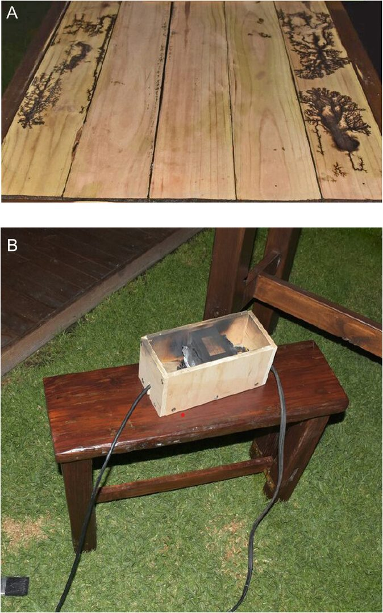
A Wooden planks at the scene in case 1 showing typical Lichtenberg burns. B A burnt out transformer near the body in case 1 Fig. 2 from Byard et al. (2025), Forensic Science, Medicine, and Pathology · PMC12491081 (CC BY 4.0)
The Hardware-Store Glove Illusion
The cruelest feature of a garage-built kilovolt rig is how tidy it looks sitting next to a cordless drill. You have a switch. You have wooden handles. Maybe you bought heavy rubber gloves from the home-improvement aisle. None of it matters. Consumer rubber gloves—and even standard commercial electrician gear—are not rated to stop an unshielded 15,000-volt arc punching across wet timber, bare concrete, or damp grass. High voltage treats hardware-store rubber like wet Kleenex.
The autopsy ledger strips away any lingering romanticism about backyard lightning. In Case 1, external exam and postmortem CT documented deep right-hand charring and thermal fractures of the distal radius and ulna—meaning Joule heating from electrical resistance boiled internal moisture and cracked forearm bone without a fall—plus arcing burns across her right chest, abdomen, and thigh. In Case 2, autopsy found classic trans-torso hand-to-hand electrical burns and high-voltage "crocodile skin" blistering, where extreme thermal shrinkage splits charred skin into hard, reptilian scales. (Case 2 blood toxicology also noted ethanol 0.06% and methamphetamine 0.07 mg/L; at 15,000 volts, the electrical current—not trace toxicology—settled the argument.)
RED FLAGS · WALK AWAY NOW
The Only Warnings You Ever Get
Any DIY rig pairing a salvaged microwave, neon-sign, or oil-burner transformer with jumper cables and baking-soda-soaked wood is already lethal—there is no "careful" operating mode.
The American Association of Woodturners (AAW) bans fractal wood burning entirely and states plainly that consumer PPE cannot guarantee survival.
Garage concrete, damp grass, and metal workbenches happily complete a ground circuit even if you only brush one probe.
If you smell sharp ozone, hear a violent buzz, and see someone locked rigid to a workbench, assume their body—and everything touching them—is live.
✂ FIRST 60 SECONDS · HIGH-VOLTAGE RESCUE
DO NOT TOUCH THE VICTIM: Not their shoulder, not the probes, not the wet wood, not the metal table. Their body is a live wire; grabbing them locks your fists into the exact same circuit.
KILL THE POWER FIRST: Trip the main circuit breaker to the garage/house, or cleanly unplug the transformer from the wall without touching any wet surface or bare wiring.
CALL 911 & START CPR: The second power is verified OFF, check breathing, start hard-and-fast chest compressions, and send someone for an AED—ventricular fibrillation demands defibrillation immediately.
KEEP YOUR BONES UNBOILED: Never salvage a microwave transformer for woodworking. Buy a laser-engraved Lichtenberg print and let the microwave die in peace.
CHAPTER 2 · FILE № 002 · Ep 901
The IED Parked in Your Driveway
Why a fatigued commercial truck sidewall inflates past 120 psi, unzips past 264 psi without a warning hiss, and delivers the exact three-phase blast pathology of a military roadside bomb.
Why Primates Underestimate Compressed Air
Air enjoys the best public-relations campaign in physics. We inhale it sixteen times a minute, hand it to toddlers sealed inside pastel latex balloons, and stroll past eighteen-wheelers at highway rest stops without sparing a glance for the black vulcanized cylinders humming inches from our kneecaps. Human intuition refuses to classify an invisible gas as an explosive—until it is crammed inside fatigued steel cords and asked to hold up forty tons of freight.
A standard commercial truck tire operates at 8 to 9 bar—roughly 115 to 130 pounds per square inch. During catastrophic failure on re-inflation, burst pressure in a heavy 11R22.5 tire spikes to 18.26 bar, or 264.85 psi. When tired steel sidewall belts snap in a cascading line—what tire technicians grimly call a "zipper" burst—there is no courtesy bulge, no theatrical hiss, and no countdown clock. There is only an unshielded pneumatic pipe bomb detonating at chest height.
In a 2022 autopsy report in the Egyptian Journal of Forensic Sciences, A. Ben Daly and colleagues documented two separate accidental shop fatalities. In Case 1, a 58-year-old truck driver (178 cm) stood roughly 50 centimeters—about a foot and a half—facing a worn, roughly five-year-old detached Amine® truck wheel during a 12:50 a.m. inflation when an upper-sidewall zipper burst struck his face and killed him instantly. In Case 2, a 24-year-old repair worker (179 cm) inflating a repaired truck tire around 4:00 p.m. was hurled several meters across the bay by the blast and died en route to the hospital.
FORENSIC INFOGRAPHIC · BLAST GEOMETRY
The Blast Radius of a 110-PSI Commercial Tire
A heavy-duty radial tire at 110 PSI stores the pneumatic energy of a hand grenade. Standing face-on to the sidewall puts your chest inside the fragmentation cone.
Three Phases of a Military Blast, Zero Gunpowder Required
Forensic pathologists do not call a truck-tire blowout an "IED" for journalistic flair; the autopsy table cannot tell the overpressure apart from military ordnance. A rupturing sidewall unleashes the exact same three-stage blast cascade. First comes the primary blast wave—an invisible supersonic wall of overpressure that passes straight through intact skin and unleashes brutal shear forces wherever tissue density abruptly shifts. Where air-filled lung alveoli meet fluid-filled capillaries, the wave shreds alveolar septa from the inside out. In the chest, it shoves the heart violently backward, tearing the semi-mobile ascending aorta and pulmonary trunk before a single piece of rubber even makes contact.
Milliseconds later arrive secondary and tertiary trauma. Heavy steel rims and slabs of vulcanized sidewall turn into high-velocity shrapnel, smashing facial bones and whipping the head backward across the craniocervical junction. Then the blast wind lifts a full-grown adult bodily off the concrete and slams them several meters away into floors, walls, or shop machinery.
The two autopsies read like a battlefield black-box printout. Case 1 suffered a left horizontal mandible fracture, subdural and subarachnoid hemorrhage beneath an intact skull vault, bilateral rib fractures (right ribs 2–5, left 2–3), a 110 mL hemothorax, torn contused lungs (right 784 g, left 562 g), liver lacerations in segments 7 and 8, a left greater horn hyoid fracture, and two injuries that settle any argument about kinetic fury: atlanto-occipital dislocation—internal decapitation snapping the ligaments anchoring skull to spine—and 550 mL of blood inside the pericardial sac from lacerations of both the ascending aorta and pulmonary trunk. Case 2 sustained right ear bleeding, nasal, right zygomatic, and mandibular fractures, a left subdural hematoma, a left petrous skull-base fracture, a left second-rib fracture, and massive hemorrhagic pulmonary edema that turned both lungs into blood-logged bricks weighing 1,060 g on the right and 1,046 g on the left—more than double normal weight.
The Peer-Review Typo—and the Walking Survivor Trap
Reading forensic reports like flight recorders means auditing the fine print, not just skimming the conclusion. Case 2's report contains the curious verbatim phrase "epidural haematoma of the frontal scalp," and the paper commits a textbook peer-review slip: both the Abstract and Case Presentations explicitly document the hyoid bone fracture in Case 1 while noting an intact hyoid and thyroid cartilage in Case 2, yet line 193 of the Discussion erroneously assigns that hyoid fracture to Case 2. Neither editorial gremlin alters the fatal physics, of course—both toxicology screens were clean, and the blast ledger is airtight—but it is a sharp reminder to track primary measurements all the way through a paper.
The far deadlier misreading happens in real life when someone survives a tire blowout standing up. Because primary blast waves travel cleanly across intact skin, a worker knocked backward who dusts himself off with a few chest bruises and a bleeding eardrum can look deceptively stable while harboring a slow subdural bleed, shredded pulmonary capillaries, an occult bowel tear, or a partially sheared aorta waiting to rupture an hour later. Treating a tire-blast survivor like a fender-bender bruise instead of a military blast casualty is how a shop accident gets a second chance to finish the job.
RED FLAGS · STEP OUT OF THE BLAST CONE
When Compressed Air Stops Being Friendly
Any worn, aged, repaired, or previously run-flat commercial truck tire being re-inflated—fatigued steel cords unzip silently along the sidewall with zero warning hiss or bulge.
Standing face-on to a commercial sidewall within 50 cm (1.5 ft), or inflating a heavy truck wheel outside a bolted steel restraining cage.
Holding a short manual air chuck by hand instead of using a clip-on remote chuck from at least 2.5 meters (~8 feet) away behind a solid barrier.
A blast survivor who insists they are fine despite ear bleeding, dizziness, chest soreness, or minor surface bruises—internal barotrauma hides cleanly behind intact skin.
✂ FIRST 60 SECONDS · HEAVY TIRE INFLATION & BLAST RESPONSE
CAGE IT & CLIP ON REMOTELY: Never inflate a commercial truck tire outside a heavy steel restraining cage. Attach a clip-on remote air chuck and stand at least 2.5 m (~8 ft) away—never facing the sidewall.
CALL 911 FOR EVERY BLAST SURVIVOR: If a tire explodes near someone, call emergency services immediately even if they walk away swearing they only have a ringing ear or chest bruise.
PROTECT THE SPINE & HOLD STILL: Keep the survivor lying flat and motionless until EMS arrives—secondary and tertiary impacts cause occult cervical, skull-base, and aortic injuries worsened by movement.
DEMAND BLAST-TRAUMA IMAGING: Tell ER clinicians the exact mechanism (high-pressure commercial tire blowout) so the patient receives contrast chest/head CT and trauma observation for occult barotrauma.
CHAPTER 3 · FILE № 003 · Ep 901
When Furniture and Gravity Hold a Grudge
Two peer-reviewed forensic autopsies—an empty vineyard sprayer tank and a cluttered ottoman storage bed—proving you can suffocate in 20.8% breathable oxygen without a villain, a toxin, or a single finger on your throat.
How to Suffocate in Perfectly Fresh Air
Most people assume suffocation requires a clear culprit: smoke, poison gas, water, or a hand clamped over the airway. Gravity finds that assumption adorable. All physics really requires is an ordinary household object, a bad angle, and a human body whose center of mass drifts two inches past the point of no return.
In a 2025 case report in The American Journal of Forensic Medicine and Pathology, F. D'Elia and colleagues described a healthy 83-year-old male farmer who climbed a ladder to repair an empty 1990s towed vineyard spray atomizer tank (bottom cap open, hammer inside). He leaned head-first through the circular 40-centimeter—roughly 16-inch—top hatch, slipped past his waist, and wedged upside down with his arms dangling inside smooth walls and his legs outside. He shouted to his brother for help; because his brother had a forensically certified severe congenital intellectual disability, emergency services were not summoned for more than two hours.
When firefighters arrived, they needed a crane to tip the tank sideways just to extract him. Their gas meters delivered the eerie punchline: tank air measured a pristine 20.8% oxygen and 0 carbon monoxide, and tank-residue chemistry and toxicology were completely negative. Once a human pelvis crosses a narrow rim into a smooth cylinder without handholds, pushing outward generates lateral friction and zero upward lift. Meanwhile, the 40-cm rim squeezes the upper abdomen, heavy organs—liver, stomach, intestines—drop directly onto the diaphragm (diaphragmatic splinting), and inverted hydrostatic pressure floods the right heart while stalling cerebral venous drainage. Autopsy found lateral abdominal "tramline" bruises matching the hatch rim, disseminated white-matter and brainstem petechiae, and waterlogged lungs weighing 880 g on the right and 800 g on the left—fulfilling all six Byard criteria for positional asphyxia.
The Space-Saving Bedroom Nutcracker
If a farm sprayer sounds avoidable simply by staying off ladders, the second trap sits peacefully inside modern apartments. Ottoman storage beds lift their entire slatted frame and mattress on headboard hinges powered by hydraulic gas struts, creating generous under-bed storage—and, if those struts tire or go missing, a massive Class-2 lever poised above your spine.
In a 2022 report in Forensic Science, Medicine, and Pathology, A. Cinquetti and colleagues documented a 56-year-old woman (150 cm, 55 kg) found deceased more than 24 hours postmortem, trapped face-down with her neck, upper chest, and arms pinned between the rigid lower frame edge and the collapsed mattress lid of an ottoman bed whose hold-up suspension mechanism was missing or defective and weighed down by cluttered clothes and blankets.
Think of a walnut inside a hinged nutcracker. Near the handles, you have to squeeze hard; tucked deep into the V beside the metal hinge, minimal pressure crushes the shell effortlessly. Standing at the foot end of a storage bed gives you maximum upward leverage. Leaning in near the headboard puts your neck directly beside the hinge fulcrum, multiplying the weighted lid's downward force until self-rescue is biomechanically impossible. Under that Class 5 Byard trap, three fatal mechanisms lock in simultaneously: atypical neck compression (squeezing carotid arteries, engorging jugular veins, and firing carotid-sinus baroreceptors to slow the heart), traumatic thoracic asphyxia (pinning the rib cage shut), and prone positional asphyxia.
REFERENCE EXHIBIT · CT / IMAGING SCAN · CC BY 4.0
ILLUSTRATIVE REFERENCE EXHIBIT — Verified CC BY diagnostic figure from a separate peer-reviewed publication showing the same mechanism (not the index patient).
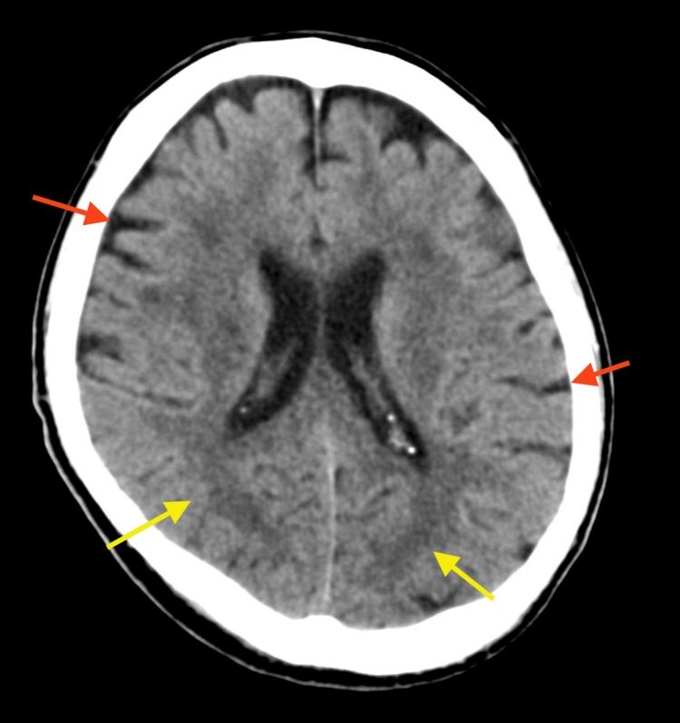
Head CT scan on arrival.The corticomedullary boundary is clear as shown by the yellow arrows, and the cerebral sulcus is not narrowed as shown by the red arrows.CT: computed tomography Figure 1 from Yoshioka et al. (2024), Cureus · PMC10998646 (Reference Case) (CC BY 4.0)
Reading a Rectangular Shadow at 15.7 Micrometers
Because emergency crews naturally pulled the woman out supine to attempt resuscitation before forensic specialists arrived, the scene itself had been altered. Her own skin preserved the blueprint. Fixed purple petechial lividity across her face, chest, and palms was cleanly sliced by a pale rectangular sparing band across her anterior neck, clavicles, and wrists—the negative photographic stamp where the wooden bed frame compressed capillary blood out of her tissue. Submental (4.5 × 2.5 cm) and posterior neck (5 × 3 cm) abrasions lined up with dilated jugular veins and deep soft-tissue hemorrhage.
Whenever someone dies alone with severe neck compression, investigators must rigorously exclude homicidal strangulation. Rather than settling for routine X-rays, the Italian team excised her hyoid bone and larynx and ran them through a Skyscan 1275 micro-CT scanner at 15.7-micrometer voxel resolution—less than a quarter the width of a human hair. The scan confirmed zero fractures or microfractures, matching broad distributed wooden-frame crush rather than focused hands or a ligature (toxicology showed only negative ethanol and subtherapeutic diazepam, flurazepam, and escitalopram, numeric levels not reported). Nobody murdered her; worn hardware and ninth-grade lever math simply held a grudge.
RED FLAGS · RESPECT THE FULCRUM
Gravity Traps Disguised as Chores
Any smooth-walled top-loading tank, barrel, or narrow hatch (~40 cm) where leaning past your hips leaves your hands pressing uselessly against sheer walls.
An ottoman storage bed whose lid sags, hisses, feels unusually heavy, or lacks locking struts—especially when piled with extra blankets and clothing.
Reaching into an ottoman compartment from the side near the headboard hinges instead of standing at the foot end opposite the fulcrum.
Assuming an empty, vented tank with normal breathable air (20.8% O₂) or a nearby bystander unable to operate a hoist counts as a safe confined-space plan.
✂ FIRST 60 SECONDS · GRAVITY & LEVER ENTRAPMENT RESCUE
TIP THE TANK HORIZONTALLY: If someone is wedged head-down in a barrel or hatch, call 911 immediately and rotate or tip the vessel onto its side to offload the diaphragm—pulling straight up on ankles usually fails.
LIFT THE BED LID OFF FIRST: In an ottoman entrapment, lever the heavy mattress frame upward from the foot end and prop it before pulling the victim out—never drag a pinned neck under crushing weight.
WORK FROM THE FOOT END + PROP BAR: Replace sagging or hissing bed struts immediately, lock raised lids with a rigid timber/safety bar, and always access storage from the foot end opposite the headboard hinges.
HARNESS + CAPABLE SPOTTER: Never lean past your waist into any narrow top hatch without an anchored fall-restraint harness and a physically and cognitively capable standby attendant.
CHAPTER 4 · FILE № 004 · Ep 2303
The Air That Came Along for the Ride
How solid CO₂ riding quietly in cardboard boxes turns a sealed car into an 800-fold invisible gas trap, fools a post-oxygen blood gas into looking spotless, and temporarily stuns a healthy heart into the shape of a Japanese octopus pot.
An Invisible 800-Fold Balloon in the Backseat
Dry ice is the ultimate party trick turned workplace saboteur because it refuses to behave like ordinary ice. Frozen solid at −78.5 °C, carbon dioxide skips melting altogether at normal atmospheric pressure and sublimates straight from solid block to gas—expanding roughly 800 times in volume. Set cardboard boxes of it inside a closed car and you have released a silent, odorless, invisible balloon that steadily shoves breathable air out of the cabin. No haze, no hiss, no rotten-egg mercaptan warning.
In a 2021 case report in Cureus, Haruna Inoue and colleagues described an otherwise healthy 49-year-old man with no medical history who called an ambulance while driving with cardboard boxes of dry ice loaded in the back. EMTs found him inside the closed car with zero smoke and zero unusual odor—yet actively crashing: heart rate 102 bpm, blood pressure 95/75 mmHg (a pinched 20 mmHg pulse pressure signaling weak cardiac output), panting at a frantic 40 breaths per minute, and a Glasgow Coma Scale score of E1 V2 M4 (total 7)—eyes shut, incomprehensible groans, withdrawing only from pain. (An interview with a colleague noted several coworkers had felt similar breathlessness hauling dry ice in cars, though none underwent testing—a loud diagnostic clue, never an invented outbreak count.)
Carbon dioxide does not politely put you to sleep; it actively attacks your brainstem. Inhaled CO₂ forms carbonic acid in the blood, crosses the blood-brain barrier, and acidifies cerebrospinal fluid. Chemoreceptors in the medulla scream at the lungs to hyperventilate—trapping the driver in a brutal feedback loop where every desperate breath sucks in more CO₂. (Epistemic boundary: EMTs carried no cabin gas meters, so ambient CO₂ percentage, dry-ice weight, and drive duration were never recorded—and back-calculating fake "safe weights" from symptoms is how the next person gets hurt.)
FORENSIC INFOGRAPHIC · GAS STRATIFICATION
Why Dry Ice in the Back Seat Floods the Cabin First
Solid CO₂ sublimates into gas 1.53× denser than air—odorless, colorless, and silently rising from the floorboard until oxygen drops below consciousness.
The Spotless Blood Gas and the Octopus-Pot Heart
EMTs slapped on high-flow oxygen, and by hospital arrival the crisis appeared to vanish like a stage trick. His breathing dropped to a calm 16 breaths per minute, blood pressure steadied at 100/79 mmHg, heart rate measured 100 bpm (96 on initial ECG—distinct point checks), GCS rose to E3 V5 M6 (14, an ordinal milestone jump rather than a "50% brain bar"), and fingertip SpO₂ read a glowing 98%—on supplemental oxygen, proving treatment worked now, not that the cabin was safe twenty minutes earlier. Even his post-oxygen arterial blood gas looked textbook normal: pH 7.415, PaCO₂ 39.3 mmHg, PaO₂ 133 mmHg, bicarbonate 24.7, anion gap 11.4. Fresh air and the Haldane effect had already scrubbed the CO₂ evidence clean. (Non-standard units printed for lactate, troponin T, and CK-MB in the paper are deliberately withheld here rather than silently guessed.)
Yet the patient stayed pale, exhausted, and uncomfortable in his chest, with bilateral lung congestion on chest X-ray and creatine kinase climbing from 97 IU/L on admission to 286 IU/L on Day 2. His initial ECG showed normal sinus rhythm with no classic STEMI elevation. Then an echocardiogram uncovered the stunner: his left ventricular ejection fraction had plunged to 35% (normal 50–70%), with the top base squeezing hyperkinetically while the bottom apex hung paralyzed and ballooned outward—the exact silhouette of a Japanese octopus trap, or Takotsubo cardiomyopathy.
By Day 3, his ejection fraction rebounded 25 percentage points back to 60% with normal wall motion and evolutionary T-wave inversions in leads V2–V6; coronary angiography showed no significant obstructive narrowing, and he went home on Day 4 (with no long-term follow-up reported). Historical research by Wittstein and colleagues (2005) on 19 emotional-stress patients explains the cellular fail-safe: toxic adrenaline surges force dense apical β₂-receptors to flip from stimulatory Gs to inhibitory Gi signaling, hitting the emergency brake so the heart does not beat itself to death. Still, the case report stays scrupulously modest: no blood catecholamines or cardiac MRI were measured in this driver, making Takotsubo a clinically compelling association presumed linked to CO₂ intoxication—not lab-proven causation.
EXHIBIT A · ELECTROCARDIOGRAM · CC BY 3.0
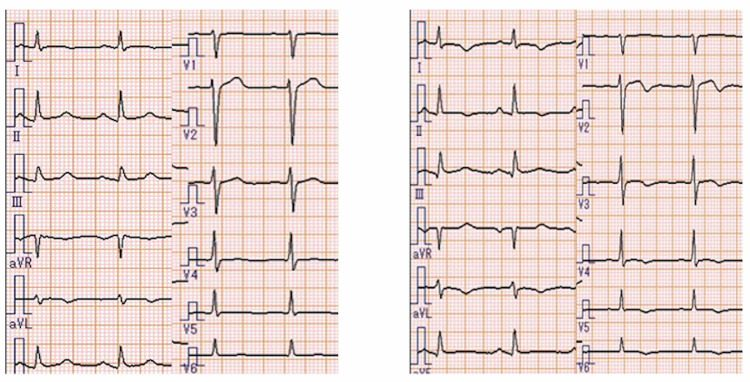
Electrocardiogram (Left) Electrocardiogram on admission showed normal findings without S-T change or T-wave inversion. (Right) ECG on third hospital day showed T-wave inversion in V2 - V6. Figure 2 from Inoue et al. (2021), Cureus · PMC8081557 (CC BY 3.0)
Why Your CO Detector Won't Peep—and the Rescuer Empathy Trap
Two everyday myths turn dry ice from a chilly inconvenience into a multi-casualty disaster. First is confusing carbon dioxide (CO₂) with carbon monoxide (CO). A hardware-store CO alarm detects combustion exhaust, not sublimating dry ice; it will sit completely mute while cabin CO₂ climbs to lethal levels. Likewise, a cloth mask, surgical mask, or N95 filters dust and droplets, not gas molecules—wearing one into a CO₂-choked cabin is theatrical suicide.
Second is the empathy trap. See a friend slumped over a steering wheel and every cell in your body yells to yank the door open, lean inside, and drag them out. Resist. Briefly cracking a door does not clear an invisible gas cloud, and holding your breath fails fast when adrenaline drives you to gasp. Unprotected rescuers routinely collapse right beside victim number one. Safe transport demands engineering before keys hit the ignition—as Cornell EHS, OSHA, and WorkSafe Victoria emphasize, isolate dry ice from occupant airspace (a sedan trunk often vents directly into the back seat), rely on professionally assessed ventilation rather than guessing with a cracked window, and use strictly vented packaging. Seal dry ice in an airtight plastic cooler and you have built a fragmentation pressure bomb; if a container starts bulging, evacuate and call hazmat instead of playing amateur bomb tech with the lid.
RED FLAGS · TRUST SYMPTOMS, NOT YOUR NOSE
When Invisible Air Turns Hostile
Sudden headache, dizziness, confusion, or unusual shortness of breath anywhere dry ice is stored or hauled—treat physical symptoms as the primary alarm, because odor and haze will not show up.
Carrying dry ice inside a passenger cabin or an unsealed sedan trunk that shares airspace behind the back seat, assuming a cracked window guarantees safety.
A standard home CO detector or N95 respirator—neither detects CO₂ nor supplies breathing air.
An airtight cooler or plastic bin containing dry ice that begins to bulge or deform—never unscrew, puncture, or pick it up; clear the area immediately.
✂ FIRST 60 SECONDS · DRY-ICE CABIN & BYSTANDER RESCUE
PULL OVER & EXIT IMMEDIATELY: If you feel headache, dizziness, confusion, or air hunger while driving with dry ice, stop safely right away and step out into open air—never try to drive yourself to the ER.
DO NOT LEAN IN TO RESCUE: If someone is slumped inside a closed car or room with dry ice, do NOT hold your breath, wear an N95, or crack the door to drag them out—only trained crews with SCBA enter.
CALL 911 & NAME THE GAS: Tell dispatch clearly that dry ice / carbon dioxide is present, state the exact location and whether someone is inside, and keep bystanders well back until responders confirm safe air.
ISOLATE & VENT BEFORE DRIVING: Never haul dry ice in passenger airspace or airtight containers. Use vented packaging in a truly separated ventilated cargo compartment—and evacuate if any sealed bin bulges.
CHAPTER 5 · FILE № 005 · Ep 2242
The Cut That Was Smaller Than the Injury
Why a harmless-looking 2-centimeter pressure-washer scratch hides bubble-wrap gas halfway to the elbow, how Wilhelm Röntgen’s 1896 rays expose the lie, and the viral denominator trap lurking inside amputation statistics.
The Liquid Stiletto and the Bubble-Wrap Forearm
For three million years, humans survived on a tidy visual shortcut: big ugly gash equals mortal danger; tiny bloodless scratch equals Band-Aid and carry on. Evolution never met a driveway pressure washer. Take ordinary garden-hose force and squeeze it through a microscopic nozzle aperture, and elementary physics (P = F/A) turns gentle water into a liquid stiletto—the exact difference between someone stepping on your hand in a flat sneaker versus a needle heel.
In a 2022 report in the Journal of Education & Teaching in Emergency Medicine, Fortuna and colleagues described a 53-year-old right-hand-dominant man who took a gas-powered pressure-washer hit to the back of his non-dominant left hand—classic equipment choreography, where the dominant hand pulls the trigger while the helper hand wanders into the nozzle path. The tank held plain water only: zero paint thinner, degreaser, or caustic solvent. On arrival, his wound looked almost laughably mild: a clean, superficial 2-centimeter (20-millimeter) linear cut with no exposed tendon or bone. He flexed and extended every finger smoothly, felt every touch normally, and had a warm, pink, well-perfused hand. Routine labs returned a reassuring qualitative note—no significant acute abnormalities—though zero numeric values (WBC, CRP, lactate) were printed, and minute-zero blood draws cannot detect bacteria still unpacking their bags.
Then clinicians pressed gently on his skin and felt crepitus—the unmistakable crackle of tiny bubble wrap tucked beneath intact flesh—running not just beside the scratch, but across his entire hand halfway up to his elbow. Plain X-rays, direct descendants of Wilhelm Röntgen's 1896 discovery that low-density gas turns stark black against white bone, unmasked extensive subcutaneous emphysema: dark streaks tunneling along the fascial planes of his second and third fingers, shrink-wrapping his knuckles (metacarpophalangeal joints), and marching all the way to his mid-forearm.
Inflating a Balloon Inside a Rigid Steel Pipe
A kitchen knife is polite enough to leave its damage where the blade stops. High-pressure injection is an unauthorized excavation. Your hand and forearm are not loose bags of tissue; they are tightly partitioned inside unyielding collagen sleeves called fascia. When a water jet defeats skin tensile strength, it blasts fluid and ambient air straight into a closed, inelastic tunnel where the only way out is straight along tendon sheaths and fascial highways. (Keep the math honest: that 20-mm cut is a one-dimensional surface length, not a nozzle area or injected volume—exact machine PSI and water volume were not reported.)
Once fluid plus inflammatory swelling starts filling a rigid fascial sleeve, it behaves like inflating a balloon inside a steel pipe. Rising pressure first collapses thin-walled venous capillaries—letting pressurized arterial blood keep pumping in while cutting off the exit drain. Soon internal pressure overtakes arterial diastolic pressure, starving muscles and nerves of oxygen. Without emergent surgical decompression (fasciotomy slicing open the sleeve), compartment syndrome turns viable tissue necrotic within hours.
Fortuna's surgical team refused both reflexive scalpel panic and naive "it's just water" dismissal. They called hand surgery immediately, admitted him, started IV antibiotics, and ran relentless serial neurovascular checks around the clock. Because plain water does not chemically dissolve cell membranes the way industrial paint or hydraulic oil does, his pressure never crossed the compartment-syndrome cliff—he avoided the operating room entirely and went home on oral antibiotics (exact stay length and drug doses not reported). His calm hand on Day 0 had shown zero NHS red flags of compartment syndrome—proving that by the time severe pain, numbness, and paralysis finally appear, tissue starvation is already well underway.
EXHIBIT A · HAND X-RAY · CC BY 4.0
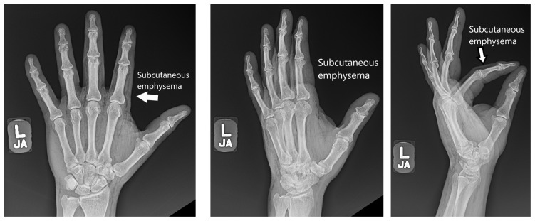
Three-view left hand radiograph after a high-pressure injection injury showing dark pockets of subcutaneous emphysema dissecting deep along the index finger and palm despite an unimpressive surface pinhole. Figure 1 from Fortuna et al. (2022), Journal of Education & Teaching in Emergency Medicine · PMC10332702 (CC BY 4.0)
EXHIBIT B · FOREARM X-RAY · CC BY 4.0
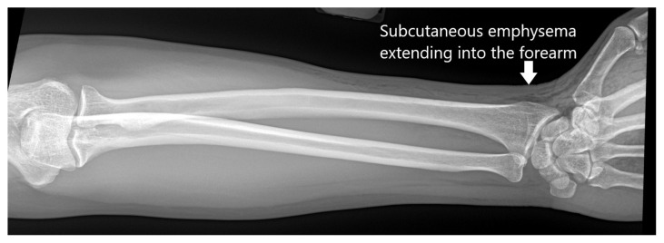
Forearm radiograph from the same patient proving how far a fingertip high-pressure blast travels—subcutaneous emphysema tracking straight past the wrist into the forearm fascia. Figure 2 from Fortuna et al. (2022), Journal of Education & Teaching in Emergency Medicine · PMC10332702 (CC BY 4.0)
The Viral Denominator Trap Inside Amputation Stats
To gauge the real stakes of high-pressure injections—and how sloppy arithmetic warps clinical fear—consider the 2019 multicentric occupational study by Vitale and colleagues in the Journal of Clinical Medicine. First, honor the boundary: their 71 patients were mostly industrial workers injected with brutal, chemically toxic grease, oil, and paint, NOT backyard water-only homeowners. Across all 71 cases, 20 required amputation (28.2% overall). Splitting treatment timing at 6 hours, 5 of 26 early patients (19.2%) lost a digit or limb versus 15 of 45 late patients (33.3%).
Now watch the denominator sleight of hand that tricks headlines every year. Because 5 of the 20 amputations happened early (25%) and 15 of the 20 happened late (75%), careless summaries scream that waiting past 6 hours gives you a "75% chance of amputation." False—that quietly swapped the denominator from late patients (45) to total amputations (20). The true late-group amputation rate was 33.3%: still an appalling one-in-three risk of mutilation, even with observational confounders and follow-up attrition (only 42 attended follow-up, 34 scored functionally). Equally vital: a 6-hour statistical benchmark is NEVER a five-hour grace period to finish rinsing the patio. Tissue tearing starts at millisecond zero, and the UK Health and Safety Executive warns never to hunt pressurized hose leaks with your fingers—an invisible pinhole stream slices straight through heavy work gloves.
RED FLAGS · THE MECHANISM IS THE EMERGENCY
Never Grade a Pressurized Injury by Its Skin Dot
Any skin contact with a pressure washer, paint sprayer, grease gun, or hydraulic hose leak—even a tiny bloodless pinhole with plain water and full finger motion.
Crackling "bubble wrap" under the skin (crepitus) or swelling spreading beyond the entry mark—a sign fluid and air have tunneled down fascial planes.
Disproportionate escalating pain, tight swelling, pins-and-needles numbness, or trouble moving fingers (classic NHS compartment-syndrome emergencies—do NOT wait for these to show up).
Searching for pinhole leaks along a pressurized hose by sliding bare or gloved hands over the line—invisible high-velocity streams cut right through work gloves.
✂ FIRST 60 SECONDS · HIGH-PRESSURE INJECTION EMERGENCY
COVER GENTLY & ELEVATE: Shut off the machine, cover any bleeding lightly with a clean dry cloth using gentle pressure, and keep the hand elevated while heading straight to the ER.
DO NOT PROBE OR BLAST-RINSE: Never dig at the wound with tweezers or hold it under a forceful kitchen tap—both act like a plunger pushing surface bacteria and fluid deeper along tendon sheaths.
SAY THE MAGIC TRIAGE WORDS: Do NOT say 'I cut my hand.' Tell the triage nurse immediately: 'I have a high-pressure injection injury'—and name the exact substance (water, paint, grease, or hydraulic oil).
RESPECT EVERY NOZZLE & HOSE: Never point a wand near skin, keep kids clear, and never feel along pressurized hoses with bare or gloved hands to hunt for pinhole leaks.
CHAPTER 6 · FILE № 006 · Ep 2285
The Puncture That Looked Too Small
How a furniture worker walked into the ER completely pain-free with a calm pulse of 75 and a negative ultrasound—while a 20-millimeter steel nail sat right beside his beating heart, foreshortened into a harmless 5.8-millimeter shadow on X-ray.
Pulse 75, Pain Zero—And a Pinprick Inside the Cardiac Box
If Hollywood directed trauma bays, every dangerous chest wound would arrive spurting crimson while alarms screamed. Real emergency medicine is far sneakier. In a 2026 case report in Cureus, Tombul and colleagues documented a healthy 39-year-old male furniture worker who arrived at the emergency department within 30 minutes of an accidental pneumatic nail-gun strike to the chest. (Honesty check: the medical chart records neither his exact shop task, nor the gun's trigger design, nor whether a ricochet occurred—we analyze the trauma documented, never an invented ladder mishap.)
His intake chart looked like a practical joke. He felt completely fine—zero pain, zero breathlessness. His blood pressure sat at a textbook 120/70 mmHg, his heart rate hummed along at a zen 75 beats per minute, and his room-air oxygen saturation read 96%. Externally, all anyone saw was a tiny punctate red mark slightly left of midline over his lower breastbone.
Trauma surgeons did not care how relaxed his pulse looked because of where that dot sat: squarely inside the "cardiac box"—the prime real estate bounded by the sternal notch at the throat, the xiphoid tip at the base of the breastbone, and the midclavicular lines down both sides. Finding a puncture inside the cardiac box with normal blood pressure is like spotting a bullet hole in an airliner fuselage while cabin pressure still reads normal. It does not certify safety; it only means decompression hasn't begun this minute.
Why a 20-Millimeter Nail Cosplayed as 5.8 Millimeters
The first bedside test handed out another round of deceptive good news: a rapid FAST ultrasound scan came back completely negative—no fluid in the heart's fibrous pericardial sac and no free blood in the abdomen. Crucial distinction: trauma ultrasound hunts liquid blood, not a needle-thin 23-gauge steel shaft. A negative FAST merely confirms you are not actively bleeding to death right now.
Within two hours of admission, advanced imaging dismantled the illusion. A standard two-dimensional chest X-ray displayed a bright radiopaque fleck superimposed over the heart shadow measuring just 5.8 millimeters. Then a non-contrast 3D CT scan dropped the real verdict: the foreign body was a full 2 centimeters (20 millimeters) long, punching straight through the lower sternum and terminating inside the thin paracardiac fat—mere millimeters from the beating pericardium. Why did 20 mm shrink to 5.8 mm on X-ray? Pure shadow geometry called foreshortening. Point a pencil nearly straight at a flashlight and its wall shadow collapses toward a dot. Trusting a single flat X-ray could have dismissed a trans-sternal spear as a skin splinter.
Contrast-enhanced CT added an even chillier finding: subtle positional shifts of the nail tip synchronized with normal respiratory motion (not proven free migration, just the living ribcage and diaphragm shifting rigid metal beside the heart sac 12 to 20 times every minute). Echocardiography confirmed intact cardiac function with no pericardial effusion, tamponade, or proven myocardial breach—and because chest tissue compresses under a tool's nosepiece and rebounds after firing, neither a 20-mm length nor a 23-gauge wire lets anyone calculate a "safe depth." Within four hours of arrival, thoracic surgeons skipped a full open-heart sternotomy, used a targeted substernal incision under local anesthesia and sedation, guided extraction with live real-time X-ray (fluoroscopy), and discharged him cleanly on post-operative day one.
EXHIBIT A · 3D CHEST CT · CC BY 4.0
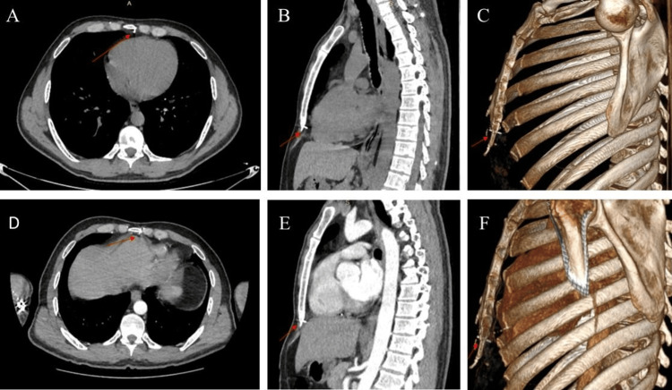
Axial, sagittal, and 3D-reconstructed thoracic CT revealing a pneumatic nail-gun projectile piercing the anterior sternum directly adjacent to the pericardium and heart (red arrows). Figure 2 from Tombul et al. (2026), Cureus · PMC13163607 (CC BY 4.0)
No Pull-the-Plug Heroics, No Sucking-Chest Improvisation
Two dangerous myths routinely wreck nail-gun survival. First is treating that 30-minute arrival and four-hour surgical timeline as a safe waiting window. If a shifting nail nicks a pericardial vessel, blood fills the stiff leather heart sac (cardiac tamponade) while adrenaline masks the crisis until blood pressure abruptly crashes—meaning chest pain, gasping, and fainting are late failure alarms, not early warnings. Second is Hollywood field medicine: never pull an embedded nail out (it may be plugging a vessel or tear one on exit), never press directly on top of the entry site like a human hammer, and never slap improvised plastic-wrap airtight seals over a non-leaking puncture (this patient had zero lung collapse or sucking chest wound; AHA/Red Cross guidelines even for open chest wounds warn against wound packing and improvised airtight seals that can trap air into fatal tension pneumothorax).
Prevention starts before air hoses ever hiss. In a landmark 2006 cohort study of 772 U.S. apprentice carpenters (a separate population from this Turkish furniture worker), Hester Lipscomb and colleagues found that contact-trip ("bump") triggers—which fire whenever the nose touches wood while the finger holds the trigger—carried 2.0 times the adjusted injury rate of full sequential triggers (95% CI 1.2–3.3; a relative doubling, cutting relative rate in half when switched). NIOSH recommends full sequential triggers, mandatory eye protection (denim shirts do not stop pneumatic steel), reporting near-misses, and one iron shop law: never wire back or bypass a tool's safety guard for speed.
RED FLAGS · RESPECT THE CARDIAC BOX
When Feeling Fine Is a Trauma Trap
Any nail-gun strike to the chest, neck, or abdomen—especially inside the cardiac box between collarbones and lower breastbone—even with zero pain and normal BP/pulse.
Assuming a single negative bedside ultrasound (FAST) or a tiny foreshortened dot on a flat chest X-ray clears a deep metallic track without 3D CT imaging.
Waiting for chest pain, shortness of breath, pale clammy skin, or dizziness—those signal active decompensation such as cardiac tamponade, not early warning.
Bump-firing with contact-trip triggers, bypassing nosepiece guards, or ignoring close-call ricochets on the jobsite.
✂ FIRST 60 SECONDS · NAIL-GUN CHEST PUNCTURE
DISCONNECT AIR & CALL 911: Drop and unplug the nail gun immediately. Call 911 for a penetrating chest injury—state exact wound location, pneumatic tool mechanism, breathing status, and that the nail may be embedded.
DO NOT PULL OR PRESS ON IT: Leave any protruding nail untouched—pulling can remove a vascular plug or tear adjacent vessels. If bleeding occurs around it, pad gently around the sides, never downward on top.
NEVER DRIVE YOURSELF OR PACK IT: Do not put a cardiac-box victim in a pickup truck over potholes, do not pack gauze into a chest wound, and do not tape improvised airtight plastic seals over a puncture.
HOLD STILL & DEMAND 3D IMAGING: Keep the patient still while awaiting paramedics; normal vitals and a negative quick ultrasound do not replace cross-sectional CT evaluation in the hospital.
CHAPTER 7 · FILE № 007 · Ep 1155
The Alarm Beyond the Wall
Why putting a storm generator ‘outside’ next to the siding tied attached garages 16-to-16 in Florida’s 167-case hurricane audit, how a 5-mph breeze turns a roofline into a carbon monoxide siphon, and why both wall-plugged detectors and fingertip oximeters betray you.
16 in the Garage, 16 Outside—and the 5 a.m. Surge
We spend fortunes fortifying our homes against storm hazards we can watch on radar—plywood, sandbags, flashlights—and then get blindsided at 5:00 a.m. after the winds die down. During Florida's brutal 2004 hurricane season, four major storms hammered the grid in weeks. Pulling records from 10 hospitals (including two equipped with hyperbaric chambers), the CDC and Florida Department of Health documented 167 nonfatal carbon monoxide poisonings across just 51 incidents—entire households poisoned simultaneously by one engine—plus five separate CPSC-investigated fatal incidents claiming six lives. Portable gasoline generators caused 47 of the 49 source-identified nonfatal events and 100% of the deaths.
Two numbers in that ledger demolish everyday intuition. First, 111 of the 167 patients arrived at emergency rooms between 5:00 a.m. and 10:00 a.m.—families who fired up temporary power overnight for refrigerators and fans and woke up with splitting headaches, vomiting, or unresponsive spouses. (And because the dataset tracked ten hospitals targeting severe care, mild cases who shut off the machine and napped on the couch represent an uncounted iceberg underneath.) Second, among recorded nonfatal placements, 16 generators sat inside garages—and an identical 16 sat completely outdoors, mostly tucked close to windows or window AC units to shield expensive hardware from rain and thieves.
Why does "outside" fail so reliably? In a 2010 National Institute of Standards and Technology simulation, Liangzhu Wang, Steven Emmerich, and Ryan Powell modeled wind flowing over a two-story house with one open window—and revealed a house behaves like a boulder in a river, carving swirling low-pressure wake eddies behind its walls. On a dead-calm night, hot buoyant generator exhaust rises straight upward; in a 20-mph gale, wind shreds the plume apart. At an intermediate breeze, however, lateral airflow bends the concentrated warm plume horizontally without scattering it, feeding CO straight into the house's low-pressure wake and siphoning it indoors. An exhaust setup that looked harmless at 9:00 p.m. becomes a bedroom funnel when a gentle breeze shifts at 3:00 a.m.—and cracking a garage door wide open merely builds a bigger aerodynamic scoop.
The 99.2% Fingertip Lie in the Trauma Bay
Once wind eddies escort carbon monoxide past the windowsill, molecular piracy takes over. Hemoglobin binds carbon monoxide 200 to 250 times more tightly than oxygen, hijacking red blood cells into carboxyhemoglobin (COHb) and starving organs even in oxygen-rich air. Worse, CO wears a flawless optical disguise in front of the most ubiquitous gadget in medicine: the spring-loaded fingertip pulse oximeter.
Standard pulse oximeters shine just two light wavelengths—660 nm red and 940 nm infrared—acting like a dim nightclub bouncer instructed only to count "red shirts." Because carboxyhemoglobin absorbs 660 nm red light almost identically to healthy oxyhemoglobin, the bouncer cheerfully counts deadly poison as fresh oxygen. In a landmark 1997 study of 124 carbon-monoxide-poisoned patients at a regional hyperbaric center, William Bozeman, Robert Myers, and Richard Barish caught the lie red-handed: conventional fingertip SpO₂ averaged a glowing 99.2%, while true laboratory multi-wavelength oxyhemoglobin sat at a hypoxic 88.7%—over a 10-point gap of poison disguised as health. (Never try to "subtract 10" as a shortcut; individual gaps swing unpredictably, making standard fingertip SpO₂ completely unusable to rule out CO.)
Only multi-wavelength laboratory CO-oximetry checks the molecule's real ID card—and even lab blood draws fight a ticking clock. Stepping outside drops blood CO with a 4-to-5-hour half-life, while high-flow 100% ambulance oxygen slashes that half-life to 40–80 minutes (severe cases can enter hyperbaric chambers, using Henry's Law at 2–3 atmospheres to force oxygen directly into blood plasma past hijacked hemoglobin). By 8:00 a.m., a blood draw measures only the fading tail of a 4:00 a.m. bedroom dose, making one blunt triage question—"Are you running a generator?"—worth more than any fingertip clip.
HAZARD REFERENCE · VERIFIED PHOTO · Public Domain
VERIFIED HAZARD REFERENCE PHOTO — Commercial-cleared Public Domain / CC BY photograph of the organism or physical hazard (not the index scene).
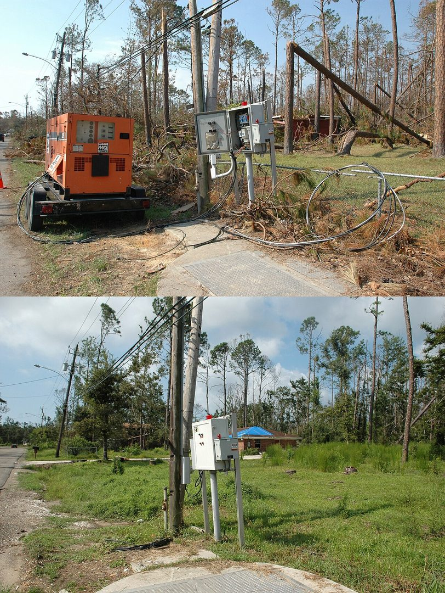
Waveland, Miss., September 9, 2005 and August 10, 2006 -- Before (top) power was restored it was necessary to use portable generators to create electricity in Waveland. Work to restore electricity after Hurricane Katrina was a top priority. Mark Wolfe/FEMA · Wikimedia Commons (Portable generator in Waveland Mississippi.jpg) (Public Domain)
The Wall-Plugged Alarm That Died With the Grid
If outdoor breezes betray you and hospital finger clips flatter you, the hallway CO alarm is supposed to be the last line of defense. Then came the December 2002 ice storm in Mecklenburg County, North Carolina. The county actually had a residential CO-alarm ordinance on the books—riddled with two dark comedies of public policy: it exempted all-electric homes (assuming nobody drags a generator inside when electric heat dies) and allowed plug-in-only alarms with zero battery backup.
When CDC and local investigators audited the freeze, 109 of 124 symptomatic CO patients came from homes categorized as having "no reported functioning alarm." That dry bureaucratic phrase lumps together homeowners who never bought a detector, homeowners who pulled a chirping 9-volt battery months earlier, and dutiful citizens whose brand-new wall-plugged alarm died the exact millisecond the ice storm snapped the power lines—neutralizing the warning system at the precise moment the blackout birthed the hazard. (Survivorship bias hides the happy flip side: families woken early by working battery alarms who evacuated safely never entered the 124 hospital tally.) Mecklenburg County closed both loopholes the next year—proving you can never trust the electrical grid to warn you about a grid failure.
RED FLAGS · DO NOT NEGOTIATE WITH ODORLESS EXHAUST
Post-Storm Traps That Strike After the Wind Stops
Running a portable generator inside a garage (even with the door wide open), on a covered porch, in a shed, or tucked closer than 20 feet to siding, windows, vents, or a neighbor's bedroom.
Relying on wall-plugged CO detectors without verified battery backups—or assuming an all-electric house needs no CO alarm during an outage.
Waking up during a power outage with shared household headaches, dizziness, nausea, vomiting, or confusion—multiple sick people under one roof means invisible gas, not synchronized food poisoning.
Checking a pharmacy fingertip pulse oximeter (or trusting a calm 99% reading) to decide whether it is safe to stay inside when a CO alarm sounds.
✂ FIRST 60 SECONDS · GENERATOR & CO ALARM EMERGENCY
EVACUATE IMMEDIATELY TO FRESH AIR: If a CO alarm sounds—or multiple people wake up dizzy, nauseated, or headachy during an outage—get everyone outside right now. Do NOT hunt for the leak or spend 10 minutes airing rooms.
CALL 911 FROM OUTSIDE: Dial 911 from the yard, explicitly report portable generator use and suspected CO, and let firefighters enter with SCBA and calibrated gas meters.
IGNORE HOME PULSE OXIMETERS: Standard 2-wavelength finger clips mistake COHb for oxygen and read ~99% while you are hypoxic. ER evaluation requires multi-wavelength CO-oximetry.
20 FEET OUTDOORS + BATTERY ALARMS: Scout a sunny-day spot ≥20 feet (6 m) from your home AND neighbors' windows with exhaust pointed away—never in open garages or porches—and test battery-backed CO alarms on every level monthly.
CHAPTER 8 · FILE № 041 · Ep 904
When Silver Turns Black and the Air Smells Clean
Why hydrogen sulfide switches off your nose after one whiff, why outdoor brush fires trap cyanide in broad daylight, and how an intact trachea runs a fractional distillation column on inhaled kerosene.
The Gas That Turns Off Your Nose—and Turns Silver Black
Human intuition runs on two deeply flattering myths about air: that bad air always smells terrible, and that stepping outdoors grants automatic immunity via the breeze. Forensic toxicology keeps a thick drawer of folders politely disagreeing with both. At the top of that drawer sits hydrogen sulfide (H₂S), a heavier-than-air gas that behaves like a burglar who cuts the alarm wire on the way through the window.
In a case dissected in Ep 904, a 39-year-old woman died in an enclosed space after mixing brick-and-paver acid cleaner (sulfamic and hydrochloric acid) with lime sulfur—a household reaction that releases a dense cloud of H₂S. At low concentrations, H₂S announces itself with the classic rotten-egg stench. At lethal concentrations, it paralyzes the olfactory nerve almost immediately. One breath smells foul; the second smells like a spring meadow; the third shuts down mitochondrial iron and halts cellular respiration. Historically, more than 80 percent of unprotected responders entering chemical-suicide scenes suffer secondary toxicity because their noses swore the air was clear.
Yet the chemistry refuses to vanish without signing its name. In that case, H₂S reacted directly with the woman’s silver-colored ring and necklace, turning the metal pitch black with silver sulfide right against her skin, while a sulfhemoglobin-like pigment shifted her cerebral and cerebellar gray matter an eerie green while leaving other organs their normal hue. The nose lied; the metallurgy and neuropathology told the exact truth.
Outdoor Cyanide Plumes and the Body Bag That Fights Back
If enclosed rooms lie by erasing odor, backyards lie by promising infinite dilution. In another Ep 904 case, an 80-year-old Romanian man with locomotor disabilities burned yard brush outdoors—and tossed synthetic household trash containing wool, silk, nylon, and polyurethane plastics onto the pile. Incomplete combustion cares nothing for open skies. A localized plume of hydrogen cyanide (HCN) enveloped him, jamming cytochrome oxidase like a biochemical kill switch until he could no longer retreat, followed by severe burns and a carboxyhemoglobin (COHb) level of 73.7 percent. His accidental death demolished the backyard folk law that wind always wins.
Worse still, volatile chemistry does not politely clock out when the heart stops. In a third Ep 904 case, a 42-year-old man texted a friend a photograph of a granular liquid he had swallowed, calling it fertilizer. At the hospital he showed every textbook siren of an organophosphate cholinergic crisis—pinpoint pupils, profuse sweating, vomiting, diarrhea, and an unmistakable petroleum stench—before arresting in pulseless electrical activity with anoxic brain injury. Postmortem urine total dialkyl phosphate (DAP) hit a staggering 200,000 nmol/L.
Then came the delayed ambush. Hours later in the morgue, staff unzipped the body bag without a powered air-purifying respirator (PAPR) or chemical-resistant barriers. Petroleum hydrocarbon solvents retained in his blood and stomach tissue promptly off-gassed into the autopsy suite, sickening staff for 12 to 24 hours with headaches, confusion, and gastrointestinal hypermotility. The patient was dead; the scene was still armed.
REFERENCE EXHIBIT · CT / IMAGING SCAN · CC BY 4.0
ILLUSTRATIVE REFERENCE EXHIBIT — Verified CC BY diagnostic figure from a separate peer-reviewed publication showing the same mechanism (not the index patient).
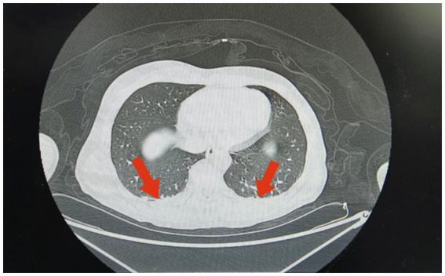
Imaging findings in Case 1: Chest CT shows a small area of inflammation or exudation in the left lung. Figure 2 from Shan et al. (2025), Frontiers in Medicine · PMC12440726 (Reference Case) (CC BY 4.0)
The Windpipe That Ran an Oil Refinery
Standard fire-death teaching loves one clean shortcut: high COHb proves the person breathed during the fire; low COHb suggests they were dead before the flames started. In 2024, Takei and colleagues (Forensic Toxicology) published an open-air burn case that blew that heuristic clean out of the pasture. A man in his eighties (178 cm, 56 kg) was found dead in an open field with third- and fourth-degree burns beside a plastic kerosene jug. His lungs were congested (522 g left, 585 g right) with sparse airway soot and mucosal burns, yet his COHb sat suspiciously low: 10.3 percent in left-heart blood, 8.9 percent in right-heart blood, and 8.5 percent in femoral blood.
Had investigators trusted the low carbon monoxide alone, they might have chased a staged postmortem burning. Instead, before slitting the airway open to room air, they syringe-punctured the intact trachea for headspace solid-phase microextraction GC-MS. The result was pure physical poetry: his windpipe had functioned as a miniature petroleum fractional distillation column. As flash-vaporized kerosene cooled down the tracheal gradient, heavy alkanes (C15–C17) condensed out of vapor and rained into his tracheal mucus (which captured C11–C17), medium-light alkanes (C9–C14) stayed gaseous in the lumen, and C10–C13 crossed his alveoli straight into femoral blood—confirming, alongside left-greater-than-right cardiac COHb, that he was alive and inhaling when the flash fire struck. In the clinic, the same physics warn that open-air accelerant burns can swell a glottis shut long before COHb climbs.
RED FLAGS · DISTRUST THE CLEAN AIR
When Your Senses Are Actively Working Against You
A sudden rotten-egg odor that vanishes abruptly near acid cleaners, sulfur products, manure pits, or enclosed spaces—olfactory paralysis means H₂S has just reached lethal concentration.
Unexplained blackened silver rings, necklaces, or coins on an unresponsive person, or chemical bottles sitting inside a closed room or car.
Pinpoint pupils, heavy secretions, and a petroleum or solvent smell on breath or vomit—treat both the patient and later the sealed body bag as active off-gassing hazards.
Open-air flash burns near kerosene or fuel jugs with deceptively low COHb (<11%) and minimal soot—mucosal thermal airway swelling can still close the trachea fast.
✂ FIRST 60 SECONDS · TOXIC VAPOR & RESCUER TRAP
STOP AT THE THRESHOLD: If someone is down near chemical bottles, tarnished silver jewelry, or a vanished rotten-egg smell, do NOT enter without SCBA and a calibrated multi-gas monitor.
CALL HAZMAT & STAY UPWIND: Move bystanders upwind and uphill (H₂S pools low), flag suspected chemical exposure to 911 immediately, and never attempt mouth-to-mouth on a suspected cyanide, H₂S, or organophosphate victim.
DECONTAMINATE & WEAR PPE: For organophosphate or petroleum-solvent exposure, strip contaminated clothing outdoors, double-bag it, wash skin thoroughly, and require chemical-resistant barriers plus PAPR/downdraft ventilation in the morgue.
PROTECT ACCELERANT AIRWAYS EARLY: Never pour kerosene onto fires; in open-air fuel flashovers, treat mucosal airway burns for early intubation regardless of a reassuringly low COHb reading.
How septic shock mimicked death closely enough to trigger a live burial, how Germany mixed up silicone dolls and real corpses in both directions, and how bruises, neck plaques, and halved platelets scream before brain clots kill.
Vita Minima—and Inventory #267: Dummy
Extreme septic shock produces a state forensic physicians call vita minima—minimal life—so pale, cold, and motionless that radial pulses vanish and chest movement barely registers to panicked eyes. In a 2026 Forensic Science, Medicine, and Pathology report, Halasi and colleagues documented a chronically abused 32-year-old woman (158 cm, healed 9th–10th left rib fractures) immobilized by an untreated 10 mm perforated duodenal/small-intestinal ulcer pouring acid and bacteria into diffuse purulent peritonitis. Assuming she had died in bed, her panicking partner carried her to a shed and buried her in shallow sand. She was still breathing: polarization microscopy lit up birefringent sand grains actively inhaled deep into her lower airways and alveoli alongside acute pulmonary emphysema, classifying the live burial as homicide.
Even trained eyes fail when context hijacks touch. In a 2025 Forensic Science, Medicine, and Pathology report, Plenzig and colleagues recorded Germany's surreal two-way corpse-versus-doll blunders. In Halle, an emergency physician eyeballed a mud-caked figure in weeds without undressing or palpating it and signed an official death certificate for a silicone sex doll. In Frankfurt, eviction movers took a building superintendent's offhand assurance that a figure hanging from a radiator in a freezing room—whose dry winter air had desiccated facial skin into waxy, odorless parchment—was the tenant's 'lifelike doll.' They tagged the dead man 'dummy — Inventory #267,' warehoused him, and slated him for auction until spring putrefaction exposed the human corpse two months later.
Three Billboards Painted Directly on the Skin
Internal organ meltdowns frequently announce themselves on the epidermis long before arrest—if anyone knows the dialect. In necrotizing pancreatitis, corrosive retroperitoneal blood and enzymes track downward along psoas and iliacus fascia beneath the inguinal ligament, blooming on the upper anterior thigh as Fox's sign. Prangenberg, Doberentz, and Madea (2021, FSMP) studied three fatal pancreatic cases—including a 74/75-year-old cancer patient whose widow accused nurses of elder abuse and a 46-year-old who refused hospital admission after vomiting blood. Dermal anti-pancreatic-lipase immunohistochemistry glowed intensely positive across all three (trypsin negative), proving endogenous fat digestion and exonerating caregivers.
Metabolism writes just as loudly at both ends of the weight scale. Byard and Gilbert (2025, FSMP) reported a socially isolated 19-year-old student (175 cm, 124 kg, BMI 40.5, undiagnosed diabetes) who rode out weeks of weakness, cramps, and vomiting at home—while dark velvety acanthosis nigricans plaques across his neck, armpits, waist, and groin screamed extreme IGF-1-driven hyperinsulinemia before fulminant DKA pushed his vitreous glucose to 62.9 mmol/L (~1,133 mg/dL) and beta-hydroxybutyrate to 13.54 mmol/L. At the opposite pole, Yamada and colleagues (2026, FSMP) documented a university nutrition student in her 20s with anorexia nervosa (147 cm, 25.4 kg, BMI 11.8, 16 °C room) wearing pellagra's scaly C3–C4 Casal's necklace—UV-repair failure from niacin/tryptophan NAD+ exhaustion—alongside a starving 136 g gelatinous heart (spared 1,297 g brain) and hypothermic Wischnewski spots, where hasty carbohydrates without prior nicotinamide and thiamine trigger fatal refeeding arrhythmias.
The False-Recovery Brain Clots and the One-Inch Brainstem Cavity
Intracranial catastrophes love two decoys: looking like assault or striking right after you feel better. A 60-year-old Dubai man with patterned forehead scrapes beside a metal balcony frame turned out to have died naturally from a ruptured silent left parietal AVM (Zain Elabedin et al., 2025), while a 61-year-old man who endured a month of unimaged intermittent headaches arrested from a curable 0.8 × 1 cm fourth-ventricle choroid plexus papilloma ball-valving his CSF drain (Zaara et al., 2021). Worse, Takasu and colleagues (2022, FSMP) described an unvaccinated 66-year-old woman whose COVID-19 fever broke three days before sudden death—rapid antigen negative, RT-qPCR Ct 38.9, zero pneumonia—killed by viral endotheliitis packing her superior sagittal and transverse sinuses with clots (CVST).
In a 2023 International Journal of Legal Medicine report, Alunni and colleagues tracked an even sharper clinical miss: 19 days after a ChAdOx1 nCoV-19 (Vaxzevria) dose, a 70-year-old man hit the ER with lumbar and abdominal pain, CT-enlarged adrenals, and platelets cut nearly in half (154,000 down to 80,000/mm³). No D-dimer was ordered; he went home on paracetamol 3 g/day and died on Day 25 from anti-PF4-driven VITT causing sagittal-sinus CVST and 6 × 3 cm bilateral hemorrhagic adrenal necrosis. And in Haynes et al. (2018, FSMP), a 47-year-old alcoholic whose brain had miraculously remyelinated a 25 mm central pontine myelinolysis cavity walked out of alcohol-withdrawal care AMA—only to die 72 hours later of paradoxical-undressing woodland hypothermia, proving damaged thermoregulation kills faster than old scars.
RED FLAGS · READ THE SKIN, LABS & TIMELINE
Four Urgent Alarms Disguised as Minor Detours
A board-hard abdomen signals perforated-ulcer peritonitis requiring immediate surgery—and nobody should ever certify death or dismiss a 'mannequin' without bright light, full exposure, palpation, and ECG/sure postmortem signs.
Upper-thigh (Fox's) or flank bruising with abdominal pain demands ICU pancreatitis admission; velvety neck folds (acanthosis nigricans) plus vomiting means DKA until fingerstick glucose and ketones prove otherwise.
A scaly neck collar (Casal's necklace) or BMI <13 mandates inpatient stabilization with nicotinamide and IV thiamine BEFORE carbohydrates; new positional headaches past age 50 demand brain CT/MRI.
Dizziness or headache after a viral fever breaks warrants D-dimer and CTV/MRV for CVST—and a ~50% platelet drop with back pain or big adrenals 4–30 days post-adenoviral vaccine is VITT/adrenal-vein thrombosis until proven otherwise.
PALPATE RIGID BELLIES & NEVER ASSUME DEATH: Call EMS immediately for a board-hard abdomen; never stop resuscitation or declare death without ECG flatline or sure signs (livor, rigor, putrefaction), and physically inspect every apparent corpse or 'mannequin.'
DECODE THE SKIN IMMEDIATELY: Groin/flank bruise + pain = ICU IV Ringer's lactate + lipase; dark velvety neck + vomiting = STAT fingerstick glucose & BHB; BMI <13 / Casal's necklace = nicotinamide + IV thiamine BEFORE any carbs + room >=22 °C.
VITT / HIT TRAP: IVIG + NON-HEPARIN + STEROIDS: For a 30–50% platelet drop + back pain/headache 4–30 days post-adenoviral vaccine, order STAT D-dimer, anti-PF4 ELISA & CTV; avoid heparin/platelets and give IVIG (1 g/kg × 2 d), argatroban/fondaparinux, and IV hydrocortisone 100 mg.
IMAGE NEW >50 HEADACHES & BLOCK UNSAFE AMA: Order head CT/MRI/CTV for new positional >50 headaches or post-viral dizziness after fever resolves, and enforce capacity checks plus benzodiazepine/warm-shelter care during active alcohol withdrawal.
CHAPTER 10 · FILE № 056 · Ep 2231
Thirteen Million Needles That Outlived the Grave
Why an exhumed lung still held 13 million indestructible asbestos fibers per gram after 357 days underground—and why your household vacuum turns old basement tile into an airborne minefield.
What Survives 357 Days Underground
Human soft tissue is remarkably poor at keeping secrets underground. Give autolysis and anaerobic gut bacteria 357 days, and delicate lung architecture turns into liquefied ruin, taking fragile proteins and routine histological clues with it. Silicate minerals, however, could not care less about grave rot. In a 2025 Forensic Science, Medicine, and Pathology report, Giuseppe Davide Albano and colleagues documented the judicial exhumation of an 84-year-old man who had spent more than 30 years working in mid-20th-century shipyards with daily ambient asbestos exposure—an era when insulation, steam pipes, and fireproofed bulkheads shed mineral dust like background weather.
Before opening the body bag, the team ran a 128-slice postmortem CT scan, which cut straight through soft-tissue decay to reveal bulky, partially calcified pleural thickenings anchored especially along the diaphragm. Because dense scar tissue had cemented the lungs to both chest wall and diaphragm, pathologists used Ghon’s en bloc technique to remove the thoracic organs together, then fixed the block in 10% buffered formalin for 43 days. Under H&E and trichrome stains, the pleura showed barren acellular hyaline collagen laced with calcium (one discrete plaque measured 1.5 mm thick), while deeper lung tissue met College of American Pathologists Grade 3 interstitial fibrosis—scarred walls bridging alveoli between adjacent bronchioles.
Why does rock dust build scar walls inside a living chest? Alveolar macrophages—the lung’s microscopic garbage disposals—try to swallow needle-like amphibole fibers that are physically too long to engulf and chemically indestructible. In a grim loop called frustrated phagocytosis, the dying macrophage spills lysosomal enzymes while iron on the fibers catalyzes hydroxyl radicals, summoning collagen-laying fibroblasts for decades. Yet the real jaw-dropper came after chemical digestion and scanning electron microscopy with energy-dispersive X-ray spectroscopy at Lombardy’s regional EPA: 13 million commercial amphibole asbestos fibers longer than 1 micrometer per gram of dry lung tissue—13,000 needles packed into every sand-grain-sized milligram.
Separating the Barnacles From What Sank the Ship
Thirteen million fibers per gram (95% confidence interval: 8.5–18 million) looks like an open-and-shut verdict—until forensic discipline intervenes. The lab’s detection limit was 320,000 fibers per gram, making his signal 40.6 times louder than the microscope’s noise floor (26.6 times at the 8.5 million lower bound). That 40.6 ratio measures machine sensitivity, never a 40-fold risk multiplier. Contrast Richard Doll’s 1955 cohort of 113 Rochdale asbestos-textile workers: 11 observed lung-cancer deaths against 0.8 expected yields an epidemiological risk ratio of 13.75. One number grades an electron microscope; the other counts excess factory deaths.
Equally disciplined was ruling out malignant mesothelioma. An immunohistochemistry panel (BAP1, calretinin, cytokeratins 5/6, WT1, D2-40, HBME-1) came back entirely negative—about as trustworthy after 357 days of decay as reading rain-dissolved ink. Rather than trusting degraded stains alone, pathologists converged four lines: no tumor mass on CT, no gross neoplastic growth at autopsy, no malignant cells on histology, and negative IHC.
Then came the forensic twist. Despite 30 years of shipyard dust, calcified plaques, Grade 3 fibrosis (a structural grade, not a percentage of lost oxygen capacity), and 13 million amphibole fibers per gram, the authors explicitly excluded asbestos as his cause of death. His chart recorded hyperthyroidism, atherosclerosis, hypertensive heart disease, decompensated heart failure, and two recent hospitalizations for pneumonia, vomiting, and diarrhea—plus a CT a month before death confirming fibrosis—yet zero documented breathlessness or clinical respiratory failure. Exposure was proven. Disease was proven. His failing heart still sank the ship.
REFERENCE EXHIBIT · CT / IMAGING SCAN · CC BY 4.0
ILLUSTRATIVE REFERENCE EXHIBIT — Verified CC BY diagnostic figure from a separate peer-reviewed publication showing the same mechanism (not the index patient).
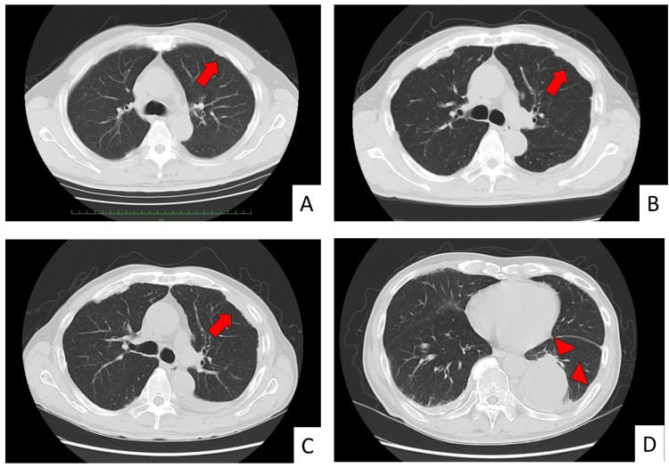
Chest computed tomography.(A) Twelve years prior (year X-12): a small nodule around the left third intercostal space (arrow). (B) Three years prior (year X-3): a pleural plaque between the left third and fourth intercostal spaces (arrow). (C) Year X: pleural thickening can be seen… Figure 1 from Irie et al. (2025), Cureus · PMC12569964 (Reference Case) (CC BY 4.0)
How a Household Vacuum Becomes an Aerosol Cannon
An exhumation answers a judicial question a year too late; for anyone holding a crowbar in an older basement, the real warning window is decades earlier, when everything still feels fine. Feeling great tonight after tearing out mysterious floor tile certifies exactly nothing, because mineral-driven scarring operates on a decades-long silent delay. By the time breathlessness arrives, acellular collagen has already moved in permanently.
EPA residential guidance runs dead opposite to every energetic weekend-renovation instinct. First, your eyes cannot detect asbestos—fibers are invisible. If suspect material is intact and staying undisturbed, leave it alone; asbestos turns lethal when crushed, sawn, or friable. Second, never play amateur lab technician by hacking off a DIY chunk to mail in—snapping the tile is often the exact exposure event you were trying to avoid. Third, retire the broom and the household vacuum. Because asbestos fibers are aerodynamically needle-thin, standard vacuums—and many non-hazmat HEPA units—happily trap heavy plaster chunks while blasting invisible mineral needles out the exhaust port to float through your house for hours. And on commercial job sites, OSHA doesn’t accept a casual N95 tossed on over flying dust: safe work demands wet suppression, local exhaust, regulated zones, and fit-tested respiratory programs—remembering that even a legal Permissible Exposure Limit is a compliance line, not a biological force field.
RED FLAGS · PUT THE CROWBAR DOWN
Four Ways DIY Confidence Turns Into Decades of Scar Tissue
Eyeballing suspect older floor tiles, pipe wrap, or ceiling texture and deciding it “looks clean”—asbestos fibers are invisible to the naked eye.
Cutting or snapping off a piece for DIY mail-in testing, dry-sweeping debris, or running a standard household vacuum that aerosolizes microscopic fibers out its exhaust.
Trusting a casual paper mask or un-fit-tested N95—or trusting “I feel fine tonight”—when occupational dust requires engineering controls and symptoms lag exposure by decades.
Asking a clinician for a destructive postmortem-style SEM fiber count instead of formally logging past job dates, industries, and suspect materials into your medical record today.
✂ FIRST 60 SECONDS · SUSPECT ASBESTOS ENCOUNTER
FREEZE WORK & LEAVE INTACT MATERIAL ALONE: Put down saws, scrapers, and crowbars. Intact, undisturbed suspect tile or insulation does not release fibers—breaking it does.
BAN BROOMS, VACUUMS & DIY SAMPLING: Never snap off a home test chunk, dry-sweep dust, or run a standard household vacuum cleaner over suspect debris.
ISOLATE & CALL ACCREDITED PROS: Keep people and pets out of the area and hire trained, accredited assessors—separating inspection from removal whenever possible to prevent conflicts of interest.
LOG PAST EXPOSURE IN YOUR CHART NOW: If you worked dusty trades or did an older renovation years ago, give your doctor exact dates, roles, and materials so it stays in your medical history before symptoms ever arise.
CHAPTER 11 · FILE № 070 · Ep 2284
The Soft Sari Hammock—and Two Normal Brain Scans That Missed Everything
Why flexible household cloth tightens silently even when a child's feet nearly touch the floor—why normal blood pressure and two clear head CTs cannot clear hypoxic brain injury, and why slashing a suspended child down risks their spine.
Softness Is Not Safety—and Feet Near the Floor Don't Save You
Human hazard radar is tuned for table saws, exposed wires, and broken glass—not draped household cloth. That comfort bias misses the exact physical property that makes flexible fabric dangerous: softness lets it conform tightly around a neck. In a 2011 Journal of Pediatric Neurosciences report, Kumar and colleagues documented a 10-year-old girl playing at home in a homemade hammock fashioned from a sari suspended from a rafter. The cloth twisted around her neck. Her grandmother found her after an unknown period of time, with her feet almost touching the floor.
That detail kills every "just hang it lower" workaround on sight. When a child slumps or spins, the weight of the head alone collapses superficial, low-pressure jugular veins while deep, high-pressure carotid arteries keep pumping blood into the skull—highway on-ramps wide open with every exit ramp blocked—before further tightening crushes both carotids and the trachea. Worse, compression is silent: she could not call for help. She reached the hospital within two hours—strictly a transport window, never the unknown duration of entanglement and never a safe countdown clock. During transport she suffered a generalized tonic-clonic seizure. On arrival she was unconscious at Glasgow Coma Scale 8/15 (Teasdale and Jennett's 1974 eye/verbal/motor observational sum, never "53% brain function"), breathing frantically at 44 breaths/min with room-air SpO₂ at 47%, a left neck ligature mark, dilated non-reactive pupils, hypertonia, brisk reflexes, and opisthotonus—rigid back-arching as unchecked brainstem reflexes fired.
Empty Delivery Trucks and Two Spotless Engine-Block Scans
Even in the resuscitation bay, familiar vitals laid false-reassurance traps. Her blood pressure held at 100/58 mmHg with capillary refill under 3 seconds (no heart rate was reported)—sympathetic adrenaline clamping vessels tight to keep pumping empty delivery trucks devoid of oxygen. Admission blood glucose spiked to 200 mg/dL (≈11.1 mmol/L), a classic epinephrine-and-cortisol stress surge that coexists honestly with a later PICU summary calling her glucose "normal," alongside hemoglobin 14.2 g/dL, WBC 14,800/mm³, platelets 4.5 lakhs/mm³ (450,000/µL, or 450 × 10⁹/L), and an unquantified "normal" arterial blood gas whose timing relative to oxygen therapy went unreported.
Most deceptive of all were the scans: her arrival head-and-neck CT was normal, and a Day 2 repeat CT was normal too (no MRI or vascular imaging was performed; a later EEG revealed abnormal spikes). An early CT inspects the engine block for skull fractures or massive bleeds; in the first 24 to 48 hours it cannot see dying sodium-potassium pumps or fried neural software. On Day 3 she developed ventilator-associated pneumonia (Staphylococcus aureus and Klebsiella cultured from the endotracheal tube—a life-support complication, not directly caused by the hammock). Weaned off the ventilator on Day 5, she went home Day 21 recognizing her mother and walking only with support, with zero speech. Six weeks post-discharge she began speaking and tiptoe walking—a textbook upper-motor-neuron hypertonia sign marking altered survival, not a documented full return to baseline.
Don't Slash and Drop—and Delete the Loop From the Room
Retrospective statistics can mislead just as easily as clean scans. A separate 1997–2007 Canadian study (Davies, Lang, and Watts) selected 41 of 109 pediatric injury charts meeting hanging or strangulation criteria (37.6%)—an administrative filing-cabinet fraction, never a hammock incidence or survival rate, and never a reason to hesitate for one second. When you discover an entangled child, the entanglement itself is the emergency—never wait for cries or a neck mark.
First-minute physics follows December 2023 JOIN first-aid guidance and 2025 Resuscitation Council UK pediatric life-support rules: call emergency dispatch first, then support the child's body weight while safely releasing the constriction—never perform a movie-style slash that drops a suspended child headfirst onto the floor and adds a cervical spine fracture to hypoxia. Once flat, check responsiveness and normal breathing (gasping at 44/min is abnormal) and start dispatcher-guided pediatric CPR immediately—no fumbling for a pulse, no scene GCS math, no forcing water, no blind mouth sweeps, and no neck-bending tests. Even if the child wakes and breathes, stay for EMS and hospital observation (echoed by July 2026 pediatric non-fatal strangulation guidelines), because airway edema, venous congestion, and seizures evolve after release. Structurally (HSE), never "fix," re-knot, or lower a homemade fabric hammock—remove suspended cloth loops and cords from play and sleep spaces entirely, skip reenactments, and share the zero-tolerance rule with every caregiver.
RED FLAGS · SILENT COMPRESSION, DELAYED DAMAGE
Strangulation & Play-Loop Warnings
Discovering a child entangled in fabric, a homemade hammock, or household cords is itself an immediate emergency—never wait for coughing, crying, or a visible neck mark.
Never treat normal blood pressure, temporary waking, or an early normal head CT scan as clearance after neck compression—cellular hypoxic injury, seizures, and airway swelling unfold for hours.
Never slash a suspended child loose without supporting their body weight first: an uncontrolled drop risks catastrophic cervical spine trauma on top of oxygen starvation.
Do not try to 'supervise' or lower homemade suspended fabric loops—her feet nearly touched the floor; remove flexible neck-height loops from play and sleep areas completely.
✂ FIRST 60 SECONDS · CHILD NECK ENTANGLEMENT
CALL EMERGENCY DISPATCH FIRST: Put 911 / 999 / local emergency services on speaker immediately the moment entanglement is discovered—never wait to see if the child frees themselves.
SUPPORT WEIGHT BEFORE RELEASING PRESSURE: Hold and support the child's body weight while safely freeing the twisted cloth or cord—never slash them loose into an uncontrolled fall onto head or neck.
CHECK NORMAL BREATHING & START CPR IF NEEDED: Once flat, assess responsiveness and normal breathing (rapid gasping is abnormal); start dispatcher-guided pediatric CPR immediately—skip pulse hunts, water, blind finger sweeps, and neck-bending.
WAIT FOR EMS & DELETE THE HAZARD PERMANENTLY: Even if awake and breathing, complete urgent hospital assessment (normal early CTs don't exclude hypoxic injury); permanently remove all homemade fabric loops and cords from play spaces.
CHAPTER 12 · FILE № 072 · Ep 2288
The Toy That Stole Twenty-Seven Volumes From a Toddler’s Gut
Why superabsorbent polymer water beads sail through stomach acid intact, vanish like ghosts on plain abdominal X-rays, and turn passing gas into a cruel mechanical decoy.
A Consumer Trojan Horse Built for Osmosis
Most childhood safety instincts were trained on static geometry: swallow a plastic brick, and it stays the same plastic brick all the way to the diaper. Superabsorbent polymer water beads—originally invented to trap agricultural moisture and now sold by the thousands for sensory play, floral centerpieces, and cooling packs—mock that assumption. Dry in a tub, they look like harmless sprinkles that bounce under baseboards and vanish into carpet pile. Inside a warm, fluid-drenched gastrointestinal tract, their tightly coiled cross-linked polymer chains laugh off stomach acid and digestive enzymes, drinking surrounding saliva, bile, and intestinal juices by osmosis until they inflate into firm, slippery spheres.
Human brains are hilariously bad at cubic geometry. Take an illustrative ideal sphere (purely a teaching model, not a claim about any child’s exact dry bead size or obstruction threshold): if its diameter triples from 1 cm to 3 cm, your ruler whispers 'three times bigger.' Volume follows the cube of the diameter—3³ equals a 27-fold jump in physical space. In a 2026 Cureus case report, Shahid and colleagues described a previously healthy 21-month-old boy whose parents remembered him playing near water beads—nobody witnessed a swallow, counted missing beads, or logged a brand or minute. Over two days his vomiting turned from clear to green-yellow bilious, signaling that bile injected below the stomach in the duodenum had hit a mechanical dam downstream and was reversing straight back up.
Passing Gas, Clean Metals, and Five Black Moons on Ultrasound
Two classic clinical decoys nearly disguise an expanding roadblock as ordinary gastroenteritis. First, the toddler had passed no stool for 48 hours yet was still passing gas—because intestinal tubing below a tight blockage isn’t a vacuum; residual air and colonic bacteria keep puffing out echoes of normal function three feet below a sealed-off disaster. Second, during an overlapping 48-hour stay at a referring hospital, IV fluids and anti-nausea medications failed because chemistry cannot dissolve a polymer cork. When he arrived at the receiving surgical center, he had no fever and held normal room-air oxygen, while his blood panel simply tallied the fallout of vomiting: sodium 130 mmol/L, bicarbonate 17.4 mmol/L, anion gap 15 mmol/L (tentatively flagged as possible dehydration acidosis without a measured blood-gas pH or lactate), potassium 4.0 mmol/L, chloride 97 mmol/L, urea 17 mg/dL, hemoglobin 12.1 g/dL, hematocrit 36.5%, and platelets 349,000/µL.
Then physics pulled its cleanest magic trick. Plain abdominal X-rays glow bright white for radiopaque coins and button batteries; expanded water beads are mostly water, making them radiolucent ghosts. The boy’s radiograph wasn’t normal—it screamed dilated small-bowel loops stacked with horizontal air-fluid levels—yet showed zero radiopaque foreign bodies. Switching from radiation to sound cracked the case: abdominal ultrasound revealed distended fluid-filled loops packed with roughly five rounded anechoic (pitch-black, echo-free) spheres about 3 centimeters across. Urgent exploratory laparotomy and enterotomy extracted five swollen beads wedging his narrow distal ileum at multiple levels. Miraculously, no perforation or bowel resection was needed; he resumed eating by postoperative day 4 and was thriving at two months—a best-case surgical rescue, never a guarantee for the next child.
EXHIBIT A · RETRIEVED SWOLLEN BEADS · CC BY 4.0
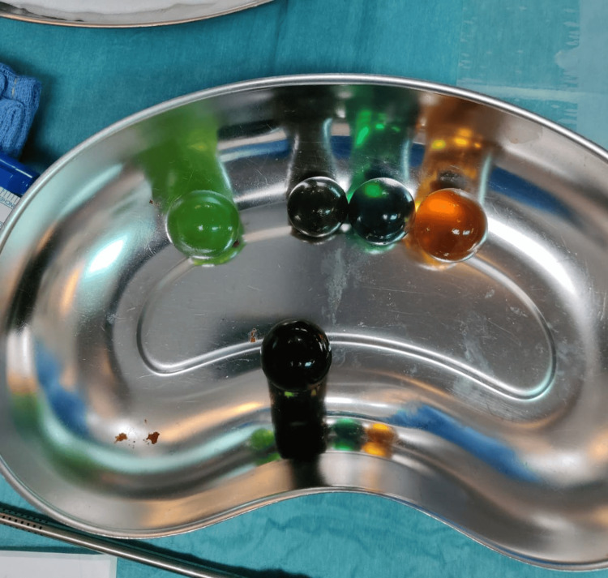
Superabsorbent polymer water beads retrieved surgically after expanding inside a toddler’s small intestine—completely invisible on standard X-ray because they are 99% water. Figure 4 from Shahid et al. (2026), Cureus · PMC13471977 (CC BY 4.0)
EXHIBIT B · ABDOMINAL ULTRASOUND · CC BY 4.0
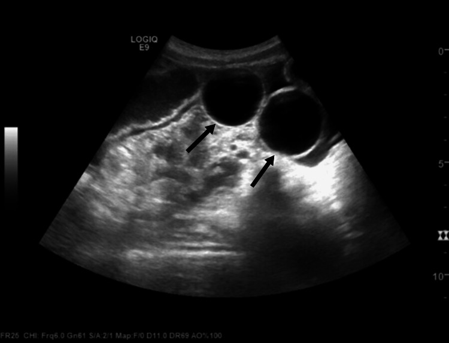
Abdominal ultrasound catching what the plain X-ray missed: two crisp, fluid-filled spherical water beads (black arrow) jamming the intestinal lumen shut. Figure 2 from Shahid et al. (2026), Cureus · PMC13471977 (CC BY 4.0)
Why Older-Kid Statistics and New Toy Rules Don’t Save Toddlers
Comfort-seekers love citing Mehmetoglu’s 2018 retrospective review of 21 children who swallowed water beads, where just 3 (14.3%) had mild symptoms and zero needed surgery. Look at the denominator before relaxing: those children averaged 7.2 years old (ranging from 2 to 15), carrying vastly wider intestines than a 21-month-old—and only three families even spotted beads in stool. Safe passage in a grade-schooler offers zero license to run a 48-hour home wait on a toddler, nor does spotting one bead in a diaper clear the four still expanding upstream.
Do not assume federal paperwork fixed the craft closet, either. The CPSC safety standard effective March 12, 2026 sets expansion, acrylamide-toxicity, testing, and labeling limits only for toys manufactured after that date—leaving older household and school stock untouched and excluding non-toy water beads marketed for vases, gardening, and cooling packs. That is why the CPSC recommends removing water beads entirely from homes, daycares, camps, and schools—and why One Medicine veterinary cases like Barrand (2018) show family dogs fall into the exact same osmotic trap.
RED FLAGS · SILENT EXPANSION IN A NARROW GUT
Four Myths That Buy a Swollen Bead Time to Seal the Bowel
Unwitnessed access near spilled or scattered water beads is itself a reason for prompt medical evaluation—never wait for proof of swallowing or wait to spot a bead in stool.
Green or yellow-green (bilious) vomiting, persistent vomiting, poor intake, belly swelling/tenderness, or unusual sleepiness signal an urgent mechanical obstruction.
Passing gas, lacking a fever, or hearing 'no bead showed on the X-ray' never rule out water-bead impaction—expanded polymers are radiolucent and downstream gas keeps escaping.
Pre-March 2026 toy bins plus non-toy gardening, floral, and cooling-pack beads remain completely outside the 2026 CPSC toy standard.
✂ FIRST 60 SECONDS · SUSPECTED WATER-BEAD SWALLOW
CHOKING OR COLLAPSE? CALL 911 FIRST: If the child is choking, struggling to breathe, collapsed, or hard to wake, dial 911 immediately—never let a poison-center call delay emergency airway dispatch.
EVALUATE NOW & CALL POISON HELP: Even if the child looks completely fine after suspected access, seek prompt medical assessment right away and call Poison Help (1-800-222-1222 US / NHS 111 UK) with age, timing, and product details.
ZERO VOMITING, LAXATIVES, OR FLUSHING: Never induce vomiting (risks esophageal impaction or lethal airway aspiration), never push water flushes, laxatives, or internet 'shrinking' remedies, and ask a clinician before giving anything by mouth.
PURGE EVERY BEAD FROM KIDS’ SPACES: Grab the packaging or a quick photo only if it doesn’t delay leaving; long term, follow CPSC guidance and remove toy, floral, and garden water beads entirely from homes, daycares, and schools.
CHAPTER 13 · FILE № 086 · Ep 2313
The 90%-Quartz Countertop Trap
Why dry-cutting engineered stone turns silent lungs into rigid scar tissue years before a single cough arrives—and why an un-fit-tested respirator mask is little more than silicone theater.
The Chest Bump That Found the Termites
Humans adore the myth that our bodies are reliable smoke detectors—that anything busily wrecking a vital organ will have the common decency to hurt, wheeze, or make us cough. Modern engineered stone laughs at that assumption. Marble carries less than 10% silica and natural granite hovers around 40–50%, whereas manufactured "quartz" countertops compress crushed quartz with resins and pigments into slabs exceeding 90% crystalline silica by weight. Spin a high-speed dry saw into that slab, and you manufacture an invisible aerodynamic mist engineered to slip past every nose hair and upper-airway defense straight into the lung's deepest air sacs.
In a 2026 Canadian Medical Association Journal (CMAJ) report, Yuen and colleagues described a 47-year-old man who had spent 20 stable years fabricating countertops in a small three-to-five-worker shop—dry-cutting engineered stone predominantly during the final decade. He arrived at the emergency department for a minor blunt bump to his right chest wall. He had zero shortness of breath, zero cough, zero fever, and zero fatigue. Yet the routine trauma X-ray looking for a bruised rib caught subtle lung nodules, like a plumber opening drywall for a leaky faucet and discovering termites had eaten the house frame. A CT scan a month later revealed diffuse bilateral upper-lobe nodules fusing into progressive massive fibrosis (PMF). Bronchoscopy with bronchoalveolar lavage ruled out tuberculosis (though silicosis permanently elevates future mycobacterial risk), confirming silicosis clinically without surgical biopsy.
Here is the cruelest detail in the chart: he had worn a cartridge respirator and diligently swapped dust filters weekly. The shop, however, had zero silica surveillance, zero airborne dust measurements, and zero formal fit testing. Without a verified airtight seal against a real face—and in hot, loud shops where pulling a mask down for five seconds to shout a measurement invites invisible dust straight in—an untested mask is merely optimistic plastic.
Why Leaving the Dust Does Not Stop the Saw
Physicians advised immediate removal from dust exposure, yet over the next three years—without cutting a single stone—his lungs kept deteriorating. Why does silicosis keep chewing through tissue in clean air? Blame alveolar macrophages, the lung's loyal sanitation crew. When a macrophage engulfs bacteria, digestive enzymes dissolve the invader. When it swallows a jagged crystal of respirable silica, the rock kills the cell from the inside out. The dying macrophage bursts, broadcasting frantic inflammatory cytokines—and drops the exact same indestructible silica shard right back onto the floor for the next macrophage to eat. Wave after wave of immune cells march into the Trojan horse while fibroblasts seal the carnage in rigid collagen scar.
His pulmonary math demands crisp translation, because bad percentages distort reality. At diagnosis, forced vital capacity (FVC) was 64% predicted, FEV₁ 69% predicted, diffusing capacity (DLCO) 56% predicted, and his measured FEV₁/FVC ratio was 88%—computed from actual exhaled liters (NOT 69 divided by 64), classic stiff restrictive lungs that empty fast because the tank is small. By 18 months, CT showed worsening fibrosis plus ground-glass opacities suggestive of alveolar proteinosis (an imaging impression without tissue biopsy) alongside positive ANA (1:640 centromere pattern), anti-SSA, and anti-Ro52 antibodies—immune-system panic triggered by silica cell death, explicitly without overt connective tissue disease like lupus or Sjögren's. An antifibrotic trial of nintedanib (150 mg twice daily, started ~1 year post-diagnosis) had to be halted 1.5 years later when liver enzymes jumped (AST 36 U/L, ref 5–34; ALT 153 U/L, ref <50), before cautious lower-dose resumption at Year 3 (100 mg daily, later raised, with no controlled efficacy claim).
REFERENCE EXHIBIT · CT / IMAGING SCAN · CC BY 4.0
ILLUSTRATIVE REFERENCE EXHIBIT — Verified CC BY diagnostic figure from a separate peer-reviewed publication showing the same mechanism (not the index patient).
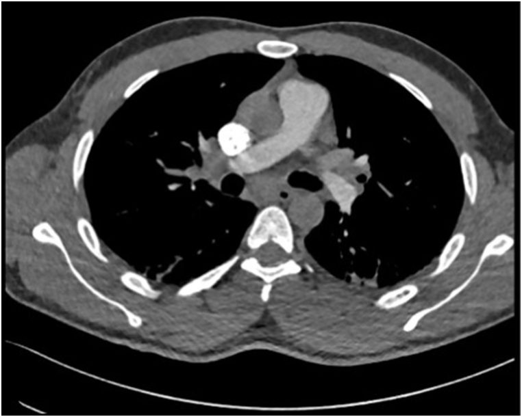
Transversal chest CT scan with pulmonary embolism protocol showing bilateral hilar lymphadenopathy. Fig. 2 from Hofman et al. (2026), Respiratory Medicine Case Reports · PMC13400211 (Reference Case) (CC BY 4.0)
The Sun-Cooked Phone Battery Walk Test
Across three dust-free years, his FVC slid from 64% → 60% → 51% → 52% predicted (Year-3 volume 2.04 L; TLC 61% predicted)—a 12-percentage-point decline in expected performance, not 12% of anatomical lung evaporating. DLCO bounced non-monotonically (56% → 61% → 58%) before sinking to 45% predicted. Then came the optical illusion: on a six-minute walk test, strong legs carried him 580 meters (106% predicted)—yet his pulse oximeter plunged from 98% at rest to 87% mid-walk (an 11-point drop, MRC-1 breathlessness). Like a sun-cooked phone battery showing 100% idle and collapsing the instant you open an app, his reserve had vanished. At report end, he was living, retraining via workers' compensation, and awaiting lung transplant assessment—candidacy review, not a guaranteed transplant or cure.
Historical data require equal discipline. A 2012 Chest cohort by Kramer and colleagues from Israel's lung transplant program (1997–2010; title corrected to generic "Artificial Stone Silicosis" to indict material chemistry, not one brand) logged 10 transplants among 25 referrals (40%)—severe selection bias, not worker-wide risk. Still, OSHA and NIOSH hierarchy-of-controls guidance (not Canadian statute, though silica physics ignores borders) is blunt: respirators are the weakest last resort. Real protection starts with substitution, wet cutting, enclosed tools, exhaust ventilation, HEPA vacuums—and banning brooms and compressed air that re-launch settled killer dust straight into the breathing zone.
RED FLAGS · FEELING WELL IS NOT A SAFETY TEST
When Invisible Stone Dust Demands Action
Dry-cutting, grinding, or polishing engineered quartz (>90% silica) without wet suppression, local exhaust capture, air monitoring, or formal respirator fit testing.
Dry-sweeping fabrication floors or blasting dust off work clothes and machinery with compressed air, which immediately resuspends respirable silica.
New persistent cough, breathlessness, or shrinking stamina on stairs in any current or former stone, masonry, or construction worker—never tell clinicians only a vague job title.
Severe breathlessness, inability to speak in sentences, chest tightness, blue-gray skin/lips, or sudden confusion—call 911/999 immediately rather than waiting on a home pulse oximeter.
✂ FIRST 60 SECONDS · SILICA SHOP & HYPOXIA RESPONSE
BLUE LIPS OR GASPING? CALL 911 / 999: Severe breathlessness, inability to speak normally, chest tightness, blue-gray tint, or sudden confusion demands an ambulance immediately—never self-drive or wait for a finger oximeter.
PUT WATER ON THE BLADE, NOT JUST A MASK: Insist on engineering controls first—wet cutting, enclosed saws, and source ventilation—with professionally selected, medically cleared, fit-tested respirators as backup only.
BAN DRY SWEEPING & COMPRESSED AIR: Never blow silica off clothes or tools with air hoses or dry brooms; clean only with wet methods or HEPA-filtered industrial vacuums.
NAME THE MATERIAL TO YOUR DOCTOR: Don’t just say “construction”—state the exact stone (>90% silica engineered quartz), cutting method, and years exposed so clinicians arrange real surveillance before symptoms appear.
CHAPTER 14 · FILE № 094 · Ep 2603
A Raincoat Against a Mitochondrial Padlock
Why a day-one worker dropped unconscious inside a sludge tank in sixty seconds, why his pulse oximeter later printed a smug 96% while his basal ganglia softened, and why a coworker’s lucky sprint inside is the worst rescue manual on Earth.
Day One, Twenty-Eight Cubic Meters, and an Ordinary Raincoat
Broken bones hand medicine a tidy white line on an X-ray. Invisible gas inside an industrial cylinder leaves only footprints—and audits every shortcut an employer tolerated. On March 2, 2023, at a waste-treatment power plant in Shandong Province, China, documented by Genjiafu and colleagues in Frontiers in Public Health, a 46-year-old worker entered an anaerobic sludge tank on his very first day at the site. Measuring 4 meters high by 3 meters wide (~28 m³, a tall narrow bedroom), the tank held decaying waste where sulfate-reducing bacteria generate hydrogen sulfide (H₂S). About one minute inside with a high-pressure water gun, before primary flushing began, he hit a harsh pungent odor, sudden dizziness and weakness, and collapsed.
The field investigation indicted the system, never the newcomer relying on it: a sludge-clogged pipeline trapped high-concentration H₂S inside, a wall exhaust fan was formally judged too small in airflow volume to matter (a bathroom vent inside a gymnasium), and his only gear was an ordinary raincoat—built for rain droplets, letting microscopic gas pour straight up the collar. Neither workplace H₂S ppm nor blood H₂S levels were measured.
Next came a textbook survivorship-bias trap. A coworker at the entrance wisely stayed out and yelled for help, but another arriving worker plunged in, dragged him out fast, and reported "no health abnormalities." One lucky fluke of gas stratification and timing is NEVER a rescue blueprint: deadlifting unconscious weight spikes breathing demand, forcing deep gasps of the exact poison that dropped casualty one in sixty seconds.
FORENSIC INFOGRAPHIC · OLFACTORY PARALYSIS TRAP
The Hydrogen Sulfide Ladder: Why “No Smell” Means Instant Death
At low concentrations, H₂S reeks of rotten eggs. Above ~100 ppm it paralyzes your olfactory nerve—tricking coworkers into climbing down to rescue someone because “the fumes cleared.”
Ninety-Six Percent Saturated—And Starving at the Loading Dock
At the local hospital he arrived confused, agitated, and convulsing, needing midazolam and propofol (Diprivan) sedation plus IV nutrition without improvement for two full days. Transferred on March 4 to a specialized poisoning department, he woke in the ambulance with complete amnesia after the dizziness—yet admission notes still recorded disturbance of consciousness. Waking up is a milestone, not clearance. Vitals looked deceptively calm (T 37°C, HR 95, RR 18, BP 131/79 mmHg, SpO₂ 96%), with zero notation of supplemental oxygen and zero admission ABG or lactate.
That smug 96% finger-clip hides cellular asphyxiation. Pulse oximeters only check whether red-blood-cell "delivery trucks" carry oxygen; H₂S clamps an iron-binding padlock onto mitochondrial cytochrome c oxidase—the loading dock that turns oxygen into ATP. Loaded trucks cruise past starving brain tissue. March 6 brain MRI showed unilateral patchy "softening foci" in his ATP-hungry left basal ganglia (usually bilateral in severe H₂S) plus left frontal abnormalities, while chest CT showed right lower-lobe exudation and localized pleural thickening.
Primary tables exposed data friction too: prose claimed an "early increase" in total white blood cells, whereas Table 1 printed a normal Day 1 WBC of 6.53 (ref 3.50–9.50), spiking only Day 3 to 11.57—while neutrophils surged early (91.6%, 83.1%) alongside elevated BUN (9.60, 10.0 vs. ≤7.80). Day 7 ALT hit 71 IU/L (1.42× the 50 ceiling—stress leakage, not "42% liver destruction"). Discharged March 10, his March 26 scans shrank but lesions remained; a later phone check (timing unstated) noted good recovery in a new post without neurocognitive or lung-function tests. In a 2013 Sri Lankan refinery H₂S series, 7 survivors plus 2 dead on admission gave 7/9 (77.8%) among hospital-transported patients—proving why survivor-only "7/7 = 100%" lies.
EXHIBIT A · MRI SCAN · CC BY 4.0
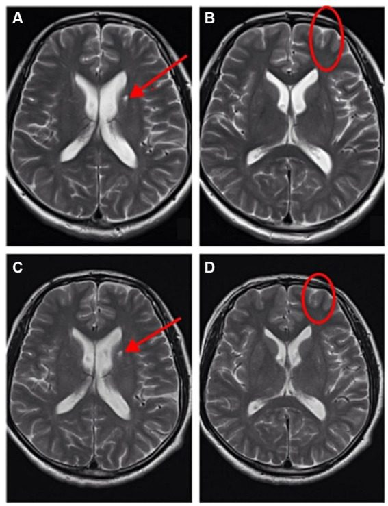
The patient underwent Brain MRI on 2023/3/6 (A,B) and 2023/3/26 (C,D) . (A) There were abnormal signals in the left basal ganglia, considering softening foci. (B) There were a few abnormal signals in the left frontal lobe, considering non-specific signals or degenerative… Figure 2 from Genjiafu et al. (2023), Frontiers in Public Health · PMC10641707 (CC BY 4.0)
Why Your Nose Lies—And Why Rescue Belongs Outside
H₂S’s deadliest trick is olfactory fatigue. Low levels reek of rotten eggs; lethal spikes chemically paralyze olfactory nerves so the smell abruptly vanishes. Sniffing a hatch mistakes nerve shutdown for fresh air, and wet bandanas or cotton shirts stop as much gas as a raincoat.
OSHA and UK HSE draw one uncompromising line: the rescue decision belongs outside. Never enter a suspected toxic confined space after a collapse; hold others back, dial dispatch from clean air, name the tank type, and state chemical uncertainty rather than guessing. Nor is calling 911 an employer rescue plan—brain hypoxia starts in four to six minutes, faster than fire trucks arrive. Follow the hierarchy of controls: eliminate human entry with external cleaning first, or enforce continuous multi-gas monitoring and pre-rigged non-entry winches—and permanently flag H₂S unconsciousness in every survivor’s chart for delayed memory or balance deficits.
RED FLAGS · DO NOT CROSS THE HATCH
Confined-Space & Hydrogen Sulfide Kill Switches
Never enter a sludge tank, pit, manhole, or sewer to rescue a collapsed person—one coworker’s lucky sprint is survivorship bias, not a reproducible protocol.
Never trust your nose: disappearing rotten-egg odor at high H₂S levels means olfactory-nerve paralysis, not clearing air—and raincoats, shirts, or breath-holding stop zero gas.
Do not mistake a 96% SpO₂ reading or waking up in an ambulance for full recovery; H₂S blocks mitochondrial oxygen use and can leave lasting brain and lung injury.
Employers cannot use 'call 911' as a rescue plan—design work to avoid entry first, or enforce continuous gas monitoring and pre-rigged non-entry mechanical retrieval.
✂ FIRST 60 SECONDS · CONFINED-SPACE COLLAPSE
STOP & KEEP EVERYONE OUT: Do NOT enter the tank, pit, or sewer—not even holding your breath or wrapping a shirt over your nose. Physically hold panicked bystanders back from the hatch.
CALL 911 FROM CLEAN AIR: Move well clear of the opening before dialing. Report a confined-space collapse, exact site access, tank type, work underway, and number of people visible from safety.
NAME UNCERTAINTY, NEVER GUESS THE GAS: State 'unknown hazardous atmosphere' rather than guessing a chemical—and never lean over the rim to sniff whether the air has cleared.
ENGINEER ENTRY OUT OF THE JOB: Follow OSHA/HSE hierarchy of controls: clean tanks externally whenever possible, or mandate calibrated continuous gas monitors and pre-rigged non-entry winches before anyone steps inside.
CHAPTER 15 · FILE № 095 · Ep 2604
The Bellows Under the Anvil
Why heavy vehicles and stone slabs kill people whose heart, lungs, and aorta emerge unbruised on the autopsy table—and why waiting to see Hollywood blood or smashed bones wastes the only minutes left to breathe.
Intact Hardware, Cut Power Supply
Cinema trained two generations to grade injury by theatrical gore: if nobody is flattened or pouring blood, bystanders instinctively assume they have breathing room to fetch a crowbar. Physics runs a far quieter ledger. Your lungs have zero muscles of their own—they are passive sacks that inflate only because Boyle’s law rewards a bigger box. Every breath requires your diaphragm pulling downward while intercostal muscles swing the ribcage up and out, dropping chest pressure below room air. Drop an anvil onto fireplace bellows and the leather bladder stays spotless while airflow drops to zero.
In a 2024 Trauma Case Reports series titled "Accidental compression of the thoracic wall. Mechanical asphyxia rather than trauma is the main culprit," Voucharas and colleagues documented three fatal entrapments involving Caucasian men aged 22, 40, and 50 collectively, pinned respectively by a truck trailer, an overturned vehicle, and a heavy stone slab. Strict forensic honesty demands leaving the blanks blank: the report never pairs individual ages to specific objects, never records load weights, compression durations, blood gases, SpO₂, or toxicology, and never mentions a slipped jack. Inventing a neat story of carelessness just to feel safer is fiction, not pathology.
One specific autopsy detail kills the Hollywood myth outright. The victim crushed by the overturned vehicle did have structural injuries—a broken clavicle, ipsilateral rib fractures, and a hemothorax—yet he had ZERO contusions of his heart, lungs, or abdominal organs and ZERO lacerations of the aorta or vena cava. Bones broke, yes, yet those fractures did not explain rapid death; locking the ribcage shut did. Across the three cases collectively (without fabricating a composite victim wearing every sign at once), examiners noted edema, cyanosis, facial petechiae, subconjunctival eye hemorrhages, upper-trunk ecchymosis and parchment-like impressions, and subpleural petechiae.
The Plugged Drain in Your Neck—And the Junkyard Math Trap
Those pinpoint facial dots and bloodshot eye whites record a brutal plumbing reversal. When thousands of pounds clamp the chest, high-pressure arteries keep pumping blood upward into the head while low-pressure venous return slams into a sky-high thoracic pressure wall. Venous blood backs up out of the superior vena cava into the innominate and jugular veins—a kitchen faucet blasting full bore into a plugged sink. Trapped blood stagnates in capillaries (turning skin cyanotic blue) until delicate facial and ocular vessels pop into petechiae. (That is a general physiological model explaining postmortem signs, not live pressure gauges strapped to these three men—so it never hands you a "safe" load weight or survival countdown.)
Forensic counts also bait an insidious statistical illusion called the denominator trap. In Conroy’s (2008) abstract of 37 selected San Diego vehicle-asphyxia deaths (1995–2004), 48.6% involved compression alone and 16.2% combined compression with body position—64.8% carrying a compression component (the four categories sum to 99.9% purely from one-decimal rounding). Arslan’s (2018) abstract tallied 53 selected fatal crush cases across farms, workplaces, traffic, and homes. Reading 3 deaths out of 3 published cases in Voucharas et al. as "100% fatality" is like counting smashed red sedans in a junkyard and declaring every red car doomed: morgue denominators never count the highway of near-misses and survivors.
Why No Human Reflex Outruns Gravity
In a real entrapment, waiting to spot blue lips or eye petechiae means waiting for autopsy signs on a living person. Being pinned by a vehicle, trailer, or slab IS the emergency—call 911/999 immediately, give heavy-rescue access directions, and practice "accurate incompleteness" by telling responders what you can verify from safety instead of guessing what lies underneath. Adrenaline breeds cognitive tunneling that blinds helpers to the second half of the physics: an unstable load that shifted once is primed to shift again and turn one victim into two. Leave lifting, cribbing, and pneumatic airbags to rescue crews—no DIY jacking. Only if the casualty is safely reachable outside the crush zone do you follow dispatch: per St. John Ambulance guidance, irregular agonal gasps are NOT normal breathing (they signal cardiac arrest) and trigger CPR and an AED, with zero amateur "futility clock" telling you to quit.
Real survival happens upstream before steel or granite ever moves. UK HSE rules prohibit ever relying on a jack alone under a vehicle (use manufacturer-specified rated axle stands, stated as general prevention rather than an indictment of the 2024 cases). Thin, narrow-center-of-gravity stone slabs carry decades of crush warnings from OSHA’s 2008 bulletin to SafeWork NSW’s June 2025 serious loading-injury alert. Dusty safety binders and one veteran supervisor’s memory fail the instant that supervisor takes lunch; telling humans to "pay better attention" is not an engineering control, because no primate reflex moves faster than gravity.
RED FLAGS · GRAVITY BEATS REFLEXES
Crush-Zone Traps & Immediate Rescue Boundaries
Someone pinned under a vehicle, trailer, or stone slab is a 911 emergency immediately—never wait for bleeding, visible flattening, blue skin, or eye petechiae.
Stay out of unstable load zones: adrenaline-fueled cognitive tunneling hides secondary shifts that crush rescuers; leave cribbing, bracing, and lifting to heavy-rescue crews.
If a trapped casualty is safely accessible, remember irregular agonal gasping is NOT normal breathing—follow dispatcher-directed CPR/AED and never invent a cutoff time to stop.
Never trust a hydraulic jack alone under a vehicle (always use rated axle stands) and keep bodies physically outside the fall arc of stacked stone slabs and heavy pallets.
✂ FIRST 60 SECONDS · HEAVY-LOAD CHEST ENTRAPMENT
CALL 911 / 999 IMMEDIATELY: Entrapment alone is the trigger. Give exact location, heavy-rescue truck access, object type, and only what you can see from safety—practicing accurate incompleteness.
HOLD THE CRUSH-ZONE PERIMETER: Keep yourself and coworkers out from under unstable vehicles, trailers, or tilted slabs. Never improvise jacks, braces, or bare-handed lifts that trigger secondary shifts.
CHECK BREATHING ONLY IF SAFELY REACHABLE: If you can reach the victim without entering the crush zone, stay on dispatch speaker. Irregular gasping is NOT normal breathing—begin dispatcher-guided CPR and grab an AED.
DESIGN GRAVITY OUT UPSTREAM: Under vehicles, pair every jack with rated manufacturer-specified axle stands; around stone slabs and stacked loads, engineer physical exclusion zones rather than trusting reflexes.
CHAPTER 16 · FILE № 097 · Ep 2606
When a Human Body Becomes the Drain Plug
Showers are universally recommended over bathtubs for people with epilepsy because water runs away—until one unwitnessed fall covers the single floor drain, turns an open room into a pool, and exposes every blind spot in bathroom architecture.
How an Open System Quietly Turns Into a Tub
Seatbelts enjoy a simple job: click them shut and their physics never change sides. Rooms are trickier. For decades, neurologists have rightly advised people with epilepsy to shower rather than bathe—because a bathtub is a pre-filled pool, whereas a shower is designed as an open system where water hits tile and exits immediately. In a 2019 Environmental Health and Preventive Medicine case report, Nakagawa and colleagues documented the unsettling architectural edge case: a shower stays open ONLY as long as nothing seals the drain.
The woman was in her thirties, living in Japan with her mother and elementary-school-aged children, managing a 25-year history of refractory (drug-resistant) epilepsy prescribed five daily anti-seizure medications—carbamazepine, levetiracetam, lamotrigine, clobazam, and perampanel—with seizures in the prior month and the latest just four days earlier. After her children left for school, she entered the bathroom around 10:00 a.m. to shower. Her mother found her around 2:30 p.m.—an unwitnessed 4.5-hour window that is strictly a discovery bracket, NEVER a measured submersion duration. Even skimming the paper’s abstract introduces error: the compressed summary says "floor of the bathtub," whereas the detailed case narrative explicitly states she lay supine on the bathroom floor outside the tub, shower still running, her body physically covering the floor drain outlet until accumulating water immersed her face.
Autopsy ruled out surface trauma and recorded classic drowning signs: visceral congestion, conjunctival petechiae, white-and-red froth in the pharynx and larynx (water, air, and lung surfactant whipped during breathing efforts), moderate water down the trachea and proximal bronchi, and 420 mL of water in her stomach—confirming immersion, never acting as a stopwatch. The ambient room measured 16°C (~60°F), a room-air note rather than body or water temperature. Her brain showed edema and congestion but looked "grossly unremarkable"—entirely expected, since epilepsy is an electrochemical software storm invisible to a naked-eye scalpel.
Four Drugs Found, Five Prescribed, and the Limits of Guessing
Postmortem blood screened via liquid chromatography–mass spectrometry (LC-MS) found zero alcohol in blood or urine—and a mathematical puzzle that punishes sloppy reading. Of her five prescribed drugs, only three appeared: lamotrigine (1.9 µg/mL), carbamazepine (0.14 µg/mL), and perampanel (0.069 µg/mL, noted below therapeutic range). Levetiracetam and clobazam were not detected—while a fourth, unprescribed drug, diazepam (0.026 µg/mL), turned up unexplained. From low perampanel and missing drugs, the authors inferred medication nonadherence.
Forensic rigor separates what the machine measured from what humans assumed. The paper provides zero pill counts, zero last-dose timestamps, zero anatomical blood-draw site (heart versus leg veins shifts postmortem drug redistribution dramatically), and zero assay detection limits for the undetected drugs. A static postmortem blood vial never proves intentional nonadherence, never licenses blaming the deceased, and NEVER serves as a dosing target for living patients. Zooming out to population scale, Bain et al.’s (2018) Ontario coroner abstract (2014–2016) counted 25 drowning deaths among people with known seizure histories—an incidence of 1.5 per 10,000 epilepsy person-years (95% CI 0.98–2.23), or 15 per 100,000 person-years (95% CI 9.8–22.3), NOT a 15% personal risk. Crucially, 44% (11/25) were unwitnessed bathtub drownings—reaffirming why showers remain safer—AND fatalities included people with apparently well-controlled epilepsy.
Water Cancels the Five-Minute Rule—Without Stealing Privacy
The most urgent real-world takeaway comes from CDC seizure first-aid guidance updated in May 2024: water cancels the dry-land playbook. Most bystanders learn to time a seizure and wait five minutes before calling an ambulance. If water is involved—pool, tub, or backed-up shower floor—call 911 IMMEDIATELY. Even after visible shaking stops, glottic spasm or aspirated fluid can silently halt breathing, and delayed lung inflammation can strike hours after someone seems awake and talking—meaning zero home clearance after water exposure. Tell dispatch the exact location, explicit water involvement, locked-door access, responsiveness, breathing, and honest uncertainty if unwitnessed. Stay alert for slick tile and plugged-in hairdryers, never attempt amateur forced entry or electrical work in puddles, never restrain or put anything in the mouth, and follow dispatcher resuscitation cues if safely accessible.
Upstream safety does not mean stripping adults of dignity or turning young children into bathroom lifeguards. Following Epilepsy Foundation and NHS guidance, calibrate the room itself: verify high-capacity drainage so water cannot pool, evaluate shower chairs and grab bars, and check which way the door swings—an unconscious body wedged against an inward-opening door barricades rescue, whereas an outward-swinging or pocket door with an outside quick-unlock mechanism solves access silently. Pair that architecture with mutually agreed check-ins (like a verbal knock after 15 minutes) and judgment-free medication conversations with a neurologist.
Any seizure in or around water—tub, pool, or pooling shower—is an immediate 911 call; throw out the dry-land 5-minute waiting rule and explicitly tell dispatch water was involved.
Stopping shaking does NOT prove the airway is safe; watch breathing closely, follow dispatch CPR if needed, and NEVER clear someone at home after water exposure (delayed aspiration risk).
Inward-opening locked bathroom doors and sluggish single floor drains turn minor falls into rescue barricades and rising pools—even for people with well-controlled epilepsy.
Never use postmortem toxicology values to adjust living medications, never assign children as shower monitors, and never restrain or place objects into a seizing person’s mouth.
✂ FIRST 60 SECONDS · SEIZURE IN A SHOWER OR TUB
CALL 911 IMMEDIATELY—SAY 'WATER': Do NOT wait five minutes. Give location, explicit water involvement, locked-door status, responsiveness, breathing, and say 'unknown' if unwitnessed.
CHECK SLIP & ELECTRICAL HAZARDS FIRST: Watch wet tile and plugged-in hairdryers or razors. Do NOT attempt amateur electrical work in puddles or untrained forced door entry; follow dispatcher guidance.
PROTECT AIRWAY & BREATHING AFTER SHAKING STOPS: Never restrain movements or put anything in the mouth. Even after convulsions end, check normal breathing and start dispatcher-guided CPR if absent; insist on ER evaluation.
UPGRADE THE ROOM, KEEP ADULT DIGNITY: Clear drains for full flow, consider outward-swinging/pocket doors with outside quick-unlock and shower seating, agree on respectful check-ins, and never make children the safety plan.
CHAPTER 17 · FILE № 100 · Ep 2609
The Penny-Sized Part Between Your Bathtub and 230 Volts
Why a smartphone battery is harmless while its counterfeit plastic wall brick isn't—and how one cheap capacitor designed to fail closed instead of open turned bathwater into a live European mains wire.
What the Lungs Could Not Say—and What the Skin Screamed
Show a human being a downed transmission tower sparking in the rain and every ancestral instinct slams the brakes. Shrink that exact same municipal electrical grid down to a glossy white cord beside a porcelain bathtub, and caution evaporates on contact. In a German forensic case report published online in 2021 and in print in 2022 (DOI 10.1007/s00194-021-00526-0), investigators reconstructed an unwitnessed bathtub fatality involving a young woman—exact age, weight, and body measurements deliberately withheld for privacy—found unresponsive by relatives with a plugged-in smartphone resting on her torso. Extensive resuscitation failed in hospital.
Because no forensic physician saw the untouched scene, nobody knew whether her nose and mouth lay above or beneath the bathwater. Autopsy found congested organs, severe pulmonary edema, frothy airway fluid, and raised intracranial pressure—generic hallmarks of Starling-force capillary failure during catastrophic shock, not proof of drowning. Worse, aggressive life-saving CPR and ventilation mechanically altered the lungs so severely that classic microscopic drowning signs could neither be confirmed nor excluded.
The skin told the sharper story. H&E histology from subtle contact marks on her right front chest, right upper-to-middle abdomen, and right hand revealed high blisters in the outer stratum corneum and deeper epidermal cells swept into a streaming 'fish-school-like' pattern, with basal cell nuclei stretched into elongated spindles and flash-cooked by coagulative necrosis. Even more startling was an internal injury no gentle bath produces: a fractured first lumbar vertebral body (L1) with hemorrhage, plus lower thoracic ligament bleeding. Rejecting falls or CPR artifacts, authors attributed the snapped vertebra to 50 Hz alternating current hijacking her massive erector spinae back muscles into simultaneous tetanic spasm—proving modest surface marks never measure internal violence, even though microscopy still cannot record a live fatal ECG.
FORENSIC INFOGRAPHIC · GALVANIC ISOLATION FAILURE
The Penny-Sized Capacitor Between Your Bathtub and 230 Volts
Your smartphone battery is harmless at 5 volts DC. The danger lives inside counterfeit wall bricks whose missing insulation lets 230V/120V AC mains jump straight into wet metal charging cables.
The Charred Crater and the Store-Bought Twin
Hardware forensics cleared the room's obvious suspect first. A bathroom floor power strip with a cord long enough to reach the tub showed zero pale, chalky dried tap-water mineral deposits on its internal metal parts, ruling out submersion. The wet smartphone's metal back, meanwhile, carried crystallized mineral trails reminiscent of finger ridges—an environmental clue matching her right-hand contact marks, not a confirmed biometric fingerprint match. Because a smartphone battery runs on safe low-voltage direct current, the killing energy had to come from the wall.
The third-party replacement charger plugged into the socket wore a melted burn hole straight through its plastic shell. Normally, a switch-mode power supply keeps 230-volt AC wall power and 5-volt DC phone power strictly separated across a transformer—galvanic isolation. To bleed off high-frequency electromagnetic noise without ruining that moat, engineering standards mandate a regulated Class Y1 safety capacitor engineered to fail open, snapping the drawbridge up if stressed. Inside the accident brick, that slot was a charred crater, erasing direct proof. Police executed a classic investigative pivot: they tracked the retailer, bought an identical new comparison charger, cracked it open, and caught a cheap standard capacitor—which melts and fails closed into a solid wire—sitting under an improperly applied CE safety logo. Full 230-volt mains jumped straight down the 5-volt cable, ultimately prompting a formal European product-safety alert and consumer recall. The apartment's older wiring lacked modern fault protection yet was legally grandfathered for its era—a systemic hardware and infrastructure failure, never a verdict on the victim.
HAZARD REFERENCE · VERIFIED PHOTO · CC BY 2.0
VERIFIED HAZARD REFERENCE PHOTO — Commercial-cleared Public Domain / CC BY photograph of the organism or physical hazard (not the index scene).
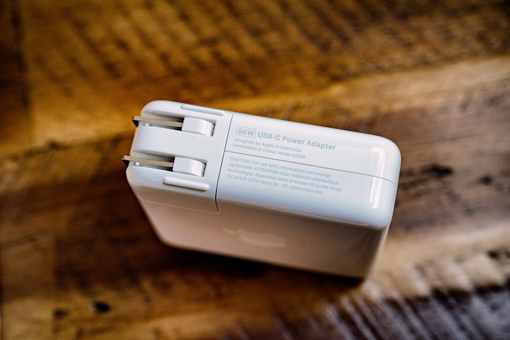
A new Apple 96-watt MacBook Pro USB Type-C power adapter brick, model A2166, for the new 16-inch laptops. Tony Webster from Minneapolis, Minnesota, United States · Wikimedia Commons (Apple 96W USB Type-C Power Adapter for new 16 inch MacBook Pro (49165128252).jpg) (CC BY 2.0)
Why Engineering Beats Willpower by 96.6%
Telling tired, wet people to 'just be careful not to drop the phone' is an audition for the morgue. Population physics agrees. In a 2012 Injury Prevention interrupted time-series study (1980–2007), Gregory Rodgers and Sarah Garland ran a multivariable Poisson rate model adjusting for total hair dryers in use and household GFCI growth after U.S. immersion-protection plug mandates took hold in 1987 and 1991. Though hair dryers differ structurally from phone chargers and observational data cannot mimic a randomized trial, engineered hardware cut estimated immersion electrocutions by 96.6% (95% CI 90.8%–98.8%; pulling a baseline risk index of 100 down to 3.4, remaining-rate bounds 0.012–0.092), representing a statistical counterfactual of roughly 280 prevented deaths.
Until every bargain-bin charger contains real galvanic isolation, geography is your circuit breaker. Per Electrical Safety First guidance, never use a mains-connected device in a bath or shower, charge outside cable reach of water, buy reputable adapters, discard hot or buzzing bricks without ever opening them, and treat bathroom RCDs or GFCIs as a mechanical backup that can stick—never permission to bathe with the grid.
RED FLAGS · WATER PLUS WALL CURRENT
Four Failures You Never See Inside the Plastic Cube
Any plugged-in phone, tablet, or charger sitting within cord-drop distance of a bathtub, shower, or wet sink—even a '5-volt' cable becomes a 230 V / 120 V wire when isolation fails.
Unverified cheap third-party chargers bearing suspicious or counterfeit safety stamps, or any adapter running unusually hot, buzzing, or smelling scorched.
Assuming a bathroom GFCI or RCD outlet makes plugged-in bath use safe—mechanical switches degrade and can fail to trip.
Walking away from a mild bathroom shock because the skin barely shows a mark: internal cardiac rhythm disturbances and deep tissue damage require medical evaluation.
✂ FIRST 60 SECONDS · BATHTUB ELECTROCUTION RESCUE
DO NOT TOUCH VICTIM OR WATER: Never grab a person, phone, or cord in potentially energized bathwater, and never poke cables with improvised household items like wooden brooms.
CALL 911 FROM OUTSIDE THE ROOM: Alert emergency dispatch immediately from a dry area and explicitly state that BOTH electricity and water are involved so crews bring insulated shutoff gear.
WAIT FOR VERIFIED POWER ISOLATION: Follow dispatcher instructions strictly and let trained responders confirm mains power is cut before approaching the tub; once safe, start rapid CPR and deploy an AED.
REWIRE YOUR BATHROOM HABITS: Charge phones outside the bathroom where cords physically cannot reach water, run strictly on battery if kept nearby on a dry shelf, and evaluate even 'minor' shocks medically.
CHAPTER 18 · FILE № 101 · Ep 2610
Freezing to Death in a Well-Heated Living Room
Why a glowing thermostat, a 97% oxygen reading, and an ECG with zero Osborne waves can all sit quietly in the room while a patient's core temperature plunges to 31.6°C—and why rubbing cold limbs can stop a heart.
The Thermostat Is Not a Vital Sign
Walk into a comfortably heated house in February and your brain immediately crosses hypothermia off the list of plausible disasters. Freezing requires snowbanks, busted furnaces, or ice lakes—except when a human thermostat quietly quits indoors. In a February 2026 Cureus report, Shoji Kikui and colleagues documented a 78-year-old Japanese woman with Hoehn and Yahr Stage 3 Parkinson's disease who arrived at the hospital confused and rigid straight from a well-heated indoor living space, with zero outdoor exposure, zero broken heater, zero alcohol, and zero neglect. Resisting the temptation to invent a drafty window matters: if you fabricate an external cold snap, you erase the clinical warning.
Her bedside monitor practically begged observers to relax. Blood pressure stood at 131/63 mmHg, pulse ticked calmly at 63 beats per minute, and finger pulse oximetry flashed a pristine 97%. That 97% is physics playing a cruel joke. Severe cold triggers a leftward shift in the oxyhemoglobin dissociation curve, clamping oxygen tightly onto hemoglobin so red blood cells roll past starving organs like loaded delivery trucks refusing to open their doors. Her Glasgow Coma Scale was 14 (E4 V4 M6—spontaneous eyes, obeying commands, confused speech), a subtle siren easily misfiled as 'just her Parkinson's.' Then someone checked her rectal core temperature: 31.6°C—roughly 88.9°F, crossing from moderate into severe hypothermia where shivering often collapses entirely.
Missing Textbook Waves and a Twelve-Fold Liver Alarm
Her diagnostic workup dismantled half a dozen textbook crutches at once. Two years earlier, bradykinesia and a shuffling gait had initially been treated as bilateral hip osteoarthritis until a unilateral right-hand resting tremor brought a Parkinson's diagnosis backed by a DAT-SPECT scan showing reduced dopamine-transporter binding ratios (1.49 right, 0.91 left, matching right-dominant rigidity). Yet DAT-SPECT maps striatal dopamine, not the hypothalamus, and her autonomic symptoms remained mild (constipation and nocturia without major orthostatic hypotension or sweating failure). Admission MRI showed only an old, known, asymptomatic right middle cerebral artery occlusion—no acute stroke. Her ECG displayed zero Osborne (J) waves, proving that a missing textbook wiggle never overrules a thermometer.
Blood chemistry demanded equal discipline. Normal glucose (108 mg/dL, ref 70–110) and low CRP (0.20 mg/dL, ref <0.30) ruled out fuel-starved hypoglycemia and overt bacterial sepsis. Mildly elevated TSH (5.50 µIU/mL, ULN 4.54) paired with a completely normal free T4 (1.66 ng/dL, ref 0.97–1.72) forbade blaming severe hypothyroidism. Even the paper's own prose needed an audit: the text called electrolytes 'normal,' yet Table 1 logged potassium at 5.3 mEq/L above its 5.0 ceiling—a modest cold-induced leak worth preserving without dramatizing. The loudest organ alarm came from vasoconstriction shunting blood away from her gut: ischemic 'shock liver' drove AST to 291 IU/L (7.3× ULN 40) and ALT to 468 IU/L (11.7× ULN 40), both plunging back to normal (AST 16, ALT 29) by discharge once warmth returned.
EXHIBIT A · CT / IMAGING SCAN · CC BY 4.0
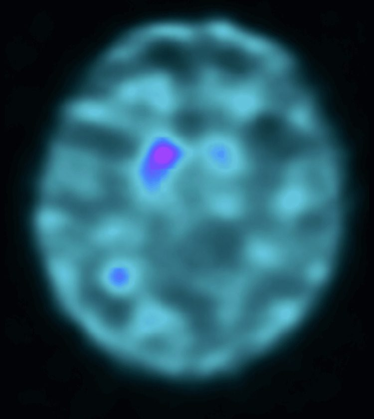
Dopamine transporter single-photon emission computed tomography (DAT-SPECT). DAT-SPECT demonstrated markedly reduced striatal uptake with specific binding ratios of 1.49 on the right and 0.91 on the left. The asymmetric reduction of tracer uptake provides objective evidence… Figure 1 from Kikui et al. (2026), Cureus · PMC13023671 (CC BY 4.0)
Why Hot Baths Kill—and What a 1973 Survey Actually Measured
Under continuous ICU monitoring, warmed IV fluids and an active external thermal blanket restored her core temperature within six hours—an observed hospital trajectory, never a home-blanket target. Rewarming outside an ICU courts 'afterdrop': hot baths, heating pads, or vigorous limb rubbing abruptly dilate clamped-shut peripheral vessels, dumping cold, acidic extremity blood straight into a fragile heart and provoking lethal arrhythmias. Her team held off tweaking her levodopa/carbidopa until her core stabilized, increasing it only afterward for lingering rigidity. She reached GCS 15 by Day 3, regained near-baseline daily function by Day 16, and went two years without recurrence.
One survivor case proves biological possibility, not population odds—Parkinson's thermoregulatory vulnerability remains a restrained hypothesis rather than proven sole causation, and we know nothing of how fast she cooled before that single 31.6°C snapshot. Nor should anyone turn R.H. Fox and colleagues' famous 1973 British Medical Journal survey (abstract scope only) into a modern panic headline: finding deep temperatures below 35.5°C in 10% of elderly residents studied in winter 1972 carries no full-text denominator here and sits half a degree warmer than today's <35.0°C hypothermia cutoff. Current CDC guidance (reviewed August 25, 2026) and NHS guidance (last reviewed June 9, 2023, and displayed overdue) converge on the same blunt triage rule: give paramedics observed behavioral changes—'more confused than at breakfast'—rather than premature diagnostic labels. Watch the person, not the smart thermostat glowing proudly on the hallway wall.
RED FLAGS · WHEN WARM AIR LIES
Clues That a Heated Home Is Hiding a Freezing Core
Sudden confusion, unusual drowsiness, slurred or altered speech, or an abrupt jump in stiffness or immobility—never dismiss acute changes as 'old age' or 'just their Parkinson's.'
Reassuring blood pressure, normal heart rate, 97% pulse oximetry, or an ECG without Osborne waves cannot clear severe core hypothermia.
Waiting to find a thermometer or waiting for shivering to appear delays emergency care; shivering frequently shuts off completely in severe cold.
Offering hot baths, alcohol, hot-water bottles, vigorous limb massage, or food and drink to a drowsy hypothermic patient risks fatal afterdrop arrhythmias or aspiration.
✂ FIRST 60 SECONDS · SUSPECTED INDOOR HYPOTHERMIA
CALL 911 WITHOUT WAITING FOR A THERMOMETER: Sudden confusion, drowsiness, slurred speech, or sudden rigidity demands urgent emergency assessment even inside a heated house—never label it a routine flare.
PASSIVE DRY INSULATION ONLY: Move out of drafts, swap any damp clothes for dry blankets or coverings, stay beside the patient, and follow dispatcher guidance until monitored EMS arrives.
ZERO HOT BATHS, RUBBING, ALCOHOL, OR SIPPING: Never use hot water, heat lamps, or vigorous limb rubbing (triggers fatal afterdrop arrhythmias), never offer alcohol (accelerates core heat loss), and give no food or drink if alertness is reduced.
GIVE FACTUAL CHANGES, HOLD DIY MED TWEAKS: Tell responders exact behavioral changes and timing plus a current medication list—never adjust Parkinson's or other prescriptions yourself during an acute mental-status drop.
CHAPTER 19 · FILE № 106 · Ep 2615
The Rusted Bungee Hook, the Normal Eye Pressure, and the 20/800 Pupil
Why a two-dollar elastic strap stores enough kinetic insult to shear an iris off its anatomical anchor—and how three spotless eye-pressure checks, a negative dye test, and a clear CT scan all missed the headline right behind the cornea.
Elastic Potential Energy With an Open Metal Fang
Few hardware-store inventions radiate more unearned casualness than the humble bungee cord: a braided elastomer slingshot capped on both ends by bent steel hooks whose sole engineering commitment to staying attached is friction and optimism. Stretch one across a load and you are holding stored mechanical energy aimed squarely back along the tension line—often at eye height. In a 2021 Cureus case report (whose PDF page-one copyright panel prints CC BY 4.0 while its original XML metadata links to CC BY 3.0, a versioning hiccup worth flagging), Woo Kyung Lee and colleagues documented a 41-year-old man who walked into an emergency department with left eye pain and blurred vision after an injury involving a rusted, hooked bungee cord. Crucially, the paper stops where the chart stops: it never specifies what load he was securing, where he stood, whether anyone else was nearby, whether eye protection was worn, or mechanically proves that rust caused the release. Real forensic restraint refuses to invent a dramatic backyard diorama to make an accident feel tidy.
Beside the pain and blur, he reported light sensitivity, redness, swelling, headache, and nausea. He denied losing consciousness, and his vital signs looked utterly calm. A casual glance found only a small abrasion on his upper eyelid, and every muscle steering his eyeball still tracked smoothly. Then clinicians looked directly at the optical machinery itself. His right eye read 20/20; his injured left eye registered 20/800. (Because the paper records no pre-injury left-eye baseline, honest math refuses to compute an exact percentage of vision lost or treat his right eye as a flawless historical control.) Worse, his left pupil sat enlarged, irregular in shape, and completely unreactive to light, while blood pooled in the anterior chamber between cornea and iris—a hyphema. Based on the examination and published clinical photograph, the team suspected both a traumatic iris sphincter tear and iridodialysis: separation of the iris at its anatomical root.
Four Reassuring Tests That Never Cleared the Iris
If emergency medicine has a favorite practical joke, it is handing out four consecutive reassuring readings on an eye that still needs an operating room. Clinicians checked intraocular pressure three separate times in each eye: 17, 17, and 17 mmHg on the right; 17, 15, and 17 mmHg on the left. No dramatic pressure spike appeared at that initial visit—which proved only that fluid pressure sat quiet in that snapshot, not that the iris stayed intact or that delayed pressure complications could never develop later. Next, a Wood's lamp exam found neither corneal abrasion nor corneal laceration, and a Seidel test came back negative, showing no fluid leaking through an open hole in the front surface of the eye.
Even the heavy hardware joined the chorus: an orbital CT scan reported no acute changes and no globe rupture. Yet every one of those investigations answered a narrow compartment question—surface integrity, aqueous leakage, bony wall, or gross eyeball rupture—none of which erased visible anterior-chamber blood, a misshapen unreactive pupil, or 20/800 sight. A superficial eyelid graze and intact extraocular muscles are notoriously lousy spokespeople for what sits behind the cornea. After emergency stabilization and ophthalmology consultation, the published record offers one final honesty check: at three-week follow-up contact, the patient reported that his ophthalmologist had recommended surgical correction and surgery was being planned. No postoperative outcome or final visual acuity was ever published—meaning no responsible writer gets to tack on a triumphant 'vision restored' epilogue that never happened in print.
EXHIBIT A · BUNGEE-CORD EYE TRAUMA · CC BY 4.0
Left eye following rusted bungee-cord recoil showing iridodialysis (blue arrow: iris torn from its root), irregular dilated pupil, and pooling anterior-chamber blood / hyphema (asterisk)—all while intraocular pressure printed a deceptively normal 15–17 mmHg. Figure 1 from Lee et al. (2021), Cureus · PMC7949672 (CC BY 4.0)
Sixty-Seven Charts, Shifting Denominators, and Glasses That Lie
One emergency chart is not a freak lightning strike. Two decades earlier, in a 2001 Ophthalmology retrospective series (complete original abstract and bibliographic record assessed, not full text or raw charts), Anthony Aldave and colleagues tallied 67 bungee cord ocular trauma patients treated across five years in the 1990s at Wills Eye Hospital. Hyphema appeared in 42 of 67 patients—exact math 42 ÷ 67 = 62.69%, rounded to 63%. Commotio retinae, a concussive shockwave injury to the retina, appeared in 30 of 55 patients—30 ÷ 55 = 54.55%, rounded to 55%—with a smaller denominator whose missing 12 cases the abstract never explains, so you preserve 55 rather than smearing it over 67. Twenty-one of 67 patients (31.34%, rounded 31%) required some form of surgery, and the series even included open-globe ruptures (which our 2021 patient escaped). Because one struck eye easily collects anterior blood, retinal shock, and surgery all at once, these fractions overlap and never add up—and without a denominator of every uninjured bungee stretch across America, they map clinical severity among injured arrivals, not per-use probability or a randomized proof of warning labels.
Prevention starts long before anything snaps, because ordinary prescription eyeglasses are not armor—they are glass or plastic lenses sitting millimeters from your cornea with zero impact rating. Current American Academy of Ophthalmology guidance draws a sharp line between daily spectacles and task-appropriate protective eyewear carrying an impact-safety marking (such as ANSI Z87.1 for household projectile work), while bluntly reminding wearers that even rated eyewear is one protective layer, never an absolute force field. Keep impact goggles where you actually grab cords, clear bystanders and kids from the recoil path, follow manufacturer replacement guidance on weathered or rusted straps, and resist the urge to stretch-test a suspect strap toward your face or bend a tired hook back into shape like an amateur blacksmith.
RED FLAGS · DO NOT EXPERIMENT ON A STRUCK EYE
Four Instincts That Make Blunt Eye Trauma Worse
High-speed impact, altered or blurred vision, irregular pupil shape, severe pain, light sensitivity, headache, nausea, or vomiting merit immediate emergency assessment—never wait to see whether the eyeball 'looks open' or dismiss trauma because the eyelid scratch looks minor.
Never drive yourself with compromised vision, never rub or press on an injured eye, never tape down a tight pressure patch, and never pull out an object that has pierced the eye (NHS and American Academy of Ophthalmology guidance).
First aid is mechanism-specific: flushing chemical splashes or minor loose grit is NOT a universal recipe for high-speed blunt trauma or possible cut/puncture—tell clinicians the exact mechanism and wait for professional guidance before putting anything into the eye.
Never borrow leftover eye drops, copy published hospital drug lists as self-treatment, or skip scheduled ophthalmology follow-up just because initial pain fades—comfort does not clear iris, retinal, or delayed pressure injury.
✂ FIRST 60 SECONDS · HIGH-SPEED EYE RECOIL INJURY
HANDS OFF THE EYEBALL: Do not rub, press, pry open the lid, apply a tight patch, flush indiscriminately, or pull out any embedded object—protect the eye from pressure while awaiting clinical guidance.
GET URGENT PROFESSIONAL ASSESSMENT—DON'T DRIVE: Arrange safe transport or emergency services immediately for any high-speed cord impact, blurred sight, irregular pupil, light sensitivity, severe pain, headache, or nausea.
DELIVER A CLEAN FACTUAL HANDOVER: Tell triage the exact object (hooked bungee cord), impact timing if known (zero guessed timestamps), vision changes, and every symptom—never self-treat with leftover eye drops.
GEAR UP BEFORE THE NEXT STRETCH: Wear impact-rated protective eyewear (such as ANSI Z87.1)—not ordinary prescription glasses—keep bystanders clear, retire damaged or rusted straps, and never stretch-test cords toward your face.
CHAPTER 20 · FILE № 109 · Ep 2618
When the Living-Room Television Became a Falling Skull-Fracture Machine
Why we obsess over refresh rates and bezel width while parking an unanchored deadweight above toddler head height—and what 71 emergency charts in one hospital year plus 264,200 U.S. tip-over estimates prove about gravity.
Seventy-One Children Beneath an Ordinary Appliance
People spend weeks comparing contrast ratios, smart remotes, and millimeter-thin bezels, then balance the finished purchase on an unanchored bedroom dresser and declare the living room complete. Physics does not care about 4K resolution; physics reads mass, height, and an unsecured center of gravity. In a 2010 International Journal of Emergency Medicine review (infamous among vigilant archivists because a typesetting blunder printed an unrelated femoral-pseudoaneurysm abstract on the original PDF, formally replaced by a 2011 erratum), Servan Gokhan and colleagues audited twelve months of emergency records (September 2008 to September 2009) at a single hospital in Turkey. Out of 3,856 childhood home-injury emergency visits, 71 children under fifteen—50 boys and 21 girls, mean age just over three years—had been struck by falling televisions. (Because the paper's age-table row totals conflict internally and its hospital charts lacked screen sizes, supporting furniture, and scene accounts, strict forensic honesty refuses to invent fine age buckets, climbing scenes, or adult blame.)
Those 71 arrivals shatter the polite assumption that a toppled TV merely cuts a cheek or cracks a bezel. Fourteen children suffered traumatic brain injury: eight cerebral contusions, four subarachnoid hemorrhages, one epidural hematoma, and one subdural hematoma. Two children underwent emergency neurosurgery for those epidural and subdural blood collections. Four children—all four documented with subarachnoid bleeding—died, one on arrival and three in intensive care. Sixteen children required hospitalization and fourteen needed ICU follow-up. And notice a subtle proofread catch in the original publication: its discharge sentence sounded awkwardly universal despite those four fatalities, and 'no neurological deficits at discharge' tracks only discharged survivors at the hospital door—not lifelong cognition, behavior, or seizure risk.
Why 102 Injuries Fit Inside 71 Children—and Why Denominators Matter
Read a trauma table carelessly and you will invent patients who never existed. Across the 71 children, clinicians recorded 49 head or facial injuries (including 18 skull fractures), 30 limb injuries (including 7 limb fractures treated clinically by casting or closed reduction), 13 chest injuries (including 2 rib fractures with chest CTs showing no underlying lung-tissue injury), and 10 abdominal injuries (including minor liver laceration and free abdominal fluid on ultrasound in two children). Add 49 + 30 + 13 + 10 and you get 102—not 31 secret extra patients, just children hit hard enough to injure multiple body regions at once. Visible trouble on a forearm never clears a hidden skull fracture or intra-abdominal bleed from the same fall.
Keep the denominators equally crisp. Seventy-one out of 3,856 childhood home-injury visits works out to 1.84% (rounded to 1.8% in the paper)—the falling-TV slice of that one hospital's home-injury arrivals, NOT a household probability. Inside the 71 TV cases, 49/71 equals 69.0%—resist loose headlines calling it 'almost three-quarters.' Scale out to national surveillance and the numbers grow teeth: in a 2009 Clinical Pediatrics analysis (complete original abstract and Europe PMC metadata assessed, not raw survey files), Bethany Gottesman and colleagues examined U.S. NEISS emergency data across 18 inclusive calendar years (1990–2007), estimating 264,200 pediatric furniture tip-over injuries—264,200 ÷ 18 ≈ 14,677.8, or roughly 14,700 emergency visits per year—with televisions the single most common culprit and head-and-neck trauma dominating the youngest ages. Neither study randomized brackets to publish an exact percentage reduction, yet years of uneventful living with an unanchored dresser prove nothing except good luck so far.
REFERENCE EXHIBIT · CT / IMAGING SCAN · CC BY 3.0
ILLUSTRATIVE REFERENCE EXHIBIT — Verified CC BY diagnostic figure from a separate peer-reviewed publication showing the same mechanism (not the index patient).
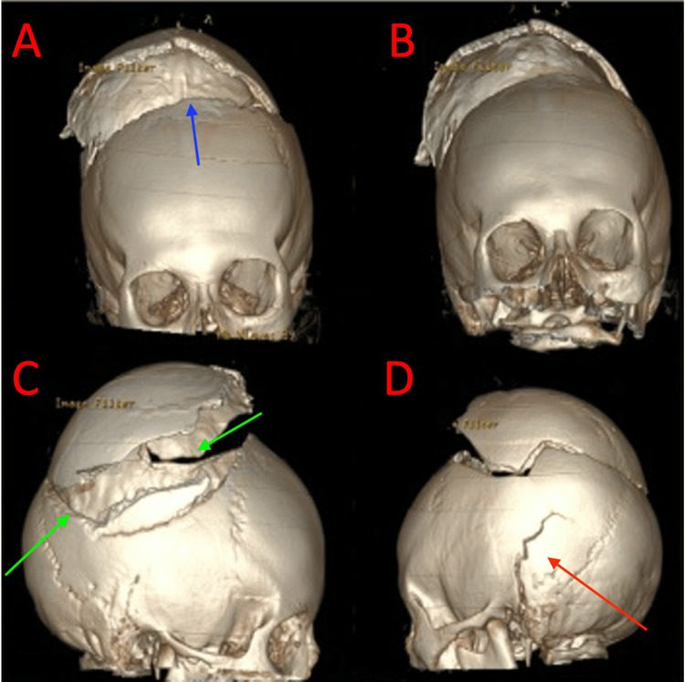
Extensive open skull fractures.Computed tomography volume-rendered three-dimensional (3-D) reformats demonstrating comminuted, displaced, open calvarial fractures involving the bilateral temporal (red arrow) and parietal bones (green arrows), as well as the frontal bone (blue arrow). Figure 1 from Mirkin et al. (2023), Cureus · PMC10625338 (Reference Case) (CC BY 3.0)
Anchor the Whole System—Not Just One Screw in Drywall
The U.S. Consumer Product Safety Commission's Anchor It campaign (reinforced in its 2026 gathering reminder) boils television safety down to a design reality many households miss: a television and whatever holds it up are one connected physical system. Tethering a screen to an unanchored bookcase leaves the whole stack free to dive forward; mounting a set on furniture never built to bear a TV invites slow instability. Follow manufacturer instructions for both the television and its stand or wall mount—bringing in qualified installation help whenever wall structure or hardware is uncertain rather than freelancing a nylon strap into hollow drywall. Remove climbing magnets like toys and remote controls from high shelves or dresser tops, recycle aging heavy cathode-ray sets, and re-anchor every time an older screen migrates into a spare bedroom, play area, holiday rental, or crowded family watch party.
If a heavy appliance ever does topple onto a child, switch instantly from hardware mode to trauma mode. Secure the scene without creating a second casualty through reckless solo heavy lifting, call local emergency services immediately if the child is trapped, unresponsive, struggling to breathe, or seriously hurt, and follow current NHS head-injury guidance: inability to stay awake, seizures, new weakness, walking or speech trouble, changed behavior, or vomiting demand emergency assessment—not home coma-scoring or 'let's see how they nap.' Hand responders the raw facts (what fell, whether it was witnessed, what changed afterward) without guessing drop heights, and remember that minor-bump home-care handouts apply only after a clinician clears a heavy-object impact, never before.
RED FLAGS · GRAVITY BEATS REFLEXES EVERY TIME
Four Living-Room Habits That Turn Furniture Into Projectiles
Placing a television on an unanchored dresser, chest, or table not built for a TV—anchor BOTH the television and any top-heavy furniture (dressers, bookcases) per manufacturer specs as one connected system.
Storing remotes, snacks, or bright toys atop screens or high cabinets where normal childhood curiosity turns drawers into a staircase—and forgetting spare TVs moved to guest rooms or grandparents' houses.
Treating a visible cut or limb fracture after a tip-over as the whole injury, or applying minor-bump 'watch at home' advice before a clinician assesses a heavy-object head impact.
Waiting out vomiting, drowsiness, inability to stay awake, changed behavior, weakness, or seizures after a fall—call emergency services immediately and give exact, unguessed scene facts.
✂ FIRST 60 SECONDS · FALLING TV OR FURNITURE TIP-OVER
KEEP THE SCENE SAFE & CALL EMERGENCY SERVICES: If a child is trapped, unresponsive, struggling to breathe, or struck on the head by a heavy object, call 911/local EMS immediately—never trigger a secondary collapse during frantic lifting.
NEVER 'WAIT OUT' HEAVY-OBJECT HEAD IMPACTS: Drowsiness, inability to stay awake, vomiting, seizures, weakness, speech/walking trouble, or changed behavior demand immediate emergency care—do not self-score coma scales or use unassessed home-care rules.
GIVE RAW, UNGUESSED SCENE FACTS: Tell responders what fell, where it struck if witnessed, and every symptom change—accurate uncertainty beats a guessed height or reconstructed sequence.
ANCHOR THE FULL TV + FURNITURE SYSTEM: Follow CPSC Anchor It advice: mount TVs or anchor both TV and stand/dresser per manufacturer instructions (with qualified help if unsure), clear climbing lures like remotes, and check spare rooms and visited homes.
CHAPTER 21 · FILE № 114 · Ep 1141
The Current That Killed Without Leaving a Burn
Why wet skin turns 'low voltage' into an unmarked cardiac assassin—and how a Class 0 demolition hammer passed an unplugged multimeter test before energizing its own metal housing at full RPM.
Why Hollywood Burns Vanish in Water
Cinema ruined public electrical literacy. Movies demand sparks, smoke, and charred craters before anyone cries electrocution, teaching a lethal falsehood: no burn, no shock. Thermodynamics disagrees. A skin burn is localized Joule heating—current squared times resistance times contact time. Dry, calloused stratum corneum resists current at hundreds of thousands of ohms; soak it in ion-bearing water on earth-grounded concrete and resistance plunges to roughly 1,000 ohms or less. Suddenly, modest 50 or 60 Hz alternating current—the exact frequency worst suited to cardiac tissue—washes across the chest, ambushes the heart's tiny relative refractory window, and scrambles rhythm into ventricular fibrillation. Meanwhile, surrounding water acts as a vast heat sink, whisking thermal energy away before skin proteins can cook. The heart stops; the skin stays spotless.
Forensic engineer Mark Goodson documented this ghost in a 1993 American Journal of Forensic Medicine and Pathology report (14(4):330–333; PMID 8116594). A healthy 26-year-old pastor standing barefoot, waist-deep in an earth-grounded concrete baptismal pool reached for a tipping microphone and collapsed dead before witnesses. Autopsy found a normal heart, clear arteries, no drowning lung fluid, and zero skin burns. Only engineering closed the mosaic: an amplifier fault energized the metal microphone casing at 21 volts AC—an equipment-hazard measurement, strictly separate from the unmeasurable transient current through his chest. Karger, Süggeler, and Brinkmann's 2002 Forensic Science International series of 37 electrocution autopsies (PMID 12062943) confirmed the rule: 81% bore classic burns, while 7 victims (19%) had untouched skin—every single one in a wet environment, including 6 bathtub hair-dryer deaths.
The Unplugged Power Tool That Lied to the Multimeter
Remove the water and electricity still plays hide-and-seek. In a 2025 Analytical Science Advances Dubai case (DOI 10.1002/ansa.70032; PMC12406169), Asma Askar and colleagues examined a 35-year-old laborer who collapsed dead chiseling wall tile with a heavy electric demolition hammer. Autopsy found zero hand burns, zero exit wound, and just one small collapsed blister with firm edges on his outer left elbow—where workers brace heavy vibrating tools. Histopathology separated it from any jobsite friction blister: stretched, spindle-like epidermal nuclei ('nuclear streaming') perched above dermal coagulative necrosis—proteins flash-cooked like egg white in a hot pan.
Scanning electron microscopy with energy-dispersive X-ray spectroscopy (SEM-EDX) bolted hammer to elbow twice: vaporized iron metallization driven deep into the blister matched the tool's metal housing, and calcium-silicon-magnesium construction dust on the skin matched the tool's dust profile—even though vibration, dust, or gloves left zero DNA or fingerprints on the machine. Then came the engineering gut-punch. Unplugged on a bench, open-circuit multimeter continuity testing read infinite resistance—passing static inspection cleanly. Only live, closed-circuit powered testing caught the dynamic fault: worn copper-winding insulation stayed clear of the rotor shaft at rest, then under high-RPM centrifugal force, heat, and vibration closed the gap and energized the chassis at 220 V AC. Worse, the hammer was archaic Class 0 hardware: single-layer insulation, exposed metal casing, and no third-prong ground wire to trip the breaker.
REFERENCE EXHIBIT · RADIOGRAPH · CC BY 4.0
ILLUSTRATIVE REFERENCE EXHIBIT — Verified CC BY diagnostic figure from a separate peer-reviewed publication showing the same mechanism (not the index patient).
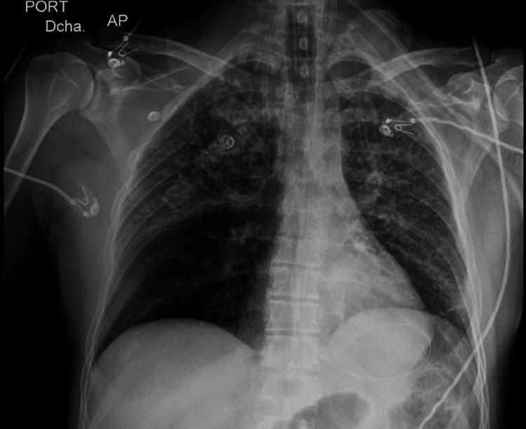
Chest X-ray on ICU day 1 showing mild left-sided alveolar infiltrates Figure 3 from Rivera Castrillón et al. (2025), Cureus · PMC12809342 (Reference Case) (CC BY 4.0)
What Deep Tissue Hides—and Why OSHA Bans 'One Last Shift'
Internal organs rarely rescue a missed scene inspection either. Karger's 2002 series noted pinpoint eyelid, pleural, and epicardial 'electrical petechiae' in 74% of fatalities, yet those burst capillaries stem non-specifically from violent AC tetanic muscle spasms spiking vascular pressure during sudden arrest—never standalone proof of electricity. Worse, Markéta Kulvajtová and colleagues' 2026 Scientific Reports study (DOI 10.1038/s41598-026-35658-4; PMID 41526665) shocked 21 rabbits under controlled low- and high-voltage protocols and euthanized them immediately: apart from direct electrode skin burns, peripheral nerves, deep vessels, aorta, and myocardium looked microscopically identical to unshocked controls. Electroporation punches lethal membrane holes instantly, yet visible inflammation takes tens of minutes to hours—so instantaneous arrest freezes deep histology blank.
Because flesh often refuses to testify, survival belongs to prevention. OSHA 29 CFR 1910.334 draws the hard line: inspect cords, jackets, and plug pins before every shift; pull any frayed, tingling, or missing-ground-prong tool from service immediately instead of finishing one last cut; demand GFCI protection anywhere water meets electricity; and leave testing strictly to qualified electrical technicians who know a quiet multimeter cannot catch a spinning fault.
RED FLAGS · WHEN THE TOOL PASSES AT REST
Four Electrical Myths That Put People on Stainless Steel
Wet skin on grounded concrete or in a tub drops electrical resistance below ~1,000 ohms, allowing seemingly low AC voltages (even 21 V on energized metal hardware) to fibrillate a heart without leaving a single skin burn.
Any heavy metal-cased power tool missing its third grounding prong—or obsolete Class 0 equipment with single-layer insulation and exposed metal—uses the operator's sweaty body as its backup ground wire.
An unplugged multimeter reading 'clean' never clears a vibrating motor tool: degraded winding insulation can sit clear at rest and short dynamically to the casing at 220 V the millisecond you pull the trigger.
Never 'finish the shift' with a frayed cord, pinched jacket, deformed plug pin, or tool that gave you even a faint tingle—OSHA 1910.334 mandates immediate removal from service.
✂ FIRST 60 SECONDS · WET-CONTACT & POWER-TOOL SHOCK
KILL THE BREAKER BEFORE TOUCHING ANYONE: Never step into a pool, tub, or puddle or grab a worker collapsed on a corded power tool until the circuit breaker is thrown or the plug is safely pulled dry.
CALL 911 & START CPR + AED IMMEDIATELY: Once the circuit is verified dead, start hard-and-fast chest compressions and deploy an AED—60 Hz AC kills by ventricular fibrillation, not thermal burns, so seconds count even on unblemished skin.
BANISH UNGROUNDED METAL TOOLS & DEMAND GFCI: Use only Class I grounded (intact 3-prong) or Class II double-insulated tools, protect every wet or outdoor outlet with a working GFCI, and never brace metal motor housings against sweaty skin.
TAG OUT SUSPECT TOOLS (OSHA 1910.334): Inspect cords, jackets, and plug pins before every shift; pull any damaged or tingling tool out of service immediately and leave live testing solely to qualified electrical technicians.
CHAPTER 22 · FILE № 115 · Ep 2047
The Tiny Acid Splash That Stole Calcium From the Heart
Why 'weak' hydrofluoric acid sneaks past intact skin without raising a blister, turns your liquid blood calcium into insoluble stone, and stretches the ECG toward cardiac arrest from just three pale fingertips.
Why a 'Weak' Acid Is the Hardware Aisle's Sneakiest Assassin
Calling hydrofluoric acid a 'weak acid' is chemistry's deadliest euphemism. Strong acids like sulfuric or hydrochloric carry negative pKa values: on wet skin they dump all their protons immediately, char surface proteins, and accidentally build a coagulated barrier that slows deeper penetration. Hydrofluoric acid—hiding in quartz-wafer etchants and heavy-duty garage rust removers—has a pKa of 3.17. On slightly acidic skin it refuses to dissociate, staying zipped up as tiny, neutral, fat-soluble HF molecules that glide straight through intact stratum corneum like a Trojan horse without raising a single blister. The ambush triggers inside deep tissue at pH 7.4, where body chemistry violently forces a 17,000-to-1 split into free fluoride ions (F⁻) right beside nerves and blood vessels.
In Ep 2047's toxicology vignette (Case B), a 32-year-old semiconductor technician arrives 45 minutes after a pinhole nitrile-glove tear exposes three right fingertip pads—barely 1.5% of his body surface area—to 50% aqueous HF. His fingers look merely pale, without blisters or charring. Yet he screams in 10-out-of-10 throbbing agony untouched by IV fentanyl, feels perioral numbness, and curls into rigid carpopedal spasms. Moments later his ECG monitor blares: a QTc stretched to 548 milliseconds firing polymorphic ventricular salvos on the brink of ventricular fibrillation.
Turning Blood Calcium Into Stone—and Locking the 1.36-Å Vault
Free fluoride is a ruthless divalent-cation magnet. Meeting circulating calcium (Ca²⁺), it precipitates insoluble mineral fluorite (CaF₂, solubility product Ksp = 3.9 × 10⁻¹¹)—a bottomless sink turning liquid electrolytes into microscopic rock. Case B's stat blood gas showed ionized calcium plummeting to 0.68 mmol/L (normal ~1.15–1.30) and magnesium dropping to 1.1 mg/dL (precipitated as MgF₂). Simultaneously, calcium-stripped sensory axons misfired nonstop—causing fentanyl-proof pain—while fluoride poisoned Na⁺/K⁺-ATPase pumps, spiking potassium to 5.9 mmol/L. Low calcium, low magnesium, and high potassium stretched cardiac repolarization straight toward arrest.
Zoom to 1.36 Ångströms and the exact same ion—radius 1.33 Å, an atomic twin of hydroxide (OH⁻, 1.33 Å)—explains two other hospital traps. In human gamma-enolase (PDB 2AKZ; Qin, Chai, Brewer, Lovelace, and Lebioda, Biochemistry 2006, 45:793–800, PMID 16411755, solving Warburg and Christian's 1942 puzzle), two Mg²⁺ ions, two F⁻ ions (bridging at 1.92 and 1.97 Å plus a terminal cap at 2.10 Å), and one phosphate slam step 9 of glycolysis shut forever. Because classic gray-top sodium-fluoride tubes only block step 9 while step-1 hexokinase keeps burning sugar for an hour, a leukemia patient with 96,000 WBCs/µL (Case A) showed fake hypoglycemia at 34 mg/dL (plain tube) and 61 mg/dL (gray-top) versus true 104 mg/dL—solved only by Terumo's US Patent 4,780,419 citrate-pH-5.5 buffer freezing step 1 instantly. That identical 1.33-Å mimicry also lets chronic voriconazole fluoride release (16.3% F; 65.3 mg/day on 400 mg/day; plasma F⁻ 15–35 µmol/L) swap into bone hydroxyapatite, causing agonizing fluorapatite periostitis that mimics bone cancer until clinicians switch to posaconazole or isavuconazole.
Decoy Calcium, Zero Pain, and the Salt That Kills Hands
Opioids fail HF burns because they calm brain receptors while calcium-starved fingertip nerves keep firing locally. Only decoy calcium fixes the source—and 0/10 pain is the true endpoint proving every free F⁻ ion is neutralized into inert CaF₂. Rescue starts with copious water lavage and 2.5% calcium gluconate gel inside a loose surgical glove (bedside recipe: 3.5 g calcium gluconate powder or 35 mL 10% solution mixed into 100–115 g sterile water-soluble lubricant). Never inject bulky fluid subcutaneously into rigid fingertip pads, which triggers digital compartment syndrome and necrosis; refractory digital burns use slow intra-arterial calcium gluconate (10 mL of 10% in 40 mL D5W over 4 hours via radial or brachial artery) across the hand's own capillaries.
Systemically, Case B received 30 mL (3.0 g / 13.95 mEq) of 10% IV calcium gluconate over 10 minutes, 2.0 g IV magnesium sulfate, and insulin/dextrose plus isotonic sodium bicarbonate—dropping potassium to 4.4 mmol/L while alkalinizing urine to pH 7.5–8.0 to ion-trap F⁻. One ironclad rule saves limbs: NEVER inject calcium chloride (CaCl₂) subcutaneously or intra-arterially—its triple osmolality shreds vessel walls into gangrene, restricting CaCl₂ strictly to central lines during arrest. Within 25 minutes, Case B's ionized calcium reached 1.18 mmol/L and QTc fell to 426 ms; by hour 3 pain hit 0/10, and he went home at 48 hours with all five fingers intact.
RED FLAGS · NEVER TRUST PALE SKIN AFTER HF
Four Hydrofluoric Acid Traps That Turn a Smudge Lethal
Check labels on heavy-duty garage rust removers, aluminum brighteners, and glass/wafer etchants—even dilute or 1.5%-BSA hydrofluoric acid splashes can trigger delayed deep pain and fatal hypocalcemia.
Severe, deep throbbing pain wildly out of proportion to pale, unblistered skin—especially pain that laughs off opioid analgesics—is the signature alarm of ongoing transdermal fluoride ion attack.
Perioral numbness, tingling, muscle cramping, carpopedal clawing, or ECG QTc prolongation signal systemic calcium collapse heading rapidly toward polymorphic VT and cardiac arrest.
Never allow subcutaneous fingertip-pad high-volume injections (compartment necrosis risk) or peripheral/intra-arterial calcium chloride (vascular gangrene)—calcium gluconate is the peripheral antidote.
✂ FIRST 60 SECONDS · HYDROFLUORIC ACID / RUST-REMOVER SPLASH
FLUSH IMMEDIATELY & STRIP CONTAMINATED GEAR: Flood exposed skin continuously with copious running water while safely removing contaminated gloves, rings, or clothing without spreading unreacted acid to bare hands.
CALL 911 & NAME 'HYDROFLUORIC ACID' OUT LOUD: Even if skin looks merely pale or normal, tell dispatch and ER triage the exact product and concentration—HF causes delayed deep tissue injury and silent fatal arrhythmias.
APPLY 2.5% CALCIUM GLUCONATE GEL IF ON SITE: After thorough water flushing, rub 2.5% calcium gluconate gel onto the site (wear clean nitrile gloves if helping someone else) and bring the product container or SDS straight to the hospital.
DEMAND ECG + IONIZED ELECTROLYTES (NO PERIPHERAL CaCl₂): At the ER, insist on continuous ECG QTc monitoring plus stat ionized calcium, magnesium, and potassium—and remember calcium gluconate (never peripheral/intra-arterial calcium chloride) is the limb-safe antidote.
CHAPTER 23 · FILE № 116 · Ep 2053
The 26-Millimole Lactate That Was Actually Antifreeze
How two calibrated hospital machines read the exact same 2:18 a.m. blood draw as 26.4 mmol/L and 2.2 mmol/L—catching ethylene glycol 14 hours ahead of forensic chromatography via a single missing methyl group.
Two Machines, One Blood Draw, and a 24-Millimole Lie
At 2:18 a.m. in Ep 2053's resuscitation vignette, a 44-year-old heavy-equipment diesel mechanic found depressed in his garage 10 hours earlier rolls in hovering at the airway cliff: Glasgow Coma Scale 9, afebrile at 36.6°C, blood pressure a deceptively steady 136/82 mmHg (heart rate 112), and lungs heaving in deep Kussmaul breaths at 34 per minute to blow off acid. Five minutes after simultaneous draws, the bedside arterial blood-gas (ABG) cartridge prints a nightmare: pH 7.03, pCO₂ 19 mmHg, bicarbonate 5 mEq/L (Winter's formula predicts 13.5–17.5 mmHg), and whole-blood lactate 26.4 mmol/L—a figure that usually sends teams chasing dead bowel or terminal septic shock. Twenty-two minutes later, the core lab reports plasma lactate from that exact same blood draw: 2.2 mmol/L.
Neither machine broke; both obeyed molecular geometry. Bedside ABG cartridges use an amperometric electrode coated with bacterial L-lactate oxidase (LOX), whose permissive active pocket oxidizes lactate into hydrogen peroxide at +0.7 V—and gets completely fooled by glycolate (MW 75.04 Da), ethylene glycol antifreeze's primary acid metabolite, which mirrors L-lactate (MW 89.07 Da) except missing one bulky C2 methyl group. Central core analyzers instead rely on strict mammalian L-lactate dehydrogenase (LDH, reading 340 nm NADH absorbance), whose tight hydrophobic pocket demands that methyl group and ignores glycolate entirely. Subtract the two—26.4 minus 2.2—and a +24.2 mmol/L lactate gap catches ethylene glycol in 22 minutes, beating forensic chromatography by 14 hours.
Freezing-Point Math, Useless Black Lights, and the Inverse Clock
Three classic traps still lurk on the rest of his chart. First, never order vapor-pressure osmometry for radiator antifreeze: ethylene glycol boils at 197°C and refuses to evaporate, slipping straight past volatility analyzers. Freezing-point depression osmometry—a colligative headcount of dissolved particles—measured 329 mOsm/kg against calculated 298 mOsm/kg (2 × 142 Na⁺ + 126/18 glucose + 19.6/2.8 BUN), exposing a +31 mOsm/kg osmolal gap (~192 mg/dL unmetabolized parent poison via ×6.2) alongside an anion gap of 31 mEq/L (142 − [106 + 5]), ionized calcium 0.89 mmol/L, and creatinine already rising to 1.9 mg/dL.
Second, respect the inverse kinetic clock. At hour 1, unmetabolized antifreeze drives a huge osmolal gap while the anion gap sits normal; by hours 24 to 48, hepatic metabolism chews through the parent molecule so the osmolal gap drops below 10 even as acid and renal failure kill—meaning a late normal osmolal gap never clears antifreeze. Third, ditch the TV-drama Wood's lamp: commercial fluorescein degrades in acidic urine within 4 to 6 hours while plastic tubes autofluoresce anyway. Real proof appears under polarized microscopy as birefringent envelope- or picket-fence-shaped calcium oxalate monohydrate crystals lacerating proximal kidney tubules.
The Orphan Ring That Froze the Zinc—and Why Dialysis Washes It Out
Until December 4, 1997, blocking hepatic alcohol dehydrogenase (ADH1B) meant central-line 10% ethanol drips or 80-proof vodka down feeding tubes—battling unpredictable zero-order kinetics, hourly ethanol draws, CNS depression, and pediatric NADH-driven hypoglycemia. Enter 4-methylpyrazole (fomepizole, Antizol, NDA 020696), an 82.10-Da unpatentable 19th-century ring 8,000-fold more potent than ethanol, rescued by the 1983 Orphan Drug Act (PL 97-414), proven by Brent and the META Study Group (NEJM 1999; PMID 10080812), and purified free of hepatotoxic unsubstituted pyrazole under US Patent 7,553,863 (so quirky it solidifies below 25°C / 77°F in cool ER drawers). Inside human ADH1B at 2.20 Å (PDB 1DEH, Davis et al. 1996, PMID 8663387), its deprotonated ring builds a dead-end bridge—N1 clamping Zn376 at 2.12 Å and N2 bonding NAD⁺ C4N at 1.78 Å—while the 4-methyl shield locks into Phe93/Leu116 (Ki ~0.1 µM).
Two ICU dosing traps remain: CYP2E1 auto-induction (PDB 3E4E) slashes fomepizole's half-life from 15 hours to 1.5–3 hours at hour 48 (requiring a 50% step-up from 10 to 15 mg/kg every 12 hours), and high-flux hemodialysis washes out 50–75% of unbound fomepizole (mandating redosing every 4 hours or continuous infusion). Because our mechanic met all three EXTRIP dialysis criteria (pH <7.15, glycolate >8–12 mmol/L, acute kidney injury), 15 mg/kg fomepizole (1,275 mg), bicarbonate buffering, IV thiamine (100 mg) and pyridoxine (50 mg) cofactor shunting, deliberately withheld IV calcium (avoiding fresh crystal fuel), and 6-hour hemodialysis with q4h fomepizole shrank the lactate gap to +0.3 mmol/L, restored pH to 7.39, and woke him at GCS 15. Fourteen hours later, GC-FID confirmed 198 mg/dL ethylene glycol and 21.8 mmol/L glycolate—validating the 22-minute bedside math.
RED FLAGS · DON'T TRUST A BLACK LIGHT OR ONE LACTATE
Four Antifreeze Traps That Cost Kidneys and Lives
Never pour sweet-tasting ethylene glycol antifreeze into unmarked jugs, sports bottles, or soda cups—and treat any suspected swallow as a 911 emergency even if the person initially looks mildly tipsy or sober.
A huge bedside blood-gas lactate paired with a normal core-lab LDH lactate (a positive 'lactate gap') is a near-pathognomonic rapid fingerprint of ethylene glycol's glycolate metabolite—not septic shock.
Never rule out antifreeze with a dark Wood's-lamp urine exam (fluorescein degrades in 4–6 hours), a vapor-pressure osmometer (197°C ethylene glycol won't volatilize), or a late normal osmolal gap.
Fomepizole blocks new acid instantly, but dialyzed patients lose 50–75% of the drug across the membrane (requiring q4h redosing) and long courses trigger hour-48 CYP2E1 auto-induction.
CALL 911 & POISON CONTROL (1-800-222-1222): Even a small swallow of radiator antifreeze is a medical emergency—go to the ER immediately while the person still feels normal or mildly tipsy, before metabolic acidosis and renal injury ignite.
NAME 'ETHYLENE GLYCOL' & BRING THE JUG: Tell paramedics and triage explicitly about antifreeze exposure so clinicians pair bedside ABG lactate with core-lab LDH lactate and freezing-point osmometry—skipping unreliable black-light urine checks.
DO NOT WAIT FOR REFERENCE LAB CONFIRMATION: External gas-chromatography levels take hours; early IV fomepizole locks ADH1B immediately and prevents kidney injury before irreversible oxalate crystals precipitate.
ELIMINATE GARAGE DECOY BOTTLES: Store antifreeze exclusively locked in original child-resistant labeled jugs—never in soda bottles, milk cartons, or open drain pans where adults, kids, or pets mistake it for a drink.
CHAPTER 24 · FILE № 137 · Ep 2621
Three Inches of Rusty Wire Behind Unbroken Skin
Why a 48-year-old man walked into a Florida emergency department with spotless skin, a 100% oxygen clip, and normal blood work while carrying three inches of rusty metal inside his abdomen—and why rotary blades treat suburban turf like a shrapnel range.
The Self-Healing Rubber Trick Your Abdomen Pulls at 200 Miles an Hour
Steel fenders are polite enough to stay dented when gravel hits them on the highway. Human skin has far worse manners. In a 2025 Cureus case report by Davison-Kerwood and colleagues from Florida State University, a 48-year-old man mowing his lawn was suddenly nailed by severe, jarring abdominal pain—telling doctors later he felt as though something had struck or stung him. When he shut down the mower and lifted his shirt, his abdomen looked utterly boring: no gaping laceration, no bruising, not a single drop of blood. Human skin and subcutaneous fat are elastic enough to let a thin, high-velocity wire punch through and then snap shut behind it like self-healing rubber, closing the front door on the trespass.
What saved him was ignoring his own eyes. Instead of icing an imaginary pulled core muscle or waiting for an insect welt to bloom, he went straight to the emergency department—where the clinical monitors promptly joined the conspiracy. His arrival vitals looked practically smug: blood pressure 146/88 mmHg, heart rate 88 beats per minute, respiratory rate 20, temperature 98.5°F, and room-air SpO₂ a pristine 100%. Every single number measured plumbing and HVAC, not structural integrity. Because no major arterial highway was severed, his heart felt zero need to race; because soil bacteria take hours to multiply and trip the brain’s fever thermostat, his temperature sat flat.
Even the initial laboratory panel sided with the surface illusion. His white blood cell count was normal, there was no significant anemia—acute whole-blood loss drops plasma and red cells together before fluid shifts dilute hemoglobin—and his lipase and liver enzymes came back within normal limits, quietly mocking the textbook gallbladder and pancreatitis differentials packed into the right upper quadrant. Only one piece of evidence refused to play along: severe, undeniable tenderness when physicians pressed his right upper abdomen.
A Bright White Line Through Bowel Gas—and Twenty Feet of Bowel on Audit
Point-of-care ultrasound is usually trauma medicine’s fastest flashlight, yet here acoustic physics threw static in the clinicians’ faces. Ultrasound waves glide through liquid and solid organs, then scatter almost completely whenever they slam into normal intestinal gas, blinding the screen behind dense acoustic shadows—made worse by a patient guarding against pain. Still, piercing through that grainy fog just beneath the skin flashed a single glaring anomaly: a linear hyperechoic object reflecting sound waves back like bright white bone or metal.
An IV-contrast CT scan ended the guessing game. Deep inside the man’s abdomen sat an approximately 7-centimeter metallic foreign body—nearly three inches of metal—that had punched clear through muscle and violated the peritoneum, the sterile watertight lining sheathing the gut. Yet even a 3D X-ray scan carries blind spots: dense metal throws starburst streak artifact across adjacent tissue, and a wire-thin puncture in a collapsed loop of intestine may leak neither visible air nor fluid on CT. When the radiologist saw no radiographic evidence of bowel perforation, trauma surgery heard the honest translation: the scan cannot promise the gut is intact.
Emergent exploratory laparoscopy settled the question under direct vision. Surgeons extracted a 7-centimeter rusted wire—described as nail-like in prose and captioned as a rusted silver wire in Figure 4, its original yard source properly left uninvented—and then performed the grueling, inch-by-inch bowel run: inspecting roughly twenty feet of small intestine from the cecum back to the ligament of Treitz, and the colon from the cecum down to the sigmoid. By sheer trajectory luck, the wire had threaded the needle without perforating a single bowel loop. After intraoperative IV antibiotics and a tetanus update, his recovery was uneventful—a rescue engineered entirely by refusing to trust calm monitors over severe pain.
EXHIBIT A · CT / IMAGING SCAN · CC BY 4.0
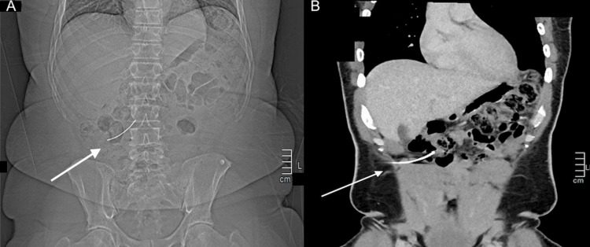
(A) Scout film before CT with the arrow pointing to the foreign body. (B) CT image with the arrow pointing to the foreign body. Figure 3 from Davison-Kerwood et al. (2025), Cureus · PMC11848218 (CC BY 4.0)
Why Your Suburban Lawn Is a Kinetic Energy Problem
It is tempting to file a three-inch belly wire under freak lightning strikes until you read the national ledger. In a 2018 American Journal of Emergency Medicine study, Harris and colleagues analyzed eleven inclusive years (2005–2015) of U.S. Consumer Product Safety Commission NEISS data and estimated 934,394 lawnmower-related emergency department visits—averaging roughly 84,945 visits per year (84,944 printed in the abstract). Because NEISS records emergency numerators without tracking nationwide mowing hours as a denominator, nobody can quote your personal per-Saturday odds. What the numbers prove is industrial scale, and Davison-Kerwood and colleagues note that ejected wood, metal, or glass projectiles account for 3% to 17% of all mower injuries—trauma resembling battlefield shrapnel.
The physics requires zero conspiracy. Rotary mower blades do not snip grass like scissors; they obliterate it through brute kinetic impact, blade tips whipping past 200 miles per hour inside an aerodynamic vortex designed to suck turf upward. Kinetic energy scales with velocity squared (½mv²), meaning a virtually weightless sliver of rusty wire absorbs ferocious energy on contact. The case report documents zero mower defects, zero missing guards, and zero negligence by the 48-year-old patient—a crucial boundary, because thick turf hides debris even from careful operators. Yet across everyday backyards, CPSC and CCOHS guidance hammers the Swiss-cheese layers that actually stop bullets before they fire: walk the yard first to starve the blade of ammunition, never bungee-cord a clogging discharge deflector open (a classic normalization-of-deviance trap that literally aims the barrel at your torso), shut blades completely off before people or pets cross the hazard zone, and treat sturdy boots and safety glasses as the final slice of cheese—never armor capable of stopping 200-mph wire.
RED FLAGS · SURFACE LIES & SHRAPNEL RULES
When Intact Skin and Calm Monitors Mean Nothing
Sudden, severe abdominal pain or breathing difficulty after operating power equipment requires immediate emergency care—even if your skin shows zero cuts, zero bruises, and zero blood.
Never convert spotless skin or a reassuring first hour into a DIY wait-and-see overnight window; normal vitals and early blood counts cannot rule out peritoneal violation or delayed peritonitis.
If an object is visibly embedded in the skin, leave it untouched so it continues tamponading injured vessels, and never probe tiny puncture holes at home with fingers or tweezers.
Always deliver a blunt, truthful exposure history in triage—saying “I felt a sharp strike or sting while mowing” keeps clinicians from anchoring solely on gallstones or muscle strain.
✂ FIRST 60 SECONDS · SUSPECTED MOWER PROJECTILE STRIKE
KILL THE ENGINE & STEP CLEAR: Release the safety bail immediately so the 200-mph blade stops spinning completely before you inspect yourself or let anyone approach the deck.
IGNORE SPOTLESS SKIN—CALL FOR EMERGENCY CARE: Following UK NHS abdominal-pain guidance, treat sudden severe abdominal pain or breathing trouble as an immediate emergency even when there is zero blood or bruising.
LEAVE EMBEDDED OBJECTS & TINY PUNCTURES ALONE: Never yank out a visible wire (it may be tamponading a torn blood vessel) and never probe a pinpoint hole with unsterile fingers or bathroom tweezers.
HAND TRIAGE THE EXACT MACHINERY HISTORY: Tell clinicians plainly that you felt a sudden strike or sting while mowing—even if you are unsure what hit you—so they look past normal early labs and gallbladder mimics.
DE-ARM THE LAWN BEFORE NEXT SATURDAY: Per CPSC and CCOHS guidance: walk the grass for wire/rocks first, keep all factory guards intact (never bungee the deflector up), clear bystanders/pets, and wear safety glasses and boots.
CHAPTER 25 · FILE № 140 · Ep 2624
The Postage-Stamp Burn That Locks a Toddler’s Fingers
Why a quiet floor-level belt behind an adult runner’s headphones acts like 10-mph asphalt on toddler knuckles, why a tiny 0.3% burn with minimal blood hides full-thickness joint trauma, and how to separate referral-center percentages from household reality.
Ten-Mile-Per-Hour Asphalt Parked Beside the Toy Box
Open-concept interior design loves putting adult machinery and toddler playrooms inside the same drywall rectangle. A home treadmill parked in a living-room corner looks harmless enough—until you translate its physics. Its textured PVC or rubber belt grips shoes like continuous 10-mile-per-hour asphalt running inches off the floor, wrapping into tight rear-roller pinch points directly behind an adult whose eyes are locked forward on a console or television, whose ears are drowned out by motor drone, heavy footfalls, and headphones, and whose balance makes turning around mid-stride impossible.
In a 2021 Frontiers in Pediatrics retrospective series from a specialist burn and reconstructive hospital in Chongqing, China (2015–2019), Zhang and colleagues audited 46 hospitalized children—24 boys and 22 girls—with a mean age of just 3.5 years. Forty-four of the 46 injuries happened at home; only two occurred in public gyms. At three and a half, mobility outruns hazard perception while neurological withdrawal reflexes remain measurably slower than an adult’s, leaving small fingers trapped against the moving grit longer before the brain yanks them back.
Here sits the visual decoy that misleads parents and busy triage desks alike: the mean affected body surface area was only 0.3%—three parts in a thousand (0.003), roughly one postage stamp. Worse, frictional heat literally cauterizes small capillaries as the belt grinds like a belt sander, suppressing the dramatic bleeding that normally triggers rapid surgical escalation. On a toddler’s thigh, a postage-stamp scrape earns a cartoon bandage. On a three-year-old’s finger—where mere millimeters separate thin epidermis from flexor tendons and fluid-sealed articular joint capsules—every injury in this hospitalized cohort reached at least deep dermal depth, and many reached full thickness.
FORENSIC INFOGRAPHIC · HOME FRICTION PINCH TRAP
Why a 3-MPH Treadmill Belt Burns Deeper Than a Kitchen Stove
A toddler’s palm trapped at the rear roller gets sand-papered and superheated by continuous belt friction—turning seconds of contact into deep full-thickness palmar burns.
Shrink-Wrap Scars, Referral Math, and Denominators That Refuse to Mix
When the skin heals shut, the real clock is often just warming up. Healthy hand skin weaves collagen into an elastic basket weave that glides over knuckles; deep friction burns force emergency repair that dumps stiff, disorganized scar bundles across the joint. Over months, that scar cools and tightens like industrial shrink-wrap hit with a heat gun over a door hinge, pulling fingers into mechanical scar contractures. Across the Chongqing cohort, 26 children had scar contractures—yet reading that 26/46 (56.5%) figure as every injured child’s future odds commits a classic denominator felony.
Look closely at who walked through the specialist doors: 20 children arrived with acute wounds, 7 arrived with early complications like suspected infection after local clinic dressings, and 19 were referred months later specifically because they already had established contractures. Among the 27 acute or early-complication cases, 6 received professional dressings (3 developed contractures) and 21 underwent surgical reconstruction such as full-thickness skin grafts, some assisted by hospital negative-pressure vacuum dressings (4 developed contractures). Because clinicians assigned worse wounds to surgery rather than flipping coins, that non-randomized 19%-versus-50% split cannot prove universal surgical superiority. Likewise, the reported 90% full-range-of-motion success rate applied only to the 20 children who completed contracture-release operations (6 were still awaiting care)—never to all 46 patients.
Unit discipline protects sanity everywhere in this dataset. Forty-six children sustained 48 injured hands (two bilateral) and 116 injured fingers; the middle finger took 42 hits—36.2% of injured fingers (42/116), NEVER 91% of children (42/46). Even evening dinner-to-bedtime clustering covered only the 27 children (58.7%) with reliable timing recall. Historically, Borschel and colleagues’ 2003 Journal of Trauma series reviewed 9 children with 14 treadmill injuries (1.56 per child), of whom 2 (22.2%) needed operations—and Zhang’s paper even printed a typo calling 9 cases 9.6% when 9/46 is 19.6%. Different decades and referral filters cannot be welded into one universal household risk percentage.
EXHIBIT A · CLINICAL EVIDENCE · CC BY 4.0
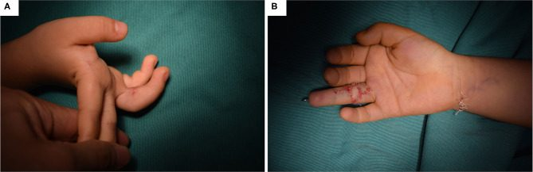
Scar contracture in a rain finger and its corresponding management. (A) The scar contracture occurred in the proximal interphalangeal joint of the ring finger, with 45 degrees. (B) The Z-plasty scar release and FTSG, as well as the Kirschner wire internal fixation. Figure 3 from Zhang et al. (2021), Frontiers in Pediatrics · PMC7928388 (CC BY 4.0)
Closed Doors, Dead Plugs, and Why Kitchen First Aid Makes Burns Worse
Official guidance from the ACCC, New South Wales government, UK HSE, and NHS converges on one blunt engineering truth: verbal rules (“stay back!”) fail against toddler curiosity and runner blind spots. Active physical separation works—ideally a dedicated room with the door closed and locked from the inside while running. In open-concept homes without a lockable door, active separation requires a verbal handoff to a second adult supervising the toddler in a separate zone, pausing the belt the instant that adult leaves even for thirty seconds. Keep factory guards and emergency stop lanyards intact—never build DIY wooden roller shields that create tighter pinch points or overheating hazards—and unplug the treadmill from the wall and remove safety keys when idle so a stationary belt never morphs into an accidental motorized indoor slide.
If the barrier fails and a hand is physically trapped, call emergency services immediately and never pry bare hands into moving rollers or yank blindly against shear forces. If the child pulls free with any treadmill hand burn, skip the kitchen pharmacy and seek prompt professional medical evaluation under proper lighting—even for a dry, tiny scrape. Never apply ice (vasoconstriction chokes blood flow to already-starved dermal edges), never smear butter or home ointments that trap heat and seed bacteria into exposed joint capsules, never peel stuck synthetic fabric off raw skin, and never attempt home debridement or makeshift splints. Afterward, follow prescribed splinting and stretching strictly even once surface skin closes—because underneath, the shrink-wrap is still cooling.
RED FLAGS · TINY FOOTPRINTS & HIDDEN JOINT DEPTH
Why You Never Judge a Treadmill Burn by Size or Bleeding
Treat every treadmill friction burn on a child’s hand as potentially deep dermal or full thickness requiring prompt clinical evaluation—even when it looks postage-stamp small and barely bleeds.
Never rely on verbal warnings, clipping your emergency lanyard, or DIY wooden guards to let a toddler share a room with a running belt; enforce locked doors or an explicit second-adult handoff.
Never leave an idle treadmill plugged in with its activation key seated—toddlers read an inactive sloped belt as an indoor slide and can trigger full motor torque on the console.
Never put ice, butter, or household creams on a friction burn, pull melted fabric away, or reach bare hands into a trapped roller; call emergency responders for entrapment and stick rigorously to specialist rehab splints afterward.
✂ FIRST 60 SECONDS · CHILD HAND MEETS TREADMILL BELT
STOP POWER & CALL 911 IF TRAPPED: Pull the safety key immediately. If a hand or clothing is physically trapped in rollers, call emergency services and do NOT pry bare hands into moving parts or yank blindly.
SKIP ICE, BUTTER & HOME OINTMENTS: Never apply ice (it constricts blood vessels and deepens tissue death), butter, or household creams, never peel stuck clothing from skin, and never attempt home debridement or splints.
GET PROMPT PROFESSIONAL BURN ASSESSMENT: Per HSE and NHS child-burn guidance, have every treadmill hand friction injury examined promptly under clinical lighting—0.3% postage-stamp burns can reach tendons and joint capsules with little blood.
FINISH SPLINTING & REHAB AFTER SKIN CLOSES: Watch daily for redness, pus, or worsening pain, and follow specialist splinting and stretching strictly even after surface healing so hidden scar tissue does not lock the finger joints.
LOCK THE ROOM & PULL THE WALL PLUG: For future workouts, separate toddlers with a locked door or verbally confirmed second adult (pausing if supervision leaves), keep factory guards unmodified, and unplug with the key removed when idle.
CHAPTER 26 · FILE № 152 · Ep 2636
Normal Vitals, Negative Cultures, and the Wet Cement Turning a Thigh Into Soap
Why wet mortar feels like harmless driveway mud until it dissolves protein and melts fat for hours, how a sterile wound tricked a contrast CT into crying necrotizing infection, and why backyard acid neutralization violates thermodynamics.
A Developing Polaroid Masquerading as Flesh-Eating Bacteria
Familiarity is chemistry’s favorite accomplice. We walk on concrete sidewalks and mix bags of quick-set mortar in driveways without flinching, treating wet gray sludge like heavy mud. In a 2024 Cureus report by Zahoor and colleagues, a healthy 48-year-old Hispanic construction worker arrived at the emergency department with two days of gradual, throbbing pain in his upper medial left thigh, denying trauma, insect bites, fever, or chills. His initial vital signs were completely unremarkable, and the very first exam documented tenderness with zero erythema, zero fluctuance, and zero crepitus. Hours later, subsequent exams recorded an intensely red, swollen thigh—not because anyone lied, but because slow alkaline chemistry develops like a Polaroid photograph in real time.
Buried inside his history sat the linchpin: he had been processing cement wearing insufficient protective gear (the exact product, concentration, and spill route were not documented, leaving zero license to invent fault). Blood work returned qualitative leukocytosis and raised CRP (exact values unpublished). Contrast CT started with subcutaneous edema and reactive lymph nodes, then later escalated to alarming radiology prose: severe cellulitis, fasciitis, and myositis. A CT scanner maps swollen terrain brilliantly; it cannot tell whether bacteria or caustic alkali leveled the buildings. Unable to gamble on necrotizing infection, clinicians admitted him on heavy empiric IV antibiotics—vancomycin, piperacillin-tazobactam, and clindamycin—and watched large clear-fluid bullae erupt above a yellow, pus-like base.
Then every single blood and wound culture returned stubbornly negative (acknowledging that empiric antibiotics and surface swabs can also miss deep organisms). Plastic surgery finally broke the infectious mirage by recognizing saponified blisters alongside firm induration without fluctuance—literally subcutaneous fat reacting with strong alkali to turn into soap. Shifting to a probable diagnosis of caustic cement injury with liquefactive necrosis (no patch test, biopsy, or wound pH was performed), adjusting coverage to IV meropenem, and treating the wound as a chemical burn turned the tide: erythema and blisters improved over five days, bullae resolved by Day 10, and he discharged on Day 11 with seven-day oral clindamycin, Augmentin, topical mupirocin, and plastic surgery follow-up (post-discharge scarring or grafting outcomes unreported; his tailored regimen is never a take-home recipe).
Why Wet Cement Feels Harmless at 10 AM and Eats Through Skin by Dinner
Wet Portland cement hits pH 12–13. Unlike acid burns that sting instantly, caustic alkalis quietly saponify skin fats for hours inside damp boots or jeans—creating painless full-thickness ulcers.
Why Alkali Keeps Digging—and the Dublin Denominator Mess
Wet cement runs a brutal triple-threat chemistry set. First, dry cement is loaded with hygroscopic calcium oxide that greedily drinks worker sweat, triggering an exothermic reaction into calcium hydroxide and driving skin-surface pH to 10, 12, or even 14. Strong acids coagulate protein into a leathery barrier that can slow deeper spread; strong alkalis do the opposite, dissolving proteins and saponifying lipids into liquid sludge that burrows deeper into fascia and muscle for hours while pain stays deceptively muted. Second, gritty sand aggregates sand away the protective stratum corneum with every step. Third, trace hexavalent chromate ions penetrate the breached barrier, sparking Type IV allergic contact dermatitis and fluid-swollen spongiosis that flood the area with white blood cells and blisters.
This is no one-in-a-million freak event. In a 2007 retrospective audit of the Dublin National Burns Unit (1996–2005) by Alam and colleagues, 46 of 2,118 burn admissions (2.17%—a severity-selected hospital share, never general-population exposure risk) were cement burns. Reading the full six-page paper also uncovers a textbook denominator dilemma. The management table lists 38 surgical cases, 4 conservative, and 4 unknown (total 46): surgery happened in 38 of 46 overall (82.6%) or 38 of 42 known (90.5%)—directly contradicting body prose claiming all but four required surgery (which implies 42). Likewise, settings break down to 33 workplace, 6 DIY, and 7 unknown: 71.7% workplace overall versus 84.6% of 39 known—conflicting with the abstract’s 87% industrial and 13% domestic split. Messy chart records stay messy; what never wobbles is that the vast majority of burn-unit cement admissions end up in an operating room.
EXHIBIT A · CLINICAL EVIDENCE · CC BY 4.0
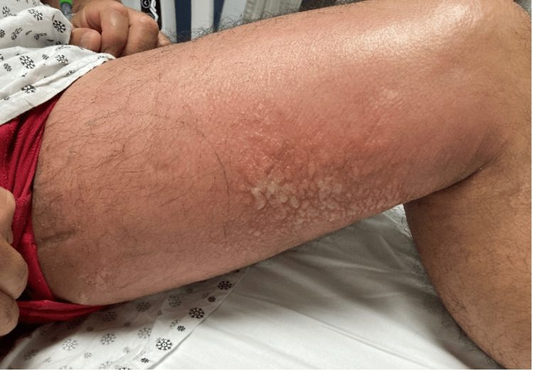
Blisters observed in the upper thigh Figure 1 from Zahoor et al. (2024), Cureus · PMC10917359 (CC BY 4.0)
Trousers Over Boots—and Zero Amateur Acid Chemistry
UK Health and Safety Executive (2025) rules put engineering controls first—less caustic mixes, longer handles, waterproof kneeling boards, and clean running wash stations—followed by waterproof, alkali-resistant PPE worn with basic respect for gravity. Always wear waterproof trousers OVER rubber boots, never tucked inside. Tucking pants into boots converts expensive footwear into caustic funnels trapping wet mortar and sweat directly against shins and thighs; barrier creams belong on intact skin before work, never smeared onto an open burn where ointment traps alkali inside the wound.
If exposure strikes, protect rescuers from barehanded contact, brush dry powder gently off before adding water (a trickle of water on dry calcium oxide spikes heat), remove contaminated clothes, and flood wet exposure immediately with copious cool or lukewarm running water—then go to the hospital regardless of normal vitals, bringing a smartphone photo of the bag label or Safety Data Sheet without hauling a dusty sack into the ER. Above all, ignore jobsite folklore—and even a stray sentence in Zahoor’s own case report mentioning weak acid or muriatic acid—that tells you to neutralize alkaline cement on skin with acid. Official NHS chemical-burn guidance strictly forbids acids, vinegar, solvents, or creams: acid-base neutralization on flesh is violently exothermic, cooking a thermal burn directly on top of liquefactive necrosis.
RED FLAGS · GRAVITY AND THERMODYNAMICS DO NOT NEGOTIATE
Wet-Cement Burn & First-Aid Hard Stops
Never tuck pants into rubber boots when working with wet mortar or concrete—tucked trousers funnel caustic slurry straight onto sweaty skin.
Do not wait for sharp pain or a fever to wash off wet cement: normal vital signs and mild early skin appearance routinely hide pH 10–14 liquefactive necrosis digging deeper for hours.
Never pour vinegar, muriatic acid, solvents, or barrier creams onto a cement burn—acid-base neutralization generates intense heat that adds a thermal burn on top of chemical destruction.
Brush dry powder off first, flush wet exposure with copious cool or lukewarm running water, snap a photo of the product label or Safety Data Sheet, and get immediate hospital assessment.
✂ FIRST 60 SECONDS · WET CEMENT ON SKIN OR INSIDE BOOTS
STOP WORK & STRIP CONTAMINATED CLOTHES: Do not finish the pour—protect helpers’ hands, pull off soaked boots, socks, and trousers right away, and brush loose dry powder off before wetting.
FLOOD WITH COPIOUS COOL RUNNING WATER: Irrigate exposed skin continuously with abundant cool or lukewarm clean water to dilute high-pH calcium hydroxide before it sinks deeper.
NEVER APPLY VINEGAR, ACID, OR CREAMS: Reject any advice to neutralize cement with vinegar or muriatic acid (violently exothermic heat injury) and never trap alkali beneath barrier ointments.
GET HOSPITAL CARE WITH A LABEL PHOTO: Seek emergency hospital assessment even with normal vitals and minimal early redness, bringing a phone photo of the cement bag or SDS without delaying care.
CHAPTER 27 · FILE № 161 · Ep 2645
Fifty-Four Grams of Calcium and a Bedside Scalpel
Why a painless, leathery industrial burn launched a silent fluoride heist against the heart’s electrical wiring, why 54 grams of IV calcium was only bailing water out of a leaking hull, and why your pain nerves are the worst chemical sensor in the plant.
The Burn That Leaves the Skin Behind
A hot skillet has the decency to stay where it touched you. Thermal burns are cruel, loud, and geographically honest: what blisters on the surface is the injury. Hydrofluoric acid plays by sneakier chemistry. In a June 2026 case report in Frontiers in Toxicology, Xiao-Kun Tian and colleagues documented a previously healthy 40-year-old factory worker who suffered an accidental workplace exposure to 40% hydrofluoric acid. The medical record does not report which pipe, valve, or safeguard failed on the floor, and emergency teams had zero seconds to play factory detective. When the ambulance doors opened, his body was already staging a multi-organ walkout: blood pressure sagging at 99/56 mmHg, heart hammering at 121 beats per minute, and oxygen saturation down to 85%.
Across 20% of his total body surface area, including his shoulder and leg, the acid left deep partial- to full-thickness burns—leathery, dark gray tissue completely stripped of sensation. That numbness is part one of hydrofluoric acid’s two-part heist. Hydrogen ions liquefy outer cells and kill surface nerve endings on contact, silencing the body’s alarm bell. Part two travels beneath the waterline: tiny, aggressively penetrative fluoride ions slip straight through damaged tissue into the bloodstream, hunting down endogenous calcium and magnesium and locking them into insoluble salts such as calcium fluoride.
Because cardiac muscle depends on tightly timed flows of calcium to contract and magnesium to keep ion channels disciplined between beats, dumping free fluoride into circulation turns the heart’s wiring into static. His admission ionized calcium sat at 0.48 mmol/L against a laboratory lower limit of 1.15 mmol/L—roughly 42% of the minimum normal threshold—alongside magnesium of 0.55 mmol/L, arterial pH of 7.19, bicarbonate of 14.9 mmol/L, and lactate screaming at 9.3 mmol/L. Twelve separate times his ventricles collapsed into quivering ventricular fibrillation, forcing clinicians to shock him back twelve times. (In an editorial wrinkle worth preserving, the paper references a five-hour window in one section and an eight-hour timeline in another; either way, his heart kept trying to quit.)
Bailing Out a Sinking Boat With Fifty-Four Grams
Standard IV calcium replacement for a mild deficiency runs one or two grams. On day one alone, doctors intubated this worker, put him on mechanical ventilation, and pushed an astonishing 54 grams of intravenous calcium gluconate into his veins—flooding the bloodstream with decoy calcium so fluoride would bind the infusion instead of the heart’s remaining supply. Even so, IV replacement alone has a fatal flaw: it only neutralizes fluoride that has already reached circulation. The necrotic, acid-soaked skin remained attached like a wet sponge dripping poison back into his veins.
At just two hours post-injury, far too hemodynamically fragile for general anesthesia, surgeons pivoted to radical source control: bedside tangential excision right in the intensive care unit under local anesthesia, physically shaving off the fluoride-laden dead tissue while critical care teams kept his heart firing. They immediately sealed the raw wound bed under negative pressure wound therapy, using continuous vacuum suction to haul residual fluoride-bearing exudate into a canister before it could enter circulation. He spent 66 days hospitalized; at one-year follow-up his wounds were healed with full joint mobility and no contractures, though with expected hypertrophic scarring and dyspigmentation—a remarkable individual survival, not a magic-bullet trial isolating surgery from 54 grams of calcium and twelve defibrillations.
Reading those ICU charts also demands unit literacy. An ionized calcium at 42% of the lower reference limit is a speedometer, not a fuel gauge: roughly 99% of human calcium sits locked inside bone and teeth, so he had not dissolved half his skeleton—parathyroid hormone simply could not mine bone fast enough to beat fluoride chelation. Likewise, Figure 2B tracked urinary fluoride in milligrams per gram of creatinine to cancel out wild swings from IV fluid dilution. Although the caption called clearance a continuous decline, plotted points bounced upward around day six or seven before falling again, reflecting messy multi-compartment release rather than a tidy straight line.
EXHIBIT A · CLINICAL TIMELINE · CC BY 4.0
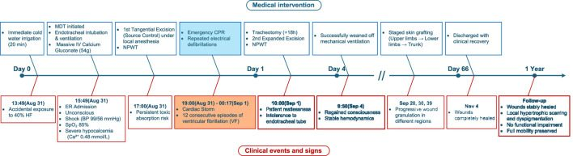
Clinical timeline of the multidisciplinary rescue and surgical interventions for the severe hydrofluoric acid burn patient. The timeline details the progression of clinical events (below the axis) and corresponding therapeutic interventions (above the axis) from the time of… FIGURE 1 from Tian et al. (2026), Frontiers in Toxicology · PMC13271673 (CC BY 4.0)
Ghost Patients, Missing Denominators, and Why Safety Lives Upstream
How often do industrial splashes escalate like this? A decade-long Texas Poison Center Network audit by Mathias B. Forrester covering 2000 through 2010 logged 1,007 hydrofluoric acid reports, including 409 work-related calls. Because poison hotlines rely on voluntary callers without an exposed-worker denominator, those calls cannot yield a true per-shift injury rate—and Table 3 hides a classic headline trap. While 211 calls (51.6%) were grouped as known or expected non-serious, only 169 had observed outcomes (25 no effect, 144 minor); the other 42 were unfollowed predictions. Likewise, the 194 serious calls combined 128 observed injuries (114 moderate, 12 major, 2 deaths) with 66 unfollowed guesses, plus 4 unrelated reports. And those 409 workers logged 437 exposure routes—284 skin, 86 inhalation, 49 eye, 15 ingestion, 3 other—because pressurized sprays hit arms, eyes, and lungs at once rather than conjuring 28 ghost workers.
That volatility is why the NIOSH hierarchy of controls puts personal protective equipment dead last. Safety starts with qualified chemical engineers evaluating elimination or substitution—never unsupervised shop-floor swaps—followed by passive engineering enclosures and fume scrubbers, then Cal/OSHA administrative protocols: clear pipe labels, floor-accessible safety data sheets, chemical-specific training, and advance coordination so local hospitals actually stock massive calcium gluconate reserves. When valves still fail, CDC emergency guidance draws a bright line: never wait for pain or redness, never charge barehanded into a spill to play hero, never haul leaking containers or soaked clothing into an ambulance, and hand paramedics the safety data sheet—strictly separating confirmed facts from panicked guesses.
RED FLAGS · SILENT FLUORIDE
Why Hydrofluoric Acid Defeats Pain and Dish Gloves
Numb skin or absent early pain never clears a suspected HF exposure—surface nerves die early while penetrative fluoride ions quietly strip circulating calcium and magnesium.
Standard latex, nitrile, or hardware-store gloves fail against concentrated HF; chemically rated PPE is the fragile last line behind engineering barriers and ventilation.
Never enter an active chemical spill without chemical-specific PPE, never throw water or a mop on an unknown leak, and never bring contaminated clothing or containers into an ambulance or ER.
Do not mistake easing pain on day three for systemic clearance; electrolyte instability requires continuous hospital lab verification and individualized occupational follow-up.
✂ FIRST 60 SECONDS · HYDROFLUORIC ACID EXPOSURE
ACT WITHOUT WAITING FOR PAIN: Suspected HF splash or vapor exposure triggers immediate emergency activation—even if skin looks pale, numb, or completely painless.
STAY OUT OF THE HOT ZONE: Never rush into a chemical leak or grab acid-soaked clothing barehanded without chemical-specific PPE, and never mop or splash water on an unknown spill.
SEND THE SDS, NOT THE BOTTLE: Keep leaking containers and contaminated garments out of ambulances and ER waiting rooms; hand responders the Safety Data Sheet and state verified facts, never guesses.
ENGINEER THE HAZARD AWAY: Follow NIOSH controls upstream—enclosures, ventilation, visible pipe labels, floor-level SDS binders, and pre-coordinated local hospital calcium gluconate stockpiles.
CHAPTER 28 · FILE № 164 · Ep 2648
Unbroken Skin, Snapped Windpipe
Why human reaction time loses to rotational torque before your brain finishes seeing the snag, why 'intact' carotid arteries on an autopsy table still starved the brain during compression, and why telling paramedics 'choking' launches the wrong rescue.
When Soft Cotton Becomes a High-Torque Cable
Hazards that spark or spin saw teeth advertise honestly: nobody drapes a towel over a circular saw. Rotating axles, belts, and pulleys run a quieter scam. We associate soft cloth with comfort, never with hundreds of foot-pounds of torque—yet the instant loose fabric brushes a turning shaft, physics reclassifies it into a high-tensile tether spooling faster than human nerves can fire. Vigilance is not sloppy here; it is mathematically too slow.
In an August 2018 Egyptian Journal of Forensic Sciences study, Meriem Gharbaoui and colleagues documented four accidental occupational ligature fatalities in northern Tunisia. Case 1 was a 21-year-old farmer working outdoors whose neck towel entangled in his tractor axle—strictly an axle per the report, with no verified data on guards or the chore underway—killing him at the scene. Three other deaths mapped the rotating-shaft spectrum: Case 2 (30-year-old woman, scarf in tractor plow drive), Case 3 (32-year-old man, towel in well drill pipe), and Case 4 (41-year-old man, scarf in combine harvester causing C5–C6 fracture-dislocation and cord contusion).
External examination of Case 1 delivered trauma medicine’s favorite lie: parchment-like friction bruising and a groove across lower neck and upper chest, yet completely unbroken skin. Stretchy human skin acts like a padded smartphone case dropped three stories—flawless screen outside, shattered motherboard underneath. Beneath Case 1’s intact epidermis lay subcutaneous emphysema (bubble-wrap air trapped in neck and chest soft tissues), hemorrhagic neck muscles, a ruptured trachea snapped at the third ring, and a ruptured esophagus.
What 'Intact' on a Steel Table Fails to Tell You
Case 1’s autopsy ledger hides a sharp vocabulary trap: carotid arteries, jugular veins, hyoid bone, thyroid cartilage, and cervical spine were all recorded intact. On a coroner’s table, 'intact' strictly means structurally untorn after death, never functionally open during compression. Step onto a running rubber garden hose and flow hits zero instantly; lift your boot five minutes later and the elastic hose springs back pristine. Resilient neck vessels flatten against the spine under high-torque tension—starving the brain and firing vagal cardiac reflexes—then bounce back untorn once tension releases.
Tight boundaries govern the rest of the paper too. Routine H&E microscopy showed congestion, conjunctival petechiae, and lung/brain edema—non-specific asphyxial signs that never identify a machine alone. Negative blood, urine, and gastric toxicology only clears the unlisted panel and detection limits that lab ran. And careful reading preserves two real-world peer-review slips: Case 4’s own paragraph notes a C5–C6 fracture and sentences later says the cervical spine showed no lesions, while the discussion assigns subcutaneous emphysema to Cases 2 and 4 though narratives record it in Cases 1 and 4.
Because autopsy papers carry 100% fatality selection bias, Singh, Kumar, and Shekhawat’s 2017 Chinese Journal of Traumatology study of 76 scarf-injury ER patients in northern India supplies the survivor side. Spoke wheels drove 35 cases (46.1%) and belt machines 22 (28.9%)—shares of injured arrivals, never per-ride risk without knowing millions of safe trips. Severity spanned 41 minor wounds, 12 major soft-tissue or head injuries, 14 fractures or dislocations, 6 mangled extremities or amputations, and 3 deaths (3.9%). And resist matching identical table counts: 35 spoke-wheel injuries and 35 hospital admissions appear in separate unlinked tables, never proving the same 35 individuals.
REFERENCE EXHIBIT · CT / IMAGING SCAN · CC BY 4.0
ILLUSTRATIVE REFERENCE EXHIBIT — Verified CC BY diagnostic figure from a separate peer-reviewed publication showing the same mechanism (not the index patient).
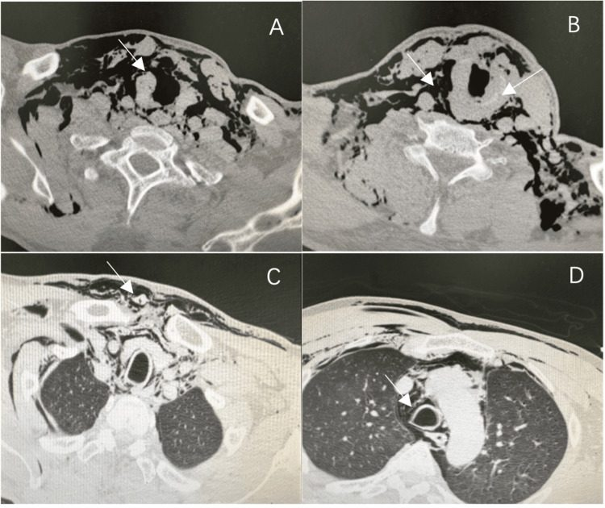
Preoperative CT imaging of the neck and chest(A) Airway CT demonstrating an irregular contour and deformity of the subglottic tracheal lumen. (B) CT showed a linear lucency through the cricoid cartilage, suggestive of cartilage fracture, with extensive subcutaneous emphysema in the… Figure 1 from Li et al. (2026), Cureus · PMC13178944 (Reference Case) (CC BY 4.0)
Guard the Steel, Lock the Energy, Never Say 'Choking'
If a safety plan depends on a tired human never letting a loose collar, headscarf, sweat towel, or modern ballistic-nylon ID lanyard drift near a spinning shaft, the architecture is already broken—and blaming traditional or heat-practical clothing misses the physics entirely. Current UK Health and Safety Executive guidance puts competent engineered machine guarding first, not homemade scrap sheet-metal tack-welded over a pulley, followed by formal lockout/tagout energy isolation before clearing any jam—bleeding off hidden electrical, hydraulic, pneumatic, and spinning flywheel inertia rather than trusting a wall switch or a coworker’s shout. Hair and clothing rules belong strictly as a backup layer, reinforced by reporting every snag near-miss before it draws blood.
When entanglement still happens, emergency protocols from Gloucestershire Hospitals NHS Foundation Trust override panic reflexes. Never grab caught clothing or reach into moving or stalled-under-tension equipment—torque turns rescuers into casualty two. Hit emergency stop, isolate energy if trained, and call emergency services stating machinery hazard and external neck compression—never casually call it 'choking,' which steers paramedics toward internal food-blockage maneuvers instead of crushed-airway, vascular, and cervical-spine trauma. Never let an adrenaline-numbed survivor with only a red neck stripe walk home: hidden airway edema can swell shut over an hour, and a hoarse voice warns of recurrent laryngeal nerve injury. Keep them still, skip water-swallow tests that can push fluid through an esophageal tear into the chest, and never rotate their neck to test range of motion.
RED FLAGS · TORQUE BEATS REFLEX
Entanglement Physics and Deceptive Neck-Trauma Traps
Never reach into moving or jammed machinery to pull free a snagging towel, scarf, sleeve, or nylon lanyard—hit emergency stop first or become the second tethered victim.
Unbroken skin and a minor red friction mark never rule out deep tracheal rupture, esophageal tears, vascular trauma, or progressive airway swelling masked by adrenaline.
Treat any hoarse or changed voice, breathing trouble, swallowing pain, confusion, or numbness after neck compression as an immediate emergency—never wait at home.
Tell paramedics the exact mechanism ('external neck compression by rotating machinery'), never 'choking,' and never give water or move the neck to test function.
✂ FIRST 60 SECONDS · MACHINERY CLOTH ENTANGLEMENT
KILL POWER—HANDS OUT: Never grab entangled cloth or pull the victim while machinery runs or sits jammed under tension. Hit emergency stop and isolate energy if site-trained.
REPORT EXTERNAL COMPRESSION: Call 911 immediately; report an active machinery hazard and external neck compression—never say 'choking,' which implies an internal food blockage.
NO WATER, NO NECK MOVEMENT: Keep the survivor still and calm. Never give water to test swallowing (risks mediastinal leak through a torn esophagus) and never rotate their head to check the spine.
REFUSE 'I FEEL FINE' CLEARANCE: Adrenaline masks torn cartilage and delayed throat swelling can close the airway over an hour; every neck-compression survivor needs urgent hospital evaluation.
CHAPTER 29 · FILE № 173 · Ep 2657
CRP Under Five, Negative Patch Tests—and an Arm Full of Quarantine Walls
Why a silent CRP never erases a visibly swollen hand, why standard DGEBA epoxy patch kits miss nearly one in five allergic workers, and why disappearing skin nodules are never exposure clearance.
The Silent Smoke Detector Above a Smoking Hand
Epoxy does not gently dry like watercolor; unhardened polyepoxides are chemically impatient pre-polymers itching to cross-link with hardeners—or, given half a chance, with proteins inside human skin. In 2016, Norwegian occupational physicians Stefan Roth and Anne Kristin Fell documented a 58-year-old industrial flooring veteran with a 25-year history split across concrete repair (1988–1992), a six-year break, and 15 consecutive years mixing primers and polyepoxide coatings on site with a mason’s trowel and only sporadic gloves and filter masks. In August 2013, that trowel sliced his right index finger while coated with unhardened epoxy.
Over ten days, redness, pain, and swelling climbed down his finger into his palm. By Day 20, when he saw his general practitioner, laboratory medicine delivered a masterclass in looking past the obvious: his C-reactive protein came back below 5 milligrams per liter—an inequality beneath the assay’s lower detection threshold, neither zero nor proof that his fiery hand was calm. CRP is made by the liver as a whole-body smoke detector; localized tissue inflammation can roar without waking the liver. A repeat CRP stayed under 5, wound swabs grew neither aerobic nor anaerobic bacteria, and internal-medicine ward blood work was simply noted as normal without printed intervals. Wound cleaning and two antibiotic courses including erythromycin failed to settle the swelling, while the patient reported feeling hardened foreign material retained deep in the cut—a telling clinical observation, though never chemically analyzed.
Just as the finger and palm began calming down, the battle relocated. Intensely itchy subcutaneous nodules measuring 1 to 3 centimeters wide, haloed by redness and swelling, marched up the back of his right forearm toward his elbow. Two biopsies of the same arm caught two distinct immune playbooks: the first showed granulomatous inflammation without necrosis or vasculitis—macrophages fusing into cellular quarantine walls around a stubborn trigger, never previously reported after epoxy contact—while the second revealed lymphohistiocytic infiltration with mild eosinophils, the signature of allergic inflammation. Specialized PAS and Ziehl-Neelsen stains found no tuberculosis, bacteria, or fungi, politely explaining what the arsonist was not while refusing to print a name.
When the Bumps Leave and the Sneezing Begins
Away from work, the visible forearm nodules vanished six months after the trowel cut, though fierce itching lingered over the old battleground. Mistaking clearer skin for biological clearance, he returned to mixing and spreading epoxy floors. Almost immediately, a different organ system rebelled: relentless sneezing and a pouring nose severe enough to wreck his workday, easing markedly whenever he left the site on weekends or time away—the textbook temporal footprint of occupational rhinitis, without asthma, anaphylaxis, or respiratory collapse.
Once more, diagnostic batteries came up empty-handed. Standard patch testing including an epoxy series was negative; inhalation panels IP6 and IP7 were negative. Between two clinic visits, his total serum IgE rose from 325 to 435 units—a 110-unit or 33.8% relative numerical increase with no assay brand or reference interval printed—signaling generalized immune agitation rather than proving he was 34% more allergic to epoxy, especially since epoxy-specific IgE was never tested. A specialist center proposed a specific inhalation challenge, which the worker reasonably declined given hours of travel and justified fear of worsening his symptoms. Honest science preserves the gaps: neither subcutaneous particle travel up the arm, nor dermal-to-respiratory cross-route sensitization, nor one exact culprit chemical in the concrete-primer-solvent soup was ever proven, though his nasal symptoms improved after avoiding epoxy.
Historical context from Kristiina Aalto-Korte and colleagues’ 2015 Contact Dermatitis abstract of 209 confirmed occupational epoxy contact allergy cases explains why single-resin tests keep whiffing. First comes the denominator trap: 41 painters (19.6%) and 19 floor layers (9.1%) are shares of an already-allergic clinic cohort—like counting Civics inside a transmission shop—not general workforce incidence. Second comes chemistry: roughly 82% reacted to standard DGEBA resin, leaving about 18% sensitized to other components such as amine hardeners, reactive diluents, or proprietary additives. Add overlapping hand/arm (69%) and facial (60%) dermatitis summing to 129%, and it becomes painfully clear why clearing a bucket based on one standard patch kit is chemical wishful thinking.
REFERENCE EXHIBIT · ULTRASOUND / ECHO · CC BY 4.0
ILLUSTRATIVE REFERENCE EXHIBIT — Verified CC BY diagnostic figure from a separate peer-reviewed publication showing the same mechanism (not the index patient).
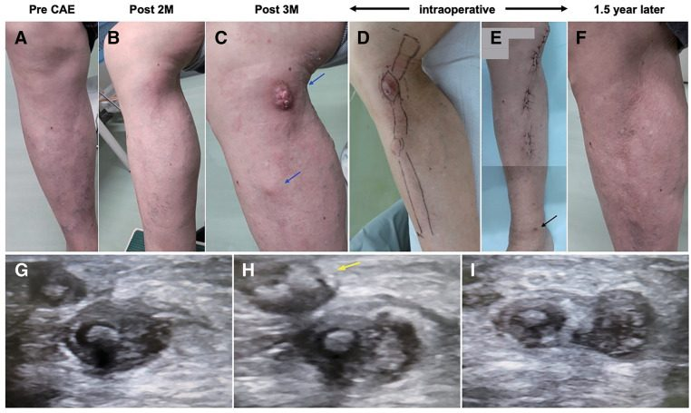
Preoperative clinical and ultrasound findings of the right lower leg. Preoperative clinical courses are shown in (A–F), and the ultrasound findings are shown in (G–I). (A) Before CAE. (B, C) Slight phlebitis in the right lower leg along the glue-occluded GSV 2 months after CAE. The… Fig. 1 from Goto et al. (2026), Annals of Vascular Diseases · PMC13184831 (Reference Case) (CC BY 4.0)
Brakes Before Airbags in the Epoxy Bucket
Waiting downstream for negative patch kits to sort out a multi-part resin cocktail is a losing strategy. Under the UK Health and Safety Executive’s hierarchy of controls, personal protective equipment like gloves and respirators is the car’s airbag—the last line of defense after elimination, substitution with less reactive formulations, and engineering controls like local exhaust ventilation or automated mixing. Even glove selection is chemistry rather than hardware-store guesswork, governed by breakthrough and permeation rates against specific amine hardeners. And as the 2023 CPWR Epoxy Resin Systems hazard alert (hosted archivally on the CDC website) underscores, workers and doctors need exact site product inventories rather than blind guesswork—without projecting unproven employer faults onto a Norwegian record that contained no workplace audit.
When skin lumps, hand inflammation, or work-tied nasal symptoms appear, bring clinicians raw observations—the trowel cut, exact site products, and relief away from work—rather than self-diagnoses. Never run DIY skin patch tests or walk back into fumes to test yourself, respect health surveillance as an alarm that workplace controls need review, and separate debilitating rhinitis from true NHS breathlessness emergencies demanding an ambulance.
RED FLAGS · SILENT TESTS NEVER CLEAR CHEMICAL EXPOSURE
Reading Workplace Reactions When the Assay Shrugs
Never treat a CRP below 5 mg/L, negative wound swab, or negative standard epoxy patch kit as proof a workplace exposure is harmless—unhardened epoxy systems contain multiple hardeners and additives beyond DGEBA.
Never interpret vanishing skin bumps as automatic safe clearance to return to the same chemical vapors, and never attempt DIY patch tests or deliberate re-exposure challenges.
Carry exact product names and safety data sheets plus raw work-versus-home symptom timelines to occupational medical visits so specialists know what was actually in the bucket.
Distinguish work-linked rhinitis from acute respiratory emergencies—call an ambulance immediately (never self-drive) for severe breathlessness, broken sentences, blue-gray lips, or sudden confusion.
✂ FIRST 60 SECONDS · UNHARDENED EPOXY INJURY OR WORK FLARE
GET PROMPT MEDICAL & OCCUPATIONAL REVIEW: Have persistent cut swelling, subcutaneous nodules, or work-linked sneezing/rhinitis evaluated professionally—never wait for a high CRP or positive patch test to validate visible symptoms.
BRING THE EXACT CHEMICAL INVENTORY: Photograph product labels and bring safety data sheets for every resin, amine hardener, primer, and diluent on site so occupational doctors can test beyond standard DGEBA kits.
SKIP DIY PATCHES & SELF-RECHALLENGES: Never dab epoxy on skin or re-enter unventilated rooms to 'prove' sensitivity—and do not treat fading skin lumps as medical clearance to resume exposure.
APPLY CONTROLS BEFORE GLOVES: Work through HSE hierarchy—elimination, substitution, local exhaust ventilation, then chemically rated PPE—and call emergency services immediately for severe breathlessness or blue-gray lips.
CHAPTER 30 · FILE № 176 · Ep 2660
The Building Frame Stood Tall—While the Plumbing Was Ripped Out
Why a fracture-free radiograph is one of emergency medicine’s cruelest visual illusions, why two hospital transfers meant the trauma network worked, and why 9 out of 24 in 1981 was never a surgical salvage rate.
An Intact Skeleton Attached to Dying Tissue
Within a week of slipping on a wedding band, the metal vanishes from your hazard radar; heavy machinery, however, never develops sentimental blind spots. In January 2021, Horn and colleagues reported in Clinical Practice and Cases in Emergency Medicine a 41-year-old left-hand-dominant heavy machine operator who caught his wedding ring in machinery, injuring his left fourth digit. The record omits the exact machine model, task, operating speed, and guarding status—intentional clinical boundaries forbidding fictional workshop reconstructions or invented employer blame.
At the initial community emergency department, clinicians faced a severe circumferential degloving injury just distal to the proximal interphalangeal joint—skin and subcutaneous fat forcibly stripped from fascia and bone by 360-degree metal traction. They stabilized him properly with intravenous hydromorphone for severe pain, prophylactic cefazolin, and a tetanus update before transferring him for orthopedic assessment. At that first receiving hospital came the classic visual fakeout: the hand exam revealed complete tendon and neurovascular disruption, ischemic distal tissue, and the deformed ring still clinging near the final joint—yet X-rays showed zero bone fractures.
An X-ray is a building inspector who only grades the two-by-four framing. The beams stood whole while a tornado had shredded the plumbing (arteries and veins), snapped the electrical wiring (nerves), and ripped out the elevator cables (tendons). Recognizing that bone continuity and tissue viability inhabit completely separate universes—and that repairing sub-millimeter digital vessels demands microscopes, hair-thin sutures, and round-the-clock microsurgeons—the emergency team coordinated a peer-to-peer transfer to a tertiary microsurgery center. Two transfers did not represent bungled care; they represented a trauma network honestly matching a microscopic vascular emergency to the exact facility built to evaluate it.
FORENSIC INFOGRAPHIC · RING AVULSION PHYSICS
Why a Metal Wedding Band Strips Skin & Vessels While the Bone Stays Intact
Rigid gold, titanium, or tungsten rings never snap when snagged on a ladder, truck bed, or basketball rim—transferring your entire body weight into a circumferential shear tear.
Pink Versus Useful—and the Missing 1981 Denominator
Smartly, the first two hospitals had left the deformed wedding band untouched to avoid extra tissue trauma or transfer delay. At the tertiary center, specialists performed a digital nerve block and removed the ring with mechanical cutters, revealing the full mechanical toll: a complete laceration of the central slip extensor tendon (the crane cable straightening the middle knuckle), complete transection of both radial and ulnar neurovascular bundles running along each side of the digit, dislocations of both the PIP and DIP joints (ligament hinges blown cleanly off unbroken bone rods), and dusky oxygen-starved tissue at the tip.
Microsurgery can perform marvels, yet keeping a finger pink is not the same as keeping a hand useful. Even after heroic vessel bypasses, a dominant-hand ring finger lacking its central slip, sporting two blown arthritic joints, and missing sensation risks turning into a stiff, permanently bent, burn-prone hazard around heavy equipment. Through shared decision-making with the patient and his family, the team proceeded with amputation. Equally honest is the authors’ explicit counterfactual uncertainty: no one can know whether faster routing or direct transport would have saved the digit, because violent traction can crush vessel walls beyond salvage in the very millisecond of impact.
That same nuance rescues the landmark 1981 Journal of Hand Surgery abstract by James Urbaniak, John Evans, and Donald Bright from casual misreading. Reviewing 24 acute ring avulsion injuries, they reported 9 successfully revascularized fingers—exactly 3/8, or 37.5%. Yet 24 acute injuries reviewed is NOT 24 attempted operations; the denominator of attempted surgeries is missing from the abstract. Some of the remaining 15 may have been unattemptable upfront while others needed only simple closure, meaning 37.5% is neither an operative failure tally nor modern personal salvage odds. Urbaniak’s enduring gift was proving revascularization possible and organizing three clinical circulation classes (adequate perfusion, inadequate perfusion needing vessel repair, and complete amputation or severe degloving)—a specialist framework relying on nerve blocks and handheld Doppler, never a bathroom-mirror grading chart.
EXHIBIT A · CLINICAL EVIDENCE · CC BY 4.0
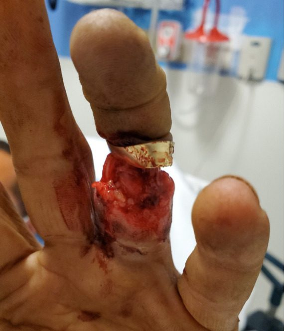
Volar view of a severe degloving ring avulsion injury. Image 1 from Horn et al. (2021), Clinical Practice and Cases in Emergency Medicine · PMC7872613 (CC BY 4.0)
Seatbelts, Machine Guards, and the Ice-Pack Trap
Because post-snag salvage hinges on violent physics no surgeon controls, prevention lives upstream. UK Health and Safety Executive machinery guidance is crisp: remove rings and loose jewelry before work—yet personal removal is the car’s seatbelt, never permission to remove the brakes. True industrial defense stacks Swiss-cheese layers: physical machine guards keeping hands out of danger zones, scheduled maintenance, competent training, floor supervision, fearless hazard reporting, and pre-mapped emergency referral plans so panicked bystanders never play dispatcher.
If a snag happens at work or during weekend DIY, NHS finger-injury guidance sets zero bingo-card requirements: any single sign—a blue or numb digit, an odd angle, or visible bone—demands immediate emergency care, even when skin remains attached and bones feel unbroken. Never drive yourself (pain and shock trigger fainting), never yank a deformed ring off a traumatized finger, never test blood flow with a home pulse oximeter or nail-bed press, never sit at home counting imagined ischemic hours, and crucially, never pack a blood-starved finger in ice—cold triggers severe vasoconstriction, clamping down the few fragile vessels left and speeding irreversible tissue death.
RED FLAGS · UNBROKEN BONE NEVER GUARANTEES BLOOD FLOW
Protecting a Snagged Finger Before and After the Catch
Treat a blue or numb finger, odd knuckle angle, or exposed bone after any ring snag as an immediate emergency—even if skin stays attached and bones appear unbroken.
Never yank a caught or deformed ring off a severely injured digit yourself, never drive yourself to the hospital, and never pack a compromised finger in ice or hot water (ice clamps remaining blood vessels shut).
Never clear a snagged finger using a home pulse oximeter, nail-bed color check, or imagined ischemic countdown clock—a bruised capillary can fool consumer sensors while main arteries lie severed.
Stack upstream defenses before touching equipment: remove rings and loose jewelry, insist on intact physical machine guards and maintenance, and maintain pre-planned workplace emergency routing.
✂ FIRST 60 SECONDS · RING CAUGHT IN MACHINERY OR FENCE
LEAVE THE RING & SKIP THE ICE PACK: Do not tug a deformed ring off a severely injured digit, and never apply ice or hot water—pulling can snap surviving vessels while ice triggers vasoconstriction that accelerates tissue death.
DO NOT SELF-DRIVE OR HOME-TEST: Pain and shock can make you faint behind the wheel, and a home pulse oximeter or nail-pinch check cannot clear transected digital arteries. Call emergency services or get a driver immediately.
HAND OFF RAW MECHANISM & TIMELINE: Tell responders what machinery or object caught the ring, exact hand and finger affected, and observed changes such as immediate numbness, blue color, or awkward knuckle angle.
PAIR RING REMOVAL WITH REAL GUARDS: Take rings off before operating machinery, DIY tools, or climbing—while remembering jewelry removal is your seatbelt and physical machine guarding remains the brakes.
CHAPTER 31 · FILE № 186 · Ep 2709
Hot Tap Water, a Basement Sink, and the Reef That Breathed Back
Why a glass aquarium never domesticated the ocean, why a blood oxygen number rising from 65 to 76 proved his lungs were failing, and why your nose cannot smell a marine aerosol waiting in the basement.
The Glass Box Does Not Sign a Peace Treaty
Aquarium owners love the comforting illusion of four glass walls, programmable reef lighting, and a humming canister filter. We buy a piece of the ocean, install a timer, and assume it has agreed to behave like living-room furniture. In a 2015 Case Reports in Emergency Medicine dispatch by Hall and colleagues, a 53-year-old hobbyist stood at his basement utility sink on a routine weekend, running hot tap water over an exotic Zoantharia coral and scrubbing it barehanded without gloves or a mask. Within one to two hours, the ocean returned the favor: a dry non-productive cough, shortness of breath, sudden fever, chills, and severe muscle aches.
The hazard did not stay politely at the sink. His wife, in an adjoining basement room, and his daughter, upstairs on the first floor, developed similar though milder respiratory symptoms. Reading that detail instantly tempts the human brain to draw neat blast-radius rings on a floor plan—ground zero at the drain, medium dose down the hall, light dose up the stairs. Resist that geometry. Nobody stood in the house with air samplers measuring aerosol gradients across unknown HVAC drafts. The family’s rooms are clinical history, never a measured safe-distance chart. Three people shared one roof and breathed one unmeasured plume.
FORENSIC INFOGRAPHIC · AEROSOLIZED MARINE TOXIN
Why Boiling a Home Reef Rock Turns Your Kitchen Into a Palytoxin Cloud
Certain zoanthid and Palythoa corals harbor palytoxin—one of nature’s deadliest non-protein poisons. Hot water, bleach, or wire brushing launches breathable toxin mist through the whole house.
Ninety-Six Percent, Climbing Numbers, and the Denominator Rule
At the emergency department, the finger probe tried its favorite parlor trick: 96% oxygen saturation on room air. In a clinic waiting room, 96% earns a gold star. Next to his other vitals—heart rate hammering at 112 beats per minute, blood pressure 155/83 mmHg, respiratory rate 18, oral temperature 102.6°F, and bilateral expiratory wheezes whistling through both lungs—96% was merely the snapshot of a body sprinting flat-out to hide failing gas exchange. His initial portable chest X-ray looked normal, cardiac troponin and BNP were simply noted as normal without printed figures, and his white blood cell count climbed from 14,000 to 22,000 by Day 3 (printed in the paper with zero units or reference ranges—preserved raw without inventing missing lab context). By Day 2 he was coughing up blood; by Day 3 his X-ray showed worsening bibasilar opacities as fluid and debris pooled in both lung bases.
Then came a classic forensic reading test inside the arterial blood gases. On a 4-liter-per-minute nasal cannula—a wall-dial flow rate that mixes unpredictably with room air and cannot pin down true inspired oxygen—his PaO₂ was 65 mmHg. Later, on a face mask blasting 85% FiO₂, his PaO₂ printed 76 mmHg while the prose awkwardly claimed his oxygen level decreased further. Never silently edit a source’s numbers; apply the denominator rule instead. Dividing 76 mmHg by 0.85 yields a P/F ratio of roughly 89.4 mmHg—compared with 400 to 500 in healthy lungs on room air. Even flooded with 85% oxygen, his lungs could barely push gas across the membrane, a picture consistent with broader literature (Artigas and Gadsby’s 2003 abstract) showing palytoxin kicks the cellular Na⁺/K⁺-ATPase revolving door off its hinges into an open leaking channel. Still, keep audit honesty sharp: zero air, water, coral, blood, or urine assays confirmed palytoxin, Figure 1 depicted only a coral similar to his, and while his wife and daughter went home stable after 24 hours, he stayed hospitalized seven days and needed portable home oxygen, nebulizers, and steroids for another full month.
EXHIBIT A · RADIOGRAPH · CC BY 3.0
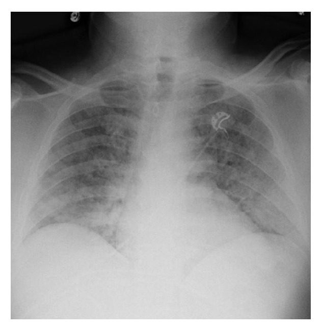
Chest X-ray from hospital day 3 showing worsening bibasilar opacities. Figure 2 from Hall et al. (2015), Case Reports in Emergency Medicine · PMC4637455 (CC BY 3.0)
Red Sports Cars at the Reef Shop
If you own a reef tank, the next question hits fast: what are the odds that coral in your living room packs this chemistry? In a 2011 PLoS One study, Deeds and colleagues walked into a marine shop and bought seven visually distinct zoanthids; one tested highly toxic (1/7, roughly 14.3%). Then they stopped browsing and started hunting, visiting two more stores to target specimens resembling that toxic colony, finding three more hits out of eight (37.5%)—for a combined 4 of 15 retail purchases (26.7%). Treat that 26.7% like a highway trooper pulling over only red sports cars: targeting enriches the tally, producing a selected colony fraction rather than random nationwide store prevalence. Across 16 genetic specimens (those 15 plus an earlier Virginia case—completely separate from Hall’s 2015 basement coral), 10 carried both markers and 6 carried only one, proving cute pet-store trade names cannot certify chemical safety.
SA Health’s aquarium coral guidance cuts through the guesswork. Zoanthids can sneak into tanks as invisible hitchhikers on live rock, and human noses never evolved to smell aerosolized marine toxins—odorless air proves nothing. Log what enters the tank (including any supplier uncertainty) for everyone sharing the house or pet-sitting, pause unfamiliar maintenance rather than assuming gloves or a mask grant clearance to heat or scrub coral, and if breathing trouble strikes after tank work, get medical help immediately without scooping toxic water or coral into a jar for paramedics. Remember too that feeling better after 24 hours is clinical stabilization, never environmental clearance of the room.
RED FLAGS · THE AIR ABOVE THE SINK
Aquarium Aerosol Traps and Household Warning Signs
Cough, shortness of breath, fever, chills, wheezing, or muscle aches within hours of handling marine coral or live rock—especially across multiple people in the same house—demands immediate medical and poison-control evaluation.
Never treat a 96% room-air SpO₂ reading, a clear Day-1 chest X-ray, or an absence of strange odors as proof that a marine aerosol exposure is mild or harmless.
Do not collect tank water or bag suspected coral to show paramedics or ER staff, and never treat casual PPE as a green light to scrub, heat, or abrade unfamiliar colonies.
Symptom improvement in one family member after 24 hours does not certify that the basement, sink, or living space is safe to re-enter without professional environmental direction.
✂ FIRST 60 SECONDS · POST-AQUARIUM BREATHING CRISIS
STEP AWAY & CALL FOR HELP: If coughing, wheezing, fever, chills, or shortness of breath hit after marine aquarium work, move to fresh air and contact emergency services or Poison Control immediately.
NAME THE TANK, TIMING & HOUSEHOLD: Tell triage you were doing marine aquarium maintenance, when symptoms started, and whether anyone else in another room or upstairs is coughing or feeling ill.
LEAVE SAMPLES BEHIND: Do NOT scoop tank water into a jar or bag coral to carry in your car or show paramedics—bring only written logs or photos already saved on your phone.
DON’T RE-ENTER JUST BECAUSE SOMEONE IMPROVED: Wait for professional guidance before going back into the maintenance area or remediating the tank, even if milder household cases stabilize within 24 hours.
CHAPTER 32 · FILE № 189 · Ep 2712
The Blood Dropped Eighty-One Percent—While the Brain Kept the Receipt
Why dietary manganese hits a liver bouncer while vaporized welding fumes crawl up olfactory nerves, why a 29/30 cognitive screen misses a decade of strain, and how one swapped denominator hides brain changes in nearly three-quarters of clean-lung welders.
This Month’s Payment Versus the Thirty-Year Principal
Acute poisons like carbon monoxide announce themselves with sirens and stretchers. Chronic inhaled metals prefer slow accounting fraud. In a 2024 Industrial Health report by Asildağ and colleagues, a 28-year-old Turkish welder arrived at the Ankara Occupational Diseases Clinic not because anyone took his symptoms seriously, but because a mandatory pre-employment screen at a new job printed a whole-blood manganese level of 25.9 µg/L against a 4 to 15 µg/L reference range. Already a 14-year veteran of the arc—meaning he began welding at age 14 while his brain was still wiring itself—he carried a decade-long history of forgetfulness and slipping reasoning that started around age 18.
Three months elapsed before the specialist clinic drew blood again. By then his whole-blood manganese had plunged 20.99 µg/L down to 4.91 µg/L—an 81.04% drop straight to the cozy bottom of normal. Case closed? Hardly. During those three months he changed workplaces, gained reportedly better ventilation, and started wearing a mask, making it scientifically impossible to credit any single hero. Worse, blood is merely a short-half-life transit highway—this month’s payment—while deep brain tissue holds the 30-year mortgage. Unlike dietary manganese from nuts and leafy greens, which meets strict intestinal gates and liver biliary clearance, welding vapor crosses lung alveoli straight into blood and hitches an axonal elevator up nasal olfactory nerves, skipping the blood-brain barrier altogether.
Twenty-Nine Out of Thirty, Hyperactive Knees, and Glowing Metal
Every classic bedside stereotype tried to wave this patient off. He walked normally on level ground, showed zero resting or action tremors—distinguishing this early toxic manganese stage sharply from idiopathic Parkinson’s disease—and scored a smug 29 out of 30 on the Mini-Mental State Examination. Calling an MMSE a clean cognitive bill of health is like passing the giant top E on an eye chart and declaring your vision razor-sharp; it screens for gross dementia, not the executive working-memory drag of reading fabrication schematics. Only one quiet physical clue broke the facade: hyperactive patellar (knee-jerk) deep tendon reflexes, betraying faltering inhibitory dampening from upper motor neurons and basal ganglia.
Cranial MRI exposed the ledger the blood had already forgotten: bilateral T1-weighted hyperintensity in the globus pallidus, nucleus ruber (red nucleus), and substantia nigra—where paramagnetic manganese speeds proton relaxation like built-in contrast dye—paired with dark hypointensity on susceptibility-weighted imaging (SWI). Keep the forensic boundaries exact: MRI reveals a water stain, not a chemical scale, providing zero numeric brain manganese concentration or pallidal index. Prior normal labs from two years earlier were strictly patient-reported without raw numbers, current thyroid and other-metal checks appeared only as narrative summaries, and the report closed with exposure reduction and clinical follow-up rather than a cured scan or chelation magic wand.
The Denominator Trap Inside 154 Welders
If blood lies about the brain, surely pristine lungs prove you dodged the fume? A 2022 La Medicina del Lavoro study by Alici and colleagues dismantled that comfort across 154 male Ankara welders (2015–2019) referred for suspected pneumoconiosis. Confirmed lung scarring hit 123 workers, while 31 had clean lung parenchyma. Two blinded neurologists—kept ignorant of lung results—found T1 brain hyperintensity in 86 welders total: 63 in the scarred-lung group and 23 in the 31-man clean-lung group. Watch the denominator trap. The paper’s discussion cited 23 of 86 (26.74%), which merely describes how many MRI-positive men happened to have clean lungs. Divide those same 23 men by the 31 clean-lung welders instead and the true subgroup frequency leaps to 74.19%—nearly three-quarters of men whose lungs looked clean still bore bright basal-ganglia signals. Because this snapshot lacked air levels, temporal order, and consistent lab-label tables across mixed welding fumes, it cannot forecast lifetime risk for every welder—yet it proves lungs and brains keep divorced records.
That puts prevention squarely on engineering under UK HSE (January 2025) and NIOSH (July 2026) guidance. For 14 years this welder wore safety glasses, leather gloves, work clothes, and earplugs—great armor against sparks and slag, zero defense against inhaled vapor. Opening a bay door or spinning ceiling fans merely stirs toxic soup after a 5,000°F arc plume has already shot straight up through the welder’s breathing zone. Follow the hierarchy of controls: reduce or automate fume first, capture plumes inches from the arc with competent local exhaust ventilation (which protects bystanders too, unlike selfish PPE), and use properly selected, fit-tested respirators as the final layer. Clinically, bring detailed task histories plus physical lab sheets listing exact specimen type, units, dates, and reference ranges so no doctor misreads a falling blood number as an erased brain record.
RED FLAGS · THE WRONG ARMOR FOR THE PLUME
Welding Fume Blind Spots and Compartment Traps
Never assume a normalized blood manganese test, a clear chest X-ray, or a 29/30 basic cognitive screen rules out chronic basal-ganglia manganese accumulation.
Safety glasses, leather gloves, and earplugs block sparks and heat while letting vaporized metal plumes travel straight through the breathing zone and olfactory pathway.
General shop fans and open bay doors dilute air only after hot arc plumes pass your face—insist on source-capture local exhaust ventilation plus fit-tested respiratory protection where needed.
Bring exact welding processes, alloy details, and physical lab reports (specimen type, units, dates, and lab reference ranges) to every occupational or neurology visit.
✂ FIRST 60 SECONDS · PROTECTING THE WELDING BREATHING ZONE
CAPTURE AT THE ARC, NOT THE CEILING: Position local exhaust ventilation inches from the weld so capture velocity pulls hot fumes sideways away from faces—never rely on open doors or room fans.
TREAT RESPIRATORS AS A FIT-TESTED SYSTEM: When engineering controls cannot eliminate fumes, use filters rated for metal-fume aerosols with formal fit testing, valve checks, and scheduled filter changes.
REASSESS WHEN ALLOYS OR SPACES CHANGE: Report broken exhaust baffles or cross-drafts immediately, and trigger a fresh hazard review whenever switching to high-manganese alloys or confined spaces.
CARRY YOUR FULL METRIC LEDGER TO CLINIC: Bring exact welding methods, confined-space details, and printed lab copies showing specimen (whole blood/serum/urine), units, dates, and reference ranges.
CHAPTER 33 · FILE № 194 · Ep 2717
The Bedroom Cloud That Turned Her Lungs Into a Barricade
Why a smug little cool-mist appliance dropped a lifelong nonsmoker’s room-air oxygen to 84%, why zero pathogens grew from her lungs, and why an ultrasonic plate obeys far nastier physics than a wet wick.
Twelve Safe Winters, One 84% Finger Clip, and Zero Bacteria in the Lung
Dry winter radiators make an ultrasonic humidifier look like the politest appliance in the house—quiet, plastic, and practically glowing with wellness marketing. In March 2011, in a case documented by Utsugi and colleagues in BMC Pulmonary Medicine, an 89-year-old homemaker and never-smoker arrived at the hospital after two months of exertional breathlessness and intermittent low-grade fever. She had undergone aortic valve replacement three years earlier and had been entirely healthy since, which handed clinicians a seductive shortcut: blame the calendar or blame the old valve. They refused both.
Her vitals stripped away any illusion of mild aging. Body temperature was a smoldering 37.4°C (99.3°F), room-air pulse oximetry sat at a cliff-edge 84%, and arterial blood gas confirmed a PaO₂ of 48.6 Torr against a normal 75 to 100 Torr. Chest CT showed fine centrilobular nodules, patchy ground-glass opacities (a radiological metaphor for hazy alveolar inflammation, not physical glass), and bronchial wall thickening concentrated in the upper lobes. Spirometry put her forced vital capacity at 1.19 liters—68.9% of a predicted demographic formula, not a recorded personal baseline, yet unmistakably stiff and restrictive.
Because centrilobular nodules map to the exact terminal airways where inhaled particles land, the team audited her bedroom instead of her heart valve. She had run an ultrasonic humidifier every winter since 1998, and starting in 2010 the machine ran daily without the reservoir being cleaned—a logistics reality, never a moral indictment, since sloshing water tanks are awkward and heavy to haul to a sink. Day-7 bronchoalveolar lavage returned 51% lymphocytes, 3% neutrophils, and 2% eosinophils, and biopsy proved lymphoplasmacytic alveolitis—a cellular barricade choking oxygen diffusion—while BAL cytology and cultures grew zero pathogens. Her blood did carry an antibody to the fungus Trichosporon asahii, a historical sensitization footprint rare in Japanese winters and never found in her humidifier water.
Six Hours in a Closed Room and a Piezoelectric Catapult
Away from her bedroom, her lungs began recovering on supplemental oxygen alone—zero antibiotics, zero steroids. The tank itself told the other half of the story: initial reservoir water held a microbial zoo of Mycobacterium gordonae, Acinetobacter lwoffii, Corynebacterium species, Candida glabrata, Aspergillus niger, and Penicillium. After the water was discarded and the machine later restored, M. gordonae alone persisted on the tank wall and residual water, armored by waxy mycolic-acid cell walls.
Inside a closely monitored 20-square-meter hospital room, clinicians performed a controlled provocation test—something nobody should ever try at home. Within six hours of running her humidifier, fever and severe breathlessness returned, CT opacities violently reappeared, and her numbers fell off a ledge: FVC dropped from 1.28 to 1.00 liters (a 0.28-liter, 22% relative functional loss from acute inflammatory stiffening, not permanent tissue death), PaO₂/FiO₂ ratio crashed from 302 to 152 (exact FiO₂ unreported), WBC exploded from 4,760 to 26,560 per microliter, and CRP leaped from 0.10 to 5.34 mg/dL. Strict evidence boundaries still apply: switching the machine on proved device-associated causality, not a purified single-antigen trial isolating M. gordonae in a vacuum. Treated with oral prednisolone and permanent humidifier avoidance, she was discharged after 30 days with no recurrence noted (final follow-up length unstated).
Why did this cool-mist box weaponize stagnant water so efficiently? Back in 1980, Burge and colleagues surveyed 145 water samples from 110 domestic humidifiers recruited through an allergy clinic (with classic field-table quirks: Table 1 tallies 58 plus 53 units, Table 3 tallies 57 plus 53). Heat-loving thermophilic bacteria grew in 72% of warm furnace humidifiers versus 43% of standalone consoles—a 29-percentage-point gap, or a 1.674 ratio of rounded reservoir positivity that measures water ecology, not human disease risk. Crucially, their air samples rarely matched their dirty tanks because 1980 evaporative wicks turn liquid water into vapor, leaving heavy bacteria behind as crust. An ultrasonic unit skips evaporation altogether: a ceramic piezoelectric plate vibrates near 1.7 megahertz, shattering water and everything suspended inside it into droplets whose dried 1-to-5-micron solid cores cruise past nasal mucus straight into terminal pulmonary lobules.
EXHIBIT A · CT / IMAGING SCAN · CC BY 4.0
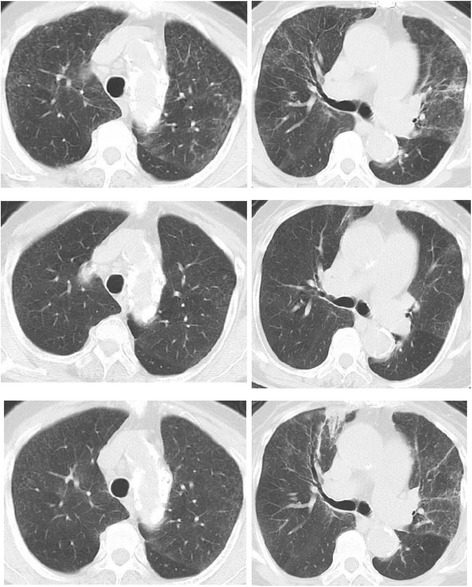
A thoracic CT before admission revealed diffuse fine centrilobular nodules with patchy ground-glass opacities of the upper lung predominance (upper). After the admission, the pulmonary parenchymal involvements were spontaneously improved (middle). 15 h after the end of the… Fig. 1 from Utsugi et al. (2015), BMC Pulmonary Medicine · PMC4589115 (CC BY 4.0)
Housekeeping Is for Healthy Days; Unplugging Is for Sick Days
The survival rule splits cleanly into two non-overlapping playbooks backed by EPA, NHLBI, and NHS guidance. On healthy days, read the exact manufacturer manual, descale and disinfect on schedule without improvising toxic bleach-and-ammonia or bleach-and-acid cocktails, keep room windows and textiles dry so you are not turning drywall into a secondary incubator, and never drop essential oils into an ultrasonic water tank (aerosolized lipids invite lipoid pneumonia). If arthritis, balance, or tank weight makes regular cleaning unrealistic, set up an accessible support plan—or retire the machine altogether. And if you spot pink slime in the tank, scrub the plastic; do not swallow antibiotics for an immune alarm that no antibiotic can turn off.
On sick days, housekeeping is over. If cough, fever, or breathlessness arrives—even if you scrubbed the tank last Sunday—turn the humidifier off immediately and seek medical evaluation. Hand clinicians your exact environmental history, especially symptoms that flare at home and ease elsewhere, and resist the human urge to run a DIY re-exposure test: repeated hypersensitivity hits trigger a faster, harsher kindling response. Emergency signs—inability to speak in full sentences, blue or gray lips, crushing chest pressure, or sudden hypoxic confusion—bypass the clinic straight to emergency services, and recovery still deserves serial lung follow-up to ensure reversible inflammation never calcifies into permanent fibrosis.
Twelve uneventful winters prove nothing about winter thirteen: microbial load and immune thresholds can flip an old familiar appliance into an acute lung trigger.
Never test a suspected humidifier by turning it back on at home to see if symptoms return—the kindling effect can collapse lung volume in hours.
Keep healthy-day maintenance separate from sick-day care: scrubbing a dirty tank or taking leftover antibiotics does not silence raging alveolar inflammation.
Inability to speak in full sentences, blue or gray lips, crushing chest tightness, or sudden confusion are immediate hypoxia emergencies—call local emergency services.
✂ FIRST 60 SECONDS · HUMIDIFIER LUNG & BREATHING CRISIS
UNPLUG THE SUSPECTED MACHINE: At the first hint of recurring winter cough, fever, or exertional breathlessness, turn off and unplug the humidifier immediately—even if you cleaned it this week.
TRIAGE HYPOXIA EMERGENCIES FIRST: Call emergency services immediately if anyone cannot speak in full sentences, turns blue or gray at the lips, feels heavy chest pressure, or becomes abruptly confused.
HAND DOCTORS THE ROOM HISTORY: Report the exact appliance type (ultrasonic vs evaporative), water source, cleaning routine, and whether symptoms worsen at home and ease away from the room.
SKIP HOME PROVOCATIONS & DIY CHEMISTRY: Never re-expose yourself to prove a link, never add essential oils to ultrasonic tanks, never mix bleach with ammonia or acids, and build a cleaning support plan or stop using the unit.
CHAPTER 34 · FILE № 195 · Ep 2718
The Bends in a Landlocked Kitchen
Why re-entering a pressurized factory chamber made his rash vanish like a cruel magic trick, why a vanishing neurological deficit in the ER is never clearance, and why 27.3% of normal autopsy hearts carry the same hidden trapdoor.
Leaving Work Behind—Except for the Nitrogen Dissolved in Your Blood
Factory dust washes off in the shower; earplugs stay in the locker. Ambient atmospheric pressure is sneakier: it dissolves straight into your plasma and rides home with you on the freeway. In a 2024 case report in the Journal of the American College of Emergency Physicians Open by Diederich and colleagues, a 32-year-old packaging worker in a landlocked city collapsed at home with kaleidoscope vision and acute right-sided weakness, nowhere near an ocean or a scuba tank. His job put him inside a pressurized chamber—an industrial environment whose exact pressure settings, shift lengths, and decompression schedules were never independently audited in the clinical paper.
His body had already dropped a physics hint days earlier: joint pain and a rash on his left flank and abdomen that mysteriously improved when he stepped back inside the pressurized chamber for his next shift. Pulled muscles do not heal when you lift heavier crates, and chemical allergies do not soothe themselves inside the fume hood. Only a pressure-transition injury pulls that trick. Air is roughly 78% inert nitrogen; under elevated chamber pressure, Henry’s law forces extra nitrogen into blood and fat like carbon dioxide sealed inside a clear soda bottle. Exit too fast and you twist off the cap—nitrogen fizzes out into venous and tissue microbubbles faster than the lungs can exhale it. Stepping back into the pressurized room merely screwed the cap back on, shrinking the bubbles without removing a molecule of nitrogen.
Then came the bad shift. In his clinical history, the worker reported an unusually rapid return to normal atmospheric pressure—a missed decompression stage alongside analog gauge inconsistencies (reported history, not a forensic engineering verdict). Headache, chest tightness, nausea, roaring arthralgias, fractured kaleidoscope vision, right-sided weakness, and an extensive mottled red torso rash slammed in at home. Crucially, he did not try to sleep it off; he phoned his supervising health director, who immediately recognized the compressed-air danger and dispatched him to emergency care.
Skid Marks in the Blood and a Trapdoor in One Heart Out of Four
Emergency rooms are famous for punishing symptoms that politely vanish in the waiting room. By the time physicians examined him, his acute right-sided weakness had completely resolved, leaving only the mottled flat red rash across his torso and upper limbs. Treating only the exam-table snapshot would have missed a brain temporarily starved by gas emboli. Four printed lab values—published without units or hospital reference ranges, which we refuse to invent—mapped the cellular skid marks left behind: leukocytes 14.0 (immune alarm triggered as abrasive bubbles scraped endothelium and denatured proteins), lactate 2.2 (anaerobic exhaust from capillary blockages), creatine kinase 254 (leaking from ischemic muscle cells), and creatinine 1.27 (stressed renal filtration). None of those numbers counted bubbles; all four documented tissue wreckage.
Still, venous bubbles normally hit a built-in sieve: the right heart pumps them into dense lung capillaries that trap nitrogen so you breathe it out. To explain kaleidoscope vision and unilateral weakness, clinicians ordered an echocardiogram and found a patent foramen ovale (PFO)—the unsealed fetal flap between the right and left atria (the paper omitted echo modality, shunt grade, and whether bubbles were seen crossing). Under pressure shifts, that anatomical shortcut lets venous bubbles skip the pulmonary filter and enter the high-speed arterial highway toward the brain and visual cortex. Two emergent clinical hyperbaric sessions crushed the bubbles back into solution and decompressed him slowly under medical supervision, resolving symptoms before discharge, with explicit advice to avoid the pressurized tank pending specialist review (no long-term work clearance or recurrence data were reported).
A PFO sounds like a one-in-a-million defect until you open the 1984 Mayo Clinic autopsy abstract by Hagen and colleagues. Across 965 normal autopsy hearts spanning ten decades, 263 were patent—27.3%, leaving 702 fused shut. Flip the fraction to 965 divided by 263 and you get roughly 1 in 3.7 hearts, which invites a lethal statistical faceplant: mistaking an anatomical ratio for a worker’s odds of getting decompression sickness. Dead autopsy probes cannot measure living left-to-right pressure gradients that keep flaps shut, specimen prevalence is not workplace incidence, and cross-sectional corpses are not longitudinal follow-up. What 27.3% really proves is structural: over a quarter of any pressurized crew probably walks in with that flap, so safety belongs to workplace decompression controls, never blaming a worker’s heart.
REFERENCE EXHIBIT · CT / IMAGING SCAN · CC BY 4.0
ILLUSTRATIVE REFERENCE EXHIBIT — Verified CC BY diagnostic figure from a separate peer-reviewed publication showing the same mechanism (not the index patient).
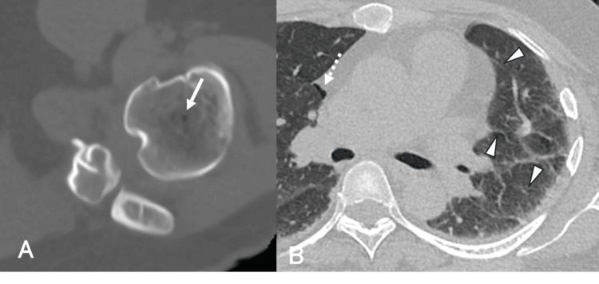
Case 3Pre-hyperbaric oxygen therapy (HBOT) plain computed tomography (CT) images. A: Bone-window settings (window width of 3000 HU and a window level of 400 HU).B: Lung-window settings. An intramedullary air bubble is observed in the left proximal humerus (solid arrow in A), and a… Figure 3 from Sugimura et al. (2026), Cureus · PMC12920035 (Reference Case) (CC BY 4.0)
Never Self-Recompress in a Factory Tank
Two operational decisions separate survival from preventable catastrophe. First, if sudden weakness, visual distortion, trouble walking, chest tightness, or a mottled rash hits after compressed-air work, get urgent emergency evaluation—and never let resolved limb weakness talk you down. Tell dispatch and ER clinicians explicitly that you worked inside a pressurized chamber or compressed air; saying “packaging worker” in a landlocked town leaves triage running a generic stroke algorithm. Workplace pressure logs help hyperbaric teams calculate gas load, but paperwork must never delay transport and nobody should re-enter a pressurized chamber to fetch a clipboard. Above all, that earlier relief inside the factory tank is diagnostic history, NOT a treatment plan: industrial chambers lack clinical oxygen delivery and monitoring, and seizing or blacking out locked inside one is fatal.
Second, walking out of a hospital feeling normal does not equal occupational clearance to climb back into pressure. Current physiological principles in CDC Yellow Book diving guidance and structural compressed-air systems like Great Britain’s HSE MS-35 framework (an organizational model, not US governing law) point to the same baseline: individualized specialist medical assessment, competent engineering review of decompression procedures, meticulous exposure records, and clear clinician-employer communication before anyone returns to elevated atmospheres.
RED FLAGS · WHEN THE SHIFT RIDES HOME IN YOUR VEINS
Any sudden weakness, kaleidoscope or blurred vision, gait trouble, chest tightness, or mottled torso rash after pressurized work demands urgent medical care—even miles from any ocean.
Never dismiss transient neurological symptoms just because your arm or leg works again by the time you reach the ER; treat the complete symptom timeline.
Say “pressurized chamber” or “compressed air” at triage instead of just your job title, and never delay transport or re-enter a tank to retrieve shift logs.
Never self-recompress inside a workplace pressure chamber because symptoms eased there earlier—recompression belongs exclusively inside monitored medical hyperbaric facilities.
✂ FIRST 60 SECONDS · POST-SHIFT DECOMPRESSION SYMPTOMS
TRIGGER EMERGENCY CARE IMMEDIATELY: Call emergency services for any post-shift neurological change (weakness, visual fracture, balance loss), chest tightness, breathing trouble, or mottled rash—even if symptoms already faded.
NAME COMPRESSED AIR AT TRIAGE: Tell dispatch, EMTs, and ER clinicians you worked inside a pressurized chamber or compressed air; a generic factory job title hides the physics from landlocked emergency teams.
REPORT RESOLVED SYMPTOMS & TIMELINE: Describe transient weakness or vision changes that vanished before arrival alongside prior relief inside the chamber; never delay transport or send a coworker back inside for logs.
NEVER SELF-RECOMPRESS AT WORK: Do not climb back into an industrial pressure chamber for relief; only a medical hyperbaric unit has clinical oxygen, monitoring, and rescue capability—and hold off returning to pressure until specialist clearance.
CHAPTER 35 · FILE № 206 · Ep 2758
20/20 on the Wall Chart—and a Permanently Scorched Bullseye
Why a painless camera-sensor burn beats the human blink reflex, why an 80%-versus-20% pediatric steroid gap vanished at p = 0.37, and why a 5-mW sticker is just paper.
The Painless Burn Inside an Inward Magnifying Glass
Drop one rogue eyelash onto your cornea and your nervous system stages a five-alarm opera—tears, redness, spasms, immediate surrender. Shine a coherent laser beam straight through that same clear front window and the surface alarms stay politely asleep. In October 2025, Gururaj Naral and colleagues in Cureus described a healthy man in his 20s standing outdoors during daytime conversation when a neighbor demonstrating a red laser pointer accidentally swept it into his right eye for no more than two seconds. Instantly, a dark blurry blotch appeared dead center in his right vision, derailing reading, face recognition, and fine tasks—with zero pain, zero redness, and zero watering.
Blame optical excellence turned traitor. Evolution built the cornea and lens to gather diffuse daylight and funnel it onto the fovea, the tiny cone-packed bullseye at the heart of the macula. Feed that same lens a collimated laser and the eye acts like a magnifying glass pointed inward, concentrating photochemical oxidative toxicity and photothermal heat directly onto photoreceptors that carry no pain nerves. Like a camera whose glass lens stays scratch-free while a beam fries central sensor pixels, his anterior exam (cornea, iris, lens) looked immaculate. Left vision stayed 20/20 distance and N6 near; right vision slipped to 20/30 distance and N8 near, with an Amsler grid confirming a central scotoma and fundus exam spotting a crisp yellowish foveal lesion.
Three imaging tools then interrogated three distinct layers of truth. Fundus photography gave 2D canopy coordinates without depth. Optical coherence tomography (OCT) sliced an infrared core sample revealing outer retinal hyperreflectivity, a broken IS/OS junction—severing photoreceptor mitochondrial engines from light-capturing discs—a subfoveal hyporeflective cavity, and a shallow localized neurosensory detachment (strictly a microscale burn blister, never to be confused with a giant sight-threatening peripheral retinal tear). Remarkably, central macular thickness measured 261 micrometers (0.261 mm)—classified normal overall, like an office tower whose roof height looks unchanged while two interior floors collapse. Short-wave fundus autofluorescence mapped retinal pigment epithelium stress—described in prose as a dark center ringed by brighter signal and in the caption as central hypofluorescence, signaling metabolic disruption without counting literal dead cells.
Aced the Eye Chart, Kept the Missing Hole
Clinicians prescribed a two-week tapering course of oral prednisolone plus topical NSAID drops—a reasonable attempt to calm secondary inflammation, never proof that steroids unburn retinas while natural healing runs alongside. Six weeks later, the headline paradox arrived: right distance acuity rebounded from 20/30 (0.667) to a textbook 20/20 (1.0) and the yellow surface spot faded into subtle permanent RPE pigment change, yet near acuity stayed stuck at N8 and his central scotoma persisted—after which he was lost to follow-up, forbidding any invented happy ending. Eye charts only grade whether surviving high-contrast border cones can decode crisp black letters; they never audit the scorched crater sitting next door.
For long-term perspective, Niloofar Farassat and colleagues’ 2023 International Ophthalmology main-article retrospective combed 13 years (2007–2020) of records at Germany’s University Eye Center in Freiburg, confirming organic laser maculopathy in 8 children out of 12 suspected records (66.67%). That two-thirds figure is strictly specialty-archive selection bias—counting cracked windshields inside a glass shop—not population injury risk. Better yet, 8 children produced 11 injured eyes (3 bilateral, 5 unilateral), reminding analysts that paired eyes inside one skull share genetics, healing, and the exact same beam rather than acting as 11 independent trials; 7 children (10 eyes) returned for follow-up while 1 child (1 eye) was lost (missing data is never coded cured).
Then came the steroid statistical mirage. Four of five steroid-treated eyes (80%) improved acuity versus one of five untreated eyes (20%)—a seductive 60 percentage-point gulf built on tiny, correlated, non-random groups with mismatched baselines that crumbled to an interaction p-value of 0.37. That neither proves steroids work nor proves they do nothing; absence of proof is not proof of absence. What Freiburg unmistakably confirmed is the same dual reality: children achieved strong chart acuity years later while carrying stubborn scotomas and OCT scars.
EXHIBIT A · OPHTHALMIC EXHIBIT · CC BY 4.0
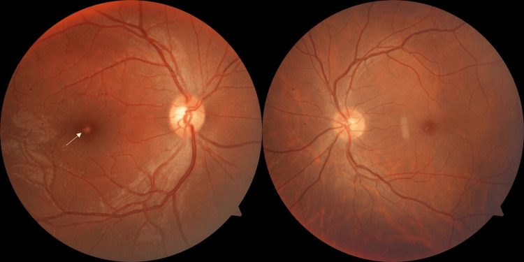
Fundus photographs showing a yellowish lesion in the fovea of the right eye (white arrow) and a normal left eye Figure 1 from Naral et al. (2025), Cureus · PMC12597123 (CC BY 4.0)
Why Stickers, Sunglasses, and Blink Reflexes Fail Together
The neighbor’s pointer bore a sticker reading 650 nanometers and 5 milliwatts—strictly proof of a printed sticker, never a laboratory photon check. As UK Health Security Agency guidance warns, cheap mass-produced pointers are notoriously mislabeled, cannot be power-tested safely at home, and should never be aimed at plastic, matches, or walls to check strength—specular reflections burn foveas too. Ordinary sunglasses and generic safety glasses filter broad sunlight, not coherent laser wavelengths, and no human blink reflex can outrun light; bystanders are never to blame for failing to dodge photons.
Following FDA immediate-assessment guidance—never inventing a wait-and-see afterimage rule, and remembering six weeks was a visit date rather than a waiting window—any suspected laser flash demands immediate professional eye evaluation even with zero pain or partial improvement. State which eye was hit, exact functional changes (black spot, wavy lines, trouble reading faces), and the laser exposure; skip self-driving, DIY printed-chart clearances, and borrowed steroid drops. Upstream, keep laser pointers completely away from children, never aim at people, animals, vehicles, or aircraft, lock away legitimate devices, and ask whether screen-based digital pointers make physical beams obsolete.
RED FLAGS · PAINLESSNESS IS BIOLOGICAL FALSE COMFORT
When a Two-Second Flash Demands Immediate Ophthalmic Imaging
Seek immediate professional eye assessment after any suspected laser exposure—even with zero pain, zero redness, or partial visual improvement—because the retina has no pain receptors.
Never clear yourself with a home-printed eye chart or Amsler grid, never drive with impaired central vision, and never borrow someone else’s steroid drops.
Tell the eye clinician three specifics: which eye(s) were affected, exact functional disruptions (central spot, wavy lines, difficulty reading faces), and the laser exposure—without waiting to verify wattage.
Never test a suspect pointer on dark plastic, matches, or walls, never trust cheap 5-mW labels or ordinary sunglasses, and keep laser pointers completely out of children’s reach.
✂ FIRST 60 SECONDS · FLASHED IN THE EYE BY A LASER
DO NOT RE-FLASH OR TEST THE POINTER: Never point the laser at a wall, dark plastic, or match to gauge its strength, and never recreate the exposure to gather specs—specular reflections burn retinas too.
GET IMMEDIATE PROFESSIONAL EYE CARE: Follow FDA immediate-assessment guidance even if pain is zero or blur seems to ease; do not invent a waiting rule, do not self-drive with a central blind spot, and do not borrow steroid drops.
DELIVER THREE SPECIFICS AT TRIAGE: Specify which eye(s) were hit, describe real-world functional loss (central black spot, wavy lines, trouble reading faces), and report the laser exposure—asking what changes require urgent return.
LOCK DOWN OR RETIRE PHYSICAL POINTERS: Treat laser pointers strictly as non-toys stored away from children, never trust printed wattage stickers or ordinary sunglasses, and switch presentations to digital screen pointers.
CHAPTER 36 · FILE № 217 · Ep 2770
Seven Millimeters of Silence, Four Millimeters of Ice—and the Artery in the Other Hand
Why the bigger aneurysm stayed dead quiet while the smaller one froze a finger, how a bony wrist hook turns your palm into a blacksmith’s anvil, and why a blocked surgical graft can still leave a hand feeling fine.
Strong Wrist Pulses, a Palm ‘Tumor,’ and Two Opposite Hands
We assume bigger structural wreckage makes louder noise—that a seven-millimeter arterial bulge must scream harder than a four-millimeter one. Human plumbing delights in humiliating geometry. In 2022, A. T. Estíbaliz and colleagues in Case Reports in Vascular Medicine described a 63-year-old physician and cyclist whose right fourth (ring) finger turned pale and ice-cold for three straight days. Two months earlier he felt a firm lump—labeled a “tumor” strictly in classical Latin for swelling, never cancer—on his right hypothenar eminence, the pinky-side pad of the palm. His history included hypertension, dyslipidemia, and a survived age-45 subarachnoid hemorrhage, managed on aspirin, atorvastatin, ezetimibe, and telmisartan.
Systemic screening tried to wave him straight past the gate. Bilateral arm blood pressure was normal, all four limb pulses felt symmetric, routine blood counts, chemistry, clotting, and autoimmune panels were summarized as normal (no raw numbers or cutoffs printed, never ruling out every obscure autoimmune illness), and abdominal aorta, iliac, and popliteal ultrasounds looked clean. Only bilateral magnetic resonance angiography (MRA)—blanking stationary tissue to illuminate flowing blood—sprung the trap. His freezing right hand held an ~4-millimeter distal ulnar aneurysm trailing a corkscrew course. His completely warm, painless, lump-free left hand hid an ~7-millimeter distal ulnar aneurysm—3 millimeters wider, a 1.75-fold ratio—equally corkscrewed.
The blueprint sits inside wrist carpentry. Exiting Guyon’s canal, the ulnar artery passes superficially right over the hook of the hamate—a bony carpal anvil under thin muscle. Pound hubcaps with your palm, grip vibrating jackhammers, or lean prolonged weight on handlebars, and the arterial media fractures into aneurysms while tethered elongation buckles into a corkscrew. Two strict fences apply here: pandemic cycling was a plausible reported exposure, not a biomechanically proven sole cause, and despite textbook clot lore, this case reports zero thrombus or embolism.
Why Collaterals Outvote Millimeters—and What Eight Surgical Patients Taught
Seven divided by four equals 1.75—a flat 2D diameter, never 3D volume, rupture odds, or a symptom multiplier. His left hand stayed silent because palms run redundant dual supply: radial and ulnar arteries merge through superficial and deep palmar arches. Radial blood seamlessly bypassed his 7-millimeter left balloon, whereas right-hand collateral rescue failed and froze his ring finger. Bilateral vein-graft repairs left him asymptomatic at four months—an opening chapter, not a lifetime cure. The report prints no long-term patency scans, Allen test, hand Doppler, digital pressures, histology, or disability scores, nor does operating on one silent hand prove every asymptomatic corkscrew artery needs preemptive surgery.
Durability over years looks far messier in a 2015 retrospective series by M. Ş. Şahin, T. Özyürekoğlu, and G. Çakmak in Eklem Hastalıkları ve Cerrahisi tracking 8 patients across 11 hands. Their 50-month mean follow-up masks a chasm from 3 to 103 months—classic right censoring, since a vein graft clotting at year five stays permanently logged as success if tracking stopped at month three. Across those unequal windows, 3 of 8 patients re-occluded (a descriptive 37.5% cohort fraction—never a universal clinic forecast or hand-level rate), while two needed limited fingertip amputations or debridements for necrosis. Group Visual Analog Scale pain fell from 7 to 1.3—a real 5.7-point group drop lacking individual spread or a non-surgical control arm.
Even better, the 2015 paper accidentally teaches scientific literacy via its own printed contradictions: Abstract and Discussion claim three surgical revisions, whereas Results describe two re-operations plus one asymptomatic non-operated occlusion—and date a late recurrence at 19 months in Results versus 16 months in Discussion. Preserving that friction separates four distinct truths: patency, recurrence, symptoms, and function. Just like the cyclist’s quiet 7-millimeter left palm, that re-blocked graft stayed painless because quiet collateral side streets took over.
EXHIBIT A · HAND MR ANGIOGRAPHY · CC BY 4.0
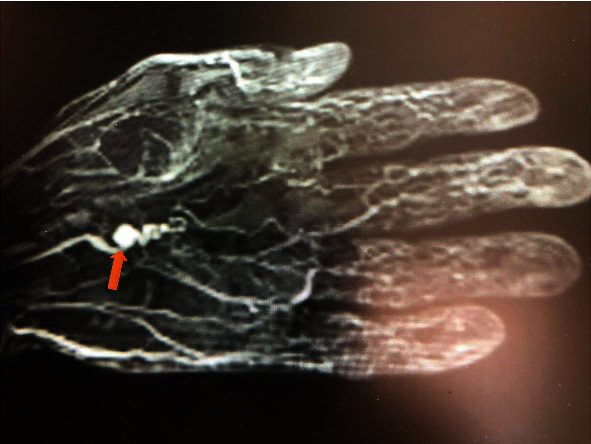
Angioresonance showing an aneurysm approximately 7 mm in diameter in the distal area of the ulnar artery, typical “corkscrew” image (red arrow). Figure 1 from Estíbaliz et al. (2022), Case Reports in Vascular Medicine · PMC9256417 (CC BY 4.0)
Retire the Human Mallet—Without Banning Bicycles
Separating winter annoyance from vascular danger starts with age and symmetry. Per UK NHS guidance, benign Raynaud’s usually starts in the teens or twenties symmetrically; symptoms that worsen, hit one hand unilaterally, begin after age 30, or impair daily life demand medical review. Under Society for Vascular Surgery (SVS) red flags for acute perfusion loss—sudden disproportionate pain, stark pallor or coldness, numbness, or lost finger movement—go straight to emergency care. Never wait for every box on the list, never clear yourself by feeling a wrist pulse, never dunk hands in ice water for DIY provocation, and never order an MRA off a menu before clinical exam or duplex ultrasound. After graft repair, sudden returning coldness or pain requires urgent surgical return, not waiting weeks for routine follow-up.
Out in the garage, Canadian Centre for Occupational Health and Safety (CCOHS) guidance is blunt: never use your palm as a striking hammer. Bring vibrating tools, impact habits, palm lumps, and exact symptom timestamps into your clinical history—without condemning bicycles or exercise. Millions ride safely, and no universal glove claim or audio bike-fit recipe fits every wrist. Stabilize acute perfusion first, then get an individualized occupational or clinical load assessment before putting the same hammer back on the same bony anvil.
RED FLAGS · ONE COLD FINGER AFTER AGE THIRTY IS NOT BENIGN RAYNAUD’S
Protecting the Artery Riding Over the Hook of the Hamate
Seek immediate emergency care for sudden severe finger or hand pain, stark pallor or coldness, numbness, or loss of movement—never wait for all symptoms or self-clear by checking your wrist pulse.
Book prompt clinical assessment for cold, pale finger symptoms that worsen, hit only one hand, start for the first time after age 30, or follow a firm lump on the pinky-side base of the palm.
Skip home ice-water provocation stunts, consumer vascular gadgets, and demanding a specific scan—give clinicians the exact onset time, palm changes, and honest tool or sport history instead.
Never use your palm as a striking tool, return urgently if coldness or pain recurs after vascular graft repair, and arrange an individualized load review before resuming repetitive vibrating work or heavy handlebar pressure.
✂ FIRST 60 SECONDS · COLD, PALE OR NUMB SINGLE-SIDED FINGER
TREAT ACUTE PERFUSION LOSS AS AN EMERGENCY: Sudden disproportionate pain, stark pallor or coldness, numbness, or lost finger movement mean immediate ER assessment—time equals salvageable fingertip tissue.
SKIP ICE-WATER STUNTS & PULSE SELF-CHECKS: Never plunge a cold hand into ice water to trigger color change, never clear yourself by feeling a wrist pulse, and let specialists choose ultrasound vs angiography.
REPORT THE LUMP, SIDE & EXACT CLOCK: Tell clinicians exact symptom onset, one-sided vs two-sided pattern, any pinky-side palm lump, and every vibrating tool, impact habit, or cycling load.
DROP THE PALM-HAMMER & GUARD GRAFTS: Use real mallets—never your palm—get individualized ergonomic review after stabilization, and seek urgent surgical review immediately if repaired-hand symptoms return.
CHAPTER 37 · FILE № 227 · Ep 2901
‘Clerk’ on the Chart, ‘Sarcoidosis’ on the Biopsy—and Beryllium Behind the Brain Lesions
Why ventilation systems never read your org chart, why a granuloma tells you how the immune system fights instead of what it is fighting, and why referral-clinic percentages never describe an entire workforce.
Ventilation Ducts Do Not Check Your Job Title
Intake forms love tidy occupational boxes—hard hats in the danger column, spreadsheets in the safe column. Airborne metallic dust never got the memo. In Case 2 of a 2026 Occupational and Environmental Medicine series by Jouanjan and colleagues (strictly isolating Case 2 without blending in the five other patients’ liver, eye, or kidney charts), a clerk in his late 40s with 25 years at a gravure printing cylinder factory developed escalating breathlessness (dyspnea), heavy weight loss, and low arterial oxygen (hypoxemia). Chest CT displayed four simultaneous wrecking balls—nodules, dense consolidation, hazy ground-glass opacities, and permanent thin-walled cysts—alongside a restrictive breathing pattern (exact lung-volume figures unprinted).
Lung biopsy handed clinicians a classic diagnostic decoy: non-necrotizing granulomas. Think of a granuloma as an immune containment dome—flattened macrophages, giant cells, and T cells cementing an indigestible foreign particle in place without tuberculosis’s dead liquid center. Under the microscope, that footprint screamed sarcoidosis. Prednisolone seemed to clinch the win: inflammation dropped, breathing eased, scans brightened. Yet broad-spectrum steroids only yank down the immune system’s volume knob without naming the intruder. A granuloma tells you how the immune system is fighting—never what it is fighting.
When clinicians tapered steroids, the dome-builders surged beyond his chest. He relapsed with deep muscle pain (myalgia), blurred vision, staggering imbalance (ataxia), and slurred speech (dysarthria). Brain MRI lit up with contrast-enhancing lesions both above the tentorium (cerebral visual processing) and below it (cerebellum and brainstem governing balance and speech), while PET-CT revealed disseminated hot spots across muscles and subcutaneous tissue. Tossing the shorthand ‘clerk’ aside unlocked his real geography: the factory machined hard, non-sparking copper-beryllium alloys—six times stronger than pure copper—and this clerk had direct contact with the production floor. Keep the forensic boundaries sharp: the paper invents no floor plan, airborne dust measurement, or corporate cover-up, and only the lung was biopsied (brain and muscle lesions were cohesive clinical attributions, smartly avoiding risky skull drilling during a systemic flare).
Testing Cellular Memory—and Auditing the Referral Funnel
Unlike lead or manganese toxicity, chronic beryllium disease (CBD) is not a pile-up of metal measured in blood; the metal is merely the match, and the immune system is the weapon. Clinicians separate beryllium sensitization (BeS—armed memory T cells holding a wanted poster without tissue damage) from CBD (sensitization plus active granulomatous disease). Proving that grudge requires the beryllium lymphocyte proliferation test (BeLPT): specialist labs isolate live white cells, feed them microscopic beryllium salts in culture wells, and track DNA-copying frenzy using radioactive tritiated thymidine—qualitative immune memory, never a blood metal level or inhaled dosimeter, and impossible at home. Case 2’s blood BeLPT logged one positive and one borderline result, while deep-lung bronchoalveolar lavage (BAL) cells came back definitively positive (categorical results only; no stimulation index or sampling calendar printed).
Escalating to targeted biologics (infliximab, adalimumab, and rituximab) alongside leaving the exposure environment four years after illness onset finally stabilized him—note the honest ceiling: stabilization, never a claimed cure, MRI clearance, or single-drug miracle, and 25 working years is biography, never a safe minimum clock. Zooming out, the same team’s 2025 Chest cohort (2002–2022) reviewed 1,234 BeLPT assays across just 431 people—roughly 2.86 tests per person, never 1,234 independent workers.
Inside a nested subset of 210 patients already carrying granulomatous disease, 87 (41.4%) proved to have CBD, 106 (50.5%) sarcoidosis, and 17 (8.1%) stayed inconclusive. Three mathematical fences protect against headlines going feral: first, the 2026 series’ six patients came straight from those 87 CBD cases—NOT six fresh replications; second, 41.4% reflects a symptomatic specialist referral clinic, NEVER general factory prevalence or individual worker odds; and third, because reference classification leaned on repeated BeLPTs (often re-testing negatives while stopping after positives), no fully independent diagnostic gold standard or validated accuracy exists here.
EXHIBIT A · OCCUPATIONAL RISK CHART · CC BY 4.0
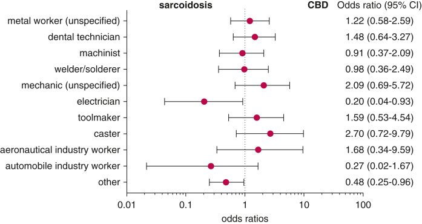
ORs for the association of a field of occupation with CBD vs sarcoidosis presented as forest plots. Precision mechanics excluded (only 2 individuals, both in the CBD group). CBD = chronic beryllium disease. Figure 2 from Jouanjan et al. (2025), Chest · PMC12831088 (CC BY 4.0)
Hear the Full Working Life—Then Control the Source
Under UK NHS breathlessness guidance (reviewed January 2024; next review January 2027), severe breathing trouble, inability to speak normally, severe chest symptoms, blue or gray skin discoloration, or sudden confusion warrants immediate emergency help. In clinic, hand doctors your real working biography—past and present jobs, rooms entered, alloys machined, and honest uncertainty—never a one-word job label. Skip DIY dust baggies, self-diagnosis, or informal exposure ‘tests’; accept that organ workups are individualized rather than universal brain MRIs, and recognize the sobering clinical reality that CBD can still progress even after workplace exposure ends.
Back on the factory floor, prevention starts upstream with qualified source control—identifying downstream alloy hazards across an entire building, never amateur machine hacks, home-rigged ventilation, or guessed respirators. Medical surveillance exists to complement source control, never as permission for uncontrolled dust until someone’s test flips positive. Respect local law too: OSHA’s framework (health-effects page carrying no revision date) governs the U.S. only, NIOSH’s 2011 alert is historical background rather than a quote-ready modern numerical limit, and privacy, consent, and clear communication must bridge patient care with workplace protection.
RED FLAGS · A GRANULOMA NEVER NAMES THE INTRUDER
Looking Past Job Titles and Sarcoidosis Lookalikes
Call emergency services immediately for severe breathing difficulty, inability to speak normally, severe chest symptoms, blue/gray discoloration, or sudden confusion—and seek timely assessment for persistent breathlessness or unexplained weight loss.
Give clinicians your complete real-world work history—actual tasks, production-floor proximity, and downstream materials like copper-beryllium alloys—rather than stopping at an administrative title like ‘clerk.’
Never gather workplace dust in baggies for DIY testing or perform informal exposure challenges; BeLPT is a live-cell specialist assay measuring immune memory, not metal concentration, and requires professional interpretation.
Insist on qualified workplace source control rather than amateur ventilation fixes or guessed respirators—medical surveillance complements engineering controls and never authorizes uncontrolled exposure.
✂ FIRST 60 SECONDS · PERSISTENT BREATHLESSNESS OR SARCOIDOSIS RELAPSE
ACT FAST ON EMERGENCY AIRWAY SIGNS: Call emergency services immediately for severe breathing trouble, inability to speak normally, severe chest symptoms, blue/gray color, or sudden confusion; get persistent dyspnea assessed promptly.
MAP REAL ROOMS, NOT ORG CHARTS: List every current and past job, production-floor visits, nearby grinding or machining, and downstream alloys—admitting clearly where you do not know the exact materials.
SKIP DIY DUST BAGGIES & SELF-TESTS: Never collect samples at home or test yourself near machinery; ask clinicians how biopsy patterns, imaging, breathing tests, and specialist BeLPT assays fit together.
DEMAND QUALIFIED SOURCE CONTROL: Engage certified industrial hygiene and occupational teams to assess building-wide materials and engineering controls—no DIY ventilation or guessed respirators, and protect privacy/consent.
CHAPTER 38 · FILE № 270 · Ep 3016
97% Oxygen on Paper, Unswollen Throat—and the Eight-Hour Acid Fuse in the Alveoli
How low-water-solubility nitrogen oxides sneak past upper-airway pain sensors, why static CT comparison missed a day-three ARDS dive while B-lines climbed, and what 240 Copenhagen dyspnea scans prove about acoustic density meters.
Why Ammonia Screams at the Front Gate While Nitric Acid Rusts the Basement Eight Hours Later
Human survival instincts suffer from an embarrassing blind spot: we assume that any chemical vapor wicked enough to drown us by midnight will at least have the courtesy to sting our throat at two in the afternoon. In Zhenqing Zhao, Yinbing Jin, Huaibao Ma, and Mingfeng Lu’s July 2025 BMC Pulmonary Medicine report, a 52-year-old woman working at a chemical plant accidentally inhaled nitric acid fumes during her shift. Nothing cinematic happened on the shop floor—no collapse, no stridor, just a brief, mild cough. Eight hours later, her lungs were filling with liquid. She reached the emergency room with chest tightness, shortness of breath, nausea, and yellow foamy sputum. Anyone shining a penlight at the back of her throat saw pink lips and completely non-edematous pharyngeal mucosa, yet a stethoscope over both lungs caught unmistakable bilateral moist rales. Even her admission vitals carried twin traps: blood pressure roared at 188/99 mmHg (pulse 90/min, respiratory rate 22/min), and her pulse oximeter glowed at a reassuring 97%—only because a nasal cannula was already feeding her 5 L/min of oxygen, masking an impaired PaO2/FiO2 (P/F) ratio of 277 mmHg alongside diffuse bilateral CT exudation and 3 anterolateral lung ultrasound B-lines.
Water solubility explains the eight-hour ambush. Concentrated nitric acid off-gases nitrogen oxides—prominently nitrogen dioxide—especially upon meeting air, metals, or organic matter. Highly water-soluble gases like ammonia dissolve instantly in wet eye, nose, and throat mucosa, igniting searing pain that forces you out of the room while absorbing most of the vapor above the vocal cords. Low-solubility nitrogen oxides glide straight past an unswollen pharynx into terminal bronchioles and alveoli, slowly reacting with lining moisture to form nitric and nitrous acids locally while free radicals oxidize cell-membrane lipids and proteins. Her frothy yellow sputum was leaking plasma exudate rather than proven pus, though clinicians prudently started empirical cefotaxime sodium alongside bronchodilator and corticosteroid support while awaiting cultures.
The Day-Three 62.1% Crash, Static CT Lag, and Proving What Five B-Lines Did Not Mean
Even inside the hospital, distal capillary injury kept gathering momentum. On day three, her wheezing and rales worsened, respiratory rate climbed to 30 breaths/min, lowest nasal-cannula SpO2 sank to 82%, and her P/F ratio cratered from 277 down to 105 mmHg—a loss of 172 mmHg, or 62.1% (172 ÷ 277), squarely inside moderate acute respiratory distress syndrome criteria. Yet when clinicians wheeled her back into the CT scanner, day-three slices looked visually almost unchanged from the eight-hour scan. Bedside anterolateral lung ultrasound caught what static visual CT comparison missed: comet-tail B-lines had climbed from 3 to 5, tracking rising subpleural lung water in real time (without pretending one case proves ultrasound universally beats quantitative CT).
Crucially, five B-lines are a physical water alarm, not an etiology badge—and an admission blood pressure of 188/99 mmHg put hypertensive left-ventricular backup squarely on the suspect list. So clinicians interrogated her heart directly on day three: bedside echocardiography showed a crisp 65% left ventricular ejection fraction with normal segmental wall motion, serum NT-proBNP measured 164 pg/mL (inside the normal 20–300 pg/mL reference interval), and exam showed zero jugular venous distension or ankle edema. None of those assays measured tissue nitrates, yet pairing occupational history with cardiac exclusion locked in non-cardiogenic chemical edema. Intolerant of tight mask ventilation, she moved onto high-flow nasal cannula oxygen (50 L/min at 30% FiO2) with physician-adjusted intravenous corticosteroids; by day five, negative sputum cultures ended antibiotics, CT exudates cleared, B-lines fell to 2, and her P/F ratio rebounded to 572 mmHg—leaving only occasional nocturnal chest tightness back at the plant six months later.
EXHIBIT A · CT / IMAGING SCAN · CC BY 4.0
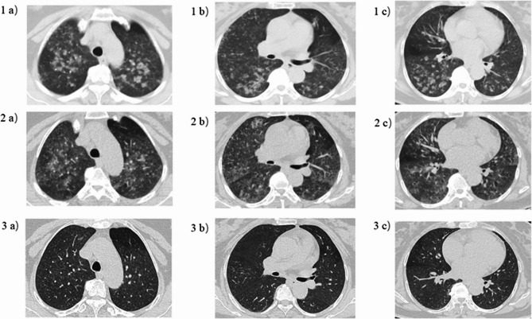
Serial chest CT across identical planes after accidental nitric acid fume inhalation: diffuse bilateral pulmonary exudation at 8 hours (1a–1c), visually similar CT appearance at day 3 despite severe hypoxic deterioration (2a–2c), and marked resolution by day 5 (3a–3c). Fig. 1 from Zhao et al. (2025), BMC Pulmonary Medicine · PMC12224870 (CC BY 4.0)
EXHIBIT B · ULTRASOUND / ECHO · CC BY 4.0
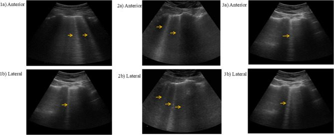
Serial anterolateral bedside lung ultrasound tracking vertical comet-tail B-lines (arrows) in the same patient: 3 total B-lines at 8 hours (1a, 1b), rising to 5 B-lines during day-3 deterioration when repeat CT looked unchanged (2a, 2b), and falling to 2 B-lines by day 5 (3a, 3b). Fig. 2 from Zhao et al. (2025), BMC Pulmonary Medicine · PMC12224870 (CC BY 4.0)
240 Breathless Copenhagen Patients, Bayes’ Theorem, and Two Clocks That Beat Olfactory Fatigue
To see why B-lines always demand clinical context, travel to Copenhagen University Hospital, where Kristina Cecilia Miger and colleagues (Diagnostics, November 2025) enrolled 240 non-critical adults aged 50 and older presenting with acute dyspnea across 216 random weekdays (completing exam, bloods, blinded 8-zone LUS, chest X-ray, low-dose CT, and echocardiography in a median 4 hours). Blinded cardiologists adjudicated strict acute heart failure in 66 of 240 patients—an exact pre-test probability of 27.5% (pre-test odds 66 ÷ 174 = 0.379). Scored on B-lines alone (Method 1), ultrasound caught just 31 of 66 heart failure cases: 47% sensitivity, 86% specificity (150/174), and a verified Table 2 positive likelihood ratio of 3.41 (setting aside a transposed 4.31 in prose), largely because pleural effusions—present in 82% (54/66) of heart failure cases and bilaterally in 67% (44/66)—compressed lung bases and acoustically hid B-lines. Adding bilateral pleural effusion (Method 2) boosted sensitivity to 80% (53/66) at 84% specificity (PLR 5.18), lifting post-test odds to 1.965 and post-test probability to 66.3% (1.965 ÷ 2.965)—still leaving 27 false positives among 80 positive scans (one-third!) in an older cohort rich in COPD (52.5%) and lung scarring where chest X-ray (PLR 7.91, PPV 75%) actually outperformed LUS overall.
Copenhagen’s chronic lung comorbidities and Yangzhou’s acid plume converge on one law: ultrasound measures subpleural density, while history and physiology save lives across two distinct clocks. Across the first 24 to 48 hours after inhaling nitric acid or nitrogen-oxide fumes, ATSDR and MedlinePlus guidelines insist on active medical observation even after a brief cough vanishes—never unarmed hot-zone rescues (SCBA only), home nebulizers, or going home to lie flat in bed when the 3-to-30-hour capillary leak peaks. Across the months that follow, OSHA hierarchy rules retire the nose as a gas detector (nitric oxide is odorless and nitrogen dioxide dulls smell), requiring acid-resistant enclosures, local exhaust ventilation, strict separation from metals and organics, fit-tested NIOSH gas/vapor or supplied-air respirators (dust masks stop zero NO2), and pulmonary follow-up if reactive airways or bronchiolitis obliterans tighten the chest at night.
RED FLAGS · A QUIET THROAT AND A DUST MASK STOP ZERO NITROGEN DIOXIDE
Guarding the Latent Window and Engineering Fumes Out of the Breathing Zone
Never sleep off a ‘brief cough’ at shift’s end: Low-solubility nitrogen oxides routinely leave a 3-to-30-hour quiet interval before alveolar flooding; seek prompt medical evaluation and 24–48 hour observation with chemical/time details rather than trusting an unswollen throat.
Read SpO2 beside oxygen flow and serial lungs: A 97% pulse-oximeter readout on 5 L/min oxygen masked a 277 mmHg P/F ratio before a 62.1% day-three drop—leave oxygen, imaging, cardiac exclusion, and steroids strictly to inpatient clinicians, never home inhalers or neutralizers.
Respect SCBA rescue and respirator physics: Move to fresh air safely and flush liquid acid skin spills with copious water, never enter unventilated fume zones without positive-pressure SCBA, and never wear surgical or N95 dust masks against gases.
Engineer the line and track nighttime tightness: Enclose nitric acid baths with corrosion-resistant local exhaust, segregate metals/organics/combustibles, and get formal pulmonary follow-up if nocturnal chest tightness or exertional dyspnea appears months after recovery.
✂ FIRST 60 SECONDS · NITRIC ACID OR NITROGEN-OXIDE FUME INHALATION
GET TO FRESH AIR WITHOUT UNPROTECTED RESCUE: Move immediately into clean air and flush any liquid acid on skin or clothing with copious water so off-gassing stops; never let coworkers enter an unventilated fume release without positive-pressure SCBA.
DO NOT GO HOME TO SLEEP OFF A BRIEF COUGH: Contact emergency services or Poison Control promptly and arrange 24–48 hours of clinical observation—nitrogen oxides bypass throat pain to trigger life-threatening alveolar flooding 3 to 30 hours later.
HAND CLINICIANS THE EXACT EXPOSURE CLOCK: Report the acid concentration, yellowish/reddish-brown fume color, exact inhalation time and duration, room enclosure, and any metal or organic reaction (sending an SDS only if reachable without re-entry).
AUDIT VENTILATION AND NIGHTTIME BREATHING LATER: Verify corrosion-resistant local exhaust, chemical segregation, and fit-tested gas/vapor respirators (never dust masks) before return to work, and schedule pulmonary testing if nocturnal chest tightness develops.
Part II
The Kitchen & Dining Table
Ordinary meals, sneaky chemistry, and cleaning bottles that hate each other.
CHAPTER 39 · FILE № 008 · Ep 2283
The Wire Behind the Pain
How a stray metal bristle from a backyard grill brush can sew its way straight out of your small intestine—without tasting like steel, triggering vomiting, or leaving a drop of blood in the toilet.
Two Days of Belly Pain and Zero Memory of a Crime
We like to believe that if we ever accidentally swallow a piece of sharp steel, our mouths will immediately file a complaint—dramatic coughing, throat-clutching, and a stern lecture aimed at whoever manned the grill. Human digestion is far less theatrical and considerably more treacherous.
In a 2025 report in the International Journal of Surgery Case Reports, Mikkel Christian Larsen and colleagues at Horsens Regional Hospital in Denmark described a generally healthy 51-year-old woman referred after two days of constant left and central abdominal pain that sharpened whenever she moved. She wasn't nauseated. She hadn't vomited once. Her stool looked entirely normal, with zero visible blood. And she had zero memory of swallowing anything sharp. (To keep our ledger scrupulously honest: the report records no barbecue, burger, or matched brush—we never invent a backyard cookout the medical chart didn't witness.)
Her abdomen, however, refused to play along with the reassuring symptoms. The right side was soft, while the left side was guarded, sharply tender, and showed unmistakable peritoneal signs. Her blood C-reactive protein (CRP) came back elevated at 125 mg/L (12.5 mg/dL). A CT scan revealed heavy inflammation wrapping a loop of small bowel—plus a bright, high-attenuation linear streak hinting at a tiny piece of metal where metal has no business being. (One delightful peer-review gremlin: the paper's text repeatedly calls it CT, while Figure 1's caption mislabels it MRI—always read past the captions.)
FORENSIC INFOGRAPHIC · HIDDEN FOREIGN BODY
How a 2-cm Grill Bristle Walks Straight Past Standard X-Rays
Stray stainless wire bristles from worn barbecue brushes are thin enough to hide behind spine shadows on plain X-rays—and stiff enough to spear straight through the small bowel wall.
Why Normal Stool Cannot Certify an Intact Intestine
Urgent diagnostic laparoscopy solved the riddle on the operating table. Nestled in the left upper abdomen inside a tangle of adhesions sat a walled-off pocket of pus—and poking right out through the small-bowel wall, about 50 centimeters past the ligament of Treitz inside a 5-centimeter hardened zone, was a thin piece of metal wire.
How does steel puncture right through your gut without blocking anything or making you throw up? Because a blockage and a hole are totally different engineering failures. A swallowed peach pit stops traffic and causes projectile backups. A hair-thin bristle rides quietly alongside dinner until normal muscular waves drive its tip straight through the intestinal wall like a sewing needle through denim. Traffic keeps rolling politely down the hallway while gut bacteria slip out the puncture and force neighboring tissue to barricade the leak into an abscess.
Although no specific brush was ever matched in this Danish case—making grill-brush origin the surgeons' well-founded suspicion rather than a DNA match—the backyard culprit itself has an ugly rap sheet. A 2012 CDC investigation in Providence, Rhode Island documented six patients over sixteen months with throat or abdominal wire injuries after grilled meat. A 2016 national injury study by Baugh, Hadley, and Chang projected roughly 1,698 US emergency-department visits from grill-brush wires across 2002–2014 (from 43 sampled NEISS cases)—and on September 1, 2026, Health Canada recalled specific Cuisinart metal-bristle brushes over this exact hazard.
REFERENCE EXHIBIT · CT / IMAGING SCAN · CC BY 4.0
ILLUSTRATIVE REFERENCE EXHIBIT — Verified CC BY diagnostic figure from a separate peer-reviewed publication showing the same mechanism (not the index patient).
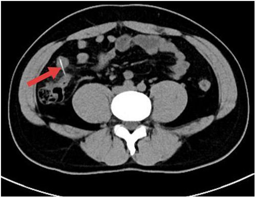
CT scan showing a linear hyperdense foreign body (red arrow) in the right lower quadrant. Figure 2 from Zhang et al. (2026), Frontiers in Surgery · PMC13219350 (Reference Case) (CC BY 4.0)
The Fatal Slice of Bread (and Checklist Perfectionism)
Two deeply human habits turn stray wires into surgical epics. First is symptom-checklist perfectionism: convincing yourself that because you aren't vomiting and there's no blood in the bowl, your gut wall must be fine. This woman flunked every textbook obstruction sign and still needed a small-bowel resection and reconnection (mercifully, she recovered cleanly and went home three days after surgery).
The second trap kicks in when you actually DO feel a sharp prick in your throat mid-bite. Generations of terrible kitchen folklore immediately recommend wolfing down dry bread or chugging water to "push it down," or forcing yourself to vomit it back up. If the culprit is a stiff steel bristle, shoving bread behind it—or heaving violently upward—effectively turns a tiny harpoon into a powered jigsaw traveling millimetres from your trachea and aorta. Being able to breathe normally does not clear a swallowed sharp object, and a Heimlich maneuver cannot fish a wire out of your esophagus or bowel.
RED FLAGS · DO NOT SLEEP THIS OFF
When a Stomach Ache Stops Being Ordinary
Any remembered or strongly suspected swallowing of a wire or sharp fragment—even if the initial sting fades—earns urgent emergency evaluation.
Sudden sharp throat pain, painful swallowing, drooling, or neck/chest pain after a meal signals possible upper-tract lodging.
Persistent or worsening abdominal pain—especially pain that flares when you move, walk, or cough—even with ZERO vomiting and totally normal stool.
Breathing difficulty, sudden severe pain, GI bleeding, confusion, or collapse = call 911 (or your local emergency number) immediately.
✂ FIRST 60 SECONDS · SUSPECTED WIRE OR SHARP INGESTION
STOP EATING & DO NOT PUSH IT DOWN: Do NOT swallow bread, rice, or water to chase a sharp object down, do NOT induce vomiting, and do NOT excavate your throat with fingers or tweezers.
GET URGENT CARE / CALL 911: Call 911 immediately for breathing trouble, severe chest/belly pain, bleeding, or collapse; otherwise go straight to an ER (do not drive yourself in severe pain).
GIVE THE ER THE CLEAN TIMELINE: Share when pain started, whether movement worsens it, and any recent grilled food—without wasting precious minutes hunting down a grill-brush receipt.
EXILE METAL GRILL BRUSHES TODAY: Throw out shedding wire-bristle brushes right now. Switch to wooden scrapers, coiled bristle-free cleaners, pumice stones, or balled foil—and inspect grates before food lands.
CHAPTER 40 · FILE № 009 · Ep 1171
The Lunch That Looked Like an Allergy
You did not suddenly develop a terrifying adult seafood allergy at noon—a quiet break in the cold chain turned harmless tuna amino acids into a massive, heat-proof dose of histamine.
Twenty-Three Diners Turning Crimson at Once
On an ordinary Thursday afternoon—April 20, 2017—lunch service wrapped up at a military catering facility just outside Paris. Minutes later, 23 diners began flushing lobster-red across their faces and chests, clutching pounding headaches, breaking out in rashes, fighting nausea, and feeling their hearts hammer inside their ribs. In a military compound in 2017, two dozen people simultaneously crashing into sudden vascular chaos does not look like a bad cafeteria special; it looks like a coordinated chemical attack.
When epidemiologists led by Velut and colleagues (2019) mapped the outbreak across 40 total cases—with 39 of 79 yellowfin tuna diners falling ill—statistical modeling cleared the innocent cod fritters on the menu and pointed straight at the tuna. Nobody had suddenly acquired an identical synchronized fish allergy over lunch. They had been dosed directly with preformed histamine.
That is the devilish theater of scombroid fish poisoning: it hijacks the exact same receptors your own mast cells pull during anaphylaxis, producing a near-perfect clinical forgery of a life-threatening allergy—even though your immune system's IgE antibodies never fired a shot.
Why Searing the Fillet Locks the Chemical Punch Right In
Dark-fleshed pelagic fish—yellowfin tuna, mackerel, mahi-mahi, bonito, skipjack—naturally pack high levels of a totally harmless amino acid called histidine inside their swimming muscles. Keep the fish ice-cold from boat deck to skillet, and histidine stays polite. Let one quiet link in that transoceanic cold chain warm up for a few hours, and surface bacteria fire up an enzyme called histidine decarboxylase that snips histidine straight into bioactive histamine.
Here is where home-kitchen intuition fails completely. Most of us assume heat is a universal absolution: cook questionable meat until it's steaming, kill the bacteria, eat in peace. Histamine laughs at your grill. It is fiercely heat-stable—canning, frying, searing, and freezing leave the molecule completely intact. Even worse, bacterial histamine production outruns the putrefactive stink of spoilage, meaning a tuna steak can look pristine, smell faintly of clean ocean, and still pack enough chemical punch to drop your blood pressure before you finish the side salad.
As CDC traceback audits in Louisiana and Tennessee have shown, histamine's brief half-life in human blood also turns bedside lab confirmation into chasing a ghost—the definitive physical proof usually sits in the kitchen leftovers rather than the patient's arm.
REFERENCE EXHIBIT · CLINICAL EVIDENCE · CC BY 4.0
ILLUSTRATIVE REFERENCE EXHIBIT — Verified CC BY diagnostic figure from a separate peer-reviewed publication showing the same mechanism (not the index patient).
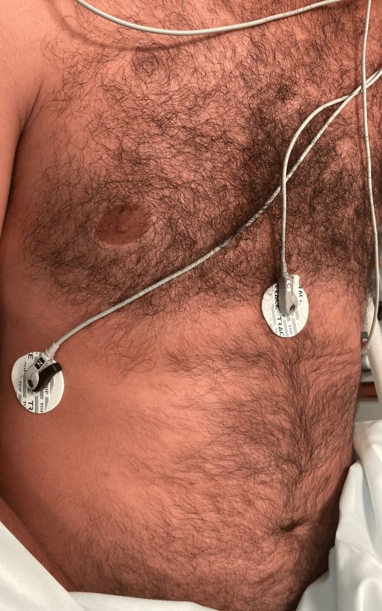
Patient’s torse showing exuberant erythema with reddish color in the torso and limbs. Figure 1 from Oliveira et al. (2025), Cureus · PMC12679046 (Reference Case) (CC BY 4.0)
Peppery Tuna and the Lifelong Allergy Myth
One quirky warning sign sometimes gives the fish away before you swallow half the plate: diners frequently notice a sharp, metallic, or oddly peppery bite on the tongue from a fillet that wasn't seasoned with pepper. Ignore that sting—or mask it under spicy mayo—and flushing, hives, throbbing headache, dizziness, and racing pulse can hit within 10 to 60 minutes.
Because scombroid masquerades so convincingly as IgE-mediated seafood anaphylaxis, victims often leave urgent care convinced they can never touch tuna again, while the restaurant quietly serves the rest of the contaminated loin to the dinner shift. In reality, antihistamines (H1 and H2 blockers) usually calm mild-to-moderate cases rapidly within hours—though severe wheezing, throat swelling, or hypotension still requires emergency airway and hemodynamic stabilization because no bystander can tell scombroid apart from true anaphylaxis by guessing.
RED FLAGS · SPIT IT OUT
When Lunch Stops Being Seafood and Becomes Pharmacology
A sudden metallic, bitter, or mysteriously peppery tingling on your tongue from tuna, mackerel, or mahi-mahi—do not swallow the rest to be polite.
Rapid facial and upper-chest flushing, throbbing headache, hives, sweating, or heart palpitations beginning 10 to 60 minutes after eating dark-flesh fish.
Multiple people at the same table flushing simultaneously after sharing the same fish dish—a near-dead giveaway for scombroid rather than coincidence.
Any wheezing, tongue/throat tightness, dizziness, or fainting after eating fish demands immediate 911 emergency care—never gamble on whether it's "just" scombroid vs. true anaphylaxis.
✂ FIRST 60 SECONDS · SUSPECTED SCOMBROID FISH REACTION
STOP EATING IMMEDIATELY: Spit out any fish that tastes sharp, metallic, or oddly peppery, and warn everyone else at the table to stop eating the same dish.
CALL 911 FOR AIRWAY OR DIZZINESS: If anyone develops trouble breathing, wheezing, throat tightness, or lightheadedness, treat it like anaphylaxis immediately—call 911 and use epinephrine if prescribed.
SAVE THE LEFTOVERS & RECEIPT: Keep a refrigerated sample of the uneaten fish or note the exact restaurant/lot—because blood histamine fades fast, the leftover fillet is what proves the outbreak.
ALERT THE KITCHEN & HEALTH DEPT: Tell the restaurant or grocer immediately so the rest of the thawed loin comes off the line before the dinner rush gets dosed too.
CHAPTER 41 · FILE № 010 · Ep 2282
The Room That Was Not Safe to Finish
Mixing two brightly colored bottles under your sink does not make super-cleaner—it turns an enclosed bathroom into a chemical trench where your own lung moisture brews hydrochloric acid.
Chemistry Does Not Care About Your Zip Code
We spend thousands of dollars locking our front doors and installing security cameras, then cheerfully stash industrial oxidizers and mineral acids side by side under the kitchen sink because the plastic jugs come in pastel colors. Chemistry does not recognize a residential lease.
In a 2025 report in Clinical Practice and Cases in Emergency Medicine, Fisher and colleagues documented an adult case (Case 2): a 58-year-old man with a history of asthma and uncontrolled diabetes who was cleaning stubborn shower mold inside an enclosed bathroom. He combined a sodium hypochlorite product (bleach) with a hydrochloric acid cleaner. There was no cinematic green fog rolling across the floor—just an instant, invisible release of pure chlorine gas that triggered acute shortness of breath within minutes.
A national CDC MMWR analysis by Chang and colleagues (2020) showed just how common domestic chemical ambition becomes when people scrub harder—poison-center calls for cleaning and disinfectant exposures jumped roughly 20.4% in a single year (from a 37,822 baseline in 2019), with bleach mixtures leading the parade.
FORENSIC INFOGRAPHIC · DOMESTIC CHEMICAL WARFARE
Under-Sink Alchemy: Three Bottles That Never Share a Bucket
Sodium hypochlorite (bleach) plays well with cold water—and turns into World War I lung-searing chlorine or chloramine gas the instant you chase it with acid toilet cleaner, vinegar, or ammonia.
Turning Your Own Lungs Into an Acid Beaker
The most unsettling part of chlorine or chloramine inhalation isn't what happens inside the bathtub—it is what happens inside your chest. Your trachea, bronchi, and microscopic alveoli are lined with a thin film of water so oxygen can diffuse into blood. The moment inhaled chlorine gas meets that biological moisture, it reacts on contact to form hydrochloric acid and hypochlorous acid directly across your airway lining.
Your body literally helps convert the invisible gas back into corrosive acid from the inside out. Capillary walls swell and start leaking fluid into air spaces—non-cardiogenic pulmonary edema—which emergency clinicians can now watch lighting up in real time as bright vertical "B-lines" on point-of-care lung ultrasound, sometimes requiring tight-fitting noninvasive positive-pressure ventilation (NIPPV) masks to keep fluid-logged lungs open without a breathing tube.
Worse still, toxic inhalation injuries are infamous for delayed ambush: especially with chloramine gas (bleach + ammonia), initial coughing can briefly settle once you step into the hallway, only for alveolar fluid buildup and suffocating hypoxia to crescendo hours later.
REFERENCE EXHIBIT · CLINICAL EVIDENCE · CC BY 4.0
ILLUSTRATIVE REFERENCE EXHIBIT — Verified CC BY diagnostic figure from a separate peer-reviewed publication showing the same mechanism (not the index patient).
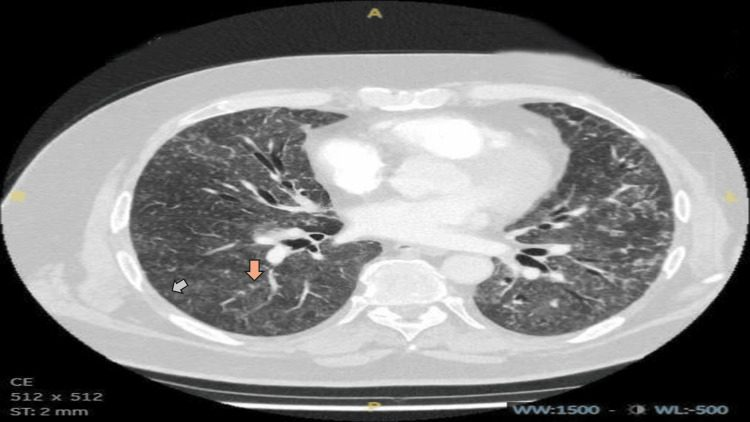
CTPA from current admissionInitial CTPA revealed diffuse ground-glass opacities with a centrilobular nodular pattern in both lungs. Additional findings include mosaic attenuation, a tree-in-bud appearance, and areas of air trapping. The grey arrow indicates a centrilobular nodular… Figure 2 from Mustafa et al. (2024), Cureus · PMC11499000 (Reference Case) (CC BY 4.0)
Normalcy Bias and the Urge to Rinse One More Tile
If you press your palm against a hot skillet, spinal reflexes yank your hand back before your brain can formulate an opinion. Toxic air triggers no such graceful autopilot. Because the tiled shower looks identical to how it looked five minutes earlier, normalcy bias whispers the worst advice in household safety: "My eyes are stinging, so let me hold my breath, scrub this last corner, and wash it down the drain."
Even worse is the DIY chemistry instinct—pouring vinegar, baking soda, or a third product onto a smoking puddle to "neutralize" the spill, or stepping back into the exact same bathroom to rinse your burning eyes in the shower. Every extra second inside that box multiplies the acid load on your alveoli.
RED FLAGS · ABANDON THE CHORE
When to Walk Out and Leave the Sponge Behind
Sharp chemical sting in the nose, throat, or eyes, sudden coughing, chest tightness, or a distinct swimming-pool/bleach burn after using any cleaner—leave the room immediately.
Never mix bleach with vinegar, toilet-bowl acids, rust removers, drain cleaners, or ammonia (including glass cleaners and even concentrated urine in litter boxes).
Delayed wheezing, hoarseness, or worsening shortness of breath hours after stepping away from fumes—pulmonary edema can peak long after the smell fades.
Never re-enter the hazard bathroom to shower off or "neutralize" the puddle; rinse eyes/skin at a distant sink or garden hose and call 911 or Poison Help (1-800-222-1222).
✂ FIRST 60 SECONDS · CLEANING-GAS EXPOSURE
EVACUATE TO FRESH AIR NOW: Drop the sponge, hold your breath as you exit, close the door behind you if safe to contain fumes, and get outside—never stay to "finish rinsing."
DO NOT RE-ENTER OR NEUTRALIZE: Never pour another chemical onto the spill to cancel it out, and never go back into the fume-filled bathroom to use the shower.
RINSE ELSEWHERE & CALL FOR HELP: Flush irritated eyes/skin with lukewarm water at a kitchen sink or outdoor hose; call 911 immediately for shortness of breath, chest pain, or wheezing (or US Poison Help 1-800-222-1222).
ONE PRODUCT, ONE DAY: Keep cleaners in original labeled jugs, turn on exhaust fans before opening bottles, rinse thoroughly with plain water, and never layer two different products in the same session.
CHAPTER 42 · FILE № 011 · Ep C112
The Herbal Tea That Stole Potassium
Real black licorice root knocks out a single kidney gatekeeper enzyme—tricking your own stress hormone into draining potassium until your muscles lock up and your heart twists into arrest.
Trapped Inside Her Own Body by a Mug of Tea
Paramedics roll a 73-year-old woman through the emergency-room doors in Kyoto. She cannot lift her arms. She cannot stand. She cannot even summon the neck strength to lift her head off the pillow. Any ER physician immediately thinks massive brainstem stroke, Guillain-Barré syndrome, or a devastating neurotoxin—until they glance up at the monitor.
Her blood pressure is screaming at 218/118 mmHg. Her cardiac rhythm is twisting into the lethal spiral of torsades de pointes. Her serum potassium—normally a disciplined 3.5 to 5.0 mEq/L—has cratered to a barely survivable 1.6 mEq/L, and her muscle-breakdown enzyme creatine kinase (CK) has exploded to 18,400 U/L as potassium-starved skeletal muscle literally dissolves into rhabdomyolysis.
The culprit wasn't a synthetic street drug or an industrial leak. She had been drinking a traditional herbal licorice preparation for leg cramps—a botanical classic that quietly turned her own kidneys into a potassium siphon.
How Your Gut Bacteria Pull the Trigger on Cortisol
Authentic black licorice root (Glycyrrhiza glabra)—not red candy flavored with cherry, and not anise oil—contains glycyrrhizin. On its own, glycyrrhizin is fairly polite. The sabotage happens when your own commensal gut bacteria hydrolyze the sugar off the molecule, transforming it into active glycyrrhetinic acid. Because every person's microbiome runs different bacterial enzyme crews, one tea drinker can sip licorice for years while another crashes into paralysis in days.
Once absorbed, glycyrrhetinic acid ambushes a crucial molecular bouncer inside your kidney tubules called 11β-hydroxysteroid dehydrogenase type 2 (11β-HSD2). Normally, that enzyme stands guard over mineralocorticoid receptors—the switches that tell kidneys to hoard salt and dump potassium—by instantly disarming cortisol (which circulates at far higher concentrations than aldosterone) into inactive cortisone.
Knock out 11β-HSD2, and everyday cortisol storms straight into the aldosterone receptor wearing a fake badge. Your kidneys lock onto sodium and water (driving blood pressure toward 218/118), shut down endogenous renin activity to almost zero (<0.1 ng/mL/h), and dump potassium relentlessly into the urine until neither your limbs nor your heart can generate an electrical impulse.
REFERENCE EXHIBIT · ELECTROCARDIOGRAM · CC BY 4.0
ILLUSTRATIVE REFERENCE EXHIBIT — Verified CC BY diagnostic figure from a separate peer-reviewed publication showing the same mechanism (not the index patient).
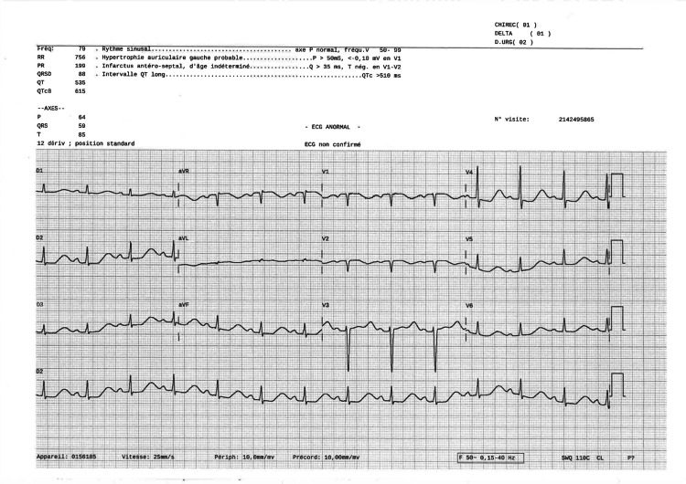
ECG showing U waves and a prolonged corrected QT interval (604 ms)ECG: electrocardiogram Figure 1 from Guarneri et al. (2026), Cureus · PMC13307586 (Reference Case) (CC BY 4.0)
The Wellness-Aisle Blind Spot
"Natural" is a marketing adjective, not a pharmacology exemption. Real licorice root hides not just in black candy twists, but in throat-soothing herbal teas, digestion blends, traditional Kampo/herbal remedies, chewing tobaccos, and even certain aperitifs. Pair daily glycyrrhizin intake with a routine blood-pressure diuretic (like hydrochlorothiazide or furosemide) or older age, and potassium loss accelerates off a cliff.
In the ICU, rescuing this patient required central-line potassium replacement, intravenous magnesium to stabilize her twisting heart rhythm, and spironolactone to slam the mineralocorticoid receptor back shut—far more drama than anyone expects from a mug steeped to soothe a leg cramp.
RED FLAGS · CHECK THE LABEL
When Licorice Stops Being Candy
Progressive heavy muscle weakness, leg cramps that keep getting *worse*, or trouble rising from a chair while drinking daily herbal teas or eating authentic black licorice.
Sudden unexplained blood-pressure spikes, facial/ankle swelling, or fluttering heart palpitations—especially if you also take diuretics, blood-pressure pills, or digoxin.
Check ingredient panels for "licorice root," "Glycyrrhiza glabra," or "glycyrrhizic acid"—note that deglycyrrhizinated licorice (DGL) removes the offending compound, while whole root keeps it.
Severe weakness, paralysis, chest pain, or fainting = 911 immediately; tell the ER team about every herbal tea and supplement, not just prescriptions.
✂ FIRST 60 SECONDS · SUSPECTED LICORICE HYPOKALEMIA
STOP ALL LICORICE PRODUCTS: Cut off black licorice candy, licorice-root herbal teas, throat blends, and Kampo/botanical mixes immediately—even if you've drunk them safely before.
CALL 911 FOR WEAKNESS OR PALPITATIONS: Rapid limb weakness, trouble lifting your head, chest pain, or racing/fluttering heartbeats can signal lethal low potassium and imminent arrhythmia.
BRING THE TEA BOX TO THE ER: Doctors rarely guess herbal tea during a stroke-like workup. Hand them the exact package so they check electrolytes, ECG, and renin/aldosterone immediately.
TREAT REAL LICORICE LIKE A DRUG: If you have hypertension, kidney disease, heart disease, or take diuretics, skip real glycyrrhizin licorice daily habits (or confirm products are explicitly anise-flavored or DGL).
CHAPTER 43 · FILE № 012 · Ep C115
Wild Garlic's Lethal Lookalike
Every spring, foragers harvest bright green woodland leaves for pesto—and a few accidentally pick autumn crocus, packing a tricyclic alkaloid that freezes cell division solid across the entire body.
A Spring Salad With No Reverse Gear
Foraging feels wholesome and ancestral right up until botany reminds you that plants evolved secondary metabolites specifically to discourage mammals from eating them. Every spring across Europe and temperate woodlands, enthusiastic cooks gather shiny, lance-shaped green leaves of wild garlic (Allium ursinum) for homemade pesto—and every spring, emergency departments brace for the patients who accidentally picked its nearly identical neighbor: autumn crocus (Colchicum autumnale).
Unlike mushrooms that advertise bad intentions with bizarre shapes, Colchicum autumnale sprouts innocent green spring foliage long before its purple autumn flowers ever appear. Visually, side by side in a damp forest patch, the leaves look remarkably close. Chemically, they live on different planets: wild garlic contains tasty sulfur aromatics; autumn crocus is loaded with colchicine—one of the most unforgiving cellular poisons in clinical toxicology.
Freezing the Cellular Scaffolding in Mid-Division
In tiny, carefully measured prescription doses, colchicine calms gout flares by restraining neutrophil migration and NLRP3 inflammasome signaling. At the uncontrolled doses packed into a handful of foraged leaves, that same tricyclic alkaloid snaps tightly onto α/β-tubulin heterodimers—the Lego bricks every dividing cell uses to build microtubules and mitotic spindles.
Once tubulin polymerization locks up, cells trying to divide freeze mid-act into a chilling microscopic signature pathologists call "ring mitoses." Every rapidly renewing tissue in your body—your gut lining first, then your bone marrow, hair follicles, heart muscle, and kidneys—quietly runs out of replacement cells while transport highways inside nerve and cardiac cells jam solid.
Worse still, there is no widely available magic-bullet antidote waiting on the ER shelf. Once colchicine binds deeply inside tissues with its huge volume of distribution, standard dialysis cannot meaningfully scrub it out. Survival depends almost entirely on catching it in the very earliest hours for aggressive decontamination and intensive supportive care.
HAZARD REFERENCE · VERIFIED PHOTO · CC BY 4.0
VERIFIED HAZARD REFERENCE PHOTO — Commercial-cleared Public Domain / CC BY photograph of the organism or physical hazard (not the index scene).
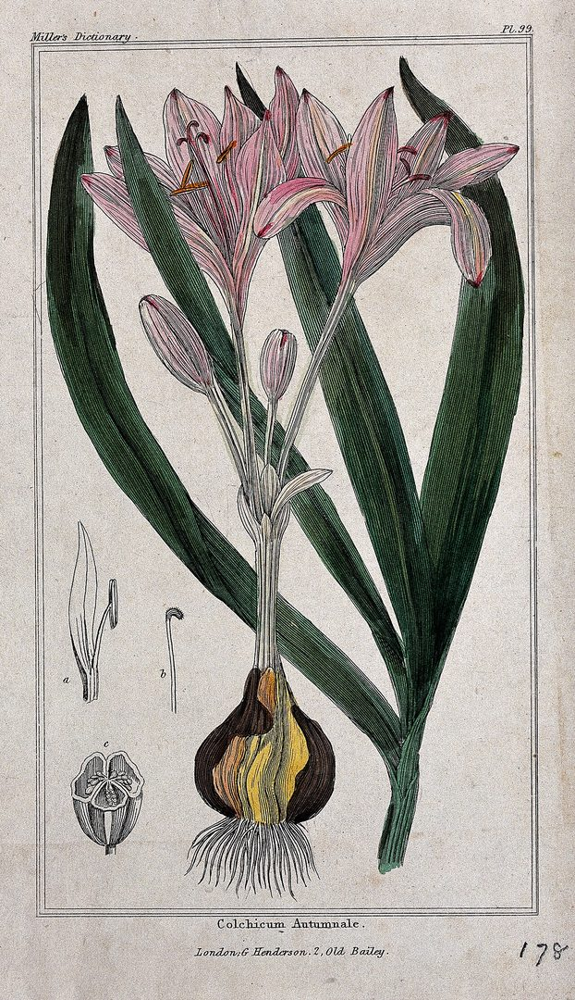
Autumn crocus (Colchicum autumnale): flowering plant, leaves and floral segments. Coloured etching, c. 1836. Iconographic Collections Keywords: Philipp Miller Wikimedia Commons Contributor · Wikimedia Commons (Autumn crocus (Colchicum autumnale); flowering plant, leaves Wellcome V0044257.jpg) (CC BY 4.0)
The Treacherous Calm Before Multi-Organ Collapse
Colchicine poisoning follows a classic, cruel three-act trap. Phase 1 hits within hours with brutal nausea, vomiting, and watery diarrhea—easy to brush off as garden-variety food poisoning or a bad salad. As initial vomiting eases, patients sometimes experience a brief, deceptive lull that feels like recovery.
Phase 2 (roughly 24 to 72 hours post-ingestion) is where the floor drops out: bone-marrow suppression, shock, arrhythmias, metabolic acidosis, kidney failure, and acute respiratory collapse. Patients who survive that storm often enter Phase 3 a week or two later—shedding clumps of hair painlessly as arrested hair-follicle cells finally let go, the biological echo of a skeleton-level shutdown.
RED FLAGS · DO NOT WAIT OUT THE FLU
Foraging Rules That Keep You Out of the ICU
Never identify wild garlic by leaf shape alone—and never rely solely on smell after handling multiple leaves, because garlic oil lingering on your fingers masks odorless autumn crocus leaves picked next.
Severe vomiting, watery diarrhea, or burning abdominal pain within hours of ANY foraged woodland salad, soup, or pesto is an immediate ER emergency—never "sleep off food poisoning."
Save leftover pesto, uneaten leaves, or a clear photo of the exact patch—botanical confirmation in hour two changes everything before Phase 2 collapse starts.
Even if stomach symptoms briefly improve after day one, do not skip hospital monitoring after suspected Colchicum exposure; organ failure peaks on days 2–3.
✂ FIRST 60 SECONDS · SUSPECTED WILD-GARLIC LOOKALIKE
GO TO THE ER IMMEDIATELY: Do not treat severe vomiting or diarrhea after eating foraged leaves like ordinary stomach flu—early gastric decontamination matters most in the first hours.
BAG THE LEFTOVER LEAVES OR PESTO: Bring uneaten plant material, stems, and photos of the harvest site straight to the ER so toxicologists and botanists can rule out Colchicum autumnale fast.
CALL POISON CONTROL EN ROUTE: In the US call 1-800-222-1222 (or your regional poison center) so hospital toxicology can prepare before you hit the doors.
NEVER TRUST SMELL ON GARLIC HANDS: Wild garlic leaves smell strongly of garlic individually, while autumn crocus is odorless—once garlic oil coats your fingers, you can no longer smell the lethal twin. When in doubt, buy pesto at the store.
CHAPTER 44 · FILE № 013 · Ep C126
The Leftover Pasta and the Home-Canned Jar
Why microwaving room-temperature rice or pasta until it steams won't touch a heat-proof mitochondrial assassin—and how low-acid home canning breeds the deadliest biological neurotoxin on Earth.
The Heat-Proof Plastic Bracelet Inside Room-Temperature Pasta
Almost every student and busy cook has stared at a pot of cooked pasta or rice left on the stove overnight and made the same hopeful gamble: "I'll nuke it until it's molten lava—that kills everything." That gamble works on live bacteria. It fails catastrophically against Bacillus cereus.
Bacillus cereus forms tough spores that shrug off ordinary boiling during initial cooking. When cooked starchy food sits cooling slowly at room temperature for hours or days, those spores wake up, multiply, and secrete a preformed toxin called cereulide. Cereulide is not a delicate protein you can scramble like an egg white; it is a 36-membered cyclic dodecadepsipeptide—essentially a microscopic Kevlar bracelet structurally akin to valinomycin.
Reheating the leftovers kills the bacteria while leaving the cereulide bracelet completely untouched. Once absorbed into your bloodstream, this fat-loving ring dives straight into liver mitochondria—whose inner membranes maintain a fierce -180 millivolt charge—cages potassium ions, strips away their water shells, and drags them inside, short-circuiting the cellular battery. Within 18 hours in severe documented cases, hepatic beta-oxidation stalls into microvesicular fat accumulation and fulminant liver failure.
FORENSIC INFOGRAPHIC · THERMAL SURVIVAL LIMITS
Why Boiling the Leftovers Still Cannot Kill These Two Kitchen Toxins
Standard reheating kills living bacteria—but Bacillus cereus emetic toxin (cereulide) laughs at 121°C, and Clostridium botulinum spores survive boiling water baths to bloom inside low-acid jars.
The Silent Precision of the Home-Canned Green Bean
Across the pantry sits the opposite threat: Clostridium botulinum hiding inside improperly processed low-acid home-canned vegetables—think green beans, asparagus, beets, corn, or garlic infused in oil. Like B. cereus, C. botulinum survives boiling water (100°C / 212°F) as dormant spores; destroying them in low-acid jars requires a true pressure canner reaching 116–121°C (240–250°F).
Seal those spores inside an oxygen-free glass jar at room temperature, and they bloom into botulinum neurotoxin—without necessarily making the beans smell rotten or look cloudy. Instead of blowing up mitochondria, botulinum toxin enters motor nerve terminals and acts like molecular wire-cutters, cleaving SNARE proteins required to fuse acetylcholine vesicles. Your brain fires the command to open your eyelids, swallow, and inhale—and the muscles simply never receive the memo, triggering descending flaccid paralysis.
HAZARD REFERENCE · VERIFIED PHOTO · Public Domain
VERIFIED HAZARD REFERENCE PHOTO — Commercial-cleared Public Domain / CC BY photograph of the organism or physical hazard (not the index scene).
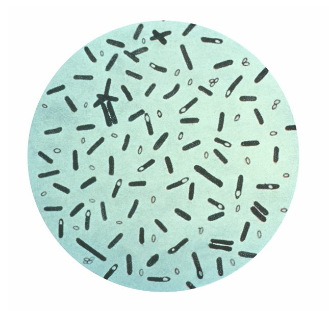
A photomicrograph of Clostridium botulinum bacteria. This is a photomicrograph of Clostridium botulinum stained with Gentian violet. The bacterium C. botulinum produces a nerve toxin, which causes the rare, but serious paralytic illness Botulism. Content Providers: CDC · Wikimedia Commons (Clostridium botulinum 01.png) (Public Domain)
Two Kitchen Habits That Kill Both Traps Forever
Both disasters thrive on the exact same blind spot: trusting your nose and trusting the microwave. Cereulide is tasteless, odorless, and survives boiling temperatures that would burn your tongue. Botulinum toxin cannot be smelled or tasted either (though note an important contrast: unlike cereulide, botulinum neurotoxin itself IS heat-labile if thoroughly boiled for 10 minutes—yet nobody should ever rely on boiling suspicious, bulging, or un-pressure-canned jars instead of throwing them away).
Put cooked rice and pasta in shallow containers inside the refrigerator promptly—never overnight on the counter—and treat any low-acid home-canned food made in a water bath instead of a tested pressure canner as radioactive.
RED FLAGS · WHEN IN DOUBT, THROW IT OUT
Kitchen Rules & Symptoms Never to Ride Out
Cooked rice, pasta, or starchy leftovers left sitting at room temperature for more than 2 hours (or 1 hour above 90°F)—bin them; reheating will NOT destroy preformed cereulide.
Severe, relentless vomiting starting 1–5 hours after reheated rice/pasta—especially paired with extreme lethargy, jaundice, confusion, or abdominal pain—needs immediate ER evaluation.
Home-canned low-acid foods (green beans, corn, meats, peppers) with bulging lids, broken seals, spurting liquid, or processed without a pressure canner—discard untouched without tasting.
Drooping eyelids, double/blurred vision, slurred speech, dry mouth, or trouble swallowing after home-canned food = classic descending botulism paralysis—call 911 immediately for antitoxin and airway support.
✂ FIRST 60 SECONDS · SUSPECTED BOTULISM OR SEVERE LEFTOVER TOXIN
CALL 911 FOR VISION, SWALLOWING, OR COLLAPSE: Double vision, drooping eyelids, slurred speech, or breathing weakness after home-canned food is an emergency botulism airway crisis—antitoxin works best early.
DON'T WAIT OUT SEVERE STARCH VOMITING: Relentless vomiting paired with confusion, severe drowsiness, or abdominal pain after room-temperature pasta/rice needs ER liver and metabolic labs immediately.
SEAL & SAVE THE SUSPECT JAR (DON'T TASTE): Do not open or taste a bulging jar; if someone already ate from it, seal it safely in a double bag for public-health toxin testing.
ENFORCE THE 2-HOUR FRIDGE RULE: Cool cooked rice and pasta in shallow containers and refrigerate within 2 hours; never water-bath can low-acid vegetables.
CHAPTER 45 · FILE № 014 · Ep 2330
The Fruit That Breaks Your Liver's Hangover Switch (and the Gut That Brews IPA)
Why chasing durian with rum chemically jams a three-cysteine trap inside your liver mitochondria—plus the bizarre forensic cases where a sober driver's own intestines brewed a 200+ mg/dL DUI.
Why Southeast Asia Bans a Fruit on Trains—and Warns Against Mixing It With Rum
Durian is famous enough to earn its own prohibited-item icon on Singapore subways and evacuate libraries mistaken for natural-gas leaks. That unforgettable punch comes from an evolutionary four-copy expansion of a sulfur-making plant enzyme (methionine gamma-lyase, MGL) that churns out potent volatile thiols—including ethanethiol and diethyl disulfide—detectable down to picograms per liter.
For centuries, Southeast Asian folklore insisted that mixing durian with alcohol could make you violently ill—flushing crimson, heart pounding, nauseated, and dizzy. Turns out folklore was doing accidental structural enzymology. When your liver clears ethanol, alcohol dehydrogenase converts it into toxic acetaldehyde, and mitochondrial aldehyde dehydrogenase 2 (ALDH2) normally sweeps that acetaldehyde harmlessly into acetate.
Laboratory work by Maninang and colleagues (2009) showed that sulfur compounds in durian—especially diethyl disulfide—inhibit human ALDH2 by roughly 70%, snapping an intramolecular disulfide trap across active-site cysteines (Cys302–Cys301/303). In effect, durian acts like a tropical version of disulfiram (Antabuse). Stack that enzymatic roadblock on top of an inherited ALDH2*2 flushing variant (detailed structurally by Larson et al. 2007), and a single innocent rum cocktail dumps a brutal surge of toxic acetaldehyde straight into your bloodstream.
When Your Own Small Intestine Opens an Unlicensed Microbrewery
If durian jams the exit door for alcohol, auto-brewery syndrome (also known historically in Japan as Meitei-sho) installs a rogue distillery upstream. In landmark forensic and clinical reports—including Malik et al. (2019), Saverimuttu et al. (2019), and Dinis-Oliveira's (2021) forensic review—patients who had not touched a single drop of alcohol registered staggering blood alcohol concentrations of 200 to 400 mg/dL, slurring speech, stumbling into ERs, and even facing DUI arrests after eating ordinary carbohydrate-rich meals.
The culprit is an overgrowth of fermenting fungi (like Saccharomyces cerevisiae or Candida species) or high-alcohol-producing Klebsiella pneumoniae bacteria colonizing the upper gut—often after prolonged antibiotics or gut motility changes wipe out microbial neighbors. Using thiamine-dependent pyruvate decarboxylase and microbial alcohol dehydrogenase, those microbes ferment pasta, bread, or sugary drinks directly into ethanol inside the gut lumen.
Normally, your liver's portal clearance quietly burns off tiny trace amounts of endogenous alcohol before it reaches your brain. Push microbial ethanol production past the liver's roughly 8-gram-per-hour Michaelis–Menten clearance cliff, and blood alcohol surges straight into legal intoxication—producing real hangovers, brain fog, and even non-alcoholic fatty liver injury on pure carbohydrates.
HAZARD REFERENCE · VERIFIED PHOTO · CC BY 4.0
VERIFIED HAZARD REFERENCE PHOTO — Commercial-cleared Public Domain / CC BY photograph of the organism or physical hazard (not the index scene).
Close-upphotograph of a Durio zibethinus fruit (Durian) in Bangkok, Thailand. The outside is dark green and spiky. It is partially open and a relatively large, light brown seed and the fruit's white meat are visible inside of it. To the right, the stem of… Carlquist, Sherwin John, 1930-2021 · Wikimedia Commons ((Durio zibethinus fruit in Bangkok, Thailand) - DPLA - b133251c0ada9cf892f7f3dde12eedc4.jpg) (CC BY 4.0)
How Medicine Proves You Weren't Sneaking Drinks
For decades, auto-brewery patients were disbelieved by spouses, judges, and physicians alike—accused of closet drinking until someone locked them inside a monitored hospital room with zero outside access and ran a supervised 24-hour oral glucose challenge. Watching blood alcohol climb from 0.00% past legal impairment hours after drinking plain laboratory sugar water under guard has literally overturned DUI charges and steered patients onto targeted antifungals and low-carbohydrate recovery plans.
Both stories carry the same humbling reminder: your kitchen counter and your gut microbiome are active chemical reactors, not inert calorie conveyors.
RED FLAGS · RESPECT THE ENZYMES
When Food Chemistry Crosses Into Medical Territory
Avoid pairing heavy durian meals with alcohol—especially if alcohol normally makes your face flush bright red (a sign of reduced baseline ALDH2 activity).
Severe facial flushing, pounding heart rate, chest tightness, or fainting after mixing durian (or any sulfur-rich/disulfiram-like trigger) with alcohol warrants urgent evaluation.
Repeated episodes of unmistakable intoxication, slurred speech, unexplained positive breathalyzers, or brutal 'hangovers' after high-carb meals with zero alcohol consumption should not be laughed off—ask a gastroenterologist about supervised glucose-challenge testing for auto-brewery syndrome.
Never drive if you feel dizzy, flushed, or cognitively foggy after a meal, regardless of whether you touched a drink.
✂ FIRST 60 SECONDS · ACETALDEHYDE FLUSH OR ENDOGENOUS INTOXICATION
STOP ALCOHOL & HYDRATE IMMEDIATELY: If mixing durian and alcohol triggers intense crimson flushing, pounding pulse, or nausea, stop drinking immediately, sit down, cool off, and hydrate.
CALL 911 FOR CHEST PAIN OR FAINTING: Severe acetaldehyde reactions can cause dangerous hypotension, arrhythmias, or airway distress—seek emergency care immediately for chest pain, breathing trouble, or syncope.
NEVER DRIVE DURING MYSTERY 'HANGOVERS': If high-carb meals trigger unexplained dizziness, slurred speech, or intoxication without drinking, stay off the road and log exact meals + symptoms.
REQUEST A SUPERVISED GLUCOSE CHALLENGE: For suspected auto-brewery syndrome, consult a gastroenterologist for a controlled monitored carbohydrate/glucose challenge and stool/endoscopic fungal & bacterial testing rather than self-treating.
CHAPTER 46 · FILE № 082 · Ep 2309
The Toothpick That Walked Out of Her Stomach and Into Her Liver
Why a sharp wooden splinter can slip past your throat unfelt, let the stomach seal the exit door behind it, vanish on plain X-rays, and build a sepsis-triggering liver abscess beneath a completely soft belly.
The Spear That Closed the Door Behind Itself
Modern food styling has a quiet feud with human evolution. Our ancestors survived by seeing thorns and bones before chewing them; modern catering hides sharp wooden skewers inside stacked club sandwiches and bacon-wrapped appetizers so the plating photographs nicely. If a toothpick aligns vertically inside a soft bolus of food while someone eats distractedly, esophageal peristalsis can slide it smoothly down into the stomach without tripping a single gag reflex. No choking scene, no slapped back, no memory of dinner—just a rigid wooden harpoon sitting inside a muscular blender.
In a 2023 World Journal of Clinical Cases report (PMC10450364; DOI 10.12998/wjcc.v11.i23.5622), Park and colleagues tracked a 53-year-old woman who sought care after two weeks of persistent epigastric pain—without initial fever, chills, or any recollection of swallowing a sharp object (authors speculated regional soup cuisine, without reconstructing any meal). An outside hospital CT spotted a needle-like object inside the left lobe of her liver and transferred her immediately, by which point vomiting had begun. Yet the outside endoscopy delivered a bizarre plot twist: on the inner lesser curvature of her stomach sat a raised, mass-like bump with a central dimple—and zero visible ulcer or open hole. Because the left liver drapes directly over that exact stomach curve, relentless stomach contractions had hammered the stick straight out of the gastric wall into liver tissue while the stomach mucosa politely healed shut behind it.
Normal Vitals, Clear X-Ray, Sterile Blood—And a Liver Full of Pus
At the receiving emergency department, almost every surface clue tried to wave clinicians off. Her blood pressure was 126/81 mmHg, pulse 80 beats per minute, respiratory rate 18 breaths per minute, and temperature a pristine 36.9°C. Her abdomen was soft and flat with no guarding, no focal tenderness, and no peritonitis—because liver parenchyma itself lacks internal pain receptors (only its outer capsule hurts). Plain chest and abdominal X-rays came back completely unremarkable: wood is radiolucent, blending invisibly into soft tissue, and because the stomach had sealed behind the stick, zero free air escaped to give the game away. Even her peripheral blood cultures grew nothing, because the immune system had walled off the porous, bacteria-laden wood inside a localized liver abscess biofilm rather than letting bugs float freely through her arm veins.
Her blood panel and cross-sectional CT refused to play along with the calm facade. White blood cells stood at 13,120/µL (13.12 × 10⁹/L) with 83.4% neutrophils (a white-cell differential percentage, not “83.4% liver infection”), hemoglobin 13.4 g/dL, mildly bumped AST 45 IU/L and ALT 46 IU/L, and C-reactive protein blazing at 17.70 mg/dL (177 mg/L under ×10 unit conversion—the exact same inflammation, not ten times worse). Receiving-hospital CT pinned a thin radiopaque linear object right beside a low-attenuation abscess in liver segment 3 with adjacent gastric inflammation. Despite IV antibiotics, a Day 2 CT showed the abscess enlarging, and she developed sepsis with four days of fever. Rather than cutting into inflamed, septic tissue blindly, surgeons stabilized her inside the hospital on IV antibiotics for one week until afebrile (inpatient optimization—never a home wait rule). When laparoscopy couldn’t see the deeply buried shaft on the liver surface, surgeons performed a left lateral liver resection—and pulled a wooden toothpick straight out of the excised specimen. She went home complication-free on post-operative day five on a week of oral antibiotics, with symptoms resolved and CRP normalizing.
REFERENCE EXHIBIT · CT / IMAGING SCAN · CC BY 4.0
ILLUSTRATIVE REFERENCE EXHIBIT — Verified CC BY diagnostic figure from a separate peer-reviewed publication showing the same mechanism (not the index patient).
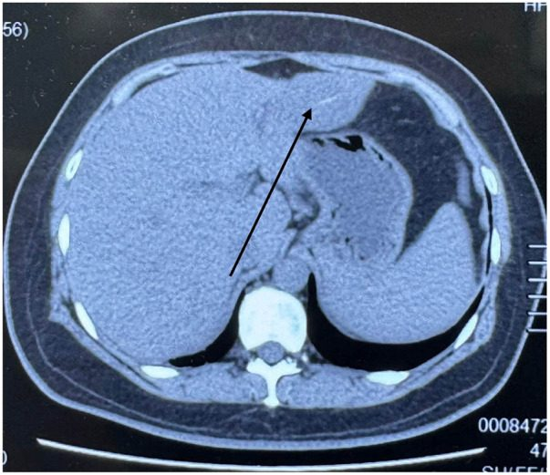
Non-contrast abdominal CT showing a left hepatic lobe abscess-like lesion with an intralesional linear hyperdense focus (arrow). Axial non-contrast CT demonstrates an ill-defined, round hypodense lesion in the left hepatic lobe. A linear hyperdense structure is visible within the… Figure 1 from Yuan et al. (2026), Frontiers in Surgery · PMC13044128 (Reference Case) (CC BY 4.0)
Why Publication Bias Skewed the Stats—And Why Dry Bread Is Sabotage
Before swearing off hors d’oeuvres forever, keep the literature denominator straight. Steinbach and colleagues’ 2014 MEDLINE analysis reviewed 116 publications capturing 136 selected toothpick-injury cases—roughly 1.17 cases per paper, proving heavy single-case publication bias toward dramatic disasters. Nobody writes a medical journal article about the thousands of people whose swallowed splinters pass quietly into history; consequently, extreme retrospective figures from that selected abstract (such as 79% perforation or 9.6% mortality) describe published medical nightmares, never your personal odds if you accidentally bite through a food pick.
What DOES stack the odds against you is folk first aid. Current guidance from the NHS, Mayo Clinic, and HealthDirect is blunt: any known or strongly suspected sharp-object ingestion demands urgent hospital assessment even if you feel completely fine—never wait two weeks for pain or fever. Do NOT induce vomiting (dragging a double-pointed spike backward rips the esophagus), do NOT blind-sweep your throat or fish with bathroom tweezers, do NOT press hard on your belly to “test” where it hurts, and ignore every grandmotherly rumor about swallowing dry bread or chugging fizzy soda. Carbonated drinks are sometimes discussed for soft meat boluses, never wood: cola will not dissolve a toothpick, and forcing peristalsis or gas pressure behind a needle only helps hammer it through the wall.
RED FLAGS · RESPECT PERSISTENT PAIN
When an Ordinary Stomach Ache Stops Being Indigestion
Any known or strongly suspected swallowing of a toothpick, skewer fragment, fishbone, or grill-brush wire demands urgent hospital evaluation—even with zero immediate pain.
Sudden severe abdominal pain, vomiting blood, black tarry stools, difficulty breathing, confusion, or collapse = call 911/999/000 immediately and never drive yourself.
Persistent or worsening upper-abdominal pain—especially if paired with new vomiting or a prior “clear” plain X-ray or negative blood culture—requires medical reassessment.
Pull hidden toothpicks and skewers out of stacked sandwiches and appetizers before eating, announce them aloud when hosting, and keep loose sharps away from children.
✂ FIRST 60 SECONDS · SWALLOWED SHARP OR PERSISTENT GUT PAIN
GET URGENT ASSESSMENT—EVEN PAIN-FREE: If you suspect you swallowed a toothpick, bone, or wire, seek urgent ER care immediately; call 911/999/000 for severe pain, GI bleeding, breathing trouble, confusion, or collapse.
NOTHING BY MOUTH—NO BREAD OR SODA: HealthDirect advises zero food or drink before medical evaluation: dry bread drives peristalsis deeper, and fizzy soda will not dissolve wood.
ZERO VOMITING, FINGERS, OR TWEEZERS: Never induce vomiting (tears the esophagus on the return trip), never blind-sweep your throat, never fish with household tools, and never poke your belly to “test” pain.
REPORT THE SEQUENCE, NOT A GUESS: Tell clinicians exact symptom progression and prior negative X-rays or clinic visits without inventing a meal excuse, and return immediately if post-discharge pain or fever recurs.
CHAPTER 47 · FILE № 090 · Ep 2318
120 Over 70, 98% Oxygen, and a Hole in the Chest
Why ordinary vomiting can blow a full-thickness rupture straight through a healthy esophagus with zero blood in the bowl—while textbook vital signs cheerfully mask a chest filling with stomach acid.
The Wartime Lie of 120 Over 70
Humans adore comforting folklore that assigns catastrophes to somebody else's vices. Mention a ruptured esophagus and people immediately picture a Victorian glutton, an eating disorder, or a swallowed poultry bone—anything to draw a velvet rope between the anatomy and themselves. In a 2024 Diagnostics case report, Eremia and colleagues kicked that velvet rope down the stairs: their patient in Bucharest was a 46-year-old urban man with zero reported prior medical history. He had an episode of vomiting food—explicitly denying a single drop of blood—followed immediately by agonizing chest pain shooting up into his neck and down into his upper abdomen.
Hours later in the emergency department, his body looked like a fortress under artillery fire: pale, drenched in sweat, agitated, breathing fast, struggling for air, with cold, bluish-cyanotic hands and feet. Then triage printed the numbers that kill people who trust smartwatches: pulse 80 beats per minute, blood pressure 120/70 mmHg, and oxygen saturation 98% (unspecified whether on room air or supplemental oxygen). How does a man leaking digestive contents into his chest post a runner's scorecard? Sympathetic triage. Alpha-1 receptors clamp peripheral vessels shut—turning fingers cold and blue—to hoard blood for core organs, while a tear in the swallowing pipe does not instantly disable alveolar gas exchange inches away.
Mercifully, the Bucharest ER team believed his agony instead of his monitor. Suspecting an aortic dissection, they ran a native and contrast-enhanced thoraco-abdomino-pelvic CT within the first hour. ECG showed normal sinus rhythm and high-sensitivity troponin I sat at 18 ng/L (below 28.9—one early snapshot steering away from coronary occlusion). Meanwhile, his stress chemistry howled: glucose 173 mg/dL (adrenaline-driven stress fuel, not diabetes), creatinine 1.39 mg/dL, lipase 87 U/L (ref 78), amylase 155 U/L (ref 100—an echo of amylase-rich saliva leaking out of the torn pipe, not pancreatitis), creatine kinase 6,480 U/L (ref 171, without baseline or serial trend), and a white-cell count of 15.09 printed in the paper with malformed unit notation that we preserve rather than silently rewrite.
Pinching a Fire Hose Without an Outer Jacket
The CT cleared his aorta—and exposed a plumbing catastrophe. Air filled the posterior mediastinum (pneumomediastinum), a small right pneumothorax collapsed part of the lung margin, the lower esophagus stood swollen and thickened, and swallowed oral contrast spilled straight out of the esophageal wall into the sterile central chest cavity: Boerhaave syndrome complicated by acute mediastinitis. Herman Boerhaave first autopsied this barogenic blowout in 1724 in Dutch Grand Admiral Baron Jan van Wassenaer after an emetic. In the proposed mechanism, abdominal muscles slam upward like a piston while the upper esophageal sphincter fails to relax—pinching a full-blast fire hose shut until pressure bursts the weakest lower-left wall just above the diaphragm.
That anatomy also obliterates the deadliest bathroom-floor myth: "no blood means no tear." Bright-red bloody vomit typically points to a Mallory-Weiss tear—a superficial inner-lining scratch that bleeds inside the tube without breaching the chest. Boerhaave syndrome punches cleanly through every muscular layer, frequently with zero blood in the bowl, dumping saliva, stomach acid, food, and bacteria straight around the heart and lungs. Worse, unlike the rest of the gut, the esophagus lacks a tough fibrous outer jacket called the serosa; once torn and bathed in acid, its swollen muscle turns friable and fights every surgical stitch.
EXHIBIT A · CT / IMAGING SCAN · CC BY 4.0
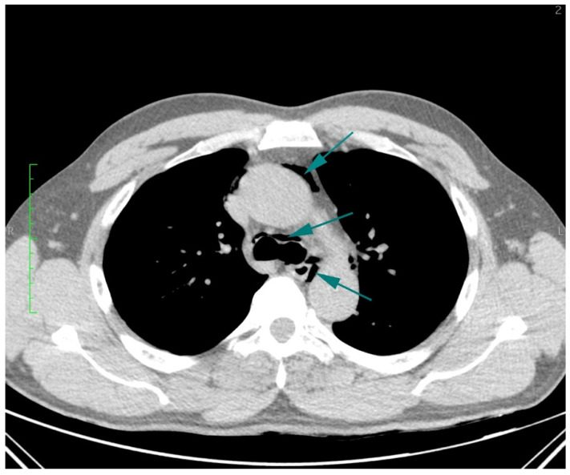
Transverse CT scan of the chest, demonstrating pneumomediastinum in moderate to large quantities (turquoise arrows), predominantly in the posterior mediastinum. Figure 1 from Eremia et al. (2024), Diagnostics · PMC11311301 (CC BY 4.0)
First-Hour Speed and the Denominator Trap
Thoracic surgeons moved straight to the operating room, suturing the fragile tear, placing multiple chest drains to evacuate contamination, and installing a feeding jejunostomy directly into the small intestine so not a single drop of water or food would test the stitches. Managed in the ICU on propofol, mechanical ventilation (stabilizing at SpO₂ 100%, BP 112/72, HR 98), and broad-spectrum antibiotics, he reaped the reward of that first-hour CT: extubated and out of the ICU within 24 hours. A Day-10 barium swallow proved a sealed, functioning pipe; he went home Day 12 on tube feeds, had the jejunostomy removed Day 30, and showed a radiologically normal, reflux-free esophagus on Day 60 (Figure 6)—one man's recovery, never a one-size-fits-all timetable.
Beware statistical shortcuts when reading older Boerhaave numbers. A 2007 retrospective abstract reviewing 34 cases (1991–2006, ages 17–85) reported that contrast swallow was feasible in 22 patients and confirmed the leak in 17/22 (~77.3%), while 4/11 historical CT scans showed a leak. Calling 77.3% "general accuracy" commits classic denominator blindness—12 patients were too sick or urgent to swallow dye at all, and 1990s CT scanners say nothing about modern emergency imaging. Follow current Cleveland Clinic (September 2026) and NHS chest-pain guidance: vomiting followed by sudden severe chest pain earns an ambulance immediately—never a test sip of water, never a self-drive, and never fingers prodding the neck hunting for bubble-wrap air.
RED FLAGS · ZERO BLOOD STILL EQUALS RUPTURE
When Post-Vomiting Pain Breaks the Plumbing
Sudden, severe chest pain immediately following vomiting—especially radiating upward into the neck or downward into the upper abdomen.
Zero blood in the vomit does NOT rule out a full-thickness esophageal tear; normal smartwatch pulse, blood pressure, or 98% SpO₂ cannot clear you either.
Pale, clammy, sweaty skin, cold bluish extremities, rapid breathing, neck swelling, severe abdominal pain, or new fever alongside chest discomfort.
New severe chest pain erupting hours after an urgent-care “stomach bug” visit means the facts changed—return to the emergency department immediately.
✂ FIRST 60 SECONDS · SEVERE CHEST PAIN AFTER VOMITING
CALL 911 / 999—ZERO SELF-DRIVING: Report the exact sequence (“vomiting followed by sudden severe chest pain”) plus breathing or skin changes; never drive yourself or ride in a private car when shock or dissection is possible.
NOTHING BY MOUTH—NO TEST SIPS: Do NOT offer water, food, or borrowed pills to “test swallowing,” and never induce more vomiting—anything swallowed pours straight through a ruptured pipe into the chest.
DO NOT POKE THE NECK OR CHEST: Skip amateur checks hunting for crackling trapped air under the skin (subcutaneous emphysema), and ignore normal home pulse-ox or BP numbers.
GATHER RECORDS ONLY AFTER CALLING: Follow dispatcher instructions strictly; a bystander may gather medication lists only after the ambulance is rolling, and every post-repair discharge demands explicit return red flags.
CHAPTER 48 · FILE № 098 · Ep 2607
The Heart Attack Made of Banana
Why silent choking at a dinner table looks identical to a sudden coronary, why soft pasty food and bananas kill sober and medicated adults alike, and why sticking a blind finger down a throat turns rescue into a cork-packer.
A Busy Intersection That Only Needs One Bad Millisecond
Every time you swallow lunch, your throat runs a split-second traffic miracle across a shared corridor. The soft palate seals off your nose, your voice box pulls upward and forward, the leaf-shaped epiglottis flips shut like a trapdoor over the windpipe, the vocal cords slam tight as a backup gate, and the esophageal door swings open. When that choreography stumbles, a diner drops their fork, grabs their chest in silence, and hits the floor—triggering shouts of "heart attack!" and earning the old forensic nickname "café coronary."
Cultural folklore blames rowdy drunks inhaling giant steaks. A 2025 Cureus retrospective autopsy series by Sonwani and colleagues—pulling 9 fatal food-choking cases from 6,978 medicolegal autopsies at a tertiary care center between August 2019 and July 2025 (0.129%, or ~1.29 per 1,000 center autopsies, a morgue workload share rather than mealtime risk)—shatters that stereotype cleanly. Case 5, a 57-year-old prison-ward inmate with prior hemorrhagic stroke and right-sided hemiparesis, collapsed at lunch with cyanosis, zero external injury, and completely negative toxicology—blocked at the epiglottis by pasty undigested food. One-sided pharyngeal weakness alone broke the trapdoor, even on soft food.
Two other cases showed how stubbornly physical obstruction defies neat categories. Case 1, a 45-year-old man found dead near a roadside restaurant with a blood alcohol concentration of 256.9 mg/100 mL (heavily numbing gag and cough reflexes; zero timeline invented), had chicken wedged at the epiglottis PLUS a second bolus deep at the tracheal bifurcation. Case 9, a 46-year-old man at a drug rehabilitation center, collapsed eating a banana—soft fruit lodged at BOTH the vocal cords and the tracheal bifurcation—with a qualitative "positive for opioids" screen that named no drug and gave no blood level (signaling possible reflex blunting, emphatically NOT proof of opioid overdose).
Reading Past the Abstract—And Watching the Denominator
Auditing the primary paper reveals classic journal friction you miss if you skim the top. The abstract states intoxicated blood-alcohol levels began at 169 mg/100 mL, whereas Table 1 (Case 8) and the Discussion document a lower minimum of 88.8 mg/100 mL (cited as 88 in discussion). Similarly, the Methods restrict inclusion to a "single compact obstructing mass in the upper airway," yet Cases 1 and 9 clearly carried dual-level blockages reaching the tracheal bifurcation. And while clear (patent) coronary arteries rule out a classic plaque-clot heart attack, structural plumbing never proves an invisible electrical arrhythmia didn’t fire first—nor do nine autopsies verify the historical "vagal arrest" theory or turn GC-FID/HPLC machine names into raw lab calibration files.
Small denominators also wear deceptive lipstick. Six of nine cases involved alcohol: 66.7% (printed 66.6%), where a single case swings the headline by 11.1 percentage points. Likewise, a 2006 historical forensic abstract (1993–2002) catalogued 44 food-asphyxia deaths (1 infant, 43 adults) where 22/44 (50%) occurred in nursing homes—50% of selected choking autopsies, NOT a 50% hazard to nursing-home residents—and noted 27 victims with neurological/psychiatric histories and 27 missing teeth, overlapping traits inside 43 adults that you can never add into 54.
Five Blows, Five Thrusts, Zero Blind Fingers
When someone at a table suddenly cannot speak or cough forcefully, stop playing cardiologist and act on the airway. Do NOT wait for cyanotic blue lips (a late crisis sign) or peer for visible food—blockages hide deep at the epiglottis. If they are coughing loudly and drawing breath between coughs, encourage coughing without slapping their back. The moment the cough turns weak, silent, or absent, dial 911/999 on speakerphone and run the 2025 American Heart Association responsive-adult sequence: lean them well forward for 5 sharp heel-of-hand back blows between the shoulder blades (vibration), then alternate with 5 inward-and-upward abdominal thrusts above the navel (Boyle’s-law lung pressure spike)—swapping to chest thrusts on the lower breastbone in late pregnancy or if you cannot encircle the waist.
If they lose consciousness, lower them safely and start CPR beginning with chest compressions; look inside the mouth before rescue breaths and remove food ONLY if clearly visible and easily grasped. Resuscitation Council UK (2025) strictly bans blind finger sweeps and improvised spoons or forceps, which pack food tighter and tear vascular throat tissue. Even if the bolus pops out and breathing rebounds, RCUK mandates immediate medical evaluation—thrusts can injure ribs, liver, or spleen, and broken fragments can lodge deeper. Upstream, NHS dysphagia guidance (October 2026) highlights subtle early warnings—a wet, gurgly voice right after eating (liquid pooling on vocal cords), repeated coughing with certain foods, or recurrent chest infections—calling for prompt GP and speech-therapist assessment, never DIY food thickeners or sudden pill-stopping, and passing specialist meal plans like a relay baton across every caregiver so people keep eating with both safety and dignity.
RED FLAGS · SILENT AT THE TABLE
Choking Emergencies & Quiet Swallowing Warnings
Sudden inability to speak or produce a strong cough during a meal is a severe airway emergency—never wait for blue lips, collapse, visible food, or a cardiac diagnosis.
Never interfere with a loud, effective cough—and NEVER perform a blind finger sweep or probe a choking throat with spoons or tools.
Even after back blows or thrusts dislodge food and breathing returns, seek immediate medical evaluation for hidden internal thrust injuries or retained deeper fragments.
A wet/gurgly voice after eating, repeated mealtime coughing, food sticking, or recurrent chest infections warrants prompt GP/specialist swallowing assessment—soft foods like bananas are NOT automatic protection.
✂ FIRST 60 SECONDS · SILENT CHOKING AT THE TABLE
CHECK THE COUGH & CALL 911 ON SPEAKER: If they can cough forcefully and draw breath, encourage coughing without interference. If coughing turns weak, silent, or they cannot speak, put 911/999 on speaker immediately.
ALTERNATE 5 BACK BLOWS & 5 THRUSTS: Per AHA 2025: lean them forward for 5 sharp heel-of-hand back blows between shoulder blades, then 5 inward-and-upward abdominal thrusts (use chest thrusts in late pregnancy or if unable to encircle).
UNRESPONSIVE = CPR, NO BLIND SWEEPS: Lower safely and begin CPR starting with chest compressions. Look before breaths and remove food ONLY if clearly visible and easy to grab—never probe blindly.
GET EXAMINED AFTER CLEARING & HAND OFF PLANS: Demand medical evaluation after successful thrusts (hidden internal trauma or retained fragments), and escalate chronic wet voice or mealtime coughing to a GP and swallowing specialist.
CHAPTER 49 · FILE № 117 · Ep 2041
The Lemon-Water Pitcher, the 0.6 Serum Fakeout, and the Skeleton That Paid It Back
How a centrifuge tossed 99.1% of a patient's lead into the biohazard bin—and why a charming low-fired ceramic pitcher filled with pH 2.4 citrus quietly wired heavy metal straight into bone.
How an Urgent-Care Centrifuge Tossed 99.1% of the Crime Scene
Imagine dropping to your knees with two weeks of wrenching abdominal 'painter's colic,' severe constipation, aching joints, and a suddenly paralyzed right wrist—only for urgent care to call back declaring your lead screen a squeaky-clean 0.6 µg/dL (adult background reference <3.5 µg/dL). Yet in Ep 2041's vignette of a 44-year-old stained-glass restorer and amateur ceramicist, his own mouth and microscope exposed the blunder: a blue-black Burtonian line of lead sulfide tattooed his lower gums (salivary lead meeting plaque bacterial H₂S), and pale red cells carried coarse purple basophilic stippling—clumped ribosomal RNA piling up after lead kicked magnesium out of the cleanup enzyme P5N1.
How did a lab miss lead tattooed onto a man's gums? By spinning a serum tube and dumping the red blood cells into the biohazard bin. In humans, 99.1% of circulating Pb²⁺ hides inside red cells bound to the heme enzyme ALAD (~0.06 pM affinity); testing clear serum scoops a swimming pool's surface and pronounces it fish-free. Proper whole-blood ICP-MS in a royal-blue K₂EDTA tube revealed 68.4 µg/dL (well past OSHA's 50 µg/dL removal cliff)—meaning at his 34% hematocrit, packed red cells held 199.4 µg/dL! Better twist: his studio tested clean. The culprit sat in his kitchen—an imported, low-fired, lead-glazed earthenware pitcher storing fresh pH 2.4 lemon water every morning for four months, leaching 42 mg/L of bioavailable lead straight into breakfast. Two clocks sealed the timeline: urinary δ-ALA (the GABA-mimicking acute neurotoxin driving gut spasms and radial wrist drop) hit 48.2 mg/g creatinine (ref <4.5), while fluorescent erythrocyte zinc protoporphyrin (ZPP—locked inside red cells for 120 days) blared at 185 µg/dL (ref <35).
Einstein's Umbrella Inside an Enzyme—and the Skeleton That Pays It Back
Zoom to 2.50 Å inside ALAD (PDB 1QNV, Erskine & Cooper 2000, PMID 10739915; yeast Cys133/135/143 modeling human Cys122/124/132). Though Pb²⁺ (1.19 Å) is 60% larger than native Zn²⁺ (0.74 Å), lead outcompetes zinc 20-to-50-fold by clamping all three cysteine sulfurs onto one hemisphere (2.74, 2.82, and 2.84 Å). Driven by relativistic physics in lead's 82-proton nucleus, its unshared 6s² lone pair pops open across the empty hemisphere like an impenetrable electronic umbrella—physically blocking the second δ-ALA molecule from docking and halting heme synthesis.
Modern chelation escaped brutal mid-century trade-offs—peanut-oil BAL injections capable of dragging neutral lead into the brain, and IV CaNa₂EDTA wasting 10–20× urinary zinc while risking cerebral edema—via Ernst Friedheim's 1953 carboxylate-leashed drug (US Patent 2,659,723) and Joseph Graziano's trials (US Patent 4,289,787; FDA oral succimer / Chemet approval Jan 30, 1991). Charged carboxylates confine succimer to extracellular water (Vd 0.2–0.3 L/kg), barring brain entry and slashing mineral loss below one-tenth of EDTA. After 19 days of oral succimer, blood lead fell from 68.4 to 19.2 µg/dL and colic vanished. Fourteen days later (day 33), with zero ongoing exposure, his blood lead snapped back to 41.8 µg/dL! Under Rabinowitz's three-compartment model, blood holds barely 2% of chronic adult lead while 90–95% impersonates calcium (1.00 Å) inside trabecular (half-life 1–2 yr) and cortical bone (10–30 yr). Empty the blood and the skeleton exponentially refills it (44.0 minus 24.8 times e to the −1.96 = 40.5 µg/dL predicted vs 41.8 observed)—demanding a 14–21 day wait before retesting and a second 19-day cycle before blood lead settled to 18.4 (month 3) and 11.2 µg/dL (month 6), ZPP normalized to 28, hemoglobin rose from 11.1 to 14.6 g/dL, and wrist strength returned to 5/5.
REFERENCE EXHIBIT · CLINICAL EVIDENCE · CC BY 4.0
ILLUSTRATIVE REFERENCE EXHIBIT — Verified CC BY diagnostic figure from a separate peer-reviewed publication showing the same mechanism (not the index patient).
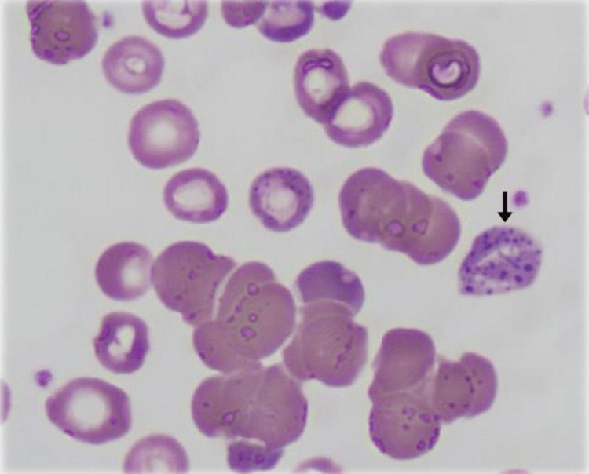
Re-examination of the initial peripheral blood filmCoarse basophilic stippling (arrow) within erythrocytes. These features—initially overlooked—are classic morphological clues of lead toxicity and prompted confirmatory toxicology testing. Figure 3 from Chew et al. (2026), Cureus · PMC12949993 (Reference Case) (CC BY 4.0)
What a 780-Child Trial Proves No Pill Can Undo
That adult victory hits medicine's hardest wall in toddlers. In Rogan, Dietrich, and the Treatment of Lead-Exposed Children (TLC) Trial Group's randomized, placebo-controlled 2001 NEJM trial (DOI 10.1056/NEJM200105103441902; PMID 11346806), 780 children aged 12 to 33 months with moderate blood lead (20–44 µg/dL) received up to three 26-day courses of oral succimer or placebo. Chemically, succimer worked—cutting mean blood lead by 4.5 µg/dL over six months. Yet at 36-month follow-up, IQ showed zero gain: mean difference −0.7 points (95% CI −2.7 to +1.3).
An adult radial nerve suffers a reversible metabolic traffic jam; a toddler's developing brain uses precise calcium signaling at NMDA glutamate receptors and protein kinase C to prune and wire synapses in real time. Once Pb²⁺ impersonates Ca²⁺ during active brain wiring, no chelator can unring the bell. Chelation saves lives in severe symptomatic poisoning (>45–50 µg/dL), but eliminating lead from glazed dishware, paint, pipes, and dust before exposure is the only true cure.
RED FLAGS · KITCHENWARE & LAB TRAPS TO RETIRE
Four Ways Lead Hides in Plain Sight
Never store or serve acidic liquids or foods—lemon water, vinegar dressings, tomato sauce, wine, or hot coffee—in antique, handmade, souvenir, or imported low-fired glazed earthenware not certified food-safe and lead-free.
Never trust a 'normal' spun serum or plasma lead screen: 99.1% of circulating lead resides inside red blood cells, so valid testing requires a royal-blue-top K₂EDTA whole-blood specimen analyzed by ICP-MS.
Unexplained severe abdominal colic, constipation, anemia with coarse basophilic stippling, gum-line pigmentation (Burtonian line), or focal wrist drop warrant immediate whole-blood lead and ZPP testing.
Never declare chelation finished on the last day of pills: chronic bone reservoirs (90–95% of body lead) trigger predictable 14–21 day blood rebound—and in children, no chelator replaces eliminating the source first.
✂ FIRST 60 SECONDS · SUSPECTED POTTERY OR HOUSEHOLD LEAD EXPOSURE
RETIRE UNCERTIFIED GLAZED POTTERY FROM FOOD USE: Stop storing or serving acidic drinks or foods (citrus water, tomatoes, vinegar, wine, hot tea/coffee) in antique, souvenir, imported, or handmade low-fired ceramics—keep decorative pieces strictly decorative.
DEMAND WHOLE-BLOOD ROYAL-BLUE K₂EDTA TESTING: If lead poisoning is suspected, confirm the order specifies whole-blood ICP-MS in a K₂EDTA tube—never let a spun serum or plasma heavy-metal test dismiss abdominal colic, anemia, or wrist weakness.
AUDIT BOTH KITCHEN AND WORKSPACE SOURCES: Pair whole-blood lead with erythrocyte ZPP (120-day clock) and health-department environmental testing—everyday kitchenware can poison you even while a high-risk workshop tests completely clean.
WAIT 14–21 DAYS POST-CHELATION & PROTECT KIDS AT SOURCE: After oral succimer therapy, schedule the mandatory 14–21 day skeletal rebound recheck; for children, eliminate peeling paint, dust, pipes, and glazed dishware immediately—no pill reverses lost synaptic wiring.
CHAPTER 50 · FILE № 118 · Ep C122
The Fresh Reef Fish That Made Ice Water Burn Like Fire
Why a pristine, piping-hot reef barracuda can rewire your pain fibers so a cold glass of water feels like a red-hot stove—and why one beer three months later can wake the toxin back up.
Why Your Nose and Your Skillet Are Terrible Toxicologists
Every year, your nine-meter gastrointestinal tract processes roughly a metric ton of food, microbes, and chemical stowaways while keeping your sterile bloodstream separated from the chaos by a single epithelial sheet twenty-five micrometers thick. Most diners police that microscopic border with two folksy superstitions: if it smells clean, it is clean, and if the chef seared it hot enough, whatever lurked inside is dead. Marine toxicology enjoys shredding both rules before the check arrives.
Even mishandled dark-flesh tuna plays dirty. In Ep C122's contrast case, four coworkers ate seared mahi-mahi and yellowfin tuna held four hours at 22°C in a broken food-truck cooler. Warmed Morganella morganii and Klebsiella pneumoniae decarboxylate muscle L-histidine into 50 to 500 milligrams of pure, heat-stable histamine per 100 grams—surviving grills, fryers, and 200°C canning. Simultaneously, bacterial cadaverine and putrescine distract intestinal diamine oxidase (DAO), the brush-border bouncer that normally neutralizes ~95 percent of pure oral histamine on first pass, triggering lobster-red flushing, wheezing, headaches, and a 128-bpm pulse within twenty minutes (fixed by IV diphenhydramine and famotidine, not an imaginary lifelong fish allergy—though isoniazid and MAOIs leave DAO permanently off duty).
Scombroid at least demands a broken cooler. Ciguatera needs zero kitchen error. In Ep C122's Caribbean honeymoon narrative, a couple orders pristine, locally caught, pan-seared eight-kilogram wild reef barracuda—zero metallic tang, zero off odor, flawless cooking. First come cramping, nausea, and vomiting that look like ordinary traveler's diarrhea. Then hour seven flips physics inside out: grabbing an ice-cold water glass from the mini-fridge feels like pressing bare skin onto a red-hot stove. His lips buzz with static, his teeth feel loose in his jaw, and clinic monitors catch his heart rate plunging to 41 beats per minute.
The 30-Ångström Doorstop Inside the One Channel Cold Can't Numb
The culprit starts far from the restaurant stove, on damaged coral turf left behind by hurricanes, dredging, or bleaching. Microscopic benthic dinoflagellates called Gambierdiscus toxicus colonize that dead reef and synthesize defensive compounds. Herbivorous reef fish graze the turf, larger carnivores eat them, and fish livers chemically oxidize the stowaways into progressively nastier forms until an apex predator like an eight-kilogram barracuda or massive grouper packs flesh saturated with P-CTX-1. Because ciguatoxin is not a fragile peptide protein but a rigid, 30-Ångström ladder-frame polyether with zero peptide bonds to unfold, culinary violence barely tickles it. Boil it, deep-fry it, bury it in a deep freezer for a year, or bathe it in ceviche acid—the molecular ladder survives untouched.
Once swallowed, lipid-soluble P-CTX-1 dissolves straight into human nerve membranes and shoves itself into intramembranous Site 5 on voltage-gated sodium channels—specifically NaV1.5, NaV1.6, and especially NaV1.8—like a wooden doorstop hammered into an automatic grocery-store track. That physical wedge shifts activation threshold 15 to 25 millivolts in the hyperpolarizing direction, pulling a quiet −70 mV resting nerve dangerously close to its −55 mV firing cliff so it leaks sodium and fires spontaneous static bursts that explain buzzing lips and loose-feeling teeth.
Cold allodynia—ice burning like fire—hinges on one diabolical quirk of human neurobiology. NaV1.8 sits densely on unmyelinated C-fiber pain nerves and is uniquely cold-resistant; normal sodium channels slow down and shut off when chilled, which is why an ice pack numbs a sprained ankle. Meanwhile, cooling closes background potassium leak channels, hiking membrane resistance and priming the nerve like a dry powder keg. Touch chilled glass, and skin cold sensors (TRPA1 and TRPM8) fire an innocent microcurrent that acts like a lit match—detonating a full-throttle C-fiber barrage the brain can only decode as scalding tissue destruction.
HAZARD REFERENCE · VERIFIED PHOTO · CC BY 2.0
VERIFIED HAZARD REFERENCE PHOTO — Commercial-cleared Public Domain / CC BY photograph of the organism or physical hazard (not the index scene).
Sphyraena barracuda (Edwards, 1771) - great barracuda next to a reef. Classification: Animalia, Chordata, Vertebrata, Actinopterygii, Perciformes, Sphyraenidae Locality: Gaulin Reef, northern Graham's Harbour, northern offshore San Salvador Island, eastern… James St. John · Wikimedia Commons (Sphyraena barracuda (great barracuda) (San Salvador Island, Bahamas) 3 (15561133214).jpg) (CC BY 2.0)
Osmotic Sponges and the Six-Month Lipid Ghost
You cannot yank a lipid polyether out of Site 5 with tweezers, so emergency care fights the mechanics smartly. Aggressive IV rehydration counters GI losses that concentrate membrane chaos, while atropine cuts the runaway vagus-nerve brake line driving that 41-bpm bradycardia. Caught early, clinicians also turn to intravenous mannitol. Because water relentlessly follows sodium, wedged-open channels bloat nerve axons and protective Schwann cells like overfilled water balloons; large, extracellular mannitol molecules stay outside the cells and pull excess fluid back out by osmosis while scavenging cellular free radicals.
Surviving the acute night, however, does not evict the tenant. Because ciguatoxin dissolves eagerly into fat rather than washing neatly out in urine, it settles quietly inside peripheral nerve membranes and adipose stores for months. Patients who feel completely healed are warned to avoid reef fish—plus alcohol, nuts, and caffeine—for at least six months. One celebratory beer or handful of almonds can nudge lipid dynamics just enough to dislodge dormant P-CTX-1 back into active sodium channels, plunging burning hands and wobbly-tooth paresthesias right back onto the calendar without a single bite of seafood.
RED FLAGS · WHEN THE SEAFOOD FIGHTS BACK
Four Clues Your Stomach Bug Is Actually a Reef Neurotoxin
Cold drinks, air conditioning, or metal utensils suddenly feel like scalding heat, electric shock, or stinging fire hours after eating reef fish (cold allodynia).
Gastrointestinal cramping, nausea, or vomiting evolves within hours into lip tingling, metallic/static numbness, or the surreal sensation that your teeth are loose.
Dizziness, faintness, or a slow pounding pulse (such as 41 bpm) develops alongside GI upset—vagal bradycardia and hypotension require urgent hospital telemetry, not sleep.
Symptoms flare back up weeks or months after recovery following alcohol, nuts, caffeine, or another fish meal—lipid-stored ciguatoxin can re-trigger long after the vacation ends.
✂ FIRST 60 SECONDS · SUSPECTED CIGUATERA POISONING
GET TO AN ER IMMEDIATELY: Call emergency services or go straight to an ER if cold items burn, lips tingle, teeth feel loose, or dizziness hits after eating tropical/reef fish—bradycardia and low blood pressure can drop fast.
NAME THE EXACT FISH & TIMELINE: Tell clinicians the species (barracuda, large grouper, reef predator), portion eaten, and exact hours since the meal so they consider atropine for slow heart rate and early IV mannitol.
WARN EVERYONE WHO SHARED THE PLATTER: Ciguatoxin is odorless, tasteless, and heat-proof—anyone who ate the same fish is exposed even if the fillet was freshly caught and thoroughly cooked.
ENFORCE THE SIX-MONTH TRIGGER BAN: After discharge, avoid reef fish plus alcohol, nuts, and caffeine for at least six months so fat-stored toxin does not dislodge back into nerve channels.
CHAPTER 51 · FILE № 119 · Ep 2323
The Artisanal Honey That Drops Your Heart to 38 Beats a Minute
How a throat-tingling spoonful of unblended Black Sea rhododendron honey flattens Greek hoplites, tricks ER monitors into mimicking a massive heart attack, and flips back to normal sixty seconds after half a milligram of atropine.
Two Thousand Years of Bad Breakfast Decisions
The oldest clinical toxicology chart note in Western literature belongs to an army brought down by free breakfast. In the late spring of 401 BCE, Xenophon's ten thousand Greek hoplites stumbled into mountain villages above modern Trabzon on Turkey's eastern Black Sea coast, raided clay hives nestled among Rhododendron ponticum and Rhododendron luteum thickets, and collapsed within an hour—drunk, mad, or appearing near death—before staggering up nearly twenty-four hours later with zero dead. Three centuries later, in 67 BCE, Pompey's Roman cohorts were far less lucky: local Heptakometes partisans deliberately left bowls of Pontic deli bal ('mad honey') along narrow passes and slaughtered over a thousand immobilized legionaries.
Modern emergency departments still see the exact same molecule, minus the bronze spears. Across Bostan's 2010 Rize hospital cohort and Silici and Atayoglu's 2015 synthesis of 1,199 published cases over thirty-four years, 75.2 to 90.9 percent of poisoned patients are men aged 41 to 65 who paid $100 to $300 per kilogram for raw, unblended deli bal as a folk tonic for vitality, erectile dysfunction, gastritis, or high blood pressure. Half an hour to three hours after a single sharp, throat-tingling spoonful (15 to 50 grams), it lowers their blood pressure all right—straight down toward 70/40 mmHg. Classic Karadeniz Technical University telemetry records a mean heart rate of 38 beats per minute, nearly 46 percent in complete third-degree AV block, and core temperatures plunging to 34–35°C.
Worse, profound slow-heart coronary hypoperfusion can trigger ST-segment elevation on the ECG—the textbook alarm for a massive heart attack. Without a ten-second dietary question about artisanal Turkish or Nepali honey, a completely healthy myocardium risks an unnecessary coronary stent or transvenous pacemaker wire.
Why the Same Molecular Pocket Slows Instead of Speeds the Heart
How does a toxic flower end up in a honey jar without carpeting the forest floor in dead bees? Evolution handed Caucasian mountain honeybees (Apis mellifera caucasica) and giant Himalayan cliff bees subtle amino-acid substitutions inside their insect para sodium-channel S6 pocket, making them immune while solitary Andrena bee larvae die on contact. Fanning nectar below 18 percent water then concentrates tetracyclic diterpenes—chiefly grayanotoxin I (412.52 g/mol) and III (370.48 g/mol)—three- to fivefold in capped spring comb.
Here sits the great electrophysiological riddle highlighted by Jansen et al. (2012): grayanotoxins bind the exact same DI–DIV S6 Receptor Site 2 inside voltage-gated sodium channels as monkshood aconitine and poison-dart frog batrachotoxin (mapped across cryo-EM landmarks PDB 6J8J, 7XVE, and 8T6L), shifting activation by −50 mV and physically blocking the IFM fast-inactivation latch down to 0 percent. Yet aconitine drives fatal 240-bpm ventricular fibrillation, whereas mad honey drops the pulse to 38 bpm and boasts zero deaths across 1,199 cases.
Paired LC-MS/MS work by Aygun et al. (2018) cracks the paradox. Their patients' honey averaged 8.73 µg/g GTX I plus 27.60 µg/g GTX III (36.33 µg/g), yet blood held a mere whisper—4.82 ng/mL GTX I and 6.56 ng/mL GTX III (~12–18 nM), while kidneys flushed urine levels nearly sixty times higher (explaining Xenophon's 24-hour clock). That ~15 nM trace is ~500-fold too low to poison ventricular NaV1.5—unlike goats, sheep, or puppies chewing rhododendron leaves for 50 to 300 mg, who suffer NaV1.4 diaphragm paralysis and NaV1.5 arrhythmias. Instead, it locks just 2 to 3 percent of twitchy NaV1.7 channels on left-ventricular vagal sensory C-fibers. Goldman-Hodgkin-Katz math shows locking 3.0 percent open lifts resting Na⁺/K⁺ permeability α from 0.020 to 0.260, jerking resting voltage from −79.96 mV to −33.33 mV—past the −50 mV firing cliff. The screaming vagus fools the brainstem (Bezold-Jarisch reflex) into flooding cardiac M2 receptors with acetylcholine. Half a milligram of IV atropine (~60 nM free at M2 KB 1.0 nM) yields a 61.0-fold Schild blockade, snapping sinus rhythm back to 72–85 bpm in sixty seconds.
HAZARD REFERENCE · VERIFIED PHOTO · CC0 1.0
VERIFIED HAZARD REFERENCE PHOTO — Commercial-cleared Public Domain / CC BY photograph of the organism or physical hazard (not the index scene).
Rhododendron ponticum flowers at Markeaton Park. Aethonatic · Wikimedia Commons (Rhododendron ponticum - flowers - 30 April 2026.jpg) (CC0 1.0)
Why Boiling Tea Fails—and Why Supermarket Honey Saved Us
Herbal forums swear boiling tea neutralizes mad honey. Physics declines to cooperate: grayanotoxins decompose past 220 to 260°C, whereas boiling water tops out at 100°C, preserving 100 percent of toxicity. Nineteenth-century North American mountain-laurel honey poisonings did not vanish because of pasteurization; they vanished because of the Central Limit Theorem.
Because waggle dances recruit ~80 percent of one colony into one rhododendron ravine while a hive 500 meters away raids chestnut or clover, unblended single-comb honey follows a wild right-skewed Gamma distribution (mean 36.3 µg/g, SD 51.34 µg/g, CV 141.4 percent). One 25-gram tablespoon faces a 9.7 percent—nearly one-in-ten—chance of exceeding the 2.50 mg (100 µg/g) syncopal AV-block cliff. Pool 400 hives in a commercial vat (mean 12 µg/g, individual SD 25 µg/g), and dividing by √400 cuts SD to 1.25 µg/g—shoving toxicity past +70.4 sigma (p < 10⁻¹⁰⁰). Industrial blending, not the teakettle, killed the gamble.
RED FLAGS · WHEN THE TONIC PULLS THE EMERGENCY BRAKE
Four Warning Signs in a Jar of Mountain Honey
Raw, unblended single-comb honey marketed from Turkey's Black Sea coast or Himalayan cliffs as a sharp, throat-tingling 'vitality' or blood-pressure tonic carries nearly 1-in-10 spoonful odds of severe heart block.
Dizziness, profuse sweating, nausea, shivering hypothermia (34–35°C), or near-fainting 30 minutes to 3 hours after eating artisanal honey or rhododendron tea.
Stirring mad honey into boiling tea or baking it lightly does nothing—grayanotoxins survive past 220–260°C; prior 'safe' spoonfuls from another comb offer zero protection.
Keep goats, sheep, llamas, and curious puppies away from ornamental rhododendron and mountain-laurel leaves—chewing foliage delivers 50–300 mg, bypassing the human honey bottleneck into lethal paralysis and arrhythmias.
✂ FIRST 60 SECONDS · SUSPECTED MAD HONEY POISONING
LIE FLAT & CALL 911: If severe dizziness, cold sweats, nausea, or faintness hit 30 minutes to 3 hours after artisanal honey, lie flat to protect brain perfusion and call emergency services immediately.
NAME THE HONEY JAR OUT LOUD: Tell paramedics and ER clinicians immediately that you ate Turkish Black Sea, Nepali, or rhododendron honey—and bring the jar if safe—so ST elevation and 38-bpm block aren't misread as a blocked coronary artery.
DO NOT DRIVE OR WALK IT OFF: Complete AV block and 70/40 hypotension cause sudden syncope; wait for EMS telemetry rather than standing up or driving yourself to a clinic.
EXPECT ATROPINE, WARMTH & 24-HOUR CLEARANCE: Standard hospital rescue is 0.5–1.0 mg IV atropine, warm IV saline, and ~24-hour monitoring while kidneys clear the toxin; discard the unblended jar once home.
CHAPTER 52 · FILE № 120 · Ep C136
The Herbal Root Soup That Locks Your Heart's Floodgates Open
Why monkshood aconitine paints the exact same alternating sawtooth rhythm on an ICU monitor as prescription digoxin—then laughs at DigiFab, shrugs off the defibrillator, and erases itself in a warm autopsy tube.
One Jagged ECG Shadow, Two Completely Different Crimes
Bidirectional ventricular tachycardia—BVT—is the kind of heart rhythm that makes seasoned ICU veterans stop mid-sentence. Beat to beat, the heart's electrical axis flips 180 degrees in a jagged, alternating sawtooth across the monitor. Textbook training attaches one reflex name to that tracing: digoxin, the purple-foxglove cardiac glycoside documented since William Withering in the 1700s. That reflex can get an aconitine patient killed.
Digoxin is a slow-burn clogged drain. Typically accumulating in an older heart-failure patient hit by dehydration or acute kidney injury—often preceded by lethargy and xanthopsia, eerie yellow-green halos from poisoned retinal pumps—digoxin jams more than 40 percent of cardiomyocyte Na⁺/K⁺-ATPase pumps. Trapped intracellular sodium stalls calcium extrusion, packing the sarcoplasmic reticulum until spontaneous calcium sparks ignite delayed afterdepolarizations (DADs) down alternating ventricular tracks. Dialysis flops because digoxin hides in a massive ~500-liter volume of distribution (over 99 percent parked in skeletal muscle), so clinicians push sheep-derived DigiFab antibody fragments with a thousandfold higher affinity for the drug—and remember the 1997 DIG trial lesson to stay gentle with electrical shocks. (Oleander adds a second decoy: its cardiac glycoside oleandrin mimics digoxin's pump block and even trips a false-positive digoxin immunoassay.)
Monkshood—wolfsbane—reaches the identical sawtooth through explosive sabotage. Its highly lipophilic alkaloid, aconitine, slips through cell membranes like a ghost and kills an adult at just two to five milligrams without touching the Na⁺/K⁺-ATPase revolving door at all. Instead, it binds neurotoxin Site 2 on the cardiac NaV1.5 voltage-gated sodium channel and physically locks the floodgate wide open, destroying the channel's ability to shut itself off. Unstoppable sodium floods in, drags calcium behind it, and prints the exact same BVT shadow on the screen. As Ep C136 puts it, the ECG monitor is like watching shadows on the wall of a cave: a purple foxglove, a blue monkshood flower, and an oleander shrub all drive the heart into one matching jagged spiral through totally different cellular pathways.
Ice-Water Ants at Minute Fifteen, Silence at Minute Forty-Five
At the bedside, the clock is monkshood's cruelest accomplice. Ep C136 recounts a documented case of a couple who ate an improperly cured herbal soup containing monkshood root, believing it was a standard homeopathic remedy. Within fifteen minutes came violent projectile vomiting, collapsing blood pressure, and an unmistakable neurological warning caused by peripheral nerve sodium channels locking open all over the body: survivors describe it as 'ice water ants crawling under the skin.'
Miss that fifteen-minute window, and the diagnostic clue vanishes. By minute forty-five, profound cardiogenic shock and BVT crash over the patient, who is unconscious and can no longer talk about root soup or crawling skin. The emergency team looks up at classic alternating BVT, anchors on digoxin, draws standard toxicology screens that return squeaky clean, and pushes DigiFab—throwing water on a chemical oil fire.
Worse, defibrillation offers roughly one second of false hope. Shocking the chest resets the electrical canvas briefly, then the physically wedged NaV1.5 floodgates immediately hurl the heart straight back into ventricular fibrillation. Survival demands the opposite of the gentle digoxin playbook: heavy sodium-channel pore blockers like amiodarone or flecainide to cram molecular corks into open channels, and frequently 24 to 36 hours of VA-ECMO mechanical bypass. The pump does not cure the heart; it simply keeps oxygen flowing to the brain while hepatic CYP3A4 and esterases chop aconitine into benzoylaconine, a hydrolysis product roughly a hundred times less toxic.
HAZARD REFERENCE · VERIFIED PHOTO · CC BY 4.0
VERIFIED HAZARD REFERENCE PHOTO — Commercial-cleared Public Domain / CC BY photograph of the organism or physical hazard (not the index scene).
Aconitum napellus, monkshood or aconite (German: Blauer Eisenhut), is a hardy perennial of the buttercup family, native to Europe. It forms clumps of deeply divided, dark green leaves and tall, upright stems about 100–150 cm high, bearing spikes of… Steffen Bauer ( www.saatpilot.de ) · Wikimedia Commons (Aconitum napellus (monkshood, aconite), flowers (SaatPilot).jpg) (CC BY 4.0)
The Murder Weapon That Dissolves in the Test Tube
If resuscitation fails, monkshood earns its darkest nickname on the stainless-steel table. Routine hospital and forensic drug panels look straight past aconitine—it is neither a heavy metal nor a standard drug of abuse—leaving sudden collapse looking superficially like a natural cardiac arrest. Compare that with fatal digoxin overdose, where global pump shutdown leaves a loud biochemical footprint of severe hyperkalemia (serum potassium 6.2 mmol/L or higher) that persists even when postmortem drug levels drift.
Even when forensic teams suspect monkshood, postmortem redistribution turns raw concentrations into a hall of mirrors: Ep C136 illustrates how femoral vein blood might read 3.2 nanograms per milliliter while central heart blood reads 88 nanograms per milliliter and stomach contents top 1,000 nanograms per milliliter. Worse, aconitine self-destructs if mishandled. Let an autopsy blood tube sit warm or drift slightly alkaline, and its ester bond snaps spontaneously—erasing the parent toxin right inside the evidence vial. Proving the case requires immediate cold, pH-stabilized storage and targeted LC-MS/MS hunting both parent aconitine and benzoylaconine hydrolysis ratios in bile and urine.
RED FLAGS · FIFTEEN MINUTES BEFORE THE HEART FLIPS
Four Signals That an Herbal Brew Is Actually Wolfsbane
Violent vomiting, sudden dizziness, or intense 'ice water ants' tingling/numbness under the skin within 15 minutes of eating an herbal root soup or homeopathic remedy.
Assuming 'cured' or boiled monkshood (Aconitum) root prepared at home is safe—just 2 to 5 milligrams of residual aconitine is lethal to an adult.
Bidirectional ventricular tachycardia or refractory ventricular arrhythmias with a negative routine toxicology screen and zero response to DigiFab or electrical cardioversion.
Unexplained sudden cardiac death after herbal ingestion where warm, unstabilized autopsy tubes can spontaneously hydrolyze aconitine before targeted LC-MS/MS testing.
CALL 911 AT THE FIRST TINGLE: If vomiting, numbness, or 'ice water ants' tingling starts after an herbal soup or homeopathic root remedy, call emergency services immediately—cardiac collapse can arrive within 45 minutes.
BAG THE LEFTOVER SOUP OR ROOT: Tell dispatchers and paramedics 'possible monkshood/aconitine' right away while still conscious, and hand over any remaining brew, roots, or packaging before you lose the ability to speak.
ALERT THE ER TO NON-DIGOXIN BVT: Family or companions must flag herbal exposure immediately so clinicians do not lose critical minutes anchoring on digoxin or DigiFab if bidirectional VT appears.
NEVER HOME-CURE MONKSHOOD ROOT: Keep Aconitum plants out of kitchen pots and homemade remedies—2 to 5 mg kills an adult, and standard kitchen cooking does not reliably guarantee detoxification.
CHAPTER 53 · FILE № 183 · Ep 2706
His Vomiting Stopped at Hour Eight—While His Liver Hit 11,578
Inside the 2021 Austrian alpine chalet fried-rice-balls cluster where one teaspoon triggered a warning nobody recognized, four diners went home in days, and tandem mass spectrometry weighed a heat-proof peptide ring inside a failing human liver.
One Teaspoon at 10 a.m., Five Sick Diners by 7:30 p.m.
Every kitchen worships the myth that heat absolves yesterday’s storage sins. In August 2021 at an Austrian alpine chalet—reported by Schreiber and twelve colleagues in Toxins—a healthy 25-year-old cook with zero medical conditions or supplements prepared fried rice balls from rice boiled three days earlier and parked in a refrigerator running at 8 to 9°C (roughly 46 to 48°F, well above the safe ~4°C cold ceiling). At 10 a.m., he sampled a single teaspoon of the mixture, promptly threw up once, rested two hours, felt fine, and dismissed it. At 7 p.m., he fried and served the rice balls to himself and four female colleagues.
Within roughly thirty minutes, all five erupted with intense vomiting and diarrhea. The four colleagues required regional hospital fluids and went home cleanly within two to three days without ICU care—setting a notorious shared-meal cognitive trap: assuming a coworker’s mild recovery clears your own organs. By hour eight, when the cook reached an emergency department, his vomiting and diarrhea had already stopped. His blood told a terrifyingly different story: WBC 18.3 G/L (reference 3.9–10.4), hemoconcentrated hematocrit 53% (reference 35–45%), and INR 2.2—his clotting proteins vanishing faster than a failing liver could print them.
Transferred to a university ICU, he hit hour thirteen with Factor V crashed to 12% (reference above 70%)—meaning the liver’s protein factory had nearly shut down—and lactate at 9.9 mmol/L (reference 0.5–2.2) as suffocating tissues fell back on anaerobic emergency power. By hour twenty-nine, Factor V bottomed at 8% while hepatocellular debris exploded across the lab printout: AST 11,578 U/L and ALT 8,959 U/L (both reference under 35). Creatinine peaked at 1.4 mg/dL (reference 0.5–0.9), leaving his kidney injury unresolved because an INR of 2.2 and Factor V of 8% made renal biopsy an unacceptable bleeding hazard.
Weighing the Bomb in the Rice, the Serum, and the Urine
Bacillus cereus plays a two-stage ambush. Its spores ride out boiling water inside armored escape pods, germinate when cooked starch sits warm, and manufacture preformed cereulide long before anyone touches a frying pan. Frying kills the live bacteria—shooting the bank robber in the lobby while leaving the heat-proof peptide bomb ticking under the desk. Leftover fried rice balls carried 8 × 10⁶ colony-forming units per gram, and all 30 tested isolates carried genes for both cereulide and non-hemolytic enterotoxin (NHE)—though PCR alone only proves a genetic blueprint, not active NHE expression.
Liquid chromatography–tandem mass spectrometry (LC-MS/MS) supplied chemical proof by physically weighing cereulide’s molecular fragments: 37 ± 11 µg/g in the leftover food, 7 ± 1 ng/mL in the cook’s 13-hour serum, and 67 ± 7 ng/mL in his urine. Rigorous forensics refuses lazy dose math: micrograms per gram of rice cannot be linearly translated into nanograms per milliliter of fluid without swallowed portion weight, human toxicity thresholds, tissue distribution, or total urine volume. Kitchen sink-drain swabs differed from the food strain by a single allele—proving a genetic twin while never proving whether the sink contaminated the rice or washing the pan colonized the sink. Decades of prior biology show cereulide acts as a potassium ionophore that punches leaks across inner mitochondrial membranes, short-circuiting ATP batteries until hepatocytes necrotize.
True to forensic honesty, the published ICU tables carry minor scars: prose puts peak ammonia at 69 hours whereas Table 1 lists 132 µmol/L at 82 hours with no 69-hour column; antithrombin III’s reference prints as a typo ‘8-13’; and Table 2 lists the four colleagues’ final column as n = 3. All five adults survived, the cook leaving the ICU after five days and the hospital after eight on multi-component supportive care (IV fluids, ammonia-lowering drugs, N-acetylcysteine—no single-drug miracle proof).
REFERENCE EXHIBIT · CLINICAL EVIDENCE · CC BY 4.0
ILLUSTRATIVE REFERENCE EXHIBIT — Verified CC BY diagnostic figure from a separate peer-reviewed publication showing the same mechanism (not the index patient).
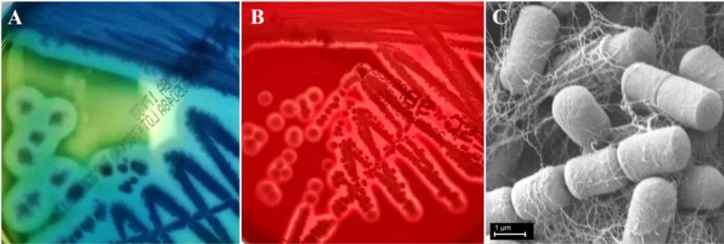
Characteristics of B. cereus: (A) Blue appearance on PEMBA (polymyxin pyruvate egg yolk mannitol bromothymol blue agar) due to lack of mannite cleavage and protein degradation. Opaque zones around the colonies due to lecithinase activity. (B) Growth on sheep blood agar, here with… Figure 2 from Albahri et al. (2026), EXCLI Journal · PMC13247181 (Reference Case) (CC BY 4.0)
Clipboards in 1993, Reverse Cold Chains Today
Before tandem mass spectrometers weighed toxins in urine, epidemiology cracked the exact same trap with clipboards. In CDC’s 1994 MMWR report on a July 1993 Virginia catered lunch across two daycare centers (82 children, 9 staff; 80 dietary histories collected), 14 of 67 lunch eaters vomited (~21%) versus 0 of 13 non-eaters. Zeroing in on chicken fried rice, 14 of 48 definite eaters fell ill (~29%) versus 0 of 16 definite non-eaters, while investigators rightly refused to shove 3 uncertain histories into either pile—and dividing by zero yields an undefined relative risk, never ‘infinite danger.’
Unlike generic leftover pasta reminders, the Austrian chalet proves the cold chain must run in reverse after cooking. UK Food Standards Agency rice guidance (updated August 21, 2026) urges chilling cooked rice promptly—ideally within one hour, spread shallowly—and refrigerating it no longer than one day before reheating rather than applying generic three-to-four-day leftover habits. And per CDC outbreak guidance (reviewed November 2025, checked November 21, 2026), save packaging and a one-week food log for health officials, never taste or mail home samples yourself, and get urgent care the moment vomiting stops keeping fluids down or confusion creeps in.
RED FLAGS · REHEATING NEVER DEFUSES CEREULIDE
Four Cooked-Rice Storage & Liver-Alarm Rules
Treat cooked rice as a rapid-chill hazard: cool it ideally within one hour in shallow containers, verify your refrigerator actually holds ~4°C rather than 8–9°C, and follow strict short storage limits (UK FSA: no more than one day).
Never trust boiling, frying, microwaving, smelling, or tasting to vet questionable rice—cereulide is odorless, tasteless, and survives normal cooking intact.
Never assume you are safe because your stomach settled or your dining companions had mild symptoms: liver failure and lactic acidosis can escalate silently after vomiting stops.
Seek urgent emergency care for severe dehydration, persistent inability to keep fluids down, confusion, or lethargy—and keep receipts and packaging for local health departments without running home taste or mail-in experiments.
✂ FIRST 60 SECONDS · SUSPECTED RICE-TOXIN POISONING
GET URGENT CARE FOR RED FLAGS: Confusion, lethargy, difficulty waking, worsening weakness, or vomiting that blocks all fluid intake demands immediate medical evaluation—even if friends who ate the same dish feel fine.
DO NOT TASTE OR RE-FRY LEFTOVERS: Never take a ‘check bite’ or test whether hotter microwaving fixes suspect rice; cereulide has no smell or taste and shrugs off kitchen heat.
SAVE PACKAGING & LOG ONE WEEK: Keep receipts, original containers, and a seven-day meal history for local public health investigators—never delay urgent hospital care or mail home food bags on your own.
BUILD A REVERSE COLD CHAIN NEXT TIME: Spread hot cooked rice shallowly to chill ideally within one hour, verify your fridge stays near 4°C (40°F) rather than 8–9°C, and discard old cooked rice early instead of trusting a three-day habit.
CHAPTER 54 · FILE № 184 · Ep 2707
0.38 Billionths of a Gram—and the Freezer Leftovers That Renamed the Snapper
How nine jumbled freezer remnants from a Sabah family dinner let COI DNA barcoding and single-quadrupole mass spectrometry revise the peer-reviewed identity of a toxic snapper—long after bedside clinicians kept a crashing heart alive without a single human toxin assay.
Six Days of Freezer Blocks and a Vagus Nerve Jammed on the Brake
Bad oysters announce themselves with theatrical speed; tropical reef toxins can wait until you have cleared half the freezer. In December 2017 in Kota Kinabalu, Sabah, Malaysia—reported clinically by Lee and colleagues (2019, Medical Journal of Malaysia) and forensically by Dao and colleagues (2021, Toxins)—a family of four bought two whole snappers weighing roughly two kilograms each on two separate days at the Lido supermarket, sliced them into 50-gram meal blocks, and froze them. On Day 1 all four noticed only mild muscle soreness, fatigue, and slight shortness of breath—nothing loud enough to indict dinner—so they kept pulling blocks from the freezer.
Six days in, the 38-year-old wife crashed into hospital telemetry: blood pressure 84/45 mmHg, initial pulse 60 bpm on a sinus-bradycardia ECG, then sinking to 48 bpm alongside recurrent hypotension. Both husband and wife developed cold allodynia, where cold water burns like a hot stove. She spent eight days hospitalized and still waited six months for near-complete relief of sensory symptoms and pruritus. Notice the physiology: her heart was not weak, her autonomic brake was stuck down. Produced by reef-bottom Gambierdiscus dinoflagellates and chemically oxidized up the predator food web, ciguatoxin wedges voltage-gated sodium channels open like a microscopic doorstop, forcing sensory nerves into electrical chaos and driving the vagus nerve to hammer her heart rate down while dilating blood vessels.
Crucially, clinicians diagnosed and stabilized her with IV fluids and cardiovascular support entirely on bedside presentation: zero patient-fluid toxin assays or absorbed-dose measurements were ever performed during her eight-day stay. Human survival always runs on real-time clinical care, weeks ahead of food forensics.
Nine Freezer Scraps, 0.38 Nanograms, and a Whisper Below the Floor
Ministry of Health officers retrieved not two pristine market fish, but a jumbled bag of nine leftovers derived from both fish: five uncooked heads, three pieces of cooked flesh, and one cooked tail. Real-world food forensics starts messy—Lee placed the event in ‘late December’ whereas Dao logged sample collection on December 15, and nobody could reconstruct which family member ate which 50-gram block on which day. Still, the physical tissue answered two forensic questions: what chemical hid inside, and what species actually sat on the plate?
Using single-quadrupole selected-ion-monitoring LC-MS (SIM LC-MS, tuning electromagnetic rods for intact CTX1B rather than tandem LC-MS/MS fragmentation), Dao’s team found no detection in seven samples, quantified 0.38 ng/g of CTX1B in Head 2, and detected a trace signal in Head 5 falling below the machine’s 0.32 ng/g limit of quantification (LOQ). Analytical chemistry separates detection from quantification the way a muffled whisper through drywall proves someone is in the next room without letting you transcribe exact words. Even though Dao’s Discussion mentions ‘one confirmed’ sample, prose never erases Table 1’s trace hit—nor does 0.38 ng/g in one head let anyone multiply grams eaten into a human absorbed dose or invent a ‘safe portion size’ across unevenly contaminated tissue.
Then mitochondrial COI DNA barcoding flipped the fish’s name. Cooking had already fragmented the flesh and tail DNA down to genus Lutjanus alone, reminding investigators how quickly kitchen heat shreds forensic markers, yet the five uncooked heads resolved cleanly into two distinct reef species: Lutjanus bohar (two-spot red snapper, Head 2 matching NCBI GenBank at 97.9% identity with full query coverage) and Lutjanus argentimaculatus (Head 5). Lee’s 2019 clinical paper had tentatively listed Lutjanus sebae—which Dao’s own text even misspelled ‘sabe’ in print. That taxonomic correction is sharper forensic science, never proof of supermarket fraud: filleted snappers look notoriously alike across overlapping common market names.
EXHIBIT A · OUTBREAK CURVE · CC BY 4.0
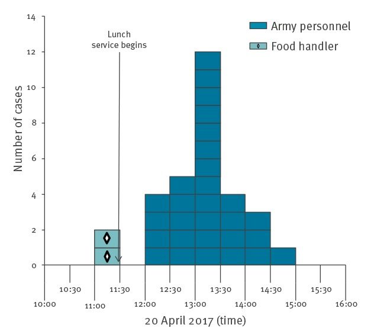
Cases in histamine food poisoning outbreak by onset of symptoms, France, 2017 (n = 31 cases) Figure 1 from Velut et al. (2019), Eurosurveillance · PMC6549462 (CC BY 4.0)
Barcoding Gaps, Asbestos in the Bricks, and Smarter Tracebacks
Fish barcoding rests on Ward and colleagues’ 2005 landmark abstract (754 COI sequences across 207 fish species), where Kimura 2-parameter modeling—weighting chemically easy purine-to-purine transitions differently from bulky transversions—found a mean 0.39% distance within species versus 9.93% across species within a genus, a ~25.46-fold barcoding gap. Yet averages are not rigid algorithmic cutoffs, a database similarity score still requires phylogenetic family-tree verification, and a 97.9% genetic match to L. bohar never translates into a 97% chance of getting poisoned.
Finally, separate your seafood physics cleanly. In Velut and colleagues’ 2019 Eurosurveillance yellowfin tuna outbreak (PMC6549462), scombroid histamine was mold growing on the outside wall—preventable by strict cold-chain icing. Ciguatera is asbestos baked into the bricks while the snapper swims happily across the reef: freezing, boiling, frying, and sniffing accomplish nothing. Prevention therefore shifts upstream to regional fisheries advisories, CDC travel guidance on high-risk tropical reef predators, and rapid consumer reporting—saving receipts and market names so regulators can pull toxic batches, just as CDC’s separate 2013 New York City traceback tracked ciguatera fish back to a single distributor.
RED FLAGS · WHEN ICE WATER BURNS AND PULSE DROPS
Four Reef-Fish Ciguatera & Reporting Rules
Go straight to medical care—never wait for lab fish testing—if seafood triggers reversed cold-feels-hot sensations, extremity tingling, severe gut upset, dizziness, or a slowing pulse; call 911 for collapse or breathing trouble.
Do not trust freshness, odor, taste, deep-freezing, or high-heat cooking to vet tropical reef predators, and never assume a familiar species name or past safe meal guarantees the next catch.
Save purchase receipts, packaging, market names, meal timelines, and companion symptom histories for FDA or local health-department traceback—and never retaste suspect leftovers to ‘confirm’ them.
Do not copy another patient’s drugs or recovery diet from an online case report: ciguatera sensory recovery can take six months or longer and requires individualized medical follow-up.
✂ FIRST 60 SECONDS · COLD BURNING OR SLOW PULSE AFTER REEF FISH
SEEK IMMEDIATE MEDICAL ASSESSMENT: Go straight to an ER for cold-contact burning, tingling, dizziness, or a slowing pulse after seafood—and call 911 immediately for breathing trouble or collapse without waiting for leftover testing.
REPORT THE MEAL & WHO SHARED IT: Give clinicians the market name of the fish, where and when it was bought, meal timing, and whether anyone else who ate the dish developed even mild fatigue or gut symptoms.
HOLD LEFTOVERS—NEVER RETASTE: Save receipts and packaging and let public health officials direct any leftover handover; never take another bite or run amateur home checks on suspect fish.
CHECK REEF ADVISORIES UPSTREAM: Because freezing and cooking fail against ciguatoxin, rely on regional fisheries and CDC travel advisories when choosing tropical reef fish rather than trusting freshness or smell.
CHAPTER 55 · FILE № 188 · Ep 2711
Six Days After the Garnish: The Hiccups That Mimicked a Stroke
Why a cocktail-rim tropical fruit can sit silently for nearly a week, why aggressive daily dialysis risked tossing out the paramedics alongside the rioters, and why a clean MRI five months later missed an electrical storm.
A Six-Day Fuse and a Clot That Wasn’t There
Sliced crosswise, star fruit (Averrhoa carambola) looks like nature’s polite cocktail decoration. In a 2023 Medicine case report by Li and colleagues, that garnish met a 67-year-old man whose kidneys were fighting a three-front war—diabetic nephropathy, severe hypertension, and polycystic kidney disease—keeping him on hemodialysis for two years. Healthy kidneys escort star fruit’s neurotoxin straight into urine. When the bouncer is permanently offline, the compound lingers and creeps across an inflammation-weakened blood-brain barrier. Six full days after eating the fruit, his crisis began not with stomach cramps, but with medicine’s most deceptively comical brainstem alarm: persistent hiccups.
Vomiting, slurred speech, sluggish reactions, dizziness, confusion, and seizures followed fast. Arriving at the emergency department with blood pressure at 198/76 mmHg and serum creatinine at 866.6 µmol/L (versus roughly 65–105 µmol/L in healthy adult men), he looked for all the world like an acute ischemic stroke. After a rapid CT excluded bleeding, doctors gave thrombolysis—a clot-busting drug that could not work because there was no clot to bust. Nor could creatinine measure fruit toxin: it merely proved his kidneys were offline, while severe hypertension and baseline uremia stayed active confounders alongside the clinically suspected fruit with zero hospital blood assay for the toxin itself.
When the Riot Police Throw Out the Paramedics
Unable to see the chemical directly, clinicians watched his brain’s architecture and wiring evolve in real time. Diffusion-weighted MRI looked unremarkable on January 19, sprouted patchy bilateral cerebellar and occipital bright spots on January 20, expanded into posterior parietal and temporal cortex by January 28, and resolved completely by April 25. His EEG progressed from stunned delta-theta slowing to periodic epileptiform spike-waves by January 30, while his Glasgow Coma Scale fell from 11 (E3, V3, M5) down to the airway-danger line of 8 (E2, V2, M4). (Strict audit note: minor source friction—an EEG figure captioned February 4 versus February 8 in prose, unclear total stay length, and a BUN unit typo—is left unresolved rather than silently patched.)
Then came the dialysis tug-of-war. Initially, doctors leaned hard into filtration: six consecutive days of hemodialysis paired with a lower 250 mg levetiracetam regimen. Yet by January 30 he stayed agitated, visually impaired, and stuck at GCS 8 with spike-waves firing. So the team pivoted—restoring his standard three-times-weekly dialysis schedule while doubling levetiracetam to 500 mg daily plus a post-dialysis top-up dose. Within days he woke up, walked, recalled events, and climbed back to GCS 15. The authors’ competing-clearance hypothesis is vivid—brute-force daily dialysis likely washed out his anti-seizure drug before it could calm his brain—yet remains unproven because neither levetiracetam nor toxin blood levels were drawn and two treatments changed simultaneously. Five months later, he returned confused with spike-and-slow-wave EEG storms despite completely nonspecific CT and MRI scans; boosting his anti-seizure dose worked again, without proof of repeat fruit exposure (raising an unproven hypothesis of a permanently lowered seizure threshold).
EXHIBIT A · MRI SCAN · CC BY 4.0
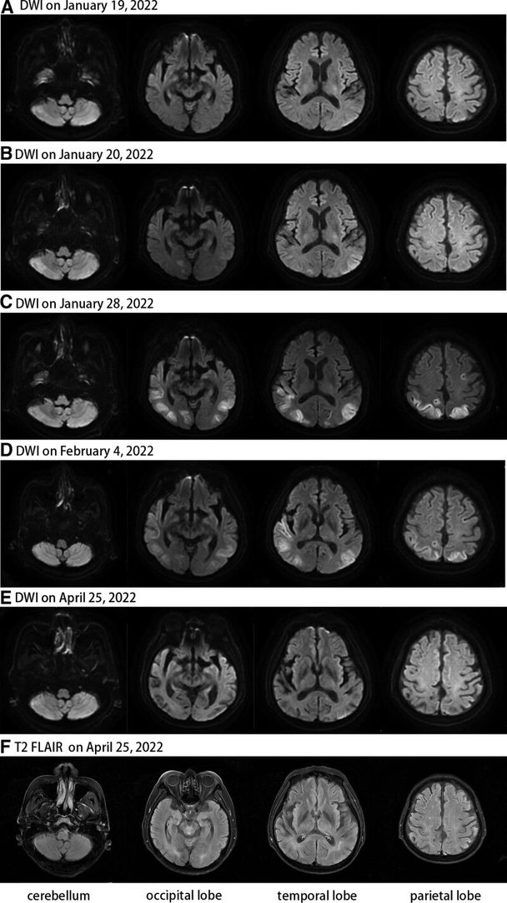
Magnetic resonance images during the first hospitalization. (A) DWI on January 19. No obvious hyperintensities were seen. (B) DWI on January 20. The bilateral cerebellar and occipital lobe have patchy slight hyperintensities. (C) DWI on January 28. The bilateral parietal… Figure 1. from Li et al. (2023), Medicine · PMC9981371 (CC BY 4.0)
Ninety-Four Percent Hiccups and the Gas Pedal Stuck Down
History explains the mechanism cleanly. In a 2003 Nephrology Dialysis Transplantation abstract, Neto and colleagues catalogued 32 selected intoxicated uremic patients (20 on hemodialysis, 8 on peritoneal dialysis, 4 undialyzed): 30 of 32 (93.75%) developed hiccups and 7 of 32 (21.9%) suffered overlapping seizures—figures characterizing sick hospital presenters rather than population odds after a bite, and offering no randomized treatment recipe. A decade later, Garcia-Cairasco and colleagues (2013 abstract) isolated the molecular culprit: caramboxin, a phenylalanine-like molecule that jams ionotropic glutamate receptors open, flooding neurons with sodium and calcium like a brick on the brain’s gas pedal. Keep star fruit’s two poisons strictly separate: high oxalate can injure healthy kidneys, whereas star fruit did not cause this man’s pre-existing kidney disease—his already broken kidneys failed to clear caramboxin.
The National Kidney Foundation draws one clean, blame-free boundary: people with kidney disease should avoid star fruit and carambola completely—whole, juiced, blended into tropical smoothies, or perched on a glass rim—and loop family and caregivers into the rule. Dialysis does not cancel the warning. Under NHS poisoning guidance, persistent hiccups, vomiting, or confusion after possible ingestion demand immediate clinical contact—and seizures, unconsciousness, or breathing trouble demand 911 or 999. Never wait for Thursday’s scheduled dialysis, never self-adjust pills, and never attempt home water-flushing that can flood failing kidneys into acute heart failure. At triage, deliver five facts fast: kidney disease, dialysis status, all medications, suspected star fruit/carambola, and exact symptom timing.
RED FLAGS · DO NOT WAIT FOR DIALYSIS DAY
Star-Fruit Neurotoxicity and Renal Triage Kill Switches
Anyone with chronic kidney disease—including established hemodialysis and peritoneal dialysis patients—must avoid star fruit (carambola) completely, including tropical juice blends and decorative garnishes.
Persistent, unusual hiccups, vomiting, speech trouble, or confusion days after possible star-fruit exposure require urgent medical evaluation; seizures or unconsciousness demand immediate 911/999 dispatch.
Never wait for your next scheduled dialysis session, never self-adjust anti-seizure or blood-pressure pills, and never drink large volumes of water at home to flush a toxin when kidneys cannot excrete fluid.
Name kidney disease, dialysis, all medications, suspected star fruit/carambola, and symptom onset immediately at triage so clinicians do not chase an ischemic stroke mimic.
✂ FIRST 60 SECONDS · POST-STAR-FRUIT HICCUPS OR CONFUSION
CALL URGENT CARE OR 911 NOW: Call your renal clinic or urgent medical services immediately for persistent hiccups, vomiting, or confusion; dial 911/999 for seizures, collapse, or breathing trouble.
NO HOME FLUSHING OR PILL GUESSING: Do NOT drink excess water to 'flush it out' (risks dangerous fluid overload and heart failure), do not self-adjust medications, and do not wait for scheduled dialysis.
DELIVER THE FIVE TRIAGE FACTS: State immediately: (1) kidney disease, (2) dialysis regimen, (3) every current medication, (4) suspected star fruit/carambola ingestion, and (5) exact symptom timeline.
MAKE AVOIDANCE A TEAM RULE: Share the strict no-star-fruit/carambola rule with family, cooks, and care staff, check tropical juice labels, and ask a renal dietitian for safe fruit alternatives.
CHAPTER 56 · FILE № 199 · Ep 2751
When the Canary in the Coal Mine Is Breakfast
How two California hen necropsies turned cancer and blunt trauma into human food-chain alerts, why wet-weight eggs cannot be compared to dry dirt, and why you cannot set a kitchen timer to declare contaminated eggs safe.
Metastatic Cancer, a Fractured Rib, and the Poison Hiding Underneath
The classic canary in the coal mine works cleanly because miners do not fry the canary for breakfast. When backyard hens absorb environmental lead from soil, flaking exterior paint, or debris, the sentinel species sits directly inside the household food chain. In a 2013 Veterinary Medicine case series by Roegner and colleagues (keeping the two California chicken flocks strictly separate from their cattle cases—and refusing to pretend an unrelated illustrative photograph of a gizzard stuffed with .22 shell casings belonged to either hen), toxicology turned routine veterinary mysteries into public health sirens.
Case 2, an adult brown hen from Santa Clara County submitted in January 2012 after failing supportive care, looked at first like pure avian oncology: severe wasting, metastatic ovarian adenocarcinoma carpeting her peritoneum, a benign mesosalpinx leiomyoma, a flaccid atrophic liver, and negative microbiology (no CBC published). Then liver toxicology returned 7.8 mg/kg lead on a wet-weight basis (alongside secondary iron elevation at 3,700 mg/kg). Lead did not cause her tumors; rather, pathologists favored fatal lead toxicosis riding atop devastating cancer—and unlike cancer, lead does not die with the bird. By April 2012, mixed yolk-and-albumen egg contents from the remaining flock tested at 0.072 mg/kg wet weight (72 micrograms per kilogram, or 0.072 micrograms per gram). No yard sample was ever submitted, no family blood test was published, and no later flock clearance was documented.
Case 3, in El Dorado County in April 2012, showed how chronic poisoning hides under blunt trauma. Seven of 15 birds had died—yet only one bird reached necropsy, so science refuses to call all seven confirmed lead deaths. That well-nourished three-year-old hen died of trauma: external wounds, a fractured rib, and massive unilateral thoracic hemorrhage (plus incidental congenital heart findings). Still, toxicology tested both liver (5.4 mg/kg wet weight) and kidney (12 mg/kg wet weight). Because acute exposure floods the liver first while kidney levels exceeding double the liver mark chronic accumulation, the fatal blow had merely unmasked a silent, ongoing heavy-metal exposure.
Why Falling Blood Lead Can Mean Rising Yolk Lead
First, watch the unit traps. That 0.072 mg/kg egg figure is a wet-basis food concentration—weighing lead against a heavy water-logged egg, never directly comparable to dry-basis soil numbers where removing water weight inflates the ratio, and never convertible by formula into human blood lead or a “safe egg count.” Second, watch your intuition collapse when you inspect how lead actually moves inside a hen. In 2003, Trampel and colleagues tracked five clinically healthy-looking hens from an Iowa farm flock of 20 naturally exposed to lead paint chips (ending at necropsy, with no full clearance curve).
Look at Hen 3. Between Day 2 and Day 9, her wet-basis blood lead dropped from 475 parts per billion down to 150 ppb—a cheering 68.4% plunge. Flip to her egg yolks over roughly the same window: Day 1 yolk lead stood at 120 ppb and climbed to 340 ppb by Day 9—a staggering 183.3% surge. (Because blood started on Day 2 and yolk on Day 1, do not turn this into a neat minute-by-minute transfer equation.) The biology is brutally simple: blood is only a highway, not the warehouse. Chemically deceitful lead mimics calcium, so the laying hen’s reproductive machinery actively pulls lead out of the bloodstream and packs it into developing ovarian follicles—and archives surplus lead in her skeleton, where the relentless calcium demands of future egg-laying can leach heavy metal back into yolks long after yard paint chips vanish.
REFERENCE EXHIBIT · RADIOGRAPH · CC BY 4.0
ILLUSTRATIVE REFERENCE EXHIBIT — Verified CC BY diagnostic figure from a separate peer-reviewed publication showing the same mechanism (not the index patient).
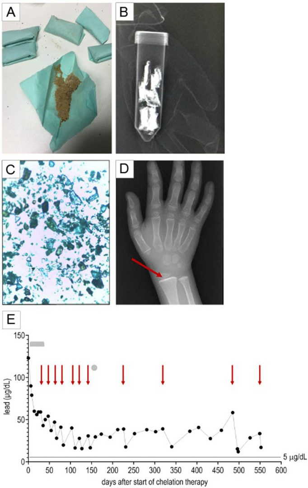
Lead poisoning. The patient ingested an ayurvedic herbal medicine termed Indian spices. (A) The Indian spices were provided as a brown powder wrapped in filter paper. (B) The packets were found to be radio-opaque. (C) The powder contained crystalline elements. (D) An x-ray of the wrist… Figure 2 from Cericola et al. (2025), Frontiers in Pediatrics · PMC12611801 (Reference Case) (CC BY 4.0)
Pause the Omelets, Drop the Paint Scraper, and Check the Kids
Two parallel pathways govern real-world action. On the veterinary and food side, promptly evaluate weak, uncoordinated, anorexic, or dying birds—and immediately tell your veterinarian these are food-producing poultry, since laws bar many companion-bird drugs from laying hens due to food residues. Guided by an August 2024 Texas A&M TVMDL case study, pause eating or sharing eggs during a credible lead investigation; pausing stops ongoing exposure without mandating blind culling, and follow-up clearance must rely on veterinary and food-safety testing rather than a DIY calendar wait. Strictly ban home chelation (mobilizing bone lead can sicken birds and re-spike eggs), human medications, and DIY backyard necropsies.
On the human and yard side, treat lead-positive hens as a shared-environment alarm that reaches people even if nobody ate an egg—through yard soil, tracked-in dust, and gardening. Never grab a paint scraper, sander, or shop vac to “fix” flaking exterior paint yourself; DIY scraping aerosolizes solid lead into breathable dust. Call qualified environmental assessors, share actual lab reports with health teams, and follow current CDC guidance (2026): possible childhood exposure warrants clinician discussion and blood lead testing even when a child looks completely fine. The CDC blood lead reference value of 3.5 micrograms per deciliter flags the top 2.5% of U.S. children for follow-up—it is NOT a safe floor, because no blood lead level in children is safe (retiring the older 5 µg/dL and 6 µg/day figures cited back in 2013).
RED FLAGS · WHEN THE YARD SHOWS UP ON THE BREAKFAST PLATE
Backyard-Egg & Environmental-Lead Kill Switches
Clinically healthy-looking hens can lay lead-contaminated eggs—and a falling avian blood lead level does NOT mean yolks are clearing, because lead mimics calcium into eggs and bones.
Pause eating, sharing, or selling eggs during any credible flock lead investigation, tell vets your birds produce food, and never trust a DIY waiting period or home chelation to clear eggs.
Never dry-scrape, sand, or DIY-remediate suspect exterior paint or yard debris—turning peeling chips into airborne dust multiplies inhalation danger for the whole household.
Lead in backyard birds or eggs signals a shared yard hazard; discuss blood lead testing with a pediatrician for potentially exposed children even with zero symptoms (CDC reference 3.5 µg/dL is a follow-up trigger, not a safe level).
✂ FIRST 60 SECONDS · SUSPECTED BACKYARD FLOCK LEAD
PAUSE EGG CONSUMPTION & SHARING: Stop eating, gifting, or selling eggs immediately during any credible flock lead investigation—and do not resume on a homemade calendar timer without veterinary and food-safety testing.
TELL YOUR VET THEY ARE FOOD BIRDS: Seek prompt veterinary care for weak, uncoordinated, or dying poultry, declare egg/meat use upfront to avoid prohibited drug residues, and skip home chelation or DIY necropsies.
DO NOT SCRAPE OR SAND SUSPECT PAINT: Leave flaking paint, old sheds, and contaminated soil to qualified environmental assessors so you do not aerosolize toxic lead dust across the yard and indoors.
DISCUSS CHILD BLOOD TESTING EVEN WITHOUT SYMPTOMS: Share avian lab reports with health professionals and ask a pediatrician about blood lead testing for potentially exposed children—chronic lead injury develops silently.
CHAPTER 57 · FILE № 222 · Ep 2776
Normal Lactate, Clean Brain MRI—and the Mirror-Image Acid Behind the Well
Why routine hospital lactate assays act like a left-handed glove ignoring right-handed gut acid, why clear well water with ‘not detected’ E. coli is never certified sterile, and why plain water worsens short-bowel dehydration.
The Left-Handed Glove That Missed Eight Times Normal Acid
Nothing insults a terrified parent faster than a fluctuating metabolic crisis politely straightening its tie the instant a triage doctor walks in. In 2024, J. A. Murayi, C. Flahive, and E. Mezoff in JPGN Reports documented a six-year-old boy living with short bowel syndrome (SBS) after an earlier intestinal volvulus left him with just 22 centimeters of small intestine—shorter than a school ruler, against roughly 600 centimeters in an average adult—though he retained both his ileocecal valve and an intact colon in continuity. His family ran a finely balanced hybrid plan: 40% of daily calories via a tunneled central venous line, 60% through fiber-containing pediatric formula and a strict diet dodging simple sugars and sugar alcohols. Two months earlier, mild acidosis prompted metronidazole cycles for presumed bacterial overgrowth; four days before the crisis, loose stools with low bicarbonate and high chloride prompted sodium acetate in his IV nutrition.
Then he woke dizzy, confused, slurring his words, and stumbling. Parents called EMS—yet by the time he reached the emergency bay, his vitals and neurological exam appeared normal, like a grinding car engine idling sweetly for the mechanic. Worse, a stool PCR came back positive for norovirus: prime premature-closure bait, except routine norovirus never explains stroke-like ataxia in a stable child. Thankfully, the team admitted him to intestinal rehabilitation, where a ward nurse witnessed slurred speech, dizziness, and ataxia abruptly return that very afternoon. Pediatric ICU workup yielded a ghost: normal brain MRI, normal ammonia, and a completely normal routine lactate.
Only basic electrolyte arithmetic blew the whistle. Admission labs—sodium 138, chloride 115, carbon dioxide (bicarbonate proxy) 10—left an anion gap of 13 (normal 4–12), signaling an unmeasured acid. (A later admission panel printed sodium 139, chloride 111, CO₂ 13—mathematically 15—yet the chart still printed 13; we preserve that quirk verbatim rather than inventing corrections.) Recognizing SBS anatomy, clinicians sent a separate D-lactate assay. Two days later—routine send-out turnaround, not 48 hours of withheld treatment—it returned at 1.96 millimoles per liter against a 0–0.25 reference, nearly eight times normal. L-lactate and D-lactate are mirror-image enantiomers, like left and right hands. Human cells manufacture L-lactate; routine hospital analyzers rely on L-specific enzymes—a left-handed glove that floats straight past right-handed bacterial D-lactate pouring from an acidifying colonic fermentation vat.
Twenty-Four Hospital Days, an Adult Stool Ratio, and a Censored Well
Clinicians threw the full biochemical toolbox at his gut—oral bicarbonate, IV electrolyte tweaks, switching metronidazole to rifaximin, restricting carbs and fermented foods, and shifting to fiber-free formula—and his brain cleared. Yet over the next six months, despite strict family adherence, he bounced back three more times for 24 total hospital days with D-lactate-driven altered mental status. Recurrence in an adaptive microbiome is never proof of family noncompliance; teams were even weighing fecal microbiota transplant.
Before trying that, the family tested their private home well—and hit an environmental ceiling. Total coliforms returned at greater than 200.5 MPN (Most Probable Number) per 100 milliliters against a safe drinking limit under 1.0. MPN is a statistical probability grid estimate rather than a microscope headcount, and the greater-than sign marks a right-censored ceiling past calibration. Meanwhile, E. coli printed “ND” (not detected)—meaning strictly below the 1.0 MPN reporting floor, NEVER proof of sterile water. Epistemic discipline stays crucial here: heavy coliform counts prove compromised well integrity demanding safe water immediately, NOT laboratory proof that a specific well microbe moved into his colon and brewed that 1.96 mmol/L D-lactate (no organism matching or toxin assay was done). Once the family switched drinking water to bottled water alongside ongoing fiber-free care, D-lactic acidosis episodes stopped completely—and one year later, with maturing gut physiology and sustained care, his central IV line came out permanently.
The underlying microbial logic drew from Camille Mayeur and colleagues’ 2013 PLoS One study of 16 adults with SBS and intact colons: 9 of 16 (56.25%) accumulated fecal lactate, and 6 of those 9 (66.7%) were D-lactate predominant—which is only 6 of 16 (37.5%) of the whole group once you keep the denominator straight. Presence of bacteria shows who is in the room, not what they are fermenting; two accumulators had prior encephalopathy yet felt completely fine when high fecal D/L ratios were sampled. Adult stool ratios remain descriptive signatures, never universal child blood-prediction rules.
REFERENCE EXHIBIT · CT / IMAGING SCAN · CC BY 3.0
ILLUSTRATIVE REFERENCE EXHIBIT — Verified CC BY diagnostic figure from a separate peer-reviewed publication showing the same mechanism (not the index patient).
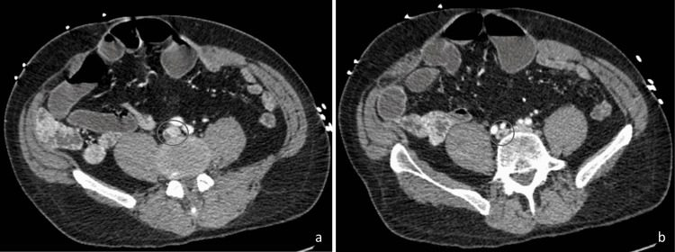
CT scan of the abdomen and pelvis with and without intravenous contrast demonstrating non-occlusive thrombi (circle) within the IVC (a) and the right common iliac vein (b)CT: computed tomography; IVC: inferior vena cava Figure 1 from Khrais et al. (2022), Cureus · PMC9240996 (Reference Case) (CC BY 3.0)
Never Flood a Short Bowel With Plain Water—and Test the Well Yearly
At the bedside, act on the changing child—not the calm lab sheet. Sudden confusion, slurred speech, stumbling, or slumped responsiveness in anyone with SBS demands urgent emergency care regardless of a normal earlier exam or routine lactate. Hand triage exact symptom timing, stool losses, and nutrition plans, and ask plainly: “Does this routine lactate assay measure D-lactate, and what is our separate testing plan?” Resist two perilous home instincts: per NIDDK guidance, never push extra plain hypotonic water onto an SBS patient (osmosis pulls sodium and electrolytes out of blood into the gut, worsening losses—use only specialist-prescribed oral rehydration solutions), and never launch DIY fasting, formula swaps, antibiotics, or over-the-counter probiotics that can dump extra Lactobacillus onto an active fermentation fire.
At the kitchen tap, CDC private-well guidance draws a bright boundary: unlike municipal systems, private well owners bear 100% of safety oversight. Clear glass water proves nothing. Test private wells at least annually through a state-certified laboratory—not hardware strips—for total coliforms, nitrates, dissolved solids, and pH, plus immediately after floods, runoff, well repairs, or taste, odor, or appearance shifts. If results fail, skip DIY bleach recipes and homemade filters, switch straight to certified bottled or safe municipal water for drinking and medical formula, consult qualified remediation pros, and put your well history directly into your child’s clinical chart.
RED FLAGS · A NORMAL ROUTINE LACTATE ONLY CHECKS THE LEFT HAND
Protecting Short-Bowel Patients From Hidden Acid and Untested Wells
Treat sudden slurred speech, confusion, stumbling, or reduced responsiveness in short bowel syndrome as a medical emergency—even after a normal ER snapshot, normal brain MRI, or normal routine lactate.
Ask clinicians directly whether the lab’s routine lactate assay detects D-lactate and what separate send-out plan applies, while sharing exact symptom times, stool losses, and full nutrition and medication regimens.
Follow specialist-prescribed oral rehydration solutions instead of pushing extra plain water in SBS (which draws electrolytes out osmotically), and avoid DIY fasting, formula changes, or unvetted OTC probiotics.
Test private wells at least annually—and after floods, repairs, or taste/odor shifts—using a state-certified laboratory; switch immediately to certified bottled or municipal water if coliforms appear, skip DIY bleach fixes, and inform your care team.
✂ FIRST 60 SECONDS · SLURRED SPEECH OR STUMBLING IN SBS
ACT IMMEDIATELY ON NEUROLOGICAL SHIFTS: Treat new confusion, slurred speech, dizziness, or stumbling as an emergency—describing exact home timing, baseline departure, stool losses, and full nutrition plans.
ASK FOR THE SEPARATE D-LACTATE ASSAY: Routine hospital lactate uses left-handed L-lactate enzymes that miss bacterial D-lactate; ask explicitly whether D-lactate has been ordered alongside anion-gap tracking.
USE SPECIALIST ORS—NEVER EXTRA PLAIN WATER OR OTC PROBIOTICS: Plain water draws sodium out of a short bowel osmotically, and unvetted Lactobacillus probiotics can fuel colonic D-lactate; keep every hydration and diet change inside the GI/dietitian team.
TEST PRIVATE WELLS AT A STATE-CERTIFIED LAB: Run certified annual checks (and retest after floods, repairs, or taste/odor changes), switch straight to bottled or municipal water if coliforms appear, skip DIY bleach recipes, and tell your medical team.
CHAPTER 58 · FILE № 250 · Ep 2916
A 16.6 Hemoglobin, a Spotless Teen Throat—and Two Stomachs Torn Open by −195 °C Fog
Why a normal blood count never clears a perforated organ, why an unburned mouth offers zero safety guarantee, and why waiting for theatrical fog to vanish is touching a stove coil the second it stops glowing red.
A Board-Rigid Abdomen, 82 Over 60—and a Hemoglobin Too High to Save You
Most culinary misadventures obey polite biochemistry: swallow a bad molecule, bind a receptor, pay the metabolic bill. Liquid nitrogen skips chemistry entirely and brings a sledgehammer of raw thermodynamics to happy hour. Cooled to roughly −195 °C (about −320 °F), nitrogen gas stays liquid only under cryogenic discipline; meet a 37 °C human stomach and it instantaneously freezes cellular water while boiling back into expanding gas inside a muscular bag gated by two sphincters. In 2025, Carlos Zaldo Arredondo and colleagues in Cureus reported a previously healthy 34-year-old man—zero prior diseases—rushed to an emergency department with acute generalized abdominal pain after drinking a liquid-nitrogen-infused alcoholic cocktail at a bar. Keep the dossier forensic and invention-free: the chart contains zero bartender dialogue, no dare story, no exact onset clock, no measured dose, no intragastric pressure reading, no internal tissue temperature, and no chemical gas assay proving pure nitrogen.
What the chart did capture was a human plumbing system crashing in real time. His heart pounded at 124 beats per minute (normal resting 60–100) trying to rescue a blood pressure bottomed out at 82/60 mmHg—profound shock-range hypotension. He panted at 30 breaths per minute (normal 12–20), his core temperature dropped to 35.4 °C bordering hypothermia, and he lay lethargic and drenched in sweat beneath a markedly distended, board-rigid abdomen—involuntary muscular guarding announcing a breached organ wall. Admission bloodwork screamed systemic alarm: C-reactive protein hit 134 mg/L against a reference limit of 5 mg/L or less, while white blood cells surged to 21.46 × 10³/µL (21,460 cells/µL vs. normal 4–10 × 10³/µL). Respect the math: dividing 134 by 5 yields a 26.8-fold concentration ratio above normal—NOT 26.8 times more stomach damage, NOT 26.8 times mortality risk, and NOT a surgical cutpoint. Meanwhile, glucose (77 mg/dL), creatinine (1.1 mg/dL), sodium (139 mmol/L), and hemoglobin (16.60 g/dL, normal 12–16 g/dL) sat calmly—alongside a published Table 1 platelet reference typo of 13–400. A solid 16.60 hemoglobin never clears a perforated stomach: early blood counts measure the reservoir, not whether the pipe wall blew open and spilled gas and acid into the sterile peritoneum.
The Geography of Free Air—and the Pristine Throat That Hid a Four-Centimeter Tear
A plain abdominal CT scan settled the anatomy without guessing: massive pneumoperitoneum, a stark black void of free gas escaped outside the digestive tract into the peritoneal cavity. Notice how starkly this diverges from dry ice sublimating inside a parked car (Ep 966): carbon dioxide in an enclosed cabin depletes breathable oxygen through the lungs, whereas swallowed liquid nitrogen triggers direct structural failure of an internal organ wall. Even CT knows its job description—it confirms a hollow-organ breach without acting as a mass spectrometer proving pure nitrogen. Diagnostic laparoscopy located a 3-centimeter perforation on the anterior aspect of the stomach. Surgeons repaired the defect; remarkably, he avoided mechanical ventilation, took oral liquids on day two, and walked out on day three. Never turn one fortunate recovery into a brochure: a single case proves no comparative surgical superiority, guarantees no universal three-day exit, offers zero long-term follow-up, and omitted any documented primary mouth examination—meaning nobody can claim his mouth escaped unburned.
Place that bar cocktail beside Dongwook Kim’s 2018 Clinical Endoscopy report of a 13-year-old boy who ate a liquid nitrogen snack at an amusement park and arrived with severe abdominal pain and dyspnea as trapped abdominal gas shoved upward against his diaphragm. Unlike the adult record, doctors thoroughly inspected the teenager’s upper airway and documented zero dysphagia, zero sore throat, and zero head, nose, or throat injury. Quarantine that negative exam strictly: it belongs solely to the boy—never retroactively clearing the 34-year-old—and must NEVER become a consumer safety test. A spotless mouth still sat directly above a torn stomach. X-ray and CT proved massive pneumoperitoneum without pinpointing the exact rip; surgery repaired a 4-centimeter defect at the angularis incisura along the lesser curvature (a sharper landmark, not a contradiction with the adult’s broad anterior aspect), and Kim’s post-op Figure 4 is a contrast upper GI series checking for leaks, NOT an endoscopy. Despite a nearly identical white blood cell count of 21,400/µL, the boy stayed hospitalized until day eight (doing well later at unspecified timing)—proving matching labs never promise matching recoveries. And bury the barstool Leidenfrost excuse: neither paper supplies expansion ratios, Laplace math, an injury-volume recipe, or any magical vapor shield inside a churning, liquid-filled stomach.
EXHIBIT A · ABDOMINAL CT (PNEUMOPERITONEUM) · CC BY 4.0
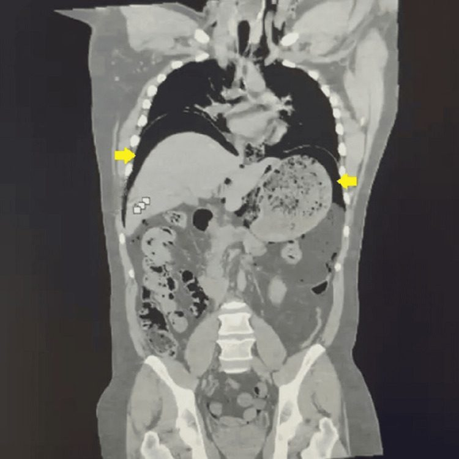
Coronal abdominal CT scan showing extensive pneumoperitoneum (yellow arrows)—free gas escaped beyond the stomach wall after rapid liquid-to-gas expansion following liquid nitrogen cocktail ingestion. Figure 1 from Zaldo Arredondo et al. (2025), Cureus · PMC12103062 (CC BY 4.0)
The Stove-Coil Myth, the Missing Denominator, and Two Rules That Actually Work
Human sensory alarms evolved for rot, bitterness, and campfire heat—not sub-blizzard cryogens dressed up as Instagram smoke. The deadliest barroom folklore is the vapor disappearance test: believing a cereal puff or cocktail turns harmless once the theatrical cloud clears. That is touching an electric stove burner the second the coil stops glowing red; porous snacks and chilled pools retain cryogenic injury potential after visible mist fades. Separate point-of-sale novelties prepared seconds before swallowing from industrial flash-frozen supermarket ice cream, where liquid nitrogen vanished long before packaging. And drop the assumption that a kiosk’s existence proves a federal safety net: the 2018 FDA reference document addressing the 2017 Model Food Code outlines staff training, handling, and consumer warnings for immediate-consumption preparation, yet a Model Food Code is guidance states may adopt, modify, or ignore—not a sweeping federal ban. Worse, an unknown denominator (documented injured numerators without global serving totals) makes calculating an incidence rate or inventing a safe-ounce threshold mathematically impossible.
That uncertainty drives two blunt survival paths grounded in National Capital Poison Center guidance. Before the first bite or sip: skip point-of-sale liquid nitrogen novelty foods and drinks entirely. After consumption, if sudden severe abdominal pain, visible distension, breathing trouble, or collapse hits—with or without mouth burns—call emergency medical services immediately. Tell crews the exact product, suspected liquid nitrogen, timing, symptom progression, and your honest uncertainty. Share an existing receipt or already-taken photo ONLY; never delay care or touch, smell, or taste leftovers to play detective. Never run a swallow test, never give water, milk, food, or antacids that would pour straight through a stomach tear into the sterile peritoneum, and never massage the belly to release gas. U.S. Poison Control (1-800-222-1222, or your local equivalent) offers rapid guidance, but never let a phone call delay physical emergency care.
RED FLAGS · VANISHING FOG NEVER CLEARS CRYOGENIC PHYSICS
Avoiding Point-of-Sale Cryogenics and Responding to Sudden Abdominal Trauma
Avoid point-of-sale liquid nitrogen novelty cocktails and snacks altogether—fading mist never proves safe internal temperature, and no safe ingested threshold exists.
Call emergency medical services immediately for severe abdominal pain, belly swelling, breathing difficulty, or collapse after exposure—never wait for mouth burns or matching textbook symptoms.
Give zero water, milk, food, or antacids and never massage the abdomen while awaiting care, since oral fluids can spill directly through a gastric tear into the peritoneal cavity.
Hand responders honest product timing and any existing photo or receipt—never handle, smell, or taste leftover cryogenic drinks, and never let Poison Control calls (1-800-222-1222) delay EMS.
✂ FIRST 60 SECONDS · AFTER A LIQUID NITROGEN NOVELTY EXPOSURE
SKIP POINT-OF-SALE CRYOGENIC NOVELTIES: Refuse smoking liquid nitrogen cocktails and snacks completely; waiting for visible fog to clear never guarantees safe internal temperature, and supermarket factory-frozen ice cream is a separate process.
CALL EMS IMMEDIATELY—NO MOUTH BURN NEEDED: For severe abdominal pain, visible distension, shortness of breath, or collapse after ingestion, call local emergency services immediately even if the mouth and throat feel completely normal.
ZERO LIQUIDS, MILK, ANTACIDS, OR BELLY MASSAGE: Never run a swallow test or give water, milk, food, or medications, and never press or massage the abdomen—fluids can spill through a perforated stomach wall into the sterile peritoneal cavity.
SHARE HONEST TIMING—DON’T PLAY DETECTIVE: Tell responders the suspected liquid nitrogen product, timing, and existing receipt or photo ONLY; never delay care or handle, smell, or taste leftovers, and never let Poison Control calls (1-800-222-1222) stall EMS.
CHAPTER 59 · FILE № 266 · Ep 3012
The Bowl on the Counter, the Boiling Pot—and the Toxin That Locked the Mitochondria
Why rolling heat executes the bacterial chef while sparing its odorless tricarboxylic poison, how jamming a single inner-membrane doorway starves oxygenated organs, and why safety ends days before the burner clicks on.
Five Days in a Mixing Bowl—and the Calm First Lab Sheet Behind a 0.3 Glucose Crash
Humanity has a touching, almost religious faith in boiling water: whatever biological sins occurred on the kitchen counter, we assume a rolling pot at 100°C grants full absolution. Dried wood-ear mushrooms—Auricularia auricula, or black fungus—keep safely in pantries because desiccation halts microbial growth, and cooks rehydrate them safely in twenty minutes every night. Leave that bowl out for five July days, however, and prep turns into an unmonitored bioreactor. In Mengdi Shi, Mei Zeng, and colleagues’ December 2024 BMC Complementary Medicine and Therapies report from Shandong Province, a 77-year-old woman with hypertension reached a local hospital at 5:00 a.m. on July 15, 2023, after four hours of sweating and unconsciousness (with nausea and vomiting noted in the abstract). At noon the day before, she had eaten Auricularia auricula soaked roughly five days. Her 5:00 a.m. arterial blood gas read like a cellular blackout: pH 7.14, PaCO2 82 mmHg, PaO2 48 mmHg, lactate 8.6 mmol/L, and blood glucose zeroed out at 0.3 mmol/L before rescue rebounded it to 12.2 mmol/L.
Yet skimming only her initial July 15 organ panel offered a dangerous mirage. While white blood cells hit 14.76 × 10^9/L (neutrophils 82.40%), D-dimer 1.52 µg/mL, and potassium 3.49 mmol/L, liver enzymes showed only a modest early bump—ALT 166 U/L (0–35), AST 241 U/L (14–36), and direct bilirubin 8.99 µmol/L alongside normal indirect bilirubin (13.78 µmol/L)—and kidney and clotting tests sat cleanly inside normal limits: creatinine 62 µmol/L, BUN 5.94 mmol/L, prothrombin time 14.40 seconds, APTT 29.30 seconds, and fibrinogen 2.28 g/L. Twenty-one hours later, at 2:00 a.m. on July 16, the drywall gave way: ALT vaulted 47.8-fold to 7,940 U/L, AST reached 8,305 U/L, PT stretched to 45.70 seconds, fibrinogen fell to 0.94 g/L, and interleukin-6 hit 195 pg/mL (0–7). Transferred to Qilu Hospital at 3:00 p.m. unconscious and jaundiced, she posted ALT 8,890 U/L, AST 12,489 U/L, ammonia 105 µmol/L, potassium 6.57 mmol/L, creatinine 119 µmol/L, and PT beyond the analyzer ceiling at >120 seconds.
Jamming the Revolving Doorway—and Why Falling Liver Enzymes Did Not Mean Healing
Day-two post-transfer HPLC-MS/MS named what outlasted the stove: bongkrekic acid at 1,470 ng/mL in plasma, 869 ng/mL in serum, and 128 ng/mL in urine. Because plasma retains clotting proteins removed from serum, 1,470 and 869 reflect distinct biological matrices rather than rapid clearance or lab error; and while they proved heavy systemic exposure, no leftover home fungus was tested, no kitchen Burkholderia gladioli pathovar cocovenenans (Burkholderia cocovenenans subspecies) isolate was cultured, and ingested milligram dose could not be reconstructed. Table 1 adds two crucial chart rules: early NA entries (ammonia, antithrombin-III) mean not tested rather than normal, and >120 s PT, >180.00 s APTT, and >240.00 s thrombin time mark machine assay ceilings.
Unlike cyanide’s direct electron-transport blockade, bongkrekic acid—colorless, odorless, tasteless, and heat-stable—locks the inner-mitochondrial adenine nucleotide translocator (ANT), halting ADP import and ATP export. Even with supplemental oxygen, liver, heart, kidney, and brain cells starve beside a locked pantry and burn stored glycogen via glycolysis—driving lactic acidosis and recurrent hypoglycemia (2.4 and 2.3 mmol/L on July 19)—while biliary hepatoenteric recirculation re-injures hepatocytes. With no antidote available, plasmapheresis nudged July 18 ALT down to 7,997 IU/L and AST to 7,426 IU/L. That drop was enzyme-bilirubin dissociation, not recovery: plasma exchange washes protein out while necrotic liver cells run out of enzyme left to leak, even as indirect bilirubin climbed from 51 to 81 µmol/L (total 73 to 97 µmol/L), antithrombin-III sank to 29.00%, creatinine hit 290 µmol/L, and CK-MB reached 24.7 ng/mL. Four days post-transfer, ST-T changes preceded cardiac arrest; CPR restored a pulse amid recurrent acidosis and hypoglycemia before family-elected discharge, and she died at home three hours later.
HAZARD REFERENCE · VERIFIED PHOTO · CC BY 4.0
VERIFIED HAZARD REFERENCE PHOTO — Commercial-cleared Public Domain / CC BY photograph of the organism or physical hazard (not the index scene).
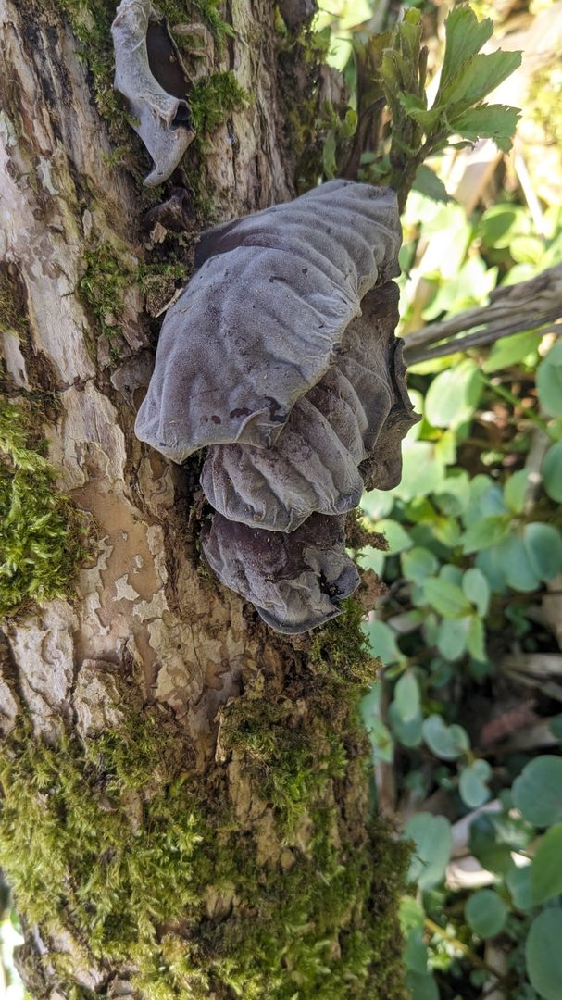
Verified reference photograph of wood-ear fungus (Auricularia auricula-judae; illustrative—not the index kitchen specimen in Shi et al. 2024): prolonged warm-water soaking allows Burkholderia gladioli pathovar cocovenenans to synthesize heat-stable bongkrekic acid. Owen and Carol Fawcett · Wikimedia Commons (Auricularia auricula-judae 359987102.jpg) (CC BY 4.0)
The 52-Person Dinner Party That Skewed National Math—and Stopping the Toxin Before Heat
Hexiang Zhang, Yunchang Guo, Ping Fu, and colleagues’ 2023 PLOS ONE study of China’s CNFDOSS registry (2010–2020) logged 19 confirmed outbreaks (15/19 = 79.0% in homes; 95% May–October, July peak), 146 illnesses, 139 hospitalizations (95.2%), and 43 deaths (29.5%, vs 301/667 = 45.1% in 1985–1994). Disaggregating Table 1 shows why 29.5% flatters a killer: homemade fermented corn flour killed 33/65 (50.8%), wet rice noodles 7/21 (33.3%), and Auricularia auricula—tracked from 2018—killed 3/5 (60%, small five-case denominator). One 2012 Shandong Tremella fuciformis family dinner sickened 52 people (35.6% of national cases) with zero deaths (plus 0/3 starch jelly); across the other 94 patients, 43 died (45.7%), matching 1980s lethality. Across 134 symptom charts in Table 2 (misreferenced as Table 3 in prose), vomiting hit 87.3% (117/134), nausea 64.2%, vertigo 60.4%, weakness 49.3%, and unconsciousness 29.1%, while grave/fatal blood levels carried a 335 µg/L median (70–879, equal to ng/mL, vs 8.8 µg/L mild)—placing her 869 ng/mL serum at the fatal ceiling and 1,470 ng/mL plasma above it.
Paired with Hong Kong Centre for Food Safety Issue 213, two rules govern survival. First, contaminated mushrooms, corn dough, and wet rice noodles look, smell, and taste normal—even when excess sodium dehydroacetate hid mold in commercial noodles while bacteria made toxin—so if GI or neurological symptoms follow long-soaked fungi, unrefrigerated wet rice noodles, or home-fermented corn or coconut, rush to an ER, report exact soaking hours and all co-diners (20-minute to 38-hour incubation), isolate leftovers untouched, and never put sugar water into an unconscious mouth. Second, stop Burkholderia beforehand (growth 30–37°C; toxin synthesis 22–30°C): soak dried fungi briefly in clean bowls, refrigerate covered overnight soaks, discard ambient warm-weather or >24-hour soaks even when normal-smelling (plus slimy or off-odor fungi), refrigerate fresh wet rice noodles, and skip home ambient corn or coconut fermentation.
RED FLAGS · BOILING KILLS THE BACTERIA AND LEAVES THE TOXIN INTACT
Outsmarting an Odorless, Heat-Proof Mitochondrial Lock Before and After Dinner
Never trust the sniff test or the wok: Preformed bongkrekic acid is colorless, odorless, tasteless, and survives rolling boiling, steaming, stir-frying, and pressure-cooking intact.
Refrigerate every extended soak—or toss it: Rehydrate only what you need right before cooking; keep any overnight soak covered in the fridge, and discard ambient >24-hour or warm-weather soaks even when they look fine.
Guard wet starch noodles and skip ambient grain ferments: Refrigerate fresh wet rice noodles for same-day cooking and avoid homemade ambient soaking-and-fermenting of corn flour or coconut pulp.
Escalate before day-one labs fool anyone: If vomiting, vertigo, sweating, or drowsiness follows a suspect dish, get to an ER immediately with the exact soaking timeline and co-diner list, and never give oral fluids to an unconscious person.
✂ FIRST 60 SECONDS · SOAKING DRIED FUNGI OR ILLNESS AFTER SOAKED/FERMENTED STARCHES
DISCARD LONG AMBIENT SOAKS UNTASTED: Throw away wood-ear or snow fungus left soaking at room temperature past a day or overnight in warm weather—even if it looks and smells completely normal—plus any slimy, sticky, or off-smelling batch.
KEEP NECESSARY SOAKS SHORT & COLD: Rehydrate only the portion needed right before cooking in clean water and bowls; if soaking must run overnight, cover and store inside the refrigerator, and refrigerate fresh wet rice noodles immediately.
HEAD STRAIGHT TO AN ER WITH THE TIMELINE: If vomiting, dizziness, weakness, or sweating follows soaked fungi, unrefrigerated wet rice noodles, or home-fermented corn/coconut, seek urgent hospital care and report the exact soaking hours and temperature.
PROTECT AIRWAYS & IDENTIFY CO-DINERS: Never put sugar water or drinks into a drowsy or unconscious person’s mouth; alert everyone who shared the meal (incubation spans ~20 min to 38 h) and isolate untouched kitchen leftovers for officials.
CHAPTER 60 · FILE № 269 · Ep 3015
One Skillet of Wild Greens, Three Spoonfuls, and the Forty-Hour Ventilator Split
Why sautéing wild hemlock in oil and tomato paste disarmed human taste buds instead of plant alkaloids, how bedside physiology beat missing lab tests, and why accidental foragers survive 32 times more mild mistakes until a recipe masks the bitterness.
One Kilogram in the Pan, Ten Minutes on the Clock, and Two Divergent Hospital Beds
Modern grocery shoppers harbor a touching romantic delusion that anything plucked free from a roadside ditch is an artisanal gift from Mother Nature, forgetting that rooted plants cannot outrun herbivores and therefore spent millions of years inventing targeted neurotoxins so mammals would stop chewing on them. In Asli Bahar Ucar’s 2026 International Journal of Emergency Medicine report from Istanbul, relatives gathered roughly 1 kg of wild greens and sautéed them with cooking oil and tomato paste. A 71-year-old man with chronic obstructive pulmonary disease (COPD) and hypertension sat down with his 68-year-old wife to share the skillet. Within 10 minutes, rapidly progressive dyspnea, generalized muscle weakness, and mental clouding set in; despite 8 L/min of supplemental oxygen en route, he reached Marmara University Pendik Training and Research Hospital at ~30 minutes with SpO2 76%, BP 140/100 mmHg, pulse 138 beats/min, respiratory rate 30 breaths/min, GCS 8 (E2 V2 M4), marked hypersalivation and tearing, generalized non-focal weakness, and mildly dilated pupils with intact light reflexes.
A finger pulse oximeter tells you blood is starving for oxygen without revealing whether alveoli are flooded or the chest bellows have stalled. Arterial blood gas analysis solved the mechanical crime immediately: arterial pH had plunged to 7.03, PaCO2 had climbed to 82 mmHg, bicarbonate stood at 20.7 mmol/L, and lactate hit 5.9 mmol/L—proving severe hypercapnic respiratory acidosis and carbon dioxide narcosis while brain, chest, and abdomen CT scans showed zero structural pathology. Acting on failing physiology before anyone had named the leaf, clinicians intubated him immediately; he was extubated cleanly after 40 hours in intensive care. Roughly ten minutes behind him (~40 minutes post-meal), his 68-year-old wife walked in after eating just three spoonfuls with headache, dizziness, blurred vision, nausea, and mild limb weakness. She looked serene on paper—GCS 15, BP 125/85 mmHg, pulse 92/min, respiratory rate 20/min, SpO2 95% on room air, pH 7.38, PaCO2 39 mmHg, bicarbonate 23.4 mmol/L, and lactate printed qualitatively as normal—yet neurological exam caught symmetric 4/5 leg weakness with intact cranial nerves, earning 24-hour ICU observation while relatives brought raw remnants identified with Türkiye’s National Poison Center as Conium maculatum (poison hemlock).
Why Nicotinic Receptors Jammed, Mimics Fell Away, and Activated Charcoal Stayed on the Shelf
Socrates’ executioner needed no fancy chemistry set because every part of Conium maculatum—leaves, roots, seeds, and hollow stems—packs piperidine alkaloids, principally coniine and gamma-coniceine, that hijack nicotinic acetylcholine receptors in two phases. Brief initial stimulation across autonomic ganglia and motor endplates drove his 138/min pulse, profuse drooling, tearing, and reactive dilated pupils; sustained depolarizing-like blockade at the neuromuscular junction then disconnected frantic phrenic and intercostal nerve impulses from the diaphragm and rib cage. Clean bedside semiology ruled out emergency mimics without serum coniine or leaf-alkaloid assays (neither existed at the hospital): agricultural organophosphate pesticides also paralyze breathing after field-gathered meals, but muscarinic flooding produces bradycardia, drowning bronchorrhea, and pinpoint miosis rather than tachycardia and dilated reactive pupils, while a 10-minute shared onset excluded autoimmune myasthenic crisis and slower-evolving botulism.
Equally instructive is what clinicians refused to overclaim—or pour down a failing throat. Eating from a 1-kg batch versus stopping at three spoonfuls strongly supports a dose-related split in neurotoxicity, yet baseline physiology was never identical: at age 71 with COPD and hypertension, the husband carried far thinner ventilatory reserve than his 68-year-old wife, meaning dose and host vulnerability acted together. And although lay folklore treats activated charcoal like a universal magic eraser, clinicians deliberately withheld single-dose charcoal from both spouses: clinical benefit in hemlock poisoning is unestablished, pre-intubation oral slurry at GCS 8 risked catastrophic aspiration, post-intubation toxins had already cleared the gut into neuromuscular synapses, and the wife’s mild, resolving weakness offered minimal upside.
HAZARD REFERENCE · VERIFIED PHOTO · CC BY 4.0
VERIFIED HAZARD REFERENCE PHOTO — Commercial-cleared Public Domain / CC BY photograph of the organism or physical hazard (not the index scene).
Verified botanical reference photograph of poison hemlock (Conium maculatum; illustrative—not the index meal specimen in Ucar 2026), showing white compound umbels, finely divided parsley-like leaves, and characteristic purple-blotched hollow stems. Steffen Bauer · Wikimedia Commons (Conium maculatum (poison hemlock), flowering umbels (SaatPilot).jpg) (CC BY 4.0)
2,197 French Foraging Mistakes—and How Tomato Paste Defeated Evolution’s Bitter Shield
Twenty-two years of poison-center math shows why most accidental plant mix-ups stay mild—and exactly how a frying pan closes the lethal gap. Whereas Turkish national surveillance (2014–2020) linked wild plants to ~0.85% of reported poisonings, Romain Torrents and colleagues audited 2002–2023 records at Southeastern France’s Marseille Poison Control Center across 513,750 total calls, isolating 2,197 accidental edible-versus-poisonous food confusions (0.43%; mean age 34 ± 26 years; 60.6% female, excluding young-child exploratory mouthing). Although 1,178 diners (53.6%) turned symptomatic—led by nausea/vomiting (627), abdominal pain (269), and diarrhea (193), plus rarer tachycardia (31), bradycardia (22), hypotension (22), coma (6), or seizures (6)—with 190 (8.6%) hospitalized and 9 (0.4%) in ICU, only 11 cases (0.50%, including 1 Conium maculatum) reached grade-3 severe toxicity, 2 received antidotes (hydroxocobalamin for bitter Prunus amygdalus almonds; physostigmine for Datura), and 1 died (0.046%, printed 0.05%, after mistaking Aconitum napellus monkshood for Molopospermum peloponnesiacum). Against 262 deliberate plant suicide attempts (16% severe), food confusions ran 8.39 times more frequent yet ~32 times less severe—noting transparently that Table 2’s 289 Nerium oleander plus 1,898 others sums 10 short of 2,197 while subgroup percentages match 1,908, and Table 1’s species rows sum to 2,226.
Two biological guardrails explain that 32-fold mercy: accidental foragers wandered across 331 species (oleander mistaken for bay laurel in 13.1%, bitter squashes in 73 cases, autumn crocus mistaken for wild garlic in 72) versus 43 species in self-harm (71% cardiotoxic oleander), and bitter alkaloids normally make diners spit out the first bites—just like three spoonfuls in Istanbul. Cooking sabotages that evolutionary alarm: sautéing softens tough wild greens without breaking heat-stable piperidine rings while rich oil and tomato paste disguise hemlock’s unpleasant mousy bitterness. Paired with USDA Poisonous Plant Research Laboratory guidance, never harvest sweeping wild handfuls, trust juvenile spring rosettes lacking mature 2–3 m purple-spotted hollow stems (which mimic Chenopodium album lamb’s quarters, flat-leaf parsley, wild parsnip, wild carrot, and anise), or let children carve hollow-stem whistles—and after any shared wild dish, evaluate every taster, bring intact plant remnants, and intubate failing ventilation early.
RED FLAGS · THE FRYING PAN MASKS BITTERNESS WITHOUT BREAKING ALKALOIDS
Two Survival Clocks: From the Roadside Margin to the Shared Dinner Table
Audit every diner at the table—even the three-spoonful taster: Call EMS and Poison Control immediately for post-meal weakness, dizziness, or dyspnea, and examine everyone who sampled the pan rather than trusting normal room-air SpO2 or another diner’s mild course.
Bring intact plant remnants, never home emetics: Send raw stems, leaves, roots, seeds, or pan leftovers to the ED for poison-center botany without delaying transport, and never force vomiting, saltwater, or home charcoal into failing swallow reflexes.
Retire the ‘purple spots and hot skillet’ myths: Juvenile spring Conium maculatum rosettes often lack mature purple-blotched hollow stems while mimicking lamb’s quarters, parsley, or parsnip—and cooking spares coniine alkaloids while hiding bitter taste warnings.
Ban sweeping handfuls and hollow-stem whistles: Identify every individual plant part with 100% botanical certainty, keep wild weeds strictly separated from garden herbs, and warn children never to put wild hollow stalks to their mouths.
✂ FIRST 60 SECONDS · SUSPECTED WILD-PLANT OR FORAGED-GREENS POISONING
CALL EMS AT THE FIRST NEUROLOGIC OR BREATHING SHIFT: Activate emergency services and Poison Control immediately—Conium maculatum drove arterial pH down to 7.03 within 30 minutes of dinner, long before any lab test could identify a toxin.
EVALUATE EVERY DINER WHO TASTED EVEN THREE SPOONFULS: Bring every person who sampled the dish for clinical neuro-respiratory assessment; normal room-air SpO2 (95%) and full alertness hid real 4/5 bilateral leg weakness requiring 24-hour ICU monitoring.
SEND INTACT PLANT REMNANTS TO THE HOSPITAL: Have a relative or responder safely bag unwashed raw stems, leaves, roots, seeds, or cooked pan remnants (plus photos) without delaying ambulance transport so poison-center specialists can identify the species.
SKIP VOMITING TRICKS AND HOME CHARCOAL: Never induce vomiting with gagging or saltwater or give unsupervised oral charcoal; early bulbar and respiratory muscle weakness turns forced oral liquids into a lethal aspiration hazard.
Part III
Medicine Cabinet Roulette
Over-the-counter does not mean over-the-physics.
CHAPTER 61 · FILE № 015 · Ep 2252
The Toothache That Turned the Blood Chocolate-Brown
How three days of drugstore numbing gel quietly rusted a healthy 29-year-old’s hemoglobin, why two different hospital monitors lied to his face, and the blue dye that reset him in fifteen minutes.
Awake, Chatting, Pulse 70—And Turning the Color of Wet Cement
Consumers carry a touching faith that anything stocked beside the breath mints without a prescription is biologically polite. Your red blood cells did not sign that agreement.
In a 2015 report in Case Reports in Emergency Medicine, Thomas Nappe, Anthony Pacelli, and Kenneth Katz described a completely healthy 29-year-old man—zero medical history, zero prescription drugs—who tackled a stubborn toothache the way millions of adults do: three days of over-the-counter Maximum Strength Orajel, a topical benzocaine gel. (There was no self-harm intent and no measured absorbed dose; just an ordinary attempt to numb a miserable mouth until life slowed down.)
The first hint that his pharmacy aisle had turned hostile arrived the night before his ER visit as generalized weakness. By the next day, shortness of breath, headache, and dizziness set in—and his coworkers noticed the sort of cosmetic shift no cavity ever explains: his skin had gone pale and gray. Yet when he reached the emergency department, he was awake, talking coherently, mildly distressed, with a zen heart rate of 70 beats per minute, normal temperature (98.7°F), and a calm respiratory rate of 16. Only the blue-gray ring around his mouth—and the unsettling fact that his venous blood flowed into the syringe dark chocolate brown—gave the game away.
FORENSIC INFOGRAPHIC · THE OXIMETER LIE
Why Pulse Oximeters Freeze Near 85% While Your Blood Turns Brown
Standard 2-wavelength finger probes assume only red oxy-Hb and blue deoxy-Hb exist. Methemoglobin absorbs both wavelengths equally—forcing the math to read ~85% no matter how low oxygen drops.
Rusting Your Own Blood While Two Machines Flash Reassuring Lies
Hemoglobin moves oxygen thanks to iron sitting in the ferrous (Fe²⁺) state—eager to pick up oxygen in the lungs and polite enough to drop it off at your brain. Benzocaine, even rubbed inside your gums, can enter the bloodstream and oxidize that iron into the ferric (Fe³⁺) state, creating methemoglobin. In plain English, the numbing gel chemically rusts your blood. Rusted Fe³⁺ iron cannot bind oxygen at all, and worse, it warps the remaining healthy iron sites on the same hemoglobin tetramer so they hoard their oxygen instead of releasing it to starving tissue.
Then comes the diagnostic ambush that makes toxicologists lose sleep. Even while breathing 6 liters per minute of supplemental oxygen through a nasal cannula, his fingertip pulse oximeter parked stubbornly at 88%. Standard two-wavelength fingertip clips are optically blind to methemoglobin—as levels climb, they drift toward a notorious ~85% plateau regardless of how deeply you are suffocating. His routine blood count and metabolic panel came back unremarkable. Even his arterial blood gas printed a smug, reassuring calculated SaO₂ of 99% (fooled by high dissolved oxygen PaO₂ at 178.0 mmHg).
Only multi-wavelength co-oximetry exposed the biochemical sabotage: functional oxyhemoglobin had fallen to 71.9%, while methemoglobin had surged to 27.4%. Your lungs can be swimming in oxygen, your pulse can read a serene 70, and even a hospital blood-gas printout can flash 99% while more than a quarter of your oxygen fleet sits chemically padlocked.
EXHIBIT A · ARTERIAL BLOOD SAMPLE · CC BY 3.0
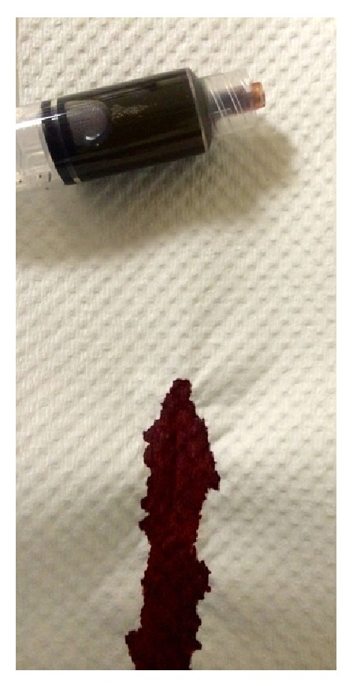
Actual arterial blood sample drawn in the emergency department displaying classic chocolate-brown methemoglobinemia coloration after over-the-counter 20% benzocaine toothache gel use. Figure 2 from Nappe et al. (2015), Case Reports in Emergency Medicine · PMC4383305 (CC BY 3.0)
EXHIBIT B · THE CULPRIT TUBE · CC BY 3.0
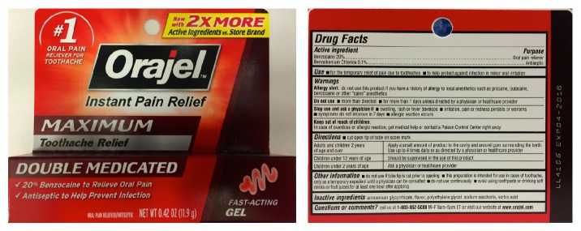
The over-the-counter 20% benzocaine oral gel tube brought in by the patient—an ordinary drugstore staple capable of oxidizing Fe²⁺ hemoglobin into non-oxygen-carrying Fe³⁺ methemoglobin. Figure 1 from Nappe et al. (2015), Case Reports in Emergency Medicine · PMC4383305 (CC BY 3.0)
Why Past Immunity Buys You Zero Protection Today
This reaction is uncommon—a 2013 randomized toothache trial of 576 adults led by Elliot Hersh recorded zero cases during a brief 120-minute window—which is exactly why multi-day home use blindsides people. By contrast, a 2004 FDA adverse-event review by Moore, Walsh, and Cohen flagged 132 definite or probable benzocaine methemoglobinemia cases (mostly sprays, one gel, and two fatalities) out of 198 unique reports. Uncommon is not impossible, and surviving a tube last summer grants zero immunity this Tuesday.
Emergency clinicians and a medical toxicologist gave him intravenous methylene blue—an electron-shuttling antidote that un-rusts Fe³⁺ back to working Fe²⁺. Within 15 minutes his symptoms began melting away; within an hour he felt dramatically better. Repeat co-oximetry showed methemoglobin had crashed from 27.4% to 0.9% (a 96.7% relative plunge) while oxyhemoglobin climbed back to 94.5%, and he walked out four hours later with firm orders to throw out the gel and see an actual dentist. (Hard guardrail: hospital methylene blue is NEVER a DIY home supplement—it can trigger lethal serotonin toxicity with antidepressants or opioids and is contraindicated in G6PD deficiency.)
RED FLAGS · DROP THE TUBE
Warning Signs After Any Numbing Gel or Spray
Pale, gray, or blue lips, nail beds, or skin—especially when someone else notices the color change before you do.
New shortness of breath, dizziness, lightheadedness, headache, or sudden fatigue after using benzocaine gels, sprays, or lozenges.
A calm pulse of 70, normal speech, or a home fingertip pulse oximeter sitting in the high 80s does NOT clear you.
Babies and toddlers: the FDA explicitly warns AGAINST benzocaine teething gels for young children—minimal benefit, real risk of fatal methemoglobinemia.
✂ FIRST 60 SECONDS · BENZOCAINE GRAY-SKIN EMERGENCY
STOP THE NUMBING PRODUCT: Wipe away remaining gel and stop all benzocaine sprays, gels, or lozenges immediately—do not reapply to test whether the tube is to blame.
CALL 911 IMMEDIATELY: Gray/blue lips or skin plus shortness of breath, dizziness, or weakness is an ambulance emergency. Never drive yourself while hypoxic.
GRAB THE TUBE (OR SNAP A PHOTO): Bring the container plus your full medication list (especially antidepressants or opioids) so ER clinicians can run co-oximetry and screen safely before giving methylene blue.
PROTECT KIDS & FIX THE TOOTH: Never put benzocaine teething gels on infants or toddlers (FDA warning). For non-emergency questions in the US, call Poison Help: 1-800-222-1222—and book an actual dentist.
CHAPTER 62 · FILE № 016 · Ep 903
Medicine Cabinet Roulette: Sleep Aids, Caffeine Rebound & Whippets
Why a five-dollar bottle of sleep pills can jam your heart's electrical reset switch, how 12.1 grams of caffeine stages a lethal encore ten hours after dialysis, and why a single relapse balloon of laughing gas rusts fresh vitamin B₁₂ on contact.
The Five-Dollar Sleep Aid That Electrocutes the Orchestra
Humans maintain a touching legalistic fantasy about pharmacology: if a bottle sits next to the toothpaste without a doctor's signature, its molecules must have signed a non-aggression pact. Your ion channels do not read pharmacy signage. Above 1.0 gram, ordinary diphenhydramine—the active ingredient in countless allergy tablets and blue over-the-counter sleep gels—stops acting like a polite sleep aid and barricades cardiac delayed-rectifier potassium (hERG) and sodium channels. Jam those potassium exit pores, the QT interval stretches like taffy, and the heart collapses into torsades de pointes—a quivering electrical mutiny pumping zero blood.
In a 2023 American Journal of Forensic Medicine and Pathology report, Zimmerman and colleagues documented a 21-year-old woman found deceased ~27 hours after last contact beside five empty 50-mg diphenhydramine bottles (160 pills = 8,000 mg missing) and a partially empty 10-mg melatonin bottle (up to 480 mg missing), ruled a suicide. Autopsy recorded green-blue gastric mucosa packed with blue soft-gel particulates, bilateral pleural effusions (150 mL right, 200 mL left), and cerebral edema. Iliac blood held 34.00 mg/L diphenhydramine and 3.900 mg/L melatonin (39–44× upper therapeutic limits, deepening central sedation and hypotension), while her stomach still held 2,700.00 mg/L diphenhydramine—feeding postmortem diffusion to a 1.44 cardiac-to-peripheral ratio. Worse for living patients: routine ER drug panels never screen for melatonin unless someone brings the bottles.
Because Western civilization runs on espresso, concentrated caffeine tablets enjoy the PR team of a saint and the lethal margin of a blasting cap—roughly 5 to 6 grams can trigger fatal ventricular fibrillation. In a 2026 Forensic Science, Medicine, and Pathology report, Kohara and colleagues tracked a catastrophic non-fatal survival case involving a healthy 17-year-old girl who collapsed in bathroom cardiac arrest after swallowing 121 tablets of Estaron-mocha®—12.1 grams of caffeine. A 200-joule shock and veno-arterial ECMO pulled her back from an arterial pH of 6.508, a lactate of 200.1 mg/dL, potassium of 3.1 mEq/L, and an admission caffeine concentration of 233 µg/mL, a level that pries open cardiac RyR2 channels until intracellular calcium locks the heart in chaotic spasm.
Here is the ambush that turns clinical relief into disaster. By hour 5, intense vasoconstriction had triggered abdominal compartment syndrome (38 mmHg bladder pressure), freezing her gut into hypoperistaltic stasis so unabsorbed caffeine sat parked in her intestines. Doctors weaned her off ECMO at hour 10 and ran four hours of hemodialysis at hour 11, dropping blood caffeine from 233 down to 44 µg/mL. Mission accomplished—until hour 26, more than ten hours after dialysis stopped, when her heart arrested a second time. Restored blood flow had woken up the paralyzed gut, flushing cached caffeine into her liver, where CYP1A2 upgraded it into even nastier active xanthines: paraxanthine (5.3 µg/mL, twice as strong at blocking adenosine brakes) and theophylline (0.71 µg/mL, two to three times as potent). She survived after five days of continuous hemodiafiltration—at the devastating cost of a Day 9 right leg amputation and permanent hypoxic brain injury (GCS E3V1M4 on Day 111 transfer, exposing an embarrassing publishing contradiction where the paper's declarations boilerplate claimed the comatose patient gave informed consent).
Rusting Your Own Vitamin B₁₂ From a Party Balloon
If pharmacy bottles enjoy unearned trust, commercial nitrous oxide cylinders—inhaled from balloons as a supposedly harmless 30-second high—run a quieter, dirtier molecular scam. In a 2026 International Journal of Legal Medicine report, Plenzig and colleagues documented an early-20s man (BMI 41.5 kg/m², smoker; exact age not reported) with two months of heavy daily nitrous use who was hospitalized two weeks before his death after ~4 bottles a day for eight days. He arrived with fainting, ataxia, tremors, hemoglobin 10.5 g/dL, vitamin B₁₂ 120 pg/mL, and a resting heart rate of 120 bpm—got one parenteral B₁₂ shot, and went home the next day.
Two weeks later he was found dead in bed surrounded by 20 empty 'Exotic Whip' cylinders (mislabeled 'cartridges' in the paper's abstract) and roughly 30 balloons. Autopsy revealed deep vein thrombosis and a fulminant pulmonary artery thromboembolism that shut down his right heart—and headspace gas chromatography caught nitrous oxide not only in his bronchial fluid (0.06 mL/L) but physically trapped inside the femoral blood clot itself (0.04 mL/L). Nitrous oxide does not gently wear off; it irreversibly oxidizes the transition-metal cobalt core inside vitamin B₁₂ from Co⁺ to Co³⁺, chemically rusting the spark plug of methionine synthase. Homocysteine backs up, tears at vessel linings, and turns venous blood prothrombotic (though homocysteine and MMA were never assayed here, and obesity plus smoking stacked the deck). Most lethal myth of all: you cannot out-supplement laughing gas. Inhale one balloon after a hospital B₁₂ shot, and the gas rusts the brand-new vitamin before it can save a single blood vessel.
RED FLAGS · CHEMISTRY DOESN'T CARE IT'S LEGAL
Golden-Window Warnings Before the Crash
Anticholinergic delirium ('hot, dry, flushed, wide pupils') plus wide-QRS tachycardia beside bulk OTC sleep-aid bottles—and remember, standard ER drug panels completely miss melatonin.
Stacking over-the-counter cough suppressants (dextromethorphan) with diphenhydramine, or ordering foreign bulk bottles online, builds a CYP2D6 metabolic pileup.
Intractable vomiting, low potassium, severe lactic acidosis, and a deceptive 'clean' single 4-hour dialysis drop after massive caffeine ingestion—rebound arrest can strike >10 hours later.
Resting tachycardia (~120 bpm), fainting, leg swelling, numbness, or shaky gait in a heavy nitrous oxide user demands an urgent DVT/PE clot workup, not just a goodbye B₁₂ shot.
✂ FIRST 60 SECONDS · OTC, CAFFEINE & NITROUS CRISES
CALL 911 & SWEEP EVERY CONTAINER: Grab every pill bottle, foil pack, energy-tablet box, or gas cylinder at the scene—ER panels miss melatonin and imported cough meds unless clinicians see the containers.
RESPECT THE CARDIAC ANTIDOTE RULES: In wide-QRS diphenhydramine poisoning, ER teams push IV sodium bicarbonate and IV magnesium (for torsades)—and MUST AVOID physostigmine, which can trigger fatal asystole.
DON'T STOP AT ONE DIALYSIS RUN FOR CAFFEINE: Massive caffeine arrest demands defibrillation, early VA-ECMO, potassium correction, compartment checks, and prolonged continuous hemodiafiltration (≥24–48 h) to catch gut/metabolite rebound.
SCREEN NITROUS USERS FOR CLOTS & ZERO RELAPSE: Tachycardia, syncope, numbness, or leg pain after whippets requires emergency PE/DVT imaging plus total cessation—even one relapse balloon destroys newly injected B₁₂.
CHAPTER 63 · FILE № 017 · Ep 2289
The Ten-Year Prescription
Why ten peaceful years on lisinopril buy zero immunity against midnight throat closure, why your lips can look completely normal while your airway narrows to a straw, and why Benadryl brings a squirt gun to a bradykinin fire.
Day 3,651 Without a Warning Shot
We prefer to think of daily prescriptions like marriage vows: if a pill behaves politely through the honeymoon month, it should not try to strangle you on your tenth anniversary. Biology never signed that contract. Your bottle of lisinopril stays chemically identical for a decade, while the enzymes, tissues, and inflammatory thresholds inside your body keep drifting beneath your feet.
In a 2024 report in Clinical Practice and Cases in Emergency Medicine, Flinn and Massaro described an 82-year-old woman with COPD, lung cancer, congestive heart failure, hypertension, type 2 diabetes, GERD, dyslipidemia, and hypothyroidism who had taken lisinopril without incident for ten full years. No dose change, no new prescription, no exotic dinner, no bee sting. (She had a mild cough for a few days and a sore throat the night before that resolved with acetaminophen—logged cleanly in the chart, with zero proof it caused what happened next.) She went to bed feeling fine and woke up unable to swallow water or her own saliva, sensing her throat closing around her breath.
By the time she reached the emergency department, she was alert, anxious, spitting saliva into a bag, and rationing her air into single-word sentences—because when an airway narrows, adjectives are the first luxury to go. Yet two classic clinical illusions tried hard to wave the alarm away. First, her face looked completely normal: zero lip swelling, zero tongue swelling, no hoarse voice, and a tidy midline uvula. Second, her fingertip pulse oximeter printed a reassuring 95% on room air (alongside T 36 °C, HR 93 bpm, BP 119/56 mmHg, and RR 26/min). A pulse oximeter is a gas gauge, not a fuel-line caliper; it will cheerfully display 95% right up until the pipe clamps completely shut.
Why Histamine Extinguishers Fail a Bradykinin Fire
What saved her was an ER team that trusted acoustic physics over two tempting shortcuts. First, they ignored the anchoring trap of her COPD history: through a stethoscope, her lungs sounded completely clear, while the high-pitched stridor screamed from her upper airway—turbulent air whistling through swollen posterior pharyngeal tissue. Second, they skipped neck CT scans and obscure blood assays because, as American Academy of Emergency Medicine guidance emphasizes, no rapid lab test proves ACE-inhibitor angioedema in the moment; airway patency outranks diagnostic curiosity. (Her basic labs stayed unremarkable aside from mild thrombocytopenia, glucose 181 mg/dL, creatinine 1.22 mg/dL, BUN 23 mg/dL, low magnesium of 1.0 mg/dL [= 10 mg/L, an incidental measurement, not a cause], and chemistry total CO₂ of 32 mmol/L—metabolic bicarbonate content, never to be confused with arterial gas pCO₂ in mmHg. Five viral swabs came back negative; SARS-CoV-2 was not named.)
Next came the pharmacological proof. Clinicians hit her with the heavy-duty allergy arsenal—nebulized racemic epinephrine, IV methylprednisolone, IV famotidine, and IV diphenhydramine—and her breathing only got worse. Why? Because peanut anaphylaxis runs on histamine, whereas ACE inhibitors hijack an entirely different pathway. Angiotensin-converting enzyme lowers blood pressure, but its side gig is breaking down a vasoactive peptide called bradykinin. Keep ACE blocked, and bradykinin can suddenly accumulate, punching leaky pores in deep mucosal blood vessels without a single mast cell pulling the allergy alarm. Spraying antihistamines and steroids at bradykinin swelling is like fighting an electrical fire with a garden hose. (Even targeted bradykinin therapy has humbled emergency medicine: in the 2017 Sinert randomized trial of 121 adults—118 treated—icatibant and placebo both reached discharge criteria in a median of 4 hours, proving there is no magic shortcut out of a monitored airway bay.)
Two Attempts in the OR—and the Ten-Fold Recurrence Trap
Watching her deteriorate despite full IV allergy therapy, emergency doctors called anesthesia and general surgery and moved her to the operating room for controlled intubation. Even with specialists standing over her, it took two difficult attempts to thread the breathing tube past heavy posterior pharyngeal edema and pooled secretions hiding her vocal cords (though her epiglottis itself stayed uninflamed). Four days later the swelling retreated, the tube came out safely, her lisinopril was permanently retired, and no recurrence was reported (exact follow-up duration unspecified).
One bedside subtlety deserves flashing neon tape: clinicians withheld intramuscular epinephrine specifically because of this individual 82-year-old's coronary artery disease while monitoring her in a hospital—NEVER twist that chart note into hesitating with a prescribed EpiPen at home for suspected anaphylaxis. Let the ER sort out histamine versus bradykinin after the ambulance rolls. Just as critical is what happens after discharge. In the 1997 Tennessee Medicaid cohort by Brown, Snowden, and Griffin following 82 patients after an initial angioedema episode (16 outpatient recurrences in 13 patients across 189 patient-years, or ~8.5 events per 100 patient-years overall), continuing the ACE inhibitor carried a recurrence rate of 18.7 events per 100 patient-years versus 1.8 for those who stopped—more than a tenfold jump. Once this reaction happens, the entire ACE-inhibitor class belongs on a permanent pharmacy hard-stop; meanwhile, if you take lisinopril and feel completely fine, never quit it cold turkey at home without a prescriber's replacement plan.
RED FLAGS · DON'T CHECK THE MIRROR
Airway Warnings That Outrank Normal Lips
Inability to swallow saliva (spitting into a cup or bag) or sudden throat tightness—even when your lips, tongue, and uvula look completely normal in the mirror.
Speaking only in single-word fragments or making a harsh, high-pitched inhaling sound (stridor) while your lungs feel clear.
Do NOT swallow a Benadryl and wait on the couch to see if it works, and never trust a home fingertip oximeter reading 95% to certify an open throat.
Withholding tomorrow's blood-pressure pill prevents future episodes—it does NOT reopen a throat swelling shut right now.
✂ FIRST 60 SECONDS · THROAT SWELLING ON AN ACE INHIBITOR
CALL 911 IMMEDIATELY—NEVER DRIVE YOURSELF: Sudden throat tightness, inability to swallow spit, single-word speech, or high-pitched breathing (stridor) demands an ambulance right now—not an urgent-care wait or a home Benadryl test.
DON'T FORCE WATER, PILLS, OR FINGERS DOWN: Never test swallowing with water, oral antihistamines, or food when secretions are pooling, and never poke inside the throat. If you have a prescribed EpiPen for suspected anaphylaxis, follow your action plan—never play detective at home.
NAME THE '-PRIL' DRUG TO DISPATCH & EMS: Hand over your medication list and call out lisinopril or any ACE inhibitor immediately—even if you have taken it peacefully for ten years—so hospital teams prepare anesthesia early.
LOCK IN A PERMANENT CLASS-WIDE HARD STOP: After recovery, record ACE-inhibitor angioedema across every medical chart and pharmacy profile so no '-pril' is ever prescribed again—and never quit a stable heart pill preemptively without your doctor.
CHAPTER 64 · FILE № 018 · Ep 2293
The Cream and the Missing Stress Response
How super-potent skin creams cross fissured psoriatic skin to put your adrenal furnace to sleep—and why a man with a blood pressure of 67/47 stayed wide awake while his lab table contradicted the textbook.
The Space Heater That Put the Furnace to Sleep
Humans adore the comforting geography of isolated zip codes: skin ointment stays on the skin, pills go to the gut, and nothing crosses county lines without a passport. Your dermis disagrees. Skin is not a waterproof tarp draped over firewood; it is a richly vascular border crossing. And in psoriasis—where inflamed, cracked plaques have already smashed half the checkpoints—rubbing super-potent Class 1 glucocorticoids across the surface sends synthetic cortisol analogues barreling straight onto the bloodstream's interstate.
In a November 2025 Cureus case report, Shanavas Khan and colleagues described a 58-year-old man with psoriasis, hypertension, and type 2 diabetes who had spent years applying unsupervised, foreign-obtained super-potent steroid creams: clobetasol propionate, betamethasone dipropionate, fluocinolone acetonide, and mometasone furoate. (Exact daily amounts and body sites were never recorded, so we invent none.) Inside his brain, that constant external hormone flood behaved like an industrial space heater parked directly beneath the hypothalamus thermostat. Sensing endless steroid heat, the hypothalamic-pituitary-adrenal (HPA) axis simply shut off the basement furnace—leaving his adrenal glands dormant.
Exactly one week before admission, he abruptly stopped all of his topical steroids—along with his amlodipine, metformin, and gliclazide (the chart records no motive). During that exact same seven-day window, a blizzard blew the windows off the house: fever, runny nose, pus-producing cough, and worsening shortness of breath over the final 24 hours. He arrived at the emergency department in full cardiovascular freefall: blood pressure 67/47 mmHg, heart hammering at 134 beats per minute, breathing 34 times a minute, oxygen saturation 89% on room air, and fever of 38 °C.
Awake at 67/47—and a Textbook Trap Inside the Data Table
Two cruel mirages stood between this patient and an accurate diagnosis. First, despite a blood pressure barely able to perfuse his kidneys (creatinine had surged to 212 µmol/L), he scored a pristine 15 out of 15 on the Glasgow Coma Scale—wide awake, oriented, and holding a conversation because emergency catecholamines were shunting blood away from peripheral organs just to keep the lights on in his skull. Second, his body wore a walking endocrine paradox: a dorsocervical fat pad and wide abdominal stretch marks—classic Cushingoid billboards screaming 'too much steroid' on the outside while his stress reserve sat bone-dry on the inside.
Then comes an audit gem that every clinician should frame on the break-room wall. Textbook adrenal crisis supposedly advertises itself with low sodium, high potassium, and low blood sugar—and the paper's own narrative prose repeats those labels. Yet inspect the authors' raw printed lab table and the numbers refuse to cooperate: sodium sat at 133 mmol/L (reference 133–146, the exact lower edge of normal), potassium at 5.2 mmol/L (reference 3.5–5.3, squarely normal), and random glucose at 7.7 mmol/L (reference 3.9–7.8, normal; hemoglobin had a malformed unit and is excluded). Waiting for textbook electrolytes would have watched him arrest in front of a normal-looking dashboard. Meanwhile, his infection markers roared: white blood cells 33.6 × 10⁹/L, CRP 77 mg/L (normal <5), and extensive left-sided lung consolidation on chest X-ray—community-acquired pneumonia driving septic shock right alongside adrenal failure.
EXHIBIT A · RADIOGRAPH · CC BY 4.0
Chest radiograph showing left-sided consolidation (arrow) Figure 1 from Shanavas Khan et al. (2025), Cureus · PMC12740012 (CC BY 4.0)
Four Pillars of Rescue—and Why You Never Trash Your Tube Tonight
Crucially, clinicians drew endocrine blood BEFORE injecting a single drop of synthetic hydrocortisone, refusing to contaminate the crime scene. His admission random serum cortisol was an abysmal 106 nmol/L in the middle of septic shock (unstressed lab reference starts near 185). On a short Synacthen stimulation test, cortisol barely crawled from a basal 25 nmol/L to 40 nmol/L at 30 minutes—an observed increment of just 15 nmol/L (an assay- and context-specific snapshot, never a home cutoff). Honest boundaries matter: because testing happened during acute critical illness without ACTH, renin, antibody, or recovery assays, nobody can mathematically split how much came from topical HPA suppression versus critical illness–related corticosteroid insufficiency, nor does the paper's 'Addisonian crisis' label prove lifelong autoimmune Addison's disease.
Medicine has known this trap since a 1952 JAMA report documented fatal postoperative shock and shrunken adrenal glands after prolonged cortisone therapy, and a 2015 prospective cohort of 423 diagnosed adrenal-insufficiency patients (364 completing follow-up) still logged 64 crises across 767.5 patient-years (~8.3 per 100 patient-years—proving ongoing risk in diagnosed patients, NOT an 8.3% odds tag for every eczema-cream user). Saving this 58-year-old required all four ICU pillars working in concert: 10 liters of IV fluids over 48 hours, norepinephrine to squeeze dilated pipes, broad-spectrum antibiotics for pneumonia, and IV hydrocortisone (100 mg bolus, then 50 mg every 6 hours) so his vessels could actually hear the norepinephrine. He left with joint endocrinology and dermatology follow-up—proving the cardinal rule for anyone listening at home: never panic-quit a potent steroid cream cold turkey. Book a supervised taper and sick-day plan instead.
RED FLAGS · TELL EMS ABOUT THE CREAM
When an Ordinary Infection Springs the Endocrine Trap
Severe weakness, dizziness upon standing, vomiting, diarrhea, abdominal pain, or sudden deterioration during a fever or chest infection in anyone using—or recently stopping—potent steroid creams.
Being wide awake and conversational (GCS 15) does NOT overrule collapsing blood pressure or shock, and normal sodium, potassium, or glucose does NOT clear adrenal failure.
Outward Cushingoid signs (neck fat pad, wide stretch marks, thinned skin) signal heavy systemic absorption—meaning internal adrenal reserve may actually be empty.
Never abruptly quit, restart, or DIY-taper long-term potent topical steroids on your own; schedule a supervised clinician plan and ask for written sick-day rules.
✂ FIRST 60 SECONDS · SUSPECTED ADRENAL CRISIS
CALL 911 / EMERGENCY SERVICES PROMPTLY: Collapse, severe unexplained weakness, repeated vomiting, confusion, or rapid deterioration during an infection in a current or recent steroid user is an immediate ambulance emergency—never wait for a lab test.
ANNOUNCE EVERY STEROID CREAM OR INHALER: Tell dispatchers and paramedics immediately about potent topical steroids—even creams bought abroad or stopped last week—and grab the actual tubes or a medical-alert card.
FOLLOW PRESCRIBED SICK-DAY PLANS, STILL GO TO ER: If an endocrinologist already prescribed an emergency injection kit, use it as trained while help is coming—never cancel the ambulance, because septic shock and pneumonia still require hospital ICU care.
NEVER COLD-TURKEY POTENT CREAMS AT HOME: If you feel fine right now, do not throw away prescribed topical steroids after reading this. Book a doctor visit to review duration, body sites, safe tapering, and personalized sick-day rules.
CHAPTER 65 · FILE № 019 · Ep 2253
The Bottle That Wasn't a Feed
How plain water—whether poured from a cute 'baby-labeled' bottle or the kitchen tap—dilutes an infant's blood sodium until osmosis swells brain cells inside a rigid skull, even while a head CT prints normal.
A Solvent Is Not a Meal
Parents scan a house for skulls-and-crossbones: bleach under the sink, prescription caps, electrical cords. Nobody glares suspiciously at plain drinking water—especially when commercial packaging slaps a smiling infant on the front and sells for pennies next to expensive cans of formula. Yet water is a recipe ingredient, not a standalone feed. Handing a two-month-old plain water is like handing a hungry adult a packet of dry baking yeast and calling it a sandwich: human milk and properly measured formula are tightly engineered electrolyte ecosystems, while solute-free water strips out every drop of sodium a newborn brain needs to keep its electrical wiring upright.
In a landmark 1994 CDC Morbidity and Mortality Weekly Report, clinicians documented two separate surviving Wisconsin infants from 1993—two distinct charts that must never be mashed together. Patient 1 was a 55-day-old girl whose mother supplemented cow's-milk formula with commercial bottled water for several days because it was inexpensive and its label looked specifically made for babies; crucially, she later told the FDA she had also substituted plain tap water for formula during the 24 hours before hospitalization, proving the hazard lives in the solute-free water itself, not the plastic bottle. Patient 2 was a 56-day-old boy with a mild cold whose mother gave three bottles of soy-based formula and three bottles of bottled water daily, trusting the label as an economical, safe liquid to soothe his illness. Both families acted from ordinary, understandable intentions—and both babies landed in emergency bays.
One Baby Intubated, One Baby Smiling Under a Normal CT
Patient 1's first visible clue was barely dramatic: eye twitching. During transport to the hospital, that twitch exploded into generalized tonic-clonic seizures and continuous status epilepticus. On exam she showed periorbital and gluteal edema—excess unexcreted water literally seeping into the loosest connective tissues around her eyes and buttocks—while blood work revealed metabolic acidosis and a serum sodium crashed to 116 mEq/L (= 116 mmol/L; normal 135–145, a 19-point chasm). Forty-five minutes after seizures began, following IV anticonvulsants, her breathing failed and doctors intubated her trachea. (Epistemic honesty: sequence does not prove whether anticonvulsants, exhausting seizures, or low sodium caused the respiratory depression—only that a neurological crisis had instantly turned into an airway crisis.) After transfer and IV normal saline, she recovered and went home on Day 5.
Patient 2's chart is the nightmare of false reassurance. Brought in after an apparent brief seizure, he arrived looking alert, healthy, and in zero distress—and a head CT scan came back completely normal. If you judge emergencies by smiling faces and 3D brain pictures, you would hand him back to his parents. Yet a CT scanner photographs anatomy, not chemistry. His serum sodium was 121 mEq/L (= 121 mmol/L), and his urine specific gravity had plunged below 1.005 (almost pure water's 1.000), catching his tiny kidneys desperately flushing dilute water to save his brain. Nine hours of IV saline normalized his sodium, and he went home at 24 hours (neither baby had long-term developmental follow-up reported).
REFERENCE EXHIBIT · CT / IMAGING SCAN · CC BY 4.0
ILLUSTRATIVE REFERENCE EXHIBIT — Verified CC BY diagnostic figure from a separate peer-reviewed publication showing the same mechanism (not the index patient).
Non-contrast brain CT at the level of the basal ganglia.Axial non-contrast CT image demonstrating mild loss of gray-white matter differentiation (white arrows) and effacement of the Sylvian fissure (yellow arrowhead). These findings were suggestive of diffuse cerebral edema. No… Figure 5 from Pico Mendoza et al. (2026), Cureus · PMC13378400 (Reference Case) (CC BY 4.0)
Osmosis Inside a Bone Box—and the Outdated Heatwave Myth
Why does a 14- or 19-point sodium drop short-circuit an infant brain? Pour a mug of strong coffee into a five-gallon jug of water: not a single coffee molecule vanished, yet the brew turns disastrously weak. Flood an infant's immature kidneys with solute-free water and extracellular sodium plunges; osmosis immediately forces water across cell membranes into brain cells to equalize the imbalance. Because a skull is a rigid bone box (the Monro-Kellie doctrine), swelling neurons have nowhere to expand—pressure spikes and neural circuits misfire into seizures. (A famous 1981 study by David, Ellis, and Gartner documented impaired water clearance and excess vasopressin in 3 of 8 water-intoxicated infants, though zero hormone levels were ever measured in the 1993 Wisconsin babies. Meanwhile, a 1984–1993 Wisconsin hospital review found 27 more infants under age 1 with hyponatremic seizures fed solute-free water—25 of 27, or 92.6%, attributed to dietary water intoxication, alongside 3 separate FDA cases. Read that denominator cleanly: 92.6% is the share among already-hospitalized seizure babies, NOT the general odds of seizing.)
One piece of 1994 history belongs straight in the shredder: the original report floated a possible exception for giving supplemental water to formula-fed infants during very hot weather. Current American Academy of Pediatrics and CDC guidance forcefully overrides that relic: under six months, babies need zero additional water—even in a heatwave—unless a pediatrician specifically prescribes it. Mix formula to the exact scoop-and-water instructions every single time (under-diluting concentrates salts and strains kidneys; over-diluting risks seizures). And when tight budgets make formula feel impossible to stretch, the answer is WIC, food pantries, and local health departments—never an extra ounce from the tap.
RED FLAGS · DON'T WAIT FIVE MINUTES
Warning Signs of Infant Water Intoxication
Eye twitching, staring spells, or ANY first-time seizure in an infant under 6 months—call 911 immediately; the '5-minute wait rule' does NOT apply to young infants.
Unusual irritability, extreme sleepiness, low body temperature (hypothermia), or puffy swelling around the eyes or buttocks after plain water or stretched feeds.
Looking alert and happy afterward—or even a normal head CT scan—does NOT clear a critically low blood sodium.
Never attempt a DIY home table-salt bottle to 'fix' dilution: raising sodium too fast shrinks swollen brain cells and risks catastrophic osmotic demyelination.
✂ FIRST 60 SECONDS · INFANT SEIZURE OR SUSPECTED WATER OVERLOAD
CALL 911 IMMEDIATELY & TIME IT: Any first seizure or breathing change in an infant under 6 months requires 911 on second one—never wait five minutes, and stay right beside the baby.
CLEAR SPACE & ROLL GENTLY TO THE SIDE: Move hard objects away and place the baby gently on their side so saliva or vomit drains safely out—NEVER restrain limbs, NEVER put fingers/spoons in the mouth, and give nothing by mouth.
GIVE A 100% HONEST FEEDING HISTORY: Tell paramedics and ER doctors immediately if water or diluted formula was given (bottled or tap) and when it started—zero shame; honesty sends them straight to electrolytes instead of chasing meningitis.
NO PLAIN WATER UNDER 6 MONTHS—USE WIC IF STRETCHED: Serve only breast milk or exact-ratio formula under 6 months (even in heatwaves), never DIY salt mixtures, and contact WIC, food pantries, or health departments immediately if formula runs short.
CHAPTER 66 · FILE № 020 · Ep 2249
The Heart Medicine and the Ketones
How a fall, fractured ribs, and a modern heart-failure pill plunged a non-diabetic 83-year-old into 6,500 µmol/L ketoacidosis—while her blood glucose sat peacefully at 124 mg/dL and her kidneys kept dumping sugar for eight days after her last pill.
Broken Ribs, a Failing Heart, and a Boring 124
Orthopedics loves clean lines: fall down, crack a rib, see the fracture on an X-ray, treat the pain. Human metabolism refuses to stay inside the orthopedic lane. In a 2024 American Journal of Case Reports paper, Miyazaki and colleagues detailed an 83-year-old Japanese woman with chronic heart failure (ejection fraction ~30%) and zero history of diabetes—confirmed by a baseline HbA1c of 5.9%. Because SGLT2 inhibitors dramatically protect weak hearts (the landmark 2019 DAPA-HF trial of 4,744 patients cut worsening heart failure or cardiovascular death from 21.2% on placebo to 16.3% on dapagliflozin over a median 18.2 months—a 4.9 percentage-point difference and 0.74 hazard ratio), her team started empagliflozin eight months earlier and switched her to dapagliflozin six months before admission, keeping her diuretics and other heart pills steady.
Two weeks before she reached the hospital, a fall fractured her vertebrae and ribs. Pain and immobility slashed her eating to 50–70% of normal while she dutifully swallowed her daily dapagliflozin. In the final week, nausea and vomiting crushed her oral intake to 10–20% of baseline. Yet at admission she looked almost disarmingly stable: conscious, zero confusion, temperature 37.4 °C, blood pressure 124/68 mmHg, pulse 91, room-air oxygen saturation 98%, and a venous plasma glucose of 124 mg/dL (~6.9 mmol/L, just above the local 73–109 reference range). In any busy ER wired to expect blood sugars of 400 or 500 mg/dL before shouting 'ketoacidosis,' a glucose of 124 whispers go back to sleep.
The Conveyor Belt That Kept Dumping Fuel for Eight Days
Her exact Table 1 blood chemistry—unrounded, because rounding away decimals hides metabolic murder—told a violently different story. Room-air arterial blood gas showed pH 7.329 (reference 7.35–7.45), pCO₂ blown down to 28.1 mmHg in respiratory compensation, bicarbonate chewed down to 14.3 mmol/L (reference 23–29), and an anion gap of 20.7 mmol/L (verified cleanly: Na 133 − Cl 98 − HCO₃⁻ 14.3 = 20.7; K⁺ 4.8 omitted by standard convention). One classic unit landmine lurked right beside it: her lactate read 11 mg/dL (local reference 4.5–14.4)—completely normal, though any hurried clinician mistaking mg/dL for mmol/L would have hallucinated catastrophic lactic acidosis and chased the wrong ghost.
The real acid culprit exploded on her ketone panel: total blood ketones hit 6,500 µmol/L (= 6.50 mmol/L; normal 0–131), overwhelmingly driven by beta-hydroxybutyrate at 5,150 µmol/L (5.15 mmol/L) alongside acetoacetate at 1,350 µmol/L (1.35 mmol/L). That split matters enormously: as the 2024 Umpierrez multisociety consensus emphasizes, standard nitroprusside urine dipsticks primarily detect acetoacetate and can stay blind to the towering beta-hydroxybutyrate iceberg—demanding direct blood beta-hydroxybutyrate testing. How did a non-diabetic woman with working endogenous insulin (plasma insulin 14.7 µIU/mL; C-peptide 3.75 ng/mL, above the 2.5 upper limit) acidify her blood? SGLT2 proteins normally stand along the kidney's proximal tubule conveyor belt reclaiming filtered sugar. Dapagliflozin locks those workers out so glucose pours straight into urine. Combine nonstop urinary fuel dumping with post-fracture starvation, and counter-regulatory starvation hormones (glucagon, cortisol, adrenaline) overpower insulin, triggering runaway fat breakdown into acidic ketones while the kidneys keep the finger-stick glucose falsely polite.
REFERENCE EXHIBIT · ELECTROCARDIOGRAM · CC BY 4.0
ILLUSTRATIVE REFERENCE EXHIBIT — Verified CC BY diagnostic figure from a separate peer-reviewed publication showing the same mechanism (not the index patient).
ECG on admission demonstrating sinus tachycardia without acute ischemic changes. Figure 1 from Meyer et al. (2026), Cureus · PMC13453335 (Reference Case) (CC BY 4.0)
Why Her Recovery Is Not a DIY Recipe—and Why the Pill Outlives Itself
Medicine actually spotted decoupling between blood sugar and ketones half a century before SGLT2 drugs existed—Munro and colleagues logged 37 'euglycaemic' episodes out of 211 decompensations in 1973 among mostly young Type 1 diabetics (using a looser <300 mg/dL threshold, never a modern dapagliflozin risk rate). What makes SGLT2 inhibitors uniquely sneaky is how long their biological switch stays flipped. Even though dapagliflozin's plasma half-life is roughly 12–13 hours, her urine kept spilling 3+ glucose (>500 mg/dL) for eight full days after her very last pill—pharmacodynamics wildly outlasting pharmacokinetics. (Because daily urine volume was never recorded, exact daily grams of lost glucose cannot be calculated.)
Clinicians stopped dapagliflozin and rescued her with supervised IV fluids and IV glucose without injected insulin—a rare decision justified ONLY by her laboratory-proven preserved C-peptide and NEVER a template for insulin-deficient diabetic ketoacidosis. Her pH bounced back to 7.418 the next day, urine ketones cleared by Day 4, IV glucose ended Day 12, and she walked out independently on Day 19. The survival takeaway applies to every patient taking a '-flozin' pill for heart failure, kidney protection, or diabetes: never attempt a DIY juice-or-water chug at home (flooding a 30% ejection-fraction heart risks flash pulmonary edema), never unilaterally quit or restart the pill, and tell every single doctor—orthopedist, surgeon, ER physician—about your 'heart pill' before illness, fasting, or surgery.
RED FLAGS · IGNORE THE NORMAL SUGAR
When an SGLT2 Pill Turns an Ordinary Illness Acidic
Nausea, vomiting, abdominal pain, profound malaise, or unexplained shortness of breath while taking an SGLT2 inhibitor (-flozin)—even if you do NOT have diabetes.
A 'reassuring' home blood glucose of 100–130 mg/dL does NOT rule out life-threatening ketoacidosis; demand direct blood ketone (beta-hydroxybutyrate) and acid-base testing.
Any fall, fracture, infection, low-carb/poor-intake stretch, or upcoming surgery raises risk sharply—and urinary glucose wasting can linger days after the last dose.
Profound breathing trouble, sudden confusion, or collapsing responsiveness = call 911 immediately; never chug large volumes of fluid or sugar at home with heart failure.
✂ FIRST 60 SECONDS · SGLT2 SICK-DAY & KETONE EMERGENCY
ESCALATE SYMPTOMS EVEN IF SUGAR LOOKS FINE: Nausea, vomiting, belly pain, deep malaise, or breathlessness on dapagliflozin/empagliflozin (-flozin) requires urgent medical evaluation for ketoacidosis regardless of a normal meter reading (call 911 for confusion, collapse, or severe dyspnea).
SKIP DIY FLUID-CHUGGING OR SUGAR RESCUES: Never unilaterally adjust prescriptions or chug fluids/juice to 'flush it out' at home—in heart failure, rapid fluid loading can trigger flash pulmonary edema.
NAME THE SGLT2 PILL TO EVERY CLINICIAN: Tell paramedics, ER doctors, orthopedists, and surgeons immediately that you take an SGLT2 inhibitor—even if you think of it as 'just a heart pill'—and ask for blood beta-hydroxybutyrate testing.
GET WRITTEN SICK-DAY & PRE-PROCEDURE RULES: Before your next flu, fast, injury, or scheduled procedure, ask your prescriber for a written hold-and-restart protocol—and never restart an interrupted SGLT2 inhibitor without medical clearance.
CHAPTER 67 · FILE № 021 · Ep 2245
The Mouth That Looked Unhurt
Why a toddler's pink, unblistered tongue can conceal a blood pH of 7.28 and a lactate of 13.5 mmol/L after biting a concentrated laundry pod—and why aesthetic Pinterest glass jars defeat two layers of child safety at once.
The Chemical Slip-and-Slide Past an Unblistered Mouth
Parents inspect an accident the way medieval doctors inspected plagues: look at the surface, declare the verdict. If a toddler bites a laundry detergent pod and his lips, gums, and tongue look completely pink and smooth, every visual instinct whispers that he must have spat it out. In toxicology, a clean mouth can mean the exact opposite.
In a 2014 Journal of Medical Toxicology study asking whether laundry-pod ingestions require endoscopy, Smith and colleagues isolated Case 3—a healthy three-year-old boy (preserving a transparent source discrepancy: the abstract states all patients were under age three, whereas Case 3's text specifies a three-year-old male). His father found him in the kitchen beside a partly eaten packet—proof of exposure, never a dose measurement—and called Poison Control. While on the move, the boy grew lethargic. Driving him toward the emergency room, the father heard wheezing from the back seat, saw blue-purple perioral cyanosis around his son's mouth, and noticed he was hard to wake. Doing everything right, the father pulled over and dialed 911.
At the emergency department came the clinical mirage. Breathing on his own without a ventilator, the boy registered a comforting 97% oxygen saturation on room air (BP 82/45 mmHg, pulse 89, oral temperature 98.6 °F; body weight unrecorded—never borrow Case 1's 10 kg). Inside his mouth: zero ulcers, zero redness, totally intact mucosa. Yet he was drooling nonstop. Caustic damage depends on pH, concentration, and contact time; coated in saliva, tough oral epithelium acted like a slip-and-slide, skidding concentrated detergent straight down the throat without pausing to blister the tongue—leaving distal pain and spasm to announce themselves only through overflowing spit.
Pink Tongue, 7.28 Blood—and Two Machines Disagreeing
While the surface looked tranquil, his veins were screaming. A venous blood gas returned an acidemic pH of 7.28 and a staggering lactate of 13.5 mmol/L (normally under 2; switch the printed scale to micromoles and it becomes 13,500 µmol/L—same acid load, scarier font). Meanwhile, two assays returned two bicarbonate numbers: 13 mmol/L on a spun-serum renal panel (measuring total CO₂ chemically) versus 16 mmol/L on a whole-blood VBG (calculated via the Henderson-Hasselbalch equation)—never average two different instruments or invent an upward recovery trend between them. His renal panel also printed an anion gap of 26 (without units, sodium, chloride, or local reference range, blocking independent math verification).
What triggered that systemic metabolic blast? The authors pointed to plausible laundry-pod suspects from safety sheets—propylene glycol (which liver alcohol dehydrogenase turns into lactic acid), non-ionic alcohol ethoxylate surfactants (which disrupt lipid membranes and depress the central nervous system), and altered packet pH. Strict audit boundary: NOT ONE ingredient was ever assayed in Case 3's blood or measured in the chewed packet. Worse still for visual intuition, when persistent drooling prompted upper endoscopy the next day (after IV fluids yielded a qualitative note that 'acidosis resolved'—no repeat pH or lactate printed), the camera saw only 'very mild proximal erythema' (Zargar Grade 1). A Grade 1 esophagus cannot vouch for a child's blood chemistry. Even four weeks later, after a perfectly normal barium upper GI series ruled out strictures, his parents reported he was still eating below baseline—and the family missed the follow-up visit to discuss repeat endoscopy, leaving the chart honestly unresolved (zero blame; survival documented, full functional recovery unconfirmed).
REFERENCE EXHIBIT · CT / IMAGING SCAN · CC BY 4.0
ILLUSTRATIVE REFERENCE EXHIBIT — Verified CC BY diagnostic figure from a separate peer-reviewed publication showing the same mechanism (not the index patient).
(A) CT scan showing esophageal and gastric wall thickening (sagittal plane). (B) CT scan showing gastric wall and small bowel thickening (coronal plane). CT, computed tomography. Figure 1. from Patel et al. (2026), ACG Case Reports Journal · PMC13108641 (Reference Case) (CC BY 4.0)
The Complaint Box That Exposed the Pod—and the Pinterest Jar Trap
For months in early 2012, national poison surveillance could not even see the laundry-pod wave because calls were dumped into the generic soap bucket. Only after May 17, 2012—when the American Association of Poison Control Centers created a dedicated packet code—did a one-month CDC MMWR window (May 17–June 17, 2012) isolate the signal. Ignoring mismatched all-age totals (485 packet vs. 523 non-packet reports) and zooming strictly into children age five and under with known outcomes, 364 of 454 packet exposures (80.2%) produced minor, moderate, or major clinical outcomes compared with 261 of 414 non-packet detergent calls (63.0%)—a 17.1 percentage-point leap. Keep the math honest: that lumps minor symptoms with major ones and reflects Poison Center calls (the restaurant complaint box), not total household use.
Prevention starts by destroying the Instagram laundry-room aesthetic: decanting candy-bright pods into clear glass jars defeats both child-resistant latches AND the original label toxicologists need on the phone. CPSC guidance is blunt: keep pods locked, out of sight, in their original sealed container, and never let children help load the machine (wet hands dissolve the film into skin or eye burns). And one critical historical correction: in the 2014 case report, Poison Control initially told the father to give water. Current poison-center guidance overrides blanket home water cures unless a toxicologist explicitly instructs it—extra stomach volume boosts caustic vomiting and lung aspiration, and some concentrated formulations react exothermically.
RED FLAGS · SURFACE CALM LIES
When a Chewed Pod Becomes an Ambulance Emergency
Collapse, seizures, breathing difficulty or wheezing, blue lips, or unusual sleepiness/inability to wake up = bypass everything and call 911 immediately.
Do NOT declare the all-clear just because the lips and tongue look pink and unburned, or because a back-seat symptom temporarily relaxes.
Persistent drooling, coughing, or refusal to eat signals deep throat or esophageal irritation even without visible mouth sores.
Call Poison Help (US: 1-800-222-1222) immediately for ANY suspected pod bite—do NOT wait for symptoms, do NOT induce vomiting, and do NOT force water unless instructed.
✂ FIRST 60 SECONDS · LAUNDRY DETERGENT POD EXPOSURE
DIAL 911 FOR ANY RED-FLAG DISTRESS: Wheezing, breathing trouble, blue lips, seizures, collapse, or hard-to-wake drowsiness demands 911 immediately—pull over if it starts mid-drive, and never let a calm moment cancel evaluation.
CALL POISON HELP PROMPTLY—DON'T WAIT: Even if the child looks fine and the mouth looks totally pink, call US Poison Help at 1-800-222-1222 (or your local poison center) immediately with the original pod container in hand.
NO VOMITING & NO IMPROVISED WATER CHUGS: Never induce vomiting (re-burns the esophagus and risks lung aspiration), and do not force glasses of water or home remedies unless the poison specialist explicitly instructs it.
KILL THE PINTEREST JAR TODAY: Keep detergent pods locked high and out of sight in their sealed original packaging—and never let kids handle pods to 'help' with laundry, because wet fingers dissolve the membrane.
Why a lighter turns a harmless cramp tablet into brain-crossing scopolamine, how ICU methylene blue paints organs turquoise in room air, and why a clean car hides a genetic sodium-channel ambush.
When a Lighter Rewrites the Prescription
Humans assume a tablet stays the same molecule no matter how creatively they abuse it. Organic chemistry begs to differ. Swallowed as directed for gut cramps, Buscopan (hyoscine or N-butylscopolamine) is a quaternary ammonium compound bolted down by an electrical charge that acts like a concrete anchor: less than 10% crosses the gut wall, and virtually none crosses the blood-brain barrier. Apply a cigarette lighter, however, and thermal pyrolysis shears off that butylbromide anchor—converting a placid stomach antispasmodic into lipophilic, brain-penetrating free tertiary scopolamine.
In a 2021 International Journal of Legal Medicine report, Strano-Rossi and colleagues documented a 41-year-old prison inmate found dead in his bunk four days and one day after cell assaults that left him with 13 fractured ribs—six on the left (2nd–7th) and seven on the right (2nd–8th). Prosecutors reasonably suspected a fatal beating. Virtopsy PMCT and autopsy cleared his assailants of homicide: the ribs had punctured neither lung nor organ, while LC-MS/MS revealed toxic free scopolamine at 14 ng/mL in peripheral blood and 263 ng/mL in urine (alongside parent butylscopolamine at 17 ng/mL blood and 90 ng/mL urine) from smoking crushed Buscopan tablets, driving fatal cerebral and pulmonary edema.
Even without heat, misplacing an oral pill turns pharmaceutical engineering into mechanical sabotage. Oral tablets are packed with insoluble disintegrants like crospovidone designed to swell in stomach acid. In a 2022 American Journal of Forensic Medicine and Pathology report, Zabel and colleagues examined a 34-year-old woman—negative for HIV, HBV, and HCV—who repeatedly left hospitals against medical advice with indwelling PICC lines to inject crushed oral prescription opioids. Coral-shaped crospovidone particles wedged permanently into her pulmonary and coronary capillaries, fueling chronic foreign-body inflammation, hepatic serum amyloid A overproduction, systemic AA amyloidosis, and fatal sepsis.
Vapor Bags, Clean Cars, and a Genetic Trapdoor
Volatile anesthetics do not negotiate with makeshift delivery gear. At 20 °C, liquid isoflurane exerts roughly 240 mmHg of vapor pressure, generating about 31% saturated vapor—more than 25 times surgical MAC. In a 2026 Forensic Science, Medicine, and Pathology report, Sasao and colleagues described a veterinary hospital employee in his 40s found dead holding a liquid-containing plastic bag over his mouth. Sniffing from an open cup dilutes with room air if consciousness fades; sealing vapor inside a bag floods the alveoli into rapid medullary respiratory arrest. Routine ethanol GC-MS caught zero alcohol—just an odd 1.62-minute peak that specialized headspace analysis proved was isoflurane at 44.7–54.6 µg/mL in blood, 149.0 µg/mL in brain, 194.2 µg/mL in liver, and an astonishing 779.8 µg/mL sequestered in adipose tissue.
Narrow-window cardiology drugs carry a quieter ambush. Flecainide, a Class IC antiarrhythmic with a razor-thin therapeutic range of 0.2–1.0 mg/L, plugs fast cardiac Nav1.5 sodium channels with slow unbinding kinetics—so the faster the heart races, the tighter the electrical stranglehold. In a 2026 Forensic Science, Medicine, and Pathology report, Montana and colleagues investigated a 27-year-old physician found dying in a spotless parked car. Searching his workplace office uncovered empty blister packs from two self-prescribed 20 × 100 mg boxes (4,000 mg total). Central blood hit 3.411 mg/L and peripheral blood 2.962 mg/L, amplified by a CYP3A5 *3/*3 poor-metabolizer genotype that crippled backup clearance. Treating flecainide wide-QRS arrest with standard amiodarone pours gasoline on the sodium block; survival demands 8.4% hypertonic sodium bicarbonate, 20% lipid emulsion, and early VA-ECMO.
EXHIBIT A · CT / IMAGING SCAN · CC BY 4.0
CT image showing massive cerebral edema Fig. 1 from Strano-Rossi et al. (2021), International Journal of Legal Medicine · PMC8062144 (CC BY 4.0)
Fifty Shades of Turquoise—and Picogram Exonerations
Sometimes the autopsy suite itself stages the optical illusion. In a 2025 Forensic Science, Medicine, and Pathology audit of 15,820 autopsies from 2000 to 2023, Baumgarten and colleagues cataloged 11 green- or blue-stained bodies and split them into two opposite diagnoses. Bright dye coating only the lips, esophagus, and stomach flags oral ingestion of warning-tinted pesticides, antifreeze, or liquids. By contrast, pale brains and heart linings that darken into glowing turquoise seconds after the pathologist opens the chest reveal antemortem ICU rescue with intravenous methylene blue or toluidine blue for refractory vasoplegia or leak testing. Inside hypoxic tissues, enzymes reduce methylene blue into colorless leucomethylene blue—invisible ink that re-oxidizes blue-green the instant room oxygen touches the scalpel cut. Clinicians must still respect its pharmacology: methylene blue potently inhibits MAO-A, triggering serotonin storms in patients on SSRIs or SNRIs and hemolysis in G6PD deficiency.
Even modern mass spectrometry can convict the innocent when human context goes missing. In a 2024 Forensic Toxicology report, Breuer and colleagues resolved out-of-competition doping positives in two female athletes whose urine held 4–14 pg/mL sulfoxide and 5 pg/mL sulfone metabolites of GW1516 (Cardarine)—a black-market PPARδ agonist abandoned by pharmaceutical developers in 2007 after causing rapid multi-organ cancers at every tested rodent dose. Detecting human seminal-fluid semenogelin (via RSID lateral flow and LC-MS/MS, positive in one of the two athlete urines) plus quantifying authentic GW1516 in clinical ejaculate proved intimate-contact transfer rather than doping, clearing both athletes without sanction while underscoring why nobody should swallow gym-bro carcinogens.
RED FLAGS · WHEN THE ROUTE CHANGES THE POISON
Chemical Illusions That Kill or Mislead
Heating or smoking quaternary antispasmodic tablets (Buscopan) cleaves their BBB-blocking group into lethal scopolamine; dilated pupils, hot dry skin, and delirious stupor after crushed-pill smoking demand emergency care.
Allowing an inpatient with opioid use disorder to leave against medical advice with an indwelling PICC line invites IV crushed-pill binder embolism (crospovidone) and systemic AA amyloidosis.
Wide-QRS cardiac arrest (>120–160 ms) in anyone prescribed flecainide worsens catastrophically with amiodarone—and a clean car beside a dead clinician always warrants checking a workplace locker or office.
Pale autopsy organs turning turquoise-green after cavity opening signal ICU methylene/toluidine blue oxidation, not oral poison—and in living ICU patients on SSRIs, methylene blue can ignite serotonin syndrome.
✂ FIRST 60 SECONDS · ALTERED-ROUTE & ANESTHETIC RESCUE
RIP THE BAG & VENTILATE 100% O₂: For volatile isoflurane/sevoflurane collapse, remove the bag immediately and ventilate aggressively with 100% oxygen (exhalation clears >99%); avoid epinephrine surges that sensitize halogenated myocardium to VF.
BICARB + LIPID SINK FOR FLECAINIDE: In wide-QRS flecainide arrest, skip amiodarone—push hypertonic 8.4% sodium bicarbonate (1–2 mEq/kg boluses to pH 7.50–7.55), 20% IV lipid emulsion, and mobilize VA-ECMO early.
PULL THE PICC & CHECK SSRIs: Never discharge or permit AMA elopement with an indwelling PICC line in opioid use disorder; before ICU methylene blue, audit SSRI/SNRI lists and G6PD status.
NEVER SMOKE QUATERNARY PILLS OR TAKE GW1516: Treat smoked-Buscopan central anticholinergic coma with airway control, benzodiazepines, cooling, and monitored IV physostigmine (1–2 mg if QRS/QTc normal); avoid carcinogenic Cardarine entirely.
CHAPTER 69 · FILE № 049 · Ep 915
Sub-Lethal Meth, Zero-Ethanol Comas & the Five-Day Brain Fuse
Why giving insulin to a seizing diabetic acts like water on a grease fire, how rubbing alcohol flips the fomepizole playbook upside down, and how a party pill hides from hospital urine screens until Day 5.
Water on a Grease Fire—and a Dead Gut With Clean Plumbing
Good intentions kill fast when applied to the wrong side of an equation. In a 2025 Forensic Science, Medicine, and Pathology courtroom report, Handlosová and colleagues detailed a 27-year-old woman with Type 1 diabetes (10 U NovoRapid three times daily plus 10 U Lantus nightly) who took methamphetamine and danced at a club. Stimulant norepinephrine hijacked her adrenal alarm system—masking the shakes and sweats of dropping blood sugar while dancing drained her glycogen stores. Back home, she collapsed into tonic-clonic convulsions. When oral sugar failed, her untrained boyfriend injected insulin. Arriving paramedics found pulseless ventricular tachycardia and a glucometer reading below 1 mmol/L; she died after 30 minutes of CPR with a 1,350 g edematous brain, methamphetamine at 389 ng/mL, amphetamine at 19 ng/mL, and suppressed endogenous C-peptide at 26 pmol/L proving exogenous insulin had locked down hepatic glycogen release when her brain was starving.
Methamphetamine does not even require a traditionally 'fatal' blood concentration to turn your intestines black. In a 2026 Forensic Science, Medicine, and Pathology report—the first documented Japanese autopsy of methamphetamine-induced non-occlusive mesenteric ischemia (NOMI)—Nitta and colleagues examined a man in his 60s found in a hotel room who died roughly four hours after hospital admission. Autopsy revealed markedly dilated small bowel with patchy, non-contiguous transmural necrosis, mucosal hemorrhage, and renal tubular necrosis—yet a completely patent, non-stenotic superior mesenteric artery and sub-lethal femoral blood methamphetamine. Swallowing the drug bathed the gut wall directly, clamping alpha-1 splanchnic microvessels shut until the bowel wall suffocated without a single arterial clot.
The Hangover-Free Solvent and the Corpse That Brews Rubbing Alcohol
Internet chemistry forums love pitching 2-methyl-2-butanol (2m2b, tert-amyl alcohol)—an industrial solvent briefly tried as an 1880s anesthetic—as a cheap, roughly 20-times-more-potent ethanol substitute with zero hangover. The marketing pitch is biochemically honest and mortally incomplete. Unlike primary ethanol, 2m2b is a tertiary alcohol lacking an alpha-hydrogen, so hepatic alcohol dehydrogenase (ADH) cannot oxidize it into hangover-inducing acetaldehyde. Instead, it circulates for 12 to 30+ hours while reading below 0.2 g/L on standard hospital and DUI ethanol screens. In a 2026 International Journal of Legal Medicine report, Dokter and colleagues documented a 26-year-old man found dead beside a bottle of 2m2b with an 800 mL distended bladder signaling prolonged coma; a custom HS-GC-FID assay quantified 245 mg/L in femoral blood and 225 mg/L in urine—more than double previously published comatose levels—compounded by methamphetamine and venlafaxine.
Secondary rubbing alcohol—isopropyl alcohol (IPA)—pulls a mirror-image trick. Hepatic ADH oxidizes IPA not into tissue-shredding acids like methanol or antifreeze, but into acetone: producing nail-polish-remover breath, high ketones, and a wide osmolar gap with normal arterial pH. In a 2021 International Journal of Legal Medicine report, Dumollard and colleagues examined a 33-year-old man beside a bottle of pure IPA, documenting 464 mg/L IPA and 1,560 mg/L acetone in blood (plus vitreous 260 / 2,340, urine 465 / 3,040, and bile 991 / 1,360 mg/L; blood IPA/acetone ratio 0.30). Because starvation ketoacidosis or putrefaction can reduce endogenous acetone backward into IPA, toxicologists need four matrices plus scene evidence. In living patients, the survival twist is blunt: never give fomepizole for pure IPA. Parent isopropanol is roughly twice as sedating as acetone, so blocking ADH traps the deadlier depressant inside the brain.
REFERENCE EXHIBIT · CT / IMAGING SCAN · CC BY 4.0
ILLUSTRATIVE REFERENCE EXHIBIT — Verified CC BY diagnostic figure from a separate peer-reviewed publication showing the same mechanism (not the index patient).
Contrast-enhanced computed tomography image of the patient. Yellow arrowheads in panel (a) point to poor contrast enhancement and pneumatosis intestinalis in the ascending and transverse colon. In panel (b), the yellow arrows point to portal venous gas. In panel (c), the yellow… Fig. 1 from Hoshino et al. (2026), CEN Case Reports · PMC13265440 (Reference Case) (CC BY 4.0)
The Negative Urine Test With a Five-Day Fuse
Hospital urine drug screens run on monoclonal antibodies sculpted to grab classic molecular shapes. Add one bromine atom and two bulky methoxy groups to a phenethylamine ring—creating the festival pill 2C-B (4-bromo-2,5-dimethoxyphenethylamine)—and the antibody fails to latch on. In a 2019 Journal of Forensic Sciences report, Spoelder and colleagues tracked a healthy 18-year-old man rushed to a Dutch emergency department in deep coma (GCS 3), heart rate 180/min, breathing 40/min, temperature climbing from 38.5 to 39.6 °C, lockjaw, tonic seizures, creatine kinase surging past 10,000 to 37,278 IU/L, and troponin 3.2 µg/L.
His routine hospital urine amphetamine screen came back stone-cold negative; only targeted LC-MS/MS unmasked 2C-B. Worse still was the false truce: after intubation, seizure control, and fluids, he briefly improved on Hospital Day 1—only to decompensate catastrophically on Day 5 with diffuse cytotoxic cerebral edema, obliterated gray-white borders, and rightward midline shift threatening herniation. When skeletal muscle melts at CK 37,278 IU/L, routine succinylcholine triggers instant hyperkalemic arrest, and hypotonic rhabdomyolysis fluids quietly feed delayed brain swelling—proving that in modern toxicology, the raw physiology in front of you outranks every 'negative' lab slip.
RED FLAGS · WHEN THE ASSAY IS BLIND
Metabolic Traps That Fool Standard Screens
Confusion, collapse, or convulsions in any diabetic—especially after stimulants, alcohol, or dancing—means brain-starving hypoglycemia until proven otherwise; injecting insulin during a seizure is lethal.
Severe diffuse belly pain after swallowing methamphetamine or cocaine signals non-occlusive mesenteric ischemia (NOMI) even with clean arteries and sub-lethal blood drug levels.
A comatose, apparently intoxicated patient with 0.00 blood ethanol—or fruity breath and high ketones with a normal blood pH—flags tertiary 2m2b or secondary isopropanol; check the serum osmolar gap immediately.
Heart rate >160/min, fever >38.5 °C, lockjaw, and soaring CK in a young partygoer with a 'negative' urine stimulant test screams designer phenethylamine (2C-B) carrying a Day-5 brain-herniation fuse.
✂ FIRST 60 SECONDS · METABOLIC & DESIGNER-DRUG RESCUE
DIABETIC SEIZURE: GLUCAGON, NEVER INSULIN: Never inject insulin or force food into a seizing mouth—give intranasal glucagon (3 mg) or IM glucagon (1 mg) immediately and call 911 for IV dextrose.
METH BELLY PAIN: STAT CTA & LACTATE: Order biphasic abdominal CT angiography and serum lactate immediately; rescue pre-infarction NOMI with aggressive IV crystalloids and intra-arterial papaverine/PGE1—or urgent resection if necrotic.
SKIP FOMEPIZOLE IN IPA; VENTILATE 2m2b: For pure isopropanol (ketones + osmolar gap, normal pH), support airway and dialyze if severe—never block ADH with fomepizole; for 0.00-ethanol 2m2b coma, prepare for 24–48 h ICU ventilation.
2C-B STORM: NO SUCCINYLCHOLINE, GUARD DAY 5: Cool aggressively (<38 °C), push benzodiazepines and cyproheptadine, intubate ONLY with non-depolarizing paralytics (never succinylcholine at high CK), and maintain isotonic/hypertonic neuro-ICU watch through Day 7.
Why a 10-mm clear plastic tack silences a toddler's cough reflex completely, how anaphylaxis kills before a single hive appears, and why a term uterus can burst without shedding a drop of external blood.
Airway Corks and Chests That Never Sound the Siren
A cough is an air cannon that only fires if you can inhale first. Between 13% and 29% of pediatric foreign-body aspirations arrive with zero coughing, stridor, or gagging. In a 2022 Egyptian Journal of Forensic Sciences report, Hickey, Mathews, and Pickup documented a healthy 15-month-old boy who simply vomited once and collapsed into refractory asystole. Plain X-ray showed only a 16 × 1 mm metal wire, while sagittal PMCT and posterior-sagittal airway dissection revealed the killer: a 23 mm clear-plastic push pin whose 10 mm transparent handle corked his 8.5 mm glottis airtight, blending invisibly into saliva under laryngoscopy.
Adults grow and suffer equally quiet airway traps. In a 2022 Forensic Science, Medicine and Pathology report, Gilbert and Byard found a 15 × 8 × 7 mm pedunculated laryngeal oncocytic cystadenoma dangling into the vocal cords of an 86-year-old woman—ball-valving shut on inspiration while supratherapeutic carbamazepine blunted her arousal reflex. In a 2024 International Journal of Legal Medicine report, Zuccarello and colleagues showed how squirt-feeding an 89-year-old dysphagic man by oral syringe bypassed the oral swallow phase while acute escitalopram excess erased his gag reflex, packing food down to his terminal bronchioles (SpO₂ 72%). Even deeper in the chest, a 4-month-old's late-presenting 2 × 1.5 cm Bochdalek diaphragmatic hernia turned a normal breastfeed into a tension gastrothorax mimicking left pneumothorax—where a blind needle decompression would pierce the stomach instead of decompressing it first with an NG tube (Ben Abderrahim et al., 2022)—while a 15-hour-old newborn's congenital partial pericardial defect strangled both ventricles like a rigid fibrous window (de Almeida Prado et al., 2022).
Died Too Fast to Swell—and the Useless Pill Box
Pop culture taught the world to wait for swollen lips and angry hives before reaching for an EpiPen. Your mast cells did not watch that movie. In the first reported case of suicidal food anaphylaxis (Tambuzzi et al., 2021, Forensic Science, Medicine and Pathology), a 30-year-old allergic inmate in Milan intentionally ate unpeeled peaches—whose fuzzy skin concentrates the heat-stable Pru p 3 lipid transfer protein sevenfold over the pulp—alongside gastric salicylates that amplify allergic gut permeability, leaving a pocket note stating he knew it would kill him. At autopsy, he had zero laryngeal edema and zero urticaria. Systemic vasodilation and coronary mast-cell spasm killed faster than tissue fluid could leak; only femoral tryptase, peach-specific IgE, and anti-CD117/anti-tryptase immunohistochemistry halos proved the explosion.
Waiting on pharmacy tablets is just as fatal outdoors. In a 2025 International Journal of Legal Medicine report, Grusova and colleagues examined a woman in her mid-60s who mowed near beehives at dusk—when mower vibrations and exhaust trigger defensive swarming—and collapsed inside her cabin beside an unopened box of oral antihistamines (bisulepin). Her roughly 32 uniform 10–15 mm red-blue skin spots initially mimicked assault bruises until six dark central puncta and serial histology uncovered barbed Apis mellifera stingers with attached venom sacs and autonomous pumping muscles. Oral antihistamines take 30 to 90 minutes to absorb and only dull H1 itch; they do nothing for distributive shock. Only immediate outer-thigh IM epinephrine (0.3–0.5 mg) and keeping the victim supine with legs elevated—never sitting or standing upright into empty-ventricle cardiac arrest—reverses the cliff.
REFERENCE EXHIBIT · CT / IMAGING SCAN · CC BY 4.0
ILLUSTRATIVE REFERENCE EXHIBIT — Verified CC BY diagnostic figure from a separate peer-reviewed publication showing the same mechanism (not the index patient).
(A) CT chest 2 weeks prebronchoscopy, (B) CT chest 2 months postbronchoscopy, and (C) CT chest 9 months postbronchoscopy. Figure 2 from El-Akkad et al. (2026), Case Reports in Pulmonology · PMC13430971 (Reference Case) (CC BY 4.0)
The Bloodless Uterine Explosion and the 'Panic Attack' That Stopped a Heart
Pregnancy rewrites every alarm signal clinicians trust. In a 2021 Egyptian Journal of Forensic Sciences report, Jaiswani and colleagues documented two term mothers who died during multi-hop rural hospital transfers without oxytocics: a 26-year-old with a prior cesarean scar who bled vaginally for 12 hours (1.5 L hemoperitoneum), and a 28-year-old with three normal vaginal births, an unscarred uterus, and zero external vaginal bleeding. Because her placental margins stayed glued down during a concealed abruption, pressurized retroplacental blood dissected straight through her myometrial fibers—creating a bruised, board-hard Couvelaire uterus until the lateral wall burst open (125 cm abdominal girth). Clean sheets never clear a woody, agonizing third-trimester abdomen.
First-trimester pregnancy hides even better behind triage stereotypes. In a 2021 International Journal of Legal Medicine report, Pina and colleagues investigated a 15-year-old girl whose prior episodes had been labeled 'anxiety attacks.' When acute dyspnea deteriorated into nonshockable arrest—requiring 55 minutes of ALS, 6 mg epinephrine, and VA-ECMO (cardiac output 1.3 L/min, lactate 11.8 mmol/L, severe DIC)—an ICU ultrasound uncovered an unrecognized 11-week pregnancy. Autopsy revealed dual right-heart blockade: a massive proximal pulmonary thromboembolism plus diffuse microvascular syncytiotrophoblastic lung emboli shed from an exaggerated placental site reaction. Clotting risk spikes in the first trimester, and no reproductive-age patient's breathlessness belongs in a psychiatric box until β-hCG, SpO₂, and right-ventricle ultrasound clear the room.
RED FLAGS · WHEN THE TEXTBOOK SIGN VANISHES
Four Silent Emergencies You Must Catch Early
Sudden vomiting and collapse in a toddler without coughing—or post-feed cyanosis with a sunken scaphoid belly—signals airtight glottic choking or tension gastrothorax (never blind-needle a baby's chest before passing an NG tube).
Positional hoarseness in an older adult calls for flexible nasolaryngoscopy; oral syringe bolus feeding in dysphagic dementia patients should be banned outright and geriatric escitalopram capped at 5–10 mg/day.
Post-meal dizziness, wheezing, or bee-swarm collapse with zero hives is still lethal anaphylaxis—skip oral antihistamines, inject outer-thigh epinephrine, and keep the patient flat with legs up.
A woody, board-hard painful third-trimester uterus needs immediate laparotomy even with zero vaginal bleeding; unexplained teen or adult female dyspnea demands β-hCG, SpO₂, and bedside RV ultrasound before calling it anxiety.
TODDLER COLLAPSE: BACK BLOWS & MAGILL FORCEPS: Ban clear push pins below 6 feet; deliver 5 back blows + 5 chest/abdominal thrusts immediately, inspect under direct/video laryngoscopy with Magill forceps ready, and pass an NG tube before ever needling a post-feed infant chest.
ANAPHYLAXIS: OUTER-THIGH EPI & LEGS UP: Scrape honeybee stingers sideways in <15 seconds, inject 0.3–0.5 mg IM epinephrine into the outer thigh immediately (skip oral antihistamines), and keep the patient flat with legs elevated to prevent empty-ventricle arrest.
WOODY PREGNANT BELLY: DIRECT TO SURGERY: Bypass intermediate clinics for a board-hard painful third-trimester uterus even with zero vaginal bleeding—go straight to an operating theater with blood bank, tranexamic acid (1 g IV), and massive transfusion.
DYSPNEIC TEEN: β-hCG + SpO₂ + RV POCUS: Never stamp 'anxiety' on acute shortness of breath before running pregnancy testing, oximetry, and bedside right-ventricle ultrasound; in massive pregnancy PE arrest, do not withhold systemic thrombolysis.
CHAPTER 71 · FILE № 057 · Ep 2233
The Cultural Hall Pass Called “Sleeping It Off”
Why an unarousable drinker isn’t resting—they’re losing brainstem autopilot—and why cold showers, black coffee, and even the recovery position fail once breathing slows.
Why Ethanol Gets a Hall Pass Biology Never Signed
If an industrial solvent, prescription opioid, or mystery white powder left your friend limp, unarousable to pain, and taking ragged breaths on a sofa, nobody would fetch a throw blanket—you would dial 911 immediately. Ethanol enjoys the finest cultural PR campaign in pharmacology: every weekend, witnesses watch progressive central nervous system shutdown unfold, slap the label “sleeping it off” onto coma, and walk back to the kitchen.
Pharmacology does not mean “sad” when it calls alcohol a depressant. Crossing the blood-brain barrier, ethanol stomps the brain’s brakes—enhancing inhibitory GABA chloride channels—while cutting the accelerator by blocking excitatory glutamate NMDA receptors. Suppression cascades from cortex through midbrain straight into the medulla oblongata, silencing respiratory pacemakers. Worse, alcohol still sitting in the stomach keeps absorbing into the bloodstream after collapse, pushing blood levels higher while the drinker lies motionless.
In Forensic Sciences Research, Wei Wang and colleagues documented three fatal acute alcohol poisonings: a 44-year-old man found dead at home at 10 p.m., a 27-year-old woman who turned comatose after drinking and died despite EMS transport and hospital IV resuscitation, and a 19-year-old man found abnormal at 10 p.m. after a party (with a sparse note of “poor sleep” for two days—never to be inflated into clinical insomnia). All three had severe asphyxial pulmonary edema and zero airway foreign bodies in trachea, bronchi, or bronchioles. None choked on vomit; their brainstem software went dark.
The Rusted Wreck in the Morgue Freezer
Acute alcohol poisoning leaves no bullet track; diagnosis requires excluding mimics like the 44-year-old’s 0.3 × 0.3 cm occipital muscle tear (no skull fracture or brain bleed) and incidental Grade 1 coronary narrowing (1–25% lumen loss). Headspace gas chromatography—sniffing heated blood vapor under Henry’s law against a tert-butanol internal standard—measured postmortem blood ethanol at 5.28 mg/mL (528 mg/dL) in Case 1, 3.33 mg/mL (333 mg/dL) in Case 2, and 3.78 mg/mL (378 mg/dL) in Case 3.
Every number wears a flashing forensic asterisk. Autopsies occurred 10, 17, and 18 days postmortem on frozen bodies, using central heart blood without sodium fluoride. Fluoride blocks bacterial enolase in glycolysis, stopping gut microbes from fermenting sugars into brand-new postmortem ethanol, while central blood can also absorb ethanol diffusing passively out of the stomach. Despite recommending central-versus-peripheral pairing in their discussion, Wang’s group reported no femoral blood, no ocular vitreous humor, and no EtG or EtS metabolites—and nobody can reverse-engineer Case 2’s pre-IV BAC without fluid charts.
Autopsy averages are equally treacherous as drinking math. Heatley and Crane’s 1990 series of 175 fatal intoxications reported a mean BAC of 355 mg/100 mL (3.55 mg/mL)—not a survival cliff, just a denominator trap ignoring everyone who survived identical levels. And the 0.08% statutory driving limit says nothing about where your brainstem shuts down.
Coffee, Cold Showers, and the Exact Pivot to CPR
A morgue scientist inspects a cold wreck weeks later; a bystander stands in pouring rain with only eyes, ears, and minutes. NIAAA emergency criteria require zero blood tests: inability to wake normally to loud shouting, vigorous shoulder shaking, or a firm sternal rub; slow breathing (fewer than 8 breaths per minute) or pauses exceeding 10 seconds; agonal gasping; seizures; or vomiting while unconscious. Do not wait for every box on the list, and bury the “he always gets like this” excuse. Tolerance fluctuates wildly with hydration, fatigue, food, illness, and co-ingested drugs—and smelling liquor on someone’s breath is a classic diagnostic-anchoring trap that hides head trauma, hypoglycemia, or opioids.
Meanwhile, every folk “sober-up” cure deserves immediate retirement. Black coffee blocks adenosine sleepiness without budging GABA/NMDA brainstem suppression. A cold shower hits alcohol-dilated skin vessels and can plunge a comatose drinker into severe hypothermia. Forcing them to walk invites a cerebellar skull fracture. And sticking fingers down an unconscious drinker’s throat—or forcing water past an abolished gag reflex—turns an overdose into lethal aspiration. Under NHS and AHA guidance, dial 911 (or 999) first: use the side-lying recovery position ONLY while waiting for EMS if breathing is steady and normal. The second normal breathing stops or degrades into slow pauses or gasps, abandon the recovery position, lay them flat on a hard floor, start chest compressions immediately, and send for an AED.
RED FLAGS · WAKE-UP CHECK FAILED
When “Sleeping It Off” Is Already a 911 Emergency
Unarousable to loud voice, vigorous shoulder shake, or a firm sternal rub—or groaning once and dropping straight back into coma—is a neurological emergency, never ordinary sleep.
Fewer than 8 breaths per minute, gaps of 10+ seconds between breaths, or straining agonal gasps signal failing brainstem autopilot—skip the recovery position and start CPR now.
Smelling alcohol on a collapsed person does not rule out a traumatic head bleed, severe hypoglycemia, or mixed opioids/benzodiazepines.
Never try black coffee, cold showers, “walking it off,” forced water/food, or induced vomiting—none reverse medullary depression, and several directly trigger hypothermia or aspiration.
✂ FIRST 60 SECONDS · UNAROUSABLE DRINKER
CALL 911 / 999 IMMEDIATELY: If shouting, shaking shoulders, or a firm sternal rub fails to wake them—or if they vomit semi-consciously or seize—dial emergency services now; stomach alcohol is still absorbing.
BREATHING NORMALLY? RECOVERY POSITION: If breaths are steady and normal, roll them onto their side with top leg bent and head angled downward so the tongue falls forward and fluids drain—stay beside them until EMS arrives.
SLOW, GASPING, OR NO BREATHS? START CPR: Fewer than 8 breaths/min, >10-second pauses, or agonal gasps = skip the recovery position, lay flat on a hard surface, follow dispatcher CPR compressions, and deploy an AED.
ZERO FOLK CURES & ZERO FORCED VOMITING: No black coffee, no cold showers, no walking it off, no sips of water, and never induce vomiting—an abolished gag reflex turns forced vomit into fatal aspiration.
CHAPTER 72 · FILE № 068 · Ep 2246
Therapeutic Level, Normal Liver—and 284 Micromoles of Ammonia in the Brain
How sodium valproate quietly locks the liver's ammonia-disposal switch without killing a single liver cell—and why one partner saying 'this is not his usual post-seizure fog' broke a wall of green checkmarks.
The Engine Was Smoking, but the Tire Pressure Looked Great
Roll a car into a garage with black smoke pouring from the hood and imagine the mechanic wiping his hands to report flawless tire pressure and brimming wiper fluid. His gauges are 100% accurate—and 100% irrelevant to the fire. Emergency medicine meets that exact trap whenever a standard blood-and-scan battery answers every question except the one poisoning the patient.
In a 2011 Case Reports in Medicine report, Tarafdar and colleagues described a 36-year-old man with partial epilepsy taking phenytoin, levetiracetam, and sodium valproate as directed (plus a prior splenectomy for ITP with normal platelets since, smoking, and intermittent alcohol binges once or twice monthly). Roughly 20 hours after a binge, he arrived acutely confused. Clinical autopilot practically handed him two tidy labels—post-seizure fog or alcohol fallout—until his partner shattered the shortcut with two observations: no seizure was witnessed, and this confusion looked completely unlike his usual post-ictal state.
That baseline radar triggered a comprehensive sweep. Physical exam, CBC, electrolytes, liver function tests, CRP, urinalysis, chest X-ray, ECG, and head CT all returned categorically normal. Even pharmacology smiled back in green: plasma valproate was 52.9 mg/L (identical to 52.9 µg/mL; ref 50–100), plasma phenytoin 13.8 mg/L (ref 10–20), plasma ethanol <0.01 g/dL (<10 mg/dL, an analyzer floor rather than absolute zero), and urine toxicology negative. Then clinicians ordered one non-routine test—serum ammonia—and hit 284 µmol/L (0.284 mmol/L; ref <50). Withholding valproate cleared his confusion within 24 hours (abstract notes two-day recovery); by day three, ammonia dropped to 36 µmol/L—an 87.3% decline across two snapshots, never a pharmacokinetic half-life. (Honest gaps: raw LFT numbers, GCS, EEG, free valproate, carnitine, valproate metabolites, and exact urea-cycle screen methods went unpublished.)
How a Saboteur Locks the Waste Plant Without Burning the Building
Why did liver enzymes stay quietly normal while ammonia flooded his brain? Because valproate does not torch liver cells into necrotic leakage the way an acetaminophen overdose does; it acts as a precision saboteur flipping off one functional switch. Normal daily protein breakdown continuously produces neurotoxic ammonia, which the liver's urea cycle converts into safe urea through an entry enzyme called CPS1—machinery that stays locked shut unless switched on by an activator molecule, NAG, built by the enzyme NAGS.
In experimental rat-liver LC-MS/MS work by Aires et al. (2011, Journal of Hepatology), valproate breakdown metabolites—propionyl-CoA and valproyl-CoA—directly inhibited NAGS, shutting off NAG and locking CPS1 closed. Secondary carnitine depletion can also choke mitochondrial fatty-acid beta-oxidation, starving NAGS of its acetyl-CoA raw material. Ammonia backs up into the brain while hepatic architecture stays intact. Crucially, rat-liver mechanism assays explain how the gun fires without proving carnitine depletion or altered free-drug binding was measured in this specific man. Likewise, Alqahtani et al.'s separate 2007 CMAJ comparator (an 18-year-old woman with serum valproate 507 µmol/L [ref 350–700], venous ammonia 185 µmol/L [ref 12–47], and diffuse EEG slowing) underscores that each assay answers a distinct question: drug levels gauge seizure exposure, EEG maps electrical slowing, and ammonia catches the toxin.
REFERENCE EXHIBIT · CT / IMAGING SCAN · CC BY 4.0
ILLUSTRATIVE REFERENCE EXHIBIT — Verified CC BY diagnostic figure from a separate peer-reviewed publication showing the same mechanism (not the index patient).
Brain computed tomography (CT) upon admission and on day 5 of admission.(A) Non-contrast axial brain CT upon admission showing no acute abnormalities.(B) Non-contrast axial brain CT on day 5 demonstrating diffuse cerebral edema with effacement of cortical sulci and ventricles, and… Figure 1 from Ban et al. (2026), Cureus · PMC13179122 (Reference Case) (CC BY 4.0)
Two Statistical Mirages—and One Deadly Home Mistake
Ammonia numbers tempt two opposite errors. First is the ratio fallacy: dividing 284 by 50 yields 5.68, which compares a reading to a statistical 97.5th-percentile reference edge—never "5.68 times closer to death." Second is asymptomatic complacency. In Murphy and Marquardt's 1982 cohort of 55 completely symptom-free patients on valproate, 29 of 55 (52.7%) had elevated ammonia up to 140 µmol/L—including 10 of 11 taking valproate plus phenytoin—compared with 0 of 12 controls on other anticonvulsants. You cannot import data from healthy-feeling people to wave away an acutely confused ER patient, nor does 0 of 12 prove zero risk elsewhere: even a hypothetical 10% true risk still yields zero cases 28.2% of the time in 12 patients (0.9¹²).
Current FDA DailyMed prescribing guidance (Divalproex ER v3.1, September 2026) writes this blind spot straight onto the label: check ammonia for unexplained lethargy, vomiting, or mental-status changes even when liver tests are normal (and note added risk when co-prescribed with topiramate, which our patient was not taking). Yet the deadliest possible takeaway is a DIY pill strike. Per MedlinePlus and official medication guides, NEVER stop valproate or any anti-seizure drug on your own if you feel foggy—abrupt withdrawal can trigger life-threatening status epilepticus. Call emergency care, voice the baseline change clearly, and let clinicians lead any drug hold or switch.
RED FLAGS · BELIEVE THE BASELINE, NOT JUST THE LEVEL
Hidden Ammonia Traps on Valproate
Sudden unexplained confusion, unusual drowsiness, or behavior a partner says 'is not their usual post-seizure state' requires immediate emergency evaluation—even with normal liver enzymes and a 'therapeutic' valproate level.
Severe lethargy or confusion with vomiting, collapse, seizure, trouble breathing, or inability to wake up on valproic acid mandates calling 911 immediately.
Never treat a past study of asymptomatic ammonia elevations as permission to ignore new cognitive decline—and never divide an ammonia value by 50 as a mortality scale.
NEVER abruptly stop taking valproate or attempt DIY carnitine or low-protein hacks at home: sudden anticonvulsant withdrawal can trigger fatal persistent seizures.
✂ FIRST 60 SECONDS · CONFUSION ON VALPROATE
CALL 911 FOR SUDDEN UNEXPLAINED CONFUSION: Treat acute confusion, uncharacteristic extreme drowsiness, vomiting, collapse, or inability to wake up as an immediate emergency—never monitor it at home.
VOICE THE BASELINE DEPARTURE & FULL MED LIST: Tell EMS and ER clinicians explicitly if this behavior is unlike their normal post-seizure state, and list valproate, all co-medications, doses, and any recent alcohol honestly.
ASK WHETHER AMMONIA WAS CHECKED: If routine blood panels, liver enzymes, and head CT return normal while confusion persists on valproate, ask clinicians whether a serum/blood ammonia test has been ordered.
NEVER QUIT SEIZURE PILLS COLD TURKEY: Never throw away valproate or try home carnitine/diet hacks on your own—abrupt withdrawal risks severe, life-threatening seizures; every dose change must be clinician-led.
CHAPTER 73 · FILE № 069 · Ep 2250
The “Healing” Fair Bracelet That Tested at 17,000 ppm Lead
How a routine nine-month checkup caught a 41 µg/dL blood lead spike with zero sirens—why peeling 1926 window paint wasn't the culprit, and why the CDC had to issue an erratum stripping off the marketing fairy dust.
No Sirens, No Seizure—Just 41 µg/dL on a Routine Checkup
Lead rarely kicks down the door with sirens blaring. In September 2016 in Manchester, Connecticut (Garcia & Haile, 2017 MMWR), a nine-month-old girl came in for an ordinary well-child screening—no documented ER rush, no collapse, no seizure—and returned a blood lead concentration of 41 µg/dL (410 µg/L, or 0.410 mg/L) alongside normocytic anemia. Because teething babies are already fussy, silent heavy-metal exposure blends seamlessly into infant background noise—the exact reason routine pediatric screening exists before neurological catastrophe announces itself.
Local health inspectors checked prime suspect number one immediately: the family's 1926 home, built five decades before the 1978 residential lead-paint ban. Sure enough, they found peeling lead-based paint in two interior window wells. Open-and-shut case? Hardly. A nine-month-old could not physically climb into elevated window wells—so while the house was never declared lead-free and still required remediation, the exposure pathway snapped. Meanwhile, her three older siblings (ages three to five) all tested bounded below 3 µg/dL—below the lab reporting floor rather than absolute zero, and a directional behavioral clue rather than a randomized control group. Listening respectfully to exhausted parents trying to soothe a teething baby unlocked the real vector: an artisan teething bracelet bought at a local fair that she was sometimes seen chewing. Lab analysis of its small spacer beads hit 17,000 parts per million (ppm) lead—with zero metal markings, an unknown maker, and vanishing fair vendor records.
The Required Erratum, the Bank Vault, and the Tight Ledger
Weeks later, the CDC published a formal erratum (DOI 10.15585/mmwr.mm6638a7). It did not move 41 µg/dL or 17,000 ppm by a single decimal; it surgically excised the vendor's sales pitch—"homeopathic magnetic hematite healing bracelet"—clarifying that a non-drug bracelet cannot legitimately be classified as a homeopathic drug. Soothing adjectives never alter atomic composition. Equally crucial is honoring what this tight exposure ledger deliberately leaves blank: no hemoglobin number, no MCV, no ferritin, no blood smear, no heme-enzyme assays (ATSDR documents lead inhibiting ALAD and ferrochelatase, yet neither enzyme nor coexisting infant iron deficiency was tested here), no capillary-versus-venous draw method, and zero outcome ledger—no documented chelation, repeat lead levels, developmental recovery, or death.
Honest arithmetic also deflates bad multipliers. Dividing 17,000 ppm by the CPSC 100 ppm limit for accessible components of covered children's products yields 170—an illustrative material comparison, never a 170-fold human toxicity multiplier or legal verdict against an unmarked ghost object. Material composition is cash locked in a bank vault; saliva and stomach acid are the drill, and without leaching data you cannot calculate absorbed dose. Similarly, 41 µg/dL sits 8.2 times above the 2017 CDC reference value (5 µg/dL) and 11.7 times above today's 3.5 µg/dL (the 97.5th percentile of NHANES U.S. children ages one to five). That value is a statistical triage alarm—never an IQ-loss calculator and never a safe boundary, because no safe blood lead level exists in children.
EXHIBIT A · CDC EVIDENCE PHOTO · Public domain per CDC MMWR
The actual “homeopathic magnetic hematite healing bracelet” worn by a 9-month-old infant in Connecticut—its small metallic spacer beads tested at 17,000 ppm lead (170× the federal children’s limit). Photo: Kimberly Dubanoski, Manchester Health Department, Connecticut. Published in Garcia & Haile (2017), CDC MMWR. (Public domain per CDC MMWR)
Why Chelation Isn't an Eraser—and Why the FDA Warns Twice Over
Because lead impersonates calcium and locks away inside growing bone—turning blood into the transit highway and skeleton into the vault—medicine cannot simply hit undo after exposure occurs. In Rogan et al.'s landmark 2001 New England Journal of Medicine double-blind trial of 780 children aged 12 to 33 months (baseline 20–44 µg/dL), oral succimer chelation lowered six-month mean blood lead by 4.5 µg/dL (95% CI 3.7–5.3) relative to placebo, yet at 36-month neuropsychological follow-up, cognitive and behavioral differences were small and statistically nonsignificant. Nobody should subtract 4.5 from this nine-month-old's 41 to invent a happy ending, nor dismiss clinician-led chelation at acute life-threatening levels—the sobering lesson is that keeping lead out of a child's mouth beats every rescue pill.
Here sits the darkest irony of the fairground booth: the FDA strongly warns against ALL teething jewelry—bracelets, necklaces, and anklets—primarily for immediate choking and strangulation before heavy metals even enter the equation. Trade beaded strings for clean-finger gum massage or a supervised firm rubber teether (never liquid-filled or frozen solid). Never DIY sand or dry-sweep peeling vintage paint (weaponizing toxic dust), never certify trinkets safe with hardware-store swab kits, and never buy online chelation drops. Instead, pull the suspect object away immediately, bag it with any fair receipts for public health, and follow the CDC pathway: confirm every elevated capillary finger-prick (≥3.5 µg/dL) with a venous blood draw so skin dust never impersonates circulating lead.
RED FLAGS · MARKETING IS NOT CHEMISTRY
Hidden Heavy-Metal & Teething Traps
Keep ALL teething bracelets, necklaces, and anklets off infants—FDA warns against them primarily for choking and strangulation even before unregulated heavy-metal hazards.
Never treat 'natural,' 'homeopathic,' 'artisan,' or 'healing' labels—or a happy, symptom-free baby—as proof an object is lead-free; routine pediatric screening catches silent poisoning.
Any elevated capillary finger-prick lead screen (≥3.5 µg/dL) requires a venous blood confirmation draw to rule out surface skin-dust contamination before clinical decisions.
Never DIY sand/scrape suspect old-home paint, trust home leaching/swab kits to certify toys safe, or administer online unprescribed chelation supplements.
✂ FIRST 60 SECONDS · SUSPECTED INFANT LEAD OR TEETHING HAZARD
REMOVE TEETHING JEWELRY & SUSPECT ITEMS NOW: Take off any beaded bracelet, necklace, or anklet immediately; soothe teething gums with clean-finger massage or a supervised firm rubber teether (never frozen solid or liquid-filled).
SEAL & SAVE THE OBJECT FOR PUBLIC HEALTH: Place any suspect fairground or unmarked item in a sealed plastic bag with receipts, business cards, or vendor info so health investigators can trace and test the source.
CONFIRM CAPILLARY SCREENS WITH A VENOUS DRAW: Follow pediatric routine screening; if a finger-prick lead result hits ≥3.5 µg/dL, complete a venous blood draw so clinicians launch certified environmental, iron/nutrition, and developmental follow-up.
SKIP DIY ABATEMENT, SWABS & ONLINE CHELATION: Never dry-scrape or sand vintage paint, never trust home swab tests to clear toys, and never give unprescribed supplements or internet chelation drops.
CHAPTER 74 · FILE № 076 · Ep 2300
Two Back-Pain Pills, Zero Working Drain, and a GCS-8 Coma
Why a routine muscle relaxer turns into a locked-in brain brake when kidneys are offline, how a clean head CT and reactive pupils disguise chemical coma, and why waiting for tomorrow’s dialysis appointment can turn fatal.
The Clogged Bathtub and the Myth of the Small Dose
Consumers imagine pills as polite smart bombs that fly straight to a sore lumbar muscle and evaporate once the ache subsides. Pharmacology runs on plumbing, not magic. Picture your body as a bathtub: the faucet is the pill bottle and the drain is your kidneys. With an open drain, a normal stream clears out harmlessly. Board that drain shut, and even a timid, doctor-prescribed trickle fills the tub until it floods the bathroom floor.
In a 2023 Cureus case report, Al Marzouqi and Al Alawi described a 74-year-old woman with end-stage renal disease on maintenance hemodialysis, hypertension, dyslipidemia, and atrial fibrillation (not on anticoagulants; taking baseline metoprolol, amlodipine, atorvastatin, and aspirin with no proven interaction). She used a walker yet remained completely sharp cognitively—a vital distinction, because needing a walker is never baseline confusion. Prescribed baclofen for chronic back pain, she took just two doses (the case presentation places them within a 24-hour span while the discussion describes a 24-hour gap—the exact clock matters far less than the sequence). Twelve hours after dose two, with no fever, trauma, alcohol, or extra sedatives, she plummeted from awake to profoundly unresponsive. No villain, no pharmacy typo—just a GABA-B brake-pedal drug handed to a body whose sole exit lane was padlocked.
Clean Brain Scans, Reactive Pupils, and the Blood-Urea Trap
In the emergency room she was obtunded, answering only deep painful stimuli: Glasgow Coma Scale 8 (E2 eyes to pain, V2 incomprehensible sounds, M4 reflex withdrawal—categorical coma shorthand, never '53% awake' or a smartphone battery bar). Yet half the bedside chart looked deceptively tidy: equal reactive pupils (brainstem intact), supple neck, no one-sided stroke weakness, vitals described as within normal limits (exact figures unreported), an unremarkable urine dipstick, atrial flutter with 2:1 block (unlinked causally to baclofen), and a spotless head CT. Remember what each test actually asks: a head CT checks for bleeds or tumors; it is blind to microscopic drug molecules clamping GABA-B brakes across an entire cortex.
Her lab panel carried two classic clinical literacy tests. Creatinine sat at 4.4 mg/dL (~389 µmol/L via ×88.4—a filtration surrogate, neither '4.4% kidney function' nor a baclofen blood level), glucose 150 mg/dL, calcium 8.7 mg/dL, potassium 4.2, and sodium 135 mEq/L (equal to 135 mmol/L because monovalent Na⁺ carries one charge). Look closely at 'blood urea 87 mg/dL': blood urea weighs the entire urea molecule, whereas BUN weighs only its nitrogen atoms (~46% of total mass)—silently relabeling blood urea 87 as BUN 87 roughly doubles perceived nitrogen waste. Stranger still, a standard intermittent hemodialysis session failed to wake her: once baclofen saturates brain tissue across the blood-brain barrier, pumping out the 'living room' briefly leaves the 'flooded basement' full. ICU nephrology and toxicology escalated to 24-hour continuous venovenous hemodialysis (CVVHD) to pull the drug steadily out of her brain; her mind cleared within two days and she went home stable on day three (one case neither proves CVVHD universal superiority nor promises every patient a 48-hour wakeup).
EXHIBIT A · ELECTROCARDIOGRAM · CC BY 3.0
ECG shows atrial flutter with 2:1 block Figure 1 from Al Marzouqi et al. (2023), Cureus · PMC10560862 (CC BY 3.0)
Same First Jolt, Endless Curve—and One in Fourteen in Ontario
Two larger studies explain why 'only two pills' destroys dialysis patients. In Vlavonou and colleagues’ 2014 multicenter single-exposure pharmacokinetic trial across four tiers of kidney function, severe renal impairment barely changed peak blood levels right after swallowing—yet sent total exposure over time (area under the curve) and half-life through the roof. Same first cup-of-coffee jolt; twenty-four hours later your brain is still pinned to the floor. In the real world, Chauvin and colleagues (2020) tracked an Ontario dialysis cohort comparing 360 older patients newly started on baclofen against 6,109 non-users: 26 of 360 users (7.2%, about 1 in 14) were hospitalized with encephalopathy within 30 days, versus fewer than 6 events (suppressed cell) among 6,109 non-users. Observational data can’t turn 7.2% into a personal casino die or capture milder home grogginess, yet the safety signal is deafening.
That leaves two iron rules for families navigating kidney disease. First, never 'sleep off' severe new unresponsiveness waiting for tomorrow’s scheduled dialysis—routine appointments cannot retroactively protect an unprotected airway or rule out a stroke tonight. Second, respect the withdrawal paradox: patients on long-term baclofen must never abruptly self-stop at home (risking severe spasticity, hallucinations, and seizures)—yet NEVER force another tablet into an already-obtunded person. Call 911 and let ICU toxicologists balance both sides of the tightrope.
RED FLAGS · WHEN THE DRAIN IS CLOSED
Four Dangerous Beliefs About Standard Prescriptions in Kidney Disease
Severe new drowsiness, slurred or incomprehensible speech, confusion, or inability to wake normally after ANY new prescription—even just one or two standard muscle-relaxer tablets.
Assuming 'routine dialysis tomorrow morning will clear it'—never wait for a scheduled appointment while consciousness, breathing, or an alternate stroke/sepsis crisis unfolds tonight.
Being lulled by a normal head CT, reactive pupils, or reassuring basic electrolytes—anatomical scans cannot see chemical GABA-B receptor suppression.
Unilaterally quitting chronic long-term baclofen at home (seizure/withdrawal risk) OR trying to push another tablet, coffee, or water into an already-unresponsive patient.
✂ FIRST 60 SECONDS · NEW PILL + SUDDEN UNRESPONSIVENESS
CALL 911 / 999—DO NOT DRIVE THEM: If a dialysis or kidney-disease patient cannot wake normally, speaks incomprehensibly, collapses, seizes, or breathes abnormally, summon EMS immediately; follow dispatcher recovery-position or CPR cues.
ZERO COFFEE, WATER, VOMITING, OR WALKING TESTS: Never force food, drink, stimulants, or another pill into an obtunded person (aspiration risk), never induce vomiting, never try sternal rubs, and never walk them around to 'test alertness' (fall/head-bleed risk).
GRAB PHYSICAL BOTTLES & HONEST TIMING: Hand paramedics every prescription/OTC bottle and supplement list; clearly separate witnessed doses from guesstimates—honest 'I don’t know' beats a fabricated timeline.
AUDIT RENAL CLEARANCE BEFORE EVERY NEW DRUG: Before starting any prescription, OTC med, or supplement with kidney disease, tell both prescriber and pharmacist about dialysis/CKD status and ask directly: 'Does this drug depend on renal elimination?'
CHAPTER 75 · FILE № 079 · Ep 2306
Fifteen Months of Bladder Pills, Half a Lung Left
Why a daily UTI-prevention antibiotic taken cleanly for over a year quietly scarred a 70-year-old’s air-blood barrier—and why normal spirometry and a normal lung biopsy still couldn’t hide a 38% gas-transfer crash.
The Fifteen-Month Ambush in the Medicine Cabinet
Humans are wired to expect poison to introduce itself promptly. Swallow a bad shellfish or react to a new antibiotic, and you expect hives, wheezing, or nausea before Tuesday turns into Wednesday. A daily preventative pill you have swallowed faithfully for fifteen months acquires the moral standing of toothpaste—invisible background furniture that nobody thinks to blame when they suddenly start blacking out on the way to the kitchen. That mental shortcut, called diagnostic anchoring, is how a urinary-tract medication quietly hijacked a pair of lungs.
In a 2020 Cureus report (PMID 32953319; PMC7494418), Batzlaff and Koroscil documented a 70-year-old woman with obesity, obstructive sleep apnea, non-obstructive coronary artery disease, and a remote smoking history (she had quit at age 18). Five years earlier, a thorough pulmonary clinic workup for chronic exertional dyspnea—including spirometry, echocardiogram, left and right heart catheterizations, and high-resolution chest CT—had been normal aside from a borderline methacholine challenge; an inhaled steroid failed, while a rescue inhaler gave some subjective relief. When she arrived in the ER in February 2018 with acute-on-chronic dyspnea, presyncope, and recent falls, blaming her old airway chart would have been effortless. Instead, exam showed an afebrile, normotensive patient who was profoundly hypoxemic with bilateral fine Velcro-like crackles—and an interval history uncovered the quiet suspect: roughly 15 months of daily suppressive nitrofurantoin for recurrent urinary tract infections.
A Forest Fire With One Unburned Clearing
Nitrofurantoin earns its reputation as a bladder smart bomb because kidneys clear it briskly into the urine. Yet rare oxidative free-radical damage or delayed immune sensitization—where a drug metabolite binds lung proteins like a hapten and tricks the immune system into attacking its own alveoli—can erupt after five days or fifteen months. Her CT pulmonary angiogram erased any illusion of routine asthma: diffuse peribronchovascular ground-glass opacities with subpleural involvement, multiple perifissural nodules, and right hilar lymphadenopathy. Bronchoalveolar lavage returned an angry adaptive immune signature inside the lung compartment—43% lymphocytes, 16% polymorphonuclear neutrophils, and 2% eosinophils, with a CD4:CD8 ratio near 1—while bacterial cultures, acid-fast cultures, respiratory PCR, and autoimmune serologies all came back negative.
Then came the classic diagnostic fakeout: her transbronchial biopsy showed completely normal alveolar tissue. If the team had worshipped a single microscopic sliver, the case would have derailed. Instead, they recognized textbook sampling error—dropping a tiny forceps out of a helicopter into a raging forest fire and happening to land on one unburned ten-foot clearing. Remarkably, they skipped systemic corticosteroids during admission and leaned on the most powerful drug in pharmacology: stopping the offending pill indefinitely. Before discharge, a supervised walk test quantified the toll: resting room-air SpO₂ sat at 90% and sank to 88% after just three minutes and 100 feet (down from 96% resting and a 92% walking nadir four years prior). She went home on supplemental oxygen, and follow-up CT scans at three and nine months showed dramatic clearing—though fine residual reticulations and faint ground-glass changes still lingered at nine months.
EXHIBIT A · CT / IMAGING SCAN · CC BY 3.0
CT imaging on presentation A) Coronal CT of the chest noting subpleural ground glass opacities (black arrow) and slight upper lobe predominance of ground glass opacities (red arrow). B) Coronal CT of chest noting peribronchovascular ground glass opacities (yellow arrow). C)… Figure 1 from Batzlaff et al. (2020), Cureus · PMC7494418 (CC BY 3.0)
Wide-Open Loading Docks, Broken Warehouse Belts
Her follow-up breathing tests at 3, 9, and 14 months deliver a brutal lesson in pulmonary math. Standard spirometry—how fast and how much air moves through the loading-dock doors—looked downright athletic: FVC measured 98%, 107%, and 111% predicted, while FEV₁ climbed across 105%, 108%, and 117% predicted. Yet her carbon monoxide diffusing capacity (DLCO)—which measures how well gas actually crosses the alveolar-capillary wall into red blood cells—had cratered to 38% predicted at three months, recovering only to 50% at nine months and 51% at 14 months. That 13-percentage-point climb represents a 34.2% relative score improvement, not 34% physical lung regeneration, and left her gas transfer still sitting near half expected capacity.
Medicine has known this pill can bite for over four decades: a 1981 Swedish Adverse Drug Reaction Committee review tallied 447 pulmonary reports from 1966 to 1976 (numerator only, without an exposed denominator), and Santos and colleagues’ 2016 matched cohort of 13,421 nitrofurantoin-treated adults aged 65 and older found chronic versus acute use carried an adjusted relative risk of 1.53 (95% CI 1.04–2.24)—a real 1.53× multiplier on a rare baseline, not a 53% coin-flip catastrophe. Current UK MHRA guidance (April 2023) and NHS Specialist Pharmacy Service advice (August 2026) leave zero ambiguity: there is no magic kidney-score cutoff that guarantees immunity, no “finish the antibiotic course” override when lung toxicity is suspected, and no place for a drugstore finger oximeter or DIY stop-and-restart trial when your lungs are sending up flares.
RED FLAGS · AUDIT THE DAILY PILLS
When a Preventative Prescription Turns Hostile
New or worsening breathlessness, a lingering cough, coughing blood or mucus, chest pain on breathing, presyncope, or sudden falls while taking nitrofurantoin—at day five or month fifteen.
Emergency red flags requiring 911/999 transport (never drive yourself): gasping, inability to speak full sentences, tight/heavy chest, sudden confusion, or pale, blue, or gray lips and skin.
A reassuring home pulse oximeter—or even normal office spirometry—does NOT rule out interstitial lung injury or a collapsing DLCO.
Never run a home “stop and rechallenge” experiment with a suspected lung-toxic drug; re-exposure invites acute, irreversible parenchymal scarring.
✂ FIRST 60 SECONDS · BREATHLESS ON LONG-TERM MEDS
CALL 911/999 FOR SEVERE AIR HUNGER: If gasping, unable to finish sentences, fainting, confused, or turning pale/gray/blue, stop moving and call emergency transport—never drive yourself in a private car.
HAND OVER EVERY DAILY PILL: Bring all bottles or an exact list—explicitly naming bladder, skin, or preventative antibiotics like nitrofurantoin—so triage reads the medication list beside the chest scan.
DITCH THE FINGER-OXIMETER GATEKEEPER: Do not let a home SpO₂ number talk you out of assessment for worsening dyspnea, and never substitute leftover antibiotics or copy online steroid regimens.
STOP & LOCK OUT ON CLINICIAN ORDERS: If clinicians suspect nitrofurantoin lung injury, stop it immediately (no “finish the course” rule), never self-rechallenge, and record the adverse reaction permanently across prescribers.
CHAPTER 76 · FILE № 085 · Ep 2312
Two Clinics, One Root, Zero Potassium
How two differently named herbal prescriptions quietly doubled up on licorice root, fired the kidney's cortisol bouncer, and sent an 89-year-old woman's heart into pulseless electrical chaos.
When Two Siloed Clinics Double-Salt the Broth
The word "natural" does extraordinary public-relations work for plants that have spent forty million years perfecting chemical warfare. Consumers happily treat herbal prescriptions like decorative throw pillows tossed onto a medical chart, completely separate from the serious pharmaceuticals sitting next to them. Biochemistry never received that memo. Inside a bloodstream, a plant root does not check whether it was sold in a sleek brown apothecary pouch or a pharmacy blister pack.
In a 2023 report in European Heart Journal — Case Reports, Ito and colleagues documented an 89-year-old woman with hypertension, dyslipidemia, and osteoporosis taking a statin, a diuretic, and antihypertensive therapy alongside two Japanese Kampo herbal prescriptions from two separate clinics: Yokukansan (commonly prescribed for agitation or insomnia) and Shakuyakukanzoto (frequently used in orthopedics for muscle cramps). Different labels, different symptoms, different waiting rooms—and one identical concealed ingredient: licorice root. She made zero dosing mistakes; two unlinked prescription pads simply stacked the exact same bioactive root onto an 89-year-old body already running on a diuretic.
The day before hospital referral, she visited her general physician for fatigue and worsening weakness in both arms—the deceptively polite disguise of a failing electrical grid. Bloodwork came back screaming: serum potassium 1.8 mEq/L (normal ~3.5–5.0) and creatine kinase (CK) 4,910 IU/L, signaling suspected drug-induced rhabdomyolysis. By the time she reached the emergency department (BP 171/80 mmHg, HR 105 bpm), her ECG erupted with frequent premature ventricular contractions and collapsed into pulseless ventricular tachycardia—torsades de pointes. Only immediate professional defibrillation rebooted her circulation. (The case report records no numeric QTc interval or arrest duration, and we invent neither.)
Firing the Kidney's Cortisol Bouncer
Her ER chemistry read like a metabolic crime scene: potassium had sunk to 1.7 mEq/L (numerically identical to 1.7 mmol/L—yet strictly a serum concentration, never a bucket-math formula for swallowing home supplements), CK sat at 4,449 IU/L, and an arterial blood gas revealed severe metabolic alkalosis (pH 7.54, pCO₂ 51.8 mmHg, pO₂ 62.2 mmHg, HCO₃⁻ 43.9 mmol/L). Remarkably, initial kidney tests looked spotless (creatinine 0.57 mg/dL, BUN 7.0 mg/dL), and an initial echocardiogram showed visually normal left ventricular function. The engine block looked intact; its potassium-driven spark plugs had simply shorted out.
The endocrine panel exposed the con job. Both plasma renin activity (<0.2 ng/mL/h) and plasma aldosterone (<4.0 pg/mL) were slammed below assay detection limits (not mathematical zero, just deeply suppressed), while a spot urine potassium measured 9.9 mEq/L (a single concentration snapshot, not 24-hour excretion). How can kidneys dump potassium as if flooded with aldosterone when the body has shut aldosterone off? Enter licorice's active compound, glycyrrhizin, which gut bacteria convert into glycyrrhetinic acid. Normally, circulating cortisol—which fits the kidney's mineralocorticoid receptor just like aldosterone—is neutralized at the door by a molecular security guard called 11β-hydroxysteroid dehydrogenase type 2 (11β-HSD2), which disarms cortisol into inert cortisone. Glycyrrhetinic acid knocks that guard unconscious. Everyday cortisol storms the receptor, commanding the kidneys to hoard sodium and flush potassium—true physiological mimicry called pseudoaldosteronism. Even in healthy volunteers in a 2001 Iceland-and-Sweden study (reviewed from its abstract alone, without a published participant count or safe threshold), licorice pushed systolic blood pressure up by 3.1 to 14.4 mmHg.
Why Day-Four Relief Never Clears Day Six
Clinicians stopped both herbal preparations immediately and started monitored IV potassium, yet shutting off the faucet did not stop the downstream flood. On Day 3, muscle breakdown peaked at CK 8,492 IU/L and myoglobin choked her kidneys into acute kidney injury (creatinine 1.41 mg/dL). On Day 4, potassium climbed reassuringly back to 3.6 mEq/L—the exact kind of midpoint breather that convinces patients at home to stop worrying. Then Day 6 detonated: pulmonary edema, pleural effusions, BNP 2,251.1 pg/mL, and a left ventricular ejection fraction (LVEF) crashing to 24% by modified Simpson method without focal wall-motion loss (ruling against classic focal takotsubo; authors honestly noted the trigger was uncertain, potentially fluid loading for AKI, catecholamine surge, or their combined weight).
On Day 8, potassium slipped back to 2.5 mEq/L, paroxysmal atrial fibrillation sparked, and sudden aphasia struck—MRI confirming an embolic left middle cerebral artery (M1) occlusion. Urgent IV tPA dissolved the clot with zero reported lingering neurological deficit (though hypokalemia alone cannot be proven as the sole standalone stroke cause). Her LVEF rebounded to 50% on Day 14 and 59% on Day 21—a 35-percentage-point jump in pumping efficiency, not regenerated heart muscle, as cardiac MRI still showed late gadolinium enhancement signifying permanent myocardial fibrosis (no biopsy done). Discharged symptom-free on Day 25 (with no later follow-up reported), she left behind a blunt lesson underscored by NCCIH and French ANSES warnings: never judge licorice by candy-aisle taste (some "licorice" products use anise oil without glycyrrhizin), and never let separate clinics medicate the same bloodstream blind.
RED FLAGS · AUDIT EVERY ROOT AND BOTTLE
When an Herbal Overlap Turns Electrical
Taking more than one herbal preparation, Kampo formula, supplement, or daily licorice tea—especially alongside diuretics, hypertension, heart, or kidney conditions.
New, marked, or worsening arm or leg weakness and unexplained fatigue, which can be the only outward clue to plummeting potassium or muscle breakdown.
Ongoing heart palpitations, or any palpitations paired with chest pain, breathlessness, faintness, or fainting—even if the flutter stops after ten minutes.
Sudden facial droop, arm weakness, or slurred/absent speech (FAST stroke signs)—never brush off a new neurological symptom as “just my electrolytes.”
✂ FIRST 60 SECONDS · PALPITATIONS, WEAKNESS OR STROKE
CALL 911 / 999—NEVER SELF-DRIVE: For unrelenting palpitations, chest pain, faintness, or FAST stroke signs (face, arm, speech), call emergency services immediately even if symptoms briefly fade.
UNRESPONSIVE? START CPR + AED NOW: If an adult is unresponsive and not breathing normally (occasional irregular gasping is NOT normal breathing), start dispatcher-guided CPR and grab an AED immediately.
ZERO ORAL REMEDIES IF CONFUSED: Never force water, sports drinks, or home potassium pills into anyone who is drowsy or altered—they can aspirate, and serum K⁺ cannot be dosed from kitchen math.
RECONCILE EVERY BOTTLE WITH ONE PRO: Bring all prescriptions, OTC drugs, herbal remedies, and teas to one pharmacist or clinician—and never independently stop heart meds or re-challenge yourself with licorice.
CHAPTER 77 · FILE № 087 · Ep 2315
The Ear-Infection Pill That Pulled the Cardiac Brake
How a routine seven-day antibiotic collided with two everyday heart drugs inside fragile kidneys, triggered a self-feeding BRASH feedback loop, and dropped a man's pulse to 20 beats a minute.
One Ordinary Earache, One Very Tall Jenga Tower
We love medical villains who have the courtesy to wear black hats—a rogue poison, an obvious overdose, a severed artery. Reality prefers committee meetings. A patient can read every prescription bottle twice, swallow every pill on schedule, and still watch their cardiovascular system fold in half because three polite, properly dosed medications started holding an unmonitored meeting inside impaired kidneys.
In a 2019 case report in Clinical Practice and Cases in Emergency Medicine (PMC6682249), clinicians described a 51-year-old man carrying a formidable baseline chart: resected pituitary carcinoma, Cushing syndrome, liver metastasis, hypothyroidism, insulin-dependent diabetes, hypertension, and baseline renal insufficiency (baseline creatinine 1.7 mg/dL). Holding his cardiovascular equilibrium together were two steady, unchanged prescriptions: eplerenone (an aldosterone blocker that flushes sodium and fluid at the price of holding onto potassium) and carvedilol (a beta-blocker shielding the heart's AV node while suppressing renin and hindering cellular potassium uptake). Enter a mundane bacterial ear infection—otitis media—and a routine prescription for trimethoprim-sulfamethoxazole (TMP-SMX / co-trimoxazole).
Unlike a peanut allergy that announces itself in minutes, pharmacokinetic collisions roll in slow motion. By Day 3, progressive weakness and fatigue set in—the exact vague misery any reasonable human blames on an ear infection. By Day 7, he collapsed with syncope right inside his primary care clinic. Paramedics found a pulse of 20 beats per minute and a blood pressure of 60/30 mmHg. They slapped on transcutaneous pacing pads, yet by ED arrival he remained somnolent at BP 80/60 mmHg—the pacer dial faithfully set to 90 bpm with poor capture, a stark reminder that a machine's setting is what hardware wants, not what a stunned heart is delivering.
Inside the Microphone Feedback Loop Called BRASH
The ED electrocardiogram looked like an electrical blackout: complete third-degree AV block with a desperate ventricular escape rhythm crawling at 39 bpm, tall peaked T-waves, and a sludgy QRS duration of 173 milliseconds (0.173 seconds of slow conduction—never to be confused with a heart rate of 173). Labs named the saboteur: serum potassium 8.6 mmol/L (reference 3.5–4.9), creatinine doubled to 3.3 mg/dL (a 1.94× concentration ratio indicating acute worsening, though not a linear percentage of lost kidney function or formal AKI stage without urine output), BUN 51 mg/dL (ref 8–26), sodium 130 mmol/L—and a completely normal troponin I of 0.010 ng/mL. No blocked coronary artery; high potassium had simply flattened the transmembrane electrical gradient every heart cell needs to fire.
Why had potassium climbed to lethal territory? Three chemical bolts had locked every exit door. Trimethoprim structurally masquerades as a potassium-sparing diuretic in the distal nephron, jamming sodium reabsorption and shutting off urinary potassium secretion; eplerenone bolted the aldosterone exit; and carvedilol kept extracellular potassium from retreating safely inside body cells. Worse, they closed the terrifying concert-speaker squeal called BRASH syndrome (Bradycardia, Renal failure, AV-nodal blocker, Shock, Hyperkalemia): a small renal dip traps both potassium and carvedilol, which slam the AV-node brake, tanking blood pressure, starving kidney perfusion, and trapping still more potassium and drug with every loop. (Honest audit boundary: this synergistic model has zero pie-chart causal shares—neither sulfamethoxazole crystal injury nor toxic blood carvedilol levels were proven by assay.)
REFERENCE EXHIBIT · ELECTROCARDIOGRAM · CC BY 4.0
ILLUSTRATIVE REFERENCE EXHIBIT — Verified CC BY diagnostic figure from a separate peer-reviewed publication showing the same mechanism (not the index patient).
Admission ECG, showing sinus bradycardia with a junctional escape rhythm. FIGURE 1 from Iyow et al. (2026), Clinical Case Reports · PMC13239596 (Reference Case) (CC BY 4.0)
No Single Hero Drug—and Never Invent an Allergy
Breaking BRASH took a coordinated symphony, not one silver bullet. Intravenous calcium chloride raised the cardiac firing threshold like a 30-to-60-minute chemical shield without budging potassium a decimal. IV insulin plus dextrose and nebulized albuterol supercharged cellular pumps to sweep potassium out of the serum into cells. Given his resected pituitary history and refractory shock, clinicians also gave empiric IV hydrocortisone for possible adrenal crisis—a sharp lifesaving reflex explicitly unsupported by confirmatory cortisol or ACTH labs. Combined with IV fluids, the AV tollbooth reopened: native heart rate leaped from 39 to 97 bpm, blood pressure rebounded to 140/52 mmHg, and consciousness snapped back. Within 24 hours, potassium fell from 8.6 to 5.0 mmol/L without needing hemodialysis; by Day 3 he walked home with potassium 4.1 mmol/L (a 4.5 mmol/L serum concentration drop—mostly intracellular shifting at first, not a home-excretion recipe), BUN 31 mg/dL, and creatinine 1.4 mg/dL, with eplerenone stopped by his clinician.
Two statistical and charting traps still trip patients and doctors alike. First, a widely cited 2010 Ontario nested case-control abstract in adults ≥66 on ACE inhibitors or ARBs found an adjusted odds ratio of 6.7 (95% CI 4.5–10.0) for hyperkalemia admission within 14 days of TMP-SMX versus amoxicillin—a real population signal, NOT a 6.7% personal risk or a blanket ban on TMP-SMX. Second, never lazily stamp "allergy" onto TMP-SMX after a pharmacokinetic interaction—blocking a vital future antibiotic when the true culprit was unmonitored synergy. And check the spice rack: NHS guidance warns that commercial salt substitutes often replace sodium with potassium chloride, quietly pouring fuel onto eplerenone.
RED FLAGS · WATCH THE SYNERGY, NOT JUST THE BOTTLE
When a Routine Prescription Turns Systemic
Starting trimethoprim or co-trimoxazole (TMP-SMX) while already taking potassium-retaining drugs (eplerenone, ACE inhibitors, ARBs), AV-nodal blockers, or living with baseline kidney impairment.
Progressive muscle weakness, unusual fatigue, chest pain, breathlessness, or odd heartbeats appearing days after starting a new antibiotic—even without a dosing error.
Any faintness or syncope, even if symptoms pass after sitting down—never wait for a smartwatch pulse or home blood pressure cuff to validate calling for help.
Using potassium-chloride salt substitutes or potassium supplements alongside aldosterone blockers like eplerenone without explicit clinician clearance.
✂ FIRST 60 SECONDS · NEW-DRUG WEAKNESS OR FAINTING
CALL 911 / 999—DO NOT DRIVE: Call immediately for fainting, severe weakness, chest pain, or abnormal heartbeats after starting a new medication; syncope behind the wheel turns a medical crisis lethal.
REPORT THE TIMELINE & NEW PILL: Tell dispatchers and paramedics the sequence (new antibiotic + days of weakness + kidney history)—but never delay calling 911 to hunt for pill bottles.
ZERO ORAL FOOD OR REMEDIES IF DROWSY: If someone is confused or somnolent, never force drinks, bananas, orange juice, or borrowed pills—impaired gag reflexes risk aspiration and blind dosing can worsen arrhythmia.
AUDIT EVERY MED—NEVER QUIT SOLO: Review all prescriptions, OTC drugs, and salt substitutes with your prescriber or pharmacist; never unilaterally stop heart pills, and chart interactions accurately—not as fake allergies.
CHAPTER 78 · FILE № 103 · Ep 2612
The Battery That Made It to the Stomach—After Melting the Aorta
Why an X-ray showing a swallowed lithium coin safely inside a toddler's stomach is a photograph of the hotel door, not the highway wreckage behind it—and why 'dead' batteries still manufacture drain cleaner inside wet tissue.
Position Is Not History
An abdominal X-ray is a shadow map of metal density taken at a single millisecond—a snapshot of a traveler standing politely at a hotel front desk that reveals nothing about the three fences flattened on the drive over. In a 2018 Journal of Medical Case Reports paper, Antonino Granata and colleagues documented a three-year-old girl brought to a community hospital with vague abdominal pain, unknown ingestion timing, and no identified source gadget. After hours of observation, an abdominal X-ray spotted a coin lithium battery resting in the fundus of her stomach, prompting transfer to a pediatric referral center.
Six hours later, she erupted with massive hematemesis—vomiting catastrophic volumes of blood—and plunged into hypovolemic shock, far too unstable for a CT scanner. Urgent endoscopy stared straight into an opaque ocean of fresh blood and clots. Roughly eight hours from onset, surgeons opened her abdomen and stomach via emergency laparotomy and gastrotomy, retrieved the coin battery from the upper stomach, and sutured a visible gastric burn. By every ordinary rule of mechanical troubleshooting, the villain sat in a steel tray. Yet hemorrhage and shock refused to stop. Packed with a Sengstaken-Blakemore balloon tamponade tube, massive transfusions, and high-dose vasopressors, she was transferred a second time to a tertiary center where three distinct tools finally answered three separate questions: the first X-ray had mapped only metal density and location; repeat endoscopy read the inner tunnel surface, tracing the gusher to the mid-esophagus and plugging it temporarily with a dilation balloon; and angiography mapped vascular integrity, watching contrast dye extravasate straight from her descending aorta into her esophagus.
The 2-Hour Lithium Coin Battery Clock (and the Stomach X-Ray Trap)
A 3V CR2032 coin cell does not need to leak acid—wet saliva completes an external circuit that generates caustic hydroxide ions on the negative pole, liquefying esophageal tissue in as little as 2 hours.
Homemade Drain Cleaner Powered by Saliva
A swallowed penny is a chunk of metal; a swallowed coin lithium battery is an electrochemical drill. Separated by a paper-thin insulating rim, the cell's positive and negative poles are instantly bridged by moist esophageal mucosa, closing an electrical circuit through the child's own saliva. Current splits water via electrolysis, flooding the negative pole with concentrated hydroxide ions—an alkaline melt akin to drain cleaner. Unlike acid burns that congeal proteins into a protective scab, alkaline liquefaction necrosis dissolves proteins and saponifies fats into soap with zero barrier, burrowing straight through the esophageal muscle wall into its next-door neighbor, the descending aorta. The battery had paused in her esophagus, melted that bridge, and only afterward slipped innocently down into the stomach before anyone snapped the first X-ray.
Rescuing an aortoesophageal fistula—previously survived in rare reports such as Spiers et al. (2012)—required synchronized multidisciplinary choreography: endovascular cardiologists threaded a covered balloon-expandable stent up through an artery to patch the aortic wall from inside while endoscopists sprayed hemostatic powder onto esophageal bleeders. Extubated at 72 hours, nourished past the healing throat via an intestinal tube, she ate normally a month later with an uneventful three-year follow-up. That triumphant anatomical patch, however, is a single exceptional rescue under simultaneous therapies—never a guarantee or a comfort blanket.
Why Your Coffee Table Outsmarts the Junk Drawer
Most parents lock spare battery blister packs on a high shelf and call it a day. Epidemiology disagrees. In a landmark 2010 Pediatrics abstract, Toby Litovitz, Nicole Whitaker, and Lynn Clark analyzed 8,648 all-age reports to the National Battery Ingestion Hotline. Among children under six, 61.8% pulled batteries directly out of everyday products versus 29.8% from loose cells and 8.2% from packaging—a 32.0 percentage-point gap, or roughly a 2.07-to-1 ratio favoring gadgets over loose spares. (Respect the small-denominator trap: never multiply all-age 8,648 by the under-six share 61.8% to invent a child headcount—the abstract supplies no under-six denominator, and hotline calls reflect reported shares, not a national census.)
Nor does new federal legislation like Reese's Law retroactively screw shut the five-year-old TV remote, car key fob, digital meat thermometer, or singing greeting card already sitting in your living room. Even 'dead' cells too weak to change channels still pack enough residual voltage to drive lethal alkaline hydrolysis. Treat battery swaps like hazmat transfers, never leave removed cells on a counter during an interruption, never toss spent coins into reachable trash or porch recycling, and never store button cells anywhere near adult pill drawers where a sleepy midnight reach swaps a pill for a lithium battery.
RED FLAGS · DO NOT WAIT FOR SYMPTOMS
Four Myths That Turn Hours Into Fistulas
Suspected ingestion or a cracked-open remote missing a coin cell—plus subtle signs like drooling, trouble swallowing, refusal to eat, vomiting, chest pain, or gagging—demands an immediate call without waiting for a full symptom checklist.
An X-ray showing the battery in the stomach, a handheld metal-detector wand, or even an earlier successful removal never clears delayed esophageal bleeding—any new bleeding, fever, or breathing trouble days later is an immediate 911 emergency.
Never induce vomiting (it drags caustic alkali back across melted tissue and risks aspiration), and never delay heading to the ER hunting for honey—honey is strictly conditional on age, exact timing, and allergies per Poison Control, never a cure.
Never guess a clean ingestion time at triage: report the honest window ('last seen intact at 2 p.m., missing at 5 p.m.') so clinicians don't underestimate hours of hidden tissue melt.
✂ FIRST 60 SECONDS · SUSPECTED BUTTON BATTERY SWALLOW
CALL POISON HELP OR 911 NOW: Call Poison Help (1-800-222-1222 in the U.S.) or head straight to emergency care the instant ingestion is suspected; call 911 directly for bleeding, collapse, or breathing trouble.
DO NOT VOMIT, DO NOT DELAY FOR HONEY: Never induce vomiting, never trust metal-detector wands, and never postpone departure looking for home remedies—ask Poison Control in real time whether conditional honey applies while already en route.
GIVE RAW TIMING WINDOWS, ZERO GUESSES: Tell clinicians the exact exposure window (last seen normal to noticed missing), suspected battery size/device, and any prior scans—never invent a neat timestamp.
AUDIT OLD GADGETS & PILL DRAWERS: Check screws on remotes, key fobs, thermometers, and musical cards (new laws don't retrofit old gadgets), keep 'dead' cells out of reachable trash, and separate coin batteries completely from medications.
CHAPTER 79 · FILE № 121 · Ep C113
The 106-Degree Bath That Wrung Out a Fentanyl Patch
Why a prescribed 75-microgram-per-hour pain sticker turns a steaming bathtub into a 9.4-ng/mL opioid overdose—and why peeling the patch off still leaves a seventeen-hour trap hiding inside your skin.
The Impossible Math in a Steaming Bathroom
Medicine loves disguising heavy artillery as office supplies. Stick a clear, rectangular fentanyl patch onto your upper shoulder and it looks about as menacing as a blister bandage. Yet in the emergency-medicine case unpacked in Ep C113, a 62-year-old woman managing intractable lumbar radiculopathy and metastatic breast cancer with a continuous 75-microgram-per-hour transdermal fentanyl patch ran a steaming bath estimated at 41°C (106°F), poured one glass of wine, and slipped in to ease her pain. Within an hour, her husband noticed the silence and found her submerged, pulseless, apneic, deeply cyanotic, and wearing bilateral one-millimeter pinpoint pupils.
Paramedics found zero pill bottles and zero syringes—only that warm, heat-radiating plastic patch over intensely red shoulder skin. Two milligrams of intravenous naloxone restored a pulse at 110 beats per minute, but her brainstem still refused to breathe, forcing immediate intubation and ICU transport. Then the blood panel arrived and broke common sense: her alcohol level was a modest 0.04 g/dL, matching one glass of wine, yet her serum fentanyl sat at a staggering 9.4 nanograms per milliliter—more than triple the 1.0 to 3.0 ng/mL target for opioid-tolerant cancer pain, and more than double the 4.0 ng/mL ceiling that routinely kills unventilated patients.
How does a precision 75-microgram-per-hour medical device—developed by ALZA in 1984 and launched as Duragesic in 1990 specifically to avoid the wild peaks and liver first-pass incineration of oral opioids—suddenly dump a nearly 10 ng/mL bolus in sixty minutes? The patch never malfunctioned. Her skin broke the contract.
FORENSIC INFOGRAPHIC · THERMAL DOSE DUMPING
How a 106°F Bath Turns a 72-Hour Fentanyl Patch Into an Overdose
Heat melts stratum corneum lipids and boosts skin blood flow 300–500%. Worse: even after paramedics peel the sticker off, the saturated skin depot keeps leaking fentanyl for up to 17 hours.
Melting the Skin Sponge and Silencing the Metronome
Human skin is not a drinking straw; it is a brick-and-mortar fortress. Its outermost ten to twenty micrometers, the stratum corneum, pack dead keratinized corneocyte bricks inside waxy, hydrophobic mortar made of ceramides, cholesterol, and free fatty acids. Hydrophilic morphine bounces right off it. Fentanyl, tiny at 336.5 grams per mole and fiercely fat-loving with a log P near 4.05, slides straight into that waxy mortar—and camps there. Over the first twelve to twenty-four hours of wear, the patch saturates the dead skin layer into a loaded subcutaneous drug sponge. The skin itself, not the plastic sticker, is the rate-limiting valve dripping 75 micrograms per hour into deeper dermal capillaries.
Drop that saturated skin sponge into 41°C water—nine degrees above normal 32°C skin—and nineteenth-century physics hijacks the valve. Under Fick's First Law (1855) and the Stokes-Einstein relation, diffusion coefficient D rises directly with temperature and inversely with viscosity. At 40 to 41°C, waxy stratum corneum lipids undergo a phase transition and fluidize like butter in a microwave while hypothalamic cooling triggers nitric-oxide vasodilation, surging skin capillary blood flow by 300 to 500 percent. The liquefied sponge wrings its entire stored payload straight into dilated vessels: transdermal dose dumping.
Fentanyl—50 to 100 times morphine's potency, locking onto µ-opioid GPCRs at a tight Ki of 1.35 nanomolar—floods the brainstem's pre-Bötzinger complex, your autonomous breathing metronome. Inhibitory Gαi/o proteins dim cellular cAMP while Gβγ subunits yank open GIRK potassium channels, hyperpolarizing pacemaker neurons from −70 toward −90 millivolts until respiratory drive flatlines. Meanwhile, that single 0.04 g/dL glass of wine boosts GABA-A inhibition and mutes the carbon-dioxide panic alarm, turning fatal apnea into silent submersion.
HAZARD REFERENCE · VERIFIED PHOTO · CC BY 4.0
VERIFIED HAZARD REFERENCE PHOTO — Commercial-cleared Public Domain / CC BY photograph of the organism or physical hazard (not the index scene).
A transdermal patch which delivers medication is applied to the skin. The patch is labelled with the time and date of administration as well as the adminstrator's initials. British Columbia Institute of Technology (BCIT). Download this book for free at… · Wikimedia Commons (Applying transdermal patch.jpg) (CC BY 4.0)
The Forty-Five-Minute Betrayal After the Patch Hits the Trash
The nastiest trap arrived hours later inside the ICU. The team did everything textbooks preach first: peeled off the shoulder patch, binned it, washed the skin, and started a continuous intravenous naloxone infusion. She woke up, opened her eyes, and triggered ventilator breaths. With the plastic patch gone and oxygen perfect, they switched off the naloxone to prepare for extubation. Forty-five minutes later, her eyes rolled back and she went straight back into complete respiratory arrest.
Peeling off a patch stops fresh drug from entering the sponge; it never wrings out the soaked epidermis left behind. After removal, serum fentanyl declines with an apparent half-life near 17 hours, whereas competitive shield naloxone wears off in just 60 to 90 minutes—a mismatched race an unmonitored patient loses in the parking lot. Restarting continuous IV naloxone for a full 24 hours outlasted the depot and delivered a full neurological recovery, after which her oncology team abandoned transdermal therapy altogether. Respect the thermal contract across every patch (including clonidine and nitroglycerin): hot tubs, saunas, electric blankets, and even high fevers melt the mortar—while sub-zero frostbite can freeze it solid and trigger sudden withdrawal on a ski lift.
RED FLAGS · HEAT BREAKS THE PATCH CONTRACT
Four Ways Everyday Temperature Turns a Patch Hostile
Soaking in hot baths (such as 41°C / 106°F), hot tubs, saunas, or sleeping over electric heating pads or blankets while wearing a fentanyl patch—direct heat triggers rapid transdermal dose dumping.
Developing a high fever from infection while on transdermal opioids—internal hyperthermia accelerates lipid diffusion and cutaneous blood flow even without a bathtub.
Combining even one modest drink of alcohol (0.04 g/dL) with a fentanyl patch and heat—GABA-A synergy silences the hypercapnic struggle reflex before you notice drowsiness.
Assuming a single rescue dose of naloxone and peeling off the patch ends the emergency—the saturated skin depot weeps fentanyl with a ~17-hour apparent half-life versus naloxone's 60–90 minutes.
✂ FIRST 60 SECONDS · SUSPECTED FENTANYL PATCH OVERDOSE
CALL 911 & REMOVE FROM HEAT: Pull an unresponsive person out of a hot bath or away from heating blankets immediately, check breathing, and start rescue breathing/CPR if pulseless or apneic.
GIVE NALOXONE & CHECK EVERY PATCH SITE: Administer naloxone (Narcan) right away, inspect shoulders, chest, back, and arms for clear patches, peel every patch off safely (avoid skin contact), and wash the skin with cool water—never hot water or heat.
INSIST ON HOSPITAL OBSERVATION: Even if naloxone wakes the patient completely, do not let them sleep it off at home—naloxone fades in 60–90 minutes while the skin depot keeps releasing fentanyl for ~17 hours.
ENFORCE THE NO-HEAT RULE DAILY: Never wear a fentanyl patch in hot baths, hot tubs, saunas, or under electric blankets, and call your prescriber immediately if a high fever develops.
CHAPTER 80 · FILE № 122 · Ep 2029
The Over-the-Counter Sleep Aid That Melted Muscle After the Mind Cleared
Why a reassuring Day-1 CK of 180 and a lucid Day-2 conversation can still hide tea-brown myoglobinuria, a 22,800-U/L muscle breakdown, and a urine screen falsely yelling 'methadone.'
Biology Never Reads the Cardboard Box
Over-the-counter packaging is a masterclass in psychological sedation: pastel blues, sleepy moons, and friendly brand umbrellas that quietly swap active ingredients—doxylamine, diphenhydramine, melatonin, or herbs—across product lines and countries. Doxylamine succinate itself was forged in 1949 by Sperber, Papa, Schwenk, and Sherlock in the Journal of the American Chemical Society (free base C17H22N2O, 270.37 g/mol; racemic 1:1 succinate salt 388.46 g/mol), long before anyone could photograph a human receptor. Today we know its sleepy target is the brain's wakefulness-driving histamine H1 GPCR (UniProt P35367, signaling through Gq/11 and PLC-β to IP3/DAG—visualized via Wang et al.'s 2024 3.20-Å cryo-EM comparator PDB 8X63 showing cousin antihistamine mepyramine wedged 2.91 Å from Tyr431 and 3.64 Å from Trp428, strictly a comparator rather than a doxylamine pose).
The trouble is that first-generation antihistamines are notoriously sloppy houseguests. Slipping effortlessly across the blood-brain barrier, excess doxylamine spills onto central and peripheral muscarinic receptors (CHRM1 and CHRM3), unplugging rest-and-digest wiring body-wide. To trace the trap without fudging a single lab, Ep 2029 walks through an explicitly fictional composite teaching case anchored in real primary evidence—most sharply Syed et al.'s 2009 peer-reviewed report of real doxylamine toxicity whose creatine kinase sat at an innocent 153 U/L on Day 1 before rocketing to 9,432 U/L by Day 4 (in a patient who also suffered a seizure).
In Ep 2029's composite arrival, a 46-year-old man who took an unknown amount of OTC doxylamine picks at invisible threads, tracks moving wall shadows, shows bone-dry membranes, 6-mm dilated pupils, 610 mL of trapped urine (normal urge hits at 300–400 mL), a 124-bpm pulse, and a 38.1°C fever. Yet his initial diagnostics try to put everyone to sleep: narrow 94-ms QRS (no tricyclic sodium-channel block; QTcF 455 ms), normal anion gap of 12 mmol/L (140 − 104 − 24), benign lactate of 2.0 mmol/L, creatinine 0.92 mg/dL, AST 31, ALT 24, and a placid initial CK of 180 U/L.
When the Brain Wakes Up and the Urine Turns Brown
Day two delivers the toxicology fakeout that turns premature discharge into renal failure. The man's delirium clears completely, his heart rate drops to a calm 88 bpm, and his temperature normalizes to 37.0°C. The brain has already exited the storm—at the exact moment his skeletal muscles finish paying the bill for prolonged hyperthermic agitation and restlessness. Without inventing any unproven mitochondrial poison story, sheer physical and metabolic stress ruptures myocytes wide open.
Catheter urine shifts from pale yellow to dark murky brown. A bedside dipstick flashes 3+ blood, yet microscopy reveals only 0 to 2 red blood cells per high-power field. The plastic chemical pad detects iron-bearing heme, completely blind to whether it came from intact red cells or muscle myoglobin pouring into renal tubules. Labs confirm the cliff: CK explodes from 180 to 6,800 and then 22,800 U/L, creatinine climbs from 0.92 to 1.45 mg/dL, potassium rises to 5.3 mmol/L, phosphate climbs to 4.9 mg/dL while total calcium drops to 8.3 mg/dL, and muscle-rich AST surges to 260 U/L against an ALT of just 74 U/L.
Right in the middle of that storm, the rapid urine drug screen calls up a wild accusation: presumptive positive for methadone. Hospital immunoassays are antibody gloves fooled by surface shape; official doxylamine-containing prescribing labels explicitly warn of false-positive urine screens for methadone, opiates, and PCP. Real analytical truth requires tandem mass spectrometry—like Videla et al.'s 2013 validated LC-MS/MS assay (150 µL plasma, doxylamine-d5 internal standard, BEH C18 column, m/z 271.22 → 167.02, LOQ 1 ng/mL)—which clears methadone completely.
Unglamorous Fluids, Legal History, and the Fine Print
Nobody pulls a glowing antidote syringe out of a locked drawer to cure doxylamine rhabdomyolysis. Survival hinges on watching the right clocks—urine output, rising potassium that can stop a heart, and climbing creatinine rather than obsessing over peak CK alone—backed by vigorous IV hydration to flush myoglobin before it precipitates in kidney tubules. In Ep 2029's teaching resolution, CK breaks to 4,200 U/L and creatinine settles to 1.02 mg/dL by Day 5 without dialysis. Metabolism runs through hepatic N-dealkylation via CYP2D6, CYP1A2, and CYP2C9 (with Thompson et al.'s 1996 48-man trial proving doxylamine does not broadly induce liver enzymes the way phenobarbital sped antipyrine clearance from 36 to 45 mL/h/kg—and no validated CYP2D6 star-allele dosing rule exists).
Regulatory history also deserves clean boundaries. On August 9, 1999, the FDA formally determined that the June 9, 1983 voluntary withdrawal of pregnancy-nausea drug Bendectin (doxylamine plus vitamin B6, after dicyclomine's 1976 removal) was not for reasons of safety or effectiveness. That landmark ruling vindicated therapeutic pregnancy dosing—not medicine-cabinet stacking. Modern OTC labels still spell out the exact receptors we just decoded: never double up doxylamine products, skip alcohol, and ask a doctor first if you have glaucoma or trouble urinating.
RED FLAGS · DON'T DISCHARGE THE NORMAL DAY-1 LAB
Four Traps Hiding Inside an OTC Nighttime Sleep Box
Restless confusion, picking at invisible objects, dry mouth, dilated pupils, racing pulse, fever, or inability to urinate after taking nighttime sleep aids—classic antimuscarinic poisoning.
Dark brown or tea-colored urine—or a dipstick positive for 'blood' with almost zero red blood cells under the microscope—signals myoglobinuria from rhabdomyolysis.
Feeling mentally clear on Day 2 with a normal admission CK (such as 153–180 U/L) never clears delayed muscle breakdown; serial CK, potassium, and creatinine checks matter.
Never treat a rapid urine drug screen flagging methadone, opiates, or PCP as gospel after doxylamine exposure—and always read active-ingredient panels instead of trusting nighttime brand names.
✂ FIRST 60 SECONDS · OTC SLEEP-AID OVERDOSE OR DARK URINE
CALL POISON CONTROL OR 911 EARLY: If someone becomes confused, hallucinating, feverish, racing-hearted, or unable to urinate after an OTC sleep aid, call 911 (or Poison Control if awake and mild) immediately.
BRING THE ACTUAL PACKAGING: Hand clinicians the exact bottle or box—nighttime brand names swap between doxylamine, diphenhydramine, and melatonin—and give an honest count and time window.
FLAG DARK URINE & ASK FOR SERIAL LABS: Because muscle breakdown lags behind initial normal labs and peaks after confusion clears, alert the team to dark urine, muscle soreness, and delayed CK/potassium/kidney rechecks.
QUESTION SURPRISE DRUG-SCREEN FLAGS: Tell clinicians about doxylamine exposure immediately—OTC sleep aids trigger false-positive rapid urine screens for methadone, opiates, and PCP that require LC-MS/MS confirmation.
CHAPTER 81 · FILE № 123 · Ep 1493
The Overdose That Hadn't Arrived Yet: Why Extended-Release Bupropion Bites Hours Later
How a microscopic polymer osmotic shell hides a catastrophic seizure and cardiac collapse behind a chatty Hour-2 ER exam—and why the textbook wide-QRS antidote changes the ECG by a useless two milliseconds.
Two Hours In, She Reads the Bottle; Ten Hours In, She Can't Speak
Broken bones are polite: the X-ray matches the scream right now. Extended-release bupropion prefers ambush. In Ep 1493's explicitly fictionalized clinical blueprint—built directly atop real poison-center, cryo-EM, and ICU cohorts—a 31-year-old woman walks into the ER two hours after taking excess bupropion XL, wide awake, protecting her airway, chatting comfortably. Temperature 37.1°C, oxygen 98 percent, blood pressure 132/78, heart rate 108 with a mild tremor, benign lactate 1.4 mmol/L, and a crisp, textbook 94-millisecond QRS. Anyone who mistakes Hour 2 for the peak of the curve has already stepped onto the trapdoor.
Hard multi-center numbers killed the myth of quick clearance. In Starr et al.'s 2009 American Journal of Emergency Medicine cohort of 117 hospitalized isolated bupropion XL overdoses (excluding pro-convulsant co-ingestions), 37 patients—31.6 percent—seized. First-seizure onset stretched from 30 minutes all the way to 24 hours; 12 of those 37 had their very first convulsion after hour eight, and 18 suffered recurrent seizures. Most chilling of all: 17 of the 37 seizing patients showed zero prodromal symptoms—no escalating agitation, no worsening tremor, no hallucinations—dropping mid-conversation into tonic-clonic arrest. That single denominator forces a mandatory minimum 24-hour hospital observation clock.
Blame industrial engineering, not weak willpower. Racemic bupropion hydrochloride (Mehta's 1974 patent US 3,819,706 A) sits inside a semi-permeable polymer cage (patent US 6,096,341 A, 2000) engineered to release only 0 to 30 percent at one hour and 10 to 60 percent at four hours (therapeutic median Tmax ~5 hours, excreting intact insoluble 'ghost pills'). Swallow a fistful, and your gut turns into a zero-order osmotic extrusion factory running long after triage feels bored.
One Atomic Salt Bridge, Thirteenfold Metabolite Fallout, and a Lying Urine Test
Zoom down to 3.00 Ångströms in Tan et al.'s 2024 cryo-EM structure (PDB 8HFL), and you can watch S-bupropion wedge inside the inward-open human norepinephrine transporter (NET / SLC6A2): Asp75 grabs its protonated amine in a 2.89-Ångström salt bridge while Tyr152 hydrogen-bonds the ketone at 3.11 Ångströms (cellular uptake IC50 1,370 nM). Worse, liver cleanup doubles the problem. As Hesse et al. (2000) established, hepatic CYP2B6 oxidizes bupropion into hydroxybupropion—an active NET blocker whose half-life (~20 hours vs. parent ~21 hours) builds a systemic area-under-the-curve thirteen times higher than parent drug. Even though CYP2B6*6 polymorphisms cut hydroxylation 25 to 50 percent therapeutically, massive overdose saturates the liver into sluggish zero-order clearance regardless of genotype.
Meanwhile, rapid hospital urine screens enthusiastically point at the wrong suspect. Because bupropion's substituted-cathinone frame resembles amphetamines closely enough to fool competitive antibodies (on a 500 ng/mL amphetamine cutoff, parent bupropion cross-reacts at 500 µg/mL and erythro-dihydrobupropion at just 32 µg/mL), Casey et al.'s 2011 audit of 10,011 Syva EMIT II screens found that 41 percent (53 of 128) of confirmed amphetamine false positives belonged to patients prescribed bupropion. Chiral LC-MS/MS separates R-bupropion (3.83 min) from S-bupropion (4.85 min) down to 0.5 ng/mL—gloriously accurate, and days too slow for a crashing resuscitation bay.
REFERENCE EXHIBIT · CT / IMAGING SCAN · CC BY 4.0
ILLUSTRATIVE REFERENCE EXHIBIT — Verified CC BY diagnostic figure from a separate peer-reviewed publication showing the same mechanism (not the index patient).
An image from the patient’s CT head showing loss of grey–white matter differentiation and sulcal effacement, consistent with global anoxic brain injury. Figure 3 from Kolluri et al. (2025), European Heart Journal. Case Reports · PMC12639539 (Reference Case) (CC BY 4.0)
When Heart Cells Stop Talking—and Sodium Bicarbonate Flops
By Hour 14 of the blueprint, the delayed depot collects in full: recurrent seizures requiring intubation, heart rate 120, blood pressure 74/56 (narrow 18-mmHg pulse pressure, MAP 62), echocardiogram ejection fraction collapsed to 20–25 percent, lactate 7.6 mmol/L, anion gap 20, pH 7.23 (PaCO2 34 vs. Winter's expected 29), and a QRS blown out to 152 milliseconds. (Bazett's formula inflates QTc to 554 ms versus Fridericia's 494 ms—mirroring Isbister and Balit's 17-overdose series showing tachycardia-driven Bazett overcorrection while raw depolarization width steals the interval.)
Every toxicology reflex reaches for hypertonic sodium bicarbonate—the classic rescue for tricyclic sodium-channel blockade. Yet Caillier's patch-clamp and fluorescence-recovery experiments exposed a jaw-dropping twist: even 100 µM bupropion trimmed cardiac NaV1.5 current by a non-significant 7 percent (n=4), whereas just 10 µM slashed cardiomyocyte connexin-43 gap-junction dye transfer by 48 percent. Individual heart cells still fire; they simply cannot pass the spark to their neighbors. That explains Simpson et al.'s 2023 retrospective series of 13 QRS-widened bupropion patients given sodium bicarbonate: median QRS change was a flat −2 milliseconds. With zero chemical antidote, refractory cardiogenic shock leaves one violent salvage—VA-ECMO (2025 AHA Class 2a, LOE B-NR)—purely as a bridge to hepatic clearance (rebounding LVEF to 55 percent by Day 4 in the blueprint), bought at brutal circuit risks shown in Heise et al.'s two-patient series of pulmonary hemorrhage and limb compartment syndrome requiring emergency fasciotomies.
RED FLAGS · NEVER TRUST A CALM HOUR TWO
Four Myths That Turn Bupropion XL Overdoses Fatal
Normal early vitals, a crisp 94-ms QRS, and calm conversation at hours 2–4 prove nothing—31.6% of hospitalized XL overdoses seize, with 12/37 seizing past hour 8 and 17/37 giving zero warning signs.
A rapid urine drug screen screaming 'amphetamines' is a classic bupropion immunoassay cross-reaction (41% of false positives in Casey's 10,011-screen audit)—never let it derail XL observation.
Widening QRS and crashing blood pressure in bupropion toxicity reflect cardiomyocyte gap-junction uncoupling rather than NaV1.5 blockade; sodium bicarbonate barely moves the needle (median −2 ms).
Inadvertent double-dosing or intentional excess of XL tablets requires immediate medical toxicology guidance and at least 24 hours of monitored inpatient observation for XL overdoses.
✂ FIRST 60 SECONDS · SUSPECTED BUPROPION XL OVERDOSE
GO TO AN ER IMMEDIATELY—EVEN FEELING FINE: Call 911 or Poison Control and seek immediate emergency care for any excess extended-release bupropion ingestion, even with zero symptoms and normal early alertness.
BRING THE BOTTLE & SPECIFY 'XL / EXTENDED-RELEASE': Show clinicians the exact formulation ('XL' vs. 'SR' vs. immediate-release) and maximum pill count—extended-release shells dictate a mandatory minimum 24-hour monitored stay.
NEVER LEAVE EARLY AFTER NORMAL HOUR-2 TESTS: Normal early ECGs (QRS 94 ms) and calm vitals do not rule out Hour-8 to Hour-24 seizures or sudden cardiogenic shock; stay on continuous telemetry until cleared past the 24-hour window.
FLAG BUPROPION BEFORE URINE SCREENS MISLEAD: Tell the ER team about bupropion prescriptions upfront so a false-positive rapid amphetamine screen does not distract from delayed seizure and cardiac-support planning.
CHAPTER 82 · FILE № 124 · Ep 1408
The Antibiotic That Kept Rewiring the Gut Eleven Days After the Last Pill
Why crossing rifampin off a hospital chart does not shut down the extra CYP3A4 enzyme factories it forced your gut to build—and how a kidney transplant patient's blood drug level surged tenfold while doctors were actively cutting his dose.
The Ghost Left Behind on the Medication Chart
Humans want pharmacology to work like a bathroom faucet: twist the handle shut, and the water stops. Cells ignore the calendar printed on your prescription bottle. In a 2025 British Journal of Clinical Pharmacology case series by Jeroen P.A. Houwen and colleagues, a 72-year-old kidney transplant recipient had been taking the potent antibiotic rifampin for a severe infection. Knowing rifampin collides violently with the anti-rejection drug tacrolimus, his surgical team stopped rifampin the day before transplant surgery. Done and dusted—except his body refused to read the memo.
Three days after his final rifampin pill, his tacrolimus trough sat at a perilous 3.3 micrograms per liter—barely keeping immune T cells from attacking the new kidney. Six days out, tacrolimus jumped to 15.7 micrograms per liter. Eleven days after the last rifampin capsule—even while clinicians actively lowered his tacrolimus dose—his level surged to 33.4 micrograms per liter, deep into the range where a kidney-saving drug turns nephrotoxic and neurotoxic. How does a drug no longer inside a patient hijack another prescription nearly two weeks later?
To watch the interaction's front end, Heather Naylor and Jenna Robichaud (2013) tracked a stable renal transplant recipient whose tacrolimus trough fell off a cliff within four days of starting rifampin alongside two other antibiotics. Aggressive dose chasing kept her graft stable—proving a falling level is a loud smoke alarm rather than instant rejection—yet a hospital chart alone cannot show whether the body blocked gut entry or opened a liver drain.
Inside the Gut Wall: Three Times as Many Bouncers
To strip away ward noise, Mary Hebert and colleagues (1999) gave six healthy male volunteers both oral and intravenous tacrolimus before and during 18 days of rifampin. Intravenous dosing bypasses the digestive border like sneaking VIPs through a nightclub back door. Even without rifampin, oral bioavailability was only 14.4%—meaning gut and liver already dismantle ~85% of every capsule. On rifampin, oral bioavailability plunged in half to 7%, while intravenous systemic clearance jumped from roughly 36 to nearly 53 milliliters per hour per kilogram. Rifampin posted extra bouncers at the gate AND hurried internal guards to toss circulating drug out the alley.
In 2005, Hartmut Glaeser and colleagues went straight to the gut wall. Using a multi-lumen perfusion catheter in six healthy male volunteers, they rinsed freshly shed enterocytes before and after 10 days of oral rifampin. Rifampin trips a promiscuous nuclear motion detector called the pregnane X receptor (PXR), ordering de novo factory construction: CYP3A4 messenger RNA nearly doubled, CYP3A4 enzyme protein more than tripled, and ATP-powered P-glycoprotein pumps multiplied to spit surviving drug back into the intestine (verified functionally with verapamil as a probe drug).
That creates a brutal two-clock mismatch. Stopping rifampin clears the molecule in days, like switching off an oven dial—yet the iron walls stay blistering hot. Surplus CYP3A4 enzymes and P-glycoprotein pumps must thermodynamically degrade over one to two weeks. On Day 3, leftover factories shredded the 72-year-old's tacrolimus to 3.3 µg/L; by Day 11, those extra bouncers had gone home, letting the exact same doses surge unopposed to 33.4 µg/L.
When an Inhibitor Leaves Early—and DNA Moves the Starting Line
If enzyme induction cools slowly like an oven, reversible inhibition vanishes like yanking a wrench from spinning gears. Case 2 in Houwen's 2025 series exposed that speed gap in a 58-year-old woman receiving a bilateral lung transplant while taking both rifampin (the factory builder) and antifungal itraconazole (the gear-jamming inhibitor). Around surgery, clinicians stopped itraconazole, continued rifampin, and started tacrolimus. Within roughly three days, itraconazole's blockade evaporated, unmasking the entire hidden warehouse of rifampin-built enzymes. Her levels plunged so sharply that clinicians escalated tacrolimus to 120 milligrams per day—ten times a typical 10-to-12-milligram starting dose—just to stay protective.
Genetics widened the gulf: she was a CYP3A5 expresser running a second cousin enzyme at full throttle, whereas the 72-year-old carried a splicing defect making him a CYP3A5 non-expresser. Even standard lab gauges lag behind this biology. A single pre-dose trough is like auditing a monthly grocery budget from one apple receipt at 11:59 p.m. Sunday, blind to the full area under the curve—and the concentration-to-dose ratio (CDR) trails days behind rapid dose shifts. You cannot simply halt tacrolimus without risking T-cell rejection; surviving a stopped inducer means monitoring the biological clock weeks past the last pill.
RED FLAGS · TWO CLOCKS NEVER MATCH
Four Prescription-Chart Illusions That Ambush Patients
Stopping a strong enzyme inducer such as rifampin does NOT end its drug interaction the next morning—leftover CYP3A4 and P-glycoprotein proteins keep altering blood levels for one to two weeks as they slowly degrade.
Stopping a strong reversible inhibitor like itraconazole clears its blockade in roughly three days—suddenly unmasking any co-prescribed inducer and crashing blood levels of companion medications.
A single pre-dose trough reading—especially if drawn an hour late on a busy ward—can mislead clinicians about total exposure (AUC) and lags behind rapid dose changes.
Never abruptly self-stop narrow-window prescriptions such as anti-rejection drugs, blood thinners, or seizure medications when another drug is added or discontinued; uncontrolled swings risk organ rejection or severe toxicity.
✂ FIRST 60 SECONDS · STARTING OR STOPPING AN INTERACTING DRUG
TRIGGER A PHARMACIST INTERACTION CHECK: Whenever an antibiotic, antifungal, herb, or prescription is added OR stopped alongside transplant, seizure, cardiac, or anticoagulant drugs, ask a pharmacist whether it induces or inhibits CYP3A4/P-gp.
MAP BOTH CLOCKS ON YOUR CALENDAR: Expect reversible inhibitors to wear off within days, while enzyme inducers leave lingering clearance changes for 1–2 weeks after the final pill—never assume the danger ends when the bottle empties.
KEEP TROUGH LAB TIMING EXACT: Get serial therapeutic drug levels drawn right before your scheduled dose at consistent intervals—an hour-late blood draw makes a trough look artificially low and invites bad dose math.
NEVER SOLO-STOP CRITICAL MEDS: If you develop tremors, confusion, worsening kidney symptoms, or sudden side effects after a regimen change, call your transplant or prescribing team urgently instead of abruptly halting maintenance pills.
CHAPTER 83 · FILE № 125 · Ep 2115
The Gas-Station 'Brain Booster' That Stops Breathing and Ghosts the Opioid Screen
How a 1970s French antidepressant masquerading as convenience-store 'cognitive support' turns off brainstem breathing through the µ-opioid receptor—while sliding straight past hospital urine screens and routine pulse oximeters.
Marketing Labels Versus Six Breaths a Minute
A convenience-store bottle promising 'cognitive support' carries the exact same biochemical authority in an emergency bay as a horoscope taped to a defibrillator. Inside brightly labeled shots and capsules sold as unregulated supplements sits tianeptine—nicknamed 'gas-station heroin' by poison centers. In a 2017 Journal of Analytical Toxicology case report, S. K. Dempsey and colleagues documented a 36-year-old man who injected tianeptine powder intravenously (with serum ethanol at 133 mg/dL) and crashed into textbook opioid toxicity: pinpoint pupils, sedation, and six breaths per minute.
Naloxone reversed his respiratory failure immediately—yet routine hospital urine drug screens AND total tricyclic antidepressant screens all returned negative. Only targeted tandem mass spectrometry (transitions m/z 437→292 and 437→228, LOQ 1 ng/mL) caught tianeptine in his urine at 2 ng/mL. Calling that negative screen a 'false negative' flatters the assay: routine opiate antibodies look for morphine's ring, not tianeptine's tricyclic sulfur-nitrogen core and aminoheptanoic tail. The lab never tested for it.
Bedside monitors can deepen the illusion. As emergency toxicology teaching scenarios show, putting an oxygen mask on someone breathing six times a minute can push SpO2 to a reassuring 98% while capnography reveals trapped CO2 past 60 mmHg in acute respiratory acidosis. Oxygenation is not ventilation—and gas-station bottles hide extra surprises. A CDC New Jersey investigation of 'Neptune's Fix' logged 20 encounters across 17 patients (13 ICU, 7 intubated), uncovering synthetic cannabinoids mixed straight into the tianeptine bottles.
Thirty Years Hiding Under the Wrong Textbook Label
Tianeptine is no clandestine basement drug cooked up last summer. Patented in the United States in 1973 (US Patent 3,758,528; authorized in France in 1987 as Stablon and marketed in 1989, followed by a cellulose-matrix prolonged-release patent in 1999—US Patent 5,888,542—that slows gut absorption without changing what the molecule does once it enters blood), it coasted through textbooks for three decades as a 'serotonin uptake enhancer.' In 2014, Madeline Gassaway and colleagues screened tianeptine at 10 µM against 51 human CNS receptors and shattered that dogma: its primary target is the human µ-opioid receptor (OPRM1)—the exact switch flipped by morphine and fentanyl—with binding affinity Ki 383 ± 183 nM, BRET G-protein EC50 194 ± 70 nM, and cAMP EC50 151 ± 45 nM, blocked cleanly by naltrexone (delta affinity sat weakly above 10 µM).
In 2017, Benjamin Samuels and colleagues confirmed the target in vivo: µ-opioid knockout mice lost tianeptine's behavioral effects entirely. They also exposed a slower second clock ticking inside the liver. Rather than CYP450, hepatic β-oxidation trims tianeptine's tail into active metabolite MC5 (precursor mass 409 vs. parent 437, shattering into identical 292 and 228 core fragments so labs must chromatographically separate them first), which still potently activates human MOR (EC50 0.454 ± 0.174 µM) while lingering nearly three times longer: Salvadori's 1990 kinetics clocked parent half-life at 2.5 ± 1.1 hours versus MC5's sprawling 7.2 ± 5.7 hours. Add Zini's 1990 protein-binding data—unbound free drug jumping more than threefold from 0.045 in healthy blood to 0.153 in renal-failure plasma rich in fatty acids—and fixed dosing math collapses fast.
REFERENCE EXHIBIT · CT / IMAGING SCAN · CC BY 4.0
ILLUSTRATIVE REFERENCE EXHIBIT — Verified CC BY diagnostic figure from a separate peer-reviewed publication showing the same mechanism (not the index patient).
Noncontrast CT scan of the brain demonstrating diffuse hypoattenuation in the cerebellar white matter (arrows). Figure 1 from Chabalout et al. (2026), Cureus · PMC12980998 (Reference Case) (CC BY 4.0)
When an Animal Rescue Fantasy Met a Human Breathing Chamber
Early animal work had even floated a tempting rescue myth: maybe tianeptine could somehow reverse opioid respiratory depression. In 2022, H. Algera and colleagues dragged that hope into a randomized, blinded, placebo-controlled human crossover trial (8 oral; 15 IV volunteers). Under elevated CO2 breathing conditions with remifentanil, IV tianeptine (500–2,000 ng/mL) didn't rescue breathing—it dragged it downward. At one hour, minute ventilation fell to 9.6 ± 0.8 L/min versus 15.0 ± 0.9 L/min on placebo—a decisive 5.3 L/min drop (p = 0.001).
Science also marks what remains unseen: no experimental cryo-EM structure shows tianeptine docked inside human MOR. Comparator PDB 8EFQ (3.30 Å) maps pocket architecture with peptide DAMGO anchored 2.78 Å from human Asp149, leaving tianeptine's exact contacts unmapped. At the bedside, support ventilation, titrate naloxone to breathing rather than violent awakening, and transition survivors into addiction care—Trowbridge and Walley (2019) documented successful buprenorphine-naloxone treatment for tianeptine use disorder. Meanwhile, law lags behind store shelves: as checked November 16, 2026, the FDA confirms zero approved U.S. medical use, and although the DEA proposed Schedule I placement on July 8, 2026, no final eCFR scheduling entry was yet in force.
RED FLAGS · NEGATIVE SCREEN ≠ SAFE PATIENT
Four Gas-Station Myths That Cost Patients Their Breath
Any convenience-store 'cognitive support,' 'mood,' or 'focus' shot/capsule—including brands like Neptune's Fix—may contain unregulated tianeptine AND undisclosed synthetic cannabinoids or other intoxicants.
A negative routine hospital urine opiate or tricyclic screen does NOT rule out tianeptine—standard antibodies aren't calibrated for its tricyclic aminoheptanoic chemical structure.
A 98% pulse-oximeter reading on supplemental oxygen does NOT prove safe breathing; watch respiratory rate, chest rise, drowsiness, pinpoint pupils, and exhaled CO2 (capnography).
Rapid tolerance and severe opioid-like withdrawal between store purchases signal a treatable substance use disorder—an ER naloxone save is only the first step, not long-term recovery.
✂ FIRST 60 SECONDS · SUSPECTED GAS-STATION OPIOID OVERDOSE
CALL 911 & CHECK BREATHING FIRST: If someone is hard to wake, taking fewer than 8–10 slow breaths a minute, or showing pinpoint pupils, summon EMS immediately and open/support the airway.
GIVE NALOXONE & WATCH FOR RE-SEDATION: Administer intranasal or IM naloxone immediately—it competitively reverses tianeptine at µ-opioid receptors—and stay with EMS because the active MC5 metabolite lingers for hours.
BRING THE BOTTLE—DON'T TRUST IT: Hand the packaging to ER clinicians so they know a standard urine opiate screen will miss tianeptine AND so they watch for undeclared synthetic cannabinoids or co-ingestions.
LINK TO ADDICTION CARE BEFORE DISCHARGE: After acute stabilization, ask about outpatient follow-up, take-home naloxone, and evidence-based options like buprenorphine-naloxone rather than trying to white-knuckle severe withdrawal alone.
CHAPTER 84 · FILE № 126 · Ep 2254
The Test That Flags a Bagel—and Misses a 93-MME Gas-Station Opioid
Why America's workplace drug-testing net once condemned nearly nine innocent pastry eaters for every real heroin user—yet remains 100% blind to concentrated gas-station kratom tablets packing 31 morphine-milligram equivalents per chew.
How a Sitcom Muffin Exposed an 88% False-Positive Disaster
On February 8, 1996, nearly thirty million viewers laughed when Elaine Benes lost her Kenyan safari on Seinfeld after poppy-seed muffins failed a workplace opium screen. Inside federal laboratories and Pentagon courts-martial, nobody was smiling. Mature Papaver somniferum seed endosperm actually makes zero opiates of its own. Instead, opium alkaloids live inside green pod latex veins called laticifers; mechanical combine harvesters and weevils shatter the pods, packing morphine-rich latex dust into the golf-ball pits on the seed's outer shell. Thoroughly washed commercial seeds carry under 1 to 3 mg/kg of morphine (Europe capped raw food seeds at 20 mg/kg and finished baked goods at 1.50 mg/kg in December 2021), while unwashed culinary seeds can smuggle 50 to over 250 mg/kg straight into the baking aisle.
In a 2026 Journal of Analytical Toxicology study, Gary Reisfield and colleagues fed 15 healthy adults an ordinary commercial poppy-seed kolachi and tracked urine for 120 hours. At eight hours, 8 of 15 participants (53%) blew past 4,000 ng/mL, and under the old 300 ng/mL cutoff, 7 of 15 (47%) were still failing at 48 hours, 27% at 72 hours, with trace positivity (>50 ng/mL) lingering 108 hours—four and a half days from one pastry. Run Bayes' theorem on 100,000 workers with 0.20% true heroin prevalence (200 users, 99,800 innocent): a test boasting 98.0% sensitivity and 98.5% specificity catches 196 real users alongside 1,497 innocent false positives—a catastrophic 11.6% positive predictive value, meaning 88.4% of flagged employees are bagel eaters. On December 1, 1998, SAMHSA and the DoD hiked the cutoff 6.67-fold to 2,000 ng/mL paired with GC-MS confirmation for synthetic heroin's fingerprint 6-MAM (≥10 ng/mL; >99.4% two-stage PPV) and later the longer-lived impurity marker ATM4G (Chen et al. 2014; 16/22 = 73% of late 6-MAM-negative heroin samples, zero pastries). Yet raising that cutoff created a cruel reverse clinic trap: compliant cancer patients prescribed oxycodone (<5% antibody cross-reactivity) would need an impossible >40,000 ng/mL in urine to trip a 2,000 ng/mL morphine panel, getting falsely accused of selling their pills.
Bypassing the Liver's Safety Bottleneck at the Checkout Counter
Flip the diagnostic coin to the modern emergency room, where the exact same morphine-ring antibody catches pastries while remaining 100% blind to fentanyl, methadone, tramadol, tianeptine, and Mitragyna speciosa—kratom. A tropical coffee-family cousin whose alkaloids use indole and spirooxindole scaffolds instead of morphine's rigid pentacyclic ring, kratom reads like tap water on a routine hospital opiate test. Historically, raw leaf powder carried a built-in metabolic speed limiter: its dominant alkaloid, mitragynine (60–66% of leaf alkaloids), is a weak prodrug rated at just 0.13 morphine milligram equivalents (MME) in Heywood and colleagues' 2026 potency assessment—so a traditional 3-gram serving (36 mg mitragynine) yields roughly 4.7 MME, comparable to a single 5-mg hydrocodone tablet.
As Andrew Kruegel (2019) and András Váradi (2016) mapped, your liver's cavernous CYP3A4 enzyme (PDB 1TQN, 1,385 ų) slowly oxidizes mitragynine into 7-hydroxymitragynine (7-OH-MG, 4.3 MME—a >33-fold leap), which then folds via Wagner-Meerwein ring contraction in blood into mitragynine pseudoindoxyl (MP, 4.8 MME—nearly 37 times stronger per milligram than parent leaf). Around 2024, rogue smoke-shop manufacturers skipped the liver's speed limiter entirely and began pressing pre-oxidized 7-OH-MG and MP straight into chewable counter tablets. Recent toxicology data finds single commercial tablets averaging 31 MME (e.g., 7.2 mg purified 7-OH-MG × 4.3). Swallow a three-pack across an afternoon thinking it is herbal caffeine, and you slam down 93.0 MME/day—blowing straight past CDC's 50 and 90 MME/day high-risk overdose thresholds.
HAZARD REFERENCE · VERIFIED PHOTO · CC BY 3.0
VERIFIED HAZARD REFERENCE PHOTO — Commercial-cleared Public Domain / CC BY photograph of the organism or physical hazard (not the index scene).
Mitragyna Speciosa tree ThorPorre · Wikimedia Commons (Kratom leaves 3.JPG) (CC BY 3.0)
The Beta-Arrestin Fairy Tale—and Evidence That Mutates in the Fridge
Online marketing loves citing structural biology to claim kratom cannot stop your breathing. Look inside Qianhui Qu and colleagues' 2023 cryo-EM structure (PDB 7T2G, 2.50 Å): L-shaped MP anchors to human MOR Asp147 (3.42 Å) while curving upward to spare the TM6–TM7 crowbar that summons β-arrestin-2. Clever geometry—deadly takeaway. Since 2020, receptor studies proved brainstem respiratory arrest is driven straight through the primary Gi–GIRK potassium pathway itself; flooding pre-Bötzinger rhythm neurons with concentrated 7-OH-MG or MP halts breathing regardless of β-arrestin, triggering central apnea reversible by IV naloxone (0.4–2.0 mg).
Yet naloxone rescues only the lungs, not the liver or heart. Parent mitragynine competitively jams hepatic CYP2D6 (Ki ~1.1 µM; at 4.4 µM, clearance drops fivefold), multiplying co-ingested antidepressants, sedatives, or fentanyl two- to fivefold—while kratom alkaloids block cardiac hERG channels, risking QTc prolongation and Type-1 Brugada arrhythmias requiring continuous 12-lead ECG monitoring. Even evidence mutates in storage: across 139 fatal kratom cases (Eccarius et al. 2026; mean MP 194 ± 239 ng/mL, median 120 ng/mL) and >200 refrigerated blood tubes, 89% of 7-OH-MG degraded over 112 days while spontaneously converting into MP—forcing labs onto cold LC-HRMS just to read the truth.
RED FLAGS · SHAPE SORTERS MISS SEMI-SYNTHETICS
Four Lab & Counter Traps That Fool Patients and Doctors Alike
Concentrated smoke-shop 7-hydroxymitragynine (7-OH-MG) and mitragynine pseudoindoxyl tablets bypass the liver's CYP3A4 ceiling, packing ~31 MME per tablet—three tablets breach CDC's 90 MME/day high-risk overdose mark.
A negative hospital urine opiate screen never excludes kratom, fentanyl, methadone, tramadol, or tianeptine—just as a 2,000 ng/mL workplace opiate screen misses compliant prescription oxycodone (<5% cross-reactivity).
Never treat 'G-protein biased / low beta-arrestin' marketing as immunity against overdose: high-dose kratom alkaloids still trigger naloxone-reversible apnea, 5× CYP2D6 polypharmacy accumulation, and cardiac hERG arrhythmias.
Before any workplace drug test, skip heavy poppy-seed pastries for at least 5 days (trace opiate excretion can persist up to 108 hours) and always demand confirmatory GC-MS/LC-MS (6-MAM / ATM4G) on any disputed positive.
✂ FIRST 60 SECONDS · CONCENTRATED KRATOM OVERDOSE OR DISPUTED SCREEN
CALL 911 & GIVE NALOXONE FOR SLOW BREATHING: Pinpoint pupils, unresponsiveness, or slow shallow breathing after kratom tablets or shots is a µ-opioid emergency—administer naloxone (EMS/ER IV 0.4–2.0 mg titrated) even if a quick opiate screen is negative.
DEMAND CONTINUOUS 12-LEAD ECG MONITORING: Naloxone reverses apnea in the brainstem but does NOT clear cardiac hERG blockade—tell ER clinicians about kratom use so they monitor for QTc prolongation and Type-1 Brugada arrhythmias.
DISCLOSE EVERY PRESCRIPTION CO-INGESTION: Heavy mitragynine jams CYP2D6 and CYP3A4, multiplying blood levels of antidepressants, sedatives, antipsychotics, or other opioids two- to fivefold—give clinicians the full med list.
CHALLENGE ANY UNCONFIRMED IMMUNOASSAY: Never accept discipline, firing, or pain-clinic discharge from a single presumptive screen—request confirmatory GC-MS/LC-MS (6-MAM/ATM4G for opiates; dedicated oxycodone panel for pain monitoring).
CHAPTER 85 · FILE № 127 · Ep 2258
The Gas-Station 'Royal Honey' That Crashes Blood Pressure and Paints Traffic Lights Neon Blue
Why bees do not synthesize 150-milligram doses of Viagra—and how counterfeit checkout-counter honey packets ambush heart patients on nitroglycerin while jamming the retina's twin light-processing enzyme into electric cyan vision.
Standing at a midnight truck-stop register between the spinning hot dogs and the beef jerky sits a cardboard box of gleaming gold foil sachets crowned 'Royal Honey VIP,' 'Kingdom Honey,' or 'Jaguar Power.' Flip a 10-to-20-gram packet over and the back swears it holds nothing but 100% pure rainforest honey, bee larva, tongkat ali, and Panax ginseng—yet loyal buyers marvel that it delivers dramatic erectile effects in 45 minutes flat. In human pharmacology, that 45-minute clock is a written confession. Real Panax ginseng and tongkat ali require weeks of daily dosing to nudge physiology; honeybees do not synthesize pyrazolopyrimidinone sulfonyl-piperazines.
When chemists at the FDA's Forensic Chemistry Center and European RASFF food-fraud laboratories dissolve these sticky packets in methanol or acetonitrile and fire them through liquid chromatography quadrupole time-of-flight mass spectrometry (LC-QTOF-MS), the readout flashes an unmistakable atomic fingerprint at m/z 475.2122: protonated sildenafil (Viagra). Not accidental factory dust—bulk clandestine pharmaceuticals. A single 15-gram sachet routinely packs 60 to 150 milligrams of undeclared sildenafil—up to 1.5 times the 100-milligram legal prescription maximum—or 20 to 45 milligrams of undeclared tadalafil (Cialis), more than double its 20-milligram ceiling. Some overseas counterfeiters even tweak the ring with an extra sulfur or methyl group—thio-sildenafil or homo-sildenafil—to slip past older customs screens.
For heart patients, the 'natural honey halo' becomes an ambush. A man with angina who dutifully obeys his cardiologist's warning never to touch Viagra alongside sublingual nitroglycerin buys 'all-natural' honey instead. Nitroglycerin floods blood vessels with nitric oxide to manufacture cGMP; hidden sildenafil destroys the PDE5 off-switch that clears cGMP. Slamming the gas while ripping out the brakes triggers catastrophic, refractory distributive shock—made cruelly stubborn because sticky honey keeps slowly leaching extra sildenafil out of the stomach.
How a Blood-Flow Drug Hijacks the Retina's Identical Twin
Even without heart nitrates, treating gold-foil honey like harmless tea—squeezing two sachets into a mug or chasing a packet with grapefruit juice—triggers a surreal visual emergency: oncoming headlights and traffic signals turning radioactive electric blue (cyanopsia). Why does a groin blood-flow drug recolor the highway? Because evolution built the vascular off-switch PDE5 (PDB 1UDT, 2.30 Å) and the retina's light-sensing enzyme PDE6 (PDB 6MZB dark, 7JSN light-active) as near-identical molecular twins.
Inside blood vessels, sildenafil clicks into PDE5's two-pronged 'glutamine switch' (Gln817 at 2.77 Å and 3.21 Å), clamped flat between Phe820 and Leu804 with razor-tight affinity (IC50 ~3.5 nM). Inside retinal rods and cones, light rips inhibitory P-gamma tails out of PDE6 so the enzyme can shred cGMP in milliseconds, snapping CNG ion channels shut to register a photon. Overlay PDE6 onto PDE5 and you find the exact same glutamine switch (Gln773 at 2.88 Å and 3.16 Å) and Phe776 clamp—separated only by a looser entrance flap (the M-loop) that lowers sildenafil's retinal affinity roughly tenfold (IC50 ~34–37 nM).
That 10:1 selectivity window holds—until gas-station math shatters it. Sildenafil is 96% protein-bound (4.0% free). A legal 50-mg tablet peaks around 474 nM total—19.0 nM free—yielding 84.4% PDE5 occupancy and a modest 35.2% retinal PDE6 blockade (only ~3% of prescription users ever notice a faint blue haze). Now model two adulterated packets (190 mg = 3.8× dose) plus grapefruit juice—whose furanocoumarins irreversibly destroy intestinal CYP3A4, multiplying peak levels another 1.35×. Total plasma rockets to 2,432 nM (97.3 nM free), maxing vascular PDE5 at 96.5% while jamming 73.5% of retinal PDE6 shut. Because photoreceptor CNG channels scale with the cube of cGMP (Hill coefficient 3.0), even a conservative 1.4-fold cGMP buildup triggers a 1.4³ = 2.74-fold surge of persistent ion current across blue-sensitive S-cones, flooding the visual cortex with neon cyan.
REFERENCE EXHIBIT · OPHTHALMIC EXHIBIT · CC BY 4.0
ILLUSTRATIVE REFERENCE EXHIBIT — Verified CC BY diagnostic figure from a separate peer-reviewed publication showing the same mechanism (not the index patient).
Multimodal imaging of a 56-year-old male patient with bullous CSC.At initial presentation, the right eye shows macular serous elevation on colour fundus photography (A) and SRF involving the fovea and focal PED on OCT (B), which corresponds to a hypo-autofluorescent area on FAF (C).… Fig. 4 from Kim et al. (2025), Eye · PMC12325595 (Reference Case) (CC BY 4.0)
Back-Pain Counterfeits, Blind Irish Setters, and One Rule for Every Foil Packet
Swap hidden sildenafil for hidden tadalafil inside the exact same gold wrapper, and molecular geometry rewrites the symptom chart overnight. Bulky, rigid tetracyclic tadalafil physically clashes with retinal PDE6's flexible M-loop—boasting a 700:1 selectivity ratio that completely spares color vision—yet fits neatly into skeletal-muscle PDE11A, ambushing unsuspecting buyers with crippling lower-back lumbar myalgia instead of blue streetlights. And the retinal traffic jam sildenafil creates for a few terrifying hours is no trivial party trick: in One Medicine genetics, purebred Irish Setter dogs and rd1 mice carrying recessive loss-of-function mutations in PDE6B live permanently trapped in that exact cGMP overload—propping CNG channels open until unchecked calcium influx kills their photoreceptors in juvenile blindness mirroring human retinitis pigmentosa.
Both halves of Ep 2258 enforce one ruthless forensic rule: labels and mirrors lie; chemistry and math tell the truth. Just as Bang's blinding index exposes ~43% mirror-unblinding inflation in Botox depression trials, LC-QTOF-MS strips the rainforest costume off gas-station honey in seconds. Any 'herbal' enhancement packet kicking in within 45 minutes should be treated as an unmeasured prescription drug—never mixed with heart nitrates.
RED FLAGS · IF IT WORKS IN 45 MINUTES, IT ISN'T HONEY
Four Checkout-Counter Traps That Turn 'Natural' Into an ER Code
Any gas-station or online 'male vitality' honey sachet (Royal Honey VIP, Kingdom Honey, Jaguar Power) promising rapid results is suspect for undeclared super-therapeutic sildenafil (60–150 mg), tadalafil (20–45 mg), or designer analogs.
If you take nitroglycerin, isosorbide, or any prescription nitrate for angina or heart disease, hidden PDE5 inhibitors can trigger sudden, refractory, potentially fatal blood-pressure collapse.
Grapefruit juice irreversibly knocks out intestinal CYP3A4—multiplying blood levels of sildenafil and pushing retinal PDE6 blockade past the threshold for sudden electric-blue vision (cyanopsia).
Sudden blue-tinted vision, throbbing headache, severe dizziness, fainting, chest pain, or crippling lower-back pain after any 'herbal' enhancement product requires immediate medical evaluation—and honest disclosure of the exact packet.
✂ FIRST 60 SECONDS · ROYAL HONEY SHOCK OR SUDDEN BLUE VISION
STOP DRIVING & SIT OR LIE FLAT IMMEDIATELY: Sudden cyanopsia (blue-tinted headlights/signals), dizziness, flushing, or faintness means high circulating sildenafil—pull over safely and lie flat with legs elevated to protect brain perfusion.
CALL 911 & WARN EMS ABOUT NITRATES: If chest pain, severe lightheadedness, or collapse occurs, tell paramedics immediately that you took a gas-station honey/enhancement packet—giving nitroglycerin on top of hidden sildenafil can be lethal.
BRING THE FOIL PACKET TO THE ER: Viscous honey slows gastric release, prolonging blood-pressure drops and requiring sustained IV fluids or vasopressors; clinicians also need to know if grapefruit juice amplified absorption.
THROW OUT ALL UNREGULATED ENHANCEMENT SACHETS: Report adverse reactions to FDA MedWatch, discard remaining packets, and ask a real clinician for properly dosed, interaction-checked treatment instead of truck-stop roulette.
CHAPTER 86 · FILE № 128 · Ep 2141
The Slimming Herb That Permanently Carved Its Initials Into Human DNA
How a phonetic root swap in a 1990s Brussels diet clinic slipped an ancient Roman childbirth herb into weight-loss pills—strangling kidneys in 90 days, seeding cancer in 18 of 39 surgical patients, and blasting 150 mutations per megabase into the genome.
The Vintage-Car Illusion and the Brussels Kidney Cluster
Modern wellness marketing adores what medical historians call the Romantic Anachronism Fallacy: if a plant appears in a two-thousand-year-old manuscript, surely Mother Nature wrapped it in bubble wrap. That is like admiring a gleaming 1920s roadster and merging onto an 80-mph interstate without seatbelts, airbags, or shatterproof glass. First-century Roman army physician Dioscorides cataloged Aristolochia—literally 'best childbirth,' or birthwort—in Book 3 of De Materia Medica, largely under the Doctrine of Signatures because its curved tubular flower vaguely resembled a fetus curled in the womb. Two millennia later, that same genus walked through the front door of a modern European diet clinic.
A popular Brussels weight-loss clinic had operated peacefully for 15 years until May 1990, when it added two Chinese herbs prescribed as Stephania tetrandra and Magnolia officinalis. In 1993, Jean-Louis Vanherweghem and colleagues reported in The Lancet that nine young women from the clinic had suffered catastrophic, rapidly progressive interstitial renal fibrosis: their serum creatinine doubled within roughly three months—meaning they lost half their kidney filtration in 90 days—and two arrived already in terminal kidney failure needing immediate dialysis. Biopsies in eight of the nine showed a haunting pattern: the microscopic capillary filters (glomeruli) looked virtually untouched, while dense, rigid interstitial scar tissue strangled them from the outside in.
Then came the classic supply-chain fakeout. Initial 1993 lab tests on available commercial brands of those herbs came back completely clean for heavy metals, adulterants, and aristolochic acid. Testing today's restaurant salt shaker, however, never clears the soup ruined three years earlier. In 1994, Jean-Marie Vanhaelen and colleagues bypassed store shelves and ran chromatography on actual capsules dispensed to and partially consumed by the patients. A fatal phonetic and dried-root mix-up had swapped Stephania tetrandra (Han Fang Ji) for Aristolochia fangchi (Guang Fang Ji)—the botanical cousin of Dioscorides' birthwort, packed with aristolochic acid.
Eighteen Cancers in Thirty-Nine Excised Tracts
The kidneys were only Act One. Because aristolochic acid proved aggressively carcinogenic as well as nephrotoxic, Brussels clinicians warned patients surviving on dialysis or awaiting transplants that their scarred, non-functioning native kidneys and ureters had become malignant time bombs, offering prophylactic bilateral nephroureterectomy. In a harrowing 2000 New England Journal of Medicine report, Joelle Nortier and colleagues examined excised tissues from 39 end-stage patients who chose the surgery.
Pathologists uncovered 18 confirmed urothelial carcinomas—17 in the ureter or renal pelvis and 1 papillary bladder tumor—representing 18 ÷ 39 = 46.15% (46%) of the surgical cohort. Another 19 patients already showed mild-to-moderate urothelial dysplasia, the precancerous runway to malignancy. Out of 39 women, exactly two had normal urinary tract lining left, with cumulative ingested doses exceeding 200 grams carrying the highest cancer risk. Epidemiological rigor demands respecting that denominator: 46% is the surgical prevalence among heavily exposed end-stage patients who opted into prophylactic removal, NOT a universal cancer forecast for anyone who ever sipped an herbal tea—yet it remains one of clinical toxicology's starkest proofs of chemical carcinogenicity.
HAZARD REFERENCE · VERIFIED PHOTO · CC BY 3.0
VERIFIED HAZARD REFERENCE PHOTO — Commercial-cleared Public Domain / CC BY photograph of the organism or physical hazard (not the index scene).
Chewing Gum in the DNA Zipper—and Poison in the Bread
How does one plant compound vandalize the urinary tract with such precision? First separate two steps popular science blurs together: a DNA adduct is a physical chemical injury, whereas a mutation is the permanent genetic scar baked in during cell division. Aristolochic acid enters the cell nucleus and covalently fuses itself onto adenine bases as stubborn dA-AL-I adducts—like pressing hardened chewing gum straight into the teeth of a jacket zipper. When the cell tries to unzip and copy its DNA, replication stalls over the gum and shoves the wrong tooth across the gap, cementing an A:T→T:A transversion.
In 2007, Arthur Grollman and colleagues solved a decades-old riddle along Europe's Danube tributaries—Balkan endemic nephropathy—by pulling dA-AL-I adducts from 4 of 4 Balkan patient kidney cortices (versus 0 of 5 non-Balkan chronic kidney controls) alongside recurring A:T→T:A mutations disabling TP53, the 'guardian of the genome,' across 11 tumors. In 2013, Song Ling Poon and colleagues sequenced nine aristolochic-acid upper-tract cancers and measured a jaw-dropping 150 mutations per megabase—dwarfing tobacco lung cancer (~8 mut/Mb) and even UV melanoma (~111 mut/Mb). Mutations piled onto the A[C/T]AGG motif along the neglected non-transcribed DNA strand (spared by transcription-coupled repair) and disabled epigenetic suppressor KDM6A—a signature reproduced straight in cultured human kidney cells. Worse, Balkan farmers never visited a slimming clinic: wild Aristolochia weeds decaying in Danube fields leach pH-soluble aristolochic acid into groundwater, root crops, and wheat—where the molecule survives milling and oven baking into daily bread. Nature is not a spa; it is an indifferent chemistry lab.
RED FLAGS · 'NATURAL' IS NOT A SEATBELT
Four Botanical-Supply Myths That Leave Permanent Scars
Weight-loss teas, 'detox' capsules, and unregulated botanical blends carry severe risks of species substitution—especially when dried powdered roots share phonetic names like Han Fang Ji vs. Guang Fang Ji.
A clean laboratory check on a brand's current retail stock NEVER proves earlier consumed batches were free of nephrotoxins or adulterants.
Rapidly rising serum creatinine—or unexplained anemia, fatigue, or blood in the urine after taking herbal slimming products—demands urgent nephrology evaluation; aristolochic injury progresses even after exposure stops.
Patients with confirmed prior Aristolochia exposure need long-term urologic surveillance for upper-tract urothelial cancer, not just dialysis or kidney-function checks.
✂ FIRST 60 SECONDS · SUSPECTED TOXIC HERBAL SUPPLEMENT EXPOSURE
STOP THE SUPPLEMENT & BAG THE EXACT CAPSULES: Never flush leftover pills or teas after unexplained illness—as the 1994 Brussels breakthrough proved, testing the exact lot you consumed is the only way to catch a botanical swap.
GET URGENT KIDNEY LABS & URINALYSIS: If you develop nausea, swelling, fatigue, foamy/bloody urine, or sudden blood-pressure rises while using slimming herbs or imported botanicals, request serum creatinine, eGFR, and urinalysis immediately.
AUDIT LABELS FOR ARISTOLOCHIA FAMILY ALIASES: Avoid any product containing Aristolochia, birthwort, Guang Fang Ji, Mu Tong, or unverified powdered Chinese/imported weight-loss herbs lacking independent batch testing.
ESTABLISH LONG-TERM UROLOGIC FOLLOW-UP: If aristolochic acid exposure or unexplained interstitial renal fibrosis is ever confirmed, partner with a nephrologist and urologist for ongoing urinary-tract cancer surveillance.
CHAPTER 87 · FILE № 129 · Ep C129
When a Stomach Bug or One Wrong Pill Turns Common Diabetes Meds Into Biochemical Bombs
Why swallowing routine metformin through a dehydrating virus chokes every mitochondrial furnace in the body—and why a single 'Lazarus' sugar shot for a glyburide mistake triggers an even deeper coma an hour later.
The Bathtub Drain That Turns Metformin Into a Mitochondrial Chokehold
We are conditioned to treat bathroom-cabinet prescriptions like sockets in a tool chest: tighten a loose bolt, close the lid. Metabolic toxicology tears that fantasy in half. Take metformin—descended from medieval French lilac (Galega officinalis) and revived by French physician Jean Sterne in the 1950s as Glucophage ('glucose eater,' patented 1961). Metformin survived the purge that killed its 1957 biguanide cousin phenformin—pulled by the FDA in 1977 after triggering 1 to 4 lactic acidosis cases per 1,000 patient-years with 50% mortality—for one chemical reason. Phenformin was fat-loving (logP +0.51), sliding through any cell wall with 50-fold higher affinity for inner mitochondrial membranes. Metformin is tiny (129.16 Da), intensely water-loving (logP −1.43), unbound to plasma proteins, untouched by liver enzymes, politely entering liver cells through OCT1 transporters and leaving 100% unchanged through the kidneys via glomerular filtration and OCT2/MATE1 secretion.
Now shift the biological weather. In a composite clinical scenario illustrating metformin-associated lactic acidosis (MALA), an older diabetic patient diligently keeps swallowing 1,000-milligram metformin tablets twice daily through 48 hours of vomiting and viral gastroenteritis. Dehydration drops kidney filtration pressure near zero—plugging the bathtub drain while the faucet keeps running. Blood metformin rockets from a safe 0.5–2 µg/mL past 20, 50, even 100 µg/mL. Because metformin is a positively charged cation, the −180 millivolt electrical pull inside mitochondria drags a mob of molecules straight onto Complex I, halting electron transport, trapping NAD+ as NADH, and forcing starving cells to churn out lactic acid just to keep glycolysis alive—while simultaneously padlocking mitochondrial glycerol-3-phosphate dehydrogenase (mGPD) so the liver's Cori cycle cannot clear a single drop of that acid.
Why Neutralizing Battery-Acid Blood With Base Poisons the Brain
When MALA reaches the emergency bay, the patient looks eerily like suspended animation: profound vascular collapse (vasoplegia), frantic deep Kussmaul gasping trying to blow off acid as carbon dioxide, and core body temperatures plunging below 32°C (~89°F) because stalled mitochondria have stopped generating heat. Blood gases return numbers barely compatible with life—say, pH 6.78, bicarbonate 3 mEq/L, and lactate 28 mmol/L.
Every reflex screams high-school chemistry: acid plus base equals neutral—push intravenous 8.4% sodium bicarbonate! Yet in a living patient whose lungs are already maxed out, bicarbonate binds hydrogen into carbonic acid, which shatters into water and a fresh tidal wave of carbon dioxide gas. Charged bicarbonate ions cross fatty cell walls sluggishly, whereas uncharged, lipophilic CO2 rockets straight into brain and heart cells, converting back into intracellular acid—throwing a smoke grenade into a burning house. Worse, raising blood pH shifts hemoglobin's Bohr curve leftward so red cells hoard oxygen, binds ionized calcium to weaken heart contractions, and dumps hypertonic salt water into kidneys that cannot urinate. The real cure abandons extra drugs altogether: emergent hemodialysis or continuous renal replacement therapy. Because tiny, water-soluble, protein-free metformin washes straight across a dialysis membrane, stripping blood levels reverses the mitochondrial gradient, restarts Complex I and mGPD, and lets the body burn off its own acid.
REFERENCE EXHIBIT · MRI SCAN · CC BY 4.0
ILLUSTRATIVE REFERENCE EXHIBIT — Verified CC BY diagnostic figure from a separate peer-reviewed publication showing the same mechanism (not the index patient).
Follow-up brain MRI performed six weeks after admission.(A) T2w FLAIR axial images at the level of the medulla oblongata and the pons demonstrate persistent bilateral hyperintensities of the cerebellar hemispheres (B) with newly developed symmetric hyperintense lesions in the bilateral… Figure 2 from Eser et al. (2026), Cureus · PMC13081078 (Reference Case) (CC BY 4.0)
The Lazarus Shot That Feeds a Hijacked Pancreas
The mirror-image trap sits one shelf over in second-generation sulfonylureas like glyburide (patented by Erich Haack in 1969), glipizide, and glimepiride. Normally, pancreatic beta cells run a flawless glucose thermostat: blood sugar enters via GLUT2, generates ATP, closes Kir6.2/KATP potassium channels, depolarizes the membrane from −70 mV to −30 mV, opens CaV1.2 calcium channels, releases insulin, and shuts off once glucose drops. Glyburide takes a sledgehammer to that thermostat by supergluing the exterior SUR1 regulatory subunit shut regardless of ATP. Even worse, although glyburide's blood half-life is 10 to 16 hours, hepatic breakdown yields active metabolites—4-trans-hydroxyglyburide and 3-cis-hydroxyglyburide, half cleared by the kidneys—stretching unstoppable insulin release to 24–48 hours, or up to 72 hours in older kidneys.
Imagine an 82-year-old non-diabetic man accidentally swallowing his spouse's single 10-milligram glyburide tablet in a dark bathroom and collapsing into seizures, drenched in adrenaline sweat, at a capillary glucose of 19 mg/dL. Paramedics push 50% intravenous dextrose (D50W), triggering the famous 'Lazarus effect': he snaps awake, talks coherently, and wants to stay home. Letting him sign off can kill him. Spiking blood glucose to 200–300 mg/dL floods GLUT2 with fresh ATP inside a SUR1-glued pancreas—shoveling high-grade coal into a locomotive with a welded throttle—unleashing a massive secondary insulin surge that crashes sugar even harder (to 14 mg/dL) an hour or two later. You cannot out-pour a hijacked pancreas with sugar water. Breaking the siege takes octreotide (patented 1983 by Sandoz; 90-minute half-life vs. native somatostatin's 2 minutes), which ignores locked SUR1 completely, binds SSTR2/SSTR5 receptors, opens alternate GIRK potassium channels back to −70 mV, and slams CaV1.2 calcium channels shut—silencing insulin release for up to 12 hours per dose.
RED FLAGS · SICK DAYS & SECOND CRASHES
Four Diabetes-Cabinet Rules That Prevent Fatal Homeostatic Rebellions
During severe vomiting, diarrhea, fever, or inability to keep fluids down, call your prescriber about holding metformin ('sick-day rules')—continuing 1,000-mg doses while dehydrated locks the renal exit door.
Never let a patient who accidentally swallowed a sulfonylurea (glyburide, glipizide, glimepiride) refuse hospital observation just because one ambulance dextrose shot woke them right up—rebound crashes strike hours later and can last 24–72 hours.
Keep diabetes prescriptions physically separated from vitamins and a spouse's medications in good lighting; a single mistaken 10-mg glyburide pill in a non-diabetic elder can cause a multi-day coma.
Deep rapid gasping, profound coldness, weakness, or confusion in someone on metformin—or drenching sweats, slurred speech, or seizures near sulfonylureas—requires immediate 911 care.
✂ FIRST 60 SECONDS · METFORMIN SICK-DAY OR SULFONYLUREA MISTAKE
CALL YOUR CLINICIAN ON DEHYDRATING SICK DAYS: If you take metformin and develop vomiting, heavy diarrhea, or cannot keep water down, ask promptly about holding doses until hydration and kidney function recover—go to the ER immediately for confusion, severe weakness, cold skin, or rapid deep breathing.
NEVER REFUSE HOSPITAL OBSERVATION AFTER D50W: If someone accidentally swallows a sulfonylurea (glyburide/glipizide/glimepiride) or crashes from a diabetes pill, insist on ambulance transport and 24+ hours of monitored care even if they wake up talking cleanly.
NAME THE EXACT PILL FOR EMS & ER CLINICIANS: Bring the bottle so clinicians know to prioritize dialysis evaluation for severe metformin acidosis (rather than blind bicarbonate pushes) or octreotide alongside dextrose for stubborn sulfonylurea rebounds.
BULLETPROOF THE HOME MEDICINE CABINET: Store sulfonylureas in a distinct bin away from vitamins, blood-pressure pills, or another household member's daily organizer—especially where children or older adults could grab the wrong bottle in dim light.
CHAPTER 88 · FILE № 130 · Ep 1150
58 Millimeters of Mercury—and the Shattered Eye That Read 14
Why a migraine pill pushed a 29-year-old woman’s eye pressure nearly triple the normal ceiling yet reversed in five days—while a traumatized cat’s textbook 10 and 14 mmHg hid a burst globe and a shattered lens.
Two Pairs of Numbers, Both Telling Half-Truths
Modern patients adore a clean two-digit readout. Sit in an eye-doctor’s chair, wait for the blue prism or the sudden air puff, and out pops a verdict in millimeters of mercury. The hitch is that tonometers never actually dip a gauge into your eyeball. Goldmann applanation presses a glowing prism flat across an exact 3.06-millimeter corneal patch—calibrated so tear-film suction and corneal springiness cancel out in an average eye—while a rebound TonoVet fires a tiny magnetized probe like a marble off a drumhead. Both devices ask the outer shell how taut it feels, not what is actually happening inside.
Strip those numbers of anatomy and they turn into practical jokers. In a 2021 Saudi Journal of Ophthalmology report, Osama AlNaqeeb and colleagues described a 29-year-old woman who arrived at Dhahran Eye Specialist Hospital with one day of severe frontal headache, intense eye pain, and sudden bilateral vision loss down to counting fingers at two meters—far worse than the giant 20/400 E. Goldmann tonometry blared 55 mmHg in her right eye and 58 mmHg in her left, nearly triple the 10–21 mmHg normal ceiling. Fluid was backing up hard enough to overwhelm corneal pumps into frosted-glass edema, swell the conjunctiva into clear blisters, and threaten the optic nerve at the lamina cribrosa.
Contrast that blaring siren with a 2025 Case Reports in Veterinary Medicine dispatch by Julius Klever and colleagues. Two weeks after blunt facial trauma that split her lower jaw symphysis and caused nosebleeds, a five-year-old domestic shorthair cat arrived blind with dead pupillary light reflexes bilaterally—yet a TonoVet rebound probe bounced off her corneas and reported a serene 10 and 14 mmHg, smack inside the 10–25 mmHg feline normal range.
A Migraine Pill That Rearranged the Plumbing
Looking straight into a closed drainage angle is optically impossible because the cornea’s 1.37 refractive index turns its inner wall into a total-internal-reflection mirror against air. Sliding a refractive-matched mirrored goniolens onto the 29-year-old woman’s eye broke the illusion and exposed 360-degree bilateral angle closure: both irises were shoved flush against the back of the corneas, plugging the trabecular meshwork completely. High-frequency 50-megahertz ultrasound biomicroscopy peered behind the opaque irises and caught the real pusher—bilateral ciliochoroidal effusion rotating both ciliary bodies forward like water balloons shoving a curtain across a doorway.
Her chart held the trigger: two weeks earlier she had started oral topiramate, 50 milligrams twice daily, to prevent migraines. Rarely, this sulfamate-substituted monosaccharide provokes an idiosyncratic vascular leak across the choroid in both eyes simultaneously. Because the drain itself was not structurally broken, the rescue did not require emergency laser holes in the iris—it required halting the pill immediately and reversing the fluid shift. Stopping topiramate alongside topical pressure-lowering drops (timolol, brimonidine, latanoprost, plus cycloplegic therapy pulling the lens-iris diaphragm back) and intravenous acetazolamide shut off the ciliary-body sodium faucet. Within one hour, pressures fell to 50 and 38 mmHg; by Day 2 both sat at 38; and by Day 5 her angles stood wide open, effusion had vanished, pressures rested at 9 and 7 mmHg, and her vision returned to 20/22 in both eyes.
EXHIBIT A · OPHTHALMIC EXHIBIT · CC BY 4.0
Schematic diagram ex vivo study: (a) Aneroid manometer positioned at the same height in relation to the center of the eye, (b) connected to a polyethylene tube, (c) connected to a three-way stopcock, (d) syringe with a saline solution reservoir, (e) cannulated anterior… Figure-1 from Ricci et al. (2024), Veterinary World · PMC11422646 (CC BY 4.0)
Why a Ruptured Globe Still Reads Fourteen—and Why Machines Disagree
The cat’s calm 10 and 14 mmHg hid the opposite nightmare. Dense hyphema, fibrin webs, and tightly pinned pupils painted both anterior chambers black, leaving the slit lamp blind. Computed tomography and transcorneal ultrasound bypassed the blood and exposed devastation: her right globe had shortened to 20 millimeters (versus 23 on the left) with a flattened posterior pole and an occult scleral rupture leaking behind the socket. Over fourteen days, a dense fibrin clot had patched the rear tear while blood and aqueous fluid pooled inside—a leaking tire holding just enough pressure to read 10 mmHg. Her left globe stayed outwardly intact, yet the impact had snapped its zonular cables, dropped the lens backward into the vitreous, lowered its CT density from a normal 150–151 to 139 Hounsfield units, and torn its capsule—spilling embryonically secluded crystallin proteins that provoked destructive autoimmune phacoclastic uveitis. Confronted with irreversible blindness and painful fractures, her owners compassionately elected euthanasia.
Even without trauma, instruments color reality. In a 2024 Veterinary World study of healthy cats—calibrated against invasive 23-gauge direct manometry and tested across 45 conscious outpatient cats—Claudia Ricci’s team found TonoVet rebound readings averaged 19.7 mmHg on the exact same healthy eyes where a Goldmann-principle Kowa HA-2 averaged 14.5 mmHg, a five-point engineering gap. Add corneal thickness—thick corneas inflate readings, thin post-LASIK corneas deflate them—and the American Academy of Ophthalmology’s core rule turns razor-sharp: glaucoma is optic nerve injury, not a magic number. Normal-tension glaucoma blinds eyes at 15 mmHg, while ocular hypertension can sit harmlessly at 25. Context always outranks the screen.
RED FLAGS · BEYOND THE TWO DIGITS
Four Eye Warnings a Single Pressure Number Cannot Clear
Sudden blurry vision, eye ache, red swollen whites, or a fierce frontal headache within weeks of starting topiramate demands same-day emergency ophthalmology—never assume it is just a worse migraine.
Never treat bilateral drug-induced angle closure as routine primary glaucoma without checking the medication list; stopping the offending drug and medically reversing ciliary rotation avoids needless surgery.
After blunt head or facial trauma in a person or pet, a normal tonometer reading never rules out posterior globe rupture or lens-capsule tear—blood-filled chambers require ocular ultrasound or CT.
Never compare pressure numbers interchangeably across different tonometer models, and never let a normal screening pressure replace a full optic-nerve and dilated structural exam.
✂ FIRST 60 SECONDS · SUDDEN BLURRY VISION OR BLUNT EYE TRAUMA
CHECK EVERY RECENT PRESCRIPTION IMMEDIATELY: If sudden bilateral blur, eye pain, or frontal headache strikes after starting topiramate (or any new systemic drug), bring the bottle straight to emergency ophthalmology—do not double up on migraine doses.
DO NOT PRESS OR FLUSH A TRAUMATIZED EYE: After blunt facial impact in a human or pet, shield the eye without applying pressure; squeezing an occult scleral rupture can extrude intraocular contents.
DEMAND STRUCTURAL IMAGING BEHIND OPAQUE BLOOD: If hyphema, swelling, or pinned pupils block the view to the back of the eye, ask for ocular ultrasound (UBM/transcorneal US) or orbital CT rather than relying on tonometry alone.
TRACK YOUR OPTIC NERVE, NOT JUST YOUR IOP: At routine eye visits, know your corneal thickness, optic-nerve status, and which tonometer was used—remembering that normal-tension glaucoma damages nerves even at 15 mmHg.
CHAPTER 89 · FILE № 141 · Ep 2625
The Hair-and-Nails Vitamin That Spoofed a Multi-Million-Dollar Lab
How 200 milligrams of legal vitamin B7 sabotaged a Roche analyzer’s streptavidin superglue to fake a raging thyroid storm, why 39% of biotin-dependent assays broke in JAMA testing, and why the FDA’s sharpest alarm isn’t about your thyroid—it’s about missing a dying heart.
Redlining on Paper While Idling Peacefully on the Exam Table
When a multi-million-dollar hospital analyzer disagrees with the human sitting three feet away, modern medicine gets nervous fast. In a 2018 Cureus case report by Ardabilygazir and colleagues, a 49-year-old woman with multiple sclerosis (managed with three-times-weekly Copaxone injections) and a history of Graves’ disease definitively treated years earlier with radioactive iodine came in for routine follow-up. For three straight years she had been clinically euthyroid, proven by her November 3, 2015 off-biotin baseline: TSH 2.20 µIU/mL (reference 0.27–4.20), free T4 1.4 ng/dL (0.9–1.8), and free T3 2.80 pg/mL (1.80–4.60).
Then, roughly a month before her spring blood work, she added an over-the-counter daily dose of 200 milligrams of biotin—vitamin B7 (with our sources making zero clinical endorsement of biotin for multiple sclerosis). On May 19, 2016, her panel began to fracture: TSH plunged to 0.08 µIU/mL and free T4 jumped to 3.2 ng/dL, yet free T3 lingered calmly inside normal limits at 3.92 pg/mL—an early discordance hinting at mechanical trouble. By June 1, 2016, the biochemical forgery went full cinema: TSH flatlined at 0.02 µIU/mL, free T4 rocketed to 7.8 ng/dL—4.33 times the upper normal limit—free T3 shattered its ceiling at 7.38 pg/mL, and even a qualitative TSH-binding inhibiting antibody test returned positive (without a numerical titer or post-stop repeat to prove its status).
Every printed number screamed raging Graves’ relapse—yet the patient sitting in the room had a normal resting heart rate, zero tremors, zero weight loss, zero heat intolerance, and zero anxiety. Nobody had swapped barcodes or left a tube on a radiator; the decoy molecule was circulating peacefully inside her own bloodstream. Crucially, her care team trusted clinical dissonance enough to pause, leave her prescriptions untouched, and direct a temporary biotin halt. Six calendar days later—on June 7, 2016 (described in the paper’s prose as “a week”)—the monster vanished: TSH 2.00 µIU/mL, free T4 1.3 ng/dL, free T3 3.05 pg/mL. She dodged unnecessary antithyroid drugs, ablation, or surgery entirely.
FORENSIC INFOGRAPHIC · SUPPLEMENT ASSAY HIJACK
How an OTC Hair-Vitamin Gummy Forges Fake Graves’ Disease in the Lab
High-dose biotin (vitamin B7) does not alter your real thyroid hormones—it floods streptavidin-biotin lab analyzers, making TSH look falsely zero and Free T4 look dangerously high.
Paving Over the Landing Pads: One Vitamin, Two Opposite Lies
How does a single harmless vitamin shove TSH into the basement while blasting free T4 and free T3 through the roof—synthesizing an internally consistent endocrine feedback lie? The culprit is analytical superglue. Many automated platforms (including the Roche diagnostic system used here, though vulnerability is strictly platform-dependent) separate target hormones from blood soup using streptavidin-coated magnetic beads paired with biotinylated capture antibodies. Once locked together, magnets hold the beads while the analyzer washes stray plasma down the drain and counts flashes of chemiluminescent light.
Flood that reaction chamber with free supplement biotin, and small mobile vitamin molecules swarm the magnetic beads first, paving over every streptavidin landing pad. In a direct sandwich assay like TSH, completed hormone sandwiches carrying light-emitting tags have nowhere to anchor and get flushed straight down the drain. The optical detector sees darkness, obeys its rigid programming (no light equals no hormone), and prints a falsely depressed 0.02. Now flip to a competitive assay used for tiny molecules like free T4 and free T3, which runs on inverse musical-chairs logic: less light detected means MORE natural hormone outcompeted glowing lab analogs. When free biotin steals every chair before the music even starts, the glowing analogs wash away, the detector again sees darkness, and the inverse calibration curve hallucinates a sky-high 7.8. Both errors spring from one chemical clog—posing as two independent witnesses corroborating a fake disease.
To measure how often modern cartridges break, Li and colleagues published a landmark 2017 JAMA non-randomized crossover study exposing six healthy adults to controlled biotin and running their serum across 11 analytes in 37 distinct assays on four systems (23 biotin-based, 14 non-biotin controls). Zero of 14 non-biotin assays failed—though 0/14 never proves universal invulnerability. Among the 23 vulnerable assays, exactly 9 failed (9/23 = 39.13%, reported as 39%): 5 of 8 competitive assays (62.5%) fired false highs, while 4 of 15 sandwich assays (26.7%) fired false lows. Never lazily average 62.5% and 26.7% into a bogus 45%, and never read 39% as “39% of hospital patients are misdiagnosed”—the denominator is those 23 selected experimental cartridges, not humanity.
EXHIBIT A · CLINICAL EVIDENCE · CC BY 3.0
Roche system.Mechanism of biotin interference in Roche immunoassays. The Roche sandwich immunoassay employs a biotinylated antibody to the analyte (thyroid-stimulating hormone, TSH in this example); therefore, excess free biotin displaces antigen-antibody complexes (Ab-Ag),… Figure 1 from Ardabilygazir et al. (2018), Cureus · PMC6103391 (CC BY 3.0)
When the False Low Erases a Dying Heart
Fake thyroid storms risk overtreatment; fake normal cardiac enzymes kill. Current guidance from the U.S. FDA (current as of June 21, 2022) and Health Canada (dated January 10, 2025) sounds a far darker siren: biotin-streptavidin sandwich assays also measure troponin, the frontline biomarker of heart-muscle death. If a patient taking high-dose hair, skin, nail, prenatal, or multivitamin biotin walks into an ER with an acute myocardial infarction and that hospital still runs an unmitigated biotin-sensitive troponin cartridge, free vitamin B7 can wash the glowing signal down the drain—printing a reassuringly low troponin while cardiomyocytes actively rupture.
The remedy is neither lab paranoia nor amateur supplement experiments. Never delay emergency care for chest pain to hunt down a vitamin bottle, and never design your own six-day or seven-day washout schedule without your doctor—clearance varies with kidney function, dose, and platform, and stopping medically necessary supplements or assuming every weird lab is “just biotin” can hide genuine coexisting disease. Keep photos of every supplement ingredient label on your phone (looking specifically for biotin or vitamin B7), disclose exact doses and timing at every blood draw, save your complete lab panels with units and reference ranges, and let clinicians coordinate directly with the laboratory director to retest mismatches on a non-biotin platform.
RED FLAGS · LAB GHOSTS & HIDDEN VITAMIN B7
How to Keep Over-the-Counter Capsules From Rewriting Your Chart
Whenever a screaming lab printout violently contradicts how your body actually feels—normal pulse, no tremors, no symptoms—pause for a supplement audit before accepting invasive treatment.
Check hair, skin, nail, multivitamin, and prenatal bottles for hidden high-dose biotin (vitamin B7), keep ingredient-label photos on your phone, and declare doses and timing before every blood draw.
Remember the FDA troponin warning: high-dose biotin can trigger falsely low cardiac markers on vulnerable sandwich assays—never delay emergency chest-pain care, and disclose supplement use immediately in the ER.
Never invent a universal washout calendar or stop prescribed therapy on your own; clinician-directed verification with the laboratory director and full archived panels (values, units, and reference intervals) settle the truth safely.
✂ FIRST 60 SECONDS · LAB PANEL SCREAMS CRISIS WHILE YOU FEEL FINE
AUDIT EVERY BOTTLE FOR BIOTIN (VITAMIN B7): Pull up photos of all supplement, multivitamin, prenatal, and hair/skin/nail labels on your phone—concentrations far above dietary intake frequently hide under 'vitamin B7.'
DISCLOSE DOSE & TIMING BEFORE EVERY DRAW: Tell your phlebotomist, primary clinician, and ER triage team exact supplement names, dosages, and last ingestion time—especially during urgent chest-pain evaluations where troponin is drawn.
ASK CLINICIAN & LAB TO CHECK ASSAY ARCHITECTURE: When blood tests wildly contradict physical signs, ask your doctor to consult the lab director on whether the platform uses streptavidin-biotin capture and whether an alternative assay can retest the sample.
KEEP FULL RAW PANELS & NEVER SELF-STOP MEDS: Archive exact dates, numbers, units, and lab reference ranges to catch discordant patterns, follow only clinician-directed washouts, and never delay urgent care waiting for a vitamin to clear.
CHAPTER 90 · FILE № 147 · Ep 2631
She Took Every Vitamin on Schedule—And Her Brain Ran Out of Spark Plugs Anyway
Why carrying abundant stored calories never protects a brain missing vitamin B1, how an active bladder infection accidentally blocked an unnecessary steroid detour, and why a normal MRI still flips a coin on Wernicke’s encephalopathy.
Full Warehouse Outside, Jammed Loading Dock Inside
Human eyes judge malnutrition like a medieval tax collector: thin equals starving, ample body weight equals well fed. Cellular biochemistry laughs at that shortcut. In a 2021 case report in the Journal of Community Hospital Internal Medicine Perspectives, Divya Lal, Maureen C. Farrell, and Mahesh Krishnamurti documented a 22-year-old woman with obesity and bipolar disorder—no family neurological disease—two months out from bariatric gastric sleeve surgery. Unlike gastric bypass, a sleeve narrows the stomach without rerouting the intestines. Even more disarming, she took her prescribed oral vitamins faithfully, and the case record documents zero intractable vomiting, zero alcohol history, and no rapid numerical weight-loss curve.
Over four weeks, bilateral leg weakness progressed until she was completely bedbound, while her family noticed mild confusion—a crucial lifeline, since a starving brain rarely grades its own fog accurately. Hospital examination logged psychomotor slowing, disorientation to time, poor recall, short attention span, and proximal muscle strength graded 4 out of 5 on the Medical Research Council ordinal scale (moving against gravity and partial resistance, not an arithmetic 80% force meter). Her eyes delivered the loudest siren: vertical upbeat nystagmus, horizontal gaze-evoked nystagmus, and a torsional twist rotating inside the sockets.
Two textbook diagnostic decoys instantly crowded the doorway. First, urinalysis confirmed a concurrent urinary tract infection—catnip for premature closure, except a bladder infection does not make eyes beat vertically and rotate, nor paralyze legs over a month. Clinicians wisely treated the UTI with IV antibiotics and fluids without shutting the neurological file. Second, her age, sex, weakness, and brain MRI—showing non-specific T2 FLAIR bright spots in periventricular, juxtacortical, and bilateral medial thalamic regions—screamed multiple sclerosis. Yet cervical and thoracic spine MRIs were completely normal, and lumbar puncture spinal fluid returned clean of infection, cancer, and MS-classic oligoclonal bands. High-dose IV steroids for suspected MS were considered but deferred because of the active UTI—a fortunate pause while her recent surgery kept flashing red.
Twenty-Eight Nanomoles and a 53% Coin Flip
Then the vitamin B1 result landed and blew the MS theory off the desk: thiamine came back at 28 nanomoles per liter against a laboratory reference floor of 78 to 185 nmol/L. Sitting 50 nmol/L below the bare minimum put her circulating level at roughly 35.9% of the lower normal threshold. That number is a frozen transit snapshot, not a dashboard reading claiming 64.1% of brain tissue vanished or a DIY dosing formula—and honest auditing preserves what the paper left out: specimen matrix (whole blood versus serum or plasma), assay method, draw timing relative to admission vitamins, and numeric results for tested B12 and copper.
Why does one missing micronutrient cripple a 22-year-old carrying ample adipose fuel? As the NIH Office of Dietary Supplements outlines, thiamine acts as the enzymatic spark plug letting cellular power plants convert glucose through the Krebs cycle into ATP. Without the spark plug, stored calories sit locked outside the furnace while energy-gluttonous neurons swell and misfire. Oral tablets arriving on schedule resemble delivery trucks pulling into a warehouse whose loading dock is jammed: altered gastric acid, rapid emptying, intake limits, and absorption shifts can starve the bloodstream even when every pill gets swallowed (the exact individual absorption failure was not measured).
Her ambiguous MRI was no fluke either. In a foundational 1998 AJR study by Antunez and colleagues evaluating 15 acute Wernicke’s patients alongside 15 asymptomatic chronic alcohol-use subjects and 15 healthy controls, 7 of 15 acute patients (46.67%, printed 46%) showed thalamic signals and 6 of 15 (40%) showed periaqueductal signals—an overlapping Venn diagram yielding a logical union anywhere from 7 to 13 patients, never a naive sum of 13. Overall MRI sensitivity measured just 53% (specificity 93%). An unremarkable or atypical MRI flips a coin on acute Wernicke’s encephalopathy and never clears a starving brain.
Oil Saves the Engine, Rehab Buffs the Scratches
Once clinicians shifted to Wernicke’s encephalopathy and delivered high-dose intravenous thiamine alongside admission vitamin support, her mentation and gait began climbing back—like pouring oil into a dry engine to stop catastrophic seizure, knowing oil cannot instantaneously erase deep scratches already etched into metal. No repeat numeric thiamine level was published. She discharged to acute rehabilitation with a rolling walker, and by five-month follow-up she walked unaided with completely resolved nystagmus—yet short-term memory impairment stubbornly lingered (with no formal Korsakoff diagnosis or permanence claim reported). Walking across a room never proves hidden cognition has finished healing.
Modern UK guidance verified in November 2026 leaves zero ambiguity about timing. British Obesity and Metabolic Surgery Society (BOMSS, 2023) standards mandate ongoing clinical and nutritional review after bariatric surgery and immediate empiric IV thiamine whenever deficiency is suspected—explicitly without waiting days for laboratory confirmation. NHS guidance likewise flags post-bariatric persistent vomiting or swallowing difficulty and any sudden confusion as urgent emergencies. Patients and families do not self-prescribe injections or tinker with psychiatric or vitamin regimens at home; their lifesaving job is showing up early with the exact surgery type, surgery date, full supplement list, and honest reports of cognitive slippage.
RED FLAGS · SWALLOWED IS NOT ABSORBED
When a Post-Bariatric Brain Is Starving
Faithfully taking prescribed oral vitamins after a gastric sleeve—even with zero vomiting and ample body weight—does not rule out severe thiamine depletion.
Progressive leg weakness, confusion or time disorientation spotted by family, or involuntary jerky eye movements (nystagmus) demand urgent hospital care—never wait for a routine annual visit.
Do not let a concurrent UTI or an unremarkable MRI cancel suspicion: acute Wernicke’s MRI sensitivity in classic data sits at roughly 53%, essentially a coin flip.
BOMSS guidelines direct clinicians to treat suspected post-bariatric thiamine deficiency promptly with IV thiamine without waiting for blood-level turnaround.
✂ FIRST 60 SECONDS · POST-BARIATRIC NEURO RED FLAGS
TREAT CONFUSION & WEAKNESS AS URGENT: New leg weakness, stumbling, jerky eye movements, or family-noticed confusion after weight-loss surgery warrants immediate emergency assessment.
LEAD WITH SURGERY TYPE & DATE: Tell triage right away what bariatric procedure you had, when you had it, and every supplement or prescription you take—even if you never missed a dose.
VOICE FAMILY OBSERVATIONS: A thiamine-starved brain often misses its own confusion; loved ones must explicitly report disorientation, memory slips, or sluggish thinking.
NEVER SELF-DOSE OR WAIT IT OUT: Do not adjust psychiatric medicines, attempt DIY injections, or wait for routine follow-ups—suspected thiamine deficiency needs prompt professional IV treatment.
CHAPTER 91 · FILE № 156 · Ep 2640
Blood Sugar 44, Zero Diabetes—and the Multivitamin That Turned Insulin Into a Time Bomb
Why a clean CT scan and negative general autoimmune screen missed Hirata disease, why dividing C-peptide by insulin is mathematical nonsense, and why 100% HLA-DR4 in a Lancet study does not mean genetic destiny.
Forty-Four Milligrams Per Deciliter—and a Freeze-Frame Before the Dextrose
Most people treat an over-the-counter multivitamin as nutritional wallpaper—so natural and routine it barely deserves a line on an emergency intake form. Yet in a 2023 Cureus case report by Sehgal and colleagues from Dayanand Medical College and Hospital in Ludhiana, India (noting a minor publishing-metadata quirk where the PDF prints CC BY 4.0 while XML cites 3.0), a 51-year-old man with zero history of diabetes, zero insulin injections, zero pancreas-stimulating pills, no recent viral illness, and a completely unremarkable physical exam spent twenty days ambushed by drenching sweats, acute anxiety, hammering palpitations, and crushing lethargy. Worse, his crashes refused to pick a lane: they hit both while fasting and after eating.
When he arrived in the emergency department, his blood glucose sat at an alarming 44 mg/dL (roughly 2.4 mmol/L)—deep in neuroglycopenic territory where a glucose-starved brain slams the adrenal panic button before sliding toward seizures or coma. Because clinicians already had IV access and 25% dextrose in hand, they captured a supervised diagnostic blood draw during that exact 44 mg/dL crash before pushing sugar—preserving a physiological freeze-frame that nobody should ever imitate by delaying emergency treatment or fasting at home. At glucose 44, natural insulin should shut down near zero. Instead, serum insulin printed at 1,000 µIU/mL in the main text and >1,000 µIU/mL in the abstract (reference 2.6 to 24.9), likely maxing out the assay. C-peptide hit 12.8 ng/mL (reference 0.8 to 3.8)—roughly 3.37 times the upper limit, confirming his own pancreas made the insulin and ruling out surreptitious injections. Do not divide 12.8 ng/mL by 1,000 µIU/mL to chase a clever ratio: mass divided by biological activity is dividing miles per hour by Celsius.
Faulty Delayed-Release Capsules—and a Sniper That Dodged a Shotgun
Cortisol came back at 14.76 µg/dL (clock time and lab range unstated, yet reassuring against adrenal crisis), thyroid tests were normal, and contrast abdominal CT found no pancreatic tumor—ruling out a macroscopic insulinoma, though never excluding every microscopic islet cluster. Even a broad systemic autoimmune panel (ANA, rheumatoid factor, and friends) returned completely negative. A shotgun test for lupus does not catch a microscopic sniper targeting a single hormone. The breakthrough lived in his cabinet: one month before his crashes began, he had started an over-the-counter multivitamin containing alpha-lipoic acid (brand, dose, and reason unstated). Clinicians fired the targeted immunoassay: insulin autoantibodies (IAA) exceeded 100 U/mL against a normal ceiling under 10, clinching insulin autoimmune syndrome, or Hirata disease.
Normally, insulin clears circulation in minutes. Under the prevailing biochemical model (inferred clinically here rather than measured by plasma dissociation kinetics), alpha-lipoic acid’s dithiol sulfhydryl groups are theorized to tweak insulin’s disulfide bridges just enough that a susceptible immune system flags self-insulin as foreign. After a meal, rogue IgG swarms fresh insulin, rendering it temporarily inert. Blood sugar stays high, the baffled pancreas churns out over triple its normal load, and bound hormone piles up in circulation for hours like thousands of defective delayed-release capsules. Later—fasting or long after dinner—those antibody complexes spontaneously split open, dumping a massive active insulin flood into unprotected blood.
Fifty-Seven Percentage Points Is Not a Fifty-Seven-Fold Curse
Why does one person crash on a supplement millions swallow without a hiccup? In a landmark 1992 Lancet case-control abstract, Uchigata and colleagues compared 27 patients with insulin autoimmune syndrome against 51 healthy controls (78 participants total): all 27 patients (100%) carried the immune-display gene HLA-DR4, versus a rounded 43% of controls (where 43% of 51 equals 21.93, betraying summary rounding), while a three-marker haplotype appeared in 19 of 27 (~70.4%) and was absent in 8. Subtracting 43 from 100 yields a 57-percentage-point gap between selected cohorts—NOT a 57-fold personal risk, and certainly not destiny, since four in ten healthy controls carried the same gene unscathed. Equally critical: the Ludhiana patient’s HLA genotype was never tested, so nationality never supplies an unmeasured DNA result.
Because hospital care saves lives rather than running single-variable experiments, clinicians deployed every tool at once: continuous glucose monitoring, IV dextrose, prednisolone 60 mg daily (both suppressing B-cell antibody production and inducing helpful temporary insulin resistance), frequent small complex-carb meals avoiding simple sugars, and stopping the alpha-lipoic acid multivitamin. Over a supervised two-month taper (40 mg, then 20 mg, then off), his crashes vanished—yet insulin autoantibodies persisted in his blood, warning against complacency or an unethical self-rechallenge. Both Health Canada (2016) and the European Food Safety Authority (2021, reviewing 49 IAS case reports linked to added alpha-lipoic acid) reached the same sober conclusion: without knowing how many millions take ALA safely, nobody can compute a universal incidence rate or print a guaranteed safe milligram limit. Respect the bottle, bring the label, and let clinicians solve the chemistry.
RED FLAGS · ‘NATURAL’ IS NOT INVISIBLE TO IMMUNITY
Four Non-Diabetic Hypoglycemia Traps You Cannot Afford to Ignore
Recurrent sweats, shaking, pounding palpitations, confusion, or profound lethargy demand urgent evaluation even if you have zero history of diabetes—and call emergency services immediately for unresponsiveness or seizures.
Never pour juice, glucose gel, or food into the mouth of someone who is unconscious or actively seizing; impaired swallowing turns well-meant sugar into lethal choking and aspiration.
Bring physical bottles and exact start dates for every multivitamin, herbal product, and supplement to urgent care—never treat an OTC label as background noise.
Never attempt home fasting tests to chase a low lab value, and never re-take a discontinued supplement on your own to ‘test’ whether it really triggered your crash.
✂ FIRST 60 SECONDS · UNEXPLAINED BLOOD-SUGAR CRASH
CHECK CONSCIOUSNESS & CALL 911: If someone with suspected low blood sugar collapses, seizes, or cannot wake safely, call emergency services immediately and follow dispatcher commands.
NOTHING BY MOUTH IF UNCONSCIOUS: Never force juice, candy, or water into a seizing or unresponsive person—compromised reflexes create an immediate fatal choking and aspiration hazard.
PACK EVERY BOTTLE & START DATE: For urgent care or ER evaluation of recurrent sweats, shaking, or confusion, bring physical bottles of all prescriptions, multivitamins, and OTC supplements with start dates.
NO HOME FASTING OR RECHALLENGES: Never fast intentionally to trigger a test result, and once a clinician stops a suspected trigger like alpha-lipoic acid, never restart it to 'test' your reaction.
CHAPTER 92 · FILE № 168 · Ep 2652
Five-and-a-Half Liters Behind a Bolted Kidney Dam
Why 'anti-diuretic' bolts the water gates shut without adding salt, why a three-week-old normal sodium is a ghost, and how a urine sample drawn after 3% saline started made a closed dam look wide open.
Two Medical Silos Fighting Inside One Bloodstream
A pill that behaved like a model citizen for 365 straight nights can turn lethal by nine o’clock on Tuesday morning if you quietly change the plumbing instructions around it. In a 2022 BMC Nephrology report, Ting-Hsuan Chiang and colleagues documented a generally healthy 72-year-old man arriving for a follow-up colonoscopy to inspect a lateral spreading tumor spotted in his ascending colon two months earlier. For benign prostate enlargement causing disruptive nighttime urination, he had taken 5 mg solifenacin and 0.1 mg oral desmopressin once daily for roughly a year without incident.
Most people hear 'anti-diuretic' and picture salt. Desmopressin actually mimics natural antidiuretic hormone (ADH), bolting the kidney’s water-release dam shut while leaving total body sodium unchanged—meaning every extra liter of free water poured behind the wall mathematically dilutes blood sodium concentration. Under normal daily drinking, his nightly dose wore off by morning and balance held. Then came the colonoscopy prep: split-dose polyethylene glycol (GI Klean) paired with standard endoscopy advice to drink plenty of fluids. Anxious to achieve a spotless scope and avoid a repeat prep, he retrospectively reported drinking 5.5 liters of plain water that morning—pouring a spring flood straight into a reservoir whose sluice gates were chemically locked.
He arrived alert and oriented at his initial morning check. Hours later, during pre-op anesthesia assessment, clinicians found him lethargic and disoriented—right before he suffered a roughly one-minute tonic-clonic seizure, forcing rapid intubation and ICU transfer. His electronic chart held a reassuring serum sodium of 138 mEq/L—drawn three weeks earlier, as useful during an acute flood as last month’s weather report. A brain CT cleared strokes, bleeds, and tumors. Structurally his brain was spotless; chemically it was drowning.
Sodium 111 and the Photograph Taken After the Dynamite
Crisis blood work printed the osmotic wreck: serum sodium plunged to 111 mEq/L—an absolute drop of 27 points (not a 27% drop, and with a three-week gap offering zero hourly descent rate)—alongside serum osmolality of 233 mOsm/L, potassium 3.0 mEq/L, total calcium 7.6 mg/dL, phosphate 2.1 mg/dL, and fasting glucose 174 mg/dL (left raw without correction formulas). Water surged by osmosis from dilute blood into saltier brain cells trapped inside an unyielding bony skull, driving intracranial pressure into an electrical storm. Endocrine screening ruled out adrenal collapse and severe hypothyroidism—notably catching cortisol at 25.17 µg/dL drawn at 4:00 p.m., a diurnal timestamp proving robust afternoon stress output rather than an elevated morning baseline.
Then came the case’s sharpest diagnostic trap. His urine osmolality printed at an ultra-dilute 87 mOsm/L—practically plain water. Read that static number without a clock and logic snaps backward: if his kidneys were dumping pure water, how could desmopressin have bolted the dam? Because that urine sample was collected hours AFTER ICU doctors had already started infusing 3% hypertonic saline! Imagine a flooded town whose emergency crew dynamites the jammed dam open—and a late photographer snaps the rushing gates to argue the dam was never stuck. Because real-time serum ADH went unmeasured, desmopressin plus procedure-anxiety ADH release remain reasoned mechanisms rather than directly measured hormone levels, and the 87 mOsm/L lab belongs strictly to the rescue phase.
Correction itself demanded tightrope math. Raising severe hyponatremia too fast strips protective myelin insulation off brain wiring—osmotic demyelination syndrome. Over 24 hours, ICU clinicians infused one liter of 3% hypertonic saline, walking his sodium deliberately upward from 111 to 119, 126, and 133 mEq/L by day three before switching to normal saline. He was extubated with zero neurological deficit and only expected post-seizure muscle soreness—though the report ends before any later colon-lesion follow-up.
EXHIBIT A · CT / IMAGING SCAN · CC BY 4.0
Post-seizure brain CT: Brain CT did not reveal remarkable bleeding or space occupying lesions Fig. 1 from Chiang et al. (2022), BMC Nephrology · PMC9753356 (CC BY 4.0)
Why Safe Trial Math Never Clears a Five-Liter Prep
Drug benefit and context-dependent risk travel together, as shown in the landmark 2002 BJU International double-blind trial by Mattiasson and colleagues. Denominator bookkeeping is everything here: 224 men entered a dose-adjustment run-in, 151 responders were randomized (86 desmopressin, 65 placebo), and 5 lacked final efficacy data, leaving 146 in the intention-to-treat efficacy group (83 active, 63 placebo). Cutting nighttime voids by over 50% occurred in 28 of 83 (33.7%) versus 2 of 63 (3.2%)—a 30.6-point gain that you distort if you lazily divide by 86. On safety, 10 men dropped serum sodium below 130 mmol/L during the 224-man adjustment phase—10/224 (4.46%, rounded to 4%), NOT 10/151 (6.6%)—while Table 3 logged 8 coded symptomatic hyponatremia events (distinguishing lab dips from clinical complaints). Even so, passing a carefully monitored everyday trial grants zero lifetime immunity when you chug 5.5 liters for a colonoscopy.
DailyMed oral desmopressin labels already warn plainly of water intoxication, hyponatremia, and seizures; this crisis was a coordination gap between silos, not patient carelessness. Never stop prescribed drugs on your own or borrow fluid limits from another illness—instead, before any bowel prep, give the endoscopy team your exact drug list by name ('desmopressin, an antidiuretic,' not 'a bladder pill') and reconcile fluid instructions with both doctors. And per NHS sudden-confusion and colonoscopy guidance, never write off new confusion or lethargy during prep as 'the laxative kicking my butt': call emergency services, never let a confused patient drive, bring exact bottles, fluid totals, and timestamps, and never attempt DIY salt tablets, sports drinks, or extra water at home.
RED FLAGS · CHECK THE CONTEXT AND CLOCK
Bowel-Prep Hyponatremia and Lab-Timestamp Traps
A year of smooth tolerance and an old normal sodium test never clear an antidiuretic like desmopressin for high-volume colonoscopy prep—reconcile medications and fluid targets with both teams beforehand.
Sudden confusion, heavy lethargy, disorientation, or a seizure during bowel prep is an immediate 911 emergency—not normal prep exhaustion and never a cue to drink more water.
Never put a confused or drowsy prep patient behind the wheel, and never improvise home salt tablets, sports drinks, or fluids—improper sodium correction risks osmotic demyelination syndrome.
Always preserve intervention timestamps in clinical records: a urine sample taken after hypertonic saline begins reflects the rescue, not the pre-treatment crisis.
✂ FIRST 60 SECONDS · CONFUSION DURING BOWEL PREP
CALL 911—NO SELF-DRIVING: Sudden confusion, heavy lethargy, disorientation, or a seizure during colonoscopy prep requires an ambulance or immediate ER care; never let an impaired person drive.
NO DIY WATER OR SALT FIXES: Do not give extra water, sports drinks, food, or home salt tablets—amateur sodium swings can trigger fatal brain swelling or osmotic demyelination syndrome.
BRING BOTTLES, VOLUMES & TIMESTAMPS: Hand ER clinicians exact medication bottles (naming antidiuretics like desmopressin), prep start time, total fluid drunk, and exact onset of behavioral change.
RECONCILE BEFORE PREP BEGINS: Never stop prescriptions unilaterally—call both your prescriber and endoscopy team ahead of time to build an individualized fluid and medication plan.
CHAPTER 93 · FILE № 185 · Ep 2708
Ferritin 1,426, Undetectable Vitamin C—and the 18th-Century Ghost Behind a Limp
Why a seven-year-old girl’s femur X-ray cried cancer while her ferritin hit nine times normal, why James Lind’s famous 1747 citrus pair was never a modern 100% cure statistic, and why ‘picky eating’ tough love drives sensory-restricted children straight toward deficiency.
The Cracked Window Pane Above a Sinking Foundation
Modern medicine assumes abundance automatically covers the basic chemistry—as if living near a supermarket passively deposits ascorbic acid into your bloodstream. In a 2024 Cureus case report by Rittenhouse and Daly, a nonverbal autistic seven-year-old girl developed a four-week progressive limp until she refused to bear weight altogether. She cried out whenever weight touched her left leg and woke repeatedly at night—behavioral signals that, in a child without spoken language, serve as direct, urgent communication of rest pain. Her accepted repertoire was intensely narrow, mostly goldfish crackers and dry cereal, with poor growth; crucially, her family and primary care doctor were already actively engaged, with a specialized feeding-clinic referral in place.
Initial leg X-rays tripped the loudest alarm in pediatric orthopedics: a possible lytic mass in the shaft of her left femur—the exact shadow that makes doctors think of bone cancer. Repeat plain films flipped the entire room. That frightening dark spot resolved into a harmless 5-millimeter focal lucency—likely a benign, incidental non-ossifying fibroma—while the rest of the skeleton whispered the real emergency: subjective under-mineralization across her bones and bilateral growth-arrest recovery lines (Harris lines) near the growth plates. Focusing on the benign fibroma was staring at one cracked window pane while the house’s whole foundation sank.
Physical examination showed no hot, swollen, deformed joint and preserved hip and knee range of motion, steering clinicians past septic arthritis, MRI, and bone biopsy. Negative rheumatoid factor and anti-CCP did not automatically rule out seronegative juvenile idiopathic arthritis, yet the combination of systemic bone thinning and narrow diet pointed straight to a vanished cofactor. The team started empiric oral vitamin C before the confirmatory level even came back.
1,426 in the Vault, Starving in the Bloodstream
Calories and micronutrients answer completely different engineering questions: calories supply electricity to the construction site, whereas vitamin C is the foreman running prolyl hydroxylase—the enzyme that cross-links collagen strands into load-bearing triple-helix ropes across bone matrix and vessel walls. Without ascorbic acid, collagen unwinds and degrades at body temperature, distinguishing scurvy’s structural scaffolding collapse sharply from thiamine deficiency (beriberi), which crashes cellular ATP power generation.
Her initial labs looked paradoxical enough to fool anyone skimming isolated lines: microcytic anemia with hemoglobin 10.8 g/dL (reference 11.5–15.5) and MCV 77.8 fL (reference 80–100), low serum iron at 21 µg/dL (reference 37–145), elevated ESR 33 mm/h (reference 0–10), mildly elevated CRP 0.53 mg/dL (normal under 0.50)—and a jaw-dropping ferritin of 1,426 ng/mL against a ceiling of 150. That sky-high ferritin did not prove dietary iron overload; ferritin is a potent acute-phase reactant. Sensing tissue breakdown and micro-hemorrhage, the liver releases hepcidin to lock iron inside ferritin vaults away from potential microbes, creating functional iron starvation right beside overflowing storage lockers.
Plasma vitamin C eventually returned ‘undetectable’ at under 5 µmol/L—below the assay’s lower detection floor rather than a literal zero-molecule claim, with blood-draw timing relative to empiric dosing unstated. Over hospitalization she stabilized enough to leave using a walker with orthopedics and feeding-clinic referrals, while discharge ferritin fell 31.26% (down 445.7 points) to 980.3 ng/mL (ignoring a prose unit typo printing µmol/L instead of ng/mL). Bounded hope matters: 980.3 still sits over six-and-a-half times normal, proving rest, fluids, and early vitamin C had muffled the fire alarm without finishing the long rebuild.
EXHIBIT A · RADIOGRAPH · CC BY 4.0
Plain radiograph (anteriorposterior views) of right and left femur. Bones are under mineralized subjectively and recovery lines (blue arrow) are present at distal femur bilaterally. There is a 5mm focal lucency (yellow arrows) in the left proximal femoral diaphysis with… Figure 1 from Rittenhouse et al. (2024), Cureus · PMC11236488 (CC BY 4.0)
Six Pairs on the HMS Salisbury—and Why ‘Tough Love’ Starves Kids
Centuries before anyone named prolyl hydroxylase, naval surgeon James Lind ran his famous 1747 comparison aboard HMS Salisbury (published 1753), sorting twelve scorbutic sailors into six pairs receiving cider, dilute sulfuric acid (elixir of vitriol—definitely not a home remedy), vinegar, seawater, a garlic-mustard-balsam paste, or two oranges and one lemon daily. Myth calls it a 100% instant cure; Lind’s actual prose records one citrus sailor returning to duty with residual disease signs and the other improving enough to nurse the rest—with zero randomization, zero blinding, an intervention group of just 2 men out of 12 (16.7%, where one person swings success by 50 percentage points), and Lind explicitly steering two of the sickest men away from the citrus group. Brilliant observational science, terrible denominator for modern efficacy percentages.
Today’s clinical lessons belong in NHS limping, scurvy, and NHS Autism Central guidance. First, never wait for textbook bleeding gums before treating a child’s unexplained limp or refusal to bear weight as an urgent medical visit, and hand clinicians an unvarnished, shame-free forensic audit of what actually enters the child’s mouth. Second, throw generic ‘picky eater’ tough love in the trash: when textures or smells trigger overwhelming neurodivergent sensory distress, withholding safe foods never broadens a palate—sensory avoidance overrides hunger and accelerates malnutrition. Finally, keep biology clean: vitamin C repairs collagen scaffolding; nothing in medical science suggests vitamin C treats autism.
RED FLAGS · WHEN CALORIES HIDE A MISSING COFACTOR
Four Pediatric Limp & Sensory-Nutrition Guardrails
Treat any unexplained childhood limp—and especially sudden refusal to bear weight, crying on weight-bearing, or waking in pain at night—as an urgent medical evaluation rather than waiting for bleeding gums.
Give clinicians an objective, shame-free accounting of the exact foods and drinks a child actually consumes; sanitized meal histories hide the single fastest clue to micronutrient collapse.
Never use ‘tough love’ or withhold preferred safe foods to force neurodivergent children to eat distressing textures—sensory aversion overrides hunger and speeds malnutrition and dehydration.
Build coordinated pediatric, dietitian, and sensory-aware feeding-clinic support early, never copy published hospital supplement doses at home, and track persistent follow-up markers like elevated ferritin after discharge.
✂ FIRST 60 SECONDS · A CHILD REFUSING TO BEAR WEIGHT
GET URGENT MEDICAL ASSESSMENT: An unexplained limp requires prompt medical evaluation, and refusal to bear weight, severe pain, or nightwaking demands immediate emergency care to rule out bone infection, malignancy, or deficiency.
SHARE AN UNVARNISHED DIET INVENTORY: Tell clinicians without shame exactly which foods and drinks the child actually accepts—focusing on changed walking, sleep disruption, and real intake rather than ideal menus.
NEVER WITHHOLD SAFE FOODS: Discard coercive ‘they’ll eat when hungry’ advice for sensory-averse children, and do not copy hospital supplement doses at home—partner with clinicians, dietitians, and feeding services.
ANCHOR LONG-TERM FOLLOW-UP: Leaving with a walker is stabilization, not completion; confirm which clinicians are tracking growth, persistent inflammatory labs like ferritin, and sustainable sensory-aware nutrition.
CHAPTER 94 · FILE № 191 · Ep 2714
Expensive Urine—and the Glass Shards That Poured Concrete Over Both Kidneys
Why human metabolism is a chemical factory rather than a passive pipe, why ammonia breath arrived without a twinge of urinary pain, and why 40% urinary responders in a feeding trial means crowded traffic—not 40% kidney failure.
Ammonia Breath, Zero Pain, and a Missing Baseline
Few supplement-aisle fairy tales die harder than 'water-soluble means harmless.' Picture the body as simple copper plumbing: absorb the vitamin C you need, rinse the surplus down the drain, laugh about expensive urine. Human metabolism is no passive pipe—it is a paper mill churning harmless wood and water into reactive industrial effluent. In a 2012 Journal of Community Hospital Internal Medicine Perspectives report by Gurm and colleagues, a 58-year-old woman with celiac disease described as stable since infancy presented after five weeks of generalized weakness, poor appetite, and ammonia-scented breath—the classic uremic clue created when backed-up blood urea diffuses into saliva and oral urease bacteria break it into ammonia gas.
Alarmingly, she had zero urinary complaints: no back pain, no burning, no noticed drop in urine output. The kidney’s actual filtering parenchyma holds zero pain receptors; unless a stone stretches a ureter or swelling stretches the outer capsule, millions of nephrons can quietly die in silence. Blood work sounded the klaxon: BUN 120 mg/dL (normal ~7–20) and creatinine 9.1 mg/dL (normal ~0.6–1.2). Routine renal tests three months earlier were noted only as normal with no printed numbers—forbidding any invented fold-change math. Urinalysis showed trace protein, 6 to 10 red blood cells per high-power field, 0 to 5 white cells, no significant bacteria, and positive urine eosinophils—a nonspecific distress flare in the kidney interstitium, not proof of an allergic drug rash. Ultrasound showed bright, dense bilateral echogenicity without naming a chemical, while negative anti-GBM, c-ANCA, p-ANCA, anti-dsDNA, and hepatitis panels plus normal complement crossed rapid autoimmune vasculitis off the list.
Neon Crystals Under Polarized Light—and the Scoop Math
When IV fluids failed and hemodialysis began just to keep her alive, a percutaneous kidney biopsy solved the what: severe oxalate nephropathy—tubules bloated with glassy shards glowing neon-bright via birefringence under polarized light microscopy (confirmed on electron microscopy), surrounded by dying tubular atrophy and extensive interstitial fibrosis pouring biological concrete over a living garden. Targeted bedside questioning finally uncovered the how: an over-the-counter vitamin C powder packing 814 mg of vitamin C plus 100 mg of calcium ascorbate inside a single quarter-teaspoon. Taking one to two full teaspoons daily delivered roughly 3 to 6.5 grams per day—dozens of times the standard 75 to 90 mg adult RDA—for about one month.
Forensic honesty preserves three messy real-world seams. First, five weeks of symptoms versus roughly one month of recalled powder use overlap broadly rather than snapping into a clean calendar sequence. Second, antifreeze (ethylene glycol)—which also breaks down into oxalic acid—was excluded by credible verbal denial, not a quantitative blood toxicology assay. Third, celiac disease can fuel enteric hyperoxaluria when unabsorbed gut fat binds calcium into soap, freeing dietary oxalate to flood the blood—yet active malabsorption (fecal fat), blood vitamin C, and pre-failure urine oxalate were never measured, leaving exact causal shares unquantifiable. Nearly a year after stopping the powder, permanent fibrosis kept her tied to hemodialysis and under transplant evaluation (not yet transplanted at publication).
REFERENCE EXHIBIT · MICROSCOPY · CC BY 4.0
ILLUSTRATIVE REFERENCE EXHIBIT — Verified CC BY diagnostic figure from a separate peer-reviewed publication showing the same mechanism (not the index patient).
Kidney biopsy showing extensive birefringent calcium oxalate crystal deposition and epithelial degenerative changes. a and b. Polarized microscopy (hematoxylin and eosin) in a background of interstitial fibrosis, tubular atrophy, glomerulosclerosis, and hyaline arteriosclerosis. c… Fig. 2 from Moyses-Neto et al. (2018), BMC Nephrology · PMC6186097 (Reference Case) (CC BY 4.0)
Forty Percent Traffic Is Not Forty Percent Pileups
One devastating case proves possibility, not mechanism at scale. For the metabolic math, turn to the indexed abstract of Massey and colleagues’ 2005 Journal of Nutrition randomized controlled-feeding crossover trial across 48 volunteers (29 kidney stone formers and 19 non-stone formers), comparing each person against themselves with and without ascorbate. Exactly 19 of 48 participants (39.58%, roughly 40%) responded with a greater-than-10% surge in urinary oxalate. Read that number with discipline: 40% counts crowded chemical traffic leaving in urine, NEVER a 40% chance of kidney failure. Among those 19 responders, mean endogenous oxalate synthesis climbed from 391 to 544 µmol/day—an extra 153 µmol/day, or a 39.13% relative jump in internal manufacturing. Because a daily production rate (µmol/day) is not a frozen serum concentration (mg/dL), those volunteer means prove the metabolic engine revs hard without quantifying how many crystals packed a 58-year-old patient’s biopsy.
NIH Vitamin C guidance (updated July 31, 2025) and NHS acute kidney injury (March 11, 2026) and poisoning (June 12, 2025) directives offer clean guardrails without scaring anyone off essential dietary vitamin C. Photograph the front and back labels of every powder, fizzy tablet, and fortified drink on your phone and review total scoop math with a doctor, pharmacist, or dietitian—especially with any history of celiac disease, IBD, or bowel surgery. If prolonged weakness, low urine, nausea, swelling, or confusion hits, get labs without waiting for kidney pain; if breathing trouble, seizures, or unconsciousness appear, go straight to emergency care with the physical bottle. Above all, NEVER induce vomiting or attempt internet 'water flushing'—pouring gallons of water into crystal-choked kidneys causes fatal hyponatremia and drowns the lungs.
RED FLAGS · DO NOT WAIT FOR KIDNEY PAIN
High-Dose Supplement Math and Silent Renal Failure Traps
Loose vitamin C powders, effervescent tablets, and fortified mixes hide multi-gram doses in tiny scoops—photograph every label and review daily totals with a clinician, especially with celiac, IBD, or bowel surgery history.
Kidney filtering tissue has zero pain receptors; weeks of unexplained weakness, appetite loss, ammonia breath, nausea, swelling, confusion, or reduced urine demand urgent blood work even without urinary pain.
Never attempt internet 'home water flushing' or induce vomiting for suspected kidney injury or supplement overload—forcing fluid into failing kidneys can trigger fatal hyponatremia and pulmonary edema.
Bring the actual physical supplement containers and approximate timelines straight to urgent or emergency care rather than relying on memory when clinicians ask what you take.
✂ FIRST 60 SECONDS · SUSPECTED SUPPLEMENT KIDNEY CRISIS
GET URGENT LABS—NO PAIN REQUIRED: Seek urgent clinical assessment for low urine, swelling, nausea, confusion, or lingering weakness and ammonia breath; call 911/999 for breathing trouble, seizures, or unconsciousness.
ZERO HOME FLUSHING OR VOMITING: Do NOT drink gallons of water, take diuretic teas, or provoke vomiting—extra water behind crystal-blocked kidneys can cause fatal hyponatremia and lung fluid.
BRING THE PHYSICAL BOTTLES: Pack every powder tub, vitamin bottle, effervescent tube, and tea package you use—plus approximate start dates and any prior lab printouts—for triage review.
AUDIT SCOOPS BEFORE ROUTINE USE: Before turning any concentrated vitamin powder into a daily habit, photograph front and back labels and review daily totals with a doctor, pharmacist, or dietitian.
CHAPTER 95 · FILE № 209 · Ep 2761
98% on the Finger, 4.5 Hemoglobin—and the Denture Paste That Starved Her Marrow
Why a glowing pulse oximeter counts how full the trucks are instead of how many trucks exist, how an intestinal defense sponge kidnaps copper, and why normal blood counts arrive before empty mineral tanks refill.
Ninety-Eight Percent Full—on Thirty Percent of a Fleet
Triage monitors love a cheerful percentage even while the patient attached to them is out of gas. In 2020, Abdul Wahab, Kamran Mushtaq, Sarah G. Borak, and Naveen Bellam in Clinical Case Reports described a 30-year-old woman reaching the ER dizzy, lightheaded, startlingly pale, and hammered by palpitations at a resting sinus tachycardia of 107 beats per minute. She had no reported syncope, no heavy menstrual bleeding, and zero gastrointestinal blood loss—and her finger pulse oximeter chimed a serene 98% on room air.
That glowing 98% is emergency medicine’s favorite optical prank. Think of hemoglobin molecules as delivery trucks hauling oxygen out of the lung warehouse. A pulse oximeter is just a clipboard clerk checking whether passing trucks are full—oblivious to whether a hundred trucks are on the road or thirty. Her hemoglobin was 4.5 grams per deciliter (reference 11.3–15.3), forcing her heart to sprint just to keep her awake. Worse, her absolute neutrophil count (ANC) fell to 1.3 × 10³/µL (1,300/µL) alongside normal platelets. Bleeding drains every blood line together; losing red cells and neutrophils while platelets hold steady points straight to a stalled marrow factory.
Every routine shortcut tried to lull clinicians back to sleep. Mean corpuscular volume (MCV) sat at 91 femtoliters (reference 81–100)—proving average red-cell size never clears a production crisis—while reticulocytes were inappropriately low (exact count unprinted). Red-cell transfusions bought oxygen without naming the saboteur. Her iron panel contradicted itself: 8% iron saturation, low serum iron, and high total iron-binding capacity paired with a normal ferritin of 47.7 nanograms per milliliter (reference 10–200). Because ferritin spikes as an acute-phase reactant under systemic stress, the ledger faked normal inventory. Clinicians treated her concurrent iron deficiency—yet neutropenia refused to budge.
A Packed Factory Floor, a Kidnapping Sponge, and a Zinc-Free Twin
Punching a core needle into her hip bone blew the cover off the mystery. Her marrow was 65% to 75% cellular with maturing trilineage cells—a humming assembly floor whose loading dock stood empty, textbook ineffective hematopoiesis. Under the microscope sat a striking morphological fingerprint: empty stress vacuoles punched through both erythroid and myeloid precursors, stray iron granules hoarded inside plasma cells, and fewer than 5% ring sideroblasts—developing red cells ringed by unused iron stuck inside broken mitochondrial machinery. Crucially, there were no significant blasts to signal acute leukemia, no overt dysplasia of myelodysplastic syndrome (MDS), and normal flow cytometry. Her blueprints were intact; an outside agent had unplugged the welding torches.
History supplied the missing catalyst without blame or conjecture: years of using a zinc-containing denture adhesive (the authors neither weighed her tubes nor documented poor denture fit). Trace-metal testing exposed both the chemical mismatch and a classic unit trap: serum zinc reached 161 micrograms per deciliter (reference 60–130), while serum copper fell below 250 micrograms per liter (reference 810–1,990)—a censored lab value below the machine’s quantification floor, proving profound depletion without meaning exactly 250 or mathematical zero. The established biological pathway unfolds inside gut enterocytes rather than blood: heavy zinc intake triggers an intracellular heavy-metal sponge called metallothionein, which happens to bind copper far more tightly than zinc, trapping dietary copper inside short-lived gut cells that slough off into stool days later. Stopping the adhesive alongside transfusions, iron, and copper rebounded her hemoglobin to 12.4 grams per deciliter and ANC to 3,900 per microliter at two months—yet serum copper stood at 614 micrograms per liter, still 196 points shy of 810 (an exact increase strictly greater than 364, fold change unknowable from a censored baseline).
Never assume marrow vacuoles automatically spell denture paste. In 2015, Nishant Dalal and colleagues in Clinical Case Reports documented a 74-year-old man relying on long-term jejunal tube feeding after esophageal cancer surgery—bypassing stomach acid and duodenum altogether. His marrow showed vacuoles and megaloblastoid changes mimicking MDS despite normal flow cytometry and cytogenetics (a strong push toward reversible causes, though never a universal 100% MDS exclusion). His serum zinc sat dead-normal at 86 micrograms per deciliter (reference 60–130), while copper was censored below 10 micrograms per deciliter (reference 70–140). One month of copper therapy lifted his ANC from 300 to 5,400 per microliter—an 18-fold observed recovery from an empty tank, never a promise of 18-times super-immunity for healthy supplement shoppers—even as his MCV climbed from 95 to 120 femtoliters, proving staggered, messy lineage recovery.
EXHIBIT A · MARROW MICROSCOPY · CC BY 4.0
Bone marrow biopsy histopathology findings showing (A) ring sideroblast, (B) iron granules in plasma cell, (C) core biopsy with hypercellular marrow, and (D) vacuoles in erythroid and myeloid precursors FIGURE 1 from Wahab et al. (2020), Clinical Case Reports · PMC7495772 (CC BY 4.0)
Fix the Denture Architecture—Not the Bathroom Alchemy
Surviving trace-metal sabotage starts with widening your definition of medication. Under UK NHS guidance (reviewed March 2026), call emergency services rather than driving yourself for palpitations that will not stop or pair with chest pain, breathlessness, or faintness, and seek prompt assessment for new, persistent, or worsening dizziness, pallor, or racing pulse. Bring physical packaging and timelines for every chemical input—prescriptions, daily vitamins, topical ointments, dental pastes, and recently stopped products. Per NIH guidance (updated October 18, 2022), copper labs must be interpreted against systemic inflammation, and normal blood counts do not guarantee refilled mineral stores—so ask clinicians which follow-up markers define the endpoint, and never self-prescribe or borrow copper pills to balance zinc.
In the dental chair, official FDA guidance (September 4, 2018) draws a fair, biomechanical line: no conclusive evidence links labeled use of zinc denture adhesives to injury, and adverse-event reports lack denominators to rank brands or compute injury rates. Trouble builds when natural jawbone resorption loosens rigid dentures over years and users pack thicker mortar into the widening gap. Have a dentist adjust, reline, or replace loose hardware, consider zinc-free formulations, audit combined daily zinc sources, and stop the adhesive immediately to see a physician if tingling or numbness strikes hands or feet—because copper-starved nerves do not rebound as forgivingly as blood counts.
RED FLAGS · A NORMAL OXYGEN NUMBER NEVER COUNTS RED CELLS
Protecting Your Marrow From Everyday Chemical Blind Spots
Call emergency services—never drive yourself—for nonstop palpitations or a racing heart paired with chest pain, breathlessness, or faintness; seek prompt evaluation for new or worsening dizziness, pallor, or palpitations.
Disclose every non-prescription chemical input at clinical visits, including dental adhesives, topical creams, vitamins, and recently discontinued products—bringing packaging or a written timeline.
Have a dentist reline, adjust, or replace loosening dentures rather than applying extra adhesive, follow product labels strictly, consider zinc-free pastes, and audit combined zinc intake across daily products.
Stop using denture adhesive immediately and consult a doctor if numbness or tingling develops in hands or feet, and never self-medicate with copper supplements without lab-monitored medical supervision.
✂ FIRST 60 SECONDS · RACING HEART, PALLOR OR TINGLING HANDS
CALL EMERGENCY CARE FOR RED-FLAG PALPITATIONS: Use an ambulance—never drive yourself—for palpitations that do not stop or occur alongside chest pain, breathlessness, or faintness. Seek prompt clinical workup for new or worsening dizziness and pallor.
PACK EVERY TUBE, PASTE & VITAMIN: Hand clinicians a full list and physical packaging of every prescription, OTC vitamin, cream, and dental adhesive—including products stopped weeks ago—without blaming yourself or guessing diagnoses.
RELINING BEATS EXTRA ADHESIVE: If dentures slip as gums change, schedule a dentist for adjustment, relining, or replacement instead of piling on paste; ask a pharmacist or dentist about zinc-free adhesives and total daily zinc load.
STOP IMMEDIATELY FOR HAND/FOOT NUMBNESS: Per FDA guidance, halt denture adhesive and consult a doctor right away if extremities tingle or go numb—and ask clinicians which follow-up mineral labs confirm recovery rather than self-dosing copper.
CHAPTER 96 · FILE № 236 · Ep 2907
A Perfect 7.40 Blood pH, Ordinary Painkillers—and 932 Units of Rogue Acid in an Empty Warehouse
Why falling albumin hides rogue acid on an electrolyte ledger, how missing cysteine traps therapeutic paracetamol in an ATP-draining loop, and why a normal repeat urine test is never a green light to restart the pill.
A Textbook 7.40 Mirage—and the Off-the-Books Acid Ledger
We treat over-the-counter painkillers as if safety were stamped straight into the chalk tablet, forgetting that every pill negotiates with the body swallowing it. First, fence off the wrong crisis: this is not an acute paracetamol (acetaminophen) overdose churning out liver-destroying NAPQI—though acute overdoses remain lethal and routine doses stay safe for well-nourished adults. In 2024, R. Eid and colleagues in BMC Nephrology reported a 67-year-old man six months into hospitalization for deep infectious osteoarthritis of the femoral head. Alongside insulin for type 1 diabetes, hypertension therapy, antiretrovirals for controlled HIV, and prolonged imipenem plus fluconazole—crucially not flucloxacillin, an antibiotic with its own independent link to this disorder—he took wholly ordinary therapeutic paracetamol at 1 to 2 grams daily.
Around month six, generalized weakness arrived after two weeks of very poor eating and complete intolerance of oral nutritional supplements. Routine blood gases then handed clinicians a gorgeous decoy: arterial pH stood dead center at 7.40 (reference 7.35–7.45). Yet pH is merely the final scoreboard of a violent defensive tug-of-war; underneath, his serum bicarbonate sponge had collapsed to 13 mmol/L (printed reference 22–26 mmol/L), burning through buffers to keep pH steady. Electroneutrality insists blood’s positive and negative charges always balance like an accounting ledger. With sodium at 142 and chloride at 107, subtracting measured negatives (142 − 107 − 13) left an elevated raw anion gap of 22 (normal ~12).
Here malnutrition lays its nastiest accounting trap: albumin is blood’s dominant negatively charged protein, and his dropped to 2.7 g/dL (normal ~4.0). Falling albumin shrinks the baseline gap so incoming rogue acid can hide behind normal-looking printouts. Applying the albumin correction—22 + 2.5 × (4.0 − 2.7), adding 3.25 (equivalent to 0.25 × [40 − albumin in g/L])—snapped infrared goggles over the ledger, exposing an albumin-corrected anion gap of 25.3 mEq/L (rounded from 25.25). Remember the math’s boundaries: it reveals an electrical footprint without weighing or naming the culprit, and blood gas machines estimate bicarbonate via Henderson-Hasselbalch assumptions rather than measuring every ion directly. Standard usual suspects carried ironclad alibis—bounded negatives ruling out only what they test: lactate 1.2 mmol/L (normal), negative salicylates and alcohol, and normal beta-hydroxybutyrate excluding diabetic ketoacidosis. Only specialized mass-spectrometry urine organic acid testing caught the invisible saboteur: pyroglutamate at 932 µmol/mmol creatinine versus normal under 18—a creatinine-normalized dilution ratio, never blood concentration, total body acid mass, or paracetamol dose swallowed.
Empty Cysteine Warehouses, Panicking Conveyors—and Five Cases in Seven Years
How does an ordinary painkiller turn a liver into an acid factory? Inside the evidence-backed gamma-glutamyl cycle model (not a live microscopic camera inside his hepatocytes), cells continuously assemble and recycle antioxidant glutathione from glutamate, cysteine, and glycine. Processing paracetamol consumes glutathione; well-fed bodies simply grab cysteine and restock. When two weeks of malnutrition empty the warehouse—reflected by his low serum cystine of 25 µmol/L (reference 43–131, alongside low arginine, valine, methionine, leucine, and tyrosine; a systemic proxy rather than direct intracellular cysteine or live ATP measurement)—depleted glutathione breaks the cycle’s negative-feedback thermostat. The assembly line spins furiously without raw cysteine, hits a biochemical dead end dumping endogenous intermediate pyroglutamate (5-oxoproline), and burns cellular ATP in a futile recycling loop trying to clean up its own spill. Distinct from gut-bacterial D-lactate (invisible to standard L-lactate screens) and from ethylene-glycol analyzer cross-reaction hallucinations, mass spectrometry proved the endogenous acid was physically there. Stopping paracetamol with alternative pain care plus dietary review resolved his acidosis over ten days and normalized repeat urine testing two weeks later—strong clinical support, though concurrent shifting treatments forbid unethical single-variable re-challenge proof.
Eight years earlier, R. W. Hunter and colleagues (Clinical Medicine, 2016) taught clinicians to hunt this gap through five selected recognized cases across seven years at one teaching hospital—strictly a descriptive series, never population incidence or test sensitivity. All five paired regular paracetamol, nutritional strain, and heavy urinary pyroglutamate; three had renal failure and three took flucloxacillin. Four of five (80%) resolved acidosis within a week—never a guaranteed survival rate, as Case 4 stayed deeply acidotic for weeks amid recurrent sepsis and progressive kidney failure. Timing proved equally ruthless: Cases 1 through 4 paired blood and urine within 48 hours, whereas Case 5 separated blood (7 days earlier) and urine (4 days earlier)—a gap wide enough for fast metabolic recovery to scramble the puzzle.
Act on Breathing Changes—and Never Let Transfer Paperwork Restart the Pill
On October 31, 2024, the European Medicines Agency adopted risk recommendations for pyroglutamic acidosis with paracetamol-containing products (population frequency unknown; separate from flucloxacillin), highlighting deep rapid breathing, drowsiness, nausea, and vomiting. Nobody expects a caregiver to diagnose 5-oxoprolinuria at a kitchen table during flu season: act on severity and sudden change. Severe breathing difficulty, panting, or sharply reduced responsiveness demand immediate emergency care (or the bedside call button in hospital)—never stalling at urgent care asking for urine organic acids, never drinking DIY baking-soda concoctions, and never unilaterally stopping essential prescriptions. Hand clinicians every physical bottle and cold-medicine packet (paracetamol and acetaminophen are the exact same drug, making accidental double-dosing routine) alongside explicit nutritional history: weeks of poor eating, weight loss, or supplement intolerance.
For slower declines in chronic care, trigger a blame-free professional medication and dietary review the moment appetite collapses—patients are fighting nausea, illness, or exhaustion, not stubbornness—rather than ordering internet amino acids. Finally, guard hospital transfers like a hawk: carry revised pain-management warnings from ICU to ward to rehab so fresh orders never reflexively re-prescribe paracetamol, and remember a normal two-week urine test merely confirms the loop paused—never granting free permission to restart the trigger before whole-body nutrition genuinely recovers.
RED FLAGS · ROUTINE PAIN MEDICINE PLUS TWO WEEKS WITHOUT FOOD
Preventing and Catching Paracetamol-Linked Pyroglutamic Acidosis
Seek immediate emergency medical care—or alert bedside nurses immediately if hospitalized—for severe panting, deep rapid breathing, or sharply reduced responsiveness, without delaying to request specialized urine testing or trying DIY baking-soda fixes.
Bring every physical medication bottle and OTC cold/flu/sleep packet (remembering paracetamol and acetaminophen are identical) plus exact nutritional history showing poor intake, weight loss, or supplement intolerance.
Trigger a blame-free professional medication and dietary review whenever prolonged illness impairs eating during regular paracetamol use, rather than self-prescribing amino-acid supplements or unilaterally altering prescriptions.
Carry revised pain-management warnings across every hospital or rehab transfer, and never treat a normalized repeat urine test as automatic permission to restart paracetamol before nutritional recovery.
✂ FIRST 60 SECONDS · DEEP BREATHING OR DROWSINESS ON REGULAR PARACETAMOL
ACT IMMEDIATELY ON BREATHING OR ALERTNESS SHIFTS: Call local emergency services—or press the hospital call button immediately—for severe panting, deep rapid breathing, or hard-to-wake drowsiness; never stall requesting specialized urine panels.
HAND OVER EVERY BOTTLE & THE FOOD TIMELINE: Bring all prescription and OTC cold, flu, and sleep packets (paracetamol = acetaminophen) and explicitly report weeks of poor eating, weight loss, or inability to tolerate nutritional supplements.
SKIP DIY ACID FIXES & UNILATERAL DRUG STOPS: Never drink baking-soda mixtures, self-order internet amino-acid supplements, or abruptly stop necessary prescribed treatments without clinician guidance.
TRIGGER PROACTIVE REVIEWS & GUARD TRANSFERS: Request a blame-free medication and diet review whenever prolonged illness cuts intake, carry stop-paracetamol warnings across every ward or rehab transfer, and never let a normal repeat urine test auto-restart the drug.
CHAPTER 97 · FILE № 243 · Ep 2914
Vision Rebounding to 20/60 While the Optic Nerve Kept Thinning—Three Years Into a Daily Pill
Why a thousand uneventful pill days lull human memory to sleep, how early axonal swelling disguises a sick nerve as borderline normal, and why 168 eyes never equal 168 independent coin flips.
Day 1,001 of a Familiar Pill—and a Nerve That Looked Present While Going Dark
Swallow a new painkiller and feel dizzy at lunch, and your brain puts the bottle in handcuffs instantly. Swallow an antibiotic every morning for three uninterrupted years, and it melts into the furniture right beside your toothbrush. In 2022, Elizabeth Peterson and E. Hawy in the American Journal of Ophthalmology Case Reports documented an 82-year-old man who began ethambutol in June 2018 as part of multi-drug therapy for Mycobacterium avium complex (MAC). Three years later, in 2021, vision in his right eye plummeted over a single week. Worse, his eyes were already a renovated old house: bilateral age-related macular degeneration plus a prior retinal detachment—classic confirmation-bias bait tempting anyone to shrug off new blurriness as old wear and tear.
Before this sudden crash, his corrected acuity stood at a remarkably functional 20/25 in both eyes. At the first 2021 visit, corrected vision plunged to 20/200 in the right eye (the U.S. legal-blindness threshold) and 20/30 in the left. Four days later, the right eye fell completely off the Snellen chart to counting fingers at six feet—a standardized clinical measurement, not casual description—and one week later at neuro-ophthalmology crashed to finger-counting at one foot while the left slipped to 20/50. Color vision collapsed to 2/14 right and 1/14 left; a swinging flashlight exposed an objective right relative afferent pupillary defect (RAPD); automated visual fields showed bilateral defects of “borderline reliability” (the dome tracks patient fatigue, anxiety, false clicks, and gaze drift). Yet optical coherence tomography (OCT)—near-infrared light interferometry measuring retinal nerve fiber layer (RNFL) cables in micrometers—read 79 µm right (borderline) and 95 µm left (healthy thickness). The biological cables looked mostly intact while the signal had gone black. Blood methylmalonic acid measured 0.25 nmol/mL (reference ≤0.40 nmol/mL), arguing against B12 deficiency, though mitochondrial DNA sequencing (for dormant conditions like Leber hereditary optic neuropathy) was unavailable. In coordinated consultation with his internist—never unilaterally—ethambutol was held.
Function Climbing Upward While the Structural Floor Dropped Twelve Micrometers
Then the body’s functional and structural clocks marched in opposite directions. At three weeks post-stop, uncorrected acuity measured 20/400 right and 20/50−2 left (never graph uncorrected, corrected, and pinhole acuity on one line—glasses alter focus, not optic axons) while OCT stayed largely unchanged. At five months, apples-to-apples corrected vision staged an impressive partial rebound to 20/60 right and 20/40 left—yet the right RNFL thinned from 79 down to 73 µm while the left held at 95 µm. By ten months, visual fields reportedly improved (no numerical Snellen score published, and psychophysical test familiarity likely contributed alongside neural recovery), yet OCT thinned further to 67 µm right and 88 µm left. Subtract 67 from 79 and you get 12 µm lost, or 15.2% (12 ÷ 79)—strictly physical layer thickness, NEVER a 15.2% vision-battery drop or exact neuron headcount. Two mechanisms reconcile the paradox: under the swelling hypothesis, acute toxic arrest bloats stressed axons early so a dying nerve prints a “fake normal” 79 µm until edema clears, while surviving metabolically stunned fibers wake back up even as dead neighbors vanish—yielding partial recovery (never back to 20/25) etched permanently in tissue.
Can clinicians catch toxicity before sight fails? In 2019, K. W. Jin, J. Y. Lee, S. Rhiu, and D. G. Choi in PLoS One reviewed three hospitals’ ethambutol records—purposefully excluding pre-existing retinal or optic disease (a dry, flat test track compared to the 82-year-old’s potholed ice). Starting with 114 consecutive patients, removing 15 without baselines, 13 without follow-up, and 2 unable to test left 84 analyzable patients (168 eyes). Operational subclinical scan or field shifts appeared in 22 of 168 eyes (13.1%) across 14 of 84 people (16.7%). Watch the statistical trap: clustered eyes share one bloodstream and genome, so 168 eyes never equal 168 independent coin flips. Crucially, ZERO of the 84 patients developed clinical optic neuropathy, some RNFL layers actually thickened (noise, variation, or early swelling), visual field gains likely included practice effects, and only 21 of 84 (25%) returned one month post-treatment—an evidence-availability fraction, never a 25% chance of healing.
Treat Sudden Blur Like a Stroke—and Never Mix Unlabeled Clinical Currencies
Official MedlinePlus guidance (revised August 15, 2017) and DailyMed ethambutol labeling (updated August 22, 2025; internally revised February 2025; verified November 24, 2026) speak with one voice: any new blurred vision, color shift, or sudden visual loss warrants urgent clinical evaluation—never “wait for next year’s checkup.” Sudden vision loss mimics immediate life-threatening crises like occipital stroke, acute intracranial infection, or a mass compressing the optic chiasm, all of which must be ruled out first. Hand clinicians every suspect file—including three-year-old lung prescriptions—resist assuming pre-existing macular degeneration explains new drops, and never stop prescribed antibiotics on your own or attempt DIY toxicity testing; eye specialists and infection clinicians must balance sight against uncontrolled mycobacterial disease together.
Long-term continuity demands carrying your own context across fragmented clinics (remember that 25% post-treatment follow-up drop-off). Keep every measurement stapled to its exact testing method and currency: Peterson & Hawy scored 14 color plates whereas Jin used 24, and a bare “2” without its denominator is financial gibberish. Clarify who owns follow-up testing and retains baseline OCT prints—and recognize that reading 20/60 on a bright exam-room chart never automatically clears anyone for driving or heavy machinery while the optic nerve is thinning and blind spots linger.
RED FLAGS · THREE ROUTINE YEARS NEVER CLEAR A MEDICATION
Protecting Sight When Familiar Drugs and Split Clocks Collide
Seek urgent medical evaluation for any new blurred vision, faded color saturation, or sudden vision drop—ruling out acute neurological emergencies like stroke or intracranial masses alongside drug toxicity.
Bring a complete medication list including multi-year daily prescriptions to every eye visit, and never assume pre-existing eye disease like macular degeneration automatically explains sudden worsening.
Never stop ethambutol or other infection regimens unilaterally and never rely on home self-tests; coordinate drug holds strictly between eye specialists and the clinician managing the underlying infection.
Keep exact test conditions attached to your records (corrected vs. uncorrected acuity, 14- vs. 24-plate color scales, baseline OCT), and never treat an improved Snellen line alone as automatic clearance for driving or demanding work.
✂ FIRST 60 SECONDS · SUDDEN BLUR OR COLOR LOSS ON LONG-TERM MEDS
GET URGENT CLINICAL EVALUATION NOW: Treat new blurred vision, dull colors, or sudden vision loss as an urgent medical visit—clinicians must rule out stroke, intracranial infection, or chiasmal masses alongside medication toxicity.
HAND OVER EVERY MULTI-YEAR PILL: Disclose long-standing medications you have taken for years (including mycobacterial therapies like ethambutol) even when you already have macular degeneration or past eye surgery.
COORDINATE ANY DRUG HOLD—NEVER DIY: Never abruptly stop ethambutol or other antimicrobials on your own or rely on home vision checks; have your eye specialist and prescribing clinician coordinate safely.
CARRY LABELED BASELINES & RESPECT LIMITS: Keep exact scales attached to records (corrected vs. uncorrected acuity, plate count, baseline OCT), clarify who owns follow-up, and never let improved chart letters alone clear you to drive.
CHAPTER 98 · FILE № 245 · Ep 2917
A Textbook Celiac Biopsy, Negative Antibodies—and the Four-Year Blood Pressure Pill Flattening His Gut
Why wet drywall looks identical whether the roof leaked or a pipe burst, why IV fluids rescuing your kidneys never regrow intestinal carpet, and why 22 out of 22 selected Mayo Clinic recoveries never equal a universal 100% cure rate.
Wet Drywall Without a Leaky Roof—and Four Years of Innocence
Spot an ugly water stain spreading across your living-room ceiling after a storm, and your brain indicts the roof before your coffee cools. Patch the shingles, come back tomorrow, and watch the plaster crumble anyway—because a burst plumbing pipe between the floors makes the exact same wet drywall as rain. Internal medicine pulls that trick professionally. In 2016, T. Kulai, T. Arnason, D. MacIntosh, and J. Igoe in the Canadian Journal of Gastroenterology and Hepatology documented a 68-year-old man who visited his family physician after five relentless weeks of non-bloody diarrhea, vomiting, and a 20-pound weight loss. His chart listed kidney stones, a bioprosthetic aortic valve replacement three years earlier, and a daily olmesartan combination blood pressure pill—an angiotensin II receptor blocker he had swallowed peacefully for three to four years. Human intuition expects a poison to strike by lunchtime on Day 1, not wait four calendar years to ambush the small intestine.
His referral blood work immediately rerouted him to the emergency department: creatinine sat at a blaring 474 µmol/L, signaling acute kidney injury presumed secondary to crushing volume depletion. Like a pristine water wheel stalled because the river ran dry, his kidneys perked right up when hospital IV drips refilled his circulation—dropping creatinine from 474 to a spotless 77 µmol/L in five days (though without direct renal blood-flow measurements, no one can mathematically prove 100% of that shutdown was purely pre-renal). Meanwhile, his hemoglobin read 120 g/L (normocytic anemia), individual electrolytes and lab reference intervals went unprinted, and his liver-made albumin printed an immaculate 40 g/L. That single normal protein number is a textbook diagnostic trap: normal albumin reflects liver synthesis and baseline reserves at one snapshot, NOT an intact digestive tract. Stool cultures, parasite exams, and Clostridium difficile assays all returned negative, forcing gastroenterologists to look directly inside.
A Flattened Shag Carpet, Missing Autoantibodies, and Four Separate Clocks
A healthy distal duodenum resembles plush shag carpet: millions of finger-like villi expand surface area so water and calories soak in instead of sliding straight out. Upper endoscopy biopsies revealed his carpet shaved to bare linoleum—marked villous blunting with near-complete villous atrophy in places, swarming intraepithelial lymphocytes and surface neutrophils, and elevated crypt apoptosis (programmed cell death inside the base factories meant to rebuild fresh fibers). Under glass, it screamed celiac disease. Yet blood testing threw a wrench into the microscope: anti-tissue transglutaminase (anti-tTG) antibodies came back negative. Because selective IgA deficiency can blind standard IgA-based anti-tTG assays into false negatives, doctors prudently checked his total IgA and confirmed it was normal (exact numeric antibody titers and assay platform were not reported). That left an unmistakable contradiction: catastrophic physical tissue wreckage with zero celiac autoimmune broadcast—and remember, pathologists looking at a glass slide never see tiny olmesartan tags stamped onto dying cells. An injury pattern is never a signature of the weapon.
Instead of running a gluten-free trial or attempting an unethical, kidney-threatening drug re-challenge, clinicians reviewed his chart and stopped the olmesartan combination under supervision. What followed proved that biology refuses to sync its watches. Clock one: kidney creatinine normalized in 5 days of IV fluids, fixing circulation without touching intestinal histology. Clock two: five weeks of relentless diarrhea stopped completely within 2 weeks of withdrawal. Clock three: his 20 lost pounds took 3 months to rebuild. Clock four: repeat endoscopy at 14 weeks—rounded loosely to 4 months in the paper’s abstract, though the results text specifies 14 weeks—finally documented normal restored villi. Even an unsettling side plot obeyed strict evidence boundaries: he also developed severe right non-granulomatous anterior uveitis, treated by ophthalmology and resolved at 16 weeks, which was explicitly NOT proven to stem from olmesartan.
Doctors only knew to suspect a boring blood pressure pill because of Alberto Rubio-Tapia and colleagues’ watershed 2012 Mayo Clinic series in Mayo Clinic Proceedings. Hospitalized dehydrated patients routinely had their hypertension pills held for low blood pressure, mysteriously improved on the ward, went home, restarted olmesartan, and relapsed—an accidental real-world de-challenge and re-challenge. Reviewing 24 records and excluding 2 left 22 highly selected cases: 15 with total villous atrophy and 7 with partial atrophy (15 + 7 = 22; overlapping features like intraepithelial lymphocytes and subepithelial collagen occurred inside those same patients—never double-count them), and 14 of 22 required hospitalization for dehydration. Watch the denominator trap: 14/22 reflects referred severe cases, NEVER the general hospitalization rate among millions taking olmesartan safely, and because clinical improvement after withdrawal was a mandatory entry requirement, 22/22 improving reflects selection criteria—NOT an independent 100% cure rate. Follow-up biopsies occurred in 18 of 22 across wildly varying timelines (weeks to over a year): 17/18 recovered histologically, 1 improved clinically with focal residual atrophy, 4 had no repeat biopsy at all, there was no control group, the molecular pathway remains unresolved, and no class-wide claim indicts every blood pressure drug in the family.
EXHIBIT A · DUODENAL BIOPSY (ON OLMESARTAN) · CC BY 4.0
(a) Duodenal biopsy reveals marked villous blunting and expanded lamina propria inflammation mimicking celiac disease (H&E, ×100). (b) Higher-power view shows increased intraepithelial lymphocytes (H&E, ×400). Figure 1 from Kulai et al. (2016), Canadian Journal of Gastroenterology & Hepatology · PMC4904703 (CC BY 4.0)
EXHIBIT B · FOLLOW-UP BIOPSY (14 WEEKS OFF OLMESARTAN) · CC BY 4.0
Follow-up duodenal biopsy 14 weeks after discontinuing olmesartan shows striking histological normalization, with restored normal villous architecture and no increase in intraepithelial lymphocytes (H&E, ×100). Figure 2 from Kulai et al. (2016), Canadian Journal of Gastroenterology & Hepatology · PMC4904703 (CC BY 4.0)
Treat the Flood First—and Never Play Cardiologist With Your Pillbox
Current NIDDK diarrhea guidance (reviewed September 2024) and celiac testing guidance (reviewed October 2020), alongside current FDA-approved DailyMed olmesartan labeling (updated October 23, 2026; internally revised September 2026), draw two bright, non-negotiable survival lines. First comes action before causation: severe persistent diarrhea accompanied by vomiting, major weight loss, dizziness, reduced urination, dehydration, severe abdominal pain, bleeding, or confusion requires prompt professional—and when severe, emergency—evaluation immediately. Do not treat a five-week survivor’s timeline as a safe waiting period, do not ride out volume collapse with DIY electrolyte recipes or over-the-counter anti-diarrheal guesswork, and never mistake normal blood albumin, negative stool panels, or rebounding ER kidney labs for a healed intestine.
Second, when unexplained intestinal injury persists after the acute fluid crisis settles, bring a complete medication inventory—including prescriptions taken uneventfully for years, combination products, over-the-counter items, and supplements—so clinicians can review alternatives while keeping hypertension tightly controlled. Never self-stop, swap, or restart prescribed blood pressure medication on your own: uncontrolled hypertension quietly causes strokes, heart attacks, and permanent kidney failure at rates vastly exceeding this rare enteropathy. Skip DIY gluten challenges (which can wreck legitimate celiac testing), ask directly what a biopsy proves versus leaves uncertain, nail down who owns follow-up labs and regulatory adverse-event reporting, and treat 14 weeks as one man’s healing calendar rather than a guaranteed schedule.
RED FLAGS · A NORMAL ALBUMIN NEVER PROVES AN INTACT GUT
Navigating Severe Unexplained Diarrhea Without Ditching Heart Care
Seek prompt or emergency medical care for persistent diarrhea with vomiting, major weight loss, reduced urination, dizziness, severe pain, bleeding, or confusion—never wait weeks or try DIY fluid and anti-diarrheal protocols.
Do not let one reassuring test halt an unresolved workup: normal albumin, negative stool infection screens, and improved creatinine after IV fluids never prove intestinal villi have healed.
Bring every long-term medication, combination pill, supplement, and OTC product to your evaluation—including prescriptions taken smoothly for years—but NEVER self-stop, swap, or restart blood pressure drugs without a clinician’s plan.
Avoid self-directed gluten challenges before formal evaluation, ask clinicians what pathology proves versus leaves uncertain, and confirm who owns long-term follow-up and adverse-effect reporting.
✂ FIRST 60 SECONDS · SEVERE UNEXPLAINED DIARRHEA ON LONG-TERM MEDS
GET URGENT CARE BEFORE NAMING THE CAUSE: Persistent diarrhea with vomiting, weight loss, dizziness, low urine output, bleeding, or confusion demands prompt or emergency evaluation—never wait weeks or rely on DIY hydration recipes.
DON’T LET ONE GREEN LAB CLOSE THE CASE: Remember that normal blood albumin, negative stool screens, and improving creatinine after IV fluids never prove the microscopic lining of your intestine is unharmed.
AUDIT MULTI-YEAR PILLS—NEVER SELF-STOP: Bring every long-term prescription (even drugs taken smoothly for years), combination tablet, OTC, and supplement, and let clinicians swap hypertension therapy safely—never quit blood pressure pills alone.
SKIP DIY GLUTEN TESTS & TRACK OWNERSHIP: Do not launch home gluten experiments before formal workups; ask what pathology proves versus leaves uncertain, confirm who owns follow-up, and expect tissue healing to lag behind symptom relief.
CHAPTER 99 · FILE № 248 · Ep 2920
Zero Mouth Blisters, 3,340 Eosinophils—and the Gene That Was Never the Diagnosis
Why a ten-day delay exposes T-cell clonal expansion, why spotless lips and fading skin rashes still hide worsening liver injury, and why screening 2,910 people in Taiwan worked only because clinics actually intercepted the pill.
Ten Days of Quiet Clonal Expansion—and a Blister-Free Mouth Hiding Bruised Organs
Nothing invites medical complacency quite like feeling completely fine while a routine blood panel politely flags one silent number out of range. In 2022, Grace Lucas and Luke Droney in Australian Prescriber reported a 72-year-old Vietnamese man—carrying a two-year background history of hypertension on olmesartan, strictly chart context rather than a second culprit—who started allopurinol four weeks before hospitalization for asymptomatic elevated uric acid. No throbbing gout toe, just a lab line to tidy up. Ten days after his first dose, an itchy red rash appeared on his abdomen. Unlike twenty-minute peanut anaphylaxis, a ten-day fuse is classic delayed T-cell immunity: the body needs days to process the drug, manufacture a clonal army of effector cells, and deploy them. He was initially advised to continue the pill—a bare historical note, not a room transcript, since benign rashes flood primary care daily and hindsight is cheap.
Four weeks in, the quiet simmer became a systemic alarm: he arrived febrile, hypotensive, and diarrheic, covered in a widespread morbilliform (measles-like) rash sparing palms and soles—with zero mucosal lesions. Drop the folklore that clean lips mean a mild reaction: unlike Stevens-Johnson syndrome, DRESS wrecks internal organs without raising a single mouth blister. Keep the record spotless too: zero numerical vital signs were published—no degrees, no systolic pressure—so inventing 104°F or 80/50 corrupts the chart when febrile and hypotensive already certify systemic inflammatory distress and circulatory compromise. Bloodwork revealed the real damage. Admission creatinine hit 214 µmol/L against a 130 µmol/L baseline drawn two years earlier—an insurance adjuster’s two-year-old roof photo before a hurricane, not an immediate pretreatment GFR for exact delta math. Liver enzymes ALT and AST both reached 224 U/L—spilled enzymes proving active hepatocyte injury (the building is on fire), NOT synthetic function like clotting proteins or bilirubin clearance. A blood film showed reactive lymphocytes and eosinophils peaking on hospital day 5 at 3.34 × 10⁹/L—or 3,340 cells/µL—strictly a day-5 highway snapshot after acute care began, neither the day-10 trigger nor a count of cells already burrowed inside liver and kidneys.
The Lock Built at Birth—and the Heavy Freight Train That Kept Rolling After Discharge
Clinicians diagnosed DRESS at admission from symptoms, timeline, and organ labs—entirely before genetic testing returned. Emergency medicine cannot pause failing kidneys while waiting weeks for DNA paperwork. Discharged after five days with allopurinol permanently stopped, his rash improved, yet kidney recovery stayed slow and liver abnormalities initially worsened before reversing. That divergence is the deception of the skin: halting the pill cuts power to a heavy freight train, leaving internal organs to absorb lagging inflammatory momentum long after redness fades—and because the report prints no final normalized organ labs or long-term cure, we never invent a tidy normal-at-discharge ending.
Only because DRESS was suspected did HLA typing return HLA-B*58:01. Human leukocyte antigens act as cellular display windows presenting internal peptides to patrolling T cells. When allopurinol or its metabolite binds HLA-B*58:01, it distorts that display so immune guards mistake self for foreign invasion and trigger clonal attack. Do not confuse this with a metabolic plumbing jam—like allopurinol blocking an enzyme so azathioprine backs up into marrow toxicity; DRESS is a security-system panic, not a clogged drain. Draw a hard line between susceptibility and diagnosis: HLA-B*58:01 is the lock installed at birth and allopurinol is the key, yet finding a lock never proves a fire started on Tuesday. Zygosity, lab platform, and custom patient T-cell assays went unreported. And ancestry never equals genotype: HLA-B*58:01 is more prevalent in several Asian populations, yet heritage never guarantees carrying the allele—and testing negative never grants an ironclad shield.
REFERENCE EXHIBIT · CLINICAL DERMATOLOGY · CC BY 4.0
ILLUSTRATIVE REFERENCE EXHIBIT — Verified CC BY diagnostic figure from a separate peer-reviewed publication showing the same mechanism (not the index patient).
Cutaneous eruption of allopurinol-induced DRESS syndrome (from a separate asymptomatic-hyperuricemia case): (A) right forearm and (B) lower legs showing diffuse erythematous-to-violaceous infiltrated eruption without blistering. Figure 2 from Ibrahim et al. (2025), Cureus · PMC12483764 (Reference Case) (CC BY 4.0)
Zero Severe Cases Across 2,173 Screened Patients—Because the Clinic Intercepted the Pill
Why wait for organ failure to inspect the lock? In 2015, Tai-Ming Ko and colleagues in the BMJ reported Taiwan’s national prospective cohort across 15 medical centers, genotyping 2,910 Han Chinese patients eligible for allopurinol to prevent severe cutaneous adverse reactions (SCARs—DRESS, Stevens-Johnson syndrome, and toxic epidermal necrolysis). Watch every denominator. Exactly 571 of 2,910 (19.6%) carried HLA-B*58:01 and were steered toward alternative or prestudy regimens; 19.6% is strictly this Han Chinese cohort’s carrier share—NEVER a one-in-five disease risk (most carriers never develop SCAR) and NEVER global allele frequency. Among 2,339 negatives, subtracting 155 who never took allopurinol and 11 lost to follow-up left 2,173 exposed, monitored users: ZERO developed SCARs versus seven expected cases from 2001–2004 National Health Insurance historical rates (no randomized concurrent control, since knowingly dosing carriers is unethical). Yet 94 of 2,173 cleared recipients (4.3%) still had mild transient rashes or itching—proving no magic shield. Even landmark journals stay human: follow-up prints as two months in the abstract, three months in the flowchart caption, and nine months or more in the discussion, plus a stray discussion typo naming HLA-B*15:02 (the carbamazepine marker) instead of HLA-B*58:01.
Taiwan’s victory was never a bare lab printout—it was clinical wiring that intercepted prescriptions before swallow one. Grounded in DailyMed (updated September 22, 2025), NHS review (September 28, 2026; next review 2029), and RCPA indexing, carry two plans. Before starting: ask the exact indication and whether validated clinical HLA-B*58:01 screening fits your setting—use ancestry to start the discussion, never substitute consumer spit-tube kits for clinical labs, share full kidney and medication records, ensure results cross siloed portals to the prescriber, and get written urgent safety instructions even after a negative screen. After starting: never diagnose a new rash online, never wait for mouth blisters or pending DNA results when rash, fever, swelling, or diarrhea hits, and call emergency services for breathing trouble, collapse, or rapidly spreading systemic reactions. After DRESS, flag both the clinical organ-injury reaction and HLA status across charts, confirm who owns follow-up labs, and never restart allopurinol—or try tiny test doses or desensitization—outside strict specialist oversight.
RED FLAGS · A GENETIC LOCK NEVER REPLACES CLINICAL ALARM BELLS
Navigating Pharmacogenetic Screening and Delayed Drug Reactions Safely
Before starting allopurinol, ask the exact indication and whether validated clinical HLA-B*58:01 screening applies—never substitute ancestry assumptions or consumer DNA kits, and get written urgent safety instructions even after a negative screen.
Seek immediate medical advice for any new rash, fever, swelling, or diarrhea after starting a pill—never wait for mouth blisters or pending DNA printouts, and call emergency services for breathing trouble, collapse, or rapidly spreading systemic reactions.
Never mistake clearing skin for cleared organs: DRESS liver and kidney abnormalities can lag or initially worsen after drug withdrawal, demanding clinician-checked follow-up labs with named ownership.
Document both the clinical DRESS diagnosis with organ injury and any HLA-B*58:01 result across charts—never restart the culprit drug or attempt rechallenge or desensitization outside strict specialist control.
✂ FIRST 60 SECONDS · STARTING ALLOPURINOL OR SPOTTING A NEW DRUG RASH
ASK BEFORE YOU FILL THE SCRIPT: Clarify the exact indication for allopurinol and ask whether validated clinical HLA-B*58:01 testing is appropriate—bring full kidney history and med lists, make sure results reach the prescriber, and get written urgent safety instructions even if negative.
ESCALATE RASH + SYSTEMIC SIGNS NOW: Never self-diagnose a rash online or wait for mouth blisters or pending genetic reports—seek immediate medical advice for new rash, fever, swelling, or diarrhea, and call emergency services immediately for breathing trouble, collapse, or rapidly spreading systemic skin reactions.
CHECK ORGANS EVEN AS SKIN CLEARS: Remember the deception of the skin: internal kidney and liver injury can lag or initially worsen after drug withdrawal, so confirm which clinician owns your follow-up bloodwork after discharge.
LOCK THE CHART & NEVER RESTART: Have both the clinical DRESS organ-injury reaction and HLA status flagged permanently across health records—never restart the culprit drug or attempt tiny test doses or desensitization outside strict specialist care.
CHAPTER 100 · FILE № 252 · Ep 2923
A Negative Cardiac MRI, a 10% Pump—and Garbage Trucks on Strike Inside Her Heart Cells
How 92 missing pounds and climbing creatinine turned an established lupus medication into a whole-house grid crisis, why a spotless annual eye exam clears zero myocardium, and why rat catheter averages never convert into human risk.
A Century-Old Grid, Ninety-Two Missing Pounds—and Four Cameras That Saw Nothing
Medicine rarely hands over one pristine organ with one polite villain. Usually it hands over a century-old house whose wiring already flickers in the rain, right as someone plugs a vital high-voltage appliance into the kitchen wall. In 2022, A. Ramahi, A. Heider, and J. M. Kahlenberg in Case Reports in Rheumatology documented a 41-year-old woman living inside that exact grid: an 11-year history of unresolved postpartum cardiomyopathy holding her baseline left ventricular ejection fraction (LVEF) at 30–35% (versus a typical 55–70%, since healthy ventricles never wring themselves dry), stacked atop aggressive systemic lupus erythematosus. Her blood certified relentless friendly fire—anti-nuclear antibodies glowing at a 1:1,280 dilution (where 1:40 is a slight positive), autoantibodies to chromatin, SSA, Smith, and U1-RNP, immunoglobulin G at 2,317 mg/dL, and vasculitic digital ischemia severe enough to cost a fingertip. Starting hydroxychloroquine (HCQ) was essential organ-saving care.
Over the next year, the house shifted beneath the script. Chronic inflammation burned off 92 involuntary pounds (227 down to 135 lb), shrinking her drug distribution volume, while serum creatinine climbed from 1.0 to 2.14 mg/dL—a filtration proxy, not a direct GFR calculation or HCQ clearance clock—and kidney biopsy showed chronic thrombotic microangiopathy alongside active lupus. Care and insurance gaps occurred, yet blaming a single missed appointment collapses under scientific scrutiny when an 11-year weakened heart, raging lupus, cachexia, renal injury, and pericarditis collided simultaneously. As breathlessness worsened, big cameras struck out: echocardiography showed generic biventricular hypertrophy, cardiac MRI ruled out infiltrative cardiomyopathy, and high-resolution chest CT cleared her lungs of interstitial disease. Six months later, a fresh chest scan finally caught a large pericardial effusion crushing the heart.
Admission exposed dual failures: LVEF crashed to 10%—weakened, stiff living cells ejecting a tenth of chamber volume, not 90% dead tissue—while ECG QTc stretched to 527 milliseconds (typically under 440 ms in women), courting lethal arrhythmias. Nearly a liter of drained pericardial fluid tested sterile and cancer-free; right heart catheterization ruled out pulmonary hypertension; and a pinhead endomyocardial biopsy showed zero standard myocarditis under a 1,000× light microscope. Clean routine tests never certify a healthy heart—they only mark the lens’s magnification floor.
Twenty Thousand Power Magnification, Concentric Trash Piles—and the Apples-to-Oranges Blood Test
Only electron microscopy at 12,000× to 20,000× magnification (Figure 1A and 1B) walked inside the cardiomyocyte factory and caught three distinct abnormalities: enlarged mitochondria, myelin figures, and occasional curvilinear bodies. Ignore the anatomical false friend—myelin figures are not nerve sheaths growing inside heart muscle. They are coiled concentric rings of undegraded phospholipids paired with comma-shaped membrane stacks. As a lipophilic weak base, hydroxychloroquine accumulates inside acidic lysosomes and raises their pH until acid-dependent recycling enzymes stall. In immune cells, that brake calms lupus; in cardiomyocytes, the garbage trucks strike. Unprocessed phospholipids pile up into phospholipidosis, stalled mitophagy leaves swollen mitochondria leaking reactive oxygen species, and energy-starved pistons plummet to 10%.
Even so, audit the blood numbers ruthlessly. Serum HCQ measured 1,232.1 ng/mL earlier and 274 ng/mL at biopsy—with zero reported assay platform or pill-timing context (peak versus trough) amid weight loss and renal decline. Borrowing ophthalmology’s >1,000 ng/mL threshold also commits a matrix foul: retinal cutoffs were built on whole blood (cells included, where HCQ concentrates), not centrifuged cell-free serum—the same apples-to-oranges blunder seen when confusing total versus free valproate. Clinicians stopped HCQ while sustaining non-HCQ lupus therapy, fluid control, and renal care. Three months later, LVEF rebounded to 30–35%—a real clinical victory, yet strictly a qualified return to an abnormal cardiomyopathy baseline, with zero repeat biopsy proving cellular clearance and too many simultaneous treatments to crown drug withdrawal the sole cause.
EXHIBIT A · ELECTRON MICROSCOPY (ENDOMYOCARDIAL BIOPSY) · CC BY 4.0
Endomyocardial biopsy electron microscopy showing hallmark hydroxychloroquine lysosomal cardiotoxicity: (a, 12,000×) elongated enlarged mitochondria (orange arrows), myelin figure (green arrow), and curvilinear body (red arrow); (b, 20,000×) myelin figure (yellow arrow). Figure 1 from Ramahi, Heider & Kahlenberg (2022), Case Reports in Rheumatology · PMC9529523 (CC BY 4.0)
Banded Rat Aortas, Invalid Subtractions—and Static Doses Outgrowing Changing Bodies
To test the stalled-lysosome theory without lupus confounders, A. H. Chaanine and colleagues (2015, Physiological Reports) surgically banded rat aortas for pressure overload and randomized 6 animals per group to saline, high-dose chloroquine (blocking late lysosomal digestion), or 3-methyladenine (blocking early autophagosome packaging), plus 4 sham controls. Chloroquine rats grew smaller, thinner hearts—not protection, but distress: severe systemic weight loss skewed proportions while denying strained ventricles adaptive thickening. Table 2’s terminal invasive catheters logged mean ejection fractions of 57.96% (saline) versus 53.04% (chloroquine)—a 4.92-percentage-point snapshot between 6-rat groups, never a 5% individual drop, 4.92% dead cells, or human risk. Nor can anyone subtract Table 2’s 53.04% catheter value from Table 1’s 80.82% external ultrasound reading to invent a ~30% plunge; crossing 2D echo with intraventricular catheters is subtracting phone GPS from a roadside radar gun. Lamellar bodies, damaged mitochondria, and altered LC3 markers confirmed the cellular pathway, yet non-drug-specific lamellar bodies and rat chloroquine experiments never write human clinical manuals.
Real-world survival relies on acute escalation and bridging specialist silos. Familiar diagnoses turn lethal when they sedate curiosity. NHS guidance flags severe breathlessness during light activity or while lying flat, gasping mid-sentence, or abnormal responsiveness (confusion, severe lethargy, near-fainting) as immediate emergency calls—never drive yourself. The Plaquenil label adds electrical sirens: fast or irregular heartbeat, sudden lightheadedness, dizziness, or fainting. Never skip HCQ at home as a diagnostic test: no kitchen experiment separates heart failure, arrhythmia, and phospholipidosis, and abrupt withdrawal risks a severe lupus flare or lupus myocarditis. Long term, refuse bunker medicine: a static prescription sized for 227 pounds can outgrow a 135-pound body with climbing creatinine; spotless annual retinal exams inspect eyes rather than heart muscle; and universal annual ECG screening floated by a single complex case report stays unvalidated beyond monitoring as clinically indicated.
RED FLAGS · CLEAN EYES AND OLD LABELS NEVER CLEAR A FAILING HEART
Recognizing Cardiac Decompensation and Bridging Specialist Silos Safely
Call emergency services immediately—never drive yourself—for severe breathlessness during routine tasks or lying flat, inability to finish sentences, confusion, lethargy, racing or irregular heartbeat, dizziness, or fainting.
Never self-stop, skip, substitute, or restart hydroxychloroquine as a home test: abrupt withdrawal risks igniting a severe lupus flare or lupus myocarditis without solving the acute cardiac emergency.
Never let an old cardiomyopathy label, clean MRI or light biopsy, spotless annual retinal exam, or uncontextualized serum drug level dismiss worsening chest symptoms—tests never cross organs or matrices.
Actively bridge rheumatology, cardiology, and nephrology whenever weight drops sharply or kidney labs worsen, confirming explicitly how new echocardiograms, ECGs, and renal panels reach your prescriber.
✂ FIRST 60 SECONDS · NEW BREATHLESSNESS OR PALPITATIONS ON LONG-TERM HCQ
CALL EMS FOR ACUTE ALARMS: Severe breathlessness during routine activity or while lying flat, inability to finish sentences, confusion, severe lethargy, racing or irregular heartbeat, dizziness, or fainting require immediate emergency care—never drive yourself.
DO NOT SELF-STOP YOUR PILLS: Never skip or pause hydroxychloroquine at home to test whether it is behind your symptoms—abrupt withdrawal risks triggering a severe systemic lupus flare or lupus myocarditis.
HAND OVER THE FULL GRID: Give emergency clinicians your complete medication list, baseline heart history, recent weight changes, and latest kidney labs—do not let an old heart-failure label or spotless eye exam end the workup.
WIRE YOUR SPECIALISTS TOGETHER: After discharge or whenever weight or kidney clearance shifts, confirm explicitly how cardiology echocardiograms/ECGs and nephrology labs are transmitted to your rheumatologist for coordinated dosing review.
CHAPTER 101 · FILE № 261 · Ep 3007
88% on the Breathing Test, Zero Cough—and the Iron Pill That Burned a Lung From Inside
An ordinary ferrous sulfate supplement crossed a millimeter-wide anatomical border from esophagus to trachea and turned a 48-year-old woman’s right bronchus into a Fenton-reaction burn site—proving why removing the object never erases the chemical footprint.
Not a Plumbing Clog—a Reactive Bath Bomb in the Wrong Pipe
Every kitchen table has a folk theory of choking: something solid slips down the wrong pipe, you hack violently, and once the almond or bread crumb flies out, plumbing order is restored. That folklore collapses the instant the stray solid is chemically armed. In a 2023 report by Yub Raj Sedhai and colleagues, a 48-year-old woman in her usual state of health—no nursing-home cliché, no invented neurological disorder, no nursing mistake—accidentally aspirated a routine ferrous sulfate tablet one morning. She did not turn instantly Hollywood-blue at the breakfast table. Instead, the catastrophe brewed quietly over hours: relentless coughing jags lasting minutes at a time, yellow sputum flecked with blood, nagging pain behind her breastbone, and the lung’s loudest distress signal—shortness of breath while sitting perfectly still.
In the emergency department, her vitals looked like a motionless sprinter: blood pressure 100/70 mmHg, heart hammering at 120 beats per minute, breathing 25 to 30 times a minute while recruiting emergency neck and chest accessory muscles, and room-air oxygen saturation sagging to 81%. A face mask delivering 6 liters per minute of oxygen nudged the monitor to 93%—a classic chart trap. Ninety-three percent under concentrated oxygen is not recovery; it is an artificial crutch holding a patient upright while a chemical fire keeps chewing through bronchial tissue.
Under general anesthesia, emergent bronchoscopy navigated past an inflamed red trachea into the right bronchus intermedius and snagged a mucous-wrapped, partially dissolved tablet with an endobronchial basket. With a coin or an aspirated denture, that snare would cue the applause. Here, lifting the pill revealed friable, necrotic bronchial mucosa and acidic granular sludge burying the medial basal and superior openings of the right lower lobe. On moist, slightly acidic airway lining, concentrated ferrous iron oxidizes to ferric iron and drives the Fenton reaction, spraying hydroxyl radicals like microscopic shrapnel through cell lipid walls. The team did not need iron-stained biopsy slides to recognize the established chemistry; they painstakingly debrided hanging webs of dead tissue, suctioned granular sludge, gave intravenous methylprednisolone, and left her intubated in the ICU on positive end-expiratory pressure—an invisible pneumatic splint keeping burned airway walls from collapsing shut and scarring together. Repeat bronchoscopy around 48 hours showed substantial healing; she was extubated after two ICU days and walked home breathing room air on day five.
The ‘88%’ Illusion—and Why Coughing Up the Pill Never Cancels the Burn
Four weeks after discharge, her clinic follow-up produced one of pulmonary medicine’s finest optical illusions. She scored mMRC grade 0 for breathlessness, with zero lingering cough and no shortness of breath lying flat. Her spirometry printed a pre-bronchodilator FEV1/FVC ratio of 88%—2.02 liters divided by 2.29 liters—which looks suspiciously like a solid B-plus report card until you inspect the two shrunk numbers making up the fraction. Her FEV1 sat at 71% of predicted and her FVC at 65%; total lung capacity was 4.0 liters (79% predicted), alveolar volume 2.8 liters (55% predicted), and oxygen-transferring diffusion capacity (DLCO) just 13.32 mL/min/mmHg—54% of predicted. That high 88% ratio was never a clean bill of health; it was the mathematical signature of stiff, post-inflammatory restrictive scarring. Worse, predicted values are statistical averages for age, height, sex, and ethnicity—not a time machine showing her pre-accident lungs—and a later follow-up bronchoscopy (whose exact timing shifts across the paper’s text, caption, and discussion) still spotted localized necrosis inside a largely open airway.
If you still suspect that simply getting the tablet out fast enough neutralizes the threat, Umberto Caterino and colleagues’ 2015 four-patient series demolishes that comfort in Case 1. A 36-year-old pregnant woman accidentally inhaled an iron pill—and forcefully coughed the intact tablet back out. Mechanically, the airway looked empty. Chemically, the bath bomb had already fizzed: relentless inflammation scarred her bronchi into severe stenosis and lobar collapse that resisted interventional stretching, ending in a surgical bilobectomy whose resected lung tissue displayed iron staining embedded straight into the cells—a proof belonging strictly to that historical patient, not the 48-year-old woman.
Caterino’s remaining cases map how wildly airway healing diverges: a 40-year-old woman scarred into tight bronchus intermedius stenosis within a month yet recovered through endoscopic dilation; a 55-year-old woman battled a fleshy circumferential granuloma and recurrent strictures before stabilizing at one year with only a minor scar diaphragm. And Case 3—a 70-year-old man whose pill was removed roughly three hours after inhalation, leaving mucosal staining without severe stenosis—tempts humans into inventing a mythical three-hour safe clock. One descriptive case with unknown tablet coating, airway pH, and dissolved dose is never a safety timer—just as the series’ 3-of-4 (75%) stenosis count and 2-of-3 (66.7%) non-surgical airway-restoration fraction describe a severe published cluster, never general population risk or procedural odds.
REFERENCE EXHIBIT · PRUSSIAN BLUE BRONCHIAL BIOPSY · CC BY 3.0
ILLUSTRATIVE REFERENCE EXHIBIT — Verified CC BY diagnostic figure from a separate peer-reviewed publication showing the same mechanism (not the index patient).
Reference Prussian blue bronchial biopsy stain from an iron pill aspiration case showing intense blue iron deposition (green arrow) etched deep into eroded airway mucosa after an aspirated ferrous sulfate tablet dissolved in place. Figure 5 from Chu et al. (2018), Cureus · PMC6029738 (Reference Case) (CC BY 3.0)
Never Chug Water Into the Wrong Pipe—and Never Play Kitchen Pharmacist
Ferrous sulfate’s official Summary of Product Characteristics (Section 4.4) explicitly warns of bronchial injury and delayed airway stenosis after aspiration, and the survival rules split cleanly between crisis response and everyday prevention. In an acute aspiration scare, every instinctual DIY rescue backfires. Chugging water or cramming down dry bread sends fuel down the esophagus while risking secondary water aspiration that flushes caustic iron deeper into delicate distal branches. Forceful cough marathons burn precious oxygen reserves when saturation is cratering; fingers or household tools shoved down the throat can trigger total laryngeal spasm; and driving yourself to the hospital at 81% oxygen turns hypoxia into an intersection hazard.
Yet the mirror-image mistake is just as foolish: flushing necessary iron pills out of terror, or improvising mortar-and-pestle pharmacy at the kitchen counter. Crushing coated or extended-release tablets destroys engineered release profiles, while dissolving iron in water can burn mouth, teeth, and esophagus—and blindly switching to liquid medicine never automatically prevents aspiration when swallowing mechanics falter. Dysphagia is not an exclusive club for ninety-year-olds; our focal patient was 48. The sane path pairs urgent professional airway care—and explicit post-discharge ownership for delayed wheeze or stenosis—with a documented multidisciplinary swallow and formulation plan shared by physician, speech-language therapist, pharmacist, and caregivers.
RED FLAGS · WHEN A VITAMIN CROSSES THE TRACHEAL BORDER
Surviving Accidental Pill Aspiration Without DIY Disasters
Treat suspected iron-pill aspiration followed by persistent cough, blood-stained sputum, chest discomfort, or breathlessness—and any NHS red flag like gasping, inability to speak, gray/blue skin, or confusion—as an immediate emergency; call local emergency services and never drive yourself.
Never assume coughing up an intact tablet clears you, and never attempt swallow challenges with water or bread, forceful exhausting cough marathons, or fingers/tools in the throat—bring the exact medication name, formulation, and timeline if immediately at hand without delaying help.
After hospital discharge from a chemical airway burn, confirm exactly who is tracking delayed wheeze, shortness of breath, pulmonary function tests, and follow-up bronchoscopies—feeling fine (mMRC grade 0) does not guarantee healed mucosa.
Never flush prescribed iron supplements out of fear or crush, split, or dissolve pills on your own; anyone of any age who repeatedly coughs or chokes on tablets needs a formal medical, speech-language, and pharmacist formulation plan.
✂ FIRST 60 SECONDS · IRON PILL DOWN THE WRONG PIPE
CALL EMERGENCY SERVICES—DO NOT DRIVE: Seek urgent emergency care for persistent cough, blood-flecked sputum, chest discomfort, or breathlessness after inhaling an iron tablet; never drive yourself while hypoxic.
SKIP WATER, BREAD & THROAT PROBING: Do not try to wash an airway pill down with water or bread, force exhausting cough jags, or probe your throat with fingers—water only spreads caustic iron deeper.
NAME THE EXACT PILL & TIMELINE: Tell responders explicitly that it was a ferrous sulfate tablet, its coating/formulation, and when symptoms began; grab the box only if it is right beside you.
GET A FORMAL SWALLOW & FORMULATION PLAN: Never crush, dissolve, or abruptly quit prescribed iron on your own—ask your doctor, pharmacist, and speech-language specialist for a safe, documented delivery plan.
CHAPTER 102 · FILE № 264 · Ep 3010
No Palpable Lump, an 8.3% A1c—and the Invisible Insulin Sponge Behind a Hypoglycemic Coma
Why C-peptide factory receipts proved 60% of an injected dose vanished locally in Case 1, why an 8.3% three-month average never prevents today’s lethal blizzard, and why the UK MHRA warns you to call your doctor before abandoning a thickened site.
Ten Thousand Punctures, No Marble Under the Fingers—and an Amyloid Web Built Out of Medicine
Modern pharmacology loves a fantasy called the straight line: measure the dose, push the plunger, watch blood obey. Subcutaneous tissue never signed that contract. An insulin needle stops short of the veins deliberately, dropping medicine into a living staging depot of fat and extracellular matrix where every molecule must cross capillary endothelium into systemic circulation. In 2020, Terumasa Nagase and colleagues in the Journal of Diabetes Investigation exposed what happens when that local post office quietly turns mutinous—without hanging a hard lump under anyone’s fingertips. Case 1, an 81-year-old Japanese man with 29 years of type 2 diabetes and 26 years of insulin injections (tens of thousands of cumulative punctures), arrived with derailed blood sugar and an HbA1c of 9.1 percent. Lower-abdominal palpation found bilateral lipohypertrophy—rubbery fat thickening familiar to veteran users—yet zero discrete palpable mass.
Abdominal MRI looked beneath that soft surface and revealed heterogeneous dark, hypointense streaks woven deep inside both sides of his abdominal fat. Biopsy named the web: misfolded protein stacked into insoluble beta-pleated amyloid fibrils—strictly distinct from systemic organ amyloidosis, circulating insulin antibodies, or cardiac storage disease—lighting up positively with an anti-insulin antibody stain. The trap intercepting his prescription was built out of his own injected insulin. Nagase’s separate Case 2—an 87-year-old Japanese man on insulin 16 years—proved the same invisible architecture can swing violently the other way. He arrived in a hypoglycemic coma despite an 8.3 percent HbA1c and only soft right lower-abdominal swelling with zero palpable lump. Never let a 120-day red-cell glycation average talk you out of today’s crash: a pleasant 60-degree monthly average won’t keep you from freezing in a 10-degree blizzard. Though Nagase’s report omits an arrival glucose number, ultrasound (hyperechoic streaks, lost fat layering), MRI, and biopsy confirmed non-palpable insulin-derived amyloidosis.
Factory Receipts at 40 Percent—and Why Bypassing the Sponge Snaps a Loaded Spring
To quantify how much medicine an invisible web could swallow, Nagase’s team ran a meticulous same-patient, different-day experiment—strictly on Case 1 alone, never Case 2. Equal doses of identical insulin went into his previously used affected site one day and healthy abdominal fat another, with serial insulin, C-peptide, and glucose draws. Area under the insulin curve (AUC) over the caption-specified window reached 320 picomoles per liter times hours from the amyloid site versus 798 from healthy tissue. Units cancel cleanly: 320 divided by 798 equals 0.4010—roughly 40 percent, meaning 60 percent of expected circulating exposure vanished locally. Simultaneous serum C-peptide supplied the factory receipts: pancreatic beta cells cleave one C-peptide off proinsulin per natural insulin molecule, whereas vial insulin has zero C-peptide. Because C-peptide stayed similar—and even higher at moments—on the affected-site day, his pancreas wasn’t napping: local absorption reached at most roughly 40 percent under those conditions.
Fence that 40 percent in barbed wire: it is not universal bioavailability, not a population incidence rate, not a count of destroyed molecules, and never a home dosing multiplier. Multiplying doses by 2.5× plays metabolic Russian roulette—precisely the sequence Nagase’s authors proposed (without witnessing the exact injection) behind Case 2’s coma: escalate doses against a hidden sponge, shift the needle an inch or two into healthy skin, and 100 percent of a barrier-sized dose slams into blood like a snapped spring. Both Nagase men stabilized medically without surgery. Contrast Masato Shiba and Takeshi Kitazawa’s separate 2016 case: a 78-year-old woman with a firm, painless 28-by-18-by-30-millimeter abdominal lump and 10.6 percent HbA1c. After a hip fracture (femoral neck, with zero hypoglycemic cause documented), two months of nurse-supervised healthy-site rotation dropped HbA1c 2.8 points to 7.8 percent—with supervised lows—without touching a scalpel. Yet four years later at a steady 7.4 percent HbA1c, the mass had doubled in max length to 60 by 20 by 35 millimeters (3D volume expanding far more than twofold), and an eight-year-old CT showed 17 by 12 by 14 millimeters across three discrete snapshots: better glucose never dissolves fibrils. Excision confirmed Congo-red-positive amyloid negative for AA and light chains (no anti-insulin stain reported), with safe discharge 25 days later—a viable option for bulky masses, never a universal mandate.
REFERENCE EXHIBIT · SUBCUTANEOUS MRI · CC BY 4.0
ILLUSTRATIVE REFERENCE EXHIBIT — Verified CC BY diagnostic figure from a separate peer-reviewed publication showing the same mechanism (not the index patient).
Reference MRI demonstrating a localized subcutaneous insulin-derived amyloid deposit (insulin ball) trapped inside the injection plane—where repeated injections bind to amyloid fibrils instead of entering the bloodstream. Figure 1 from Duong et al. (2024), Cureus · PMC11288637 (Reference Case) (CC BY 4.0)
Inspecting the Basement Pipes—and Why Calling Before You Switch Saves Lives
Treat stubborn highs, sudden lows, or shifting insulin requirements like a runaway water bill: staring at the numbers fixes nothing until someone inspects the basement pipes. Bring your treatment plan, vials, pens or pumps, and glucose logs into clinic reviews, and report soft swelling, rubbery thickening, or texture differences even without a hard lump. Clinicians owe patients a strict no-blame mindset—checking practical hurdles like retinopathy vision loss, neuropathy dexterity, or complex regimens rather than assuming carelessness—letting hands-on palpation guide whether imaging or biopsy is warranted, while patients never run DIY site experiments or self-multiply doses.
Most counterintuitively, fixing the route can be deadlier than finding it. On September 23, 2020, the UK MHRA issued explicit safety advice: anyone injecting into lumpy or altered tissue must contact a doctor before switching sites, because sudden absorption jumps trigger severe hypoglycemia. Safe switches require proactive clinician-guided dose cuts, intensive glucose monitoring, and tight hospital-to-home caregiver handoffs—remembering improved blood sugar will not automatically shrink an old lump. Finally, anchor rescue rules in UK NHS severe-hypoglycemia guidance (reviewed August 3, 2023; August 3, 2026 review transparently noted overdue as of November 24, 2026 without altering emergency care): severe confusion, seizure, or unconsciousness is an immediate ambulance call. Put nothing orally—zero orange juice, sugar gels, or pastes—into an unconscious or seizing mouth, since absent swallowing reflexes invite fatal airway aspiration. Call emergency services and follow your care team’s written rescue plan.
RED FLAGS · SMOOTH-FEELING SITES CAN TRAP DOSES—AND FRESH SKIN CAN FLOOD THE BLOOD
Auditing Insulin Injection Real Estate and Surviving Delivery Transitions
Contact your clinician BEFORE switching away from a lumpy, swollen, thickened, or rubbery insulin site: moving an escalated dose abruptly into healthy tissue risks severe hypoglycemia.
Bring glucose logs, treatment plans, and physical insulin vials, pens, or pumps to reviews—reporting soft texture changes even without a hard lump and never running DIY site tests or self-multiplying doses.
Never assume a high three-month HbA1c rules out an acute hypoglycemic crash today, or that improved HbA1c means an existing amyloid lump has dissolved.
Treat severe confusion, seizures, or unconsciousness as an emergency: call EMS immediately, follow your care team’s rescue plan, and give NOTHING orally (no juice, gels, or pastes) to an unconscious or seizing person.
✂ FIRST 60 SECONDS · ERRATIC INSULIN CONTROL OR SUDDEN HYPOGLYCEMIC CRISIS
CALL BEFORE CHANGING SITES: Following UK MHRA safety advice, contact your diabetes clinician before switching injections away from any lumpy, swollen, thickened, or rubbery patch so doses can be safely reduced in advance.
BRING THE HARDWARE & LOGS: Pack your treatment plan, insulin vials, pens or pumps, and glucose records, and point out even soft or subtly thickened spots—never run DIY absorption tests or multiply doses on your own.
LOCK IN TRANSITION HANDOFFS: Whenever injection sites or doses change during a clinic visit or hospital stay, ensure patients, visiting nurses, and family caregivers share the exact updated route, lowered dose, and monitoring schedule.
ZERO ORAL SUGAR IF UNCONSCIOUS: If severe confusion, seizure, or unconsciousness strikes, call emergency services immediately and follow your team’s written emergency plan—never pour juice, gels, or pastes into an unconscious or seizing mouth.
CHAPTER 103 · FILE № 267 · Ep 3013
60/40 Shock After the Vomiting Stopped—and the Desert Gourd’s Chemical Trap
Why stationary desert vines synthesize boil-proof triterpenoids under stress, how plasma depletion makes a bleeding patient’s red-cell count look deceptively robust, and why unexpected bitterness is an instant culinary eject button.
Two Hours to Bloody Vomiting—and the Silent 48-Hour Pause That Masked Collapse
Plants cannot outrun grazing teeth or a scorching dry season, so they argue with organic chemistry. In Natan Muluberhan Alemseged, Mubarak Ahmed Ibrahim, and Mohamed Ahmed Sheikabdullahi’s October 2025 Journal of Medical Case Reports dispatch from Hargeisa Group Hospital—the first reported colocynth poisoning from Eastern Africa—a 64-year-old rural Somali farmer swallowed an unspecified amount of wild Citrullus colocynthis fruit (colocynth, bitter apple, or desert gourd) for constipation. His record demands forensic clarity and zero condescension: low income, limited schooling, and untreated depression—or chart notes about irregular handwashing and no refrigerator—had nothing to do with bacterial spoilage and warrant no blame; he took a familiar local purgative with an unmarked cliff between relief and shock. Roughly two hours after eating the fruit, profuse bloody diarrhea, hematemesis, and confusion began, yet he reached the ER 48 hours later after vomiting stopped and diarrhea slowed—exposing the household illusion that a quieted gut means recovery.
One hour into admission (Table 1), his tank wasn’t healing; it was empty. Glasgow Coma Scale stood at 10, blood pressure cratered to 60/40 mmHg, and pulse raced at 120/min (respirations 18/min, room-air SpO2 95%, random glucose 142 mg/dL, urine 65 mL/h, normal abdominal ultrasound). Table 2 labs showed white blood cells at 28.6 × 10^3/µL (granulocytes 27.2 × 10^3/µL) with profound stress lymphopenia at 0.028 × 10^3/µL—28 lymphocytes/µL—plus creatinine 2.5 mg/dL, BUN 72 mg/dL, AST 426 U/L, ALT 391 U/L, ALP 289 U/L, total bilirubin 1.8 mg/dL (direct 0.6 mg/dL), and INR 1.6 (PT 16.7 s; normal electrolytes; platelets 182 × 10^3/µL despite a Table 2 reference misprint of 150–450 × 10/µL). Strangest of all, after two days of GI bleeding, hemoglobin read a robust 16.8 g/dL with a 48.2% hematocrit.
The Muddy-River Illusion, Bedside Boundaries, and Two Liters of Normal Saline
That 16.8 g/dL hemoglobin was hemoconcentration: diarrheal and capillary leak drained liquid plasma faster than red cells escaped, concentrating blood like silt in a shrinking riverbed. Respecting epistemic boundaries matters just as much: no blood, urine, or fruit assay quantified cucurbitacins, fruit weight stayed unknown (general 600–1,000 mg toxic and >=2 g potentially lethal figures come from phytotherapy literature, not his dose), and no endoscopy was performed—keeping his clinical diagnosis distinct from Sabir Hussain and colleagues’ 2023 Cureus cases in Jodhpur, India, where two men poisoned by bitter bottle-gourd juice (Hb 20.7 g/dL / HCT 60.6% vs Hb 11.2 g/dL / HCT 36%) had endoscopic confirmation of mucosal burns. Likewise, Day-2 dashes in Table 2 mark unrepeated chemistry tests rather than normal results, whereas his 12-hour glucose dip to 74 mg/dL flagged genuine hepatic stress.
Two-hour onset plus negative hepatitis B, hepatitis C, retroviral, and stool ova/parasite screens excluded infectious dysentery and pointed to cucurbitacins—cytotoxic tetracyclic triterpenoids stripping gut mucosa, widening capillary leak, and driving a 28.8 BUN-to-creatinine ratio (72 ÷ 2.5) of prerenal hypoperfusion alongside possible tubular injury. Infusing 2,000 mL of 0.9% normal saline (plus empiric hospital antibiotics) reversed shock rapidly: blood pressure climbed from 60/40 (1 h) to 90/60 (3 h), 100/60 (12 h), and 120/78 mmHg (96 h) as urine rose to 88–102 mL/h, while rehydration unmasked hemoconcentration—stepping hemoglobin down to 14.8 g/dL (44.2%) at 48 hours and 14.2 g/dL (43%) at discharge. Oriented by day three, he went home day five with normalized labs (WBC 7.2 × 10^3/µL, lymphocytes 1.5 × 10^3/µL, creatinine 1.0 mg/dL, BUN 18 mg/dL, AST 36 U/L, ALT 42 U/L, INR 1.2) and confirmed one-month recovery.
REFERENCE EXHIBIT · ENDOSCOPY · CC BY 3.0
ILLUSTRATIVE REFERENCE EXHIBIT — Verified CC BY diagnostic figure from a separate peer-reviewed publication showing the same mechanism (not the index patient).
Illustrative upper gastrointestinal endoscopy from a separate CC BY bitter-gourd cucurbitacin poisoning report (Hussain et al. 2023; not the index patient in Alemseged et al. 2025, where endoscopy was not performed), showing altered intragastric blood with edematous, erythematous, ulcerated mucosa. Figure 1 from Hussain et al. (2023), Cureus · PMC10364191 (Reference Case) (CC BY 3.0)
How Drought Flips the Cucurbitacin Switch—and Why Bitterness Means Spit, Not Stew
Wild colocynth stays bitter, yet edible cucurbits—bottle gourd, zucchini, cucumber, loofah—can re-arm the same pathway under drought. In Phumzile Mkhize, Hussein Shimelis, and Jacob Mashilo’s October 2023 Plants study in South Africa, 12 bottle gourd (Lagenaria siceraria) accessions—11 Limpopo landraces plus retail cultivar GC—grew at ~40% moisture versus 7-, 14-, and 21-day water withholding (to ~0–5% moisture). By 230 nm LC-UV, cucurbitacin E stayed 0/12 everywhere, and well-watered leaves showed 0/12 (0%) cucurbitacin B or I (with 0.03 mg/g root cucurbitacin B in 1/12, BG-31). Drought switched synthesis on—and comparing prose against Table 1 shows why primary tables matter: prose names 6/12 (50.0%) drought-positive accessions, whereas Table 1 records 3/12 in leaves (25.0%: BG-48, BG-81, GC) and 7/12 in roots (58.3%, adding BG-58). From mild to severe drought, root cucurbitacin B doubled 2.0-fold in BG-81 (0.04 to 0.08 mg/g) and retail GC (0.03 to 0.06 mg/g; GC root cucurbitacin I +75%, 0.04 to 0.07 mg/g), while BG-48 preserves a 2.0-fold doubling across a decimal discrepancy between prose (0.3, 0.5, 0.6 mg/g) and Table 1 (0.03, 0.05, 0.06 mg/g). In vitro DPPH/FRAP scavenging defends parched plants—never human consumers—and pot leaf/root data do not set safe fruit doses.
Poison Control and Hong Kong Centre for Food Safety (Issue 172) guidance turn botany into two clear actions. First, unexpected bitterness in squash, bottle gourd, loofah, or zucchini is an instant stop sign: spit it out and discard the whole pot—never run raw-tasting challenges on wild gourds, never mask bitterness with sugar or spices, and never expect cooking to destroy heat-stable cucurbitacins. If cramps, vomiting, bloody stool, or confusion follow colocynth or bitter gourd, seek immediate ER IV saline assessment even if vomiting stops, without forcing drinks into a drowsy patient. Second, replace unstandardized wild colocynth purgatives with clinician- or pharmacist-guided care, skip unverified bottle-gourd juices, buy reputable seed instead of cross-pollinated saved or volunteer gourds, and water consistently during dry spells.
RED FLAGS · IF THE SQUASH IS BITTER, THE STOVE CANNOT FIX IT
Stopping Heat-Stable Plant Triterpenoids in the Kitchen, Garden, and Medicine Chest
Spit out unexpected bitterness immediately: Edible zucchini, bottle gourd, cucumber, and loofah should never taste sharply bitter; cooking will not break down cucurbitacins (and never taste-test wild gourds on purpose).
Never mistake halted vomiting for recovery: Vomiting can cease simply because intravascular volume is depleted—seek urgent IV resuscitation and never pour fluids into a drowsy person’s mouth.
Swap wild colocynth remedies for standardized care: Experimental cell-line studies are not dosing guides; replace raw Citrullus colocynthis purgatives and mystery gourd shots with clinician or pharmacist options.
Protect seed lineage and soil moisture: Avoid volunteer gourds or seed saved near wild/ornamental cucurbits, and water food vines consistently during hot dry spells.
✂ FIRST 60 SECONDS · UNEXPECTED BITTER GOURD OR POST-PURGATIVE BLEEDING/WEAKNESS
SPIT OUT & DISCARD BITTER BATCHES: If any squash, bottle gourd, zucchini, loofah, or gourd juice tastes sharply or unusually bitter during ordinary meal prep or eating, stop immediately and throw out the entire dish—cooking will not neutralize cucurbitacins.
GET URGENT IV CARE EVEN IF VOMITING STOPS: Seek emergency hospital assessment immediately for abdominal cramps, bloody vomit or diarrhea, dizziness, or confusion after colocynth or bitter gourd—a quiet stomach after heavy fluid loss can hide 60/40 shock.
PROTECT AIRWAYS & BRING VISUAL ID ONLY: Never force oral fluids or salt mixes into a drowsy or confused person; bring the plant name or leftover fruit safely for visual identification—never run household taste tests on wild or suspect gourds.
SWAP WILD PURGATIVES & GUARD GARDEN SEEDS: Replace unstandardized Citrullus colocynthis remedies with clinician- or pharmacist-guided options, skip unverified bitter gourd juices, plant reputable seed away from wild/ornamental gourds, and water consistently.
Part IV
The Gym, Trail & Vacation
Fitness heroics, hostile wildlife, and biology having a bad day outside.
CHAPTER 104 · FILE № 022 · Ep 2291
The Pain That Outlasted the Class
How sixty minutes on a stationary bike can turn thigh muscle into microscopic wet concrete—and why a totally normal kidney test on Day 3 is no excuse to go home.
Sixty Minutes of Stationary Cycling, Six Days of IV Fluids
Modern fitness culture has pulled off an impressive con: convincing sensible adults to pay boutique studio prices to feel like they survived a fender-bender, then brag about not being able to walk down stairs the next morning. Ordinary delayed-onset muscle soreness (DOMS) is a polite biological bill—it peaks around twenty-four to forty-eight hours, turns sitting down briefly theatrical, and fades. Exertional rhabdomyolysis is what happens when your cell membranes foreclose instead.
In a 2021 case series in Cureus from Singapore, Yow and colleagues documented Case 1: a 29-year-old man who was completely "spin-naive"—he had never taken an indoor cycling class in his life. He finished a single sixty-minute session and went home. No ultramarathon, no desert ordeal, just one commercial fitness hour. Over the next three days, however, his thighs grew progressively more agonizing and profoundly weak, and his urine turned dark as iced tea. Over-the-counter paracetamol did nothing to blunt the pain—an understandable home attempt that did not cause his illness—before he went to the emergency department on Day 3.
Before anyone invents a smug fable about him "forgetting his water bottle" or cranking bike resistance too high, the chart refuses to cooperate. The published record contains no bike resistance setting, pedaling cadence, studio temperature, baseline fitness beyond spin-naivety, or water-intake history; admission vitals, serum myoglobin, urine microscopy, and thigh compartment pressures are likewise absent. That blank ink is the scariest part of the file: you do not need to be reckless or parched to shear an unacclimated muscle past its breaking point—just drop a commuter engine straight into a Formula One rev zone.
FORENSIC INFOGRAPHIC · EXERTIONAL RHABDOMYOLYSIS
When “No Pain, No Gain” Turns Your Urine the Color of Iced Tea
Extreme unaccustomed eccentric exercise ruptures skeletal muscle cells, dumping creatine kinase (CK) and myoglobin into the bloodstream—where myoglobin plugs kidney tubules like wet cement.
When Your Muscle Cells Explode and Your Kidney Test Lies by Omission
On exam, both thighs were sharply tender, and clinicians graded his proximal leg strength at 3 to 4 out of 5 on the Medical Research Council scale while his calves stayed 5/5. Grade 3 is not a neat percentage of remaining muscle; it is the humbling threshold where a leg lifts against gravity yet collapses instantly against the slightest push from a doctor's hand. Then Table 1 hit the screen. Against a lab reference range of 44 to 201 U/L, his creatine kinase (CK)—an intracellular muscle enzyme—printed as >100,000 U/L. That greater-than symbol means the analyzer literally hit its reporting ceiling at least 497.5 times above normal. His AST soared to 1,183 U/L (ref 12–42) and his ALT to 316 U/L (ref 6–66), a classic trap for panicked late-night Googlers convinced their liver is failing when those transaminases actually leaked out of shredded quadriceps.
Right underneath that atomic CK sat two dangerously reassuring numbers: creatinine at 62 µmol/L (ref 59–104) and potassium at 4.2 mmol/L (ref 3.5–5.1). Pristine kidney filtration, textbook-safe cardiac electrolytes. Sending someone home on that single static snapshot confuses the initial explosion with the shrapnel still airborne. Intense repetitive cycling shear ruptures the sarcolemma—the muscle cell's outer wall—letting calcium flood inside to trip self-digesting proteases and phospholipases, dumping toxic debris straight into the bloodstream.
The nastiest cargo is myoglobin, an oxygen-binding muscle protein racing toward the kidneys' microscopic filters like wet, fast-setting concrete poured through a paper coffee filter. Inside renal tubules, myoglobin clumps with Tamm-Horsfall protein into solid casts that plug the plumbing while releasing free iron that burns tubular cells chemically. Normal creatinine on Day 3 merely proves the concrete has not finished hardening yet. Doctors admitted him for six days on three liters of intravenous Hartmann's solution daily to keep his nephrons flushed. Even when they discharged him—symptoms resolving, kidneys intact—his CK still stood at 1,933 U/L (9.6 times normal, a clinical trajectory call rather than a universal go-home cutoff), with complete recovery confirmed two weeks later.
Why an Arm Study and a Drugstore Dipstick Won't Save Your Legs
Skeptics sometimes cite Priscilla Clarkson and colleagues' 2006 lab experiment to dismiss rhabdo alarms: among 203 healthy volunteers performing maximal eccentric arm exercises, 111 (54.7%) exceeded CK 2,000 U/L and a nested 51 (25.1%) topped 10,000 U/L by Day 4, yet zero required renal treatment. Anatomy ruins that comparison. Biceps and triceps are tiny beside quadriceps, hamstrings, and glutes—the difference between pouring a coffee cup of wet concrete down a drain and dumping an entire wheelbarrow.
Do not try to out-hack rhabdomyolysis from home. Painkillers mute nerve alarms without patching a single burst membrane. Clear urine or a negative drugstore urine dipstick cannot clear you either, because myoglobin clears on a much shorter half-life than CK, disappearing a day before your kidneys finish taking the hit. Skip Reddit baking-soda drinks and DIY electrolyte recipes, which can wreck blood pH and cardiac rhythm faster than the bike did. And heed the NHS rule for severe leg weakness or suspected acute compartment syndrome (a surgical fascial-pressure crisis not established in Case 1, yet lurking in the same neighborhood): do not drive yourself to the ER—Grade-3 quads fail on brake pedals, and leaking muscle potassium can stop a heart at highway speed.
RED FLAGS · UNCLIP AND GET LABS
When Leg Day Crosses Into Cellular Demolition
Any ONE symptom of the CDC/NIOSH triad warrants immediate medical evaluation—disproportionate pain escalating past 48 hours, weakness or inability to do usual tasks, or dark tea-/cola-colored urine; do not wait for all three.
Clear urine or a negative pharmacy urine dipstick NEVER rules out rhabdomyolysis because myoglobin clears rapidly while CK and renal stress keep climbing.
Rapidly tightening, swollen, agonizing thighs with numbness or tingling signal potential acute compartment syndrome—a surgical emergency no foam roller can fix.
Never drive yourself to the ER when your legs are failing or potassium could be surging—call 911/local emergency services or have someone else drive you.
✂ FIRST 60 SECONDS · SUSPECTED EXERTIONAL RHABDO
STOP & COOL DOWN IMMEDIATELY: Unclip and halt exercise the second legs feel structurally failing or pain feels wrong; move out of a hot studio immediately.
GET URGENT ER BLOODWORK (DON'T DRIVE): Seek emergency care for serial CK, creatinine, electrolyte, and cardiac monitoring—have someone drive you or call 911 rather than gambling on failing quads behind the wheel.
SKIP HOME BIOHACKS & FLUID MARATHONS: Sipping water while alert must NEVER delay hospital care; do NOT chug gallons if urine output drops, and NEVER mix DIY baking soda or Reddit electrolyte cocktails.
SCALE INTO NEW WORKOUTS SLOWLY: Treat your first spin or high-intensity eccentric session like a warm-up, not a 60-minute maximal test; after rhabdo, return only after explicit clinician clearance.
CHAPTER 105 · FILE № 023 · Ep 2286
The Meal and the Match
How a bowl of wheat noodles and an indoor badminton game acted as a two-digit immunological combination lock—dropping an 18-year-old's blood pressure to 80/40 before a single hive appeared.
The Two-Digit Combination Lock Hidden in Dinner
Most people assume food allergies obey grade-school arithmetic: eat a peanut, summon an ambulance; eat wheat safely for eighteen straight years, enjoy noodles for life. Immunology laughs at static equations. In wheat-dependent exercise-induced anaphylaxis (WDEIA), dinner is only the first digit of a combination lock. Seated on the sofa, the vault stays bolted shut. Dial in the second digit—physical exertion, or in other patients alcohol, heat, or NSAIDs—and your immune system blows the hinges clean off the door.
In a 2026 report in Case Reports in Immunology, Zhao and colleagues tracked an 18-year-old male student in northern China, where wheat noodles and steamed buns are everyday staples. He had eaten wheat his entire life without incident and had zero history of food allergy, drug allergy, or asthma—only sixteen years of seasonal allergic rhinitis and childhood hives. On October 28, 2025, at 17:50, he ate chicken skeleton and wheat noodles. Seventy minutes later, at 19:00, he stepped onto an indoor court to play badminton. (Before you set a kitchen timer: that 70-minute gap is a historical timestamp, not a universal safety cliff—gastric emptying changes wildly with fat content, hydration, and metabolism.)
About half an hour after exercise—the chart leaves slightly fuzzy whether thirty minutes after starting or finishing—he developed sudden, severe shortness of breath and throat tightness. Crucially, he broke every movie stereotype of an allergic reaction: zero hives, zero rash, zero cough, and no fainting. Sitting courtside for ten minutes did nothing, so he moved to an outdoor staircase for cool air. Five minutes later he coughed, grew nauseated, and vomited—triggering what emergency clinicians dread most: the false dawn. Vomiting briefly stimulates the vagus nerve and shifts chest pressures, handing him five treacherous minutes of partial breathing relief while his blood vessels prepared to collapse.
BP 80/40, Normal Next-Day Labs, and the Abstract That Slandered EMS
Five minutes after the false dawn, the dam gave way. Severe dyspnea roared back alongside perioral and facial numbness, generalized tremor, dizziness, facial swelling, a dry foreign-body throat sensation, and finally itchy urticarial hives across his inner forearms and back. (He had no syncope, fever, abdominal pain, diarrhea, alcohol, or NSAIDs.) Friends smartly called EMS, who found him in full distributive shock: blood pressure crashed to 80/40 mmHg, SpO₂ at 90% (room air versus supplemental oxygen unspecified), diffuse bilateral wheezing, and a deceptively calm heart rate of 80 beats per minute—an anaphylactic paradox where mediators or the Bezold-Jarisch reflex blunt the racing pulse you expect in shock.
Here our forensic audit catches a juicy medical-publishing gremlin. If you skim only the paper's abstract, it claims the student was initially "misdiagnosed with asthma at a local hospital." Read the actual case narrative and the slander evaporates: emergency personnel diagnosed BOTH anaphylactic shock and bronchial asthma and immediately fired intramuscular epinephrine plus intravenous dexamethasone, followed in-hospital by calcium gluconate, diprophylline, and IV fluids, yielding dramatic improvement within thirty minutes. Severe wheezing does not cancel anaphylaxis; adrenaline treats both simultaneously.
The next day's detective work delivered another classic lab fakeout: liver and kidney panels, chest CT, pulmonary function tests, and blood eosinophils (0.10 × 10⁹/L) all looked pristine. Eosinophils are slow-burners of chronic allergy, not the rapid-response mast cells and basophils that dump preformed histamine grenades in seconds—so a tidy day-after blood count never erases yesterday's shock. His total IgE was running hot at 480 IU/mL (ref 0–100), and wheat-specific IgE came back at 1.47 kUA/L—4.2 times the 0.35 positive cutoff (Grade 2 sensitization, not a 4.2× severity forecast). Skin pricks yielded 0 mm to saline, 3.5 mm to histamine, 4 mm to commercial wheat extract, 16 mm to local wormwood (Artemisia sieversiana), and 6 mm to unstandardized in-house washed wet gluten (an improvised reagent whose concentration was uncalibrated).
HAZARD REFERENCE · VERIFIED PHOTO · CC BY 4.0
VERIFIED HAZARD REFERENCE PHOTO — Commercial-cleared Public Domain / CC BY photograph of the organism or physical hazard (not the index scene).
Golden wheat stalks (Triticum aestivum) in the field—primary dietary allergen trigger in wheat-dependent exercise-induced anaphylaxis (WDEIA). Hound139 · Wikimedia Commons (Поле колосьев.jpg) (CC BY 4.0)
Why You Never Stand Up in Shock—and Why Baseline Is a Myth
Why does a badminton match turn familiar wheat into dynamite? Immunologists propose two complementary mechanisms (neither directly measured in this student, who also had no omega-5 gliadin assay, acute tryptase, or provocation challenge—making WDEIA a sharp clinical deduction). First, strenuous exercise shunts blood away from the gut to working muscles, causing transient mucosal ischemia-reperfusion that loosens intestinal tight junctions and lets digestion-resistant peptides like omega-5 gliadin flood into circulation. Second, rising core temperature, lactic acidosis, and fluid shifts lower the mast-cell trigger threshold until the safety pin slips out of the grenade.
Ever since Maulitz, Pratt, and Schocket shattered static-allergy dogma with a 1979 shellfish-and-exercise report, larger series have only made the biology weirder. In a 2018 UK study by Kennard and colleagues of 132 adults with confirmed omega-5 gliadin allergy, 80% required exercise as a cofactor—yet 11% suffered anaphylaxis with zero identifiable cofactor at all, likely nudged over the cliff by invisible background variables like sleep debt, stress, or subclinical viruses. Worse, specific IgE levels did not predict who reacted hardest. Our student was counseled to exercise fasted or wait four to six hours after wheat and stayed reaction-free for five months—a welcome clinical observation, never a guaranteed cure. When the alarm trips mid-workout, remember the physics of distributive shock: dilated blood vessels pool blood in the legs, so letting a victim stand or walk can drain the heart dry in seconds—a fatal collapse called empty ventricle syndrome. Lie them flat, hit the thigh with epinephrine first, and let antihistamines wait their turn.
RED FLAGS · DO NOT WAIT FOR HIVES
When a Workout Stops Being Shortness of Breath
Sudden throat tightness, hoarse voice, wheezing, or air hunger disproportionate to exertion after a meal is an immediate anaphylaxis red flag—even with completely clear skin.
Having eaten a food safely your entire life provides zero guarantee against newly unlocked cofactor-dependent anaphylaxis.
Brief relief after vomiting is a treacherous vagal illusion; never treat a five-minute lull on a bench or stairwell as recovery.
Do not wait to see if an asthma inhaler or oral antihistamine fixes systemic wheezing plus dizziness—antihistamines cannot rescue collapsing blood pressure.
✂ FIRST 60 SECONDS · EXERCISE ANAPHYLAXIS
STOP ACTIVITY & INJECT EPINEPHRINE FIRST: Halt exercise immediately; if a prescribed epinephrine auto-injector is available, inject promptly into the outer thigh—do NOT delay for an inhaler, Benadryl, or hives.
CALL 911 IMMEDIATELY: Activate EMS right away (never drive yourself); if two people are present, one injects while the other dials.
LIE FLAT — DO NOT STAND OR WALK: Keep the victim supine to prevent fatal empty ventricle syndrome (if breathing is unbearable flat, sit upright with legs stretched flat in front; use recovery position if unconscious and breathing).
BOOK AN ALLERGIST & BUILD AUTO-INJECTOR MUSCLE MEMORY: Never treat a 4–6 hour wait window as a universal cure; get individualized allergist testing, check hidden wheat/cofactors (NSAIDs, alcohol), carry prescribed epinephrine, and avoid solo workouts while triggers remain unsettled.
CHAPTER 106 · FILE № 024 · Ep 902
Struck by a 20-Kilogram Missile With Fins (and the Cold-Water Lung Flood)
Why a thumbnail-sized rib graze from a leaping Spanish mackerel hid 950 milliliters of internal bleeding—and why cold-water scuba lungs flood worst on the way back up.
The 150-Centimeter Projectile That Left a Thumbnail Scrape
Human trauma intuition is hopelessly shallow: if the skin is still zipped shut and the patient can stroll across a boat deck under his own power, our brains file the incident under "embarrassing bruise" and hand him a cold drink. Physics does not care whether your epidermis tore. All physics cares about is mass, velocity, and how tightly your internal organs are bolted to the back wall of your abdomen.
In a 2021 report in The American Journal of Forensic Medicine and Pathology, Marianne Tiemensma and Roger Byard documented one of marine forensics' bleakest plot twists. A 56-year-old man (163 cm, 93 kg, BMI 35 kg/m²) was fishing from a boat in a Northern Australian harbor where pelagic fish were leaping out of the water while chased by sharks. An airborne Spanish mackerel (Scomberomorus commerson)—roughly 20 kilograms and 150 centimeters long—slammed straight into his left flank at burst speed. He did not fall overboard. He did not lose consciousness on impact. Complaining of pain, he walked to the bow of the boat, then deteriorated into cardiac arrest despite CPR and defibrillator pads, dying roughly one hour after the strike.
On the autopsy table, the external mark looked almost insulting: a 7 × 19 millimeter abrasion over his left lower ribs inside a 45 × 115 millimeter bruise (plus a superficial ankle lure hook). Beneath that tiny graze sat a demolition site. The streamlined twenty-kilogram impact had punched kinetic energy straight through his compliant lower rib cage—fracturing his left 7th through 9th ribs, tearing open his left hemidiaphragm, shearing hilar lacerations across his spleen, disrupting his pancreas, bruising his mesentery, and dumping roughly 700 mL of blood into his left chest plus 250 mL into his abdomen. That 950-milliliter internal hemorrhage killed him via hemorrhagic shock—explicitly distinct from instantaneous electrical commotio cordis. (For strict ledger honesty: exact fish launch speed, organ weights, PMCT, histology, and numeric level of his therapeutic antidepressant moclobemide were not reported.)
Seven-Degree Water, Intact Gear, and the Lung That Drowned From Inside
Sometimes the water does not need to throw a twenty-kilogram fish at you; it simply recruits your own circulatory plumbing to drown you from the inside out. In a 2022 case in the International Journal of Legal Medicine, Evain and colleagues examined a 56-year-old novice male diver (BMI 33 kg/m²) diving on open-circuit air in 7 °C Lake Geneva. Ten minutes into the dive at 19.5 meters, he developed a sudden cough and shortness of breath. He and his buddy executed textbook emergency etiquette: they kept their regulators in place and completed a controlled thirteen-minute total ascent.
Every piece of scuba gear later tested completely intact. Yet the diver surfaced coughing up blood, collapsed immediately into cardiac arrest aboard the boat (zero no-flow delay), and produced bloody airway foam upon intubation. Rescuers airlifted him under continuous CPR—recording brutal low-flow acidosis (pH 6.38, lactate 27 mmol/L) at 84 minutes—before he was declined for ECMO and pronounced dead after 104 minutes of resuscitation. Conventional dockside folklore immediately shouts "the bends" or lung-overexpansion barotrauma. Autopsy and postmortem CT demolished both guesses.
There were zero classic signs of drowning—no emphysema aquosum and no Paltauf spots. Instead, PMCT revealed interstitial thickening and anterior panlobar consolidations characteristic of immersion pulmonary edema (IPE), backed by massively waterlogged, blood-soaked lungs (right 940 g, left 820 g) and an unrecognized 540-gram hypertrophic heart. Here is the ruthless fluid math: cold 7 °C water plus hydrostatic immersion pressure and a tight wetsuit squeeze blood out of your arms and legs straight into your chest. A thick, stiffened 540-gram heart cannot clear that sudden central flood, so pulmonary capillary pressures spike until microscopic air sacs tear open—alveolo-capillary stress failure. Worse still, IPE paradoxically gets nastier during ascent as falling ambient pressure lets intrathoracic gas expand across already ruptured capillaries. Even the blood labs played tricks: his NT-proBNP looked normal (132 ng/L) because death arrived too fast for the hormone to surge, while his hs-troponin T (1,319 ng/L) was artificially inflated by hemolysis.
EXHIBIT A · CT / IMAGING SCAN · CC BY 4.0
Post-mortem computed tomography (PMCT) showing diffuse bilateral interstitial thickening and panlobar air space consolidations in anterior segments of each lobes Fig. 1 from Evain et al. (2022), International Journal of Legal Medicine · PMC9005437 (CC BY 4.0)
Why Boating Instincts and Diving Myths Pull in the Exact Wrong Direction
Placed side by side, the harbor fisherman and the Lake Geneva diver expose why marine emergencies punish autopilot first aid. After a blunt impact on a boat, our eyes fixate on a sub-two-centimeter skin scrape and the reassuring sight of a friend walking to the bow. Yet fixed retroperitoneal and hilar organs like the spleen and pancreas cannot dodge a concentrated shockwave—they tear silently while adrenaline keeps the victim upright until hypovolemic collapse arrives an hour later. (Bright deck lights at night can also turn surface-skimming needlefish into airborne spears.)
Cold-water diving IPE flips the rescue playbook completely upside down. Because IPE happens underwater during normal air dives—especially in divers over fifty, with unrecognized hypertension or cardiac hypertrophy, tight wetsuits, or pre-dive overhydration—bystanders instinctively lay the gasping diver flat and race for a hyperbaric recompression chamber to treat decompression sickness. For isolated IPE, lying flat shoves even more fluid back onto a drowning left ventricle, and a bends chamber misses the actual crisis. Instead, get the diver out of the water, strip off the constricting wetsuit immediately, warm them up, sit them upright on 100% oxygen or CPAP, and never let them back underwater without a full cardiology workup—because IPE carries roughly a 30% recurrence rate.
RED FLAGS · RESPECT THE WATERLINE
Warning Signs on Deck and Beneath the Surface
Persistent flank, rib, or upper-abdominal pain or progressive weakness after any leaping-fish or blunt boat impact—even with a tiny graze and the ability to walk—signals potential splenic, pancreatic, or diaphragmatic rupture.
Underwater cough, unexplained air hunger, or pink frothy/bloody sputum during a cold-water dive (especially age >50, tight wetsuit, or occult hypertension) defines immersion pulmonary edema, NOT ordinary fatigue.
Worsening breathlessness during a textbook slow ascent with working gear is a classic IPE signature—never assume normal equipment means safe lungs.
A diver who survives one episode of IPE faces an approximate 30% recurrence risk and requires formal cardiology clearance before diving again.
✂ FIRST 60 SECONDS · MARINE TRAUMA & DIVING IPE
BLUNT MARINE STRIKE: LIE FLAT & CALL MAYDAY: Do not trust a tiny rib scratch or walking ability; keep the struck angler supine, warm, and still, and radio immediate marine MAYDAY for rapid surgical/CT evacuation.
UNDERWATER COUGH/DYSPNEA: ABORT & EXIT FAST: End a cold-water dive immediately on cough, shortness of breath, or bloody froth (skipping optional stops in life-threatening distress) and get the diver out of the water.
IPE ON THE BOAT: STRIP WETSUIT & SIT UPRIGHT: Remove the constricting wetsuit immediately, warm the diver, sit them UPRIGHT (not flat), and administer 100% O₂ / CPAP—isolated IPE does not call for routine recompression chamber transfer.
START CPR/AED ON ARREST & CLEAR BEFORE RETURNING: Begin immediate CPR/AED for collapse in either scenario; after any IPE event, obtain full cardiology clearance before diving again (~30% recurrence risk).
CHAPTER 107 · FILE № 025 · Ep 2304
The Eye That Would Not Clear
Why steroid eye drops for 'stubborn pink eye' quietly sent the security guards home while double-walled amoeba cysts tunneled across a 19-year-old's cornea.
An Avascular Dome, Four Weeks of Pain, and the Steroid Trap
Every morning, millions of half-awake adults poke a mass-produced disc of plastic onto one of the most richly nerve-packed tissues in the human body—the cornea—trusting a splash of saline to hold a truce with the microbial world. Most wearers forget that the cornea has zero blood supply of its own (that is why you can see through it); it breathes straight from tears and air. Park a reusable lens over that dome and you rewrite the ecology of your own eye.
In a 2026 case report in Cureus, Pabon and colleagues described a healthy 19-year-old man who wore monthly soft lenses for routine myopia. He reached a specialist ophthalmology service after a full month of progressive right-eye pain, redness, photophobia, and falling vision. He had not neglected it: an earlier clinic had treated him for a presumed viral infection (called "viral conjunctivitis" in the paper's text and "viral keratitis" in its abstract) using topical antibiotics and corticosteroids. That first guess plays the odds—adenoviral pink eye looks identical early on. Yet dropping corticosteroids onto an amoebic infection is like sending the security guards home while burglars drill the vault: steroids quiet surface redness while letting the invader burrow deeper.
Now for a strict ledger boundary. Because the patient acknowledged "suboptimal lens hygiene," human brains itch to invent a reckless movie scene—swimming in a pond or rinsing lenses in the sink. The chart proves none of it: no shower, swim, tap-water rinse, overnight wear, or brand was recorded. Suboptimal hygiene can be as mundane as touching a lens after wiping hands on a damp bathroom towel.
Normal Tire Pressure, a Shattered Windshield, and Double-Walled Tanks
At the specialist clinic, his healthy left eye read 20/25 while his right eye had collapsed to 20/400—meaning at twenty feet he resolved only the giant top E a reference eye reads from four hundred feet away. (Mathematically, 20/400 equals 0.05 decimal acuity, an angular-resolution benchmark—NOT "95% blind," just as 20/25 or 0.8 ignores glare and night contrast.) Meanwhile, applanation tonometry measured pristine intraocular pressures of 14 mmHg right and 12 mmHg left. Checking pressure on an ulcerated cornea is checking tire pressure on a car with a shattered windshield.
The slit lamp exposed the wreckage: diffuse epithelial breakdown across the pupillary axis, central star-shaped edema, widespread fluorescein staining marking microscopic open wounds, angry ciliary injection, and stromal infiltrates forming a classic ring infiltrate. Rather than scraping an already thinned cornea—microbiological scraping, culture, and PCR were explicitly skipped due to perforation risk and notoriously slow cultures—clinicians performed in vivo confocal microscopy, an optical cellular scan. Glowing beneath the surface sat hyperreflective double-walled structures compatible with Acanthamoeba cysts (and zero fungal filaments). Under hostile drops, feeding trophozoites shrink into armored double-walled cysts that shrug off standard antibiotics and antivirals.
Recognizing that confocal microscopy captures morphology rather than DNA or live-organism counts, specialists started intensive, hospital-directed ophthalmic monotherapy with 0.08% polyhexamethylene biguanide (PHMB)—a medical biguanide that is NEVER a DIY antiseptic or pool chemical—plus anti-inflammatory and pain care. He stabilized at 48 hours under strict specialist dosing, yet cysts still persisted at one month, and recovery crawled across 60- and 90-day reviews. (Even the published timeline has a human quirk: the narrative cites 20/50 at four months while the structured summary says three.) By seven months, remarkably, his right eye recovered to 20/25 with mild residual corneal haze and zero recurrence, sparing him a corneal transplant.
EXHIBIT A · CORNEAL SLIT-LAMP & CONFOCAL · CC BY 4.0
Slit-lamp photographs (A–C) and confocal microscopy showing bright double-walled Acanthamoeba cysts invading the cornea (D), alongside cleared cornea after aggressive PHMB 0.08% therapy (E–F). Figure 1 from Pabon et al. (2026), Cureus · PMC13005768 (CC BY 4.0)
What an Odds Ratio Actually Means—and Why Tap Water Belongs in Your Stomach
To see why reusable lenses keep filling cornea clinics, examine Nicole Carnt, Darwin Minassian, and John Dart's 2023 UK hospital case-control study in Ophthalmology: 83 confirmed Acanthamoeba keratitis cases (2011–2014) versus 122 hospital controls (2014–2015, 81 recruited after case enrollment closed). Daily-disposable wearers contributed 20 cases and 66 controls; reusable wearers contributed 63 cases and 56 controls—a crude odds ratio of 3.71. After adjustment for reusable soft lenses versus daily disposables, Table 1 and the final abstract report an adjusted odds ratio of 3.84 (95% CI 1.75–8.43), while an earlier accepted abstract prints 3.49—a publishing discrepancy we preserve cleanly.
Two statistical guardrails keep perspective sharp. First, an odds ratio of 3.84 does NOT mean reusable lenses carry a 3.8% infection rate or quadruple your personal blindness odds—it compares past exposures inside a hospital sample. Second, "daily disposable" on a box is no magical shield: even among daily wearers, water exposure, reusing single-use lenses, and overnight wear still drove infection risk. Tap water is safe for stomach acid, not corneas; plumbing hides microbial biofilms. And although Acanthamoeba is notorious for perineural invasion—tracking along corneal nerves to trigger severe pain—CDC, FDA, and NHS guidance agree: never wait for blinding agony before pulling the lens out and challenging a stagnant diagnosis.
RED FLAGS · PULL THE LENS, CHALLENGE THE DIAGNOSIS
When Pink Eye Stops Acting Ordinary
Pain, redness, intense light sensitivity (photophobia), excessive tearing, or blurred vision in a contact-lens wearer warrants urgent eye-care evaluation—never wait for blinding pain.
If a red eye fails to improve—or worsens—after drops for presumed viral pink eye or bacterial infection, the diagnosis must be challenged immediately, especially if steroid drops were used.
Never pop in a fresh pair of contacts to 'test' an irritated eye, and never drive yourself to urgent care with blurry or light-sensitive vision.
Drinking-safe tap water, shower spray, hot tubs, pools, saliva, and 'topped-off' old case solution are all microbial hazards—even for daily disposables.
✂ FIRST 60 SECONDS · PAINFUL CONTACT-LENS EYE
REMOVE LENSES GENTLY (ONLY IF NOT STUCK): At the first sign of pain, redness, light sensitivity, or blur, remove contacts and leave them out—NEVER force a lens that feels stuck to an inflamed cornea.
SAVE THE LENSES & CASE FOR THE DOCTOR: In a symptomatic crisis (FDA advice), seal the lenses and case in a container for potential clinic lab testing—do NOT reinsert them or run DIY kitchen tests.
GET URGENT OPHTHALMOLOGY CARE & LIST EVERY DROP: Have someone else drive you; tell the eye specialist the exact timeline and every prior drop used (especially corticosteroids), and NEVER attempt DIY antiseptics or leftover meds.
ENFORCE ZERO WATER EVERY NORMAL DAY: Remove lenses before showering, swimming, or hot tubs (use prescription swim goggles); wash AND completely dry hands before touching lenses; dump and air-dry cases daily with zero 'topping off' (discard or disinfect after a symptom-free splash).
CHAPTER 108 · FILE № 026 · Ep 2251
After the Flash, One Side Would Not Move
How a lightning strike knocked a 45-year-old field worker unconscious and paralyzed his entire right side without leaving a single burn mark—and why every bystander must ignore Hollywood lightning myths.
Unconscious for Five Minutes, Paralyzed on One Side, Not a Singed Hair
Humans want catastrophe to look like a dropped glass vase: shattered pieces right there on the tile so everyone agrees an emergency occurred. Lightning has zero respect for our need for visual proof. An atmospheric discharge packing enormous voltage can slam through an open field, knock a healthy adult cold, and leave his skin as unblemished as a dropped smartphone whose screen survived the carpet while its operating system bricked solid.
In a 2024 case report in Cureus, Jacob and colleagues described a previously healthy 45-year-old man—no history of seizures, diabetes, or hypertension—working in a paddy field in Chhattisgarh, India, when a reported lightning strike knocked him unconscious for five minutes. When he awoke, he had generalized body aches and could not move his right arm or right leg, prompting urgent transfer to Government Medical College, Mahasamund. (Strictly adhering to the chart: weather forecasts, tools held, distance to shelter, transport time, scene cardiac rhythm, SpO₂, respiratory rate, and the exact strike pathway were not recorded—and crucially, this survivor suffered NO cardiac arrest, NO field CPR, and NO death.)
At the emergency department, the trauma sweep delivered a pure clinical paradox: zero entry burns, zero exit wounds on his feet, not even singed body hair. His Glasgow Coma Scale was a wide-awake, conversant 15 out of 15, his pulse a serene 80 beats per minute, his blood pressure 110/80 mmHg, and his temperature normal. Yet his right arm and leg graded 3 out of 5 on the Medical Research Council scale—an ordinal bucket meaning barely moving against gravity and collapsing immediately against light resistance (not "60% muscle function")—with reduced tone, diminished reflexes, and markedly impaired right-sided sensation alongside intact cranial nerves and normal flexor plantars.
Pristine Blood, a Normal Brain MRI, and the Spine Clue Nobody Should Erase
Table 1 printed a maddeningly calm blood panel: hemoglobin 14 g/dL, white cells 5,000/µL, platelets 180,000/µL, total bilirubin 0.8 mg/dL, AST 23 IU/L, ALT 22 IU/L, urea 9 mg/dL, creatinine 0.8 mg/dL, sodium 137 mEq/L, potassium 4.0 mEq/L, PT 12 seconds, and aPTT 30 seconds. Even Troponin I stood at 0.01 ng/mL (10 ng/L) against a 0–0.04 ng/mL (40 ng/L) cutoff—a reassuring single snapshot that cannot certify an untouched heart alone because draw timing and serial repeat checks were not reported. His ECG showed no ischemia, his chest X-ray was clear, and both head CT and stroke-protocol brain MRI looked pristine.
That is where lazy chart-summarizers write "all imaging normal"—and commit a factual foul. Whole-spine MRI actually spotted altered cord signals at C3–C4 beside a prolapsed intervertebral disc, judged probably chronic and nonspecific in a 45-year-old laborer. Forensic honesty refuses both extremes: never erase an abnormal disc from the record, and never blame sudden post-lightning hemiparesis on a preexisting neck bulge. With stroke, hemorrhage, and mechanical cord transection ruled out, clinicians diagnosed keraunoparalysis (from Greek keraunos, thunderbolt)—Charcot's transient lightning paralysis.
How does lightning paralyze half a body without cooking skin? Because strikes last a tiny fraction of a second, current often cascades externally over the body—the flashover effect—or radiates across wet soil as ground current (the pathway behind most lightning injuries and deaths, alongside side flashes, metal conduction, upward streamers, and rare direct hits). The proposed mechanism—explicitly theoretical, since nobody measured spinal blood flow mid-storm—is an intense autonomic and catecholamine surge clamping spinal arteries into transient vasospasm. With hospital IV fluids, analgesia, and cardiac monitoring, strength began returning within twelve hours and recovered completely within a week—a monitored hospital outcome, NEVER permission to leave a paralyzed coworker in a muddy field to "wait twelve hours."
EXHIBIT A · MRI SCAN · CC BY 4.0
(A) The T2-weighted MRI axial view of the brain showing no abnormality. (B) The T2-weighted MRI sagittal view of the cervical spine showing disc bulge with the altered signal intensity of cord (yellow arrow), suggestive of prolapsed intervertebral disc, a chronic nonspecific… Figure 1 from Jacob et al. (2024), Cureus · PMC11531350 (CC BY 4.0)
Why Rain Shelters Kill, Cell Phones Don't, and Rescuers Should Skip the Pulse Check
Misread lightning statistics kill almost as briskly as bad weather habits. Mary Ann Cooper's landmark 1980 analysis of 66 selected serious lightning cases (8 personal, 58 literature) showed how tightly cardiopulmonary arrest predicts death—yet it sampled journal-worthy extremes, not every bystander in a storm. Likewise, John Jensenius's National Weather Service tally of 261 US lightning deaths (2006–2013) logged 30 in fishing, 14 in farming/ranching, and 8 in golf. Dividing 30 by 8 does NOT make fishing 3.75 times deadlier per hour without exposure denominators; its chilling lesson was that victims struck while packing gear or trudging toward parking lots still counted under fishing because retreat itself sits inside the kill zone.
If lightning drops someone nearby, junk the cartoon myth that their body stays electrified. Victims retain ZERO electrical charge—touch them immediately while scanning for downed live utility wires and continuing thunder overhead. Under the 2025 American Heart Association lay-rescuer guidelines, check responsiveness and normal breathing (agonal gasping is NOT breathing), skip hunting for a neck pulse—adrenaline triggers tactile hallucinations of your own fingertip heartbeat—and start CPR plus an AED immediately if unresponsive and not breathing normally. Before anyone hits the dirt, respect shelter physics: open sheds, tents, golf carts, convertibles, and isolated trees only block rain while inviting side flashes and ground current. Real shelter means a substantial building with wiring and plumbing (stay clear of pipes and corded gear inside) or a hard-top metal vehicle with windows rolled up—and the 30-minute return clock resets to zero after every new rumble of thunder.
RED FLAGS · BURN OR NO BURN
Storm Triggers and Invisible Neurological Emergencies
Hearing thunder—not seeing rain or an overhead bolt—is the immediate trigger to seek real shelter; every new rumble restarts the full 30-minute waiting clock.
Collapse, abnormal or gasping breathing, confusion, loss of consciousness, or sudden one-sided weakness after a strike demands immediate 911/ER evaluation even with zero skin burns and clear speech.
Never 'test' a conscious, weak lightning victim by forcing them to stand or walk—keraunoparalysis looks identical in the field to acute stroke or spinal injury.
Open rain pavilions, canvas tents, convertibles, tractors without enclosed metal cabs, and isolated trees provide ZERO lightning protection.
✂ FIRST 60 SECONDS · LIGHTNING STRIKE & STORM SHELTER
CALL 911 & SEND FOR AN AED: Cell phones do NOT attract lightning; report exact location, number of victims, and continuing storm risk overhead while scanning for downed live utility wires.
CHECK BREATHING — SKIP THE PULSE HUNT: Victims hold zero charge: touch safely right away. If unresponsive with absent or merely gasping breathing, start immediate CPR and apply an AED (2025 AHA guidelines).
IF AWAKE & WEAK: KEEP STILL, DON'T WALK-TEST: Monitor closely without making them stand or walk; work with the 911 dispatcher to weigh continuing storm danger against potential spinal/blast trauma before moving them.
SEEK REAL SHELTER AT FIRST THUNDER: Use a substantial wired/plumbed building (avoiding plumbing/corded gear) or enclosed hard-top metal car with windows up—and reset your 30-minute timer on every new rumble.
CHAPTER 109 · FILE № 027 · Ep 909
Fangs, Stingers & the Painless Bite You Sleep Through
Why a single vineyard sting overwhelmed an immediate EpiPen without leaving a welt on the skin—and how one nocturnal banded krait silently killed three sleepers while mimicking a viper in the morgue.
One Sandbag Against a Burst Dam—and Zero Mark on the Skin
We expect lethal venom to announce itself with operatic theater: throbbing welts, screaming pain, swollen limbs. Nature's deadliest venoms are far more polite. In a 2025 International Journal of Legal Medicine report by Da Broi and colleagues, a 41-year-old farmer working in a remote vineyard was stung by an insect, gasped for air, and collapsed immediately. Everything in the textbook rescue playbook fired on cue: his mother stood beside him and injected an epinephrine auto-injector on scene, and he was already twenty-one months into venom immunotherapy.
Yet he crashed straight into pulseless electrical activity arrest. Helicopter EMS reached him at twenty minutes, delivered 9 mg of IV adrenaline, ran 80 minutes of mechanical LUCAS CPR, and put him on ICU ECMO—only for anoxic brain edema (1,740 g brain), DIC, and multi-organ failure to kill him at twelve hours. Six days later, autopsy found zero cutaneous sting mark. The invisible bomb sat inside his own marrow and vessels: indolent systemic mastocytosis without skin spots (urticaria pigmentosa), carrying baseline tryptase levels of 143 ng/mL two years earlier and 165 ng/mL one year prior (normal is under 20 ng/mL). Clonal KIT-driven mast cells lined his circulation like biochemical tripwires; when venom entered, every vessel dilated at once, turning one EpiPen into a single sandbag tossed at a burst dam.
Even the forensic chemistry laid traps. Specific IgE flagged European paper wasp Polistes dominulus (3.13 kUI/L) over honeybee Apis mellifera (0.44 kUI/L)—yet his immunotherapy had mostly targeted bees with only one wasp session (the paper's text cites 7 bee + 1 wasp while its Discussion prints 8 bee + 1 wasp; Table 3 also labels the ICU IgE sample "Peripheral blood" while the text calls it central pulmonary-catheter blood). Meanwhile, ECMO pump shear artificially inflated his 5-hour ICU tryptase to 8,955 ng/mL, forcing pathologists to clamp an iliac vein at autopsy to verify a still-lethal peripheral tryptase of 319 ng/mL. (Snake venom pulls the same allergic stealth trick: in Mittendorf and Winskog's 2024 Swedish case, a 52-year-old man bitten once on the wrist by a small Vipera berus adder skipped the ER to "self-medicate with alcohol," hit 0.36% femoral BAC, and suffocated silently in a kitchen chair from gelatinous tryptase-positive epiglottic edema because ethanol silenced his choking alarm.)
Three Sleepers, One Unsealed Net, and a Painless Eight-Millimeter Signature
Sometimes your immune system stays innocent while venom dismantles nerves and kidneys in complete silence. In a 2018 Egyptian Journal of Forensic Sciences case series, Sarkar and colleagues documented three strictly separated fatalities caused in one night by a single intruding banded krait (Bungarus fasciatus, spelled faciatus in the paper) in West Bengal, India. Sleeping on a thatched mud-hut floor under an unsealed mosquito net were a 27-year-old man, a 26-year-old woman, and a 4-year-old girl. The snake slipped beneath the loose edge and bit all three consecutively: the man's hand, the woman's right shoulder tip, and the child's medial right foot (printed "medical" in the original paper).
How does one snake bite three people without waking the hut in panic? Unlike vipers with long hinged fangs and burning local destruction, elapid kraits carry short fixed front fangs whose strike feels like a mosquito nick or piece of straw—yet one adult stores 20 to 114 milligrams of venom, well past three human lethal doses. Worse, when distress hit, all three were taken first to a local exorcist for chants rather than an emergency room; by the time they reached a tertiary hospital roughly six hours later alongside the dead snake, all three were dead on arrival with zero medical treatment.
Autopsy found paired pinpoint punctures—8 millimeters apart on the man's hand—confirming three quiet bites. Textbook krait α- and β-bungarotoxins block neuromuscular acetylcholine junctions, triggering drooping eyelids (ptosis), swallowing failure, and silent diaphragmatic arrest. Yet Sarkar's dissection uncovered a startling twist: every victim showed gross bilateral cortico-medullary renal hemorrhage, and 40× histology in the 4-year-old revealed interstitial hemorrhage, tubular epithelial swelling, cytoplasmic eosinophilia, and membrane blebbing—direct primary venom nephrotoxicity untainted by hospital drugs (CK and myoglobinuria not assayed) that can fool coroners into mislabeling a krait death as a Russell's viper.
EXHIBIT A · CLINICAL EVIDENCE · CC BY 4.0
Location of bite on the left arm, just above the wrist, with a single puncture mark in a whitened patch of skin, surrounded by a greyish-brown discoloration Fig. 1 from Mittendorf et al. (2024), Forensic Science, Medicine, and Pathology · PMC11790695 (CC BY 4.0)
Checking Tryptase, Carrying Two Injectors, and Tucking the Net
Across vineyards, Swedish forests, and monsoon huts, the survival law is identical: stop waiting for surface drama before treating venom. Adult men who faint or drop blood pressure after a bee or wasp sting—especially without hives or skin spots—need a baseline serum tryptase check; readings above 20 ng/mL carry an approximate 90% risk of catastrophic sting shock until full target-matched immunotherapy reaches maintenance. That upgrades your pocket kit to TWO 0.3–0.5 mg epinephrine auto-injectors ready to fire five minutes apart, backed by a companion or satellite SOS in remote fields.
In snake country, bury two deadly folk habits forever. Never drink alcohol after any snakebite—even a single-fang European adder nip—because ethanol blunts pharyngeal tone and erases the panic signal warning that your airway is sealing shut. And in krait zones, sleep off the floor beneath tightly tucked mosquito nets, and treat unexplained drooping eyelids paired with subtle 8-millimeter pinpricks as a sprint past every faith healer straight to hospital ventilation, polyvalent antivenom, and renal support.
RED FLAGS · SILENT VENOM SIGNALS
When an Invisible Bite or Sting Becomes a Six-Minute Countdown
Fainting, dizziness, or collapsing blood pressure after a bee/wasp sting—especially with ZERO hives or raised sting welt—is a hallmark clue to hidden indolent systemic mastocytosis; demand a baseline tryptase test.
Never 'self-medicate' any snakebite with alcohol: ethanol hides anaphylactic laryngeal edema and silences the choking alarm.
Waking in krait-endemic regions with unexplained drooping eyelids (ptosis), slurred speech, trouble swallowing, or paired ~8-mm pinpricks—even with zero pain—means rush immediately to an ER with ventilators and antivenom.
Never delay hospital care for exorcists, chants, or oral antihistamines when airways, blood pressure, or breathing muscles are on the clock.
✂ FIRST 60 SECONDS · VENOM SHOCK & SILENT BITES
STING COLLAPSE: EPINEPHRINE INTO OUTER THIGH NOW: Inject 0.3–0.5 mg IM epinephrine immediately, call 911, lie flat with legs elevated, and repeat at 5 minutes if shock persists—mastocytosis patients must carry TWO injectors.
SCREEN TRYPTASE AFTER SYNCOPAL STINGS: If you ever fainted or felt severely lightheaded after an insect sting without hives, ask an allergist for baseline serum tryptase (>20 ng/mL = high-risk mast-cell flag) and venom-matched immunotherapy.
ZERO ALCOHOL AFTER ANY SNAKEBITE: Skip whiskey, pain-numbing drinks, and 'waiting until morning'—seek hospital observation for airway anaphylaxis and antivenom readiness even after a tiny single-fang bite.
SEAL ELEVATED BEDS & BYPASS FAITH HEALERS: In krait country, sleep off the floor under tightly tucked nets; for paired painless pinpricks or drooping eyelids, race straight to an ER equipped for mechanical ventilation and antivenom.
CHAPTER 110 · FILE № 028 · Ep 2248
Paradoxical Undressing & the Heat That Comes Back After Cooling
Why dying hikers unlace their boots in 10 °F snow while feeling engulfed in fire—and why a 'mild' 38.5 °C ear thermometer after race-day cooling can hide a seizing runner's multi-organ meltdown.
Two Boots in Alaskan Snow and the ATP Battery Running Dry
At both ends of the thermometer, human thermoregulation fails like a rigged carnival ride: deep cold convinces your brain you are on fire, and extreme heat lets an emergency-room ear thermometer swear you are merely warm while your organs tally the wreckage. Start in Alaska, with Case 3 from forensic pathologists Kristin Rolf and Kenneth Gallagher. Along a dark trail at 10 °F (-12 °C), investigators found two winter boots sitting in the snow, a breadcrumb trail of discarded clothes, and a deceased 54-year-old man (with cardiovascular disease and emphysema) wearing only a T-shirt and flannel—a handgun resting on his chest beside spent casings and one live round. Autopsy killed the thriller script cold: zero gunshot or assault trauma, only raw abrasions on his knees and bare or socked feet from stumbling and crawling.
What drove him to unlace his boots? Paradoxical undressing. For hours, vascular smooth muscle burns cellular ATP to keep peripheral blood vessels clamped shut, hoarding heat in the core. When those ATP batteries die, millions of vessels spring wide open at once, flooding freezing skin with warm core blood and triggering an overwhelming burning sensation inside a brain fogged by cold narcosis—causing the victim to strip during a brief twilight window while fingers still work. Yet sensational behaviors make awful diagnostic checklists: Rolf and Gallagher's Case 1 (a healthy 39-year-old climber at 17,000 feet on Denali in -5 °F / -21 °C, within sight of camp) died fully zipped in mountaineering gear, proven hypothermic by dark gastric Wischnewsky spots (visceral ischemia-reperfusion stomach hemorrhages). Case 2 (a 23-year-old intoxicated man assaulted and locked out of a cabin and car) crawled into a snowbank beside an outbuilding—terminal burrowing, manner: homicide. Conversely, Matthias Kettner's German team found a naked 51-year-old man on a cold road who looked textbook paradoxical undressing until autopsy revealed zero Wischnewsky spots and strangulation petechiae.
Helge Brändström and colleagues' 16-year Swedish audit (1992–2008, 207 autopsy-confirmed hypothermia deaths) finishes off cold folklore. Paradoxical undressing appeared in 63 of 207 deaths (~30%; 70% died clothed, and removing shoes [39%], upper layers [33%], or pants [23%] beat full nudity). Astonishingly, 75 of 206 dated victims died on days averaging ABOVE freezing (>0 °C / 32 °F), because liquid water conducts heat 20 to 25 times faster than dry air. Alcohol—a vasodilator that fakes warmth while dumping core heat—sat in 43% of victims, and 40% of outdoor deaths happened within 100 meters of a building.
FORENSIC INFOGRAPHIC · THERMAL EXTREMES
Two Opposite Emergencies Where Intuition Picks the Wrong Move
Severe hypothermia demands gentle horizontal handling (rough jostling triggers ventricular fibrillation), while exertional heatstroke demands immediate cold-water immersion BEFORE ambulance transport.
The 38.5 °C Ear Thermometer That Walked In Twenty Minutes Too Late
Flip the calendar to July 2025. In the International Journal of Emergency Medicine, Ninh Xuan Nguyen and colleagues reported a healthy 30-year-old Vietnamese man who collapsed in the final stretch of a 5-kilometer community run with confusion, severe agitation, and a generalized tonic-clonic seizure. (Strictly respecting the record: pace, training, acclimatization, and race weather were not reported.) Crucially, on-site staff noted he was hot AND sweating—shattering the lethal myth that exertional heat stroke requires bone-dry skin. Unlike elderly classic heat stroke, an exercising internal furnace cooks the brain while sweat glands still run flat out.
Race staff likely saved him by immediately applying ice packs, cold towels, and 1 liter of IV Ringer's lactate before transfer. Yet that rescue created a textbook hospital mirage: alongside BP 109/72, HR 130, RR 24, and SpO₂ 96%, his ED tympanic (ear) reading printed a polite 38.5 °C (101.3 °F)—below the classic 40 °C textbook cutoff, with no rectal or esophageal core temp taken. Reading an ear canal after twenty minutes of ice packs is like opening a 500-degree oven, tossing in ice, and declaring the kitchen lukewarm.
Serial bloodwork proved the oven had roared, unfolding on staggered clocks: ED pH 7.24, lactate 8.06 mmol/L (clearing to <1.0 by Day 2), bicarbonate 14.8 mmol/L, mildly low potassium 3.37 mmol/L (defying hyperkalemia stereotypes), and creatinine 149 µmol/L (eGFR 53, recovering to 86 in ICU and 81 at one month). Muscle and cardiac alarms arrived hours later: CK climbed 15.2-fold from 247 to 3,745 U/L, and high-sensitivity troponin I surged from 0.38 ng/mL to a 12-hour peak of 3.87 ng/mL (3,870 ng/L) alongside incomplete right bundle branch block and premature atrial contractions (echo LVEF stayed 60%). Discharged on Day 4, he recovered clinically by one month (hs-TnI 0.0016 ng/mL, CK-MB 40.9 U/L with no lab ref printed).
REFERENCE EXHIBIT · MRI SCAN · CC BY 4.0
ILLUSTRATIVE REFERENCE EXHIBIT — Verified CC BY diagnostic figure from a separate peer-reviewed publication showing the same mechanism (not the index patient).
T2 FLAIR sequence. MRI brain (done on Day 4 of heat stroke) showed widespread T2 FLAIR hyperintensities over both cerebral and cerebellar hemispheres, predominantly the cortex and the subcortical white matter. Figure 1 from Koh et al. (2018), Case Reports in Critical Care · PMC6011167 (Reference Case) (CC BY 4.0)
Ice-Water Physics, Warm Cores, and Why You Never Trust a Single Number
Zoom out to an organized race system and the thermodynamics look extraordinary. In a 2024 Journal of Athletic Training study of the ~11.3-kilometer Falmouth Road Race, Stearns and colleagues analyzed 180 new exertional heat stroke cases from 2012–2019 (added to 274 prior cases for 454 combined historically—never double-count them). EHS made up 180 of 419 heat-tent visits (43.0% of tent caseload, NOT a 43% race risk), and 180 out of 180 (100%) survived via rapid on-site cold-water immersion (an observational outcome, not a randomized trial; age n=167, cooling time n=59).
At both thermal extremes, treat the failing brain—not the thermometer. In cold rain even above 32 °F (0 °C), watch companions for fumbling hands, slurred speech, and strange stubbornness; strip wet gear, warm the CORE first, never rub frozen limbs (which drives cold acidic limb blood back to the heart in lethal afterdrop arrhythmias), handle gently, and remember "you are not dead until you are warm and dead." On hot roads, never wait for dry skin or a thermometer before cooling a confused or seizing runner—and NEVER pour drinks into an altered victim's mouth, turning water straight into lung aspiration.
RED FLAGS · WATCH THE BRAIN, NOT THE THERMOMETER
Thermal Traps at Both Ends of the Scale
COLD: Fumbling hands, slurred speech, confusion, drowsiness, or wanting to rest/shed gear in cold rain—even above 32 °F (0 °C)—means cold narcosis is already winning (in infants: bright-red cold skin and lethargy).
COLD: Alcohol never warms you in the cold; it forces peripheral vasodilation that dumps core heat straight into wet air (present in 43% of Brändström's fatal hypothermia cohort).
HEAT: Confusion, agitation, slurred speech, collapse, or seizures during exercise equal exertional heat stroke EVEN IF the runner is drenched in sweat or an ear thermometer reads <40 °C after initial cooling.
HEAT: Never force oral fluids into a confused or seizing runner (choking/aspiration hazard), and never delay 911 or external cooling to hunt for a thermometer.
✂ FIRST 60 SECONDS · EXTREME COLD & EXERTIONAL HEAT
HEAT COLLAPSE + CONFUSION: CALL 911 & COOL FIRST: Move to shade, strip outer gear, and start immediate cold-water immersion, ice packs, or soaked cold towels—NEVER wait for dry skin or a thermometer reading.
NEVER FORCE DRINKS IN HEAT STROKE: Altered mental status breaks gag/swallowing reflexes—pouring water into a confused or seizing runner's mouth risks choking and aspiration.
HANDLE GENTLY & NEVER CALL COLD DEATH EARLY: Move severe hypothermia victims gently to avoid cardiac arrest; if pulseless/unresponsive, begin CPR immediately—'you are not dead until you are warm and dead.'
CHAPTER 111 · FILE № 043 · Ep 908
When Safety Gear Flips Sides: Belt Fulcrums, Helmet Rings, and Day-One Clots
Why a displaced three-point belt tears the abdominal aorta inside an intact car cabin, how a full-face chin bar pops a skull like a bottle cap under an uncut scalp, and why clear leg veins never clear a post-crash lung clot.
The Paradox of Protection: Belts That Shear and Collars That Slip
Safety gear is built around an invisible mannequin. Stray far from that mannequin’s geometry and a lifesaver quietly accepts a side gig as a fulcrum. In Timonov et al. (2018), a 57-year-old driver (170 cm, 120 kg, 135-cm abdominal girth, missing steering-wheel airbag) hit a roadside pillar frontally. The hood crumpled, yet the passenger cabin barely deformed—the exact visual cue that tempts onlookers to expect a walk-away. Instead, he died belted in his seat.
Seven centimeters of abdominal fat and ~2,000 mL of gastric chyme had pushed the lap strap down into his groin crease and hiked the diagonal strap high above his epigastrium. At impact, pelvis and upper chest stayed pinned while his unrestrained midriff surged forward ('submarining'), hyperextending his spine (torn anterior longitudinal ligament and complete transverse T10 fracture with an intact posterior longitudinal ligament—contradicting the paper’s own 'Chance fracture' keyword) and tearing his posterior abdominal aorta at L1 for ~2,500 mL of internal hemorrhage.
Motorsports faces the same merciless math. During Sicily’s Targa Florio rally (Zerbo et al., 2021), a pilot (178 cm, 90 kg) hit a tree frontally wearing a gold-standard HANS neck collar—except cockpit photos proved his double shoulder straps were uncrossed and slipped straight off the yoke. Without helmet-to-shoulder tethering, craniovertebral whiplash shattered his skull base and C1 vertebra. Crucially, a 128-slice postmortem CT scan spotted pneumocephalus and bone fractures yet completely missed the fatal lesion found only at scalpel autopsy: an anterior brainstem laceration across both cerebral peduncles.
Bottle-Cap Skulls and the Bouncy Physics of Free Flight
Motorcyclists in the UK face roughly 68 times the per-mile fatality risk of car occupants, and full-face helmets expose an eerie optical illusion. In Bell, Prickett, and Rutty’s five-rider PMCT series (2017, ages 37–51), high-speed chin-bar impacts transferred brutal loads straight through the mandibular condyles—or traction-lifted the helmeted cranium—carving a hinge-plus-ring circumferential fracture across the middle cranial fossae to the occiput. Four of the five skulls dissociated completely into two pieces, yet Case 1 (a 44-year-old in a SHOEI helmet) bore zero scalp lacerations—only bruising and left-ear bleeding hiding a split skull base. Yank a helmet off casually and you finish severing the brainstem.
Unrestrained kinematics play equally cruel tricks on human eyes. In Volume VII’s other reality checks, a 35–40 m feet-first mall fall (~30–34 kJ, ~94–101 km/h; Amadasi et al., 2025) drove tibial bone splinters straight out through 2.5-cm leather-rubber shoe soles while leaving the proximal tibiae near the knees intact. In a high-rise courtyard fall (Bell et al., 2025), CCTV proved a victim’s elastic ribcage compressed on back impact, rebounded vertically, flipped more than 180 degrees, and bounced ~1.5 meters horizontally—explaining a detached asphalt face-print and opposing head wounds without assault. And in a 77 km/h lorry strike (Giovannini et al., 2021), Dash-Cam footage overturned an assumed accidental speeding fatality by capturing a <1-second lunge at 21 meters where even zero reaction time could not stop the truck.
EXHIBIT A · CT / IMAGING SCAN · CC BY 4.0
PMCT images of the deceased from case 1, showing views from the left, right, and top (windowed view). The fracture extends through the skull base and continues to the lambdoid sutures bilaterally but does not meet sagittally to completely dissociate the skull portions Fig. 1 from Bell et al. (2017), Forensic Science, Medicine, and Pathology · PMC5688187 (CC BY 4.0)
Clean Leg Veins, Blown Eardrums, and Invisible Pressure Waves
Even when external physics spare your bones, microscopic trauma cascades love a normal first-hour chart. On July 22, 2022 (Thivaharan et al., 2023), a healthy 41-year-old driver struck a lorry, banging his chest on the wheel and breaking his right femur shaft. His ER vitals looked immaculate: GCS 15/15, SpO₂ 97 percent, clear chest X-ray, normal ECG, normal echocardiogram (EF >60%, no right-ventricular strain), and bilateral leg venous duplex ultrasound completely negative for DVT. Textbook medicine assumes pulmonary emboli wait days to migrate from leg clots. Less than 12 hours after the crash, escalating chest pain and dyspnea—paired with Troponin I at 1.7 ng/mL (<0.03) and D-dimer at 3.40 mg/L (<1)—triggered an urgent CT pulmonary angiogram that caught a left posterior segmental PE in time to save his life. Blunt chest endothelium can clot in place, or a nascent femur clot can depart whole without leaving a trace in the leg.
Blast physics offer the same invisible lesson. After an extension-cord welding spark leveled a 16-building Italian fireworks plant (Baldino et al., 2021), bilateral ruptured eardrums in an otherwise intact survivor acted as biological fuses flagging potential blast lung. Worse, when a 20-year-old leaned over an unpiped Category F4 shell (~74 g black powder—roughly 12× consumer limits) fooled by its sparkless black-powder core fuse (Hunold et al., 2024), oral-tracheal overpressure pulverized his lung alveoli (790 g L, 850 g R) behind an intact skull vault.
RED FLAGS · RESPECT THE LOAD PATH
When the Gear or First Vitals Hide the Wreckage
High diagonal chest marks and low groin-crease belt bruises after a frontal crash in a large-girth driver—red flags for submarining spinal fracture and L1 aortic tear despite an intact cabin.
Cracked helmet chin-bars, chin-strap abrasions, or ear bleeding (otorrhagia) beneath an unblemished scalp—suspect circumferential skull-base dissociation.
Chest pain or shortness of breath within 12 hours of chest impact or femur fracture—SpO₂ 97%, clear CXR, and negative leg DVT duplex NEVER exclude day-one pulmonary embolism.
Sparkless fuses on commercial Category F4 shells (wait >=20 min and soak remotely) or bilateral eardrum rupture after any explosion—blown eardrums warn of hidden alveolar blast lung.
✂ FIRST 60 SECONDS · CRASH GEOMETRY & STEALTH CLOTS
ANCHOR THE LAP BELT ON BONE: Pull the lap strap tight across the pelvic hip bones UNDER the belly—never perched over soft abdomen—maintain working airbags, and cross rally shoulder belts squarely on the HANS yoke.
TWO-RESCUER HELMET REMOVAL ONLY: If a helmeted rider’s airway demands removal, use strict two-rescuer inline C-spine stabilization, avoid nasal airways/tubes with ear bleeding, and obtain 3D skull-base CT.
PUSH FOR TROPONIN & CTPA ON DAY 1: For any chest pain or dyspnea within 12 hours of chest impact or long-bone fracture, do not accept a normal SpO₂ or negative leg ultrasound—request Troponin I, D-dimer, and urgent CTPA.
CLEAR THE ROAD & SCREEN EARDRUMS: Move behind guardrails after any highway breakdown (a 77 km/h lorry needs ~83–87 m to stop), never lean over 'dud' fireworks, and check blast survivors’ eardrums to flag blast lung.
CHAPTER 112 · FILE № 052 · Ep 918
Liquid Blades, Slipped Car Jacks & the 180-Second Shark Bleed
How a 'non-lethal' pyrotechnic pepper gun severed both walls of an iliac artery, why a purple crushed face tricked surgeons into cracking a healthy chest, and why brooms never break a stray dog's jaw lock.
When 'Non-Lethal' Liquid Acts Like a Scalpel
Consumers hear 'pepper spray' and picture a polite misting bottle. Pyrotechnic launchers like the JPX and JPX6 Jet Protector detonate a powder charge that fires a concentrated liquid capsaicin slug at 80–180 m/s—crossing the 0.1 J/mm² human skin penetration threshold (0.03 J/mm² for eyes) inside its 1.5-meter minimum safe distance. Weber and colleagues (2023, International Journal of Legal Medicine) documented a 0.3-meter neck shot leaving a sutured submental laceration, and Hajdu, Leyrer, and Reiter (2026, International Journal of Legal Medicine) reported the lethal extreme: an intoxicated 53-year-old man (blood ethanol 2.5‰) who accidentally discharged a JPX6 at contact range into his right groin. Without firing a single solid bullet, propellant gas and liquid cut a 0.8 cm slit with a 1.5 × 0.3 cm muzzle imprint straight through both the anterior and posterior walls of his right internal iliac artery—while bright-orange capsaicin staining fooled early scene responders into seeing surgical povidone-iodine.
Reassuring labels kill children and soldiers alike. In a 2020 Egyptian Journal of Forensic Sciences report (with consent correction), Dumenčić and colleagues documented a 9-year-old boy accidentally shot with his grandfather's unregistered loaded 4.5 mm pest-control air rifle. An inexperienced nurse-coroner dismissed the tiny 4 mm chest puncture below the left fifth rib as a 'scooter handlebar fall' and waived autopsy—until a suspicious detective texted photos to a forensic pathologist, exposing a lead pellet track straight through left lung, heart, diaphragm, and liver. Even the empty air behind a shoulder-fired recoilless launcher kills: Jellinghaus and colleagues (2020, International Journal of Legal Medicine) documented a 22-year-old soldier thrown 8 meters with a 13 cm evisceration by Panzerfaust 3 rear counter-mass at 1.5 meters, plus a Swiss soldier killed by high-pressure backblast gas tunneling into lung and heart.
The Purple Face Surgeons Cut Open by Mistake
When a two-ton vehicle pins a mechanic's chest, human anatomy stages a terrifying optical decoy. In a 2022 Egyptian Journal of Forensic Sciences report, Taha presented two young survivors of traumatic crush asphyxia (Perthes syndrome / masque ecchymotique). Case 2, a 20-year-old pinned for 30 minutes after a hydraulic jack slipped, survived with permanent paraplegia from a thoracic spine fracture. Case 1, a 30-year-old pinned during car repairs, reached the ER with a deeply swollen, violet face, petechiae, and crimson subconjunctival hemorrhages. Assuming obstructive cardiac tamponade and tension pneumothorax, surgeons inserted bilateral chest tubes—both completely dry—and performed an emergency median sternotomy on an entirely intact heart.
Fluid plumbing explains the illusion. Bracing in fear locks the glottis shut; heavy chest compression then blasts venous blood backward up the valveless superior vena cava, bursting facial capillaries while competent valves in the lower-body veins protect the legs. Bedside FAST ultrasound rules out tamponade in seconds; uncomplicated Perthes syndrome boasts >90% survival with oxygen and 30° head elevation alone—and zero trips beneath a car without rated steel jack stands prevents it outright. Deceleration physics writes similar signatures in aviation: across 29 Dutch small-aircraft fatalities (de Bakker et al., 2018, FSMP), braced rudder legs turned femurs into battering rams fracturing 69% of pelvises and 66% of hip sockets (38/58 acetabula), while Nepal's Operation Makalu crash (Dahal et al., 2022) proved why blinded INTERPOL DVI charting must override casual 'missing molar' tips.
HAZARD REFERENCE · VERIFIED PHOTO · CC BY 2.0
VERIFIED HAZARD REFERENCE PHOTO — Commercial-cleared Public Domain / CC BY photograph of the organism or physical hazard (not the index scene).
Great white shark (Carcharodon carcharias) Elias Levy · Wikimedia Commons (Great White Shark (14730796397).jpg) (CC BY 2.0)
180 Seconds in the Surf—and Why Brooms Fail on Dogs
Predator fatalities rarely look like Hollywood gore; they are precision arterial math. In a 2025 Forensic Science, Medicine, and Pathology report, Byard and Perumal analyzed a 15-year-old surfer whose right above-knee bite severed the common, superficial, and profunda femoris arteries—draining blood at ~1–1.5 L/min despite swimming clear and receiving beach CPR. Zero tooth fragments remained on 0.5 mm 3D PMCT; instead, Mikrosil silicone casting of the 300 mm residual femur captured a 54° inverted 'V' notch (22 × 12 mm, 14 mm span) and serrated striations proving a great white shark (Carcharodon carcharias). On the sand, clamping the mid-inguinal crease and cranking a windlass tourniquet 'high and tight' must come before CPR.
On land, canine attacks fool both rescuers and crime labs. Di Nunzio and colleagues (2024, FSMP) solved a Cane Corso pack mauling that severed a 61-year-old olive picker's right brachial artery and dragged his trousers to his ankles like homicidal staging—noting that human salivary α-amylase tests fail because carnivore saliva lacks α-amylase, requiring canine STR DNA and malocclusion dental casts. Even more sobering, 40 minutes of Greater Moscow CCTV (Zolotenkova et al., 2025, FSMP) caught a single stray dog knocking down a 77-year-old bystander and tearing his right external and internal jugular veins, causing unconsciousness in ~10.5 minutes while broom strikes, splashed water, and blankets failed completely. Pain escalates canine prey-drive shaking; only a rear belt or leash looped high behind the jaw and twisted upward cuts the dog's airway to force an involuntary jaw release.
RED FLAGS · WHEN LABELS UNDERSELL KINETIC PHYSICS
Four Mechanical & Predator Myths to Ditch Permanently
Pyrotechnic pepper-spray guns (JPX/JPX6) carried unholstered or fired inside 1.5 m slice deep vessels without a solid bullet—and orange capsaicin staining around a groin or neck slit is NOT surgical iodine.
Any 3–5 mm round puncture on a child's chest after collapse demands an immediate chest X-ray and FAST ultrasound—never write off an air-gun heart wound as a 'scooter fall.'
Crawling under a car held only by a hydraulic jack risks fatal Perthes crush or spine fracture; in the ER, fixed purple facial cyanosis after a chest crush requires bedside echo before cutting the sternum.
Swatting a locked-on dog with brooms or water wastes the 10-minute jugular window, and wrapping a loose surfboard leash around a shark-bitten thigh fails to stop deep femoral bleeding.
✂ FIRST 60 SECONDS · SHARK, CANINE, JACK & JET TRAUMA
SHARK OR GROIN JET: CLAMP & TOURNIQUET FIRST: Drive knee/fist body-weight onto the mid-inguinal crease (or supra-inguinal iliac fossa for junctional groin bleeds) and cinch a windlass tourniquet 'high and tight' BEFORE starting CPR.
DOG LOCK: FETAL BALL OR REAR LIFT-CHOKE: If knocked down alone, curl face-down locking hands behind your neck with forearms over your ears; bystanders must loop a belt/leash high behind the dog's jaw and twist/lift upward to force release—never whack with a broom.
JACK STANDS ALWAYS; FAST ECHO BEFORE STERNOTOMY: Never go under any vehicle without rated steel jack stands, wheel chocks, and a wheel under the frame; after chest crush, check bedside FAST echo before opening the chest for purple Perthes cyanosis.
TREAT AIR RIFLES & PEPPER GUNS LIKE FIREARMS: Lock air guns unloaded, never pocket-carry or fire pyrotechnic JPX launchers inside 1.5 m, and order X-ray plus POCUS for any 4 mm pediatric chest puncture.
CHAPTER 113 · FILE № 071 · Ep 2287
The Pool With Too Many Watchers—and the Blood That Turned to Acid
Why a tiled indoor swimming lesson can lull every adult on deck into assuming someone else is watching, how pH 6.67 and 95 minutes of CPR rewrote one teenager’s odds, and why a beating heart on the pool deck is never medical clearance.
Why Chlorine Smells Safer Than Physics Allows
Human brains sort water into two wildly inaccurate folders. A churning river goes straight into the mortal-peril cabinet, where parents hover like secret-service agents. A brightly tiled public indoor pool during a formal swimming lesson lands in the engineered-safety folder, right beside airport escalators and hotel elevators. That mental shortcut breeds diffusion of responsibility: every adult on the deck quietly assumes the instructor, the elevated lifeguard, or the parent two lanes over is the designated watcher. Water, unfortunately, does not check whether you paid tuition.
In a 2026 Frontiers in Pediatrics report, Kai Fiedler and colleagues in Germany documented a 13-year-old boy with chronic epilepsy due to Lennox-Gastaut syndrome who went under during a structured public-pool lesson for an estimated five minutes. Two clinical boundaries deserve strict respect here: the paper neither proves that a seizure triggered the submersion nor blames any specific instructor or lifeguard, and that five-minute figure is a panicked bystander estimate, not a survivable countdown clock. What saved his shot at an ICU bed happened on wet tile: immediate CPR began on retrieval, ten minutes before paramedics arrived to find pulseless electrical activity—the eerie state where cardiac wiring still sparks on a monitor while oxygen-starved heart muscle sits dead in the water.
Ninety-Five Minutes, pH 6.67, and the Flooded Warehouse
Collapsed veins forced paramedics to drill an intraosseous line straight into bone marrow for epinephrine and swap a bleeding laryngeal mask for an endotracheal tube; after twenty minutes of persistent PEA, a mechanical LUCAS piston took over chest compressions in the moving ambulance. He arrived in the emergency room with a Glasgow Coma Scale of 3, wide unreactive pupils, and a core temperature of 35.5°C. Spontaneous circulation finally returned after an astonishing 95 continuous minutes of CPR—a freak historical outlier, never a mandatory target or a stopping rule for field crews.
His admission chemistry read like a biochemistry textbook dropped into battery acid. Blood pH stood at 6.67 against a normal 7.40; because pH is logarithmic, 10^(7.40 − 6.67) equals roughly 5.4 times normal hydrogen-ion activity, an illustrative chemical yardstick showing why cellular enzymes begin warping out of shape (never a crystal ball for brain damage). Lactate surged to 15 mmol/L, arterial PCO₂ hit 76 mmHg, bicarbonate fell to 5 mmol/L with a base excess of −25 mmol/L, and an acute endocrine stress dump drove glucose to 464 mg/dL (~25.8 mmol/L—stress hormones, not diabetes). Coagulation had blown past the analyzer’s limits: aPTT >160 seconds, fibrinogen <60 mg/dL, D-dimer >30 mg/L, and Quick 26% (clotting function percentage, not seconds).
Here comes the lab trap that fools casual readers: his initial arterial PO₂ looked gleaming at 129 mmHg—solely because a ventilator was blasting 100% pure oxygen down an endotracheal tube. Think of the heart as a delivery truck and the lungs as the oxygen warehouse. CPR restarted the truck, yet a CT scan showed shock bowel and bilateral pulmonary aspiration (mercifully without early cerebral edema). Within two to three PICU hours, aspirated pool water and stripped surfactant turned the warehouse into concrete: oxygenation index jumped from 10.3 to 37.3, PO₂ plunged to 37 mmHg, SpO₂ fell to 53%, troponin T climbed to 819 ng/L (with proBNP 42 pg/mL, elevated CK, and falling urine output), and severe pediatric ARDS forced four days on veno-arterial ECMO—deployed hours after his heart restarted to bypass failing lungs and circulation.
Hollywood Splashing Lies—and Survival Isn’t the Whole Ledger
Movies taught three generations that drowning people wave, splash, and bellow for help. Real drowning is almost completely silent. Under Francesco Pia’s instinctive drowning response, autonomic panic pins the arms downward pressing against the surface—climbing an invisible ladder—while breathing monopolizes the vocal cords so thoroughly that speech becomes physiologically impossible. And under the 2005 van Beeck consensus definition, drowning includes survivors; obsolete labels like 'near-drowning' or 'dry drowning' merely blur the truth that aspirated water can ambush lungs hours after a calm towel-off.
Nor should miracle machinery breed complacency. In Fiedler’s separate ten-year cohort of 40 local PICU drowning admissions (kept mathematically distinct from the 13-year-old because overlap isn’t confirmed), 3 died—7.5% overall, or 10% among the 30 who needed CPR—a single-center retrospective tally, never bedside odds. Even our survivor’s three-month checkup logged an IQ of 87 alongside depression and reduced quality of life; the authors attributed those findings to Lennox-Gastaut syndrome, yet without pre-injury baseline testing nobody can certify zero new hypoxic toll. High-tech ECMO never eclipses an undistracted human watcher—especially the CDC’s explicit one-to-one supervision plan for children with epilepsy, which manages risk so kids can swim safely rather than banning water or altering seizure drugs unilaterally.
RED FLAGS · SILENT WATER & DELAYED LUNG COLLAPSE
What Real Drowning Looks Like Before and After the Pull-Out
Silent vertical bobbing with arms pressing downward ('climbing an invisible ladder'), zero forward progress, or lying motionless face-down—drowning victims cannot spare air to scream or wave.
Any unstructured assumption that a lifeguard, instructor, or nearby parent is watching, or relying on inflatable water wings and pool toys instead of fitted Coast Guard-approved life jackets.
Persistent coughing, breathing trouble, unusual sleepiness or confusion after any submersion—even if the child walked away crying and alert minutes earlier.
Any submersion requiring rescue breaths or chest compressions demands immediate ER observation; never run a home countdown using someone else’s 5-minute survival story.
✂ FIRST 60 SECONDS · POOL DECK & POST-SUBMERSION
REACH OR THROW—DON’T GO IN: Alert a lifeguard, point directly at one bystander to call 911, and extend a pole, towel, or flotation ring from the deck. Untrained water entries invite panicked victims to climb right on top of you.
START CPR WITH RESCUE BREATHS: On a firm surface, if unresponsive and not breathing normally, begin age-appropriate CPR with breaths and compressions immediately (per AHA 2025, drowning is hypoxic arrest). If unable to give breaths, compression-only beats doing nothing.
DON’T HUNT FOR A PULSE OR WAIT FOR AN AED: Skip wrist/neck pulse checks and never pause starting CPR while someone hunts down a defibrillator—fold the AED in as soon as it arrives and follow voice prompts.
ER FOR EVERY RESUSCITATION OR COUGH: A pulse on the deck isn’t clearance. Any resuscitation, persistent cough, breathing distress, or altered alertness goes straight to emergency evaluation; afterwards, lock in explicit undistracted watchers and 4-sided self-latching pool fencing.
CHAPTER 114 · FILE № 084 · Ep 2311
The Barbed Grass Seed Marching Beside His Heart
Why a dry meadow’s one-way botanical harpoon can slip invisibly into a dog’s chest, survive negative fluid cultures and normal Doppler readings, and wrap the heart in 700 milliliters of crushing fluid.
Sampling the Moat While the Army Hid in the Castle Walls
Nature did not evolve grass awns to be polite. A dry grass seed tip is a micro-engineered harpoon—razor-pointed in front, lined with backward-facing barbs along the flanks—built to drill itself irreversibly into soil. When it catches a dog’s coat, nostril, or skin instead, every stride, sigh, and heartbeat ratchets it millimeter by millimeter deeper into tissue while making reverse travel physically impossible. Worse, it travels like a ghost: zero witnessed inhalation, zero limp, zero telltale puncture wound left behind.
In a February 2024 CASE report (PMC10899722; DOI 10.1016/j.case.2023.11.002), Genovese and colleagues documented a 5-year-old, 34-kilogram neutered male chocolate Labrador retriever whose six-week ordeal began with acute lethargy and anorexia. Primary-vet chest X-rays caught an enlarged cardiac silhouette, and point-of-care ultrasound (POCUS) revealed pericardial effusion—fluid trapped inside the tough, inelastic sac around the heart, crushing the low-pressure right chambers like trying to inflate a balloon inside a water-filled glass jar. Draining 700 milliliters (0.7 liters) of clear-to-mildly bloody fluid broke the cardiac tamponade, and cytology showed no cancer. Nine days later, fluid surged back around both heart and abdomen; repeat drainage showed elevated leukocytes, no cancer, and a completely negative fluid culture, earning the humbling placeholder label “idiopathic pericardial effusion”—clinical shorthand for “our tools haven’t caught the culprit yet.” The very next day, the dog vomited, collapsed into lateral recumbency, and required emergency shock resuscitation plus another tap, spending two fragile weeks “stable” at home while his resting heart rate raced at 140–150 bpm and his breathing labored at 30–40 breaths per minute.
Normal Doppler, Five Harpoons, and Three Hidden Bacteria
Referred to the University of Wisconsin’s Small Animal Internal Medicine service (body condition score 6/9, heart rate 132 bpm, respiratory rate 42 breaths/min, bilaterally muffled heart sounds), the diagnostic waters grew even murkier: an attempted POCUS tap caused a pericardial laceration linking the sac to the pleural cavity, blurring whether low-protein hemorrhagic chest fluid came from sac or pleura (abdominal fluid was a high-protein modified transudate backed up by right-heart pressure), while microscopy still showed no cancer and no overt infection. The breakthrough required graduating from binary yes/no triage POCUS to a full cardiology transthoracic echocardiogram (TTE).
Even the TTE delivered a textbook curveball: Doppler blood-flow filling velocities looked completely normal, yet direct structural imaging exposed moderate effusion, severe adhesions gluing pericardium to heart muscle, right-atrial collapse through both systole and diastole—and a bright, acoustically shadowing object near the ventricular apex. The next day, surgeons performed a median sternotomy and pulled five grass awns directly out of the thickened, fibrinous pericardial wall beside the heart (not inside the pumping chambers). Why had the earlier fluid culture come back completely sterile? Because sampling free-floating effusion tests only the moat—especially if prior antimicrobials suppressed growth—while the invading army fortified the castle wall. Pericardial tissue histology revealed plant material, fibrosis, and bacteria, and direct tissue culture grew three distinct pathogens: Actinomyces canis, Peptostreptococcus canis, and Prevotella heparinolytica. One day post-op, TTE confirmed restored four-chamber filling with no remaining visible foreign bodies, and an eight-month owner phone call found him alive and back to full normal activity (an encouraging clinical update, though not a repeat-echo microscopic guarantee).
HAZARD REFERENCE · VERIFIED PHOTO · CC0 1.0
VERIFIED HAZARD REFERENCE PHOTO — Commercial-cleared Public Domain / CC BY photograph of the organism or physical hazard (not the index scene).
Why Even Experts Miss Half on First Scan—And Why Tweezers Backfire
Finding hay inside a beating chest cavity defeats scanners far more often than pet owners realize. A 1983 review of 182 selected grass-awn migration cases over one year noted they accounted for 61% of foreign-body cases (not 61% of all clinic visits; 8 were cats, ~4.4% of that selected group). More sobering, a 2016 retrospective cohort of 43 dogs with suspected intrathoracic migrating awns (2010–2013) found initial ultrasound spotted the seed in only 23 of 43 dogs (53.5%); among those 23 visualized dogs, first-attempt surgical extraction succeeded in 21 (91.3%), whereas 16 of the 20 initially unvisualized dogs later formed draining tracts and 4 seeds were never visualized at all.
PDSA (July 2020) and Blue Cross (March 2023) guidance translates that botanical engineering into practical trail discipline. Reduce romps through dry, seeding tall grass and systematically check coats, paws, toe webs, ears, and armpits afterward—knowing a clean coat check trims risk without serving as an ironclad shield. Above all, respect the border between grooming and surgery: brushing a loose seed off fur is safe, whereas pulling a skin-embedded awn with tweezers snaps the brittle stalk and leaves the barbed tip ratcheting invisibly inward toward deeper organs.
RED FLAGS · TRAIL TO CHEST
Local Clues and Systemic Alarms You Never Brush Off
Systemic veterinary emergencies requiring immediate ER transport (call the vet hospital, not human 911): labored breathing, sudden collapse, rapid decline, or white, gray, or blue gums.
Local breach signals after tall-grass walks: painful skin swellings, relentless paw licking, sudden head shaking, acute eye swelling/discharge, nonstop sneezing, or non-healing sores.
Never probe skin lumps, dig into ears/eyes/draining tracts, or pull partially buried grass awns with tweezers—snapping the dry stalk leaves the barbed tip migrating invisibly inside.
Never treat an earlier “negative” fluid culture or “idiopathic” label as permanent clearance if lethargy, fast resting heart rate, or labored breathing keeps returning.
✂ FIRST 60 SECONDS · GRASS AWNS & BREATHING CRASH
CALL THE VET ER DIRECTLY (NOT 911): For labored breathing, collapse, or pale/gray/blue gums, call the receiving animal ER so the triage bay is ready—do not tie up human 911 or delay to photograph a seed or finish grooming.
KEEP CALM & RESPECT BREATHING POSTURE: Minimize stress and exertion during transport; if your dog sits up with elbows out to pull air, let him hold that posture—never force a dyspneic dog onto his side.
ZERO FORCED PILLS, WATER, OR HUMAN MEDS: Never force food, water, leftover antibiotics, extra heart pills, or human painkillers into a gasping dog—poor swallow coordination drives aspiration pneumonia.
BRUSH LOOSE SEEDS—NEVER DIG EMBEDDED ONES: Inspect toes, ears, armpits, and coat after dry-grass walks, but if an awn has pierced skin or caused a painful lump, stop probing and let a vet extract the barbed tip intact.
CHAPTER 115 · FILE № 096 · Ep 2605
Sweater Weather Outside, 112°F Behind the Glass
Why a parked vehicle acts as a one-way infrared trap even on a crisp 72°F morning, why sweat-soaked clothes and a post-discovery temperature of 40.3°C never rule out heatstroke, and why a GPS 'arrived' ping is not a safe handoff.
The Myth of Dry Skin and the 40.3°C Trap
Most people carry a desert-movie stereotype of heatstroke: bone-dry skin, an exhausting marathon, and a thermometer screaming past a textbook cutoff. Real forensic medicine strips away every piece of that folklore. In a 2020 report in the Indian Journal of Forensic Medicine and Toxicology, examiners documented an August 2017 tragedy in Malaysia where a six-year-old boy rode a school van driven by a replacement driver on a sunny 33°C (~91°F) afternoon. After preschool drop-off, the driver left for lunch and returned roughly two and a half hours later to find the boy had never exited—an observed confinement bracket, NOT a measured time-to-death stopwatch. Despite rapid transport and CPR at a clinic, en route, and in the emergency department, he could not be revived.
Two postmortem findings quietly demolish dangerous public myths. First, his ED rectal temperature measured 40.3°C (~104.5°F)—just under the classic 40.6°C clinical heatstroke threshold—precisely because it was recorded AFTER removal, clinic transfer, active CPR, and rigor mortis onset, not at his antemortem peak. Second, his clothes were drenched in sweat alongside pale, parched lips and cyanotic nail beds. Sweating cools the body ONLY when liquid evaporates into drier air; inside a sealed stagnant cabin, humidity saturates rapidly, turning desperate sweating into useless fluid loss without thermal relief. Heatstroke kills both wet and dry.
Internally, extreme heat essentially melts the endothelial mortar lining blood vessels. Autopsy documented cerebral edema, markedly congested cerebral vessels, pulmonary edema, tracheal froth, subpleural and epicardial petechiae, a granular "sago spleen" of circulatory shock, and minimal subdural hemorrhages—crucially a nonspecific sign of heat-damaged leaky vessels here, NOT blunt trauma or abuse. Because none of those organ findings are unique to heatstroke (and no live serial labs or ECG existed), pathologists establish fatal hyperthermia by fusing nonspecific vascular-collapse pathology with indisputable environmental history.
Sunlight passes through glass as short-wave radiation, heats seats and dashboards, and traps long-wave infrared inside. 80% of the temperature surge hits in the first 30 minutes—even with cracked windows.
Why a 40°F Jump Breaks Human Intuition—and Cracked Windows
The 2020 paper’s authors hypothesized the Malaysian van’s cabin hit 70°C (158°F)—an unmeasured estimate that must stay labeled speculative rather than converted into a fake "safe errand" timer. For hard measured physics, turn to McLaren and colleagues’ landmark 2005 Pediatrics study (abstract): continuous one-hour recordings inside a single dark sedan across 16 clear sunny days with outdoor temperatures from a sweater-weather 72°F (22.2°C) to 96°F (35.6°C). The cabin heated by an average of roughly 40°F above outside air—and because a temperature change scales by 5/9 without subtracting 32, that delta equals a +22.2°C surge. On a crisp 72°F morning, the cabin climbs toward 112°F (44.4°C), with a huge share spiking inside the first 15 to 30 minutes.
Blame one-way glass optics. Shortwave sunlight sails effortlessly through clear windows and bakes dark dashboards and upholstery, which reradiate longwave thermal infrared energy that standard vehicle glass traps inside. And what about leaving windows "cracked for airflow"? On two test days with windows slightly open, McLaren’s team found cracking the glass did NOT significantly reduce cabin heating. (One dark sedan is not a direct mathematical reconstruction of a Malaysian van or a human tolerance trial—it proves only that passive metal boxes turn lethal far faster than human intuition can guess.)
REFERENCE EXHIBIT · CT / IMAGING SCAN · CC BY 4.0
ILLUSTRATIVE REFERENCE EXHIBIT — Verified CC BY diagnostic figure from a separate peer-reviewed publication showing the same mechanism (not the index patient).
Brain CT findings (day 3). CT scan showing (A) bilateral hypodense lesions in the cerebellar hemispheres and (B) mixed-density lesions in the bilateral basal ganglia, as indicated by the blue arrows. FIGURE 1 from Zheng et al. (2026), Frontiers in Medicine · PMC12960640 (Reference Case) (CC BY 4.0)
A Porch-Drop Ping Is Not a Registered Signature
If every upstream safeguard fails and you spot a child alone inside a locked vehicle, NHTSA guidance leaves zero room for polite hesitation: call 911 immediately. Do not wait for a shopper to return, do not start a mental stopwatch, and do not wait for collapse or dry skin—CDC confirms heatstroke presents with sweaty or dry skin. Give dispatch the exact parking location, vehicle make/color/plate, lock status, responsiveness, breathing, and honest uncertainty about duration, then follow their instructions. If you gain safe access, cool externally (A/C or shade, cool wet cloths, wet skin) and watch breathing for dispatcher-led CPR—but per CDC guidance, NEVER force water or sports drinks into a confused or lethargic heatstroke victim, whose swollen brain and blunted swallowing reflex turn liquid straight into fatal aspiration. Nor does cool skin clear deep endothelial organ damage; hospital evaluation is non-negotiable.
Preventing the tragedy means admitting human memory fails when routines shift—especially with substitute drivers who lack ingrained autopilot. NHTSA’s rule is physical: walk to the back row and inspect every cubic foot before walking away (a rearview mirror glance is an assumption, not a check), then lock unused vehicles and keep keys away from kids who climb inside to play. Childcare protocols like Manitoba’s Count Your Children model treat child transfers like registered mail, not porch-drop apps: a GPS alert only proves metal stopped moving. Match names to faces, complete eye-to-eye positive handoffs, prepare substitutes formally, and never settle for an unreturned text or voicemail when an expected child fails to arrive.
RED FLAGS · ASSUMPTION IS NOT VERIFICATION
Vehicular Heatstroke & Handover Fail-Safes
Any child seen alone in a parked vehicle is an immediate 911 call—never wait for a caregiver to return, never wait for collapse, and never take mild 72°F weather or cracked windows as safe.
Sweat-soaked clothes do NOT rule out heatstroke; sealed-cabin humidity stops evaporation, and CDC confirms heatstroke strikes with either sweaty or dry skin.
Never force water or sports drinks into a confused, drowsy, or collapsing heatstroke victim (aspiration risk)—cool externally and demand emergency hospital evaluation even if skin feels cooler.
Replace rearview glances and GPS app pings with physical whole-vehicle walk-throughs, locked unused cars, face-to-name positive handoffs, substitute-driver checklists, and live-voice missing-arrival callbacks.
✂ FIRST 60 SECONDS · CHILD ALONE IN A PARKED VEHICLE
CALL 911 IMMEDIATELY: Do not wait for the parent or check your watch. Give exact parking-lot location, vehicle make/color/plate, lock status, responsiveness, breathing, and honest timeline uncertainty.
FOLLOW DISPATCH & COOL EXTERNALLY: If you have safe access or dispatch directs removal, move to A/C or deep shade, wet the skin, apply cool wet cloths, and monitor breathing for immediate CPR if unresponsive.
NEVER FORCE DRINKS & NEVER CLEAR AT HOME: Do NOT pour water or sports drinks into a confused or drowsy child (aspiration hazard), and insist on ER medical evaluation even if their skin cools down.
WALK EVERY ROW & VERIFY EVERY HANDOFF: Physically check the back seats before locking any vehicle, lock unused cars away from kids, require eye-to-eye name-to-face drop-offs, and escalate every unresolved missing arrival.
CHAPTER 116 · FILE № 143 · Ep 2627
The Metal Staircase That Keeps Driving After You Hit the Floor
Why 76% of escalator casualties at a Swiss Level 1 trauma center required hospital admission, why one of two deaths was a heart attack before the fall while the other was blunt skull trauma, and why bystanders must never invent mechanical failures they did not witness.
Why Serrated Metal Never Stops When Gravity Finishes
An escalator is a heavy industrial conveyor belt moving human cargo at roughly 100 feet per minute up or down a steep 30-degree incline—and most commuters step onto its comb plates while scrolling text messages, juggling suitcases, and looking backward to chat. On stationary stairs, a fall ends when you strike the landing. On an escalator, the floor refuses to quit: rigid, right-angled metal steps lined with serrated friction ridges keep driving into your body, turning a single slip into an industrial cheese-grater tumble inside a narrow chute with zero lateral room to dodge.
In a 2013 Western Journal of Emergency Medicine series from Bern University Hospital—a European Level 1 trauma center—Schminke and colleagues reviewed records from February 2000 through November 2011 for patients older than 16 (pediatric cases went elsewhere). First, a piece of strict ledger hygiene: the paper calls that span an “11-year period,” yet February 2000 to November 2011 equals 142 months (~11.8 years), so honest analysts refuse to invent a distorted annual rate by dividing by 11. Across those records, 173 patients sustained 285 discrete injuries (1.65 per patient). Action-movie gear collapses were not the headline: 133 cases were documented slips or falls, and 19 directly involved fellow passengers triggering a 30-degree domino cascade.
The structural damage inside that trauma center was staggering. Soft-tissue tears, lacerations, and deep contusions hit 160 of 173 patients. Forty-six patients (26.6%) broke 76 bones—1.65 fractures per fractured rider, including 22 rib fractures and 5 hip fractures as twisting bodies slammed laterally into steel edges—while 70 suffered multi-region trauma. Thirty-one sustained craniocerebral trauma, including 10 cerebral bleeds and 2 neurosurgical operations, driving a 76% hospital admission rate (including short-stay observation wards meant to watch for occult bleeding, NEVER a recipe for waiting safely at home). And out of two fatalities, forensic sequencing drew an indispensable boundary: one rider suffered a cardiac event BEFORE falling (the escalator was merely the address of an internal crisis), while the second died directly from traumatic intracranial bleeding caused by the fall.
102 Missing Addresses, Uninjured Drinkers, and Apples-to-Oranges Math
Bad headlines feast on unattached denominators, and escalator data is full of traps. Start with alcohol: Bern clinicians recorded signs of intoxication in 43 men and 6 women (49 patients). Tempting as moral blame feels, the hospital dataset has zero uninjured-rider denominator—nobody counted the thousands of equally tipsy commuters who rode up safely that evening—so those 49 charts prove alcohol degrades proprioception and timing without establishing a universal causal threshold. Next, check locations: the accident site was recorded in only 71 of 173 charts (41%), leaving 102 blank records. Dividing 44 transit-station cases by 71 known sites yields ~62% ONLY among known locations (alongside 21 shopping centers)—never 62% of all escalator injuries, because trauma teams stabilize bleeding skulls instead of running geography surveys.
Cross-Atlantic comparisons break just as fast. In a 2008 Accident Analysis & Prevention study, O’Neil and colleagues queried the U.S. NEISS national sample over 15 inclusive years (1991–2005) for adults aged 65 and older, estimating 39,850 injuries (~2,656.7 per year as a smoothed mean) with zero fatalities reported in the abstract. That does NOT prove American escalators were magically safer than Swiss ones: NEISS extrapolates from sampled ED logs rather than auditing individual Level 1 hospital charts, and neither dataset counts billions of safe rides or tests interventions in randomized trials. Both agree on one bottom line: when flesh loses a biomechanical argument with moving steel, the injury burden is real.
HAZARD REFERENCE · VERIFIED PHOTO · CC BY 4.0
VERIFIED HAZARD REFERENCE PHOTO — Commercial-cleared Public Domain / CC BY photograph of the organism or physical hazard (not the index scene).
Escalator steps piled up on the outbound platform at Tufts Medical Center while the escalator is being serviced 4300streetcar · Wikimedia Commons (Escalator steps at Tufts Medical Center December 2025.jpg) (CC BY 4.0)
Tool Selection, Stroller Cantilevers, and Witness Discipline
Current official protocols from the State of Maryland and Singapore’s Building and Construction Authority Safety Playbook (released November 20, 2026) frame escalator safety as a closed loop between building maintenance and active rider mechanics. Merging from a still floor onto steel moving faster than a foot per second briefly tips your center of gravity forward; carrying coffee and a phone robs you of the handrail at the exact millisecond balance fails. Wheeling a stroller onto roughly 16-inch steps creates a brutal cantilever as rising treads pry front wheels up while back wheels dangle, levering parent and child backward down a 30-degree steel chute. Taking the elevator with strollers, bulky bags, or unsteady knees is not laziness—it is picking the right mechanical tool and refusing to let hurried companions bully you onto the wrong machine. Hold children’s hands firmly and keep soft rubber footwear and trailing laces well clear of stationary side skirt panels and comb plates.
If someone does fall or get caught, call emergency services and facility staff immediately—and NEVER reach bare hands into moving machinery, play tug-of-war with a motor pulling thousands of pounds, or dismantle panels with improvised tools. Watch any head-struck rider against UK NHS head-injury advice (reviewed May 29, 2025): failure to stay awake, seizures, new weakness, or speech/walking trouble demand urgent escalation, and even an apologetic, fully awake rider may sit inside a lucid interval over a slow cerebral bleed. Finally, preserve the truth: tell paramedics and staff strictly what your eyes saw—separating a witnessed pre-fall slump from a guessed mechanical jerk—so engineers inspect real faults and trauma teams never miss a silent cardiac arrhythmia.
RED FLAGS · MOVING STEEL & SILENT HEAD BLEEDS
Escalator Rules That Keep You Out of a Level 1 Trauma Bay
Take the elevator whenever carrying bulky luggage, pushing a stroller (whose wheelbase cantilevers backward on rising steps), feeling unsteady, or feeling social pressure to rush—and always keep one hand free for the handrail.
Keep tied shoelaces, soft rubber shoes, and children’s feet away from stationary skirt panels and serrated comb plates; if clothing or footwear catches, summon staff and emergency responders without reaching into moving gear.
Treat any escalator head impact seriously even if the person stands up talking and apologizing; per UK NHS guidance, drowsiness, seizures, limb weakness, or speech/gait changes require immediate emergency care, and a lucid interval can mask cerebral bleeding.
Give responders a strict eyewitness sequence—report a witnessed pre-fall collapse cleanly and never guess that the machine jerked if you only looked up after the fall started.
✂ FIRST 60 SECONDS · ESCALATOR FALL OR ENTRAPMENT
ALERT STAFF & CALL EMERGENCY SERVICES: For entrapment, unresponsiveness, breathing trouble, or serious injury, contact emergency services and facility staff immediately—never reach bare hands into moving steps or pry comb plates.
ASSUME HEAD IMPACTS CAN HIDE SLOW BLEEDS: Never clear someone who struck metal steps just because they are awake and talking; watch for NHS warning signs (drowsiness, seizures, weakness, speech/walking trouble) and arrange clinical assessment.
REPORT STRICTLY WHAT YOU SAW, NEVER GUESSES: Tell paramedics whether you witnessed a slump/collapse BEFORE the fall (pointing to cardiac arrest) and say 'I didn’t see how it started' rather than inventing a mechanical jerk.
CHOOSE THE ELEVATOR BEFORE STEPPING ON NEXT TIME: With strollers, carts, bulky luggage, unsteady balance, or distracted groups, ask staff for the lift—and on any escalator, tie laces, hold children’s hands away from skirt panels, and keep one hand free for the rail.
CHAPTER 117 · FILE № 155 · Ep 2639
The Blunt Spear, the Normal White Count, and the Enzyme Nobody Checked
Why saying ‘fell off a bike’ at triage can hide a Grade III pancreatic rupture, why identical triple-normal enzyme spikes split into 48 ICU days versus a smoother ward stay, and why losing the pancreas tail often costs your spleen for life.
One Inch of Steel Against an Unyielding Anvil
A bicycle helmet guards your skull magnificently, which is cold comfort when your stomach meets the end of the handlebar. That roughly one-inch cylinder concentrates a moving rider’s entire kinetic energy onto a coin-sized patch of soft abdominal wall—a blunt spear that rarely needs to tear skin to shatter what sits behind it. Deep in the retroperitoneum, the pancreas stretches horizontally right across the rigid bony spine. Drive a handlebar inward and the gland gets caught in a vise against the vertebral anvil. In a 2018 Journal of Medical Case Reports paper, Luu and colleagues documented a remarkable coincidence they termed a diagnostic double strike: two unrelated patients arriving on two consecutive days with complete Grade III ruptures across the body of the pancreas.
First came a 23-year-old woman who had already spent six days at an initial hospital after falling onto her handlebar. Doctors there had attempted an endoscopic stent across her severed main pancreatic duct and placed drains, yet the leak defied containment—active amylase, lipase, and proteases kept pouring out of the broken pipeline, digesting surrounding fat and tissue from the inside out. By transfer, she was in full septic shock: blood pressure 85/65 mmHg with a narrow pulse pressure, pulse 120 bpm, oxygen 95%, temperature 37.5°C, sleepy, and diffusely tender. C-reactive protein roared at 212 mg/L (normal under 5), hemoglobin sat at 9.8 g/dL, and blood cultures grew Pseudomonas aeruginosa. Yet staring innocently off her lab sheet was a white blood cell count of 8,830/µL—dead center in the lab’s 4,600 to 9,500 normal window (while procalcitonin printed under 0.005 ng/mL, a quirk the authors left uninterpreted). In overwhelming sepsis, exhausted marrow and white cells migrating out of arm veins to the abdominal battlefield can produce a counterfeit normal count. A lab sheet is not a majority vote.
FORENSIC INFOGRAPHIC · ANVIL CRUSH PHYSICS
The Handlebar Trap: A Faint Belly Ring Above a Crushed Pancreas
A bicycle handlebar end concentrates a child’s entire fall momentum into a 1-inch circle—pinning the soft retroperitoneal pancreas directly against the rigid lumbar spine.
The Car Inspection That Never Checked the Brakes
Emergency laparotomy uncovered severe peritonitis, blackened necrotizing pancreatitis, and a documented treatment complication where an earlier drainage catheter had perforated her transverse colon. Surgeons performed a distal pancreatic resection, splenectomy, and temporary ileostomy. A stubborn pancreatic fistula and nerve-damaging critical illness polyneuropathy kept her in surgical intensive care for 48 days; she went home on postoperative day 68, with favorable six-month scans and an uneventful ileostomy reversal.
The very next day walked in patient two: a 15-year-old boy four days out from his own handlebar blow. At his first emergency room, ultrasound and routine blood work were stamped unremarkable. There was just one small omission: nobody tested amylase or lipase. Signing off a handlebar belly on general labs is handing back a spotless vehicle inspection without checking the brakes—an untested marker is an empty box, not a green light, and gas in the stomach and bowel routinely shadows the deep retroperitoneal pancreas on early ultrasound. Four days of escalating pain finally triggered a CT scan showing the exact same Grade III complete pancreatic transection. Yet his arrival vitals held firmer (blood pressure 100/80, pulse 98, oxygen 100%, temperature 37.9°C, CRP 66 mg/L, hemoglobin 12.4 g/dL, WBC 9,650/µL). Look at the enzyme ratios: her amylase hit 169 U/L (~3.19× the 53 ULN) and lipase 183 (~3.05× the 60 ULN); his amylase hit 160 (~3.02×) and lipase 150 (2.5×). Virtually identical smoke alarms—radically different house fires. He also underwent distal pancreatectomy and splenectomy with less severe peritonitis, developed a fistula, left on postoperative day 29, and looked favorable at six months—though removing part of the pancreas leaves no crystal ball guaranteeing lifelong insulin reserve.
EXHIBIT A · MRI SCAN · CC BY 4.0
T2-weighted magnetic resonance imaging (a) of patient 1 and computed tomography (b) of patient 2 depicting complete rupture of the pancreas (white and black arrows). Fluid collection between the ruptured pancreas (star) Fig. 1 from Luu et al. (2018), Journal of Medical Case Reports · PMC5868062 (CC BY 4.0)
Venn Diagrams, Six-to-One Traps, and Life Without a Spleen
Case reports spotlight dramatic outliers, so Dai and colleagues’ 2015 eight-year cohort of 219 hospitalized children with handlebar abdominal trauma supplies the denominator: 33 suffered pancreatic injuries (15.1%), 13 suffered hollow-organ injuries, and 24 needed operations (11.0%). Notice two traps in those numbers. First, 15.1% applies only to children already hurt badly enough to be admitted—not every scraped-knee spill on a sidewalk. Second, resist adding 33 plus 13 to shout 46 unique injured kids: the same handlebar blow can bruise an intestine and crush a pancreas simultaneously, placing the true union anywhere between 33 and 46. And while the series logged 187 boys to 32 girls, cycling exposure is not an anatomical shield—remember patient one fighting for her life in ICU was a 23-year-old woman.
Both survivors also paid a permanent anatomical tax. Because the splenic artery and vein hug the back of the pancreas, emergency distal resection typically requires removing the spleen—the specialized macrophage filter that clears slippery, sugar-coated encapsulated bacteria (Streptococcus pneumoniae, Haemophilus influenzae, and Neisseria meningitidis). Without it, an ordinary fever can accelerate into overwhelming post-splenectomy infection within hours. After survival, medical ID cards, clinician-tailored vaccinations or prophylaxis, and walking into any ER announcing ‘I have a fever and I do not have a spleen’ belong on the permanent discharge checklist—just as ‘the handlebar struck the abdomen’ belongs at minute one of triage.
RED FLAGS · SAY THE WORD HANDLEBAR
Four Blunt-Abdomen Myths That Stretch Hours Into Weeks of ICU
Never summarize a belly impact as ‘fell off a bike’—explicitly tell triage ‘the handlebar struck the abdomen’ so teams look deep into the retroperitoneum and check amylase and lipase.
Never read an early ‘unremarkable’ ultrasound or omitted lab test as permanent clearance; bowel gas hides the pancreas, and escalating belly pain, swelling, vomiting, or lightheadedness demands immediate return.
Never treat a normal white blood cell count—or a moderate 3× pancreatic enzyme multiple—as proof an abdominal injury is mild; septic shock and Grade III transections wear deceptively calm numbers.
If trauma costs your spleen, carry medical alert identification for life, follow clinician-tailored vaccines rather than podcast regimens, and treat any new fever or sore throat as an urgent ER visit.
✂ FIRST 60 SECONDS · BICYCLE HANDLEBAR TO THE BELLY
USE THE MAGIC TRIAGE WORDS: Tell emergency clinicians explicitly: 'The bicycle handlebar struck the abdomen.' Do not soften it to 'took a spill off a bike.'
DO NOT TRUST ABSENT SKIN BRUISES: Focused blunt force can crush the pancreas against the spine without breaking skin; seek prompt medical assessment after any direct abdominal handlebar blow.
DEMAND A CLEAR RETURN PLAN: Before leaving an ER after an early normal ultrasound, confirm which labs were checked and exactly where to return if pain, swelling, vomiting, or dizziness climbs.
NEVER WAIT DAYS ON ESCALATING PAIN: Call local emergency services immediately for collapse, breathing trouble, faintness, or worsening belly pain—four-to-six-day case delays are warnings, not observation windows.
CHAPTER 118 · FILE № 167 · Ep 2651
The Glass-Coated Tripwire Stretched Across Traffic
Why a festival string coated in glass powder turns a neighborhood commute into a silent razor wire, why a clean neck-vessel CT still missed torn muscles underneath, and why homemade bumper armor is a public-health dodge.
A Festival in the Sky, a Tripwire on the Commute
Kite flying owns one of the gentlest reputations in human recreation: paper diamonds, festival music, eyes tilted cheerfully toward the clouds. That charm snaps the instant synthetic kite line coated with powdered glass, metal, or abrasive compounds—widely called manja—escapes its flying zone and stretches taut across a public street. The flyer stands blocks away staring upward; a commuter riding down an ordinary road meets an invisible razor filament at throat height. Unlike a factory lathe bolted visibly to concrete, a drifting or tree-snagged kite line exports a private game’s hardware straight onto unsuspecting travelers who never touched a spool.
In a 2025 Cureus retrospective study spanning January 2022 to January 2024 at a northern India tertiary center, Jaspinder Pratap Singh, Sunny Basra, Preeti Choudhary, Palak Sharma, Arshpreet Kaur, Shubham, and Sumit Kaur audited 26 direct kite-string injury records across emergency and forensic archives. Two fatalities sat in the ledger under deliberately distinct labels that forensic precision refuses to blur: Row 1, a 28-year-old man recorded as 'hemorrhagic shock' (systemic circulatory failure), and Row 2, a 27-year-old man recorded as 'cut-throat injury' (anatomical breach). Although the surrounding text notes extensive neck-vessel damage generally, it never names the exact severed artery, vein, or airway per individual, provides zero vehicle speed or force calculations, and prints a fatal wound photograph (Figure 1) without identifying which man it depicts.
Equally vital is keeping forensic clocks out of living rooms. The study’s 12-to-24-hour 'time since death' notation is a postmortem interval between biological death and autopsy—never a twelve-hour grace period for sitting at home pressing a towel onto a deep neck laceration.
FORENSIC INFOGRAPHIC · MICRO-EDGE FORCE PHYSICS
Why a Single Tensioned Kite Line Acts Like a Razor Wire at 35 MPH
Glass- or metal-coated synthetic kite string (manja) concentrates motorcycle momentum across a sub-millimeter edge—making an invisible line across a road a silent neck-level hazard.
Missing Denominators, Clean Scans, and the Asphalt Second Hit
Reading those 26 hospital records like a flight recorder strips away four classic statistical illusions. First, 23 of 26 patients (88.5%) were male and 2 of 26 (7.7%) died—demographics of a selected hospital filing cabinet, never general commuter risk, because nobody counted the millions (or dozens) riding past unharmed. Second, the 24 non-fatal cases lack long-term rehabilitation data and cannot be counted as 24 proven full recoveries. Third, Table 1 shows peer-reviewed journals still need a calculator: six patients aged 21 to 30 out of 26 prints as '23.15%' when 6 divided by 26 actually rounds to 23.08% (with 12 patients aged 31 to 40 forming the largest age group). Fourth, Table 2 lists six body regions—head, face, neck, upper limbs, thorax/abdomen, lower limbs—with zero per-site counts, forbidding any claim that neck cuts were the most frequent site.
Even more sobering is what a direct-cut autopsy study leaves out: the pavement. A separate 2019 International Journal of Critical Illness and Injury Science series by Gaurav Muvalia, Nayer Jamshed, Tej Prakash Sinha, and Sanjeev Bhoi tracked four distinct trauma patients (never pool their 1-in-4, 25% fatality with the 2025 study’s 7.7% to invent a 'safety trend'). Patient 1, a 55-year-old woman riding passenger on a motorcycle obstructed by a kite string, did not die of a throat cut—she died of the fall. Her cervical-spine CT read 'no abnormality,' yet her head CT exposed skull fractures, bilateral subdural blood (worse on the right), an 8.5-millimeter midline brain shift crushing central control centers, plus subarachnoid and intraventricular hemorrhage, ending in fatal cardiac arrest.
Patients 2 and 3 shattered another scan illusion. Both men—aged 40 and 41—arrived with anterior neck cuts and completely negative CT angiograms showing intact major vessels. Patient 2 went home after observation, whereas Patient 3’s cut breached the superficial platysma muscle, prompting surgeons to explore the wound anyway—and uncover partial tears in deeper neck muscles requiring suture repair before next-day discharge (Patient 4, 28, had cheek and lower-lip repair same day). Negative angiography clears blood pipes, never sliced muscles—and hospital discharge windows are never DIY home waiting rules.
HAZARD REFERENCE · VERIFIED PHOTO · CC BY 4.0
VERIFIED HAZARD REFERENCE PHOTO — Commercial-cleared Public Domain / CC BY photograph of the organism or physical hazard (not the index scene).
Traditional kite reel and string spool illustrating high-tension kite-line hazards. 고려 · Wikimedia Commons (Shield-shaped Kite(Bangpaeyeon) and Kite Reel, Jegi (2).jpg) (CC BY 4.0)
Separate the Sky From the Street—and Leave the String Alone
When a shared road becomes hazardous, offloading survival onto commuters is a public-health cop-out. The 2025 paper floated modified helmet neck guards and U-shaped motorcycle front bars, yet those gadgets remain completely untested—nobody knows whether a homemade metal bar snaps into a projectile in a routine crash. Standing guidance from the Beijing Municipal Health Commission (April 2021, verified active November 2026) puts upstream spatial separation first: fly only in flat, open, low-crowd spaces, never let lines cross roadways, keep clear of power lines, and never poke a snagged overhead kite with brooms or poles (wet or metallic line conducts electricity—report it to local authorities). Festival organizers, sellers, and families share the civic duty to keep recreational filaments off commuter routes.
If contact still happens, NHS cuts-and-grazes guidance (reviewed April 2026) defines the curb protocol. Call local emergency services immediately for uncontrolled bleeding, deep wounds, numbness or impaired movement, serious facial injuries, embedded string or glass, ANY serious neck laceration, breathing difficulty, or collapse. Never spread or probe a wound (dislodging fragile clots), never pull out embedded string or glass (it may be tamponading a torn vessel), never wrap a tight amateur bandage around a bleeding neck (slipping straps crush the windpipe), never test neck motion or water swallowing, and never delay calling 911 to photograph or bag the string as evidence. When paramedics arrive, hand over the full mechanism—both the cut and every fall, head bump, or brief blackout—so trauma teams scan the skull behind the laceration.
RED FLAGS · CUTS AND FALLS TOGETHER
Kite-String Trauma and Bystander Curb Traps
Any deep neck cut, uncontrolled bleeding, numbness, impaired movement, serious facial wound, breathing trouble, or embedded glass-coated string demands immediate emergency care.
Never pull embedded string or glass out of a wound, probe inside to judge depth, tie tight amateur bandages around the neck, or force water swallows and neck movement tests.
Never delay calling emergency services to photograph the scene or collect stray kite line—medical survival always outranks amateur evidence gathering.
Always report any secondary fall, head strike, brief blackout, or confusion alongside the visible cut; a normal cervical-spine scan never clears a fatal intracranial bleed.
✂ FIRST 60 SECONDS · KITE-STRING ROAD INJURY
CALL 911 FIRST—SKIP EVIDENCE HUNTING: For any serious neck wound, heavy bleeding, breathing trouble, embedded string, or collapse, call emergency services immediately instead of filming or retrieving the line.
LEAVE EMBEDDED STRING & GLASS IN PLACE: Never pull out embedded string/glass, probe inside the laceration, wrap tight amateur bandages around the neck, or test swallowing with water or neck rotation.
REPORT THE FALL, NOT JUST THE CUT: Tell paramedics explicitly if the rider fell off a bike, struck their head, blacked out, or looks confused—even a clear neck scan can hide a massive brain bleed.
KEEP LINES OFF SHARED ROADS: Fly kites only in flat, open sites away from traffic and power lines; never poke snagged overhead kites with poles or rely on untested homemade vehicle guards.
CHAPTER 119 · FILE № 180 · Ep 2703
96% Oxygen, a Strong Wrist Pulse—and Bone Scissors Under the Collarbone
Why a healthy 32-year-old swimmer’s arm kept ballooning on modern anticoagulation, why her spotless thrombophilia blood work never spotted the clogged drain, and why sometimes the chemistry is fine while the skeleton is pinching the pipe.
The Chemical Suspect That Forgot to Check the Plumbing
Medicine adores a tidy chemical culprit: spot the offending molecule, pull it off the shelf, hand over a counter-molecule, and close the chart. In a 2022 Cureus case report by Suwal and colleagues—carrying a quaint open-access metadata quirk where the XML links CC BY 3.0 while the PDF prints CC BY 4.0—a remarkably healthy 32-year-old non-smoking avid swimmer developed acute pain, redness, and swelling in her right arm the day after swimming. Emergency evaluation uncovered both a right axillary deep vein thrombosis and a right lower-lobe segmental pulmonary embolism—a broken-off fragment wedged inside a lung artery, turning gas-exchange tissue into dead space and forcing the right ventricle to push against a plugged pipe.
History turned up a classic systemic contributor: estrogen-containing oral contraceptives, which nudge the liver to manufacture extra clotting factors such as VII and X while trimming natural anticoagulant brakes like antithrombin. Emergency doctors logically stopped her birth control, prescribed apixaban, and sent her home. Adherence during the week at home was reported rather than chemically verified—anti-Factor Xa plasma assays are rarely run routinely—yet even perfect pill-taking cannot answer a spatial question. Estrogen shifts blood chemistry throughout the entire body; it never explains why the ice jam built itself inside one specific bend of the right shoulder.
One week later she returned because her arm still throbbed and ballooned. Across the room, her monitors looked embarrassingly tranquil for someone harboring a week-old lung clot: temperature 36.8°C, athletic resting heart rate 66 bpm, blood pressure 125/95 mmHg, respiratory rate 19/min, and room-air SpO₂ 96%. Her arm told the truth—tender, red, swollen, with a hardened, cord-like superficial vein running from lower neck to elbow—yet her distal radial pulse beat strong and her nerve exam stayed normal. The kitchen faucet was blasting at full pressure; the drain was bolted shut.
Normal Clotting Times, Bone Scissors, and a Caption Discrepancy
High-pressure arteries resist crushing; low-pressure veins flop flat under outside force. To re-enter the chest, the subclavian vein threads a crowded bony bottleneck called the thoracic outlet, roofed by the clavicle and floored by the first rib alongside the scalene muscles. Every overhead swim stroke rotates the clavicle downward like closing bone scissors. With no arm trauma, prior clots, IV lines, or catheters in her history, venous duplex ultrasound finally inspected the pipe: extensive clot extending from basilic through axillary into the subclavian vein, plus extrinsic compression beneath the first rib. Transparently preserving the record’s own spatial clash, Figure 1’s caption labels a thrombus in the deeper right brachiocephalic vein even though the narrative stops at the subclavian. Catheter-based contrast venography settled the physics anyway: injected dye hit a literal wall of total flow obstruction at the thoracic outlet.
Meanwhile, vials of blood work produced a gallery of reassuring normals: PT 13.7 seconds (reference 11.7–14.5), aPTT 27 seconds (reference 22.8–34.2), negative lupus anticoagulant, beta-2 glycoprotein and cardiolipin antibodies both under 2 (reference under 20), negative Factor V Leiden and prothrombin gene mutations, and normal flow cytometry for PNH (whose acronym the Cureus authors erroneously expanded in print). Those tidy labs proved neither adequate apixaban levels—standard PT and aPTT are often blind to Factor Xa inhibitors—nor the absence of an anatomical vise. You can test the river’s water chemistry all afternoon and never discover a boulder pinching the pipe.
Once doctors saw bone crushing vein, pharmacology stepped aside for mechanics: catheter-directed thrombolysis infused clot-busting tPA directly inside the thrombus, therapeutic subcutaneous enoxaparin bridged her safely, and referral thoracic outlet decompression with first rib resection physically removed the bony floor of the scissors. She improved and returned to prior function—a welcome single-patient outcome, never a universal surgical guarantee.
EXHIBIT A · ULTRASOUND / ECHO · CC BY 3.0
Ultrasound of right brachiocephalic vein with thrombus (arrow). Figure 1 from Suwal et al. (2022), Cureus · PMC9293272 (CC BY 3.0)
The Mechanic’s Garage Denominator and Why You Keep Swimming
Populations keep rare syndromes from turning into panic. In Joffe and colleagues’ 2004 Circulation prospective registry abstract, 592 upper-extremity DVT patients (324 catheter-associated, 54.73%, plus 268 non-catheter, 45.27%) stood beside 4,796 leg-DVT patients—5,388 comparison cases in total, placing arm clots at roughly 10.99% of that group, with an adjusted catheter odds ratio of 7.3 (95% CI 5.8–9.2). Read the denominator before swearing off pools: those 5,388 people were already inside the thrombosis mechanic’s garage, not random swimmers on the highway. Moreover, the 268 non-catheter cases are a negative bucket holding occult cancers, trauma, and thrombophilias alongside effort thrombosis, and a catheter odds ratio of 7.3 tells you precisely nothing about a swimmer with zero venous hardware.
Symptomatic Paget-Schroetter syndrome strikes only an estimated 1 to 2 per 100,000 people per year. No guideline calls for abandoning swimming or running universal collarbone ultrasounds. As current NHS DVT and thoracic outlet guidance (reviewed April and November 2026) and CDC VTE pages (March 2025, all checked November 21, 2026) emphasize, survival belongs to reassessment, not fear: report persistent one-sided swelling early, never rub a suspected clot loose with massage guns, and recognize that a pulmonary embolism can strike with zero arm or leg warning.
RED FLAGS · WHEN THE DRAIN WON’T CLEAR
Four Effort-Clot & Pulmonary Embolism Non-Negotiables
Seek prompt medical assessment for any new one-sided arm swelling, redness, tenderness, or cord-like surface veins—and return early if diagnosed clot symptoms fail to improve or worsen on blood thinners.
Call emergency services immediately for unexplained shortness of breath, sharp chest pain worsening on a deep breath or cough, coughing up blood, dizziness, or fainting—PE can occur with zero limb swelling.
Never trust a $50 home pulse oximeter (she read 96% with a lung clot) or a strong wrist pulse (arterial inflow stays intact) to declare a swollen limb harmless.
Never aggressively massage, use a deep-tissue massage gun on, or vigorously stretch a suspected DVT—physical manipulation can launch clot fragments straight to the lungs—and never self-adjust blood thinners or hormones.
✂ FIRST 60 SECONDS · ONE-SIDED SWOLLEN ARM OR CHEST PAIN
CALL 911 FOR ANY CHEST OR BREATHING SIGN: Sudden shortness of breath, pleuritic chest pain worsening with deep breaths or coughing, coughing blood, or fainting requires an ambulance immediately—even with zero arm or leg swelling.
GET ONE-SIDED ARM SWELLING REASSESSED: Do not wait a week on worsening unilateral redness, swelling, or cord-like veins, and do not let a strong wrist pulse or 96% finger pulse oximeter talk you out of an exam.
ZERO MASSAGE GUNS OR SELF-DOSING: Never rub, percuss, or forcefully stretch a suspected clot limb—dislodging thrombus triggers pulmonary embolism—and never change anticoagulants or hormones on your own.
BRING A CLEAN CHRONOLOGICAL BRIEF: Give clinicians exact symptom start dates, day-by-day progression, honest missed-dose history, medications, and recent intense overhead work or sports without trying to self-diagnose.
CHAPTER 120 · FILE № 181 · Ep 2704
Ventilator, IVIG, Plasma Exchange—and the Apple-Seed Culprit Under the Matted Hair
How a four-year-old’s alert brain stayed trapped behind failing lungs and drooping eyelids through a normal CT, contrast MRI, IVIG, and plasma exchange—until one repeated scalp exam found an American dog tick hiding in plain sight.
‘Muscle Strain’ on Visit One, Failing Lungs by Visit Two
A four-year-old’s nervous system is a high-speed electrical grid wrapped in skull and spine—and somehow an arachnid the size of an apple seed can flip the main breaker while leaving the mind wide awake. In a 2023 Cureus case report by Salman and colleagues (preserving another Cureus publishing quirk: PDF prints CC BY 4.0 while XML lists CC BY 3.0), a previously healthy four-year-old girl developed mild leg pain and an unsteady, stumbling gait. At an outside hospital, emergency clinicians ran the sensible pediatric red-flag screens: head CT scan normal (no bleed, stroke, or tumor) and a limited urine drug screen for benzodiazepines, cannabinoids, amphetamines, opiates, barbiturates, cocaine, and tricyclic antidepressants entirely negative. Frozen in a single early snapshot, she went home with a preliminary diagnosis of muscle strain.
At home, the weakness refused to sit still. It climbed relentlessly from legs to arms and hit her speech, sending her family rushing to a pediatric emergency department. History offered zero breadcrumbs: no woods hike, no remembered tick bite, no suspect family dog. On exam she was alert and anxious, breathing rapidly and shallowly as her diaphragm and intercostal muscles weakened. Both limbs were floppy (bilateral hypotonia), weakness struck hands and feet harder than hips and shoulders, deep tendon reflexes had faded sharply, both eyelids drooped in severe bilateral ptosis, her eyes tracked out of sync, her cry turned muffled, and suctioning revealed weak gag and cough reflexes—while sensation stayed intact.
Ataxia, diminished reflexes, and paralyzed eye muscles match the textbook Miller Fisher variant of Guillain-Barré syndrome almost stroke for stroke. Her contrast brain and spine MRI read normal, and lumbar puncture yielded CSF protein 24 mg/dL (reference 20–40), WBC 1/mm³ (reference 0–20), RBC 330/mm³ (attributed to a traumatic tap), and glucose 49 mg/dL (slightly below reference 50–75; malformed Table 1 metric conversions and a CSF differential summing to an impossible 110% are rightly excluded from analysis). Because classic GBS spinal-fluid protein elevation often lags days behind symptom onset, early normal CSF could not rule out GBS—and meanwhile her lungs gave out, requiring intubation and mechanical ventilation.
Snipping the Power Lines—and the Day-Two Scalp Breakthrough
Unlike Lyme disease or Rocky Mountain spotted fever—bacterial infections that replicate over days—tick paralysis is direct salivary neurotoxicity. Laboratory literature proposes two distinct evolutionary sabotage strategies (neither directly measured inside this child’s nerves): North American Dermacentor toxins appear to disrupt sodium ion flux at nodes of Ranvier and motor terminals, killing the electrical jump along the wire, whereas Australian Ixodes holocyclus toxins appear to block presynaptic acetylcholine release across the synaptic gap. Either way, power fails from the suburbs of hands and feet inward toward the downtown diaphragm.
In the PICU, she received IVIG and gabapentin without improvement, prompting escalation to therapeutic plasma exchange to filter out presumed rogue autoantibodies. Then on hospital day two, coinciding with her second round of plasmapheresis, the team executed the most underrated diagnostic instrument in twenty-first-century medicine: a repeated, painstaking physical examination. Parting a clump of deeply matted hair on the posterior scalp, they uncovered an engorged tick, extracted it with mouthparts intact, and sent it to a specialty lab—Dermacentor variabilis, the American dog tick.
After removal, her neurological function rebounded sharply, returning to baseline by hospital day seven. Strictly separating overlapping ICU care, one cannot assign neat percentages between tick extraction and her concurrent second plasma exchange, yet the clinical pattern overwhelmingly supports tick paralysis. She went home with a 14-day empiric course of oral doxycycline—not as a toxin antidote, because antibiotics never neutralize neurotoxins, but because ticks are dirty syringes capable of transmitting rickettsial or bacterial infections alongside salivary poison.
EXHIBIT A · CLINICAL EVIDENCE · CC BY 3.0
(A) Female American dog tick, Dermacentor variabilis. (B) Female Rocky Mountain Wood tick, Dermacentor andersoni. The images were acquired from the CDC Public Health Image Library (PHIL) are in the public domain and thus are free of any copyright restrictions. Figure 1 from Salman et al. (2023), Cureus · PMC10513347 (CC BY 3.0)
Why Fifty Years of Math—and Hot Showers—Have Hard Limits
Keep historical cases cleanly quarantined. A separate 1996 CDC investigation reported a 1995 Washington State two-year-old girl with altered gait, absent reflexes, drooling, and rapid breathing who improved within seven hours of a nurse spotting a tick near her hairline and went home the next day—an inspiring turnaround whose seven-hour clock belongs solely to 1995, not as a universal timer. Likewise, Dworkin and colleagues’ 1999 Clinical Infectious Diseases review tallied just 33 reported Washington State cases over fifty years (1946–1996), with 2 deaths (2/33, roughly 6.06%) and 54% hospitalized among the 28 cases with hospitalization data. In a tiny denominator of 33 across half a century of shifting ICU eras, a single extra event swings that percentage by 3.03 points; it is a rare historical snapshot, not a modern death-per-bite forecast.
CDC prevention guidance (dated August 28, 2024; verified November 21, 2026) keeps outdoor life intact without fear: ticks do not jump or fly, they quest on brush and yard-edge leaf litter using carbon-dioxide-sensing Haller’s organs. Walk trail centers, wear light-colored long pants tucked into socks, use EPA-registered repellents such as DEET or picaridin per label age limits, and run systematic partner checks of gear, pets, ears, and matted posterior scalp hair. Showering promptly lowers Lyme disease risk and can rinse off unattached crawlers, but no evidence proves it prevents tick paralysis—once barbed mouthparts cement into skin, hot water alone will not wash them away.
RED FLAGS · CALL FIRST, SEARCH LATER
Four Ascending Weakness & Outdoor Tick Rules
Treat sudden unsteady gait, climbing leg-to-arm weakness, drooping eyelids, muffled speech, or drooling as urgent emergency-room evaluations—and call 911 immediately for rapid, shallow, or labored breathing.
Never delay emergency medical care to conduct a home tick search, and never dismiss tick paralysis just because nobody hiked in deep woods or remembers a bite.
Build post-outdoor checks into family muscle memory—getting fingers all the way through matted posterior scalp hair, behind ears, under arms, and across pets and backpacks.
Do not assume a hot shower clears an attached tick: once barbed mouthparts cement into skin, physical removal is required—and never confuse antibiotics with an antidote for tick neurotoxin.
✂ FIRST 60 SECONDS · SUDDEN STUMBLING OR CLIMBING WEAKNESS
GET EMERGENCY CARE—NEVER DELAY TO HUNT: Call 911 for any breathing trouble, drooling, or weak cry, and go straight to an ER for sudden unsteady walking, drooping eyelids, or limb weakness without stalling for a home tick search.
REPORT THE EXACT FUNCTIONAL TIMELINE: Tell triage exactly when stumbling started, how fast weakness climbed, and any recent yard, park, pet, or brush contact—even if nobody saw a tick.
ASK ABOUT A FULL SCALP-TO-TOE CHECK: Share any possible outdoor exposure so clinicians inspect hidden warm zones, especially deeply matted hair at the back of the scalp and behind the ears.
RUN ROUTINE POST-OUTDOOR CHECKS: Before getting in the car and after returning home, check scalp hair, skin folds, gear, and pets—using EPA-registered repellents per label rules rather than counting on a hot shower alone.
CHAPTER 121 · FILE № 182 · Ep 2705
Drinking Water Is Not Sinus Water—And the Fungal Test That Hauled Up an Amoeba
Why stomach acid digests what the olfactory nerve escorts straight to the brain, how a lab technician refusing to force a label unlocked an accidental cross-kingdom PCR discovery, and why adding table salt to holiday tap water sterilizes nothing.
Three Days From Holiday Return to Eighty Millimeters of Mercury
The human body runs separate security clearances for separate doors: a front-door lock that works brilliantly on your stomach acid means nothing if an organism slips through the roof of your nose. In a 2016 JMM Case Reports investigation by Stubhaug and colleagues, a previously healthy 71-year-old Norwegian woman returned to Oslo after a four-week holiday in Thailand. After two days of fatigue, she reached a local hospital hours post-arrival with nausea, vomiting, exhaustion, a 39.5°C fever, respiratory rate 26/min, and CRP 9 mg/L. Clinicians reasonably suspected urosepsis and started IV ampicillin and gentamicin.
That very evening, confusion, speech disturbances, and nuchal rigidity snapped attention straight to the central nervous system. Switched to ceftriaxone for presumed bacterial meningitis and transferred to Oslo University Hospital, her Glasgow Coma Scale dropped from 12 to 9, requiring intubation. Initial cerebral CT angiography ruled out acute ischemia, hemorrhage, major occlusion, stenosis, or ruptured aneurysm—not a ‘normal brain,’ merely a snapshot before cellular swelling turned macroscopic. Lumbar puncture pulled cloudy fluid under elevated opening pressure: protein 6.9 g/L, 2,115 leukocytes/mm³ (87.3% neutrophils), and a staggering glucose cliff—CSF glucose 0.1 mmol/L versus serum 11.1 mmol/L, a 0.90% compartment ratio screaming that something inside her skull was devouring every molecule of sugar.
Suspecting travel-acquired resistant bacteria, doctors escalated to meropenem and vancomycin and drilled an external ventricular drain. Her intracranial pressure registered 80 to 90 mmHg—crushing up against mean arterial pressure until blood could no longer enter her skull. A repeat CT showed generalized edema, hydrocephalus, and uncal herniation. Three days after admission, with fixed dilated pupils and complete cessation of cerebral function, treatment was withdrawn.
A Rusty Bicycle Tire Caught in a Fungal Fishing Net
Then microbiology went eerily silent. CSF bacterial cultures grew nothing; targeted PCRs for herpes simplex, Streptococcus pneumoniae, and Neisseria meningitidis all came back negative. A cryptococcal antibody test returned equivocal, and during nigrosin staining a sharp lab technician documented ‘unidentified elements’ instead of forcing a convenient textbook label onto weird cells. That intellectual honesty saved the investigation. Broadening the hunt, the lab ran a pan-fungal PCR using ITS3/ITS4 and NL1/NL4 primers targeting the D1–D2 region of 28S ribosomal DNA—and amplified a 572-nucleotide fragment.
Fed into BLAST, that fragment matched no fungus at all; its closest hit was a harmless environmental amoeba, Naegleria gruberi, at just 89% sequence identity. Like hauling up a rusty bicycle tire in a fishing net, an 89% hit proved zero diagnosis of N. gruberi, yet it told detectives to stop hunting fungi and look for an amoeba. Three of five autopsy brain biopsies yielded the identical 572-nucleotide fragment. Shipped to the Statens Serum Institut in Copenhagen, CSF and brain biopsies met a targeted multiplex real-time 18S rRNA PCR developed by Qvarnstrom and colleagues (2006, Journal of Clinical Microbiology) to distinguish Naegleria fowleri, Balamuthia mandrillaris, and Acanthamoeba spp. Every submitted sample lit up unambiguously for Naegleria fowleri, with cycle-threshold values from 21 to 31—and the lowest Ct, meaning highest DNA load, sat right inside the olfactory bulb.
Microscopy confirmed severe acute meningoencephalitis, abscesses, and perivascular rounded trophozoites—which consume brain tissue via suction-like amoebostomes—staining negative for human leukocyte/macrophage markers CD45 and CD68. That Copenhagen assay had originally validated on 22 cultured strains plus 9 selected clinical specimens (Table 2 reveals one came from a horse), with 3 of 9 (33.3% of that curated batch, never a traveler risk rate) positive for N. fowleri and 9/9 agreement with IFA and 8/8 with available cultures. Yet even a rapid PCR cannot outrun a 72-hour herniation while samples are still crossing borders.
EXHIBIT A · MICROSCOPY · CC BY 4.0
Haematoxylin and eosin (H/E) staining of post-mortem brain tissues showing. (a) acute meningoencephalitis (×5 magnification), and (b) inflammatory infiltrates dominated by polymorphonuclear granulocytes (×60 magnification). Fig. 1. from Stubhaug et al. (2016), JMM Case Reports · PMC5330229 (CC BY 4.0)
No Lakes, One Table-Salt Habit, and the Epistemic Line
Postmortem interviews with her husband and sister-in-law shattered the textbook cliché: she had zero freshwater bathing or lake swimming throughout her four weeks in Thailand. Direct questioning surfaced the overlooked route—daily nasal irrigation continued abroad using local tap water mixed with a tablespoon of table salt, from an apartment municipal supply and a hotel using groundwater. Rigorous forensics keeps the boundary sharp: N. fowleri inside her brain is a proven fact, whereas holiday tap water remains a strongly suspected environmental source with zero positive water assay and no indictment of any country’s infrastructure.
Biology explains the hazard cleanly. Chlorine fluctuates in warm building pipes, thermophilic N. fowleri shrugs off standard drinking levels, and a spoonful of table salt sterilizes zero amoebae. Swallowing those organisms drops them into lethal stomach acid; flushing them into the nasal roof puts them millimeters from the cribriform plate. CDC guidance (updated July 2025, reviewed November 16, 2026) is blunt: rinse sinuses exclusively with labeled distilled or sterile water—or properly boiled and cooled water—and pause rinsing when unsure during travel. Because confusion can erase a patient’s voice within hours, companions must volunteer exact nasal-rinsing histories aloud at triage.
RED FLAGS · DRINKING WATER IS NOT SINUS WATER
Four Nasal-Irrigation & Meningitis Survival Rules
Never pour unboiled tap water into a neti pot or sinus-rinse bottle—suitability for drinking never certifies water for the olfactory roof, and adding table salt does not sterilize amoebae.
Use only water explicitly labeled distilled or sterile (or tap water properly boiled and cooled), pack supplies before travel, and pause rinsing whenever water quality is uncertain.
Seek immediate emergency medical care for headache, fever, confusion, stiff neck, or vomiting after nasal rinsing—do not wait for a complete symptom checklist to appear.
Brief travel partners and family members: if sudden confusion hits, a companion explicitly stating ‘daily nasal irrigation with tap water’ gives ER clinicians a diagnostic map that ‘traveled abroad’ never provides.
SWITCH TO DISTILLED OR STERILE WATER ONLY: Use exclusively store-bought water labeled distilled or sterile—or appropriately boiled and cooled water—for every nasal rinse, at home and abroad; pause rinsing if safe water isn’t available.
SKIP SALT-STERILIZATION MYTHS: Never assume municipal chlorine, warm pipes, marketed squeeze bottles, or a tablespoon of table salt neutralize amoebae.
GO STRAIGHT TO THE ER FOR EARLY SIGNS: Headache, fever, vomiting, stiff neck, or confusion after nasal rinsing or freshwater contact demands immediate professional medical evaluation—never wait out symptoms.
MAKE THE NASAL ROUTE VISIBLE AT TRIAGE: If the patient grows confused, companions must explicitly tell emergency clinicians about tap-water nasal rinsing alongside travel dates so testing looks beyond routine bacteria.
CHAPTER 122 · FILE № 187 · Ep 2710
The Giant Marshmallow That Locked the Skull and Folded the Neck
Why grippy foam blocks act like a vice rather than a slide, why 76.1 milliseconds of neck compression mimics a hydraulic press, and why moving your wrists never rules out a complete spinal cord injury below.
When Softness Turns Into a Vice
Imagine driving a car at highway speed straight into a giant marshmallow. The front bumper emerges spotless—not a dent, not a scratch. Unfortunately, the heavy trunk is still charging forward at fifty miles an hour, leaving the metal chassis trapped between an immobilized front end and a relentless back end. Indoor trampoline parks wrap that exact physics trap in neon vinyl. Every wall is padded, every frame is covered, uniformed staff stand watch, and guests sit through a mandatory safety video broadcasting one irresistible message: gravity has been neutralized.
On March 10, 2019, in South Korea—documented in Medicine by Lee and colleagues—a 26-year-old man jumped off a bed at a modern, supervised trampoline park and entered a loose foam pit roughly 65 centimeters (a little over two feet) deep head-first. No intoxication, no broken net, no reckless double backflip; clinicians reviewing video footage saw an ordinary head-first entry. The pit’s 14.5-centimeter tetrahedral polyurethane cubes did their blunt-impact job brilliantly, sparing his skull any fracture. Because rubbery foam has a high friction coefficient, however, the cubes gripped and locked his head in place while his heavy adult torso kept driving downward. His neck became the hinge. He instantly lost all motor function in both legs.
What “Complete” Means—and What the Abstract Left Out
Emergency CT exposed a bilateral C6–C7 interfacetal dislocation: the interlocking bone shingles on both sides of his lower neck had ripped apart. MRI showed the C6 vertebra sliding forward over C7 (anterior translation), shredding the discoligamentous complex like snapped suspension-bridge cables and pinching hard onto the spinal cord. Because nerve exits above C6 remained intact, he could still flex his shoulders and elbows and extend his wrists—a dangerous optical illusion for bystanders who assume moving arms means an intact spine. Below C6, finger and triceps control faltered, leg movement was zero, sensation dropped from C7 down, and absent perianal sensation, deep anal pressure, and anal contraction met the strict clinical definition of a complete spinal cord injury: total signal blockade at the lowest sacral segments, even without physical transection of the cord.
Surgeons realigned and fused his neck from both back and front (posterior open reduction with pedicle screws plus anterior cervical discectomy and fusion). From March 17 to April 10, 25 days of inpatient rehab exposed a subtle journal friction: the abstract stated broadly that he showed no functional change—meaning he did not regain walking—yet the body tables recorded hard-won shifts: Numeric Pain Rating Scale fell from 3 to 1, Berg Balance Scale rose from 0 to 1, and Modified Barthel Index climbed from 5 to 7. April 10 urodynamics revealed the invisible reality movies skip: a neurogenic bladder with low detrusor pressure and detrusor–external sphincter dyssynergia, squeezing against a clamped shut valve and requiring a catheter at hospital transfer, where the published record ends.
EXHIBIT A · MRI SCAN · CC BY 4.0
(A). Initial C-spine CT showing bilateral interfacetal dislocation on C6-7. (B) Initial C-spine MRI shows anterior translational injury at C6-7 with severe cord encroachment and complete discoligamentous complex disruption. Figure 1 from Lee et al. (2019), Medicine · PMC6890358 (CC BY 4.0)
Five Thousand Seven Hundred Apples on a Hydraulic Press
Clinicians cannot strap force sensors inside a human spine, so in 2022 Whyte and colleagues (an independent Australian engineering study, disclosing a commercial connection for one author and not attempting to reconstruct the 2019 Korean dive) dropped an adult Hybrid-III automotive crash-test dummy head-first into loose foam over foam, trampoline, and net bases. In Table 2 test TFP-21, neck sensors logged −5.74 kN—where the minus sign denotes vertical crushing compression, not a tiny force. At 5,740 Newtons, that load sat 1.435 times (roughly 44% above) the study’s 4 kN peak reference—a surrogate benchmark ratio, never a 44% human paralysis probability. Worse still, compression stayed above 2.7 kN for 76.1 milliseconds versus a 25-millisecond reference: 3.044 times the benchmark duration. A brief hammer tap dents a pipe; a sustained hydraulic press buckles it flat. High drop-to-drop variability across shifting foam cubes means favorable drops never certify a pit safe.
The American Academy of Pediatrics (updated September 3, 2024) advises children avoid recreational trampolines outside coached specialized gymnastics, bans jumping under age six, and restricts conditional older-child use to one jumper, active supervision, and zero flips; the American Academy of Orthopedic Surgeons warns safety nets never change landing physics. Adults carry even more torso mass into the hinge. Because no consumer can eyeball foam friction, make the boundary before stepping past the ticket desk: zero head-first foam-pit entries. If a jumper drops unable to feel or move legs—even if their hands still wave—dial 911 or 000, keep them motionless, ignore the primate urge to haul them out or test standing, and let dispatch guide any face-down airway emergency.
RED FLAGS · DO NOT PULL THEM FROM THE FOAM
Foam-Pit Physics Traps and Spinal Emergency Rules
Soft polyurethane foam cubes protect against skull fractures while acting as a high-friction head clamp—never dive or enter a foam pit head-first at any age.
Preserved shoulder, elbow, or wrist movement never rules out a catastrophic lower-cervical spinal cord injury; new leg weakness, grip loss, numbness, severe neck pain, or breathing trouble are immediate 911 emergencies.
Never drag an injured jumper out of the foam pit, straighten their neck, or ask them to stand and test their legs—pulling an unlocked spine can turn dislocation into cord shearing.
If an injured person is face-down in foam and struggling to breathe, stay on the line with emergency dispatchers for guided minimal-movement airway instructions rather than improvising extraction.
✂ FIRST 60 SECONDS · FOAM-PIT NECK INJURY
CALL 911 / 000 IMMEDIATELY: Report a head-first foam-pit impact, exact location inside the venue, limb weakness or numbness, and current breathing status right away.
FREEZE ALL MOVEMENT: Keep the person completely still where they lie unless facing immediate life-threatening danger like fire; do not let others crowd or jump into the pit.
ZERO EXTRACTION OR STANDING TESTS: Do NOT pull them out by the arms, massage or straighten the neck, or ask them to stand up—even if they can still bend their elbows and move their wrists.
FOLLOW DISPATCH FOR AIRWAY PANIC: If they are face-down in foam and cannot breathe properly, tell the dispatcher immediately so they can talk you through minimal-movement airway clearing.
CHAPTER 123 · FILE № 197 · Ep 2720
Clear Water, Roaring Pump, Missing Cover
Why a 40-centimeter grate imprint on a teenager’s back and a trapped foot under a watchful mother’s eyes dismantle “just watch your kids,” and why 70.8% of surveyed UK pool-holiday operators never inspected a single drain.
Two Separate Boys, Two Different Interfaces, Zero Excuse for the Pump
A holiday pool is staged like a theater set: turquoise paint, tidy deck chairs, and clear water designed to whisper calm. Underneath the concrete sits a roaring industrial pump room pulling massive volumes of water through submerged pipes. When the barrier between swimmer and machine fails, swimming lessons become irrelevant. In a February 2026 Pediatria Medica e Chirurgica report, pediatric emergency physicians Pinna and Cherchi documented two distinct survivors—cases we keep strictly separate instead of mashing them into one fictional composite.
First, a 13-year-old boy dived at a water park and was pinned flat against a bottom suction grate. He managed to break the seal and escape before drowning, reaching the emergency department with completely normal vital signs and only mild pain—yet his back bore a patterned skin lesion nearly 40 centimeters across, stretching from between his shoulder blades to his lower back. That 40-centimeter mark works like a boot print in trail mud: undeniable proof of grate contact, not a measurement of the grate’s dimensions or the pump’s flow rate. Six days of topical therapy (specific product unstated) brought complete pediatric remission—which records his lucky escape, never proof that the pool hardware was safe.
Second, a 6-year-old European tourist boy had his distal left foot and forefoot pulled straight into an uncovered drainage opening—explicitly under maternal supervision. That single detail demolishes the smug slogan “just watch your kids.” Visual vigilance and intact drain covers perform completely different jobs; attentive parental eyes cannot cancel a mechanical vacuum. Fortunately, clinical assessment reported no fracture, no vascular lesion, no compartment syndrome, and no further clinical signs (specific imaging/labs unstated), and telephone follow-up five days later reported significant improvement—not an in-person clearance, yet a welcome trajectory.
FORENSIC INFOGRAPHIC · HYDROSTATIC SUCTION TRAP
Why Two Strong Adults Cannot Pull a Child Off an Uncovered Pool Drain
When a body seals an open main drain, pump vacuum multiplies across surface area (Force = Pressure × Area) to generate 300+ pounds of holding force—making the pump shutoff switch Step 1.
Rigid Fascia, Pelvic Trauma, and 17 Companies Passing the Buck
Why did doctors specifically emphasize the absence of compartment syndrome in that six-year-old’s foot? Limb muscles sit bundled inside tough, unyielding fibrous sleeves called fascia—essentially a hard-shell suitcase. Vacuum traction can trigger deep bleeding and swelling inside that rigid sleeve until internal pressure chokes off venous outflow and then arterial blood supply, silently killing muscle and nerve before untrained eyes notice anything beyond a sore foot. Keep a third historical case strictly separate to appreciate the full hazard range: in 2003, Davison and Puntis described a 6-year-old girl on holiday in Greece injured at an uncovered drain who suffered rectal prolapse and pelvic CT fluid initially raising dread of bowel perforation before evaluation attributed it to traumatized tissue; she recovered without lasting physical sequelae.
Who was checking these resort drains? Davison and Puntis marched into a city reference library directory and phoned UK travel companies. Forty-two responded, and 24 actually offered pool holidays—the only valid denominator. Dividing 7 by all 42 contacted firms (16.7%) commits classic denominator neglect by mixing in companies that do not even sell pools. Among the 24 real pool-holiday operators, only 7 (29.2%) ran their own safety checks including drain covers; 17 of 24 (70.8%) did not. Worse, 37.5% handed customers generic written safety leaflets—sunscreen, slippery tiles—while zero routinely warned about suction injuries. An accompanying commentary nailed the international handoff loop: guests assume tour operators checked the resort, operators assume hotels checked the pool, hotels assume installers built it safe years ago, and nobody checks the plastic screw underwater.
Legislation does help—in the United States, the 2007 Virginia Graeme Baker Pool and Spa Safety Act and 16 CFR Part 1450 mandate anti-entrapment drain covers (current US law, never applied retroactively to European reports). Yet even compliant hardware ages under UV light and chlorine: a September 2026 CPSC warning urged consumers to stop using a specific drain-cover brand for entrapment risk, proving safety is ongoing maintenance, not a permanent sticker.
HAZARD REFERENCE · VERIFIED PHOTO · CC BY 2.0
VERIFIED HAZARD REFERENCE PHOTO — Commercial-cleared Public Domain / CC BY photograph of the organism or physical hazard (not the index scene).
Pool draining grate by the pool J RAWLS · Wikimedia Commons (Swimming pool drain grate.jpg) (CC BY 2.0)
Inspect From the Deck, Shout “Machinery,” and Name the Vacuum at the ER
Safety begins dry-footed. Following US CPSC Pool Safely guidance, stay away from suction outlets and never enter a pool or spa with a loose, broken, or missing drain cover. Make that check strictly visual from the deck: never dive down—and never let a child dive down—to jiggle a grate or test suction. Ask hotel or facility staff upfront who verifies drain covers and who is trained on emergency pump shutoffs; a blank stare at the front desk tells you everything about their safety culture.
If entrapment occurs, shout explicitly that pool equipment is trapping someone—not merely “drowning”—so staff trigger emergency shutoffs. Never attempt improvised breath-hold underwater prying against a running pump, and never sprint blindly into an unfamiliar mechanical room flipping random switches (killing deck lights turns bad into catastrophic). Once freed, follow NHS guidance: seek urgent assessment for sudden severe pain, limb swelling, numbness, weakness, difficulty moving, breathing trouble, major bleeding, or altered awareness—and when traveling abroad, never reduce the history in a translation app to “bruise” or “sore foot.” Tell clinicians explicitly “trapped by underwater pool suction machinery,” collect written records for home follow-up, and report missing covers verbally to management without putting a hand near the pipe to demonstrate.
RED FLAGS · WHEN THE STAGE HIDES THE PUMP ROOM
Pool Suction-Drain & Entrapment Kill Switches
Never enter a pool or hot tub with a loose, cracked, or missing drain cover—and inspect only with your eyes from the deck, never by diving down to test suction.
Active parental supervision cannot outmuscle an industrial circulation pump; clear water and attentive eyes never substitute for intact, maintained drain hardware.
During an entrapment, shout specifically that pool machinery has trapped someone, skip improvised breath-hold prying, and leave unfamiliar electrical rooms to trained staff.
After any suction entrapment, never assume normal skin or calm vitals rule out deep injury—tell ER clinicians “underwater pool suction vacuum,” especially for limb swelling, pain, or numbness.
✂ FIRST 60 SECONDS · POOL SUCTION ENTRAPMENT
REFUSE THE WATER FROM THE DECK: Look for intact, firmly seated drain covers before anyone enters; if a cover is loose, cracked, or missing, stay out and report it verbally without diving down to check.
SHOUT “MECHANICAL POOL ENTRAPMENT”: Alert lifeguards, staff, and emergency dispatch explicitly that pool suction equipment has trapped someone so trained personnel hit the verified pump shutoff immediately.
AVOID IMPROVISED PRYING & PUMP ROOMS: Do not risk a second drowning trying to pry someone off a running vacuum underwater, and do not flip unlabeled switches in an unfamiliar equipment room.
TRANSLATE THE VACUUM MECHANISM AT THE ER: Seek urgent care for pain, limb swelling, numbness, weakness, bleeding, or breathing trouble—state “industrial pool suction entrapment” (not just “bruise”) and keep copies of medical records.
CHAPTER 124 · FILE № 200 · Ep 2752
The Stencil Built by Sleeves, Sap, and Sunlight
Why phytophotodermatitis is neither a heat burn nor a poison-ivy allergy, why 23 mothers tried to scrub a 1984 lime outbreak off as stubborn dirt, and why dividing by zero is undefined—not “infinite risk.”
The Scratch That Fooled Antibiotics—and the Shirt Cuff Bacteria Could Not Obey
Ordinary outdoor scrapes announce themselves on impact; phototoxic plants wait for the sun to pull the trigger. In a 2026 Archives of Plastic Surgery case report by Kim and Lee, a 52-year-old man with diabetes repaired utility poles on a hot summer day wearing work gloves and a short-sleeve shirt, scraping his bare right forearm against trees and a pole. Next day an itchy rash surfaced; by Day 3 severe blistering put him in the hospital. First check the primary record against its own summary: the discussion later claimed lesions appeared “only on the right arm” at presentation, yet admission notes and Figure 1 already showed bilateral asymmetric involvement—heavy swelling, flat macules, and bullae on the right forearm alongside early spots and blisters on the left.
Admission labs (printed without hospital reference ranges) showed WBC 6.0 × 10³/µL, hemoglobin 14.0 g/dL, platelets 243 × 10³/µL, HbA1c 7.3%, and CRP 0.9 mg/dL—which equals 9 mg/L once you adjust from deciliters to liters, a classic unit-conversion trap where the protein concentration never moved an inch. Faced with a diabetic patient, a dirty scratch, and a swollen blistering arm, clinicians reasonably treated suspected bacterial cellulitis with IV amoxicillin-clavulanate, blister deroofing, foam-and-mesh dressings, antihistamines, and a wound culture (whose result was never published—so we do not invent a sterile report).
Then the skin drew a map bacteria cannot follow. Over several days on IV antibiotics, the right arm refused to improve while new blisters erupted across the left forearm—halting razor-sharp at the exact outlines of his short sleeves and work gloves. Subcutaneous bacteria do not respect cotton cuffs. Re-interviewing revealed close work beside an author-identified mulberry tree (no botanical species confirmation or sap assay was run). Excisional biopsy captured the molecular wreckage: intraepidermal and subepidermal blistering splitting skin layers apart, acanthosis, swollen spongiosis, a secondary cleanup infiltrate of lymphocytes and eosinophils, and apoptotic squamous cells executing programmed self-destruction after UVA-excited furocoumarins covalently superglued their DNA strands and unleashed free radicals. Notice what this is NOT: it is not a thermal heat burn, and unlike poison ivy it is not an allergic memory reaction—any human exposed on day one gets burned. Oral and topical corticosteroids joined wound care, resolving active blisters by Day 16 of steroid therapy (not Day 16 post-exposure) with residual hypopigmentation and unrecorded long-term pigment recovery.
Ninety-Seven Campers, Twenty-Three Scrubbed Hands, and Dividing by Zero
Scale that exact binary equation up to a summer camp and you get one of epidemiology’s sharpest detective stories. In a 1985 CDC MMWR report on a 1984 Maryland day camp, a nurse flagged a strange hand-and-forearm rash on 12 kids—blotches, speckles, and dark streaks of hyperpigmentation and redness so painless and non-itchy that 23 of 82 contacted mothers had never noticed it or had tried scrubbing it off with soap as stubborn dirt. Passive complaints miss silent rashes; active case finding blew the count up to 97 of 622 children plus 7 of 104 camp counselors, with zero cases among 57 adult staff not running camper activities. (The epidemic curve wisely plotted discovery dates, not unreliable recalled onset dates.)
Structured activity surveys nailed the culinary culprit: making lime pomanders—coating hands and forearms in furocoumarin-rich citrus (Rutaceae) rind oils—before heading outside into bright summer sun. Look closely at the counselor math among the 51 counselors whose participation was actually surveyed (refusing to guess the status of the other 53): 7 of 17 exposed counselors (41.2%) developed the rash versus 0 of 34 unexposed counselors (0%), a stark 41.2-percentage-point jump. Resist the breathless urge to call that “infinite risk”: dividing 41.2% by 0% breaks arithmetic, making the classic risk ratio mathematically undefined, not infinite.
EXHIBIT A · MICROSCOPY · CC BY 4.0
Histologic findings of the biopsy specimen. Intraepithelial blisters are identified ( A, B : red asterisk), along with areas showing subepithelial blisters ( C, D : red arrows). Within the subepithelial blister lesions, eosinophils and lymphocytes are observed ( E ), as well… Fig. 4 from Kim et al. (2026), Archives of Plastic Surgery · PMC12858321 (CC BY 4.0)
Block the Sun Even After Washing—and Put Down the Weed Trimmer
When a mystery blistering or streaked rash appears, hand clinicians the entire puzzle box—not just the scratch you remember. Report outdoor work, gardening, plant contact, citrus prep, subsequent sunlight, exact clothing borders, and whether antibiotics failed to budge it. Modeled on New York State Department of Health and DEC guidance for severe phototoxic plants like giant hogweed (a functional protocol, not the plant in either case above): stop contact, wash promptly, and shield exposed skin from sunlight immediately—even after washing, since microscopic oil left in skin lipids still reacts with UVA. Never pop blisters (infection doorway), never run a DIY plant-rub sun self-challenge, never borrow someone else’s steroid taper, and seek urgent care for eye exposure, major blistering or pain, or systemic symptoms.
Upstream prevention does not mean banning limes from summer camp—eating citrus is safe; smearing rind oils on kids right before outdoor sun is the hazard sequence. On outdoor job sites, holistic assessments must look past live wires to surrounding foliage and hazard-matched sleeves, and suspect phototoxic plants belong to botanists or agricultural extension pros—never an untrained crew with a weed trimmer that splatters aerosolized sap across every bare forearm on site.
RED FLAGS · WHEN DAYLIGHT PULLS THE CHEMICAL TRIGGER
Phytophotodermatitis & Outdoor-Sap Kill Switches
Zero sting on contact proves nothing: plant furocoumarins transfer silently, activate under 320–400 nm UVA daylight, and blister or streak skin one to three days later.
If sap or citrus juice coats exposed skin outdoors, wash promptly AND shield the skin from sunlight immediately—microscopic lipid residue can still burn after washing.
Tell clinicians your full plant, citrus, sunlight, and sleeve/glove-border history—especially if suspected “cellulitis” ignores antibiotics or stops sharply at clothing lines.
Never pop phototoxic blisters, never rub a suspect leaf on yourself in the sun as a DIY test, and never attack suspect plants with a weed trimmer that splatters sap everywhere.
✂ FIRST 60 SECONDS · SUSPECTED PHOTOTOXIC PLANT OR CITRUS CONTACT
WASH & BLOCK SUNLIGHT IMMEDIATELY: Stop further plant or citrus-rind contact, wash exposed skin promptly, and cover it from daylight right away—microscopic oil left after washing still reacts with UVA.
DO NOT POP BLISTERS OR SELF-TEST: Leave blisters intact to prevent secondary bacterial infection, never rub a suspect leaf on healthy skin to confirm a burn, and never copy another patient’s steroid regimen.
GIVE DOCTORS THE STENCIL HISTORY: Report plant contact, outdoor citrus handling, sunlight timing, exact sleeve/glove borders, and any antibiotic non-response; seek urgent care for eye exposure, severe blistering, or major pain.
CALL BOTANY PROS—SKIP THE WEED TRIMMER: Never send untrained staff to chop or weed-whack suspect phototoxic plants (splatters sap), and review outdoor craft/work sequences plus full-coverage PPE before the next shift.
CHAPTER 125 · FILE № 203 · Ep 2755
Zero Clots on CT, 13.8 Hemoglobin—and a Dying Spleen at Sea Level
Why an unblocked main artery never clears a microscopic bottleneck, what a 40% HbS fraction actually measures, and why driving down the mountain never reverses dead tissue.
A Dried-Up Garden With the Main Valve Wide Open
We like to treat human health as a permanent badge stamped at birth, right up until physics runs an unannounced stress test. Think of a laptop that purrs through emails for years and freezes the instant you render 3D video—not because the file broke it, but because heavy load finally woke a motherboard bug. In 2020, Luis Gonzalez and colleagues in Cureus documented Case 2, a previously healthy 20-year-old Hispanic man living in sea-level Guayaquil, Ecuador, with zero medical history and no daily medications. After traveling to a city at 10,341 feet and returning home to thick coastal air, he walked into a hospital with upper-left abdominal pain and jaundiced skin and eyes.
Exam found upper-left tenderness and an enlarged spleen. Ultrasound shrugged with vague heterogeneous echoes, so clinicians escalated to an axial contrast-enhanced CT. Iodine contrast lights up perfused tissue; here, discrete zones of his enlarged spleen stayed ominously dark—compatible with a splenic infarct, meaning living tissue starved to death. Yet the CT showed zero obstructing clot in the main splenic artery. Missing context compounded the riddle: the paper reported no oxygen saturation, no hydration status, and no duration of how many hours or days he spent at 10,341 feet.
Blood work piled on false tidiness. Systemic hemoglobin sat at a reassuring 13.8 grams per deciliter with a 38% hematocrit and normal platelets at 157 billion per liter (157 × 10⁹/L)—proving arm-vein averages cannot guarantee oxygen inside microscopic splenic capillaries. White blood cells rose to 13.3 billion per liter from tissue stress, while total bilirubin reached 4.30 milligrams per deciliter with 3.49 milligrams per deciliter indirect, pointing to accelerated red-cell breakdown without naming why. A clotting workup—protein C, protein S, antithrombin III, Factor V Leiden, and D-dimer—was reported simply as negative without printed numbers or assay methods, ruling out a tidy plasma-clot culprit without proving every thrombosis mechanism impossible.
Forty Percent Pantry Inventory, Zero Observed Clots
When the main water valve stands open yet the lawn turns brown, inspect the water hitting the sprinkler heads. Hemoglobin electrophoresis sorted his red-cell proteins by charge: 55% HbA, 40% HbS, 3.2% HbA2, and 1.8% fetal HbF—summing cleanly to 100% and diagnosing sickle cell trait (SCT). That label is genetically distinct from sickle cell disease; trait carriers inherit one variant gene and cannot turn into sickle cell disease. Swapping one amino acid on beta-globin—glutamic acid to valine—leaves a sticky patch exposed once oxygen unloads in thin mountain air, letting deoxygenated HbS link into rigid rods like engine oil thickening to sludge on a freezing pass. Stiff cells jam the spleen’s tortuous sinusoids and kill tissue silently.
Still, scientific hygiene demands strict fences around every number. A 40% HbS fraction is strictly a pantry inventory of proteins in that tube—not 40% sickled cells, not infarcted spleen volume, not DNA sequencing, and not a future-risk score. Because clinicians performed no splenic biopsy and measured no splenic-artery oxygen, linking altitude to infarction was a logical synthesis rather than live video; he received supportive care and went home with no long-term follow-up imaging reported. Separate Case 1—a 25-year-old man who achieved full symptom resolution—actually published an arithmetic impossibility on electrophoresis (57.5% HbA, 39% HbS, 3.5% HbA2, and 1.9% HbF, totaling 101.9%), preserved verbatim without contaminating Case 2’s clean math. Nor can two patients validate the paper’s speculative discussion claims about sex ratios or permanent-resident immunity.
For physical proof of the microscopic logjam, turn to Jeremy Goodman and colleagues’ 2014 High Altitude Medicine & Biology referral series of 25 splenic infarctions collected over 20 years in Colorado (10 prospective cases verified by chromatography and electrospray mass spectrometry; 15 retrospective; 16 solubility tests, 17 electrophoresis, 11 both, and 1 self-reported without lab proof). All 25 presented with upper-left pain, and 5 underwent splenectomy for rupture, bleeding, or unrecorded indications—yielding removed organs whose histology physically proved hemorrhage, infarction, and widespread sinusoidal sickling with zero major-vessel clots. Yet denominator neglect waits for sloppy readers: 16 of 25 (64%) were previously unaware of their trait (9 of 25, or 36%, knew), and all 25 were male. Those fractions describe who reached two Colorado specialists—not global unawareness, not ski-trip probability, and certainly not biological immunity for women.
EXHIBIT A · CT / IMAGING SCAN · CC BY 3.0
CT of the abdomen: Coronal CT of the abdomen showing splenomegaly and low attenuated images in the spleen compatible with splenic infarction. Figure 1 from Gonzalez et al. (2020), Cureus · PMC7431312 (CC BY 3.0)
Why Driving Down the Mountain Cannot Unkill Tissue
Altitude does not negotiate retroactively. Descending to sea level pops your ears; it does not resurrect necrotic spleen tissue, which is why symptoms can roar loudest after unpacking at home. CDC spleen-and-trait guidance flags persistent upper-left abdominal pain, referred left-shoulder pain from diaphragmatic irritation, breath-linked chest pain, severe nausea, or fever after elevation shifts as immediate clinical alarms—whether or not you have ever been tested. If severe pain hits while still up high and stable, request professional advice and assisted transport to lower elevation; there is no DIY tent waiting rule or home oxygen recipe. Never wait for a hemoglobin test before seeking emergency care for severe pain, fainting, weakness, or breathlessness, and hand clinicians your exact altitude timeline and prior records.
Long-term, knowledge replaces panic with planning. The CDC Yellow Book tags sickle cell trait as caution required—far short of a travel ban, and utterly distinct from pressurized commercial flights (~6,000–8,000-foot cabin equivalent), which carry no blanket SCT ban. Both CDC and the American Society of Hematology emphasize hydration (keeping intracellular HbS less concentrated), paced exertion, rest, and an individualized medical plan—without pretending a magic liter count or altitude ceiling fits every body, and without ancestry stereotyping or discriminatory exclusion.
RED FLAGS · SEA LEVEL IS NOT AN ERASER
When Post-Mountain Pain Demands Immediate Evaluation
Seek urgent medical assessment for persistent upper-left abdominal pain, referred left-shoulder pain, breath-linked chest pain, severe nausea, or fever after high-altitude travel—even days later at sea level and even with zero known trait history.
Never assume returning to thicker coastal air reversed an injury; if severe symptoms strike while still at altitude, seek professional advice and assisted descent rather than resting it out in a tent.
Give ER clinicians your exact elevation reached, symptom chronology (at altitude versus after descent), and any electrophoresis or scan records—without ever delaying emergency care to confirm trait status first.
Before high-altitude mountain trips with known SCT, consult an altitude-familiar physician for an individualized hydration, pacing, and emergency-access plan—never rely on family lore or blanket bans.
✂ FIRST 60 SECONDS · LEFT-SIDE PAIN AFTER HIGH ALTITUDE
DO NOT WAIT FOR SEA-LEVEL AIR TO FIX IT: Descending from altitude cannot resurrect infarcted splenic tissue. Persistent upper-left abdominal pain, left-shoulder pain, fever, severe nausea, or breath-linked chest pain require prompt medical assessment.
CALL EMERGENCY CARE FOR SEVERE DISTRESS: Worsening severe pain, fainting, marked weakness, or trouble breathing warrant urgent emergency help immediately—never wait for a hemoglobin electrophoresis result first.
USE ASSISTED DESCENT IF STILL UP HIGH: If symptoms strike at elevation while stable, seek professional medical advice and assisted transport to lower altitude rather than attempting solo descent, DIY oxygen dosing, or a tent wait-out.
LEAD WITH ALTITUDE & LAB RECORDS: Tell triage the exact altitude visited, when pain started relative to descent, and any known sickle cell trait status—keeping electrophoresis reports and discharge imaging together for future clinicians.
CHAPTER 126 · FILE № 212 · Ep 2764
GCS 15, ‘Short of Breath’—and Thirteen Broken Ribs Under a Farm Gate
Why alertness and steady blood pressure never inventory internal wreckage, why an unperformed ultrasound isn’t a negative result, and how local newspapers missed one in three fatal cattle incidents.
When the Engine Purrs Above a Shattered Chassis
Skip the tired cliché about stoic farmers refusing help—this man got an air ambulance straight to a Level I trauma center. In May 2025, Stephen J. Laxton and Jeffrey Cloyd in Cureus documented a 64-year-old farmer whose primary complaint sounded almost apologetically modest: shortness of breath. Even the chart opened with a real-world charting wrinkle we preserve transparently without rewriting history: his wife’s narrative explained they were vaccinating a calf when the mother cow charged, knocked a fence gate onto him, and stomped it while he lay trapped beneath—yet the paper’s opening sentence referred to a bull. For trauma physics, the animal’s sex changes nothing; the kinetic energy of a thousand-pound animal slamming steel into a human chest speaks for itself.
Prehospital paramedics found hypoxia requiring 6 liters per minute of oxygen via nasal cannula to keep him normoxic (exact initial saturation unprinted). Inside the trauma bay, his airway was intact, he spoke clearly with a spotless Glasgow Coma Scale (GCS) of 15, and his blood pressure stayed initially stable. A GCS of 15 confirms the ignition turns and the dashboard lights up; it tells you nothing about a cracked oil pan. Cardiovascular reserve clamps vessels tight right up until the instant a patient crashes. Physical exam already disagreed with calm vitals: diminished left breath sounds, chest tenderness, palpable crepitus—that sickening bubble-wrap crackle of fractured bone grinding or escaped lung air wedged under skin—plus facial and lower-abdominal bruising and diffuse abrasions.
Note one crucial chart boundary: the team did NOT initially perform a bedside FAST ultrasound. An unperformed test is never a negative test. Because his circulation held steady enough to reach the floodlights of a scanner, clinicians skipped the foggy handheld window and went straight to high-resolution contrast CT—turning a one-phrase breathing complaint into an anatomical demolition ledger.
Thirteen Broken Rib Levels, Four Titanium Plates, and One-Third Invisible Deaths
Chest CT accounted for every missing breath: displaced fractures across left ribs 2 through 9 (8 inclusive positions) and right ribs 6 through 10 (5 inclusive positions)—13 inclusive rib positions shattered (distinct from claiming 13 tidy single cracks, since crushed ribs splinter into flail-chest instability that caves inward instead of pulling air). Add a collapsed left pneumothorax, air driven into the central chest around heart and great vessels (pneumomediastinum), and bilateral bruised, bleeding lungs. Lower down sat a 3.3-centimeter right adrenal hematoma—proof that blunt force punched clear into the retroperitoneum—a Grade 3 liver laceration, and ‘trace perisplenic fluid consistent with a spleen laceration’ (figure caption noting an associated intra-abdominal hematoma; strictly CT evidence without operative inspection or splenic grade). Up top, CT logged a displaced left mandibular fracture, maxillary sinus wall fracture, deep skull-base pterygoid plate fracture, T5 and T6 transverse-process fractures, and a ligament-ripped anterior T1 vertebral avulsion fracture.
Modern trauma care prioritizes what kills first—tailored to this man, never a rigid universal recipe. Teams placed a left chest tube, surgically plated his displaced jaw, and ran continuous intravenous lidocaine to tame rib pain without blunting breathing drive. When pain and shallow breathing still threatened fatal pneumonia, thoracic surgeons rebuilt his chest scaffolding by plating left ribs 5, 6, and 7—fixing rib 7 at two separate spots (three rib numbers, four titanium plating locations). Meanwhile, his Grade 3 liver and splenic injuries needed zero abdominal surgery, healing under tight ICU monitoring. He improved, transferred to rehabilitation, and went home—though hospital stay length, rehab duration, full functional recovery, and return-to-work date remain unprinted.
To see who does not make it home—and why the hazard stays strangely quiet—turn to the CDC’s 2009 MMWR four-state surveillance report (Iowa, Kansas, Missouri, Nebraska, 2003–2008), tallying 21 occupational cattle fatalities (excluding highway crashes; distinct historical victims, including a worker crushed against a barn door while sorting cattle and a woman attacked removing a dead newborn calf). Comparing 2003–2007 counts across Kansas, Missouri, and Nebraska, the multi-source Census of Fatal Occupational Injuries logged 15 deaths (4, 7, and 4), while newspaper surveillance spotted only 10 (2, 6, and 2)—66.7% captured, leaving 5 of 15 (33.3%) completely invisible to local press, whereas Iowa’s multi-source network caught all 7 of its comparison deaths. Strictly keep that math inside its fence: 33.3% is press under-ascertainment—NOT attack fatality risk, NOT an inflation multiplier for the 21 cases—and lacking exposure person-time denominators, nobody can calculate age-specific cattle risk.
EXHIBIT A · CT / IMAGING SCAN · CC BY 4.0
CT scan of the face showing a displaced left mandibular fracture (black arrow) Figure 1 from Laxton et al. (2025), Cureus · PMC12182214 (CC BY 4.0)
Report the Physics, Skip the Pickup Truck, and Build the Barrier Before Calving
After a livestock crush, describe the mechanical force—heavy gate, thousand-pound stomp—immediately to 911 and clinicians rather than summarizing symptoms as soreness or shortness of breath; physics steers helicopters and CT scanners. Under UK NHS rib-injury guidance (reviewed January 10, 2024; next review January 10, 2027; checked November 23, 2026), serious accidents, worsening breathlessness or chest pain, abdominal or shoulder pain, or coughing blood warrant emergency evaluation—never wait to tick multiple boxes. Bystanders must never enter an unsafe pen with an agitated animal for an improvised rescue; brief responders on animal location and locked gates. And never haul a crushed patient down bumpy rural roads in a pickup truck, where a small air leak can snap into cardiac-arresting tension pneumothorax miles from ambulance decompression. After discharge, ignore generic ‘mild cracked rib’ internet self-care—polytrauma follows bespoke trauma-team rules.
Upstream prevention belongs on Britain’s Health and Safety Executive (HSE) livestock handling pillars (accessed November 23, 2026; footer date November 17, 2026): competent trained handlers, suitable maintained facilities, and task-specific assessment—especially around newly calved cows defending offspring. Without passing retrospective blame on the 2025 farm’s unrecorded pen setup, remember that a ‘gentle’ animal’s familiarity and a second person standing nearby never replace maintained physical separation and a pre-planned pasture GPS emergency protocol.
RED FLAGS · ALERTNESS NEVER CLEARS HIGH-ENERGY CRUSH TRAUMA
Surviving Livestock Encounters Before and After Impact
Tell 911 and emergency clinicians the exact crush mechanism—mass, gate, and stomp—immediately rather than reporting only shortness of breath, and seek emergency care for any single NHS red flag without waiting for symptoms to stack.
Never drive yourself or bounce an injured person to the hospital in a pickup truck after serious chest or abdominal crush trauma—use EMS so paramedics can decompress a developing tension pneumothorax en route.
Do not enter an unsecured pen with an agitated animal to attempt an improvised rescue; relay exact pasture GPS coordinates, locked-gate access, and animal location to qualified responders.
Plan livestock separation before contact—especially around newly calved cows—relying on trained handlers, maintained handling facilities, and task-specific risk checks rather than familiarity with a ‘calm’ cow.
✂ FIRST 60 SECONDS · CRUSHED OR STOMPED BY LIVESTOCK
DESCRIBE THE MECHANISM TO 911 FIRST: Report the exact physics—pinned under a gate, stomped by a cow—alongside breathing trouble so dispatchers triage air or ground trauma transport and hospitals prep full CT imaging.
DO NOT ENTER AN UNSAFE PEN OR DRIVE YOURSELF: Keep bystanders out of range of an agitated animal, relay GPS and gate access to responders, and wait for EMS rather than risking fatal tension pneumothorax inside a bouncing pickup truck.
RESPECT SINGLE RED FLAGS & BESPOKE DISCHARGE: Never wait to collect multiple symptoms after a serious animal accident—and after polytrauma discharge, follow your trauma team’s tailored plan instead of generic ‘mild bruised rib’ internet tips.
ENGINEER SEPARATION BEFORE CALVING WORK: Before handling cattle—especially newly calved mothers—verify trained personnel, maintained barriers, task-specific escape routes, and an emergency pasture communication plan.
CHAPTER 127 · FILE № 220 · Ep 2774
98% Oxygen, Sharp Pinprick—and a Silent Substation Inside His Spine
Why perfect blood pressure and sharp pinprick sensation never clear a failing spinal cord, how one mosquito-borne virus executes two incompatible nerve attacks, and why kitchen-oil repellents fail the biology test.
Cardiopulmonary Serenity Over a Dead Motor Substation
Emergency monitors certify that your heart and lungs still run—and say nothing when your spinal wiring is stripped offline. In 2024, A. Creswell, C. M. Connor, R. Ko, S. Tu, S. Karim, and F. Lui in Cureus described a healthy 42-year-old man who dragged his left leg into the ER after six days of home fevers (99°F–101°F), sudden back pain, and core weakness. Ten days before onset, he hiked in local foothills and remembered zero bug bites—which changes nothing clinically when a motor neuron has already failed.
His triage sheet hummed a lullaby: blood pressure 130/78 mmHg, 98% room-air oxygen, alert and oriented, pulse 102 beats per minute matching a 102.8°F fever, normal routine bloods, and zero cough, rash, gut, or urinary symptoms. Only the neurological exam blew the cover off. Left hip flexors and left knee extensors scored Medical Research Council grade 3 out of 5—a categorical measure meaning movement against gravity that folds under any examiner push, never a “60% battery” percentage. Other muscles tested normal, light touch and pinprick felt razor-sharp across that limp leg, and his left knee-jerk reflex vanished (0) while his right knee, ankles, and arms stayed briskly normal (2+).
That triad—asymmetric flaccid weakness, absent reflex, spotless sensation—acts like neurological GPS. Inbound sensory wires climb the back of the cord untouched; outbound motor substations sit in the ventral gray matter (anterior horns), where local reflex arcs fire before the brain hears the hammer tap. When a neurotropic virus breaches those motor neuron cell bodies, either runaway viral replication bursts the cell directly or immune friendly fire destroys the compromised substation. Either way, when a reflex vanishes while skin sensation survives millimeters away, the local hardware is dark.
Normal Sugar, a Three-Zero Typo, and One Virus Wearing Two Masks
Lumbar puncture confirmed an active central nervous system war—with three interpretive traps. Spinal-fluid (CSF) protein surged to 106 mg/dL (reference under 45), proving blood-brain barrier leakage, while CSF glucose sat normal at 52 mg/dL (reference 40–70): bacteria eat sugar, whereas viruses hijack host cells without personal metabolism. Next lurked a peer-review blemish: the published table printed CSF white blood cells as 265 × 10³/mL (essentially pus), whereas body prose printed 265/mL (normal 0–5), with 47% polymorphonuclear cells and 44% lymphocytes—a discrepancy we preserve transparently. Crucially, CSF tested positive only for West Nile virus (WNV) IgG (no reported CSF IgM, PCR, culture, PRNT, or biopsy). Because IgG lingers for years, acute context came from serum: WNV IgG 4.3 mg/dL (<1.3) and IgM 6.33 mg/dL (<0.9)—printed in unusual mg/dL units—synthesizing a WNV-associated diagnosis while respecting that IgM can linger or cross-react and nobody visualized virus inside neurons.
Brain MRI looked pristine; spinal MRI lit up with hyperintense inflammation from T7 to the conus medullaris, restricted cross-sectionally to ventral gray matter while surrounding white-matter highways stayed spared. No EMG was performed, and weeks later debilitating weakness and severe backaches persisted. Two guardrails check the paper’s own prose: a few weeks never proves permanent “irreversible injury,” and blanket rejection of Guillain-Barré syndrome (GBS) therapies like IVIG or plasmapheresis for WNV weakness goes too far.
James J. Sejvar and colleagues’ 2005 Emerging Infectious Diseases active-surveillance dragnet across three Colorado counties and eight hospitals during 2003 shows why. Among 32 paralyzed WNV patients, 27 (84.4%) had polio-like anterior horn injury (EMG-confirmed in 14 of 27), 1 had isolated long thoracic nerve palsy, and 4 (12.5%) had GBS-like autoimmune demyelinating sensorimotor neuropathy (EMG-confirmed in 3 of 4)—where molecular mimicry strips peripheral myelin and GBS treatments can matter. Those 2003 electrical records map WNV’s dual mechanisms without belonging retroactively to our 2024 patient. Keep denominators straight too: 84.4% and 12.5% describe already-paralyzed cases, NOT bite odds (most WNV infections are asymptomatic; under 1% turn neuroinvasive). Still, 12 of 32 (37.5%—printed as 38% in abstract, 39% in prose) required mechanical ventilation, 3 died after ventilator withdrawal, and 4-month recovery varied sharply.
EXHIBIT A · MRI SCAN · CC BY 4.0
T2 weighted MRI of sagittal spine displaying gray matter lesion from T7 extending to conus medullaris. Arrows indicate involvement of the central gray matter Figure 1 from Creswell et al. (2024), Cureus · PMC11501500 (CC BY 4.0)
Drop the Kitchen Spatula—and Follow the Repellent Label
Surviving neuroinvasive weakness starts by ditching home triage. New, unexplained, or progressive limb or core weakness demands urgent care—and pairing with restricted deep breaths, swallowing trouble, or slurred or nasal speech demands calling 911 immediately. Give triage concrete lost functions, exact symptom dates, outdoor history, and medical conditions without waiting to recall a bite or whacking knees with a spatula. Ask what blood, CSF, MRI, and electrical tests each prove and whether results steer care, and never refuse indicated GBS therapy merely because WNV is mentioned.
Upstream, 2026 CDC and EPA guidance is blunt: no licensed human WNV vaccine or preventive pill exists. Use EPA-registered repellents strictly by label—keeping skin formulas (DEET, picaridin) on skin and clothing-only permethrin off skin, obeying child restrictions and reapplication clocks, and tossing DIY kitchen oils. Add loose long sleeves and trousers, intact screens, air conditioning, dusk-to-dawn awareness, and local mosquito-control pros for shared standing water—never blaming any patient whose prevention history is unknown.
RED FLAGS · A NORMAL OXYGEN NUMBER NEVER CHECKS YOUR SPINAL CORD
Acting Fast on Sudden Weakness and Cutting Mosquito Exposure
Seek urgent medical care for new, unexplained, or progressive arm, leg, or core weakness—and call 911 immediately if breathing, swallowing, or speech falters.
Give triage concrete functional losses, symptom dates, and outdoor history without waiting for a remembered bite—and skip amateur home reflex tests.
Ask clinicians what blood, CSF, MRI, and EMG each establish, never decline indicated GBS therapy solely because WNV is suspected, and commit to individualized neurology and rehab follow-up.
Apply EPA-registered repellents strictly by label (separating skin sprays from clothing-only permethrin and checking child limits), wear loose long barriers, secure screens, skip DIY oils, and call local mosquito control for shared standing water.
✂ FIRST 60 SECONDS · SUDDEN ONE-SIDED WEAKNESS AFTER FEVER
CALL 911 FOR BREATHING, SWALLOWING OR SPEECH CHANGES: Any new unexplained limb or core weakness requires urgent evaluation; escalate to emergency transport immediately if deep breaths feel restricted, swallowing falters, or speech turns slurred or nasal.
GIVE TRIAGE CONCRETE LOST FUNCTIONS & TIMELINE: Lead with exact dates of fever, back pain, and physical tasks you suddenly cannot do—plus outdoor exposure and medical history—without waiting to recall a bite or testing reflexes at home.
ASK WHAT EACH TEST PROVES & KEEP OPTIONS OPEN: Clarify how blood, CSF, MRI, and electrical tests differ, do not demand off-timeline repeat tests, and never decline indicated GBS treatment solely because West Nile virus is under consideration.
BLOCK BITES WITH EPA LABELS—NOT KITCHEN RECIPES: Because no human WNV vaccine exists, apply EPA-registered skin repellents (like DEET or picaridin) and clothing-only permethrin strictly by label, wear loose long barriers, and respect dusk-to-dawn peaks.
CHAPTER 128 · FILE № 225 · Ep 2779
One Centimeter Between His Teeth, Spotless Blood Work—and a Ghost Cutting the Brake Lines
Why tetanus leaves zero fingerprints on a metabolic panel, why surviving the disease still buys zero immunity, and how seven of nine California care-seekers fell through the prophylaxis net.
Hunting a Burglar Who Left Only Footprints
Modern medicine adores binary proof—a jagged fracture line on X-ray, a sky-high white count, a glowing puddle of pus on CT. Tetanus sneers at all three. In 2026, Jordan Scott and Michael Reihart in Cureus documented a 16-year-old male recovering from planned, sterile left ear surgery—tympanoplasty, mastoidectomy, and incus debridement—for congenital conductive hearing loss. Eleven days post-op, he developed neck stiffness and pain. Clinicians reasonably presumed a localized middle-ear infection (otitis media) and prescribed amoxicillin. Two days later, on post-operative day 13, his jaw clamped down into progressive trismus—barely one centimeter between his incisors, roughly a blueberry’s width—paired with concrete-hard rigidity across his neck and trapezius muscles.
Every standard hospital test tried to declare him healthy. He was hemodynamically stable, completely afebrile, wide awake, and neurologically intact outside those locked muscles. Head-and-neck CT showed normal expected post-surgical ear changes with zero deep-neck abscess. Table 1 read like a trophy sheet: white blood cells 5.08 × 10³/µL (reference 4.5–11.0), hemoglobin 13.5 g/dL (13–16), sodium 137 mmol/L (135–145), potassium 4.0 mmol/L (3.5–5.0—ruling out electrolyte tetany), bicarbonate 27 mmol/L (22–29), plus normal chloride and creatinine. No hidden lab confirmed tetanus; routine panels merely cleared mimics—abscesses, drug dystonia, TMJ mechanics, electrolyte crashes—leaving only the terrifying clinical silhouette.
Two details turned the lock. First, he had never received routine childhood immunizations. (The paper notes he belonged to an Amish community—a fact that demands strict ethical hygiene: demographics, zip codes, and community labels are never individual vaccination records, and stereotyping delays care.) Second, despite recent ear surgery and superficial leg abrasions free of cellulitis, clinicians refused to force a neat origin story: the entry site remained completely unproven. Clostridium tetani spores lurk ubiquitously in soil, dust, and manure, needing only a microscopic skin breach—never a movie-prop rusted nail—and swab cultures are notoriously insensitive because the bacterium need not swarm blood when its toxin does the killing.
Microscopic Scissors, Borrowed Armor, and California’s Nested Net
Inside low-oxygen tissue, dormant spores wake and release tetanospasmin, which hitchhikes backward up peripheral motor nerves via retrograde axonal transport straight into the spinal cord and brainstem. There it acts as microscopic scissors, snipping SNARE proteins—the molecular hooks allowing vesicles of inhibitory neurotransmitters (GABA and glycine) to dock and release. Your brake fluid sits trapped in the reservoir while the brake lines dangle cut. Opposing muscles fire simultaneously at full throttle, seizing shorter cranial pathways in the jaw first before marching down the neck and trunk.
Because the initial hospital lacked tetanus immune globulin (TIG), teams transferred him to a tertiary pediatric center for four-pronged rescue: passive TIG (borrowed human donor antibodies neutralizing only unbound toxin—useless against toxin already locked inside nerves), active toxoid vaccine (training future immunity over weeks, not instant rescue), metronidazole (killing lingering bacteria), and diazepam plus wound care. Over 72 hours he improved dramatically, dodging generalized spasms and lethal autonomic instability; he went home on hospital day 3 (post-operative days 13 through 16) with complete resolution at one month. Because every therapy ran concurrently, no one can assign exact credit to any single drug—and biology keeps one final cruel prank: the tiny toxin dose that nearly kills you barely registers with adaptive memory cells, meaning surviving tetanus never grants future immunity.
To see how safety nets fray before symptoms ever start, Cynthia Yen and colleagues in MMWR (2015) audited 21 reported adult tetanus cases in California (January 2008–March 2014; 19 needed ICU care, 5 died). Sixteen had acute injuries; 9 of those 16 (56.25%) sought prior medical care, yet only 2 of 9 (22.2%) received recommended postexposure prophylaxis—leaving 7 of 9 (77.8%) as missed opportunities. Guard that denominator fiercely: 77.8% is NOT your general ER risk after a garden cut, nor vaccine efficacy—it counts backward solely among adults who fell through the cracks. Equally sobering: 9 of 21 (42.9%) had completely unknown vaccination histories, while 9 others recalled at least one dose (one stray shot never replaces a complete primary series and boosters).
HAZARD REFERENCE · VERIFIED PHOTO · Public Domain
VERIFIED HAZARD REFERENCE PHOTO — Commercial-cleared Public Domain / CC BY photograph of the organism or physical hazard (not the index scene).
This micrograph depicts a group of Clostridium tetani bacteria, responsible for causing tetanus in humans. Tetanus is an acute, often fatal, disease caused by an exotoxin produced by C. tetani. It is characterized by generalized rigidity and convulsive… Content Providers(s): CDC · Wikimedia Commons (Clostridium tetani 01.png) (Public Domain)
A Raincoat Does Not Stop Hail
Per CDC and NHS guidance (checked November 23, 2026), new progressive jaw tightening, sudden muscle rigidity, or trouble swallowing or breathing is an immediate medical emergency—never sleep it off, never wait for a home test or wound swab, and never pry a locked jaw open at home (forcing it risks joint damage and generalized spasms). Tell clinicians about every recent scratch or procedure, and never guess ‘I think I’m up to date’ just to be polite: saying ‘I don’t know’ is lifesaving clinical data that defaults ER teams to safer coverage, and missing childhood paperwork must never delay transport.
Upstream, protection is a document and a plan. Ask a clinician to review verified immunization records, complete any routine or catch-up course, and keep dates on your phone before Tuesday’s scrape happens. Finally, retire medicine’s most dangerous raincoat fallacy: taking prescribed antibiotics for a dirty cut or ear infection shields against ordinary wound bacteria—never against unbound tetanospasmin already loose in tissue. Never alter prescribed antibiotics, and never mistake a raincoat for a helmet.
RED FLAGS · SPOTLESS BLOOD WORK NEVER RULES OUT TETANUS
Blocking an Ancient Toxin Before the Brake Lines Snap
Call emergency services immediately for new progressive jaw restriction, sudden neck or muscle rigidity, or trouble swallowing or breathing—never sleep it off, wait for wound cultures, or pry a locked jaw open at home.
Report every recent scrape, puncture, or surgery and state ‘I don’t know’ honestly if your vaccine record is missing—uncertainty triggers safer ER protocols, and paperwork searches must never delay emergency care.
Never assume antibiotics prescribed for a cut, bite, or post-op infection cover tetanus: antibiotics do not neutralize unbound tetanospasmin, and surviving tetanus itself provides zero future immunity.
Have a clinician verify your documented vaccine series and age-appropriate boosters before an injury occurs, keeping dated proof readily accessible rather than guessing in an urgent-care waiting room.
✂ FIRST 60 SECONDS · PROGRESSIVE JAW TIGHTNESS OR STIFF NECK
GET EMERGENCY CARE IMMEDIATELY: Call local emergency services for new progressive jaw restriction, rigid neck/back muscles, or swallowing/breathing difficulty; never sleep it off or wait on lab swabs.
HANDS OFF THE LOCKED JAW: Never force a tight jaw open or attempt home spasm-provoking checks, which risk joint injury and generalized spasms; let hospitals coordinate TIG transfers if unavailable locally.
DECLARE UNCERTAINTY HONESTLY: Mention every recent minor scrape, procedure, and medication, and say ‘I don’t know’ if your shot record is missing—guessing ‘up to date’ can steer clinicians away from passive TIG.
AUDIT YOUR RECORD BEFORE INJURY: Outside emergencies, have a clinician verify your primary tetanus course and boosters, save dates on your phone, and remember wound antibiotics never replace tetanus prophylaxis.
CHAPTER 129 · FILE № 241 · Ep 2912
Zero External Scratches, Lactate at 27.4—and the Sea Turtle That Swam Home With the Bends
Why holding a single breath never makes an ancient diver immune to Henry’s law, how a snapping flipper can signal agonizing bubbles rather than grit, and why counting rescues at the boat’s rail cooks the conservation books.
One Breath, One Closed Door—and a Net That Kicked It Off Its Hinges
Marine conservation spent decades running on a wonderfully optimistic honor system: if a bycaught sea turtle had no cracked shell, caught its breath on deck, and paddled off under its own flippers, everyone marked the ledger “saved” and poured coffee. Loggerhead CC-18004 dismantled that tidy fairy tale in 2020. Documented by M. L. Parga and colleagues in Scientific Reports aboard cooperating southern Brazilian bottom trawlers—where commercial crews voluntarily welcomed veterinary researchers aboard and zero turtles were deliberately caught or sacrificed—CC-18004 arrived lethargic and weak without a single reported external scratch. Deckside ultrasound told a darker story: expanding gas bubbles already inside its vessels. After resting aboard, the turtle rallied clinically, earned a satellite tag, and swam away. Six days later, its transmitter reported prolonged listless surface floating—a predefined telemetry mortality criterion (alongside resting motionless on the seabed for 24 hours). No carcass was recovered and no necropsy confirmed the final minute, so its fate remains strictly telemetry-inferred—yet visual optimism had already flunked the audit.
For years, even textbooks bet against turtles getting the bends: scuba divers breathe compressed tanks at depth, whereas a turtle carries only one lungful of atmospheric air (~78% nitrogen). Evolution even built a plumbing bypass. During a calm voluntary dive, a sea turtle’s three-chambered heart engages pulmonary shunting—throttling blood flow away from pressurized lungs so nitrogen stays locked behind a closed door. Trap that same turtle in a deep net, however, and catecholamines plus violent struggling kick the sphincter wide open. Blood surges past compressed lung air chasing every scrap of oxygen, and Henry’s law cheerfully packs nitrogen into plasma and tissues. The lethal punch lands on the ride up: as the winch hauls the net toward surface pressure, dissolved nitrogen fizzes out like an unsealed soda bottle, plugging microvessels across organs.
Comet Tails Through Armor, Lactate Off the Cliff, and Thirteen Samples From One Carcass
Doing mobile veterinary ultrasound on a pitching trawler is rough work, and Parga’s team accounted for every limitation honestly. Across 28 incidental captures (mostly loggerheads plus one olive ridley), 12 died aboard and 16 were released. Equipment and sea state allowed 16 live ultrasounds—one delayed during vessel transfer was excluded from temporal progression analysis—and thick keratinized shells blocked direct views of the heart, forcing probes through softer peripheral windows near the rear flippers to scan renal vessels. There, extreme acoustic impedance mismatch made invisible gas behave like a mirror, firing blinding white renal echoes and shooting-star comet-tail reverberations that worsened over two hours at surface pressure. Combining live scans and necropsies confirmed gas in 20 animals—without claiming every unscanned turtle carried bubbles.
Group blood chemistry from 14 sampled turtles (never assign group medians to CC-18004 individually) exposed a simultaneous metabolic ambush: median lactate reached 27.4 mmol/L (range 13.4–60.4 mmol/L), a flood of anaerobic lactic acid capable of crashing pH and collapsing circulation. Retrospectively, median packed cell volume sat at 48% in 5 post-release survivors versus 37% in 9 fatal outcomes alongside higher potassium and phosphorus—signals of severe hemodynamic derangement and renal strain, never active wound bleeding and never a deckside release cutoff. Necropsies also punctured tunnel vision: seawater aspiration (drowning) and gas embolism routinely coexisted. Even reflexes lied—a snapping, wildly thrashing turtle was not necessarily “feisty,” because bubbles expanding inside joints, muscles, and myelin sheaths inflict excruciating pain.
Before anyone blames postmortem rot, rewind to D. García-Párraga’s foundational 2014 Diseases of Aquatic Organisms paper in eastern Spain: 29 of 67 trawl- and gillnet-bycaught turtles carried gas embolism confirmed on living, breathing patients via X-ray, ultrasound, and selected CT scans. Mass spectrometry analyzed 13 gas samples and found overwhelming nitrogen rather than bacterial methane or hydrogen sulfide—all 13 drawn from different sites inside one single dead turtle, never 13 animals. Two severely affected turtles improved after combined supportive veterinary care plus hyperbaric oxygen therapy (Boyle’s and Henry’s laws shrinking and redissolving bubbles)—a vital physiological proof of concept at n = 2 near a specialist center, never a randomized trial or trawler-deck protocol.
HAZARD REFERENCE · VERIFIED PHOTO · Public Domain
VERIFIED HAZARD REFERENCE PHOTO — Commercial-cleared Public Domain / CC BY photograph of the organism or physical hazard (not the index scene).
A loggerhead sea turtle in the National Aquarium in Washington DC Bachrach44 · Wikimedia Commons (Loggerhead turtle reflection.jpg) (Public Domain)
Strict Denominators, Deckside Catch-22s, and Engineering the Escape Before Ascent
In conservation, sloppy denominators bury dead animals. Of Parga’s 16 released turtles, 15 carried satellite tags programmed for 30-day windows or early mortality triggers (the 16th untagged release stays outside the telemetry pool). Within six days, 3 met mortality criteria, 11 survived at least 30 days, and 1 ended with an unknown fate (11 + 3 + 1 = 15; never smuggle the unknown into “12 survivors”). That yields a 20% classified mortality rate (3 ÷ 15) among tagged releases—a stark local snapshot, never a universal global constant, never isolated proof of sole bends causation, and no high-resolution dive-profile proof that self-recompression saved the 11 survivors.
On the water, U.S. NOAA public guidance (explicitly U.S. regional policy, not global or Brazilian law) keeps human roles sharp: report any sick, injured, entangled, stranded, or dead turtle with exact coordinates and visual details, keep back, and wait for authorized responders—zero chasing, corralling, reflex-prodding, sampling, amateur resuscitation, or garage pressure contraptions. Commercial crews face a genuine Catch-22—holding an aspirated turtle lets lungs clear while surface pressure lets bubbles grow—so no blanket hold-all or release-all rule fits every case; crews need locally applicable training and should log trawl depth, soak duration, and behavior without delaying expert contact. Upstream, NOAA’s professionally engineered Turtle Excluder Devices (angled trawl grids guiding turtles out at depth—never DIY rebar) attack the physics before winch ascent, built through working partnerships with fishers rather than finger-pointing.
RED FLAGS · SWIMMING AWAY DOES NOT CLEAR THE BENDS
Surviving and Preventing Invisible Forced-Submergence Trauma
Report any entangled, floating, stranded, injured, or dead sea turtle immediately to authorized wildlife responders with exact location and visual details; keep your distance and never chase, corral, prod reflexes, or attempt amateur resuscitation.
Never assume a scratch-free shell or aggressive thrashing proves vitality—expanding vascular and joint bubbles cause invisible organ ischemia and severe pain, and can coexist with seawater aspiration.
Never improvise hyperbaric chambers or blanket hold-all/release-all deck rules; fishing crews should follow current locally applicable training and preserve operational details (net depth, submergence time, on-deck signs) without delaying expert contact.
Support upstream engineering governed by qualified authorities—such as properly designed and maintained Turtle Excluder Devices—and demand transparent post-release accounting that separates on-board deaths, telemetry-inferred deaths, and unknown fates.
✂ FIRST 60 SECONDS · DISTRESSED OR ENTANGLED SEA TURTLE ENCOUNTER
KEEP DISTANCE & CALL AUTHORIZED RESPONDERS: Report any entangled, floating, stranded, injured, or dead sea turtle immediately through regional wildlife/NOAA response lines with exact GPS coordinates and clear visual observations.
ZERO AMATEUR DIAGNOSIS OR PRODDING: Never chase, corral, poke reflexes, collect samples, attempt resuscitation, or improvise pressure treatments—thrashing can signal severe internal bubble pain rather than strength.
LOG OPERATIONAL HISTORY WITHOUT DELAY: For commercial or marine crews following locally applicable protocols, record trawl depth, submergence duration, and initial on-deck behavior to hand off to veterinary authorities without slowing contact.
ENGINEER ESCAPE BEFORE THE WINCH: Rely on qualified authorities and gear engineers for properly designed and maintained Turtle Excluder Devices so turtles exit compatible nets at depth before rapid decompression begins.
CHAPTER 130 · FILE № 246 · Ep 2918
Singed Feathers Under a Power Pole—and the Fresh Metal Pellets Hiding Inside the Burn
Why X-ray attenuation outvotes naked-eye burns, how one hundred and seventy-five eagles in two different papers became a statistical ambush, and why a brightly colored wire diverter never stops a rifle.
Putting Up a Stop Sign Because Someone Shot Out the Tires
Walk across sagebrush beneath a towering wooden power pole in the western desert, find a dead bald eagle with blackened, melted feathers in the dirt, and your primate brain wraps the investigation in half a second: wires plus burns equal electrocution. That was exactly what happened near Jordan Valley, Oregon, in the focal case of E. C. Thomason and colleagues’ 2023 iScience study. Following established protocol, the utility company mobilized a crew, repaired the line, and installed high-visibility flight diverters—an expensive, technically competent engineering fix aimed squarely at collision and electrical risk. One problem: no plastic flapper on a wire stops a trigger.
When researchers carried the eagle into the lab and ran radiographs, electromagnetic physics wrecked the visual verdict. X-ray attenuation sorts matter by density: soft muscle and fat let photons pass (dark), calcium bone absorbs more (white), and dense lead or steel pellets stop the beam cold, flaring like stars on the digital plate. Hidden under those burned feathers sat numerous metal pellets—and crucially, not old, healed hunting pellets walled off inside fibrotic scar capsules from years prior. Pathologists documented fresh entrance wounds, unhealed muscle tracks, and acute hemorrhage. Without even needing lead-alloy chemistry or ballistics caliber reconstruction, fresh lethal projectile trauma shifted the primary cause of death to gunshot. Keep cause separate from sequence, though: nobody witnessed the shot, so the scenario that the eagle was shot first and contacted energized wires while plummeting remains a logical author inference—not an observed videotape. Nor did misreading one eagle prove the utility’s line repairs had zero benefit for other birds or establish a measured financial waste; diagnosing a past death and measuring whether diverters prevent future crashes are two completely different scientific questions.
Four Hundred Ten Desert Carcasses—and the Coincidental 175 Ambush
Suspecting Jordan Valley was not an isolated fluke, Thomason’s team spent four years (2019–2022) surveying 196 kilometers of selected power-line corridors across five sites in Idaho, Oregon, Utah, and Wyoming. They collected 410 bird remains ranging from fresh carcasses to sun-baked jerky and coyote-scattered bleached bones, performing external checks and X-rays on every single specimen (reserving internal necropsies and toxicant assays for feasible tissue—an X-ray still reads a pellet lodged in a dry femur long after scavengers eat the bloodstream). Cause of death was assigned to 175 remains: 116 gunshot, 29 electrocution, and 30 blunt force trauma. That leaves 235 unknowns—over half the haul—and unknown NEVER means negative for shooting, because a clean pass-through rifle bullet vanishes once blowflies erase soft tissue. Analyzing strictly fresh carcasses still confirmed shooting’s prominence. Now watch the denominator trap: 116 ÷ 175 equals 66.3% of assigned causes, whereas 116 ÷ 410 equals 28.3% of all collected remains—and NEITHER number represents general U.S. wild-bird risk because surveys deliberately hugged power lines. Their statistical models separated species (raptors vs. corvids) and architecture (narrow-spaced distribution wires that big wings bridge vs. wide-spaced transmission towers favoring collisions) while excluding structurally ambiguous hybrid “under-build” poles carrying both.
Now change vantage point from dirt to orbit. In 2022, B. A. Millsap and colleagues in Ecological Applications analyzed 1997–2016 survival data from 512 satellite-transmitter-marked golden eagles plus banding records, feeding telemetry survival, nest chick counts, and aerial surveys into a Bayesian Integrated Population Model (IPM). Out of 512 tracked eagles, 175 dead transmitter-marked eagles were physically recovered; 126 received an assigned cause (49 unknown), and 16 of 126 (12.7%) were shootings. Freeze right there: BOTH papers contain the exact integer 175—175 mixed-species assigned causes under power lines in Thomason versus 175 recovered transmitter golden eagles across open landscapes in Millsap. They are NOT the same 175 birds, must NEVER be pooled, and you cannot subtract 12.7% from 66.3% to shout that eagle poaching quintupled across completely different years, species, geographies, and sampling methods. Even telemetry requires forensic skepticism: a stationary GPS dot might be a dead eagle OR a dead battery, fouled solar panel, snapped antenna, or shed Teflon harness—so Millsap’s team mathematically modeled the observation process itself. And remember, Bayesian IPM posterior estimates are probability outputs—not extra physical necropsies and not current federal legal take quotas—while proximate collision trauma can always hide degraded-tissue disease, lead, or rodenticide.
EXHIBIT A · FORENSIC RADIOGRAPH & WING PHOTO · CC BY 4.0
Bald eagle found dead beneath a power line near Jordan Valley, Oregon. Extensive feather singeing (left) initially suggested electrocution, but full-body radiography (right) revealed multiple embedded gunshot pellets (blue circles) tied to fresh wounds—proving the bird was shot before contacting the wires. Figure 2 from Thomason et al. (2023), iScience · PMC10440709 (CC BY 4.0)
Step Potential Kills Humans Too—Keep Your Hands Off and Match the Fix
If you stumble across an injured or dead raptor near a power pole, your job begins and ends with human survival and clean custody. Stay well clear of poles, transformers, substations, and downed wires: high voltage can arc across air gaps or electrify the dirt under your boots through step potential. Never attempt to capture an injured bird, handle remains, or pocket feathers or bones (illegal under the Migratory Bird Treaty Act). From a safe distance, call your local state fish-and-game office or regional federal wildlife authority—note that current U.S. Fish and Wildlife Service state reporting pages (such as North Dakota’s October 2026 page) are strictly regional illustrations, never a national dispatcher. Report exact coordinates, what you saw from afar, and honest uncertainty without declaring “electrocution” or “crime scene” through binoculars: the 2024 USGS avian electrocution case definition explicitly states that dying underneath a power line never proves electrocution without field, radiographic, and pathological integration.
Once professionals take custody, the rule is simple: match prevention to the diagnosed threat. As illustrated in the U.S. Fish and Wildlife Service power-line permit FAQ (version 1; contextual U.S. guidance, not universal legal or engineering mandates), electrocution demands wire spacing and conductor insulation, collision demands diverters, and illegal shooting demands law enforcement, game wardens, and public education (note Jordan Valley had no named suspect, arrest, or conviction). Above all, conservation programs must log specimen condition, unknowns, mitigation outcomes, and survey effort—because doubling the number of biologists walking a corridor doubles the dead birds found and invents a phantom mortality spike if search effort goes unrecorded.
RED FLAGS · A BURN MARK NEVER ERASES A BULLET
Safe Wildlife Reporting and Threat-Matched Forensic Prevention
Keep wide physical distance from power poles, substations, and downed lines—high voltage can arc or energize surrounding soil via step potential, so never approach energized infrastructure for a closer look or photo.
Never touch, move, or attempt to rescue injured raptors or collect feathers and bones (protected under the Migratory Bird Treaty Act); call the appropriate local state or regional federal wildlife office from a safe distance.
Report exact location, distant visual details, and honest uncertainty without self-diagnosing electrocution or shooting—under the 2024 USGS case definition, lying under a power line never by itself proves electrocution.
In conservation data and utility mitigation, never pool incompatible denominators (such as the two distinct 175 counts), always log search effort alongside unknowns, and match engineering versus law-enforcement actions to radiographic proof.
✂ FIRST 60 SECONDS · DEAD OR INJURED RAPTOR NEAR POWER LINES
BACK AWAY FROM ALL ELECTRICAL HARDWARE: Stay far clear of power poles, transformers, substations, and wires—high voltage can jump air gaps or energize the ground beneath your feet via step potential.
DO NOT TOUCH BIRDS, FEATHERS, OR REMAINS: Never attempt DIY raptor rescue, handle carcasses, or pocket feathers or bones (illegal under the Migratory Bird Treaty Act and disruptive to forensic evidence).
CALL LOCAL OR REGIONAL WILDLIFE AUTHORITIES: Contact your local state fish-and-game agency or regional federal wildlife office from a safe distance—use the correct local jurisdiction rather than an out-of-state reporting page.
REPORT FACTS AND UNCERTAINTY—NOT A VERDICT: Share exact coordinates and distant visual observations without declaring electrocution or shooting; let authorized labs pair radiography and pathology so mitigation targets the real threat.
CHAPTER 131 · FILE № 263 · Ep 3009
Three Parasites per Thousand Red Cells, Room Air Comfort—and an Immune System Bombing Its Own Fleet
Why an 8.5% reticulocyte percentage can lie without an absolute count, how a ‘wanted poster’ antibody test differs from a destructive ‘GPS tracker’ DAT, and why 97.7% inter-lab PCR agreement still lets dormant parasites slip past.
Room Air Comfort, Washed-Out Eyelids—and a Shrinking-Denominator Math Trap
Medical television insists catastrophic blood loss arrives with blaring monitors and an oxygen mask. Real biology prefers quieter irony. In 2023, Pavel Bleik and Vivian Matubia in Cureus documented an independently living 75-year-old man with a fully intact spleen who reached the ER after two vague weeks of progressive fatigue, lightheadedness, joint and abdominal ache, left flank pain, and chills. His vitals sat remarkably calm; he breathed room air comfortably. One look under exam lights broke the spell: unmistakable jaundice yellowing his skin and eyes, paired with washed-out, pale inner eyelids. His lungs loaded oxygen fine, yet his red-cell delivery fleet was decimated—hemoglobin sat at 8.5 grams per deciliter against a male reference of roughly 11.5 to 18.0.
Next came the classic hematology fork: broken factory, or ambush on the highway? Mean corpuscular volume clocked a normocytic 95.5 femtoliters, clearing the cell blueprint. Reticulocytes—freshly minted red cells—read 8.5 percent (normal ~0.6 to 2.3 percent). Never celebrate a percentage alone: when mature cells die fast, a shrinking denominator inflates the fraction even without extra production. Demanding the absolute reticulocyte count settled it: 0.22 million cells per microliter (ceiling ~0.12 million), proving the marrow factory ran double shifts yet lost the race. Chemistry caught the massacre in HD: lactate dehydrogenase hit 599 units per liter (normal 140 to 271), spilling intracellular shrapnel into plasma, while haptoglobin read below 14 milligrams per deciliter (normal 30 to 200)—a censored below-detection value, not an exact 14, showing the liver’s free-hemoglobin sponges were exhausted. Indirect bilirubin reached 2.1 milligrams per deciliter (ceiling 0.9) despite normal AST, ALT, and albumin: healthy liver cells hadn’t failed, they simply hit maximum enzymatic speed under a hemolytic avalanche. Platelets dipped to 120,000 per microliter (normal >140,000) and creatinine crept to 1.4 from baseline 1.1, signaling kidneys taking systemic heat.
Three Soldiers in a Drone Photo, Core-Temperature Friendly Fire—and a Misprinted Lab Unit
A peripheral blood smear finally unmasked both attackers sharing the same red-cell target: intracellular parasitic inclusions rolling beside abundant spherocytes—biconcave discs bitten by splenic macrophages into rigid, doomed spheres. A direct antiglobulin test (DAT) blazed strongly positive for IgG, certifying warm autoimmune hemolytic anemia—where warm marks peak antibody binding at core body temperature (~37°C / 98.6°F), not fever or summer heat. Never overread a DAT: it proves destructive IgG GPS trackers bolted onto red cells in vivo without naming whether drugs, viruses, lupus, or parasites lit the fuse. Blood PCR nailed the accomplice: Babesia microti, a protozoan ferried by poppy-seed-sized Ixodes scapularis deer ticks. An external reference lab logged parasitemia at just 0.3 percent—three visibly infected red cells per thousand. Treat that like one battlefield drone photo: it misses yesterday’s casualties and off-camera friendly-fire autoantibodies destroying uninfected red cells beside parasitic lysis. Whether molecular mimicry or exposed cryptic antigens tripped the crossfire remained unproven here.
Thorough clinicians rejected tunnel vision. Positive stool occult blood without melena ruled against massive acute GI bleeding while logging a possible minor contributor. CT showed splenomegaly plus an indeterminate renal lesion; dedicated renal MRI found no solid renal mass, resolving that specific CT alarm without universally excluding every microscopic cancer anywhere. Overlapping therapy—atovaquone plus azithromycin, prednisone, and blood transfusion—precludes crowning any single drug as the solo cure. After a six-day admission, three-week follow-up showed negative PCR and zero smear parasites, yet his DAT stayed strongly positive for IgG—a finite milestone, never a lifelong shield against relapse. One publication audit note: Bleik and Matubia misprint later recovery hemoglobin units as milligrams per deciliter instead of grams per deciliter; those corrupted figures are intentionally left unused.
EXHIBIT A · PERIPHERAL BLOOD SMEAR · CC BY 4.0
Peripheral blood smear capturing both halves of the double hit: intracellular Babesia microti merozoites inside red cells (black arrows) alongside dense, round autoimmune spherocytes (green arrows) produced by secondary warm autoimmune hemolytic anemia. Figure 1 from Bleik & Matubia (2023), Cureus · PMC10776895 (CC BY 4.0)
Two Decoupled Clocks, 521 Agreements—and Why You Never Self-Clear at the Blood Bank
To see why single lab numbers fool patients and blood banks alike, zoom out to David Leiby and colleagues’ 2014 longitudinal Transfusion study tracking healthy blood donors from 2000 to 2006. Out of 115 eligible previously seropositive donors, 84 enrolled for multi-year tracking, and 18 of 84 (~21.4 percent) eventually showed active parasitemia by PCR or smear. Guard that ratio: 21.4 percent is selected detection inside a pre-filtered seropositive cohort, never community prevalence or general PCR sensitivity. Those 18 donors provided 181 specimens, of which 30 turned positive—roughly 16.6 percent of specimens, never 16.6 percent of separate people, exposing how intermittently the parasite surfaces. Split samples run under standardized protocols at the American Red Cross and CDC agreed on 521 of 533 comparisons (~97.7 percent). Even 97.7 percent measures reproducibility, not omniscient accuracy: when sequestered parasites dip below detection limits on a given Tuesday, two elite labs agree unanimously on a negative.
That split defines the Tale of Two Clocks: erratic organism detection versus months-to-years IgG immune memory—which is why IDSA guidance requires clinical context plus smear or PCR, never an antibody titer alone, to diagnose acute babesiosis. Never swap the two antibody tests: Babesia serology is a circulating wanted poster of past exposure, whereas DAT is a live GPS tracker marking your red cells for splenic demolition. In real life, pair fatigue, pallor, jaundice, dark urine, or fever with outdoor exposure—no recalled nymph bite needed, and an intact spleen is no shield. Call emergency services immediately for resting breathlessness, heavy chest tightness, or acute confusion without stalling to hunt ticks. Outdoors, layer skin repellents, permethrin-treated clothes, center-of-trail walking, and immediate body, clothing, and pet checks—knowing no human Babesia vaccine or guaranteed 24-hour safe attachment window exists, and protozoan IgG hemolysis is a different universe from neurotoxic tick paralysis or IgE alpha-gal allergy. Because Babesia survives refrigeration and hides intermittently, never self-clear to donate blood off one negative PCR: disclose your history and let modern blood-bank rules protect recipients.
RED FLAGS · TINY PARASITE COUNTS AND NORMAL ROOM-AIR BREATHING CAN HIDE COLLAPSE
Triage, Tick Defense, and Blood-Supply Honesty Around Babesiosis
Call emergency services immediately for severe resting breathlessness, heavy or crushing chest tightness, or sudden confusion—never delay care to run an amateur tick search or trace hiking dates.
Seek prompt evaluation for progressive fatigue, pallor, jaundice, dark urine, or unexplained fevers alongside wooded, brushy, gardening, or endemic exposure—no seen bite is required, an intact spleen is no shield, and worsening mid-treatment jaundice demands re-check.
Distinguish Babesia serology (historical wanted-poster exposure) from a direct antiglobulin test (IgG stuck to your red cells), and never rely on an isolated antibody titer—or ignore returning symptoms—without clinician review.
Layer labeled repellents, permethrin clothing, center-of-trail walking, and prompt body, clothing, and pet checks (no vaccine or guaranteed 24-hour window exists)—and always disclose babesiosis history to blood banks instead of self-clearing off one negative PCR.
✂ FIRST 60 SECONDS · JAUNDICE, SEVERE WEAKNESS, OR TICK-SEASON CHEST ALARMS
CALL EMS FOR ACUTE ALARMS: Severe breathlessness at rest, heavy or crushing chest tightness, or sudden confusion require immediate emergency help—never stall to search for ticks or map out hiking calendars.
REPORT SYMPTOMS + OUTDOOR CONTEXT: Tell clinicians about fatigue, pale eyelids, yellowing skin or eyes, dark urine, or fevers alongside wooded, grassy, or endemic time—even if you never spotted a poppy-seed nymph tick—and bring dated labs and full medication lists.
SPEAK UP IF THINGS TURN MID-TREATMENT: Because Babesia infection and IgG autoimmune hemolysis can peak asynchronously—even with a healthy intact spleen—report worsening weakness or jaundice immediately while on antimicrobials.
DISCLOSE TO BLOOD SERVICES ALWAYS: Never invent a personal waiting period or self-clear to donate blood based on one negative PCR; proactively disclose any babesiosis diagnosis, testing, or treatment so modern screening rules protect recipients.
CHAPTER 132 · FILE № 268 · Ep 3014
Unbroken Skin, Sliced Viscera—and the Sudden Vagal Cliff in a Safe Harness
Two separate ways a vertical line turns lethal—blunt internal shear beneath intact skin without a harness, and a three-minute vagal plunge when you hang still inside a good one—plus why propping rescued climbers upright had physiology backward for fifty years.
The Rope Around the Waist—and the Second Trap Waiting Inside a Certified Harness
Gravity offers two completely different ways to lose an argument with a rope, and confusing mechanical shear with autonomic physiology gets people hurt at both ends. In Awaneesh Katiyar and colleagues’ December 2019 Trauma Case Reports account from India, a 28-year-old man clearing cliffside brush tied a rope around his abdomen and anchored the other end to a parked vehicle without telling the driver. When the unaware driver sped off, dragging him violently upward in reverse suspension trauma, his elastic skin stayed completely intact—showing only a patterned rope abrasion below the navel across both flanks—yet ultrasound and contrast CT revealed free abdominal air and fluid. Beneath unbroken skin, laparotomy exposed complete muscular flank-wall transection, multiple complete small-bowel transections, and colon seromuscular tears with nonviable mucosa (sparing aorta, vena cava, ureters, and spine), requiring layered repair, bowel anastomoses, protective ileostomy, skin grafting, and 2-month ileostomy reversal. That blunt-blade physics is why U.S. OSHA (29 CFR 1926.502(d)) banned waist body belts in fall arrest effective January 1, 1998.
Yet retiring the waist belt uncovered a quieter hazard: suspension syndrome. Even when a fitted sit harness spreads force cleanly across pelvis and thighs without scratching an organ, hanging motionless upright can trigger sudden syncope and death. In Bolzano, Italy, Simon Rauch and colleagues ran a randomized crossover trial (European Journal of Applied Physiology, 2019; NCT02726776) enrolling 20 healthy ASA class 1 male climbers (mean age 31.1 years, range 21–46) across 40 indoor sit-harness hangs 50 centimeters off the floor for up to 60 minutes—once rested, once after 10 minutes of moderate climbing—with legs held still for ultrasound. Twelve of 40 hangs (30.0%) ended early in sudden pre-syncope at 44.7 ± 13.3 minutes, striking unpredictably between 13.4 and 59.7 minutes (rounded to 59 in Discussion; 7/12 post-climbing, 5/12 rested).
Busting the ‘Empty-Beating Heart’—and the Three-Minute Vagal Plunge
For fifty years, textbooks blamed an ‘empty-beating heart’: harness straps supposedly tourniqueted thighs or gravity drained progressive blood volumes into the legs until preload collapsed like hidden hemorrhage. Rauch’s multimodal probes dismantled that script. Harness loops never compressed femoral arterial inflow, and while the right superficial femoral vein widened from 6.4 ± 1.6 mm supine to 9.9 ± 1.8 mm standing and 10.2 ± 2.1 mm at hang start, it maxed out immediately without widening further during suspension. Calf near-infrared oxygenation drifted from 70.1% supine and 56.4% standing to 52.6% at minute five and 48.7% three minutes pre-end with visibly blue feet (while localized calf bioimpedance resistance stayed flat at 192.3 to 190.7, an unvalidated rheology metric without pre-syncope differences). Crucially, echocardiography proved the left ventricle never progressively emptied: end-diastolic diameter stepped from 44.0 ± 4.2 mm supine to 40.7 ± 3.8 mm standing and held at 39.3 ± 3.6 mm pre-end, with modest stroke-volume reduction (80.1 to 69.7 mL) and no compensatory tachycardia.
Instead, the 12 pre-syncopal hangs hit an autonomic cliff in the final three minutes: heart rate slowed abruptly from 96.3 ± 22.4 to 82.2 ± 19.4 bpm (-14.1 bpm, P = 0.043) while systolic pressure plunged 40.9 mmHg from 142.5 ± 18.6 to 101.6 ± 17.4 mmHg (P = 0.001; non-syncopal 144.1 vs 141.7 mmHg), with zero warning on forehead cerebral oxygenation (73.0% vs 69.1%) or baroreceptor sensitivity (39/40 tests; 1 missing-data exclusion). That mixed vagal reflex tracked unrelenting groin and sciatic strap pain: pain >=3/10 hit 60.0% (24/40) overall and 75.0% (9/12) of pre-syncopal hangs (GLM 8.0 vs 2.9, P = 0.003), alongside numbness (45.0%) and palsy (30.0%). Fainting on flat ground topples you horizontal; pinned upright in a harness, gravity traps blood below while a slumped neck threatens the airway. Laid immediately horizontal supine, every climber recovered within seconds as left-ventricular diameter rose from 39.3 to 41.9 ± 4.2 mm—still 2.1 mm below supine baseline, with no septal shift (though hanging acoustic windows prevented direct right-ventricular sizing).
EXHIBIT A · TECHNICAL SCHEMATIC · CC BY 4.0
Hanging motionless on a rope precludes a horizontal position after loss of consciousness whether the harness attachment point lies at chest level (left) or hip level in a sit harness (right), sustaining dependent venous pooling and vagally mediated collapse until horizontal supine rescue. Fig. 2 from Rauch et al. (2023), Scand J Trauma Resusc Emerg Med · PMC10710713 (CC BY 4.0)
1972 Innsbruck Dogma vs. 5.8 Million Industrial Hours—and Laying Rescued Casualties Flat
In December 2023, Rauch, Raimund Lechner, Giacomo Strapazzon, Hermann Brugger, Mathieu Pasquier, Peter Paal, and colleagues synthesized 23 original studies (from 121 records) for ICAR MedCom, contrasting three denominators. In 1972 in Innsbruck, Gerhard Flora reported 10 deaths among 23 untraumatized alpine climbers caught on ropes (43.5%)—using rib-crushing chest harnesses and waist belts causing brachial plexus palsy in 10–20 minutes and muscle necrosis/kidney failure after >2 hours—while Stuehlinger’s 1972 ten-volunteer chest-harness test misread benign post-hang horizontal sinus arrhythmia and extrasystoles as fatal ‘right-ventricular overload,’ inspiring 50 years of dangerous upright-positioning dogma. Contrast Flora’s 43.5% deaths and Rauch’s 30.0% motionless lab pre-syncope against Paul Seddon’s 2002 UK IRATA survey: across 5,800,000 industrial on-rope hours, syncopal or fatal events totaled zero—because technicians never work alone, rehearse rapid partner rescue despite steeper dorsal attachments, and keep pumping their legs.
ICAR MedCom 2023 and OSHA 29 CFR 1926.502(d) establish two survival rulesets. First, treat any passive hang where self-rescue stalls as urgent even without symptoms: protect rescuers, lower rapidly (lifting legs toward horizontal if delayed), place the casualty immediately horizontal supine with standard ALS—retiring the 1972 semi-sitting myth—and for hangs >2 hours, transport to a dialysis-capable center monitoring ECG, core temperature, potassium, and creatine kinase for rhabdomyolysis and hyperkalemia (avoiding succinylcholine), while adding FAST ultrasound and contrast CT after any violent waist-rope jerk despite intact skin. Second, upstream, replace waist ropes and vehicle anchors with inspected, hang-tested harnesses matched to partner-haul gear, never go on rope alone, and continuously bicycle your legs or step into foot loops while awaiting lowering.
RED FLAGS · INTACT SKIN CAN HIDE TORN BOWEL, AND SITTING RESCUES STARVE THE BRAIN
Defeating Both Mechanical Rope Shear and Sudden Vagal Suspension Collapse
Never trust unbroken skin after a waist-rope yank: Elastic skin can show only a friction mark while deeper muscle walls and bowel loops are transected—ban waist ropes/belts and get trauma imaging after any violent pull.
Motionless hanging is a roulette wheel: Even in a fitted sit harness, 30.0% of motionless hangs hit abrupt vagal pre-syncope between 13.4 and 59.7 minutes without forehead oximetry warning—never go on rope alone.
Pump the legs while hanging, lay flat on the ground: Bicycle your legs and step into foot loops to cut strap pain while awaiting lowering; once down, lay casualties immediately horizontal supine rather than upright.
Respect the two-hour rhabdomyolysis clock: Hangs >2 hours risk muscle necrosis, hyperkalemic arrhythmias, hypothermia, and kidney injury—requiring continuous ECG, potassium/CK checks, no succinylcholine, and dialysis-capable hospital care.
✂ FIRST 60 SECONDS · STRANDED ON A ROPE OR PLANNING WORK/CLIMBING AT HEIGHT
PUMP YOUR LEGS & RELIEVE STRAP PAIN: If stranded in a harness awaiting lowering, never hang motionless: bicycle and push your legs continuously and step into foot loops or broad slings to drive venous return and cut vagal groin/sciatic pain.
LOWER FAST & PLACE HORIZONTAL SUPINE: Treat any passive non-self-extricating hang as urgent; ensure rescuer fall protection, lower rapidly (lifting legs toward horizontal if delayed), and lay the casualty flat on their back immediately with standard ALS.
SCREEN >2-HOUR HANGS & VIOLENT BELT JERKS: Transport >2-hour hangs to dialysis-capable care with continuous ECG, temperature, potassium, and CK checks (avoiding succinylcholine), and run trauma ultrasound/CT after any waist-rope yank even if skin is intact.
DITCH WAIST ROPES, HANG-TEST & PAIR UP: Never tie waist ropes, use body belts for fall arrest, or anchor to unisolated vehicles; pre-hang-test harnesses in real gear, match rescue tackle to dorsal vs. ventral attachments, and never go on rope alone.
CHAPTER 133 · FILE № 271 · Ep 3017
Thirty Seconds of Walking Without a Pulse—and the Verdict That Flipped a Month Later
Why residual cerebral oxygen lets a quivering heart walk across the pitch, how acute resuscitation labs camouflage chronic heart muscle disease at discharge, and why chest pads never replace a two-minute AED.
A Soccer Ball to the Sternum, Thirty Seconds on Residual Brain Fumes, and Three Shocks on the Grass
Prime-time medical dramas owe athletic sidelines an apology: when a human heart snaps into ventricular fibrillation, the victim does not always crumple like a marionette with cut strings on frame one. Enough oxygenated blood lingers in cerebral arteries to power footsteps for several eerie seconds while cardiac output sits at zero. In Neha Patel and colleagues’ June 2022 BMC Cardiovascular Disorders report from The University of Toledo, a healthy 33-year-old African American man—zero medical history, zero medications or substance use, zero personal or family history of syncope or sudden death—took a forceful soccer ball squarely in the chest. He walked a few steps across the pitch, then collapsed roughly thirty seconds later with several convulsive jerking movements. Fortunately, medically trained match participants were on the field rather than waiting out a suspected seizure: finding him apneic in ambulance-documented ventricular fibrillation, they restored sinus rhythm across three rounds of CPR, three defibrillation shocks, and one dose of epinephrine.
In the emergency room he was awake, mildly confused, and tender over his sternum, while his post-arrest blood panel looked like wreckage after a tornado: potassium 2.9 mEq/L (reference 3.5–5.1), creatinine 1.56 mg/dL (0.7–1.3), lactate 9.2 mmol/L (0.5–2.2), creatine kinase 574 IU/L (30–223), magnesium 2.0 mg/dL, negative toxicology and SARS-CoV-2 tests, and initial troponin 0.04 ng/mL rising to 1.43 ng/mL. Arrival ECG showed sinus rhythm, right atrial enlargement, right axis deviation, lateral precordial T-wave inversions, and a prolonged 490 ms QTc; chest CTA showed pulmonary edema without embolism, echocardiography showed global hypokinesis with an ejection fraction of 45–50% and no hypertrophy, and invasive coronary angiography proved completely non-obstructive arteries. By day two—after intravenous potassium and fluids—his electrolytes, creatinine, and lactate normalized, troponin trended down, and QTc shortened by 42 ms to 448 ms, sending him home with likely commotio cordis.
The 10-to-30-Millisecond T-Wave Window—and the One-Month Clinic Visit That Rewrote the Chart
Classic commotio cordis is pure mechano-electrical bad luck without a scratch of structural heart disease: a blunt precordial blow landing inside a 10-to-30-millisecond slice on the upslope of the T wave spikes intracavitary pressure, stretches cell membranes, and pries open mechanosensitive K_ATP potassium channels into instant ventricular fibrillation. Yet demographics whispered a warning from the start. Published registries cluster around a mean age of 14 years (78% under age 18), where pliable pediatric rib cages transmit projectile energy straight to the heart; at age 33, an ossified adult chest cage ordinarily buffers moderate impacts unless ball velocity is extreme or the myocardium underneath is already vulnerable. Worse, every hospital abnormality at discharge wore a plausible post-resuscitation disguise: potassium of 2.9 mEq/L commonly reflects catecholamine and epinephrine beta-2 shifts into cells, while a 45–50% ejection fraction and 490 ms QTc routinely follow defibrillation stunning.
Thirty days later in the outpatient cardiology clinic, time peeled that disguise right off. His serum potassium was rock-normal at 4.3 mEq/L and his chest X-ray was clear—yet repeat echocardiography refused to rebound, dropping instead to a persistently reduced ejection fraction of 35–40%. Most chilling of all, his ambulatory cardiac event monitor caught frequent runs of polymorphic ventricular tachycardia alongside frank asystole pauses. Cardiologists immediately started a beta-blocker and an ACE inhibitor (holding spironolactone over low-blood-pressure concern), referred him for an implantable cardioverter-defibrillator (ICD), and ordered a cardiac MRI that remained pending at publication. Without pre-arrest baselines or completed MRI tissue mapping, Patel’s team kept exact forensic discipline: commotio cordis is strictly a diagnosis of exclusion, and a chest blow can unmask lethal cardiomyopathy or repolarization disease that hospital discharge alone will miss.
EXHIBIT A · ELECTROCARDIOGRAM · CC BY 4.0
Initial ambulance rhythm strip demonstrating coarse ventricular fibrillation in a 33-year-old soccer player who walked a few steps and collapsed roughly 30 seconds after a direct precordial ball impact. Fig. 1 from Patel et al. (2022), BMC Cardiovascular Disorders · PMC9166514 (CC BY 4.0)
EXHIBIT B · ELECTROCARDIOGRAM · CC BY 4.0
Post-defibrillation emergency-department 12-lead ECG showing restored sinus rhythm with prolonged QTc (490 ms) and lateral precordial T-wave inversions—preceding one-month follow-up discovery of persistent reduced ejection fraction (35–40%) and polymorphic ventricular tachycardia. Fig. 2 from Patel et al. (2022), BMC Cardiovascular Disorders · PMC9166514 (CC BY 4.0)
Thirty Japanese School Arrests, Two-Minute AEDs, and Why Chest Pads Never Replace an Action Plan
Scale that dual lesson across an entire country in Kosuke Kiyohara and colleagues’ October 2026 Acute Medicine & Surgery study from Japan’s SPIRITS registry (2008–2022). Filtering 699 school-supervised pediatric out-of-hospital cardiac arrests—subtracting 9 nursery/kindergarten, 46 unresuscitated, 27 unknown-rhythm, 481 internal-cause, and 106 non-sports cases (699 minus 669)—left exactly 30 sports external-cause arrests (86.7% male), split cleanly into 15 operational commotio cordis cases (100% male, median age 15, led by 6 soccer/futsal and 4 baseball) and 15 other external causes (8 drownings including canal ball retrievals, 3 head injuries including a falling unanchored soccer goalpost, 2 baseball lightning strikes, 1 ski chest collision, and 1 avalanche). In the 15 chest-blow arrests—where operational rules required witnessed collapse, initial VF, and no recorded competing heart diagnosis—median bystander response took just 2 minutes (IQR 0–3): 14 of 15 (93.3%) got bystander CPR and AED pads, 13 of 15 (86.7%) received a shock and survived one month, and 12 of 15 (80.0%) walked out neurologically intact (CPC 1–2).
Against the 15 drowning, trauma, and lightning arrests—where 10 of 15 (66.7%, including 7 of 8 drownings) were already in non-shockable asystole, only 1 of 15 (6.7%) could be shocked, and just 1 of 15 (6.7%) achieved CPC 1–2—that 73.3 percentage-point survival gap proves both the superpower and the boundary of an AED, while Kiyohara explicitly warned that missing MRIs, genetics, and autopsies meant silent cardiomyopathy or channelopathy could not be excluded in their registry either. Paired with American Heart Association, Korey Stringer Institute, and 2025 European Resuscitation Council guidance, venues need two defenses: rehearsed 3-to-5-minute Emergency Action Plans with unlocked community AEDs (closing stark U.S. racial survival disparities tied to delayed CPR and scarce onsite AEDs) that never hesitate over walking steps or seizure-like jerks—and honest equipment and facility rules recognizing that chest protectors fail to stop VF, survivors require full specialist follow-up before returning to play, and anchored goalposts, canal bans, pool lifeguards, and lightning stoppages prevent the arrests no shock can fix.
RED FLAGS · WALKING STEPS AND CHEST PADS DO NOT RULE OUT VENTRICULAR FIBRILLATION
Three Minutes on the Grass, Thirty Days in the Cardiology Clinic
Never get fooled by 30 seconds of walking or seizure-like jerks: Residual brain oxygen lets fibrillating athletes take brief steps before collapsing with hypoxic myoclonic jerking and agonal gasps—start immediate CPR and attach an AED instead of waiting out a ‘seizure.’
Rehearse a 3–5 minute unlocked-AED plan on every field: Assign callers, compressors, AED runners, and ambulance guides before kickoff across youth, community, and adult evening leagues—an AED locked in a school office at 5 p.m. saves nobody.
Treat ‘commotio cordis’ at discharge as provisional: Require specialist cardiology follow-up—repeat echo after stunning clears, ambulatory rhythm monitoring, and cardiac MRI/EP clearance when indicated—before any cardiac-arrest survivor returns to play.
Retire chest-protector overconfidence and single-hazard blinders: Commercial chest pads do not eliminate VF risk or replace AEDs; pair softer youth balls and safe blocking technique with anchored soccer goalposts, waterway ball-retrieval bans, pool supervision, and lightning rules.
✂ FIRST 60 SECONDS · COLLAPSE AFTER A CHEST BLOW ON ANY SPORTS FIELD
TREAT POST-IMPACT COLLAPSE AS CARDIAC ARREST IMMEDIATELY: Never assume a player just got the wind knocked out or is having a seizure because they walked for 30 seconds or jerked on the turf—call 911 and begin hard, fast center-chest compressions immediately.
APPLY AN UNLOCKED ONSITE AED WITHIN 3–5 MINUTES: Execute a rehearsed field Emergency Action Plan to place AED pads and follow shock prompts within minutes; two-minute bystander action and school AED shocks yielded 80.0% neurologically intact survival in Japan.
MANDATE ONE-MONTH+ SPECIALIST CARDIOLOGY FOLLOW-UP: Never treat a clean hospital angiogram as final return-to-play clearance; repeat echocardiography, ambulatory rhythm monitoring, and specialist imaging catch unmasked cardiomyopathy and polymorphic VT after stunning clears.
PAIR REALISTIC GEAR WITH MULTI-HAZARD VENUE RULES: Never rely on chest protectors to stop VF in place of an AED, and prevent non-shockable sports arrests by anchoring movable goalposts, banning canal/river ball retrieval, staffing lifeguards, and clearing fields for lightning.
Part V
“The First Test Looked Normal”
Routine care gone sideways, one-finger saves, and red flags you never sleep off.
CHAPTER 134 · FILE № 029 · Ep 905
The One-Finger Fix That Stops a Fatal Bathroom Bleed
Why a 2-millimeter pinhole on an ankle or dialysis arm can mimic a homicide scene in under twenty minutes—and how a fluffy bath towel politely helps gravity finish the job.
The Homicide Scene Caused by a Two-Millimeter Pinprick
Forensic pathologists spend an uncomfortable percentage of their careers reassuring homicide detectives that nobody was murdered in the living room. Nothing triggers a violent-crime callout faster than an elderly person found dead in a hallway soaked with blood and arterial-looking wall spatter—especially when there are no intruders, no forced entry, and no obvious wounds until someone washes dried blood off an ankle or an upper arm.
In a 2022 report in the Egyptian Journal of Forensic Sciences, D. Logrado, C. Gomes, and M. Sardinha documented two strictly separate fatal varicose-vein bleeds—both certified natural, both astonishingly tiny. In Case 1, a 47-year-old obese man with chronic venous disease bled from his left ankle at home in front of family, collapsed before EMS arrived, and died roughly four hours after onset; rinsing the skin at autopsy exposed a 0.2-centimeter perforation tucked inside a 0.5-centimeter scar above the left lateral malleolus. In Case 2, an 82-year-old obese woman living alone tried unsuccessfully to phone a friend an hour before death and was found sitting dead amid massive floor blood tracked across her house—enough to launch a Criminal Police homicide investigation. Beneath the dried blood sat a 0.4-centimeter perforated ulcer above her left medial malleolus.
Three years later, in Forensic Science, Medicine, and Pathology (2025), S. Schof and colleagues reported the dialysis-arm cousin of the exact same trap. A 73-year-old woman (150 cm, 98 kg, BMI ~43.6 kg/m²) who had undergone thrice-weekly hemodialysis for ten years missed her session and was found dead in a bathroom blood pool, with arterialized spatter on the wall, bloody bandages and scissors in the bedroom, and an unused home emergency call button. The bedroom scissors immediately raised suicide suspicion—until autopsy and Elastica van Gieson histology cleared both foul play and self-harm, revealing a 0.3-centimeter cutaneous fistula opening directly into a 4-centimeter-circumference aneurysm in her left upper-arm arteriovenous shunt.
FORENSIC INFOGRAPHIC · HYDROSTATIC HEMOSTASIS
The One-Finger, Leg-High Save for a Ruptured Varicose Vein
Standing or sitting upright keeps a tall column of venous blood pushing straight out a tiny 2-mm ankle pinhole. Lying flat and hoisting the leg above the heart collapses that pressure instantaneously.
Water-Tower Physics and Your Own Traitors in the Calf
How does a hole smaller than a peppercorn drain a human being to death inside a house full of first-aid supplies? Hydrostatic physics does not care how modest the puncture looks. Healthy leg veins contain delicate one-way valves that chop the trip from ankle to heart into short, manageable segments. In severe varicose disease, those valves fail open. Stand up or sit upright in a chair, and your leg turns into an unbroken vertical pipe—the exact same physics that makes water roar out of a pinhole at the bottom of a water tower. Left upright, a ruptured malleolar varix can cause fatal hypovolemic exsanguination in under twenty minutes.
Worse, your most sensible domestic instinct turns your own anatomy into an accomplice. When an ankle starts gushing on the bathroom tile, people naturally stand up and hurry down the hall to grab bath towels or reach the telephone. Every step fires the calf muscle pump—the skeletal muscle sleeve built to squeeze deep leg veins upward toward the chest. With broken valves and an open blowhole at the ankle, every footstep instead acts like a piston, forcefully ejecting a fresh surge of blood across the floorboards.
The hemodialysis shunt runs on even harsher plumbing. An arteriovenous fistula splices a high-pressure artery straight into a vein so a dialysis machine can pull 400 to 2,000 milliliters of blood per minute—up to two liters every sixty seconds. Years of clustering large-bore needles into the same 2-to-3-centimeter patch of skin (the notorious "area technique") shreds the vessel wall's elastic fibers, which Schof and colleagues confirmed microscopically as severe elastic-fiber rarefaction without infection or vasculitis. Once a paper-thin scab over a 4-centimeter aneurysm erodes or gets bumped, walking into another room for scissors and gauze guarantees you will run out of blood before you find the drawer.
EXHIBIT A · CLINICAL EVIDENCE · CC BY 4.0
Shunt vessel after dissection, the probe is inserted into the fistula Fig. 2b from Schof et al. (2025), Forensic Science, Medicine, and Pathology · PMC12325501 (CC BY 4.0)
Why Fluffy Bath Towels Quietly Help You Bleed Out
Consumer first-aid folklore adores thick towels. Wrap the limb in terrycloth, layer another towel on top when the first turns red, keep sitting upright so you don't ruin the rug—it feels tidy, polite, and proactive. Mechanically, it is a disaster. A bulky towel distributes your hand's force across a wide square footage of skin, dropping the localized pressure over the actual 2-to-4-millimeter leak below the hydrostatic or arterialized force pushing blood out. The towel does not stop the bleed; it politely blots the evidence out of sight while your circulation empties beneath it.
Stopping either catastrophe requires replacing polite panic with blunt physics. First, kill gravity: drop completely flat on your back on the floor immediately and hoist the bleeding leg or arm high above the level of your heart. Second, concentrate 100 percent of your mechanical force onto the exact pinpoint hole using one firm finger—or, for a dialysis shunt, a clean rigid bottle cap or coin pressed squarely onto the 3-millimeter ostium. Do not lift your finger to peek. Do not walk to the hallway for gauze, do not stand up to unlock the front door for paramedics, and if you wear a medical alert pendant, hit the button with your free hand instead of saving it for a "real" emergency.
RED FLAGS · KILL GRAVITY FIRST
Warning Signs Over Veins and Shunts
Dark stasis discoloration, paper-thin scars, or tiny crusted ulcers sitting directly over bulging ankle varicose veins.
Shiny, thinned skin, dark scabs, or rapidly expanding aneurysmal bulges over an area-cannulated dialysis AV fistula ("herald bleed" territory).
Any brisk bleeding from an ankle or shunt that continues while you stay seated or walk—even if the opening looks only 2–4 mm wide.
Switching dialysis cannulation from clustered "area technique" toward "rope-ladder" site rotation helps prevent aneurysmal wall thinning before rupture ever starts.
✂ FIRST 60 SECONDS · PINPOINT VARICOSE OR SHUNT BLEED
LIE COMPLETELY FLAT RIGHT WHERE YOU ARE: Do NOT stay sitting in a chair and NEVER walk down the hall for towels, scissors, or a phone. Every upright step fires the calf pump and fuels the water-tower column.
HOIST THE LIMB HIGH ABOVE YOUR HEART: Prop the bleeding ankle or arm up on a wall, chair, or cushions so gravity immediately works against the bleed instead of powering it.
PRESS ONE FIRM FINGER ON THE TINY DOT: Ignore bulky towels that spread pressure thin. Pinpoint-clamp ONE firm finger (or clean rigid bottle cap) squarely onto the 2–4 mm hole—and DO NOT LET GO to peek.
CALL 911 WITH YOUR FREE HAND (OR SHOUT): Hit your wearable medical alert button immediately or yell for someone to call 911 and unlock the door; keep continuous pinpoint pressure until paramedics take over.
CHAPTER 135 · FILE № 030 · Ep 905
The Cast That Hid a Flesh-Eating Fire
Why opaque plaster turns a normal wrist X-ray into a sealed black box—plus the pus-free tattoo, the thyroid needle, and the half-milliliter air bubbles that turn routine outpatient care lethal.
Putting Black Tape Over the Check-Engine Light
A plaster wrist cast is supposed to be medicine's friendliest accessory—an annoying souvenir your coworkers sign with a Sharpie. What nobody prints on the discharge sheet is that a closed cast is also an opaque black box that blinds both doctor and patient while pain tries to scream through fiberglass.
In a 2025 autopsy report in the International Journal of Legal Medicine, A. Alghaithi and colleagues documented a 49-year-old man (BMI 23.3 kg/m², regular alcohol use) who injured his left wrist at work. On Day 0, his X-ray was completely normal, so he went home with a removable splint and paracetamol. When he returned on Day 2 with escalating arm pain, nobody ran labs or investigated why a supposed sprain hurt worse—instead, clinicians traded his removable splint for a closed plaster cast. By Day 9, the agony had become so unbearable that he cut the plaster off his own arm at home; hours later he developed fever, confusion, and fatal cardiopulmonary arrest.
Autopsy within 24 hours revealed purplish petechiae, skin slippage, and purulent necrosis liquefying his subcutaneous fat, superficial and deep fascia, elbow joint capsule, and hand tendon sheaths. Group A Streptococcus pyogenes grew in all five cultures (blood, pericardium, spleen, muscle) alongside Staphylococcus aureus, seeding acute left-ventricular micro-abscess myocarditis and peritonitis more than 24 hours before death (central CRP 171 mg/L, NT-proBNP 34,545 ng/L). Because connective-tissue fascial planes are largely avascular, bacteria sprint along them out of reach of white blood cells while the cast hides every blush and blister. Most haunting of all was his blood paracetamol concentration: a supratherapeutic 37.2 µg/mL (reference 5–25)—a chemical flight recorder proving a man desperately swallowing painkillers to silence an emergency nobody unwrapped. (Forensic audit note: the paper's manner of death was not reported, and its morphine reference range was misprinted as 20–120 ng/L instead of ng/mL.)
Clean Skin, Tiny Needles, and the Fatal Nap
Plaster is not the only mask that fools polite patients into staying home. Sometimes the skin itself lies straight to your face. In a 2026 report in Forensic Science, Medicine, and Pathology, K. Schreiner and M. Balikowski described a healthy woman in her early thirties (exact age and days post-session not reported) who received a multi-session black-ink sleeve tattoo on her right arm, endured several days of orthostatic dizziness and circulatory instability at home without hospital care, and was found dead with a postmortem rectal core temperature of 41.1 °C—nearly 106 °F even after death. Her healing tattoo showed antecubital redness with zero ulceration, zero pus, and zero necrosis. Yet femoral blood grew Staphylococcus aureus PCR-positive for TSST-1, a superantigen that clamps MHC-II to T-cell receptors nonspecifically across up to 20 percent of the body's T-lymphocytes, detonating a cytokine storm, capillary leak, and microvascular clotting while the ink still looks tidy. (An audit quirk: the paper's text calls her kidneys both "unremarkable" and "nephrosclerosis.")
Even a ten-minute diagnostic needle poke punishes the instinct to take a pill and lie down. In the American Journal of Forensic Medicine and Pathology (2022; DOI 10.1097/paf.0000000000000761), A. Bonsignore and colleagues reported a 78-year-old obese woman (BMI 33.4 kg/m², multinodular goiter, taking no blood thinners) who felt neck discomfort at lunch roughly thirty minutes after an uneventful 11:00 a.m. ultrasound-guided thyroid fine-needle aspiration. She went home, took an analgesic, and lay flat. Because chronic fibrosclerosis glues goiter veins open so they cannot retract, lying flat let blood pool behind her windpipe into a 3 × 15 cm supraglottic hematoma that asphyxiated her 6 to 6.5 hours post-procedure. Under the microscope, five-to-six-hour fibrin and white-cell vital reactions nailed three biopsy-torn perithyroidal veins—while completely clearing the ER resuscitation team of a 2-mm jugular tear that showed zero vital reaction.
EXHIBIT A · CT / IMAGING SCAN · CC BY 4.0
CT scans in sequence obtained during the procedure ( A , B , and C ) and sequential slices of scan performed after the procedure ( D , E , and F ). A First image in the sequence showing the lesion (light gray mass) within the right lung lobe. B Image in the sequence showing… Fig. 1 from Pigaiani et al. (2023), Forensic Science, Medicine, and Pathology · PMC10944409 (CC BY 4.0)
When Routine Scopes and Biopsies Inject Vapor-Lock Bubbles
And then there is the strangest killer in outpatient medicine: plain empty space. In Forensic Sciences Research (2016), Z. Ali and colleagues reported a 77-year-old woman roughly nine months post-Whipple surgery undergoing general-anesthesia ERCP. When the duodenoscope could not negotiate her tortuous altered gut and was pulled back, her heart rate instantly plummeted to 40 beats per minute with cyanosis and right-ventricular air on bedside ultrasound, ending in suite arrest. Fifteen-hour postmortem CT revealed Egger Grade III cardiac air filling her heart chambers, aorta, and brain arteries—crossing intrapulmonary right-to-left shunts from foreign-body lung granulomas despite no hole in her heart. Here sits an audit bombshell: the paper's Abstract and Discussion claim medical CO₂ was used, yet Clinical History line 56 states verbatim, "Normal air was used instead of CO₂." Soluble CO₂ dissolves in blood; room air is 78 percent insoluble nitrogen.
Worse still, on the arterial left side of the heart, it takes less than a quarter-teaspoon of gas to kill. In Forensic Science, Medicine, and Pathology (2024), N. Pigaiani and colleagues documented an 81-year-old man (printed as 80 in Table 1) who coughed up bright-red blood the instant a 17-gauge coaxial needle left a 2.7 × 1.7 cm lung adenocarcinoma during prone CT-guided biopsy. That single cough spiked alveolar pressure above pulmonary venous pressure, driving air across the needle track straight into his left ventricle, aortic root, and right coronary artery—where just 0.5 to 1.0 mL of air creates lethal coronary vapor lock. Pathologists proved it the next day using the underwater pericardial syringe test: submerging the unopened heart in water inside the chest and aspirating trapped bubbles directly out of the left ventricle and ascending aorta.
RED FLAGS · NEVER SLEEP OFF ESCALATING PAIN
Four Outpatient Tripwires That Demand Immediate Action
Pain inside a splint or cast that escalates past normal soreness—or requires climbing doses of painkillers after a "normal" X-ray—means cut the cast off immediately to inspect bare skin.
Orthostatic dizziness, faintness, high fever, or GI upset days after a fresh tattoo demands immediate ER septic-shock care (IV fluids, pressors, clindamycin + beta-lactam/vancomycin), even with zero pus.
Throat tightness, voice change (dysphonia), or neck fullness after a thyroid needle biopsy: stay sitting upright and return straight to the ER—never take a painkiller and lie flat.
Sudden cough/hemoptysis after a lung biopsy or sudden bradycardia/cyanosis during post-Whipple scope withdrawal demands immediate 100% O₂, left-lateral Trendelenburg positioning, and gas-embolism rescue.
✂ FIRST 60 SECONDS · ROUTINE-PROCEDURE RED-FLAG ESCALATION
DEMAND CAST REMOVAL & SKIN INSPECTION: Escalating pain inside any splint or plaster cast is NOT a cue for stronger pills or tighter wrapping—go straight to the ER so clinicians can bivalve/split the cast and inspect bare skin immediately.
TREAT POST-TATTOO DIZZINESS AS SHOCK: Standing up dizzy, spiking fever, or feeling faint days after a tattoo—even when the ink looks clean with zero pus—means ER immediately for IV resuscitation and toxin-halting clindamycin.
STAY UPRIGHT AFTER ANY NECK PROCEDURE: If throat tightness, swelling, or voice change hits after a thyroid FNA, keep your head elevated, skip the painkiller nap, and return straight to the ER for airway protection.
VERIFY CO₂ & POSITION FAST FOR BUBBLES: Post-Whipple ERCP requires medical CO₂ (never room air); if collapse hits a scope or lung biopsy, teams immediately flood/occlude the tract, give 100% O₂, roll left-lateral Trendelenburg, and arrange hyperbaric O₂.
CHAPTER 136 · FILE № 031 · Ep 2600
The Headache After the Birth
Why a normal pregnancy blood pressure, normal ER blood work, and a completely clear first brain CT still missed a massive clot plugging the brain's drainage pipes ten days after delivery.
Ten Days Past the Finish Line, the Drain Plugs Shut
Modern healthcare tracks a newborn like a space launch—weigh-ins, heel pricks, feeding logs, vaccination calendars—while treating the mother's physiology as a closed file the moment the maternity-ward doors swing shut. Biology did not receive that memo. Pregnancy turns blood intentionally hypercoagulable so childbirth will not bleed you dry, and that elevated clotting switch stays flipped for weeks afterward.
In a 2024 report in the Qatar Medical Journal, Jain and colleagues described a 28-year-old first-time mother whose pregnancy progressed smoothly to 38 weeks with explicitly documented normal antenatal blood pressure. She underwent a planned cesarean section under spinal anesthesia for a constricted pelvis and went home cleanly on postoperative day 3. For a full week she felt completely well. Then on postoperative day 10, a sudden generalized headache hit—accompanied by nausea and projectile vomiting, escalating relentlessly, and refusing to budge for over-the-counter painkillers.
Here sat the diagnostic mirage. On day 10 she had no fever, no rash, no ear discharge, no blurred vision, no one-sided weakness, no facial droop, no blackout, and no seizures. She flunked both the classic meningitis script and the FAST stroke acronym. (An editorial catch for careful readers: the paper's abstract compresses everything onto day 10, while the detailed chronological text confirms two full days of intensifying headache before crisis struck on day 12.) On postoperative day 12, she suffered five generalized tonic-clonic seizures roughly ten minutes apart, and her relatives rushed her straight to the emergency room.
Why a Normal Brain CT Cannot Clear a Clogged Sink
At the hospital, the dashboard was flashing red even where localized stroke signs stayed blank. She was irritable with a Glasgow Coma Scale score of 10 (individual eye, verbal, and motor subscores were not reported), normal pupils, and still zero focal limb weakness. Her heart rate had slowed to 45–50 beats per minute while her mean arterial pressure surged to 120–130 mmHg (exact systolic/diastolic values and SpO₂ were not reported). Bedside ocular ultrasound measured an expanded optic nerve sheath diameter of 6.2 millimeters—an indirect sign that cerebrospinal fluid pressure inside her rigid skull was backing up down the meninges behind her eye.
And yet the hospital's routine opening round of tests shrugged. Her complete blood count, coagulation profile, liver enzymes, and kidney tests were all reported simply as "normal" (no numeric values, D-dimer, urine protein, or thrombophilia panel were published). Worse, her non-contrast head CT scan came back completely normal. Only a dedicated magnetic resonance venography (MRV) finally unmasked the catastrophe: a dural venous thrombosis plugging her left transverse and sigmoid sinuses, accompanied by bilateral acute brain infarcts.
Why did a hospital CT scanner miss a clot big enough to trigger five seizures? Because arterial strokes and venous clots break opposite ends of the brain's plumbing. A classic ischemic stroke is a clogged faucet—oxygen stops coming in. Cerebral venous sinus thrombosis (CVST) is a clogged drain while the arterial faucet keeps blasting blood into a rigid bone box. Non-contrast CT excels at spotting fresh hemorrhages or established arterial dead zones, not early venous clots blending quietly into surrounding density. Meanwhile, we must firmly correct one dangerous claim in the case authors' own discussion: they argued her earlier normal blood pressure ruled out postpartum eclampsia. Current NHS and maternal-safety guidelines flatly reject that—preeclampsia and eclampsia can absolutely erupt after delivery even when pregnancy blood pressure was spotless.
EXHIBIT A · MRI SCAN · CC BY 4.0
Magnetic resonance venography of the brain showing thrombosis of the sigmoid and transverse sinuses (arrows). Figure 1. from Jain et al. (2024), Qatar Medical Journal · PMC10985413 (CC BY 4.0)
What Real Recovery Numbers Say—and Why Context Saves Lives
Admitted to the ICU for anticoagulation, seizure control, and blood-pressure/intracranial-pressure management, she turned around dramatically. Over three days her symptoms cleared, her Glasgow Coma Scale climbed from 10 to 15, and repeat ultrasound showed her optic nerve sheath diameter shrink from 6.2 to 3.2 millimeters (a 3.0-mm or 48.4% drop in sheath width—never mistake that for a literal 48.4% drop in intracranial pressure or clot volume, nor treat a 5-point GCS jump as a neat percentage of brain repair). She went home seven days from symptom onset with plans for two-week and one-year reviews—keeping strictly in mind that a scheduled chart follow-up is not an observed long-term cure. Historically, in Ferro et al.'s 2004 ISCVT prospective cohort of 624 mixed adults across 21 countries (median 16-month follow-up), 540 patients (86.5%) reached functional independence (mRS 0–2), while 356 (57.1%) were completely symptom-free (mRS 0).
What keeps a new parent alive is not memorizing MRV physics or trying to diagnose a post-dural puncture spinal headache at home by lying flat and standing up. It is recognizing two stubborn truths backed by the CDC's Hear Her guidance (May 15, 2024): first, the medical postpartum risk window lasts up to a full year, not just until the six-week checkup; second, yesterday's normal blood pressure and today's absence of a drooping face never outrank a severe, escalating headache with forceful vomiting. Lead every ER conversation with your delivery date, anesthetic history, and exact symptom timeline—and bring a companion ready to speak when pain or confusion steals your voice.
RED FLAGS · ONE FULL YEAR POSTPARTUM
When a Post-Birth Headache Stops Being Sleep Deprivation
Any severe, persistent, or worsening headache during pregnancy or up to one full year after birth—especially one that ignores over-the-counter painkillers.
Headache paired with projectile vomiting, vision changes, confusion, reduced alertness, or a first seizure demands immediate emergency care—even with zero fever and no facial droop.
A normal pregnancy blood pressure, normal discharge vitals, or a normal earlier exam does NOT rule out postpartum CVST or postpartum preeclampsia/eclampsia.
Never test posture at home to "clear" a spinal-block headache, never press on someone's eyes to check pressure, and never start, stop, or adjust blood thinners or seizure drugs on your own.
✂ FIRST 60 SECONDS · POSTPARTUM HEADACHE OR SEIZURE
CALL 911 / 999 FOR SEIZURES OR RAPID WORSENING: First seizure, confusion, reduced alertness, or severe escalating headache with projectile vomiting = emergency transport now. Never drive yourself.
LEAD WITH YOUR BIRTH DATE & ANESTHESIA: Tell dispatchers and triage immediately: exact delivery date (up to 1 year ago), C-section or vaginal delivery, spinal/epidural history, symptom timeline, and medications.
USE SAFE SEIZURE FIRST AID (NHS PROTOCOL): Move sharp objects away, cushion the head, time the seizure, stay beside them—put NOTHING in their mouth (you cannot swallow your tongue), and give zero food or drink until fully awake.
RETURN IMMEDIATELY IF SYMPTOMS ESCALATE: A clear earlier checkup or plain CT does not close the file if headache, vomiting, or confusion worsens—reassessment is mandatory, and never self-adjust anticoagulants or seizure meds.
CHAPTER 137 · FILE № 032 · Ep 2298
The Negative Test and the Blood in the Abdomen
How a negative urine pregnancy stick, a 56.5% plunge in blood hormone, zero vaginal bleeding, and 'stable' vitals still disguised a ruptured ectopic pregnancy bleeding into the pelvis.
Constipation on Tuesday, Hemoperitoneum on Friday
Humans adore a plastic test strip that hands down a clean yes-or-no verdict. A single control line feels like an iron vault door slamming shut on an entire branch of medicine. Unfortunately, a chemical immunoassay does not read your anatomy; it only measures whether a specific molecule cleared its preset cutoff inside one cup of urine at one fleeting minute.
In a 2016 report in Case Reports in Emergency Medicine, Sheele, Bernstein, and Counselman documented a 35-year-old woman who walked into an emergency department with a chief complaint that barely whispers gynecology: rectal discomfort. She also had two days of diffuse abdominal pain radiating into her lower back, pain with intercourse (dyspareunia), painful bowel movements (dyschezia), and nausea without vomiting—plus zero urinary symptoms, zero discharge, and zero vaginal bleeding. Her last menstrual period was roughly four weeks earlier (human recall, not precision dating). Her physical exams were unremarkable, her vitals were documented as stable, her hemoglobin sat at a healthy 13.2 g/dL, and pelvic ultrasound showed an empty uterus with no gestational sac. Her urine pregnancy test was only weakly positive, and her serum beta-hCG came back at a whisper-low 23 mIU/mL. Given the flat surface data, clinicians rationally diagnosed pregnancy and constipation and discharged her with a referral for repeat blood draws and imaging.
Biology ignored the appointment calendar. Three days later she returned with worsening abdominal pain, escalating nausea, and new painful urination—yet still zero vaginal bleeding, no shoulder-tip pain, and no fainting. Her vitals were still labeled "stable" (exact HR and BP were not printed). And on paper, the lab printout looked almost celebratory: her repeat urine pregnancy test had flipped completely negative, and her serum beta-hCG had plunged more than half, from 23 down to 10 mIU/mL.
Why Thinning Smoke Doesn't Mean the Beams Stopped Burning
Here is the cognitive trap that has ambushed smart patients and clinicians for decades. Dropping beta-hCG from 23 to 10 mIU/mL (or 10 IU/L—identical units) is a 56.5 percent mathematical decline. Intuition insists that a falling pregnancy hormone means a shrinking hazard. In an ectopic pregnancy, chemical signal and structural peril move on completely separate tracks. Beta-hCG is made by trophoblast cells; when an embryo implants inside the thin, non-stretching corridor of a fallopian tube, starving trophoblasts die off and cut hormone output—falling right beneath the chemical detection floor of a urine strip while still lingering at 10 mIU/mL in blood. That is thinning smoke after a foundation fire has already chewed through the support beams. The blood vessels eroded in the tubal wall do not magically seal themselves just because the hormone counter went down.
Nor does an intact outward appearance prove an empty abdomen. Blood escaping a ruptured tube drips straight into the sealed pelvic basin—pooling in the cul-de-sac (pouch of Douglas) directly behind the uterus and pressing against the rectum and bladder—rather than marching back out through the cervix. You can bleed internally without a single drop of vaginal blood. Even hemoglobin lags behind the crime: her level dropped 2.4 g/dL from 13.2 to 10.8 g/dL only because her body began pulling tissue water into her veins to dilute the remaining red cells, meaning a concentration drop can never be converted cleanly into milliliters lost. What broke the camouflage on Visit 2 were human hands: severe diffuse abdominal pain with involuntary guarding, cervical motion tenderness, and bilateral adnexal tenderness. Repeat ultrasound caught a large complex fluid collection pooling in her cul-de-sac, and emergency laparoscopy confirmed hemoperitoneum and a ruptured ectopic pregnancy with gestational tissue. (Audit boundary: exact side, blood-loss volume, salpingectomy vs. salpingotomy, transfusions, and length of stay were not published; postoperative recovery was reported as unremarkable.)
EXHIBIT A · PELVIC ULTRASOUND · CC BY 4.0
Transverse and longitudinal pelvic ultrasound demonstrating significant free intra-abdominal hemorrhage with an empty uterus—in a patient whose urine pregnancy test had just come back negative. Figure 1 from Sheele et al. (2016), Case Reports in Emergency Medicine · PMC5030406 (CC BY 4.0)
Ten Ectopics Hiding Behind Negative Plastic Strips
This 2016 case was no freak statistical unicorn. Back in 1985, Romero and colleagues analyzed 184 ectopic pregnancies and proved the foundational rule of clinical chemistry: every hCG assay has a floor, and failing ectopics love to operate beneath it. Fast-forward to modern emergency rooms: in a 2021 retrospective cohort study in JACEP Open, Kleinschmidt and colleagues reviewed 10,924 urban academic ED patients with a negative point-of-care urine pregnancy test. Out of nearly eleven thousand "negative" sticks, 171 patients (1.6%) were actually pregnant—including 12 ectopic pregnancies. Zoom in on the 2,732 symptomatic patients complaining of abdominal pain or vaginal bleeding despite a negative urine test: 97 (3.6%) were pregnant, and 10 of the 12 ectopics sat inside that symptomatic group. Encouragingly, clinicians caught the vast majority on the very same day because they refused to let a plastic dipstick outvote a painful abdomen.
Updated 2026 NICE guidelines for pregnancies of unknown location (recommendations 1.8.1–1.8.6) write that philosophy into clinical granite: evolving physical symptoms always outrank yesterday's reassuring blood test, a negative urine stick, or a scheduled repeat draw three days away. A follow-up appointment is a calendar placeholder, never a clinically endorsed safe waiting buffer. If pain intensifies, spreads, or pairs with dizziness or shoulder-tip ache, yesterday's negative strip is expired data.
RED FLAGS · DISCARD YESTERDAY'S LAB SLIP
When Pelvic Pain Overrides a Negative Pregnancy Test
New, worsening, or shifting lower abdominal, pelvic, rectal, or painful-urination symptoms in anyone who could be pregnant—even with a negative urine strip and falling serum hCG.
Zero vaginal bleeding does NOT clear you: internal tubal hemorrhage pools in the pelvis without ever exiting externally.
Sudden doubling-over pain, dizziness, faintness, collapse, or left/right shoulder-tip pain (referred diaphragmatic blood irritation) = call 911/999 immediately; never self-drive.
Never wait for a scheduled 48- or 72-hour repeat blood test if symptoms escalate tonight—and never waste critical minutes re-taking bathroom strips or pressing deep into your own belly.
✂ FIRST 60 SECONDS · SUSPECTED INTERNAL PELVIC BLEED
STOP EXERTION & LIE DOWN: Do not pace the hallway packing a bag, do not reach for heating pads or painkillers, and do not try to sleep off escalating pelvic or abdominal pain.
CALL 911 / 999 FOR SEVERE PAIN OR DIZZINESS: Sudden severe pain, faintness, collapse, or shoulder-tip pain demands an ambulance—NEVER self-drive when an accelerating internal bleed can drop blood pressure behind the wheel.
DISCLOSE PREGNANCY POSSIBILITY EVEN IF NEGATIVE: Tell dispatchers and ER staff immediately if pregnancy is biologically possible, plus any prior hCG numbers (even falling ones) and exactly how your pain changed since then.
SKIP HOME TESTS & ABDOMINAL POKING: Do NOT waste time taking another bathroom urine stick, do NOT press deeply into your abdomen or do a self-pelvic exam, and never self-select methotrexate vs. surgery from home numbers.
CHAPTER 138 · FILE № 033 · Ep 2295
The Blood Flow That Did Not Clear the Testicle
How a spermatic cord twisted two full 360-degree turns still flashed arterial blood flow and a 'normal' 0.75 resistive index on Doppler ultrasound—and why 1 in 4 torsions beat the old flow rule.
Two Full Turns of the Cord, One Deceptive Splash of Color
Humans crave binary machines: bone cracked or bone intact, blood flowing or blood stopped. For decades, emergency urology leaned hard on a tidy technological mantra—if color-Doppler ultrasound painted moving red blood inside a painful testicle, the spermatic cord could not be twisted. Biology finds tidy mantras hilarious.
In a 2024 point-of-care ultrasound case series in POCUS Journal, Eric Scheier documented four children with intact Doppler blood flow out of 16 surgically confirmed testicular torsions seen at an academic pediatric ED during 2023. Keeping Case 1 strictly unblended from the other three patients, the anchor case was a 13-year-old boy presenting with three days of left testicular swelling and tenderness that escalated dramatically overnight to 8 out of 10 on the visual analog pain scale. He denied injury, denied painful urination, denied vomiting, and had no fever—showing once again that an emergency siren does not require nausea or fever to be real. (To stay strictly faithful to the chart, the paper documents zero embarrassment motive or hidden sports impact; we never invent backstory.)
Human hands sounded the alarm immediately: his left testis was enlarged, hard, and pulled abnormally high by a shortened tether, with an absent cremasteric reflex (stroking the inner thigh failed to trigger L1–L2 genitofemoral retraction because the twisted, swollen cord choked the reflex arc). Bedside grayscale ultrasound confirmed patchy, heterogeneous suffering tissue, a reactive hydrocele, and the smoking-gun whirlpool sign—a literal spiral knot in the spermatic cord. Then the operator flipped on color Doppler. Scant central arterial flow flickered onto the screen, yielding a dimensionless resistive index (RI = [PSV − EDV] / PSV) of 0.75—sitting right on the upper ledge of the printed pediatric comparison range of 0.48 to 0.75. (Note: an RI of 0.75 is a pure flow-resistance ratio, NOT 75% dead tissue or a 75% blockage.)
Suspension-Bridge Plumbing and the One-in-Four Doppler Blind Spot
To the clinician's eternal credit, nobody let a borderline-normal computer metric override a hard, high-riding testicle and a literal whirlpool on the screen. In the operating room, surgeons uncovered a 720-degree twist—two full 360-degree rotations of the spermatic cord. How on earth did arterial blood still squeeze past two complete turns? Picture the spermatic cord as a suspension bridge carrying two opposite traffic decks. Thick-walled, muscular arteries carry high-pressure inflow driven by the heart; thin-walled, low-pressure veins carry drainage back out. When the cord twists, thin veins buckle first. Blood keeps forcing its way down the thick-walled arterial fast lane while the venous off-ramp jams solid, swelling the testis like an overpressurized sponge and driving end-diastolic resistance up to 0.75 while a central arterial trickle still fools the Doppler sound wave.
Large surgical studies dismantled the "flow equals safe" dogma twenty years ago. In a 2004 Journal of Urology study of 44 surgically confirmed torsions, Nicolas Kalfa and colleagues found absent Doppler flow in only 31 of 44 cases—meaning flow checks missed nearly 30 percent—whereas high-resolution ultrasound tracking the spermatic cord directly spotted the physical twist in all 44. Three years later, Kalfa et al.'s 2007 multicenter study of 919 acute-scrotum children across 11 hospitals (208 confirmed torsions) found absent flow in only 158 of 208 cases: 50 twisted testicles (roughly 24%, almost one in four) did NOT show absent flow. Directly imaging the twisted cord caught 199 of 208 (~96%). Checking blood flow alone is staring at the dashboard gauge while ignoring flames pouring out from under the hood.
REFERENCE EXHIBIT · ULTRASOUND / ECHO · CC BY 4.0
ILLUSTRATIVE REFERENCE EXHIBIT — Verified CC BY diagnostic figure from a separate peer-reviewed publication showing the same mechanism (not the index patient).
Scrotal Doppler ultrasound of the left testis showing absent blood flow. Figure 1 from Buali et al. (2026), Cureus · PMC13317636 (Reference Case) (CC BY 4.0)
Why Saving Pink Tissue Is Not a Video-Game Reset Button
Once untwisted in the operating room, the 13-year-old's testicle showed adequate color and no visible ischemia, so surgeons anchored both sides via bilateral orchiopexy (the loose "bell-clapper" anatomy that permits twisting is usually bilateral). Yet two dangerous illusions lurk inside that happy afternoon. First, the case report omits triage heart rate/blood pressure, labs, exact Doppler velocities, door-to-OR interval, discharge day, and any follow-up ultrasound or fertility data—and "no visible ischemia" to the naked eye never proves zero microscopic cellular injury or guarantees against later shrinkage (atrophy).
Second, never read three days of prior tenderness as proof that torsion carries a forgiving 72-hour grace period. Three days is neither a safe waiting window nor a futility cutoff: intermittent twisting and untwisting can fluctuate before locking down (though unverified in Case 1), and arriving late still earns immediate emergency care because salvage may remain possible. Equally lethal are DIY tricks: never misread the NHS "pain lasting more than an hour" escalation net as permission to run a 60-minute kitchen timer on sudden severe pain, never try home lifting tests or telehealth photos, and above all NEVER attempt manual massage or DIY detorsion—guessing the wrong rotation on a 50-50 coin flip twists a 720-degree knot straight into 1,080 degrees.
RED FLAGS · BEAT THE CLOCK
Scrotal Pain Rules That Allow Zero Waiting
Sudden, severe testicular or scrotal pain—even with ZERO vomiting, ZERO fever, and ZERO history of injury—is an immediate ER surgical emergency.
A reassuring Doppler blood-flow signal does NOT rule out incomplete or intermittent torsion if severe pain, swelling, hardness, or high-riding position persists or returns.
Sudden severe pain that abruptly resolves on its own still needs prompt in-person urologic evaluation: intermittent torsion untwists temporarily, then locks again—often during sleep.
Zero DIY exams, zero massage, zero manual detorsion attempts, and never wait at home to fast before surgery or try to drive yourself while in severe vasovagal pain.
✂ FIRST 60 SECONDS · SUDDEN SEVERE TESTICULAR PAIN
STOP EVERYTHING & HEAD TO THE ER NOW: Stop the game, leave work, and go straight to emergency care (call 911/999 if needed). Never drive yourself—severe scrotal pain can trigger sudden vasovagal fainting.
HANDS OFF—ZERO MASSAGE OR DIY DETORSION: Do NOT rub, pull, lift-test, or try to untwist it yourself (a 50% wrong guess turns 720° into 1,080°). Skip telehealth photos and online risk quizzes.
DO NOT DELAY AT HOME TO FAST: Stop eating and drinking once symptoms start so anesthesia stays safer, but NEVER sit at home waiting out a fasting clock—let the surgical team manage timing.
GIVE EXACT ONSET TIME & RETURN IF PAIN RECURS: State the exact minute severe pain hit, any prior resolving episodes, and prior groin surgeries—and return immediately if pain persists or flares after a 'normal' Doppler or even after prior fixation.
CHAPTER 139 · FILE № 034 · Ep 2232
The Fall Beneath the Scalp
How a two-inch scalp cut over a smooth, unbroken skull concealed a shattered C1 Atlas ring, a snapped C2 peg, and a skull slid backward off the spine—plus why improvised cardboard neck collars make things worse.
Smooth Skull Outside, Shattered Foundation Inside
Judging a head impact by the size of the scalp cut is like inspecting a wrecked car's unbent hood and declaring the transmission fine—except in a human neck, the wiring harness runs straight through the broken chassis. External wounds routinely lie about where kinetic energy actually landed.
In a 2021 report in Forensic Science, Medicine, and Pathology, Jean-Luc Gassend and colleagues documented a man in his seventies with a medical history of dizziness and loss of balance who told his wife he was heading to the barn to fetch hay stored atop a wooden structure roughly three meters high. When he failed to return, his son found him unconscious on the ground near the hay structure, with a small amount of blood on the floor and a ladder with a broken foot lying nearby. His son immediately called emergency services, and CPR was attempted without success. (Strict evidence discipline matters here: three meters was the height of the wooden storage shelf, NOT a measured fall distance; nobody witnessed where he stood, whether dizziness triggered a collapse, or whether the ladder foot broke during the event or three weeks prior.)
At external examination, the scene defied easy explanation. On the midline of his scalp, just slightly forward of the crown in the fronto-parietal zone, sat a modest 4.5 × 2 centimeter laceration ringed by a 5 × 3.5 centimeter oval abrasion—plus only minor scrapes elsewhere. Palpating the skull beneath the wound revealed zero palpable cranial fractures. The vault felt completely solid. Only when postmortem CT and MRI peered past the intact skull did the hidden demolition appear: an acute midline fracture of the C1 (Atlas) anterior arch, two acute fractures of the C1 posterior arch near the lateral masses, an acute posteriorly displaced fracture of the C2 (Axis) dens, posterior displacement of the entire skull and foramen magnum relative to the neck, and acute fractures of the C5 and C6 vertebral bodies. (Crucial audit boundary: no physical autopsy was performed—so there is zero histology, zero toxicology, zero direct spinal-cord dissection, and zero terminal ECG; imaging established severe cervical trauma as the probable cause of death.)
Wedge Physics, Cucumber Coins, and the Stopping-Distance Multiplier
Why does a blow to the crown of the head leave the skull bone smooth while blowing apart the top ring of the neck? Blame wedge geometry. Named after the Titan who holds up the sky, the C1 Atlas is not a blocky vertebra like the lower spine—it is a hollow bony ring whose upper and lower joint surfaces slant inward like paired ramps. Drive an axial load straight down through the top of the head while the lower spine resists from underneath, and those slanted ramps translate vertical crunch into outward horizontal bursting force, snapping the C1 ring at its thinnest front and back arches—the exact burst pattern Sir Geoffrey Jefferson cataloged in the British Journal of Surgery in 1919–1920. Because this impact landed slightly forward of the exact apex, a backward shear vector piled on, snapping off the C2 odontoid peg and sliding the foramen magnum posteriorly off its foundation. Radiologists need two angles to catch both halves of that disaster: axial slices (like coins cut from a cucumber) show the shattered C1 hoop, while side-view sagittal slices show the whole skull sliding backward off the stack.
The arithmetic of deceleration explains why a short, ordinary fall onto hard ground turns catastrophic. To illustrate the principle purely as a teaching thought experiment—never as bogus reverse-engineered math for this unwitnessed barn fall, whose stopping distance and effective mass remain unknown—drop a 1-kilogram melon from 1 meter (9.81 joules, 4.43 m/s). Catch it over 10 centimeters of soft mattress and average resisting force is 98.1 newtons; stop it over 1 centimeter of hard concrete and force rockets tenfold to 981 newtons. Deceleration distance, not dramatic movie height, shatters bone.
REFERENCE EXHIBIT · MRI SCAN · CC BY 4.0
ILLUSTRATIVE REFERENCE EXHIBIT — Verified CC BY diagnostic figure from a separate peer-reviewed publication showing the same mechanism (not the index patient).
Preoperative imaging findings: (A) Anteroposterior and lateral radiographs of the cervical spine. (B) Cervical spine MRI demonstrating complete transverse atlantal ligament (TAL) rupture (yellow circle), mild cervical intervertebral disk protrusion, and no spinal cord compression. (C)… Figure 1 from Shen et al. (2026), Journal of Clinical Medicine · PMC13413020 (Reference Case) (CC BY 4.0)
Checklists Are Not Clearance Slips—And Life Beats Limb
Two deeply ingrained bystander reflexes turn occult neck fractures from survivable to catastrophic. First is abusing public first-aid lists—like St. John Ambulance's warning signs of neck tenderness, finger tingling, limb weakness, or breathing trouble—as a clearance exam. If a friend tumbles off a stepladder and says their fingers aren't tingling right this second, adrenaline can mask an unstable burst ring that will sever the spinal cord the moment you pull them upright to "walk it off." Trust the mechanism of a crown impact over a quiet surface exam; in hospital pathways like NICE NG41, CT maps shattered bone and MRI follows whenever neurological symptoms persist even over intact bones. Second is movie-hero hardware: the 2024 American Heart Association and American Red Cross first-aid guidelines explicitly warn bystanders NEVER to improvise rigid neck collars out of rolled towels or cardboard—they compress jugular veins (raising brain pressure), hide neck swelling, and force chin extension.
One supreme rule overrides even spinal stillness. Under the 2025 Resuscitation Council UK guidelines, if a fallen person is unresponsive and not breathing normally, opening the airway and starting dispatcher-directed CPR take absolute priority over spinal alignment—life over limb, every time, because an intact spine means nothing beneath an oxygen-starved brain. And before gravity ever enters the room, OSHA's ladder rules are gloriously unsexy and fiercely protective: inspect every ladder before climbing, permanently remove any damaged ladder from service instead of propping it up, lock stable footing, face the rungs, and keep three points of contact.
RED FLAGS · TRUST THE IMPACT, NOT THE CUT
When a Minor Head Bump Demands Spinal Respect
Any fall onto the top/crown of the head, diving strike, or ladder fall—even with a tiny scalp cut, smooth skull, and zero immediate numbness—must be treated as a potential cervical fracture.
Midline neck or back pain, tingling/numbness in fingers or toes, new arm/leg weakness, or breathing trouble after any fall demands immediate emergency activation.
NEVER ask a fallen person to turn their head side-to-side to "test" their neck, NEVER force an awkwardly angled head straight, and NEVER wrap an improvised towel or cardboard collar.
LIFE OVER LIMB: if the person is unresponsive and not breathing normally, call 911/999 and start airway/dispatcher-guided CPR immediately—never withhold CPR over spine fear.
✂ FIRST 60 SECONDS · FALL ONTO THE HEAD OR NECK
CALL 911 / 999 IMMEDIATELY: Report a head/neck-mechanism fall right away. Do NOT let a tiny scalp scratch or 'I feel okay' talk you into pulling them upright to walk it off.
CHECK BREATHING: LIFE OVER LIMB: If unresponsive and NOT breathing normally, airway opening and dispatcher-guided CPR immediately override spinal stillness—never delay resuscitation out of neck fear.
IF BREATHING: KEEP THEM EXACTLY AS FOUND: Encourage them to stay completely still unless fire, traffic, or collapse threatens their life. Never rotate their head to 'clear' the neck or force an angled head straight.
SKIP IMPROVISED COLLARS & RETIRE BAD LADDERS: NEVER wrap rolled towels or cardboard around an injured neck (raises ICP & shifts bone). Before any climb, inspect ladders, keep 3 points of contact, and trash any broken-foot ladder.
CHAPTER 140 · FILE № 035 · Ep 2292
Symptoms You Never Sleep Off: Left Shoulder Pain, Dry Retching & Drop-Attack Headaches
Three anatomical sirens hiding behind ordinary aches: a normal-sized mono spleen ringing the left shoulder via Kehr's sign, a twisted stomach trapped in Borchardt's triad, and a brain-drain rubber stopper that hates spinal taps.
The Attic Smoke Alarm Ringing for a Kitchen Fire (Kehr's Sign)
Every so often, the nervous system pulls a wiring prank so bizarre it looks like a pulled muscle while an internal organ splits open. In a 2025 Cureus case report, Longi and colleagues described a 26-year-old professional engineer—recent oral iron course a month prior for iron-deficiency anemia, occasional football player, strictly classified as atraumatic with zero collision or match—who battled seven ordinary days of fever, chills, dry cough, and aches before developing a dull, intermittent 4-out-of-10 abdominal ache radiating into his left shoulder. At triage, his numbers looked boringly healthy: blood pressure 114/64 mmHg, heart rate 70, respiratory rate 17, room-air SpO₂ 99%, temperature 37.6 °C, soft belly with zero guarding, no palpable spleen enlargement, admission hemoglobin 15.2 g/dL, WBC 4.3 × 10³/µL, platelets 155 × 10³/µL—and a completely negative rapid Monospot test.
The camouflage cracked only because clinicians looked past the flattering vitals. His liver enzymes had spiked (ALT 494, AST 368, ALP 266), and abdominal CT delivered a jaw-dropping paradox: a completely normal-sized spleen sitting inside moderate peritoneal fluid. A diagnostic needle tap drew frank blood. Hours later his hemoglobin plunged from 15.2 to 11.9 (and dropped further next day) while his pulse rocketed from 70 to 126 bpm; CT angiography caught hyperdense perisplenic hemorrhage with upper and lower pole tears (no pseudoaneurysm), sending him to emergency splenectomy. Specific EBV serology overruled the false-negative Monospot (VCA IgM+, VCA IgG+, EBNA IgG−), proving acute infectious mononucleosis had microscopically dissolved his spleen's internal scaffolding without making it look big. Blood irritating the left diaphragm fired up the phrenic nerve to cervical roots C3–C5—the exact switchboard serving shoulder skin (Kehr's sign). Meanwhile, 99% SpO₂ only checked whether remaining red blood cells carried oxygen, not how many cells had left the highway, and initial 15.2 g/dL hemoglobin hadn't diluted yet. And kiss the "wait four weeks and you're safe" calendar myth goodbye: in Sylvester et al.'s 2019 military TRICARE study of 42 mono-induced atraumatic splenic ruptures, 31/42 (73.8%) ruptured by Day 21, 38/42 (90.5%) by Day 31, and 4/42 (~9.5%) AFTER Day 31—catching an audit error in Longi et al.'s Discussion, which misprinted "one in four" within 21 days instead of nearly three in four.
Violent Dry Heaves That Deliver Nothing (Borchardt's Triad)
The second symptom you never politely wait out in an ER chair is retching that physically refuses to produce vomit. In a 2024 Forensic Science, Medicine, and Pathology series, M. Littlewood and colleagues documented five strictly separated fatal cases of organoaxial gastric volvulus—where the stomach twists more than 180 degrees along its cardiopyloric axis, often sliding up into the chest through a hiatus hernia and sealing both ends into a pressurized closed loop trapping 1.1 to 2.5 liters of fluid and gas (1,500 mL of dark blood in Case 1 with a CT lesser-omental "whorl" sign; 2,500 mL of black fluid and transverse colon inside the right chest in Case 2). By Laplace's law (T = P × r), mounting trapped pressure chokes the stomach wall's blood supply into necrosis, squeezes the heart, and floods the esophagus.
The classic alarm bell—present in roughly 70 percent of cases—is Borchardt's triad: sudden upper-abdominal pain, violent non-productive retching, and the physical inability to pass a nasogastric tube (often joined by intractable hiccups). Normalize retching as a "stomach bug," and the clock turns vicious: Case 3, a 75-year-old woman with a hiatus hernia transferred from care after days of vomiting, sat unassessed for nine hours before being found unresponsive with vomitus on her clothes and 1,100 mL of trapped gastric fluid; Case 5, a 68-year-old woman in the text (72 in Table 1; Case 4 similarly shows 73 vs. 77), aspirated fatally during anesthetic induction before her twisted intrathoracic stomach was decompressed. (One morbid autopsy trap: deflating the stomach or cutting the anterior diaphragm first accidentally untwists the volvulus before the pathologist ever sees it—always run postmortem CT first.)
EXHIBIT A · CT / IMAGING SCAN · CC BY 4.0
Post-mortem CT findings in gastric volvulus: case 1 ( A ) and case 2 ( B ). Axial reconstruction of the stomach showing massive gas and fluid-filled distension with a lesser omental “whorl” sign (arrow), indicative of organoaxial volvulus. Coronal multiplanar reconstruction… Fig. 2 from Littlewood et al. (2023), Forensic Science, Medicine, and Pathology · PMC11297049 (CC BY 4.0)
The Headache With a Mechanical On-Off Switch (Colloid Cysts)
Our third sleep-it-off trap lives inside the skull's plumbing. In the Egyptian Journal of Forensic Sciences (2023), A. Alzahrani and colleagues reported an 8-year-old girl admitted with intense headaches who died unexpectedly in hospital before clinical diagnosis (vitals, imaging, and exact timeline were not reported). Autopsy uncovered a 1,700-gram swollen brain with flattened gyri and a yellow-green, PAS-positive mucoid cyst—histologically queried as a third-ventricle colloid cyst versus enterogenous cyst—lodged squarely at the foramen of Monro.
Mechanically, a third-ventricle colloid cyst behaves like a loose rubber sink stopper dangling over the brain's cerebrospinal fluid drain. Lean your head forward and gravity rolls the stopper shut, instantly spiking intracranial pressure into a blinding positional headache, vomiting, or sudden leg-buckling "drop attacks" (seen in roughly a third of symptomatic cases). Lie back and the stopper rolls away, draining the sink and making the pain vanish—tricking families and clinicians into calling it a weird migraine. The deadliest hospital error is performing a lumbar puncture before brain CT or MRI: pulling fluid from below creates a vacuum that sucks the brainstem straight down into the foramen magnum. Any severe positional headache or drop attack demands head imaging first—and zero sleeping it off.
RED FLAGS · THREE SIRENS NEVER TO SLEEP OFF
Your Pocket ER Cheat Sheet for Deceptive Triads
New left upper abdominal pain OR dull left shoulder-tip pain (Kehr's sign) during or weeks after a viral/mono illness—even with normal vitals, 99% SpO₂, and no trauma—demands urgent ER evaluation; NEVER poke or massage your own spleen.
Borchardt's triad—acute upper-belly pain + violent dry retching producing nothing + inability to advance an NG tube (especially with a known hiatus hernia)—is an immediate CT and surgical-decompression emergency.
Severe positional headaches (triggering when leaning forward, easing when lying flat) or sudden leg-buckling drop attacks demand head CT/MRI BEFORE any lumbar puncture.
If your spleen is ever removed, lifelong vaccines (pneumococcal, meningococcal, H. influenzae), a medical alert ID, and treating every future fever as an immediate emergency protect against rapid OPSI sepsis.
✂ FIRST 60 SECONDS · SHOULDER PAIN, DRY RETCHING OR DROP ATTACKS
STOP MOVING & CALL 911 / 999: New left-shoulder pain during a viral illness plus faintness, violent unproductive retching with upper-belly pain, or positional blackout headaches = emergency care now. Never drive yourself.
ZERO FOOD, DRINK, OR BELLY PRESSING: Give nothing by mouth (aspiration risk if emergency anesthesia or gastric decompression is needed) and NEVER press, palpate, or massage a suspected mono spleen—you can widen a capsular tear.
NAME THE CONTEXT OUT LOUD AT TRIAGE: Tell clinicians immediately: recent mono/viral illness (even with a negative Monospot), known hiatus hernia (never wait silently for hours), or positional drop-attack headaches (CT/MRI before any spinal tap).
DITCH CALENDAR CLEARANCES & RESPECT ASPLENIA: Never return to contact sports after mono based on an arbitrary 30-day calendar without clinician clearance—and after any splenectomy, treat every future fever as an ER emergency.
CHAPTER 141 · FILE № 042 · Ep 907
Unbruised Chests, Silent Plumbing, and Hearts on a Fuse
How cartilaginous ribs bruise the back of a teen heart without marking the skin, why a single elbow at end-diastole bursts a ventricle like a water balloon, and how pregnancy or steroids quietly prime an aorta to tear.
The Garden Hose Between Two Inflating Balloons
Emergency medicine adores visible wreckage: a jagged femur on X-ray, a bruised sternum, a noisy murmur. Cardiovascular biophysics has far darker humor. In a case documented by Zerbo and colleagues (Forensic Science, Medicine, and Pathology; audit quirk: the abstract says football while the clinical text says basketball), a 14-year-old athlete (165 cm, 56 kg) with zero medical history collapsed mid-stride during a game and died in the ambulance despite immediate courtside CPR and an AED.
Postmortem MRI locked in his untouched thoracic geometry before a scalpel shifted anything. His 320-gram heart showed no hypertrophic cardiomyopathy (LV 15 mm, septum 18 mm). The sabotage was pure plumbing: a single-ostium anomalous coronary artery with a pinched, slit-like orifice sending his right coronary artery (RCA) directly between the aorta and the pulmonary artery. Sitting on a couch, blood flows calmly and a 12-lead sports ECG looks pristine. At sprint cardiac output (~20 L/min), both great vessels balloon outward like hydraulic jaws, clamping the interarterial RCA flat while stretching the slit tighter—starving electrically unstable myocardium into ventricular fibrillation within seconds. That is why fainting mid-stride is an ischemic five-alarm siren, utterly unlike a benign vasovagal faint after crossing a finish line.
Elastic Ribs, a Five-Day Fuse, and the End-Diastolic Water Balloon
External armor can lie just as smoothly. In a case from Gentile and colleagues (Journal of Forensic Sciences), a helmeted 14-year-old moped rider struck his chest on the handlebar throttle. In the ER, his skin had zero bruises and his chest X-ray showed intact ribs and sternum; he went home inside 24 hours and dropped dead five days later. Autopsy found intact bone guarding 700 cc of pericardial blood (400 cc liquid, 300 cc clot) jetting from a 3-mm transmural blowout on the back wall of his left ventricle. Because teenage cartilaginous ribs bend like fiberglass rather than snapping, the sternum had squished inward like a stepped-on tennis ball and ground the posterior heart against his spine. Over five days, macrophage matrix metalloproteinases digested the organizing contusion into mush until normal blood pressure ruptured it. One missed siren had flashed on Day 1: a new left bundle branch block (LBBB) on his ER ECG, brushed aside because his skin looked fine.
Shrink that five-day fuse to 30 minutes in Gao and colleagues’ case (Forensic Sciences Research): a 21-year-old man (BAC 0.213 g/dL) took a single blunt elbow (>5.1 kN) to his unbraced, alcohol-relaxed chest, lost consciousness within two minutes, and was carried to bed by friends to 'sleep it off.' He died of acute cardiac tamponade (300 mL blood, 100 g clot) from a 0.3 × 0.1 cm oval blowout at the thin ventricular apex, rimmed by an antemortem vital platelet thrombus proving it preceded CPR. Impact had struck at end-diastole, when the ventricle was maximally full of incompressible blood—turning a single unbraced blow into a stomped water balloon.
EXHIBIT A · CLINICAL EVIDENCE · CC BY 4.0
A closer view of the dissection showing three intimal (non-transmural) tears above measuring 30, 15, and 7 mm, respectively Fig. 3 from Byard et al. (2023), Forensic Science, Medicine, and Pathology · PMC10328850 (CC BY 4.0)
Steroid Sludge, Cocaine Shear, and Painless Postpartum 'Dizzyness'
You do not even need an external blow to split a major vessel. In Hernández-Guerra et al. (2019), a muscular 24-year-old man (178 cm, 85 kg) on six months of intramuscular anabolic steroids (femoral stanozolol 11.31 µg/L, nandrolone 2.05 µg/L) ignored one episode of precordial pain and arrested in his bathtub. His 420-g heart (expected 358 g) harbored >75 percent atheroma and occlusive thrombosis in his left main and proximal LAD atop a weeks-old silent subacute MI—driven by 17-alpha-alkylated lipid sabotage and TXA2-sticky platelets. In Basilicata et al. (2025), a 46-year-old chronic cocaine user died of a Stanford Type A (DeBakey II) ascending aortic dissection (14-cm false chamber, ~2.5 L blood in the 'cardiac lodge') triggered by catecholamine shear against apoptotic media. Clinically, cocaine dissection mimics a clot heart attack: pushing blood thinners before POCUS/CTA turns an internal tear unstoppable, and unopposed beta-blockers worsen alpha vasoconstriction. (Audit catch: that paper contradicts itself on whether his hypertension was treated, misprints blood cocaine as 132.0 µg/mL beside nanogram-per-gram organ levels, and calls Type B 'most severe.')
Most humbling of all is Roger Byard’s 2023 case: a 39-year-old woman (BMI 36.98, no hypertension or Marfan syndrome) recovered from an uncomplicated elective cesarean, complained solely of painless 'dizzyness' [sic] (abstract: 'following day'; text: 'day following hospital discharge'), collapsed, and died of 400 mL tamponade from a 100 × 70 mm dissecting thoracic aortic aneurysm (65-mm and 20-mm transmural tears). Pregnancy spikes aortic dissection risk over 20-fold (44.4 percent lack traditional risk factors; ~20–23 percent strike postpartum) as hormones fragment elastin under hypervolemic shear—meaning unexplained postpartum dizziness is never 'just new-mom exhaustion' until ultrasound and gated CTA clear the aorta.
RED FLAGS · BREAK THE MENTAL SHORTCUT
Four Mismatches That Outrank a Normal First Glance
Collapsing mid-stride during peak athletic exertion (unlike fainting after stopping)—demands coronary CTA or cardiac MRI because resting ECGs miss interarterial coronary kinks.
Any new ECG conduction block (like LBBB) after blunt chest trauma, or rapid syncope (<2 min) after a chest blow even with zero skin bruising or heavy intoxication.
Fleeting chest pain in a <30-year-old anabolic steroid user (often a silent MI preceding left-main occlusion), or severe cocaine chest pain before POCUS/CTA rules out aortic dissection.
Painless postpartum dizziness or presyncope—even days after hospital discharge in a non-Marfan mother—requires immediate aortic screening rather than IV fluids and reassurance.
✂ FIRST 60 SECONDS · SILENT HEART & AORTA
NEVER 'SLEEP OFF' A CHEST BLOW: Loss of consciousness within minutes of a blunt chest strike—even in a heavily intoxicated friend with zero bruises—is mechanical cardiac trauma until a bedside FAST ultrasound rules out tamponade.
HOLD OBSERVATION ON ANY ECG SHIFT: After blunt chest impact in a child or teen, an abnormal ECG (such as LBBB) mandates telemetry, serial troponins, and echocardiography—never same-day discharge on a clear chest X-ray.
IMAGE BEFORE BLOOD THINNERS: In cocaine chest pain, demand POCUS and CT angiography before aspirin/heparin/thrombolytics, and treat hypertension with benzodiazepines + vasodilators—never unopposed beta-blockers.
ESCALATE POSTPARTUM DIZZINESS & MID-STRIDE FAINTS: Mid-exertion athletic collapse requires immediate CPR/AED followed by coronary CTA/MRI; unexplained postpartum presyncope requires bedside aortic POCUS and gated CTA.
CHAPTER 142 · FILE № 044 · Ep 910
Vanishing Poisons, Fake Bullets, and the Machine That Hallucinated Evidence
Why sub-nanogram nitazenes and esterase-eaten cannabinoids erase themselves from standard blood panels—and how benign lung stones, steel search probes, and sloppy electron beams fabricate murders that never happened.
The Poisons That Erase Their Own Footprints
Modern street chemistry operates like a hostile magic trick designed to humiliate standard hospital panels. In Wrbas et al. (2026), a 23-year-old man in Germany relapsed shortly after inpatient rehab stripped his opioid tolerance, vaping e-liquid sold as 'protonitazene' (~3.5× fentanyl). It was actually N-pyrrolidino protonitazene—roughly 25× fentanyl in vitro, or about seven times stronger than expected. When he began snoring, his opioid-tolerant companion handed him quetiapine instead of triggering resuscitation, and he died despite EMS naloxone. Finding the culprit required the Standard Addition Method (SAM) because biological matrix enhancement doubled external calibration (7.8 vs. 3.83 ng/mL at 10 hours); his 3-day femoral level was a whisper-thin 0.52 ng/mL (audit catch: heart 1.67 / femoral 0.52 = 3.21, yet the paper misprints 'C/P ratio of 2.3').
Other compounds literally chew up their own evidence. In Tokarczyk et al. (2022), a 33-year-old man collapsed dead straight off a glass pipe, yet blood and urine tested completely negative for parent 4F-MDMB-BINACA—hydrolyzed in minutes by blood and liver carboxylesterases. It survived solely in esterase-poor cerebrospinal fluid at 0.1 ng/mL alongside 5F-MDMB-PICA (3.2 ng/mL CSF vs. 0.9 ng/mL blood). Similarly, in Malzacher et al. (2026), the designer prodrug clonazafone cyclized into clonazepam and vanished completely from blood and vitreous while hiding in urine (39 ng/mL) and stomach (76,000 ng/mL) beside fluoro-etonitazene (3.3 ng/mL). In Zschiesche et al. (2026), powder sold with an English 'MDPHP freebase' safety sheet was 0% MDPHP and >98% ADB-BUTINACA (~1 mg active dose), making a 5–10 mg 'stimulant' dose instantly fatal. And in Peeters et al. (2022), 67 dermal fentanyl patches (1,310 µg/h) turned a dry-femoral subclavian blood draw beneath the chest into a steeping tea-bag artifact (57.9 µg/L).
Fake Shotgun Pellets, Steel Sticks, and a 5,300-Year-Old Shoulder
Chemistry is sneaky, yet human confirmation bias can invent murder out of thin air without a single molecule of street drug. In Zambiasi et al. (2026), pathologists examining a mummified 76-year-old man noticed old surgical rib-cerclage wires on his left side—and then felt four 1–2 mm stony gray spheres inside his decomposed right lung. Touch and proximity whispered shotgun birdshot. Thin-slice PMCT (0.75 mm, 120 kV) punctured the illusion: the spheres aligned inside bronchi at ~3,000 Hounsfield units with zero metallic streak artifacts, and SEM-EDS showed pure calcium and phosphorus (zero lead, steel, or antimony). The 'pellets' were benign calcified lymph nodes—broncholithiasis.
Physical tools and frozen posture fool eyes just as cleanly. In Kaliszan et al. (2021), police recovering a homicide victim’s submerged head punched conical steel search probes into muddy silt—carving three 0.5-cm holes with textbook funnel-shaped internal beveling through 3-mm skull bone. Only 100-percent intact underlying dura and absent radial fractures proved they were probe artifacts rather than execution gunshots. Even Ötzi the Iceman fooled static imaging for decades: his left-shoulder arrowhead went missed from 1991 to 2001, and his crooked wound canal suggested instant bleed-out until Villa et al. (2025) digitally lowered his frozen left arm via 3D rigging, snapping the path straight and applying a 61-percent dehydration correction (1,574 vs. 626 cm³ brain) to shrink his internal clot to ~110 mL—not instantly fatal alone. And in 2024, Kaye and Rhodes (erratum Stub #675) used 15-kV, 20-minute relocation mapping to debunk 12 of 17 famous 2016 'titanium-antimony aerospace alloy' hits on D.B. Cooper’s tie: the fast 0.4-second, 25-kV beam had merely co-excited touching paint and flame-retardant grains.
EXHIBIT A · CT / IMAGING SCAN · CC BY 4.0
PMCT MIP (Maximum Intensity Projection) reconstruction, sagittal view. Visualization of the metallic wires around the 5th and 6th lateral arcs of the left ribs Fig. 2 from Zambiasi et al. (2026), International Journal of Legal Medicine · PMC13658512 (CC BY 4.0)
When Bad Optics Accuse the Innocent
In forensic medicine, missing a poison is dangerous; misreading a mimic on a living child can destroy a family in an afternoon. In Amadasi et al. (2025a), daycare staff flagged symmetrical blue-violet marks along a 2-year-old Nigerian child’s lower ribcage as abusive two-handed gripping bruises. Panicking under scrutiny, the mother guessed at a chair fall—creating the dreaded 'inconsistent history' abuse flag. One month later, standardized repeat photography proved every spot 100 percent unchanged in size and color: benign atypical Mongolian spots (congenital dermal melanocytosis), where deep melanocytes scatter short-wavelength blue light via the Tyndall effect.
In a companion series (Amadasi et al., 2025b), a 12-year-old girl’s irregular, intersecting left-sided radiator burns looked suspicious until scene reconstruction proved neither abuse nor clumsiness: a smelly bathroom gas stove had triggered acute carbon monoxide syncope (also knocking out an adult in the corridor), sliding her sideways down the hot electric pipes. Whether facing a 0.5-ng/mL opioid or a blue patch on a toddler’s ribs, the antidote to forensic hallucination is identical: test the physics before you marry the story.
RED FLAGS · QUESTION THE FIRST READ
Four Traps Where Chemistry or Optics Fake the Verdict
Post-rehab relapse plus agonal snoring after a 'nitazene' vape or online research powder—never give sedatives or assume vendor safety sheets tell the truth; start high-dose naloxone and rescue breaths immediately.
Sudden death off a glass pipe or patch-plastered torso with a 'clean' blood screen or suspiciously high chest-vein level—parent cannabinoids hide in CSF, -zafone prodrugs hide in urine/stomach, and chest patches leach into subclavian blood.
Hard 1–2 mm lung spheres without metallic PMCT streak artifacts, or 5-mm beveled skull holes over intact dura—verify via SEM-EDS and recovery-tool audits before crying homicide.
Bilateral blue-violet rib marks on a dark-skinned toddler (mandate 2–4 week repeat photos) or unexplained pediatric collapse onto a bathroom heater (check COHb and gas appliances immediately).
✂ FIRST 60 SECONDS · OVERDOSE & MIMIC CHECKS
TREAT SNORING AS APNEA, NEVER SLEEP: If someone snores heavily or slows breathing after vaping or using online powders, call 911, start rescue ventilation, and give escalating high-dose naloxone—never sedatives.
STRIP PATCHES & WASH WITH COOL WATER: In unexplained opioid arrest, check beneath clothing for clear fentanyl patches (which outlast bolus naloxone), peel all off wearing gloves, wash with cool water + soap, and prepare continuous naloxone.
CHECK CARBON MONOXIDE ON BATHROOM COLLAPSES: Any unexplained collapse or radiator contact burn in a bathroom with a gas stove or water heater demands immediate evacuation, COHb oximetry, and gas-appliance shutoff.
INSIST ON SECOND-STEP VERIFICATION: Demand two-visit photos (2–4 wk apart) before diagnosing bruises on dark skin, CSF/urine/stomach sampling + SAM for 'clean' synthetic deaths, and SEM-EDS/relocation mapping before trusting exotic trace hits.
CHAPTER 143 · FILE № 045 · Ep 911
When Heart Valves Go Touring and Medical Sprays Inject Air
How a 'contaminant' skin bug liquefies stitches and launches a prosthetic valve down the aorta, why a pizza-sized groin bruise hides an 800-mL chest bleed, and how aerosol sprays bypass intact hearts straight to the brain.
The Skin Bug That Launched a Heart Valve Down the Highway
In ordinary blood draws, Staphylococcus epidermidis gets waved away as needle-puncture background noise. Inside a patient carrying synthetic heart hardware, brushing it off is practically issuing a demolition permit. In Meduna et al. (2026), a 69-year-old man (BMI 33.7, horseshoe kidney, prior abdominal EVAR and bypass grafts) was hospitalized roughly two months after a revisional bovine aortic valve replacement for S. epidermidis endocarditis and died suddenly while receiving IV antibiotics. At autopsy, pathologists opened his 800-gram heart and stared at an empty, necrotic aortic annulus. Biofilm-shielded bacteria had provoked nearly transmural neutrophilic necrosis that liquefied his entire circumferential suture plane. Systolic ejection simply sheared the whole prosthesis loose and fired it down his descending aorta until it wedged like a cork atop his 5.0-cm abdominal EVAR stent graft—instantly arresting lower-body perfusion while flooding his left ventricle backward.
Even without infection, hardware carries a stubborn memory. In Natanti et al. (2021), two patients (ages 74 and 66) developed fevers, night sweats, splenomegaly, and septic brain infarcts 22 to 26 months after 2015 open-heart surgeries—with repeatedly negative standard 5-day blood cultures and negative transesophageal echocardiograms. Exhaust fans on contaminated cardiopulmonary-bypass heater-cooler units (HCUs) had blown Mycobacterium chimaera mist across the sterile field. Mimicking autoimmune sarcoidosis on biopsy, it only yielded to 18F-FDG PET-CT and six-week mycobacterial cultures (MGIT 960 / GenoType NTM-DR)—a deadly trap if empiric steroids get started first.
The Pizza-Sized Decoy Bruise and the Five-Year Crystal Shower
Few diagnostic traps are more seductive than an enormous, obvious bleed sitting right where you expect one. In Geile, Doberentz, and Madea (2020), an 89-year-old man underwent transfemoral TAVI (CoreValve Evolut R 29 mm). When the valve balked at crossing his aortic arch, operators escalated to a Lunderquist Extra-Stiff Wire Guide and finished smoothly. Overnight in the ICU, post-procedural delirium led him to yank off his groin compression tourniquet, blooming a 33 × 30 cm groin hematoma. When his blood pressure later crashed, bedside ultrasound showed a normal valve and 'only a small amount of pleural effusion' on the left; anchoring on the groin bleed, the team lost him within 24 hours after 50 minutes of CPR. Autopsy found zero free abdominal blood from the groin. Instead, a 0.8 × 0.4 cm arch tear from wire crossing had dissected 32 cm down his aorta and ruptured ~800 mL straight into his left chest.
Sometimes the catheter’s damage unfolds in slow motion. In Yamada et al. (2025), scraping friable 'shaggy' aortic plaques during femoral stenting (Case 1, woman in her 70s, died at 35 days) and TEVAR (Case 2, woman in her 80s, toe numbness at 95 days) showered sharp cholesterol crystals into 100–200 µm pedal and renal arterioles while leaving foot pulses deceptively strong. Dismissed as 'senility,' Case 2 was still shedding fresh, nonfibrotic crystals into her kidneys five years post-TEVAR (BUN 49.6, Cr 3.65 mg/dL)—proven only by excisional border biopsy of blue/purple toes.
REFERENCE EXHIBIT · CT / IMAGING SCAN · CC BY 4.0
ILLUSTRATIVE REFERENCE EXHIBIT — Verified CC BY diagnostic figure from a separate peer-reviewed publication showing the same mechanism (not the index patient).
Cardiac-gated 3D computed tomography. 3D reconstruction computed tomography images showed a spiral dissection (arrow) extending from the right coronary ostium to just above the left coronary ostium and reaching the vicinity of the sinotubular junction (A and B). LCA, left coronary… Figure 4 from Inoue et al. (2026), European Heart Journal. Case Reports · PMC13012216 (Reference Case) (CC BY 4.0)
Vapor Locks, Stiff Bladders, and Zero-PFO Brain Air
The human vasculature is a closed, liquid-filled loop that despises compressible gas. In Comment et al. (2017), a delirious 68-year-old pneumonia inpatient was found dead beside his bed with his nasal oxygen tubing (~2 L/min, or ~33 mL/s) friction-jammed directly onto his peripheral IV catheter. Under 12 hours postmortem, CT scored a staggering Radiological Alteration Index of 75/100—head-to-toe crepitant subcutaneous gas, vapor-locked right heart, and pure oxygen stripping bicarbonate-buffer CO₂ to scuba-barotrauma levels (zero putrefactive H₂/H₂S/CH₄). Legacy friction-fit tubing had let two lethal lines mate effortlessly.
Even 'controlled' operating-room sprays obey the same brutal pressure math. In Benedetti et al. (2026), a 76-year-old man with severe COPD/emphysema and pelvic radiation 20 years earlier underwent transurethral surgery for radiation hemorrhagic cystitis. Moments after autologous fibrin glue was sprayed via pressurized gas (12 mmHg, 6.1 mL in Ep 911), he dropped into bradycardia and asystole, dying within two hours despite ECMO. His stiff, radiation-scarred bladder could not vent the spray, forcing gas into cauterized veins. Astoundingly, PMCT showed gas filling his left main coronary trunk and cerebral arteries—with zero gas in his pulmonary arteries and zero PFO! Severe emphysema had destroyed alveolar capillaries and opened functional intrapulmonary right-to-left shunts, handing venous gas an express lane straight to his brain.
RED FLAGS · RESPECT CLOSED-LOOP PHYSICS
Four Hospital Warnings That Demand Immediate Escalation
Any S. epidermidis blood culture, new murmur, or PR prolongation within months of prosthetic valve surgery—never dismiss it as a contaminant; activate the surgical Endocarditis Team and get TEE/cardiac CT.
Unexplained hypotension plus a new unilateral (especially left-sided) pleural effusion after difficult-arch TAVI—ignore the decoy groin bruise and get emergent CT aortography.
Blue or purple-spotted toes with intact pedal pulses weeks to years after femoral PCI/TEVAR (inspect bare toes and biopsy the border), or 'sarcoid-like' granulomas and fever 1–6 years post-bypass (rule out M. chimaera via PET-CT and AFB cultures before steroids).
Pressurized hemostatic sprays inside rigid irradiated/fibrotic cavities, or any legacy oxygen/IV tubing that can friction-fit—enforce ISO 80369 connectors and low-pressure instillation with continuous outflow venting.
✂ FIRST 60 SECONDS · GAS LOCK & HARDWARE CRISIS
STOP GAS & FLOOD THE FIELD: At sudden bradycardia, EtCO₂ collapse, or IV oxygen misconnection, disconnect the gas line physically, clamp the IV or flood open surgical veins with saline, and put the patient on 100% inhaled O₂.
ROLL INTO DURANT POSITION & CALL HBOT: Place the patient left-lateral head-down (Durant maneuver) to trap venous gas at the right-ventricular apex, support blood pressure with vasopressors, aspirate via central line if present, and transfer for hyperbaric oxygen.
BREAK GROIN-BLEED ANCHORING: Log every extra-stiff wire exchange as a high-alert ICU handoff; pair post-TAVI hypotension + new left pleural fluid with emergent CT aortography immediately.
DEMAND ISO CONNECTORS & RADIAL/HCU SAFETY: Insist on ISO 80369 non-interchangeable tubing, radial over femoral access when aortas are shaggy, HCU exhaust routed outside the surgical field, and AFB/PET-CT before steroids post-bypass.
CHAPTER 144 · FILE № 046 · Ep 912
Sixty-Second Silicone Casts and the Myth of ‘Minimally Invasive’
How liquid silicone squeezed past a physically intact airway balloon in 60 seconds, why the classic stethoscope 'whoosh test' flooded a lung with tube feed, and how room air during routine endoscopy triggers instant stroke.
Hydraulic Pressure Beats a Thin Plastic Balloon in Sixty Seconds
The phrase 'minimally invasive' is medicine’s favorite lullaby. It suggests tinkering gently with a ship inside a glass bottle, ignoring the awkward detail that the bottle is elastic, wet, and pressurized. In Wittschieber, Schulz, and Schmidt (2022), a 13-year-old boy (140 cm, 28 kg) with a severe congenital neurological disorder and a chronically leaking tracheostoma came in awake for an outpatient silicone impression to fabricate a custom sealing epithesis.
Every step looked seasoned on paper. A pediatric pulmonologist placed a new cuffed tracheostomy tube, verified it by bronchoscopy, and inflated the cuff until the external blue pilot balloon felt maximally full—by fingertips alone, without a cuff pressure manometer. An anaplastologist with over 100 prior cases then squeezed pudding-thick orange two-component silicone from a 50-mL mixing gun into the stoma, noticing an 'uncommonly high' volume disappearing inside without oozing back out. At roughly 60 seconds, oxygen saturation crashed and the boy turned cyanotic. Despite suction, rigid bronchoscopy pulling out a cured Y-shaped orange silicone cast of his carina and mainstem bronchi, and ECMO, he died of global hypoxia two hours later. Forensic testing found zero defects in the tube or balloon: hand-squeezed mixing-gun pressure had simply indented the air cuff into longitudinal channels or stretched the elastic posterior tracheal wall—turning an 'external' mold into airtight bronchial plumbing. (Prosecutors closed the file without malpractice charges because zero professional guidelines existed.)
The Stethoscope ‘Whoosh’ Lie and the Tricaprylin Fingerprint
If squeezing a pilot balloon is a bad pressure gauge, listening for a nasogastric tube with a stethoscope is an acoustic hoax. In Picht et al. (2025), a 59-year-old man with GOLD IV/D bullous emphysema underwent an uncomplicated left partial lung resection. Postoperatively in the ICU, clinicians cleared a newly placed nasogastric feeding tube solely by pushing an air bolus and listening over his epigastrium—the classic 'whoosh test'—before infusing Nutrison Energy multifibre®.
Sound waves do not respect hospital protocols; they travel straight across the diaphragm, letting bronchial air gurgles impersonate the stomach. Next morning’s routine chest X-ray revealed the tube sitting inside his right lung, where its tip had perforated fragile bullous visceral pleura and flooded his single unoperated chest cavity with 350 mL of turbid milky-brown liquid—killing him later that day via granulocytic empyema, aspiration pneumonia, and hypoxic neuronal necrosis. Worse, milky pleural fluid looks visually identical to a natural lymphatic chylothorax. Cytology spotted rod-shaped Congo-red-positive dietary fibers, and 70-eV GC-MS (26-minute retention peak) nailed tricaprylin (9.2 mg/mL formula medium-chain triglycerides), proving the meal had been pumped into his pleura. Had a single radiograph preceded the first drop of feed, the acoustics could never have lied.
EXHIBIT A · CT / IMAGING SCAN · CC BY 4.0
(a) Antemortem CT imaging of central nervous system air emboli (arrows), (b) Gross image of esophageal mucosal defect. Figure 1. from Hamilton et al. (2023), Medicine, Science, and the Law · PMC11168012 (CC BY 4.0)
Nitrogen Shotguns and the Tablespoon That Wasn’t Cancer
Sometimes the breach is microscopic and the culprit is ordinary room air. In Hamilton, Orde, and Finlayson (2024), a 71-year-old woman underwent elective endoscopic balloon dilatation for a benign GERD esophageal stricture. The instant room air was insufflated, she locked into decorticate posturing with fixed left gaze and dilated pupils, dying on Day 3 despite CT detection and hyperbaric oxygen. Day-9 autopsy found only superficial mucosal and mural lacerations 26 to 32 cm below the pharynx—zero full-thickness perforation and zero hole in her heart. Pressurized room air (78 percent poorly soluble nitrogen) had sucked into exposed submucosal veins and overwhelmed her pulmonary capillary filter via a transpulmonary shunt, firing arterial gas straight into her brain. Replacing room air with rapidly dissolving CO₂ slashes that physics trap.
Nor are all tube-and-valve hazards instant. In MacDonald, Langlois, and Byard (2025), an 80-year-old man with severe COPD, prior lung-cancer lobectomy, atrial fibrillation on apixaban, and left-upper-lobe endobronchial valves coughed up about one tablespoon of blood. A normal hemoglobin and unchanged plain chest X-ray earned oral antibiotics, a trimmed apixaban dose, and same-day discharge—followed by fatal collapse hours later. PMCT and autopsy proved zero cancer recurrence: benign perivalvular granulation tissue had bled (a 1.9–5.6 percent valve risk alongside ~20 percent pneumothorax), tipping his fragile ischemic and cor-pulmonale heart past its margin. Whether curing in 60 seconds or smoldering for months, medical hardware never stops obeying physics.
RED FLAGS · KILL THE SHORTCUTS
Four Bedside Habits That Deserve Immediate Retirement
Injecting fast-curing liquid silicone via a mixing gun into a tracheostoma—especially if 'more material than usual' disappears inside—or judging cuff seal by pinching a pilot balloon instead of using a cuff manometer.
Clearing a newly placed nasogastric feeding tube by epigastric auscultation ('whoosh test') alone—bronchial bubbles conduct cleanly across the diaphragm.
Insufflating 78%-nitrogen room air instead of CO₂ during high-risk therapeutic endoscopies (balloon dilatation, ERCP, ESD), or missing immediate gaze deviation/posturing upon inflation.
Same-day discharge on a plain chest X-ray when an anticoagulated COPD patient carrying endobronchial valves coughs up fresh blood—screen with chest CT and telemetry.
✂ FIRST 60 SECONDS · AIRWAY & TUBE SAFETY
STOP SILICONE BEFORE THE 60-SECOND CURE: Prefer contactless 3D optical/CT scanning for tracheostoma molds; if elastomer is ever used, mandate a cuff manometer + live bronchoscopy below the cuff, and halt + high-vacuum suction instantly if excess volume vanishes.
X-RAY EVERY NEW FEEDING TUBE FIRST: Never start enteral nutrition after an auscultation 'whoosh test' alone—confirm subdiaphragmatic gastric/jejunal tip placement radiographically, and drain/bronchoscope urgently if intrapleural infusion occurs.
INSUFFLATE CO₂—AND DECOMPRESS FAST: Use CO₂ instead of room air for esophageal dilatations; on sudden posturing or gaze deviation, kill insufflation, suction the lumen, give 100% FiO₂, get non-contrast head CT immediately, and start HBOT.
WATCH ANTICOAGULATED VALVE PATIENTS: Do not treat fresh hemoptysis in an endobronchial-valve COPD patient with a plain CXR and discharge—check chest CT for valve migration/pneumothorax (20% risk) and monitor fragile hemodynamics.
CHAPTER 145 · FILE № 047 · Ep 913
Pinpoint Gut Fire Hoses, Lying Blood Counts, and the Eleven-Day Sauna Stomach
Why a normal first hemoglobin hides over a liter of upper-GI blood, how a 25-year-old’s tearing iliac artery gets silenced with painkillers, and why vegetables sat untouched in a burn patient’s stomach for 264 hours.
Pinpoint Fire Hoses and the Bucket-of-Sand Hemoglobin Lie
Most people imagine the gut as passive plumbing until a one-millimeter pipe blows a hole straight through Tuesday. In Tan, Gilbert, and Byard (2025), a 64-year-old man was pulled unresponsive from a low-speed car crash with deployed airbags and zero traumatic injuries. Inside lay the real culprit: altered blood from stomach to rectum pouring out of a pinpoint 1–3 mm submucosal artery opening directly onto his posterior gastric antrum—a Dieulafoy lesion (exulceratio simplex), where a congenital vessel refuses to taper into capillaries and erodes through intact mucosa without an ulcer crater. Against his 633-gram hypertrophic heart (LV 22–25 mm) and calcific aortic stenosis, preload loss knocked him out behind the wheel before his bumper ever touched anything.
Even when an ulcer does exist, the ER’s favorite lab test can lie straight to your face. In Ulbricht, Madea, and Doberentz (2022), a 46-year-old man arrived by ambulance after fainting, citing known hemorrhoids, one fresh rectal bleed, zero stomach pain, and a completely normal admission hemoglobin. Reassured, clinicians observed him—until he crashed the next morning (systolic BP 60) and died. Autopsy found 1,000 mL of blood in his stomach, 120 mL in his duodenum, and pan-intestinal blood from a 3 × 0.5 cm post-pyloric ulcer eroding a ~3.5-mm artery (150 histological slides and a negative iron stain proved an acute <3-day ulcer rather than true Dieulafoy). Why did his blood count look normal? Because hemoglobin measures concentration, not total volume: punch a hole in a bucket of red sand and water, and the ratio stays unchanged until interstitial fluid shifts in hours later to dilute what remains.
Abdominal Apoplexy: Pipes Bursting Outside the Camera’s View
Endoscopes look inside the tube; abdominal apoplexy happens right outside the drywall. In Xu et al. (2019), a healthy 25-year-old nonsmoker walked into an ED with three hours of right abdominal and L4–L5 loin pain and stable initial blood pressure—yet glaring lab alarms: Hb 10.8 g/dL and WBC 23.79 × 10⁹/L (90.2 percent neutrophils). Handed normal saline and dezocine opioid painkillers without a CT scan, he arrested four hours later with ~1.6 L of intraperitoneal blood (500 mL fluid, 1,100 g clot). Systemic fibromuscular dysplasia (FMD) had split a 2.5-cm tear in his right common iliac artery, dissecting retrogradely up his aorta while opioids silenced the alarm.
Other extraluminal traps wear equally polite masks. In Kovařík et al. (2025), a 45-year-old woman with steatocirrhosis told her sister she felt unwell and died within an hour of massive hemoperitoneum—with zero esophageal varices; nearly 100 histology blocks and Prussian-blue hemosiderin proved subdiaphragmatic ectopic peritoneal varices had micro-leaked before bursting. In McClintock et al. (2022), a 72-year-old man’s fatal 1.9-L rupture of a 4 × 4 × 6 cm omental aneurysm had been brushed off four months earlier as 'non-ulcer dyspepsia.' In de Boer and O’Donnell (2024), an aortic esophageal branch burst through the right pleura as fatal 'esophageal apoplexy.' And in Bonasoni et al. (2025), an 84-year-old woman with an 11-year-old aortic endoprosthesis (WBC 14,030/µL, soft belly) was discharged in two hours with paracetamol for 'enteritis'—and died six hours later of blackened, non-occlusive gastric and 16-cm jejunal infarction after hypovolemia collapsed her fragile celiac collaterals.
EXHIBIT A · CLINICAL EVIDENCE · CC BY 4.0
Dark discoloration of the small and large intestines due to filling with altered blood and melena from a bleeding Dieulafoy’s lesion of the stomach Fig. 1 from Tan et al. (2024), Forensic Science, Medicine, and Pathology · PMC12325514 (CC BY 4.0)
The Eleven-Day Sauna Stomach and Zero-Bald-Spot Rapunzel
True-crime television loves a medical examiner peering at peas and carrots to declare time of death within two hours. Kerscher and colleagues (2025) cremated that cliché forever. A mid-70s man (BMI 37.8) with dementia and hypertension collapsed unseen for ~30 minutes (15:20–15:50) during a 90 °C public sauna infusion, sustaining 50-percent TBSA third-degree burns. He survived 11 days in a burn ICU on high-dose catecholamines, dialysis, and ventilation before succumbing to burn sepsis. At autopsy, ~200 mL of coarse, undigested vegetables from his pre-sauna meal still sat in his stomach and esophagus—264 hours of total gastroparesis shattering the textbook 45–90 minute clock.
Severe stress stalls the gut in bizarre ways across the lifespan. In Gadsby, Thompson, and Tse (2024), a 60s man with type 2 diabetes, chronic pancreatitis, and pneumonia tipped into fatal DKA (vitreous glucose 21.2 mmol/L, beta-hydroxybutyrate 2.4 mmol/L), leaving three non-wipeable black duodenal patches ('black duodenum') and a distended PMCT bladder. And in Piras et al. (2023), a 4-year-old girl (21 kg) hospitalized five days for vomiting, acidosis, and WBC 19,180/µL was discharged without a single abdominal ultrasound—partly because she had zero scalp bald spots. Two months later, she died of post-pasta aspiration atop 425 grams of rock-hard trichobezoars (307 g gastric, 72 g ileojejunal, 46 g colonic). Cutting hair short never dissolves a hairball already filling the stomach.
RED FLAGS · DISTRUST THE FIRST SNAPSHOT
Four Gut Alarms That Never Wait for Tomorrow
Syncope plus any rectal bleeding or black tarry melena—even with zero stomach pain, known hemorrhoids, and a normal first hemoglobin; check orthostatics, BUN/creatinine ratio (>20:1), and serial Hb every 4–6 hours.
Acute loin or abdominal pain in a young adult paired with unexplained anemia (Hb <12 g/dL) and WBC >20,000/µL, or acute vomiting + WBC >14,000/µL in an elderly EVAR/vascular patient—get CT angiography before opioids or an 'enteritis' discharge.
Sudden weakness or hypotension in a cirrhotic patient even with zero esophageal varices (needs immediate FAST ultrasound + CTA), or 'sick-day' infection in T2DM (test blood BHB ketones every 4 hours).
Unattended dementia or hypertensive bathers in 80–90 °C saunas, and any toddler hospitalized for unexplained vomiting/acidosis or reported hair-eating—absence of scalp baldness never rules out giant trichobezoars.
✂ FIRST 60 SECONDS · OCCULT GUT & VESSEL EMERGENCIES
DON'T DRIVE WITH MELENA OR PRESYNCOPE: Black tarry stools or lightheadedness warn of dropping preload—call EMS, demand orthostatics, BUN/creatinine, serial Hb every 4–6 hours, and urgent active-phase EGD clipping.
SCAN BEFORE OPIOIDS OR 'ENTERITIS' DISCHARGE: Unexplained young loin pain + Hb <12 + high WBC, negative-EGD epigastric pain in vascular elders, or elderly EVAR pain + WBC >14,000 require serum lactate and contrast CT angiography immediately.
CHECK FAST IN CIRRHOSIS & KETONES ON SICK DAYS: Sudden malaise/hypotension in cirrhosis demands bedside FAST ultrasound + CTA even with no esophageal varices; during T2DM infections, check blood BHB ketones every 4 hours and never skip basal insulin.
ESCORT SAUNA BATHERS & ULTRASOUND VOMITING TODDLERS: Never leave dementia/hypertensive adults unattended in 90 °C saunas (enforce 10–15 min staff sweeps), disclose any child hair-eating immediately, and get a 2-minute abdominal ultrasound before discharging a vomiting, acidotic child.
Why clean coronary arteries and normal heart weights hide liquefied calcium invading the AV node, a vomiting-telescoped vessel wall, the smallest lethal tumor in medicine, and an operating-table 'suicide LV.'
Heart Toothpaste and the Pipe That Swallowed Itself
Public imagination pictures sudden cardiac death as rust clogging an old kitchen pipe. Forensic cardiac pathologists know the heart invents far weirder ways to quit. Take caseous calcification of the mitral annulus (CCMA), where annular calcium undergoes sterile liquefaction into chalky white toothpaste. In a 2025 American Journal of Forensic Medicine and Pathology report, Jorgenson and colleagues described a 39-year-old hemodialysis patient with kidney-biopsy Fabry disease whose 710 g heart carried circumferential toothpaste-like deposits beneath both the mitral and aortic annuli, thickening the membranous septum and distorting the AV node. Worse, routine acid decalcification before microscopy washes the evidence away and turns the Von Kossa calcium stain falsely negative—only non-decalcified Von Kossa staining exposed the calcium phosphate truth.
A coronary artery can also plug itself with its own lining without a molecule of plaque or blood clot. In a 2026 International Journal of Legal Medicine report, Attico and colleagues examined a 47-year-old dependent nursing-home resident with severe OCD who binged on jam, suffered two bouts of forceful vomiting two hours apart, showed a stress-glucose spike to 270 mg/dL before appearing calm, and was found dead at 04:30. His heart weighed a textbook 360 g. Only formalin fixation, serial 3-mm coronary slicing, and Orcein elastic staining caught the astonishing mechanism: Valsalva retching sheared a proximal left circumflex artery weakened by occult fibromuscular dysplasia, telescoping the detached inner wall downstream into itself—coronary intussusception.
Benign Real Estate That Outsmarts a Fresh Pacemaker
Oncology teaches us to fear malignancy; the cardiac conduction system only cares about real estate. Cystic tumor of the atrioventricular node (CTAVN) is composed of microscopic, histologically benign embryonic foregut rests—making it the smallest tumor in human medicine capable of causing sudden death. In a 2019 Forensic Sciences Research report, Cohle documented a 45-year-old woman (560 g heart) with lifelong congenital complete heart block who collapsed dead on her couch just months after receiving a brand-new replacement pacemaker. Standard pacemakers cure slow heart rates, not chaos: endodermal microcysts invading her atrial septum and His-bundle margin generated malignant ventricular tachycardia or fibrillation that a bradycardia generator is powerless to shock.
The same geographic cruelty killed an asymptomatic 74-year-old man in a 2020 Egyptian Journal of Forensic Sciences report by Yahaya: his 420 g heart had patent coronaries and a benign 4 × 3 × 2 cm primary left-ventricular leiomyoma (SMA and desmin strongly positive, zero mitoses) pressing straight onto the septal bundle of His. And in a 2025 Egyptian Journal of Forensic Sciences series, Alshaeb and colleagues reported three primary Jordanian sudden deaths from Echinococcus granulosus tapeworm hydatid cysts (strictly distinct from their 38-article literature review): an 8 × 5 × 5 cm septal cyst in a 32-year-old shepherd, a 3 × 4 × 2 cm purulent subaortic cyst in a 40-year-old office worker, and a 4 × 4 × 3 cm lateral LV cyst (plus a 9 × 7 × 5 cm calcified liver cyst) in a 24-year-old whose years of unexplained fainting never earned a single echocardiogram.
EXHIBIT A · CLINICAL EVIDENCE · CC BY 4.0
A and B : circumflex branch of the left coronary artery, at the level of the intussusception area. (A) Detail of an area of the arterial wall affected by dissection, which occurred at the interface between tunica media and tunica adventitia. (B) Detail at higher magnification… Fig. 4 from Attico et al. (2025), International Journal of Legal Medicine · PMC12808286 (CC BY 4.0)
The 380-Gram Suicide LV—and Adrenaline on a Foam Bridge
Even an elite surgical suite can trigger a hidden structural trap when normal gross metrics invite autopilot pharmacology. In a 2026 International Journal of Legal Medicine report, Razak, Westaby, and Sheppard analyzed a 73-year-old woman undergoing smooth elective bioprosthetic aortic valve replacement for severe aortic stenosis. Despite a perfectly seated valve, clean native coronaries, and two emergency rescue bypass grafts, her left ventricle collapsed irreversibly under maximal inotropes on the operating table. Her heart weighed a completely normal 380 g—yet all five septal and LV slides showed diffuse myocyte disarray diagnostic of occult hypertrophic cardiomyopathy (HCM) inside a 20 mm septum. Once valve replacement erased high afterload, beta-adrenergic inotropes whipped her disarrayed septum into a 'suicide LV' obstruction that only stopping inotropes, giving volume, esmolol, and pure alpha-1 phenylephrine can rescue.
Dynamic physiology pulls the same trigger outside the hospital. In biventricular arrhythmogenic cardiomyopathy (ACM), fibrofatty scar quietly replaces heart muscle—thinning the right ventricle to 0–1 mm in a 50-year-old man who dropped dead during a public scuffle with zero external blows (Fnon et al., 2025), and to 1–3 mm in a 255 g heart of an asymptomatic 27-year-old teacher at 11 weeks gestation when early plasma-volume expansion stressed her myocardium despite normal prenatal labs (Vadysinghe et al., 2017). Meanwhile, in a 27-year-old man with Addison disease and untreated Hashimoto thyroiditis (Autoimmune Polyglandular Syndrome Type 2) who treated two days of chest pain at home with paracetamol and codeine, cortisol-starved hypovolemia let just 287 g of sterile fibrinous pericardial fluid cause fatal cardiac tamponade (Tan, Gilbert & Byard, 2025).
RED FLAGS · WHEN NORMAL WEIGHTS AND CLEAN PIPES LIE
Structural Landmines Demanding Specific Action
Recurrent unexplained fainting in any young adult—or any incidental liver/lung hydatid cyst—mandates a transthoracic echocardiogram; unexplained young-onset AV block warrants Koch's triangle cardiac MRI/CT and ICD evaluation.
Post-AVR hypotension worsening under escalating inotropes in a patient with a ≥18–20 mm asymmetric septum signals occult HCM ('suicide LV')—stop inotropes and inspect immediately with intraoperative TEE.
Chest pain in any patient with Addison disease or APS-2 is never a home-acetaminophen symptom—adrenal hypovolemia lowers the fatal pericardial tamponade threshold to under 300 g.
Autopsy-proven ACM/ARVC in a sudden collapse during an argument or early pregnancy triggers mandatory cascade ECG, contrast cardiac MRI, and desmosomal genetic screening for surviving first-degree relatives.
✂ FIRST 60 SECONDS · OCCULT CARDIAC & SURGICAL RESCUE
PUBLIC COLLAPSE: SHOCK WITH AN AED FIRST: In sudden collapse during confrontation, exercise, or pregnancy, start immediate CPR and apply an AED—reentrant VT/VF from ACM, CTAVN, or septal masses requires defibrillation within minutes.
POST-AVR CRASH: KILL THE INOTROPES: If blood pressure plunges after AVR/TAVI in a thick-septum heart, grab TEE, stop dobutamine/epinephrine immediately, fill preload with IV volume, slow rate with esmolol, and support afterload with phenylephrine.
ADDISON CHEST PAIN: HYDROCORTISONE + POCUS: Give 100 mg IV/IM hydrocortisone STAT plus saline and run immediate bedside cardiac ultrasound to catch low-volume (287 g) autoimmune tamponade before right-heart collapse.
FORCE THE ECHO & FAMILY SCREENING: Get a TTE for every young fainting spell, a 12-lead ECG plus troponin after violent vomiting in non-verbal patients, and cascade ECG/contrast CMR/genetic testing for relatives of any ACM/HCM death.
CHAPTER 147 · FILE № 054 · Ep 920
The Umbrella Syringe, False Lung Floats & Shattered Forensic Rules
Why methylmercury waits weeks while sneaking into the brain disguised as an amino acid—and how six 'shaken baby' parents, a teen mother with floating stillborn lungs, and prison guards beat broken forensic dogmas.
The Umbrella Prick That Waited Weeks to Destroy the Brain
Most poisons announce themselves with vomit or panic. Short-chain alkylmercury lets you walk around feeling completely normal during the only hours you can still be saved. In a 2020 Forensic Science, Medicine, and Pathology report, Albers and colleagues described a 40-year-old Hannover man who claimed a stranger jabbed his buttock with an umbrella-mounted syringe. Feeling fine, he delayed care during methylmercury's silent 2-to-12-week latency window—while methylmercury bound L-cysteine to mimic L-methionine and rode the LAT1 amino-acid transporter straight across his blood-brain barrier. When numbness, ataxia, and tunnel vision hit, clinicians initially diagnosed Guillain-Barré syndrome before EDTA blood mercury registered an apocalyptic 4,255 µg/L (normal <2 µg/L; 1,538 µg/L methylmercury on DMPS). Ten months later he died with a 1,110 g brain, a 3 cm occipital calcarine cavity, cerebellar granule-cell wipeout, and 7,100 µg/kg liver mercury—plus a twist worthy of a thriller: police found an insulin syringe holding mercury-thallium alloy in his own car, even though tissue thallium stayed <0.2 µg/L.
Single-cause stories break down just as badly in neurobehavior. In a 2025 Journal of Forensic Sciences case study, Strube applied color-coded reverse-chronology TBI graphing to 1966 Texas Tower gunman Charles J. Whitman (childhood IQ 138.9; adult 116–127), showing how repetitive concussions (rmTBI), childhood abuse, escalating Dexedrine misuse, multi-day sleep loss, summer heat, and his right-temporal/amygdala glioblastoma converged—proving that severe headaches plus ego-dystonic violent urges and stimulants demand urgent brain MRI and inpatient stabilization, never outpatient deferral.
Rigid visual checklists can tear innocent families apart when anatomy and genetics go unchecked. In a 2015 American Journal of Forensic Medicine and Pathology series, Miller, Barnes, and Miller examined six living infants presenting with the classic 'Shaken Baby Syndrome' triad—subdural hematoma, retinal hemorrhages, and encephalopathy—triggering child-abuse accusations. Plotting serial occipitofrontal head-circumference percentiles exposed the mechanical mimic: every child had benign external hydrocephalus (BEH) with macrocephaly. Enlarged extra-axial fluid spaces stretched fragile bridging veins like taut strings until short falls (three cases), birth-SDH rebleeding, or venous thrombosis snapped them; zero abuse occurred, and all six infants returned safely to their parents.
Two other pediatric dogmas crumble under modern lab tools. In Cape Town, Heathfield and colleagues (2024, International Journal of Legal Medicine) ran postmortem clinical exome sequencing on two premature co-sleeping girls (8 weeks and 2 months) whose deaths might have stopped at 'overlaying asphyxia,' uncovering digenic COL6A3 (rs148175795) plus DMP1 (rs142880465) respiratory-muscle variants in Case 1 and homozygous MASP1 (rs201340753) lectin-complement immunodeficiency in Case 2—critical heritable warnings for future siblings. Meanwhile, screening 512 pediatric autopsies (Haghandish et al., 2026, Journal of Forensic Sciences) turned up 20 elevated beta-hydroxybutyrate deaths (vitreous BHB 2.0–11.86 mmol/L) whose number-one driver was acute infection—not parental starvation—correlating histologically only with renal tubular lipid vacuoles (p = 0.014).
Three Sacred Rules That Shattered—and Ribs That Never Flinched
Even physics and 17th-century forensics buckle under messy biology. Puppe's rule promises that a newer skull fracture always stops at a pre-existing bone defect—yet in a 63-year-old glioblastoma patient shot with a 9 × 21 mm Glock 25 days after craniotomy, Amadasi and colleagues (2025, FSMP) watched the high-energy cranial burst wave jump cleanly across his unremodeled 0.8 cm surgical burr hole and crack 1.4 cm past the far rim. Worse, the 300-year-old lung float test (hydrostatic docimasia) nearly framed a 19-year-old mother for neonaticide when her unassisted 3,242 g home-delivered newborn showed zero external putrefaction yet floating lungs and gut; Hoffmann and colleagues (2025, FSMP) proved via histology and anaerobic culture that ascending Fusobacterium gonidiaformans had inflated subpleural gas cysts inside a stillborn fetus.
Thermodynamics misfired just as dangerously in a German cell. Potente and colleagues (2024, International Journal of Legal Medicine) investigated a 59 kg prisoner filmed alive drinking water at 13:23 and stopping breathing at 13:28 (found at 14:57) from tricuspid endocarditis and septic lung abscesses. Plugging his deeply subnormal rectal temperature into Henßge's 37.2 °C nomogram falsely placed death hours earlier while he walked on CCTV; Wischnewski spots, a 615 g spleen, renal HSP70 (+2/+3), and serial Prism thermometry proved antemortem hypothermic sepsis—the cold phenotype hitting 10–20% of severe sepsis with double the mortality. Finally, Zhou and colleagues (2025, Forensic Sciences Research) proved bedside medicine fails living elders too: two repeatedly beaten women (66 and 57, one hemiplegic) showed zero tenderness on rib palpation while thin-slice 3D chest CT exposed multi-stage acute, healing-callus, and chronic criminal fractures.
RED FLAGS · WHEN HEURISTICS TURN DANGEROUS
Four Dogmas That Misdiagnose Patients or Frame the Innocent
Feeling 100% fine after a suspected lab, thermometer, or syringe organomercury exposure is the classic 2–12 week latency trap—excise depots and start DMPS/DMSA chelation in Hours 0–72 before LAT1 brain uptake.
Sepsis does NOT require a fever: 10–20% of severe sepsis presents hypothermic (<36 °C) with double mortality—cold skin plus weight loss, confusion, or tachypnea requires cultures, lactate, and IV antibiotics within 60 minutes.
Never allege felony child abuse from an infant SDH/retinal bleed without plotting serial head-circumference curves (BEH) and checking MRV, and never convict for neonaticide on a floating lung without histology and anaerobic cultures.
Bedside rib squeezing and plain X-rays routinely miss multi-stage elder-abuse rib fractures—order thin-slice 3D chest CT whenever physical abuse or institutional mistreatment is suspected.
ORGANOMERCURY: ZERO DELAY FOR SYMPTOMS: Never wait to feel sick: excise any suspected injection depot immediately, start oral/IV DMPS or DMSA chelation in Hours 0–72 before LAT1 brain entry, and wear Silver Shield laminate gloves (dimethylmercury pierces latex in <15 s).
COLD + CONFUSED = HYPOTHERMIC SEPSIS STAT: Treat core temperature <36.0 °C with tachypnea, cachexia, or altered mentation as high-mortality septic shock—draw blood cultures and lactate and start IV broad-spectrum antibiotics within 60 minutes.
PROTECT CHILDREN WITH CURVES, GLUCOSE & ABC SLEEP: Plot infant OFC curves at every visit, give early dextrose-electrolyte fluids to febrile vomiting kids (<5 yr deplete glycogen in 12–18 h), enforce Alone-Back-Crib safe sleep, and bank DNA for CES in SUDI.
CT SILENT RIBS & AUDIT BROKEN FORENSIC RULES: Order thin-slice 3D chest CT for suspected elder abuse despite painless exams, demand histology + anaerobic cultures before trusting a lung float test, and abandon Henßge's 37.2 °C nomogram in hypothermic sepsis.
CHAPTER 148 · FILE № 055 · Ep 2230
The Wax Block That Reopened a Family Tree
Why a textbook clogged-artery autopsy sent two living sisters home reassured—until nine years later a cousin’s cardiac MRI unmasked broken cellular rivets hiding in the same heart.
The Smoking Gun Sitting Next to the Actual Poison
Forensic pathologists love a clean culprit, which is why biology enjoys leaving two killers in one chest. In a 2019 Forensic Sciences Research report, Pilar Molina and colleagues traced what happened after an ostensibly healthy 37-year-old man collapsed playing basketball in 2008. At autopsy, the plumbing looked guilty: substantial coronary atherosclerosis narrowing the left main and circumflex arteries—printed as 75% stenosis in text and greater than 75% in Figure 1. Alongside it sat a subepicardial band of fibrous and fatty tissue along the outer left ventricle.
Under 2008 habits, clogged arteries won custody of the death certificate. Arrhythmogenic cardiomyopathy was still mentally filed as right-sided ARVC, while left-dominant disease was just emerging in journals like Sen-Chowdhry’s 2008 JACC paper. Death was attributed to ischemic heart disease. The man’s two living sisters came in for baseline electrocardiograms and echocardiograms—even though their mother died at 54 after postpartum dilated cardiomyopathy at 33 (their father died at 60 without heart-muscle disease). Both baseline tests came back normal. Answering a plumbing question—do you have clogged arteries today?—earned both sisters a reassuring discharge.
Nine years later, the locked room reopened from another zip code. Distant maternal relatives developed severe cardiac disease and were diagnosed with left-dominant arrhythmogenic cardiomyopathy (LDAC). Next-generation sequencing across a 214-gene cardiac panel with copy-number analysis isolated the molecular saboteur: a structural rearrangement in DSP, the gene encoding desmoplakin. Suddenly, a clean 2008 ultrasound stopped looking like immunity and started looking like a snapshot taken before the bridge cracked.
Inside-Out Plumbing Versus Outside-In Rivets
To understand why that forgotten 2008 wax block mattered so much, you have to respect the geometry of heart scars. Coronary arteries drape across the outside of the heart and send branches inward; when a pipe clogs, the innermost subendocardial tissue starves first, carving an inside-out scar locked to one vessel’s territory. Desmoplakin fails by completely different engineering. The protein builds desmosomes—microscopic heavy-duty rivets bolting each cardiomyocyte’s internal skeleton to its neighbor through roughly 100,000 beats a day. When DSP mutations manufacture brittle rivets, relentless mechanical load rips cells apart. Dead muscle gets patched with insulating collagen and fat from the outside in, typically across the subepicardial and mid-wall layers.
Electricity hates fat and scar tissue the way rush-hour traffic hates a jackknifed tanker. Smooth depolarization waves shatter around non-conductive islands, looping back into chaotic reentry circuits that spark ventricular arrhythmias. Worse, early microscopic uncoupling can destabilize electricity before an MRI sees a speck of scar. When the deceased man’s sister returned in 2017 reporting palpitations, her cardiac MRI looked structurally pristine—yet a wearable ambulatory Holter monitor caught ventricular ectopic beats and runs of non-sustained ventricular tachycardia. Her heart’s architecture still photographed well while its wiring was throwing sparks.
Armed with that family blueprint, investigators retrieved the brother’s 2008 formalin-fixed, paraffin-embedded myocardial blocks, sliced fresh sections by microtome, and stained them with H&E and Masson’s trichrome. The clogged arteries had not magically vanished—biology permits a person to own terrible plumbing and a bad gene simultaneously—but that subepicardial fibrofatty ribbon now read like a neon signature. Targeted MLPA cascade testing confirmed the DSP rearrangement in his archived tissue, formally revising his cause of death to LDAC with coexisting stable coronary atherosclerosis.
EXHIBIT A · ELECTROCARDIOGRAM · CC BY 4.0
Images from the cardiological work-up in living mutation carriers. (A) Resting electrocardiogram (ECG) from the proband’s distant relative in whom the genetic study was performed, with a left dominant arrhythmogenic cardiomyopathy (LDAC) phenotype. (B) Subepicardial extensive… Figure 3. from Molina et al. (2019), Forensic Sciences Research · PMC6713184 (CC BY 4.0)
Nineteen People, One Coin Flip, and the Power of a Real Negative
Reading genetic pedigrees demands the same cold arithmetic pathologists apply to lab vials. Molina’s group studied 19 people directly—a denominator that includes the deceased proband, not 19 living clinic visitors. Alongside him stood three living carriers grouped clinically as LDAC (Table 3 reveals two with definite disease lighting up 21 and 19 left-ventricular segments on late-gadolinium MRI, plus a 63-year-old meeting possible criteria), the sister with isolated electrical instability, and 14 mutation-negative relatives. Four deceased obligate carriers—inferred from the family tree, including the mother—sat outside that tested count of 19. Two living LDAC relatives received implantable cardioverter-defibrillators, a major documented intervention, though without longitudinal shock follow-up no honest scientist calls that statistically proven lives saved.
Nor can anyone extrapolate 5 carriers out of 19 into community prevalence (ascertainment bias: you counted fire inside a house already billowing smoke) or turn autosomal-dominant 50/50 inheritance into fate. Even in a hypothetical four-child family, each birth is an independent coin flip—giving a 1-in-16 chance of zero carriers and 15-in-16 of at least one—yet inheriting a variant still never equals a guaranteed sudden death. What made cascade testing truly transformative was clarity for those 14 negative relatives: because the family carried a proven pathogenic variant rather than a murky variant of uncertain significance (VUS), a negative MLPA assay finally liberated them from lifelong surveillance purgatory.
RED FLAGS · DON’T CLOSE THE FILE
When Yesterday’s Normal Heart Test Expires
Unexplained sudden cardiac death in a young relative—or a new cardiomyopathy diagnosis in a cousin, parent, or sibling—justifies rechecking older “normal” clearances with cardiovascular genetics.
New palpitations, fluttering, lightheadedness, or fainting in a family with inherited cardiomyopathy demands ambulatory rhythm monitoring (Holter), even if an ultrasound or cardiac MRI looks pristine.
A negative genetic test only releases relatives from ongoing surveillance when the lab is testing for a confirmed pathogenic familial variant—never for a Variant of Uncertain Significance (VUS).
At an acute collapse—unresponsive and not breathing normally or only gasping—forget family trees: call 911, push hard and fast for CPR, and deploy an AED immediately.
✂ FIRST 60 SECONDS · COLLAPSE VS. FAMILY CASCADE
ACUTE COLLAPSE: CALL 911 & START CPR: If someone is unresponsive and not breathing normally—including agonal gasping—dial 911 immediately, start hard-and-fast chest compressions, and put an AED on their chest.
ARCHIVE REAL RECORDS, NOT VAGUE LORE: Keep exact ages, autopsy summaries, MRI/echo reports, and formal genetic lab printouts—‘postpartum cardiomyopathy at 33’ unlocks doors that ‘bad heart’ never will.
ASK FOR CLINICAL CASCADE GENETICS: Bring a three-generation family history and any relative’s new cardiomyopathy diagnosis to a cardiovascular genetics team; skip DIY consumer DNA spit kits for medical clearance.
KEEP SURVEILLANCE GOING UNTIL CLEARED: A normal baseline ECG or echo in young adulthood is one timestamp, not lifelong immunity—only a confirmed negative test for a proven familial pathogenic variant ends serial follow-up.
CHAPTER 149 · FILE № 058 · Ep 2234
The Warning Lights Flashing Inside the Brain’s Plumbing
Why sepsis turns blood vessels from lungs to cerebral cortex sticky with inflammatory alarm signals—and why waiting for a lab test or home symptom score can cost the only hour that matters.
Friendly Fire Inside the City’s Plumbing
Broken bones spoil us for medicine: snap a radius, shoot an X-ray, point at the clean white line. Sepsis laughs at carpentry. It is not merely germs drifting in blood; it is life-threatening organ dysfunction driven by a dysregulated host immune response—systemic friendly fire where immune weapons dilate vessels until blood pressure crashes and turn vessel linings leaky until lungs flood with plasma.
In Forensic Science, Medicine, and Pathology (2023–2024), Simone Bohnert and colleagues opened the biological black box of a 48-year-old woman with Crohn’s disease who suffered an intestinal perforation, peritonitis, and fatal septic multi-organ failure after surgery at a maximum-care hospital. Just as crucial is what the record omits: zero onset timestamp, zero ER vitals, zero serial lactates, no premortem biomarkers, no named microbe, and no antibiotic clock. Nobody can audit her living hospital course or invent a counterfactual rescue.
At autopsy 72 hours after death (168 cm, 48 kg, markedly reduced nutritional state), large bowel segments had been resected while remaining gut was reddened with patchy yellowish-gray exudate. Her congested liver weighed 2,350 g, spleen 210 g, and waterlogged ARDS lungs 800 g (left) and 940 g (right)—roughly double normal weights. Pleural fluid was printed ambiguously as “about 400 mL” across both thoracic cavities without clarifying combined versus per side, an uncertainty honest readers preserve.
Sticky Brain Vessels, Police Badges, and Frozen Math
Microscopy confirmed fluid-filled alveoli packed with granulocyte clusters and phagocytes, then zoomed into a startling endothelial signal: E-selectin. Normally, white blood cells rocket past smooth vessel walls; when endothelial cells flash E-selectin onto their lining, the pipe turns physically sticky, snagging immune cells so they slow, roll, and squeeze into tissue. Finding E-selectin ablaze in pulmonary vessels matched Tsokos and colleagues’ 2000 forensic lung study of 37 separate decedents (6 definite sepsis, 7 possible sepsis, 24 non-sepsis controls). What raised eyebrows was finding E-selectin flashing inside this woman’s cortical and subcortical cerebral blood vessels—the supposedly immune-privileged plumbing behind the blood-brain barrier—alongside TMEM119-positive microglia (validated as a resident brain immune-cell identity marker by Satoh et al. in 2016) across brain tissue and postmortem CSF.
Before anyone builds a bedside miracle test out of those slides, forensic arithmetic steps in with a cold bucket of water. Observing lung E-selectin, brain E-selectin, and CSF TMEM119 in one body is still N = 1—three sensors inside one crashed airplane, not a three-patient trial—providing zero sensitivity, specificity, or predictive value until case-control studies test strokes and other deaths. Similarly, TMEM119 proves cell identity like a police badge dropped on a sidewalk; it identifies the officer, not what started the firefight.
Biochemistry carries its own clock trap. Femoral blood drawn 72 hours after death and frozen another 48 hours yielded a procalcitonin (PCT) level of 0.92 ng/mL—mathematically identical to 920 pg/mL or 0.92 µg/L, reported above a reference cutoff printed as “0.5” with missing units. Tempting as it is to plug 0.92 into PCT’s living 25-to-30-hour biological half-life and back-calculate her premortem spike, that math is fiction: living hepatic and renal clearance has nothing in common with postmortem cellular lysis and freeze-thaw degradation inside a stagnant tube.
REFERENCE EXHIBIT · TECHNICAL SCHEMATIC · CC BY 4.0
ILLUSTRATIVE REFERENCE EXHIBIT — Verified CC BY diagnostic figure from a separate peer-reviewed publication showing the same mechanism (not the index patient).
Proposed pathophysiological mechanisms of sepsis-associated encephalopathy and corresponding neuroimaging findings. Schematic overview of the major pathophysiological pathways involved in sepsis-associated encephalopathy (SAE) and their representative neuroimaging correlates.… FIGURE 1 from Yan et al. (2026), Frontiers in Molecular Neuroscience · PMC13310908 (Reference Case) (CC BY 4.0)
Flying Through the Storm Without Waiting for the Lab
Forensic tissue memory is fascinating retrospective science, and utterly useless if you are trying to survive Tuesday night. Nobody sits on a living-room couch waiting for cerebral blood vessels to glow under a microscope—and remarkably, the 2026 Society of Critical Care Medicine (SCCM) Surviving Sepsis Campaign adult guidelines prove that even ICU doctors refuse to wait on procalcitonin when lives hang in the balance. The 2026 guidelines conditionally favor clinical evaluation alone without adding PCT to decide when to start antimicrobials, because every lost hour costs living tissue. PCT earns its keep on the back end: once source control is achieved and a recovering patient stabilizes, falling PCT trends can complement clinical judgment to help safely stop antibiotics.
For patients and families, the CDC’s recognition prompts—confusion or disorientation, clammy or sweaty skin, extreme pain, high fever or shivering cold, fast heart rate, and shortness of breath—map directly onto dilating vessels, leaking lungs, and an inflamed brain. They are triggers for immediate emergency evaluation, never a DIY bingo card requiring all six squares. Equally dangerous is pulling up professional frameworks like the UK’s NICE NG253 adult pathway (age 16+, excluding current or recent pregnancy) on your phone to self-score your pulse and talk yourself into staying home. Clinical risk tools belong in trained triage bays; your only job in a suspected septic spiral is dialing 911 or 999 and telling responders about recent infections or surgeries immediately.
RED FLAGS · TIME IS TISSUE
Why You Never Self-Score Suspected Sepsis
New confusion or disorientation, clammy/sweaty skin, extreme pain, racing heart, shortness of breath, or fever/shivering after an infection or surgery = urgent emergency evaluation now.
Never treat CDC warning signs like a home checklist where every symptom must appear before calling 911/999—sepsis rarely presents uniformly.
Do not pull up professional clinical triage scores (like NICE NG253) on your phone to calculate a “low-risk” excuse to stay on the couch while deteriorating.
Even under 2026 SCCM ICU guidelines, doctors start emergency antimicrobials from clinical signs without waiting on procalcitonin—no home remedy or waiting-for-labs game exists.
✂ FIRST 60 SECONDS · SUSPECTED SEPSIS SPIRAL
CALL 911 / 999 OR GET TO THE ER NOW: Trigger urgent care immediately for confusion, clammy skin, severe pain, breathing distress, racing pulse, or high fever/shivering—especially with infection or recent surgery.
LEAD WITH RECENT INFECTION OR SURGERY: Tell dispatchers and triage nurses the exact trigger right away—recent bowel procedure, urinary/lung infection, chronic inflammatory disease, and the newest sudden change.
CLOSE THE DIY TRIAGE CALCULATOR: Never use online hospital risk pathways (like NICE NG253) to self-reassure at home; trained clinicians evaluate vital signs and context in person.
ZERO HOME ANTIBIOTIC GUESSWORK: Never self-dose leftover antibiotics or wait to “see how morning looks”—septic shock requires monitored hospital fluids, diagnostics, and rapid clinician-directed antimicrobials.
CHAPTER 150 · FILE № 060 · Ep 2236
The Empty Hallway and the Locked Safe
Why postmortem blood grew nothing while a swab from the aortic valve unmasked a picky bacterium that hollowed a 3-centimeter crater inside a 19-year-old’s heart.
A Three-Centimeter Crater Behind a Routine Cough
Fever and cough are the white noise of outpatient medicine; millions of winter waiting rooms run on those two symptoms and end in chicken soup. That statistical hum makes infective endocarditis—a bacterial siege of the heart’s inner lining and valves—a brutal ambush when it strikes someone without textbook risk factors. In a 2022 Egyptian Journal of Forensic Sciences autopsy report, Rahimi and colleagues documented a 19-year-old man (184 cm, 82 kg, healthy BMI 24.2 kg/m²) with no known illness, no artificial valve, no congenital defect, and no intravenous drug use.
After a few days of fever and cough, his father brought him to a local clinic the day before death, where he received symptomatic drugs including unspecified antibiotics—with no drug name, dose, duration, vitals, murmur exam, labs, or echo recorded, ruling out armchair clinic audits. Unimproved, he collapsed in his bathroom and arrived dead at the emergency department.
Externally, autopsy noted no injury, slight cyanosis of lips and nails, and natural dentition with good oral hygiene. Inside, the pericardial sac was intact with minimal serous fluid—yet his overworked heart weighed 475 grams (normal ~300–350 g), bearing a soft, fluctuant bulge on the upper front left ventricle. On the aortic valve sat irregular vegetations up to 2 × 2 cm wrecking the left coronary cusp—and beneath that moldy door hinge lurked a hollowed-out structural wall: a 3 × 2.5 × 1 cm necrotic periannular pseudoaneurysm holding roughly 10 grams of clot.
Stepping on a Wide-Open Garden Hose
Bacteria did not merely perch on the valve leaflet; they tunneled into the relatively avascular mitral-aortic intervalvular fibrosa, a poorly vascularized junction where immune cells struggle to follow. As tissue rotted away, 120 mmHg left-ventricular systolic pressure dissected into the abscess, ballooning a fragile false wall of inflamed fibrous tissue—a pseudoaneurysm. (Treating 3 × 2.5 × 1 cm as a neat 7.5 mL box is rough geometry, not an exact cavity volume, and 10 g of clot proves contained bleeding, not fatal exsanguination.) Equally honest is preserving the paper’s own scale tension: grossly, the epicardium and pericardium never ruptured, yet microscopy described localized tissue rupture and micro-tamponade—a deep intramural crush rather than a Hollywood flood of blood into the chest.
Then came an inside-out twist on how heart attacks happen. The young man’s coronary arteries were completely patent—not a flake of cholesterol plaque in sight—yet the surrounding heart muscle was soft and hemorrhagic from acute myocardial infarction. Instead of a clot plugging the pipe from inside, the ballooning high-pressure pseudoaneurysm stepped on the garden hose from outside, pinching the adjacent coronary artery shut until myocardium starved.
Microbiology delivered the chapter’s sharpest plot twist. Pathologists ran two postmortem cultures (zero premortem blood cultures exist in the record). Both aerobic and anaerobic blood cultures grew absolutely nothing—an empty hallway. Swabbing the solid valve vegetation itself cracked the locked safe, growing Granulicatella adiacens, a notoriously “picky-eater” nutritionally variant streptococcus that requires specialized nutrients like vitamin B6 or thiol compounds and is now listed as a typical endocarditis pathogen in the 2023 Duke-ISCVID criteria. Whether prior clinic antibiotics, fastidious lab needs, or both silenced the blood culture cannot be proved without drug records—just as his positive anti-streptolysin O titer of 400 IU/mL (or 400,000 IU/L, purely a unit rewrite) proved prior streptococcal immune exposure, not a bacterial headcount or species ID.
EXHIBIT A · MICROSCOPY · CC BY 4.0
A and B Section from the cardiac lesion. A Low-power view of the lesion, exhibiting the transmural destruction of the myocardial tissue beneath the valve area (*), replaced by granulating fibrous tissue. There is also a formation of pseudoaneurysm (▼) with extensive… Fig. 2 from Rahimi et al. (2022), Egyptian Journal of Forensic Sciences · PMC9390957 (CC BY 4.0)
No Blame on the Toothbrush, Full Respect for Reassessment
Because Granulicatella commonly inhabits the mouth and gut, the authors hypothesized an oral portal of entry—yet autopsy praised his natural dentition and good oral hygiene, with no dental extraction or abscess on record. Sometimes transient mucosal entry leaves no footprint, meaning no one gets to turn this tragedy into a smug lecture about flossing or dental antibiotics. Under the American Heart Association’s 2024 wallet-card guidelines, preventive dental antibiotics apply strictly to narrow high-risk cardiac groups (prosthetic valves, prior endocarditis, select complex congenital defects)—not healthy 19-year-olds.
Two practical rules survive the forensic fog. First, under NHS guidance, ordinary colds don’t warrant day-one panic, but worsening fever, new breathlessness, or sharp deterioration after an initial clinic visit demands active reassessment—never passively marry the first assumption. Second, remember who owns the AHA’s “blood cultures before antibiotics” principle: clinicians inside medical workups, never patients at home. Never skip urgent care waiting for a blood draw, and never stop prescribed antibiotics on your own to keep a future test “clean”—just tell the next doctor every pill you’ve taken. And if anyone suddenly collapses unresponsive and stops breathing normally or only gasps, stop theorizing about valves: call 911 (or 999), start dispatcher-guided CPR, and grab an AED.
RED FLAGS · REASSESS WHEN THE SCRIPT BREAKS
When an Ordinary Fever Demands a Second Look
Symptoms that keep worsening, spike abruptly, or add breathlessness or profound exhaustion after an initial clinic visit require prompt medical reassessment—don’t settle for the first cold label.
Having zero classic risk factors (no IV drug use, no artificial valve, spotless teeth) lowers probability—it does not grant biological immunity.
“Cultures before antibiotics” is a doctor’s hospital protocol, NEVER a reason for patients to delay urgent care or stop prescribed antibiotics at home—simply report every medication taken.
Unresponsive collapse with absent normal breathing or gasping = universal 911/999 emergency: start hard-and-fast CPR immediately and apply an AED regardless of suspected cause.
✂ FIRST 60 SECONDS · WORSENING FEVER OR COLLAPSE
COLLAPSE + NO NORMAL BREATHS = 911 & CPR: If someone collapses unresponsive and isn’t breathing normally (including gasping), call 911/999 right away, start dispatcher-guided chest compressions, and deploy an AED.
GO BACK WHEN SYMPTOMS DEFY THE FIRST VISIT: If a fever/cough escalates, fails to improve on initial meds, or adds shortness of breath or steep weakness, seek prompt reassessment (UK urgent advice: 111; emergency: 999).
NEVER STOP PRESCRIBED ANTIBIOTICS FOR A ‘CLEAN’ TEST: Take medications as directed and give the next clinician the exact drug names and timing—let medical teams handle blood-culture timing and lab interpretation.
SKIP UNNEEDED DENTAL ANTIBIOTICS: Maintain normal brushing, flossing, and dental checkups; AHA 2024 prophylactic antibiotics before invasive dental work are reserved strictly for specified high-risk heart conditions.
CHAPTER 151 · FILE № 061 · Ep 2237
The Footprints That Looked Like Asphyxia—Not the Drug
How proton-NMR urine metabolomics read cellular oxygen starvation inside an infant death that looked like SIDS—while mass spectrometry named methadone and reminded families why “child-resistant” caps aren’t locks.
Eliminating the Hay Before Calling Anything SIDS
Popular culture talks about Sudden Infant Death Syndrome as if it were a lurking virus or a hidden genetic trapdoor. In forensic medicine, SIDS is the exact opposite: an exclusion label reserved strictly for tragedies where imaging, autopsy, histology, scene work, and toxicology all come back empty. In a 2022 report in the International Journal of Legal Medicine, Chighine and colleagues investigated the unwitnessed death of a 49-day-old infant boy—a case arriving with zero household timeline, no witnessed collapse, and no feeding record, meaning honest science invents no nursery scenes and assigns zero blame.
Externally, the infant showed no malformations and zero skin petechiae. Inside, the chest told a violent story of air hunger: pinpoint petechial hemorrhages across the thymus, pleurae, and epicardium (caused by intense negative chest pressure bursting fragile internal capillaries without leaving a mark on skin), dense white foam filling the larynx, trachea, and bronchi, and intensely congested lungs. Postmortem CT showed diffuse ground-glass opacities and alveolar edema; histology revealed broken alveolar septa and severe acute respiratory insufficiency. Pathologists also logged an incidental 3-gram hypoplastic left kidney (next to a normal 23.5-gram right kidney) and noted postnatal growth lag between birth and autopsy—anatomical facts that neither prove neglect nor explain drug clearance.
The broken window was unmistakable; gas chromatography–tandem mass spectrometry (GC-MS/MS) found the baseball. Methadone turned up in peritoneal fluid (positive, unquantified) and in cardiac blood at 570 ng/mL—mathematically identical to 570 µg/L or 0.57 mg/L, a ruler swap that never back-calculates ingested dose. With scant peripheral leg blood available, cardiac sampling came with a classic forensic caveat: lipid-soluble opioids like methadone leach out of liver, lungs, and myocardium after death into heart blood via postmortem redistribution, so 570 ng/mL is a postmortem chamber number, never a living brain concentration.
Why the NMR Pattern Was Not the Poison
GC-MS/MS acted like a security camera photographing the intruder; next, the researchers pulled autopsy urine frozen at −80°C and ran proton nuclear magnetic resonance (¹H-NMR) metabolomics to inspect the overturned furniture. Freezing at −80°C hits pause after collection, yet cannot rewind chemical shifts that occurred during the uncontrolled postmortem interval beforehand. Crucially, ¹H-NMR never detected methadone itself. Instead, the team mathematically compared this 49-day-old’s postmortem urine spectrum against Locci et al.’s 2018 longitudinal dataset from 10 living full-term newborns with perinatal asphyxia/HIE (some receiving therapeutic hypothermia) and 16 healthy newborns.
Despite wildly different ages, causes, and sampling conditions, principal component analysis (PCA) and Ward-linkage hierarchical clustering parked the infant’s urine straight onto the branch of the three non-surviving asphyxiated newborns who died in their first week of life. The chemical flare pulling them together was lactate—the unmistakable exhaust of cells stripped of oxygen and forced into emergency anaerobic glycolysis—alongside relative dips in myo-inositol, betaine, and taurine. Different causes (birth asphyxia versus opioid respiratory depression) marched down separate roads into the exact same cellular destination: suffocation.
Here is where laboratory statistics routinely fool skimmers. First, normalizing urine spectra to a constant sum of 100 means a giant lactate spike mathematically squashes the percentage share of unchanged metabolites (if Signal A stays 2 while Signal B jumps from 8 to 18, A’s share plunges from 20% to 10% without losing a single molecule). Second, the first three PCA components explained 63.3% of data variance—neither 63.3% diagnostic accuracy nor a 36.7% error rate, and the flat 2D graph in Figure 2 only displays two components anyway. Third, those 27 babies included repeated longitudinal urine draws from the same newborns, and sevenfold cross-validation merely stress-tested math on one lone methadone case—never seven independent opioid poisonings.
EXHIBIT A · CT / IMAGING SCAN · CC BY 4.0
Post-mortem non-contrast CT. (a) Reconstructions at maximum intensity projection (4 mm thickness – coronal view) show diffuse inhomogeneity on both lungs with a diffuse ground glass opacifications and tiny air space consolidations as for alveolar oedema. (b) Chest details:… Fig. 1 from Chighine et al. (2022), International Journal of Legal Medicine · PMC8847265 (CC BY 4.0)
Nobody in a living crisis has time to freeze urine at −80°C and argue over PCA axes. FDA overdose warning signs need zero instruments: unresponsiveness to voice or touch, shallow, choking, gurgling, or stopped breathing, profound limpness, and blue, purple, or gray lips or fingernails—the outward mirror of that cellular lactate alarm. Call 911 immediately without waiting for every sign, stay on the phone for dispatcher-guided infant rescue, and give naloxone (Narcan) promptly if available—remembering that naloxone wears off faster than many opioids, so reversal never replaces EMS.
For suspected exposure when someone is still awake and breathing normally, call US Poison Help (1-800-222-1222) immediately instead of watching for an hour. Prevention comes down to physical barriers, not optimism: the CDC stresses keeping every medication locked up, out of sight, and out of reach—remembering that “child-resistant” safety caps only slow kids down, and visitors’ purses, bags, and coats routinely bypass locked home cabinets. Just as vital is holding two truths together without stigma: methadone is an FDA-supported, evidence-based, life-saving treatment for opioid use disorder. Advocating ironclad locked storage protects children without blaming patients in recovery or inventing household failures the forensic record never documented.
RED FLAGS · BREATHING & STORAGE RULES
Four Real-World Safeguards Beyond the Lab
Unresponsiveness, shallow/choking/gurgling or stopped breathing, limpness, or blue/purple/gray lips or nails = call 911 right now and give naloxone if on hand.
Naloxone is a temporary rescue—opioids often outlast it—so never skip 911 or leave the person unattended after breathing restarts; follow dispatcher instructions for infants.
“Child-resistant” caps are NOT childproof: lock every prescription and OTC bottle up and out of sight, and keep visitors’ bags, purses, and coats off floors and low chairs.
Suspected medicine ingestion with normal alertness and breathing still warrants an immediate call to US Poison Help (1-800-222-1222)—never wait an hour to see what happens.
✂ FIRST 60 SECONDS · SUSPECTED OPIOID EXPOSURE
CALL 911 FOR ANY BREATHING OR WAKEFULNESS DROP: Unresponsiveness, shallow/gurgling/stopped breaths, limpness, or blue/gray lips = dial 911 now and stay on speaker for real-time dispatcher-guided infant or adult rescue.
GIVE NALOXONE & STAY UNTIL EMS ARRIVES: Administer naloxone (Narcan) per package and emergency instructions if available; reversal is temporary and long-acting opioids like methadone can re-suppress breathing.
AWAKE AFTER POSSIBLE EXPOSURE? CALL POISON HELP: If a child may have reached medicine but is alert and breathing normally, call US Poison Help immediately at 1-800-222-1222—never ‘watch for an hour.’
LOCK MEDS & WATCH VISITORS’ BAGS: Store all prescriptions—including vital OUD treatments like methadone—behind a real lock out of sight and reach, and keep guests’ purses and coats away from children.
CHAPTER 152 · FILE № 062 · Ep 2238
The Skin Cancer That Never Metastasized—and Still Killed
How a giant untreated scalp tumor stayed strictly on the head yet eroded straight through the skull into brain linings and unleashed a fatal clotting avalanche from neck sinus to lungs.
Still in the Yard, Crushing the Water Main
We divide cancer into two neat buckets: tame surface blemishes and distant organ-hopping killers. Biology ignores that zoning map. Like an oak tree still sitting in the front yard while its roots crack the foundation and crush the water main, localized skin cancer can bring down an entire body without sending a single metastasis to the lungs or liver.
In a 2026 Forensic Science, Medicine, and Pathology report, Hertzberg, Clemen, Verehofer, and Gruber documented a 59-year-old man found incapacitated on his apartment floor after a fall with a massive, bleeding scalp tumor. Onset and duration were unknown—outside history noted only that he had hardly left his apartment since it became visible, leaving zero room for armchair psychiatry. Hospital CT delivered a chilling paradox: the tumor had eaten clean through his skull, yet zero distant metastases appeared. Medical treatment could not be performed, and he died one day after admission—triggering standard police notification for medicolegal autopsy, a procedural audit rather than a foul-play allegation.
Autopsy (170 cm, 51 kg, underweight BMI 17.6—suggesting cachexia without a baseline weight to time loss) noted incipient pressure sores across chest, knees, and tops of his feet from prolonged partial prone collapse, never a stopwatch. The scalp mass spanned a 16.5 × 14 cm bounding rectangle over a 9 × 7 cm full-thickness skull defect through outer table, diploë, and inner table—geographic scale on a curved cranium, not flat 2D division—invading the dura mater (pachymeninx) with cortical bleeding up to 1.5 cm.
Rogue Skin Cells and a Clot From Chest to Skull
Microscopy named the wrecking ball: moderately differentiated (G2—cellular grade, never stage), partially keratinizing cutaneous squamous cell carcinoma (cSCC). Marked p63 positivity—the master nuclear transcription factor for stratified skin epithelium—proved rogue keratinocytes, not bone or brain cells, chewed through the skull after chronic UVB pyrimidine dimers disabled the p53 inspector.
Meanwhile, massive tissue destruction, inflammation, and immobility assembled full Virchow’s triad, triggering a clotting avalanche. An organized left brachiocephalic vein thrombus grew retrogradely up the left internal jugular vein into the skull’s left sigmoid sinus. Simultaneously, lower-limb DVT launched a nascent non-adherent pulmonary embolism into his lungs, dilating his right heart and backing blood into a congested fatty liver alongside lung inflammation and a small left adrenal hemorrhage. Attributing death to the untreated tumor, the authors favored pulmonary embolism while honestly retaining cerebral venous sinus thrombosis—or both—as plausible terminal mechanisms.
Contrast that devastation with Mohs micrographic surgery, evolved since the 1930s to horizontally map 100% of deep and peripheral edges under a microscope. Better still is blocking UV mutations first: Australia’s Nambour trial (Green et al., 1999; 1,621 adults, 4.5 years) reported an SCC tumor relative risk of 0.61 with daily sunscreen (first-person RR 0.88 still crossed 1.0), and van der Pols’s 2006 eight-year follow-up locked in tumor RR 0.62 (95% CI 0.38–0.99)—a 38% relative reduction in new tumors, not a 38-point absolute drop, and strictly primary prevention useless against established cancer.
You Are the Smoke Alarm, Not the Fire Investigator
Why do giant visible tumors ever go untreated? Population studies cite very human barriers—embarrassment, social stigma, protective denial, even pandemic contagion fear—and Germany’s biennial statutory skin screening over age 35 proves free access alone cannot walk a frightened person through clinic doors. Still, those population patterns never justify armchair psychiatry or blame aimed at one dead patient whose private thoughts we cannot know.
What we can change is the silent paralysis that keeps living people waiting until they can diagnose themselves. When your smoke alarm shrieks, you don’t linger in the living room classifying the flame chemistry before calling the fire department. NHS guidance is plain: seek assessment for any skin growth changing in size, shape, or color, or any spot persistently painful, itchy, bleeding, crusting, or scabbing—and remember the NHS four-week non-healing scab benchmark is a persistence cue, never a mandatory 28-day waiting period for rapid growth or bleeding. As the American Academy of Dermatology emphasizes, eyes alone cannot name a lesion; tissue biopsy does. If anxiety freezes your hand above the phone, recruit a trusted friend or partner to sit beside you or book the visit—and backstop tomorrow’s keratinocytes with CDC UV basics: midday shade, protective clothing, broad-brimmed hats, broad-spectrum SPF 15+ sunscreen, and zero indoor tanning beds.
RED FLAGS · NAME IT EARLY
Four Skin Myths That Cost Months You Don’t Have
Assuming a skin lesion is safe “because it hasn’t spread”—locally invasive scalp or facial cSCC can destroy bone and unleash fatal venous clots with zero distant metastases.
Treating the NHS 4-week non-healing scab guideline like a mandatory waiting room—rapidly growing, bleeding, or deeply concerning lesions deserve immediate evaluation now.
Slapping sunscreen onto an existing changing or bleeding lesion—Nambour trial sunscreen prevents new UV mutations, it never treats established invasive skin cancer.
Delaying an appointment because you can’t name the spot or feel embarrassed—your only job is reporting the change so a clinician can examine and biopsy it.
✂ FIRST 60 SECONDS · CHANGING OR BLEEDING SKIN SPOT
BOOK A CLINIC EXAM—NO SELF-DIAGNOSIS REQUIRED: Simply say ‘I have a spot that is changing, bleeding, crusting, painful, or won’t heal and needs a second pair of eyes’—do not wait 28 days for rapidly worsening lesions.
FOLLOW THROUGH ON RECOMMENDED BIOPSY: Visual inspection alone cannot definitively classify a suspicious lesion (AAD); a tissue biopsy gives the cellular answer that unlocks curative early treatment.
USE A TRUSTED BRIDGE IF FEAR PARALYZES YOU: If shame, stigma, or anxiety keeps you from calling, ask a partner, friend, or family member to sit with you or dial the clinic on your behalf.
BLOCK TOMORROW’S UV MUTATIONS (CDC): Prevent future DNA damage with midday shade, long sleeves/pants, a broad-brimmed hat, broad-spectrum SPF 15+ sunscreen on exposed skin, and zero indoor tanning beds.
CHAPTER 153 · FILE № 063 · Ep 2239
The Headache That Shifted on the Stairs
Why a headache that spikes when you bend over or jog down a staircase is not dehydration—and why waiting for the famous meningitis rash against an environmental fungus means waiting for a biological impossibility.
Two and a Half Weeks of Gravity Talking Back
The human brain is an unapologetic pattern-matching lazybones. Hand it a throbbing head and it reflexively files the pain under the last fifty dehydration or bad-coffee headaches you cured with ibuprofen and a nap. That shortcut works right until gravity starts weaponizing the ache. Inside a compliant skull, the tiny fluid shifts of tying a shoe or jogging downstairs vanish unnoticed; once intracranial pressure climbs or the meninges inflame, every stair turns into a hydraulic hammer.
In a 2021 University of Adelaide archive report in Forensic Science, Medicine, and Pathology, Tu and Byard documented a 22-year-old man described as "apparently previously well" and working—shorthand for an empty chart, never lab proof of normal immunity, since no HIV test, CD4 count, or immunoglobulin panel exists on file. He endured two and a half weeks (17.5 days total) of generalized headache worsening when bending over or running downstairs, overlapping three days of vomiting at the tail end—a tipping point signaling area postrema or meningeal overload.
On admission he had mild fever, moderate neck stiffness, and zero localizing neurological signs: no facial droop, unilateral weakness, or visual-field cut. A chest X-ray revealed a discrete mass anterior to the right lung hilum, and a lumbar puncture identified numerous Cryptococcus neoformans organisms antemortem. Yet diagnosis did not freeze the biology: days later on the ward, an unexpected generalized seizure killed him. With no ward antifungal notes or LP opening pressure in the autopsy archive, rigor forbids inventing either a villainous delay or unstoppable doom.
Crushed Rooms, Soap Bubbles, and Hijacked Police Cars
The clinical chart goes silent, but the preserved museum specimens do not whisper. Inside the rigid bony box governed by the Monro-Kellie doctrine—fixed skull volume split between brain tissue, blood, and cerebrospinal fluid—diffuse swelling pushed the brain outward until its folded ridges (gyri) were ironed flat against bone and the cerebellar tonsils became congested and hemorrhagic at the foramen magnum exit, beneath focal opaque edema in the subarachnoid space. Crucially, sectioning overturned textbook autopilot: his lateral ventricles were collapsed, not ballooned into hydrocephalus. Rather than backed-up plumbing flooding internal rooms outward, diffuse parenchymal edema thickened the walls of the house inward and crushed the rooms flat.
Deeper still, bilateral cystic "soap-bubble" cavities honeycombed his basal ganglia—most prominently in the left caudate head and lentiform nucleus—while thick mucoid capsular mass left gelatinous discoloration along the posterior upper thoracic spinal cord. In his right upper lung sat a 40 × 50 × 50 mm irregular scalloped mass—a toruloma, named for the organism's old genus Torula histolytica and emphatically not cancer (those axes mark maximum bounding dimensions, not a geometric sphere volume). Microscopy sealed the chain: encapsulated C. neoformans occupied both the lung toruloma and the brain cysts. In general biology, inhaled soil or bird-droppings yeast breaches the blood-brain barrier via paracellular wedging, endothelial transcytosis, or a Trojan-horse hijack inside host macrophages—expanding its polysaccharide shield and melanin armor to ride a friendly immune cell straight past border control—though an autopsy captures the static wreckage at the end of the war, not live footage of the breach.
HAZARD REFERENCE · VERIFIED PHOTO · Public Domain
VERIFIED HAZARD REFERENCE PHOTO — Commercial-cleared Public Domain / CC BY photograph of the organism or physical hazard (not the index scene).
This photomicrograph depicts Cryptococcus neoformans using a light India ink staining preparation. Life-threatening infections caused by the encapsulated fungal pathogen Cryptococcus neoformans have been increasing steadily over the past 10 years because… Photo Credit: Content Providers(s): CDC/Dr. Leanor Haley · Wikimedia Commons (Cryptococcus neoformans using a light India ink staining preparation PHIL 3771 lores.jpg) (Public Domain)
Nine Drops of Serum and the Glass Test That Never Applies
Modern labs chase shed capsular antigen instead of waiting for microscopy, yet assay percentages hide traps of their own. In Binnicker et al.'s 2012 comparison of a rapid lateral flow assay (LFA) against reference latex agglutination across 634 serum specimens (632 prospective routine, 2 archived), the LFA matched 9 of 9 positives (100%) and 624 of 625 negatives (99.84%). Smash those denominators together as "633 of 634" and the test looks bulletproof—until you check the 95% confidence interval for those nine positives, which plunges to 65.5%–100%. Polling nine voters in one kitchen does not predict a national election; that interval measures small-sample hardware concordance, never a patient's survival odds, and cannot be projected back onto an archival man diagnosed by lumbar puncture.
The deadlier misconception lives outside the lab. Public health checklists from the CDC—headache, fever, neck pain, nausea, vomiting, confusion or behavior change, light sensitivity—are not a bingo card requiring every square; this 22-year-old had no documented photophobia or behavior shift before admission. Worse still is waiting for the non-blanching drinking-glass rash popularized by bacterial Neisseria meningitidis campaigns. Cryptococcus is a fungus lacking bacterial endotoxins; waiting for it to paint a purple skin rash means waiting for something biologically impossible. Nor should anyone bleach their patio or wage war on park pigeons: the CDC issues no general environmental avoidance rules because the fungus is ubiquitous and this man's exposure source was never found, reserving proactive blood antigen screening strictly for profoundly immunosuppressed patients.
RED FLAGS · ASK THE SECOND QUESTION
When a Familiar Headache Changes the Rules
A new or worsening headache that sharpens mechanically when bending over, coughing, or stepping downstairs—especially once vomiting joins in—signals impaired cranial pressure buffering.
Severe headache with fever, neck stiffness, confusion, behavior change, or a first-ever seizure demands immediate emergency evaluation, even with zero stroke-like weakness or light sensitivity.
Never wait for a non-blanching glass-test rash to call emergency services: fungal meningitis lacks the bacterial endotoxins that produce purpuric skin bleeding.
A confirmed diagnosis is a mile marker, not an arrest of momentum—new seizures, declining alertness, or escalating vomiting require immediate reassessment.
✂ FIRST 60 SECONDS · MENINGITIS & PRESSURE RED FLAGS
CALL EMERGENCY SERVICES FOR RED-FLAG ESCALATION: Severe headache paired with neck stiffness, fever, confusion, behavior change, or any first-ever seizure demands immediate 911 / 999 / ER care—do not sleep it off.
REPORT MECHANICAL & TIMELINE SHIFTS: Tell triage explicitly if a persistent headache spikes when bending forward or walking downstairs, and name the exact day vomiting or stiffness overlapped.
SKIP THE GLASS-TEST RASH WAIT: Never delay emergency evaluation because skin looks clear; fungal meningitis does not produce bacterial meningococcal purpuric rashes, and bacterial antibiotics do not treat it.
SKIP PATIO BLEACH; RESPECT TARGETED SCREENING: Do not panic over soil, plants, or park birds; if you have advanced HIV, an organ transplant, or heavy immunosuppression, discuss specialist CrAg screening with your clinician.
CHAPTER 154 · FILE № 064 · Ep 2240
The Aorta That Popped—and the Labs That Refused to Speak
When a 55-millimeter thoracic aorta blows straight into the chest cavity, three syphilis blood tests say no, a tissue stain whispers maybe, and formalin shreds the DNA before PCR can cast a tie-breaking vote.
Tree Bark, Missing Springs, and a 55-Millimeter Blowout
Crime dramas have ruined public expectations of the morgue. On television, a technician squirts fluid into a beige box, waits twelve seconds, and hands the detective a glowing printout naming the culprit to four decimals. Real postmortem pathology resembles reading a half-burned manuscript while the remaining pages quietly crumble: sometimes the structural catastrophe is deafeningly obvious while the biological arsonist refuses to sign a confession.
In a 2023 New Zealand report in Forensic Science, Medicine, and Pathology, Katherine Hulme and colleagues examined the sudden death of a 43-year-old woman who collapsed with severe chest pain. Structurally, zero mystery remained: a ruptured fusiform thoracic aortic aneurysm—symmetrical and spindle-shaped, not a saccular blister—measuring roughly 55 millimeters (5.5 cm) across. Without any longitudinal dissection plane peeling layers apart, the full wall blew straight into the right pleural cavity, sparing the pericardium and trading cardiac tamponade for rapid internal hemorrhage.
Inside sat wrinkled "tree-barking" intima with zero atherosclerosis, normal heart valves, and a 440-gram hypertrophied heart that had been pumping against a stiffened pipe. Microscopy showed patchy plasma cells choking adventitial feeding vessels (obliterative endarteritis of the vasa vasorum), and Verhoeff–Van Gieson staining revealed severe loss of black elastic fibers. Stripped of Windkessel elastic recoil, Laplace's law turned every heartbeat into wall tension—though while 5.5 cm crosses living surgical concern thresholds, a postmortem ruler alone cannot reconstruct living blood-pressure spikes, microfocal thickness, or growth rate.
Three Silent Blood Tests and a Shredded Barcode
Plaque-free tree-barking, perivascular plasma cells, and elastin loss point historically toward late-stage syphilitic aortitis from Treponema pallidum. Why keep investigating after the structural cause of death is already settled? Because surviving families need to know whether a ruptured young aorta signals an inherited connective-tissue disorder or an infectious exposure—and morphological resemblance is never independent biological proof.
That demand for proof walked straight into a brick wall. Pathologists ran postmortem femoral blood across three syphilis platforms: RPR (a non-treponemal test hunting reaginic antibodies against cellular lipid debris) plus EIA and TPPA (treponemal tests hunting organism-specific antibody memory that usually persists for life, treated or not). All three returned completely negative—matching negative prenatal screens from her earlier pregnancies. Turning back to the aortic wall, immunohistochemistry (IHC) highlighted "spirochete-like forms." Helpful, yet far from a smoking gun: laboratory IHC antibodies are notorious for cross-reacting with benign spiral flora that naturally colonize the human mouth and gut. Noting that biochemical limitation does not prove cross-reactivity occurred here; it simply stops a blurry security-camera still from becoming a conviction.
Next came the supposed gold standard: PCR directly on the aortic tissue. Negative again. The sabotage lived in the specimen jar. The aorta had been preserved as formalin-fixed, paraffin-embedded (FFPE) tissue—great for cross-linking proteins so cells sit still under a microscope, and catastrophic for nucleic acids. Formaldehyde acts like a biochemical sledgehammer, snapping DNA double helices into glued fragments while leaving chemical residues that jam Taq polymerase. The authors discussed 16S rRNA bacterial-barcode sequencing as a theoretical tie-breaker, explicitly did not perform it, and noted formalin degrades intact sequences there too.
The Shared Power Source Fallacy—and Living Priorities
Faced with a four-way diagnostic deadlock, the human brain immediately reaches for bad arithmetic. First, analysts try importing living-patient validation numbers—such as Park et al.'s 2019 study comparing seven syphilis assays across 959 living participants (262 current infection, 294 prior treated, 403 uninfected)—straight onto degraded postmortem femoral blood. Clinical screening algorithms and living latent stages simply do not share denominators with an autopsy specimen. Second comes the multiplication trap: if three assays each carry small error rates, surely multiplying them proves all three cannot fail together? Only if the tests are independent. Wire a hallway smoke alarm and a kitchen alarm to the same breaker, and one power failure silences both at once—not a 1-in-10,000 guarantee of no fire. EIA, RPR, and TPPA all depend on two shared power sources: the patient's circulating antibody response and the exact same postmortem blood draw. Calling all three "false negatives" also smuggles the unconfirmed diagnosis into the starting assumption.
Real life leaves zero time for that philosophical luxury. When an aortic emergency strikes a living person—sudden, severe tearing or ripping pain in the chest, back, or abdomen with lightheadedness, rapid thready pulse, breathlessness, or clammy shock—the NHLBI rule is blunt: dial 911 immediately for rapid vascular-surgical transport, regardless of whether the trigger is hypertension, genetics, or infection. If the person collapses unresponsive with absent breathing or agonal gasping, AHA guidance mandates immediate chest compressions and an AED: CPR cannot stitch a burst aorta closed, but it keeps residual blood perfusing the brain until surgeons arrive. And for families handed an unconfirmed autopsy hypothesis later, CDC STI guidance keeps the path sane: clinician-guided, non-stigmatizing evaluation—never home algorithm detective work treating a provisional theory as retroactive proof.
RED FLAGS · ACT ON THE STRUCTURE FIRST
Aortic Emergencies & Diagnostic Traps
Sudden, extremely severe ripping or tearing pain in the chest, back, or abdomen—especially with clammy skin, breathlessness, or lightheadedness—is an immediate 911 vascular emergency.
If someone collapses unresponsive with no normal breathing or only agonal gasps, start dispatcher-guided high-quality CPR and deploy an AED immediately.
Never multiply negative lab probabilities across assays that share the same blood sample or immune mechanism—one shared failure silences every dependent test together.
Treat an unconfirmed postmortem etiology strictly as provisional: pursue clinician-guided family screening without self-diagnosis, stigma, or retroactive blame.
✂ FIRST 60 SECONDS · SUSPECTED AORTIC RUPTURE
CALL 911 FOR SUDDEN TEARING PAIN: Abrupt, severe ripping or tearing chest, back, or abdominal pain with clammy skin, dizziness, or shortness of breath requires an ambulance immediately—never drive yourself or wait.
KEEP THE PATIENT STILL & MONITOR BREATHING: Have the person rest calmly while paramedics respond; do not waste minutes speculating about causes or hunting down old lab charts.
START CPR & AED ON COLLAPSE: If they become unresponsive and stop breathing normally (or only gasp), start hard-and-fast chest compressions and grab an AED per 911 dispatch to perfuse the brain.
HANDLE AMBIGUOUS AUTOPSIES WITH CLINICIANS: If an autopsy flags an unconfirmed infectious or genetic hypothesis, pursue non-stigmatizing clinician-guided family screening rather than DIY lab math.
CHAPTER 155 · FILE № 065 · Ep 2241
One Placenta, Three Lives, and the Valve That Went One Way
How deep one-way blood bridges inside a shared triplet placenta drained two babies into the third—why a normal morning Doppler cannot certify the evening, and why a $40 home Doppler is a concrete-stadium illusion.
The Municipal Water Grid Looked Calm at 10 a.m.
Medicine loves pretending every human arrives as a self-contained biological island. Monochorionic multiples shred that illusion before anyone takes a first breath: three fetuses wired into one shared placental disc behave less like three separate tenants and more like three houses plumbed into the same municipal water grid. Checking main pump pressure at 10 a.m. proves only that the pipes held steady at 10 a.m.—never that a pressure valve won't blow beneath the street by nightfall.
In a 2017 case report in Forensic Sciences Research, Ling Ling Long and colleagues documented a 29-year-old mother (gravida 2, para 0) admitted at 32 weeks and 2 days of gestation with lower abdominal pain. Ultrasound confirmed monochorionic triplets with biometry size-equivalent estimates of 32 weeks for two fetuses and 31 weeks for the third—comparative mass and bone benchmarks on a bell curve, never staggered conception dates. Treated for threatened preterm labor with phloroglucinol (a smooth-muscle tocolytic) and dexamethasone (to speed fetal lung surfactant maturation), she passed an admission umbilical artery Doppler and non-stress test with zero unusual findings.
By day two, her pain subsided, yet continuous abdominal distension took its place—a blunt physical hint of expanding uterine volume. On day four, size estimates moved to 33, 33, and 32 weeks while the non-stress test flagged a "slight abnormality" (exact heart-rate baselines and variability tracings were not published); conservative management continued. At 4:30 a.m. on day five, all three fetal heartbeats and movements ceased, followed by cesarean delivery. Without continuous five-day telemetry, forensic honesty forbids inventing which sibling failed first to satisfy a neat narrative.
Two Donors, One Recipient, and the 19.0% Cutoff Trap
The delivery scale and pathology table uncovered the silent hydrodynamic wreck. Final weights stood at 1,700 g for Fetus A, 2,100 g for Fetus B, and 1,800 g for Fetus C. Fetuses A and C were thin and pale with anemic organs and hemoglobins of 58 g/L (5.8 g/dL) and 65 g/L (6.5 g/dL); Fetus B was heavy, deep red, congested, and hemorrhagic at 135 g/L (13.5 g/dL)—gaps of 77 g/L and 70 g/L. (Exact blood-sampling sites, draw timing, and hematocrit were unpublished, so postmortem concentration cannot be reverse-engineered into milliliters transfused or stamped as absolute polycythemia.) Words like "donor" and "recipient" carry zero moral intent; this was blind fluid physics.
Surprisingly, all three babies held fairly symmetrical real estate on the single placental disc. The sabotage hid beneath the chorionic plate. Alongside superficial bidirectional arterio-arterial anastomoses (AAAs) that normally act as two-way pressure-release valves, pathologists mapped deep arteriovenous anastomoses (AVAs) inside the cotyledons wiring high-pressure donor arteries from A and C directly into low-pressure veins draining to B—one-way siphons without enough arterial return valves to equalize the grid. Histology mirrored the imbalance: donor territories held large, immature, edematous villi, while B's hyperemic villi were mature yet choked with blood, their syncytiotrophoblast nuclei degenerated into multi-core nodules. Even the textbook arithmetic refused to cooperate: honest weight discordance divides the 400 g spread by the largest baby (400 ÷ 2,100 = 19.0%; C vs. B is 14.3%), falling just under the historical 20% FFTS cutoff cited in the paper—a stark reminder not to fudge denominators or round biology up to fit a rulebook.
EXHIBIT A · CLINICAL EVIDENCE · CC BY 4.0
(A and C) Anaemia area of the placenta: relatively large immature villi and interstitial edema. (B) Hyperaemia area of the placenta: villi were mature with congestive interstitial telangiectasia. Syncytiotrophoblast nucleus degenerated, concentrated and gathered into… Figure 4. from Long et al. (2017), Forensic sciences research · PMC6197143 (CC BY 4.0)
Missing Fluid Pockets, Laser Limits, and the $40 Stadium Illusion
What critical measurement was absent during hospitalization? The maximum vertical pocket (MVP) of amniotic fluid—the direct real-time barometer of fetal urine output, shrinking toward oligohydramnios in depleted donors while swelling into polyhydramnios in an overloaded recipient. Without MVPs or middle cerebral artery Dopplers, neither Quintero staging nor twin anemia-polycythemia sequence can be retroactively invented. (While the 2017 authors critiqued the missed diagnosis and hypothesized neonatal-cost concerns in China, that remains published medical speculation, not a judicial finding.) Nor can anyone transplant Marie-Victoire Senat's landmark 2004 NEJM twin trial—142 severe cases before 26 weeks where fetoscopic laser ablation beat serial amnioreduction by 20 percentage points (76% vs. 56% survival of at least one twin to 28 days; double-demise RR 0.63, 95% CI 0.25–0.93)—into a guaranteed rescue script for 32-week triplets inside stretched, vernix-clouded sacs.
Modern guidelines therefore pair scheduled imaging with maternal vigilance. UK NICE NG137 mandates ultrasound surveillance every 14 days from 16 weeks (once fetal kidneys drive amniotic fluid) for monochorionic triplets, alongside SMFM Consult Series 72 and ISUOG patient guides. Between appointments, NHS movement guidance is unambiguous: contact maternity triage immediately whenever usual fetal movements decrease, stop, or change—never wait overnight. Above all, reject $40 commercial home Doppler kits. Waving a consumer wand over triplets is like standing outside a concrete football stadium, hearing crowd roar, and concluding three specific fans in Section 102 are thriving—you can easily log Fetus B's heartbeat three times from three angles while a sibling is already in crisis.
RED FLAGS · TRUST CHANGES, NOT CONSUMER WANDS
Shared-Placenta Surveillance Warnings
Any reduction, absence, or noticeable change in usual fetal movements demands immediate maternity-unit contact—never wait until morning or the next scheduled two-week scan.
Sudden or continuous abdominal distension, tightness, or lower abdominal pain in a monochorionic multiple pregnancy requires prompt professional ultrasound evaluation.
Never use a consumer home Doppler heartbeat kit to declare babies safe: it cannot distinguish individual triplets, measure amniotic fluid pockets, or prove fetal oxygenation.
A reassuring Doppler or non-stress test captures one moment in a dynamic shared circulation—never treat a past normal snapshot as clearance for new symptoms.
✂ FIRST 60 SECONDS · SHARED-PLACENTA CHANGE RESPONSE
CALL MATERNITY TRIAGE FOR CHANGED MOVEMENTS: If usual fetal movements drop, stop, or feel noticeably different—or if sudden continuous abdominal distension develops—contact your maternity unit immediately, day or night.
PUT AWAY HOME DOPPLER KITS: Never check a $40 handheld heartbeat wand for reassurance; hearing one strong pulse in multiples cannot identify which baby you heard or detect collapsing amniotic fluid balance.
KEEP EVERY 14-DAY SPECIALIST SCAN: For monochorionic multiples, confirm chorionicity early and adhere strictly to specialist two-week ultrasound surveillance from 16 weeks onward measuring fluid pockets and growth.
ASK ABOUT FLUID POCKETS & BLADDERS—DON'T SELF-STAGE: Use specialist visits to ask what amniotic fluid pockets, bladders, and Dopplers show without trying to calculate cutoffs or prescribe procedures at home.
CHAPTER 156 · FILE № 066 · Ep 2243
The 9-Centimeter Colon With Textbook Vitals
How acute intermittent porphyria paralyzed a 22-year-old's gut right alongside a real C. diff infection—why normal vitals and yellow urine lie, and why ordering generic 'porphyrins' misses the chemical smoking gun.
Textbook Vitals Over a 9-Centimeter Pressure Vessel
Try picturing eight straight days with zero bowel movements, failed home laxatives, radiating abdominal agony, and the opening pouch of your large intestine—the cecum—ballooned to 9 centimeters, well past the usual sub-6 cm ceiling and flirting with bowel ischemia and perforation. Now picture the triage monitor shrugging calmly: temperature 36.7 °C, heart rate 85, breathing 16, blood pressure 121/80 mmHg, alert, oriented, with a soft abdomen and only mild periumbilical tenderness. That diagnostic mirage opened Ortega et al.'s 2022 case report of a 22-year-old Hispanic woman with painful periods, recurrent primary-care UTIs recently treated with ciprofloxacin, and a recently discontinued oral contraceptive.
Never let anyone tell you her first CT scan came back normal; it flashed glaring red, revealing diffusely dilated small bowel, marked colonic distension, that 9 cm cecum, and an unclear sigmoid transition point. NPO orders, a nasogastric tube, and decompressive colonoscopy vented the pressure vessel and found zero physical roadblock—only mild patchy redness. Days later, watery diarrhea broke out, stool assays confirmed genuine Clostridioides difficile (antigen plus toxins A and B), and ten days of oral vancomycin began. Repeat CT improved and CT enterography ruled out Crohn's disease. Yet her pain stayed fiercely out of proportion to her exam. Here lurks diagnostic erasure: C. diff was biochemically real and required treatment, but fixing a broken window never stops a burst pipe flooding the basement.
A Heme-Factory Pileup—and the Wrong Lab Name
With anatomy and bacteriology out of runway, chemistry stepped up. Admission labs showed sodium 130 mEq/L, albumin 3.4 g/dL, urine osmolality 410 mOsm/kg, and urine sodium 100 mEq/L—interpreted by the authors as SIADH, though full exclusionary thyroid, adrenal, and serum-osmolality labs went unpublished. She had no dark-urine history, no blistering rash, and no known family history of porphyria. Then targeted random urine precursor testing detonated the mystery: porphobilinogen (PBG) hit 99.9 mg/g (normal <0.22; quotient ~454×) and delta-aminolevulinic acid (ALA) hit 71.9 mg/g (normal <5.4; ~13.3×), alongside total urine porphyrins of 6,714.0 µg/g creatinine (= 6.714 mg/g; normal <153.6; ~43.7×) and plasma porphyrins of 15.2 µg/L (normal 1.0–5.6)—distinct matrices like tailpipe exhaust versus engine oil. (The prose printed "mg/g" while Table 2 specifies per-gram creatinine; because genetic HMBS testing and enzyme assays were not reported, her diagnosis stands strictly as biochemical acute intermittent porphyria.)
Inside the liver's heme assembly line—crucial for cytochrome P450 enzymes—hypothesized stacked triggers (ciprofloxacin, hormonal shifts, C. diff stress, hospital fasting) ordered the lead enzyme ALAS1 to floor the accelerator, slamming ALA and PBG into a sluggish HMBS (PBG deaminase) bottleneck. Neurotoxic ALA scrambled her gut's autonomic autopilot, freezing peristalsis into ileus and making nerves scream without causing motor paralysis or seizures in her case. Three days of intravenous hematin—supplying finished heme to shut off ALAS1 via negative feedback—plus IV dextrose finally ended her pain, with clean two-week follow-up.
REFERENCE EXHIBIT · MRI SCAN · CC BY 4.0
ILLUSTRATIVE REFERENCE EXHIBIT — Verified CC BY diagnostic figure from a separate peer-reviewed publication showing the same mechanism (not the index patient).
On April 11, 2022, cranial magnetic resonance imaging (MRI) revealed high-signal intensities in the bilateral parieto-occipital lobes and the right temporal lobe on T2-FLAIR sequences. Additionally, diffusion-weighted imaging (DWI) demonstrated localized areas of high signal.… Figure 1 from Lin et al. (2024), Frontiers in Neurology · PMC10808997 (Reference Case) (CC BY 4.0)
Skip the Toilet-Bowl Myth—and Don't Mistake Quotients for Doom
Four myths routinely sabotage this diagnosis. First, early precursors (ALA and PBG) are not generic "porphyrins": ordering a generic porphyrin panel can skip PBG and ALA altogether and hand back a false clear. Second, bury the bathroom "vampire purple urine" test. Back in June 1941, Watson and Schwartz separated PBG from confusing urobilinogen across five historical patients and explicitly warned that fresh PBG-loaded urine looks completely ordinary yellow until prolonged light and oxygen slowly darken it. Third, a 454× PBG quotient is a mathematical descriptor against one lab's boundary, never a mortality multiplier or severity high score—and normalizing random urine to creatinine (per Wang et al.'s 2023 AGA update) removes hydration noise the way miles-per-gallon corrects raw fuel volume.
Modern care even extends upstream: in the 2020 industry-funded ENVISION trial (94 acute hepatic porphyria patients, 89 with AIP), ALAS1-silencing RNAi givosiran cut mean annualized composite attacks from 12.5 to 3.2 over six months—a 74.4% relative reduction requiring liver and kidney monitoring (and our 22-year-old was rescued with hematin, not givosiran). For patients, the survival boundaries stay sharp: call emergency care for breathing trouble, new weakness, confusion, or seizures; never DIY salt-load hyponatremia (risking brain-destroying osmotic demyelination); avoid crash fasting (NIDDK); and never unilaterally quit prescribed antibiotics, contraceptives, or anti-seizure medicines without coordinated specialist supervision.
RED FLAGS · LOOK PAST THE FIRST EXPLANATION
When Scans Improve but Agony Stays
Severe, sudden, or worsening abdominal pain—or inability to pass stool with vomiting—demands urgent hospital evaluation even when heart rate, blood pressure, and temperature look textbook normal.
Severe abdominal pain persisting out of proportion to physical exam after structural and infectious causes are treated warrants asking clinicians about targeted random urine PBG, ALA, and creatinine testing—not generic 'porphyrins.'
Never wait for red or purple urine or a known family history: fresh attack urine often looks completely normal yellow until exposed to light and air.
Never attempt DIY salt correction for low sodium, crash fasting, or abrupt self-cessation of antibiotics, contraceptives, or anti-seizure medications.
✂ FIRST 60 SECONDS · SEVERE UNEXPLAINED GUT AGONY
GET URGENT HOSPITAL CARE FOR ALARM SIGNS: Go urgently for severe/sharp abdominal pain or inability to pass stool with vomiting—and call 911 immediately for trouble breathing, sudden weakness, confusion, or seizures.
ASK THE UNIFYING QUESTION AFTER FIRST FIXES: If scans look better and an infection is treated yet severe pain remains out of proportion to exam, ask your clinician whether targeted urine PBG, ALA, and creatinine testing is warranted.
NEVER DIY SODIUM OR CRASH FASTING: Never drink salt solutions to self-correct low sodium (risk of osmotic demyelination brain injury) and avoid prolonged fasting or extreme low-calorie diets.
NEVER QUIT PRESCRIPTIONS UNILATERALLY: After an acute hepatic porphyria diagnosis, have your care team audit every prescription and supplement together—never stop anti-seizure meds, antibiotics, or contraceptives on your own.
CHAPTER 157 · FILE № 073 · Ep 2294
The Painless Flash You Blamed on the Laser
Why a clean morning eye exam is a timestamp rather than a warranty, why reading a phone text cannot clear a peeling peripheral retina, and how seven quiet days turned 8/20 vision into counting fingers at two feet.
Pizza Dough Stretched Too Thin—and a 15-Minute Double Header
High nearsightedness is not a polite software typo; it is hardware stretched past spec. While an average adult eyeball runs roughly 23 to 24 millimeters front to back, the 58-year-old woman documented by Liu, Wang, and Zhao in BMC Ophthalmology (2020) carried a left-eye refraction of −6.50 DS and an axial length of 26.81 millimeters. Because the retina does not manufacture bonus neural wallpaper for an oversized globe, her peripheral tissue lay pulled thin like pizza dough over a pan two sizes too big. Add cataract surgery two years earlier—leaving an artificial intraocular lens inside its shrink-wrap capsular bag—plus three months of blurred vision (best-corrected visual acuity 8/20) from a frosted back capsule (posterior capsule opacification) and a thick string-like floater hovering 4 to 5 millimeters ahead of her optic disc amid a partial posterior vitreous detachment.
Before anyone touched a laser pedal, clinicians swept her periphery with a Goldmann three-mirror contact lens and saw no tears. Cue cognitive trap number one: a clear Tuesday-morning exam is a photograph of Tuesday morning, never an immunity badge. To spare her a long return trip, the clinic combined two Nd:YAG laser procedures—microscopic plasma shockwaves—into one 15-minute sitting: 3.4 millijoules to punch a window through the cloudy capsule, followed immediately by 130 millijoules of vitreolysis to blast the floater. The moment the session ended, she reported prominent darkening and a flash of light. Biology rang the fire bell; human psychology blamed the bright targeting light. As the authors candidly recorded, no timely retinal exam was performed, and she went home.
Seven Silent Days to Counting Fingers at Two Feet
Patients expect ripping tissue to hurt. The retina owns zero pain receptors, so it peels off its life-support bed—the nutrient-pumping retinal pigment epithelium—in eerie silence. Seven days later she returned with rapid vision loss and a dark curtain climbing up her lower visual field. Standard eye charts were useless; her acuity had crashed to counting fingers at two feet (~60 cm). Inside lay a superior and nasal rhegmatogenous detachment that had already stripped off her central high-definition fovea, fed by two gaping upper-retinal holes roughly four optic-disc diameters wide.
Salvaging sight meant major surgery: a pars plana vitrectomy vacuuming out the gel, draining subretinal fluid, laser-welding the edges of both holes, and filling her eye with medical-grade silicone oil (heavy and altitude-stable, unlike an expanding gas bubble that forbids air travel, though requiring a second operation arranged at six months and removed per the abstract). By one year her visual acuity climbed to 10/20—a remarkable salvage, though remember Snellen fractions measure narrow central foveal resolution, never '40% to 50% of total sight,' and the chart records no intermediate recovery curve. Scientifically, the authors’ traction theory—130 mJ shockwaves shaking vitreous strands still tethered in a partial PVD—makes mechanical sense, yet one confounded patient stacking high myopia, pseudophakia, partial PVD, and back-to-back lasers cannot prove a universal procedural risk rate or justify banning vitreolysis.
EXHIBIT A · OPHTHALMIC EXHIBIT · CC BY 4.0
the retina 7 days after Nd:YAG laser treatment (a) color fundus photograph of the left eye demonstrating the retina of upper and nasal part detachment with two large holes in the detached upper retina. b the optical coherence tomography show the retinal detachment involved… Fig. 3 from Liu et al. (2020), BMC Ophthalmology · PMC7168856 (CC BY 4.0)
Tobacco Dust, Flipped Statistics, and the Phone-Text Illusion
How often do fresh flashes or floaters actually signal a physical tear? In Tanner and colleagues’ landmark 2000 prospective study of 200 phakic (natural-lens) eyes arriving with recent symptomatic PVD, 25 eyes—12.5%, or one in eight—harbored retinal breaks. Twenty-three of those 25 tears (92%) shed 'tobacco dust' (Shafer’s sign: brown RPE pigment cells floating forward into the anterior vitreous), while two confirmed breaks showed none. Guard against the classic medical-student math flip: 92% is sensitivity among proven breaks, NOT a 92% positive predictive value, because the abstract omits false-positive counts across the remaining cohort—and phakic eyes aren’t a carbon copy of our pseudophakic patient. The lesson stands anyway: one in eight is an emergency.
Current National Eye Institute (updated November 2025) and NHS guidance (verified active November 2026) smash every DIY home clearance. Covering your good eye to read a text message only tests the pinpoint fovea—your peripheral retina can be sloughing off like wet wallpaper while your texts stay razor-sharp—and pharmacy eye-pressure kiosks cannot see the back wall of the eye. Nor should you copy a friend’s post-op face-down sleeping or flight restrictions from a completely different tamponade. Treat painless flashes, new floater blizzards, or encroaching curtains as drop-everything emergencies—especially after surgery, injury, or a prior repair that never immunizes the rest of the retina.
RED FLAGS · SILENT ALARM BELLS
When an Eye Symptom Stops Being Normal Recovery
New flashes of light (photopsia) or a sudden snowstorm of new floaters—even if you have lived with old floaters for years or just stepped out of an eye clinic.
Any dark shadow, veil, or curtain creeping across any edge of your vision, or any sudden drop in clarity—remember retinal detachment is typically completely painless.
Passing a home phone-text test or getting normal eye pressure never clears the peripheral retina; only a professional dilated fundus exam (plus OCT/ultrasound if needed) counts.
After any retinal repair, worsening pain, redness, blur, or returning flashes/shadows requires immediate re-evaluation—one fixed tear never shields the rest of the retina.
✂ FIRST 60 SECONDS · NEW FLASHES, FLOATERS, OR CURTAIN
CALL EYE EMERGENCY OR GO TO ER NOW: Contact an emergency eye clinic, your treating ophthalmologist’s urgent line, or the ER/NHS 111 immediately—do not wait overnight or for a scheduled follow-up.
LEAD WITH SIDE, SYMPTOM & HISTORY: State exact eye (left/right), exact new change ('new flash,' 'shower of floaters,' 'dark curtain'), onset time, high nearsightedness, prior cataract surgery, and any recent laser or injury.
DO NOT DRIVE YOURSELF: Peripheral field loss and shadows wreck spatial judgment at highway speed. Call a friend, family member, or car service immediately.
HANDS OFF THE EYE & SKIP DIY DROPS: Never rub, press, or massage the eye (pressure forces more fluid through a retinal tear), never use borrowed drops, and do not stop regular systemic prescriptions without doctor advice.
CHAPTER 158 · FILE № 075 · Ep 2297
The Breaking Fever That Hid a Collapsing Spine
Why clearing bacteria from the bloodstream silences the thermometer while a walled-off epidural abscess keeps crushing leg and bladder nerves—and how intact saddle sensation tricks you into waiting.
When the Smoke Alarm Shuts Off Inside a Burning Wall
Hospital portals have trained modern patients to worship falling graphs. When your fever breaks and your inflammatory markers slide downward, every primate neuron whispers that the storm has passed. Unfortunately, a thermometer measures systemic heat in the bloodstream, not hydraulic pressure inside a bony spinal tube. In a 2018 BMC Surgery report, Bureta and colleagues documented a 68-year-old woman (history of hypertension and a benign uterine myoma) who arrived with twelve straight days of severe back pain shooting down both legs, a 38°C (~100.4°F) fever, and marked lower lumbar tenderness—yet full leg strength and zero bladder trouble.
Notice what this case is NOT: nobody dismissed her as a strained back. Her clinicians ordered an MRI immediately and caught left L3–L4 facet joint septic arthritis spilling into the epidural space and paravertebral muscles on day one. Labs blazed with acute bacterial warfare: white blood cells 27,710/µL (91% neutrophils), C-reactive protein 20.97 mg/dL (roughly 210 mg/L against a normal <3–5 mg/L), and an ESR of 40 mm/hr. Blood and urine cultures both grew Group B Streptococcus agalactiae. (The authors hypothesized bacterial seeding from her uterine myoma through the urinary tract and valveless Batson’s venous plexus—anatomically plausible, explicitly unproven in her case.) High-dose IV ampicillin—2 grams four times daily—swept bacteria from her bloodstream and broke her fever. Inside the poorly vascularized, walled-off epidural abscess cavity, however, antibiotics struggled to reach the core while pus kept quietly expanding.
Patchy Cables, Locked Bladders, and Taking the Roof Off
About a week into antibiotic therapy—note the source paper’s internal calendar quirks (main text logs 12 days of pain plus a week of antibiotics, Figure 2 cites spread two weeks after pain onset, and the abstract lists urinary retention 14 days after weakness; the sequence matters more than forcing a neat spreadsheet)—the hidden fire broke through the drywall. Repeat gadolinium-enhanced MRI revealed the epidural mass stretching from T12 all the way down to L4 and spilling into her iliopsoas and paraspinal muscles. On the Medical Research Council muscle scale (where 5 is full strength), her bilateral iliopsoas, quadriceps, and tibialis anterior plunged to grade 3 (barely lifting against gravity, collapsing under a finger’s push) and her big-toe extensor hallucis longus fell to grade 2 (unable to beat gravity at all). Lateral leg sensation dropped to 4/10, and she developed acute urinary retention—unable to empty a filling bladder.
Yet her saddle sensation across the groin and buttocks stayed 100% intact. How? Below the conus medullaris (around L1–L2), the lower canal holds loose nerve roots floating in fluid—the cauda equina. An abscess pressing into loose cables crushes them patchily, pinning motor and autonomic bladder fibers while sparing neighboring skin fibers by sheer millimetric luck. Preserved saddle feeling NEVER cancels urinary retention. Surgeons rushed her for an emergent T12–L4 hemilaminectomy—lifting the bony roof off the canal—to wash out white pus pouring from a ruptured L3–L4 facet capsule into epidural and paraspinal tissue. Afterward her CRP tumbled to 0.02 mg/dL (0.2 mg/L), leg strength returned to 5/5, bladder control recovered, her Japanese Orthopedic Association score reached 27/29, a 47-day MRI showed no abscess, and 15-month dynamic flexion-extension X-rays confirmed spinal stability (no 15-month MRI was performed). Remember: 47 days is one lucky biography, not a biological law—emergency surgery stops ongoing nerve death rather than guaranteeing 100% reversal.
EXHIBIT A · MRI SCAN · CC BY 4.0
T2-weighted magnetic resonance imaging (MRI) of an abscess in the L3/4 epidural space and paravertebral muscle at the initial diagnosis in our hospital. a Sagittal view. b Axial view Fig. 1 from Bureta et al. (2018), BMC Surgery · PMC5851089 (CC BY 4.0)
Why the Textbook Triad Fails Nine Times Out of Ten
Clinicians used to hunt spinal epidural abscesses with a neat three-box checklist: back pain, fever, and neurological deficit. In a landmark 2004 Journal of Emergency Medicine case-control study comparing 63 confirmed spinal epidural abscess patients against 126 spine-pain controls, Davis and colleagues blew that textbook apart: only 7.9% arrived at triage with the classic triad (rising to barely ~13% even using peak ER temperature), and 47 of 63 patients—74.6%—suffered diagnostic delays. Pair Davis with Bureta and both halves of the trap snap into focus: waiting for a triad misses the abscess upfront, while worshiping a falling fever misses mechanical nerve compression after treatment starts.
Current NHS guidance (reviewed March 2026) and AANS standards (April 2024, checked November 2026) cut straight past blood proxies to symptom-led mechanical triage. People expect bladder emergencies to look like wetting themselves; difficulty starting urine or inability to empty is just as catastrophic. Never finish an academic case report by adopting its authors’ speculative wish for an adult over-65 GBS vaccine as personal guidance—and never stop prescribed antibiotics early just because your temperature normalizes. Function—what your legs and bladder could do yesterday versus today—is the only gauge that never lies.
RED FLAGS · FUNCTION OVERRULES LABS
Four Mechanical Sirens That Beat Every Normal Thermometer
Back pain paired with NEW pain, tingling, numbness, or weakness in BOTH legs—bilateral trouble warns of central spinal-canal compression, not a routine one-sided disc.
Any new bladder or bowel change—including difficulty starting urine, urinary retention, or incomplete emptying, not merely incontinence.
Numbness around the groin, buttocks, or anus (saddle area)—while remembering that 100% intact saddle feeling NEVER cancels out urinary retention or bilateral leg weakness.
If already hospitalized or on antibiotics for a spinal infection, report any new leg weakness or bladder change immediately—never wait for morning rounds or the next blood draw.
✂ FIRST 60 SECONDS · BACK PAIN + LEG OR BLADDER CHANGE
CALL 911 / 999—DO NOT DRIVE YOURSELF: Bilateral leg weakness, saddle numbness, or new urinary retention/incontinence requires immediate emergency transport; fluctuating nerve roots can drop your right foot off the brake pedal mid-highway.
REPORT EXACT FUNCTIONAL CHANGE: Tell paramedics or hospital staff (never wait for morning rounds) exactly what changed: 'I could empty my bladder and lift my toes this morning; now I cannot,' plus any current infection or antibiotics.
ZERO WALKING TESTS, MANIPULATION, OR SELF-EXAMS: Never test leg strength by walking across the room (fall/fracture risk), never self-test saddle/rectal sensation, never get chiropractic adjustment or massage (can rupture an abscess), and skip borrowed antibiotics.
FINISH EVERY DOSE AFTER DECOMPRESSION: Don’t delay 911 hunting for old records; after multidisciplinary neurosurgical and infectious-disease care, complete the full prescribed antimicrobial and rehab course even after fever vanishes.
CHAPTER 159 · FILE № 077 · Ep 2301
The Tidy Tonsils Sitting Above a Walnut-Sized Airway Trap
How a 65-year-old man looked well, lay flat, and held normal room-air oxygen with zero stridor—while a 28-millimeter epiglottic abscess hovered millimeters above his vocal cords.
A Tidy Living Room Above a Burst Basement Pipe
Asking a patient to open wide and say 'ahh' checks only the tidy living room at the front of the throat—the tonsils and oropharynx. The epiglottis, the leaf-shaped cartilage trapdoor keeping food out of your windpipe, lives down in the basement of the hypopharynx where a tongue depressor cannot see. In a 2025 Cureus case report, Sebeih and Alraheili detailed a 65-year-old man (history of type 2 diabetes on unspecified oral therapy; no glucose or HbA1c logs were reported, so armchair blame about 'uncontrolled diabetes' stays out of the chart) who developed three days of sore throat, fever, and painful swallowing (odynophagia) in late December 2024—notably with ZERO cough, runny nose, chest pain, or shortness of breath.
Anchoring bias promptly took the wheel. A private clinic labeled it routine acute pharyngitis and discharged him on oral antibiotics; when he worsened and returned, they doubled down on the exact same label with IV amoxicillin and acetaminophen and discharged him again. Within 24 hours he arrived at the authors’ emergency room looking 'well, but dehydrated'—temperature 37.6°C, pulse 107 bpm, normal blood pressure, normal room-air oxygen, zero rapid breathing, completely normal tonsils, and barely mild throat redness. Only two mechanical clues broke the spell: severe swallowing pain and a newly raspy voice, physics whispering that mass swelling was already encroaching on the vocal cords.
CRP 256.9, the Thumbprint Sign, and Awake Fiberoptic Rescue
When he returned unable to swallow even his tablets, the swan-on-a-lake illusion peaked: temperature 38.0°C, pulse 103 bpm, still looking well, ZERO drooling, ZERO high-pitched stridor, and—most startlingly—comfortably lying flat on his back. (Pause and engrave this warning in steel: his tolerating the supine position in a monitored ER is lucky history, NEVER a home test; lying flat invites gravity to slam a top-heavy abscess over the glottis.) Blood chemistry immediately shredded the calm exterior: white blood cells stood at 14.1 × 10⁹/L (14,100/µL, ref 4–11) while C-reactive protein exploded to 256.9 mg/L (ref <5 mg/L)—his liver screaming about deep walled-off tissue destruction his thermometer barely whispered.
A lateral soft-tissue neck X-ray flashed the classic 'thumbprint sign,' replacing the delicate sliver of epiglottis with a bulbous thumb jutting into the black air column. Contrast neck CT mapped a peripherally enhancing abscess measuring 28 × 24 × 18 millimeters (2.8 × 2.4 × 1.8 cm—a small walnut parked over his vocal cords; linear mass boundaries, not remaining airway width), and flexible laryngoscopy confirmed an estimated 3 × 2 cm lingual-surface abscess blocking view of the larynx (modality rounding, not interval growth). Standard general anesthesia would have switched off the neck muscles holding the trapdoor open, causing instant fatal collapse. Specialists instead numbed his throat for an awake fiberoptic intubation while he breathed on his own, secured the windpipe, then anesthetized him for surgical drainage, IV antibiotics, and ICU observation—discharging him after four days on oral cefuroxime and metronidazole to a completely normal follow-up laryngoscopy.
EXHIBIT A · RADIOGRAPH · CC BY 4.0
Soft tissue neck X-ray showing the enlarged epiglottis (thumbprint sign) Figure 1 from Sebeih et al. (2025), Cureus · PMC12640370 (CC BY 4.0)
Why the 1990 Hib Vaccine Triumph Shifted Epiglottitis to Adults
Wait—wasn’t epiglottitis a childhood killer conquered by vaccines? Precisely why adults now dominate the case pool. In Eskola and colleagues’ landmark 1990 NEJM field trial across roughly 114,000 Finnish infants allocated by odd versus even birth date, the Haemophilus influenzae type b (Hib) conjugate vaccine cut bacteremic Hib disease from 64 cases in controls to just 4 in early vaccinees—94% efficacy (95% CI 83–98%). Childhood Hib epiglottitis plunged, leaving adult cases proportionally prominent. Even better, our patient’s drained pus grew anaerobic Gram-negative bacilli—NOT Hib—meaning he was no 'vaccine failure.' (And per CDC guidance, H. influenzae is a bacterium completely unrelated to viral seasonal flu—an 1892 misnomer—and there is no blanket adult or diabetes-only Hib booster; adult vaccination is reserved for specific conditions like asplenia, sickle cell disease, or stem-cell transplant.)
Remember the final rule from MedlinePlus, CDC, and NHS airway guidance: never anchor to yesterday’s 100% oxygen clip, never wait for Hollywood stridor or blue lips, and NEVER push down someone’s tongue with a spoon or popsicle stick to inspect a fiercely painful throat at home. Hyperreactive vagal reflexes can trigger instant laryngospasm or shove the swollen epiglottis shut like a manhole cover—turning a walk-in clinic puzzle into an unsalvageable home arrest.
RED FLAGS · WHEN SWALLOWING BREAKS DOWN
Four Mechanical Signs That Override Normal Tonsils and Normal Oxygen
Severe or worsening pain on swallowing (odynophagia) despite antibiotics—especially if you suddenly cannot swallow pills or your own saliva.
A newly raspy, hoarse, or muffled voice signaling physical mass or swelling pressing near the vocal cords.
Never wait for high-pitched stridor, drooling, blue lips, or failing pulse-ox readings—an adult airway can stay 100% saturated right until the last millimeters seal shut.
Never 'test' your airway by lying flat, and NEVER press down the tongue or probe the back of the throat with a spoon or flashlight at home.
✂ FIRST 60 SECONDS · RAPIDLY WORSENING THROAT OR VOICE
CALL 911 / 999—DO NOT DRIVE YOURSELF: If swallowing tablets/saliva fails, voice turns newly raspy/muffled, or breathing feels tight, summon EMS immediately (or interrupt clinic triage immediately)—abrupt occlusion behind the wheel causes fatal collapse.
SIT UPRIGHT & STAY CALM: Stay upright in whatever posture breathes easiest; NEVER lie flat to 'test' your throat, and never delay calling 911 while hunting through drawers for medication lists.
ZERO THROAT PROBING & ZERO FORCED DRINKS: Never depress the tongue with a spoon, finger, or flashlight (triggers vagal laryngospasm or pushes the swollen flap shut), and never force water, food, pills, or leftover antibiotics.
DESCRIBE THE MECHANICAL FAILURE: Skip jargon like 'stubborn pharyngitis'—tell paramedics plainly: 'Yesterday I swallowed pills normally; today nothing goes down and my voice completely changed.'
CHAPTER 160 · FILE № 078 · Ep 2302
The 135/95 Baby and the Telescoping Gut
Why a 10-month-old with a soft belly, normal kidneys, and a textbook-perfect pH of 7.40 was actually harboring a folded intestine—and why waiting for the “classic” bloody diaper misses more than half of all cases.
The Soft Belly That Redlined the Blood Pressure Cuff
Medical textbooks adore melodrama. According to the vintage checklist memorized by generations of clinicians, a baby whose intestine has folded inside itself like an inverted tube sock is supposed to scream, draw his knees to his chest, exhibit a sausage-shaped lump in his belly, and produce “red currant jelly” stool. Biology, however, never signed that contract. In a 2013 Case Reports in Nephrology and Urology dispatch (PMID 23914204; PMC3731624), de Vries and colleagues documented a previously healthy, 9.6-kilogram 10-month-old boy who threw out the entire theatrical script—after an episode of gastritis two weeks earlier and two days of renewed vomiting, he showed up not shrieking in agony, but quietly fading into progressive lethargy.
The nastiest diagnostic trap sat inside three disarming words on his admission chart: “sleepy, but easily arousable.” He was not comatose, not pale in shock, and not dripping sweat. His temperature was an underwhelming 37.7°C (99.8°F), his heart rate 160 beats per minute, and his respiratory rate 32 breaths per minute—the polite background static of a mildly dehydrated infant. Worse, his abdomen was completely soft and painless to palpation, with no palpable mass, no diarrhea, normal urine output, and zero documented bloody stool. Then the team wrapped a blood pressure cuff around his tiny limbs and the room went cold: 135/95 mmHg, verified across all four extremities to rule out aortic coarctation. For a 10-month-old whose 95th-percentile hypertension threshold sits around 103/56 mmHg, 135/95 lies above the 99th percentile—vascular pressure high enough to threaten an infant’s brain, heart, and kidneys while his stomach politely feigned innocence.
A Perfect pH 7.40—And the Onion Ring Hiding in the Belly
Admitted straight to the pediatric ICU for malignant hypertension and suspected hypertensive encephalopathy, the boy received a continuous IV nicardipine drip that wrestled his blood pressure down to 105/55 mmHg within hours. That calmed the smoke alarm without locating the fire. His electrolytes were spotless (sodium 137, potassium 4.1, chloride 104 mmol/L), his glucose a normal 5.6 mmol/L (~100.8 mg/dL), and his complete blood count, lactate, and ammonia all unremarkable. Because renal disease drives most pediatric secondary hypertension, the team scrutinized his kidneys—only to find creatinine 13 µmol/L, urea 3.6 mmol/L, and a raw glomerular filtration rate of 118 mL/min (unindexed to body surface area), followed by a completely normal brain CT and unremarkable kidney ultrasound with Doppler.
Only one lab quietly betrayed the effort happening beneath the surface. His arterial blood gas flashed a dead-center, reassuring pH of 7.40—while hiding a depleted bicarbonate of 17.7 mmol/L and a blown-down PCO₂ of 29 mmHg. Clinicians call that mild metabolic acidosis with respiratory compensation: like a duck gliding serenely across a pond while paddling furiously underwater, his lungs were breathing faster to exhale acid-forming CO₂ and hold pH level against a hidden metabolic storm. Moments later, while sweeping the right lower quadrant with the ultrasound probe, the radiologist hit a concentric-ring bullseye—the classic “target sign” of ileocolic intussusception. When a guided contrast enema (water-soluble contrast in the report text; labeled barium enema in one table) could not unfold the stuck segment, surgeons opened the abdomen, manually untelescoped the bowel, verified healthy returning blood flow with zero necrosis and no bowel resection needed, and found no anatomic lead point. The instant the plumbing unfolded, the “brain and kidney crisis” evaporated: alertness normalized, blood pressure settled to 90/40 mmHg (50th percentile), and the nicardipine drip stopped.
REFERENCE EXHIBIT · ULTRASOUND / ECHO · CC BY 4.0
ILLUSTRATIVE REFERENCE EXHIBIT — Verified CC BY diagnostic figure from a separate peer-reviewed publication showing the same mechanism (not the index patient).
Ultrasound findings. (A) Red arrow: “target sign”; Blue arrow: blood flow in the intestinal wall. (B) “Kidney sign”. (C) Lymph nodes. (D) Ascites. RA, rectus abdominis; Int, intestine; IW, intestinal wall. FIGURE 4 from Huang et al. (2026), Frontiers in Medicine · PMC13226614 (Reference Case) (CC BY 4.0)
Why the Gut Drugs the Brain—And Why the Textbook Fails Half the Time
How does a mechanical fold in the lower gut simultaneously sedate a baby’s brain and redline his arteries? When peristalsis drags one bowel loop inside the next, it yanks the vessel-rich mesentery into the squeeze. Low-pressure veins collapse first while high-pressure arteries keep pumping in, engorging the wall until oxygen starves. Although the authors did not directly assay blood neurohormones in this infant, proposed physiology connects the dots cleanly: an ischemic gut can dump endogenous opioids (endorphins) that cross the blood-brain barrier and chemically sedate a screaming infant into deceptive stupor, while visceral distress unleashes sympathetic catecholamines that clamp vessels shut into malignant hypertension.
If that feels like an unfair outlier, the broader numbers are worse. In Blanch and colleagues’ 10-year review of 141 confirmed pediatric intussusception cases (PMID 17305660), only 46% presented with at least three of the four classic features—vomiting, abdominal pain, bloody stool, and a palpable mass—meaning 54% lacked the “classic” pileup. Their 19-hour median confirmation time is a record of historical delay, never a safe waiting clock, and their 80% historical air-enema reduction rate guarantees nothing for an individual child. Current guidance from the NHS, Royal Children’s Hospital Melbourne, and Cambridge University Hospitals strips the survival rule down to bone: unexplained lethargy (persistent or intermittent) is an emergency alarm on its own, settling between crying spells is part of the trap rather than recovery, and rectal bleeding is a late warning you should never wait to see.
RED FLAGS · DON'T WAIT FOR THE TEXTBOOK
Signals That Beat Bloody Stool by Hours
Unexplained, unusual, or progressive lethargy—even if the child wakes briefly when jostled before drifting right back to sleep.
Repeated vomiting or cycling episodes of intense crying and drawing up knees separated by eerily calm, limp, or sleepy intervals.
A soft belly, no fever, no palpable lump, and a clean diaper do NOT clear an infant—more than half of confirmed cases lack three of the four classic signs.
Recurrence can strike days or weeks after successful reduction; returning lethargy or vomiting demands immediate hospital reassessment, with zero free passes.
✂ FIRST 60 SECONDS · THE UNUSUALLY SLEEPY INFANT
CALL EMERGENCY HELP FOR LETHARGY: If an infant or toddler is difficult to wake, unusually limp/drowsy, struggling to breathe, or cycling between distress and slumping, call 911/999 or get urgent emergency transport immediately.
REPORT BASELINE CHANGE, NOT A GUESS: Give triage the crisp factual timeline—exact vomiting times and how far responsiveness has dropped from normal play—without delaying to hunt records or wait out one more nap.
ZERO FORCED FLUIDS IN A DROWSY CHILD: Never force milk, water, or leftover stomach-bug medicine into a sleepy child (aspiration risk plus upstream obstruction)—and never attempt home enemas, rectal checks, or belly poking/massaging.
RESPECT RECURRENCE AFTER DISCHARGE: Follow the surgical/pediatric team’s exact feeding and wound plan, and return immediately if lethargy, vomiting, or intermittent distress ever comes back.
CHAPTER 161 · FILE № 080 · Ep 2307
Two Years Later, His Stomach Moved Upstairs
Why a “clear” trauma CT never grants permanent immunity—and how negative chest pressure quietly suctioned a man’s stomach, spleen, colon, and pancreas straight through a 10-centimeter tear in his diaphragm.
Hiccups, a Cough, and Gurgling Where a Lung Should Be
We like our injuries tidy: crash on Monday, X-ray on Monday, cast off in six weeks, case closed forever. The diaphragm—the muscular dome separating your chest from your digestive plumbing—has no respect for tidy storytelling. In a 2022 Cureus report (PMID 35971354; PMC9374115), Yunus Shah and colleagues described a 57-year-old man arriving after 15 days of escalating shortness of breath, cough, and relentless hiccups (singultus, the classic mechanical protest of an irritated diaphragm or phrenic nerve). Two years earlier, he had survived severe thoracoabdominal trauma in a road traffic accident, spent time in the ICU under conservative non-surgical care, had an abdominal CT showing no intra-abdominal injury, and walked back into ordinary life.
Two years later, ordinary life was running out of oxygen. He arrived restless and visibly struggling to breathe: heart rate 96 beats per minute, respiratory rate 28 breaths per minute, and room-air oxygen saturation plummeting to 70–80% (exact arrival blood pressure and arterial blood gases were not reported, so we do not invent systemic shock). Then a clinician pressed a stethoscope to his left chest and heard something no lung should ever produce: unmistakable gurgling—active intestinal peristalsis echoing inside the rib cage. Plain X-rays showed bowel loops lounging in the left chest, a collapsed left lung, and a vanished left diaphragm dome. Thoracic ultrasound estimated 244 cc of loculated fluid across pockets (an algorithmic estimate, not a measured drain), and contrast CT unveiled an astonishing tenant list occupying his left thorax: small bowel, two-thirds of his stomach, transverse colon, splenic flexure, spleen, and the tail of his pancreas.
The Physics of a One-Way Elevator Inside Your Ribs
How do solid organs like a spleen defy gravity and move into the penthouse without a single day of dramatic tearing? Blame basic pressure physics. Every breath you take flattens the diaphragm and pulls your ribs outward, turning the chest cavity into a negative-pressure vacuum chamber that sucks air down the windpipe. Directly below that floor sits the abdomen, a tightly packed positive-pressure zone squeezed harder every time you cough, lift, or strain. If a past crash left a microscopic tear, a bruised muscle band, or a small defect temporarily plugged by fat or adjacent tissue—impossible to prove or blame retroactively without re-reading the unavailable two-year-old films—everyday breathing turns the breach into a relentless suction pump pulling belly organs upward into a rigid bony cage where the lung loses every turf war.
Surgeons opened him to find a 10 × 8 centimeter (100 × 80 millimeter) hole in the diaphragm—yet caught a miracle of timing. Despite the massive relocation, every herniated organ still had normal vascularity, with zero strangulation, zero tissue necrosis, and no bowel resection required. The team returned his viscera downstairs, closed the defect, reinforced the constantly moving muscle with a 15 × 15 centimeter surgical mesh, supported his breathing in the ICU, and discharged him symptom-free on post-operative day five (with no later outpatient saturation or long-term follow-up reported).
EXHIBIT A · CT / IMAGING SCAN · CC BY 4.0
Postoperative chest-abdominal computed tomography. (A,B) Coronal images show the liver restored below the right hemidiaphragm and the reconstructed diaphragmatic contour (arrows). (C,D) Coronal and sagittal images show restored thoracoabdominal anatomy, right-lung… Figure 2 from Duan et al. (2026), Frontiers in Surgery · PMC13638662 (CC BY 4.0)
Why the Right Side Has a Bumper—And Why Ghosts Wait 21 Years
Left-sided overcrowding is no coincidence. Beneath your right diaphragm sits the liver—a massive, dense biological bumper that absorbs crash shock and plugs small defects (though right-sided delayed hernias still happen, as Duan et al. documented in PMC13638662). Beneath the left diaphragm sit only movable, softer neighbors. In a 2019 retrospective surgical series from Peking Union Medical College Hospital spanning January 2000 to December 2018, 32 of 40 delayed traumatic diaphragmatic hernia patients (80%) were left-sided and 8 were right-sided. Among the 36 reporting a prior injury, the quiet delay ranged from four months to an almost incomprehensible 21 years—and among 32 symptomatic patients, complaints overlapped wildly across post-meal abdominal pain (18), exertional breathlessness (14), and bowel obstruction (8).
Treat those numbers with forensic discipline. That 80% figure describes anatomy inside one selected surgical cohort, not your personal odds after a fender-bender; preoperative CT caught 40 of 40 cases only once disease had progressed to surgery, which does not prove 100% sensitivity on day one after a crash; and “elective” surgery (39 of 40 cases) means scheduled stabilization, never safe home delay. Even after repair, that series recorded one later bowel obstruction requiring reoperation and one hernia recurrence two years out. As the 2023 WSES position paper (Giuffrida et al., PMC10373334) and NHS breathing guidance make clear, a two-year-old clear scan is a historical timestamp—never a lifetime clearance slip.
RED FLAGS · REOPEN THE OLD FILE
When Past Trauma Demands a Brand-New Scan
Severe difficulty breathing, gasping, inability to speak full sentences, blue/gray lips or skin, chest heaviness, or sudden hypoxic restlessness/confusion = call 911/999 immediately (never drive yourself).
Worsening exertional breathlessness, persistent unexplained hiccups, new post-meal abdominal pain, or vomiting months to decades after a serious crash or torso impact requires prompt reassessment.
An older “clear” CT scan or ICU discharge summary proves only what your body looked like that day—never wait 15 days just because one survivor did.
Never listen for chest gurgling as a home triage test, never rely on a drugstore pulse oximeter to clear air hunger, and never press, stretch, or try to “push back” a suspected internal hernia.
✂ FIRST 60 SECONDS · BREATHLESS AFTER OLD TRAUMA
CALL 911/999—DON'T DRIVE HYPOXIC: If gasping, unable to speak normally, restless/confused, or turning pale/blue, call emergency transport immediately so paramedics can deliver oxygen en route.
BRIDGE THE PAST TO THE PRESENT: State the breathing emergency first, then immediately flag any remote severe car crash, ICU stay, or torso trauma—even years or decades ago—without delaying to hunt old paperwork.
KEEP A ONE-CARD TRAUMA SUMMARY: On a calm day, save major crashes, surgeries, and daily medications in your phone or wallet so ER teams spot delayed mechanical ghosts in seconds.
HANDS OFF & RESPECT FOLLOW-UP: Never attempt breathing tricks, stretches, or abdominal manipulation for a suspected hernia—and after any repair, follow exact surgical activity restrictions and report any returning symptoms.
CHAPTER 162 · FILE № 083 · Ep 2310
Three Clear Visits, a Sodium of 114, and a Bleeding Pea-Sized Gland
Why two negative head CTs missed a bleeding pituitary lesion in a healthy 24-year-old—and how losing cortisol cut the kidneys’ brake line until even 1.6 liters of concentrated saltwater couldn’t stop his sodium from crashing.
Twelve Days, Three Clear Visits, and a Mechanic’s Lesson
Humans crave binary medicine: snap a bone, shoot an X-ray, point at the white crack. Internal emergencies prefer shifting disguises. In a 2026 JCEM Case Reports case (PMC13100656; DOI 10.1210/jcemcr/luag052), Chandra and colleagues documented a previously healthy 24-year-old man—zero chronic diagnoses, zero daily pills, zero known pituitary tumor—who developed a continuous, dull, moderately intense headache that worsened whenever he leaned forward and came paired with nausea. There was no cinematic thunderclap strike, no double vision, no blindness, and no waiting-room collapse. Doing everything right, he visited the emergency department twice and an urgent care clinic once over 12 days. Every time, his blood pressure was normal, basic blood tests were unremarkable, and a non-contrast head CT looked completely clean.
Resist the armchair temptation to indict those first three clinics. A non-contrast CT is built to catch large fresh bleeds and bone breaks, not tiny soft-tissue pituitary infarcts; taking a clean Monday snapshot as a permanent clearance certificate is like assuming your transmission cannot drop on Thursday because the mechanic heard nothing on Monday. What saved this young man was refusing to accept a diagnosis that stopped matching his body. On visit four, his blood pressure measured 151/91 mmHg (heart rate 74 bpm), he looked outwardly euvolemic (neither dried out nor puffy), and a repeat non-contrast head CT was still unremarkable—yet his admission chemistry had jumped off a cliff. Plasma sodium sat at 123 mmol/L (reference 136–145), plasma osmolality had fallen to 260 mOsm/kg (reference 270–295), early thyroid labs hinted at central suppression (TSH 0.2 mIU/L, free T4 0.82 ng/dL), and his kidneys were perversely hoarding water with inappropriately concentrated urine (570 mOsm/kg in prose; 575 mOsm/kg in Table 1—classic chart-compilation static that leaves the conclusion identical).
Why 1.6 Liters of Hypertonic Saltwater Still Lost the Argument
Euvolemic hyponatremia plus concentrated urine spells SIADH (syndrome of inappropriate antidiuretic hormone) in every hospital playbook. The team ordered textbook 1 L/day fluid restriction—and watched his body rebel overnight. His headache sharpened, dizziness, muscle cramps, violent shivering rigors, and urinary frequency erupted, and sodium sank to 120 mmol/L, triggering an ICU transfer. There, clinicians infused 1,600 milliliters of concentrated 3% hypertonic saline across 36 hours. His kidneys ignored it completely. By Hospital Day 4, sodium cratered to a perilous nadir of 114 mmol/L—a nine-point dilution drop threatening fatal osmotic brain swelling inside a rigid skull (not losing nine grams of salt, but drowning the bloodstream in retained pure water).
When standard therapy fails that hard, elite teams throw away the hypothesis and change cameras. Contrast brain MRI finally saw what two CTs couldn’t: a 1.1 × 1.8 × 1.5 centimeter (11 × 18 × 15 millimeter) heterogeneous, predominantly cystic expansion of the pituitary gland and distal infundibulum—without mass effect or optic chiasm compression (radiology favored Rathke cleft cyst versus hemorrhagic macroadenoma). Endocrinology connected the dots to pituitary apoplexy—bleeding or infarction knocking the pea-sized master gland offline. Even the hormone labs carried timing caveats: Day 3 cortisol measured 2.70 µg/dL under an “AM cortisol” table heading despite a 17:41 (5:41 p.m.) timestamp, and Day 6 ACTH came back under 5 pg/mL only after high-dose IV steroids were already suppressing endogenous output. Crucially, the team did not wait for textbook morning draws: cortisol acts as the physiological brake pedal holding ADH in check, and apoplexy had cut the brake line. Empiric Day 4 IV hydrocortisone plus IV levothyroxine restored the brake, closed renal aquaporins, lifted sodium smoothly to 126 mmol/L by Day 6 discharge (avoiding rapid-correction osmotic demyelination), and hit 145 mmol/L one week later with his 12-day headache gone.
EXHIBIT A · MRI SCAN · CC BY 4.0
Initial magnetic resonance imaging of the brain with and without IV contrast. (A) Sagittal T1 flair view. (B) Coronal with contrast and fat-saturated view. There is heterogenous composition of the Rathke cleft cyst (identified by arrows in Fig. 1A ). The cyst does have a… Figure 1 from Chandra et al. (2026), JCEM Case Reports · PMC13100656 (CC BY 4.0)
What “Conservative Management” Actually Means—And Why Follow-Up Never Ends
Follow-up MRI showed the cystic lesion shrinking to 9 × 2 millimeters (only two dimensions were printed, so we do not fabricate a 3D percent volume drop), supporting a clinical and radiological diagnosis of a resolving hemorrhagic pituitary adenoma without surgical biopsy. At six months, his pituitary axes had largely bounced back save for residual growth hormone deficiency. That mirrors a landmark 2004 retrospective series of 33 pituitary apoplexy patients (1994–2004; mean age 52, 13 women): 15 underwent neurosurgery—selected non-randomly, primarily for worsening vision—while 18 (54.5%) received “conservative” care.
Never misread that word. In pituitary apoplexy, as the Society for Endocrinology’s 2016 guidelines make clear, “conservative” means intensive hospital monitoring, hourly electrolyte vigilance, IV steroids, and coordinated endocrine, neurosurgical, and eye reviews—never lying on your sofa hoping a brain bleed resolves. And because that 2004 series saw one tumor regrow in the surgical arm and one in the conservative arm, early shrinkage is victory, not lifelong immunity. Paired with April 2024 NHS headache guidance, the patient rule is razor simple: never wait 12 days because one 24-year-old survived it, never DIY salt-load or tweak prescribed steroids, and always go back when a “cleared” symptom refuses to obey.
RED FLAGS · WHEN THE HEADACHE BREAKS THE RULES
Symptoms That Overrule a Prior Clear Scan
Sudden explosive “thunderclap” head pain, vision loss or double vision, seizure, severe drowsiness, confusion, weakness, or speech/balance trouble = call 911/999 immediately (never drive yourself).
A persistent headache that ignores painkillers, steadily worsens, or spikes when leaning forward, bending, coughing, or exerting requires urgent medical reassessment—even after a negative head CT.
Known pituitary tumor or hormone-replacement patients who develop a new or changed headache must announce that diagnosis in sentence one at triage.
Never self-treat suspected low sodium or endocrine symptoms with home water restriction, spoonfuls of salt, forced drinking plans, or unprescribed steroid-dose changes.
✂ FIRST 60 SECONDS · THE HEADACHE THAT WON'T QUIT
CALL 911/999 FOR NEURO RED FLAGS: Sudden extreme pain, vision loss, double vision, seizure, confusion, severe drowsiness, or speech/balance/weakness deficits demand ambulance transport—never drive yourself.
CHALLENGE A STALE “CLEAR” SCAN: If a dull headache persists past standard painkillers, worsens on bending/coughing, or gains vomiting, dizziness, or rigors, seek urgent reassessment and ask the team to look again.
REPORT THE TIMELINE & HORMONE HISTORY: State exact symptom progression since your last visit—and immediately disclose any known pituitary condition or steroid/thyroid medication without delaying care to dig up records.
ZERO DIY SALT, FLUID, OR STEROID HACKS: Never self-impose water restrictions, eat salt to fix sodium, or change prescribed steroid tapers; wear any medical-alert ID and keep every specialist endocrine follow-up.
CHAPTER 163 · FILE № 088 · Ep 2316
The Overdose Inside the Plastic Tube
Why a lithium-heparin blood tube can manufacture a terrifying 2.05 mmol/L “overdose” out of thin air—and why catching a lab hallucination still never clears the sick human in the bed.
Two Point Zero Five, Straight From the Factory
Modern medicine worships the printed decimal. Put a red-flagged number on an electronic screen and human brains instinctively surrender authority to the silicon oracle—forgetting that every lab assay begins its life inside a cheap mass-produced piece of plastic coated with factory chemicals. Sometimes the analyzer is not wrong at all; it is faithfully reporting the ingredients of its own packaging.
In a 2020 clinical case report (PMC7213950 · DOI 10.9740/mhc.2020.05.090), a 58-year-old woman taking chronic lithium for bipolar disorder arrived at the emergency department after her husband reported an intentional ingestion of unidentified medicines. (We stick strictly to the chart: neither pill identities, counts, nor motives appear in the source.) Bedside findings screamed real neurological and cardiovascular distress: she was over-sedated, disoriented (oriented only to self), slurring her speech, exhibiting paradoxical laughter, and reporting mild abdominal pain. Her pulse sat at a slow 45 beats per minute with an S2 systolic murmur, BP 117/57 mmHg, temperature 36.5 °C, respiratory rate 12/min, and SpO₂ 95%. Cardiology noted normal ECG intervals—a reassuring wiring snapshot that emphatically did not delete a heart rate of 45 or exclude toxicity. A urine drug screen came back positive for benzodiazepines (a broad class screen proving neither exact agent, dose, nor sole causation), while routine labs were described simply as "unremarkable" with no numeric breakdown printed.
Then the lithium level flashed across the screen: 2.05 mmol/L—well above typical maintenance targets (~0.6–1.2 mmol/L) and squarely in toxic territory. Six hours later, a repeat draw came back at less than 0.10 mmol/L (below the assay's limit of detection, not mathematical zero). Without dialysis, human kidneys cannot vaporize lithium that fast. The culprit wasn't inside her veins; the first blood draw had landed in a lithium-heparin collection tube.
How a Colorimetric Machine Reads Its Own Container
To keep liquid plasma from clotting, laboratories line tubes with heparin—a heavily negatively charged molecule that must be stabilized as a salt using a positively charged ion such as sodium, ammonium, or lithium. Draw blood into a lithium-heparin tube and the plasma dissolves lithium straight off the plastic walls. Inside the analyzer, a colorimetric assay adds a chemical reagent that shifts light absorption wherever lithium binds. The multimillion-dollar instrument performed with flawless repeatability; it simply had no way to distinguish pharmacy lithium from plastics-factory lithium.
That trap has been experimentally clocked before. In a concise 2006 laboratory study of five healthy volunteers taking zero lithium medication, blood drawn into non-lithium control tubes averaged 0.16 mmol/L (curiously, the paper's Discussion verbally describes control results as "non-detectable"—an internal discrepancy worth preserving honestly), whereas samples drawn into a lithium-heparin tube vaulted to a mean of 1.05 mmol/L: an artificial 0.89 mmol/L jump out of thin air. Tempted to play 3 a.m. hero and subtract 0.89 from a contaminated ER result? Don't. Half-full tubes concentrate the additive, mixing intensity and hematocrit vary wildly, and n = 5 is an observation—never a bedside subtraction formula. Likewise, the >1.95 mmol/L plunge from 2.05 to <0.10 over six hours tells you zero about renal clearance or half-life (it compares contaminated apples to proper oranges), and that six-hour gap is historical delay, never permission to wait six hours before redrawing.
HAZARD REFERENCE · VERIFIED PHOTO · CC BY 3.0
VERIFIED HAZARD REFERENCE PHOTO — Commercial-cleared Public Domain / CC BY photograph of the organism or physical hazard (not the index scene).
Vacutainer with blood collection tube Whispyhistory · Wikimedia Commons (Vacutainer with blood collection tube.jpg) (CC BY 3.0)
Why a Fake Number Never Cancels a Real Emergency
Two opposite blunders haunt "factitious" lab findings. First, "factitious" here means a testing artifact—never a patient faking illness, and never proof an ingestion was benign. Second, do not let hindsight compress the chart into "no interventions occurred." Clinicians obeyed medicine's prime directive by treating the living patient rather than blindly dialyzing a number: they protected her ABCs, infused IV fluids with potassium, actively held her home beta-blocker and sedatives, kept lithium paused acutely, and skipped invasive hemodialysis because the overall bedside picture did not warrant it. Once medically stabilized, she was discharged to inpatient psychiatric care—vital care untouched by the tube error (exact duration and long-term outcomes unreported).
One final trap lurked in the software: the electronic medical record initially failed to flag 2.05 mmol/L as invalid, leaving a diagnostic landmine for future doctors until the lab and EMR vendor collaborated to correct it. Safe audit trails never silently erase an erroneous critical value—they strike it through with an explicit invalidation note so downstream clinicians still understand why the ER acted. Meanwhile, current NHS and Specialist Pharmacy Service guidance draws clean lines for patients: never try to police phlebotomy cap colors yourself (colors vary across hospitals; local bans like Gloucestershire's lithium-heparin exclusion rule are institutional firewalls, not universal charts). Yet know the rare NHS exception for true neurotoxicity—if confusion, marked drowsiness, slurred speech, or worsening tremor appear on lithium, stop taking the dose immediately and seek emergency care.
RED FLAGS · TREAT THE HUMAN, NOT THE SCREEN
When Lithium Symptoms Override Every Routine Rule
New confusion, marked drowsiness, slurred speech, coordination loss, weakness, or worsening tremor in anyone prescribed lithium—stop taking lithium immediately and get emergency care.
Any suspected excess or unidentified medication ingestion requires urgent clinical evaluation even if the person currently looks and feels completely normal.
A previous lab artifact—or a single reassuring finding like normal ECG intervals—never clears a new symptom, a slow pulse, or an altered mental state.
Dehydration, intercurrent illness, or new over-the-counter NSAID painkillers can sharply spike real biological lithium levels—always check with a clinician or pharmacist first.
✂ FIRST 60 SECONDS · SUSPECTED LITHIUM TOXICITY OR INGESTION
STOP LITHIUM & CALL 911 / 999: If confusion, severe drowsiness, slurred speech, weakness, or worsening tremor strike on lithium—a rare NHS exception—hold the next dose immediately and seek emergency care.
DO NOT DRIVE OR WAIT TO FEEL SICK: Any excess or unknown pill ingestion needs urgent assessment even if the person currently looks fine; never let an affected person drive, and don’t delay calling 911 to organize bottles.
NEVER INDUCE VOMITING OR FORCE DRINKS: Sedation blunts airway reflexes—forcing water or vomiting risks catastrophic pulmonary aspiration. Let paramedics stabilize breathing and circulation first.
PROTECT THE HANDOFF & AUDIT TRAIL: Carry lithium alert/monitoring info, check before starting OTC NSAIDs or during illness, leave tube colors to labs, and ensure any invalidated lab stays visibly annotated in the chart.
CHAPTER 164 · FILE № 091 · Ep 2319
The Sore Throat That Boarded the Jugular
How a 21-year-old's ordinary throat ache turned into a septic jugular clot firing bacteria into her lungs and thigh—while a spotless 7,900 white blood cell count and 98% oxygen acted like nothing was wrong.
Why the Seven-Day Cold Calendar Expires Mid-Week
Every adult carries an imaginary kitchen timer for minor illnesses: a cold gets seven days, a sore throat gets a week, and if acetaminophen buys four quiet hours, we pat ourselves on the back for winning. Fever reducers do not negotiate with bacteria. Dousing a backyard campfire hides the flames; it does not notice embers tunneling under dry brush toward the house foundation.
In a 2025 Cureus case report, Shizuku and colleagues traced a 21-year-old woman whose ordeal started ten days before admission with mundane painful swallowing (odynophagia) and a cough. Over-the-counter acetaminophen gave brief relief—pure symptom masking. Five days before hospital arrival, the geography broke loose: high fever (exact home peak unrecorded), crushing fatigue, worsening throat pain, lost appetite, abdominal pain, diarrhea, and left-sided chest pain. (Her chart also logged a previously imaged benign pharyngeal angioma and recent sexual activity; the authors discussed both solely as plausible theoretical mucosal entry routes, with zero proof of causality, quantity, or blame.)
At the emergency department, half her chart whispered comfort while the other half pulled the fire alarm. Her lungs sounded clear, her oxygen saturation sat at an A-plus 98% on room air, she had no trismus (no locked jaw spasm that doctors often expect in deep neck infections), and her white blood cell count printed a pristine 7,900/µL (normal 4,000–9,000). Yet her blood pressure had sagged to 95/58 mmHg, her heart raced at 124 bpm to compensate (T 37.6 °C, RR 20/min), tender left neck nodes and diffuse abdominal pain met brand-new severe pain in her left thigh, platelets had imploded to 27,000/µL (ref 150,000–450,000—consumptive coagulopathy), BUN sat at 41.6 mg/dL, creatinine at 1.29 mg/dL (no baseline or urine series reported), and C-reactive protein blazed at 32.84 mg/dL (normal <0.5; equal to 328.4 mg/L—pure unit math, never a tenfold worsening).
One Tiny Bunker, Four Organs on the Map
Contrast-enhanced CT finally drew the transit map. Tucked beside her throat sat two left pharyngeal abscesses measuring roughly 4 × 4 × 5 mm in linear dimensions (small measurements—not calculated volume—in an unforgiving neighborhood). Right next door, a contrast filling defect marked septic thrombophlebitis inside her left internal jugular vein—an infected blood clot parked directly in the highway draining the head back to the right heart. From that launching pad, fragments had ridden into both lungs as bilateral septic emboli without cavitation—explaining why intact surrounding alveoli still kept her SpO₂ at 98%—and seeded an abscess deep inside her left thigh muscle.
Microbiology demanded patience and nimble pivoting. Because abdominal pain and an initial urine test suggested urinary E. coli sepsis, the team rationally started empiric ceftriaxone. On Day 2, blood cultures grew anaerobic Gram-negative rods, tipping the diagnosis to Lemierre's syndrome and triggering an immediate switch to ampicillin-sulbactam. Only on Day 5 did the lab formally name the oxygen-hating culprit: Fusobacterium necrophorum. She completed roughly a month of targeted therapy—IV antibiotics in hospital followed by oral antibiotics (note a brief shorthand sentence in the paper's Discussion referencing "IV therapy alone," superseded by the detailed day-by-day clinical course)—achieving full documented recovery and complete CT disappearance of every abscess without a single surgical incision.
EXHIBIT A · CT / IMAGING SCAN · CC BY 4.0
Imaging study A. CT of the neck with contrast shows that two low-density areas with ring enhancement are observed in the left pharyngeal wall, suspected to be abscesses (red arrows: both are approximately 4 mm x 4 mm x 5 mm). B. CT of the neck with contrast indicates that a… Figure 1 from Shizuku et al. (2025), Cureus · PMC11858471 (CC BY 4.0)
Rare as Lightning, Loud When It Pivots
Before anyone demands a CT scan for Tuesday's scratchy throat, anchor the rarity in real numbers. A three-year Danish prospective survey (July 1998–June 2001, ~5.33 million residents = ~15.99 million person-years) logged 100 disseminated F. necrophorum infections nationwide, including 58 head-and-neck Lemierre variants (37 throat-origin, 21 other head/neck)—an incidence of 3.6 cases per million people per year (95% CI 2.8–4.7; 58 ÷ 15.99M ≈ 3.63). Even with broader variant definitions and lab-to-lab culture gaps, that proves a sore throat is overwhelmingly just a sore throat and does not justify blanket antibiotics.
Survival isn't about memorizing Scandinavian decimals; it is about respecting the pivot. CDC and NHS guidance draw a razor-clean line: painful swallowing is ordinary, whereas mechanical inability to swallow (dysphagia), drooling, high-pitched stridor, breathing trouble, neck swelling, chest pain, distant limb pain, or sepsis signs (rapid breathing, confusion, clammy/mottled skin, shivering, racing pulse) erase every earlier "it's just a virus" visit. One crucial domestic ban: NEVER massage, rub, or press a tender swollen neck—squeezing a septic jugular clot risks firing fresh emboli straight into the lungs. And because blood cultures take days, leave every ER or ward with one ironclad question answered: who owns my pending cultures on Day 3 and Day 5?
RED FLAGS · RESPECT THE PIVOT
When an Ordinary Sore Throat Crosses Borders
A throat illness that shifts geography—adding new tender neck swelling, chest pain, breathlessness, abdominal pain, or sudden distant limb/thigh pain days after starting.
Throat airway emergencies: mechanical inability to swallow (not merely pain), drooling saliva, high-pitched whistling stridor, or rapid worsening.
Sepsis dashboard lights—rapid breathing, new confusion, clammy or abnormally colored skin, shivering, racing pulse, or extreme discomfort—even with a normal home thermometer or normal WBC.
Never massage or press a swollen, tender neck at home, and never rely on temporary acetaminophen relief or a prior “just a virus” reassurance once symptoms evolve.
✂ FIRST 60 SECONDS · EVOLVING THROAT OR SEPSIS CRISIS
CALL 911 / 999 FOR AIRWAY OR SEPSIS SIGNS: Call immediately for drooling, inability to swallow, stridor, rapid breathing, confusion, clammy skin, or chest pain—never self-drive and tell dispatchers how the illness changed.
HANDS OFF ANY TENDER NECK SWELLING: Never massage, press, or prod a newly swollen neck; manipulating a septic jugular clot or deep neck abscess can dislodge emboli straight into the lungs.
ZERO FORCED DRINKS OR BORROWED PILLS: Do not force water into a drowsy person or unsafe swallow, and never self-treat with borrowed antibiotics or leftover blood thinners.
ASSIGN PENDING-RESULT OWNERSHIP: Blood cultures take days to grow—before leaving any clinic or ER, confirm exactly who reviews pending cultures, how they will reach you, and which symptoms mean immediate return.
CHAPTER 165 · FILE № 093 · Ep 2601
The Internal Hemorrhage With a Resting Pulse of 67
Why a violent bout of pneumonia coughing on properly prescribed apixaban tore a 17-centimeter bleed down into an 82-year-old’s pelvis—while his skin stayed unbruised, his aPTT printed normal, and his heart refused to speed up.
No Bruise, No Fall, and a Pulse That Refused to Panic
Humans treat skin like an honest dashboard: spotless paint must mean an intact engine. In a 2022 Thrombosis Journal report, Wong and So dismantled that illusion with an 82-year-old Chinese man arriving after one day of blinding lower abdominal pain—no fall, no blow, no surgery, and zero visible blood. His baseline was a geriatric tightrope: ischemic heart disease, atrial fibrillation, heart failure (later echo supported right-sided cor pulmonale), and COPD, just one week after hospitalization for pneumonia and a severe COPD flare.
To stop quivering atria from throwing a stroke clot, he properly took apixaban, a direct Factor Xa inhibitor—with zero overdose, prescribing error, or proven antibiotic interaction. On exam he was apprehensive, dehydrated, hypotensive at 99/63 mmHg, distended, and rigidly guarding his left lower belly. Yet every textbook alarm stayed muted: his pulse sat at a calm 67 bpm (aged, ischemic, fibrillating wiring blunts tachycardia—and with admission SpO₂, respiratory rate, lactate, and beta-blocker status unprinted, inventing explanations is off-limits), while Grey Turner’s flank bruising and Cullen’s navel bruising were absent.
His labs set two modern traps. Hemoglobin fell from 13.3 g/dL the week prior (ref 13.4–17.1) to 9.5 g/dL—a 28.6% concentration drop that NEVER equals losing 28.6% of blood volume, because inward tissue fluid and IV saline dilute remaining cells like tap water topping up spilled iced tea. Platelets were 150 × 10⁹/L (ref 145–370). Twelve hours post-apixaban, PT rose to 19.9 s (ref 9.9–12.3), while aPTT printed a normal 33.6 s (ref 28.2–38.2). Legacy clotting tests built for warfarin and heparin routinely miss Factor Xa blockers; no calibrated anti-Xa assay was run, and an eGFR of 55 mL/min/1.73 m² (creatinine 108 µmol/L) meant slower renal clearance.
Below the Arcuate Line, Gravity Wins the Argument
Urgent CT finally opened the hood: a massive left rectus sheath hematoma tracking down into the prevesical space ahead of his bladder. Even the paper’s calipers disagreed by two millimeters—prose printed 10 × 8.5 × 17.3 cm while Figure 1’s caption read "at least 10.2 × 8.5 × 17.3 cm"—and multiplying three axes like a cardboard box (~1.47 L) wildly overestimates an irregular fluid plane. The scan also noted "no active contrast extravasation," a snapshot quirk proving only no forceful arterial spurt occurred during that scan millisecond, never ruling out slow venous oozing or fragile clots.
Anatomy and physics wrote the script. Above the arcuate line of Douglas (midway between navel and pubis), strong front-and-back fascia seals the rectus muscle like an internal tourniquet. Below it, the posterior wall vanishes to the front, opening loose corridors into the pelvis. Violent pneumonia coughing snapped abdominal muscles against veins engorged by cor pulmonale (clinical attribution, no angiogram), apixaban blocked fibrin plugging, and blood drained downward.
With surgery too risky, clinicians chose expectant care—IV fluids, analgesia, holding apixaban, zero transfusions or reversal drugs. By Day 2 hemoglobin held at 9.5 g/dL and PT normalized to 12.3 s, though hospital pneumonia (treated with vancomycin) stretched admission to a month; two-month CT still showed a lime-sized 4.5 × 4.5 × 5.3 cm resolving mass. In Cherry and Mueller’s (2006) Mayo Clinic series (1992–2002, 126 diagnosed RSH patients), 37 (29.4%) had coughing and 2 (1.6%) died of bleeding—a warfarin/heparin-era hospital cohort, not a general cough risk or modern DOAC calculator.
EXHIBIT A · CT / IMAGING SCAN · CC BY 4.0
Plain CT abdomen: A hyperdense non-enhancing mass lesion (*) is noted involving the left anterior abdominal wall at the rectus sheath, extending into the prevesical space, measuring at least 10.2 cm × 8.5 cm × 17.3 cm (AP x W x CC) representing a hematoma Fig. 1 from Wong et al. (2022), Thrombosis Journal · PMC9531369 (CC BY 4.0)
Your Invisible Anatomy Rides in Your Pocket
Through shared decision-making, clinicians withheld apixaban permanently and resumed aspirin primarily for ischemic heart disease, with no rebleeding over one year. Never treat that case as a DIY swap: NICE NG196 (June 2021) advises against aspirin alone solely for AFib stroke prevention, because antiplatelets act in high-shear arteries rather than fibrillating atria. Weighing CHA₂DS₂-VASc stroke risk against HAS-BLED hemorrhage risk belongs strictly to physicians—never self-stop, double-dose, or switch blood thinners.
Per NHS guidance, sudden severe abdominal pain on anticoagulants triggers an immediate ambulance—never drive yourself (syncope behind the wheel turns one bleed into a highway wreck). Lead with your "medicine passport": exact drug, reason, latest dose time (or honest uncertainty), and recent coughing. Keep hands off the belly—no deep pressing, sit-up muscle tests, or tight belts—carry an alert card, clear OTC NSAIDs or cold remedies with a pharmacist, and leave every hospital knowing by name who owns follow-up.
RED FLAGS · SILENT BLEED ON THINNERS
Why Spotless Skin Never Rules Out Hemorrhage
Sudden, severe abdominal pain in anyone taking apixaban or another anticoagulant is an immediate 911/999 emergency—even with zero fall, zero visible blood, and zero skin bruising.
Never wait for a home smartwatch or cuff to flash tachycardia; older hearts and conduction disease can hold a calm pulse of 67 bpm during major internal bleeding.
Never drive yourself to the ER, never press deeply on a painful belly, never test abdominal muscles with sit-ups, and never wrap a tight compression belt around the waist.
Never self-stop, restart, double-dose, or swap a prescribed anticoagulant for aspirin—and clear every OTC painkiller, cold remedy, or supplement with a pharmacist.
✂ FIRST 60 SECONDS · SUDDEN BELLY PAIN ON BLOOD THINNERS
CALL 911 / 999—DO NOT DRIVE: Call an ambulance immediately for sudden severe abdominal pain on anticoagulants. Passing out from dropping blood pressure behind the wheel turns one crisis into a highway crash.
LEAD WITH YOUR MEDICINE PASSPORT: Tell dispatch the exact blood thinner (e.g., apixaban), why it is prescribed, last known dose time—admitting plainly if unsure—and any recent severe coughing or illness.
HANDS OFF THE ABDOMEN: Keep the person still and calm. Do NOT press deeply on the belly, ask them to tense or sit up, wrap tight belts, or trust a normal smartwatch pulse to delay care.
LOCK IN POST-DISCHARGE OWNERSHIP: Carry an anticoagulant alert card, check every OTC med with a pharmacist, never self-adjust doses, and leave the hospital knowing exactly which doctor owns follow-up.
CHAPTER 166 · FILE № 104 · Ep 2613
The Clear CT Angiogram Six Days Before Open-Heart Surgery
How a high-pressure bruise trapped inside an intact aortic wall impersonated ordinary plaque, cleared a negative D-dimer and a 68% ejection fraction, and then disguised itself as a 39°C bacterial infection.
The Choir of Reassuring Machines
Emergency medicine loves a loud villain. What it dreads is a polite one wearing a cardigan. In a 2023 Cureus report (notorious among metadata nerds for listing CC-BY 4.0 on the PDF and 3.0 in the XML), Kanaan and colleagues described a 47-year-old Sri Lankan man with medicated hypertension and type 2 diabetes—no known heart disease, no reported family history of sudden cardiac death or Marfan syndrome—who arrived with two hours of sudden, agonizing, continuous central chest pain boring straight through to his back, barely blunted by IV morphine. Even with faithful pills, years of hypertension hammer arterial endothelium like a pressure washer while excess glucose cross-links wall proteins via advanced glycation end products, leaving vessels stiffer and more brittle. A semi-sitting chest X-ray immediately flashed the classic neon arrow: mediastinal widening.
Then every high-tech machine in the hospital voted to calm down. His vitals looked like a Sunday nap: right-arm blood pressure 105/62 mmHg and left-arm 110/67 mmHg (a trivial 5 mmHg gap—zero textbook pulse deficit), pulse 73 bpm, breathing 18/min, temperature 36.6°C, oxygen 100% on room air, equal four-limb pulses, and no murmurs. Serial troponin T stayed under 10 ng/L (proving the heart pump wasn't dying, while saying nothing about the aortic pipe), echocardiogram ejection fraction stood at a muscular 68% (volume pushed out, not wall integrity), and D-dimer came back negative at 0.30 mg/L—300 ng/mL, well below the 500 ng/mL cutoff (despite a wild typo in the journal's Introduction printing '500 mg/mL,' a concentration thick enough to turn blood into pudding; FEU vs. DDU assay convention was not specified). Most disarming of all, his Day-1 CT angiogram showed only intimal wall thickening and calcification, read cleanly as atherosclerosis with 'no radiological evidence of an aortic dissection.' Treated reasonably for acute coronary syndrome, he received a beta blocker, statin, and blood thinners.
A Bruise Inside the Hose Wall—and a Sterile 39°C Fakeout
A classic dissection rips the aorta's Teflon-smooth inner intima so IV contrast floods both true and false channels, revealing a waving flap. An intramural hematoma skips the tear entirely: microscopic vasa vasorum ('vessels of the vessels') rupture deep inside the muscular media layer, swelling a high-pressure bruise trapped behind an intact lining. Contrast stays neatly inside the center lane, and the thickened wall impersonates harmless old plaque.
Fifteen hours in, the plot shifted downward: severe epigastric pain and vomiting struck as the wall injury tracked south. A general surgeon wisely held his antiplatelets and anticoagulants while abdominal X-ray and ultrasound showed only a benign kidney cyst. By Days 2 to 5, the aorta launched its master disguise: fever climbed to 39°C (>102°F), white blood cells rose from 9,400 to 12,200 to 13,600/µL, and C-reactive protein rocketed from 65 to 359 mg/L. Blood cultures grew nothing. Because inflammation reacts to tissue destruction—not solely bacteria—dying aortic wall cells mimicked an intra-abdominal abscess so convincingly that infectious disease consultants ordered a Day-6 abdominal/pelvic CT hunting for pus. Instead, it caught an abdominal aortic dissection. An immediate second full-aorta CTA exposed a full Stanford Type A dissection, and when cardiothoracic surgeons opened his chest to replace the ascending aorta from root to arch with a synthetic interposition graft, they still found zero intimal tear. Six- and 18-month scans stayed clean.
EXHIBIT A · RADIOGRAPH · CC BY 3.0
Chest X-ray in the semi-sitting position showing the widening mediastinum (arrow). Figure 2 from Kanaan et al. (2023), Cureus · PMC9893865 (CC BY 3.0)
Why You Cannot Hold a Weather App Up to a Raincloud
The Day-6 discovery is NOT an invitation to wait out chest pain at home—this man survived only because active inpatient teams monitored him daily and stopped blood thinners when his abdomen rebelled. Nor does one anomalous case break modern triage statistics. In Nazerian and colleagues' 2018 Circulation ADvISED observational study across six hospitals (1,850 suspected cases; abstract scope), among 924 low-risk patients with an ADD-RS score of 0 or 1 AND a negative D-dimer, only 3 harbored an acute aortic syndrome—a 0.325% (rounded 0.3%) failure rate with a 95% confidence interval of 0.1% to 1.0% (describing uncertainty around the rate, not '95% proven safe').
Population averages save hundreds of patients from unnecessary CT radiation, and NHLBI guidance does not call for universal preventive scanning of healthy adults—only individualized imaging, smoking cessation, and blood-pressure control for patients with known aneurysms. Yet a 0.3% chance of rain means nothing once a private thundercloud opens directly over your head. Small residual risk is never zero—and when symptoms keep marching after a clean frame, the movie isn't over.
RED FLAGS · WHEN THE MOVIE KEEPS PLAYING
Signs That Override a Reassuring First Scan
Sudden, severe pain in the chest, back, or abdomen—do not wait for textbook 'tearing' wording or check both arms for a blood-pressure gap before calling 911.
Pain that fails to settle after a 'clear' initial workup or migrates downward from chest to upper abdomen, especially joined by nausea or vomiting.
High fever and soaring inflammatory markers (CRP, WBC) with negative blood cultures following severe chest or back pain—sterile aortic-wall necrosis mimics bacterial infection.
Treating a clean 6-month scan or compliant blood-pressure pills as a permanent force field: known aortic disease requires individualized lifelong clinician follow-up (NHLBI).
✂ FIRST 60 SECONDS · SUDDEN CHEST, BACK, OR BELLY AGONY
CALL 911 IMMEDIATELY: Sudden, severe chest, back, or abdominal pain triggers emergency EMS right away—never drive yourself, never sleep it off, and never self-score risk rules at home.
DELIVER A RAZOR-SHARP FACTUAL HANDOVER: State exact onset time, pain location and radiation, any downward shift or vomiting, known aneurysm/family vascular history, and your complete medication list.
KEEP REPORTING EVOLVING SYMPTOMS: If an initial X-ray, blood panel, or scan looks clear while severe pain continues, migrates, or adds a fever, tell your team clearly so they reassess new frames of the film.
PROTECT THE PIPE LONG-TERM: Follow individualized clinician plans for blood pressure, smoking cessation, and scheduled imaging if you have known aortic disease—and support loved ones with appointments and refills.
CHAPTER 167 · FILE № 107 · Ep 2616
The Negative Legionella Test That Only Hunted One Serogroup
Why setting a trap engineered exclusively for red pickup trucks proves nothing about the blue sedan parked in your lungs—and how 96% oxygen on a reservoir mask plus an afebrile 36.1°C reading disguised fulminant Legionella longbeachae.
Ninety-Six Percent Saturation—With Nine Liters of Fine Print
Vital signs love context the way lawyers love footnotes: strip away the qualifying phrase and a catastrophe reads like a wellness check. In a 2021 Respirology Case Reports paper, Maki Asami-Noyama and colleagues documented a 66-year-old woman with rheumatoid arthritis and systemic lupus erythematosus—taking prescribed prednisolone and hydroxychloroquine, and considered immunosuppressed—who arrived at the emergency department after two days of shortness of breath and chest pain. She frequently gardened with potting soil, though no environmental sample ever proved a specific bag was contaminated and no record tells us what gloves, mask, or handwashing routine she used. At admission she was conscious with an unremarkable temperature of 36.1°C, blood pressure 109/69 mmHg, heart rate 111 beats per minute, breathing rate 30 per minute, and coarse crackles across both lungs. Her pulse oximeter printed a deceptively polite 96%—strictly because she was already pulling oxygen through a reservoir mask at 9 liters per minute. Separately, a room-air arterial blood gas exposed the real gas-exchange crisis: an oxygen partial pressure (pO₂) of just 46.5 torr (alongside pH 7.397, pCO₂ 34.4 torr, and bicarbonate 21.8 mEq/L, without exact timestamps linking the two readings and with zero excuse to fabricate an inspired oxygen fraction from flow rate alone).
Inside her chest, radiography and CT mapped bilateral consolidation spanning the entire right lung and left upper lobe plus collapse of the left lower lobe. Her bloodstream shouted acute systemic assault: white blood cells surged to 30,510/µL with 99.5% neutrophils, C-reactive protein hit 41.06 mg/dL (preserve those deciliters!), hemoglobin sat at 10.1 g/dL, platelets dropped to 5.0 × 10⁴/µL (50,000/µL), blood urea nitrogen measured 30 mg/dL, creatinine 1.21 mg/dL, and LDH 341 U/L. One striking bedside detail caught the clinicians' eye: her sputum was vivid orange. Useful as a clinical nudge, orange sputum carries zero validated sensitivity or specificity—medicine does not hand out a Pantone swatch book for diagnosing pneumonia.
A Negative Trap Built for the Wrong Species
Then came the diagnostic fakeout that gives this chapter its name. Clinicians ran a standard BinaxNOW urinary antigen test for Legionella, and it printed negative. Nothing in the report suggests the assay kit was defective or the lab bungled quality control; the assay simply answered the narrower question it was engineered to ask. BinaxNOW primarily targets Legionella pneumophila serogroup 1—one specific serogroup inside one species of a multi-species bacterial genus. Imagine setting a highway camera programmed solely to photograph red pickup trucks, checking an empty roll of film, and announcing the road is closed to traffic. Both sputum and subsequent lung Gram stains likewise stayed uninformative, while blood cultures and molecular tests for Pneumocystis, cytomegalovirus, and SARS-CoV-2 all turned up negative.
Refusing to let a narrow negative close the folder, the team started empirical severe-pneumonia therapy, intubated her for bronchoscopy and bronchoalveolar lavage—recovering more orange fluid packed with 90% neutrophils and macrophages free of hemosiderin—and sent respiratory specimens for deeper microbiological hunting. On hospital Day 5, mass spectrometry identified colonies grown from that lavage as Legionella longbeachae, an entirely different species sitting cleanly outside the urinary test's main bullseye. The plot added one more twist on Day 6 when her breathing worsened and contrast CT showed expanding ground-glass opacity with no pulmonary embolism; suspecting secondary organizing pneumonia (a clinical judgment, never biopsy-confirmed), doctors layered anti-inflammatory therapy onto ongoing antimicrobials. Extubated on Day 12 with clearing CT shadows on Day 23, she walked home off supplemental oxygen on Day 34—a clinical marathon that documents one real recovery without promising any universal healing timetable.
Potting Mix Odds Ratios—and Why Unproven Masks Still Matter
Why did her gardening history matter so much once the urine test blinked blank? In a full-text-audited 2017 Emerging Infectious Diseases case-control study across two summer seasons in Canterbury, New Zealand, Emma Kenagy and colleagues compared 31 hospitalized Legionella longbeachae patients against 172 electoral-roll controls. In Table 3 (grouping purchased compost and potting mix), 26 of 31 cases reported exposure versus 5 unexposed (exposure odds 26 ÷ 5 = 5.2), compared with 84 exposed and 88 unexposed controls (odds 84 ÷ 88 ≈ 0.955). Divide those odds—or cross-multiply (26 × 88) ÷ (5 × 84) = 2,288 ÷ 420—and you get a crude odds ratio of 5.45; adjusting for age and study period yielded the authors' reported adjusted odds ratio of 6.2 (95% CI 2.2–17.3). Respect the statistical guardrails: 6.2 is NOT a 6.2% infection risk per bag opened, nor a population incidence rate, and small-sample observational interviews carry wide intervals plus selection and recall bias.
Equally instructive is what Kenagy's small study failed to prove: it did not demonstrate a statistically clear protective effect for reported mask or glove use—yet the authors themselves explicitly declined to tell gardeners to ditch precautions on thin observational data. Current public health guidance translates the broader biology into common-sense layers. The CDC recommends pairing Legionella urinary antigen assays with lower-respiratory culture or molecular testing so clinicians don't miss non-serogroup-1 species. NSW Health advises people diagnosed with pneumonia to mention any recent potting-mix handling to their doctor, follow bag warnings, minimize dust, wear gloves and a well-fitted mask (preferably P2 or N95), and wash hands before eating, drinking, or smoking. And for anyone on immunosuppressive drugs: talk precautions over with your clinician—never stop prescribed autoimmune medication because of a potting-soil story.
RED FLAGS · WHEN A NEGATIVE TEST DOESN'T END THE STORY
Four Traps That Hide Non-Pneumophila Pneumonia
Severe breathing difficulty, inability to finish sentences, sudden confusion, or pale, blue, or grey skin require immediate emergency help (NHS guidance)—never drive yourself and never dismiss crisis breathing because temperature reads 36.1°C.
Never read a pulse-oximeter number like 96% without asking how much supplemental oxygen is propping it up, and never treat a home oxygen gadget or a missing sputum color as permission to wait out worsening dyspnea.
A negative standard Legionella urinary antigen test does NOT clear non-serogroup-1 or non-pneumophila species like L. longbeachae—clinicians follow CDC paired-testing guidance when severe pneumonia needs a wider net.
Always include ordinary exposures like recent potting-mix or compost handling alongside autoimmune conditions and medications during medical handover—and never alter prescribed immunosuppressants without your physician.
✂ FIRST 60 SECONDS · SEVERE BREATHLESSNESS AFTER GARDENING
CALL EMERGENCY SERVICES—DO NOT DRIVE: Severe shortness of breath, inability to speak in full sentences, sudden confusion, or pale/blue/grey skin demands immediate emergency care—do not wait for a fever or home oximeter check.
VOLUNTEER YOUR GARDEN & MEDS HISTORY: Tell triage about recent potting-mix or compost handling, autoimmune conditions, and prescribed immunosuppressants (never stop prescribed meds on your own).
ASK WHAT A NEGATIVE TEST ACTUALLY COVERS: If severe pneumonia persists after a negative standard Legionella urine test, ask your team whether broader respiratory testing is appropriate per CDC paired-testing guidance.
DUST-PROOF YOUR POTTING ROUTINE: Follow potting-mix label warnings (NSW Health): dampen or minimize dust, wear gloves and a P2/N95 mask, and wash hands before eating, drinking, or smoking—especially if immunocompromised.
CHAPTER 168 · FILE № 110 · Ep 2619
The Recovering Platelet Count That Hid an Unfinished Immune Attack
How immune TTP clogs tiny blood vessels while bruising the skin at the exact same moment—and why a bouncing platelet count plus feeling completely well disguised a Day-51 relapse waiting four days behind a paused prescription.
Clotting and Bleeding Inside the Same Bloodstream
Human intuition likes tidy opposites: either blood clots too much or it bleeds too easily. Immune thrombotic thrombocytopenic purpura (iTTP) laughs at that binary and runs both disasters simultaneously. In a 2025 Cureus case report, Yusuke Fujiwara and Muneo Okamoto documented an 81-year-old man—with prior treated ocular myasthenia gravis and a documented SARS-CoV-2 infection several weeks earlier (admission SARS-CoV-2 antigen negative; sequence is history, not proved viral causation)—who arrived with impaired consciousness (Glasgow Coma Scale 10: E3, V2, M5), a blazing 40.2°C fever, jaundice, and bleeding beneath his skin. A head CT showed no structural explanation for his clouded mind. The culprit was microscopic: autoantibodies attacking ADAMTS13, the enzymatic scissors that normally trim sticky von Willebrand factor ribbons down to size. Without working scissors, giant protein ribbons snag circulating platelets into tiny vessel-plugging clots—starving organs while draining the bloodstream of platelets and slicing passing red blood cells to shreds.
Table 1 laid out the wreckage alongside two sneaky normal-ish decoys. Hemoglobin plunged to 7.5 g/dL, platelets crashed to 1.4 × 10⁴/µL—14,000/µL against a printed lower limit of 15.8 × 10⁴/µL (158,000/µL)—and the blood smear showed 0.8% fragmented red cells (schistocytes), joined by LDH 1,016 U/L, depleted haptoglobin of 1.0 mg/dL, indirect bilirubin 5.5 mg/dL, and a negative direct Coombs test. Meanwhile, creatinine sat politely inside range at 1.05 mg/dL even while BUN climbed to 42.9 mg/dL, and aPTT stayed normal at 31.7 seconds (ref 26–38 s) even while PT nudged high at 13.9 seconds (upper limit 12 s). Recognizing a hematologic emergency (aided by clinical PLASMIC scoring—never a home quiz), clinicians launched plasma exchange, caplacizumab, and corticosteroids immediately rather than sitting on their hands for seven days until the ELISA confirmed admission ADAMTS13 activity of 8% (printed table ref >10%) and an inhibitor of 1.9 Bethesda units/mL (ref <0.5).
When Feeling Fine Outruns Your Immune System
Here is the chapter's sharper diagnostic trap—not just missing a disease on Day 1, but declaring victory too early on Day 47. Plasma exchange replenishes working enzyme while clearing antibodies, caplacizumab blocks platelets from sticking to oversized von Willebrand chains, and immunosuppressants quiet the antibody factory. Sure enough, his fever broke, his alertness returned, and his platelet count rose enough to wrap up initial plasma exchange. Yet his specialist blood panel told an unfinished story: ADAMTS13 activity stayed sluggish and the inhibitor stubbornly hung on, prompting clinicians to classify the disease as refractory and add rituximab on Day 31.
Then real life walked into the chart. On Day 47, caplacizumab was temporarily discontinued at the patient's request amid concern over continuing a costly drug while feeling completely asymptomatic—a deeply understandable human worry that deserves empathetic financial and clinical navigation, never moralizing lectures. Just four days later, on Day 51, routine monitoring caught an ambush with ZERO outward symptoms: platelets had plunged back to 12,000/µL, ADAMTS13 activity sat at 18%, and the inhibitor had climbed to 3.5 BU/mL. Notice the subtle lab-cutoff trap: 18% sits numerically ABOVE the admission table's printed '>10%' threshold, yet amid ongoing immune inhibition and renewed thrombocytopenia it signaled active relapse, not recovery. Resumed multi-agent therapy drove inhibitor disappearance and remission on Day 57 (note a clean audit discrepancy: the Discussion prints '34 days after rituximab' even though Day 31 to Day 57 is 26 days—preserved transparently without inventing a fix), discharge on Day 100, and seven relapse-free months into remission.
What a 1991 Trial Measured—and What Your Follow-Up Plan Needs Today
To appreciate why separating 'platelet recovery' from 'immune recovery' matters, glance back at the landmark 1991 New England Journal of Medicine randomized trial by G. A. Rock and the Canadian Apheresis Study Group (complete original abstract and metadata assessed, not full paper or raw charts). Randomizing 102 TTP patients—51 to plasma exchange, 51 to plasma infusion—they tracked first-cycle Day-9 platelet-count response: 24/51 (47.1%) responded with exchange versus 13/51 (25.5%) with infusion. That equals an absolute advantage of 11/51 (21.6 percentage points) and a relative response ratio of 24 ÷ 13 ≈ 1.85 times—never misquoted as an '85-percentage-point gain.' That historical endpoint proved plasma exchange transformed early platelet rescue, yet it belonged to an era before modern enzyme-and-inhibitor trajectories and targeted add-on drugs existed.
Today, surviving TTP runs on two distinct tracks: recognizing acute emergencies fast, and making long-term follow-up actually workable. The NHLBI emphasizes that TTP is life-threatening—unexplained bruising, profound fatigue, jaundice, fever, slurred speech, confusion, or stroke-like signs trigger immediate emergency care without waiting for a full textbook pentad or a clinic callback. Once diagnosed, borrow the practical architecture of specialist TTP patient plans (such as the University Hospital Southampton TTP Centre model, adapted to your own clinic): know your exact urgent and out-of-hours contact, ask which labs track circulating cells versus enzyme inhibition, never pause a prescribed therapy on a good day without your hematology team, and bring medication cost, pharmacy, or transport obstacles straight to the table before they force an interruption.
RED FLAGS · COUNT RECOVERY ≠ IMMUNE CURE
Four Myths That Turn TTP Remission Into Relapse
Unexplained bruising or skin bleeding, yellowing skin/eyes, high fever, extreme fatigue, confusion, altered speech, or seizures demand immediate emergency evaluation—never wait for a routine blood draw or assume a clear head CT rules out a systemic blood crisis.
Never read one in-range number (like normal creatinine, normal aPTT, or an 18% ADAMTS13 reading above a '>10%' admission cutoff) as whole-system clearance when inhibitors persist or platelets fall.
Feeling completely asymptomatic does not prove underlying immune inhibition has vanished—this patient's Day-51 platelet crash to 12,000/µL arrived with zero outward symptoms and was caught strictly by scheduled monitoring.
Never pause or alter prescribed hematology medications on your own—raise drug cost, side effects, and appointment barriers directly with your care team and pharmacist so safe support plans can be built.
✂ FIRST 60 SECONDS · SUSPECTED TTP OR PLATELET-DISORDER RELAPSE
CALL 911 FOR ACUTE BLEEDING, CONFUSION, OR STROKE SIGNS: Sudden confusion, slurred speech, severe bleeding, chest pain, jaundice, high fever, or widespread unexplained bruising require immediate emergency services—never wait for a clinic return call.
NEVER SELF-STOP PRESCRIBED TTP THERAPY: Feeling well and seeing normal platelets do not guarantee ADAMTS13 immune recovery—discuss medication costs, side effects, or pharmacy hurdles early with your hematology team.
KNOW BOTH NUMBERS ON YOUR LAB SHEET: Ask your specialist which tests track circulating platelets, which track ADAMTS13 activity and inhibitors, how urgent results reach you, and what triggers immediate re-evaluation.
CARRY AN EXPLICIT URGENT-CONTACT PLAN: Keep your diagnosis, active medication list, and hematology urgent/out-of-hours contact details handy for family and carers so any new change bypasses routine queues.
CHAPTER 169 · FILE № 112 · Ep 906
Twisted Stomachs, Button Batteries, and Symptoms You Never Sleep Off
How a toddler's swallowed battery turns tissue water into caustic lye behind a 'stomach bug' white count—and why medicine's deadliest misses combine brutal closed-space physics with charts that sedate the room.
Ultrasound Versus Bowel Gas—and the Stomach That Locks Both Doors
Medicine loves a tidy fire alarm: pain means inflammation, fever means infection, vomiting means the stomach is clearing house. Forensic ledgers are where that tidiness goes to die. An 18-month-old boy who swallowed both a button battery and a magnet was sent home from the ER with a diagnosis of gastroenteritis. Two traps shook hands over his chart. First, his white blood cell count hit 20,380 per microliter—far past a toddler's usual 14,000–15,000 ceiling—anchoring clinicians to a routine stomach bug instead of necrotic bowel. Second, the team trusted abdominal ultrasound, whose sound waves bounce uselessly off gas-filled obstructed loops. Inside that blind spot, magnetic attraction clamped intestine across to the cecum into a rigid fulcrum, twisting a volvulus, while the battery skipped the myth of 'leaking acid.' Completing an external circuit through body fluid, it electrolyzed cellular water into caustic alkaline hydroxide, burning straight through tissue via rapid liquefaction necrosis. A two-view plain X-ray—100% sensitive for metal—would have blown the disguise open instantly.
Adult stomachs pull a parallel trick when they flip. Among five fatal gastric volvulus cases in the ledger, Case 5 involved a 68-year-old woman with a hiatal hernia who aspirated during anesthetic induction. In organoaxial gastric volvulus, the stomach twists beyond 180 degrees, folds into the chest, and seals both ends into a pressurized balloon. As trapped gas expands, Laplace wall tension climbs until the stomach pinches off its own blood supply and crowds thoracic organs. Normalizing retching as harmless nausea blinded clinicians to Borchardt's triad—acute epigastric pain, unproductive retching, and inability to pass a nasogastric tube.
When a Medication List Sedates the Clinician
If physics sets the trap, a reassuring chart supplies camouflage. An 82-year-old man fell in an unheated room at minus five degrees Celsius and reached the hospital with a chart noting daily 50-microgram levothyroxine and a historically normal TSH. Anchored to that tidy pharmaceutical baseline, clinicians assumed his metabolism was hormonally armored and missed a core temperature plunging to 27.2 degrees Celsius—barely over 80 degrees Fahrenheit. He died a natural death complicated by cold and trauma from myxedema coma, spiraling into hypercapnic cardiogenic shock and 3.5 liters of leaky third-space effusions while his chart insisted his thyroid was covered.
Well-meaning pills also snip the alarm wire directly. A 74-year-old man saw an orthopedist for severe back pain, had an MRI showing lumbar disc herniation, and took acetaminophen—which obediently suppressed his fever and blunted his pain. Thanks to congenital malrotation, his cecum sat tucked high in the right upper quadrant behind the peritoneum, sparing the anterior abdominal wall that normally produces textbook rebound tenderness. Gas-forming anaerobes from perforated retroperitoneal appendicitis tracked silently along his iliopsoas planes into a massive subcutaneous abscess and fatal sepsis. A third camouflage claimed a 45-year-old man with alcohol dependence and epilepsy found dead in a blood-stained room mimicking violent assault. Autopsy ruled the manner natural: severe acute pneumonia plus acute esophageal necrosis—'black esophagus'—where low-flow hypoxia starved distal watershed mucosa before acid reflux digested it down to the buffered gastric cardia, after hematemesis, melena, and confusion were waved off as drinking.
REFERENCE EXHIBIT · CT / IMAGING SCAN · CC BY 4.0
ILLUSTRATIVE REFERENCE EXHIBIT — Verified CC BY diagnostic figure from a separate peer-reviewed publication showing the same mechanism (not the index patient).
Contrast-enhanced CT abdomen and pelvis shows nasogastric (NG) tube noted in position. The stomach demonstrates abnormal orientation with inferior displacement of the fundus and superior displacement of the gastric pylorus near the gastroesophageal junction, with interval improvement… Figure 2 from Alsobyani et al. (2025), Journal of Surgical Case Reports · PMC12527824 (Reference Case) (CC BY 4.0)
Rigid Skulls, Seven-Kilogram Anchors, and Cures That Finish the Job
At least a belly stretches; the skull is a stone box with one exit. An eight-year-old girl died a natural death from a third-ventricle colloid cyst acting as a rubber sink stopper over the foramen of Monro. Lean forward and gravity rolls the cyst across the cerebrospinal fluid drain, spiking pressure into sudden leg-buckling drop attacks or fierce positional headaches; lie back and the stopper rolls clear. Performing a lumbar puncture before CT or MRI pulls a vacuum from below, sucking the brainstem into the foramen magnum into instant medullary arrest.
Even constipation turns biomechanical when volume overwhelms the container. Forensic reviews document a 66-year-old woman carrying 7.6 kilograms—nearly 17 pounds—of feces whose bowling-ball mass splinted her diaphragm into respiratory failure, alongside a 17-year-old with 4.6 kilograms of rectosigmoid feces compressing pelvic veins into fatal pulmonary thromboembolism. Worse, reflexive fixes can seal the fatality: rock-hard impaction leaks paradoxical overflow diarrhea that tricks prescribers into ordering anti-diarrheals, magnesium laxatives in chronic kidney disease cause lethal hypermagnesemia, and hypotonic enemas in Hirschsprung disease trigger fatal water intoxication. When the siren stays quiet, check the walls for smoke anyway.
RED FLAGS · NEVER SLEEP THESE OFF
Four Signals Where Physics Outruns the Textbook
Acute upper-abdominal pain with unproductive dry retching and a history of hiatal hernia signals possible Borchardt's triad and closed-loop gastric strangulation—never dismiss it as routine nausea.
A toddler with sudden severe belly pain, vomiting, or a sky-high white blood cell count after a gas-obscured ultrasound still needs a two-view plain X-ray to exclude swallowed batteries or magnets.
Sudden leg-buckling drop attacks or fierce positional headaches that shift when leaning forward demand brain CT or MRI before anyone ever attempts a spinal tap.
Profound cold-room sluggishness or mutism with a heart rate under 60—or black tarry stools, blood-tinged vomit, and paradoxical diarrhea in chronic constipation—require immediate escalation regardless of reassuring prescriptions on the chart.
✂ FIRST 60 SECONDS · GOLDEN-WINDOW ESCALATION
ACT ON DRY RETCHING OR DROP ATTACKS: Go straight to emergency care for acute upper-belly pain with unproductive retching (especially with hiatal hernia) or sudden positional headaches and leg-buckling drop attacks.
ASK FOR X-RAY OVER GAS-BLINDED ULTRASOUND: If a toddler has unexplained severe vomiting or belly pain where foreign-body ingestion is remotely possible, ask clinicians about a two-view plain X-ray—bowel gas hides metal from ultrasound.
SCAN BEFORE ANY SPINAL TAP: Never ignore worsening positional headaches, confusion, or focal signs; brain imaging must precede lumbar puncture whenever mass effect or obstructive hydrocephalus is on the table.
DO NOT SELF-MEDICATE RED-FLAG SYMPTOMS: Skip anti-diarrheals in severe constipation, avoid masking escalating localized pain with painkillers without reassessment, and get immediate care for black tarry stools, hematemesis, or cold-exposure bradycardia.
CHAPTER 170 · FILE № 131 · Ep 1149
The Lethal Potassium That Happened Inside the Hospital Wall
Three calibrated lab machines swore a chatting 49-year-old man had a cardiac-arrest potassium of 9.5 mmol/L—exposing how pneumatic tubes shred fragile cells, how a fridge turns donor blood lethal, and why a clean ECG still misses one in four real emergencies.
Three Analyzers Agreed—Because All Three Sipped the Same Crime Scene
Your cells spend roughly a third of your resting metabolic calories running sodium-potassium ATPase pumps just to keep nearly all of your 3,000 millimoles of potassium locked safely indoors. Let the tiny extracellular pool climb past 6.5 mmol/L and cardiac electricity falters; push it to 9.5 mmol/L and a human being should be flatlining. Yet in a 2015 Case Reports in Hematology paper by S. Mansoor and colleagues, a 49-year-old man who walked into the ER with fatigue, chills, and exertional shortness of breath sat upright chatting calmly while the central lab called back a plasma potassium of 9.5 mmol/L.
Naturally, everyone blamed a glitchy analyzer—until all three laboratory instruments tested the exact same vial and returned the exact same lethal number. The trap was beautifully logical: three calibrated machines sipping from one plastic tube only certify what is floating inside that tube, not what is flowing through the patient’s coronary arteries. His white blood cell count stood at a staggering 545,000 per microliter from chronic lymphocytic leukemia (CLL). Treating that 9.5 reflexively as spontaneous tumor lysis syndrome with IV insulin, dextrose, and emergency dialysis would have stripped normal potassium out of his bloodstream and triggered fatal iatrogenic hypokalemia.
Bypassing hospital plumbing solved the riddle in ten minutes. A clinician drew whole blood at the bedside, walked it down the hall by hand, and ran it straight on a valinomycin ion-selective blood-gas analyzer: 3.7 mmol/L. Next came a controlled race holding heparinized plasma constant and varying only transport. Samples rocketed through the hospital’s pneumatic tube network at up to 25 feet per second returned 9.4, 8.0, and 7.8 mmol/L, accompanied by cytoplasmic LDH surging past 1,200 U/L; identical tubes carried gently by hand read 4.2, 5.1, and 5.2 mmol/L with baseline LDH of 700–800 U/L. Because CLL cells lack the cytoskeletal protein vimentin—concrete walls poured without rebar, notorious for smearing into Gumprecht smudge cells—pneumatic cornering shredded millions of them mid-flight, manufacturing reverse pseudohyperkalemia inside the walls.
How a Hospital Pneumatic Tube Fakes Lethal Hyperkalemia
Fragile white blood cells in chronic lymphocytic leukemia shear apart during high-G pneumatic tube transport, spilling intracellular potassium into the test tube—while the patient’s real blood is normal.
The Benign Genetic Quirk That Turns a Blood Bank Bag Lethal
Cells do not even need a vacuum roller coaster to fake a crisis; sometimes a cool room is enough. In a 2022 Frontiers in Medicine report, Wei Xiong and colleagues investigated a completely asymptomatic 56-year-old woman in China whose routine checkup potassium bounced between 5.62 and 8.55 mmol/L despite spotless kidneys, normal blood counts, a calm ECG, and a bedside whole-blood reading of 4.3 mmol/L. Left overnight at room temperature, her whole blood soared to 13.89 mmol/L, whereas serum spun immediately free of cells barely budged.
Temperature testing exposed the submarine-hatch defect. At 37°C body temperature her red cells behaved normally; at 20°C room temperature potassium crept up; and in a 4°C clinical refrigerator her extracellular potassium exploded from 3.75 to 20.35 mmol/L (healthy control blood reached only 5.97) while sodium dropped from 142 to 126 mmol/L. Crucially, rewarming to 37°C pulled potassium back down from 6.03 to 4.79 mmol/L—proving intact cells firing pumps back up, unlike burst leukemia cells. Whole-genome sequencing identified a heterozygous autosomal-dominant missense mutation in ABCB6, the Langereis blood-group transporter causing familial pseudohyperkalemia. Harmless inside a warm 37°C human, the mutation turns dangerous the instant an unsuspecting carrier donates blood: packed red cells stored at 4°C for up to 42 days silently flood the bag with potassium, risking fatal transfusion-associated hyperkalemic cardiac arrest in trauma recipients or premature NICU infants.
REFERENCE EXHIBIT · ELECTROCARDIOGRAM · CC BY 3.0
ILLUSTRATIVE REFERENCE EXHIBIT — Verified CC BY diagnostic figure from a separate peer-reviewed publication showing the same mechanism (not the index patient).
The ECG showing normal sinus rhythm Figure 4 from Menakuru et al. (2021), Cureus · PMC8802664 (Reference Case) (CC BY 3.0)
The Lethal Flip Side: A Quiet ECG Is Not an All-Clear
Both artifact stories share one seductive detail: normal electrocardiograms. That creates medicine’s deadliest psychological boomerang. Picture a harried ER shift when the lab phones in an ugly potassium and the patient sits quietly beneath a textbook ECG. Confirmation bias whispers: hemolyzed sample, redraw it first. In a 2022 International Journal of Emergency Medicine prospective cohort from Jordan, Liqaa Raffee and colleagues tested that whisper against 67 adults with verified true hyperkalemia of 5.5 mmol/L or higher—older, chronically ill patients averaging 64 years, with nearly 72% hypertensive, 67% diabetic, and over 64% living with chronic kidney disease.
The monitor stayed disturbingly polite: 25.4%—more than one in four truly hyperkalemic patients—had completely normal ECGs. Handed the tracings and symptoms without lab numbers, a blinded cardiologist spotted hyperkalemia just 35.8% of the time and an emergency physician caught only 28.4%. When kidney decline pushes potassium up slowly over months, cardiac myocytes adapt their surface ion channels like a frog in slowly heated water—hiding classic peaked T-waves until abrupt collapse. Worse, clinician disbelief over reassuring monitors helped produce a mean 63.8-minute treatment delay. A quiet ECG invites you to audit the blood tube’s journey; it never gives permission to dismiss a real patient’s potassium.
RED FLAGS · QUESTION THE TUBE, NEVER IGNORE THE RISK
Four Electrolyte Rules That Prevent Both Undertreatment and Overkill
If a patient with severe leukocytosis (such as CLL) or thrombocytosis returns a shocking potassium that clashes with their clinical status, verify immediately with a hand-carried whole-blood gas—never fire repeat tubes down the pneumatic chute.
Never push aggressive potassium-lowering insulin or emergency dialysis on an asymptomatic, low-risk patient purely on a single central-lab tube without checking for hemolysis, LDH rise, or transport lysis.
Never use a spotless ECG to rule out true hyperkalemia in someone with chronic kidney disease, dialysis, diabetes, or potassium-retaining drugs—25.4% of confirmed ER hyperkalemia cases have normal tracings.
Anyone diagnosed with unexplained temperature-dependent pseudohyperkalemia (including ABCB6 familial variants) must avoid routine whole-blood donation so refrigerated donor bags do not endanger recipients.
✂ FIRST 60 SECONDS · CRITICAL POTASSIUM CALL-BACK
CHECK THE PATIENT AND THEIR RISK FACTORS FIRST: Kidney failure, missed dialysis, diabetes, ACE inhibitors, or active chemotherapy mean assume true hyperkalemia until proved otherwise—even if the patient feels merely fatigued.
DO NOT CLEAR HIGH POTASSIUM WITH A NORMAL ECG: Get a stat ECG to catch emergencies, but remember 1 in 4 truly hyperkalemic ER patients show normal tracings—never wait an hour for a routine central-lab redraw before treating high-risk patients.
HAND-WALK A WHOLE-BLOOD GAS WHEN CELLS ARE FRAGILE: In severe leukocytosis (like CLL) or baffled asymptomatic patients, ask clinicians to draw whole blood gently without rough handling, skip the pneumatic tube, and run a bedside blood-gas potassium immediately.
FLAG PROVEN ARTIFACTS PERMANENTLY ON THE CHART: Patients with CLL reverse pseudohyperkalemia need a permanent 'hand-carry only' lab protocol; confirmed familial cold-leak carriers should flag charts and refrain from standard refrigerated blood donation.
CHAPTER 171 · FILE № 132 · Ep 1151
The Pristine Esophagus Hiding 169 Immune Cells Under the Lens
Why a high-definition scope called a woman’s violently spasming esophagus completely normal for fifteen years, why a dog’s terrifying ‘stomach cancer’ vanished in four weeks, and how a millimeter twitch of a microscope stage flips a diagnosis.
Fifteen Years of ‘Normal’ Behind a Violently Spasming Throat
Humans are visual chauvinists: put a high-definition fiber-optic lens down a throat, beam back glossy pink tubing free of tumors or ulcers, and everyone in the recovery room breathes easy. The camera just pulled a classic semantic sleight of hand. It reported that the surface looked tidy; patients heard that the organ was healthy.
In a 2022 EXCLI Journal case report, Michele Di Stefano and colleagues traced that exact fifteen-year blind spot. Back in 1998, a woman sought help because food kept stalling halfway down her chest. Upper endoscopy revealed a wide-open, pristine pink esophagus, a small hiatal hernia, a minor stomach-outlet erosion, and a positive rapid test for Helicobacter pylori. Premature closure clicked shut: clinicians treated H. pylori and—consistent with late-1990s practice before eosinophilic esophagitis (EoE) was widely recognized—took zero esophageal biopsies. Fifteen years later, in 2013, now 52 years old with an allergic history, she could barely swallow liquids or solids. Barium transit showed no obstruction, yet esophageal manometry captured violent, high-amplitude muscle spasms.
Back went the camera—and astonishingly, her esophageal surface STILL looked pristine. This time, clinicians passed forceps down the scope and sampled lower, middle, and upper segments. A healthy squamous esophagus should contain exactly zero eosinophils; modern American College of Gastroenterology guidelines diagnose EoE at 15 or more per 400× high-power microscopic field. Pathology counted 169 eosinophils per field in her lower esophagus, 58 in the middle, and 29 in the upper, with spotless stomach and duodenum. Only five years later, during a 2018 flare, did a third scope finally catch visible mucosal rings, linear furrows, and white exudates—proving decades of invisible microscopic fire precede visible smoke.
Gold Veins, Patchy Hotspots, and the Twitch of a Wrist
Extracting tissue solves surface blindness, only to run straight into geometry. Immune cells do not roll onto an esophagus like primer paint; sentinel cells release chemokines that summon eosinophils into tight street-corner hotspots surrounded by quiet tissue. In a prospective Modern Pathology study led by Evan Dellon across 41 confirmed EoE patients biopsied at upper, middle, and lower levels, roughly 63% of extracted biopsy fragments contained at least one diagnostic field of 15 or more eosinophils—yet across all individual microscopic fields examined, only about 36% crossed the threshold.
Picture prospecting for gold: the endoscope is a satellite overhead, the biopsy forceps pulls a rock core, and the microscope examines one tiny square on the core’s side. Slide the microscope stage a fraction of a millimeter left and 100 clustered eosinophils vanish into normal epithelium. Taking a single random bite and declaring an entire esophagus innocent is statistical roulette; multilevel sampling exists strictly to overpower biology’s patchiness.
REFERENCE EXHIBIT · ENDOSCOPY · CC BY 4.0
ILLUSTRATIVE REFERENCE EXHIBIT — Verified CC BY diagnostic figure from a separate peer-reviewed publication showing the same mechanism (not the index patient).
Endoscopic images showing proximal esophageal stricture with inflammatory mucosal changes (A), extensive sheets of sloughing mucosa, with areas of denudation (B), and repeat endoscopy with diffuse desquamation with friability (C) and patchy ulcerations (D). Figure 2. from Bahmani et al. (2026), ACG Case Reports Journal · PMC13282058 (Reference Case) (CC BY 4.0)
When the Camera Screams Cancer—and When It Stops Too Short
Optical deceit cuts the opposite direction too. In a 2022 Frontiers in Veterinary Science report, Thomas Gomes, Cecilia Harmon, and Michael Nappier described a golden retriever with a month of chronic intermittent vomiting whose abdominal ultrasound revealed rounded fundic lesions and whose gastric scope showed giant, angry raised nodules screaming late-stage cancer. Four targeted deep biopsies overturned the death sentence: zero malignant mitotic division—instead, dense clusters of lymphocytes, plasma cells, eosinophils, and surface spiral bacteria resembling Helicobacter had inflated an inflammatory pseudotumor. Note the honest epistemic limit: without culture or PCR, nobody could prove the spiral bacteria caused the swelling rather than riding along as normal canine commensals. Still, medical therapy plus a highly digestible diet stopped the vomiting and erased every tumor-like bulge on four-week follow-up ultrasound.
Finally, even a flawless biopsy only certifies its exact postal address and depth. Superficial pinch forceps grab the innermost epithelium and lamina propria while leaving deeper submucosal and muscular layers untouched—and an upper scope physically cannot navigate the coiled jejunum to reach the distal small intestine. In a 2021 Animals study by Sarah Caulfield and colleagues reviewing 74 dogs with paired biopsies from both the reachable duodenum and far-off ileum, 20 of 74 were completely discordant—4 had spotless duodenums above inflamed ileums, while 7 flipped the pattern. One fiber-optic instrument performs three distinct clinical jobs—macroscopic visual mapping, precision biopsy delivery, and mechanical dilation—and a clean biopsy from one centimeter of gut never clears the unreached neighborhood downstream.
RED FLAGS · SEEING IS NOT HISTOLOGY
Four Endoscopy Traps That Stall a Real Diagnosis
Persistent food sticking, chest spasm while swallowing, or needing water to chase dry bites warrants multilevel esophageal biopsies during endoscopy—especially in patients with allergies or asthma—even if the lining looks completely pink.
A single negative esophageal or gastric pinch never rules out patchy mucosal disease or deeper submucosal pathology; ask how many anatomical levels were sampled.
Never accept a terminal cancer diagnosis in a human or pet from ultrasound or endoscopic visuals alone—inflammatory pseudotumors can mimic malignant masses until histology settles the cell recipe.
A clean upper endoscopy and duodenal biopsy only clear the exact upper territory the instrument reached; persistent lower-gut signs can still hide in the unreached ileum.
✂ FIRST 60 SECONDS · AFTER A ‘NORMAL’ ENDOSCOPY
ASK TWO QUESTIONS BEFORE LEAVING RECOVERY: Ask directly: 'Were biopsies taken—and from how many levels?' Visual inspection alone misses eosinophilic esophagitis hiding behind smooth pink mucosa.
WAIT FOR THE HISTOLOGY REPORT BEFORE DECIDING: Whether the camera saw 'nothing' or 'a scary mass,' never finalize reassurance—or accept an oncology verdict for a person or pet—until microscopic pathology comes back.
REQUEST YOUR EXACT BIOPSY ADDRESS AND COUNTS: Obtain the written pathology report listing anatomical sites sampled and peak eosinophils per high-power field (≥15 eos/HPF meets EoE criteria), especially if swallowing symptoms persist.
ESCALATE PERSISTENT SYMPTOMS PAST ONE ZONE: If choking, food sticking, or chronic vomiting persists despite clean upper biopsies, discuss motility testing (manometry) or lower-tract evaluation—never assume an unreached segment is healthy.
CHAPTER 172 · FILE № 133 · Ep 2042
The Operating-Room Furnace That Starts Before the Fever
Why waiting for high temperature in malignant hyperthermia means arriving late to a muscle meltdown, how a failed 1968 antibiotic slams the RyR1 calcium gate shut using the cell’s own ADP, and why a negative DNA panel never clears a survivor.
Why the Disease’s Own Name Is a Trap
Malignant hyperthermia may be the most dangerously misnamed emergency in medicine. Wait for the fever and you are already behind a metabolic runaway. To map the exact clinical arithmetic transparently, Ep 2042 walks through a composite teaching model—a fit 24-year-old, 72-kilogram collegiate rower undergoing routine rapid-sequence appendectomy with 150 mg propofol, 100 mg succinylcholine, and 2.0% sevoflurane—grounded entirely in empirical MHAUS crisis physiology, patents, and cryo-EM coordinates.
The first paradox strikes during intubation: after receiving a skeletal-muscle paralytic, his jaw clamps rock-hard into masseter spasm. Twenty-two minutes later, the true alarm screams on the capnograph, not the thermometer. With ventilator flow locked at 6.2 L/min, exhaled end-tidal CO₂ doubles from 38 to 76 mmHg while heart rate leaps from 78 to 146 bpm; only afterward does core temperature surge at 0.5°C every five minutes from 36.8°C to 39.6°C. Inside his muscles, anesthetics have wedged open a mutant copy of the body’s largest ion channel—the 2.2-megadalton RyR1 calcium gate—pinning cytosolic calcium past 50–100 µmol/L (hundreds of times above its 0.1 µmol/L resting floor). Mindless SERCA1 cleanup pumps bail calcium back into a tank with a gaping hole, torching ATP at 10 to 20 times resting speed. Arterial pH plunges to 7.06 (PaCO₂ 82 mmHg, bicarbonate 16 mEq/L, lactate 7.8 mmol/L), rupturing muscle membranes spill potassium to 6.8 mmol/L and peak 12-hour creatine kinase to 48,400 U/L, and cola-dark urine tests 3+ heme with only 0–1 red cells per field—free myoglobin poised to cast-plug acidic kidneys. One ironclad drug warning: never give calcium-channel blockers (verapamil or diltiazem) alongside IV dantrolene, or you can trigger lethal hyperkalemic cardiac arrest.
FORENSIC INFOGRAPHIC · RYR1 CALCIUM FURNACE
Malignant Hyperthermia: Why Rising CO₂ Beats Fever as Alarm #1
In susceptible RyR1 variants, volatile anesthetics or succinylcholine jam muscle calcium gates wide open—turning skeletal muscle into a runaway metabolic furnace that only IV dantrolene can shut down.
A Failed 1968 Antibiotic, Brick-Dust Math, and an ADP Floor
When Michael Denborough and R. R. H. Lovell named this inherited Melbourne anesthesia killer in The Lancet in 1960, mortality sat at 70 to 80 percent. Rescue arrived by sheer accident from Norwich Pharmacal chemists Harry Snyder Jr. and Charles Davis (U.S. Patent 3,415,821, December 1968), who synthesized hydantoin derivatives hoping for a blockbuster antibiotic. Pharmacologist Keith Ellis found zero antibacterial power—only bizarre direct skeletal-muscle relaxation. In 1975, South African researcher Gaisford Harrison rescued MH-susceptible swine with IV dantrolene in the British Journal of Anaesthesia, paving the way for 1979 FDA orphan approval and slashing human fatality from ~75% to under 5%.
Yet for four decades the bottle itself was a bottleneck. Dantrolene free acid dissolves like brick dust (<0.01 mg/mL), forcing conventional Dantrium vials (20 mg drug plus 3.0 g mannitol each) to demand 9 vials, 540 mL of sterile water, 27 grams of kidney-taxing mannitol, and 15 to 20 minutes of frantic shaking just to deliver a 2.5 mg/kg loading dose (180 mg for 72 kg). In October 2013 (U.S. Patent 8,569,363), wet-milled 0.3–0.8 µm nano-suspension Ryanodex (250 mg/5 mL, 50 mg/mL) shrank that exact 180-mg dose to one 3.6-mL syringe containing 0.09 grams of mannitol, pushed in under 60 seconds. And 2026 cryo-EM (Kim, Hendrickson, Marks, Clarke et al., Nature Communications; PDB 9ZLH at 2.14 Å, paired with full-channel PDB 9CGP by Iyer et al., 2025) finally solved a 40-year test-tube puzzle: purified RyR1 ignored dantrolene because washing removed cellular ATP/ADP. Dantrolene’s planar core literally π-stacks 3.37 Å atop the cell’s own ADP floor inside the peripheral RY12 pocket—anchored by Arg1020, His993, Trp996, Thr928, and Ser925—recruiting magnesium allosterically to slam the central pore shut while sparing cardiac RyR2.
REFERENCE EXHIBIT · MRI SCAN · CC BY 4.0
ILLUSTRATIVE REFERENCE EXHIBIT — Verified CC BY diagnostic figure from a separate peer-reviewed publication showing the same mechanism (not the index patient).
Magnetic Resonance Imaging (MRI). (A-E) Selected axial T1W images of muscles of patient. (A) Arrows point to complete fatty atrophy in the gluteus maximus muscle bilaterally. (B) Arrows marks relative sparing of the right semitendinosus muscle. (C) Arrows mark hypertrophied short head… Figure 2. from Nowakowski et al. (2026), Journal of Mother and Child · PMC13312338 (Reference Case) (CC BY 4.0)
Two Traps After Survival: ICU Reignitions and Negative DNA Tests
Shutting off sevoflurane, snapping activated-charcoal filters onto the circuit (<5 ppm in under 90 seconds), hyperventilating with 100% oxygen, cooling to 38.0°C, and pushing 3.6 mL of Ryanodex dropped the model patient’s ETCO₂ from 76 to 44 within eight minutes. Surviving the OR, however, does not end the shift. Because IV dantrolene redistributes with a 10–12 hour half-life, roughly 20% of survivors—especially muscular young adults—suffer full recrudescence within 24 to 36 hours unless kept on scheduled maintenance infusions (1 mg/kg every 4–6 hours or 0.25 mg/kg/h for at least 24 hours) alongside alkaline diuresis (>2 mL/kg/h).
Then comes the family’s genetic trap. MH is autosomal dominant—a 50% shot for parents, siblings, and children—yet sequencing RYR1, CACNA1S, and STAC3 identifies known pathogenic variants in only 60 to 75 percent of proven MH families. That enforces an asymmetric rule: finding a curated mutation like RYR1 p.Arg614Cys confirms susceptibility and lets relatives clear themselves via saliva swabs, whereas a negative DNA panel in an index crisis survivor clears nothing—25 to 40% carry unmapped variants and remain MH-susceptible unless formally cleared by an invasive live thigh-muscle caffeine-halothane contracture test within five hours of excision. Worse, Rosenberg and colleagues document emerging ‘awake MH’ crises sparked outside the OR by extreme heat, vigorous exercise, or statins.
RED FLAGS · RESPECT THE HIDDEN CALCIUM GATE
Four Malignant Hyperthermia Myths That Cost Minutes—or Relatives
Never wait for high body temperature to call an MH crisis: unexplained doubling of end-tidal CO₂, sudden tachycardia, and rigid jaw spasm after succinylcholine are the real early sirens.
Never administer calcium-channel blockers (verapamil or diltiazem) alongside IV dantrolene during an MH crisis—the combination precipitates lethal hyperkalemic cardiac arrest.
Never declare victory when OR vitals normalize: ~20% of MH survivors relapse within 24–36 hours, requiring continuous ICU monitoring and at least 24 hours of maintenance dantrolene.
Never let a negative DNA panel clear a survivor of a suspected MH event—because panels miss 25–40% of susceptible families, only a known familial pathogenic variant or live CHCT/IVCT biopsy can clear risk.
✂ FIRST 60 SECONDS · PRE-OP & FAMILY ANESTHESIA SAFETY
DISCLOSE EVERY FAMILY ANESTHESIA SCARE PRE-OP: Tell your anesthesiologist before any procedure if ANY blood relative had an unexplained surgical fever, rigid jaw, dark post-op urine, or unexplained death under anesthesia.
REQUEST NON-TRIGGERING ANESTHESIA IF SUSPECTED: Known or suspected MH carriers undergo surgery safely with total intravenous anesthesia (propofol, opioids, rocuronium) and regional blocks—strictly avoiding volatile gases and succinylcholine.
OBEY THE ASYMMETRIC GENETIC TESTING RULE: If you survived a suspected MH crisis, treat yourself as susceptible even after a negative gene panel unless cleared by an accredited muscle-biopsy contracture center (CHCT/IVCT).
WEAR AN ALERT & RESPECT HEAT OR EXERTION: Confirmed carriers and affected relatives should wear medical-alert ID, register safe anesthesia plans, and discuss exertional heat or statin precautions with an MH specialist.
CHAPTER 173 · FILE № 134 · Ep 2074
Cold Copper Pennies, 90 Seconds to Flatline, and a Bag of Soybean Oil
Why a metallic taste after a routine nerve block can outrun standard CPR in ninety seconds, how a failed 1998 rat experiment accidentally discovered the 20% Intralipid shuttle, and why a standard 1-mg epinephrine push makes cardiac arrest worse.
Forty-Five Seconds From Copper Pennies to a Sinusoidal Flatline
To trace the exact ASRA resuscitation math without blurring real records, Ep 2074 follows a hypothetical 44-year-old, 70-kilogram rock climber receiving a routine ultrasound-guided interscalene nerve block (30 mL of 0.5% racemic bupivacaine, or 150 mg) before shoulder surgery. Even with slow 5-mL aliquots and textbook syringe aspiration, pulling back on a plunger misses up to 2% of low-pressure venous entries because fragile cervical vein walls collapse flat against the needle bevel like a wet straw.
Forty-five seconds later, the canary sings: numb lips, cold copper pennies on the tongue, and high-pitched ear ringing. Why mouth and ears first? At 1.5–2.0 µg/mL, unbound bupivacaine floods richly perfused oral nerves and the cochlear spiral ganglion—neither shielded by a blood-brain barrier. Twenty seconds later comes a violent tonic-clonic seizure, not sleepy coma, because frequency-dependent blockade silences fast-firing inhibitory GABAergic cortical ‘brakes’ before slower excitatory circuits. Thirty seconds after that, the monitor smears into a 220-millisecond sinusoidal wide-QRS ventricular tachycardia and flatlines. In 1985, Clarkson and Hondeghem explained why bupivacaine’s cardiovascular-to-seizure margin is a razor-thin 2:1 versus lidocaine’s 7:1: both enter cardiac NaV1.5 channels fast, yet lidocaine unbinds in 0.15 seconds—easily clearing a 0.45-second diastole—while greasier bupivacaine (log P 3.41) takes 1.5 to 2.0 seconds, ratcheting channels shut beat by beat. Simultaneously, bupivacaine blocks mitochondrial CACT—starving the heart of 70% of its fatty-acid fuel—while seizure apnea drops arterial pH to ~7.05, protonating bupivacaine (pKa 8.1) so it ion-traps inside heart cells and strips off protective alpha-1-acid glycoprotein.
Left-Handed Molecules, Atomic Crowbars, and Accidental Soybean Oil
Swedish Nobelkrut chemists patented bupivacaine in 1960 (U.S. Patent 2,955,111; FDA NDA 016964 in 1972) as a 50:50 racemate prized for 6–12 hours of pain relief. Then George Albright’s chilling 1979 Anesthesiology editorial sounded the alarm over unresuscitable cardiac arrests during 0.75% labor epidurals, prompting an FDA obstetric ban and proving stereoselectivity: right-handed R(+)-bupivacaine grips inactivated NaV1.5 2.5 to 3 times tighter than S(−), spurring pure left-handed ropivacaine (three-carbon tail, log P 2.9, FDA 1996) and levobupivacaine (1999). In 2023 (Nature Communications; PDB 8I5B at 2.70 Å on conserved human NaV1.7), Wu, Huang, Yan and colleagues photographed the crime: bupivacaine’s four-carbon butyl tail jams 2.56 Å into Leu1760 across the channel’s lateral membrane fenestration, wedging the DIII–DIV IFM trapdoor shut.
How do you pry a crowbar out of an atomic lock? By accident. Managing a young patient with genetic CACT deficiency who developed arrhythmias after tiny bupivacaine doses, Chicago anesthesiologist Guy Weinberg hypothesized in 1998 that infusing fat would overwhelm blocked mitochondria and kill poisoned rats faster. Instead, 20% Intralipid soybean emulsion made rats virtually invincible, revived flatlined dogs after ten minutes of asystole in 2003, and enabled Rosenblatt’s 2006 first human operating-room save (U.S. Patent 7,261,903). Circulating 0.3-µm lipid droplets form a thermodynamic ‘lipid shuttle,’ pulling bupivacaine backward through the channel’s side doors toward skeletal muscle and hepatic CYP3A4 while delivering an inotropic and lusitropic boost.
Why Standard Code Reflexes Kill—and What Lurks After Return of Pulse
Surviving LAST demands unlearning standard ACLS muscle memory. Airway oxygen and midazolam halt seizure-acidosis (never propofol—despite its milky 10% lipid carrier, it is a lethal cardiodepressant). Immediately push 20% Intralipid dosed by lean body weight: 1.5 mL/kg bolus (105 mL for 70 kg) plus 0.25 mL/kg/min infusion (17.5 mL/min, or 1,050 mL/h), strictly capped at 12 mL/kg (840 mL)—because exceeding that ceiling churns fat into ‘butter’ that clogs VA-ECMO oxygenators if bypass is needed. Cap epinephrine at micro-boluses ≤1 µg/kg (50–70 µg, NEVER 1 mg, which spikes afterload and blocks lipid clearance); ban vasopressin (pulmonary hemorrhage), lidocaine/procainamide (double sodium blockade), and beta- or calcium-blockers.
Even after a 220-ms sine wave snaps back to a 96-ms pulse, two ICU traps remain. First, plasma turns into strawberry milk (triglycerides 1,500–3,000 mg/dL), blinding colorimetric analyzers and creating fake indirect-ISE hyponatremia (124 vs true direct-ABG 139 mmol/L) that demands 100,000×g ultracentrifugation and lipase checks for pancreatitis. Second, Intralipid clears with a 15–30 minute half-life while 120+ mg of bupivacaine still sits in the neck depot—causing late rebound arrests 40–90 minutes post-bolus unless continuous infusion runs past stability and ICU telemetry continues at least 12 to 24 hours.
RED FLAGS · SHOUT AT THE FIRST COPPER TASTE
Four LAST Warnings That Flip Standard Emergency Rules Upside Down
Numb lips or tongue, metallic copper taste, ear ringing, dizziness, or sudden agitation during or minutes after any regional nerve block or large numbing injection is an immediate stop-injection emergency.
Standard 1-mg ACLS epinephrine, vasopressin, lidocaine, propofol, and beta/calcium blockers can turn reversible bupivacaine toxicity fatal—keep epinephrine ≤1 µg/kg and use 20% Intralipid plus midazolam.
Every facility performing regional blocks should stock a 250-mL bag of 20% Intralipid and the laminated ASRA dosing card directly on the block cart—plus favor pure S-enantiomers, lean-weight limits, and an epinephrine test marker.
After lipid rescue, warn the laboratory immediately (use direct ABG electrolytes and ultracentrifugation) and maintain 12–24 hours of cardiac telemetry against delayed neck-depot rebound.
✂ FIRST 60 SECONDS · SYMPTOMS DURING A NERVE BLOCK
SPEAK OUT LOUD AT THE VERY FIRST STRANGE SENSATION: Tell your anesthesia provider immediately if you notice numb lips, metallic copper taste, ringing ears, visual shimmer, or sudden anxiety during or after a numbing injection—do not 'tough it out.'
BEFORE ELECTIVE BLOCKS, CONFIRM SAFETY HABITS: Patients can ask whether ultrasound guidance, incremental dosing, safer S-enantiomer anesthetics (like ropivacaine), and bedside 20% Intralipid are standard in the block bay.
FOR CLINICIANS: TRIGGER ASRA LAST, NOT STANDARD ACLS: Stop injecting, secure 100% oxygen, stop seizures with midazolam (never propofol), push 1.5 mL/kg 20% Intralipid + infusion (max 12 mL/kg), cap epinephrine ≤1 µg/kg, and avoid vasopressin and lidocaine.
MONITOR PAST THE MIRACLE AND WARN THE LAB: Keep cardiovascular LAST survivors on continuous telemetry ≥12–24 hours for depot rebound, and alert the lab to use direct blood-gas electrolytes and ultracentrifugation on lipemic blood.
CHAPTER 174 · FILE № 135 · Ep 2064
99% Oxygen on the Finger, Cherry-Red Veins, and the Burgundy Cure That Broke the Lab
Why a smoke-inhalation survivor flashed 99% on a pulse oximeter while dying of cyanide and carbon monoxide, why a 1933 poison-cart antidote would have finished him off, and how 5 grams of cobalt turned poison into Vitamin B₁₂—then triggered fake kidney-failure alarms.
The Colorblind Bouncer on Your Fingertip
Standard bedside pulse oximeters are marvelous cost-saving machines with a lethal optical blind spot: they shine only two wavelengths—660-nanometer red and 940-nanometer near-infrared—and treat carbon-monoxide-poisoned carboxyhemoglobin almost identically to oxygen-rich blood. In Ep 2064’s clinical case, paramedics pulled a 49-year-old custom furniture upholsterer apneic and comatose (Glasgow Coma Scale 4) from a closed basement space-heater fire smoldering polyurethane foam, nylon, and polyacrylonitrile fabric. He had zero major skin burns, black airway soot, blood pressure crashing to 74/40 mmHg, and a failing heart rate slipping from 128 to 58 bpm—yet the glowing clip on his finger happily flashed 99%.
Multi-wavelength co-oximetry unmasked the math: true oxyhemoglobin sat at 76.2% while carboxyhemoglobin hogged 22.5%. The two-wavelength clip simply added 76.2 + 22.5 = 98.7% and rounded up to 99%. Worse, blood drawn from both his radial artery and his femoral vein (confirmed venous by a 9 mmHg transducer wave) filled both syringes bright cherry red. Despite 392 mmHg of dissolved arterial oxygen on 100% FiO₂, his central venous saturation hit 91% (normal 65–75%), collapsing his body’s oxygen extraction gap from a healthy 25–30% down to 8%. Arterial pH plummeted to 7.05, bicarbonate to 7.5 mEq/L, and lactate to 16.4 mmol/L. Never wait for spy-novel ‘bitter almonds’—40 to 60% of humans genetically lack the olfactory receptor to smell hydrogen cyanide. By Frédéric Baud’s landmark 1991 NEJM study of Paris house fires, plasma lactate ≥10 mmol/L without major thermal burns predicts toxic blood cyanide ≥40 µmol/L with 87% sensitivity and 94% specificity. Days later, forensic GC-MS confirmed a lethal 68 µmol/L (1.77 mg/L).
A 4.87-Ångström Padlock—and the 1933 Antidote That Kills
Oxygen-starved pyrolysis of couch foam and synthetic fabric liberates hydrogen cyanide straight into smoke. At 1.60-Ångström crystallographic resolution (Shimada et al., 2023, J Biol Chem; PDB 7VUW, bovine heart Complex IV with 100% conserved human catalytic architecture), a single cyanide ion bridges end-on across the exact 4.87-Å binuclear oxygen-reduction pocket of cytochrome c oxidase—carbon bound 2.15 Å to heme a₃ Fe³⁺, nitrogen locked 2.21 Å to Cu_B. That atomic strut halts 95% of cellular oxygen consumption, slamming cells onto two-ATP anaerobic backup generators that spew lactate.
At the poison cart sits a deadly historical trap. Reaching for the 1933 Chen-Rose sodium nitrite kit deliberately oxidizes ~25% of hemoglobin into methemoglobin to soak up cyanide. Add 25.0% induced methemoglobin to 22.5% fire-borne carboxyhemoglobin and you wipe out 47.5% of his oxygen carriers—while allosterically left-shifting the remaining 52.5% so it refuses to unload oxygen, and releasing vasodilating nitric oxide that obliterates a 74/40 blood pressure. Instead, 5.0 grams of IV hydroxocobalamin (Cyanokit, FDA NDA 022041, 2006; 3.71 mmol Co³⁺) swaps OH⁻ for CN⁻ in clean 1:1 stoichiometry, converting 96.6 mg of lethal poison directly into benign Vitamin B₁₂ with zero hemoglobin loss—and gently scavenging excess nitric oxide to lift his blood pressure to 112/68 mmHg in ten minutes. (Give any adjunct 12.5 g sodium thiosulfate via a separate IV line so they do not inactivate each other; note the identical high-ScvO₂ lactate ambush can also strike ICU patients on prolonged high-dose sodium nitroprusside, which is 44% cyanide by weight.)
REFERENCE EXHIBIT · RADIOGRAPH · CC BY 4.0
ILLUSTRATIVE REFERENCE EXHIBIT — Verified CC BY diagnostic figure from a separate peer-reviewed publication showing the same mechanism (not the index patient).
Portable chest X-ray showing atelectatic changes Figure 1 from Dhakal et al. (2025), Cureus · PMC11807389 (Reference Case) (CC BY 4.0)
When the Burgundy Cure Fools the Lab and Halts Dialysis
Two hours after rescue, skin, sweat, and urine flushed rose-burgundy—and two ICU alarms screamed at once. The core lab reported serum creatinine leaping from 1.1 to 3.8 mg/dL, bilirubin hitting 6.9, and COHb ticking upward; meanwhile, a coworker from the same fire triggered unoverridable ‘blood-leak’ shutdowns every three minutes on continuous hemodialysis. Both crises were 100% optical illusions.
Hydroxocobalamin (1,346 Da) absorbs fiercely at 500–550 nm—directly overlapping the 505–520 nm Jaffé creatinine reaction, bilirubin assays, co-oximeters, and the 530–580 nm green-red dialysis drain LED—while slipping freely through dialysis pores to dye effluent bright pink. Spinning 5 mL of pink effluent settles the panic instantly: true red cells form a bottom pellet, whereas dissolved cobalamin stays clear pink. Bypassing optical assays via electrochemical amperometric whole-blood lactate proved atomic victory: by Hour 2, pH rose to 7.33, lactate fell from 16.4 to 4.1, and ScvO₂ dropped to 71%, restoring a 28% oxygen extraction gap; by Hour 6, lactate hit 1.3 and dye-immune cystatin-C eGFR read 88 mL/min, proving his kidneys never failed. Meanwhile, 100% oxygen slashed COHb half-life from ~300 to ~75 minutes, and he was extubated neurologically intact on Day 2.
RED FLAGS · SMOKE CARRIES MORE THAN CARBON MONOXIDE
Four Smoke-Inhalation Myths That Blindside Rescuers and ICUs
Never treat a 99% fingertip pulse oximeter—or the absence of skin burns—as clearance after an enclosed-space fire; standard two-wavelength clips count toxic carboxyhemoglobin as oxygen.
Never rely on smelling ‘bitter almonds’ to spot cyanide: 40 to 60% of people genetically cannot detect hydrogen cyanide gas.
In smoke-inhalation victims with hypotension, coma, bright cherry-red venous blood, or lactate ≥10 mmol/L, avoid methemoglobin-forming nitrites and administer 5 g IV hydroxocobalamin (with any thiosulfate in a separate line).
After hydroxocobalamin turns plasma burgundy, distrust colorimetric Jaffé creatinine, bilirubin, co-oximetry drift, and optical dialysis blood-leak alarms—verify recovery with amperometric lactate, cystatin-C, and spun effluent checks.
✂ FIRST 60 SECONDS · ENCLOSED-SPACE SMOKE INHALATION
GET OUT INTO FRESH AIR AND CALL 911 IMMEDIATELY: Never re-enter a closed basement, workshop, or room filled with smoldering upholstery smoke without professional breathing apparatus—collapse from hydrogen cyanide takes seconds.
TELL EMS EXACTLY WHAT WAS SMOLDERING: Mention couch cushions (polyurethane foam), nylon, polyacrylonitrile fabric, melamine, wool, or silk so responders flag combined carbon monoxide and cyanide poisoning immediately.
START 100% OXYGEN & DEMAND CO-OXIMETRY + LACTATE: Do not accept a 99% fingertip pulse oximeter as reassurance after smoke exposure—confirm carboxyhemoglobin on multi-wavelength co-oximetry and check whole-blood lactate immediately.
EXPECT BURGUNDY URINE & OPTICAL LAB ARTIFACTS: If hydroxocobalamin (Cyanokit) is given, harmless pink-red skin and urine last days—and ICU teams must track true recovery via electrochemical lactate and dye-immune kidney markers.
CHAPTER 175 · FILE № 138 · Ep 2622
The Sneeze That Painted a Fake Retinal Detachment
How an ordinary sneeze launched a pressure wave up valveless neck veins into fragile retinal capillaries, why a painless dark cloud demands immediate ER triage even when the front of the eye looks spotless, and how one anatomical rule unmasked a bedside ultrasound impostor.
Valveless Plumbing, Painless Darkness, and the Front-Porch Mirage
First, let us clear the coroner’s table: nobody died in this chapter, and nobody came close. The stakes here are eyesight, not mortality—and the villain starts with an event so mundane you probably did it twice before lunch. In a 2022 Clinical Practice and Cases in Emergency Medicine report by Johnson and colleagues, a 60-year-old woman with hypertension and type 2 diabetes had a sneezing fit. Immediately afterward, new floaters erupted in her right eye and a large dark cloud dropped across her vision, as though she were staring through blood or ink spots. She had zero eye pain, zero trauma, zero prior eye surgery, and took zero blood thinners.
A sneeze is an involuntary Valsalva maneuver: glottis slammed shut, chest and abdominal muscles firing, intrathoracic pressure surging for a fraction of a second. Because veins in the head and neck lack one-way valves to block backflow, that hydraulic shockwave shoots straight up into the retina’s microscopic plumbing—vessels already stiffened by hypertension and robbed of pericyte scaffolding by chronic diabetic glycation. Fragile capillaries burst, spilling blood into the eye’s dark interior. And because the retina contains light receptors rather than tactile pain nerves—unlike the hypersensitive cornea up front—your posterior eye can bleed heavily without firing a single twinge of pain.
To her enormous credit, she did not sleep on painless blindness. In the emergency department, visual acuity told the objective story: her unaffected left eye read 20/30, while her clouded right eye fell to 20/70 (a Snellen viewing-distance ratio, not 70% blindness—you cannot divide 70 by 30 to invent a disability multiplier). Yet her external exam looked reassuringly boring: equal light-reactive pupils, full eye movements, intact confrontational fields, and a spotless anterior segment. Judging the back bedroom by inspecting the front porch is a classic ER trap; a penlight cannot map the dark box behind the lens.
When Sound Waves Draw a Liar—and the Optic Nerve Calls Its Bluff
To peer inside that dark box, the emergency physician placed gel over her closed eyelid and ran point-of-care ocular ultrasound (POCUS). Sound waves glide silently through clear vitreous gel (rendering black on screen), then bounce bright white off dense tissue boundaries. Straight away, a glaring hyperechoic white line appeared lifted off the back wall of her globe—the exact acoustic signature that usually makes ER doctors reach for the retinal-detachment panic button.
What turned a scary screenshot into a diagnostic masterclass was anatomy, not machine magic. Picture the retina as vacuum-sealed sensory wallpaper firmly bolted to the back wall at the optic nerve exit; draped invisibly flush over that wallpaper sits the posterior hyaloid membrane, a microscopic layer of transparent cellophane. Because the retina is physically tethered at the optic nerve, a true detached retina can tent upward around the nerve like a circus canopy, yet it cannot sweep continuously across the nerve sheath itself. On this patient’s screen, the bright line marched straight across the optic nerve boundary, barely swayed on eye movement, and trapped grainy gray echoes of blood behind it. The ultrasound machine had not glitched—it faithfully mapped blood inflating the cellophane hyaloid membrane away from an intact retina.
Rather than guessing over pixelated shadows, the team called ophthalmology. Dilated exam revealed extensive multi-layered hemorrhage—vitreous, intraretinal, and subhyaloid—with no corrugated detached retina and no visible tears, yet the specialist honestly charted a crucial caveat: dense blood obscured part of the retina. Rather than forcing a premature all-clear, ophthalmology scheduled a dedicated retina-clinic recheck the very next morning—a clinically supervised delay, never a license for patients to sleep on a descending curtain. Next-morning repeat ultrasound confirmed a flat, attached retina with no breaks, clinching Valsalva retinopathy. Initial expectant management gave way later to a vitrectomy to vacuum out stubborn vitreous blood; respecting the record’s limits, neither the exact surgery timing nor her final visual acuity was published.
EXHIBIT A · ULTRASOUND / ECHO · CC BY 4.0
B-mode ultrasound of the right eye showing hyperechoic band (arrow) in the posterior segment with underlying scattered echoes. Image 1 from Johnson et al. (2022), Clinical Practice and Cases in Emergency Medicine · PMC9197736 (CC BY 4.0)
Why a 96.9%-Sensitive Scan Still Hands Out One-in-Three False Alarms
One eye case is a memorable plot twist; the denominator lives in Lahham and colleagues’ landmark 2019 JAMA Network Open study across four academic EDs with 24/7 ophthalmology. Seventy-five emergency clinicians performed ocular POCUS on symptomatic patients (excluding blunt trauma and suspected globe rupture), compared against masked ophthalmologists. Of 252 approached patients, 27 were excluded (13 declined, 8 incomplete data, 4 missed consult, 2 withdrew), leaving 225 analyzed—an 89.29% recruitment retention rate that measures administrative follow-through, not scan accuracy.
Against specialist exams, emergency POCUS logged an eye-popping 96.9% sensitivity (95% CI 80.6%–99.6%) and 88.1% specificity for retinal detachment—yet a positive predictive value of just 64.5% (with minor raw-count-versus-percentage discrepancies left untouched as reported in the paper). Bayes’ theorem explains why a near-perfect hunter still cries wolf a third of the time: in a hypothetical 1,000-patient ER pool where 200 truly have detachments and 800 do not, 96.9% sensitivity catches 193.8 true positives while an 11.9% false-positive rate flags 95.2 innocent mimics like subhyaloid blood—yielding 289 alarms where roughly one in three is an anatomical decoy. That is why National Eye Institute (updated Dec 4, 2024) and UK NHS guidance agree: any sudden shower of floaters, flashes, or descending dark shadow demands immediate specialist evaluation, never home eye-rubbing, strain tests, consumer ultrasound gadgets, or self-driving to the hospital.
RED FLAGS · PAINLESS BLINDNESS & SCREEN MIRAGES
Rules for Protecting Vision When the Front of the Eye Looks Fine
A sudden shower of new floaters, flashes of light, or a dark curtain or ink cloud descending over vision requires immediate ER or urgent eye-doctor assessment—even with zero pain.
Never trust a mirror check, normal pupil light reaction, or reassuring front-of-eye exam to dismiss posterior vision loss; retinal bleeding and detachment hide behind a spotless cornea.
Do not rub or press on your eye, perform Valsalva strain tests, alter blood-pressure medications on your own, or drive yourself to the hospital with acutely impaired vision.
Never mistake a clinically scheduled next-morning retina recheck for permission to sleep off new vision loss at home—and if blood obscures the view, leave the ER only with clear written follow-up and worsening-symptom instructions.
✂ FIRST 60 SECONDS · SUDDEN DARK CLOUD OR FLOATERS
STOP & ARRANGE A SAFE RIDE: Do not get behind the wheel with sudden monocular vision loss or a dark curtain; have someone else drive you straight to an emergency department or urgent eye center.
HANDS OFF THE EYEBALL: Do not rub or press on your closed lid, try bearing-down strain tests to see if the cloud shifts, instill random drops, or adjust blood-pressure drugs on your own.
LOG EXACT ONSET DETAILS FOR TRIAGE: Note which eye is affected, the exact minute symptoms started, any sneeze or strain trigger, and whether you see ink-like clouds, new floaters, flashes, or a moving shadow.
LOCK DOWN THE SPECIALIST FOLLOW-UP PLAN: If blood clouds the clinician’s view or bedside ultrasound looks ambiguous, leave only with a confirmed ophthalmology review time and exact instructions on where to return if vision worsens.
CHAPTER 176 · FILE № 144 · Ep 2628
The Clean ECG, the Blank Left Wall, and the One-Door Heart
Why a calm 67-bpm pulse and spotless serial ECGs never cancel crushing chest pain, how blood blistering behind arterial wallpaper caused a heart attack in a single-entrance coronary tree, and why FMD screening denominators jump from 31% to 57% depending on who gets checked.
Spark Plugs Clean, Metal Shavings in the Oil Pan
Cardiology stereotypes love a suspect in a smoking jacket clutching his chest in a cold sweat. Biology refuses to read the casting call. In a 2024 Cureus case report by Al-Shammari and colleagues, a fit 43-year-old woman resting quietly—no marathon, no snow shoveling, no medical or surgical history, non-smoker, occasional alcohol, zero family cardiovascular history—was blindsided by intense, heavy central chest pain radiating down her left arm. Every movie-poster secondary clue stayed home: zero nausea, zero vomiting, zero shortness of breath, zero palpitations, zero sweating. Her arrival vitals looked like a wellness brochure: heart rate 67 bpm, blood pressure 124/70 mmHg, respiratory rate 18, room-air SpO₂ 96%, and a normal heart-and-lung exam.
Even her serial 12-lead ECGs refused to flinch—pure normal sinus rhythm with zero dynamic ischemic shifts. Had her doctors anchored on fitness and calm electricity, they would have missed a heart attack in progress. Think of an acute workup like auditing an engine: the ECG checks electrical wiring, echocardiography watches the pistons squeeze, and high-sensitivity troponin I checks the oil pan for sheared metal shavings. Inside healthy cardiomyocytes, troponin sits locked onto actin filaments; when localized oxygen starvation drains ATP and ruptures cell membranes, that structural protein floods the bloodstream. Against a normal ceiling below 14 ng/L, her arrival troponin I already printed 254 ng/L—and six hours later soared to 1,383 ng/L (an absolute leap of 1,129 ng/L: 5.44× baseline, which is a 444.5% increase, NOT 544%, and never a percentage of dead heart muscle). Transthoracic echocardiography sealed the NSTEMI verdict by catching basal-inferoseptal hypokinesia—one stunned patch of muscle passively dragged along while neighboring walls squeezed.
Following acute coronary syndrome protocol (aspirin, ticagrelor, fondaparinux), interventionalists threaded a Tiger catheter through her right wrist into the aortic root expecting a routine plaque clot. Instead, when they probed the left sinus of Valsalva for the left coronary entrance, they hit a blank wall. A non-selective dye flood confirmed the left ostium simply did not exist. Selective right-sided injection illuminated a 0.024%–0.066% congenital rarity—confirmed on CT coronary angiogram as a rare Lipton R-IIIC solitary right coronary artery (an imperfect textbook fit)—feeding her entire heart from one aortic door, sending off the LAD, continuing into the posterior descending artery (PDA), and wrapping into circumflex territory.
Water Behind Arterial Wallpaper—and the Denominators of a 750-Patient Cohort
Nor was cholesterol clogging that PDA branch. Angiography revealed spontaneous coronary artery dissection (SCAD): blood blistering between the artery’s tunica media and intima like water pooling behind wallpaper, swelling the vessel wall inward to choke blood flow without trauma or catheter injury. Strict evidence boundaries apply: the case team diagnosed SCAD angiographically without reported intravascular OCT/IVUS imaging, gave no ejection fraction, stenosis percentage, tear length, or TIMI flow grade, and properly left the link between her single coronary origin and SCAD as an unproven hypothesis—coexistence never equals causation. Because pushing wires or stents into fragile dissecting walls risks ripping the tear further, specialists chose active conservative medical management, discharging her symptom-free at 48 hours and logging two acute-event-free clinic years with referral to a national SCAD center (never mistaken for a repeat angiogram proving flawless anatomical healing).
Zooming out from one extraordinary heart, Jacqueline Saw and colleagues’ 2019 European Heart Journal prospective cohort tracked 750 core-lab-confirmed acute SCAD patients across 22 North American centers. Age ranged from 24 to 89—demolishing the outdated stereotype of a purely pregnancy-linked disorder—and 254 patients lacked conventional cardiac risk factors altogether. The cohort also logged 1,002 distinct angiographic lesions across 750 people (603, or 60.18%, long diffuse Type 2 narrowings), proving one patient can suffer multiple tears and underscoring why a ‘single affected territory’ is totally different from a congenital single-origin heart. Above all, watch the fibromuscular dysplasia (FMD) denominator: 233 patients had FMD—31.07% of all 750 patients (233/750), yet 56.69% of the 411 who completed comprehensive multi-bed screening (233/411), leaving 339 (45.2%) incompletely screened. You can neither call unscreened people negative nor extrapolate 56.69% blindly across them under screening selection bias, nor invent an unreported FMD status for our 43-year-old patient.
EXHIBIT A · CT / IMAGING SCAN · CC BY 4.0
Computed tomography coronary angiography shows a single coronary artery originating from the right aortic sinus.LAD: left anterior descending artery; RCA: right coronary artery; LCC: left coronary cusp; RCC: right coronary cusp Figure 2 from Al-Shammari et al. (2024), Cureus · PMC11567654 (CC BY 4.0)
Why Fitness Isn’t Armor—and Why You Never Drive Your Own Arrhythmia
Neither observational hospital cohorts (which miss both out-of-hospital sudden deaths and unrecognized mild tears, and assign stents non-randomly to sicker patients) nor clean habits hand out guaranteed immunity. Current UK NHS emergency guidance (reviewed March 31, 2026) and the American Heart Association’s SCAD scientific statement (reviewed December 11, 2024) converge on one life-saving reflex: spreading or tight central chest pain, severe breathing difficulty, or unresponsiveness triggers an immediate call to local emergency services—even with zero sweating, zero nausea, and a gym-ready resting pulse.
Never drive yourself or let a panicked relative speed you to the ER; an unstable dissecting artery can spark a sudden lethal arrhythmia behind the wheel, whereas paramedics bring ECG telemetry and a defibrillator straight to your living room. After survival, ditch the self-blame—no magical meal, scan, or relaxation ritual prevents every spontaneous tear. Instead, carry a written recurrence plan, discuss multi-bed FMD screening and SCAD-appropriate cardiac rehab with your cardiologist, and—if you carry unusual congenital plumbing like a Lipton R-IIIC single coronary artery—declare that vascular map loudly to every new medical team you ever meet.
RED FLAGS · CLEAN VITALS & OCCULT DISSECTION
What Never Rules Out an Acute Heart Attack
Tight or spreading central chest pain (including pain radiating to an arm) demands an immediate 911/EMS call even when you are young, fit, non-smoking, and completely free of sweating, nausea, or shortness of breath.
Never drive yourself to the hospital with acute chest pain; acute coronary ischemia or dissection can trigger sudden loss of consciousness and arrhythmia before you clear the driveway.
Never assume calm arrival vitals or a normal first 12-lead ECG clears chest pain—NSTEMI from SCAD can print flawless serial ECGs while high-sensitivity troponin climbs and heart muscle stuns.
Remember that ‘conservative management’ for SCAD is active specialist medical care rather than DIY couch rest—and after diagnosis, proactively communicate rare coronary anatomy and maintain a written recurrence plan.
✂ FIRST 60 SECONDS · CRUSHING CHEST PAIN IN A HEALTHY ADULT
CALL 911 IMMEDIATELY—NEVER DRIVE YOURSELF: For tight, heavy, or spreading central chest pain (even without sweating, nausea, or breathlessness), summon EMS so ECG telemetry and defibrillation come straight to you.
REFUSE THE ‘I’M TOO FIT FOR THIS’ TRAP: SCAD routinely strikes people with zero smoking, cholesterol, or family history; state exact symptom onset and radiation plainly to triage and never walk out over one normal ECG.
DISCLOSE KNOWN ANATOMY & SCAD HISTORY LOUDLY: If you have prior SCAD or a rare congenital anomaly such as a solitary coronary origin, carry a written card or phone note so any future ER adjusts angiography and care immediately.
BUILD A WRITTEN SPECIALIST RECOVERY PLAN: Follow prescribed vessel-healing medications without solo changes, ask your cardiologist about multi-bed FMD screening and SCAD-tailored cardiac rehab, and keep a written recurrence action plan.
CHAPTER 177 · FILE № 146 · Ep 2630
29,000 PSI Around a Two-Month-Old Finger—And the Belt That Stayed After the Hair Left
Why human keratin behaves like self-tightening piano wire inside a warm baby sock, why seeing zero hair proves nothing, and why cutting every strand still left a two-month-old headed for the operating microscope.
High-Tensile Physics Inside a Baby Mitten
Parents brace for sharp corners, choking hazards, and electric sockets. Nobody puts a single loose hair on the home threat board—which is generous, considering cross-linked human keratin carries a tensile strength up to 29,000 pounds per square inch. Inside a warm, sweaty infant mitten or footie pajama, a stray hair stretches when damp and cinch-tightens as it dries or as tiny limbs kick. In a 2019 Cureus case report by Kesu Belani and colleagues, a two-month-old girl cried with persistent, unyielding irritability despite being fed, changed, and afebrile. The diagnostic breakthrough came not from a hospital monitor, but from her mother pulling off a mitten to uncover a severely swollen, visibly constricted left ring finger.
Examining the hand revealed textbook vascular mechanics: sharp redness and congestion strictly distal to the metacarpophalangeal joint—the base knuckle—creating a clean border where normal skin abruptly met trapped swelling. Digits run on two-tier plumbing. Deep muscular arteries pump blood inward under high cardiac pressure, while soft, superficial veins drain it back out under low pressure. When a fine fiber loops a finger or toe, the low-pressure exit lanes collapse first while high-pressure arterial traffic keeps roaring in. Fluid piles up between cells like rising dough, puffing up and folding completely over the wire until the culprit vanishes from plain sight.
That optical vanish fooled the first naked-eye emergency exam. Clinicians saw no hair, no necrosis, no infection, no crush trauma, and no congenital constriction band. Only 3× binocular surgical loupes paired with a high-intensity pen torch exposed several fine hairs strangulating flesh at the floor of the deep groove. The team carefully severed and removed them—and in a tidier universe, the story would have ended right there.
FORENSIC INFOGRAPHIC · ESCALATING ISCHEMIA LOOP
Hair-Thread Tourniquet: How One Wet Strand Disappears Inside a Swollen Digit
Wet hair stretches easily, then shrinks as it dries—cutting off venous outflow first so swelling balloons over the strand and hides the cause beneath skin folds.
When Swollen Flesh Becomes Its Own Tourniquet
Biology hates tidy endings. After the emergency team removed those hairs, capillary refill looked qualitatively reassuring, yet deep venous congestion barely budged and the carved circumferential groove stayed ominously prominent. Had another invisible strand survived deeper inside? Nobody performs microscopic dissection on a squirming two-month-old in pain, so the infant went to the operating theater under general anesthesia beneath a full surgical microscope. The exploration returned the most instructive negative finding of the case: zero additional hair remained.
If the external wire sat in the trash, why was the finger still suffocating? Crushed, inflamed tissue is not a passive PVC pipe. Hours of microscopic compression flood a groove with white blood cells, protein, and rigid edema—turning living flesh into a stiff ring, like a garden hose kinked so long that the warped rubber stays pinched even after your boot steps off it. The hair started the fire, but the swollen anatomical collar kept strangling outflow on its own. Surgical soft-tissue release finally unlocked that internal belt; swelling dropped promptly, circulation was observed inpatient for one day, and at a three-week follow-up the wound had fully healed with active finger movement.
To see who sits in the blast zone, Aslantürk and colleagues’ 2019 retrospective series in Acta Orthopaedica et Traumatologica Turcica audited hospital records from 2012 through 2018: 16 children with 24 affected digits—averaging 1.5 digits per child, proving entangled threads frequently snare multiple toes inside the same garment. Twenty-two of 24 digits (91.7%) were toes, and the two affected fingers belonged to a single bilateral child, meaning 15 of 16 patients (93.75%) had toe involvement. Fourteen of 16 children (87.5%) were six months old or younger, coinciding squarely with postpartum telogen effluvium: pregnancy hormones stall follicles in the active anagen phase before the postpartum drop releases months of hoarded hair synchronously around months two through six. Even so, the literature draws a firm ethical fence: postpartum biology explains environmental exposure without ever proving fiber origin or parental fault, and 16 favorable outcomes in a 16-child series (where one child shifts rates by 6.25 percentage points) never guarantee conservative snipping works alone.
EXHIBIT A · CLINICAL EVIDENCE · CC BY 3.0
Strangulation over the proximal phalanx of the left ring finger causing oedema and congestion (1A). Fine hair strands removed using loupes in the emergency department (1B). Figure 1 from Kesu Belani et al. (2019), Cureus · PMC6957058 (CC BY 3.0)
Check the Sock Seams, Skip the Kitchen Surgery
Current guidance from the Israel Ministry of Health (April 2024) and Northwestern Medicine (2026) strips the fear down to boring, rock-solid muscle memory. Turn tiny socks, mittens, and sleeper feet inside out before dressing just as you check jeans pockets for tissues before laundry. Make every diaper change and bath an intentional scan of all ten toes and ten fingers. Tie back long hair during infant care as a mechanical barrier—an apron against shedding, not a hygiene judgment—and pass subtle observations out loud at every caregiver handoff so a faintly pink pinky toe never disappears between shifts.
Equally clear is what stays locked in the drawer. Never aim scissors, needles, razors, or tweezers at a kicking infant’s swollen digit, and never smear home chemical depilatory creams onto compromised skin. If a baby is limp, feverish, unresponsive, or struggling to breathe, call emergency services immediately instead of getting tunnel vision on a toe. If the baby is alert with a swollen, grooved, or discolored digit—whether a hair is visible or not—walk straight into urgent care or the ER with an honest, uncertain history. And remember Northwestern Medicine’s strict boundary: home aftercare checks for coldness, pallor, worsening pain, color shift, or pus apply strictly after a clinician has treated and cleared the digit, never as watchful waiting on an untouched tourniquet.
RED FLAGS · RISING DOUGH HIDES THE WIRE
Signs a Stray Fiber Is Strangling Circulation
Persistent, inconsolable crying in a fed, afebrile infant under six months demands stripping off mittens, socks, and footie pajamas to inspect every digit.
A sharp border of redness, puffiness, pallor, blueness, or a carved crease around a toe or finger means a tourniquet is present—even when zero hair is visible to the naked eye.
Never cut, dig with tweezers, twist the digit, or apply caustic hair-removal creams at home; buried threads and self-constricting tissue grooves require magnified medical release.
After professional removal, return immediately if the digit turns cool or pale, stops moving normally, develops pus or red streaks, or fails to lose its swelling.
✂ FIRST 60 SECONDS · SWOLLEN INFANT FINGER OR TOE
STRIP SOCKS, MITTENS & SLEEPERS: Whenever a baby cries inconsolably with no fever, check all fingers and toes under bright light—especially for a sharp swelling line or skin crease.
DO NOT CUT, DIG, OR APPLY CREAMS: Keep scissors, razors, tweezers, and chemical depilatory creams completely away from a squirming infant’s inflamed skin.
ASSESS THE WHOLE BABY FIRST: Call emergency services immediately if the infant is unresponsive, limp, feverish, or struggling to breathe; otherwise seek prompt ER or urgent-care evaluation.
HAND OFF OBSERVATIONS OUT LOUD: Turn socks inside out before dressing, tie back long hair during care, and verbally flag even slight toe pinkness to the next caregiver.
CHAPTER 178 · FILE № 149 · Ep 2633
The Clear Day-One Organs, the Two-Year Traffic Jam, and the Scar Built by a Seatbelt
Why a small puddle of free abdominal fluid never meant an all-clear scan, how a helicopter view blamed the wrong stretch of bowel, and what a 117-patient trauma study proves about the seatbelt sign without excusing anyone from buckling up.
The Storm Ends—and the Pipe Inside the Wall Keeps Dripping
Humans expect physics to settle its invoices immediately: touch a stove, get a blister; drop a brick, break a toe. The vascular rigging inside your abdomen prefers slow-burn suspense. In a 2020 case report in BMC Gastroenterology, Jingbin Ma and colleagues tracked a 39-year-old man who arrived at their hospital severely weak, clinically malnourished, and progressively distended—transferred from another facility that had diagnosed adult megacolon and recommended surgery. Before roasting that first hospital, picture a traffic helicopter hovering above a five-mile backup: their scan genuinely showed a massively ballooned colon. They described the jam accurately; they simply had not flown far enough up the highway to spot the overturned truck closing the lanes.
Rewinding the tape two full years uncovered the storm. As a restrained driver in a violent car crash—with zero evidence of seatbelt misuse—the belt did its job, keeping him inside the cabin while transferring deceleration force into a broken left clavicle, multiple rib fractures, and visible abdominal seatbelt marks with mild tenderness. His Day-1 abdominal CT showed intact liver, spleen, and kidneys—yet it was NOT completely normal, because it spotted a small amount of free fluid floating between organs. Because he stayed hemodynamically stable and passed gas and stool, clinicians reasonably skipped emergency surgery and discharged him days later.
What followed was neither clean silence nor nonstop agony. Two months post-discharge came episodic abdominal swelling, mild tenderness, and declining gas passage—briefly easing subjectively after unspecified traditional Chinese medicine (a historical timeline note, not clinical proof of cure)—before collapsing over the final two months near the two-year mark into a near-total nutritional blockade. Immediate surgery was impossible at first: his platelets had tanked to 19 × 10⁹/L (normal ~150–450 × 10⁹/L), leaving virtually zero clotting bricks, while severe malnutrition threatened fatal anastomotic breakdown. After electrolyte and nutritional stabilization (specific regimens and the platelet-crash trigger unreported), repeat CT and endoscopy bypassed the megacolon decoy and exposed an abrupt, swollen, eroded stricture higher up in the small bowel.
Inside the Mesenteric Power Grid—and the 9-Versus-9 Denominator Trap
Laparoscopy revealed the hostile remodeling underneath. Dense scar adhesions glued intestine to abdominal wall; a thick fibrous band tethered damaged proximal small bowel straight down to the sigmoid colon, pinching it into that downstream megacolon illusion; and sitting directly beside the narrowed gut lay a physical defect in the mesentery—the fan-like vascular power grid feeding the intestine. Honest reading preserves minor mapping friction in the report itself: CT cited jejunum while endoscopy and surgery placed the 12-centimeter stricture roughly 40 to 50 centimeters from the ileocecal valve (ileum), requiring a 20-centimeter small-bowel resection. Under the microscope, deep fibrosis, mucosal ulcers, and collagen-pumping fibroblasts had gradually converted supple muscle into a rigid scar pipe over roughly 700 days—a forensic deduction of chronic post-traumatic ischemia. Freed of the stricture and snare, he gained 5 kilograms within three months.
Should every crash survivor with a seatbelt bruise now panic for two years? Hard math from Chandler, Lane, and Waxman’s 1997 prospective consecutive study in The American Surgeon cuts straight through both panic and complacency. Tracking 117 consecutive adult crash patients, 14 showed a visible abdominal seatbelt sign and 103 did not. Both groups suffered the exact same numerator: 9 internal abdominal injuries apiece (including 3 bowel perforations within the 9 sign-positive injuries and 2 within the 9 sign-negative injuries—subsets, never extra additions).
Change the denominator and risk explodes: 9 of 14 sign-positive patients (64.29%) harbored internal abdominal injury versus 9 of 103 without the mark (8.74%)—a risk ratio of 7.36 and an absolute gap of 55.55 percentage points. Yet look at both flip sides: five bruised patients walked away completely uninjured internally, while nine patients with spotless stomachs still harbored internal trauma. Crucially, Chandler’s cohort was never a belt-versus-no-belt trial: seatbelts overwhelmingly save lives by absorbing kinetic energy that would otherwise shatter skulls against glass. The bruise simply tells ER teams to turn their suspicion dial way up.
EXHIBIT A · RADIOGRAPH · CC BY 4.0
a-b. Single anteroposterior abdominal radiograph showing markedly dilated colon in the initial stage Fig. 1 from Ma et al. (2020), BMC Gastroenterology · PMC7414988 (CC BY 4.0)
Wear It Across Bone, Never Trust an Old Scan
Prevention starts long before impact, governed by NHTSA restraint geometry. Buckle up on every trip—even two blocks to the store—in front and back seats alike. Anchor the lap belt low and snug directly over dense pelvic hip bones, never riding high over soft belly where deceleration crushes bowel and mesentery straight against the spine; route the shoulder strap across chest and collarbone, never tucked behind your back or under an arm; use height- and weight-matched child seats; and never install DIY zip-ties or clips to introduce slack. Airbags complement belts; without a belt holding you in position, an explosive airbag causes lethal harm of its own.
After any crash, defeat old-test reassurance. A Day-1 CT captures one millisecond, never a lifetime immunity pass. Gloucestershire Hospitals trauma-discharge guidance and NHS stomach-ache boundaries draw unmistakable lines: new or worsening abdominal swelling, nausea and vomiting, unexplained weakness or lightheadedness, visible blood in urine or stool, unbearable abdominal pain, trouble breathing, or inability to pass gas or stool demand urgent ER assessment—calling an ambulance rather than self-driving when severe. Never copy a two-year waiting clock from an unusual case report, and never force DIY bowel-flushing fluids against a potentially blocked gut where back-pressure invites perforation.
RED FLAGS · OLD SCANS EXPIRE WHEN SYMPTOMS CHANGE
Crash Restraint & Delayed Obstruction Rules
Always keep the lap belt low across solid hip bones and the shoulder belt over chest and collarbone—never over soft stomach, under an arm, or altered with DIY clips.
A reassuring post-crash CT scan showing intact solid organs never guarantees permanent clearance if abdominal symptoms evolve weeks, months, or years later.
New or progressive belly swelling, worsening nausea or vomiting, blood in stool or urine, severe sudden pain, or inability to pass gas or stool requires urgent hospital assessment—call an ambulance if severe.
Never attempt DIY laxative flushes or force massive fluids against abdominal distension; pushing volume behind a fibrotic stricture spikes perforation risk.
✂ FIRST 60 SECONDS · POST-CRASH ABDOMINAL RED FLAGS
ANCHOR BELTS ON BONE EVERY TRIP: Set the lap belt low and snug across your hip bones—never your soft stomach—and route the shoulder belt across chest and collarbone without DIY slack clips.
POINT OUT MARKS & ASK AT DISCHARGE: Show trauma clinicians any seatbelt redness or bruising before it fades, and ask explicitly what scans found, what remains uncertain, and which red flags mandate return.
NEVER TRUST AN OLD CLEAR SCAN: If swelling, vomiting, worsening pain, blood in stool/urine, or inability to pass gas or stool appear later, seek fresh ER evaluation and mention the prior crash.
CALL AN AMBULANCE FOR SEVERE BLOCKADE: Do not drive yourself when doubled over in pain or completely unable to pass gas, and never force DIY bowel-clearing fluids against suspected obstruction.
CHAPTER 179 · FILE № 150 · Ep 2634
Two Blood Thinners, a Fire Alarm in the Test Tube, and the 61-Unit Autoimmune Gremlin
Why blaming the obvious baseball misses the sniper in the trees, how a misnamed antibody fools a clotting clock, and why pumping 98.5% of floodwater out still leaves a wet basement floor on Table 1.
When the Obvious Baseball Did Not Break the Window
Walk into a living room with shattered glass and a baseball on the carpet, and nobody dusts the windowsill for a second culprit. In a 2022 report in the Journal of Medical Case Reports by Victor Chen and colleagues, an 81-year-old woman with atrial fibrillation, prior recurrent strokes over five years earlier, well-controlled rheumatoid arthritis, and hypertension arrived in the emergency department covered in extensive torso and limb ecchymoses with a life-threatening hemoglobin of 5.7 grams per deciliter. She was actively being bridged from injectable enoxaparin to oral warfarin after an earlier subtherapeutic INR. Two potent blood thinners sat right there on the carpet.
Her admission clotting panel handed clinicians their first clue that the baseball story leaked. Her prothrombin time was 28.1 seconds with an INR of 2.7—squarely therapeutic for atrial fibrillation, not a warfarin overdose—while D-dimer read 1.02 micrograms per milliliter (reference under 0.5) and fibrinogen printed normal. Yet her partial thromboplastin time (PTT), which clocks the separate intrinsic assembly line, blew past 180 seconds against an upper normal limit of 34.3 seconds; the analyzer literally timed out and quit counting past three minutes. Under close inpatient monitoring, clinicians held both blood thinners—a hospital-only tightrope no patient should ever attempt solo at home.
When the drugs cleared, the plot detonated. New bruises kept spreading across her skin even as PT fell to 20.0 seconds and INR dropped to 1.7, proving warfarin had washed out. Her PTT stubbornly refused to normalize—described as persistently over 180 seconds in the prose and logged at 127.6 seconds in Table 1 across separate recorded care epochs, both miles above 34.3 seconds. Factor VIII activity returned at less than 1% (reference 75–220%). A 50-50 mixing study with healthy donor plasma failed to correct the clotting time. That single failed mix ruled out an empty battery tray and proved a gremlin with a sledgehammer lived under the hood: an autoantibody actively smashing every drop of Factor VIII—acquired hemophilia A, striking roughly one person per million each year.
A Blaring Fire Alarm Inside the Assay—and the 501-Patient Funnel
Just as the team needed to quantify inhibitor strength to guide therapy, a second antibody hijacked the laboratory. She tested strongly positive for lupus anticoagulant—one of medicine’s worst historical misnomers. It is not a prescription blood thinner, does not diagnose systemic lupus, and did not prove antiphospholipid syndrome here because her anti-cardiolipin and beta-2 glycoprotein antibodies were negative. Paradoxically, lupus anticoagulant promotes blood clots inside living vessels while prolonging phospholipid-dependent clotting inside plastic tubes. Because the standard Bethesda assay measures clot time, lupus anticoagulant acted like a blaring fire alarm drowning out a whisper, rendering standard quantitation blind.
The laboratory broke the deadlock by switching endpoints to a chromogenic Bethesda assay—a color-generating biochemical reaction whose optical intensity tracks surviving Factor VIII without waiting for phospholipid-dependent clotting. The fire alarm cannot recolor the room. Stripped of interference, the chromogenic assay measured a towering 61 Bethesda units (normal ≤0.5 units). Two-pronged hospital care—hemostatic bypassing therapy (Factor VIII inhibitor bypassing activity, then recombinant porcine Factor VIII sneaking past human-targeted autoantibodies) plus prednisone and B-cell-depleting rituximab—stopped her bleeding and marched PTT down from 127.6 to 69.4 to a normal 33.2 seconds.
Two sharp data audits sharpen the lesson. First, Chen’s prose declared Factor VIII normalized and the inhibitor suppressed after rituximab, yet Table 1 records Factor VIII at 247% (above the 220% ceiling) and inhibitor at 0.9 Bethesda units (still above ≤0.5). Dropping from 61 to 0.9 is a staggering 98.5% plunge—pumping 98.5% of ten feet of floodwater saves the house, yet the basement floor stays wet, proving clinical triumph can coexist with imperfect labs. Second, Baudo and colleagues’ 2012 EACH2 European registry abstract illustrates shifting denominators: 501 registered patients narrowed to 482 bleeding (96.2%, cohort share rather than general-population risk), minus 144 untreated left 338 treated, minus 31 symptomatic-only left 307 given hemostatic agents (174 + 63 + 56 + 14 = 307, making 174 equal 56.7% of 307, not of 501). Bleeding control succeeded in 269 of 338 treated patients (79.6%), and the remaining 69 simply missed strict control criteria rather than automatically dying.
EXHIBIT A · CLINICAL EVIDENCE · CC BY 4.0
Extensive ecchymoses due to acquired hemophilia A. A Ecchymosis of left arm. B Ecchymosis of left flank. C Ecchymosis of lower abdomen, below panniculus Fig. 1. from Chen et al. (2022), Journal of Medical Case Reports · PMC9063298 (CC BY 4.0)
Living on the Tightrope With Cards on the Table
Cancer screening—CT of chest, abdomen, and pelvis plus a later unrelated bone marrow biopsy—returned unremarkable, leaving her trigger idiopathic at that time (follow-up duration unreported). Weighing prior strokes against catastrophic hemorrhage and a lingering 0.9-unit inhibitor, her specialists chose not to restart anticoagulation—an individualized clinical verdict that never advises other patients to quit their blood thinners.
Because no diet or routine prevents spontaneous autoimmune inhibitors, St. James’s Hospital National Coagulation Centre (July 2026) and NHS hemophilia guidance redefine prevention as rapid recognition and seamless coordination. Extensive or rapidly spreading unexplained bruises and visible blood in urine or stool warrant prompt medical evaluation; unstoppable bleeding, sudden severe headache, confusion, or loss of movement require an immediate ambulance. Once diagnosed, carry a bleeding-disorder alert card and full medication list everywhere—and warn every dentist, surgeon, and urgent-care doctor before a single needle or forceps touches you.
RED FLAGS · WHEN BRUISES DEFY THE PRESCRIPTION
Unexplained Bleeding & Anticoagulant Guardrails
Extensive, rapidly spreading bruises out of proportion to minor bumps—or blood in urine or stool—demand urgent clinical assessment even if you already take blood thinners.
Call emergency services immediately for severe active bleeding that will not stop or sudden neurological warnings like severe headache, confusion, or weakness.
Never stop, skip, or change prescribed anticoagulants on your own at home; balancing stroke risk against hemorrhage requires inpatient labs and specialist supervision.
If diagnosed with an acquired or inherited bleeding disorder, carry a medical alert card and notify dentists and clinicians ahead of every invasive procedure.
✂ FIRST 60 SECONDS · SEVERE UNEXPLAINED BRUISING OR BLEEDING
CALL 911 FOR HEAVY BLEEDING OR HEAD SIGNS: Severe unstoppable bleeding, sudden severe headache, confusion, or sudden loss of movement demands an emergency ambulance immediately.
GET PROMPT LABS FOR SPREADING BRUISES: Extensive unexplained bruising or visible blood in urine or stool warrants urgent professional assessment—even if you take anticoagulants.
DO NOT STOP BLOOD THINNERS SOLO: Never invent a home washout interval or change anticoagulant doses without physician oversight; balancing hemorrhage against stroke belongs in monitored care.
CARRY AN ALERT CARD & WARN BEFORE PROCEDURES: Keep a complete medicine list and bleeding-disorder card on you, and coordinate with hematology before dental extractions or any invasive procedure.
CHAPTER 180 · FILE № 153 · Ep 2637
220 Over 135, Soaking the Gown—and a Smug Resting Pulse of 75
Why a patient’s pounding chest can be dead right while a million-dollar rhythm screen insists nothing is racing, why beta-blocking first turns blood vessels into a vise, and why a 99%-sensitive test still generates an 8.3% positive predictive value in the wrong waiting room.
Clean Arteries, Calm Telemetry, and a Fossil in the Chart
Modern cardiology likes a polite villain: a clogged pipe, a frantic monitor, a tidy wire-mesh fix. In a 2024 Cureus report by Stojanovic and colleagues, a 47-year-old woman walked into the emergency room with five days of mid-sternal chest pressure radiating to her left breast and vomiting, carrying a heavy chart—type 2 diabetes, controlled hypertension, hypercholesterolemia, emphysema, and a 2013 coronary stent maintained on low-dose aspirin. Triage vitals looked downright serene: blood pressure 116/78 mmHg, pulse 65, respirations 18, oxygen saturation 100% on room air. A calm triage snapshot is a photograph, not clearance. High-sensitivity troponin rose from 17.3 ng/L (upper limit 11.8) to a next-day peak of 26.4 before falling, new T-wave inversions appeared across leads II, aVF, V5, and V6 compared to an ECG a month earlier, and stress testing confirmed inferolateral ischemia.
The team properly fought the kitchen fire first before inspecting the basement wiring. Coronary angiography found wide-open vessels and a patent stent; echocardiography showed a brisk ejection fraction of 65 to 70% with mild left ventricular hypertrophy and intact wall motion. Clearing the plumbing did not mean the pain was imaginary—it granted permission to look elsewhere. After one quiet hospital day, the floor gave way. Blood pressure spiked to 220/135 mmHg, sweat drenched her gown, and she felt her heart hammering against her ribcage. Overhead, continuous telemetry displayed a placid 75 beats per minute. Across 28 monitored days, the wall machine never logged objective tachycardia above 100 bpm or a single arrhythmia.
Machines are literalists; patients feel physics. Medicine separates palpitations (subjective sensation of pounding force), tachycardia (measured rate above 100 bpm), and arrhythmia (electrical conduction error). Catecholamines hit vascular alpha clamps and cardiac beta gas pedals; even without accelerating the pacemaker, violent beta-driven contractility and stroke volume can slam the heart hard enough to rattle the sternum at 75 beats a minute. Nor did clinicians dismiss her behind a positive admission urine screen for cocaine and cannabinoids alongside daily alcohol and tobacco—substances were managed safely with as-needed lorazepam and a nicotine patch while the real suspect stepped forward: a 2022 adrenal incidentaloma labeled biochemically inactive in a fragmented chart missing its original labs after two years lost to follow-up.
Eighteen Times Normal—and the Math That Humbled a 99% Net
Contrast-enhanced abdominal CT exposed the basement wiring: a vascular 5.7 × 4.9 cm right adrenal mass measuring 80 to 150 Hounsfield units—a contrast-enhanced reading that cannot be waved away with the unenhanced under-10-HU benign-adenoma shortcut. Biochemistry turned suspicion into certainty. Plasma normetanephrine hit 3,920 pg/mL against a lab ceiling of 218.9 (roughly 17.9 times normal), and plasma metanephrines reached 639.9 pg/mL against an 88.0 ceiling (about 7.27 times normal). Those multiples are neither cancer percentages nor tape measures of tumor size; they are biochemical sirens, while aldosterone, renin, cortisol, calcium, thyroid ultrasound, and mucosal neuroma checks stayed normal (with germline genetic testing still pending).
To understand why such an overwhelming magnitude mattered, look at Lenders and colleagues’ 2002 JAMA benchmark across four referral centers (214 confirmed pheochromocytomas, 644 excluded): plasma free metanephrines posted 99% sensitivity and 89% specificity. That sounds bulletproof until basic arithmetic enters the room. Cast that 99%-sensitive net over 10,000 people at 1% prevalence (100 tumors, 9,900 healthy) and you snag 99 true cases alongside an 11% false-alarm haul of 1,089 healthy people—yielding a positive predictive value of just 8.3%. Move the identical test to a 10%-prevalence specialty clinic and PPV leaps to 50% (990 true, 990 false). Context and sheer biochemical scale—not blind faith in a single sensitivity percentage—closed this diagnosis.
EXHIBIT A · CT / IMAGING SCAN · CC BY 4.0
Computed tomography of the abdomen depicting the right-sided adrenal tumor Figure 1 from Stojanovic et al. (2024), Cureus · PMC11070207 (CC BY 4.0)
Never Touch the Gas Pedal Before Blocking the Clamp
Wheeling an unprepared pheochromocytoma straight to surgery is squeezing an adrenaline-soaked sponge beside the inferior vena cava. Manipulating the gland can detonate lethal stroke-level pressure spikes on the table. Her team walked an exacting inpatient tightrope: alpha blockade first with doxazosin 4 mg daily (targeting systolic pressure 120 to 130 mmHg for at least seven days), later stepped up to 6 mg daily with surgery postponed two days for stability, and only after alpha receptors were sealed did they add the beta blocker atenolol 25 mg daily. Reversing that order invites unopposed alpha stimulation—vessels clamp shut while a blunted heart fails against the wall. Orthostatic hypotension from blocking vascular tone demanded high-salt intake, oral hydration, IV fluids raised from 84 to 100 cc/hr, invasive arterial and central lines, and pre-incision IV phentolamine.
During open right adrenalectomy, surgeons peeled the tumor off the inferior vena cava, liver, and right renal hilum. The moment the catecholamine faucet shut off against lingering alpha blockade, blood pressure plummeted, requiring surgical ICU care, temporary norepinephrine, and overnight steroids until her left adrenal took over. Pathology confirmed pheochromocytoma (synaptophysin, chromogranin, and GATA-3 positive), stage pT2N0, negative periadrenal fat, and a low Ki-67 index of 1 to 2%—paired with lymphovascular invasion that rules out smug complacency. At six months she was asymptomatic with a clean contrast CT and unremarkable labs, yet recurrence can emerge years later, and why her pulse never raced (chronic beta-receptor downregulation versus later atenolol confounding) remains an honest physiological question mark.
RED FLAGS · DO NOT OUTSOURCE YOUR CHEST TO A WATCH
Four Traps Behind a Quiet Heart-Rate Screen
A calm pulse on a smartwatch or telemetry wall never cancels chest pain, breathlessness, drenching sweats, or feeling faint—palpitations reflect mechanical force, not just beats per minute.
Never expect the textbook pheochromocytoma triad (headache, sweating, tachycardia) to arrive complete; missing one leg of a classic triad does not rule out a lethal adrenal surge.
Treat every incidentaloma as an owned handoff: ask who holds the baseline lab numbers, who schedules the next scan, and never assume silence in a fragmented chart means clearance.
Disclose every prescription, supplement, and recreational substance candidly—and never adjust alpha or beta blockers on your own, as blocking beta before alpha can trigger a vascular crisis.
✂ FIRST 60 SECONDS · POUNDING CHEST WITH A CALM PULSE
CALL EMERGENCY SERVICES: If pounding palpitations hit alongside chest pressure, breathlessness, drenching sweats, or feeling faint, dial local emergency services immediately—even if your smartwatch reads 75 bpm.
DO NOT DRIVE YOURSELF: Sudden pressure spikes, hypotension, or fainting behind the wheel endanger you and everyone on the road; sit or lie flat safely and wait for ambulance crews.
HAND OVER THE FULL INVENTORY: Share every prescription, supplement, past incidentaloma scan, and any alcohol or substance exposure without fear of judgment—chemistry alters vitals and lab interpretation.
LEAVE BLOCKERS TO SPECIALISTS: Never self-adjust blood pressure or heart-rate medications, and if an incidental mass appears on any scan, leave with a named clinician and written follow-up schedule.
CHAPTER 181 · FILE № 158 · Ep 2642
The Redacted Lower Denture and the 130-Hounsfield Ghost in the Throat
Why ‘radiolucent’ acrylic plastic isn’t invisible—just 20 Hounsfield units denser than throat muscle—why blind finger sweeps turn partial chokes fatal, and why 23 plus 44 equaled 60 patients in a classic 1990 airway series.
Reading the Shape of the Redacted Word
Most forensic mysteries begin with something loudly present at the scene. This 2025 Japanese case report (PMC12631150) turned on what was missing. Relatives discovered a man in his 80s who lived alone lying supine in his living room, already in rigor mortis with advanced decomposition—skin marbling, blistering, skin rupture, and parchment-like drying—so responders rightly attempted no resuscitation. A shopping receipt dated five days earlier marked his last presumed activity, NOT a precise biological stopwatch for time of death, and while his history noted complete denture use, a cervical spinal tumor, and prostate cancer, background illnesses are never automatic causes of death.
Advanced decomposition strips forensic pathologists of their usual vocabulary. Sulfur from gut bacteria binds hemoglobin into skin marbling and ruins delicate capillaries, making classic external asphyxia clues—facial congestion, bluish cyanosis, and pinpoint conjunctival petechiae—completely unassessable. Unassessable never means negative; the canvas is simply too degraded to read the paint. What broke the case open was an external oral inventory: the upper denture rested normally inside his mouth, while the lower denture had disappeared. In forensic pathology, a missing piece of daily oral hardware is never shrugged off into a bathroom drawer until you check the throat’s railroad switch track—the laryngopharynx, where swallowing flips the epiglottis across the windpipe right above the split between trachea and esophagus.
Twenty Hounsfield Units Above Muscle—and Honest Boundaries
Postmortem CT across the C2 to C4 neck levels revealed nothing resembling a cinematic set of white teeth—only a faint linear hyperdense streak in the laryngopharynx measuring roughly 130 Hounsfield units (HU). People casually treat ‘radiolucent’ plastic as a cloaking device, yet X-ray attenuation is a grayscale spectrum: air sits at −1,000 HU, water at 0, dense bone at 1,000 or higher, normal throat soft tissue around 50 HU, and standard acrylic denture resin around 70 HU—a whisper-thin 20-HU contrast margin easily dismissed as a scan glitch or benign calcification. Only a tiny metallic component integrated into this acrylic plate nudged the local reading to ~130 HU, and only knowing the lower denture was missing turned that smudge into a siren.
Direct professional laryngeal inspection confirmed what physics could only hint at: the lower acrylic denture—custom-sculpted to wrap around a single remaining natural tooth, carrying a trace of food residue—was wedged lengthwise so tightly inside the muscular laryngopharynx funnel that extracting it demanded considerable force. Equally admirable is the team’s scientific restraint. Despite generic boilerplate wording at the paper’s end mentioning an ‘autopsy,’ the methods state unequivocally that detailed internal autopsy, histology, and toxicology were NOT authorized. Because CT cannot see microscopic coronary arrhythmias or blood sedatives that might have triggered a fall before the denture slipped, their verdict stayed rigorously qualified: most consistent with asphyxia due to airway obstruction by a pharyngeally impacted denture.
EXHIBIT A · CT / IMAGING SCAN · CC BY 4.0
Postmortem CT findings(A) Axial image at the level of the second cervical vertebra (C2) showing a punctate hyperdense area with imaging artifact (green arrow). (B) Axial image at the level of the fourth cervical vertebra (C4) demonstrating a hyperdense area (green arrow) that… Figure 1 from Takeuchi et al. (2025), Cureus · PMC12631150 (CC BY 4.0)
Magic Multiplying Patients—and Protecting Hardware Without Fear
Zooming out to living hospital care brings in Limper and Prakash’s 1990 Annals of Internal Medicine series of 60 adults referred to a tertiary center for tracheobronchial foreign bodies deeper in the lungs (objects found in 59). Do not misread those numbers as dinner-table choking odds: tertiary referrals carry massive selection bias, and while 25 of 60 (41.7%) had severe documented airway-protection impairments such as stroke, trauma with lost consciousness, or heavy sedatives, the remaining 35 (58.3%) simply fell outside that narrow list—never proving normal swallowing. Watch the procedure tally, too: 23 fiberoptic plus 44 rigid bronchoscopies equals 67 across 60 patients because rigid metal tubes were deployed sequentially after flexible cameras failed on stubbornly wedged objects.
None of this is a campaign against dentures or older adults living independently—the case report never claims this man’s denture was loose, broken, or worn overnight, and living alone never proves fault or justifies stripping autonomy. Dentures restore nutrition, articulate speech, and daily dignity; meaningful prevention means removing transport, cost, and communication barriers rather than lecturing families after tragedy. Safe stewardship pairs hardware maintenance with swallowing software: jawbones gradually resorb once natural roots are gone, so clicking, slipping, gum soreness, or broken acrylic warrant a dentist (never toxic DIY superglue that creates brittle weak points under chewing force), and NHS advice generally discourages wearing dentures overnight unless a dentist specifically advises otherwise.
Just as vital is respecting the throat’s neurological software—dysphagia. Whenever coordinated epiglottic closure lags by a fraction of a second, microscopic food or saliva slips silently past the vocal cords, incubating oral bacteria inside warm lungs as aspiration pneumonia. That is why recurrent chest infections, coughing with meals, food sticking, or a wet gurgly voice after drinking deserve individualized speech-language or clinical assessment rather than copying a neighbor’s thickened liquids. And during an active silent choking crisis, keep blind fingers out of the dark muscular funnel—combining context, imaging, and direct professional inspection is how medicine catches every redacted word.
RED FLAGS · CONTEXT, IMAGING & ZERO BLIND SWEEPS
Four Denture & Airway Traps That Turn Seconds Into Fatalities
A silent or ineffective cough, inability to speak, strained airless breathing, or collapsing consciousness is a severe choking emergency—call emergency services immediately on speaker and follow Resuscitation Council UK first-aid guidance.
Never perform blind finger sweeps or home-tool extractions inside a choking person’s throat; the laryngopharynx narrows like a muscular funnel, and blind poking wedges partial obstructions solidly shut.
Tell arriving paramedics immediately if a denture or dental plate is missing from the patient’s mouth—WITHOUT delaying the emergency call to tear apart furniture searching for it.
Do not dismiss clicking, slipping, or broken dentures—or recurrent chest infections and a wet voice after meals—as ‘just aging’; never DIY-glue cracked acrylic, and seek dental or swallowing assessment early.
✂ FIRST 60 SECONDS · SEVERE ADULT CHOKING OR MISSING DENTURE
DISTINGUISH LOUD COUGH VS. SILENT CHOKE: If they can cough forcefully and speak, encourage coughing and monitor; if coughing turns silent, airless, or speechless, treat immediately as a severe obstruction.
CALL EMERGENCY SERVICES ON SPEAKER: Dial local emergency help immediately—do not waste oxygen-deprived minutes hunting couch cushions for a missing plate—and follow dispatcher back-blow/abdominal-thrust instructions.
NEVER DO A BLIND FINGER SWEEP: Unless an object sits clearly visible and easily pinchable in the mouth, keep fingers and household tools out so you do not wedge it deeper into the laryngopharynx.
TELL RESPONDERS WHAT IS MISSING: Report immediately 'the lower denture is missing' so emergency clinicians know to hunt a faint radiolucent acrylic shape on imaging and direct inspection.
CHAPTER 182 · FILE № 159 · Ep 2643
9,000 Platelets, Massive Clots—and the Invisible Syringe Flush That Lit the Fuse
Why infusing fresh platelets into heparin-induced thrombocytopenia pours lumber onto a clotting furnace, why a normal chest X-ray never rules out a lung clot, and why an odds ratio of 36.9 in a 1995 hip trial is not a 37-fold probability.
Bleeding Into Her Lungs While Choking on Clots
Hospital maintenance routines blend into wallpaper until one turns a blood thinner into a clotting furnace. In a 2022 Cureus case report by Thein and colleagues (carrying a minor publishing-metadata quirk where the PDF lists CC BY 4.0 while XML points to 3.0), a woman in her mid-40s with multiple myeloma and recent chemotherapy had a right-sided Port-a-Cath placed for stem-cell mobilization and apheresis, flushed daily with tiny volumes of heparin purely to keep the plastic line open. Mind the table’s ×10³/µL multiplier—dropping it creates a thousand-fold illusion. On Day 1 her platelets sat at a healthy 200,000/µL. By Day 5 they slipped to 163,000; Day 7 dropped to 69,000; Days 8 through 20 hovered between 5,000 and 33,000. On a busy oncology highway crowded with chemotherapy and mobilization, marrow suppression looked obvious—she received repeated platelet transfusions, and her stem-cell transplant stalled.
On Day 22 she reached the emergency room gasping at 90% room-air oxygen with a pulse of 96, stabbing pleuritic chest pain, hemoptysis (coughing blood), worsening left-leg swelling, and just 9,000 platelets/µL—a 191,000-cell, 95.5% collapse. Labs (published without reference ranges) screamed systemic alarm: creatinine 1.8 mg/dL (acute kidney injury that forced doctors to defer iodine contrast CT), troponin I 0.12 ng/mL, prothrombin time 16.9 seconds, WBC 15,600/µL, and D-dimer >20 µg/mL. Left-leg Doppler revealed an extensive deep vein thrombosis stretching from her external iliac vein down behind the knee. Her chest X-ray? Completely unremarkable—because a blood clot shares the same X-ray density as surrounding blood and vessel walls, so a spotless chest X-ray never excludes a pulmonary embolism. Bedside echocardiography showed left ventricular dilatation without right ventricular strain (a real-world finding preserved verbatim rather than rewritten to match a textbook).
Why Pouring In Platelets Feeds the Fire
How do you run out of clotting cells while clotting from pelvis to chest? Negatively charged heparin locks onto positively charged platelet factor 4 (PF4), forging a molecular shape the immune system mistakes for an invader. Rogue IgG antibodies bind PF4-heparin complexes right on platelet surfaces and slam every activation switch to ON. Platelets aren’t missing; 95.5% of them have been conscripted into building lethal traffic jams. Her PF4 immunoassay flashed strongly positive—printed as optical density 2.879 in prose and 2.997 in the table (both preserved verbatim; optical density gauges assay light absorbance, not leftover heparin or clot percentage). Because harmless PF4 antibodies also exist, definitive functional proof waited on a serotonin release assay (SRA), testing whether her serum forced radiolabeled donor platelets to dump dense-granule serotonin.
Here is why early bedside reasoning saves lives. Initially, clinicians ordered platelet transfusions for coughing blood and proposed an IVC filter (one inconsistent prose line mentions an ‘IVC catheter,’ though the narrative confirms the filter was canceled). Hematology stepped in, eyed the invisible heparin flushes, and refused to wait eight days for the Day-32 positive SRA. They halted ALL heparin immediately, started the non-heparin direct thrombin inhibitor argatroban, canceled the IVC filter, and curtailed platelet transfusions—because pouring fresh platelets into an active HIT immune storm only hands over fresh lumber for more clots. Even so, momentum lingered: Day 24 brought a saddle pulmonary embolism straddling both lung arteries, additional right-arm and right-leg DVTs, and possible left lower-lobe lung hemorrhage OR infarction (imaging could not separate the two). Then, starved of heparin, her platelets roared back: 66,000 on Day 32, 141,000 on Day 36, and 194,000 at Day-39 discharge—within 3% of baseline. Once her kidneys recovered, she transitioned to fondaparinux, underwent her stem-cell transplant five weeks later, and completed six complication-free months—though immune memory never grants a lifetime pass for future heparin.
Zero Out of 333 Is Not Zero—and Clear Syringes Count as Drugs
Even classic clinical rubrics wobble at extremes: the authors retrospectively calculated a high-probability 4Ts score of 7, yet platelet nadirs of 5,000 to 9,000 sink below the >20,000 trough HIT scores usually expect—proving frameworks guide clinicians rather than serving as DIY calculators. Historical trial math carries traps, too. In Warkentin and colleagues’ landmark 1995 NEJM randomized double-blind hip-surgery trial of 665 patients (332 unfractionated heparin versus 333 low-molecular-weight heparin, with a 387-patient antibody subgroup), HIT struck 9 of 332 (2.71%) on unfractionated heparin and 0 of 333 (0%) on LMWH. Zero in 333 is a relative drop, NOT a universal guarantee of zero risk, and orthopedic-surgery incidence never maps cleanly onto oncology line flushes. Among those 9 HIT patients, 8 clotted (88.9%) versus 117 of 656 non-HIT patients (17.8%)—generating an odds ratio of 36.9 with a staggering 95% confidence interval from 4.8 to 1,638 (because n equals 9!). An odds ratio compares odds (8:1 versus 117:539), NEVER meaning ‘37 times more likely.’
For patients crossing between infusion centers, clinics, and emergency rooms, the survival takeaway is deceptively simple: a medication list is never just the bottles in your bathroom cabinet. Central lines, recent admissions, and maintenance flushes are active drug exposures—and nobody can tell saline from heparin by eyeballing clear fluid in a syringe. Carry exact records of past reactions, verify line flushes against clinic charts, never tamper with lines or swap anticoagulants unilaterally, and call an ambulance the instant clot red flags strike.
RED FLAGS · A SPOTLESS CHEST X-RAY MISSES LUNG CLOTS
Four Clot & Line-Flush Traps You Must Never Sleep Off
Sudden breathlessness, sharp chest pain that stabs on inhalation, coughing up blood, collapse, or one newly swollen limb demands an immediate emergency ambulance—never drive yourself or wait for leg swelling to settle.
Never read an unremarkable chest X-ray—or a plunging platelet count—as proof you cannot have a pulmonary embolism; clots hide from plain X-rays, and HIT consumes platelets while building massive clots.
Expand every medication handoff beyond oral pills to include central lines, recent procedures, and verified maintenance flushes—never try to guess whether a clear syringe holds saline or heparin.
Never manipulate your own catheter, self-score a 4Ts table online, or unilaterally refuse or swap prescribed anticoagulants—stopping or switching blood thinners without hematology oversight can trigger fatal clots or hemorrhage.
✂ FIRST 60 SECONDS · SUDDEN BREATHLESSNESS OR SWOLLEN LIMB
CALL EMERGENCY TRANSPORT NOW: For sudden shortness of breath, stabbing chest pain on inhalation, coughing blood, collapse, or one newly swollen leg, call an ambulance immediately—never drive yourself.
REPORT LINES & INVISIBLE FLUSHES: Tell ER triage about any Port-a-Cath, PICC, recent procedure, or infusion-clinic flushes—request official clinic records rather than guessing what was in a clear syringe.
CARRY PAST REACTION RECORDS: If you have ever survived HIT or a severe drug reaction, keep your exact diagnosis, dates, and specialist contact card accessible at every care handoff.
NEVER SELF-ALTER LINES OR ANTICOAGULANTS: Do not flush, manipulate, or refuse prescribed blood thinners on your own—anticoagulant switching requires coordinated hematology oversight matched to kidney and bleeding risks.
CHAPTER 183 · FILE № 162 · Ep 2646
Dry Kitchen Floor, Burst Pipe Behind the Wall
Why a pristine bedside abdominal ultrasound only answered the question about the wrong room, why a 25.7% drop in hemoglobin was half IV saline dilution, and why patching a burst adrenal artery could not drain a ship that had already taken on water.
Three Reassuring Tests Answering the Wrong Room
Walk into a kitchen, see dry tile, and relief hits instantly. Your brain rarely whispers the architect’s counterpoint: dry tile only proves the burst pipe behind the drywall has not soaked through yet. In a 2026 Cureus case report, César Andino-Colón, Axel Nuñez, Yolymar Poventud, and Joanna Mercado documented a 39-year-old man with hypertension jolted awake at midnight by agonizing left flank pain—a visceral structural alarm that does not ease when you shift positions. Walking into the ER at 2:00 a.m., he reported zero trauma, fever, painful urination, anticoagulants, known kidney disease, or visible blood in his urine. (With no urinalysis recorded, clear toilet water never clears microscopic red cells.)
Three early metrics offered deceptive comfort. His blood pressure was a roaring 173/146 mmHg—hardly the Hollywood low-pressure collapse of shock, except a diastolic of 146 screams of adrenaline clamping arteries shut while his heart sprinted at 133 beats per minute to push shrinking volume. At 02:37, initial hemoglobin read 14.4 g/dL. And bedside abdominal ultrasound showed no intra-abdominal free fluid.
Every test told the strict truth while missing the catastrophe. Hemoglobin measures concentration, not volume: punch a hole in a bucket of red paint, lose half onto the floor, and a sample dipped from what remains stays the exact same shade of red until fluid shifts dilute it. Meanwhile, bedside ultrasound scanned the peritoneal cavity—the front living room holding stomach, liver, spleen, and intestines. Kidneys sit walled behind Gerota’s fascia in the retroperitoneum. The kitchen floor stayed dry because massive hemorrhage was pooling behind the wall.
Shadows in the Cave, Diluted Paint, and a Patched Hull
With CT angiography unavailable on site, a contrast-enhanced abdominal-pelvic CT reported at 05:30 shattered the calm: an 11.7 by 10.3 by 16.7 centimeter heterogeneous mass—over six and a half inches across—in the left renal or suprarenal region containing fat, soft tissue, and extensive perirenal and pararenal hemorrhage displacing the left kidney. Hounsfield-unit shadows indicated a presumed ruptured angiomyolipoma—strictly an imaging hypothesis on Plato’s cave wall, with zero biopsy histology or autopsy proving cellular lineage. (The published figure caption even notes hemorrhage extending toward the right anterior pararenal space—a record quirk preserved rather than quietly edited.)
Serial hemoglobin fell from 14.4 to 10.7, 9.7, 9.9, and 5.7 before rebounding to 11.0 g/dL post-transfusion, yet that first 3.7 g/dL slide (~25.7%) did not measure pure blood loss: clinicians had poured three liters of clear IV normal saline into the paint bucket, diluting red cells alongside ongoing bleeding. Moreover, that 10.7 result carried an 08:55 report timestamp while he was already en route to a tertiary center—proving report time is never draw time.
Emergent angiography at 15:41 caught active left adrenal artery bleeding and embolized it to technical cessation. Yet he kept failing, and repeat angiography at 23:12 confirmed zero active leak—patching a torn hull after 2,000 tons of water already drowned the engine room. By 20:25, ABG hit pH 7.12 and base deficit −11.0 (unfolding enzymes under lactic acid), while raw records kept uncorrected typos (unitless BUN '19' and calcium '3.8 MDDL'). Even on vasopressors holding 150/103 at 20:40, his pulse raced at 140 bpm. He died in refractory shock roughly 26 to 27 hours after arrival—not proof of negligent delay, but stark proof that catastrophic retroperitoneal bleeds can overwhelm top-tier care.
EXHIBIT A · CT / IMAGING SCAN · CC BY 4.0
Renal angiomyolipomaSagittal view of contrast-enhanced computed tomography of the abdomen and pelvis in the soft tissue window showing a large mass in the left kidney/suprarenal region containing soft tissue component, fat, and hemorrhage (yellow arrow). There is also… Figure 1 from Andino-Colón et al. (2026), Cureus · PMC13033944 (CC BY 4.0)
Why Four Centimeters Is Not a Crystal Ball
Whenever a ruptured angiomyolipoma hits the ledger, clinicians cite Yamakado and colleagues’ 2002 Radiology study (audited here strictly via abstract). Across 23 referred patients yielding 29 kidneys—bilateral cases breaking simple one-person independence—8 of 29 kidneys bled (27.6%), a selected referral fraction rather than population risk. Their historical trigger rule (tumor at least 4 cm plus aneurysm at least 5 mm) hit 100% sensitivity only because 8 of 8 past bleeds fit a tiny finite set—and comparing two criteria specificities (86% versus 38%, 48 points apart) is never a personal risk reduction, just as a 40-mm solid tumor is not a 5-mm ballooned artery.
Current European Association of Urology guidance rejects 4 cm alone as an automatic surgery trigger, weighing symptoms, bleeding history, and architecture individually. For routine surveillance, Leicester NHS Leaflet 128 advises asking who receives results, how to get copies, and whether diagnosis is imaging-only or tissue-proven. And per NHS guidance when midnight flank agony hits: never drive yourself, never wait for visibly red urine or a dropping cuff, and never flatten your handoff into 'my ultrasound was negative.' Name the exact compartment scanned, exact report times, and any known lesions so triage remembers to look behind the drywall.
RED FLAGS · BEHIND THE DRYWALL
When Normal Front-Room Tests Hide a Retroperitoneal Bleed
Sudden, severe flank or abdominal pain that jolts you out of sleep demands emergency EMS evaluation—never drive yourself when hidden blood loss can trigger collapse at the wheel.
Sky-high blood pressure (like 173/146 mmHg) paired with a racing pulse (133 bpm) can represent desperate adrenaline vasoconstriction in early shock, not circulatory safety.
Clear-looking urine in the toilet is not a negative urinalysis, an early normal hemoglobin measures concentration rather than volume, and a clean peritoneal ultrasound misses retroperitoneal bleeding.
During hospital handoffs, specify the exact anatomical compartment tested, exact lab report versus draw times, and any known kidney or adrenal lesions—never summarize a partial scan as 'all clear.'
✂ FIRST 60 SECONDS · SUDDEN SEVERE FLANK PAIN
CALL EMS—NEVER DRIVE YOURSELF: Sudden agonizing flank or abdominal pain waking you from sleep warrants emergency transport; internal volume loss can cause sudden blackout behind the wheel.
IGNORE FALSE VISUAL CLEARANCE: Do not wait for visibly red urine, skin bruising, or low home blood pressure—adrenaline clamping can hold pressure high right until collapse.
HAND OFF EXACT COMPARTMENTS & TIMES: Bring medications, known lesion summaries, and exact report times; state 'abdominal cavity ultrasound showed no free fluid' rather than calling the whole belly negative.
ASK THREE SURVEILLANCE QUESTIONS: If you have an incidental kidney mass, confirm with your specialist who receives results, how to obtain copies, and whether diagnosis is imaging-based or tissue-proven.
CHAPTER 184 · FILE № 165 · Ep 2649
Ninety-Seven Percent Oxygen and the Scanner They Had to Skip
Why a glowing pulse oximeter only counts cargo on stalled delivery trucks, why non-green vomit never rules out a dying gut obstruction, and why the world’s best scanner becomes a death trap when blood pressure sits at 78 over 52.
Loaded Trucks Stuck in the Mud
Modern medicine worships the glowing CT donut down the hall—until an eight-year-old boy collapses in the family car and exposes a brutal paradox: sometimes the best scanner in the building is the fastest way to lose a patient. In a 2024 Case Reports in Surgery paper, Venla Soini and colleagues documented a previously healthy 26-kilogram (57-pound) boy enduring three days of worsening abdominal cramps, vomiting, and zero stool. Initially assuming viral gastroenteritis—a completely understandable, blameless thought without X-ray vision—his family drove him toward a surgical hospital. En route he lost consciousness; intercepting paramedics started IV crystalloids in the ambulance.
In the ER, every circulatory alarm screamed: heart racing at 149 beats per minute, blood pressure crashed to 78/52 mmHg, fever 39°C (102.2°F), cold extremities from peripheral shunting, and generalized abdominal peritonism—full septic shock. Yet clipped to his finger glowed a smug 97% SpO₂. That green number is the oxygenation fallacy: pulse oximeters check whether red-blood-cell delivery trucks left the lung warehouse full of oxygen. At 78/52 mmHg, the bridges are washed out and full trucks sit buried in mud while organs starve.
Admission labs (Table 1) documented the cellular crash: venous glucose 2.2 mmol/L (ref 4.0–6.0), sodium 131 mmol/L (ref 137–144), CRP 252 mg/L (ref <10), creatinine 108 µmol/L (ref 33–59), hemoconcentrated hemoglobin 183 g/L (18.3 g/dL—unit precision matters, never a direct hydration score), and lactate 6.0 mmol/L (ref 0.5–2.2) from anaerobic suffocation. Close auditing preserves two chart quirks: venous pH 7.23 sat squarely on the printed lower reference boundary (7.23–7.42), and narrative prose called him 'hypokalemic' while Table 1 printed potassium 5.2 mmol/L—above the 3.3–4.8 range. Blood cultures were drawn, organisms unreported.
Bypassing the Donut Into a Three-Quarter Clockwise Knot
Bedside ultrasound instantly showed massive stomach dilation and free fluid in the hepatorenal recess without moving the crashing child, though trapped gas scattered sound waves and hid the twist itself. In a stable patient, CT is essential to avoid unnecessary surgery. In a crashing child on pressors, wheeling into an isolated radiology suite risks cardiac arrest far from the operating table. Surgeons asked the only question his pressure allowed—how fast can we stop what is killing him?—and bypassed CT straight to laparotomy.
Inside lay anatomy refusing to read the textbook: an invisible internal transmesocolic hernia sac (no external bulge, and unrelated to intussusception) trapping small bowel above a necrotic ileocecal volvulus twisted 270 degrees clockwise—three-quarters of a turn, distinct from normal fetal 270-degree counterclockwise rotation, and offering no ischemia stopwatch. Like wringing a wet towel, thin-walled veins pinch shut first while thick arteries pump blood into an engorged balloon until arterial flow stops and bowel dies. Mercifully no perforation leaked stool. Because his ligament of Treitz sat in its normal position, defying classic malrotation, surgeons labeled it an intestinal rotational abnormality.
In a courageous call during septic shock, they resected the dead right hemicolon and created a primary anastomosis without a temporary stoma. (Figure 1 depicts the bowel already partially untwisted 90 degrees for camera clarity.) Supported in the PICU on ventilation and epinephrine/norepinephrine, he was extubated day one, reached the ward day four, shed his stomach-decompressing NG tube day ten as ileus resolved, and went home day twelve. By two months he was back at school and sports—preserving another journal slip where the abstract lists five months of follow-up, body text lists ten months, and 'no later healthcare contacts' never rules out future surgical adhesions.
EXHIBIT A · CLINICAL EVIDENCE · CC BY 4.0
(A) Initial anatomic situation at the beginning of laparotomy, hernia sac overlapping caecum, part of transversal colon, and small intestine. Some of the intestine located in the omental bursa. (B) Anatomical situation of the right hemicolon, ceacal volvulus rotated already… Figure 1 from Soini et al. (2024), Case Reports in Surgery · PMC11611422 (CC BY 4.0)
Pigeonholes, Zero-Death Illusions, and the Non-Green Vomit Myth
Pediatric large-bowel volvulus is exceedingly rare: Samuel and colleagues’ 2000 Australian and New Zealand Journal of Surgery abstract logged just seven children in six years (two cecal, one transverse-then-sigmoid—one child, two sites, denominator stays seven—one transverse, three sigmoid). Finding constipation in 7 of 7 never reverses probability into 'constipation means volvulus.' With 6 having distension and 6 having bloody mucoid discharge among 7 kids, pigeonhole math guarantees at least 5 had both (6 + 6 − 7 = 5, either 5 or 6). And 0 deaths in 7 patients is the zero-deaths fallacy, never proof of mild risk or permission to pool with 2024 into an eight-child set.
For parents, Cambridge University Hospitals and NIDDK guidance clears dangerous myths without blame: congenital rotational anatomy forms before birth and is never a parent’s fault. Bright green bilious vomit is urgent—yet non-green vomit never excludes obstruction, proved by this very boy producing profuse non-bilious dark emesis at airway induction. Pivot off a stomach-bug label whenever pain escalates, stool stops, the belly swells, or lethargy or collapse hits. Never press repeatedly on a swollen painful belly, give OTC laxatives, force fluids into a vomiting lethargic child, or invent waiting clocks—and hand off exact shift logs of vomit counts, wet diapers, temperatures, and return triggers between caregivers.
RED FLAGS · DO NOT WAIT FOR GREEN VOMIT
Pediatric Bowel Obstruction and Shock Warning Signs
Worsening abdominal cramps, persistent vomiting, inability to pass stool, a visibly swollen belly, or any lethargy, poor responsiveness, or collapse demands immediate emergency care.
Bright green bilious vomit is an emergency, yet non-green or dark vomit NEVER rules out a twisted, necrotic bowel obstruction.
A 97% pulse oximeter reading measures lung oxygen loading, never tissue perfusion—cold hands, racing pulse, and crashing blood pressure mean organs are starving despite a green screen.
Never test a sick child at home with repeated deep belly pressing, OTC laxatives, forced food or fluids, or arbitrary two-hour waiting rules—and hand off exact timelines between caregivers.
✂ FIRST 60 SECONDS · CHILD WITH ESCALATING BELLY PAIN
CALL 911 FOR LETHARGY OR COLLAPSE: If a child with severe abdominal pain and vomiting becomes hard to wake, limp, pale, or loses consciousness, summon emergency responders immediately—do not set home wait clocks.
SKIP HOME TRIAGE EXPERIMENTS: Do not press repeatedly on a swollen painful belly, give over-the-counter laxatives to force stool, or force food or drink down an actively vomiting, lethargic child.
DROP THE GREEN-VOMIT RULE: Treat bright green bile as urgent, yet never assume clear, yellow, or dark non-bilious vomit rules out a mechanical bowel twist or internal hernia.
HAND OFF AN EXACT SHIFT LOG: Pass exact symptom timelines, last stool/urine times, vomit counts, temperatures, and any prior doctor return triggers between parents and straight to ER triage.
CHAPTER 185 · FILE № 170 · Ep 2654
Zero Pain, Zero Broken Bones—and Air Inside the Skull
How a 12-year-old boy arrived in an Egyptian emergency room feeling no pain at all while gas sat beside his temporal lobe—and why an unbroken bone only answers one narrow question.
The Dashboard That Stayed Dark
Evolution spent millions of years wiring pain as our biological check-engine light, which works wonderfully against sharp flint and hot stoves and fails spectacularly against modern pneumatic plumbing. In March 2025, Ahmed Bassiouny and colleagues at Mansoura University in Egypt published the case of a 12-year-old boy brought to the emergency room after an accidental compressed-air blast. His left eyelids, periorbital tissue, cheek, and jaw were heavily swollen—visibly distorted across half his face—yet he reported no pain at all. Notably, the report records zero details about where the blast happened, who held the nozzle, or what line pressure was involved, leaving zero evidence for inventing a workshop prank or blaming supervision.
Instead of mistaking silence for safety, the ophthalmologists measured function. Left-eye visual acuity had dropped to 6/18 (0.33 decimal—needing to stand six meters away to read what normal vision reads at eighteen), compared with 6/9 (0.66) on the right, and left-eye movement was restricted in every direction. Through the slit lamp, they saw subconjunctival hemorrhage, blister-like chemosis, and literal air bubbles trapped beneath the clear membrane wrapping the eyeball. Careful clinician palpation felt subcutaneous crepitations—that unsettling crunch of fresh snow or bubble wrap signaling air forced between tissue planes—an exam strictly reserved for specialists, never for curious fingers at home.
Even the paper’s own summary nearly fell for surface tidiness. The abstract labeled the right eye and surrounding adnexa completely normal, whereas the full clinical text explicitly documented diffuse right periorbital swelling. Meanwhile, his pupillary reaction was brisk, his retina and optic nerve looked normal, and intraocular pressure was qualitatively described as normal without a printed numeric reading or blood-lab panel. Reassuring signs all—and every single one incapable of ruling out what lay behind the socket.
Puff Pastry Without a Single Fracture
A non-contrast CT scan peeled back the facade. Pressurized gas had pried apart the soft fascial planes of his face like a crowbar splitting puff pastry: massive subcutaneous emphysema across the left frontal and temporal scalp, bilateral orbital and preseptal air confirming that right-sided swelling, and deep pockets inside the masticator, parotid, parapharyngeal, and carotid spaces. One anatomical boundary matters immediately: the carotid space is the fibrous sleeve wrapping the vessels and nerves of the neck, not the interior lumen of the artery itself. This was static trapped tissue gas—not an intravascular air embolism and not a stroke.
Deeper still sat pneumocephalus: air inside the cranial vault adjacent to the left temporal lobe, along the left cavernous sinus, and in the parasellar region near the center of the skull. Ordinarily, trauma medicine expects intracranial air to enter through a shattered sinus wall or skull fracture. Here, CT reported zero bone fractures. Based on the gas trail, the authors hypothesized that pressurized air squeezed straight through the superior orbital fissure, a natural bony cleft at the back of the socket—a logical map interpretation rather than observed video. Before settling on conservative drops, bed rest, head elevation, and strict avoidance of straining or Valsalva maneuvers, surgeons took the boy under general anesthesia to explore his sclera. Finding no scleral wound was not an unnecessary operation; it was the vital negative that proved the globe wall remained intact.
At first follow-up, left visual acuity rose from 6/18 to 6/9—a twofold jump in decimal acuity from 0.33 to 0.66—while the right eye reached 6/6, though a chart fraction is one metric rather than a blanket doubling of peripheral fields or contrast vision. At week one, clinicians noticed a 1-millimeter hyphema (blood pooled behind the cornea) that resolved with steroid drops; the authors noted it may have been masked on day one by swelling or dispersed fluid, reminding us that date of discovery is not date of onset. Treatment concluded at four weeks with clinical improvement and no neurological symptoms—the honest boundary where the record ends.
EXHIBIT A · CT / IMAGING SCAN · CC BY 4.0
(A) Non-contrast axial CT of the brain and orbits demonstrating subcutaneous emphysema, bilateral orbital emphysema, with gas foci noted along the left superior orbital fissure. (B) Pneumocephalus observed in the left temporal lobe (arrow). (C) Cranial cuts showing gas foci… Fig. 2 from Bassiouny et al. (2025), BMC Pediatrics · PMC11874850 (CC BY 4.0)
What 237 Italian Factories Proved About Pressurized Habits
If biology cannot outblink physics—a 100-psi jet strikes the eye before the nerve signal tells the lid to shut—prevention belongs upstream of the trigger. In 2005, Giovanni Mancini and colleagues evaluated a multi-component eye-injury campaign across all 237 metalworking factories in Imola, Italy (analyzed strictly from the indexed abstract and DOI record, as the full tables were unavailable). Combining worker education, local television and radio outreach, and unannounced safety inspections, the team used Poisson regression against regional construction, wood, and ceramics workers while adjusting for non-eye injury rates to filter out layoffs or reporting shifts.
In the late period, metalworkers achieved an adjusted incidence rate ratio of 0.58 (95% confidence interval 0.43 to 0.77), published as a 42.4% modeled decline. Those are statistical rate multipliers—not raw headcounts of 58 injured people or universal proof that any single ingredient like goggles worked alone—yet they confirm that persistent, inspected systems beat break-room posters. At the personal workbench, the Canadian Centre for Occupational Health and Safety states the blunt golden rule: never use compressed air to clean skin or clothing. Substitute vacuums or wet cleaning, maintain barriers and rated eye protection, and resist the DIY fantasy of dialing in a magic safe PSI—even regulated 30-psi nozzles can dissect soft tissue up close.
RED FLAGS · PAINLESSNESS IS NOT CLEARANCE
When an Invisible Blast Demands Specialist Eyes
Treat any change in vision, restricted eye movement, or rapid facial swelling after a compressed-air exposure as an immediate emergency—zero pain and no broken bones never clear the orbit or skull.
Never rub the eye, press on swollen skin to feel for bubble-wrap crackling, attempt home drops, or drive yourself to the hospital—pressing can push trapped gas deeper.
Never delay emergency care to walk back into the garage or shop and test the compressor PSI; emergency teams need the exposure type, affected side, and observed visual changes, not a nozzle reenactment.
Keep compressed air off skin and clothing entirely—reflexes cannot beat pressurized gas, and every negative finding (no fracture, no scleral tear, brisk pupil) answers only the narrow question it tested.
✂ FIRST 60 SECONDS · COMPRESSED AIR HIT THE FACE
HANDS OFF THE SWELLING: Do not rub the eye, press on puffy skin to feel for crackling crepitus, drain tissue, or instill leftover drops—pressure can force trapped gas deeper toward the orbit or skull.
DO NOT SELF-DRIVE: Vision and depth perception may already be impaired even if the face feels painless. Call local emergency services or have someone else transport the injured person immediately.
DELIVER A RAW CLINICAL HANDOFF: Tell triage four facts: compressed-air exposure, which side was hit, observed vision or eye-movement limits, and anything already applied. Never delay care to test or measure the nozzle.
RETIRE AIR-HOSE DUSTING PERMANENTLY: Follow CCOHS guidance: never use compressed air to clean skin or clothing. Switch to rated vacuums or wet cleaning, install bystander barriers, and use task-rated eye protection.
CHAPTER 186 · FILE № 171 · Ep 2655
The Burglar Inside the Lungs—and the Silent Alarm Wire
Why testing for antibodies is never the same as hunting the pathogen itself, how a vanishing 49% eosinophil count fooled everyone, and why a 2014 accuracy study excluded the exact crisis killing this patient.
Hunting the Footprint While the Alarm Factory Is Closed
We love the word negative printed in reassuring portal green, mostly because we mistake it for an empty room. An antibody test does not catch the burglar holding your television; it checks whether your house alarm tripped. In 2024, Ashton D. Hall, Divya Salibindla, and Keith M. Luckett reported the fatal case of a 65-year-old man with a ten-year history of non-Hodgkin lymphoma, specifically stage IV follicular lymphoma—a malignancy of the very B cells that manufacture antibodies. Worse for the alarm wiring, he had taken prior courses of corticosteroids and had finished rituximab monotherapy—an anti-CD20 monoclonal antibody engineered to wipe out B cells, healthy and cancerous alike, for months—just three weeks before arriving at the hospital.
On first admission he was acutely hypoxic and gasping for air. His white blood cell count stood at 12,600 per microliter (12.6 × 10³/µL), with chronic eosinophilia at a startling 49%—two ways of describing the same vial of blood, yielding an absolute count of 6,174 parasite-fighting eosinophils per microliter. Blood cultures and a respiratory viral panel came back negative, while CT pulmonary angiography showed hazy upper-lobe ground-glass opacities. Working from eosinophilic pneumonitis and a COPD flare as leading possibilities, clinicians stabilized him and discharged him after five days on levofloxacin and the potent corticosteroid dexamethasone.
Two weeks later he returned far sicker: persistent breathlessness joined by diarrhea, severe abdominal pain, and an intensely itchy rash of non-blanching purple macules across his groin and legs. He explicitly denied the textbook winding, snake-like serpiginous rash of cutaneous larva currens. A history of fishing in a reservoir six weeks earlier tempted easy pattern-matching, yet Strongyloides stercoralis owns a sinister biological loophole: internal autoinfection. Larvae can molt into their infectious filariform stage inside the gut, pierce the bowel wall, ride venous blood to the lungs, climb the windpipe, and get swallowed again—allowing a silent infection acquired barefoot 40 to 60 years earlier to explode the moment steroids lower the guard.
Vanishing Eosinophils and Two Negative Blood Tests
On readmission, the lab picture flipped into full biochemical camouflage. His total white count surged to 21,600 per microliter, yet the report noted this leukocytosis occurred without reported eosinophilia—no late numeric eosinophil percentage was printed, so we cannot claim zero, only that the 49% beacon had vanished right as his lungs failed. As the CDC clinical overview warns, peripheral eosinophilia is frequently absent in severe Strongyloides hyperinfection, blunted by both overwhelming parasite burden and steroid-induced eosinophil apoptosis. Repeat blood cultures and Toxoplasma serology stayed negative. When his breathing failed despite antibiotics, prednisone, and inhalers, he chose do-not-resuscitate and do-not-intubate status—an end-of-life directive that appropriately precluded invasive bronchoscopy.
Without entering the airways by scope, clinicians finally spotted the burglar directly: a skin biopsy of the abdominal and hip macules plus a sputum culture on hospital day seven swarmed with filariform larvae morphologically consistent with Strongyloides stercoralis. Stool ova-and-parasite studies were never performed—a reminder that a missing test is absent data, never a negative result. Yet the chilling centerpiece remained his blood serology: Strongyloides IgG antibody tests returned negative twice, once three weeks before his first admission and again one day before he died. Because the report omitted the assay brand, target antigen, numeric signal, and complete lymphocyte panel, the authors wisely did not assert one mathematically proven drug mechanism—yet profound B-cell depletion and steroid therapy left an obvious suspect.
Once larvae were seen, steroids were tapered and ivermectin began, but cascading respiratory and renal failure proved irreversible, and he died after withdrawing life-prolonging measures in keeping with his wishes. How could a celebrated antibody screen stay dead quiet? Turning back to Zeno Bisoffi and colleagues’ landmark 2014 evaluation of five serologic assays across 399 archived serum samples exposes the statistical blind spot. Because stool microscopy misses intermittent larval shedding, Bisoffi created a composite rule requiring at least three of five positive antibody tests: 107 of 114 stool-positive samples (93.9%) met the rule while 7 (6.1%) did not, and 16 of 170 exposed stool-negative samples (9.4%) were reclassified as infected (130 composite infected, 269 uninfected)—a clever composite standard carrying unavoidable circular dependence, not population prevalence. Most decisively, Bisoffi’s study explicitly excluded hyperinfection and disseminated disease. Importing a 94% chronic-case sensitivity onto an unnamed assay in an immunosuppressed fatal hyperinfection is grading a hurricane with a fair-weather barometer.
EXHIBIT A · CT ANGIOGRAPHY · CC BY 4.0
Computed tomography pulmonary angiography at the patient’s initial presentation revealed patchy ground-glass opacities in the upper lobes (red arrows, A). Chest X-ray 2 days before death revealed bibasilar airspace opacities, especially prominent within the left lung base and… Figure 1. from Hall et al. (2024), The American Journal of Tropical Medicine and Hygiene · PMC11619519 (CC BY 4.0)
Reopening Closed Doors Before the Immune System Changes
Once an alarming physical decline argues with a green negative banner, survival hinges on diagnostic reopening—asking what question the test actually answered rather than treating old paper as a force field. Still, the strongest leverage arrives before immunosuppression ever starts. CDC clinical care guidance advises clinicians to consider Strongyloides screening prior to corticosteroids or other immunosuppressants in patients with hematologic malignancies, persistent unexplained eosinophilia, or relevant residence or travel history—including rural endemic regions visited decades in childhood, not just last summer’s vacation.
In fragmented multi-specialty care, patients and families protect themselves through crisp records rather than DIY doctoring. Bring exact lab wording—naming the specific Strongyloides IgG assay and date instead of saying an infection check was clear—list immune-depleting drugs even weeks after the last infusion, and ask which doctor owns pending screens and after-hours calls. Never halt prescribed cancer therapies or steroids on your own, never self-experiment with veterinary or internet ivermectin, and never treat a parasitic infection as a personal failing rather than environmental biology.
RED FLAGS · A NEGATIVE TEST IS NOT A SHIELD
When Living Symptoms Outvote the Lab Portal
Call emergency services immediately—never self-drive—for NHS breathlessness red flags: struggling to breathe at rest, inability to finish sentences, sudden confusion, marked pallor, or blue-gray lips, regardless of prior negative labs.
Before starting steroids, chemotherapy, or B-cell-depleting therapy like rituximab, volunteer lifelong travel or childhood soil-exposure history and ask your oncology team whether parasite screening applies.
Bring exact printed test names, dates, and recent immune-suppressing medications (even those stopped weeks earlier) to every ER visit—never summarize them as 'my infection test was clear.'
Never stop prescribed steroids or cancer treatments on your own, never self-dose veterinary or online antiparasitics, and never assume vanished eosinophils or an atypical rash rule out hyperinfection.
✂ FIRST 60 SECONDS · BREATHLESSNESS AFTER IMMUNE THERAPY
CALL 911 FOR RESPIRATORY RED FLAGS: Struggling to breathe at rest, broken sentences, sudden confusion, or blue-gray lips demand an ambulance immediately—never self-drive and never wait for repeat lab printouts.
NAME EVERY IMMUNE DRUG & EXACT LAB: Hand triage the exact diagnosis (e.g., follicular lymphoma), recent steroids or rituximab even weeks after stopping, and exact wording/dates of prior negative antibody assays.
SHARE LIFELONG GEOGRAPHY BEFORE STEROIDS: Before beginning corticosteroids or immunosuppressants, tell your clinician about childhood or remote travel and residence in rural or tropical regions—Strongyloides autoinfection can sleep for decades.
ZERO ROGUE MED CHANGES OR HOME IVERMECTIN: Never stop cancer therapy or steroids abruptly on your own, and never buy online or veterinary ivermectin for self-treatment—coordinate every change with your treating physicians.
CHAPTER 187 · FILE № 174 · Ep 2658
ALT Under Five, a Math Typo in Print—and 11,406 Micrograms of Copper
How copper simultaneously shredded red cells and sabotaged liver-enzyme alarms, why negative family history never excludes recessive genetics, and why dividing 18 by 15.7 catches what peer review missed.
Exploding Delivery Trucks Behind a Silent Family Tree
Picture the human body as a dense city whose liver runs waste disposal, chemical detox, and manufacturing while the bloodstream operates the highway fleet. When a previously healthy 18-year-old woman walked into a West Virginia emergency department—documented in June 2024 by Ghias and colleagues in Cureus—five days of nausea, vomiting, right-upper-quadrant abdominal pain, yellow jaundice, and cola-colored urine announced that both systems were failing at once. Her chart carried one dangerously seductive line: family history negative for liver disease. In autosomal-recessive genetics, a clean family tree is not an immunity badge; asymptomatic carrier parents can pass two misprinted blueprints silently across generations until the machinery finally overflows.
Her blood counts looked like an interstate pileup. Hemoglobin had crashed to 6.6 grams per deciliter against a printed normal range of 13.4 to 17.5—less than half the lower limit—while elevated reticulocytes showed her bone marrow frantically shipping out half-built replacement red cells and depleted haptoglobin proved the bloodstream’s hazmat sponges were exhausted sopping up toxic free hemoglobin. Lactate dehydrogenase, cellular shrapnel from burst cells, started at 307 units per liter (normal 135–225) and later surged to 836. A negative Coombs test cleared immune friendly fire, leaving non-immune chemical destruction on the loose.
Meanwhile the waste plant was backing straight into her tissues and brain. Total bilirubin opened at 15.7 milligrams per deciliter (normal 0.3–1.2) with direct bilirubin at 8.2 (normal 0.1–0.4), staining eyes yellow and turning urine dark cola—never a harmless hydration quirk alongside jaundice and vomiting. Worse, her INR stood at 2.85 (normal at or below 1.1), meaning her failing liver had stopped manufacturing clotting factors. Within 24 hours of hospital admission—under direct inpatient monitoring, never home neglect—she developed confusion and somnolence from uncleared ammonia poisoning her brain, notably without classic Wilsonian tremor, parkinsonism, or slurred speech.
Two Dead Alarms and a Published Arithmetic Flip
Then came the forensic clinic in reading raw numbers instead of trusting summary prose. The published paper casually described her transaminases as elevated. Look at the printed values: AST was modestly raised at 118 units per liter (normal 8–40), yet ALT was reported as less than 5 units per liter against a 4 to 36 range—a censored inequality sitting at rock bottom, miles from the sky-high thousands seen in acetaminophen or viral liver failure. Her alkaline phosphatase was similarly depressed at 18 units per liter (normal 40–120). In fulminant Wilson disease, those dead alarms are the saboteur’s calling card: toxic copper is suspected of interfering with vitamin B6 cofactor synthesis for ALT and displacing structural zinc from ALP.
Checking the case report’s own arithmetic caught an even louder slip. The authors wrote that Wilson disease was supported by an ALP-to-bilirubin ratio greater than 4. Divide their own printed numbers—18 divided by 15.7—and you get 1.15, unmistakably below 4, the exact Wilson pattern inverted by an editing or copy-paste lapse. Likewise, claiming an exact AST-to-ALT ratio above 2.2 runs into the censored denominator of ALT under 5, even though substituting 4 yields 29.5. Even the transfusion chart carried a trap: at Hour 22 her hemoglobin read 9.2 only after three units of packed red cells, and by Hour 46 oxidative copper had chewed through donor blood back down to 6.4 while bilirubin climbed to 45 and INR hovered near 3—like measuring a sinking hull while someone bails furiously.
Days later, the slow specialized copper assays landed: ceruloplasmin 17 mg/dL (normal 20–100), serum copper printed as 2.03 mg/dL against 0.7–1.4 (an unusual milligram scale retained verbatim), and a staggering 24-hour urinary copper of 11,406 micrograms per day (normal 20–50). Transferred at 51 hours, she received an emergency liver transplant on day four and was alive and well as of June 2024—a bounded snapshot beginning lifelong transplant care. In Joshua Korman and colleagues’ 2008 Hepatology cohort comparing 16 acute-liver-failure Wilson patients against 124 non-Wilson ALF cases (ALP in 120), an ALP-to-bilirubin ratio below 4 caught 15 of 16 (93.75%, rounded to 94% sensitivity, missing one outlier at 7.76) without an independent validation cohort. Sensitivity measures how often a rule flags ICU patients already dying of Wilson ALF—never an outpatient probability where rare prevalence floods healthy portals with false alarms.
EXHIBIT A · CLINICAL TIMELINE · CC BY 4.0
Timeline of hospitalization.ED = emergency department; Hb = hemoglobin; Total Bili = total bilirubin; INR = international normalized ratio; pRBC = packed red blood cell Figure 1 from Ghias et al. (2024), Cureus · PMC11194017 (CC BY 4.0)
Time Bought at Triage and Prevention Across the Family Tree
Nobody eats their way into Wilson disease with chocolate or shellfish, and neither patients nor parents bear blame for an autosomal-recessive genetic roll of the dice. Real-world survival runs on two tracks. First, act on organ failure before naming the metal: NHS guidance classifies jaundice as urgent and sudden confusion or drowsiness as an immediate ambulance emergency—never self-drive or let an earlier urgent-care visit dismiss new disorientation. Keep raw lab sheets with exact units, share full medication and supplement lists so ER teams rapidly rule out toxic mimics, and skip internet ratio calculators.
Second comes secondary prevention across the family blueprint. Under NIDDK guidance, any Wilson diagnosis triggers clinician-led evaluation of first-degree relatives—parents, siblings, and children—using combined testing rather than ceruloplasmin alone, noting that oxidase-activity and immunologic assays measure different properties. Catching a silent relative early enables supervised lifelong therapy before liver damage starts, whereas stopping prescribed drugs or self-dosing online chelators or zinc megadoses risks triggering the exact crisis you hoped to avoid.
RED FLAGS · A LOW ENZYME NEVER OVERRULES A FAILING LIVER
Reading Organ Collapse Past Deceptive Numbers
Treat yellowing eyes or skin as urgent and cola-colored urine with vomiting or abdominal pain as organ distress, never simple dehydration—and call an ambulance immediately for sudden confusion or severe drowsiness.
Never let a low or normal ALT, negative Coombs test, absent tremor, or negative family history lull you when INR climbs or bilirubin surges; functional collapse supersedes one quiet enzyme.
Save raw lab printouts showing exact units and dates, skip DIY internet ratio calculators, and ask your care team which slow reference tests are pending and what symptoms mean returning immediately.
After any Wilson diagnosis, arrange clinician-led multi-test screening for first-degree relatives—and never halt prescribed Wilson therapy or self-start online chelators, zinc megadoses, or extreme copper diets.
✂ FIRST 60 SECONDS · JAUNDICE OR SUDDEN CONFUSION
CALL 911 FOR NEW CONFUSION OR DROWSINESS: Sudden disorientation or hard-to-rouse sleepiness is a brain-toxicity emergency. Call an ambulance so paramedics can protect the airway and treat seizures—never self-drive.
ESCALATE JAUNDICE & COLA URINE URGENTLY: Yellow eyes or skin alongside vomiting, upper-right belly pain, or dark urine demand urgent hospital assessment—even if a clinic cleared dehydration days earlier.
BRING RAW LABS & FULL MED LISTS: Carry printed lab values with exact units plus every prescription, OTC pill, and supplement so ER teams can spot functional crashes and rapidly rule out toxic mimics.
SCREEN FIRST-DEGREE RELATIVES WITH SPECIALISTS: If Wilson disease is confirmed, arrange clinician-led combined testing for parents, siblings, and children—and never self-adjust prescribed chelators, zinc, or diets.
CHAPTER 188 · FILE № 177 · Ep 2700
58% Sludge in the Veins, Rising Tide in the Lungs—and a Day-10 Name
How unzipped capillary mortar turns one body into two warring fluid crises, why ICU doctors saved him ten days before the reference lab faxed back a virus name, and why dry-sweeping dusty barns aerosolizes disaster.
Boiled-Down Chicken Soup Inside a Drowning Chest
Try imagining two opposite catastrophes sharing one ribcage: drowning in fluid-soaked lungs while dying of severe dehydration inside your own veins. In 2026, Devika Sindu and colleagues reported in Case Reports in Infectious Diseases a previously healthy 20-year-old southwestern Arizona ranch worker who had recently traveled to Mexico. For six days, the illness wore the blandest mask in medicine: abdominal pain, nausea, vomiting, diarrhea, and profound weakness. An urgent-care visit in Mexico reasonably offered IV fluids and anti-nausea medication for a presumed stomach bug. When symptoms refused to quit back home, he walked into a local emergency department febrile yet initially hemodynamically stable (no numeric triage vitals were printed).
One blood draw blew the stomach-bug anchor apart. His white blood cell count exploded to 38,100 per microliter with neutrophilia and 10.4% immature bands—his bone marrow throwing untrained recruits onto a losing battlefield. Platelets had plunged to 17,000 per microliter, consumed patching angry, damaged blood-vessel linings, while lactate hit 4.8 millimoles per liter and procalcitonin 2.43 nanograms per milliliter (reference intervals and arterial pH unreported), signaling oxygen-starved organs running on acidic backup power. Then came the headline paradox: hemoglobin stood at 20.3 grams per deciliter and hematocrit at 58% (a 0.58 packed-cell sample fraction).
That sky-high hemoglobin was not athletic vigor, new red-cell production, or a direct liter gauge of missing water. Leave chicken noodle soup boiling hard on a stove and the broth escapes while the noodles pack into thick sludge—not a single extra noodle was added. Inside this young man, liquid plasma was pouring straight through microscopic holes in his capillary walls, leaving red cells jammed into sluggish mud. An initial chest CT revealed exactly where the missing broth had gone: patchy pulmonary edema flooding air sacs plus small bilateral pleural effusions (and right-middle-lobe opacities that suggested—never proved—aspiration or secondary infection).
Unzipped Mortar, an Unused ECMO Circuit, and a Day-10 Label
Within hours, the stable triage facade collapsed into severe hypoxia and crashing hypotension, demanding mechanical ventilation and vessel-squeezing vasopressors. An echocardiogram showed normal left and right ventricular pumping alongside a small pericardial effusion, while BNP rose to 527.8 picograms per milliliter—leading clinicians to favor predominantly non-cardiogenic pulmonary edema with possible mild cardiac involvement. The pump was not broken; the pipes had unzipped. As the case report explains, hantaviruses target pulmonary and renal endothelial bricks through alpha/beta-3 integrins, derailing vascular endothelial growth factor and prompting cells to pull inward their VE-cadherin mortar. By Day 3, CT mapped systemic compartment leakage: worsening alveolar edema, ground-glass opacities, interlobular septal thickening, large lung-compressing pleural effusions, abdominal ascites, pelvic free fluid, mesenteric swelling, and head-to-toe anasarca.
Treating two warring fluid compartments traps intensivists on a razor wire: heavy IV fluids flood the lungs faster, while diuretics dry sludgy veins to zero pressure. Transferred for ECMO evaluation—not ECMO deployment, crucial because circuit anticoagulation risks fatal hemorrhage at 17,000 platelets—he survived without ECMO through lung-protective ventilation with PEEP and carefully titrated vasopressors. Viral panels, blood cultures, fungal serologies, bronchoalveolar lavage, and bone-marrow biopsy all stayed negative. Yet treating physiology worked: extubated and off pressors Day 5, chest tubes out Days 8 and 9, discharged Day 10—the exact finish line when a distant reference lab returned positive hantavirus IgM and IgG ELISA (no brand, index, PCR, or genotype reported, leaving exact origin unknown). Weeks later he resumed routine activities with lingering mild exertional fatigue—a realistic, bounded recovery.
How did clinicians suspect this ghost ten days early? Jeffrey Duchin and the Hantavirus Study Group mapped its fingerprint in their 1994 New England Journal of Medicine abstract (only the abstract was accessible past a paywall) covering the first 17 confirmed 1993 Four Corners cases: GI prodrome, soaring white cells, hemoconcentration, falling platelets, clotting shifts, and falling serum protein. Fifteen of 17 (88.2%, printed 88%) developed acute pulmonary edema and 13 of 17 (76.5%, printed 76%) died—keeping 17 as the denominator for both. Those 17 severe early outbreak cases reflect 1993 selection bias rather than modern personal odds or a randomized baseline, yet they gave critical care its map.
REFERENCE EXHIBIT · RADIOGRAPH · CC BY 4.0
ILLUSTRATIVE REFERENCE EXHIBIT — Verified CC BY diagnostic figure from a separate peer-reviewed publication showing the same mechanism (not the index patient).
Chest radiograph-bilateral pleural effusion with opacification in the right mid-zone. Fig. 1. from Pattiyakumbura et al. (2024), Access Microbiology · PMC11083485 (Reference Case) (CC BY 4.0)
Never Wait for the Fax—and Never Sweep the Dust
CDC’s May 2026 clinician brief is blunt: treat suspected hantavirus pulmonary syndrome as an immediate emergency long before reference serology returns. Speak up about barns, sheds, cabins, ranch work, or travel even when symptoms feel purely like food poisoning, and return immediately with printed prior labs if breathlessness erupts. Never self-drive during gasping, broken sentences, sudden confusion, or blue-gray lips, and never try DIY fluid restriction, leftover diuretics, or home smear scoring.
Upstream prevention targets invisible aerosols rather than visible bites. Under CDC environmental guidance, focus on building-level structural sealing and removing rodent food or shelter with qualified planning, report widespread workplace contamination to supervisors or pest professionals, and never dry-sweep suspected droppings or nests—a dry broom launches viral dust straight into the lungs. Leave cleanup disinfectants to qualified pros, remember transmission varies by strain (South American Andes virus shows documented person-to-person spread, never extrapolated onto ungenotyped cases), and keep blame out of biological exposure.
RED FLAGS · TREAT THE PHYSIOLOGY, NOT THE PENDING LAB
Breaking the Stomach-Bug Anchor Before the Lungs Fill
Call 911 immediately—never self-drive—for severe breathlessness, inability to finish sentences, sudden confusion, marked pallor, or blue-gray lips, especially after days of fever and GI illness.
Always volunteer recent barn, shed, cabin, ranch, travel, or rodent-environment history even when symptoms feel purely like food poisoning, and bring prior lab sheets whenever returning for worsening illness.
Never attempt DIY fluid restriction, leftover diuretics, or home blood-test scoring for shortness of breath—competing fluid compartments require ICU-grade monitoring to avoid fatal shock.
Reduce exposure upstream through structural rodent proofing and qualified environmental planning—and never dry-sweep suspected rodent droppings or nests, which aerosolizes invisible viral dust.
✂ FIRST 60 SECONDS · BREATHLESSNESS AFTER A ‘STOMACH BUG’
CALL 911 — DO NOT SELF-DRIVE: Severe difficulty breathing, broken sentences, sudden confusion, or blue-gray lips mean hypoxia or shock can hit behind the wheel. Call emergency services immediately.
NAME EVERY BARN, SHED, CABIN & TRIP: Tell clinicians about agricultural work, dusty outbuildings, travel, or possible rodent environments—even if you never saw a live mouse or suffered a bite—and bring prior test sheets.
ZERO DIY FLUID OR DIURETIC FIXES: Never restrict drinking water or swallow leftover diuretics to 'dry out' breathlessness; capillary leak leaves veins critically dry while lungs flood, risking sudden circulatory collapse.
DROP THE DRY BROOM IN DUSTY SPACES: Never dry-sweep suspected rodent droppings or nesting material. Seal structural entry points, report workplace contamination, and get qualified pest or occupational cleanup guidance.
CHAPTER 189 · FILE № 179 · Ep 2702
Two Perfectly Matching Labels—Both Attached to the Wrong Human
Why a blood bag and a requisition slip agreed line for line in a modern operating room while feeding the wrong blood into a sleeping group O-positive woman—and why barcode scanners still fail if nobody points the laser at the patient.
A Shipping Manifest That Agreed With the Wrong Box
People like to picture hospital safety as an X-ray: clean, high-contrast, binary. Paperwork plays by murkier rules. In a 2025 Cureus case report by Jastanyah and colleagues, a 58-year-old woman with diabetes and dyslipidemia checked in for an elective bilateral total knee arthroplasty under general anesthesia. Every preoperative checkbox gleamed: informed consents for surgery, anesthesia, and blood transfusion signed; labs reviewed; blood group typed and cross-matched as O positive. While surgeons replaced her first knee and her vitals sat calm and stable, the surgeon requested one unit of packed red blood cells—a routine personal practice during bilateral knee procedures, though the report’s authors later questioned whether an evidence-based indication existed.
An anesthesia technologist carried a blood bag from the floor refrigerator into the operating room. Before hanging it, the team compared the bag’s printed medical record number against a copy of the blood bank request form. Every digit matched flawlessly. The consultant signed the transfusion record, and red cells began flowing into her vein. What nobody checked was the physical ID wristband strapped to the unconscious woman on the table—or the anesthesia record tied directly to her body.
Checking a blood bag against its own requisition slip is closed-loop paperwork theater: like confirming a shipping invoice says 123 Main Street and the clipboard manifest also says 123 Main Street while delivering the box to 456 Elm Street. Two documents generated from the same mistake will happily vouch for each other forever. Because general anesthesia stripped away her consciousness and agency, she could neither hear a wrong name nor speak up. No monitor alarmed; she stayed stable through surgery and extubation, and the mismatch emerged only afterward when someone finally compared those two matching numbers against the band on her wrist.
The ‘Universal Donor’ Trap and a Half-Printed Lab Sheet
Pop culture ruins blood-type literacy with two reckless words: universal donor. Type O red blood cells are bare landscapes lacking A and B surface antigens, which lets them enter other recipients quietly. Flip the arrow, however, and a type O human is the single most restricted recipient in the hospital. Her plasma carries a standing army of anti-A and anti-B antibodies primed to shred foreign red cells on contact. Once the operating team realized their O-positive patient had absorbed an entire wrong unit, they alerted the blood bank, pushed precautionary IV fluids to protect her kidneys, moved her to ICU monitoring, and called hematology.
Here the published forensic ledger turns frustratingly opaque. Although the title and abstract classify the event as an ABO-incompatible mismatched transfusion, the report never states which donor blood group sat inside that bag. It also omits surgical blood loss—a massive confounder when two knees were just cut open. Table 2 tracks hemoglobin falling from 12.3 g/dL preoperatively to 11.2 on postoperative day 1 and 9.0 at day-6 discharge, reticulocytes climbing from 45 to 45 to 62 × 10⁹/L, and total bilirubin bumping from 7.9 µmol/L to 15.1 before settling to 10.3 alongside a transient LDH rise (without printed reference intervals). Worse, hematology ordered direct hemolysis proofs—a Coombs test and haptoglobin levels—yet neither result appears in the paper.
Based on real-time care, the authors concluded no significant clinical or laboratory hemolysis occurred and discharged her stable on day 6 with a scheduled one-week outpatient hematology visit—a calendar note, not completed long-term follow-up. Calling a case ‘complication-free’ describes one woman’s extraordinary luck, never a safe workflow.
EXHIBIT A · LAB TREND CHART · CC BY 4.0
Hemoglogbin levels follow-up Figure 1 from Jastanyah et al. (2025), Cureus · PMC12398272 (CC BY 4.0)
Why a Laser Scanner Can Still Rubber-Stamp a Mistake
Hospital leadership held a grand meeting and encouraged closed-loop barcode verification, supplying zero follow-up data proving errors actually fell. Even better evidence requires reading the exact moment in the chain. In Kaufman and colleagues’ 2019 Transfusion study with the BEST Collaborative (abstract analysis), researchers examined wrong blood in tube (WBIT)—a sample-collection mislabeling error distinct from bedside administration—across 16 manual sites processing over 1.6 million samples and 4 electronic barcode-scanning sites processing over half a million. Manual identification logged an adjusted 1 WBIT per 3,046 samples (~32.83 per 100,000), whereas electronic scanning linking wristband to sample tube logged 1 per 14,606 (~6.85 per 100,000)—nearly 4.80 times higher manually, or roughly 79% lower with scanning.
That retrospective, non-random association is impressive at sample draw, yet technology never rescues a skipped anchor. Scan the wrong bag and scan the wrong paper form while skipping the wristband, and a multi-million-dollar scanner will beep green and rubber-stamp the exact same disaster faster. UK NHS and JPAC guidance therefore treats repetitive full-name, date-of-birth, and physical wristband checks as clinical two-factor authentication: paperwork is only the password; the flesh-and-blood patient is the physical hardware key. Conscious patients are encouraged to politely remind staff who skip a wristband check, verify wristband accuracy, and present antibody cards—while ultimate safety responsibility remains squarely on the healthcare system whenever anesthesia silences the person in the gown.
RED FLAGS · WHEN THE DRIP OR THE DAYS AFTER TURN
Four Transfusion Identity & Reaction Non-Negotiables
Treat repeated name, date-of-birth, and wristband checks at blood draw and before hanging any bag as vital 2FA—politely speak up if staff compare labels to paperwork without checking your wrist.
During an infusion, immediately report any new fever, chills or shivering, rash, flushing, or chest or lower back pain—never adjust the IV pump controls yourself or try to self-diagnose.
Days after discharge, seek urgent medical advice for dark, bloody, or scant urine, yellowing skin or eyes (jaundice), unexpected bruising or bleeding, or lower back pain—and open every call with “I had a recent blood transfusion.”
Call emergency services rather than self-driving if severe breathing trouble, mouth, lip, or throat swelling or tingling, or severe chest pain develops, and never leave the hospital without a written transfusion record and contact plan.
✂ FIRST 60 SECONDS · BEDSIDE BLOOD TRANSFUSION CHECK
ANCHOR EVERY BAG TO YOUR WRIST: Confirm your wristband details are spotless on admission; if staff verify a blood bag only against a clipboard or form, politely ask them to check it directly against your wristband and state your full name and date of birth.
REPORT SYMPTOMS—HANDS OFF THE PUMP: Alert staff immediately for any chill, fever, rash, flushing, or chest or lower back pain during a transfusion; never touch IV pump buttons or try to slow the drip yourself.
LEAD EVERY POST-DISCHARGE CALL: For dark, bloody, or scant urine, jaundice, bruising, or lower back pain days later, seek urgent medical care and immediately say ‘I had a recent blood transfusion.’
CALL 911 FOR AIRWAY OR CHEST SIGNS: Severe breathlessness, lip/mouth/throat swelling or tingling, or severe chest pain demands emergency paramedics—never drive yourself—and always leave the hospital with written component records.
CHAPTER 190 · FILE № 192 · Ep 2715
Zero X-Rays—and Twenty-Five Minutes Inside a Magnetic Water Hammer
Why 'non-ionizing' never meant 'low-energy,' why you cannot subtract a 20 dB HL hearing loss from a 110 dB SPL scanner, and why polite silence inside the bore is the worst safety protocol in radiology.
Non-Ionizing Is Not a Synonym for Gentle
Patients walk into MRI suites smiling because there are zero X-rays—like stepping into traffic confidently because an electric car produces no exhaust. Non-ionizing magnetism spares DNA while packing ferocious physical energy. In a 2013 Case Reports in Radiology dispatch by Mollasadeghi and colleagues, a 29-year-old man underwent a 25-minute brain MRI on a 1.5-Tesla Siemens Magnetom Avanto scanner for refractory headaches—without hearing protection. Keep blame out of the room: the paper records zero fault-finding dialogue, neither stubborn refusal nor technician omission, only the bare fact that protection was absent. Roughly one hour later, bilateral ringing tinnitus and sudden hearing loss struck.
Two days later, with zero improvement and no other neurological deficits, clinicians ruled out middle-ear plumbing: otoscopy was unremarkable, tympanometry normal, and his Rinne tuning-fork test positive (audiology’s backward vocabulary where positive means normal air-over-bone conduction). Pure-tone audiometry revealed flat bilateral mild sensorineural hearing loss—pointing inside the fluid-filled cochlea, where delicate hair cells act like lawn grass flattened beneath a parked truck for 25 straight minutes. Audit rigor matters here too: though he self-reported no loud-noise exposure, ototoxic drugs, head trauma, or family deafness, he had driven trucks for five years (a verbal history is no continuous dosimeter). Figure 1 displayed before-and-after curves without axis units, numeric tables, or the baseline’s date; otoacoustic emissions were explicitly not recorded; and 1.5 Tesla measures static magnet strength, never acoustic dose. Still, at three months his thresholds showed zero improvement—the paper’s boundary, proving this was no overnight buzz.
The Magnetic Water Hammer and the Decibel Trap
Static magnetism is dead silent, so what slams the eardrums? To locate protons in three dimensions, X, Y, and Z gradient coils pulse electrical current on and off thousands of times per second inside that massive static field. Physics answers with Lorentz forces—a magnetic water hammer slamming heavy coils violently against their mountings like old copper pipes banging behind a wall, compressing bore air into deafening knocks whose profile changes dramatically by pulse sequence even on the exact same scanner.
That sound trips up one of medicine’s slickest unit traps. Because scanner specs and hearing tests both say 'decibel,' people try subtracting a 20 dB clinical loss from a 110 dB scanner—like subtracting Fahrenheit temperature from miles per hour. Machine output uses dB SPL (or A-weighted dBA), raw physical air pressure. Audiograms use dB HL (hearing level), graded on a biological curve where 0 dB HL marks softest healthy young tone detection at each pitch, not silence—and a 20 dB HL threshold shift never equals '20% of your hearing lost.' Historical proof that protection matters dates to Brummett, Talbot, and Charuhas’s 1988 Radiology abstract across 24 MRI patients: temporary hearing shifts struck 6 of 14 unprotected patients (42.9%) versus 1 of 10 wearing ear protection (10.0%), a 32.9 percentage-point swing. Small groups wobble fast (one protected patient equals 10 full points, forbidding modern risk projections), and those 1988 patients returned within 10 dB of baseline 15 minutes after their second test—a short-lived recovery window you must NEVER expect after comparing it with 2013’s three-month persistence.
EXHIBIT A · AUDIOGRAM · CC BY 3.0
Patient's pure-tone audiogram recorded before and after magnetic resonance imaging (BC: bone conduction; AC: air conduction). Figure 1 from Mollasadeghi et al. (2013), Case Reports in Radiology · PMC3703385 (CC BY 3.0)
Leave Your Noise-Canceling Headphones in the Locker
Before you slide into the bore, make two decisions grounded in FDA MRI safety guidance (checked November 2026). First, wear ONLY staff-approved MR-safe earplugs or headphones. Bringing your prized consumer active-noise-canceling headphones into a 1.5- or 3-Tesla suite is a catastrophic physics mistake: ferromagnetic batteries, wiring, and speaker drivers can launch across the room via the missile effect, radiofrequency pulses can superheat internal wires into thermal scalp burns, and metal wrecks the image. Second, establish your call-button or intercom route before noise starts, disclose baseline tinnitus or hearing loss upfront, and NEVER politely tough out missing, painful, or slipping earplugs—or jam hospital-gown cloth into your ears. Stop the scan and let staff refit proper protection. Never boycott a medically indicated MRI out of fear; ask what crucial answer it brings, then manage the noise like you would around a jackhammer.
If muffled hearing or ringing starts after a scan, switch to NIDCD guidance (March/September 2018, checked November 2026): treat sudden hearing change as a medical emergency. Get immediate clinical and calibrated audiology evaluation—never wait for proof, copy an old 15-minute recovery window, try ear drops or phone apps, demand internet steroid recipes, or repeat the scan to test it. Bring onset times, affected ears, scan details, and old audiograms. (Ironically, doctors sometimes order an MRI to evaluate sudden hearing loss—proof the tool itself isn't the villain.) Concurrently notify the imaging facility and consider FDA MedWatch reporting to trigger safety checks—without letting paperwork delay medical care by a single hour.
RED FLAGS · NEVER TOUGH OUT THE BORE
MRI Acoustic Safety and Post-Scan Hearing Rules
Non-ionizing never means zero physical hazard—insist on staff-approved MR-safe earplugs or headphones before every scan, and confirm the squeeze-ball or intercom before the sequence begins.
Never bring personal noise-canceling headphones or consumer electronics into the MRI room; ferromagnetic parts pose projectile risks, RF energy causes burns, and metal ruins images.
Do not endure missing, shifting, or painful ear protection out of politeness, and never improvise with tissue or gown fabric—press the call button so staff can pause and refit protection.
Treat sudden post-MRI muffled hearing, hearing drop, or new ringing as an urgent medical emergency—get prompt clinical audiology care immediately while notifying the imaging facility separately.
✂ FIRST 60 SECONDS · BEFORE & AFTER AN MRI SCAN
VERIFY MR-SAFE EAR PROTECTION FIRST: Confirm staff-approved earplugs or MR-safe headphones are seated snugly before entering the bore—never bring personal consumer noise-canceling headphones into the room.
TEST THE CALL BUTTON & SPEAK UP: Locate the squeeze-ball or intercom before scanning starts, disclose baseline tinnitus or hearing loss, and stop the scan immediately if earplugs loosen or hurt.
TREAT POST-SCAN CHANGES AS URGENT: If muffled hearing, hearing drop, or new ringing hits after an MRI, get immediate medical and calibrated audiology assessment—never wait for a 15-minute recovery myth.
REPORT TO FACILITY CONCURRENTLY: Notify the imaging center’s safety officer (and FDA MedWatch where applicable) to trigger equipment checks, without ever delaying your clinical exam for paperwork.
CHAPTER 191 · FILE № 198 · Ep 2750
Two Broken Blueprints, One Shattered Blood Count, and the Mother’s Normal 6.0
Why G6PD deficiency is not exclusively a male disease or a food allergy, why a normal 6.0 enzyme assay masked a female carrier through X-chromosome mosaicism, and why blood-donor statistics hide the sickest people in the room.
Five Point Four Grams, Bite Cells, and Two Distinct Mutations—Not One
Textbook genetics loves tidy myths, starting with the one insisting X-linked enzyme deficiencies belong to boys. In a 2016 Clinical Case Reports pedigree from Belgium by van den Broek and colleagues, a 5-year-old girl of healthy non-consanguineous parents was referred for jaundice, crushing fatigue, and tachycardia (exact pulse unprinted) after eating fava beans—alongside a screaming family clue that a paternal aunt strictly avoided them. Her hemoglobin had crashed to a life-threatening 5.4 g/dL, yet anemia is a dashboard warning light, not a diagnosis. The rest of her blood panel spelled out violent red-cell destruction: normal cell size (MCV 82 fL), bone-marrow “rookie” reticulocytes surging to 104 per 1,000 red cells (10.4% of counted cells, not total blood volume lost), LDH spiking to 912 U/L (ref 313 to 618), bilirubin rising to 1.4 mg/dL (ref 0.2 to 1.3), and haptoglobin drained down to 10.4 mg/dL (ref 26 to 185) as plasma cleanup sponges were consumed sopping up toxic free hemoglobin.
Peripheral blood smear showed fragmented schistocytes and bite cells—what happens when oxidative stress unravels hemoglobin into rigid Heinz-body clumps that splenic macrophages literally nibble out of passing cells. This is not a food allergy. Fava beans deliver vicine and convicine, which generate torrents of hydrogen peroxide and reactive oxygen species; without glucose-6-phosphate dehydrogenase (G6PD) supplying NADPH to recharge glutathione shields, red cells shatter from within. Red-cell transfusion stabilized her with no further episodes reported (exact transfusion timing and follow-up duration unstated). Her G6PD activity measured a rock-bottom 0.1 U/g Hb (ref 4.1 to 7.9).
DNA sequencing delivered the genetic twist. She did not carry one lonely mutation; she carried TWO distinct variants in compound heterozygosity—G6PD Mediterranean (c.563C>T, p.Ser188Phe) inherited from her hemizygous father (activity 0.1 U/g Hb) and G6PD Chatham (c.1003G>A, p.Ala335Thr) inherited from her heterozygous mother. Even sharper: her asymptomatic 6-year-old sister carried the exact same TWO variants—Mediterranean plus Chatham—in compound heterozygosity, with measured enzyme activity of 0.0 U/g Hb (a lab assay value with no published detection limit, not proof of literally zero molecules). Crucially, the case report documents fava-bean ingestion ONLY for the 5-year-old child who became ill; neither the asymptomatic 6-year-old sister nor the father had ever crossed a triggering oxidative threshold. Susceptibility writes the fuse; an environmental stressor supplies the match.
G6PD Deficiency Is Not Just a Boys’ Diagnosis: Two Variants, Two Sisters
In van den Broek et al. (2016), both sisters inherited G6PD Mediterranean from their father and G6PD Chatham from their mother—meaning females can crash just as severely after oxidative triggers.
The Mother’s Lying 6.0, the Unsequenced Brother, and Baghdad’s Denominator Trap
The mother’s blood test is the ultimate warning against confusing a single lab printout with genetic truth. DNA proved she carried the G6PD Chatham variant on one X chromosome, yet her measured G6PD enzyme activity printed a completely normal 6.0 U/g Hb right in the middle of the 4.1 to 7.9 reference band. Thank X-chromosome inactivation (Lyonization): early in female embryonic development, each cell randomly and permanently silences one X chromosome, turning the bone marrow into a cellular mosaic. A standard spectrophotometric blood assay scoops up millions of cells and averages their output, letting healthy-X red cells camouflage a real carrier mutation. Meanwhile, the brother’s activity measured 8.7 U/g Hb—above the reference ceiling—with zero DNA testing performed, leaving his genotype uncharacterized rather than neatly guessed.
Even more deceptive lab math lurks right after a hemolytic crash. Because young reticulocytes carry far higher G6PD levels than older mature cells that just shattered—and donor transfused cells carry normal enzyme—drawing a G6PD assay right after an acute crisis can print a falsely normal score, masking severe deficiency until clinicians retest on an appropriate delayed schedule. That messiness drove the 2024 WHO classification update led by Luzzatto and colleagues, stepping away from rigid legacy Class II/III person-labels toward molecular variant identification.
Zooming out to population math reveals two classic traps in a 2012 Baghdad survey by Al-Musawi and colleagues. Screening 1,810 apparently healthy adult male blood donors found 109 G6PD-deficient men (6.0%). Molecular PCR succeeded on 101 of those 109 (8 samples failed extraction), finding 75 Mediterranean, 5 Chatham, 2 A-, 0 Aures, and 19 uncharacterized by that targeted four-variant panel (missed by a narrow probe, never “false positives”). Watch the denominator: 75/101 is 74.3% of studied deficient men, whereas 75/1,810 is 4.14% documented across all donors—never swap those ceilings. Stranger still, only one Mediterranean donor recalled possible favism. Why? Healthy-donor selection bias: people who land in emergency rooms with shattered blood cells self-select out of blood banks, so a healthy-donor survey can never tell an individual patient their personal risk is tiny.
REFERENCE EXHIBIT · CLINICAL EVIDENCE · CC BY 4.0
ILLUSTRATIVE REFERENCE EXHIBIT — Verified CC BY diagnostic figure from a separate peer-reviewed publication showing the same mechanism (not the index patient).
The peripheral blood smear demonstrates a high degree of poikilocytosis (variation in red blood cell (RBC) shape), which is a key feature in this caseElliptocytes (green and red arrows): The predominant feature is the presence of numerous elliptocytes (oval or rod-shaped RBCs). This is… Figure 1 from Alasmari et al. (2025), Cureus · PMC12741676 (Reference Case) (CC BY 4.0)
Skip the Iron Pills—Carry the Exact Variant Paperwork
Recognizing acute hemolysis beats playing pantry detective. Sudden pallor, yellowing skin or eyes, dark tea-colored urine (oxidized hemoglobin escaping past exhausted haptoglobin into the kidneys), crushing fatigue, or labored breathing demand prompt clinical evaluation—and immediate emergency care for severe breathing trouble, collapse, or rapid deterioration. Bring any known G6PD records and exposure details without delaying stabilization to weigh ingredients, and push back if low hemoglobin triggers an automatic reflex to hand out over-the-counter iron: iron cannot glue shattered membranes back together or supply missing G6PD. Never run a home fava-bean re-challenge months later to see if a child “grew out of it.”
Long-term safety hinges on turning one diagnosis into durable family continuity. Arrange genetic counseling, keep both exact enzyme reports and exact molecular variant names in every chart—because normal enzyme activity, carrier status, and illness history are three separate facts—and retire panic-inducing blanket drug-ban lists. Modern CPIC pharmacogenetic guidelines match medication safety to specific variants and doses: never self-stop a prescription off an internet list, and have your prescriber or pharmacist verify every new drug against current evidence.
RED FLAGS · WHEN A NORMAL ENZYME NUMBER HIDES THE GENE
G6PD Hemolysis & Genetic-Testing Kill Switches
Sudden pallor, jaundice, dark tea-colored urine, marked fatigue, or fast breathing signal possible acute hemolysis—never treat unexplained anemia with iron pills or wait to reconstruct a meal.
A normal G6PD activity score does NOT rule out carrier status in females (X-inactivation mosaicism) and can print falsely normal in anyone tested right after a crisis or blood transfusion.
Having zero prior symptoms—like an asymptomatic father or compound-heterozygous sister—never guarantees safety against a future oxidative trigger, and home food challenges are strictly off-limits.
Preserve exact enzyme and DNA variant reports for genetic counseling and every prescriber; verify new drugs against current CPIC guidance rather than self-stopping prescriptions.
✂ FIRST 60 SECONDS · SUSPECTED HEMOLYTIC CRISIS
SPOT THE HEMOLYSIS TETRAD: Watch for sudden pallor, yellowing skin or eyes (jaundice), dark tea-colored urine, crushing fatigue, or fast/labored breathing—call emergency services for collapse or severe breathing distress.
ACT BEFORE PLAYING PANTRY DETECTIVE: Seek urgent care immediately with known G6PD reports and rough exposure clues (foods, infections, recent drugs) rather than wasting hours reconstructing exact portions.
SKIP BLIND IRON & HOME CHALLENGES: Do not treat acute hemolytic anemia with OTC iron supplements, never re-test a child at home with fava beans, and remember post-crisis or post-transfusion enzyme draws can look falsely normal.
CARRY VARIANT PAPERWORK & USE CPIC: Follow up with genetic counseling for relatives, archive both enzyme scores and exact DNA variant names, and have clinicians verify new prescriptions rather than self-stopping medications.
CHAPTER 192 · FILE № 201 · Ep 2753
The Valve Infection That Refused to Grow in a Dish
Why Coxiella burnetii laughs at routine culture bottles, why titers over 1:8,192 behave like a maxed-out speedometer, and why every heart-valve patient must know the difference between a metal gate and a donor homograft.
Two Different Heart Gates, Two Clean Ultrasounds, and Five Months of Smoke
Imagine calling firefighters to a smoking house only to watch their thermal camera declare the walls ice cold. In a 2022 IDCases report from Belgium by Héloïse Van Noten and colleagues, a 43-year-old man lived inside that paradox for nearly half a year. His heart was a customized surgical map: born with a stenotic two-leaflet (bicuspid) aortic valve, he underwent a Ross procedure in 1998—moving his own pulmonary valve to the aortic slot and placing a donor valve on the pulmonary side—followed by a 2001 re-intervention that left him with TWO completely different materials: a pyrolytic-carbon/metal mechanical valve in the high-pressure aortic slot and a biological human-donor homograft in the low-pressure pulmonary slot.
In July 2020, his routine annual transthoracic echocardiogram (TTE) through the chest wall looked spotless. Two months later, in September 2020, systemic alarms blared: daily fevers of at least 38°C, muscle aches, a transient itchy maculopapular rash (circulating immune complexes lodging in skin capillaries), unwanted weight loss, severe brain fog, and breathlessness on mild exertion. Labs (printed without reference intervals) confirmed an internal war: hemoglobin 11.9 g/dL (microcytic anemia of chronic inflammation as the body hoards iron from microbes), platelets 102,000/µL, and CRP 18.4 mg/L.
Yet an October 2020 chest-wall TTE STILL looked completely normal, chest CT and abdominal ultrasound turned up empty, brief antibiotic courses gave only temporary relief, and he had zero remembered farm contact, tropical travel, or insect bites. None of that meant diagnostic laziness—microscopic bacterial colonies take months to build a mass large enough to spot through ribs and air-filled lungs, and a July scan is a historical snapshot, never a permanent warranty.
The Obligate Intracellular Trick and the Maxed-Out Speedometer
By February 2021, fever still hit 38.1°C, hemoglobin had sagged to 10.7 g/dL, and CRP stood at 15 mg/L. Clinicians bypassed the ribcage by sliding a transesophageal echocardiogram (TOE) probe down the esophagus directly behind the heart—and caught an 8 by 4.4 millimeter vegetation anchored exclusively on the biological pulmonary homograft, while the mechanical aortic valve stayed spotless. Still, repeated hospital blood cultures grew nothing. Prior antibiotics can blunt cultures, yet here the organism’s biology guaranteed failure: Coxiella burnetii, the agent of Q fever, is an obligate intracellular bacterium. Putting it into standard hospital broth is like setting out generic kibble for a creature that can only replicate inside living host cells.
Unable to grow the microbe, doctors triangulated it through three alternate lenses. First, serology tracked antibodies against virulent coated Phase I and lab-adapted Phase II forms: screening Phase II IgG printed greater than 1:400, and reference-lab Phase I and Phase II IgG BOTH hit greater than 1:8,192. Respect those right-censored numbers like a car speedometer capped at 120 mph—you cannot calculate an exact Phase I/II ratio or claim a measured serial climb from >1:400 to >1:8,192 across assays with different upper stops. Second, blood PCR detected C. burnetii DNA (genetic signature, not a live cell count) typed as SNP1—linked to Belgian sheep and goats—yet local livestock and pest sampling turned up negative because tough, spore-like Coxiella shed by healthy-looking ruminants rides dust on the wind. Third, a radiolabeled-WBC PET scan pinpointed active inflammation strictly to the pulmonary homograft. Six months of targeted therapy shrank the mass nearly away—ongoing improvement on a marathon plan, never declared an instant permanent cure.
Thirty years earlier, standard rulebooks systematically missed cases like his. In a 1996 American Journal of Medicine abstract, Fournier and colleagues blinded pathology results from 20 surgically or autopsy-proven Q fever endocarditis cases: standard Duke criteria called only 16/20 (80%) definite, stranding 4 as “possible.” Promoting Q fever serology from minor to major criteria shifted classification to 20/20 (100%)—plus 4/5 to 5/5 prospectively. That 20-percentage-point gain upgraded human scoring rules, not chemical lab sensitivity, and because the abstract included zero non-disease controls, it never measured false positives or specificity.
REFERENCE EXHIBIT · CT / IMAGING SCAN · CC BY 4.0
ILLUSTRATIVE REFERENCE EXHIBIT — Verified CC BY diagnostic figure from a separate peer-reviewed publication showing the same mechanism (not the index patient).
PET/CT scan: Hypermetabolic lesions around the aortic and pulmonary prosthetic valves, as well as involvement of the ascending aorta and proximal pulmonary artery. FIGURE 1 from Ghaderkhani et al. (2025), Clinical Case Reports · PMC11882740 (Reference Case) (CC BY 4.0)
Carry Your Exact Valve Blueprint—and Never Sleep on a Stroke Sign
If you live with a prosthetic valve or homograft, you are the custodian of a high-stakes blueprint. Under February 2026 NHS endocarditis guidance, persistent unusual fatigue, muscle or joint pain, breathlessness, fever, or unexplained weight loss warrant urgent medical reassessment—and sudden facial droop, one-sided weakness, or speech difficulty demand immediate emergency services, because valve vegetations can break loose and cause catastrophic embolic strokes. Hand clinicians your exact valve positions and materials (mechanical versus biological homograft), bring every recent antibiotic name, and never let a normal chest ultrasound from last summer close an active fever workup—nor delay urgent care waiting on pending lab results.
Before the next fever, current CDC Q fever guidance emphasizes targeted risk reduction rather than panic: high-risk patients—those with valve disease, vascular aneurysms, immunosuppression, or pregnancy—should avoid animal birthing areas (lambing or calving barns) and raw dairy products, while agricultural or veterinary workers should consult occupational health teams. Finally, never self-stop long-term suppression therapy just because you feel better after a month, and never play portal-doctor with follow-up labs: antibodies linger for years after control, while a negative chronic blood PCR cannot promise a deep valve focus is sterile.
RED FLAGS · WHEN STERILE CULTURES HIDE A HEART-VALVE FORTRESS
Sterile routine blood cultures and a recent normal chest-wall echocardiogram never rule out persistent endocarditis—obligate intracellular bugs like Coxiella burnetii cannot grow in standard broth.
If you have a prosthetic valve or homograft, persistent fever, unusual fatigue, aches, breathlessness, or weight loss require urgent clinical reassessment with your exact valve map and antibiotic list.
Sudden facial weakness, one-sided arm/leg weakness, or slurred speech in anyone with suspected endocarditis is an immediate stroke emergency—call local emergency services right away.
High-risk valve, vascular, immunosuppressed, or pregnant patients should avoid animal-birth environments and raw dairy—and never self-stop specialist therapy or treat negative blood PCR as an automatic cure.
✂ FIRST 60 SECONDS · PERSISTENT FEVER WITH A HEART VALVE
CALL 911 FOR ANY STROKE SIGN: Sudden facial droop, one-sided weakness, or speech trouble in someone with valve disease or suspected endocarditis is an immediate embolic-stroke emergency—never drive yourself or wait.
HAND OVER YOUR EXACT VALVE MAP: Specify each replaced valve’s position and material (mechanical vs biological homograft), exact symptom start date, and every recent antibiotic taken—do not just say “past heart surgery.”
DO NOT LET OLD SCANS OR STERILE BROTH END IT: An earlier normal TTE belongs to an earlier date, and negative routine blood cultures cannot exclude intracellular organisms like Coxiella burnetii; advocate for urgent specialist reassessment.
STAY THE THERAPY COURSE & CUT ZOONOTIC RISK: Avoid animal birthing areas and raw dairy if high-risk, never self-stop long-term suppression therapy early, and let specialists interpret persisting antibodies or negative blood PCR.
CHAPTER 193 · FILE № 204 · Ep 2756
Clear Lungs, 333 Antibodies—and 20 Ruined Filters Out of 21
Why Occam’s razor flunks dual pathology, why clear lungs never rule out Goodpasture’s autoimmune cousin, and why a 2001 cohort’s 87-point kidney gap wasn’t a drug trial.
Two Crises Sharing One ER Bed
Broken bones spoil us for internal medicine: an X-ray prints one crisp white crack, everybody nods, and reality behaves itself. Severe autoimmune nephrology offers no such courtesy. In December 2024, Catarina Maia and colleagues in Cureus reported an 83-year-old woman with hypertension and chronic kidney disease whose routine blood creatinine eight months earlier sat comfortably at 1.00 to 1.15 milligrams per deciliter—leaving an eight-month blind spot, yet proving her filters were working nicely not long ago. Then came a month of weakness, lost appetite, weight loss, swollen legs, and foot-and-calf cramps, followed by a three-day cliff: urine output nearly stopped, and her stools turned black and tarry.
Her admission chemistry read like a control-room meltdown. Creatinine had rocketed to 24.8 milligrams per deciliter (reference 0.5–0.9). Potassium hit 8.7 milliequivalents per liter against a razor-thin 3.5–5.3 ceiling—high enough to turn cardiac electricity into sudden arrest from minute to minute. Arterial pH dropped to 7.13 (normal 7.35–7.45), acidifying blood until cellular enzymes struggle like raw fish in lime juice, and hemoglobin plunged to 6.6 grams per deciliter (normal 12–16).
Occam’s razor whispered a tidy trap: failed kidneys stop making erythropoietin, so blame the anemia on renal failure and call it a day. Instead, clinicians respected the black tarry stools (melena) and performed upper endoscopy—uncovering duodenal ulcers graded Forrest IIc (dark hematin spot of recent hemorrhage) and Forrest III (clean-based). Nobody could mathematically split how much of that 6.6 hemoglobin came from bleeding gut ulcers versus stalled marrow, and the ulcers were never proven caused by her autoimmune disease. Two separate threats shared one patient, demanding GI ulcer care, red-cell transfusions, and urgent hemodialysis—washing potassium and acid across counter-current hollow fibers—long before autoimmune serology returned.
Smoke in the Room, Holes in the Mesh, and Linear Paint
Dialysis cleared the metabolic smoke without naming the arsonist. Blood creatinine tells you toxic exhaust has filled the factory floor; urine albumin-to-creatinine ratio checks the exhaust pipe for torn filter mesh. Hers stood at 4,124 milligrams per gram against a normal ceiling under 30, with white and red cells present yet zero red-cell casts, zero dysmorphic red cells, no visible blood in her urine, no foam, and completely clear lungs. Textbooks love pairing kidney collapse with coughing up blood as Goodpasture syndrome because both organs share type IV collagen. Yet kidney capillaries are wide-pored filters while healthy lung endothelium stays tightly sealed—meaning anti-GBM antibodies can demolish kidneys while leaving uninjured lungs utterly silent.
Blood immunology screamed the target: anti-GBM antibodies hit 333 units per milliliter against a normal threshold under 7 (printed U/mL in prose and UI/mL in the table—preserved verbatim). Elevated ANA (1:640) and ENA (SSA, Ro-52) tagged along as noisy autoimmune static rather than automatic lupus or Sjögren diagnoses. Kidney biopsy settled the crime scene: immunofluorescence glowed in a razor-sharp linear IgG stripe painted directly along the basement membrane, unlike the lumpy splatters of circulating immune complexes. Of 21 sampled glomeruli, 4 were dead sclerosed scars, 1 looked preserved, and 16 were being crushed inward by cellular crescents with fibrinoid necrosis—76.2% actively crescentic and 95.2% abnormal, set inside greater than 60% interstitial fibrosis and tubular atrophy.
Resist turning 20 of 21 into a tidy scar clock claiming precisely 4.8% kidney function left; a needle core samples 21 filters out of roughly a million. Still, architectural devastation was unmistakable—and native urine never returned. Facing advanced fibrosis, dialysis dependence, recent GI bleeding, advanced age, and zero lung hemorrhage, clinicians made a deeply individualized choice (never a blanket disease rule) to withhold toxic cyclophosphamide and plasma exchange, discharging her stable on maintenance dialysis after 20 days (later course unreported). Jeremy Levy and colleagues’ 2001 Annals of Internal Medicine abstract—read strictly as an abstract across 71 UK referral-center patients over 25 years, all treated aggressively—illuminates that boundary: 39 of 71 (54.9%) arrived dialysis-dependent (referral composition, not modern population risk), with 1-year renal survival of 8% versus 95% in the 19 mildest patients (creatinine <500 µmol/L) and patient survival of 65% versus 100%. That 87 percentage-point kidney gap reflects arrival tissue scarring, not randomized drug efficacy—proving that keeping the person alive, suppressing immune fire, and salvaging scarred kidneys are three distinct clinical goals.
EXHIBIT A · ENDOSCOPY · CC BY 4.0
Upper endoscopy findings: Duodenal inspection revealed several ulcers, classified as Forrest IIc (arrow) and Forrest III (*). Figure 1 from Maia et al. (2024), Cureus · PMC11767534 (CC BY 4.0)
Why Wellness Hydration Advice Can Drown Failing Kidneys
Patients cannot diagnose anti-GBM at home, nor should families wait for dramatic textbook coughing up blood before seeking care. NHS acute kidney injury and NIDDK anti-GBM guidance converge on prompt assessment for sharply reduced urine output, unexplained swelling, profound weakness, or new black stools—especially refusing to wave away sudden collapse in older CKD patients as expected aging. Bring printed prior kidney numbers (that eight-month-old 1.0 creatinine proved an acute cliff), symptom dates, and every prescription and supplement; accept emergency stabilization before exotic antibody labs return, and never halt prescribed blood-pressure drugs solo.
Once discharged on dialysis, flip the internet wellness script: generic drink-more-water slogans can literally flood the lungs and heart of an edematous or dialysis-dependent patient, who needs an individualized nephrology fluid plan and a single clear care coordinator. NIDDK also notes avoiding smoking and lung irritants—which crack the pulmonary endothelial barrier and invite antibodies to lung collagen—without inventing any unrecorded trigger for this woman or tearing apart household drywall in DIY panic.
RED FLAGS · CLEAR LUNGS NEVER CLEAR FAILING KIDNEYS
When Silent Renal Collapse Demands Urgent Care
Seek immediate medical assessment for a sudden drop in urine output, unexplained leg or facial swelling, profound weakness, or black tarry stools—never wait for visible bloody urine or coughing up blood.
Never dismiss an acute functional crash in an older adult with chronic kidney disease as expected aging; bring prior baseline creatinine reports so ER teams immediately see the velocity of decline.
Accept urgent life-saving stabilization such as dialysis or transfusion before specialized antibody panels return, and never stop prescribed blood-pressure medications on your own.
If edematous or dialysis-dependent, ignore generic 'drink more water' advice—follow an individualized nephrology fluid plan, keep tests in their proper lanes, and avoid smoking or lung irritants.
✂ FIRST 60 SECONDS · LOW URINE, SWELLING OR BLACK STOOLS
GET URGENT EVALUATION WITHOUT WAITING: Sharply reduced urine output, unexplained swelling, sudden weakness, or black tarry stools demand prompt emergency assessment—do not wait for textbook bloody urine or lung symptoms.
HAND OVER BASELINE LABS & FULL MED LIST: Share prior kidney results (even months old), exact symptom dates, every prescription, and every OTC supplement so clinicians spot an acute cliff rather than assuming slow CKD drift.
PRIORITIZE STABILIZATION OVER EXOTIC LABELS: Let teams run urgent dialysis, transfusions, or endoscopy before autoimmune panels return—never demand an immediate biopsy first or quit blood-pressure medicines unilaterally.
DITCH GENERIC HYDRATION ADVICE AFTERWARD: If edematous or dialysis-dependent, follow an individualized fluid prescription, clarify one care coordinator, and avoid smoking or lung irritants rather than attempting DIY home detoxes.
CHAPTER 194 · FILE № 207 · Ep 2759
68 Micromoles of Cholestanol—and the Childhood Diarrhea Nobody Mentioned
Why changing bald tires never fixes a bent chassis, why a toddler with 15.3 cholestanol was not a confirmed case, and how changing the denominator turns 1.76% into 18.75%.
Replacing the Tires While the Chassis Bends
Modern medicine slices the body into tidy departmental fiefdoms—eyes on floor four, guts on floor two, nerves across the street—and human biochemistry laughs right through the walls. Finding cloudy lenses in an 80-year-old is ordinary mileage; finding unexplained cataracts in both eyes of a teenager is uneven tire wear screaming that the chassis is out of alignment. Between January 2018 and January 2020, Gorka Fernández-Eulate and colleagues across seven French ophthalmology departments prospectively screened 30 patients diagnosed with unexplained bilateral cataracts between ages 1 and 20, publishing their findings in Orphanet Journal of Rare Diseases in December 2022.
One 19-year-old woman arrived with bilateral posterior cataracts dotted by distinctive cortical fleck-like opacities—scattered reflective specks rather than uniform age-related haze or the multicolored Christmas-tree crystals of myotonic dystrophy type 1 (still strictly a specialist slit-lamp observation requiring further study, never a smartphone-flashlight DIY check). Digging past her current intake form uncovered a buried pediatric clue: unexplained chronic diarrhea in childhood that had improved during adolescence. Symptoms that grow quieter do not erase the underlying broken assembly line; they merely move the spotlight. She had no reported neurodevelopmental disorder, no severe cognitive collapse, and no massive Achilles tendon lumps—yet a careful exam caught a fine postural tremor of her upper limbs.
Those three silos converged on cerebrotendinous xanthomatosis (CTX), an autosomal recessive mutation of the CYP27A1 gene encoding hepatic sterol 27-hydroxylase. Without that enzyme, the liver cannot make primary bile acids—the gut’s biological dish soap—explaining her childhood diarrhea, while blocked sterol traffic piles into side streets as toxic cholestanol. Notice the fatal spelling trap: cholestanol differs from routine cholesterol by a single double bond, meaning annual cholesterol checks are completely blind to it (her routine cholesterol wasn’t even reported). Separating chemical lookalikes by quantitative liquid chromatography–mass spectrometry (LC-MS), clinicians measured her plasma cholestanol at 68 micromoles per liter—nearly seven times the normal ceiling below 10.
Two Broken Manuals, One Uncertain Toddler, and Shifting Nets
Her genetics confirmed two pathogenic heterozygous CYP27A1 mutations—though strict literature reading preserves what the paper left out: exact variant spelling changes, phasing confirmation that they sat on opposite parental copies, and parental testing were all unreported. Starting chenodeoxycholic acid (CDCA) replaced the missing bile acid, switching on hepatic negative feedback until her plasma cholestanol reportedly normalized at six months (exact repeat number unprinted). Biochemical normalization stops new overflow; it never magically unfrosts already-clouded eye lenses or guarantees lifelong cure, yet it intercepted a progressive disorder while neurologic signs remained subtle.
Association by proximity nearly fools readers on the cohort’s next five patients. Five of the remaining 29 cataract patients (17.2%) showed moderate cholestanol elevations from 10.3 to 16.5 micromoles per liter—including a 39-month-old toddler with bilateral cortical cataracts, chronic diarrhea, and repeat cholestanol rising from 12.4 to 15.3. Yet sequencing found only one heterozygous CYP27A1 variant of uncertain significance (a recipe typo nobody knows ruins the cake), urinary bile alcohols stayed normal, and four years of follow-up showed zero other CTX signs: strictly NOT confirmed CTX. The other four moderately elevated patients were never sequenced given normal cholestanol-to-cholesterol ratios and no diarrhea or family neurologic history. Compared with 286 older pediatric lab controls tested for other serious indications such as intellectual disability or leukodystrophy (12 of 286, or 4.2% elevated; age-adjusted p = 0.014), that gap is statistically unlikely by chance—without proving moderate cholestanol causes cataracts.
Denominator discipline also governs earlier U.S. screening led by Sharon F. Freedman and colleagues in JAMA Ophthalmology (2019 interim report, read via PubMed Central HTML): among 170 unexplained juvenile bilateral cataract patients (ages 2–21), 16 met biochemical testing criteria and 3 had confirmed CTX. Those exact 3 humans read as 1.76% of enrolled cataract patients (3/170) or 18.75% of the biochemically filtered subgroup (3/16)—casting a net in a river versus a trout hatchery, neither measuring test sensitivity nor general-population risk. Their 2023 final analysis expanded to 426 completers with 4 confirmed cases (about 0.9%)—never double-count 3 plus 4 into 7, since the 2019 patients sit inside 2023—just as France’s 1 in 30 (3.3%) is selected cohort yield, never community incidence.
Carrying the Baton Across Specialty Silos
Before diagnosis, unexplained bilateral cataracts in a child or young adult demand asking the ophthalmologist not only how to restore sight, but whether a systemic or genetic evaluation fits. Patients and parents have to act as track coaches retrieving dropped batons between clinics: preserve the exact age at cataract diagnosis, volunteer years-old resolved childhood diarrhea even when intake boxes ask only about current bowel trouble, keep cholestanol and cholesterol distinct on every lab order, and confirm before leaving which clinician explicitly owns pending LC-MS or uncertain VUS genetic results so unfinished workups never harden into assumed negatives.
After confirmation—guided by NCBI GeneReviews (revised November 14, 2024) and MedlinePlus Genetics—the job shifts from solving a mystery to running a blueprint: coordinated metabolic care for bile-acid replacement and ongoing biochemical and neurologic surveillance, continued ophthalmology for lens care, and formal genetics-led evaluation of apparently well relatives rather than family symptom guesswork or DIY diet experiments.
RED FLAGS · A RESOLVED SYMPTOM IS STILL EVIDENCE
Keeping Whole-Body Clues Connected Across Clinics
When a child or young adult develops unexplained bilateral cataracts, follow through on the cause—not just lens surgery—and ask whether systemic or genetic screening applies.
Preserve exact age at cataract diagnosis and actively report past 'resolved' chronic childhood diarrhea or subtle tremors even when current intake forms only ask about today’s symptoms.
Maintain strict vocabulary discipline on labs: routine cholesterol never substitutes for specialized LC-MS plasma cholestanol, and every pending biochemical or VUS genetic result needs one named clinician owning follow-up.
Never attempt DIY flashlight eye exams or family recurrence guesswork—confirmed autosomal recessive CTX warrants coordinated metabolic, ophthalmic, and formal genetics-led family care.
✂ FIRST 60 SECONDS · UNEXPLAINED JUVENILE CATARACTS
ASK ABOUT CAUSE, NOT JUST SURGERY: When bilateral cataracts appear in a child or young adult without trauma or clear cause, ask the ophthalmologist whether metabolic or genetic evaluation is warranted.
PASS THE FULL HISTORICAL BATON: Record exact age at cataract onset and volunteer past 'resolved' chronic childhood diarrhea or subtle tremors—even if current intake checkboxes accurately read 'no.'
GUARD LAB NAMES & PENDING OWNERS: Verify specialized cholestanol (never routine cholesterol) when ordered, and ask before leaving which specific doctor will review pending LC-MS or uncertain VUS genetic results.
COORDINATE METABOLIC & FAMILY CARE: If CTX is confirmed, pair metabolic surveillance and prescribed pathway therapy with ongoing eye care and formal genetics-led counseling for apparently well relatives.
CHAPTER 195 · FILE № 210 · Ep 2762
ALT of 51, ‘Juvenile’ on the Chart—and Two Sisters Carrying 4,340 Ferritin
Why an enzyme measuring acute spillover misses decades of heavy-metal hoarding, what an empty mouse spleen proved about jammed iron doors, and why draining iron puts out the fire without rebuilding the house.
Two Overflowing Buckets Behind a Barely Nudged Liver Enzyme
Medical names love acting like bouncers at a velvet rope, turning away patients who show up at the wrong age. In 2020, Akiyoshi Takami and colleagues in Pharmaceuticals documented two Japanese sisters with a severe disorder historically labeled juvenile hemochromatosis—despite neither sister hitting symptoms anywhere near adolescence. The younger sister’s trouble began at age 37 with a year of vanished menstrual periods (amenorrhea), relentless thirst, and unexplained weight loss. By 38, clinicians diagnosed insulin-dependent diabetes and hypogonadism. Rather than stopping at two separate endocrine charts, MRI revealed heavy iron physically deposited inside her anterior pituitary—oxidizing the master gland so her otherwise intact ovaries stopped receiving gonadotropin orders—while liver biopsy confirmed massive iron packing her hepatocytes.
Her blood numbers exposed both a five-alarm metal crisis and one of hepatology’s quietest decoys. Transferrin saturation (TSAT)—the share of iron-escort cargo ships already loaded—hit 93%, and serum ferritin reached 2,274 nanograms per milliliter (the paper prints no lab-specific reference ranges for TSAT or ferritin, so we invent none). Yet her alanine aminotransferase (ALT) stood at a sleepy 51 units per liter against a printed ceiling of 5 to 40. An ALT of 51 barely raises an eyebrow because ALT tracks enzymes spilling from actively rupturing cells—not how many kilograms of reactive metal have been silently stacked inside living liver tissue over decades.
Her older sister proved the same slow leak fills different rooms on different schedules. Symptoms began at age 52 with formal diagnosis at 55: thirst, liver dysfunction, abnormal lipids, high blood glucose, hypogonadism, and pituitary iron loading—plus cardiomyopathy and congestive heart failure unreported in the younger sister. Her TSAT hit 92%, ferritin soared to 4,340 nanograms per milliliter, and her ALT sat at an identical, poker-faced 51 units per liter. Earlier annual checkups in the sisters had noted no organ dysfunction—an evolving chronic reality, never proof of past malpractice since those prior lab panels remain unprinted.
Stuck Doors, an Empty Mouse Spleen, and Speculative Tea
DNA testing pinpointed the broken dam: both sisters were homozygous for an exon 4 missense variant in HJV—c.842T>C, swapping isoleucine for threonine at protein position 281 (p.I281T). Healthy HJV encodes hemojuvelin, which instructs the liver to release hepcidin, the master brake that binds and destroys ferroportin—the cellular exit doors controlling iron flow from gut lining and recycling macrophages into blood. Both sisters’ serum hepcidin registered below detection limit (BDL—below an unprinted assay floor, not necessarily mathematical zero), jamming their ferroportin doors wide open. Meanwhile, the younger sister’s two sons carried one variant copy each (heterozygous) with zero hemochromatosis phenotype (hepcidin unmeasured), matching classic autosomal recessive inheritance.
Long-term physician-directed phlebotomy turned their own bone marrow into a biological vacuum cleaner, forcing withdrawal of stored iron to build replacement red cells until both sisters’ ferritin dropped below 50 nanograms per milliliter across more than 19 years of outpatient care for the younger sister and more than 6 years for the older. Yet strict clinical honesty draws two bright fences here. First, the paper prints no numerical hormone or cardiac follow-up to claim organ reversal: draining iron puts out the oxidative fire, but it does not regrow dead pancreatic beta cells or unscar fibrotic tissue. Second, a genetic sequence is not a countdown clock—no functional experiments proved p.I281T delays onset to age 37 or 52, and the authors’ speculative musings about estradiol or catechin-rich green tea remain academic hypotheses, never treatment protocols.
Fifteen years earlier, Franklin W. Huang and colleagues in the Journal of Clinical Investigation (2005) physically mapped this exact plumbing via a total Hjv knockout in mice—a genetic sledgehammer distinct from the sisters’ single-letter missense swap. Comparing 6 wild-type, 7 heterozygous, and 4 knockout mice in Figure 1 (4 of 17, or 23.5%—strictly lab chart composition, NEVER human inheritance odds or population prevalence), direct wet-tissue assays found nearly a 20-fold surge in knockout liver iron (~19 additional wild-type units) alongside heavy pancreatic and cardiac loading. Paradoxically, splenic iron plunged—confirming collapsed hepatic hepcidin mRNA and wide-open ferroportin on splenic macrophages dumping recycled iron straight into circulation. Yet even at 20-fold liver iron, those mice developed no frank cardiomyopathy, overt diabetes, significant fibrosis, or infertility—reminding us animal knockouts prove the molecular how, never human organ outcomes.
EXHIBIT A · GENETIC PEDIGREE & SEQUENCING · CC BY 4.0
The sequence analysis of HJV exon 4 of the proband (patient #1) and the family tree. The homozygous missense mutation c.842T > C, p.I281T (red arrow) is shown. (a). The proband (P: patient #1) and the elder sister (patient #2) developed hemochromatosis, while the other family… Figure 1 from Takami et al. (2020), Pharmaceuticals · PMC7465211 (CC BY 4.0)
Putting All Three Specialists’ Puzzle Pieces on One Table
Before diagnosis, escaping the silo trap means handing every specialist the full map at once: persistent thirst and weight loss paired with missed periods, profound fatigue, a family clue, or even a mild ALT bump warrant stepping back rather than treating diabetes, gynecology, and liver charts in separate rooms. Keep the original symptom ages intact and remember what each test actually interrogates—ferritin blends iron stores with acute-phase inflammation, TSAT catches saturated transport capacity, MRI visualizes solid-organ metal, and genetics settles root cause. Guard guideline boundaries too: CDC hemochromatosis pages (checked April 7, 2026) focus overwhelmingly on common HFE adult disease whose ancestry and sex patterns do NOT transfer onto rare HJV, whereas GeneReviews (updated December 4, 2025) explicitly includes adult HJV presentations.
After confirmation, rare-disease honesty matters just as much as consistency. Both GeneReviews and NIDDK (reviewed January 2020) note there is no universal HJV-specific clinical protocol—meaning care relies on physician-led phlebotomy balanced carefully against anemia, cardiac status, and liver function alongside lifelong multidisciplinary organ follow-up. Never substitute community DIY blood drives, unmonitored supplements, or green-tea regimens for medical iron reduction, and pair diagnosis with formal genetics-led family evaluation that cleanly separates unaffected carriers, affected homozygotes, and apparently healthy relatives who simply have not been tested yet.
RED FLAGS · A HISTORICAL NAME NEVER EXCLUDES AN ADULT
Catching Systemic Iron Overload Across Specialty Silos
Bring multi-system patterns together on one page—unquenchable thirst, weight loss, stopped periods, or fatigue alongside even a mildly elevated ALT or family history—rather than treating each organ in isolation.
Never assume a clean annual checkup years earlier clears evolving symptoms today, and never let the word ‘juvenile’ or common HFE demographic stereotypes rule out rare HJV hemochromatosis in midlife.
Treat confirmed iron overload only through physician-directed phlebotomy and ongoing cardiology, endocrinology, and hepatology surveillance—never DIY community blood donations, green-tea experiments, or self-dosed supplements.
Arrange formal genetics-led counseling for relatives so unaffected heterozygous carriers, affected homozygotes, and untested apparently well family members are never confused by symptom guesswork.
✂ FIRST 60 SECONDS · MULTI-SYSTEM ENDOCRINE & LIVER CLUES
HAND SPECIALISTS THE COMBINED TIMELINE: Put thirst, weight loss, missed periods, fatigue, cardiac symptoms, and mild ALT elevations on one chronological sheet—preserving original onset ages rather than splitting complaints by clinic.
READ EACH IRON TEST FOR WHAT IT MEASURES: Pair ferritin (iron storage plus acute-phase inflammation) with TSAT (transport saturation), organ MRI when indicated, and formal genetics—never ruling out HJV because a patient is over 30.
USE PHYSICIAN-DIRECTED PHLEBOTOMY ONLY: Never replace medical iron reduction with DIY blood-drive visits, unmonitored supplements, or unproven green-tea regimens—and maintain specialist organ follow-up even after ferritin drops below 50.
GUIDE RELATIVES THROUGH GENETIC COUNSELING: Do not judge family risk by who looks healthy; coordinate formal genetics-led evaluation to separate unaffected carriers, affected relatives, and untested family members.
CHAPTER 196 · FILE № 215 · Ep 2768
‘Allergic Sinusitis,’ Negative Cultures—and 7,810 White Cells Inside Her Skull
Why blank spinal cultures never clear a raging brain infection, how a leaky skull-base vault turns allergies into a two-way street for microbes, and why tasting post-nasal drip belongs in the Hall of Terrible Home Science.
A Blank Petri Dish Above a Burning Vault
Evolution built the skull as a pressurized, sterile bank vault—dense bone lined by tough meninges and cushioned by clear cerebrospinal fluid (CSF). The catch is blunt: any crack letting brain fluid drip out invites upper-airway bacteria straight in. In 2017, M. T. Ulrich, L. K. Loo, and M. B. Ing in Case Reports in Medicine described a 36-year-old woman with obesity and hypertension carrying a prior “chronic allergic sinusitis” label from multiple visits. She reached the ER with headache, fever, rigid neck lock (nuchal rigidity shielding inflamed meninges from stretch), and disorientation severe enough to derail basic questions.
Separating fluid compartments exposed the fire instantly. Her blood white cell count hit 16.88 × 10⁹ per liter—a citywide siren—while a lumbar puncture crossed the blood-brain barrier into the blaze. Normal CSF looks like water at 0 to 5 white cells per microliter; hers packed 7,810 per microliter, 83% frontline bacterial-fighting neutrophils. Protein soared to 267 milligrams per deciliter while glucose plunged to 27 milligrams per 100 milliliters (same volume as a deciliter) as microbes devoured the vault’s fuel—values clinicians judged directly, since the paper prints no reference intervals or paired blood glucose ratio.
Then came the classic lab head-fake: both CSF Gram stain and cultures returned completely negative. Not because the infection was fictional, but because IV antibiotics rightly started before the spinal tap, crippling petri-dish growth without proving sterilization. Calling off care over a blank dish would be like canceling firefighters because the arsonist dropped the match and fled. Bacterial meningitis therapy cleared her mind by the next day—and once she spoke clearly, the allergy story unraveled.
One Nostril, Gravity’s Verdict, and the Leaky-Roof Arithmetic
Awake and oriented, she described months of copious watery fluid dripping strictly from one nostril alongside an orthostatic headache—punishing upright, relieved lying flat. Allergies neither honor gravity nor pick one nostril; a punctured fluid cushion does. Standing steepens the pressure gradient draining CSF until the brain sags against pain-sensitive meninges; lying flat re-floats it. An initial sinus CT still read chronic sinusitis—reflecting standard CT’s focus on bony inflammation rather than subtle skull-base soft-tissue defects, never automatic negligence.
Three clinical questions demanded three separate tools. An orbital and skull-base MRI supplied the street map: a left sphenoid sinus bony defect, pooled fluid, and a meningocele—protective lining ballooning like an inner tube through torn rubber (not proven herniation of brain parenchyma itself). Nasal fluid tested positive for beta-2 transferrin, identifying CSF biochemically. Neither test named the uncultured pathogen, yet together they guided ENT surgeons to visually confirm and seal the left sphenoid defect. She went home uncomplicated to finish IV antibiotics—though this short-term report prints no repeat CSF labs, hearing or vision checks, multi-year cure data, opening pressure, or idiopathic intracranial hypertension diagnosis to prove why the bone thinned.
Lab physics also kills the myth that one dry swab closes a case. In a 2004 retrospective specialist series in Archives of Otolaryngology–Head & Neck Surgery, Athanasia Warnecke and colleagues analyzed 205 beta-2 transferrin assays across 182 patients. Why 23 extra tests? Seventeen patients needed one repeat and three needed two (17 + 6 = 23), because skull leaks behave like leaky roofs—dripping only when posture, pressure, or swelling aligns. Thirty-five assays turned positive (17.1%), 169 negative, and one unassessable. That 17.1% reflects a preselected specialist pool with uneven surgical-versus-clinical verification—nowhere near ordinary sniffles odds—yet proves one dry Tuesday never outranks persistent unilateral physics.
EXHIBIT A · CLINICAL EVIDENCE · CC BY 4.0
T2 (a) and T1 (b) weighted images demonstrating a basilar skull defect with meningocele (arrow) and fluid accumulation in the left sphenoid sinus (asterisk). Figure 1 from Ulrich et al. (2017), Case Reports in Medicine · PMC5551538 (CC BY 4.0)
Leave the Swabs Alone—and Never Wait for a Rash
Internet folklore loves advising people to taste post-nasal drip for salt or sweetness to spot brain fluid. Keep your tongue out of diagnostics: appearance, taste, and home posture stunts prove nothing, while straining to force drips or jamming swabs deep up a nostril shoves fresh bacteria straight toward an open vault. Persistent, unexplained clear unilateral nasal drainage warrants clinical workup backed by a sharp symptom timeline, any past head trauma or sinus or brain surgery, positional headache clues, and dated scan reports.
When brain alarms fire, NHS meningitis guidance (reviewed June 12, 2026) brooks zero delay: acute severe headache, fever, stiff neck, confusion, or reduced responsiveness mean immediate emergency care—never wait for a non-blanching rash that may arrive late or never, and never wait for fluid assays. After surgical repair, Cambridge University Hospitals post-op guidance (version 5, approved May 8, 2024) applies strictly post-operatively: contact the surgical team immediately for recurrent leaks, and seek urgent care if fluid pairs with headache or fever. Add a CDC risk-based pneumococcal vaccine review (displayed May 8, 2026)—skipping obsolete 2017 schedules and remembering vaccines prime immunity without spackling bone—plus follow-up for general meningitis sequelae affecting hearing, vision, movement, seizures, or memory.
RED FLAGS · GRAVITY HEADACHES ARE NOT SEASONAL ALLERGIES
Keeping an Unseen Skull Breach From Turning Into Meningitis
Seek immediate emergency care for acute severe headache, fever, stiff neck, confusion, or reduced responsiveness—never wait for a rash or wait for nasal fluid testing.
Have persistent, unexplained clear watery drainage from one nostril—especially with a headache worse upright and better flat—evaluated professionally with a full trauma, surgery, and symptom timeline.
Never self-diagnose CSF leaks by taste, visual inspection, or home posture maneuvers, and never strain, bear down, or probe deep inside the nose with swabs or tissues.
After skull-base leak repair, contact the surgical team immediately for recurrent clear fluid, seek urgent care if fluid pairs with fever or headache, and review current pneumococcal vaccination with a clinician.
✂ FIRST 60 SECONDS · FEVER, STIFF NECK OR ONE-SIDED DRIP
CALL EMERGENCY CARE FOR MENINGITIS SIGNS: Severe headache, sudden fever, stiff neck, confusion, or drowsiness mean emergency assessment right now—never wait for a rash or lab fluid ID.
STOP PROBING, STRAINING & TASTE-TESTING: Never shove tissues or swabs deep up a leaking nostril, bear down to provoke drops, or judge CSF by salty/sweet internet folklore.
HAND CLINICIANS THE FULL TIMELINE: Report one-sided watery drainage, headaches eased by lying flat, old head/face trauma, prior sinus or neurosurgery, and every dated scan report.
GUARD THE PATCH AFTER SURGICAL REPAIR: Follow post-op return rules immediately if clear leakage returns—especially with fever or headache—and ask your clinician about current pneumococcal vaccination.
CHAPTER 197 · FILE № 216 · Ep 2769
Seven Different Diagnoses, Zero Itch—and Twenty Years of a Swollen Colon
Why human blood refuses to respect hospital department walls, how a 1968 failed antihistamine experiment exposed a second swelling highway, and why trying to swallow a cracker during throat tightness is a terrible life choice.
A Museum of Red Herrings Across Three Separate Specialties
Modern medicine divides the human body into tidy departments—gastroenterology for the gut, dermatology for the skin, pulmonology for the airway—while blood blithely ignores the floor plan. In May 2025, S. Shrestha and colleagues in Cureus reported a 30-year-old woman in Nepal arriving at the emergency department after a full day of colicky umbilical and left lumbar pain rated 8 out of 10, with a distended, tender abdomen and tachycardia (exact heart rate unprinted). For 20 years she had endured these attacks roughly every two weeks, completely unrelated to meals or posture, untouched by over-the-counter analgesics, and vanishing on their own within two to five days. Across two decades of snapshots, charts accumulated seven chronological presumed labels—gastroenteritis, peptic ulcer disease, pancreatitis, urinary tract infection, pelvic inflammatory disease, cholecystitis, and appendicitis—without documented surgeries to remove her appendix or gallbladder. Each time antibiotics or antispasmodics coincided with spontaneous day-three resolution, clinicians walked away believing the pills had worked.
Her body had been leaving giant, non-verbal clues outside the abdomen all along. Alongside gut flares came swollen hands and feet that were explicitly non-pitting—too protein- and matrix-bound to leave a muddy thumbprint like heart-failure fluid—and non-itchy, disqualifying classic histamine hives. Less frequently her lips, tongue, eyelids, and face swelled, and twice severe dyspnea landed her in the intensive care unit (no intubation details reported). Yet her questionnaire listed zero recognized family history—a textbook diagnostic trap, because an empty family tree never excludes an autosomal dominant condition when older generations went undiagnosed or a variant arises de novo.
Contrast-enhanced abdominal CT finally caught the invisible villain in high definition: dramatic wall edema choking her descending and sigmoid colon, compressing gut capillaries into ischemic pain. Routine kidney, liver, amylase, and lipase labs sat normal beside mild neutrophilic leukocytosis, while complement assays detonated the mystery. Her C4 crashed to 0.5 milligrams per deciliter (reference 10–40) and her C1-INH mass concentration fell to 0.0259 grams per liter—25.9 milligrams per liter against a 210 to 390 normal floor, a raw deficit of 184.1 milligrams per liter. Crucially, those two analytes carry different units and cannot be summed; C1-INH mass counts factory workers without proving activity (no functional assay was printed); and 184.1 milligrams per liter is neither a direct infusion formula—distribution volume and clearance laugh at simple subtraction—nor a crystal ball predicting Tuesday’s airway diameter.
Missing Control Rods and the Antihistamine That Heroically Failed
Genetic testing sealed the blueprint: a pathogenic heterozygous variant in exon 8 of SERPING1 (exact nucleotide notation and inheritance origin unprinted), establishing Type 1 hereditary angioedema (HAE). Think of C1-INH as the nuclear control rods restraining the blood’s contact system. Without enough rods, plasma kallikrein scissors run wild, chopping high-molecular-weight kininogen—correcting a terminology slip in the Cureus report that miswrote “high-molecular-weight kallikrein”—into floods of bradykinin. Bradykinin docks onto endothelial B2 receptors, surges intracellular calcium, contracts endothelial scaffolding, and cranks open vascular drawbridges until plasma swamps whichever organ happens to sit downstream: hand, colon, or larynx.
Specialist intravenous plasma-derived C1-INH therapy (500 units weekly plus as-needed doses) delivered donor control rods directly into circulation, and at one month she reported fewer and milder symptoms. Rigor demands reading that win with both eyes open: one month is a qualitative snapshot with no quantitative attack diary, no repeat complement labs, and an unresolved figure-five photo caption referencing a seven-week follow-up—hardly proof of a permanent cure, yet undeniably the end of twenty years of blind guessing.
We owe our refusal to throw allergy pills at HAE to a razor-sharp 1968 experiment in the Journal of Clinical Investigation by M. R. Klemperer, V. H. Donaldson, and F. S. Rosen. In two healthy volunteers, they provoked twin skin swellings—one with histamine, one with C1 esterase—and then administered an antihistamine. The drug flattened the histamine wheal (proving the dose worked) while leaving C1 esterase swelling utterly untouched. Even though those 1968 authors blamed a C2-derived kinin rather than today’s kallikrein-bradykinin cascade, their failed-drug contrast proved non-histamine vascular leakage exists—explaining why antihistamines, steroids, and epinephrine miss pure HAE attacks.
EXHIBIT A · CLINICAL EVIDENCE · CC BY 4.0
Edema of the colonic wall The white arrow depicts edema of the sigmoid colon. Photo taken four weeks prior, during the last episode. Figure 4 from Shrestha et al. (2025), Cureus · PMC12205570 (CC BY 4.0)
Do Not Test a Closing Throat With Antihistamines or Crackers
Knowing the biochemistry must never turn an airway attack into a living-room science fair. Under 2026 NHS guidance, swelling of the mouth, tongue, or throat—or any breathing or swallowing shift—demands an immediate ambulance, never driving yourself while laryngeal edema can steal consciousness behind the wheel. Never waste lethal minutes running a DIY antihistamine trial to classify the pathway, never try a forced cracker or water swallow test that risks aspiration or total airway spasm, and never withhold prescribed epinephrine if you also carry a separate allergy diagnosis. At triage, break ER anchoring bias in thirty seconds: connect bowel, limb, face, and airway patterns, announce bradykinin-mediated HAE, and flash specialist documentation—while remembering HAE does not grant immunity against genuine appendicitis if sharp, unfamiliar lower-right pain and high fever strike.
Between crises, survival runs on logistics as much as molecules, anchored by the 2025 World Allergy Organization guidelines (Vázquez et al., 2026). Carry raw complement and SERPING1 lab reports, map weekend hospital access and professionally trained home-injection plans, and route family screening through genetic counselors rather than Thanksgiving-table speculation (each child faces a 50% autosomal dominant inheritance chance). Coordinate dental extractions, oral surgery, or intubation early for specialist-directed short-term prophylaxis—knowing breakthrough attacks still happen and DIY double-dosing is off-limits—and schedule a clinician medication audit for estrogen therapies and ACE inhibitors, which block bradykinin breakdown like pouring gasoline onto an unguarded reactor, swapping safely under medical supervision rather than dumping vital prescriptions cold.
RED FLAGS · NON-ITCHY SWELLING DOES NOT PLAY BY ALLERGY RULES
Outsmarting Bradykinin Before It Closes the Airway
Call emergency services immediately—never drive yourself—for mouth, tongue, or throat swelling or trouble breathing or swallowing, and never run a home antihistamine wait-test or forced swallow check.
Put non-pitting, non-itchy limb or facial swelling, unexplained airway crises, and repeating spontaneous abdominal pain onto one timeline—even when no family history is known.
Carry raw C4, C1-INH, and SERPING1 documentation plus a specialist emergency action plan, and coordinate dental extractions or intubations ahead of time for supervised short-term prophylaxis.
Review all daily drugs with a clinician for estrogen therapies and bradykinin-boosting ACE inhibitors—transitioning to safer blood-pressure or hormonal alternatives under supervision rather than stopping abruptly.
✂ FIRST 60 SECONDS · SWOLLEN TONGUE, TIGHT THROAT OR HAE FLARE
CALL AN AMBULANCE—NEVER DRIVE: Any mouth, lip, tongue, or throat swelling or voice/swallow change can accelerate unpredictably; let paramedics manage airway risk in transit.
BAN DIY ANTIHISTAMINE & SWALLOW TESTS: Never wait an hour to see if allergy tablets work, never test throat space with crackers or water, and never skip prescribed epinephrine if you also have allergies.
HAND OVER THE BRADYKININ CARD FAST: State “hereditary angioedema—bradykinin-mediated” and present your specialist action plan and raw lab/SERPING1 records immediately (flagging any unfamiliar surgical pain separately).
PRE-CLEAR DENTISTS & BLOOD-PRESSURE PILLS: Arrange specialist prophylaxis before dental work or intubation, and have a physician review ACE inhibitors and estrogens for safer supervised alternatives.
CHAPTER 198 · FILE № 218 · Ep 2771
Zero Fever, Sterile Cultures—and Three Brain Abscesses That Skipped the Lungs
Why a clean thermometer and sterile petri dishes never rule out brain pus, how pulmonary shortcuts let blood dodge living lung security, and why skipping the dentist makes bloodstream bacteria worse instead of safer.
A Locked-Room Break-In Inside an Afebrile Skull
Neurology emergencies have a sneaky habit of hiding their ignition switch three feet south in the chest. In February 2023, N. Hernández-de Sosa, R. Cardona Corrales, and J. Casademont in the American Journal of Case Reports described a 37-year-old man whose ordinary day fractured with perioral paresthesia—sudden tingling around his mouth fired from the disproportionately huge facial strip of the parietal somatosensory homunculus—before generalizing into a first-time tonic-clonic seizure. Triage handed clinicians a deck of calm decoys: zero fever, zero breathlessness, and zero cyanosis. Anemia from chronic bleeding plus thalassemia minor leaves less absolute deoxygenated hemoglobin to paint skin blue (note the paper prints no numeric hemoglobin or iron levels, so we invent none), while years of chronic adaptation kept him breathing comfortably.
Two bedside clues and a family tree refused to let the chart stay inside his skull. Exam showed a central right facial palsy pointing to left-hemisphere injury plus digital clubbing—spoon-curved fingertips classic for chronic hypoxemia and shunted megakaryocytes skipping pulmonary capillaries. His background listed recurrent nosebleeds (epistaxis), gastrointestinal bleeding treated with oral iron and cautery, and a mother diagnosed with hereditary hemorrhagic telangiectasia (HHT)—an autosomal dominant disorder that deletes normal capillary speed bumps so high-pressure arteries dump straight into fragile veins. An arterial blood gas showed hypoxemia at PaO₂ 63.8 millimeters of mercury and SaO₂ 93.4% (oxygen mask versus room air went unreported, barring any home cutoff math).
Brain CT, MRI, and PET revealed three space-occupying abscesses—two frontal, one right parietal—yet blood, urine, and lumbar-puncture CSF cultures plus HIV, syphilis, and mycobacterial serology all came back 100% negative, with no neurosurgical pus aspiration performed. Roughly 30% of diagnosed brain abscesses grow nothing in a dish, turning the vault into a classic locked-room mystery: the crater is unmistakable even when the meteorite dissolves.
Bypassing the Living Security Checkpoint—and Leaving One Tunnel Open
Contrast thoracoabdominal CT found the rogue highways inside his lungs: three bilateral pulmonary arteriovenous malformations (PAVMs) measuring 25 millimeters in the right upper lobe, 30 millimeters in the right lower lobe, and 26 millimeters in the left lower lobe—strictly overall lesion diameters, never feeding-artery diameters, so never personal treatment thresholds. A transesophageal echocardiogram injecting agitated saline confirmed delayed right-to-left microbubble passage into the left heart with no valve endocarditis (exact cycle counts and shunt fraction went unprinted, PFO was not explicitly excluded, and microbubbles are not filmed bacteria). Calling the lung a kitchen sieve undersells biology: bacteria measure 1 to 2 micrometers against 7- to 10-micrometer capillaries. Healthy lungs clear bloodstream invaders through living macrophages, patrolling leukocytes, endothelial adherence, and trapping septic clumps—an entire immune border checkpoint that high-speed PAVMs skip entirely.
Empirical eight-week ceftriaxone and metronidazole plus steroids and antiseizure therapy cleared his neurological symptoms and erased the abscesses by a clean three-month brain CT (survival proof, not lifetime cognitive clearance). Interventional radiologists threaded coils to clot off the right upper and left lower shunts, lifting arterial PaO₂ to 87 millimeters of mercury (oxygen setup again unprinted)—leaving an unresolved operational discrepancy, since the authors wrote they embolized malformations over 2 centimeters yet never listed the 30-millimeter right lower lesion as treated. Partial closure is real medicine, never zero-risk absolution. Genetic testing flagged an ENG exon 5 change (endoglin) without printing exact variant notation, family segregation, or offspring results.
Zooming out confirms the stakes without weaponizing scary percentages. In a 2017 Clinical Infectious Diseases cohort, E. J. Boother and colleagues studied 445 consecutive adults with CT-confirmed PAVMs referred to a specialist clinic (2005–2016). Thirty-seven (8.3%) had neurosurgically drained brain abscesses—32 before inclusion, 5 after—a referral-clinic prevalence shaped by ascertainment and survivorship bias, never an annual incidence or personal forecast. Among those 37 abscess survivors, residual neurological deficits hit 19 of 37 (51.4%) in the Results prose—while the Abstract printed 21 of 37, and adjusted rates drifted between 6.1% in text and 6.2% in Table 1. Drained cases tied strongly to dental and invasive-procedure bacteremias (never universal), while statistical associations with hypoxemia and iron remain observational—never a license to dump prescribed iron therapy.
Keep the Invisible Shortcut Visible in Every Clinic Chair
Surviving a vascular bypass relies on two separate playbooks: fast verbal handover during emergencies and boring consistency on quiet Tuesdays. Any first seizure, sudden speech trouble, or acute weakness demands immediate emergency assessment—never stall at home hunting for record binders, and never let a cheerful 95% home pulse oximeter or posture trick talk you out of an ambulance, because finger clips measure oxygen saturation rather than bacteria multiplying inside a parietal lobe. Lead verbally at triage with “known HHT or PAVM right-to-left shunt”—or hand over raw puzzle pieces like recurrent nosebleeds, GI bleeds, and an affected parent—asking neurology teams to loop in pulmonology or HHT specialists.
Long-term prevention runs on counterintuitive discipline, even as official documents age unevenly (posted HHT pulmonary guidelines stem from 2009 and the British Thoracic Society statement from 2017, while the NHS brain abscess page reviewed October 18, 2022 was due for review October 18, 2025 when checked November 23, 2026). Treated PAVMs can reperfuse and untreated ones can grow, making ongoing specialist follow-up non-negotiable. Never abandon your dentist out of bacteremia fear: worsening gum disease dumps uncontrolled oral bacteria into your bloodstream every time you chew. Keep dental visits, disclose the shunt early so clinicians—never internet forums—tailor prophylactic antibiotics, and alert every IV or procedure team so microscopic air bubbles or clots are filtered out before skipping your lungs straight to your brain. Base family counseling on validated genetic reports, build individualized travel and activity plans, and never self-edit iron or oxygen prescriptions.
RED FLAGS · A NORMAL OXYGEN CLIP CANNOT SEE A BRAIN ABSCESS
Stopping Lung Shortcuts From Feeding Cerebral Disasters
Seek immediate emergency care for a first seizure, sudden facial or limb weakness, or speech trouble—verbally leading with known HHT/PAVM status (or nosebleeds, GI bleeds, and family vascular history) without delaying for paperwork.
Never use a home pulse oximeter, normal breathing comfort, or absent fever to dismiss neurological warning signs; chronic shunts hide low oxygen, and abscesses can strike afebrile.
Never avoid dental care—untreated gum disease fuels daily bacteremia; instead notify your dentist and HHT/PAVM team ahead of cleanings or procedures for individualized prophylactic antibiotics.
Warn every IV and procedure team about your right-to-left shunt to enforce air-bubble/clot precautions (never touch or flush IV lines yourself), keep specialist follow-up after partial embolization, and never self-alter prescribed iron.
✂ FIRST 60 SECONDS · SEIZURE, WEAKNESS OR KNOWN HHT/PAVM
CALL EMERGENCY CARE & LEAD WITH THE SHUNT: For a first seizure, speech change, or sudden weakness, summon urgent care and state “HHT / pulmonary AVM right-to-left shunt” (or nosebleed/family clues) immediately.
IGNORE REASSURING FINGER CLIPS & THERMOMETERS: Never clear neurological symptoms with a 95% home pulse oximeter, normal breathing, or zero fever—chronic shunts and brain abscesses frequently skip all three.
KEEP THE DENTIST—WITH A PROPHYLAXIS PLAN: Avoiding dental care worsens gum bacteremia; coordinate cleanings and extractions in advance so clinicians prescribe tailored pre-procedure antibiotics.
FLAG EVERY IV LINE FOR AIR-BUBBLE SAFETY: Tell nurses and procedure teams about your shunt before any peripheral IV flush (specialized air filters may be needed), never handle IV ports yourself, and keep specialist surveillance.
CHAPTER 199 · FILE № 219 · Ep 2773
Zero Hives, 123 Tryptase—and the Skin Prep Sitting Beside the Anesthesia
Why anesthetized shock hides its own rash, how a 35-minute Polaroid skin test exposed a humble surgical wash beside six heavy IV drugs, and why vague ‘allergic to anesthesia’ notes endanger future surgeries.
A Power-Grid Failure With Zero Blinking Lights on the Skin
Surgery makes everyone stare at the theatrical villains—the paralytics, opioids, and consciousness-erasing syringes—while completely ignoring the polite swab wiping down the belly before a scalpel even touches skin. In July 2025, F. Sandoval Morales and colleagues in Cureus detailed a May 2024 operation in Besançon, France, where a 72-year-old woman prepped with routine chlorhexidine received standard induction via etomidate and rocuronium. Within minutes acute bronchospasm clamped her airways despite inhaled salbutamol and added remifentanil, ketamine, and propofol. By 30 minutes post-induction she lay in full systemic collapse: locked airways, refractory hypotension, and dropping oxygen—without a single hive, blotch, or red mark anywhere on her body.
Movie allergies lie about skin. Under severe shock, survival reflexes yank peripheral blood away from the surface to keep heart and brain alive, starving skin immune cells of the flow needed to paint visible hives—while general anesthesia chemically silences every warning shout of throat tightness, itch, or dizziness. Clinicians rescued her with fluids and intravenous adrenaline (exact doses unprinted, so invented nowhere) and moved her to the ICU, staring at a wildly crowded crime scene: chlorhexidine plus six intravenous or inhaled drugs administered across a handful of minutes. Unexplored chart notes mentioning past reactions to amoxicillin-clavulanate and a fusidic acid product offered background, never guilt for drugs she hadn’t received that day.
Blood chemistry supplied the gunpowder residue without naming the shooter. Mast cells pack granules stuffed with histamine and a far stabler enzyme called tryptase. Her acute serum tryptase hit 123 micrograms per liter against a baseline of 9.33 micrograms per liter—a massive reaction-associated surge of 113.67 micrograms per liter (exact blood-draw times, assay platform, and local reference ranges unprinted). That jump proved systemic mast-cell detonation rather than heart failure or surgical bleeding, yet 113.67 is neither an allergen dose, a future severity crystal ball, nor a suspect’s name.
The 35-Minute Polaroid—and Denmark’s Anti-Circular Math
Inside the Besançon allergy unit, investigators built three independent pillars—because blood sensitization, local skin bumps, and whole-body shock answer entirely different biological questions. First came a scary close call: her initial chlorhexidine skin prick test looked negative, threatening to acquit the real trigger. Only while clinicians proceeded to deeper intradermal testing did the original prick site slowly bloom like a developing Polaroid, turning positive at a delayed 35 minutes alongside a positive intradermal test (a single-patient clinical observation, never a universal clinic timer or home-testing rule). Pillar two delivered chlorhexidine-specific IgE at 0.75 kilounits per liter (local cutoff unprinted, read as positive). Pillar three was the operating-room collapse itself. Meanwhile, exclusion testing came back negative for propofol, muscle relaxants, fentanyl, remifentanil, latex, and povidone-iodine—clinic assessment snapshots rather than lifetime immunity badges, since nobody ethically runs a deliberate full-dose shock challenge. Because her resting 9.33 tryptase was flagged high for that lab, genetic screening checked hereditary alpha-tryptasemia and the KIT D816V mastocytosis marker; both were negative (clearing those specific culprits, not every conceivable mast-cell disorder). Five days later, strict chlorhexidine avoidance carried her smoothly through abdominal surgery—a bounded five-day operational win, not a biological cure.
Medicine learned to interrogate skin prep largely thanks to a landmark 2014 retrospective study in Allergy by M. S. Opstrup and colleagues at the Danish Anaesthesia Allergy Centre. Out of 343 patients referred for suspected perioperative allergy (2004–2012), 115 (33.5%) lacked complete historical panels over eight shifting years, leaving 228 who completed all four tests—specific IgE, histamine release, skin prick, and intradermal testing. Lacking an ethical human shock gold standard, researchers required a relevant surgical reaction plus at least two positive tests, confirming chlorhexidine allergy in 22 of 228—9.65%, reported as 9.6%. Pause before panicking: 9.6% is a tertiary-referral fraction among already-reacted OR mysteries, nowhere near general surgical risk. Tellingly, 32 patients had at least one positive test, meaning 10 single-positive patients were NOT called definitively allergic—preventing noisy false positives from needlessly stripping away a vital antiseptic. Using leave-one-test-out math to break circular grading, Denmark proved corroborating evidence separates true triggers from background static.
REFERENCE EXHIBIT · CLINICAL EVIDENCE · CC BY 4.0
ILLUSTRATIVE REFERENCE EXHIBIT — Verified CC BY diagnostic figure from a separate peer-reviewed publication showing the same mechanism (not the index patient).
Skin prick tests results. The black arrow indicates the wheal formed after the prick test with undiluted Acelio Fig. 2 from Amano et al. (2025), JA Clinical Reports · PMC12474793 (Reference Case) (CC BY 4.0)
Audit the Hidden Coatings—Never the Antiseptic Category
Surviving perioperative anaphylaxis splits cleanly into crisis reflex and obsessive paperwork. During acute breathing collapse, throat tightness, severe dizziness, or shock, call emergency numbers (911/999) and deploy any prescribed adrenaline auto-injector immediately—never waiting for a rash and never waiting to pronounce the chemical’s name. Once stabilized, unglamorous documentation becomes future armor: preserve exact monitor trends, every drug, antiseptic wash, and coated device used, plus lab values, units, and exact draw timestamps. Sloppy chart ghosts like “allergic to anesthesia” actively harm patients by locking them out of safe, effective medicines forever—and patients must never self-test suspected antiseptics at home, where a prior mild flare can detonate into airway arrest.
Before any future surgery or dental appointment, bring specialist documentation straight into the pre-op huddle, guided by UK MHRA alerts and NHS advice (checked November 23, 2026; NHS anaphylaxis page review overdue since June 2023). Chlorhexidine hides far beyond skin bottles—embedded on central venous catheters, advanced wound dressings, and surgical lubricants. Disclosure is the patient’s job; checking device labels and sourcing safe alternatives belongs to clinicians and pharmacy teams. Above all, keep perspective: chlorhexidine prevents countless lethal surgical infections every year. Routine patients do not need blind preemptive testing—targeted multi-pillar sleuthing exists to unmask the rare culprit so the rest of modern medicine stays safely on the table.
RED FLAGS · SHOCK HIDES THE RASH WHILE SILENCING THE PATIENT
Unmasking Hidden Antiseptic Allergies Without Fear-Driven Labels
Treat sudden severe breathing trouble, throat tightness, extreme dizziness, or cardiovascular collapse as immediate emergency anaphylaxis—never wait for skin hives or a chemical name.
After any suspected perioperative reaction, insist on preserving complete timestamped monitor logs, tryptase values with units, and every drug, skin wash, and coated device rather than accepting a vague “anesthesia allergy” chart label.
Never self-test or re-expose yourself to a suspected antiseptic or medication at home—only supervised allergy clinics with resuscitation gear should build multi-test proof.
Bring confirmed chlorhexidine allergy records to every pre-op and dental huddle so clinical teams—not patients—audit hidden exposures in catheter coatings, wound dressings, and surgical lubricants.
✂ FIRST 60 SECONDS · SUSPECTED ANAPHYLAXIS OR PRE-OP ALLERGY
ACT WITHOUT WAITING FOR HIVES: Call 911/999 and use prescribed adrenaline auto-injectors immediately for sudden breathing trouble, throat tightness, severe dizziness, or collapse—even with spotless skin.
CAPTURE THE FULL EXPOSURE & TRYPTASE LOG: After stabilization, secure exact monitor events, tryptase values/units/timestamps, and every drug, antiseptic prep, and coated device—refusing vague “anesthesia allergy” shortcuts.
NEVER SELF-TEST AT HOME: Never dab suspected antiseptics onto skin to check a hunch; only supervised specialist allergy clinics can run delayed-read prick, intradermal, and blood panels safely.
HAND SPECIALIST PROOF TO THE PRE-OP HUDDLE: Disclose confirmed chlorhexidine allergy before every surgery or dental procedure so clinicians and pharmacy audit hidden catheter coatings, wound dressings, and lubricants.
CHAPTER 200 · FILE № 223 · Ep 2777
Negative Antibody Test, 8.7 Million Copies—and the Fever Ahead of the Camera
Why an antibody test can stay blank during an eight-million-copy viral surge, why 55 of 99 discordant screens never make HIV testing a ‘coin toss,’ and why waiting for a home rapid line closes the PEP window.
Motion Sensor Screaming, Facial-Recognition Camera Blank
We expect medical tests to behave like broken-bone X-rays: snap one picture, get an instant verdict. Retroviruses shred that fantasy because viral replication and host antibody production run on separate clocks. In 2018, Daniel O. Griffin in IDCases (uniquely printing “acute antiretroviral syndrome” in his title) documented a 47-year-old elementary school teacher visiting an ER with fever and sore throat—practically an occupational cliché—who left with antibiotics for pharyngitis. Three days later, worsening sore throat, crushing fatigue, and myalgia brought a 48-hour admission, negative blood cultures, and medicine’s favorite shrug: “probable viral illness.” Next day, unrelenting fevers brought her right back.
At readmission, her exam looked contradictory: afebrile with normal vitals (exact numbers unprinted, so we invent none), yet inflamed white-coated tonsils, tender neck and armpit lymph nodes, an intensely itchy red maculopapular rash across back, chest, and arms, and a slightly tender palpable spleen tip. Her white blood cell count sat at the normal floor (4.1 × 10³/µL), yet immature neutrophil bands jumped from 9% to 20%—marrow shoving half-trained infantry to the front. Epstein-Barr labs (IgM negative, VCA IgG and nuclear antigen positive) marked distant past exposure. Cytomegalovirus added a smudged fingerprint—IgM positive, IgG negative, PCR detected below quantification limits—never dismissible as zero, yet never proving CMV drove the storm.
Then HIV testing dropped a paradox onto the chart: a reactive fourth-generation antigen/antibody screen colliding with a negative Multispot HIV-1/HIV-2 antibody differentiation test. Neither assay malfunctioned; they hunted different targets on different schedules. The combo screen is a living-room motion sensor catching both antibodies and viral p24 capsid protein; Multispot is a porch facial-recognition camera waiting for mature antibodies. Note precision: not all earlier HIV tests were negative—the combo screen triggered early—placing the window squarely between viral antigen and mature antibodies. Switching on the floodlights settled it: HIV-1 RNA PCR hit 8,708,609 copies/mL (rounded clinical shorthand log 6.94, reversing approximately to 8,709,635 rather than conflicting).
Inverted Immunity, Unprinted Units, and Ninety-Nine Split Decisions
Guard the boundaries around 8.7 million copies. Plasma RNA measures free-floating viral overflow from lymphoid and gut tissues—never infected-cell counts, total body burden, a retroactive exposure calendar, or past transmission odds. Ten days after her negative Multispot, a repeat Multispot turned positive as antibodies arrived—one woman’s timeline, never a universal ten-day stopwatch. Meanwhile, viral attack inverted her T-cell ratios: CD4 helpers fell to 14%, CD8 killers surged to 65% (ratio 0.21 vs. normal >1.0), and absolute counts printed as 205 and 2,427 without printed units (which we do not invent—nor is an acute dip chronic AIDS). Afterward she reported a condomless encounter with a partner of unknown status one to two weeks pre-onset—strictly clinical history, not lab proof of partner status or transmission lineage. She started prescribed antiretroviral therapy (ART) with zero resistance mutations on genotype; the paper ends at outpatient scheduling, documenting neither later viral suppression nor cure.
Why clinicians must never shrug off split HIV panels shows up in the CDC’s 2013 MMWR (Vol. 62, Issue 24) evaluating the algorithm during 2011–2013—a historical transition snapshot, not a 2026 clinic handout. In Phoenix ED screening, 12 of 37 new diagnoses were acute (some classified by Western blot, not all negative Multispot). In the separate STOP evaluation across New York, North Carolina, and San Francisco venues (convenience sampling that must never be pooled with Phoenix), 37,876 people were screened, 654 had repeatedly reactive combo screens, and 99 produced discordant reactive-screen / negative-or-indeterminate Multispot results. Viral RNA split those 99 cleanly: 55 (55.6%) were acutely infected and 44 (44.4%) were uninfected false alarms. That 55.6% describes strictly those 99 discordant panels—NEVER population prevalence, assay error rate, or a “coin-toss” test. Stopping at screen one traumatizes 44 uninfected people; stopping at the negative antibody test sends 55 acutely infectious people home.
EXHIBIT A · DIAGNOSTIC ALGORITHM · CC0 1.0
New HIV diagnostic testing algorithm evaluated — United States, 2011–2013Abbreviation: HIV = human immunodeficiency virus.* Additional testing required to rule out dual infection with HIV-1 and HIV-2. FIGURE 1 from Geren et al. (2013), Morbidity and Mortality Weekly Report · PMC4604890 (CC0 1.0)
Ask What Target Was Measured—and Never Wait for a Home Line
For recurring fever, unexplained rash, swollen nodes, or severe sore throat, NIH guidance urges clinicians to consider acute HIV regardless of stereotypes or initial exposure disclosure. Practice target literacy: never stop at “was my test negative?” Ask whether the lab ran antibody-only, antigen/antibody combo, or RNA PCR, and whether any result stays provisional or discordant. Over-the-counter rapid home tests are almost universally antibody-only cameras—blind during acute RNA floods. Guard the healthcare relay baton too: confirm who owns pending RNA labs across clinic handoffs, carry report copies, share an honest private history, and never pause prescribed prevention or treatment drugs to test lab responses.
If you feel healthy after a possible recent exposure, CDC guidance urges immediate professional assessment for post-exposure prophylaxis (PEP)—never wait for fever or an antibody line while the window closes, and never share pills. For ongoing risk, discuss clinician-led PrEP (requiring baseline tests and kidney monitoring, never treating established HIV, and never replacing condoms against other STIs or pregnancy). Leave courtroom blame out of partner care—murky timelines make one test useless as an accusation, and confidential public health partner services exist to help safely. Finally, sustained undetectable viral load on prescribed ART prevents sexual transmission (U=U), yet is not a cure, applies specifically to sexual spread, and cannot be assumed without documented suppression.
RED FLAGS · AN ANTIBODY TEST CANNOT SEE A VIRUS THAT JUST ARRIVED
Closing the Diagnostic Window Without False Reassurance
Seek thorough clinical evaluation for persistent or returning fever, unexplained maculopapular rash, swollen lymph nodes, or severe sore throat—sharing an honest private history free of stereotypes.
Ask exactly what target your HIV test measured (antibody-only, antigen/antibody combo, or RNA PCR), confirm who tracks pending RNA tiebreakers across clinic transfers, and never trust antibody-only home rapid tests for recent concern or active symptoms.
After a possible recent exposure, seek immediate professional assessment for PEP rather than waiting for symptoms or an antibody line—and discuss clinician-led PrEP for ongoing risk.
Never pause prescribed treatment or prevention drugs to experiment with tests, avoid blaming partners from uncertain timelines, and use confidential public health partner services.
✂ FIRST 60 SECONDS · RECURRENT FEVER/RASH OR RECENT EXPOSURE
ASK EXACTLY WHAT TARGET WAS TESTED: Clarify whether an HIV test looked for antibodies only, antigen + antibody, or viral RNA—and never trust an over-the-counter antibody rapid test to dismiss active symptoms or recent exposure.
CARRY THE RELAY BATON ON PENDING RNA LABS: Whenever a combo screen and antibody confirmation disagree, confirm before leaving who owns the viral RNA tiebreaker result, how they will reach you, and carry printed or digital copies across visits.
SEEK URGENT PEP IMMEDIATELY AFTER EXPOSURE: Do not wait for a fever or a home test line after a possible exposure—get immediate professional PEP assessment, never share pills, and ask a clinician about PrEP for ongoing risk.
KEEP HISTORY HONEST & MEDICINE CONSISTENT: Share an accurate private history without stereotype filtering, never pause prescribed prevention or ART meds to test lab reactions, and use confidential public health services for partner support.
CHAPTER 201 · FILE № 226 · Ep 2780
Potassium 1.8, QTc 516—and the Hour-36 Rebound After He Walked Again
Why blood draws measure only the lobby while 98% of potassium hides inside the vault, why hour-12 recovery springs an hour-36 trap, and why two-thirds of historical cases lacked any textbook trigger.
Intact Wiring, Zero Voltage—and a Missing Resource Still Inside the Building
Nothing tests emergency triage faster than a healthy 23-year-old who loses all four limbs in the runtime of a feature film. In 2024, Florescu and colleagues in Medicina (Kaunas) documented a young Bucharest office worker who had covered extra physical labor for a colleague (useful timeline context, never independent proof of blame) before proximal shoulder and hip weakness spiraled in two hours into frank quadriparesis. Yet his neurological exam split cleanly in half: tone and reflexes sagged, while consciousness, cranial nerves, and sensation stayed 100% intact. The house wiring was unbroken; voltage at the wall sockets had vanished.
His body knew the grid was failing: anxious and restless, pulse 110 bpm, blood pressure 145/90, breathing 35 times per minute, SpO₂ 98% on room air. ECG flashed electrical vulnerability—sinus tachycardia, incomplete right bundle branch block, a stretched QTc of 516 milliseconds, and abnormal U-waves from out-of-sync Purkinje repolarization (crucially, no cardiac arrest or malignant arrhythmia occurred). Then blood chemistry dropped the floor: serum potassium sat at 2.0 mEq/L (reference 3.4–4.5) and fell further to 1.8 after initial fluids (timing noted without proving fluids caused an already-accelerating dive).
Without vomiting or diarrhea, where could a young man’s potassium vanish in two hours? Nowhere outside his skin. Over 98% of human potassium sits locked inside cells; a venous blood draw inspects only the extracellular lobby, never the vault. A spot urine potassium-to-creatinine ratio of 11 mEq/g sat below the >13 wasting threshold—pointing away from primary kidney dumping (one snapshot cannot prove zero loss, and nobody poked microscopic probes inside his cells to count ions directly). Opposite ex vivo tube hemolysis, which leaks potassium outward to fake high numbers, living Na⁺/K⁺-ATPase pumps had vacuumed potassium out of his bloodstream into muscle cells—paralyzing the very gradient muscles need to reset and fire.
The Hour-36 Boomerang, Unmasked Graves’, and Two-Thirds Without a Trigger
That hidden vault makes treatment a high-wire act. Under supervised IV potassium and magnesium (zero doses or copyable clocks belong here), potassium climbed to 2.55 at 4 hours as strength returned, then hit a spotless 4.0 at 12 hours—full strength, normal neuro exam, QTc down to 390 milliseconds, U-waves gone. Send him home? Not unless you enjoy electrical roulette. At hour 36, as cell membranes reset and reopened their vaults, his sequestered native potassium poured back into blood atop the IV supply—rocketing serum potassium to 6.0 mEq/L. He showed zero symptoms or ECG changes at 6.0, yet a potassium of 6.0 is never harmless; clinicians promptly halted potassium, stabilized cardiac membranes, aided clearance, and normalized him again.
Persistent fast pulse and fine hand tremor outlasted the paralysis, forcing thyroid labs that exposed the puppet master: free T4 60.5 pmol/L (upper limit 22), free T3 15.8 (upper limit 6.8), TSH suppressed to 0.015 UI/uL (unit preserved verbatim as printed), TRAb 2.12 IU/L (>1.75), TPO antibodies 64 IU/mL (>34), and a vascular, heterogeneous, nodule-free thyroid on ultrasound—Graves’ disease driving thyrotoxic periodic paralysis (TPP). Honest forensic charting keeps every rough edge intact: arrival arterial blood gas printed internally inconsistent integers (pH 7.52, pCO₂ 29, HCO₃⁻ 30), a negative urine drug screen never excludes unlisted substances, isotretinoin started a month prior for acne is not a proven TPP trigger, absent family history does not genetically exclude familial periodic paralysis without sequencing, and three attack-free ‘normal thyroid’ months on medication (raw repeat labs unprinted) never equal a lifelong cure.
Zooming out, Chang and colleagues in the European Journal of Endocrinology (2013)—titled a ‘10-year analysis’ despite spanning an inclusive 11 years (January 2002–December 2012), preserved as published—analyzed 135 selected TPP patients at a Taiwan medical center (no disease control group; never pool with the 2024 Romanian patient). Only 23 of 135 displayed overt hyperthyroidism on the Wayne clinical score—proving calm exteriors never rule out raging thyroid blood work. Just 46 of 135 (34.1%) had identifiable precipitants, leaving 89 (65.9%) without one (bounded by recall and questionnaire limits). In a hospital-monitored consenting research subgroup of 55 who underwent glucose loading—categorically NOT a home test—only 10 (18.2%) developed paralysis, with similar insulin curves in affected and unaffected participants, proving insulin spikes alone cannot explain who locks up.
EXHIBIT A · MECHANISM DIAGRAM · CC BY 4.0
Mechanisms of hypokalemia. Figure 1 from Florescu et al. (2024), Medicina · PMC11509281 (CC BY 4.0)
Trust the Monitor Longer Than Your Legs
Drawing on MedlinePlus (reviewed January 25, 2026), NIDDK (last reviewed August 2021, no 2026 refresh claimed), and ATA guidance (no revision date listed when checked November 23, 2026), sudden progressive limb weakness, inability to stand, or trouble breathing, speaking, or swallowing demands immediate emergency care. Hand clinicians a tight symptom timeline, thyroid history, prior episodes, and every medication or supplement—never self-diagnose at home by age, ancestry, or family tree. Crucially, standing up at hour 12 never means compartments have finished equilibrating: stay for clinician-directed rhythm, potassium, and functional monitoring rather than copying any case report’s clock.
After discharge, remember that restored muscle strength never proves hormone excess is tamed. Long-term TPP protection rests on individualized, physician-monitored thyroid management—never independent potassium or thyroid dose tinkering, extreme restriction diets, or reckless DIY carb-load challenges trying to ‘test’ your triggers at the kitchen table.
RED FLAGS · WALKING AGAIN DOES NOT STOP COMPARTMENT SHIFTS
Surviving Hypokalemic Paralysis and Its Silent Rebound
Seek immediate emergency care for sudden progressive limb weakness, inability to stand, or any trouble breathing, speaking, or swallowing—bringing a clear timeline plus every medication and supplement.
Never treat restored strength as an all-clear: rebound hyperkalemia (hitting 6.0 mEq/L at hour 36 in the primary case, even without symptoms or ECG changes) demands continued supervised electrolyte and rhythm monitoring.
Never rule out thyrotoxic periodic paralysis because someone lacks bulging eyes or a visible goiter—only 23 of 135 confirmed Taiwanese patients had overt clinical signs despite severe thyroid hormone excess.
Treat the underlying thyroid disorder strictly under clinician oversight, with zero independent potassium or thyroid dose changes and zero DIY high-carb or exercise trigger challenges at home.
✂ FIRST 60 SECONDS · SUDDEN LIMB WEAKNESS WITH CLEAR MIND
ACTIVATE EMERGENCY CARE IMMEDIATELY: Call emergency services for rapidly progressive arm/leg weakness, inability to stand, or any breathing, speech, or swallowing change—do not wait to see if rest fixes it.
SHARE TIMELINE, THYROID & MED LIST: Report exact symptom onset, prior attacks, thyroid history, and every prescription or product (including unrelated meds), letting clinicians filter what matters without self-diagnosing.
STAY THROUGH REBOUND MONITORING: Do not push for early discharge the moment strength returns; compartment re-equilibration can drive dangerous silent hyperkalemia hours after muscles recover.
KEEP THYROID CARE PHYSICIAN-LED: Never adjust potassium or thyroid drugs independently, never attempt DIY high-carb trigger tests, and maintain ongoing endocrine follow-up even after quiet months.
CHAPTER 202 · FILE № 228 · Ep 2902
Clean Blood Work, No Bird-Beak on X-Ray—and Ten Failed Swallows Inside a Sealed Balloon
Why an unobstructed tube can still starve you, how high-resolution pressure ‘weather radar’ retired a sloppy textbook label, and why cutting the sphincter hinges trades blockage for acid reflux.
When the Drainpipe Is Wide Open—and You Are Still Starving
We insist on picturing the esophagus as copper sink plumbing: clear the clog, gravity does the rest. Biology hates plumbing metaphors. In 2026, Mirabadi, Chen, and Ma in the ACG Case Reports Journal described a 43-year-old woman weighing 116 pounds who presented with two weeks of solid-food dysphagia, regurgitation, intermittent choking, hoarseness, and heartburn. Her physical exam, vital signs, complete blood count, comprehensive metabolic panel, and vitamin B12 all came back normal (exact raw values unprinted). Those panels hunt anemia, organ failure, and deficiency; not one measures whether an active muscle wave still pushes dinner downward. Over six months, swallowing deteriorated from solids to liquids, stripping off 15 pounds—more than 12% of her body weight.
Structural imaging nearly lulled the hunt to sleep again. A barium swallow showed mild transient tertiary contractions, normal timed clearing, and zero classic ‘bird-beak’ taper—because a heavy column of chalky liquid pulled by gravity can still slip through early nerve failure, whereas human beings do not survive on liquid barium. Upper endoscopy revealed healthy pink mucosa, biopsies clean of cancer or eosinophilic esophagitis, and a tight yet traversable esophagogastric junction (EGJ). Only one subtle clue sat pooled in the lumen: frothy saliva refusing to clear. A spotless camera view confirms no boulder sits on the conveyor belt; it never proves the motor is switched on.
Her chart noted recurrent oral herpes, shingles, and a mild COVID-19 illness roughly four months prior, inspiring the authors’ post-viral hypothesis of injury to inhibitory neurons in the myenteric plexus—the gut wall’s local nerve web that times peristalsis and unlocks the lower security door. Keep cause cleanly fenced from coincidence: no viral particles or tissue footprints appeared on esophageal biopsy, leaving prior infections strictly a temporal clue, never proven causation.
Weather Radar of the Throat, a Cut Lock, and the 2008 Paradigm Flip
Swapping cameras for pressure sensors solved the crime. High-resolution manometry (HRM)—a slender nose-to-stomach catheter packed with sensors—turns awake water sips into color-coded pressure weather radar. Healthy swallowing rolls a neat diagonal wave downward like thumbing toothpaste out of an uncapped tube. Hers showed an elevated integrated relaxation pressure (IRP) of 18.8 mmHg (printed normal <15.0—sphincter resistance, never blood pressure), distal contractile integral 354.7, 10 of 10 failed analyzed protocol swallows (strictly lab water sips, not home meals or a lifetime decree), and panesophageal pressurization: squeezing a balloon tied shut at both ends so the whole compartment spikes uniformly with zero forward wave. EndoFLIP balloon planimetry confirmed markedly stiff EGJ distensibility (volume-dependent, no single universal cutoff), cementing Type II achalasia.
Dead myenteric nerves cannot be rewired, so clinicians attack the jammed outlet door. Botulinum toxin injections failed within a month; pneumatic balloon dilation fell short too. With a severe Eckardt symptom score of 9 (a 0–3 ordinal tally across weight loss, dysphagia, chest pain, and regurgitation), she underwent POEM—peroral endoscopic myotomy—tunneling beneath the lining to slice the lower sphincter muscle fibers from within. Within two weeks her Eckardt score dropped from 9 to 2 (seven ordinal points—remarkable relief, NEVER ‘77% cured,’ since ordinal scores aren’t eradication percentages), and by 12 months she was symptom-free back at baseline weight. Yet cutting the door hinges is a bounded mechanical fix, not nerve regeneration—and it carries an obvious physics trade-off: easier downward passage invites upward stomach acid reflux.
Clinicians even knew to call that sealed-balloon spike ‘Type II’ thanks to Pandolfino and colleagues in Gastroenterology (2008), who retired the muddy umbrella ‘vigorous achalasia’ using HRM topography to split floppy Type I, pressurized Type II, and spastic Type III. Out of 1,000 consecutive motility referrals, strict exclusions left 99 untreated achalasia cases (a raw publishing quirk retained verbatim: prose lists 47 men and 42 women, whereas Table 1 lists 46 and 53). Forty-nine of 99 (49.5%) were Type II—a tertiary-center subtype share, NEVER population risk for casual heartburn. Table 3 logged panesophageal pressurization in 427 of 490 repeat swallows from those 49 patients (87.1%—within-group consistency, NOT independent test sensitivity), and 83 of 99 (83.8%) had outcome follow-up (coverage, NOT cure rate). Historically Type II responded best—yet our 2026 patient still failed Botox and dilation, proving group averages never outrank the patient in front of you.
Never Let ‘Heartburn’ Silence a Failing Swallow
Current NHS dysphagia guidance draws an unambiguous line: progressive difficulty swallowing solids, liquids, or both requires urgent medical evaluation—and severe breathing trouble, uncleared choking, or collapse requires immediate emergency services. Report food sticking, undigested regurgitation, coughing during meals, weight loss, and a ‘wet-sounding voice’ after eating (gurgling fluid pooled above the vocal cords signaling aspiration danger). Never let familiar heartburn—or a reassuring endoscopy from years ago—erase worsening swallowing, and reject DIY home swallowing tests, restrictive diets, liquid thickeners, or exercise recipes before formal diagnosis.
After specialist procedures like POEM, NHS achalasia guidance frames care as ongoing continuity rather than a one-day cure. Ask your team what post-op pain is normal, which return warnings (such as fever or sudden chest pain) mean immediate ER care, who tracks weight and swallowing, and how post-myotomy acid reflux will be monitored long-term. Never copy a case report’s two-week or 12-month calendar, and carry your exact diagnosis and procedure record to every future clinician.
RED FLAGS · A CLEAR CAMERA VIEW NEVER TESTS THE MOTOR
Catching Functional Swallowing Failure Before Starvation Sets In
Seek immediate emergency care for severe breathing trouble, uncleared choking, or collapse—and prompt clinical evaluation for any progressive trouble swallowing solids or liquids, food sticking, or unexplained weight loss.
Report undigested regurgitation, mealtime coughing, or a wet, gurgling voice after eating (pooled liquid above vocal cords signals aspiration risk), and never let familiar ‘heartburn’ mask worsening dysphagia.
Do not let normal blood panels, normal barium clearing, or a past clear endoscopy halt investigation when swallowing keeps worsening—structural cameras cannot measure coordinated peristaltic pressure waves.
Skip DIY home swallow tests, thickeners, or diet regimens; after procedures like POEM, follow your team’s weight, urgent-return, and long-term acid-reflux surveillance plan rather than a case-report timetable.
✂ FIRST 60 SECONDS · PROGRESSIVE CHOKING OR STICKING FOOD
EMERGENCY HELP FOR AIRWAY THREAT: Call local emergency services immediately for severe breathing trouble, choking that will not clear, or sudden collapse—never wait for an outpatient motility referral.
REPORT EVERY FUNCTIONAL RED FLAG: Tell your clinician clearly whether solids, liquids, or both stick, and flag undigested regurgitation, mealtime coughing, weight loss, and any wet-sounding voice after eating.
SEPARATE STRUCTURE FROM MOTION: Understand that clean blood work or a normal past endoscopy rules out clots, cancer, or inflammation—never an invisible failure of esophageal nerve timing.
PLAN LONG-TERM POST-PROCEDURE CARE: If treated with POEM or dilation, skip DIY recipes, clarify urgent return signs (fever, sudden chest pain), track weight/swallowing, and monitor post-procedure acid reflux.
CHAPTER 203 · FILE № 230 · Ep 2767
Two Inconclusive Swabs, One Blank Culture Cell—and Ninety-Four Days From a Single Mouse-Tail Prick
Why an inconclusive swab means the lens cap was still on, how infused antibodies disguise themselves as your own immune victory, and why a whiteboard boasting ‘zero accidents’ measures the wrong thing.
Terms-of-Service Counseling—and Nine Days Without Contact Precautions
Every workplace adores a shiny whiteboard counting accident-free days until a mouse twitches and reality tears straight through the laminated binder. In 2019, Erin R. Whitehouse and colleagues in the CDC’s Morbidity and Mortality Weekly Report documented a healthy 26-year-old San Diego researcher whose December 2018 routine broke in a millisecond: injecting a mouse with vaccinia—an orthopoxvirus related to smallpox (variola), historically used to eradicate smallpox and today a biomedical vector, strictly distinct from naturally occurring smallpox—the needle pierced the mouse’s tail and pricked her left index finger. Her reflexes were spotless: 15 full minutes washing at the sink, immediate supervisor notification, and prompt ER care. Zero concealment.
The real fracture began three months earlier during September 2018 pre-work counseling. Offered ACAM2000 vaccination, she declined—with zero blame warranted. ACAM2000 is a live replicating virus scarified into skin by bifurcated needle, leaving an infectious arm blister that takes weeks to heal. Her worries—covering a weeping lesion daily, avoiding spread to eyes or household contacts, and systemic side effects—were eminently practical, whereas abstract lab risk landed like software terms-of-service. Afterward, she noted she simply had not grasped how severe an accidental infection could grow.
Then the safety net failed its live fire drill. Between days 2 and 9, two community physicians examined her finger; neither prescribed contact precautions because routine algorithms default to Staph and Strep, not lab orthopoxviruses. Only on day 10—when swelling and a vesicular blister reached an occupational clinic—did a doctor alert the CDC and public health. By day 12, a university ER recorded 38.3°C (100.9°F) fever, swollen axillary lymph nodes, intense pain, malaise, and worsening finger edema with the exact strain still undetermined. Tight non-stretching digital fascia made joint infection and blood-choking compartment syndrome imminent guiding clinical concerns (worst-case threats clinicians fought to prevent, not confirmed diagnoses). Teams deployed intravenous vaccinia immune globulin (VIGIV), 14 days of tecovirimat, and antibiotics against secondary bacterial invasion. Fever broke within 48 hours—yet simultaneous dosing with no control group forbids isolating tecovirimat’s sole effect. Local necrotic tissue took until day 94 to resolve, keeping her out of lab work roughly four months—one patient’s biological toll, never a universal calendar countdown.
Missing Haystacks, Blank Cells, and Borrowed Antibodies
Next came the lab printouts’ subtle landmines. Swabs on days 10 and 12 returned inconclusive—not negative—because PCR lacked a baseline human DNA adequacy signal proving enough cellular tissue reached the tube. That is a bank-robbery photo snapped with the lens cap on. Only on day 13, when the lesion suppurated pus and debris, did real-time PCR confirm non-variola orthopoxvirus DNA, later typed as vaccinia.
Tracking live infectivity proved trickier still. On days 25, 28, and 32, both PCR and viral culture were positive. On day 33, PCR stayed positive while viral culture turned negative—the gulf between PCR amplifying lingering genetic blueprints and culture watching live tanks roll out to kill cells in a dish. Then came Day 73’s classic chart trap: PCR remained positive while viral culture sat blank—not done. Never drag Day 33’s negative across forty unseen days; an unrun test is never negative, and discrete snapshots never certify a universal safe return date. Blood serology added a third mirage: negative on day 12 (with an unrecorded sequence gap regarding whether blood preceded VIGIV), IgG and IgM turned positive by day 25. Because VIGIV infuses pooled donor antibodies, positive IgG on days 25 and 32 likely measured the medicine rather than her own immune response. Even ELISA IgM tracks optical density (color signal strength), not molecule headcount: dropping from 0.096 (positive) on day 25 to 0.02 on day 57 lands squarely inside the lab’s 0.00–0.04 equivocal zone—never categorically negative.
Miraculously, she suffered zero autoinoculation and zero secondary transmission—owing far more to personal hygiene and luck during days 2–9 than to system design. A decade earlier, the CDC’s 2008 MMWR review of five voluntary consultation reports (2005–2007) flagged identical systemic drag. Missing a national workforce denominator forbids computing incidence rates or vaccine efficacy—and never misstate them as five confirmed infections, since Case 4 had exposure without early clinical infection. Three workers were unvaccinated and two had older or unsuccessful vaccinations; consultation delays ran 0 (same-day), 3, 6, 8, and 11 days—median 6 days, mean 5.6 days (28 ÷ 5)—strictly documenting access failure, never a safe waiting window or causal trial.
HAZARD REFERENCE · VERIFIED PHOTO · Public Domain
VERIFIED HAZARD REFERENCE PHOTO — Commercial-cleared Public Domain / CC BY photograph of the organism or physical hazard (not the index scene).
An electron micrograph of a Vaccinia virus. Vaccinia virus is normally confined to cattle, but is conveyed to humans through vaccination, thereby, imparting immunity to the smallpox virus. Photo Credit: Content Providers(s): CDC/Cynthia Goldsmith · Wikimedia Commons (Vaccinia virus PHIL 2143 lores.jpg) (Public Domain)
Bring Information, Never the Vial—and Test the 2 a.m. Phone Line
After a bench exposure, trigger your institution’s reporting pathway immediately—bypassing paperwork straight to emergency services for severe bleeding or acute emergencies. Name the exact agent, bench procedure, workplace records, and your biosafety officer’s direct number so clinicians consult virologists instead of guessing Staph. Never touch contaminated agent afterward and never bring vials, syringes, or swabs into an ER waiting room—bring intelligence, never the pathogen. Before discharge, lock down contact precautions, a 48-hour follow-up plan, fever/redness/lymph-node ER triggers, and who holds final return-to-work clearance. Skip DIY antivirals and never let a calm day-two dot clear deep tissue.
Upstream safety requires an individualized pre-work occupational assessment matching real bench tasks, personal health history, and a live 24/7 after-hours response line answered at 2 a.m. Sunday. Early-2025 CDC Vaccine Information Statements and 2022 occupational guidance now include non-replicating JYNNEOS (avoiding ACAM2000’s infectious arm lesion) for eligible roles, while later-2025 guidance separates ongoing daily lab risk from clinical community mpox outbreaks. Review options one-on-one with an occupational clinician, treat exemplary institutional rules like Cornell EHS as local blueprints rather than universal law, and remember vaccines are one slice of Swiss cheese—never replacing technique, PPE, engineered controls, and fast specialist escalation.
RED FLAGS · A TINY PUNCTURE NEVER CLEARS A LAB PATHOGEN
Surviving Specialized Occupational Needlesticks Before and After Impact
Report lab exposures immediately through approved occupational channels—going straight to emergency services for severe acute injury—and give clinicians the exact biological agent plus your biosafety officer’s contact.
Never carry contaminated vials, syringes, or swabs into a public clinic or ER waiting room; leave sampling to biosafety officers and infectious-disease specialists.
Before leaving initial care, confirm written contact precautions against eye or household spread, a 48-hour follow-up plan, fever/swelling return triggers, and who holds official return-to-work clearance.
Complete a task-specific pre-work occupational assessment covering modern vaccine options (such as non-replicating JYNNEOS vs. ACAM2000), bench controls, and a verified 24/7 after-hours emergency line.
✂ FIRST 60 SECONDS · OCCUPATIONAL LAB NEEDLESTICK OR EXPOSURE
WASH IMMEDIATELY & ESCALATE FAST: Flush the exposed site per institutional wash protocol and trigger your lab’s occupational exposure pathway right away—bypassing paperwork straight to emergency services for any life- or limb-threatening acute crisis.
BRING AGENT FACTS—NEVER THE VIAL: Tell ER or clinic staff the exact pathogen, strain context, and procedure, and hand them your biosafety officer’s direct phone number. Never bring vials, syringes, or personal swabs into a waiting room.
LOCK DOWN PRECAUTIONS & CLEARANCE CHAIN: Before leaving care, get explicit contact precautions to protect your eyes and household, a 48-hour follow-up plan, fever/swelling return triggers, and the exact clinician authorized to clear your return to work.
AUDIT YOUR BENCH BEFORE THE NEXT SHIFT: Ensure a task-specific occupational health assessment, honest clinician dialogue on modern vaccine options (including non-replicating JYNNEOS where indicated), and a live 24/7 after-hours response number.
CHAPTER 204 · FILE № 233 · Ep 2904
A 10.1% A1c, an 89 After Breakfast—and the Silent Molecule That Fooled the Coin Sorter
Why a chromatography column sorts molecules like a blind vending machine, how the 2008 ADAG formula launders bad inputs into a 132-point phantom sugar gap, and why NGSP certification never clears every rare DNA quirk.
A 100-MPH Speeding Ticket for a Car Parked All Week
Nothing hypnotizes a chart reviewer quite like a barcoded lab printout stamped in bold ink. In 2023, N. Mulpuri and colleagues in JCEM Case Reports documented the clinical equivalent of getting mailed a 100-mile-per-hour speeding ticket while your car’s own computer swears the engine stayed cold in the driveway. A lean 76-year-old white man with coronary artery disease arrived at a diabetes clinic carrying a brand-new type 2 diabetes referral triggered by repeated HbA1c readings of 9.9% to 10.1%. Against the standard 6.5% threshold, 10% usually screams prolonged metabolic arson—inviting immediate drugs, constant monitoring, and sweeping diet overhauls.
Yet his bloodstream refused to corroborate a word of the indictment. He had zero diabetes symptoms, no signs of insulin resistance, no family history of type 2 diabetes, and normal complete blood counts and renal function (reported as normal without published reference intervals, ruling out obvious anemia or shortened red-cell turnover). Fasting plasma glucoses sat at 82 to 94 mg/dL, and a random post-breakfast draw hit 89 mg/dL—biologically incompatible with a true 10% A1c. Rather than medicating the scariest row on the page, clinicians dug deeper: an oral glucose tolerance test (load unspecified) ran 90 mg/dL fasting to 99 mg/dL at two hours, and medium-term fructosamine (tracking two to three weeks of glycated serum proteins) returned a completely normal 263 µmol/L.
Every direct sugar metric cleared him while 10% A1c glared back. Sending fresh blood to Quest Diagnostics for a chemically distinct enzymatic A1c assay dropped the result overnight to 5.4%. Hemoglobin electrophoresis then unmasked Hemoglobin Wayne I, a rare, clinically silent alpha-chain structural variant accounting for 7.7% of his total hemoglobin pool. Read 7.7% strictly: it is the physical share of hemoglobin molecules carrying the variant in that sample—never a genetic allele fraction, disease severity score, or future cardiovascular risk hike. Reassured and educated, he left with no further diabetes treatment pursued for that visit—though a benign variant today never grants lifelong immunity against developing diabetes tomorrow.
Inside the Blind Coin Sorter—and the Math That Laundered the Error
No machine broke; it executed its blind programming flawlessly. Normally, glucose bonds non-enzymatically to hemoglobin’s beta-chain terminal amino group across a red cell’s ~120-day lifespan. Cation-exchange high-performance liquid chromatography (CE-HPLC) does not inspect molecules visually; like a coin sorter, it sorts solely by net electrical charge and column retention time. Hemoglobin Wayne I’s subtle alpha-chain change mimics true HbA1c’s electrical signature, dropping straight into the A1c slot without a speck of extra glucose. (Figure 1 visualizes component separation rather than proving the exact peak-overlap percentage from his first test, and CE-HPLC remains fast and reliable for most patients.) Because enzymatic assays use distinct chemical cleavage and recognition, the mirage vanished at 5.4%. Unlike physiological shortened red-cell survival in hemolytic anemia (which falsely lowers A1c) or removable megadose biotin supplements, Hemoglobin Wayne is written permanently into DNA.
Modern chart software then turns one sorting glitch into algorithmic theater. Conversion formulas translate A1c into estimated average glucose (eAG) via D. M. Nathan and colleagues’ 2008 ADAG study (Diabetes Care), which screened 661 adults aged 18 to 70 and analyzed 507 individuals (268 type 1 diabetes, 159 type 2 diabetes, 80 non-diabetic) across roughly 2,700 day-weighted continuous and fingerstick readings per person over three months. Crucially, ADAG explicitly excluded hemoglobinopathies, anemia, and altered red-cell turnover because they break the equation.
Plug bad input into ADAG’s formula—eAG = 28.7 × A1c − 46.7—and arithmetic launders garbage into authority. The phantom 10.0% prints 240.3 mg/dL (Table 2 rounded reference: 240 mg/dL, scatter range 193–282 mg/dL), whereas his true enzymatic 5.4% prints 108.28 mg/dL—a 132.02 mg/dL chasm separating aggressive pharmacology from metabolic health. Spoiled milk poured into an award-winning cake recipe still makes you sick; converted eAG adds zero independent proof.
EXHIBIT A · HEMOGLOBIN CHROMATOGRAM · CC BY 4.0
Hemoglobin electrophoresis of hemoglobin Wayne. Figure 1. from Mulpuri et al. (2023), JCEM Case Reports · PMC10580435 (CC BY 4.0)
Bring Context to the Clinic—and Audit Every Lab Upgrade
Both NIDDK guidance (reviewed March and October 2020) and clinical common sense draw the same bright line: when an HbA1c result clashes violently with direct glucose evidence, clinicians must investigate assay interference before escalating diagnoses or prescriptions. Bring full lab reports, draw dates, exact units, lab names, and vital testing context—marking that an 89 mg/dL came after breakfast rather than fasting changes its entire diagnostic weight. Share existing routine glucose logs without inventing DIY home glucose-tolerance challenges, and never abruptly stop or alter prescribed diabetes medicines or insulin on your own: an intrinsic variant can coexist with real early diabetes, and lean build or zero symptoms never guarantee metabolic immunity.
Once a variant is confirmed, the real challenge turns logistical. Simply repeating HbA1c on the same vulnerable CE-HPLC column dutifully reproduces the same lie. Even the NGSP interference table (updated October 2026) focuses primarily on common variants like HbS, HbC, HbE, and HbD—meaning general NGSP certification never proves safety for rare Hemoglobin Wayne. Build a lifelong portable assay-aware medical plan naming Hemoglobin Wayne I, flagging CE-HPLC co-elution, specifying compatible enzymatic testing (or well-contextualized shorter-window markers like fructosamine or glycated albumin when enzymatic testing is unavailable), keeping the corrected chart explanation intact instead of scrubbing history, and re-vetting compatibility whenever a hospital upgrades its analyzers.
RED FLAGS · WHEN ONE LAB ROW VIOLENTLY CONTRADICTS THE REST
Catching Hemoglobin-Variant A1c Illusions Before Treatment Starts
Question assay interference whenever a sharply elevated HbA1c clashes with normal fasting, post-meal, or alternative glycemic results—never repeat the exact same analytical platform and treat the duplicate error as proof.
Hand clinicians complete printouts with dates, units, laboratory names, and explicit draw context (such as fasting versus post-breakfast) while sharing only established routine glucose logs.
Never run DIY home tolerance tests or abruptly change prescribed insulin or diabetes drugs on your own, since a silent hemoglobin variant can coexist with genuine type 2 diabetes.
Maintain a portable lifelong record naming the exact variant, documenting susceptible CE-HPLC methods and compatible enzymatic alternatives, and re-checking compatibility whenever your clinic or hospital changes laboratory equipment.
✂ FIRST 60 SECONDS · ALARMING HbA1c CLASHING WITH NORMAL BLOOD SUGARS
ASSEMBLE FULL CONTEXT & RAW LABS: Gather complete lab reports showing exact draw dates, units, laboratory names, and whether each glucose reading was fasting or post-meal—sharing established records without inventing DIY home glucose tests.
REQUEST AN ALTERNATE ASSAY METHOD: Ask your clinician and lab director to check what method produced the discordant HbA1c and confirm with a chemically distinct platform (such as an enzymatic assay) rather than repeating the same CE-HPLC column.
KEEP EXISTING PRESCRIPTIONS STEADY: Never abruptly alter or stop prescribed insulin or diabetes drugs unilaterally while waiting for verification—a silent hemoglobin variant does not immunize anyone against developing real diabetes.
BUILD A LIFELONG PORTABLE LAB PLAN: Document any confirmed variant, susceptible platforms, and approved testing methods permanently in your chart (keeping corrected context intact), and re-verify compatibility whenever a lab upgrades its machines.
CHAPTER 205 · FILE № 234 · Ep 2905
97% Oxygen on the Finger, ‘Crazy Paving’ on CT—and the Marathoner Whose Air Sacs Overflowed
Why 54% diffusing capacity does not mean half your lung is dead, how Kitamura’s 1999 petri dish separated fingerprints from sabotage, and why autoantibodies still haunt clear chest X-rays.
Idling at 97% While the Bathtub Overflows
Smartwatches and fingertip pulse oximeters adore a cozy exam chair, which makes resting vitals terrible mechanics for an engine failing uphill. In 2025, Ayushma Acharya and colleagues in Cureus profiled a 50-year-old competitive marathon runner and lifelong nonsmoker hit by two months of progressive exertional breathlessness and a stubborn dry cough. Sitting still, she looked spotless: normal blood pressure, steady pulse, calm respiratory rate around 16 breaths per minute, and 97% room-air oxygen saturation. Yet light exertion left her starved for air—because resting oxygen tests zero load, while exercise drives oxygen demand straight into a microscopic diffusion wall.
Every breath relies on a bathtub balance across hundreds of millions of wet alveoli. Without pulmonary surfactant—a lipid-protein biological detergent—water surface tension would snap air sacs shut like wet panes of glass. Lung cells run the surfactant faucet nonstop while alveolar macrophages patrol like microscopic Roombas clearing spent fluid down the drain. When macrophages stall, harmless essential surfactant overflows into thick sludge—not bacteria, tumor, inhaled poison, or permanent scar. High-resolution chest CT caught bilateral ground-glass opacities laced with thickened interlobular septa—radiologists’ ‘crazy paving’ pattern, which flags density rather than chemistry (hemorrhage, severe infection, and inflammation can paint the same mosaic). Meanwhile, carbon-monoxide diffusing capacity (DLCO—using CO’s 200-fold stronger hemoglobin grip across a 10-second breath-hold) measured 12.4 mL/min/mmHg, or 54% of predicted: obstructed gas-transfer speed, not 46% anatomically dead lung.
After bronchoscopy and transbronchial sampling fell short, a surgical wedge biopsy showed intact alveoli stuffed with granular sludge that stained magenta on periodic acid–Schiff (PAS) and resisted diastase digestion—ruling out digestible glycogen and proving surfactant-rich lipoproteinaceous material alongside secondary focal organizing pneumonia and negative microbiological cultures. Notice the tempting red herring she responsibly reported: working in a profoundly mold-damaged school building. Vital chart history—strictly an unproved temporal association, not proven causality, since biopsy showed zero fungal hyphae or allergic mold pneumonia. Blood serology unmasked the internal saboteur: serum anti-GM-CSF autoantibodies at 49.9 µg/mL (lab reference under 3 µg/mL—measuring antibody against GM-CSF, never GM-CSF itself or a linear severity speedometer).
Bailing the Boat, Hacking the Inbox—and Fingerprints on the Steering Wheel
First came brute-force plumbing: whole lung lavage under general anesthesia via a double-lumen tube, ventilating one lung while flushing the isolated twin with liters of warm saline to rinse milky surfactant out of the tub. Her breathing rebounded and CT opacities cleared—yet bailing water never plugs the hull while autoantibodies still patrol the bloodstream. Three months later (one patient’s pace, never a universal PAP recurrence clock), exertional dyspnea returned and DLCO plunged 18 percentage points from 54% down to 36% of predicted. Clinicians then shifted from bailing to bypassing the blockade with recombinant GM-CSF—starting daily subcutaneous injections before transitioning to nebulized inhaled GM-CSF dropped straight onto alveolar macrophages, sidestepping systemic blood antibodies. Over three- and six-month follow-ups, DLCO climbed 29 percentage points from 36% to 65% of predicted with partial imaging clearance, zero new fibrosis, and a triumphant return to jogging three kilometers. Epistemic restraint still rules: the report lacks a repeat autoantibody curve or living-macrophage assay, proving dramatic clinical control rather than permanent immune eradication.
How do scientists know anti-GM-CSF antibodies actually drive PAP instead of loitering passively at the crime scene? That proof rests on T. Kitamura and colleagues’ landmark 1999 Journal of Experimental Medicine study. Testing lung lavage fluid across 80 selected donors—11 idiopathic (autoimmune) PAP, 2 secondary PAP, 14 other lung diseases, and 53 healthy controls—they found anti-GM-CSF IgG in 11 of 11 idiopathic cases and zero controls. Watch the denominator in blood, though: serum was tested in an overlapping subset of 36 donors (30 healthy, 1 secondary PAP, and only 5 of the 11 idiopathic patients—45.5% tested). Five positives out of five tested prove strong concept, never 11-of-11 population sensitivity—and never add 80 plus 36 into 116 independent people.
To separate binding (fingerprints on the steering wheel) from functional sabotage (crashing the car), Kitamura fed cytokine-dependent TF-1 cells in petri dishes. Isolated PAP IgG halted GM-CSF–driven cell growth dead in its tracks—yet left identical TF-1 cells growing happily when fed interleukin-3 (IL-3), proving targeted wire-snipping rather than generic cell poison. One haunting footnote lingered: three patients in deep clinical remission with spotless chest X-rays still carried circulating binding antibody in their blood—proving antibody presence never maps one-to-one onto today’s lung clutter.
EXHIBIT A · CT / IMAGING SCAN · CC BY 4.0
High-resolution axial CT of the chest at the basal level, demonstrating bilateral, predominantly peripheral ground-glass opacities with superimposed interlobular septal thickening (the classic “crazy-paving” pattern) consistent with pulmonary alveolar proteinosis.The diffuse… Figure 1 from Acharya et al. (2025), Cureus · PMC12457922 (CC BY 4.0)
Respect the Hills—and Never Blame Every Cough on Old Sludge
Before any rare acronym enters the chart, rule one is respecting persistent exertional breathlessness or a weeks-long dry cough—especially if you pride yourself on elite fitness or carry a flattering 97% resting smartwatch readout. Bring onset timelines, progression, medication/supplement lists, and occupational exposures to qualified care without inventing home exercise or oxygen-clearance tests or copying a research paper’s lab cutoff onto your own report. Know NHS emergency red flags (reviewed early 2024): severe gasping, inability to speak full sentences, heavy chest tightness, pale or blue-gray lips or skin, or sudden hypoxic confusion demand immediate emergency help—and never drive yourself while severely breathless.
If autoimmune PAP is suspected or confirmed (remembering tailored workups do not require surgical biopsy for every patient), follow European Respiratory Society guidance (summarized 2025): pair structured multi-domain follow-up—symptoms, gas exchange, lung capacity, and imaging—with clear ownership across specialist handoffs and honest talks about daily nebulizer adherence, tolerance, and access. Above all, never reflexively blame every new cough or drop in stamina on ‘more PAP.’ Because disabled alveolar macrophages also guard against microbes, secondary infection lurks alongside flu, bacterial pneumonia, pulmonary embolism, pulmonary hypertension, and heart disease—requiring fresh clinical verification every time breathing shifts.
RED FLAGS · RESTING 97% NEVER CLEARS EXERTIONAL BREATHLESSNESS
Catching Hidden Diffusion Failures and Managing PAP Safely
Seek prompt medical evaluation for progressive exertional breathlessness or a dry cough lasting weeks—even if you are athletically fit and your resting pulse oximeter or smartwatch reads 97%.
Call local emergency services immediately—and never drive yourself—for severe gasping, inability to speak in full sentences, chest tightness, pale or blue-gray skin or lips, or sudden confusion.
Do not copy research-paper antibody cutoffs into self-diagnosis or run DIY exercise clearance challenges; suspected rare lung diseases require specialist quantitative testing tailored to your case.
After a PAP diagnosis, maintain scheduled specialist monitoring of symptoms, gas transfer, and imaging—and have every new cough or decline evaluated for competing causes like infection, blood clots, or heart disease rather than assuming relapse.
✂ FIRST 60 SECONDS · UNEXPLAINED BREATHLESSNESS OR PAP RELAPSE SYMPTOMS
SCREEN FOR IMMEDIATE EMERGENCY RED FLAGS: Call local emergency services immediately—and never drive yourself—if breathlessness brings severe gasping, inability to speak full sentences, heavy chest tightness, pale/blue-gray lips or skin, or sudden confusion.
DO NOT LET 97% AT REST DISMISS EXERTIONAL DECLINE: Book prompt clinical evaluation for persistent dry cough or progressive shortness of breath on stairs or runs even when resting finger or watch SpO₂ looks spotless—and skip DIY exercise challenges.
HAND CLINICIANS THE COMPLETE CONTEXT: Bring exact symptom timelines, medication and supplement lists, and workplace exposures without self-diagnosing from internet papers or copying published antibody cutoffs across labs.
KEEP MULTI-DOMAIN FOLLOW-UP & COMPETING CAUSES OPEN: If diagnosed with PAP, clarify who coordinates scheduled lung-function/imaging reviews, flag nebulizer adherence or access barriers early, and get every new cough checked for infection, clots, or cardiac issues.
CHAPTER 206 · FILE № 237 · Ep 2908
Fifty Years, Three Holes in the Bladder—and the Strings Still Sitting Right on Schedule
How a barium-laced 1974 plastic snake tunneled into three bladder spots behind perfectly visible strings, why urine cultures name the burglars without mapping the door, and how surgical denominators fool the internet.
The Rope Still Tied to the Dock—While the Boat Chewed Into Next Door
Walk down a harbor dock, spot your heavy mooring rope knotted neatly to the cleat, and your brain declares the boat safely floating in its slip. Medicine loves that exact shortcut. In 2025, Sophia Ford and colleagues in Case Reports in Urology documented an 81-year-old woman consulting urology in 2024 over a Lippes Loop intrauterine device placed cleanly fifty years earlier, in 1974. Introduced in 1962 by Jack Lippes, the Lippes Loop was no delicate modern T-frame; it was an undulating double-S snake of polyethylene plastic dosed with barium sulfate so it would glow white on X-ray. Drop semi-rigid plastic inside the myometrium—one of the human body’s strongest muscles for its size, pulsing with subtle contractions even outside menstruation or pregnancy—and when plastic refuses to yield, muscle cells die millimeter by millimeter from micro-pressure necrosis. Immune cells haul away the rubble, excavating a microscopic tunnel.
Here is the cognitive prank: throughout five decades of slow-motion tunneling straight into her urinary bladder, the device’s locator threads stayed visibly parked at the cervical os. Every pelvic check saw a quiet check-engine light. Meanwhile, starting in December 2020, four years of escalating misery unfolded: severe frequency, frantic urgency, burning dysuria, visible hematuria, and intermittent vaginal pressure flaring whenever physical activity levered the plastic bridge between two neighboring organs. Comorbid hypertension, fatty liver disease, and type 2 diabetes—which blunts white-cell defenses and lowers the cliff into systemic infection—tightened the margin further. Yet she had zero postmenopausal bleeding since her forties and zero urine leaking through her vagina. Textbook intuition assumes a hole between bladder and uterus must drip urine; reality skipped the textbook.
Across separate discrete episodes—never one mythical three-headed superinfection—her urine cultures cycled through Staphylococcus aureus, Klebsiella pneumoniae, and Proteus mirabilis. Abiotic plastic in urine swiftly wears host proteins and slimy bacterial biofilms that let dormant microbes wait out oral antibiotics and reseed the bladder afterward. Worse, Proteus mirabilis wields urease, splitting urea into ammonia, driving urine alkaline, and crystallizing calcium and magnesium into rock-candy struvite shells that scrape raw mucosa. Cultures named the microbial tenants; they could never draw the floor plan.
A Photo Album of Holes, Lifesaving Glue, and Denominators That Lie
Medical imaging is a photo album, never continuous surveillance video—and zero hindsight blame belongs on clinicians working with the clues in front of them at the time. A 2010 scan showed no perforation. An unrelated 2016 CT scan retrospectively revealed uterine-wall penetration with no bladder involvement yet, four years before her urinary symptoms ever started. By May 2024, cystoscopy finally caught the Lippes Loop poking through bladder mucosa—yet a cystoscope only inspects interior living-room drywall, blind to the framing behind it. Soft-tissue MRI drew the true map: at least three distinct bladder-lumen penetrations threading backward through myometrium and the anterior cervix. Pulling those tempting strings vaginally would have turned the embedded loop into a cheese wire.
In August 2024, robotic-assisted laparoscopic urology and gynecology teams discovered why peritonitis never killed her: fibroblasts had plastered the back of her bladder to the front of her uterus with a narrow band of dense scar tissue, walling off the breach. Urology painstakingly freed those adhesions, opened the bladder (cystotomy), extracted the loop completely intact with its strings still tethered, stitched the bladder closed, and ran a pressurized sterile-fluid water leak test—zero leak appreciated. Because chronically scarred, multi-perforated myometrium risked tearing into a permanent vesicouterine fistula, gynecology performed a supracervical hysterectomy with bilateral salpingo-oophorectomy. Keep outcomes strictly bounded to what was measured: benign inflammatory pathology, a leak-free postoperative cystogram, next-day discharge, and—by week eight in her own published perspective—relief, driving, and bowling again with a 12-pound ball. No invented lab curves, and no multi-year culture claim guaranteeing lifelong UTI immunity.
Zoom out via Kimberly Kho and Dina Chamsy’s 2014 single-center retrospective surgical series (37 women needing abdominal removal of intraperitoneal or partially serosal-perforating IUDs, explicitly excluding simple vaginal hysteroscopic retrievals: 19 copper, 17 levonorgestrel, 1 Lippes Loop). Sixteen of 37 (43.2%) were asymptomatic—strictly among severe abdominal-surgery cases, never 43.2% of all IUD users (there is zero all-user insertion denominator here). Likewise, 14 of 25 initial ultrasounds (56%)—or 14 of 37 surgical patients overall (37.8%)—missed the device because ultrasound searches the kitchen counter after the keys migrated into abdominal fat. Even the paper’s own editing shows messy clinical seams—Methods ending January 2012 versus Results running to June 2012, and 56% cited as 58% in Discussion—yet its real lesson holds firm: missing strings, incidental scans, pain, and now visible strings with stubborn UTIs all uncover wandered hardware.
EXHIBIT A · MRI SCAN · CC BY 4.0
Preoperative MRI imaging demonstrating Lippes Loop IUD curls protruding into the bladder lumen in (a) coronal and (b) sagittal views (white arrows). Figure 1 from Ford et al. (2025), Case Reports in Urology · PMC12571523 (CC BY 4.0)
Keep the Serial Number—and Never Let One String Outvote Your Symptoms
Do not twist an extreme 50-year outlier into fear-mongering against modern IUDs, which remain remarkably safe, effective contraception. Nor should healthy, symptom-free users demand annual MRIs: CDC 2024 guidance requires no routine follow-up visits solely to check an asymptomatic device, and the 2014 paper’s broad 10-year note is no universal rule—modern duration depends strictly on product and indication (three, five, eight, or ten years). Treat visible strings as one localized fact, never an all-clear certificate. Whenever urinary symptoms keep returning or worsening despite therapy, escalate for reassessment and hand every specialist your full implant history, even from half a century ago. The bladder and uterus share a fence.
Own your hardware paper trail across clinics: keep device make, insertion date, and prior imaging reports in one accessible file. Know urgent red flags (fever, shivering, visible blood in urine, new severe lower abdominal or back pain—with lower thresholds in older age or diabetes) and emergency sepsis signs (confusion, sudden drowsiness, trouble speaking). Leave cultures, scopes, and MRI choices to clinicians, with three hard guardrails: zero home probing, zero pulling strings yourself, and zero self-medicating recurring UTIs with leftover pills or OTC dipsticks.
RED FLAGS · A VISIBLE STRING NEVER OUTVOTES PERSISTENT SYMPTOMS
When Decades-Old Hardware Hides Behind Routine Urinary Complaints
Reassess persistent, recurrent, or worsening urinary symptoms despite antibiotics—and always disclose implanted pelvic devices, even placed decades ago.
Seek urgent care for fever, shivering, visible hematuria, or new severe lower abdominal/back pain (faster with diabetes or older age), and emergency care for confusion, drowsiness, or slurred speech.
Never pull IUD strings yourself, probe internally, or treat recurring infections with OTC dipsticks or leftover antibiotics when migration is possible.
Preserve a lifelong file of device type, insertion date, and prior scans across clinics—following product-specific durations without demanding routine scans when healthy and symptom-free.
✂ FIRST 60 SECONDS · RECURRENT UTIs WITH AN IMPLANTED PELVIC DEVICE
DISCLOSE EVERY IMPLANT—EVEN FROM 1974: Tell urology, primary care, and ER staff about any intrauterine or pelvic device regardless of age, and bring exact make, insertion date, and prior imaging reports.
SCREEN FOR URGENT & SEPSIS RED FLAGS: Fever, shivering, visible blood in urine, or new severe lower abdominal/back pain need prompt clinical care (faster with diabetes or older age); confusion, drowsiness, or speech trouble mean immediate emergency services.
KEEP HANDS OFF STRINGS & LEFTOVER PILLS: Never pull on IUD strings, probe at home, or self-manage recurring infections with OTC test strips or old antibiotics—yanking an embedded device can tear organs.
CONFIRM MULTIDISCIPLINARY FOLLOW-UP: If symptoms recur despite standard treatment, ask whether specialist evaluation or imaging is warranted, and clarify exactly which team owns post-procedure checks and what each test actually measures.
CHAPTER 207 · FILE № 239 · Ep 2910
ALA at 76.4, ‘Normal’ DNA—and the 22% Genetic Whisper Hiding Inside a 2017 Graph
Why a blood enzyme test can whistle past a burning liver, why 22% sequence reads never mean a 22% risk to your children, and how sixteen computer models branded a 102%-working enzyme broken.
Charred Walls, Blown Windows—and a Blueprint Swearing Fire Is Impossible
Picture a fire inspector stepping into a charred high-rise smelling of smoke, only for the architectural blueprints and automated smoke detector to insist no fire could physically occur. In 2023, Adrian Belosevic and colleagues in Life documented that exact standoff from a 2017 Swiss ICU. An adult man—exact age withheld for privacy, with zero prior attacks and zero family history—collapsed into severe abdominal pain, nausea, constipation, restlessness, disorientation, acute hypertension, and hyponatremia (pain and neuro-stress prompting inappropriate ADH release, holding free water and swelling brain cells). A viral infection plus mefenamic acid and metamizole preceded the storm—chronology the authors wisely never inflate into proven single-trigger causality, since porphyria triggers stack cumulatively or vanish altogether.
His acute urine panel left zero room to squint: aminolevulinic acid (ALA) hit 76.4 μmol/mmol creatinine (lab limit under 2.5) and porphobilinogen (PBG) hit 35.2 (limit under 1.25). On the eight-step heme assembly line, worker three—hydroxymethylbilane synthase (HMBS)—had stalled, burying the factory floor under neurotoxic precursors. Heme arginate delivered finished product to shut off upstream overproduction, stabilizing him and clinching acute intermittent porphyria (AIP).
Then blood tests gaslit the chart. Three months later, erythrocyte HMBS activity printed a tranquil 85 pmol/mg Hb/h—dead center of normal (66–126). Clinical Sanger sequencing of HMBS, PPOX, and CPOX returned completely blank. Three and a half years later, repeat blood HMBS dipped only to 58 (~88% of the 66 lower bound)—a borderline blood tick that never meant his liver ran at 88% capacity. Why the standoff? AIP detonates in the liver, yet clinicians sampled blood—two distinct cellular neighborhoods.
The Whisper in Exon 3—and Sixteen Algorithms Flunking a Wet-Lab Test
In 2022, researchers ditched exon-shredding Sanger for single-molecule long-read nanopore sequencing, pulling intact DNA ticker tape through a pore. Out popped a classic, already-known pathogenic HMBS typo: c.77G>A (p.Arg26His). The twist stung: it lived in exon 3, ground Sanger had already scanned in 2017. Reopening the old 2017 Sanger trace exposed a faint real peak sitting there all along. Zero negligence—just expectation bias: autosomal dominant pipelines hunt a 50/50 inherited split, so a ~20% whisper gets swept aside as static (noting no universal hard-coded 50% Sanger cutoff exists everywhere). Figure 2A counted 715 alternative ‘A’ reads across 3,286 bases—21.8%, rounded to ~22%—signaling post-zygotic embryonic mosaicism.
Freeze right there before misreading 22%. Sequence reads are amplified DNA fragments from one blood draw—never 22% of white cells, never his untested liver fraction, never attack severity, and never a 22% inheritance quote. Validation (with a minor publication seam preserved honestly: main text cites variant-specific PCR while Figure 2C depicts Sanger positive controls) confirmed the variant in his blood and absent in both parents’ blood, while 26 short tandem repeat (STR) markers yielded a single profile favoring mosaicism over fused-twin chimerism (though 26 markers cannot mathematically exclude every theoretical rare lineage). Both liver and reproductive cells stayed untested.
Yet spotting a typo never proves pathogenicity by itself. Back in 2016, Brenden Chen and colleagues in Human Mutation combed 69,530 genomic records (focusing on 45,955 European-ancestry individuals) and extracted 58 protein-changing HMBS variants—58 molecular designs, never 58 sick patients. After scoring all 58 across 16 conservation and folding algorithms, they expressed every single enzyme inside bacteria across at least three wet-lab replicates plus heat-stability assays. Only 10 of 58 (17.2%—seven at ≤3% activity plus three thermolabile; strictly lab behavior, never population penetrance) met wet-lab pathogenicity criteria. Worst algorithm face-plant: variant R225Q earned an overwhelming 0.93 ‘deleterious’ computer consensus yet ran at 102% ± 19% of normal wild-type activity in the tube, among 14 major prediction-versus-reality collisions (alongside threshold nuances like P159L and population ~1% penetrance estimates inapplicable to a mosaic individual). Because c.77G>A was already wet-lab-proven broken, Switzerland’s mystery was solely detection threshold.
EXHIBIT A · CLINICAL CLASSIFICATION · CC BY 4.0
Main clinical characteristics of the porphyrias. The porphyrias are classified as either hepatic or erythropoietic, depending on the main site of porphyrin accumulation. The subgroup of acute porphyrias (within the blue frame) is characterized by acute neurovisceral attacks… Figure 1 from Belosevic et al. (2023), Life · PMC10533070 (CC BY 4.0)
Two Different Playbooks: Treat the Biochemistry, Respect the Family Unknowns
At 5.5 years post-attack, his urine still printed elevated ALA (12.5) and PBG (25.0) while he remained completely attack-free up to publication by avoiding known triggers—proving persistent ‘high excreter’ labs do not equal an active emergency or license DIY diet and medication overhauls (and noting no exact final date or lifelong immunity guarantee). Ending one belongs strictly to patient care: never let a ‘negative genetic test’ erase roaring acute biochemistry. Hand new clinicians the raw dated reports naming exact analytes, units, specimens, and timing—because acute urine, blood enzyme, and nanopore DNA answered different questions in different tissues. Seek urgent local care for severe abdominal pain, weakness, confusion, seizures, or breathing trouble without waiting for DNA proof, remembering porphyria never immunizes anyone against appendicitis—and recognizing mosaicism is rare enough that specialist judgment, not automatic nanopore hunting, governs negative DNA panels.
Ending two belongs to family counseling, where mosaicism shatters the clean 50% autosomal-dominant coin flip. Never cross out 50% and scribble 22%: untested gonads could harbor 0%, 10%, or 100%, making offspring transmission possible at an unknown probability. Nor do negative parental blood tests clear parents of gonadal mosaicism—a blind spot GeneReviews explicitly warns white-cell DNA can miss. Belosevic’s team recommends targeted c.77G>A testing for the patient’s children (strictly noting zero child results appear in the report—never invent offspring outcomes), paired with qualified genetic counseling, informed consent, and honesty that inheriting a variant never predicts whether, when, or how hard an attack might strike.
RED FLAGS · A NORMAL DNA TEST NEVER ERASES A BIOCHEMICAL FIRE
Navigating Conflicting Genetic, Enzyme, and Urine Reports in Porphyria
Never allow a negative initial genetic report or normal red-cell enzyme test to override overwhelmingly positive acute urine ALA/PBG findings—bring raw dated lab reports showing analytes, units, and specimen timing to every encounter.
Seek immediate emergency care for severe abdominal pain, unexplained weakness, confusion, seizures, or breathing trouble without waiting for DNA updates—and never assume a porphyria history rules out coexisting crises like appendicitis.
Do not panic-alter medications or diets over persistently elevated asymptomatic ‘high excreter’ urine levels; review triggers and safe-drug lists directly with a porphyria-informed physician.
In mosaic cases, work with a qualified genetic counselor rather than applying 50% or blood read-fraction math—and remember negative parental blood tests cannot rule out gonadal mosaicism.
CARRY RAW LAB PRINTOUTS—NEVER ‘DNA NEGATIVE’ SUMMARIES: Hand emergency and specialist teams full dated reports listing exact analytes (ALA, PBG, enzyme, sequence method), units, specimen type, and timing relative to symptoms and treatments.
ESCALATE ACUTE SYMPTOMS WITHOUT WAITING FOR DNA: Seek prompt local emergency care for severe abdominal pain, weakness, confusion, seizures, or breathing distress—and remember porphyria never rules out separate emergencies like appendicitis.
DO NOT SELF-TREAT PERSISTENT BASELINE NUMBERS: Persistently high asymptomatic urine ALA/PBG can reflect high-excreter status rather than an active attack; review safe medications and trigger plans strictly with a knowledgeable physician.
KEEP FAMILY & MOSAIC PROBABILITY HONESTLY UNCERTAIN: Use qualified genetic counseling for cascade testing—never equate a 22% blood read fraction with offspring risk, and remember negative parental blood never excludes gonadal mosaicism.
CHAPTER 208 · FILE № 240 · Ep 2911
Rebound to 98%, Pink Froth in Recovery—and the Thoracic Vacuum That Flooded Healthy Lungs
Why a clean 98% rebound hides water already squeezed into air sacs, why an 87% finger clip and 91% wrist gas aren’t warring rivals, and why ‘allergic to anesthesia’ sabotages your next surgery.
The 98% False Finish—and a Soaker Hose Caught Inside a Vacuum
Nothing seduces a recovery room faster than a green 98% rebounding on a pulse oximeter. In 2026, Paraskevi Mavridou and colleagues in Cureus profiled a previously healthy 17-year-old undergoing emergency open appendectomy—preoperative white count 15.62 × 10³/μL and an ultrasound showing a dilated, thick-walled appendix, with zero warning that his lungs were about to flood. Surgery went smoothly. The instant his breathing tube came out, peripheral oxygen saturation plunged to 70% as he fought violently for air. Clinicians documented presumed backward tongue displacement and reactive laryngospasm—precisely ‘presumed,’ because nobody stalls a 70% crash to thread a camera past clamped vocal cords. Rapid airway support broke the block, and oxygen snapped straight back to a soothing 98%.
Unlocking a door, however, never dries a flooded hallway. Almost immediately in the post-anesthesia care unit (PACU), he turned tachycardic and tachypneic, coughing pink frothy sputum as room-air saturation slid back to 87%. Welcome to the Müller maneuver: a muscular teenager’s diaphragm firing desperately against a sealed glottis. Textbooks note healthy young adults can pull intrathoracic pressure down toward roughly minus 100 centimeters of water—strictly a physiological ceiling, never directly measured inside this boy’s chest. That violent vacuum sucks venous blood aggressively through the right heart into delicate porous lung capillaries while forcing the left heart to pump uphill against negative chest pressure. Caught in a high-pressure traffic jam, plasma—plus trace red cells—squeezes through microscopic pores straight into alveolar air sacs.
Three bedside tools mapped the crisis without turning guesswork into gospel. A room-air arterial blood gas showed acute uncompensated respiratory acidosis and impaired gas exchange: pH 7.33, PaCO₂ 50 mmHg, PaO₂ 65 mmHg, bicarbonate 26 mEq/L, and SaO₂ 91%. Never pit the 87% finger clip against the 91% wrist draw as competing truth machines—they are distinct peripheral and central snapshots, not a simultaneous calibration contest. Portable chest X-ray showed bilateral central/lower-zone opacities with a normal heart silhouette and no pleural effusions—a density shadow, never a chemical sensor. Bedside cardiac point-of-care ultrasound (POCUS) confirmed visibly preserved biventricular pumping (no numerical ejection fraction reported), intact valves, and normal inferior vena cava respiratory variation, while high-sensitivity troponin I sat comfortably inside its 0–34.2 ng/L normal interval (5.4 pre-op to 6.7 ng/L post-op—measurable baseline turnover, distinctly not zero, not acute myocardial injury). Note one sharp epistemic boundary: despite the paper’s word ‘conclusively,’ bedside ultrasound and normal troponins strongly support hydrostatic NPPE without mathematically ruling out every edge-case cardiac event or silent micro-aspiration.
2.38 Divided by 5.53—and One Sobering Reminder From Ten Intubated Lungs
On the surgical ward under clinician-directed continuous face-mask oxygen—and strictly refusing to turn an N-of-1 case report’s medication choices or deliberate avoidance of loop diuretics into universal prescriptions or unproven beta-2 clearance claims—the teenager cleared fast: asymptomatic by six hours at 97% room-air saturation, clear chest X-ray around 20 hours, and home on post-op day three. Admire the recovery; never extract it as a six-hour safe waiting rule or guaranteed 24-hour cure.
To prove pure pressure—not shredded, inflamed lung walls—drove the flood, turn back to Richard Fremont, Robert Kallet, Michael Matthay, and Lorraine Ware’s 2007 Chest study. Mining a 1982–2002 databank of 341 critically ill intubated pulmonary-edema patients whose alveolar fluid and blood plasma had been sampled prospectively, reviewers strictly blinded to protein chemistry identified 10 post-obstructive cases (far sicker than our face-mask teen—all 10 needed ventilators, with zero general-anesthesia incidence denominator and four overlapping earlier reports). Take Patient 2 from Table 1: edema fluid protein 2.38 g/dL divided by plasma protein 5.53 g/dL equals a dimensionless ratio of 0.4304—0.43, or 43%. Units cancel completely. That 43% never means 43% of blood volume leaked or 43% of lungs broke; it proves heavy albumin mostly stayed trapped behind intact membranes while hydrostatic suction forced water through (shredded permeability hoses approach 1.0), backed by serial clearance despite variable sampling times and active reabsorption—and never measured in our 2026 adolescent.
Fremont’s cohort also delivers a cold reality check: nine of those ten intubated patients survived, and one died after severe anoxic brain injury during the initial airway obstruction led to withdrawal of life-sustaining care. Lung water may clear; starved neurons do not forgive lost minutes.
EXHIBIT A · RADIOGRAPH · CC BY 4.0
Initial portable post-operative chest radiograph: The radiograph demonstrates diffuse, bilateral ill-defined alveolar opacities without cardiomegaly, consistent with acute negative pressure pulmonary edema. Figure 1 from Mavridou et al. (2026), Cureus · PMC13482065 (CC BY 4.0)
Hand Over the Whole Struggle—Never Just ‘Extubated, 98%’
Two action plans straight from Royal College of Anaesthetists guidance (June 2026 7th-edition patient leaflet and 2023–2025 GPAS Chapter 2) close the gap. First, act immediately on new or worsening post-anesthesia breathlessness, distressing cough, chest pain, or rapid decline—in PACU or at home—and remember sleepy, breathless patients rely on companions to hit the call button. Never wait for pink frothy sputum, never trust an earlier 98% reading as a force field, never wait for a smartwatch or drugstore pulse oximeter to cross some invented cutoff, and never pull off prescribed oxygen to ‘test’ yourself on room air. Post-op dyspnea could also be a pulmonary embolism, infection, or aspiration; raising the alarm is communication, never blaming the anesthesiologist.
Second, hand over the entire event, never just the last flattering number. Saying ‘extubated, SpO₂ 98%’ erases the 70% mechanical storm that seeds delayed edema. Before discharge, ask explicitly whom to call if breathing shifts tonight and confirm the obstruction, desaturation, imaging, and supportive care are recorded in your discharge summary and primary-care chart. Carry that unvarnished record to every future surgery, keep presumed causes honestly uncertain, and NEVER casually relabel a physical airway obstruction as an ‘allergy to anesthesia’—false allergy tags scare future anesthetists off safe drugs while leaving them blindsided by mechanical spasm. Learn the physics, keep indicated surgery on the calendar, and remember: clearing the throat is rarely the end of the pressures.
RED FLAGS · THE END OF THE BLOCKAGE IS NOT THE END OF THE PHYSICS
Spotting Delayed Lung Flooding and Preserving Future Anesthesia Safety
Alert recovery staff immediately—or follow discharge contact/emergency-service steps at home—for any new breathlessness, distressing cough, chest pain, or rapid decline after anesthesia; companions must speak up for groggy patients.
Never let an earlier reassuring 98% monitor reading talk you out of calling for help, never wait for pink frothy sputum or a consumer smartwatch cutoff, and never remove prescribed oxygen for a DIY room-air test.
Ensure any post-extubation obstruction, oxygen crash, chest imaging, and supportive care are written into your discharge summary and GP record—not reduced to ‘extubated, 98%.’
Tell every future anesthetist the exact timeline of prior airway difficulty while keeping presumed events uncertain—and NEVER casually mislabel mechanical laryngospasm or NPPE as an ‘anesthesia allergy.’
✂ FIRST 60 SECONDS · NEW BREATHLESSNESS AFTER ANESTHESIA
HIT THE CALL BUTTON—OR EMERGENCY SERVICES AT HOME: Report any new breathlessness, distressing cough, chest pain, or rapid worsening right away. Companions must advocate loudly for groggy or breathless patients without waiting for pink froth.
IGNORE PAST 98% REBOUNDS & SMARTWATCH CUTOFFS: Never treat an earlier reassuring reading as protection, never wait for a consumer pulse oximeter threshold, and never take off prescribed oxygen for an unsupervised room-air test.
HAND OVER THE FULL AIRWAY EVENT: Ensure any extubation struggle, oxygen crash, chest X-ray findings, and supportive care are written into the discharge summary and primary-care record—and ask whom to contact if symptoms change tonight.
REPORT MECHANICAL HISTORY—NEVER A FAKE ‘ALLERGY’: Tell future anesthetists the exact prior airway event while preserving uncertainty if laryngospasm was presumed—never relabel physical airway obstruction as an ‘anesthesia allergy.’
CHAPTER 209 · FILE № 242 · Ep 2913
Creatinine at 7.54, Cystatin C Barely Moving—and the Urine That Walked Back Into the Blood
Why a burst pipe hides hydronephrosis on CT, why “pseudo-AKI” is still a supreme emergency, and why blood creatinine, ascites creatinine, and transplant urine cystatin C never share a ruler.
A Burst Pipe Never Swells Upstream—and Trash Blows Back Through the Screen
Medicine loves a snapped bone on an X-ray because plumbing rarely plays that fair. In 2023, R. Jiang and colleagues in BMC Nephrology reported an 85-year-old woman who endured two full days of complete anuria—not a trickle for 48 hours—paired with severe abdominal discomfort and zero fever. Across distinct clinical encounters (not repeated checks of one tube), her serum creatinine bolted upward like a runaway elevator: 1.4 mg/dL at an emergency visit where she received symptomatic care and went home, 4.16 mg/dL pre-nephrology as nausea, vomiting, and right lower abdominal pain escalated, and 6.14 mg/dL on the nephrology admission ledger. Six months earlier, her creatinine had been 0.89 mg/dL—pure historical context, never a shield proving today’s glomerular filtration rate. Her chart also held heavy pelvic terrain: 1992 hysterectomy and adnexectomy for endometrial cancer plus radiotherapy and chemotherapy, alongside prior urinary retention, infections, and an earlier dialysis-requiring kidney injury—vital associations hinting at fragile scarred tissue thirty years later, never independently proven sole causes of the present tear.
Then radiology set a textbook trap. Renal ultrasound and whole-abdomen CT revealed generous abdominal and pelvic ascites—and zero hydronephrosis. If she wasn’t peeing, shouldn’t blocked pipes swell upstream? Not when the pipe bursts into the basement. A bladder leak vents pressure straight into the peritoneal cavity, leaving the kidneys and ureters looking relaxed on screen while urine floods the abdomen. Worse, the peritoneal lining is a semi-permeable membrane laced with capillaries. Normal creatinine excretion is throwing muscle-waste trash out a window; once urine pools outside that screen, a fierce concentration gradient blows creatinine right back into the bloodstream—reverse peritoneal auto-dialysis. The lab analyzer wasn’t broken, and “pseudo-AKI” is a terribly polite name for a genuine crisis: the kidneys were still filtering, yet a leaking internal organ and acute urinary retention are life-threatening emergencies. Clinicians appropriately started dialysis and antibiotics for suspected contrast injury or infection—stabilizing lethal numbers first while hunting the hidden hole.
Two Rulers, One Ratio of 2.24—and Why Transplant Urine Plays by Different Rules
The diagnostic crack widened between admission Day 1 and Day 10. Systemic inflammation cooled dramatically as C-reactive protein plunged from 244 to 22.2 mg/L, yet anuria and ascites refused to budge—because antibiotics cannot stitch a bladder wall. Meanwhile, serum creatinine climbed from 5.86 to 7.54 mg/dL while serum cystatin C barely moved from 1.73 to 1.88 mg/L. Notice the ruler trap: creatinine sits in mg/dL and cystatin C in mg/L, neither is directly measured GFR, and different molecular weights cross membranes differently. On Day 23, clinicians finally tapped the abdominal fluid itself: ascites creatinine measured 11.80 mg/dL against same-day serum creatinine of 5.26 mg/dL. Dividing identical units yields a pure concentration ratio of 2.24 (≈2.2433)—proving nothing about defect size in centimeters, leaked volume fraction, or universal sensitivity cutoffs, yet shouting that abdominal fluid held more than double the blood’s creatinine. Only urine concentrates creatinine like that.
A Foley catheter bypassed the bladder, methylene blue dye instilled inside turned up in the abdominal fluid confirming the leak, and decompression flipped the circuit overnight. Urine returned—1,510 mL during one observed 19-hour window (never silently extrapolated into a daily rate)—ascites receded, and by Day 26 serum creatinine plunged to 0.65 mg/dL alongside ascites creatinine at 0.60 mg/dL. After prolonged catheter bed rest, a follow-up cystogram and repeat dye test came back negative—not contradicting the earlier leak, simply showing the decompressed muscular wall had healed (follow-up length unstated; original tear size and any concurrent mild tubular injury remain unquantifiable).
To understand why cystatin C behaves so differently, step into an entirely separate world: Isaac Hall’s 2011 American Journal of Nephrology multicenter study of 91 deceased-donor kidney transplant recipients with blinded lab testing of URINE cystatin C over post-op Days 1–2. Whereas creatinine rides straight down the nephron chute, filtered cystatin C is normally reclaimed and degraded by proximal tubules like a recycling plant; urine cystatin C spikes only when tubular recycling breaks. Thirty-three patients had delayed graft function (week-1 dialysis), 34 slow, and 24 immediate (33 ÷ 91 ≈ 36.3% DGF share—strictly that transplant cohort, never bladder-rupture risk, and serial samples never create extra people). At six hours, the urine cystatin C/creatinine ratio posted an AUC of 0.74 (95% CI 0.62–0.86)—a ranking score inside that sample, never universal 74% diagnostic certainty—and wildly fluctuating post-transplant urine creatinine introduces denominator distortion. Specimen, molecule, and clinical setting are inseparable.
EXHIBIT A · ULTRASOUND / ECHO · CC BY 4.0
The main results for the examinations in the patient. Note: The kidney ultrasound revealed the presence of ascites and the absence of hydronephrosis in emergency room (A). Further contrasted computed tomography scan confirmed no hydronephrosis (B) and the presence of urine in… Fig. 1 from Jiang et al. (2023), BMC Nephrology · PMC10441709 (CC BY 4.0)
Never Flush a Blocked Pipe—and Carry Thirty-Year Context Without Blame
Current NIDDK guidance (checked November 24, 2026) strips the emergency plan to bedrock: inability to pass urine accompanied by severe abdominal pain or rapid deterioration demands immediate professional or emergency evaluation. Do not wait for a fever that never showed up here, do not obsess over home mL logs, and never try to “flush” acute urinary retention by chugging water—pouring extra volume into a blocked or leaking bladder spikes pressure, worsens ascites and pain, and invites tearing or necrosis. Never alter prescriptions on your own, never push, pull, flush, or DIY-dye-test an existing catheter, and never let one calmer lab value like stable cystatin C cancel urgent care while symptoms scream.
When escalating after earlier care, share exact onset times and what persisted without blaming earlier clinicians—medicine peels lethal layers in sequence. Long-term, NIDDK flags quieter chronic retention clues (hesitancy, weak stream, small volumes, leakage, incomplete emptying) for professional review alongside decades-old pelvic surgery or radiation records (offered as terrain, never a self-diagnosis) and over-the-counter culprits like antihistamines or cold remedies (reviewed professionally, never abruptly self-stopped). Keep specimen type, units, and dates welded together on patient portals, never assume a future creatinine bump means a repeat leak, and leave any catheter discharge with a named follow-up owner, night contact, and individualized removal plan.
RED FLAGS · MISSING URINE IS NOT A DIY PLUMBING PUZZLE
Catching Occult Urinary Retention and Reverse Auto-Dialysis Early
Seek immediate emergency or urgent medical evaluation for inability to urinate paired with severe abdominal pain, nausea, or rapid worsening—even with zero fever or a calm secondary biomarker.
Never force extra fluids to “flush” acute urinary retention, never self-stop prescribed drugs, and never manipulate, pull, flush, or DIY-test an existing urinary catheter.
Report subtle chronic retention signs early—trouble starting a stream, weak flow, small outputs, leakage, or feeling incompletely empty—and bring decades-old pelvic surgery or radiation history plus all OTC antihistamines/cold remedies for professional review.
Keep specimen type (blood vs. ascites vs. urine), measurement units, and dates permanently linked when reading labs, and confirm an exact follow-up owner, after-hours contact, and customized catheter-removal plan before discharge.
✂ FIRST 60 SECONDS · ACUTE ANURIA & SEVERE ABDOMINAL PAIN
GET URGENT EMERGENCY EVALUATION: Seek immediate medical or emergency care for inability to urinate with severe abdominal pain, nausea, or rapid decline—never wait for a fever or try to measure exact home urine output first.
DO NOT FORCE WATER OR TOUCH CATHETERS: Never chug fluids to “flush” retention—extra pressure worsens leaks, ascites, pain, and tearing—and never manipulate, pull, flush, or DIY-test an existing catheter or self-stop prescriptions.
DELIVER THE FULL TERRAIN WITHOUT BLAME: Report exact symptom onset, what persisted after earlier care, decades-old pelvic surgeries or radiation, and every prescription or OTC cold/antihistamine drug as diagnostic context.
LOCK DOWN SPECIMEN CONTEXT & FOLLOW-UP: Keep fluid source, units, and dates paired on all portal labs, never let one stable biomarker cancel urgent symptoms, and confirm who owns after-hours issues and individualized catheter removal.
CHAPTER 210 · FILE № 247 · Ep 2919
A 10-Centimeter ‘Ovarian Cyst,’ Spotless Blood Work—and the Surgical Towel Walled Off for Two Years
Why sterile cotton is never biologically invisible, how ultrasound mistakes a glued neighbor for an ovary, and why 199 ‘correct’ surgical counts out of 247 never mean 80% of operations lose sponges.
Steady Vitals, Spotless Blood, and the Oyster Inside the Pelvis
Hollywood trains us to expect a forgotten surgical instrument to announce itself with sirens, fever spikes, and a hallway collapse. Real biology prefers quiet carpentry. In 2024, H. O. A. Elamin and colleagues in Patient Safety in Surgery reported a 37-year-old woman in Sudan arriving with one week of abdominal pain—two years after an emergency Cesarean delivery (her tenth pregnancy and delivery). On exam, she was clinically stable with steady vital signs, abdominal distension, mild generalized tenderness, and a palpable globular mass—crucially with zero guarding and zero board-like rigidity, telling surgeons there was no freely leaking peritonitis. Her preoperative labs looked delightfully boring: hemoglobin 14 g/dL and random blood glucose 100 mg/dL (no reference interval printed). That proved her engine could safely tolerate anesthesia, nothing more—standard blood panels search for cells and chemistry, never woven cellulose. Abdominal ultrasound mapped a 10 × 10 cm pelvic mass and called it an ovarian cyst (the report provided narrative interpretation only, without published ultrasound, CT, or MRI scans). Sound waves work like a satellite rooftop photo: they trace dimensions and boundaries, not chemical makeup.
Through a midline incision under general anesthesia, surgeons found out why the echoes lied. A pink, firm 10 × 10 cm mass had glued itself via serosal attachments to both the ovary and the jejunum—the middle small intestine—making physical proximity impersonate anatomical origin. After meticulous scissor dissection freed it from bowel and ovary, opening the specimen on the table revealed it packed wall-to-wall with medical gauze: a gossypiboma (from Latin gossypium, cotton, and Swahili boma, place of concealment). Autoclaved surgical sponges are sterile, yet sterility is NOT biological invisibility. Immune cells recognize non-self cotton immediately, realize macrophages cannot swallow a 10-centimeter towel, and switch tactics like an oyster coating irritating sand in nacre: fibroblasts lay down collagen and fibrous tissue until the body literally manufactures its own cyst-like fortress. Pathology confirmed a gauze-filled capsule ringed by mixed inflammatory cellular infiltration and—to immense relief after an ovarian-mass scare—no malignant features (gross photos appeared, though no microscopic histology slides or culture results were published). Treated with IV fluids and antibiotics, she sailed through an uncomplicated stay and went home on postoperative day 5 (no long-term follow-up reported).
When the Paperwork Says ‘Correct’ 199 Times—and Still Leaves Cotton Behind
Because the Sudan patient’s original emergency C-section chart, staffing log, and count sheet from two years earlier were completely missing, physical gauze proves retention—nothing more. Tempting as it is to mutter “emergency chaos” and blame a frantic scrub nurse, missing paperwork never identifies which circuit breaker tripped. To inspect the wider electrical panel, turn to V. M. Steelman, C. Shaw, L. Shine, and A. J. Hardy-Fairbanks’s 2018 Patient Safety in Surgery study of 319 Joint Commission Sentinel Event reports of unintentionally retained sponges from October 2012 through September 2017 (explicitly excluding deliberate planned hemorrhage packing, and distinct from the later 2024 Sudan case). Out of 319 reports, teams documented performing a manual count in 247—and wrote down that the count was “correct” in 199 of those 247, roughly 80.6%. Another 28 explicitly recorded no count, leaving an unclassified remainder of 44 events (319 − 247 − 28 = 44) where sparse paperwork cannot prove a count never happened.
Stop and guard the denominator before that 80.6% sets off the wrong alarm. That figure is a strict conditional probability—conditional on BOTH a sponge already being left inside AND a count being documented in a selected sentinel-event database, NEVER an all-operations failure rate or counting sensitivity across millions of uneventful surgeries. What 199 out of 247 proves is subtler and colder: when a sponge does stay behind, the paperwork silently certifies perfection four-fifths of the time. Across 318 sufficiently described events, investigators logged 1,430 contributing factors (layered Swiss-cheese failures—leadership, communication, fatigue, sudden status shifts—never 1,430 patients). Hoping radio-frequency wands or barcode scanners instantly erase human fallibility? Technology was mentioned in only 9 of the 319 reports (detecting the sponge in 8 of those 9)—far too tiny and uncontrolled to claim gadgets would have stopped 310 events, especially when tired humans facing alarm fatigue must still sweep the right anatomy and trust a beep over a “correct” tally.
EXHIBIT A · EXCISED SURGICAL SPECIMEN · CC BY 4.0
Postoperative photograph of the encapsulated retained laparotomy sponge (gossypiboma) removed two years after Caesarean section after initially mimicking an ovarian cyst on ultrasound. Fig. 1 from Elamin et al. (2024), Patient Safety in Surgery · PMC11328475 (CC BY 4.0)
Two Endings: History Continuity for Patients, Aligned Reality for Hospitals
You cannot count sponges while asleep under propofol, so patient protection runs on continuity and escalation. Persistent or recurrent abdominal pain—or any palpable lump—deserves medical assessment, never home self-probing to guess whether a mass is tissue or textile. Follow NHS emergency abdominal guidance immediately (call local emergency services; do NOT drive yourself) for sudden severe abdominal pain, trouble breathing, vomiting blood, or inability to pass stool or gas with pain—the classic alarm of bowel obstruction from growing adhesions. Bring a crisp surgical history listing past procedures, approximate dates, and facilities even from years ago, note how symptoms evolved, bring prior results, and lock in how follow-up findings will reach you. Never feel obligated to self-diagnose gossypiboma, never treat a provisional “cyst” label as permanent stone if symptoms shift, and reject the timeline fallacy: two years was one woman’s calendar, not a safe window—retained items can surface weeks, months, or decades later.
The institutional ending belongs inside the operating room, guided by 2025 Agency for Healthcare Research and Quality (AHRQ) conceptual guidance. Hospitals must distinguish manual inventory counts from adjunct presence evidence (barcoding, radio-frequency wands, intraoperative X-rays)—treating gadgets as calibrated backups rather than magic substitutes for shared team communication. When a count diverges, closure stops until the room, drapes, trash, adjunct wands, and imaging reconcile reality; when trauma teams intentionally leave planned hemorrhage packing behind, explicit documentation must pair with a tracked, scheduled retrieval plan rather than memory. And when failures still happen, institutions owe patients honest care alongside non-punitive system learning—because firing one exhausted counter leaves the next nurse standing inside the exact same broken checklist.
RED FLAGS · A ‘CORRECT’ COUNT NEVER OUTVOTES PHYSICAL REALITY
Protecting Yourself From Delayed Post-Surgical Mimics and Obstruction
Call emergency services immediately (never drive yourself) for sudden severe abdominal pain, breathing difficulty, vomiting blood, or inability to pass stool or gas with pain—key red flags for acute bowel obstruction.
Bring a brief surgical timeline (procedures, approximate dates, facilities—even from years or decades earlier) and prior test records to any evaluation for persistent abdominal pain or a palpable mass.
Never probe your own abdomen at home, never treat a provisional “ovarian cyst” ultrasound label as unchangeable if symptoms evolve, and reject the timeline fallacy that passing two years clears old operations.
Inside surgical systems, pair disciplined manual inventory counts with adjunct presence tools (wands, X-rays), halt closure for any discrepancy, track intentional planned packing to removal, and fix workflows rather than scapegoating individuals.
✂ FIRST 60 SECONDS · PERSISTENT PAIN OR LUMP YEARS AFTER SURGERY
CALL EMERGENCY SERVICES FOR OBSTRUCTION SIGNS: Sudden severe abdominal pain, trouble breathing, vomiting blood, or inability to pass stool or gas with pain demands immediate ambulance transport—do not drive yourself.
DELIVER YOUR COMPLETE SURGICAL TIMELINE: Tell clinicians every past operation with approximate dates and facilities—even emergencies from two years or decades ago—alongside prior test results and how symptoms changed.
SKIP HOME PROBING & REJECT THE CALENDAR MYTH: Never press your own abdomen to guess what a lump is made of, never assume passing two or three years rules out delayed complications, and return promptly if a “cyst” worsens.
LOCK IN FOLLOW-UP BEFORE YOU LEAVE: Confirm exactly how and when new imaging or lab results will be communicated back to you—your job is clear history and follow-through, not proving a rare diagnosis solo.
CHAPTER 211 · FILE № 251 · Ep 2922
Pristine Bladder Wallpaper, 95% of a Failing Total—and the Fibrotic Python Outside the Pipe
Why hydronephrosis is a traffic jam rather than a root cause, why a 95% split-function scan can still hide failing filtration, and why nearly half of surgically treated ureteral endometriosis patients felt nothing until their kidneys backed up.
Pristine Floral Wallpaper—and a 95% Ratio That Lies by Arithmetic
Modern medicine loves tidy departmental borders: send the uterus to gynecology, send the plumbing to urology, and hope disease respects the hallway signage. It never does. In 2025, Al Ayoubi and colleagues in Research and Reports in Urology reported a 35-year-old Syrian woman living through years of right flank pain, macroscopic hematuria visible in the toilet bowl, and recurrent bilateral hydronephrosis. Pause right at that label: hydronephrosis is an anatomical consequence, NOT a root etiologic diagnosis. Just as calling a stalled interstate a traffic jam never tells you whether a bridge collapsed, hydronephrosis simply means urine backing up like a knotted garden hose inside a rigid renal capsule, crushing cortical blood flow and delicate filtration units. Her two kidneys already inhabited separate worlds: years of back pressure had thinned her left cortex until it turned ominously painless—chronically obstructed kidneys eventually stop stretching nerve fibers—while her enlarged, aching right kidney survived on repeated plastic double-J ureteral stents.
Six months before referral, renal scintigraphy reported a 95% relative contribution from the right kidney and 5% from the left, termed non-functional in her history. Guard the arithmetic fiercely: split percentages MUST sum to 100% of whatever work remains, NOT 100% of normal total filtration. If two exhausted bricklayers lay only 10 bricks instead of 100—nine by Worker A, one by Worker B—Worker A still did 90% of a disaster; 95% of a failing total is still failing, and 5% is critically low rather than proven absolute zero tissue or blood flow (notably, no numerical serum creatinine or absolute GFR was published from that scan). Meanwhile, her menstrual chart broke every textbook cue: regular 28-day cycles, only mild dysmenorrhea, zero severe pelvic pain, and zero cyclical urinary flares. Her earlier workup stacked false comfort inside the wrong anatomical layer: non-contrast abdominal CT showed bilateral hydronephrosis without resolving soft-tissue scar bands; a voiding cystourethrogram ruled out backward vesicoureteral reflux; and cystoscopy declared her bladder mucosa and ureteric orifices entirely normal. Accurate for the bathroom wallpaper—utterly blind to iron pipes rotting behind the drywall.
Twenty-Four Hours to Bone-Dry Anuria—and Uterine Glands Wrapped Around a Benign Tube
Reassured by that pristine surface camera, clinicians removed her right double-J stent. Within 24 hours, urine output vanished into complete anuria and acute kidney injury struck. Urgent ultrasound delivered the mechanical smoking gun: worsening right hydronephrosis drowning upstream above a completely empty bladder. Unlike bladder-outlet urinary retention—where urine fills the tank but hits a jammed exit—a bone-dry bladder proves the water main clamped shut upstream in the ureters. Emergency percutaneous nephrostomy punctured through her back directly into the swollen collecting system, restoring urine output and stabilizing renal function—rescuing the organ without naming the culprit. Urinalysis confirmed severe distress (100 to 130 red blood cells per high-power field vs. normal 0–2, 8 white blood cells per field, positive protein, and strongly positive hemoglobin) while keeping the disease anonymous.
Solving the locked room required stepping outside the lumen. Exploratory surgery through a right Gibson incision exposed the distal right ureter tightly strangled in dense fibrotic scar tissue extending toward the right internal iliac artery, with zero visible tumors. Surgeons dissected the encased segment, collected biopsies, mobilized the bladder, and reimplanted the ureter over a new stent via the Lich-Gregoir technique, tunneling the tube through bladder muscle to form a natural one-way anti-reflux valve. Histopathology cracked the case: buried inside that dense collagen scar sat endometrial glands and stroma—hormone-driven uterine-type tissue growing outside the uterus, bleeding into a sealed pelvic space, provoking chronic inflammation, and tightening a fibrotic python around the ureter. The ureteral lining itself was completely benign—showing only nonspecific inflammation and vascular congestion with zero malignancy: classic extrinsic ureteral endometriosis. Respect every boundary of proof: earlier stents caused mucosal irritation, NEVER deposited uterine glands; biopsy proves presence, NOT migration theory; and her uneventful right-sided recovery plus referral to gynecology for adjunctive prescription hormonal therapy proves neither standalone hormonal cure nor regeneration of the severely thinned 5% left kidney, which lacks any repeat split scan or left-sided biopsy.
REFERENCE EXHIBIT · MULTIMODAL CT / US / MRI · CC BY 4.0
ILLUSTRATIVE REFERENCE EXHIBIT — Verified CC BY diagnostic figure from a separate peer-reviewed publication showing the same mechanism (not the index patient).
Reference imaging of extrinsic ureteral endometriosis causing recurrent hydronephrosis: CT and urography (A, B, D) showing kidney dilation from distal ureteral narrowing, ultrasound locating the deep infiltrating endometriosis nodule (F, DIE arrow), and pelvic MRI (G, H). Fig. 1 from Lee et al. (2017), Journal of Medical Case Reports · PMC5728068 (Reference Case) (CC BY 4.0)
Forty-Eight Percent Without Warning—and Why Chugging Cranberry Juice Backfires
Was this one fluke? In 2021, Yang and colleagues in BMC Women’s Health audited 16 years of surgical urology pathology databases (May 2004 to May 2020), identifying 42 records and excluding 2 missing pathology to study 40 surgically treated ureteral endometriosis patients. All 40 had hydronephrosis—yet 19 of 40 (47.5%, rounded to 48%) were completely asymptomatic, and only 6 of 40 carried a known prior endometriosis chart diagnosis (34 lacked the label, NOT proven negative). Among 24 patients (60%) with preoperative dynamic renal scans, absolute filtration averaged 23.4 mL/min on the affected side versus 54.9 mL/min contralaterally—volume rates that CANNOT substitute for or pool with the 2025 patient’s 95%/5% relative split percentages. Guard that denominator: 48% silence belongs strictly to a selected surgical urology cohort already facing severe obstruction (milder pelvic cases stayed in gynecology), NOT the general public, so it never mandates indiscriminate kidney scans. Follow-up reached only 28 of 40 patients (2 too recent, 10 uncontactable), and non-randomized choices between ureterolysis and ureteroneocystostomy forbid declaring one operation universally superior.
Translate that ledger into NIDDK, NHS, and NICE survival strategy. In an acute crisis—sudden inability to urinate, severe flank or back pain, visible blood, or fever—seek urgent or emergency care immediately. Never self-diagnose empty-bladder blockage versus full-bladder retention, never treat the 2025 case’s 24-hour onset as a safe wait, and never touch or pull a stent. Crucially, DO NOT FORCE FLUIDS when urine stops: pouring water or cranberry juice against a clamped ureter spikes hydrostatic pressure inside a knotted hose and accelerates cortical loss. Give triage exact pain side, hematuria, output timeline, fever or vomiting, prior hydronephrosis, low split function, and stent history—no rare diagnosis required. Long term, suspected or confirmed deep ureteral endometriosis demands coordinated urology and gynecology care, dated records distinguishing each test (scintigraphy = relative split, ultrasound = dilation, cystoscopy = inner lining only, biopsy = tissue identity), and written ownership of scans, refills, and early-contact plans even when pain fades.
RED FLAGS · SILENT KIDNEYS AND CLEAN SCOPES STILL HIDE OBSTRUCTION
Surviving Acute Urinary Obstruction and Navigating Cross-Specialty Care
Seek immediate urgent or emergency care for sudden inability to urinate, severe flank or back pain, visible blood in urine, or fever—never wait 24 hours or dismiss symptoms because periods are regular.
Never force fluids (water or cranberry juice) when unable to urinate and never touch or pull a ureteral stent—extra fluid spikes hydrostatic pressure inside an obstructed kidney.
Give triage exact flank pain side, output drop timing, hematuria, fever or vomiting, prior hydronephrosis, low split function, and recent stent history—naming endometriosis is not required to earn decompression.
For confirmed or suspected deep ureteral disease, keep dated test records (knowing cystoscopy only checks inner lining) and establish written urology-plus-gynecology ownership of follow-up scans and early-contact triggers even when pain-free.
✂ FIRST 60 SECONDS · SUDDEN ANURIA OR FLANK PAIN WITH STENT / HYDRONEPHROSIS HISTORY
GET EMERGENCY CARE FOR ZERO URINE OR FLANK PAIN: Treat sudden inability to urinate, severe flank or back pain, visible urinary blood, or fever as an immediate emergency (NIDDK/NHS)—do not wait 24 hours or try to self-diagnose bladder retention versus ureteral blockage.
DO NOT FORCE FLUIDS OR TOUCH ANY STENT: Never drink extra water or cranberry juice to flush out suspected obstruction, and never manipulate a double-J stent yourself—trapped fluid drives destructive back pressure inside the kidney.
BRIEF TRIAGE WITH EXACT PLUMBING HISTORY: Report exact pain side, visible blood, exact output drop timeline, fever or vomiting, prior hydronephrosis, low split kidney function, and any recent or active stent—you do not need to name endometriosis at triage.
COORDINATE UROLOGY + GYNECOLOGY WITH DATED RECORDS: For suspected or confirmed deep ureteral disease (NICE), keep dated records, distinguish what each scan actually checks, and confirm written ownership of follow-up ultrasounds, medication refills, and early-contact plans even when painless.
CHAPTER 212 · FILE № 254 · Ep 3000
Normal Calcium, a ‘Normal’ Urine Test—and the Benign Foot Nodule That Snapped Both Thighs
Why four pristine bone labs and a ‘normal’ 24-hour urine number hid severe osteomalacia, how an asymptomatic sole nodule dissolved both femurs from three feet away, and why ‘100% detection’ at the NIH still missed nearly half the patients.
Two Broken Bridge Beams—and Four Normal Blood Tests Playing Innocent
Most people picture their skeleton as a dry Halloween prop—static plastic scaffolding that only snaps under a bumper or balcony. Living bone is weirder: a humming chemical receiver listening to whispers from three feet away. In May 2013, documented by S. Beygi, A. Denio, and T. S. Sharma in Case Reports in Rheumatology (2017), a 59-year-old man arrived for planned repair of a right medial mid-shaft femoral stress fracture. That dense cortical cylinder is the longest, strongest bone in the human body, engineered for car wrecks rather than stumbling on stairs with a household heating unit a few months earlier.
Reality rejected the tidy cinema plot of dropping a heater and instantly snapping both legs. He endured months of lingering right thigh pain, poor balance, and a leg repeatedly “giving out” under normal daily loads, with bilateral thigh tenderness beneath externally unremarkable skin. His history listed only hypertension and cervical spinal stenosis—neither remotely capable of cracking a femur. Before surgery, fracture liaison and rheumatology consults ordered a pelvic X-ray and caught a second, anatomically distinct break: a left subtrochanteric femoral stress fracture just below the lesser trochanter. When two steel beams fail at separate load points on opposite sides of a bridge, you stop blaming traffic and audit the foundry. Surgeons stabilized both femurs first with intramedullary titanium rods while rheumatology interrogated the chemistry.
On a rushed skim, his preoperative panel beamed innocence: calcium 9.4 mg/dL (normal 8.3–10.5), intact parathyroid hormone 50 pg/mL (normal 10–65), alkaline phosphatase 135 U/L (normal), and creatinine 1.0 mg/dL (structurally intact kidney filtration). Two abnormal rows spoiled the illusion. Vitamin D sat at 22 ng/mL (below 30–100)—low, yet too mild to shatter both femurs while calcium stayed normal and parathyroid alarms stayed asleep. Meanwhile, serum phosphate plunged to 1.5 mg/dL (normal 2.5–4.8), 60% of the lower boundary—a transport-line concentration ratio, not a 40% drop in total body phosphate or bone mass, yet loud enough to trigger a plasma FGF-23 assay: 211 RU/mL (normal <180).
An Overdrawn Bank Account, Naked Rebar—and a Glowing Nodule Three Feet Away
Living bone works like reinforced concrete: osteoblasts spin flexible collagen rebar called osteoid, hardened only when circulating calcium and phosphate crystallize into hydroxyapatite. Plenty of calcium without phosphate leaves naked, bendable rebar. His phosphate was draining straight through healthy kidneys obeying a hijacked megaphone. Normally, FGF-23 acts as a post-meal safety valve telling kidneys to dump excess phosphate; stuck at 211 RU/mL, it screamed “dump it all” into a starved bloodstream.
That obedience created the chapter’s slickest lab trap. His 24-hour urine phosphate measured 0.821 g/24 hr, squatting comfortably inside the printed 0.3–1 g/day interval. Printed paper normality is not physiological appropriateness. At blood phosphate 1.5 mg/dL, healthy kidneys should hoard phosphate like a miser, pushing urine loss near zero; excreting 0.821 grams daily is an automatic $50 investment transfer still executing out of a massively overdrawn checking account. Although the report omitted paired fractional-excretion inputs needed for an exact wasting percentage, an iliac crest core biopsy proved soft bone at the cell wall. Trichrome staining draped trabecular surfaces in wide bright-red seams of unmineralized osteoid, while spaced tetracycline doses—an antibiotic binding mineralizing calcium that normally glows as crisp double tree rings under fluorescence—left only faint, blurred smudges. Marked osteomalacia, certified.
Hunting the rogue transmitter meant searching the human haystack for a tiny phosphaturic mesenchymal tumor. In May 2013, whole-body FDG PET/CT—tracking radioactive glucose trapped by hungry cells—lit up an asymptomatic hotspot on the plantar surface of his left foot near the second and third metatarsophalangeal joints. Because FDG is a compass rather than a verdict—limping, plantar fasciitis, infection, and working muscle all burn sugar—surgeons performed an excisional biopsy. Pathology proved a benign mesenchymal tumor of small blood vessels and fibrocartilage foci: non-cancerous, non-metastatic, quietly disarming both thighs from three feet away. By post-op day 11, phosphate jumped to 4.6 mg/dL; at 4 months, FGF-23 fell to 76 RU/mL; at 14 months, he was walking and asymptomatic (phosphate 2.8 mg/dL, FGF-23 83 RU/mL) on six-month oncology visits—discrete favorable checkpoints, not a continuous curve, lifelong cure guarantee, or repeat bone biopsy.
EXHIBIT A · BILATERAL FEMUR RADIOGRAPHS · CC BY 4.0
Radiographs of both femurs showing bilateral insufficiency fracture lines (blue arrows)—caused by chronic FGF23-driven phosphate wasting from a tiny occult tumor three feet away. Figure 1 from Beygi, Denio & Sharma (2017), Case Reports in Rheumatology · PMC5618748 (CC BY 4.0)
EXHIBIT B · LOWER-EXTREMITY FDG-PET · CC BY 4.0
Lower-extremity FDG-PET scan pinpointing the hypermetabolic culprit: an occult phosphaturic mesenchymal tumor buried on the plantar sole of the left foot (blue arrow). Figure 4 from Beygi, Denio & Sharma (2017), Case Reports in Rheumatology · PMC5618748 (CC BY 4.0)
100% of What? Why Even NIH Receptor Radar Misses Nearly Half the Room
Three years after this man’s 2013 FDG scan—strictly historical context, not a method available to his original doctors—D. El-Maouche and colleagues published a 2016 prospective NIH localization study in the Journal of Clinical Endocrinology & Metabolism. They enrolled 11 difficult referral “cold cases” whose tumors had already evaded prior searches (two with recent FDG scans were spared repeat FDG radiation), pitting FDG PET/CT and indium-based Octreoscan SPECT/CT against receptor-targeted 68Ga-DOTATATE PET/CT, which binds somatostatin receptors crowding many of these tumors.
The denominators teach a ruthless lesson in asking “100% of what?” Across all 11 referrals, the NIH localized tumors in 6 patients—54.5%, leaving 5 of 11 completely unsolved. Narrow the denominator to those 6 localized cases, and 68Ga-DOTATATE caught 6/6 (100%) versus 4/6 (66.7%) each for FDG and Octreoscan. Yet no tumor was detected solely by DOTATATE; blinded reads required multidisciplinary verification; DOTATATE fired one false positive; and multiple scans even agreed on a false-positive spot. Among the 6 localized cases, 1 had metastatic disease and 5 were described as cured after varied surgical care. Small referral selection and confirmation bias forbid promoting disputed “false negative” slogans against FDG—and underscore one final lab habit: preserve original reports with units attached, because C-terminal FGF-23 in RU/mL and intact FGF-23 in pg/mL are no more interchangeable than mph and km/h.
RED FLAGS · WHEN THE BRIDGE CRACKS WITHOUT A COLLISION
Surviving Fragility Fractures and Rare Metabolic Bone Workups
Treat severe hip or thigh pain, inability to bear weight, or new leg numbness/tingling after a fall as an immediate ER emergency—stabilize the broken femur before hunting rare endocrine causes.
Seek medical and fracture-liaison evaluation for persistent bone ache, unexplained muscle weakness, trouble climbing stairs, gait changes, or low-trauma fractures—and ask explicitly who is investigating underlying bone vulnerability.
Never demand whole-body DOTATATE PET/CT for routine minor fractures, invent DIY bone stress tests, or copy online supplement protocols—coexisting low vitamin D and phosphate wasting require clinician-led care.
Bring original lab printouts showing both units and printed reference ranges when switching clinics, since FGF-23 in RU/mL and pg/mL are non-interchangeable scales.
✂ FIRST 60 SECONDS · WHEN A MINOR STUMBLE BREAKS A MAJOR BONE
STABILIZE THE ACUTE INJURY FIRST: Call emergency services or go to the ER immediately for severe hip or thigh pain, inability to bear weight, or new leg numbness/tingling—never delay fracture care to hunt for a rare tumor.
ASK WHO OWNS THE ‘WHY’: Once stabilized, ask your fracture liaison, rheumatology, or primary team explicitly who is evaluating underlying bone vulnerability—especially after low-trauma fractures, persistent bone ache, or gait decline.
PACK FULL LABS WITH UNITS: Bring complete prior lab printouts—including exact assay units (such as RU/mL vs. pg/mL) and reference intervals—plus every over-the-counter vitamin, supplement, and lingering pain timeline.
FOLLOW INDIVIDUALIZED MONITORING: Never self-copy online supplement regimens, stop prescribed drugs, or demand universal PET scans—coordinate biochemical checks, rehab, and recurrence follow-up directly with your specialist team.
CHAPTER 213 · FILE № 255 · Ep 3001
Normal Spinal-Tap Pressure, Five Days of Steroids—and the Pelvic Pipe Suffocating His Back
Why normal cerebrospinal fluid pressure can sit millimeters from bursting veins, why closing a vascular shunt does not regrow dead spinal neurons, and how 51 of 53 delayed-diagnosis patients slid downhill while clues sat on earlier scans.
Ninety-Six Hours to Paraplegia—and the Wrong Pressure Gauge
We like to imagine diagnostic medicine as crisp carpentry: crack a beam, snap an X-ray, read the jagged line. Vascular neurology shreds that fantasy before breakfast. Around 1 a.m. on March 27, 2022, a 76-year-old Chinese man—hypertension, type 2 diabetes, atrial fibrillation, non-smoker, non-drinker—woke with bilateral leg numbness and weakness. Those vascular risks screamed stroke background noise without proving the spinal cause. Day one, he still walked independently despite low back pain, walking pain, and dysuria warning that lower-cord bladder wiring was already failing; day two, he needed crutches; within four days, he suffered complete paraplegia (0/5 bilateral nadir) and total bowel and bladder loss.
In X. Su and colleagues’ 2025 Journal of Medical Case Reports case, full-spine MRI flagged T9–T12 lesions with contrast enhancement lighting up the mid-to-lower thoracic medulla—clear smoke, zero proof of the match. Lumbar puncture added convincing decoy clues: serene opening pressure of 100 mm H2O (normal 60–200), white cells at 10 × 10^6/L (10/µL, 85% lymphocytes), protein 2.79 g/L, glucose 4.9 mmol/L, and lactate 4.47 mmol/L (hospital reference ranges and paired blood glucose were omitted, barring invented ratios). CSF tested negative for pathogens plus anti-AQP4, anti-MBP, and anti-MOG—bounded negatives that never exclude every inflammatory mimic.
Anchoring to inflammatory demyelinating myelopathy was standard bedside medicine. Clinicians gave five days of intravenous immunoglobulin (IVIG) and five days of dexamethasone. Response: zero. Neither the tap nor the steroids caused his paralysis—untreated venous back-pressure did—yet zero response became the loudest pivot clue on the ward. No epidural pus pocket was crushing the cord, no virus was consuming motor cells, and heavy immunotherapy bounced off. Time to inspect the plumbing.
An 80-MPH Off-Ramp Into a Cul-de-Sac—and a Water Stain Three Rooms Away
Normally, high-pressure arteries empty through millions of pressure-dropping capillaries before easing into fragile low-pressure veins. A spinal dural arteriovenous fistula (SDAVF) deletes that buffer, welding an artery straight onto a dural vein—an unauthorized 80-mph highway off-ramp dumping onto a residential street. Blood still circulates, yet arterial back-pressure jams venous outflow until spent blood backs up into the spinal cord, suffocating neurons. That compartmentalized anatomy explains how the lumbar puncture lied without glitching: 100 mm H2O measures fluid around the cord, completely blind to unmeasured venous hypertension raging millimeters away.
Seventeen days post-onset, transfer to another neurology unit yielded repeat thoracic MRI (T8–T12 cord abnormality plus a newly noted dorsal vascular shadow), and contrast MRA traced tortuous dilated veins climbing the spine. On day 26, conventional spinal angiography threaded catheter and dye straight to the defect: bilateral fistulas off branches of the internal iliac arteries down in the pelvis, pumping high-pressure blood upward to the sixth intercostal artery level. The swollen thoracic cord was merely a ceiling water stain while the burst pipe sat rooms below in the pelvis. Along the way, MRI “flow voids” are not physical holes torn in spinal tissue—just dark artifacts where speeding blood exits the magnetic slice before protons echo back.
Endovascular embolization plugged the fistulas on day 33, and rehab began day 40 (four weeks, 20 minutes/day, five days/week: standing beds, electrical stimulation, lower-limb exoskeletons). Here scales demand strict literacy. Muscle grades 0–5 are ordinal rungs, not percentages of surviving cord: rehab admission showed hip flexors 0/5 with knee extensors and ankle dorsiflexors 2/5, and knee extension rose from 2/5 to 4/5—meaningful threshold gain, not “doubling” neural tissue. Modified Barthel Index rose from 20 to 33/100 (13 scale points, not 13% regrowth), while Modified Aminoff-Logue stayed stuck at the worst 11/11 and ASIA stayed AIS B. At one year, MRI showed fewer flow shadows—plumbing fixed—yet cord scarring persisted: he rolled independently in bed, but could neither stand nor walk. Sealing the leak stops the fire; it cannot resurrect dead neurons.
EXHIBIT A · THORACIC SPINE MRI · CC BY 4.0
Contrast-enhanced thoracic spine MRI (A–D: T2, STIR, contrast-enhanced, and axial views) demonstrating spinal cord edema and abnormal perimedullary vascular flow shadows (red arrows) mimicking transverse myelitis. Fig. 1 from Su et al. (2025), Journal of Medical Case Reports · PMC12330131 (CC BY 4.0)
EXHIBIT B · SPINAL MR ANGIOGRAPHY (CEMRA) · CC BY 4.0
Contrast-enhanced spinal MR angiography exposing the true culprit: engorged, varicose spinal veins (red arrows) pressurized by an occult dural arteriovenous fistula. Fig. 2 from Su et al. (2025), Journal of Medical Case Reports · PMC12330131 (CC BY 4.0)
Ninety-Six Percent Got Worse Waiting—and Why Even the Gold Standard Misses the Basement
Most SDAVFs creep over months rather than ambushing a sleeper in four days, camouflaging themselves as pinched nerves or autoimmune flares. In W. Brinjikji and colleagues’ 2016 retrospective AJNR study (2000–2014), referral specialists audited 53 selected patients whose fistulas had been missed despite characteristic features on prior imaging. Over a median 6-month delay—clocked from the first revealing scan, not symptom onset or fistula formation—51 of 53 patients (96.2%) worsened, and an overlapping subset of 32 of 53 (60.4%) newly needed a walker or wheelchair. (For strict transparency, the published text carries unresolved arithmetic—referencing 100 patients while calling 53 “40.8%” and 8 angiograms “18.9%”—so raw counts anchor the record.)
Even invasive spinal angiography missed lesions when earlier catheters omitted pelvic iliac branches—declaring car keys absent from the house after skipping the basement. Because retrospective reviewers knew the final diagnosis and only 5 outside radiology reports survived, this is no witch-hunt against frontline readers; it proves how ruthlessly SDAVF hides. Nor does it guarantee earlier surgery restores walking, any more than the 2025 authors’ unproven prone-sleeping hypothesis warrants ditching your mattress. Real protection means treating acute leg or bladder failure as an immediate emergency and refusing to let a textbook timeline outvote a failing body.
RED FLAGS · WHEN BACK PAIN TURNS INTO BILATERAL LEG OR BLADDER FAILURE
Surviving Rapid Spinal Decline and Navigating Vascular Reassessment
Call emergency services immediately—never drive yourself—for back pain paired with new bilateral leg weakness or numbness, perineal or genital numbness (unable to feel toilet paper), or sudden bladder/bowel loss; any single feature is an emergency.
State plain chronological functional loss at triage (“walked normally yesterday, legs cannot hold weight today, no urine in 12 hours”) rather than self-diagnosing rare vascular names—rapid four-day decline never excludes “slow” fistulas.
Avoid DIY hallway walking tests, home pin checks, forced bowel maneuvers, 48-hour waiting deals, or self-adjusted medications—and treat zero response after steroids or IVIG as urgent reassessment data.
Bring actual prior scan images on disc or drive alongside written reports when transferring to vascular spinal teams, then build realistic long-term follow-up for circulation, bladder/bowel care, and pressure-sore or clot prevention.
✂ FIRST 60 SECONDS · WHEN BOTH LEGS FAIL OR BLADDER CONTROL DROPS
CALL EMERGENCY SERVICES—DO NOT DRIVE: Summon an ambulance immediately for new bilateral leg weakness/numbness, genital or perineal numbness, or sudden urinary retention/incontinence—driving with failing lower limbs endangers everyone.
GIVE PLAIN CHRONOLOGICAL FUNCTION LOSS: Skip self-diagnosing rare vascular names at triage; state exact baseline drops (“walked normally yesterday, legs cannot hold weight today, no urine in 12 hours”) and avoid DIY hallway walking or pin tests.
ESCALATE ZERO RESPONSE IMMEDIATELY: If diagnosed with inflammation or nerve compression and prescribed steroids or IVIG without improvement while function worsens, treat that mismatch as urgent data demanding rapid specialist reassessment.
CARRY ACTUAL SCAN IMAGES ON TRANSFER: Bring raw MRI and vascular imaging files—not just written summaries—to experienced vascular spinal teams so specialists can inspect actual pixels, check whether pelvic vessels were scanned, and build realistic recovery care.
CHAPTER 214 · FILE № 256 · Ep 3003
Inner-Ear Vertigo on the Chart, Half-Empty Blood—and the Stomach Lining Flooding Her Ankles
Why loose inner-ear crystals never leave thumb pits in your shins, how a leaky stomach roof empties blood oncotic sponges, and why a decade-long clinical trial turned ‘miracle antibody’ headlines into honest survival math.
Cleared of Clots, Blamed on Ear Crystals—Until a Thumb Sank Into Her Shin
Medical textbooks love neat neighborhood fences: stomachs handle lunch, inner ears handle balance, ankles belong to plumbing. Human biology treats those fences as decorative chalk. In A. Carlsen and colleagues’ 2019 Clinical Journal of Gastroenterology report, a 41-year-old woman reached the ER exhausted by four straight weeks of dizziness, severe nausea, and vomiting. Because she carried known antiphospholipid syndrome—an autoimmune clotting disorder tied to prior spontaneous abortions and high thrombosis risk—clinicians two weeks earlier had run the right high-stakes checks: head CT clear, deep leg vein ultrasound clear.
With clots cleared, suspicion pivoted sensibly to benign paroxysmal positional vertigo (BPPV), where stray inner-ear calcium carbonate crystals convince the brain the room is spinning until the stomach revolts. Then the admission physical exam blew the vertigo script apart: pedal pitting edema. Press a thumb firmly into her ankle or shin, lift it, and the crater lingered. Loose ear crystals do not flood lower legs. Add excessive abnormal mucus production and unintended weight loss (unquantified in the published report), and the whole house was leaking.
Blood chemistry mapped the drain: serum albumin stood at 18.1 g/L (normal >36.0 g/L), total protein at 32 g/L (normal >64 g/L—exactly half the floor), and gamma globulins at 2.3 g/L (normal >5.4 g/L, confirming broad protein loss without serving as an exhaustive immune audit). One portal trap lurks right in the ruler: 18.1 g/L equals 1.81 g/dL. Switching labs moves the decimal tenfold on paper with zero biological recovery and never measures total-body protein deficit. Albumin acts like a vascular sponge generating oncotic pressure that holds water against the heart’s outward hydrostatic push; halve the sponge, and plasma seeps into feet, ankles, and even swollen colon folds that CT recognized as downstream edema rather than primary bowel disease.
A Factory Building an Endless Roof—and Why One Endoscopy Wasn’t Deep Enough
Low albumin is a smoke alarm, never a diagnosis—heart failure, leaky kidneys, struggling livers, and sick guts all empty the sponge, and no parade of whey shakes can out-eat an anatomical leak. Following her vomiting and excess mucus, gastroscopy and abdominal CT uncovered giant, reddened, hyperemic, dramatically thickened folds dominating the gastric body. An initial biopsy showed hyperplastic mucosa, focal erosions, chronic inflammation, and no cancer in that snippet—too shallow to map the full wreckage. Clinicians repeated gastroscopy for deeper, representative mucosal biopsies: not a botched first test, just honest sampling across a huge, uneven organ.
Deeper cores revealed classic structural sabotage: marked foveolar hyperplasia over cystically dilated deeper glands. Healthy stomachs pair protective surface mucus pits (the roof) with deeper acid-making parietal glands (the factory floor). In Ménétrier’s disease, runaway epidermal growth factor receptor (EGFR) signaling jams the growth switch on, hiring endless roofers until bloated mucus pits crush deeper glands into leaking cysts. Bounded infection checks stayed clear of active mimics: CMV IgG positive (past exposure) with negative IgM, Helicobacter pylori antibodies negative, and direct biopsy stains negative for both—ruling out active infection in sampled tissue without claiming omniscient certainty.
Notice one honest gap: the report supplied no direct stool protein-clearance assay. Clinicians diagnosed Ménétrier’s disease by converging evidence—giant folds, classic histology, halved blood proteins, excluded liver and kidney drivers—like spotting a kitchen puddle beneath a roof hole in a rainstorm without metering individual drops. Facing total gastrectomy (removing her entire stomach at 41), she gave formal consent for off-label intravenous cetuximab, an anti-EGFR monoclonal antibody approved for cancers like colorectal cancer that jams the stuck receptor like gum in a keyhole. Vomiting stopped after two infusions; blood proteins reportedly normalized at two months (exact follow-up values unpublished); and six-month repeat endoscopy and biopsy confirmed normal folds, restored histology, and reduced EGFR expression.
EXHIBIT A · ABDOMINAL CT ANGIOGRAPHY · CC BY 4.0
Coronal CT revealing massive, hyperemic hypertrophic gastric rugal folds in the body of the stomach (A, star)—the hallmark Ménétrier gastropathy leaking blood protein into the gut—alongside edematous bowel wall thickening (B, arrow). Fig. 2 from Carlsen et al. (2019), Clinical Journal of Gastroenterology · PMC6885025 (CC BY 4.0)
Eight Years for Nine Patients—and the Water Damage Left by the Fire Hose
That single stomach-sparing rescue rested on a grueling decade-old foundation: W. H. Fiske and colleagues’ 2009 prospective, open-label, single-arm Science Translational Medicine trial (no placebo, no control arm). Severe refractory Ménétrier’s is so rare it took eight years to recruit nine adults—symptomatic past six months, screened free of active CMV, H. pylori, or unstable illness, and facing imminent gastrectomy. Seven of nine (77.8%) completed the one-month course and entered paired analysis—a completion metric, not a universal cure rate. One withdrew from personal anxiety without documented toxicity; another exited when secondary review of baseline pre-drug tissue uncovered preexisting tiny gastric cancer (found by screening, not caused by cetuximab).
Do not merge clocks across studies either. While the 2019 patient’s proteins reportedly normalized at two months, Table 2 of the 2009 trial showed group mean albumin flatlining from 3.04 to 3.02 g/dL at one month (p = 0.97) despite improved quality of life and stomach tissue—proving symptomatic, microscopic, and biochemical recovery run asynchronously. Long-term outcomes stayed sobering: four of seven completers (57.1%) still underwent total gastrectomy—not a uniform “57% drug failure rate,” since causes spanned a post-cessation dysplastic lesion, an intolerable infusion reaction, and agonizing personal choices weighing indefinite cancer-drug infusions against surgical finality (even surgical patients gained temporary relief), while two completers stopped cetuximab in remission without surgery.
Nor is cetuximab a gentle wand, because healthy skin and hair follicles rely on EGFR too. Although the 2019 patient reached 13 months symptom-free on active infusions—with plans to space and stop therapy uncompleted at publication, not a guaranteed permanent cure—she endured hypomagnesemia (risking cramps and arrhythmias), a severe painful acne-like papulopustular rash across face and trunk, deep painful fissures between fingers and toes, and iron deficiency (ferritin 14 µg/L) needing an iron infusion. Put out a blazing fire with industrial hoses, and you still manage the water damage—plus individualized follow-up, since NCI notes a possible population-level gastric cancer elevation in Ménétrier’s that cetuximab is not proved to prevent.
RED FLAGS · WHEN SWOLLEN ANKLES AND STOMACH SYMPTOMS SHARE ONE LEAK
Surviving Whole-Body Protein Loss and Navigating Complex GI Care
Report persistent vomiting, unintended weight loss, excess mucus, and new leg swelling together in one unified timeline—never split gut complaints and swollen ankles across disconnected clinics.
Follow NHS escalation thresholds: get standard review for persistent bilateral leg swelling, urgent care for sudden painful, red, or hot swelling, and immediate emergency care if severe leg swelling pairs with breathlessness, chest symptoms, or faintness—or for any vomiting of blood.
Never try to out-eat low albumin with protein shakes—pursue systematic evaluation of heart, kidney, liver, or GI protein loss, and always check g/L versus g/dL units before reacting to portal numbers.
After any biopsy, ask what the sample established, what remains unanswered, and who owns the next step—and for off-label EGFR blockers, plan individualized monitoring for magnesium, iron, skin toxicity, and long-term gastric surveillance.
✂ FIRST 60 SECONDS · WHEN SWOLLEN ANKLES PAIR WITH RELENTLESS NAUSEA
TRIAGE EMERGENCY RED FLAGS FIRST: Call emergency services immediately if leg swelling pairs with breathlessness, chest symptoms, or faintness—or for any vomiting of blood, especially with faintness or breathing changes; seek urgent care for sudden painful, red, hot swelling.
DELIVER ONE WHOLE-BODY TIMELINE: Tell your clinician together about persistent vomiting, unintended weight loss, excess mucus, and ankle pitting edema—never split gut distress and lower-limb swelling across isolated appointments.
NEVER OUT-EAT LOW ALBUMIN—CHECK UNITS: Skip DIY protein shakes as a cure for low albumin; ask for systematic evaluation of heart, kidney, liver, and GI causes, and verify g/L versus g/dL units whenever comparing lab portals.
AUDIT BIOPSY SCOPE & LONG-TERM BURDENS: Ask whether initial tissue samples explain every symptom or require deeper sampling, and if facing specialized off-label therapy, establish coordinated monitoring for electrolytes, iron stores, skin fissures, and individualized cancer surveillance.
CHAPTER 215 · FILE № 257 · Ep 3004
Negative DNA, a 25% Heart—and the Black Metallic Fluid Hiding Inside a Revised Hip
How microscopic metal debris from a revised metal-on-polyethylene hip mimicked an inherited mitochondrial collapse across five organ systems, why plasma and whole blood never translate one-to-one, and why removing the poison puts out the fire without un-scarring the heart.
Fifteen Months of Failing Machinery, a 70% Widowmaker—and One Cleared Genetic Typo
Everyone adores a broken-arm X-ray: one crisp white crack, one cast, zero philosophy. Biology rarely obliges. In Stepien and colleagues’ 2018 case report, a man in his late 50s—listed as 57 in the body text and 58 in the abstract, a classic drafting-to-publication birthday lag—spent fifteen months watching his body quietly unplug. Fatigue, severe breathlessness, and foot-sole numbness led first to hypothyroidism, then a chest X-ray showing global cardiomegaly. Echocardiography exposed a pericardial effusion requiring drainage plus a left ventricular ejection fraction slumped to 25–30%. Contrary to waiting-room folklore, a 25% ejection fraction does not mean three-quarters of his heart was dead; normal hearts squeeze out 50–70% per beat, so 25–30% measures grim plumbing efficiency, not missing cells.
While the pump sputtered, the wiring stripped itself bare. Nerve conduction studies revealed severe lower-limb motor-sensory polyneuropathy that was both axonal and demyelinating—copper wire and rubber insulation failing together—erasing his tendon reflexes and joint-position sense. Bilateral sensorineural hearing loss and progressive visual impairment closed in. When energy-hungry tissues—a heart beating roughly 100,000 times daily, peripheral nerves, retina, and inner ear—brown out together, every textbook yells mitochondria. Sure enough, serum lactate hit 3.8 mmol/L (normal 0.5–2.2), while urine organic acids and blood acylcarnitines screamed cellular suffocation.
DNA testing screened for the common m.3243A>G mitochondrial variant and came back negative—clearing one genetic typo out of hundreds, never the genome. Meanwhile, Hickam’s dictum elbowed Occam’s razor aside: coronary angiography exposed a 70% stenosis in his left anterior descending artery alongside his hypothyroidism, proving mundane, lethal heart disease can run alongside an exotic toxin. Ten years back in his surgical archive sat a ceramic-on-ceramic right total hip replacement, revised roughly two years pre-collapse to a metal-on-polyethylene implant—not a headline metal-on-metal resurfacing, yet still quietly housing metal hardware.
Black Fluid Around the Femur, 903 Micrograms of Cobalt—and the Erin Brockovich Trap
For fifteen months, separate clinics interrogated every organ except the hardware sharing his bloodstream. Then the hip broke the locked room’s window: he arrived in the emergency department with severe right hip pain and sudden inability to bear weight. Plain X-rays showed dense clouding around the joint; pelvic CT and MRI uncovered large high-density collections pooling around the right proximal femur and ilium, with MRI signal signaling metal. Drainage pulled out thick black periprosthetic fluid (exact volume unrecorded). Even without metal rubbing metal in the socket, stems and trunnions can fret and corrode, shedding shards that macrophages try to swallow, die engulfing, and dump back into necrotic metallosis.
Blood toxicology finally wired the pelvis to the chest. Initial plasma cobalt hit 903.32 µg/L (normal 0.1–0.4 µg/L—over two thousand times the ceiling), while plasma chromium reached 71.32 µg/L (normal under 0.5 µg/L). Resist the courtroom-movie reflex to yell hexavalent chromium: Stepien’s report listed total chromium only, omitting lab method and chemical speciation, proving zero separation between mutagenic Cr(VI) and essential trace Cr(III). Although the paper’s discussion cites in vitro petri-dish studies of Cr(VI) injuring mitochondria, a petri dish never substitutes for a living patient’s functional assay.
Surgeons removed the degrading metal-on-polyethylene implant and cleared necrotic debris. Six months later, cobalt had plunged to 61.72 µg/L and chromium to 23.97 µg/L (still elevated; follow-up matrix and method went unspecified). Two years post-removal, repeat plasma lactate (shifted in label from initial serum lactate), plasma acylcarnitines, and urine organic acids returned unremarkable, proving his mitochondrial failure was acquired, much like drug-induced organelle mimics such as hydroxychloroquine. Yet stabilization is putting out the fire, never rebuilding the house. His hearing, vision, and neuropathy stopped worsening without documented hearing restoration or ejection-fraction normalization; nerves regenerate millimeters per month if cell bodies survive, and patchy cardiac fibrosis on biopsy never un-scars itself.
REFERENCE EXHIBIT · HIP METALLOSIS X-RAY & MRI · CC BY 4.0
ILLUSTRATIVE REFERENCE EXHIBIT — Verified CC BY diagnostic figure from a separate peer-reviewed publication showing the same mechanism (not the index patient).
Reference imaging of prosthetic hip metallosis: (A) baseline right total hip arthroplasty; (B) pre-revision radiograph showing soft-tissue metallic clouding/mineralization around the implant (white arrow); (C, D) pelvic MRI outlining massive lobulated metallosis pseudotumors (white arrows). Fig. 1 from Mastel et al. (2022), Journal of Medical Case Reports · PMC8941771 (Reference Case) (CC BY 4.0)
299 Silent Hips, Divided Denominators—and Why a Lab Portal Never Orders Surgery
One catastrophic outlier is no obituary for millions of well-behaved implants. Turn to David Langton and colleagues’ 2013 BMJ Open single-center retrospective audit—neither an RCT nor a prospective trial, and examining a different device class: initially painless, well-functioning metal-on-metal (MoM) hip resurfacings with normal baseline plain X-rays. They audited 299 resurfacings across 278 people (reflecting bilateral hips)—246 ASR and 53 BHR implants placed by one surgeon across different historical periods, barring clean head-to-head comparison. Eventually, 41 joints required revision: 40 for adverse reactions to metal debris (ARMD) and 1 for an unrelated cause.
Watch the arithmetic before panic hijacks it. Forty ARMD revisions over 299 joints equals roughly 13.4%; all 41 over 299 equals roughly 13.7%—an outcome-definition shift, not a math error. Never divide 41 joints by 278 people without record linkage, because bilateral failures double-count one patient. Those variable-follow-up proportions are not annualized yearly odds, personalized forecasts, or systemic organ-toxicity rates; Langton tracked local pelvic tissue failure, proving painless joints can shed debris silently without predicting universal multi-organ collapse.
Current FDA guidance for MoM hips (distinct in scope from Stepien’s revised metal-on-polyethylene case) lands on that balance. Asymptomatic, well-functioning hips with normal plain X-rays do not warrant routine extra metal panels or advanced soft-tissue MRIs, because chasing an isolated lab value into unindicated revision invites deep infection, heavy blood loss, pulmonary embolism, permanent nerve injury, or chronic pain. Never compare plasma, serum, and whole blood interchangeably—metals partition differently inside red cells versus liquid, demanding matched matrices and methods. A recall does not automatically mandate surgical removal, and knowing your exact implant identity is not forensic corpse-tagging; it is the living bridge reminding siloed specialists that one bloodstream washes past both hip and heart.
RED FLAGS · WHEN SILOED SYMPTOMS POINT BACK TO HARDWARE
Monitoring Joint Implants and Bridging Siloed Specialists Safely
Contact your clinical team promptly for new groin, hip, or leg pain, joint swelling, limp, leg weakness or numbness, or popping, squeaking, or grinding—and bring your exact operative implant report into any multi-system workup.
Never perform home load or grinding provocation (running, loaded stairs, or twisting to trigger noise) and never delay medical evaluation to buy a private direct-to-consumer heavy-metal blood test first.
Never let metal toxicity erase competing diseases like coronary stenosis or hypothyroidism, never compare plasma, serum, and whole-blood levels raw, and never treat a recall or asymptomatic lab number as an automatic surgical order.
Ask three structural questions at follow-up: who reviews results across specialties, which physical symptoms warrant earlier contact, and what organ or nerve impairments could remain permanently even after revision.
✂ FIRST 60 SECONDS · NEW HIP SYMPTOMS OR MULTI-SYSTEM CRASH WITH AN IMPLANT
DO NOT PROVOKE THE JOINT: Never run, climb loaded stairs, or twist a painful or noisy prosthetic hip to verify grinding—mechanical provocation risks structural damage or fresh debris release.
PULL THE OPERATIVE REPORT: Ask your original surgical service or hospital records department for the exact manufacturer, model, and bearing materials (ceramic, polyethylene, or metal) and carry that identity to cardiology, neurology, and primary care.
CALL CLINICIANS BEFORE BUYING LABS: Report new hip/groin/leg pain, swelling, limp, numbness, grinding, or unexplained systemic decline directly to your care team without waiting on direct-to-consumer heavy-metal blood tests.
VERIFY MATRICES & CO-CONDITIONS: Never compare plasma, serum, and whole-blood metal numbers interchangeably, never assume a recall demands automatic removal, and keep heart or thyroid disease actively treated alongside any orthopedic workup.
CHAPTER 216 · FILE № 260 · Ep 3006
Zero Visual Complaints, Normal Cortisol—and the 23-Millimeter Tumor Behind His Tight Shoes
Six months of dizzy spells pushed a 35-year-old baker into the emergency room; a five-year photo comparison, an oral sugar test that refused to brake, and a 17 × 23 × 17 mm sella turcica MRI revealed a pituitary tumor remodeling his skeleton and airway in slow motion.
Why Nobody Visits the Emergency Room for a Tight Work Shoe
Humans are magnificent at answering fire alarms and terrible at noticing a thermostat nudged upward half a degree a month. Nobody walks into an emergency department announcing that their wedding band feels petty or that their jaw looks marginally bolder than it did during the pandemic. A previously healthy 35-year-old baker only went to the hospital because six months of episodic, self-limited vertigo kept spinning the floor out from under him. Once clinicians slowed down and interviewed the whole human instead of just his inner ear, the stray annoyances snapped into a single endocrine broadcast: drenching night sweats nobody could blame solely on a warm bakery, occasional headaches, thickened skin, enlarging hands and feet, a prominent forehead, a broader nose, a prominent chin, and at least two months of thunderous snoring punctuated by breathing pauses his wife had witnessed while he slept.
Pulling up photographs from 2020 beside his 2025 face did what bathroom mirrors never can—it collapsed five years of millimeter-by-millimeter drift into a stark time-lapse. That trick comes with an ethical guardrail worth underlining: prominent chins and loud snoring live peacefully across millions of perfectly healthy people, and partner-witnessed breathing pauses are a sleep-study referral trigger rather than a polysomnography diagnosis. What turned features into clinical proof was sustained, one-way change inside one individual—followed by light-emitting antibody chemistry.
Chemiluminescence assays clocked his growth hormone at 32.6 ng/mL against a 0.06–5 ng/mL reference range, and liver-made insulin-like growth factor 1 (IGF-1) at 473 ng/mL against 81–222 ng/mL—about 2.13 times the assay’s upper boundary. Because normal pituitaries fire growth hormone in pulses, one loud snapshot never settles endocrinology. Clinicians challenged the system with oral glucose, which ought to signal hypothalamic somatostatin to slam on the pituitary brakes. His post-glucose growth hormone barely blinked—32.4 ng/mL, though Lopo and colleagues did not publish the full timed curve. The braking pedal was disconnected from the wheels.
Two Crises From One Burst Pipe—and a Crushed Optic Nerve That Stayed Quiet
A sella turcica MRI mapped the culprit sitting inside the tiny bony saddle behind the bridge of his nose: a 17 × 23 × 17 millimeter macroadenoma. Because his long-bone growth plates fused in adolescence, runaway growth hormone and IGF-1 could not stretch him upward into gigantism. Instead, they pushed outward—stimulating appositional bone thickening in the jaw and skull, cartilage expansion in the nose and joints, and soft-tissue hypertrophy in the tongue, soft palate, and throat lining that collapses into the airway when gravity takes over at night. Think of a burst plumbing pipe inside a wall: systemic hormonal flooding warps floorboards and drywall throughout the house, while the bulging pipe itself physically crushes neighboring studs and electrical lines.
Here the electrical line being compressed was the optic chiasm, the X-shaped intersection carrying visual highways from both eyes. Yet the baker reported zero blurry vision and zero peripheral blind spots, and his basic neurological exam showed no deficits. Slow compression lets nerve fibers adapt while the brain helpfully wallpapers over encroaching peripheral gaps—meaning normal subjective sight never equals a normal visual field. The team ordered formal perimetry, yet Joanna Lopo and colleagues published the case mid-workup: no perimetry printout, no proven link to his vertigo, no surgical pathology, and no final outcome. Even his untouched neighboring hormone axes—ACTH 28 pg/mL (ref 7.2–63.3), morning cortisol 9.8 µg/dL (ref 7–21), and testosterone 459 ng/dL (ref 253–803)—offer only a single-day reprieve, never a permanent pass against panhypopituitarism.
Equally deceptive is the urge to weaponize lab ratios. An IGF-1 value 2.13 times the upper limit measures concentration in a blood tube, not a tumor-size ruler, a snoring severity score, or a personal mortality multiplier. Reading acromegaly requires syncing four different clocks at once—an instant GH snapshot, a dynamic glucose test, an MRI spatial map, and a years-long photographic archive—without asking any single clock to tell another clock’s time.
EXHIBIT A · PITUITARY MRI · CC BY 4.0
Gadolinium-enhanced T1-weighted MRI of the sella turcica pinpointing a 17 × 23 × 17 mm growth-hormone-secreting pituitary macroadenoma (white arrow) silently driving years of acromegaly and snoring. Figure 3 from Lopo et al. (2025), Cureus · PMC12743162 (CC BY 4.0)
Fixing the Pipe Does Not Unwarp the Floorboards
To measure what years of hormonal water damage mean across whole lives, Maura Arosio and colleagues published an extended Italian retrospective cohort in 2024 tracking 811 patients diagnosed between 1980 and 2002 across 11 specialist centers that confirmed vital status—often via municipal registries—for at least 95% of their cohorts before closing the database in December 2014. Over a mean 15.7 years of follow-up, researchers tallied 153 deaths against 90 expected from age-, sex-, and calendar-year-matched Italian person-years—a standardized mortality ratio (SMR) of 1.7. Headlines love torturing that number into nonsense. It does not mean 70% of patients died, nor is it a fortune-teller’s curse for a 35-year-old diagnosed today; it means aggregate observed deaths ran 70% higher than expected in a historical group treated largely with 1980s and 1990s tools.
The sobering punchline sits in Table 2. Even among patients classified as hormonally controlled at their last available IGF-1 visit, 88 died versus 66 expected—an SMR of 1.3 (roughly 1.33). Caveats abound: a last-visit normal lab cannot prove uninterrupted lifetime control, missing biochemical follow-up can hide relapse before death, and non-randomized historical care cannot indict modern surgery or somatostatin analogs. Yet biology backs the warning. Normalizing IGF-1 shuts off the leaking pipe; it does not instantly shrink a thickened heart muscle, soften stiffened arteries, reverse diabetes, or erase colonic mucosal stimulation that raises bowel-polyp risk.
That is why NIH-NIDDK and NHS guidance reject both diagnostic delay and post-treatment complacency. Before diagnosis, sustained one-way shifts in shoes, rings, sweat, and partner-witnessed sleep pauses deserve coordinated evaluation across siloed clinics rather than frantic selfie inspections or DIY finger-wiggling visual field tests. Afterward, a normal IGF-1 printout is the opening chapter—not an excuse to tweak doses from a patient portal or skip lifelong surveillance of blood pressure, glucose, heart structure, sleep, colon health, and the rest of the pituitary board.
RED FLAGS · WHEN THE HOUSE SHOWS WATER DAMAGE
Spotting Quiet Endocrine Drift and Coordinating Care Beyond One Lab Number
Report sustained, one-way physical shifts—shoes or rings that permanently stop fitting, progressive facial or jaw drift, drenching night sweats, and partner-witnessed snoring with breathing pauses—together rather than in separate clinic silos, bringing older photos if helpful.
Treat headaches paired with new eye or vision changes as an urgent medical evaluation—and treat sudden extreme headache, abrupt visual loss, or confusion and weakness as an immediate emergency using local emergency services without driving yourself.
Never mistake subjective normal sight for a clear visual field when a pituitary mass touches the optic chiasm, and never replace formal ophthalmology perimetry or sleep studies with home self-tests.
After diagnosis, ask who coordinates all systemic surveillance—blood pressure, glucose, cardiac health, sleep quality, individualized bowel-polyp checks, and remaining pituitary hormones—and never self-adjust medication doses off a single improved portal lab.
✂ FIRST 60 SECONDS · SLOW SKELETAL DRIFT & VISUAL RED FLAGS
ESCALATE VISION OR SUDDEN HEADACHE FAST: Seek urgent assessment for headaches with new vision changes, and call emergency services immediately—without driving yourself—for sudden extreme headache, vision loss, confusion, or weakness.
BUNDLE THE QUIET CLUES TOGETHER: Tell one coordinating clinician about sustained tight shoes or rings, facial drift, heavy night sweats, and partner-witnessed breathing pauses in the same visit—bring older photos as a timeline aid.
INSIST ON FORMAL TESTS, NOT GUESSWORK: Never rely on normal subjective eyesight or DIY finger-wiggling tests when a pituitary mass exists, and treat witnessed sleep pauses as a prompt for formal sleep evaluation.
KEEP MONITORING AFTER HORMONES NORMALIZE: Never adjust endocrine prescriptions off a patient-portal number; ask explicitly how blood pressure, glucose, heart health, sleep, bowel polyps, and other pituitary axes are being tracked.
Part VI
Bonus: How Not to Accidentally Off Your Dog or Cat
One Medicine survival rules for the innocent four-legged roommates sharing your floor.
CHAPTER 217 · FILE № 036 · Ep 2247
The Bouquet and the Silent Bladder
How a grocery-store Easter lily centerpiece shut down a 3.6-pound kitten’s kidneys, turned a calm pulse of 140 into an electrical crisis, and exposed why a plummeting lab number can still be an IV-fluid mirage.
Chemical Warfare in the Grocery-Store Floral Aisle
Plants cannot outrun herbivores, so evolution armed them with petty, ingenious poisons. Few houseguests suspect that an Easter lily smiling politely from a dining-room vase carries a water-soluble weapon calibrated with eerie precision for the feline kidney. Unlike peace lilies (Spathiphyllum, whose insoluble calcium oxalate crystals irritate the mouth) or lily of the valley (Convallaria, packing cardiac glycosides aimed at the heart), true lilies (Lilium) and daylilies (Hemerocallis) turn petals, leaves, pollen groomed off whiskers, and even sipped vase water into an acute renal demolition charge.
In a 2023 Frontiers in Veterinary Science report, To and colleagues documented a 12-week-old intact male indoor domestic shorthair kitten weighing just 1.64 kilograms (1,640 grams, roughly 3.6 pounds) who arrived after 12 hours of vomiting and lethargy. About 24 hours earlier, he had been exposed indoors to a bouquet containing Easter lilies. His appetite had looked normal at that 24-hour mark, and nobody saw whether he chewed a leaf, groomed pollen off his coat, or drank vase water; the authors invented no swallowed-petal count.
At 1.64 kilograms, a kitten’s tiny blood volume leaves almost no room to dilute a toxin. On exam he was dull, breathing 50 times a minute, sitting at 37.6°C—right on the bottom edge of feline normal (37.7–38.9°C), arguing against infectious fever—with tacky pale-pink gums estimating 5% dehydration. His heart rate was 140 beats per minute. To a human nurse, 140 sounds frantic. In a stressed 12-week-old kitten flooded with adrenaline, normal hits 180 to 220; clinicians flagged 140 as bradycardia, signaling something chemical was leaning on the heart’s brake pedal.
The Silent Bladder and the Falling-Number Mirage
Bloodwork named the culprit in blunt arithmetic: creatinine 6.0 mg/dL (normal 0.6–1.6), BUN 119 mg/dL, and potassium 9.6 mmol/L. Ultrasound lit up hyperechoic—bright white—renal cortices where swollen, damaged kidney tissue bounced back echoes. Urine specific gravity read a dilute 1.018 despite 5% dehydration, with zero calcium oxalate crystals (a vital negative clue pointing away from ethylene glycol antifreeze). His palpated bladder felt small, and across hours of IV fluids he produced zero observed urine while two ultrasounds measured an identical 4.2 × 4.5 cm footprint. With no urinary catheter placed (output was later estimated by weighing cage pads), clinicians faced strongly suspected oligo-anuria: the silent bladder.
Then came the lab-chart mirage. On Day 0, creatinine moved from 6.0 to 5.8, plunged to 3.5 mg/dL, and rebounded to 5.8 that evening. His kidneys had not staged a brief miracle: concentration equals mass over volume, so pumping IV fluids into a 5% dehydrated kitten diluted the sample while silent kidneys cleared nothing and metabolism kept piling up waste. The published chart even preserves raw ER noise without airbrushing it—Table 1 logs Day 0 potassium at 9.6 mmol/L versus 9.36 in prose, Day 0 21:30 potassium at 9.36 and sodium at 138.4 versus 9.49 and 133.0, and Day 2 sodium at 153.3 versus 153.5. Analyzers bicker over decimals at 2 a.m., yet the trend screamed life-threatening hyperkalemia.
Lily toxin slaughters renal tubular epithelial cells (the exact cellular mechanism remains unknown, and no biopsy was done). Trapped potassium peaked at 9.93 mmol/L, collapsing the electrical gradient heart cells need to reset. By 18 hours, telemetry showed bradycardia with intermittent ventricular tachycardia; by 21 hours, longer runs appeared alongside sinus bradycardia and wide QRS complexes—the kitten’s cardiac wiring was actively short-circuiting.
HAZARD REFERENCE · VERIFIED PHOTO · CC BY 4.0
VERIFIED HAZARD REFERENCE PHOTO — Commercial-cleared Public Domain / CC BY photograph of the organism or physical hazard (not the index scene).
Blooming Easter lilies (Lilium longiflorum)—every part of true Lilium and Hemerocallis plants, including pollen and vase water, is acutely nephrotoxic to cats. Hirho · Wikimedia Commons (Ōhori Park The Lilium longiflorum near the entrance on the Sannomaru side Ōhorikōen Chūō-ku Fukuoka 20260616.jpg) (CC BY 4.0)
Why an 18-Hour Warning Is Neither a Cushion Nor a Verdict
With a silent bladder and an unraveling ECG, clinicians gave furosemide, a loop diuretic blocking sodium and chloride reabsorption in the loop of Henle to force water and potassium out. Six hours later, the kitten urinated, surging past 6 mL/kg/hr; by Day 2, sinus rhythm returned. Creatinine fell to 0.9 mg/dL by Day 6, and potassium dropped from 9.93 to 4.93 mmol/L—a 50.4% concentration decline still marginally above the printed blood-gas interval (3.42–4.71 mmol/L). Improved does not always mean textbook normal, and To and colleagues candidly noted that spontaneous recovery cannot be ruled out: Chawla et al.’s (2013) human furosemide stress test (77 adults, AUC 0.87) measures statistical AKI-progression prediction, not a feline cure rate, and diuretics never erase the need for hemodialysis in anuric lily toxicity.
Two statistical traps also ambush worried owners. Bennett and Reineke’s (2013) retrospective review of 25 lily-exposed cats seen within 48 hours—23 hospitalized on IV fluids, 17 of 23 (73.9%) staying non-azotemic, all 25 surviving—reflects aggressively treated hospital patients, NEVER permission to wait 48 hours. Nor is the commonly cited 18-hour poor-prognosis warning either a 17-hour snooze button or a reason to quit care: this 3.6-pound kitten arrived at ~24 hours, went home on Day 4, and was asymptomatic at his bounded three-month follow-up.
RED FLAGS · ZERO LILIES INDOORS
When a Flower Arrangement Becomes an Organ Emergency
Any known or suspected contact with true lilies (genus Lilium—including Easter lilies) or daylilies (genus Hemerocallis)—nibbled leaf, pollen on whiskers, or sipped vase water—is an immediate vet emergency before symptoms start.
Early vomiting, drooling, dullness, or lethargy within 12–24 hours of a new bouquet is not a routine hairball; tubular necrosis is already underway.
An empty or unusually dry litter box (little or no urine) paired with a sick cat demands emergency care right now.
Never treat a cat’s lily exposure with home fluids, human diuretics, or improvised vomiting induction—call an emergency vet immediately.
✂ FIRST 60 SECONDS · CAT LILY EXPOSURE
REMOVE THE CAT & CALL AN ER VET NOW: Separate your cat from the bouquet and vase water immediately, then call an emergency veterinarian even if your cat is purring, eating, and acting totally normal.
IDENTIFY THE EXACT PLANT SAFELY: Snap a clear photo of the flowers and leaves—or seal a sample in a closed bag inside your car trunk so your cat cannot brush against pollen again en route.
SKIP HOME REMEDIES COMPLETELY: Do NOT induce vomiting, give home fluids, or administer human diuretics. Early professional decontamination and IV fluid diuresis are the core rescue tools.
BAN TRUE LILIES FROM CAT HOMES: Keep all Lilium and Hemerocallis species out of the house and yard permanently—high shelves do not defeat a species engineered to leap onto kitchen counters.
CHAPTER 218 · FILE № 037 · Ep 2314
The Hair Treatment That Reached the Cat
Why a bathroom hair-regrowth serum never stopped being a heavyweight blood-pressure sledgehammer—and why wrestling an exposed cat into a soapy bathtub can trigger the very crash you are trying to prevent.
The Cardiovascular Sledgehammer Sitting Next to Your Shampoo
Marketing is a marvelous disguise. Because minoxidil shares retail shelf space with dry shampoo and conditioner, human brains file it under harmless vanity—roughly as menacing as leave-in detangler. Pharmacologically, minoxidil is a retired heavyweight boxer wearing a bathrobe. It was originally engineered as a potent oral drug for severe, refractory human hypertension; hair growth (hypertrichosis) was simply a lucrative side effect observed in patients whose blood pressure was being wrestled into submission. Putting it into a topical dropper bottle did not remove its core mechanism of action.
In a 2024 case report in Veterinary Sciences, Ahn and colleagues tracked what happens when that bathroom bottle meets a 5-year-old, 5-kilogram castrated male American Shorthair cat whose prior yearly exams—including qualitative chest radiographs and cardiac ProBNP checks—had been completely normal. The cat knocked over the owner’s topical minoxidil bottle, spilling liquid onto his coat, and licked it off. Nobody knew how much soaked through his skin versus crossed his tongue. In toxicology, burning twenty minutes staring at a bathroom tile trying to subtract evaporation and fur saturation is a fatal hobby; telling an ER vet “unknown amount” is an immediately useful worst-case data point.
Twenty-four hours after the spill, the cat arrived lethargic, refusing food, with no urination observed at home (an owner observation, not catheter-confirmed obstruction). His vitals told a grim story: rapid, shallow breathing at 60 breaths per minute, pale gums, hypothermia at 36.3°C (97.3°F), and a heart hammering at 204 beats per minute against a hospital reference range of 100 to 140. When clinicians placed a Doppler crystal probe over a peripheral artery and listened for the first audible swish of blood breaking through the cuff, systolic blood pressure measured just 80 mmHg (reference 90–140 mmHg). His complete blood count looked normal, while blood urea nitrogen climbed to 44 mg/dL (reference 16–36 mg/dL)—likely reflecting low hydraulic perfusion pressure across the kidneys (no creatinine, potassium, glucose, lactate, or blood minoxidil assay was reported). Chest radiographs already showed mild bronchointerstitial changes and caudal lung-lobe retraction: fluid was gathering inside his chest.
FORENSIC INFOGRAPHIC · ONE MEDICINE TRANSFER CHAIN
How One Drop of Human Minoxidil Reaches a Cat Without Spilling the Bottle
Cats lack the hepatic glucuronidation machinery to clear topical minoxidil. Trace residue transferred from your scalp to a pillowcase—or from unwashed fingers to a cat’s coat—can cause fatal heart and lung fluid overload.
Drowning From the Inside While the Pipes Refuse to Close
Under the hood, established pharmacology explains how a few cosmetic drops flatten a feline circulatory system (though cellular channels were not directly measured in this patient). Minoxidil acts like a master key forcing open ATP-sensitive potassium channels in vascular smooth muscle. Positively charged potassium rushes out of the muscle cells, hyperpolarizing the membrane so the smooth muscle cannot contract. Arterioles blow wide open all at once, collapsing arterial pressure. Baroreceptors scream at the heart to compensate—driving that unsustainable 204-beat-per-minute sprint—while low-pressure kidneys trip the renin-angiotensin-aldosterone alarm and aggressively hoard sodium and water. Because the pipes stay locked wide open and the heart is redlining, that hoarded fluid leaks straight into the lungs and pleural space.
Standard ICU rescue hit a wall. Despite warming pads, oxygen, IV fluids, furosemide, and a continuous dopamine vasopressor infusion titrated from 5 to 10 µg/kg/min, systolic pressure sank further from 80 to 70 mmHg—not a casual “10% dip,” but a critical slide into vital-organ starvation. On Hospital Day 2, the team escalated to two intermittent sessions of hemodialysis (pediatric continuous venovenous mode over consecutive days), routing his blood across semipermeable hollow fibers to pull small drug molecules down a concentration gradient while ultrafiltration pulled excess fluid out of his circulation.
Blood pressure, temperature, and appetite improved afterward, yet strict scientific honesty requires an audit line: commercial blood minoxidil assays did not exist for this clinic, so zero pre- or post-dialysis drug concentrations were measured. Survival unfolded inside multimodal ICU care—not mathematically isolated dialysis proof. Nor did the heart bounce back overnight: an echocardiogram showed right ventricular dilatation, a small pericardial effusion, and tricuspid regurgitation jetting backward at roughly 2.3 meters per second (with no ejection fraction or troponin reported) as the thin-walled right ventricle strained against fluid-congested lungs. Only after continuous furosemide plus oral pimobendan and spironolactone did his chest clear, allowing discharge on Day 11 and normal bloodwork and radiographs seven days later (Day 18 overall)—one resilient cat’s bounded recovery, not a universal warranty.
EXHIBIT A · ULTRASOUND / ECHO · CC BY 4.0
Echocardiogram taken after the second intermittent hemodialysis. ( A ) Right ventricular dilatation and a small amount of pericardial effusion (asterisk) in the right parasternal long-axis view. ( B ) Tricuspid regurgitation approximates 2.3 m/s (in the left apical 4-chamber… Figure 3 from Ahn et al. (2024), Veterinary Sciences · PMC11511512 (CC BY 4.0)
The Invisible Pillowcase Footprint (and Why You Skip the Bathtub)
This hazard extends far past a knocked-over bottle. A 2021 ASPCA Animal Poison Control Center review (2001–2019) logged 211 pet minoxidil reports, including 87 symptomatic animals—62 cats and 25 dogs (41.2% of callers, reflecting hotline selection bias rather than true household incidence)—with 8 deaths among those 62 symptomatic cats (12.9% symptomatic-cohort mortality). Propylene glycol and alcohol vehicles keep minoxidil active on skin and hair rather than vanishing harmlessly. American Academy of Dermatology guidance flags treated scalps, pillowcases rubbed overnight, towels, open bathroom trash holding used applicators, and counter splashes—and zero cited sources endorse a universal “safe wait time” after 8 or 12 hours. (Never dab human hair-loss formulas onto a pet’s thinning fur.)
Spain’s medicines agency (AEMPS, October 26, 2026) puts the triage rule bluntly: contact a vet immediately on suspected exposure, even without clinical signs. Equally vital is overriding your loudest rescue reflex. Do NOT wrestle an exposed, stressed, or already-vasodilated cat into a bathtub unless a vet explicitly directs it over the phone: bath-wrestling spikes adrenaline atop a racing, hypotensive heart and can trigger fatal cardiac collapse right on the bathroom tile.
RED FLAGS · CALL BEFORE SYMPTOMS HIT
When Bathroom Grooming Crosses the Species Line
Any suspected contact with topical minoxidil—spilled bottle, licked forehead, nap on a treated pillowcase, or raided bathroom trash—demands immediate vet contact BEFORE signs appear.
Weakness, drowsiness, unsteadiness, tremors, pale gums, or rapid, shallow breathing in a home using minoxidil is a drop-everything veterinary ER emergency.
There is NO proven safe drying clock (not 8 or 12 hours); residue stays active on hair, hands, towels, and bedding.
Never call human 911 for a pet, never force vomiting/milk/water, and never wrestle an exposed cat into a tub without explicit veterinary instruction.
✂ FIRST 60 SECONDS · PET MINOXIDIL EXPOSURE
CALL AN ER VET OR ANIMAL POISON CONTROL: Skip human 911. Alert your nearest emergency vet or ASPCA APCC (US: 888-426-4435; fee may apply) immediately—even if the cat looks completely fine.
BE BLUNT ABOUT THE UNKNOWNS: Name the exact product, approximate time, and contact route—and say plainly if the amount is unknown instead of wasting minutes estimating puddles.
DO NOT BATHE OR FORCE ANYTHING BY MOUTH: Keep handling calm and minimal. Do NOT wrestle the cat into a bath, induce vomiting, or force milk, water, or food unless explicitly directed by a vet on the phone.
SEAL THE BATHROOM & PILLOW ECOSYSTEM: Lock bottles behind latched doors, use closed trash bins, wash hands thoroughly, and ban cats from treated hair and pillowcases—or discuss safer alternatives with your doctor and vet.
CHAPTER 219 · FILE № 038 · Ep 2305
The Flea Treatment That Was for the Dog
Why squeezing “just a little bit” of canine permethrin flea drops onto a kitten jams nerve sodium channels open like a wedged doorbell—and why pantry olive oil can turn a seizure into fatal lung failure.
Diesel Fuel in an Unleaded Engine
Humans are hopelessly fond of kitchen-scale arithmetic: if an adult takes two tablets, a teenager takes one. Apply that tidy rule across mammalian species and evolution will hand you a bill you never wanted to pay. A cat is not a miniature dog. Omnivorous canine ancestors scavenged plant matter loaded with defensive alkaloids, so the canine liver built robust enzyme machinery to disarm synthetic pyrethroids like permethrin. Cats are obligate hyper-carnivores; millions of years on pure meat left them sharply deficient in hepatic glucuronidation—the liver pathway that bolts a sugar tag onto fat-soluble toxins so the kidneys can flush them out. Putting a dog’s permethrin spot-on tube onto a cat’s neck is not halving a recipe; it is pouring diesel into an unleaded tank.
In Case 1 of a 2022 report in Toxics, Di Pietro and colleagues traced a healthy 6-month-old intact male outdoor European shorthair kitten weighing 2.4 kilograms. Roughly six hours after a dog-labeled permethrin/imidacloprid spot-on product was applied to his neck, his owner found him in the garden shaking with diffuse body tremors that rapidly escalated into violent tonic-clonic seizures—muscles locking rigid, limbs jerking rhythmically, consciousness gone.
Because permethrin cannot be sugar-tagged by the feline liver, the fat-soluble molecule slips straight across the fatty blood-brain barrier and binds voltage-gated sodium channels on nerve membranes (cellular ion gates, not serum blood salt). Normally those channels open for a fraction of a millisecond and snap shut. Permethrin shoves a wooden wedge into the doorbell button: the nerve fires uncontrollably thousands of times in a row. When the kitten reached the emergency room, he was hyperexcited, drooling heavily (ptyalism), actively seizing, breathing 50 times a minute, and running a heart rate of 240 beats per minute—four full heartbeats every single second, sprinting an invisible marathon on stainless steel. His capillary refill time (<2 seconds) and rectal temperature (38.5°C) held normal only because he arrived before seizing muscles cooked him into hyperthermia.
The Fat-Tissue Boomerang and the 12-Hour Relapse
Real-world veterinary medicine operates inside real-world budgets. Due to financial constraints—and the uselessness of waiting days for a send-out chemical assay while a kitten seizes—the ER team skipped electrolytes, creatinine, lactate, and blood permethrin levels altogether. They ran a rapid minimum database: glucose 5.21 mmol/L (~93.8 mg/dL, ruling out seizure-induced sugar depletion), total solids 74 g/L (7.4 g/dL plasma proteins on a refractometer), and packed cell volume 45% (ruling out severe anemia, not measuring “remaining blood volume”). History plus convulsions dictated instant action: flow-by oxygen, IV diazepam to quiet the brain, IV Ringer’s lactate, and a warm-water mild-detergent wash to strip unabsorbed liquid off his coat.
The huge spasms eased, leaving stubborn twitching around his ears and lips—then roughly an hour later, severe tremors roared right back. Diazepam merely muffles the alarm while permethrin keeps leaning on the doorbell. Clinicians pivoted to intravenous lipid emulsion (ILE), a sterile milky fat solution originally invented for IV nutrition and repurposed as a toxicological “lipid sink” or shuttle: creating a circulating fat compartment inside the veins that pulls lipophilic permethrin away from nerve tissue. A bolus plus continuous infusion quieted the severe tremors rapidly.
Then permethrin played its dirtiest trick. Roughly 12 hours later (one table in the paper lists 10 hours post-treatment—real ICU charting rarely runs like a Swiss watch), diffuse tremors returned. Because permethrin loves fat, it had stashed itself inside the kitten’s own adipose tissue; once his body cleared the first IV lipid infusion, toxin leached right back out of body fat into his brain. Lacking a quantitative triglyceride test, clinicians eyeballed a spun serum tube for gross milky lipemia, confirmed the blood had cleared enough, and administered a second full ILE course. This time the storm broke for good, and the kitten went home 40 hours after admission. A 2015 randomized controlled trial by Peacock and colleagues (34 permethrin-poisoned cats: 20 randomized to ILE—a 58.8% trial allocation ratio, NOT a cure rate—versus 14 on saline) confirmed that ILE helps cats drop to lower neurological severity stages significantly earlier, without guaranteeing every single survival or shorter stays.
HAZARD REFERENCE · VERIFIED PHOTO · CC BY 2.0
VERIFIED HAZARD REFERENCE PHOTO — Commercial-cleared Public Domain / CC BY photograph of the organism or physical hazard (not the index scene).
This free picture of the cute cat with beautiful green eyes was created by the perpetual friend epSos.de and it can be used for free, if you link epSos.de as the original author of the image. The cute cat with green eyes has a beautiful nose too. This… epSos.de · Wikimedia Commons (Cute Cat with Beautiful Green Eyes.png) (CC BY 2.0)
Pantry Olive Oil, Snuggling Dogs, and the Bathtub Trap
The moment pet owners hear IV fat emulsion rescues permethrin-poisoned cats, internet DIY folklore suggests force-feeding olive oil, milk, or greasy food from the pantry. That shortcut kills airways. Oral fat takes hours to digest while neurons burn in minutes—and pouring oil into a tremoring or seizing cat with an impaired gag reflex sends lipid straight into lethal aspiration pneumonia. Equally lethal are salt-water vomiting myths (which cause fatal sodium poisoning and cannot undo skin exposure) and shoving fingers into a seizing cat’s mouth, where lost bite inhibition delivers deep bacterial wounds.
Two subtler household traps finish the dossier. Australian guidance (APVMA) flags secondary transfer in multi-pet homes: apply dog drops strictly to the dog, and a bonded cat grooming the dog’s neck before full drying still ingests a toxic dose—separate them per label or vet instruction (no universal hour countdown exists). Finally, suppress the urge to heave a twitching cat straight into the shower. As FDA and Animal Poison Line guidance stress, coat washing matters, yet wrestling a seizing cat under water escalates convulsions, risks drowning, and often requires veterinary sedation first—call the vet before turning a faucet.
RED FLAGS · BIOLOGY OVER WEIGHT
Flea-Control Warning Signs & Fatal DIY Shortcuts
Realizing you applied a dog flea product to a cat—or seeing a cat groom a freshly treated dog’s neck—is an immediate vet call BEFORE a single twitch starts.
Drooling (ptyalism), restlessness, ear/lip twitching, stumbling, diffuse tremors, tonic-clonic seizures, or rapid breathing = emergency vet now (PDSA / Animal Poison Line).
Never force pantry olive oil, milk, salt water, human pills, or vomiting on a poisoned cat—and never stick fingers into a seizing cat’s mouth.
Never throw an agitated, tremoring, or seizing cat into a bathtub without explicit veterinary instruction; sedation may be required for safe decontamination.
✂ FIRST 60 SECONDS · DOG FLEA DROPS ON A CAT
CALL THE EMERGENCY VET IMMEDIATELY: State active signs first (“seizing” or “twitching”), age, weight, exact product name, and real timeline—without guessing times you didn’t witness.
ASK BEFORE BATHING: Coat decontamination matters, but wrestling a tremoring or panicked cat into water worsens seizures and aspiration risk. Get explicit vet approval before touching the faucet.
GRAB THE TUBE OR SNAP BOTH SIDES: Bring the cardboard box, foil insert, or sharp front-and-back photos so clinicians know exact permethrin concentration and co-ingredients—and lock leftovers away from other pets.
SEPARATE DRAWERS & SEPARATE SPECIES: Never store dog and cat flea products in the same basket, read every label every single time, and keep cats physically apart from freshly treated dogs until fully cleared.
CHAPTER 220 · FILE № 039 · Ep 2290
The Gum and the Second Emergency
Why sugar-free xylitol mints can drop a Golden Retriever into a stupor even while his blood sugar prints a smug 163 mg/dL—and why waking up bright and alert at hour 14 was only the intermission before his blood stopped clotting.
The Purse Bomb That Smelled Like Peppermint
Humans spot danger easily when it glows neon green inside an antifreeze jug. We are terrible at fearing a shiny blister pack of sugar-free peppermint gum designed to polish our own teeth before a meeting. Yet in dogs, xylitol—a low-glycemic sugar alcohol harmless to humans—triggers a biochemical ambush proven back in a landmark 1969 canine pancreatic-vein radioimmunoassay study: rapid gut absorption fools the canine pancreas into dumping an explosive surge of insulin. Think of insulin as the nightclub bouncer kicking open every cellular door at once, sweeping glucose straight off the bloodstream street until the glucose-dependent brain—which has zero backup generator—starves into collapse.
Then a 9-year-old, 33.5-kilogram neutered male Golden Retriever walked into a 2025 Clinical Case Reports paper by Saint-Pierre and colleagues and tore that textbook cleanly in half. His owner had come home to a shredded package of xylitol-containing peppermint gum—unwitnessed ingestion, unknown piece count, estimated two to four hours earlier. By arrival at the teaching hospital, the dog was not looking sheepish beside a foil wrapper. He lay flat on his side in lateral recumbency, near-unconscious in deep stupor, mildly cold at 37.2°C (99.1°F), heart racing at 140 beats per minute, gums dark red, with zero documented seizures—and two ominous neurological absences: neither eye blinked at a waved hand (absent bilateral menace response), and his airway-protecting gag reflex had vanished.
Knowing xylitol’s reputation, clinicians drew baseline blood and immediately pushed empiric IV dextrose to rescue a presumed sugar-starved brain. When the pre-treatment blood panel printed out, the machine delivered a plot twist: his blood glucose before dextrose was 9.0 mmol/L (163 mg/dL)—well ABOVE the lab’s 4.2 to 6.7 mmol/L normal range. After dextrose it climbed to 18.5 mmol/L (333 mg/dL), and over the entire first 24 hours his lowest recorded glucose hovered right at the normal edge (4.2 mmol/L in the methods, 4.1 mmol/L in the discussion). Zero hypoglycemia was ever documented.
Bright, Alert, Walking—And Bleeding Under the Stickers
Why was a hyperglycemic dog comatose? The authors floated direct xylitol neurotoxicity, while candidly leaving the forensic blind spots wide open: without a glucose meter on him during those unwitnessed two to four hours at home, a brutal hypoglycemic hurricane could have flattened his brain before glucagon and cortisol pushed sugar back up to 163; nor did he receive a broad tox screen, MRI, CSF tap, or direct brain xylitol assay. Meanwhile his blood hinted at silent systemic damage: low potassium (2.7 mEq/L), elevated lactate (5.6 mmol/L), normal ammonia (19.9 µmol/L), and leaping liver leakage enzymes—ALT climbing from 326 to 547 U/L (roughly 7.6× the 72 U/L upper limit) and AST from 854 to 1,388 U/L. Those ratios indicate leaking, injured hepatocytes rather than proven acute hepatic failure, and normal ammonia never writes the liver a blank check.
At Hour 14, the Golden Retriever staged what looked like a Hollywood ending: he abruptly woke up, stood bright and alert, and walked with zero stumbling. One hour later, at Hour 15, the second emergency detonated. Dark bruises (ecchymoses) bloomed around his IV catheter site and the skin where sticky ECG pads had sat. His clotting times had fallen off a cliff: prothrombin time (PT) exceeded 120 seconds (normal ~7–9 s) and activated partial thromboplastin time (aPTT) exceeded 140 seconds (normal ~10–13 s). Automated platelets printed 37 × 10⁹/L (normal 150–400), confounded by lab platelet clumping—yet his bruising skin proved clotting had catastrophically failed, by a mechanism the authors frankly could not pin down.
Recovery refused to march in a tidy downward line: his 48-hour table showed PT 14.3 s and aPTT 19.6 s before Day 3 prose logged a rebound to 18.5 s and 23.2 s. Discharged on Day 3 with vitamin K1 and a liver protectant, he logged an administrative recheck ambiguously noted as “24 days later” showing fully normalized clotting times. Likewise, a 2015 university-hospital retrospective cohort of 192 xylitol-exposed dogs—where only 30 (15.6%) documented hypoglycemia, all 192 survived to discharge, and 158 were confirmed alive at 28 days (34 lost to follow-up, a record gap rather than 34 deaths)—proves the power of proactive ER care, NOT an 85% gamble to stay home.
The Shredded Wrapper Is Your First Symptom
Two comfortable illusions turn xylitol raids lethal. The first is the home glucose-meter fallacy: pricking a dog’s ear and celebrating a normal or high reading while liver cells leak and clotting factors vanish is checking your tire pressure while the engine block is on fire. The second is DIY vomiting. The 2026 RECOVER Veterinary First Aid Guidelines (Mandell et al.) explicitly recommend AGAINST routine pre-hospital induction of vomiting for toxin ingestion in dogs and cats, citing zero outcome trials proving safety and severe aspiration danger. Imagine forcing vomit into a stuporous dog with an absent gag reflex—or pouring honey or maple syrup down a poorly responsive throat—only to flood his lungs with fatal aspiration pneumonia.
Prevention starts by treating ingredient lists like a detective novel. Xylitol hides far beyond mint gum—lurking in peanut butter, sugar-free baked goods, chewable gummy vitamins, human medications, mints, and pet dental water additives—often wearing aliases like “birch sugar” or “wood sugar.” Hang purses on hooks above snout height, brief visitors and pet sitters, and remember the cleanest triage rule in canine toxicology: the shredded gum packet on your rug IS symptom number one.
RED FLAGS · TWO-WAVE TOXIN
Why Normal Sugar or a Sudden Perk-Up Never Clears Xylitol
Finding a chewed-up gum pack, mint tin, or xylitol/“birch sugar”/“wood sugar” food wrapper IS the emergency—call a vet immediately even while your dog wags his tail.
Wobbliness, weakness, sudden lethargy, lateral collapse, or unresponsiveness demands immediate ER transport; do NOT test eye or gag reflexes at home.
A single normal or high blood-sugar reading—or a dramatic apparent wake-up hours later—does NOT clear delayed liver injury or catastrophic clotting failure.
Any new skin bruising, pale gums, or returning weakness after apparent recovery is an immediate second emergency.
✂ FIRST 60 SECONDS · DOG XYLITOL INGESTION
CONTAIN THE SCENE & OTHER PETS: Scoop up leftover pieces and usher every other pet out of the room so a second dog doesn’t snack while you grab your phone.
CALL AN ER VET OR POISON CONTROL NOW: Lead with emergency signs (“collapsed” or “won’t stand”) if present; otherwise report product name, ingredients, dog weight, and approximate time—and admit plainly if the dose is unknown.
DO NOT INDUCE VOMITING OR POUR SYRUP: Per 2026 RECOVER guidelines, skip routine home vomiting unless explicitly directed by a vet on the phone—and never force honey, syrup, food, or water into a poorly responsive dog.
HUNT DOWN 'BIRCH SUGAR' ALIASES: Audit peanut butter, gum, mints, gummy vitamins, and baked goods for xylitol, birch sugar, or wood sugar; hang purses up off low chairs and warn every guest and pet sitter.
CHAPTER 221 · FILE № 040 · Ep 2602
The Grapes, the Unfinished Recovery & the Puppy With the Twisted Stomach
Two canine emergencies that smash every cozy assumption about hospitals and stereotypes: a Boxer whose grape-dialysis rescue triggered a trachea-crushing chest bleed four hours after the tube came out—and a 14-pound, two-month-old puppy who developed “giant-breed” bloat without retching once.
Two Days After Grapes—And Four Hours After Victory
We like to treat hospitals like auto shops: swap the broken alternator, drive home cured. Biology never trades parts cleanly; every major intervention leaves echoes. In a 2021 Frontiers in Veterinary Science report, Mitropoulou and colleagues tracked a 4-year-old female Boxer brought to a teaching hospital two days after someone watched her eat grapes. She arrived dull with uremic encephalopathy, drooling, arrhythmic, and oliguric with a small bladder—meaning the kidney factory itself, not the exit plumbing, had shut down. Her creatinine stood at 1,462 µmol/L (ref 53–122; paper prose says 13-fold, strict division against 122 gives 12.0-fold), urea 45.7 mmol/L (ref 3.3–9.82), potassium 7.04 mmol/L (scrambling cardiac electricity), and ionized calcium 0.62 mmol/L (halving heart-muscle squeeze): Grade 5 oliguric acute kidney injury.
When fluids failed to restart urine, clinicians threaded a large jugular catheter for 66 continuous hours of continuous renal replacement therapy (CRRT)—buying time until her nephrons resumed making urine. Two days after stopping dialysis, still in the ICU, the team pulled the neck catheter. Four hours later she violently crashed: severe dyspnea, ghost-pale gums, weak pulse, heart rate 160 bpm, muffled chest sounds, hematocrit plummeting from 30.6% to 16% (a 47.7% relative drop reflecting bleeding plus fluid shift and IV dilution, not a literal blood-volume gauge), and venous blood gas sinking from pH 7.315 / PCO₂ 60 mmHg at 8 p.m. to pH 7.182 / PCO₂ 84.7 mmHg by 5 a.m. Imaging exposed a massive mediastinal hematoma—an expanding blood balloon inside the central chest crushing her windpipe flat. No CT was performed (too unstable, contrast risks recovering kidneys, and later declined financially), and though clinicians suspected vessel-plug disruption amplified by renally cleared enoxaparin after heparin CRRT, Day 6 anti-Xa drug levels were unmeasured, leaving anticoagulant accumulation plausible rather than proven.
Rescuing her twice required transfusions, a chest drain, a tracheostomy tube kept in for 12 days, and 8 days on a ventilator (complicated by suspected ventilator-associated pneumonia). The hematoma cleared 17 days after onset; her Day 7 creatinine of 241 µmol/L (an 83.5% drop) reflected dialysis scrubbing and dilution, not 83.5% overnight kidney regrowth. Despite normal values at discharge and two years, her 3-month recheck still caught dilute urine (1.026), elevated SDMA (16 µg/dL, ref 0–14), and mild hypertension (IRIS Stage 1 CKD as surviving nephrons worked double shifts), with SDMA settling to 14 only at Month 9. In Eubig et al. (2005), among 43 dogs already ill or azotemic after grapes or raisins (1992–2002), only 23 survived (53.5%) and just 15 fully resolved—with zero safe home-dose formula.
The 14-Pound Puppy Who Blew Up the Great Dane Rule
Stereotypes kill quietly when they pose as exclusion laws. Every dog owner hears that gastric dilatation-volvulus (GDV)—a twisted stomach—belongs to older Great Danes. Yet a 2025 International Journal of Veterinary Science report (DOI 10.47278/journal.ijvs/2025.136) documented a 2-month-old intact female crossbreed puppy weighing 6.4 kilograms (about 14 pounds) arriving after a meal (she lived mainly outdoors on once-daily chicken and rice—history, not proven cause) with drum-tight abdominal distension, depression, and breathing distress. Crucially, she showed ZERO unproductive retching and ZERO collapse.
Her early exam resembled bright living-room lamps above a flooded basement: pink moist gums, 1–2 second capillary refill, normal temperature (38.1°C), blood pressure 170 mmHg (method unspecified), glucose 153 mg/dL, and plasma lactate unavailable. (WBC 21,670/µL—1.54× the adult 14,100 upper limit—plus Hb 11.6, PCV 35.1%, albumin 2.27, total protein 4.83, and ALP 305 U/L were flagged against adult intervals unvalidated for a growing puppy.) Ultrasound showed a massively dilated stomach with no free peritoneal fluid, and a lateral X-ray flashed the classic “Popeye arm” sign: pylorus flipped dorsally toward the spine, fundus swung ventrally.
A twisted stomach seals both ends shut, crushes the caudal vena cava flat like a boot on a garden hose (collapsing venous return into shock), chokes its own wall toward necrosis, and slams into the diaphragm. When the kinked esophagus blocked tubing, surgeons opened her immediately, untwisted a clockwise GDV before stomach or spleen died, and performed an incisional gastropexy tacking stomach to body wall. Her Day 1 ECG showed zero reperfusion arrhythmia; she left early on Day 2 at the owner’s request (oxygen also stopped Day 1 amid improvement and budget limits), with Day 11 imaging confirming normal gastric position despite mild healing anemia (Hb 9.7, PCV 29.7%, albumin 1.94)—and tacking durability toward her estimated 25 kg adult size remained unverified past Day 11.
EXHIBIT A · RADIOGRAPH · CC BY 4.0
Right lateral thoracic radiographs of the same dog. (A) Radiograph obtained on day 6 of hospitalization, 4 h after removing the dialysis catheter, (B) obtained on day 11, (C) on day 16, and (D) on day 23. A soft tissue mass dorsally of the trachea inside the mediastinum is… Figure 2 from Mitropoulou et al. (2021), Frontiers in Veterinary Science · PMC8287261 (CC BY 4.0)
Why High Lactate Isn’t a Verdict—And Why You Never Poke a Bloated Belly
Both crises punish magic numbers and backyard heroics. In Zacher et al.’s (2010) 64-dog GDV cohort, 36 of 40 dogs (90%) with initial plasma lactate ≤9.0 mmol/L survived—yet 13 of 24 dogs (54.2%) ABOVE 9.0 mmol/L also survived, proving one shock reading is a starting snapshot, not an automatic euthanasia cutoff. Likewise, a prior gastropexy stops the twist (volvulus), not every episode of gas bloating (dilatation): a tacked dog with a tight belly still needs the ER immediately.
Ignore survivalist forums promising DIY fixes. For grapes or raisins (Cornell, ASPCA, RSPCA), call a vet immediately with zero home dose math, no self-medication, and no vomiting induction unless directed on the phone. For suspected bloat (PDSA), never induce vomiting (nothing exits a kinked esophagus—foaming drives aspiration), never “walk off the gas,” never press or massage a taut belly (rupture causes fatal peritonitis), and NEVER stab a needle or trocar into a bloated abdomen—one blind jab into an engorged spleen or artery bleeds a saveable dog out in minutes.
RED FLAGS · TIME IS TISSUE
Two Emergencies Where Waiting for the Full Checklist Fails
Any suspected grape or raisin ingestion in a dog requires immediate vet or poison-control contact BEFORE symptoms appear—there is no reliable safe dose based on body weight.
New breathing trouble, pale gums, collapse, or sudden weakness—especially right after a hospital procedure or catheter removal—is a standalone ER emergency even if kidney numbers look better.
Unproductive dry retching, sudden restlessness/pacing, drooling, breathing distress, or a tight/enlarging belly (even hidden up under deep ribs, even in a tiny puppy, even WITHOUT retching) = drive to the ER now.
Never press, massage, tube, or stab a bloated dog’s abdomen, never walk off bloat, and never induce vomiting at home without explicit real-time vet direction.
✂ FIRST 60 SECONDS · GRAPE RAID OR SUSPECTED BLOAT
CALL THE VET ER FIRST ON SPEAKER: Lead with the scariest sign (“rapidly swelling belly and trouble breathing” or “just ate grapes”), plus age, size, exact timing, and any medications.
ZERO HOME MATH & ZERO DIY VOMITING: Never calculate a 'safe' grape count by dog weight, and never force vomiting with peroxide or salt—especially in suspected bloat, where a twisted esophagus traps vomit and drives aspiration.
HANDS OFF THE BLOATED BELLY & NECK TUBES: Never massage, press, walk off, tube, or puncture a distended abdomen—and never poke a pet’s post-catheter neck or alter prescribed blood-thinner doses without vet direction.
LOCK FRUIT AWAY & WATCH THE LONG TAIL: Keep grapes, raisins, trash, and compost sealed from dogs; remember discharge isn’t instant lifelong cure, and a prior gastropexy still requires ER care if bloating returns.
CHAPTER 222 · FILE № 059 · Ep 2235
The Blurry JPEG That Nearly Convicted a Dog’s Kidneys
How failing kidneys raided a Shih Tzu’s ribs and jaw into rubber—creating healing fractures that mimicked chronic abuse until uncompressed DICOM files exposed “floating teeth.”
When Skipped Bloodwork Meets a Lossy JPEG
Nothing warps clinical judgment faster than half a data set paired with an awkward human reaction. In a 2022 Forensic Science, Medicine, and Pathology report, van Bruggen and colleagues described a 3.5-year-old spayed female Shih Tzu presenting with recumbent respiratory difficulty—struggling to breathe when lying down, where abdominal organs press against the diaphragm. Alert and exploring, she was visibly malnourished with poor appetite, weight loss, severe periodontal disease (after dental extractions eight months earlier), chronic sneezing since a 10-day boarding stay three months prior, and harsh stridor so loud it drowned out chest auscultation. Anti-inflammatories and doxycycline had failed.
Then came the diagnostic void: no initial blood chemistry or CBC was drawn. Flying metabolically blind, the referring vet shot three thoracic radiographs showing fractures in the right 6th and 7th ribs. Hearing this, the owner expressed intense relief it was “only a rib fracture” rather than heart failure, offered no injury mechanism, and declined calling the boarding kennel. Two vets independently flagged the reaction as suspicious—forgetting terrified caregivers rarely emote on cue—and referred the case to the Netherlands Veterinary Forensic Expert Center (VFEC), pairing an ECVDI veterinary radiologist with two human forensic physicians.
Transmitted as lossy JPEGs, the X-rays arrived smeared in coarse pixel haze that made the skeleton look mottled—bone loss or compression artifact? Even through the blur, the panel counted at least five fractured ribs (right 6th and 7th, 12th, 13th, one 10th of obscured laterality, plus suspected 9th and mild pectus carinatum). Broadened ends on the 13th rib indicated older healing—the classic forensic osteology siren for repeated non-accidental trauma.
Floating Teeth and the Endocrine Debt Collector
One insistence saved the diagnosis from digital tunnel vision: the VFEC demanded the original uncompressed DICOM files and viewed them on high-luminance diagnostic monitors—receiving alongside them a fourth, previously unreviewed radiograph of the neck and caudal skull. That single missing frame detonated the simple trauma script. The mottled haze was not JPEG noise; her entire skeleton was severely osteopenic, and the dense lamina dura anchoring her tooth roots into the jaw had nearly vanished, leaving her teeth visually suspended in soft tissue—the stark radiographic hallmark known as “floating teeth.”
Subsequent bloodwork confirmed “severe renal disease” (exact numeric creatinine, BUN, calcium, phosphorus, and PTH values were not preserved in the published record). Seventeen days after initial presentation, irreversible decline led to euthanasia, and the owner consented to postmortem CT (25 days after the first X-rays) and autopsy the next day. The PMCT exposed 10 additional fractured ribs—several likely snapped during that 25-day interval under ordinary handling—plus a flexible, demineralized mandible (“rubber jaw”), nasal/nasopharyngeal soft-tissue opacity, and extensive pulmonary calcifications. Autopsy confirmed scarred, shrunken kidneys with severe chronic interstitial nephritis, loose upper teeth, bendable ribs and skull, and bilaterally enlarged parathyroid glands.
The culprit was renal secondary hyperparathyroidism—a frequent endocrine crisis seen in 41 of 54 dogs (75.9%) with naturally occurring CKD in Cortadellas et al.’s separate 2010 comparative cohort. Failing kidneys stop excreting phosphorus and stop activating vitamin D into calcitriol, blocking gut calcium uptake. Because plummeting blood calcium stops mammalian hearts, swollen parathyroid glands turn into ruthless debt collectors, flooding the body with PTH to command acid-secreting osteoclasts to dissolve bone minerals and patch the void with soft fibrous tissue—fibrous osteodystrophy—while excess calcium-phosphate precipitates directly into lung walls.
EXHIBIT A · CT / IMAGING SCAN · CC BY 4.0
CT reconstruction of skull, neck, and thorax (right sided ribs and right foreleg only). Image is optimized for display of skeletal structures (bone window). Image shows multiple fractured ribs and the lack of calcium in scapula and skull, causing the suggestion of “floating… Fig. 3 from van Bruggen et al. (2022), Forensic Science, Medicine, and Pathology · PMC9636077 (CC BY 4.0)
Why Half a Kilogram Matters—and Why Calcium Pills Backfire
Forensic rigor refuses easy villains in either direction. Just as an owner’s jarring sigh of relief never proves non-accidental trauma, van Bruggen’s authors warn explicitly that proving renal bone fragility does not legally rule out abuse either—vulnerable skeletons can still be mishandled, so medical workups and safeguarding reviews must proceed in tandem without cognitive anchoring.
For pet owners, the survival math starts long before rubber jaw. Take a purely hypothetical 5.0 kg Shih Tzu who quietly drifts down to 4.5 kg: half a kilogram—barely a pound—barely registers to the human eye, yet it equals a 10% total body-weight loss, an urgent metabolic alarm under IRIS chronic-kidney guidelines alongside appetite drops, increased thirst, or increased urination. If breathing turns loud, open-mouthed, or impossible while lying flat, Cornell and AAHA guidelines are blunt: call ahead to the vet ER and drive immediately. And whatever you do, heed the Merck Veterinary Manual’s sharpest warning: never crush over-the-counter calcium, vitamin D, or phosphate binders into a renal patient’s bowl on your own. Pouring extra calcium into hyperphosphatemic blood does not rebuild ribs—it accelerates lethal mineral calcification straight into the lungs and kidneys.
RED FLAGS · ONE MEDICINE PET TRIAGE
Four Signals Your Dog’s Breathing or Weight Loss Can’t Wait
Loud high-pitched stridor, open-mouth breathing at rest, blue gums, or refusing to lie flat comfortably = non-negotiable vet ER emergency—never wait and see.
Subtle weight drift hides massive percentages in small pets: losing just 0.5 kg on a 5.0 kg dog is a 10% body-weight drop demanding bloodwork and urinalysis.
Unexplained appetite loss, excess thirst (polydipsia), or excess urination (polyuria) require professional longitudinal IRIS lab checks—never guess kidney status by eye.
Never administer DIY calcium, vitamin D, phosphate binders, or unprescribed renal diets—adding calcium during renal phosphorus retention worsens soft-tissue lung and kidney calcification.
✂ FIRST 60 SECONDS · STRIDOR OR HIDDEN WEIGHT LOSS
DRIVE TO THE VET ER FOR BREATHING DISTRESS: Loud stridor, open-mouth breathing at rest, or inability to lie flat comfortably is an immediate emergency; phone ahead so triage is ready, but never delay transport.
TRACK WEIGHT WITH EXACT NUMBERS & DATES: Don’t trust ‘looks a little thinner’—weigh small dogs regularly and bring dated trends plus thirst, urination, and appetite changes for real baseline chemistry panels.
ZERO DIY CALCIUM OR VITAMIN D PILLS: Never add calcium, vitamin D, phosphate binders, or unprescribed kidney diets without vet lab monitoring—uncontrolled calcium worsens lethal metastatic lung calcification.
INSIST ON COMPLETE, UNCOMPRESSED RECORDS: When cases are referred to specialists, ensure full uncompressed DICOM imaging files and baseline labs travel together so compression artifacts never mislead care.
CHAPTER 223 · FILE № 067 · Ep 2244
The Five-Inch Lamb Rib Hiding Behind Perfect Blood Work
Why a nine-pound dachshund with a 120-millimeter bone wedged down his chest returned spotless blood panels—why kitchen hydrogen peroxide can punch a hole in the esophagus, and why '24 hours' is never a grace period.
Spotless Blood Work, Boulder on the Highway
Humans worship the green checkmark on a laboratory printout—in our own charts and in our dogs'. Yet checking blood chemistry for a mechanical throat blockage is like checking the municipal electrical grid to see whether a five-ton boulder fell across the interstate: the streetlights are glowing brilliantly while traffic sits dead. In a 2023 Veterinary Medicine and Science report, Osaki and colleagues documented a nine-year-old castrated male Kaninchen dachshund—the tiniest rabbit-sized variety, weighing just 4.18 kilograms (barely over nine pounds)—presenting with occasional vomiting and dysphagia (active struggle to swallow) after scavenging household garbage a week earlier. (Strict ledger discipline: "a week earlier" defines an exposure window, not 168 hours of sealed obstruction, and neither the bone's raw-versus-cooked status nor owner fault is reported.)
At the referral hospital, his complete blood count and routine serum biochemistry returned completely normal. Until a wedged object punches into bleeding (anemia) or deep systemic infection (spiking white cells), circulating blood simply has no memo that a barricade sits next door. Nor did he stage a Hollywood choking scene: because the soft, muscular esophagus runs separately from the cartilage-ringed windpipe (trachea), his airway stayed wide open and his breathing looked calm—a classic false reassurance. One right lateral chest X-ray ended the debate in bright calcium white: a long radiopaque foreign body spanning the thoracic esophagus, with clear surrounding lungs.
When the Front Door Jams, Enter Through the Stomach With Radar
Flexible endoscopy is veterinary medicine's workhorse first move—in Bongard et al.'s 2019 Minnesota cohort of 114 dogs with esophageal foreign bodies, endoscopy succeeded in 104 of 109 cases (after five objects passed into the stomach). Here, friction and geometry vetoed the front door: the wet, curved bone was simply too wide and slick for delicate endoscopic biopsy forceps to grip without slipping off or shoving it dangerously deeper.
So the surgical team used the back door. Building on Yu et al.'s 2009 five-dog blind-palpation gastrotomy technique, they opened the abdomen, incised the stomach, and guided heavy locking Péan forceps upward through the cardia—but turned every light on at once. Live fluoroscopy (continuous X-ray video) mapped the metal jaws onto the white bone shadow in real time while a second clinician monitored from above via concurrent endoscopy so no jagged edge snagged swollen mucosa during traction. Out slid a 120-millimeter (12 cm, nearly five-inch) discarded lamb rib (width, mass, and wall contact force were unpublished). Post-removal endoscopy showed moderate mucosal trauma with "no laceration or penetration seen"—precise wording acknowledging that a camera cannot guarantee against a hidden microperforation under swollen folds. Discharged the next day, the dachshund returned clean at 67 days—vital clinical proof that healing scar collagen had not tightened like a drawstring into a delayed esophageal stricture, the dreaded "ghost of the bone."
No 24-Hour Grace Period—and Put Down the Peroxide Bottle
Time is what converts a wedged bone from bruise into hole, starving capillaries until dead mucosa tears. In Bongard et al.'s 2019 cohort, dogs obstructed more than 24 hours suffered severe esophagitis at 53.1% (17 of 32), versus 18.6% (13 of 70) treated within 24 hours—a 34.6-percentage-point jump, roughly 2.86 times higher. Yet reading that split as a cozy 23-hour countdown clock is a classic statistical blunder. Retrospective buckets mash rubber toys and sharp ribs together; a rigid jagged edge wedged tightly can trigger necrosis in hours, not at midnight on cue. Likewise, FDA notes that stomach foreign bodies can show delayed signs never buy waiting time in the esophagus: the stomach is a stretchy storage tank, whereas the esophagus is a transit tunnel that holds nothing safely.
Real prevention starts at the trash lid. Treat discarded bones as an accessible hazard until locked away or hauled outside (FDA), and drop the internet myth that raw bones get a safety pass: the World Small Animal Veterinary Association warns that both cooked and raw bones crack teeth and wedge in narrow throats. Active supervision does not soften a jagged splinter, but it replaces a foggy "maybe last week" window with an exact timestamp for your vet. And if a dog gulps a bone anyway, obey PDSA guidance to the letter: call a vet immediately and NEVER induce vomiting with kitchen hydrogen peroxide or force-feed bread—violent upward spasms can drive a wedged bone straight through the chest wall of the esophagus into fatal sepsis.
RED FLAGS · FOOD TUBE, NOT WINDPIPE
Esophageal Obstruction Warnings in Dogs
Repeated swallowing struggles (dysphagia), drooling, gagging, or occasional vomiting after garbage scavenging or bone chewing is an immediate vet call—even with pink gums and calm breathing.
Never treat clean blood work or a 'wait 24 hours to see if it passes' rule as clearance: localized mechanical impaction hides from CBC/chemistry panels while strangling mucosal blood flow.
NEVER give hydrogen peroxide to force vomiting, poke home forceps down the throat, or push a stuck object down with bread—violent spasms can perforate the thoracic esophagus.
Treat both cooked and raw bones as real hazards and lock kitchen trash completely out of reach; supervision buys diagnostic speed, never immunity from splinters.
✂ FIRST 60 SECONDS · SUSPECTED CANINE BONE IMPACTION
CALL A VET OR PET ER IMMEDIATELY: Any witnessed bone gulp, drooling, gagging, swallowing struggle, or vomiting warrants urgent veterinary triage right away—even if your dog is breathing calmly.
ZERO HYDROGEN PEROXIDE & ZERO BREAD: Never induce vomiting unless a vet explicitly instructs it, and never force-feed bread or reach down the throat; spasming a wedged bone backward can tear the chest esophagus.
LOG THE EXACT OBJECT & TIMESTAMP: Tell the clinic what was swallowed, approximate size/shape, and exact time window so they move straight to X-ray and endoscopy rather than guessing.
LOCK THE TRASH & RETIRE RISK BONES: Secure discarded meal bones behind a dog-proof latch or outside immediately, and remember WSAVA warns both cooked and raw bones carry real fracture and impaction risks.
CHAPTER 224 · FILE № 074 · Ep 2296
The Floating Uterus That Photobombed an Intestinal X-Ray
How gas-fermenting bacteria inflated one uterine horn until it floated like a hot-air balloon into bowel territory—wearing worms in the stool, zero fever, and a deceptively tidy X-ray disguise.
Worms in the Stool, Zero Fever, and a Hot-Air Balloon in the Belly
Biology loves planting red herrings right beside a lit fuse. In a 2018 Acta Veterinaria Scandinavica report, Mattei and colleagues documented a seven-year-old intact female Labrador Retriever brought in after a single day of vomiting, poor appetite, fatigue, mildly increased thirst and urination—and literal mucus and worms in her stool. Every human instinct shouts parasites. Her owner, however, handed the veterinarians the real smoke alarm: she had finished an unmated heat cycle two weeks earlier, with a history of vomiting and weakness after prior heats (hormonal discomfort that owners too often normalize as 'just her cycle').
Even the physical exam tried to throw clinicians off the scent. She was completely normothermic—zero fever—with a painful belly and a swollen vulva showing only sparse yellow discharge. That word 'sparse' deserves respect: this was not a closed-cervix or discharge-free case, yet a mostly clean dog bed tells you nothing about the pressurized volume trapped upstream. Her blood panel offered only mild clues: white blood cells 18.96 × 10⁹/L (ref 5.05–16.76), mild hypochloremia from vomiting stomach acid, respiratory alkalosis from pain-driven panting, and mildly elevated lactate (exact kidney, glucose, heart-rate, and respiratory-rate values were not reported). Then came the radiographic masterwork of deception: lateral and ventrodorsal X-rays displayed a gigantic pitch-black gas tube measuring 3.5 times the height of her L5 vertebral body—a standardized size ratio, not 3.5 centimeters—screaming small-intestinal ileus right next to a faintly visible 1.3-centimeter uterine body that looked totally normal for a post-heat Labrador.
Sonar Through Gas—and the Physics of a Relaxed Steel Tray
X-rays only map density, so a gas-packed uterus looks identical to a gas-packed bowel—especially when fermentation buoyancy literally floats the inflated horn like a hot-air balloon up into the mid- and cranial abdomen. Ultrasound uses sound waves, whose sworn enemy is gas scattering. Yet by fighting through acoustic shadows and physically rolling the dog to let gravity part the organs, the sonographer separated two side-by-side tubes: the descending colon (displaying crisp alternating intestinal wall layers) versus the mystery balloon (a uniformly dark hypoechoic wall lacking gut layers and flashing bright 'comet-tail' reverberation artifacts from gas trapped against its lining).
Tracing that tube cranially to the right ovary and caudally into the uterine body exposed the culprit: emphysematous pyometra confined largely to a 3.3-centimeter right uterine horn beside a 0.9-centimeter left horn and a swollen 2-centimeter right medial iliac lymph node. Crucially, ultrasound saw zero free abdominal gas or fluid—the bomb had not ruptured into septic peritonitis yet. Do the cylinder geometry: a 3.7-fold jump in diameter (3.3 ÷ 0.9) scales cross-sectional capacity by radius squared—roughly 14-fold more toxic volume stretching a fragile wall. After IV Ringer’s acetate and methadone stabilization, emergency ovariohysterectomy removed the tract and susceptibility-guided antibiotics targeted cultured E. coli and beta-hemolytic streptococci; she recovered fully in two weeks. On the stainless-steel tray, the excised right horn measured up to 5 centimeters (left 1 cm)—not sci-fi rapid expansion en route to surgery, simply the physics of a pressurized in-vivo balloon relaxing flat once excised.
EXHIBIT A · ULTRASOUND / ECHO · CC BY 4.0
Ultrasound scan of the caudal abdomen, transverse plane (left of the image is the right of the dog). This close-up image allows the differentiation between the walls of the two tubular structures. On the left side a layered wall of the colon (black cursors) and on the right… Fig. 2 from Mattei et al. (2018), Acta Veterinaria Scandinavica · PMC6206667 (CC BY 4.0)
Progesterone’s Turned-Off Firewall—and the Open-Cervix Paradox
Canine reproductive physiology builds the incubator automatically (general species mechanism—exact serum progesterone and histopathology weren’t recorded for this Labrador). Unlike humans, intact dogs spend weeks in a prolonged high-progesterone luteal phase whether pregnant or not: uterine glands secrete nutrient broth, uterine contractions hush, the cervix narrows, and local immunity powers down its firewall so foreign embryonic DNA wouldn’t be attacked. When opportunistic gut E. coli slips past the cervix, it discovers a warm, unguarded buffet—and rare gas-forming strains turn it into a buoyant pressure vessel.
Never treat visible drainage as safety. In Jitpean and colleagues’ separate 2017 surgical cohort of 111 pyometra dogs (kept mathematically distinct from Mattei’s dog), closed-cervix cases arrived far sicker with systemic inflammatory response syndrome—30 of 39 (76.9%) versus 36 of 71 evaluable open-cervix dogs (50.7%)—yet all five deaths occurred in the open-cervix group. Whether false reassurance from 'draining pus' delayed care or comorbidities tipped the scale, the verdict is blunt: neither open nor closed pyometra is safe. Breeding 'one litter' never prevents pyometra, spay timing belongs in an individualized breed-and-size talk with your vet, and even spayed dogs can rarely develop stump pyometra if microscopic residual tissue remains.
RED FLAGS · DON’T TRUST THE THERMOMETER
When a 'Stomach Bug' in a Female Dog Is a Surgical Ticking Clock
Any intact female dog developing vomiting, fatigue, appetite loss, or increased thirst/urination within weeks to a couple of months after heat needs urgent veterinary evaluation—even if worms appear in stool.
A normal body temperature, sparse or absent vaginal discharge, and tail-wagging stoicism never rule out a massive, pressurized uterine infection.
Never press, knead, or palpate a dog’s painful belly at home—mechanical pressure can rupture a friable gas-tight uterine wall into rapidly fatal septic peritonitis.
Never give leftover antibiotics or toxic human painkillers (acetaminophen, ibuprofen, naproxen), and don’t assume 'one litter' protects against future pyometra.
✂ FIRST 60 SECONDS · SICK INTACT FEMALE DOG
REPORT INTACT STATUS & HEAT DATE FIRST: In the first 30 seconds on the phone, state 'my dog is intact,' give the date of her last heat, and list every vague sign—including sparse discharge—plus any collapse or breathing trouble.
HANDS OFF THE PAINFUL ABDOMEN: Never press, massage, or squeeze a tender belly or vulva to 'check for swelling'—one hard push can burst an overstretched infected uterus into fatal septic peritonitis.
ZERO LEFTOVER ANTIBIOTICS OR HUMAN PAIN MEDS: Never dose leftover pills (targeted cultures matter) or human painkillers like acetaminophen, ibuprofen, or naproxen; ask the vet before offering food or water in case anesthesia is imminent.
PLAN PREVENTION WITHOUT MYTHS: After recovery—or before crisis—discuss individualized breed/size spay timing with your vet; never rely on breeding 'one litter,' and always disclose full reproductive history even in spayed dogs.
CHAPTER 225 · FILE № 081 · Ep 2308
The Female Cat Who Broke the Blocked-Bladder Stereotype
Why assuming “only male cats block” lets a simple mineral cork back up both kidneys, drive potassium to 8.9 mmol/L, and quietly brake a feline heart toward arrest—and why squeezing the belly at home pops the balloon.
Why Statistics Never Dissolve a Mineral Cork
Every cat household eventually absorbs the great anatomical truism of feline urology: blocked bladders are a male-cat nightmare. The plumbing supports the stereotype—males have a long, narrow penile urethra built like a bottleneck, while females have a shorter, wider exit chute that lets most grit wash straight out. The catch is that biology does not enforce statistical guardrails. Telling yourself a female cat cannot block is like ignoring a howling smoke alarm because house fires rarely start on Tuesdays: probabilities do not move a physical rock wedged in the funnel.
In a 2025 JFMS Open Reports paper (PMID 40859964; PMC12375161), Woerde and colleagues described a 10-year-old spayed female domestic shorthair cat weighing 5.5 kilograms (body condition score 7/9—an ordinal fat-coverage rank, not “77.8% overweight”) arriving with a 24-hour history of lethargy, poor appetite, and stranguria with zero urine output. (That 24-hour timestamp records her illness duration, never a safe waiting window; a self-resolved two-year history of intermittent urinating outside the box offered context without proving chronic infection or prevention.) On arrival she was already hypothermic at 37.3°C (99.2°F) with a firm, moderately sized, non-expressible bladder—and a heart rate of 140 beats per minute. To a human, 140 sounds brisk; for a terrified, painful cat on a bright clinic table who should be racing near 180–200 bpm, 140 was ominous bradycardia. Her venous blood gas explained why: potassium had skyrocketed to 8.9 mmol/L (reference 3.5–5.0) alongside low ionized calcium at 1.04 mmol/L (reference 1.20–1.45). (No numeric pH, bicarbonate, lactate, ECG tracing, or cardiac arrest was published, so we invent none.)
From Blocked Pipe to Heart-Stopping Chemistry—Twice
Once a stone corks the exit, urine backs up the ureters until kidney back-pressure cancels arterial filtration pressure and the nephrons shut down completely. Urea and creatinine flood the blood while rising extracellular potassium jams the electrical reset switch on cardiac muscle cells, dragging the pacemaker downward toward lethal arrhythmia. X-rays showed a 4.5 × 4.8 centimeter distended bladder holding three radiopaque stones—two floating, one suspected lodged right in the caudal trigone funnel. Drained under sedation, her urine was so thick and viscous that automated analyzers choked on it (meaning urine pH was never measured); manual microscopy revealed pink mucus, mineral debris, struvite crystals, and heavy bacteria culturing out as urease-producing Corynebacterium urealyticum—leaving a classic chicken-and-egg puzzle over whether stones or bacteria struck first.
Emergency plumbing rarely yields to a single heroic gesture. Twelve hours after admission, reassessment caught non-regenerative anemia (hematocrit 24.5%, ref 30–50%), towering azotemia—creatinine 15.8 mg/dL (upper limit 2.2; ~1,397 µmol/L by ×88.4 unit conversion, not a calculable percentage of kidney mass) and BUN 217 mg/dL (ref 18–33)—and potassium still perilous at 7.8 mmol/L (chemistry ref 3.6–4.9; a 1.1 mmol/L drop is a concentration shift, not a 12% drop in death risk). Repeat ultrasound exposed why: the trigone stone and a snowstorm of echogenic sludge had clogged the catheter. Only after guidewire replacement, active bladder flushing, and 48+ hours of intensive fluid stabilization did potassium normalize and creatinine drop to 2.3 mg/dL (still 0.1 above normal), permitting cystotomy to extract all three stones (94% struvite, 6% calcium phosphate—mineral recipe, not “94% infection causation”) and confirm C. urealyticum on bladder-wall culture.
REFERENCE EXHIBIT · ULTRASOUND / ECHO · CC BY 4.0
ILLUSTRATIVE REFERENCE EXHIBIT — Verified CC BY diagnostic figure from a separate peer-reviewed publication showing the same mechanism (not the index patient).
Ultrasound examination of the left kidney showing the dilatation of the renal pelvis and ureter (red arrow). Figure 3 from Tabbì et al. (2022), Animals : an Open Access Journal from MDPI · PMC9654282 (Reference Case) (CC BY 4.0)
The Constipation Trap, Honest Self-Critique, and Lost Follow-Up
Two details in this case deserve a standing ovation for scientific honesty. First, the authors publicly critiqued their own empiric dual-antibiotic choice (ampicillin-sulbactam plus enrofloxacin), noting they should have de-escalated to a narrower agent like amoxicillin or amoxicillin-clavulanic acid once susceptibility returned—reminding readers never to copy-paste case-report drug recipes. Second, although the cat thrived at her three-week checkup (creatinine 1.4 mg/dL, BUN 27 mg/dL, clean bladder ultrasound), she was then lost to follow-up, meaning nobody can claim a guaranteed lifelong cure. Likewise, a 2003 retrospective cohort of 223 hospitalized male cats (DOI 10.1111/j.1534-6935.2003.00100.x)—which documented severe hyperkalemia in 24/199 (12.1%) and discharge survival in 205/219 (93.6%, using distinct recorded denominators)—is historical hospital data, never permission to wait overnight.
The 2025 iCatCare consensus guidelines (Taylor et al., PMC11816079), PDSA, and Cornell Feline Health Center converge on two unforgiving living-room rules. First, never play constipation roulette: straining for urine looks identical to straining for stool, and uncertainty in a multi-cat house is something you report to a vet immediately, not a reason to give laxatives and wait. Second, hands strictly off the belly—squeezing a stretched, inflamed obstructed bladder at home does not pop the stone out; it pops the bladder wall into fatal uroabdomen.
RED FLAGS · EFFORT WITHOUT OUTPUT
Litter-Box Signals That Demand Immediate Vet Triage
Frequent trips to the litter box, posturing, crying, or intense straining with little or ZERO urine produced—in a female cat just as urgently as a male.
Obsessive genital licking, hiding, sudden lethargy, refusing food, vomiting, or weakness—never wait for collapse before heading to an emergency vet.
Uncertainty over whether a cat is straining to urinate vs. defecate—or which cat left a wet spot in a multi-cat home—is vital triage data, never a reason to try home laxatives and wait.
Past urinary signs that seemed to resolve on their own—or prior stone surgery—grant zero immunity against a new fatal obstruction.
✂ FIRST 60 SECONDS · THE STRAINING CAT
CALL A VET ER DIRECTLY (NOT 911): Phone an open clinic or animal ER—not human emergency dispatch—and lead with sex, age, alertness, and “straining with zero urine output” (or “unsure urine vs. stool”).
HANDS COMPLETELY OFF THE BELLY: Never press, squeeze, or massage the abdomen to “check for a lump” or express urine—squeezing a maxed-out blocked bladder ruptures it into fatal uroabdomen.
ZERO SYRINGE WATER OR HUMAN PILLS: Never force water into a blocked cat (accelerates kidney back-pressure and rupture), and never give acetaminophen, ibuprofen, leftover antibiotics, salt, or blog-recommended acidifiers.
TRANSPORT GENTLY & WATCH RECURRENCE: Place the cat gently in a carrier with zero abdominal pressure, let her hold her preferred posture, bring records without delay, and restart immediate triage if straining ever returns.
CHAPTER 226 · FILE № 089 · Ep 2317
Drowning on Dry Land After the Lamp Cord
Why a puppy who yelps at a 110-volt cord, shakes it off, and stands up can still flood both lungs within an hour—and why prying open their mouth to check for burns wastes lethal minutes.
Waking Up Is Only Act One
Human psychology adores a clean rebound. When a puppy bites a household lamp cord, yelps, collapses, and then scrambles back onto four paws seconds later, every relieved mammal in the living room wants to exhale, pat the dog's head, and blame cheap plastic insulation. Alternating current rarely grants such tidy endings. The electricity may have stopped flowing in half a second, yet the physiological shockwave it launched inside the brainstem has barely cleared the starting gate.
In a 2024 BMC Veterinary Research case report, Díaz and colleagues documented a 3-month-old, 9-kilogram male Labrador Retriever who chewed an ordinary 110-volt AC household cord (the paper specifies neither room nor appliance). After a brief witnessed loss of consciousness, he awoke spontaneously—agitated, yet fully awake. Crucially, his owners did not trust the rebound. Once the electrical hazard was safe, they had him inside a veterinary hospital within 30 minutes.
At triage, his body was already telegraphing trouble no casual glance catches. He stood in classic orthopnea—neck stretched horizontally forward, elbows planted wide to straighten his trachea into a low-resistance straw. Pupils were dilated (mydriasis), saliva poured, responsiveness was dulled, and inside his mouth sat a gray electrical burn rimmed in red—a lightning-rod scorch mark that proves contact while telling you precisely nothing about internal havoc. Admission vitals logged tachypnea at 49 breaths/min, SpO₂ 92%, heart rate 132 bpm, normal temperature 38.5 °C, capillary refill under two seconds, and exhaled ETCO₂ 48 mmHg (not an arterial gas; notably, the paper prints "120/80 mmHg" under the label mean arterial pressure—an impossible pairing we preserve transparently without inventing a corrected MAP, alongside the absence of admission CBC, chemistry, ABG, lactate, or ECG strips).
How an Adrenaline Panic Drowns Dry Lungs
Bedside lung ultrasound (VetBLUE) initially caught only a "weak positive wet lung"—three or fewer vertical laser-like B-lines puncturing the normal horizontal A-lines of healthy air-filled lung, with no evident cardiac abnormality. Clinicians started supplemental oxygen. Thirty minutes later—roughly one hour after the cord bite—the floor vanished. The puppy turned cyanotic, respiratory rate surged from 49 to 84 breaths/min, exhaled ETCO₂ climbed to 51 mmHg, and SpO₂ plummeted from 92% to 80%. On the steep cliff of the oxyhemoglobin dissociation curve, a 12-percentage-point drop to 80% signals a catastrophic collapse in arterial oxygen pressure—not 12% dead lung, and not a PaO₂ of 80 mmHg. (A peer-review gremlin in the paper's table also slaps "mmHg" onto the unitless SpO₂/FiO₂ ratio, conflating it with the invasive PaO₂/FiO₂ metric.) Repeat VetBLUE lit up with "strong positive wet lung" (>3 B-lines per zone) while the heart still looked structurally unremarkable.
Electricity had not roasted his lungs; it had panicked his central nervous system. In neurogenic pulmonary edema (NPE), a violent sympathetic storm floods the bloodstream with catecholamines, slamming peripheral vessels shut like stepping on a running garden hose. Shunted blood rockets into delicate pulmonary capillaries, blasting hydrostatic pressure through the roof and wrenching capillary walls leaky until plasma floods the air sacs. Even here, the authors showed admirable humility: because ultrasound B-lines reveal fluid without stamping its microscopic cause, subtle electrical cardiac stunning could not be 100% excluded.
Ventilators, Confounding Math, and Banning Broomstick Physics
The team intubated the puppy, placed him on mechanical ventilation with stepwise lung-recruitment maneuvers, and weaned him off the machine after roughly six hours (monitoring ~7 hours from admission). They transparently flagged their own clinical trade-offs: cautious furosemide (controversial in noncardiogenic edema because diuresis can undercut perfusion, yet monitored serially via VetBLUE while cardiac overlap remained unexcluded) and prophylactic ampicillin-sulbactam (acknowledging culture-guided stewardship is preferable). Preserving a small textual variance, the paper's Abstract cites discharge at two days while the detailed body text specifies 72 hours (three days); a recheck ultrasound five days post-discharge (Figure 1 caption) looked normal, with full recovery and no sequelae reported within that bounded window.
Put that rescue beside Nemi and colleagues' 2023 retrospective review (PMID 37087613; 31 noncardiogenic pulmonary edema cases across 30 dogs and one cat from heterogeneous causes): 23/31 (74.2%) survived overall, versus 2/6 (33.3%) among those requiring mechanical ventilation—textbook severity confounding, where the sickest patients need ventilators, never proof that ventilators kill or a 33% crystal ball for any individual pup. Prevention lives at floor level: route cords behind heavy furniture, use cord guards, separate water bowls from outlets, and trash chewed cables instead of wrapping them in electrical tape. And if a shock happens right now, resist hero reflexes and broomstick folklore: AC locks human muscles too. Cut power safely first, never pry open a stunned dog's jaw to hunt for burns, skip human finger oximeters, and drive calmly to an emergency vet—never human 911.
RED FLAGS · DO NOT TRUST A WAGGING TAIL
When a Household Cord Becomes an ICU Emergency
Any witnessed or suspected contact with a live 110 V household cord—especially with even one second of collapse or unconsciousness—demands immediate veterinary triage after scene power is cut.
Orthopneic posture (standing or sitting with neck stretched straight forward and elbows pushed wide), rapid breathing, drooling, or dull responsiveness.
Pale, gray, or bluish gums (check gently at the side of the lip—never pry open a painful, potentially spasming jaw to look for mouth burns).
Frayed, chewed, or electrical-taped cords resting at puppy height or anywhere near water bowls—replace compromised cables immediately.
✂ FIRST 60 SECONDS · PET ELECTRICAL CORD SHOCK
CUT POWER BEFORE TOUCHING ANYTHING: Never touch the pet, cord, or wet floor while live, and skip broomstick or dry-rope tricks. Unplug or trip the breaker only if completely safe; otherwise keep clear and call emergency electrical help.
CALL AN OPEN ER VET—NOT HUMAN 911: Once power is verified off, call an emergency veterinary hospital immediately and report any loss of consciousness, even if the puppy woke up acting normal.
HANDS OFF THE JAW & SKIP HOME GADGETS: Do NOT pry the mouth open to check for burns, do NOT rely on a human finger oximeter, and never force water, food, or human painkillers into a shocked pet.
LOW-STRESS TRANSPORT & CORD-PROOF HOME: Minimize exertion and let your dog keep its neck-extended breathing posture in the car; before bringing a recovered pet home, replace chewed cords and guard every floor cable.
CHAPTER 227 · FILE № 092 · Ep 2320
The Mushroom That Fired the Wrong Smoke Alarm
A ten-year-old Labrador beat an ALT of 13,288 IU/L after a backyard mushroom raid—only to collapse three weeks later while her liver numbers looked triumphantly normal and a completely different organ system quietly flatlined.
When a Labrador Refuses Dinner, Check the Lawn
Labrador Retrievers treat the physical universe as an all-you-can-eat buffet where anything not bolted to concrete counts as an appetizer. When a ten-year-old spayed female Labrador stops eating, biology is pulling the fire alarm. In a 2023 Veterinary Sciences report, Cohen and colleagues documented a Labrador brought in with one to two days of anorexia, vomiting, decreased urination, and straining to urinate. Unidentified mushrooms grew in her yard, and she had a storied career in dietary indiscretion—though nobody witnessed the bite, counted the caps, or identified the species.
Clean routine bloodwork four months earlier offered false comfort: insidious disease never waits for an annual checkup. On Day 0 she was alert with qualitatively normal heart and respiratory rates (exact vitals went unprinted), a tense abdomen, and a massively enlarged bladder with zero mechanical obstruction on ultrasound (catheter-drained, cause unproven). Even her blood gas played an optical trick: pH printed a serene 7.407 while lactate sat at 3.4 mmol/L—a tug-of-war between metabolic acidosis and hyperventilating respiratory alkalosis pinning the flag dead center while the rope groaned. (Sample site—arterial versus venous—went unspecified, and printed lactate reference units conflicted.)
Day 0 urine delivered the smoking gun on Day 2: trace alpha-amanitin, the lethal cyclopeptide toxin of death caps (Amanita phalloides). It rides the portal vein straight to the liver, jams RNA polymerase II, halts protein synthesis, and triggers wholesale cellular disintegration. By Day 1 her ALT (ref 21–72 IU/L) erupted to 13,288 IU/L alongside bilirubin 1.4 mg/dL, albumin 3.3 g/dL, glucose 73 mg/dL, failing clotting (PT 21.4 s, aPTT 21.0 s, fibrinogen <50 mg/dL), and platelets at 70,000/µL "with clumps"—sticky rafts that fool automated lasers. Ultrasound showed acute hepatopathy plus both adrenal glands enlarged to 1.1 cm each, with zero biopsy proof of why.
A Quieter Smoke Alarm Is Not a Rebuilt House
Multimodal ICU care—methadone, vitamin K, acetylcysteine, antinausea drugs, antibiotics, and dextrose-supplemented IV fluids—halted the slide. By Day 8 discharge, ALT had plunged 11,614 points to 1,674 IU/L, an 87.4% drop. Yet ALT is a ceiling smoke alarm, not a structural inspection: an 87% quieter siren means fewer cells are bursting today, NOT that 87% of the liver factory works again. Even the published record clashed with itself: prose claimed clotting and glucose normalized, while Day 8 tables printed aPTT 13.9 s (upper ref 12.9 s) and hypoglycemic glucose 51 mg/dL.
At home, the patient ignored her encouraging graph. Lethargic by Day 11 and losing weight by Day 15 despite ALT falling to 214 IU/L, she crashed back in on Day 24 vomiting and wasting away. Her ALT stood near normal at 85 IU/L—while glucose bottomed out at 43 mg/dL, sodium hit 131 mmol/L, and potassium climbed dangerously (5.1 mmol/L, Na:K 25.7 in text vs. 5.6 mmol/L in Table 3—both cardiac threats). On Day 25, an ACTH stimulation test clinched hypoadrenocorticism (Addison’s disease): cortisol flatlined from 0.4 to 0.4 µg/dL.
Hormone replacement revived her rapidly—bright and eating by Day 27, stable on lifelong therapy at Day 106—yet the root cause stayed unproven. Thawed Day 1 citrated plasma showed normal aldosterone (42 pmol/L) and baseline cortisol 2.0 µg/dL, which without a Day 1 ACTH challenge could not exclude brewing autoimmune Addison’s, direct toxin injury, or hepatoadrenal syndrome (and survival meant no adrenal biopsy). In a 2021 Northern California specialty-hospital abstract (2006–2019), 13 of 59 confirmed alpha-amanitin dogs survived to discharge—22.0% by raw arithmetic (though Cohen et al.’s introduction printed 26%), a severe referral snapshot rather than a universal yard-mushroom forecast.
HAZARD REFERENCE · VERIFIED PHOTO · Public Domain
VERIFIED HAZARD REFERENCE PHOTO — Commercial-cleared Public Domain / CC BY photograph of the organism or physical hazard (not the index scene).
Warning sign for Death Cap Mushrooms , Canberra , Australia AYArktos · Wikimedia Commons (Death Cap Mushroom.jpg) (Public Domain)
Why Amateur Mycology Wastes the Only Safe Window
The most expensive hobby on a wet Tuesday is crowdsourcing a backyard mushroom’s Latin name online while your dog still wags her tail. Alpha-amanitin hides behind a quiet latency window: by the time vomiting starts and ALT hits five figures, hepatocytes have spent a day dying. Guidance from the ASPCA, Pet Poison Helpline, and Cornell is blunt—call a vet or animal poison control immediately upon suspected wild-mushroom ingestion even while your dog looks 100% fine, admit unwitnessed uncertainty, and skip home antidotes or unsupervised vomiting.
Surviving Hospital Act One never clears Act Two. Clinical signs always outrank pretty lab trends: returning anorexia, lethargy, vomiting, or weight loss demands prompt recheck even as ALT falls. Once Addison’s is diagnosed, lifelong daily glucocorticoids and 25-to-30-day DOCP depot injections leave zero margin for skipped doses or pantry salt-and-syrup fixes.
RED FLAGS · WATCH THE DOG, NOT THE GRAPH
When Mushroom Exposure or Recovery Turns Lethal
Suspected ingestion of ANY unknown wild mushroom triggers an immediate vet or animal-poison call even if your dog acts 100% normal—never delay care trying to identify the species.
Any single severe sign—profound weakness, collapse, intractable vomiting, breathing trouble, seizures, unconsciousness, or unexplained bleeding—means drive to an ER vet now.
Returning anorexia, lethargy, vomiting, or weight loss days or weeks after toxicosis discharge demands prompt re-evaluation even if follow-up liver enzymes look near-normal.
Never alter prescribed Addison’s medications, stretch DOCP injection intervals, or attempt home salt/glucose crisis fixes; share complete ER discharge records with your primary vet.
✂ FIRST 60 SECONDS · SUSPECTED WILD MUSHROOM EXPOSURE
LOCK OUT THE YARD & OTHER PETS: Bring every pet inside immediately and block access to the mushroom patch so neither the exposed dog nor a housemate grabs a second bite.
CALL VET ER OR ANIMAL POISON CONTROL NOW: Call a vet, ASPCA Poison Control, or Pet Poison Helpline immediately—not human 911—even if your dog looks completely healthy. Report unwitnessed exposure honestly.
ZERO HOME ANTIDOTES OR DIY VOMITING: There is no home antidote for alpha-amanitin. Never induce vomiting or give home treatments without explicit real-time veterinary instruction.
TRACK RECOVERY SYMPTOMS, NOT JUST LABS: Hand complete ER discharge records to your primary vet, inspect lawns frequently after rain, and escalate immediately if appetite, weight, or energy slips weeks later.
CHAPTER 228 · FILE № 099 · Ep 2608
The Bowel Prep That Handcuffed the Calcium
Why the hours before a routine procedure are never a harmless waiting room—and how an oral phosphate cleanser can crash a senior dog's nervous system while his morning blood panel sits in the chart smiling at you.
Why the Waiting Room Is Already a Pharmacy
Humans adore the theatrical moment of medicine—the scalpel, the scope, the hum of the scanner—while treating everything that happens six hours earlier like tidying the porch before guests arrive. Strip old wallpaper off antique plaster with an industrial chemical, however, and if the wall crumbles before the paint can ever opens, nobody blames the paint. Medical preparation works by the exact same unforgiving chemistry. Swallowing an oral bowel cleanser is not a polite biological pause; it is a systemic pharmacological event rolling across the vast absorptive lining of the small intestine straight into the bloodstream.
In a 2024 Journal of Veterinary Internal Medicine report, Julia VanDerslice and Maureen Carroll documented a 15-year-old neutered male mixed-breed dog weighing roughly 28 kilograms who arrived for a medically justified colonoscopy after chronic large-bowel diarrhea resisted empiric therapy and ultrasound revealed focal colonic thickening. He brought real geriatric baggage—IRIS Stage 2 chronic kidney disease, stabilized historic proteinuria, and recent suspected idiopathic vestibular episodes—yet walked in that morning bright, alert, responsive, and neurologically intact. His baseline blood panel matched his known kidneys: BUN 49 mg/dL (ref 6–30), creatinine 2.0 mg/dL (ref 0.5–1.5), mild hyperphosphatemia at 7.0 mg/dL (ref 2.5–5.6), sodium perched at the exact ceiling of normal at 151 mmol/L (ref 145–151), and total calcium comfortably normal at 10.9 mg/dL (ref 9.3–11.4).
He received an oral sodium phosphate bowel-cleansing agent alongside warm-water enemas. Several hours after the final oral dose, the waiting room detonated: severe tachypnea, racing tachycardia, and abrupt collapse into lateral recumbency, unable to stand or right himself.
Net Worth in Dollars, Pocket Cash in Euros
Pre-transfer blood work showed sodium rocketing from 151 to 168.3 mmol/L while ionized calcium plunged to 0.75 mmol/L. Here sits one of clinical chemistry's nastiest arithmetic traps: never subtract a morning total calcium of 10.9 mg/dL from a crisis ionized calcium of 0.75 mmol/L. They measure different physiological fractions in different units—like subtracting twenty euros of pocket cash from a hundred-thousand-dollar house-equity net worth and declaring bankruptcy. Total calcium counts protein-bound reserves; nerves only accept the liquid pocket cash of free ionized calcium to keep voltage-gated sodium channels calm.
After initial IV calcium and fluids, he reached the emergency and critical care unit with sodium at 168.6 mmol/L—a 17.6 mmol/L, or 11.7%, serum concentration jump (strictly a compartment concentration spike, never a living-room dehydration percentage)—and ionized calcium at 0.65 mmol/L, meaning his untreated nadir was likely even lower. Stripped of calcium gatekeepers, motor nerves fired relentlessly into severe tremors, turning ATP-burning muscles into a furnace that drove core temperature to 106.1°F and heart rate to 170 bpm. Chest radiographs appeared consistent with aspiration pneumonia and atelectasis, a radiographic deduction rather than a cultured swab. Under the proposed Law of Mass Action, flooded oral phosphate chemically handcuffed free ionized calcium because Stage 2 kidneys could not clear the exit door fast enough—a strong hypothesis kept honest by a glaring gap: the paper's Discussion claims phosphorus was never measured, contradicting its own 7.0 mg/dL baseline table because the team simply missed a crisis phosphorus and magnesium draw.
The 2008 Footnote That Erased a Red Flag
Multimodal rescue—IV fluids, active physical cooling, and continuous IV calcium gluconate—broke the spiral. Tremors faded and mentation cleared alongside calcium recovery while sodium stayed elevated, leading authors to favor hypocalcemia as the primary neurological culprit without exonerating hypernatremia or isolating any single drug. Electrolytes normalized within about 12 hours and he went home on Day 3, though emergency rescue buys time rather than immortality: azotemia mildly worsened a week later, electrolytes held for two months, and his original chronic colon disease eventually led to euthanasia.
Even sharper is the literature footnote hiding underneath. The 2024 report summarized a 2008 crossover abstract by Dougherty and colleagues in eight healthy purpose-bred dogs as showing 'no significant electrolyte changes.' Read the original 2008 abstract directly, however, and it explicitly documented moderate, clinically occult hyperphosphatemia and hypocalcemia resolving within 24 hours—and rejected the phosphate prep anyway because blinded colon-cleansing scores averaged 13.6 versus 9.4 for polyethylene glycol (a 4.2-unit ordinal defeat, not a percentage of cleanliness). Healthy young kidneys hid the chemical turbulence silently; compromised geriatric kidneys could not. That same gap governs home storage: FDA rules demand original labeled containers, human pills separated from pet bottles, zero human laxative substitutions, and zero faith in 'child-resistant' caps that a canine jaw shears straight through.
RED FLAGS · WHEN THE PREP BECOMES THE EMERGENCY
Signs That Cancel Tomorrow's Appointment Immediately
Marked tremors, muscle twitching, blank unresponsiveness, sudden collapse, seizures, or rapid labored breathing during any bowel or procedure prep—never shrug them off as fasting weakness.
A reassuring morning lab panel is historical fiction once clinical signs erupt; baseline total calcium never rules out an afternoon ionized-calcium crash.
Vomiting a dose or spilling part of a prep bottle—never independently re-dose or substitute an over-the-counter human laxative or enema without real-time veterinary orders.
Transferring between clinics without a written timeline: receiving clinicians must know whether an initial IV calcium push already shifted the incoming lab value.
✂ FIRST 60 SECONDS · PROCEDURE PREP CRASH
ESCALATE NOW—DON'T WAIT FOR MORNING: Call your supervising veterinarian or nearest animal ER the instant you see tremors, collapse, staring spells, or hard breathing; never wait for the scheduled procedure time.
HAND OVER THE BOX AND THE CLOCK: Bring the original FDA-labeled container (or clear photos of front and ingredient panels), exact dose times, comorbidities, current meds, and every treatment already given.
NO FORCED WATER, NO KITCHEN CHEMISTRY: Never syringe water into a tremoring or dull animal (instant aspiration pneumonia), never induce vomiting, and never improvise crushed antacids or homemade saline broths.
LOCK PET & HUMAN MEDS APART: Keep human and veterinary drugs in original bottles behind separate unreachable doors—child-resistant caps fail against canine jaws, and never substitute human preps or double-dose after vomiting.
CHAPTER 229 · FILE № 102 · Ep 2611
The Autumn Helicopter Seeds That Shut Off a Horse's Engine
Why clear urine and a hungry stallion can still conceal a muscle-enzyme reading above 737,000 IU/L—and why spraying sycamore seedlings or baling them into hay preserves the poison instead of killing it.
Five Liters of Muddy Brown Urine—and the Day-Three Mirage
Environmental toxicology hates tidy X-rays. On September 30, 2018, a 3.5-year-old black Kladruber stallion stood healthy in a pasture ringed by sycamore trees on a farm with a past history of atypical myopathy. By morning on October 1, he was lethargic, stiff, reluctant to walk, and off feed—with nobody having witnessed what or how much he ate. At the equine clinic documented by Jahn and colleagues (2022, Veterinary Quarterly), his heart rate ticked mildly high at 51 beats per minute, while thoracic and abdominal ultrasounds looked serenely normal. Then clinicians catheterized his distended bladder and drained five liters of dark brown urine screaming 3+ on a hemoglobin/myoglobin dipstick—a smoke detector that cannot separate burst red blood cells from liquefied muscle until blood work arrives.
Admission serum answered instantly: creatine kinase (CK) stood at 516,879 IU/L and AST at 11,492 IU/L against a CK upper reference limit of 250 IU/L. On Day 2, CK detonated to 804,101 IU/L—3,216 times normal, the biochemical equivalent of redlining a 50-mph engine past 160,000 mph. Then came the deadliest visual trap for any watching owner. On Day 3, his urine cleared back to normal color and his appetite rebounded. Anyone eyeballing the stall would have booked the trailer home—yet his Day 3 CK was STILL 737,568 IU/L. Even on Day 15, after a dramatic 99.93% drop to 586 IU/L, he remained 2.34 times above normal. He survived through 23 days of intensive multimodal hospital care—40 liters of IV fluids daily, NSAIDs, morphine, vitamins, and carnitine—and returned to riding healthy three years later, proving early hospital rescue works while never validating any single supplement as a barn cure.
How Dried Blood Spots and Two Abstracts Cracked the Saboteur
Behind the rhabdomyolysis sits acquired multiple acyl-CoA dehydrogenase deficiency (acquired MADD): plant toxins metabolized by the horse shut off the fatty-acid oxidation valves that massive postural muscles burn just to stay standing. In a clever 2008 Neuromuscular Disorders abstract, Westermann and colleagues compared 10 atypical myopathy horses against 15 controls—12 healthy horses PLUS 3 horses with unrelated acute myopathy, filtering out generic muscle breakdown to isolate the unique acylcarnitine fingerprint. In their biopsy math, one affected horse measured 0.36 enzyme activity versus two controls at 4.31 and 4.82 (mean 4.565)—operating at just 7.89% of normal fuel-valve capacity.
In the 2022 stallion case, mass spectrometry on dried blood spots tracked carnitine, 31 acylcarnitines, and hypoglycin A (HGA) against 12 healthy horses on uncontaminated pastures. A principal component analysis map captured 69% cumulative explained variation—measuring how much dataset complexity the flat 2D map compresses, NOT a 69% diagnostic accuracy rate—tracing him day by day back toward the healthy cluster. Crucially, the related toxin methylenecyclopropylglycine (MCPG) went undetected in those diluted blood spots, proving absence of detection never guarantees absence of involvement, just as serial correlations in one stallion never prove drug causation.
Wrong Tree Names, Dead Seedlings, and Toxic Hay Bales
In 2013, Valberg and colleagues (Equine Veterinary Journal abstract) linked North American seasonal pasture myopathy across 12 cases and 11 affected pastures to HGA in box elder seeds—with a humbling twist. Box elder seeds sat on 100% of affected pastures AND on 61% of the 23 control farms where horses stayed healthy. Seeds are matches in a kitchen drawer: a serious hazard requiring ingestion and local conditions, never a standalone diagnosis. Common names add lethal confusion. Europe's culprit is sycamore maple (Acer pseudoplatanus); North America's is box elder (Acer negundo); neither is the American sycamore (Platanus occidentalis).
Worst of all are the well-meaning chores and barn panics that boomerang. Per National Equine Welfare Council guidance, atypical myopathy is a drop-everything emergency—yet panic-loading a weak 500-kilogram horse with failing postural muscles up a steep moving trailer can trigger catastrophic muscle tearing and collapse, so always ask the vet for on-site handling and transport instructions first. Remember too that while the condition is strictly non-contagious, pasture mates share the same plate and need an immediate herd plan. Meanwhile, British Horse Society and BEVA warnings expose two quieter traps: wind spins helicopter seeds across fences from neighbors, mowing or spraying herbicide kills the sprout while leaving HGA intact in shriveled clippings, and cutting contaminated meadows dries and preserves toxic seedlings invisibly inside sweet-smelling hay bales. Plant lab tests (such as RVC sampling) capture only one leaf on one day across shifting frost and tree-to-tree swings—never wait for a botanical assay while a horse stands stiff in the field.
RED FLAGS · AUTUMN & SPRING PASTURE PHYSICS
Four Traps That Catch Careful Horse Owners Off Guard
Sudden stiffness, weakness, tremors, low head carriage, breathing trouble, difficulty standing, or dark urine—call the vet on the first signs without waiting for a complete checklist.
A horse still nibbling hay or passing clearer urine can still be tearing apart postural muscle at 700,000+ IU/L CK; appetite never rules out atypical myopathy.
Mowing, spraying herbicide, or baling contaminated grass into hay does NOT neutralize hypoglycin A—fallen seeds, dead seedlings, and hidden hay sprouts stay toxic.
Non-contagious does not mean solo risk: companions grazing the same pasture share the same plate and need an immediate herd plan with your veterinarian.
✂ FIRST 60 SECONDS · SUSPECTED ATYPICAL MYOPATHY
CALL THE EQUINE VET IMMEDIATELY: Report exact timeline since last seen normal, every stiffness/tremor/head-carriage/urine sign, and any nearby sycamore maple or box elder trees—never wait for lab confirmation.
ASK BEFORE MOVING OR TRAILERING: Never panic-load a weak, failing 500-kg horse onto a steep moving trailer without vet transport instructions; balancing on dying muscles spikes stress and can cause collapse.
PROTECT THE WHOLE HERD: Atypical myopathy is not contagious, but pasture mates share the exposure—ask your vet immediately about moving and monitoring every horse grazing that field.
CLEAR SEEDLINGS & AUDIT YOUR HAY: Identify border and neighbor trees by Latin name (Acer pseudoplatanus / Acer negundo), physically remove fallen seeds and dead sprayed seedlings, and ask hay suppliers if meadows were checked.
CHAPTER 230 · FILE № 105 · Ep 2614
Three Drops of 'All-Natural' Oil and an 80-Gram Coma
Why plants invented essential oils as chemical warfare rather than spa therapy—and how 0.15 milliliters of pure tea tree oil put a pet cockatiel into convulsions, coma, neon-green urates, and a 20-fold enzyme spike in thirty minutes.
Plants Don't Run; They Synthesize Chemical Weapons
Put a cheerful green leaf on an amber glass bottle and human shoppers instantly translate 'natural' into 'harmless.' Botany begs to differ. Trees cannot outrun beetles or fungi, so they manufacture terpenes—concentrated, lipophilic biochemical armor engineered to dismantle invading membranes. When those fat-loving molecules meet a creature weighing half as much as a medium grocery-store apple, wellness turns into toxicology before the kettle finishes boiling.
In a 2020 BMC Veterinary Research case report—the first published pet-bird tea tree oil intoxication the authors could identify—Vetere and colleagues documented a one-year-old male pet cockatiel (Nymphicus hollandicus) weighing exactly 80 grams brought in after just three drops—0.15 milliliters—of 100% pure tea tree oil (Melaleuca alternifolia) were applied to the skin of his right wing (humeral region) and thorax, with no motive invented or needed. With a bird's massive surface-area-to-volume ratio and rapid metabolism, lipophilic terpenes dissolved straight through cellular lipid bilayers into subcutaneous blood and across the blood-brain barrier (plus plausible compulsive preening, though swallowed volume was never separately measured). Symptoms erupted in 30 minutes: vomiting and violent convulsions lasting 15 minutes, followed by collapse into deep coma. On arrival he was unresponsive with hyperemic contact skin and bradypnea—breathing dragged down to 36 breaths per minute—while two-view X-rays showed completely unremarkable coelomic organs. Photographing an invisible poison on an X-ray is like checking a satellite photo to see if the house Wi-Fi works.
Neon-Green Urates and the Myth of the Avian Liver Panel
Blood chemistry brought the receipt: AST surged to 742 U/L (ref 100–350), LDH hit 955 U/L (ULN 140), and creatine kinase exploded to 4,806 U/L against a 30–245 ceiling—19.6 times the upper limit of normal. Phosphorus nudged slightly high (1.6 mmol/L, ULN 1.5), calcium dipped mildly low (1.9 mmol/L, LLN 2.1), and a CBC noted 84% heterophils (ref 40–70%)—a relative white-cell slice, never an absolute count or proof of bacterial infection. Eight hours into hospitalization, Figure 1 captured startling neon-green urates interpreted as biliverdin (birds lack the final enzyme converting biliverdin into yellow mammalian bilirubin). Yet read the lab table carefully before writing a tidy diagnosis: bile acids rose from 30.8 to 39.8, meaning BOTH stayed below the printed normal interval of 44–108, not elevated.
Avian physiology adds a sharper check on the authors' clinical impression of 'severe liver damage and slight renal involvement.' A foundational 1985 Journal of Wildlife Diseases abstract by Franson and colleagues across five bird species proved birds lack strictly liver- or kidney-specific routine enzymes: CK clusters heavily in muscle (fiercely stressed by 15 minutes of convulsions), while AST spans liver, skeletal muscle, and heart alike. With zero biopsy, zero histology, and zero mass-spec terpene assay, the blood panel confirms grave systemic cell lysis without drawing a precision organ map.
EXHIBIT A · CLINICAL EVIDENCE · CC BY 4.0
Fecal appearance after 8 h hospitalization. The brilliant green colors of the biliverdin in the urates are a result of liver damage Fig. 1 from Vetere et al. (2020), BMC Veterinary Research · PMC6995176 (CC BY 4.0)
Why 'Better' at Two Weeks Isn't 'Normal'—and Why Dog Numbers Don't Fly
Hospital rescue—28°C (82°F) incubator warmth, oxygen, warm subcutaneous Ringer's solution (50 mL/kg), vitamin B12, and professional cleaning (agents unspecified)—brought him home stable in 48 hours. At his two-week review he was alert, and CK had plunged 90.6% from 4,806 to 450 U/L. Celebrate the save, then check the ceiling: 450 remained 1.84 times the 245 limit, LDH at 200 still topped 140, and only AST (328) had re-entered its 100–350 range. Survival math is history, never a home-dose calculator or safe observation timer.
Nor should dog-and-cat statistics lull bird owners into false safety. Khan, McLean, and Slater's 2014 JAVMA abstract reviewed 443 ASPCA Animal Poison Control concentrated tea tree oil incidents (2002–2012): 337 dogs (76.1%) and 106 cats (23.9%). That ratio tracks selection and reporting bias—who picked up the phone for which pets—not biological susceptibility, and mammal hotlines say zero about an 80-gram bird running a supercharged, unidirectional air-sac respiratory engine that stretches straight into hollow bones. Ask an avian vet before any bottle opens, ban essential-oil diffusers from bird homes per ASPCA guidance (distinct from dermal exposure, yet vital for airborne absorption), skip bogus dilutions and 'patch tests,' and if exposure occurs, hand the vet the exact bottle without shame and never induce vomiting—aspirated oil floods avian air sacs into swift, catastrophic chemical pneumonia.
RED FLAGS · EIGHTY GRAMS HAS ZERO MARGIN
Why 'Natural' and 'Just a Drop' Fail Avian Physics
New weakness, incoordination, vomiting, convulsions, slow or altered breathing, or sudden dullness after any oil or household product contact—call an avian vet or poison line immediately without waiting for coma.
Normal X-rays never clear chemical toxicosis, and neither DIY dilutions nor feather 'patch tests' prevent rapid systemic terpene absorption through bird skin.
Never induce vomiting (Merck warns oily aspiration floods avian air sacs), never force-feed fluids to a wobbly bird, and never improvise dish soap, rubbing alcohol, or extra oils on feathers.
ASPCA guidance advises zero essential-oil diffusers in homes with birds—keep all human wellness oils, cleaners, and mammal flea drops locked well away from bird care supplies.
✂ FIRST 60 SECONDS · ESSENTIAL OIL ON A BIRD
CALL AN AVIAN VET OR POISON LINE NOW: Contact veterinary emergency care the instant exposure or weakness, vomiting, seizures, or slow breathing appears—never wait to see if symptoms escalate.
ZERO VOMITING, FORCE-FEEDING, OR DIY SOAPS: Never induce vomiting (oily aspiration wrecks avian air sacs), never syringe water into a dazed bird, and never add dish soap, alcohol, or carrier oils without explicit vet instructions.
BRING THE BOTTLE & TELL THE RAW TRUTH: Hand the vet the exact product label, estimated drops, timing, and whether preening occurred—candid facts stabilize an 80-gram patient far faster than guilt or guesswork.
BAN DIFFUSERS & ASK BEFORE APPLYING: Run zero essential-oil diffusers in bird homes, store human wellness oils and mammal products in separate rooms, and clear every topical product with an avian vet first.
CHAPTER 231 · FILE № 108 · Ep 2617
The Sago Palm, the Mild Liver Enzyme, and the Herniating Brain
Why an unremarkable belly X-ray and barely elevated liver enzymes can sit right below a swelling cerebellum—and how a Jack Russell terrier survived MRI brain herniation, a 230 mmHg blood-pressure spike, and a platelet cliff after eating garden cycad seeds.
Landscaping Armor Disguised as Patio Decor
Homeowners baby-proof cabinets, hide antifreeze, and double-check chocolate wrappers—and then pay a garden center to install prehistoric cycads right beside the patio chairs. Sold under breezy labels like sago palm, coontie, or cardboard palm, the whole plant is flagged toxic by the ASPCA, Pet Poison Helpline, and the Merck Veterinary Manual. In a 2020 Frontiers in Veterinary Science case report, Christian Maeso and colleagues followed a previously healthy five-year-old female Jack Russell terrier referred to a Barcelona neurology service with vomiting, progressive generalized tremors, and altered awareness after her owners witnessed her eating seeds from a garden cycad. Keep the word 'presumptive' bolted to the title: seeds later turned up in her Day-4 diarrhea, supporting exposure history, yet nobody ran chemical toxin assays on those seeds and—thankfully, because she survived—nobody examined brain tissue under a microscope.
Before referral, a standard abdominal X-ray looked unremarkable; subsequent chest radiographs and abdominal ultrasound likewise failed to uncover a neat belly culprit while she worsened into weakness, salivation, incoordination, and relentless tremors. Even her blood work tried to play down the emergency. Most pet owners hear 'sago palm' and picture instant liver collapse with neon-yellow jaundice, yet her alanine aminotransferase (ALT) barely nudged above the 10–125 U/L ceiling at 131 U/L and later 153 U/L. Bile acids and serum ammonia sat neatly inside normal limits, while activated partial thromboplastin time (aPTT) ticked mildly long at 123 seconds (ref 72–102 s) and referral systolic blood pressure measured 145 mmHg—already edging past the authors' stated <140 mmHg threshold, so no honest retelling calls her early pressure strictly normal.
When the MRI Cancels the Spinal Tap—and Day 3 Opens a Second Front
Her neurological exam left zero room for soothing labs: disoriented, splayed in a wide-based stance, stumbling with stiff limbs, reduced postural responses, intention tremors, and intermittently blunted bilateral menace responses—classic multifocal forebrain and cerebellar localization. Brain MRI delivered the shock: widespread, poorly defined, largely symmetrical T2- and FLAIR-bright, non-enhancing lesions across cerebral and cerebellar white matter, thalamus, and hippocampus, with swollen brain volume, flattened surface grooves, and cerebellar herniation pushing toward and partly through the opening at the skull's base. No direct intracranial pressure probe was inserted, and no DWI/ADC sequences were acquired to settle edema subtype—nor did clinicians draw planned cerebrospinal fluid, wisely canceling the tap because herniation makes pulling fluid unsafe. A withheld test stays missing evidence: you cannot invent a 'normal spinal fluid' or declare infection ruled out when the needle rightly stayed in its wrapper. (The authors also drew an intriguing analogy to human posterior reversible encephalopathy syndrome, PRES—an analogy, never a confirmed canine diagnosis.)
Just when her nervous system began rallying on hospital Day 3, the case pivoted to a second organ crisis. Systolic blood pressure surged into a 170–230 mmHg storm, urine turned visibly bloody, small skin hemorrhages dotted her body, and an eye exam uncovered subconjunctival bleeding, iris hemorrhage, abnormal retinal vessels, and a local retinal detachment. Platelets had cratered to 30 × 10⁹/L (ref 148–484 × 10⁹/L) and aPTT stretched to 135 seconds—1.32 times the 102-second upper limit (a ratio to a ceiling, never a percentage of clotting power lost; disseminated intravascular coagulation was considered, not confirmed). With intensive multi-component hospital care (whose individual drug doses and fluid recipes belong strictly to clinicians, never home readers), she walked out on Day 7 neurologically normal with platelets rebounding 4.67-fold (+110 × 10⁹/L) to 140 × 10⁹/L—dramatically better, yet still shy of the 148 lower boundary. An eight-week repeat MRI showed complete structural resolution and a restored cerebellar position, though the authors explicitly noted no comprehensive follow-up liver-function testing was performed (and printed 8 months in the case text vs. 9 months in Discussion for a late phone check, an inconsistency left transparently unresolved).
EXHIBIT A · CANINE BRAIN MRI (DAY 1) · CC BY 4.0
Brain MRI of a dog with presumptive cycad/sago palm neurotoxicity showing widespread white-matter swelling and cerebellar herniation through the skull base (white arrow)—despite only mildly elevated ALT liver enzymes. Figure 1 from Maeso et al. (2020), Frontiers in Veterinary Science · PMC7456943 (CC BY 4.0)
EXHIBIT B · RECOVERY MRI (RESOLVED) · CC BY 4.0
Follow-up brain MRI after 7 days of aggressive veterinary ICU care: the dramatic white-matter edema and cerebellar displacement completely resolved. Figure 2 from Maeso et al. (2020), Frontiers in Veterinary Science · PMC7456943 (CC BY 4.0)
The Fifty-Percent Cohort—and the Garden Audit That Beats Any MRI
Never let a miracle follow-up MRI trick your brain into treating cycad poisoning as a recoverable weekend scare. In a 2011 Journal of Veterinary Internal Medicine retrospective cohort (complete original abstract and bibliographic metadata assessed, not full text or individual charts), Ferguson and colleagues examined 34 client-owned Louisiana dogs treated for cycad intoxication between 2003 and 2010: 17 of 34—exactly 50%—died or were euthanized as a direct consequence of poisoning. That 17/34 figure merges spontaneous deaths and euthanasia within a selected hospital group rather than measuring community-wide risk or guaranteeing any individual dog's odds, yet it obliterates any myth that survival is routine.
Because neither report defines a safe nibble, a harmless seed count, or a forgiving waiting window, prevention belongs in your landscaping plan before paws ever meet soil. Audit every plant in pet-accessible yards, balconies, and visiting relatives' patios with qualified identification rather than guessing from ornamental foliage; remember that the entire cycad plant can be hazardous, including trimmed fronds and dropped seeds during garden maintenance; share plant hazards clearly with every household member and sitter; and if a dog even might have chewed a cycad, pick up the phone immediately instead of scouring the flowerbed for missing seeds or attempting home vomiting or charcoal.
RED FLAGS · ONE NORMAL BELLY X-RAY MEANS NOTHING
Four Traps That Delay Cycad Rescue
Known or suspected contact with sago palm, cycad, coontie, or cardboard palm warrants an immediate call to a veterinarian or veterinary poison line—do NOT wait for jaundice, vomiting, tremors, stumbling, altered awareness, or collapse.
Clean abdominal X-rays, normal bile acids or ammonia, and mildly elevated ALT never exclude severe neurotoxicity or delayed bleeding—report every new symptom even after an earlier clinic visit or initial neurological improvement.
Never induce vomiting, force fluids or oral substances, or give activated charcoal or household remedies without direct veterinary instructions—especially in an unsteady or mentally altered dog.
Remember that every part of the cycad plant poses risk, including fallen seeds and trimmings—remove pet access entirely rather than relying on fragile memory or partial barriers.
CALL A VET OR PET POISON LINE NOW: Contact veterinary emergency care or a poison helpline the moment cycad/sago palm contact is suspected—or immediately for vomiting, tremors, weakness, stumbling, bleeding, or altered awareness.
ZERO HOME VOMITING OR CHARCOAL: Never induce vomiting, force-feed liquids, or administer charcoal or home remedies without direct veterinary instructions, especially if the dog is wobbly or mentally altered.
SHARE CLEAN FACTS, SKIP LONG GARDEN SEARCHES: Report the plant identity (or a quick safe photo/label if immediately handy), observed contact, symptoms, and anything already given—do not delay leaving to count missing seeds.
REMOVE CYCADS FROM PET SPACES & PLAN FOLLOW-UP: Identify and eliminate pet access to sago palms/cycads/coontie/cardboard palms (including trimmings and visited yards), and follow your vet's full post-discharge recheck plan.
CHAPTER 232 · FILE № 111 · Ep 2620
The Rabbit With 'Mild Gas,' Normal Kidney Blood Tests, and a Twisted Liver Lobe
Why 'GI stasis' is a symptom rather than a hall pass—and how a 1.33-kilogram Mini Rex with normal 38.3°C temperature and in-range renal labs turned out to be hiding a twisted, bloodless liver lobe plus a severely cystic left kidney.
Why 'GI Stasis' Is a Smoke Alarm, Not the Fire
Prey animals evolved one ruthless survival rule: look sick and something eats you. By the time a rabbit stops nibbling hay and leaves a suspiciously empty litter tray, quiet stoicism may already be papering over a surgical catastrophe. On 27 January 2024, as reported by Chakchalat Yoopatthanawong and colleagues in the Journal of Applied Animal Science (no DOI or PMCID assigned; publisher HTML displays CC BY-NC-ND 4.0 without a matching reuse notice inside the PDF), a two-year-old spayed female Mini Rex rabbit weighing 1.33 kilograms arrived at a Bangkok specialist hospital after a single day of not eating, reduced droppings, and depression. She was an indoor pet on a consistent diet with zero recent environmental upheavals—meaning zero fabricated diet errors, falls, or owner blame belong anywhere near her chart.
A thermometer tried to lower the room's heart rate: rectal temperature read 38.3°C, described as normal, and abdominal X-rays showed only a little gas in the small intestine and cecum—mild ileus. Yet hands-on triage saw straight past the thermometer: pale mucous membranes, poor perfusion, delayed capillary refill, dehydration, and front-abdominal pain. Ileus merely states that the gut slowed down; it never promises the gut started the argument. Blood work exposed a circulatory cliff: hematocrit sat at a perilous 10.7% (ref 36–50%), hemoglobin plunged to 3.9 g/dL (ref 12.7–16.3), platelets fell to 23 × 10³/µL (ref 218–641), white cells dropped low, ALT spiked to 483 U/L (4.43 times the 109 ceiling), and AST surged to 798 U/L (8.14 times the 98 ceiling)—vivid markers of tissue injury without pretending to measure exact percentage of liver lost.
Silent Doppler, In-Range Kidney Labs, and Staggered Recovery Dates
Abdominal ultrasound delivered a double plot twist that flat X-rays could never draw. First, her caudate liver lobe looked heterogeneous and ringed with fluid, and Doppler examination picked up zero blood-flow signal inside its examined window (an observation of that lobe's window, not a whole-liver circulation audit). Second, her left kidney was riddled with multiple severe cysts alongside an enlarged collecting region and ureter—EVEN THOUGH her blood urea nitrogen (26 mg/dL) and creatinine (1.6 mg/dL, sitting right on the upper boundary) both stayed inside the table's printed reference ranges! One healthy partner kidney can keep global blood waste looking polite while the other kidney quietly falls apart structurally. Blood chemistry and imaging answer completely separate questions.
Emergency surgery confirmed caudate liver lobe torsion and removed both the twisted liver lobe and the severely damaged left kidney and ureter, backed by blood transfusion and monitored postoperative care (abdominal fluid culture grew no bacteria, and simultaneous interventions cannot be carved up into single-step credit). Microscopic pathology proved congested, dilated liver sinusoids packed with red cells plus hepatocyte necrosis, and renal cysts lined by flattened tubular cells amid severe surrounding tissue atrophy—with zero proof of cancer, inherited polycystic kidney disease, or one shared trigger uniting both organs. Read her recovery table with calendar discipline too: on 30 January, hematocrit jumped 26.78 percentage points (3.50-fold) into normal range at 37.48% and platelets climbed to 411 × 10³/µL, YET hemoglobin at 8.9 g/dL still trailed its 12.7–16.3 reference floor—no pretending every CBC value normalized! Six days later, on 5 February, a separate chemistry panel showed ALT down to 85 U/L, AST 52 U/L, BUN 28 mg/dL, and creatinine 0.9 mg/dL as she went home eating and passing normal droppings, with ongoing monitoring recommended for a rabbit living on one kidney and a resected liver.
REFERENCE EXHIBIT · CT / IMAGING SCAN · CC BY 4.0
ILLUSTRATIVE REFERENCE EXHIBIT — Verified CC BY diagnostic figure from a separate peer-reviewed publication showing the same mechanism (not the index patient).
Preoperative postcontrast CT maximum intensity projections of the rabbit abdomen in (A) axial, (B) sagittal, and (C) dorsal planes, and (D) 3‐dimensional reconstruction. (*) denotes torsion of caudate liver lobe. The caudate liver lobe is mildly enlarged and hypoattenuating compared to… FIGURE 3 from Leonard et al. (2022), Veterinary Surgery · PMC9544057 (Reference Case) (CC BY 4.0)
What Eighty-Two Rabbits Teach—and Why Home Gut Drugs Backfire
Put this Bangkok save beside multi-hospital scale. In a 2022 JAVMA retrospective study (complete original abstract and metadata assessed, not full paper or individual charts), Ozawa and colleagues reviewed 82 domestic rabbits diagnosed with liver lobe torsion across four institutions from 2010 to 2020. Within that clinical frame, study prevalence was 82 out of 11,402 rabbits—0.719%, rounded to 0.7% (never community-wide pet prevalence)—and 50 of 82 survived the first seven days (60.98%, rounded 61%, while 32 did not). Observational links between anemia, surgery, and short-term survival cannot hand out a personalized prognosis or randomize treatment choices, yet they confirm this is a real, lethal emergency hiding behind a quiet food bowl.
Because nobody knows a household trick that stops a rabbit's caudate liver lobe from twisting, prevention lives entirely in rapid recognition and refusing to medicate blind. The Rabbit Welfare Association and Fund calls stopping eating or passing droppings a flat-out rabbit emergency, echoed by RSPCA and PDSA guidance—and RWAF explicitly warns against giving gut-motility drugs before a rabbit-experienced vet physically examines the animal, because pushing a gut against obstruction or hidden organ catastrophe can turn bad into fatal. Track your rabbit's normal appetite and droppings daily (and brief pet sitters to check actual food eaten, not just refill bowls), know your rabbit-savvy emergency vet and out-of-hours route before Tuesday breaks sideways, and skip internet 'stasis home kits' until skilled hands check what is really happening inside.
RED FLAGS · A QUIET BUNNY IS AN URGENT BUNNY
Four Myths That Cost Rabbits Hours They Don't Have
Stopping eating, nibbling noticeably less, passing fewer or smaller droppings, hunching, or sudden dullness is a same-day veterinary emergency (RWAF, RSPCA, PDSA)—never 'wait until morning' to see if appetite returns.
Never give leftover gut-motility medicines, syringe-feed blindly, or run DIY home stasis remedies before a veterinarian physically examines the rabbit—hidden torsion or obstruction changes every risk.
A normal rectal temperature (38.3°C), mild radiographic gas, or in-range BUN/creatinine never excludes a twisted liver lobe, severe anemia, or unilateral structural organ failure.
Brief family members and pet sitters to monitor actual food intake and daily droppings—not merely top off bowls—and save a rabbit-experienced out-of-hours vet contact before an emergency hits.
✂ FIRST 60 SECONDS · RABBIT STOPS EATING OR DROPPINGS DROP
CALL A RABBIT-EXPERIENCED VET IMMEDIATELY: Treat reduced eating, absent droppings, hunching, or sudden quietness as an urgent same-day emergency—use your pre-arranged out-of-hours exotic/rabbit route if your regular clinic is closed.
NO UNEXAMINED GUT-MOTILITY DRUGS OR HOME KITS: Follow RWAF and PDSA guidance: never give leftover motility meds, home remedies, or unguided force-feeding before a veterinarian physically rules out obstruction or surgical disease.
SHARE CONCRETE DAILY OBSERVATIONS: Report exact food eaten, dropping count/size changes, hunched posture, discomfort, and honest unobserved time windows—raw timelines beat internet guesses.
BUILD DAILY CHECKS & POST-SURGERY FOLLOW-UP: Monitor eating and litter output daily (and instruct pet sitters to check intake, not just refill bowls), and follow individualized vet recheck plans after major organ surgery.
CHAPTER 233 · FILE № 113 · Ep 2299
The Fourteen-Pound Puppy Who Broke the Bloat Stereotype
How a 6.4-kilogram puppy shattered veterinary medicine's 'old Great Dane' shortcut, why a plasma lactate above 9.0 is not an automatic death sentence, and why home belly-poking turns survivable bloat lethal.
Lights On Upstairs While the Basement Floods
Humans love medical stereotypes because they compress chaos into flashcards: elderly deep-chested Great Dane equals twisted stomach; round-bellied two-month-old mixed-breed puppy equals worms or a big lunch. Biology never signed that deal. In a 2025 open-access International Journal of Veterinary Science report, clinicians documented gastric dilatation-volvulus (GDV) in a two-month-old intact female crossbreed puppy weighing 6.4 kilograms—barely 14 pounds, expected to reach roughly 25 kilograms as an adult. She lived mainly outdoors as an only pet fed home-cooked rice and chicken once daily and fell acutely ill shortly after eating. Preserve that boundary cleanly: meal volume, eating speed, post-meal activity, and exact symptom-to-surgery time went unrecorded, leaving her diet as context rather than proven cause.
What arrived at triage demolished two habits at once. She had drum-tight tympanic abdominal distension, severe depression, and labored breathing—yet NO documented unproductive retching and NO documented collapse. Anyone waiting at home to check every box on an internet symptom list would have waited straight past her rescue window. Worse, initial numbers tried to calm the room: pink moist gums, capillary refill of one to two seconds, normal temperature at 38.1 degrees Celsius, blood glucose 153 milligrams per deciliter, and a 170-mmHg blood pressure whose measurement method went unspecified (ruling out any clinical hypertension claim). Plasma lactate was unavailable—kept openly blank rather than invented from her survival. The upstairs lamps still glowed while the basement flooded.
FORENSIC INFOGRAPHIC · CANINE VOLVULUS (GDV)
The 180° Stomach Twist: Why Dry Retching Means Drive to Vet ER Now
Gastric dilatation-volvulus doesn’t just strike giant senior dogs—even a two-month-old puppy can twist. Once the stomach rotates, gas traps inside and pinches off blood return to the heart.
Popeye's Arm, Adult Lab Brackets, and the Clockwise Twist
Imaging cut through the polite vitals fast. Abdominal ultrasound revealed a markedly dilated stomach packed with gas and fluid plus one priceless negative: no free peritoneal fluid, showing the stretched wall had not burst. A lateral X-ray flashed radiology's signature 'Popeye arm' sign—the pylorus flipped dorsally toward the spine while the fundus swung ventrally toward the belly floor. Meanwhile, her blood work taught a sharp lesson against reading adult-dog reference brackets beside a growing puppy: white cells hit 21,670 per microliter (1.54 times the printed 14,100 upper limit—an inflammatory snapshot, never a necrosis percentage), with 18,202.8 segmented neutrophils and 2,167 monocytes, alongside hemoglobin 11.6 g/dL (adult ref 11.9–18.9), PCV 35.1%, albumin 2.27, total protein 4.83, and ALP 305 U/L—none alone proving anemia, bacteremia, or liver failure during rapid bone growth.
Once a stomach twists shut at both ends, physics turns merciless: trapped gas crushes the caudal vena cava like a boot on a garden hose, starving venous return, chokes short gastric vessels toward necrosis, and rams the diaphragm. After IV fluids, orogastric tubing stalled against the kinked esophagus, sending her straight to laparotomy. Surgeons confirmed clockwise GDV (exact rotation angle unrecorded) and found stomach, spleen, and vessels visually viable—zero resection required. They derotated and emptied the stomach, performed an incisional gastropexy tacking stomach to body wall, and provided brief oxygen for unconfirmed clinical concern of aspiration pneumonia.
Why Lactate Above 9 Is Not a Verdict—and Why Kitchen Surgery Kills
Her chart rewards calendar discipline. On Day 1 she ate soft food with a PCV of 32%, total protein 5.6 g/dL, and a normal ECG—escaping the deadly reperfusion arrhythmias that strike when stagnant toxic blood flushes back toward the heart after derotation. Oxygen stopped on Day 1 amid clinical improvement and owner cost constraints, and owner-requested discharge followed on Day 2 (never a universal template). At Day 11, imaging confirmed normal gastric position and sutures came out, yet hemoglobin (9.7 g/dL), PCV (29.7%), and albumin (1.94 g/dL) remained low, with growth follow-up toward 25 kilograms uncompleted. Crucially, gastropexy stops twisting, NOT all bloating—new swelling still demands urgent care.
In Zacher and colleagues' 2010 JAVMA cohort of 64 GDV dogs (abstract scope), initial plasma lactate of 9.0 mmol/L or less yielded 36/40 survivors (90%), while readings above 9.0 still yielded 13/24 survivors (54.2%). More than half of the high-lactate group survived, proving one scary number never replaces serial resuscitation trends. PDSA guidance flags unproductive retching, pacing, heavy drooling, swelling (often hidden under deep ribs), breathing distress, or collapse—and bars home heroics. Never give hydrogen peroxide, human painkillers, or forced walks, and never squeeze the belly or attempt survivalist-forum tubing or needle-trocar stabs that rupture dying stomachs or skewer engorged spleens.
RED FLAGS · TIME IS GASTRIC TISSUE
Four Myths That Turn Canine Bloat Fatal
Any dog—even a tiny two-month-old mixed-breed puppy—with sudden belly distension, restlessness, drooling, breathing trouble, or lethargy needs emergency veterinary evaluation immediately.
Never wait for unproductive retching or collapse before leaving home, and remember that a deep rib cage can mask swelling early while normal gums briefly disguise impending shock.
Never try home remedies—no hydrogen peroxide to force vomiting, no human painkillers, no forced walking, no belly massaging, and strictly no DIY throat tubing or needle poking.
A prior gastropexy prevents the stomach from twisting, not from filling with gas and dilating—new distress or swelling in a 'tacked' dog remains a full emergency.
✂ FIRST 60 SECONDS · SUSPECTED CANINE GDV / BLOAT
CALL THE 24-HOUR ER VET ON SPEAKER NOW: Dial while grabbing keys and loading your dog; lead with the sharpest signs (rapid belly swelling, breathing trouble, collapse), age, size, and symptom onset time.
DO NOT WAIT FOR RETCHING OR COLLAPSE: Leave immediately on sudden distension, pacing, drooling, or distress even if gums look pink, temperature feels normal, or the dog is a young small mixed breed.
ZERO HOME VOMITING, WALKING, OR NEEDLES: Never give hydrogen peroxide or human painkillers, never squeeze or massage the abdomen, and never attempt home tubing or needle decompression.
PREPARE YOUR PLAN BEFORE TUESDAY BREAKS: Save your nearest 24-hour veterinary emergency number today and ask your primary vet about individualized feeding plans and prophylactic gastropexy for your dog.
CHAPTER 234 · FILE № 136 · Ep 2092
The Normal Hour-4 Clotting Test—and the Vitamin K That Kills
Why a Labrador cleared by a flawless blood test four hours after chewing rat bait bled 780 milliliters into his chest on Day 4, how 1958 Scottish ‘super rats’ led to a 14-Ångström liver clamp, and why feed-store Vitamin K₃ is a fatal substitute for Vitamin K₁.
Why an Hour-4 Clotting Test Is Mathematically Rigged to Lie
Imagine doing everything right—catching your 26-kilogram, three-year-old Labrador chewing a green barn bait block on Monday, rushing to urgent care four hours later, getting a spotless 8.2-second prothrombin time (PT), and driving home relieved—only to watch him fight for air at 64 breaths a minute on Thursday. No car hit him. Yet thoracic ultrasound found both pleural cavities drowned in black fluid, and a chest needle pulled 780 milliliters of dark, completely unclottable blood (pleural PCV 21% matching peripheral 19%). His PT maxed out past 100 seconds and aPTT hit 78 seconds, while platelets sat steady at 142,000/µL—ruling out autoimmune platelet destruction.
The urgent-care machine never malfunctioned; the calendar betrayed them. Brodifacoum does not dissolve clotting factors already cruising through the bloodstream. It slips into liver cells and padlocks VKORC1, the enzyme that recycles vitamin K needed to bolt calcium-grabbing Gla claws onto newly minted Factors II, VII, IX, and X—leaving new factors as useless PIVKA ghosts. Until pre-existing factors naturally decay, blood clots normally. Factor VII drops fastest with a 6.2-hour half-life, yet PT stays calm until Factor VII tumbles below ~30%. Plug Hour 4 into exponential decay—0.5^(4/6.2)—and 64% of Factor VII still stands intact! By Hours 24–36 Factor VII crashes and PT spikes alone; by Day 4, Factors IX (14–24 h), X (16–40 h), and II (41–72 h) collapse too, unleashing spontaneous chest, thymic, pericardial, or tracheal-lining bleeds easily mistaken for kennel cough. During the 2018 Illinois tainted synthetic-cannabinoid (K2/Spice) outbreak, a 34-year-old man arrived with bleeding gums, red urine, PT >120 s, INR >15, aPTT 94 s, and 612 ng/mL serum brodifacoum—unmasked when a 1:1 plasma mix corrected to 11.8 s and vitamin-K-independent Factor V stood at 98% while Factors II, VII, IX, and X crashed below 3%.
FORENSIC INFOGRAPHIC · COAGULATION DELAY TRAP
Why Dogs Look Fine on Day 1 After Rat Bait—and Why OTC Vitamin K₃ Fails
Second-generation anticoagulant rodenticides lock VKORC1 shut for weeks. Existing clotting factors keep the dog looking completely normal for 2–5 days—until silent hemorrhage floods the chest.
Scottish ‘Super Rats,’ a 14-Ångström Clamp, and the Deadly Vitamin K₃ Trap
We engineered this monster ourselves. After Karl Paul Link’s 1948 warfarin lost its grip on 1958 Scottish ‘super rats’ carrying a Tyr139Cys VKORC1 mutation, British chemists Malcolm Hadler and R. S. Shadbolt (Nature 1975; U.S. Patent 3,957,824, 1976) replaced warfarin’s tiny side chain with an ultra-greasy bromobiphenyl-tetralinyl tail. cLogP leaped from ~2.7 to ~8.5, canine LD₅₀ plunged from 20–50 mg/kg to 0.25–1.0 mg/kg, and human terminal half-life stretched to 16–56 days. In 2021 (Science; PDB 6WVH at 1.99 Å), Liu, Li and colleagues revealed why Tyr139 mutations no longer matter: brodifacoum’s ~14-Ångström tail wedges deep down the Phe55/Phe63/Phe87 lipid tunnel of VKORC1 (conserved >88% in dogs) at 1.5 nM grip, resisting washout for weeks or months.
Bypassing a padlocked enzyme takes megadoses of Vitamin K₁ (phytonadione)—driving a brodifacoum-insensitive FSP1/NQO1 backdoor that is strictly one-way (destroying one K₁ molecule per Gla claw attached) and absorbs 4 to 5 times better when buried inside fatty food. Never substitute cheap feed-store Vitamin K₃ (menadione) on a Sunday panic run! Missing K₁’s 20-carbon phytyl membrane anchor, K₃ provides zero acute clotting rescue—and its naked C3 ring wages oxidative warfare via nucleophilic Michael addition, stripping red-cell glutathione and triggering Heinz-body hemolytic anemia, methemoglobinemia, acute renal tubular necrosis (Rebhun et al., 1984 JAVMA), and historic infant brain damage (kernicterus).
REFERENCE EXHIBIT · MRI SCAN · CC BY 4.0
ILLUSTRATIVE REFERENCE EXHIBIT — Verified CC BY diagnostic figure from a separate peer-reviewed publication showing the same mechanism (not the index patient).
Changes in imaging of head bleeding lesions in patients before and after treatment. (A–E) Changes in MRI at patient admission. (H–J) Head CT changes during follow-up 6 mo after discharge. CT = computed tomography, MRI = magnetic resonance imaging. Figure 1 from He et al. (2024), Medicine · PMC10869089 (Reference Case) (CC BY 4.0)
Autotransfusion, Four-Factor Rescue, and the 48-Hour Post-Stop Law
Because Vitamin K₁ takes 6 to 12 hours to manufacture fresh Factor VII, actively bleeding patients cannot wait. The Labrador stabilized within two hours via 310 mL of canine fresh frozen plasma (10–15 mL/kg) plus sterile autotransfusion of his own filtered (18–40 µm) unclotted pleural red blood cells, followed by subcutaneous and then oral K₁ (2.5 mg/kg every 12 hours in fatty canned food). In human ERs, concentrated 4-factor prothrombin complex concentrate (4F-PCC, 50 U/kg) drops an INR >15 to 1.3 in 15 minutes without drowning the heart in fluid, paired with slow IV K₁ (≤1 mg/min to blunt ~3-in-10,000 Cremophor anaphylactoid reactions).
Never cut brodifacoum therapy to a 7–10-day warfarin course—dogs require 28 to 30+ days, and the 2018 Illinois patient needed compounded 50-mg K₁ doses for 168 days (24 weeks) until LC-MS/MS confirmed brodifacoum <10 ng/mL (later <5 ng/mL). Equally critical is the mandatory 48-hour post-stop PT law: testing PT while taking K₁ only proves the pill was swallowed. Stopping K₁ on Day 30 and drawing PT exactly 48 hours later (~7–8 Factor VII half-lives) catches lingering poison safely before Factors IX, X, and II drop. Sure enough, the Labrador’s Day-32 PT bumped from 8.0 to 16.4 seconds with zero bleeding—earning 14 more days of K₁ until his Day-46 post-stop PT held rock-solid at 8.1 seconds.
RED FLAGS · NEVER TRUST AN HOUR-4 CLEARANCE
Four Superwarfarin Traps That Turn Preventable Exposures Fatal
A normal PT blood test at Hour 4 or Hour 8 after rat-bait ingestion proves nothing—Factor VII’s 6.2-hour half-life leaves ~64% intact at Hour 4, hiding lethal poisoning until Days 2–4.
Unexplained panting, pale gums, lethargy, coughing (tracheal submucosal bleed mimicking kennel cough), or dark bruising days after barn or garage access is an immediate veterinary bleeding emergency.
Only Vitamin K₁ (phytonadione), given with a fatty meal, bypasses brodifacoum—NEVER buy feed-store Vitamin K₃ (menadione), which fails to clot blood and destroys red cells and kidneys.
Never check PT while actively taking Vitamin K₁ or quit after 10 days: complete a full 28–30-day canine course (or months in heavy human exposures) and verify normal PT exactly 48 hours after stopping.
✂ FIRST 60 SECONDS · SUSPECTED RAT-BAIT INGESTION
GRAB THE PACKAGING & IDENTIFY THE ACTIVE INGREDIENT: Save the bait block wrapper or station label so veterinarians can distinguish short-acting first-generation warfarin from ultra-persistent second-generation superwarfarins like brodifacoum.
DO NOT SETTLE FOR AN HOUR-4 ‘NORMAL PT’ DISCHARGE: If your dog ate brodifacoum or another superwarfarin, early decontamination (such as activated charcoal when appropriate) plus either a delayed PT recheck or immediate Vitamin K₁ therapy is mandatory.
GIVE ONLY PRESCRIPTION VITAMIN K₁ WITH FATTY FOOD: Never buy livestock/poultry Vitamin K₃ (menadione)—it fails to stop bleeding and poisons red blood cells and kidneys. Embed every prescribed K₁ dose inside canned fatty food.
FINISH THE FULL MONTH & OBEY THE 48-HOUR STOP TEST: Complete 28–30+ days of K₁ without skipping doses, then stop and return for a PT blood draw exactly 48 hours later to confirm the liver tunnel is finally unlocked.
CHAPTER 235 · FILE № 139 · Ep 2623
The Cloudy Eye That Exposed the Healthier-Looking Sister
Why the guinea pig sitting quietly in the carrier with spotless eyes carried nearly two and a half times the normal ceiling of blood sugar, how sorbitol blows lens fibers apart from the inside, and why a 0.33 mmol/L glucometer average hides a four-millimole blind spot.
The Decoy Patient in the Carrier—and Why Prey Animals Lie for a Living
Human eyeballs are suckers for loud symptoms. Put two nine-month-old female guinea pig littermates into a veterinary carrier in Vienna—documented in a 2021 Animals report by Kreilmeier-Berger and colleagues—and every instinct points straight at GP1. Her right eye had abruptly clouded over with a mature cataract split by anterior suture water clefts (a slit-lamp exam caught an immature cataract already forming in her left eye), and she was eating ravenously. Sitting beside her as a calm herd companion was GP2: bright, alert, pristine clear eyes, ideal 920-gram body weight (GP1 weighed an equally lean 950 grams). Neither animal fit the older, overweight type-2 pet stereotype, and neither showed textbook polydipsia or polyuria—no emptied water bottles, no flooded bedding.
Then the gold-standard laboratory hexokinase assay spoke, and visual triage collapsed on the floor. Against the laboratory’s normal guinea pig reference interval of 4.9 to 15.9 mmol/L, visibly affected GP1 logged a plasma glucose of 25.5 mmol/L (1.60× the upper boundary). Spotless, clear-eyed GP2 clocked 38.4 mmol/L—2.42× the normal ceiling. Both sisters maxed out urine glucose dipsticks past 55 mmol/L, proving their kidneys had been dumping sugar past their renal threshold. Fructosamine—which measures irreversible glucose glycation onto circulating albumin over one to three weeks, functioning as an odometer rather than a snapshot speedometer—confirmed chronic failure: 445 µmol/L in GP1 and 527 µmol/L in GP2 against a 271 µmol/L upper limit. Even GP2’s triglycerides crept past the upper boundary on next-day recheck as starved cells pushed her liver to mobilize fat.
Why did GP1’s lens cloud while GP2’s held clear under even higher sugar? The lens is an avascular crystal bathed in aqueous humor that absorbs glucose passively without insulin keys. When sugar floods past hexokinase, aldose reductase shunts glucose into hydrophilic sorbitol trapped inside lens fibers, sucking water inward until aligned crystallin fibers swell and tear open in an irreversible osmotic rupture. Why GP2’s lenses resisted longer remains honestly unproven in the record—a reminder that identical toxic chemistry never strikes two bodies identically, especially in obligate prey animals wired to burn energy masking weakness until collapse.
Borrowed Glucometers, Species-Blind Strips, and the Denominator Trap
Exotic medicine rarely gets bespoke hardware; it borrows tools calibrated for dogs, cats, and cattle and audits the wreckage. Both sisters transitioned onto a controlled diet plus glargine basal insulin—a modified insulin analog that precipitates into subcutaneous microcrystals for smooth background release—resolving their glucosuria and slashing fructosamine by over 100 µmol/L. Still, honest science leaves every caveat pinned to the board. Because no ethical clinic biopsies living pancreases or runs insulin-withdrawal crash tests, type-1 autoimmune etiology remains suspected rather than histologically proven. Likewise, negative ketone strips offer zero ironclad guarantee against ketoacidosis because standard reagent pads are calibrated for human, canine, and feline ketones—not guinea pig chemistry.
Monitoring numbers hide three sharper traps. First, when the clinicians validated a handheld veterinary glucometer on its best-matching dog setting using 13 paired samples from four other diabetic guinea pigs against laboratory hexokinase, the mean bias looked flattering: just +0.33 mmol/L. Yet the limits of agreement spanned −4.17 to +4.84 mmol/L, meaning any single drop of blood reading 10 mmol/L could truly sit near 6 or nearly 15. Second, Table 2 prints 66 glucose observations for GP1 and 64 for GP2—130 measurements tempting skimmers to imagine a large trial when the true sample size is still exactly two animals. Third, the paper’s own prose and Table 2 disagree on GP2’s follow-up range (3.5–12.2 vs 3.5–22.1 mmol/L), and recorded minimums of 4.6 and 3.5 mmol/L dipped below the 4.9 mmol/L lower reference limit even without observed hypoglycemic signs. Meanwhile, Williams and Sullivan’s 2010 survey of 1,000 guinea pigs found 45% had ocular abnormalities, 17% (~170 animals) true cataracts, and 21% subclinical lens changes—proof that eye disease is common, never proof that 17% of guinea pigs are diabetic.
EXHIBIT A · CLINICAL DATA CHART · CC BY 4.0
Blood glucose concentrations determined by a glucometer at the beginning of insulin treatment. (A) After the initiation of insulin therapy, the glucose concentrations of the two guinea pigs decreased rapidly (within 1–2 days). Dashed lines indicate upper and lower reference… Figure 3 from Kreilmeier-Berger et al. (2021), Animals : an Open Access Journal from MDPI · PMC8067123 (CC BY 4.0)
When Monitoring Hurts—and Why Crash-Dieting Kills Faster Than Sugar
Both sisters were alive and clinically well at the 1.5-year follow-up—a genuine triumph of daily veterinary partnership, with GP1’s lens-induced uveitis kept comfortable on topical diclofenac sodium rather than invasive cataract surgery. Yet GP2’s chart carries a sobering iatrogenic footnote: she needed a surgical skin-flap repair on her front leg after skin necrosis following routine blood sampling, suspected by the clinicians to stem from a post-draw compression bandage choking off fragile small-mammal venous return. Even checking a patient can injure tissue when vessels are hair-thin. Equally treacherous are home urine strips, which turn blank both when glucose is perfectly normal and when insulin has plunged blood sugar toward fatal seizure—leaving them completely blind to hypoglycemia.
That leaves real-world prevention anchored to PDSA (diet guidance updated Oct 2024) and RSPCA principles: daily individual observation—because an empty shared bowl hides which cage-mate ate 90% and which ate nothing—paired with regular gram-scale weigh-ins, high-fiber hay, daily vitamin C, and prompt veterinary care for any eye cloudiness, appetite shift, dropping change, or weight swing even without excess thirst. Above all, never punish a suspected diabetic guinea pig with a DIY crash diet. Guinea pigs are hindgut fermenters whose ceca require nonstop fiber; withholding food stalls gut motility into fatal gastrointestinal stasis and floods the liver with mobilized fat (hepatic lipidosis) capable of killing within 48 hours.
RED FLAGS · EXOTIC MASKING & MONITORING BLIND SPOTS
Four Traps That Catch Caring Guinea Pig Owners Off Guard
Never wait for textbook excessive thirst or soaked bedding—severe diabetes can unfold in young, lean guinea pigs with zero obvious polydipsia or polyuria, and a clear-eyed cage-mate may be running worse labs.
Never judge intake from a shared food bowl; weigh each guinea pig individually on a gram scale and watch each animal actively eat to pierce prey-species masking.
Never trust a negative urine glucose strip to rule out dangerous insulin-induced low blood sugar, and never treat a single handheld glucometer reading as exact truth without recognizing ±4+ mmol/L scatter.
Never withhold food or crash-restrict a guinea pig’s diet over suspected diabetes—sudden fasting triggers fatal gastrointestinal stasis and hepatic lipidosis far faster than hyperglycemia.
✂ FIRST 60 SECONDS · CLOUDY EYE OR APPETITE SHIFT IN A GUINEA PIG
CALL AN EXOTIC-SAVVY VET PROMPTLY: Book prompt veterinary evaluation for any sudden eye cloudiness, appetite surge/drop, dropping change, breathing shift, or weight swing—never wait for increased drinking.
BRING & CONSIDER CHECKING THE LITTERMATES: Because a bright, clear-eyed cage-mate can mask an even deeper metabolic derangement, ask your vet whether baseline checks make sense when a sibling presents with suspected endocrine disease.
KEEP HAY & VITAMIN C FLOWING—ZERO CRASH DIETS: Never suddenly withhold food or slash pellets to 'fix' suspected diabetes; fasting rapidly triggers fatal GI stasis and fatty liver disease. Make dietary adjustments gradually under veterinary direction.
WEIGH INDIVIDUALLY & AUDIT POST-VISIT BANDAGES: Track each guinea pig’s weight on a gram scale rather than eyeing a shared bowl, confirm exact bandage-removal timing after any limb blood draw, and never rely on clear urine strips to rule out low blood sugar.
CHAPTER 236 · FILE № 142 · Ep 2626
The Seizure That Vanished by Tuesday Morning
Why anticonvulsants fail when the pancreas is the arsonist, why a ‘normal’ blood insulin reading during a 40 mg/dL sugar crash is deeply abnormal, and how historical ferret survival charts trap loving owners in false math.
Why Turning Off the Smoke Detector Never Puts Out a Pancreatic Fire
Broken bones stay broken on Tuesday morning. Veterinary endocrinology is far crueler. In a 2024 clinical report from Brazil by Costa and colleagues detailing two male ferrets from 2010 and 2012, Case 2—a thin, three-year-old unneutered male weighing 1.05 kilograms—arrived in April 2012 cycling through terrifying episodes of hind-leg collapse, tremors, heavy salivation, and full-blown seizures punctuated by intervals where he looked completely fine. Another clinic had already prescribed anticonvulsants, which did nothing at all. That treatment failure was an accidental neon clue: anticonvulsants try to quiet cortical neurons, which is like silencing a smoke detector while the kitchen stays on fire.
At the hospital, his temperature sat normal at 38.8°C, yet his heart raced at 280 beats per minute—above a ferret’s typical ~250 ceiling. His heart was not failing; his brain was starving. Blood glucose had crashed to 40 mg/dL. Because mammalian neurons burn glucose almost exclusively and cannot pivot to fat like muscle, his adrenals dumped epinephrine into his veins to beg the liver for stored glycogen, whipping his pulse into tachycardia as fuel-starved neurons misfired. Meanwhile, liver enzyme ALT climbed to 298 U/L—not straightforward liver failure, but stressed hepatocytes running gluconeogenesis at redline until cell membranes leaked.
Why could he play normally between crashes? Because hepatic glycogen dumps and temporary receptor shifts occasionally outpaced the rogue beta cells for a fleeting truce—a dangerous psychological illusion that tempts owners to cancel follow-up. Contrast Case 1 from January 2010 (a 3.5-year-old, 1.15-kg male), who never led with dramatic seizures at all: he presented with diarrhea, abdominal distension, ascites, enlarged liver and spleen, ALT 291 U/L, hypochromic macrocytic anemia (negative for babesiosis—collateral blood-cell warping from hepatic lipid dysfunction and splenic turnover), and glucose dropping from 91 mg/dL (hospital reference 94–207) to 61 mg/dL. He even temporarily regained appetite and gained weight to 1.34 kg and 1.45 kg—a cruel scale mirage padded by abdominal fluid, engorged organs, and a growing mass near the kidney. Respecting strict evidence limits, neither ferret had numeric paired insulin values, imaging tumor proof, or pancreatic histopathology (and Case 1’s early notes tangled radiography with ultrasound terminology), keeping both diagnoses strictly presumptive; Case 1 died during exploratory surgery and Case 2 died roughly two months later despite IV glucose stabilization.
The Thermostat Paradox, Invisible Tumors, and the 482-Day Illusion
Two diagnostic traps haunt ferret insulinoma even inside well-equipped clinics. First, healthy pancreatic beta cells slam the insulin tap completely shut whenever blood sugar plunges; mutant tumor cells break that off-switch. Consequently, a laboratory insulin level printing cleanly inside the ‘normal’ reference range while simultaneous blood glucose sits at 40 mg/dL is deeply pathological—like admiring a thermostat idling at 70 degrees while the living room freezes at 30. Without paired simultaneous glucose and insulin readings, isolated numbers drift in the dark.
Second, negative imaging clears nothing. In Kaplan and colleagues’ cornerstone 1996 retrospective study of 57 ferrets with histologically confirmed insulinomas, abdominal ultrasound detected pancreatic nodules in just 5 of 23 examined animals—21.7%, missing nearly four out of five confirmed tumors. Insulinomas can be millimeter-tiny or grow as diffuse beta-cell hyperplasia with the same acoustic texture as surrounding tissue: hunting a white golf ball in a snowfield. Modern machines offer sharper resolution, yet the rule endures—a spotless scan never overrules crashing blood glucose.
Third, beware retrospective survival math. Weiss, Williams, and Scott’s classic 1998 study of 66 histologically confirmed cases reported mean survival of 186 days for 10 medically treated ferrets (22-day mean disease-free interval), 456 days for 27 nodulectomy patients (234-day DFI), and 668 days for 29 patients undergoing nodulectomy plus partial pancreatectomy (365-day DFI). Subtracting 186 from 668 hands anxious owners a seductive 482-day gap—yet that figure is NOT a ticket you buy at the surgery desk. Because veterinarians did not flip coins, confounding by indication sorted healthier anesthetic candidates into operating rooms and older or sicker animals into medical management. Population group means from 1998 can never promise an individual ferret’s calendar today.
Zero Syringes in a Seizing Mouth—and Redefining Care Without Magic Diets
When a ferret actually collapses or seizes in your living room, Merck Veterinary Manual guidance (verified November 2026) draws one ironclad line: seek immediate emergency veterinary care and NEVER put anything inside a seizing animal’s mouth—not fingers, not food, not a syringe of sugar water or syrup. During seizures and post-ictal fog, gag and swallow reflexes vanish while jaws clamp unpredictably; forcing sweet liquid down the throat pools syrup into the trachea, turning a treatable metabolic crash into fatal aspiration pneumonia (and severe crush bites). Keep the ferret off high surfaces, clear hard obstacles, and let emergency vets push sterile intravenous glucose safely.
Just as critical: never delay transport to shoot phone video, and never fast or exercise a ferret to provoke a crash—that is driving up a mountain to film failing brakes. Bring a sharp written history of episodes, failed prescriptions (like anticonvulsants), and past labs, and build a written ongoing care and 2 a.m. emergency plan with a ferret-experienced vet. Ignore forum folklore promising raw diets or homemade recipes cure or prevent insulinomas: RSPCA guidance recommends discussing a complete commercial diet with an experienced vet, and zero peer-reviewed evidence proves any food prevents, causes, or cures these tumors. Without a magic cure, clinical success means maximizing comfortable, seizure-free days through vigilant observation rather than denial.
RED FLAGS · GHOST SEIZURES & HOME RESCUE TRAPS
Rules for Navigating Intermittent Hypoglycemia Safely
Never put fingers, food, or sugar syrup into a seizing or barely conscious ferret’s mouth—absent swallow reflexes turn forced oral glucose straight into fatal aspiration pneumonia.
Never let a playful, completely normal Tuesday talk you out of investigating Monday’s collapse, drooling, hind-leg weakness, or seizure—and never trust scale weight gain alone when ascites or organ enlargement can pad the number.
Never delay emergency transport to film an episode or intentionally fast your ferret to trigger symptoms for the clinic; clear history and prior failed medications (such as anticonvulsants) guide diagnostics safely.
Never accept a clean abdominal ultrasound or an unpaired ‘normal’ insulin reading as proof against insulinoma when blood glucose crashes—and reject unproven raw-diet cures in favor of a written veterinary emergency plan.
✂ FIRST 60 SECONDS · FERRET COLLAPSE OR SEIZURE
KEEP EVERYTHING OUT OF THE MOUTH: Do NOT force fingers, food, paste, or sugar water into a seizing or groggy ferret’s mouth—compromised swallow reflexes risk lethal aspiration pneumonia and severe bite injuries.
CLEAR HAZARDS & HEAD STRAIGHT TO EMERGENCY VET: Move the ferret safely onto a low, clear surface away from hard objects and transport immediately for professional stabilization—do not delay to shoot video.
HAND OVER COMPLETE EPISODE & MEDICATION HISTORY: Tell clinicians exact symptom timing, prior normal intervals, and any medications that failed (such as anticonvulsants), and never intentionally fast the ferret to provoke a crash.
LEAVE WITH A WRITTEN LONG-TERM CARE PLAN: Remember IV glucose puts out the immediate fire without removing the cause—establish a written primary-vet and 2 a.m. emergency protocol, plus daily RSPCA-style checks regardless of normal days.
CHAPTER 237 · FILE № 145 · Ep 2629
The Solitary Gecko, the Normal Total Calcium, and the Zero-Difference Hormone Implant
Why a female leopard gecko can manufacture an emergency without ever meeting a male, why a total calcium number hides an empty checking account, and why a 0.00-clutch implant study should make every clinician check the math.
Biology Does Not Wait for a Tinder Match
Mammalian intuition likes neat cause and effect: no male in the terrarium, no pregnancy in the forecast. Reptile endocrinology finds that assumption adorable. Shifts in daylight length, temperature, diet, or simple maturity can fire the hypothalamic-pituitary-gonadal axis of a solitary female leopard gecko, driving vitellogenesis, ovulation, and full hard-shell assembly around completely infertile eggs. In a 2023 clinical report in Animals, Vetere and colleagues documented three unrelated female leopard geckos with post-ovulatory egg retention—and Case 1 was a 2-year-old, 45-gram solitary female acquired just two weeks earlier, arriving with anorexia of one week, weight loss, lethargy, and a swollen abdomen. Blaming new-home stress for a visibly distended reptile is how a silent internal traffic jam gets a head start.
Cases 2 and 3 dismantled the rest of the tidy myths. Case 2, a 4-year-old 50-gram female housed with a male whose keeper checked her laying box daily and found nothing, presented with lethargy, abdominal swelling, and dysecdysis—incomplete skin shedding. Hobbyist lore blames stuck shed on a dry tank and reaches for a misting bottle. Physiology disagrees: ecdysis requires heavy enzymatic synthesis and lymphatic fluid secretion between skin layers. When an obstructed reproductive tract siphons systemic water and energy, the body cancels non-essential skin maintenance first. Case 3, a 4-year-old 52-gram female who had not eaten for two weeks, arrived for a second opinion after earlier contraction drugs failed—and none of these cases were simple owner neglect, since the keepers actively provided laying boxes, UVB lighting, and calcium.
Location dictates survival. In pre-ovulatory follicular stasis, unovulated yolks linger on the ovaries until they degenerate and rupture into the coelomic cavity, sparking lethal coelomitis; administering contraction drugs to push them out is both futile and dangerous because nothing has entered the oviduct yet. In post-ovulatory retention, shelled eggs sit stalled inside the muscular oviduct. Radiographs spot mineralized shells, yet cannot judge whether surrounding oviduct walls are exhausted or necrotic—and bright shadows can also be swallowed sand (seen in Case 1’s gut) or an old calcified remnant (Case 3). Ultrasound reads soft tissue, until the gecko’s own pelvic girdle bounces the sound waves straight back, carving an acoustic shadow right over the distal exit.
Checking Accounts, Lying Prose, and a 4.7-to-4.7 Tie
The laboratory sheets demand the same skepticism as the scans. Case 2’s packed cell volume printed at 45% against a reference interval of 21–40%—a 5-percentage-point jump, or a 12.5% relative elevation above the upper limit. That math describes chart deviation, not a 12.5% body-water deficit or mortality boost; her blood was hemoconcentrated from dehydration, concentrating total protein (9 g/dL vs upper limit 8), uric acid (6.7 vs 6.6 mg/dL), AST (78 vs 65 U/L), and WBCs (13 × 10³/mm³ vs 6–9.4) in one shrinking plasma pool. Careful reading also caught peer-review drift: the paper’s prose claimed elevated AST in Case 1 and lymphocytosis in Case 2, yet Table 2 prints Case 1’s AST at 12 (reference 11–65) and Table 1 prints Case 2’s lymphocytes at 4 (reference 1.67–5.39). When narrative summary contradicts the structured data table, the table wins.
Even trickier was the mineral column. Total calcium for the three geckos measured 18, 22, and 31 mg/dL against a reference range of 14 to greater than 37 mg/dL, with no skeletal fractures on X-ray. Case closed? Not remotely. Total calcium is your total net worth, including protein-bound calcium locked inside albumin like equity in a house. Smooth muscle in the oviduct runs on ionized calcium—checking-account cash crossing cell membranes to drive contractions—and ionized calcium was never measured in any of the three patients.
Then came the pharmaceutical plot twist. After Case 3’s first crisis, she received a GnRH agonist implant intended to overwhelm pituitary receptors and shut down egg production, followed by six quiet months. Cue the post hoc fallacy: leopard geckos naturally pause laying seasonally. Six months later she relapsed with a brand-new right-oviduct egg alongside a calcified necrotic shell left behind in her left tract, requiring definitive surgical removal of her ovaries and oviducts. That failure echoes Čermáková and colleagues’ 2019 controlled study of 14 healthy female geckos (10 active implants vs 4 placebos) over two seasons: Season 1 averaged 3.8 vs 3.75 clutches (a 0.05 gap), and Season 2 tied at exactly 4.7 vs 4.7. Counting two seasons as 28 independent subjects commits textbook pseudoreplication, and the paper omitted significance tests, p-values, confidence intervals, and randomization details—leaving zero evidence that the implant suppresses gecko ovaries.
EXHIBIT A · RADIOGRAPH · CC BY 4.0
Case 1: Dorso-ventral X-ray. A large egg was visible in the caudal coelom (white arrows). Figure 2 from Vetere et al. (2023), Animals : an Open Access Journal from MDPI · PMC10000207 (CC BY 4.0)
Why Cloacoscopy Photos Are Not a Kitchen-Table Blueprint
High-resolution journal photographs showing an egg extracted cleanly through a tiny cloacal scope create a treacherous illusion of simplicity. In Vetere and colleagues’ report, the discussion declared zero procedure-related complications—yet the clinical narrative for Case 1 explicitly records intraoperative apnea requiring mechanical ventilation. Stopping breathing under general anesthesia may leave the oviduct unharmed, but on a kitchen table without a ventilator, apnea is simply death.
Nor does one rescue guarantee forever. Case 1 gained 5 grams within a month and laid six infertile eggs smoothly a year later; Case 2 was well at two years; Case 3 recovered well at three months—an unequal window that cannot certify lifelong immunity for a fifteen-year reptile. Between emergencies, MSD Veterinary Manual and RSPCA guidance skip online blame and radical DIY fixes—hotter lamps or forced liquid calcium—in favor of calm tracking: a monthly log of weights, appetite, sheds, and laying dates, plus knowing your exotic emergency clinic ahead of time.
RED FLAGS · DO NOT SQUEEZE THE SHELL
When Reptile Folklore Meets Fragile Anatomy
A solitary female gecko with a swollen abdomen, appetite drop, or lethargy can still be severely egg-bound—no male contact is required to ovulate and shell infertile eggs.
Incomplete shedding (dysecdysis) alongside lethargy or swelling is a systemic dehydration and energy-triage warning, not just a cue to mist the glass harder.
Never squeeze the belly, probe the vent, pull a partially visible egg, or reuse oxytocin at home: inflamed oviduct walls tear easily and spill yolk into the coelom, triggering fatal coelomitis.
Ignore forum myths about a safe month-long fasting window—marked weakness, inability to right herself, or rapid swelling demands urgent exotic-veterinary assessment immediately.
✂ FIRST 60 SECONDS · SWOLLEN OR LETHARGIC GECKO
HANDS OFF THE BELLY & VENT: Never massage, squeeze, probe the cloaca, or tug a visible egg—compromised oviduct tissue tears into fatal coelomitis.
SKIP DIY HEAT & CALCIUM SHOCKS: Do not install hotter bulbs, force-feed liquid calcium, or inject leftover oxytocin; acute obstruction requires diagnosis first, not tank extremes.
BOOK EXOTIC-VET TRIAGE EARLY: Treat rapid swelling, weakness, stuck sheds with anorexia, or inability to right herself as urgent—even if she has never seen a male.
BRING THE BASELINE NOTEBOOK: Hand the clinician exact dates for appetite change, last shed, last eggs, enclosure temperatures, housing mates, and prior clinic imaging.
CHAPTER 238 · FILE № 148 · Ep 2632
The 336-Gram Patient, the Neck “Lymph Node,” and Two Independent Cancers Sharing One Throat
Why your fingertips cannot palpate a cancer cell, how a sleepy mitotic count still dissolves a jawbone, and why the “cell phone repair shop” denominator exposes terrifying internet hedgehog-cancer statistics.
Never Fall in Love With a Working Title
Pick up a standard grocery-store block of butter; now picture an entire living mammal weighing less than that—336 grams—trying to breathe past two separate tumors fighting for real estate in her head and neck. In a 2022 Portuguese postmortem series in Animals by Silva and colleagues examining six African pygmy hedgehogs admitted to a rehabilitation center (all died naturally or were humanely euthanized for medical reasons; none killed for research), Case 2 was a female older than three years presenting with severe tachypnea, a 2-centimeter right maxillary oral mass, and a 1.5-centimeter cervical swelling. Scaled to an adult human, that is roughly a grapefruit in the upper jaw next to a large lemon pressing against the windpipe.
Every mammal’s neck is overstuffed real estate—lymph nodes, salivary glands, thyroid lobes, vessels, and muscles jammed into a few centimeters. So the initial clinical label for that neck swelling, lymphadenomegaly, made total geographic sense as a temporary working title. The trouble with working titles is diagnostic anchoring: once a clinician or caregiver anchors on swollen lymph node, every new symptom gets shoved into the same mental box. Even spotting the jaw cancer invites an equally tidy, equally wrong shortcut—assuming two lumps on the same street were built by the same architect.
Histology tore that street map in half. Under the microscope, the 2-centimeter oral mass was a keratinizing squamous cell carcinoma actively invading the bone of her skull—despite printing a deceptively sleepy mitotic count of just 2 mitoses per 10 high-power fields (0.2 per field). A mitotic count is a split-second photograph, never a benignity guarantee: slow-dividing carcinomas secrete chemical signals that recruit the body’s own osteoclasts to dissolve bone right ahead of them. Meanwhile, the 1.5-centimeter neck lump showed zero squamous cells and zero keratin. It was a solid, multinodular bilobed thyroid carcinoma (0 to 1 mitosis per field) replacing both thyroid lobes and mechanically crushing her trachea and esophagus—directly explaining her labored breathing without inventing unmeasured hyperthyroidism.
Thyroid Fingerprints in the Spleen—and the Repair-Shop Denominator
To prove cellular identity beyond guesswork, pathologists dusted the neck tumor with immunohistochemistry antibodies—forensic protein name tags—lighting up thyroglobulin in roughly 70% of cells on the slide, thyroperoxidase (TPO) in 50% to 75%, and weak synaptophysin in about 30%. Those percentages measure protein expression on that glass slide, never a personal pet’s cancer odds, and because reagents lack full hedgehog species validation, follicular thyroid origin remained carefully labeled presumptive. Then came the plot twist in the abdomen: five tiny 1-to-5-millimeter splenic nodules stained positive for epithelial markers and thyroglobulin. The spleen has zero business making thyroid hormone precursors; those distant metastases marched out of the neck tumor, not the jaw cancer.
Yet Case 3 in the very same Portuguese series delivers the mirror-image warning: an alarming oral nodule that microscopy proved was not cancer at all, merely severe suppurative inflammatory gingivostomatitis—neutrophils, liquefied debris, and a thick fibrous capsule masquerading to human fingers as a rock-hard tumor. Zooming out to Okada and colleagues’ 2018 Japanese laboratory series (105 biopsied specimens from 100 selected pet hedgehogs, five pets contributing two samples each) explains why internet cancer headlines terrify owners unfairly. Sixty-three of 105 specimens (60%) were neoplastic, and 47 of those 63 (74.6%) were malignant.
Reading that as 60% of all pet hedgehogs get cancer commits classic selection bias—the cell phone repair shop fallacy. Walk into a phone repair shop on Tuesday and 100% of phones behind the counter have broken screens, because nobody mails healthy phones to a repair bench. Likewise, veterinarians only biopsy suspicious lumps. Better yet, look inside Okada’s 19 submitted oral biopsies: eight were malignant (five squamous cell carcinomas, three fibrosarcomas), while 11 of 19—57.9%—were non-neoplastic (seven suppurative inflammation, four benign hyperplasia). More than half the mouth masses scary enough to cut out and mail to a pathology lab were not cancer, though still acutely painful and demanding real veterinary care.
EXHIBIT A · CLINICAL EVIDENCE · CC BY 4.0
African pygmy hedgehog, oral cavity. Case 2, Squamous cell carcinoma. (a) Gross appearance of the oral mass in the right maxilla (arrow); (b) The mass consists of neoplastic squamous epithelial cells organized in nests. The neoplastic lesion infiltrates the underlying layers,… Figure 3 from Silva et al. (2022), Animals : an Open Access Journal from MDPI · PMC9179541 (CC BY 4.0)
Stop Prying, Keep the Paperwork, Ask the Second Question
Both the MSD Veterinary Manual and the Association of Exotic Mammal Veterinarians hammer one evolutionary truth: hedgehogs are prey animals engineered to conceal illness until their physiological reserves hit zero. Subtle appetite dips, weight drops, sluggishness, or any new facial, oral, or neck swelling warrant prompt exotic-vet contact—and rapid or labored breathing leaves zero safe home-watching window. Equally non-negotiable: never pry a terrified hedgehog’s mouth open at home, squeeze or drain a swelling, copy biopsy techniques, or syringe force-feed without explicit veterinary orders; their tiny jaws resist furiously, inviting fractures, tooth damage, and aspiration.
Remember the limits of speculation, too. Good dental hygiene prevents painful periodontal disease, not proven to prevent oral squamous cell carcinoma, and authors’ broad academic musings about environmental contaminants involved zero enclosure exposure measurements—never a reason for owner guilt. What caregivers truly control is crisp continuity: know your 24-hour exotic emergency hospital ahead of time, keep the actual written pathology report instead of playing telephone with an old working title like swollen lymph node, and whenever a lump is biopsied, ask the five-word question Case 2 bequeathed to medicine: Is more than one problem present?
RED FLAGS · FINGERS CANNOT FEEL CELLULAR LINEAGE
Exotic-Mammal Lump & Airway Rules
Severe or worsening rapid breathing (tachypnea) in a small mammal has zero safe home observation period—contact an exotic emergency clinic immediately for safe transport guidance.
Any new swelling in the mouth, face, or neck—or subtle drops in appetite, activity, or weight—requires exotic-veterinary assessment because prey species hide disease until late.
Never force a hedgehog’s mouth open, poke or squeeze a lump, or force-feed with syringes at home; DIY restraint risks jaw fractures, aspiration, and severe stress.
Never treat a second lump as automatic spread from the first, and always save the written pathology report so future clinics never rely on recalled working-title shorthand.
✂ FIRST 60 SECONDS · EXOTIC MAMMAL LUMP OR LABORED BREATHING
CALL EXOTIC EMERGENCY FOR BREATHING TROUBLE: If your hedgehog breathes rapidly or labors for air, call an exotic vet immediately and follow their calm transport advice—never wait overnight.
DO NOT PRY THE MOUTH OR SQUEEZE LUMPS: Never force open tiny jaws, poke oral masses, drain neck swellings, or syringe force-feed without explicit veterinary instructions.
ASK IF MORE THAN ONE PROBLEM EXISTS: When multiple masses appear, ask your veterinarian whether each site merits independent sampling rather than assuming one lump explains another.
KEEP THE WRITTEN PATHOLOGY REPORT: Save full diagnostic paperwork and weight logs so any new clinic sees microscopic truth rather than an outdated “swollen lymph node” shorthand.
CHAPTER 239 · FILE № 151 · Ep 2635
Normal Heart Walls on the Screen—And a 5-to-1 Glucose Cliff in a Seven-Month-Old Kitten
Why an echocardiogram is a single high-speed photograph of a speeding train, why diuretics can silence the lung alarm while the arterial plug stays wedged, and how shifting denominators flip feline clot statistics upside down.
Normal Walls on the Monitor, Silence in the Toes
Medical technology seduces us into believing an ultrasound screen holds the final verdict. Then biology races past the frame rate. Published in Animals in June 2026 by Raluca Murariu and colleagues, the case centers on a healthy 3.7-kilogram, seven-month-old indoor male British Shorthair kitten who developed labored breathing roughly 36 hours after routine castration. Initial veterinary care eased his dyspnea and sent him home—only for acute, excruciating bilateral hind-limb paralysis to strike five hours later. Before hunting a villain, respect the causal fence: sequential timing after neutering is a hypothesis, never proof that surgery or anesthesia triggered heart injury, and pre-neuter echocardiograms on healthy kittens are not standard anywhere.
Cardiology triage hit a wall of alarms: respiratory rate 68 breaths per minute (normal resting cats sit under 30), physical-exam heart rate 200 beats per minute, ECG sinus tachycardia at 220 beats per minute with a gallop rhythm, and hind limbs cold, pulseless, and agonizingly painful. Doppler ultrasound over the digital arteries returned total silence. Abdominal ultrasound revealed a dark gray hypoechoic saddle thrombus wedged across the aortic bifurcation into the iliac arteries, while chest ultrasound showed fused B-lines—waterlogged pulmonary edema with zero free chest-cavity fluid.
Yet the heart scan itself delivered a jaw-dropping paradox. Feline arterial thromboembolism usually rides on thick, stiff hypertrophic cardiomyopathy walls. Here, left ventricular measurements printed completely normal: septum 4.7 millimeters, free wall 4.4 millimeters, only mild left-atrial enlargement at 18.1 millimeters (left atrium to aorta ratio 1.7), and zero clot or spontaneous contrast visible inside the heart. Meanwhile, blood glucose split down the middle of his body: 100 milligrams per deciliter in the front legs (reference 80–120) versus 20 milligrams per deciliter in the paralyzed back legs—a stark 5-to-1 ratio and 80-point drop. That reading was never systemic hypoglycemia; trapped ischemic muscle had switched to frantic anaerobic metabolism, devouring local glucose and stockpiling lactic acid while kidneys and liver strained under poor flow (urea 89.9 mg/dL, ref 30–66; ALT 114.4 U/L, ref <60; total protein 8 g/dL, ref 5.5–7). Printed AST data were malformed and properly omitted, and skipping non-urgent cardiac troponin, NT-proBNP, or infectious panels protected a suffocating cat from lethal restraint-driven adrenaline surges.
The Smoke Alarm Quieted—While the Fire Kept Burning
Oxygen, antithrombotics, analgesics, and diuretics produced a cruel optical illusion by the next morning. Pulling sodium and water through the kidneys dropped his breathing rate from 68 down to 42, dried B-lines enough to stop supplemental oxygen, and shrank his left atrium from 18.1 to 16.3 millimeters. Letting air out of an overinflated balloon makes the balloon look smaller without fixing the failing pump or dislodging the aortic boulder; his hind limbs never regained flow. He deteriorated overnight and died early on Hospital Day 2.
With his family’s consent, necropsy supplied the microscopic truth the living ultrasound could not freeze: the massive aortic saddle thrombus, heavy diffuse pulmonary edema, and a large left-atrial clot unseen on Day 1 (either newly formed during worsening failure or tucked hidden inside the atrial appendage). Under the microscope, myocardial cells showed diffuse interstitial edema, wavy stressed fibers, and scattered inflammatory cells—with zero myofiber necrosis and zero chronic fibrosis. Because true reversible transient myocardial thickening (TMT) requires serial recovery scans he never lived to take, the authors humbly classified it as TMT-like acute myocardial injury.
Zooming out to Borgeat and colleagues’ 2014 UK general-practice study in the Journal of Veterinary Internal Medicine (250 cats with ATE across three clinics over 98 months; median age 12 years—not seven months) shows how wildly denominators warp waiting-room math. Across two practices logging 62,856 attending cats, 166 first-time ATE cases equaled 0.264%, or about 2.64 per 1,000 attending cats (correcting smaller older prints; neither an annual nor lifetime risk). Crucially, 153 of 250 cats—over 60%—were humanely euthanized right at triage due to agonizing pain, grim prognosis, or financial limits (heart-failure status unrecorded in 140 of 250). Among the 97 treated cats, 68 survived Day 1: 70.1% of treated cats, versus 27.2% of all 250. By Day 7, 30 remained alive (44.1% of Day-1 survivors; 12% of 250), and at one year just 6 survived (20% of Day-7 survivors; 2.4% of 250)—historical context that maps territory without ever dictating an individual humane choice.
EXHIBIT A · CLINICAL EVIDENCE · CC BY 4.0
Gross pathological findings associated with cardiomyopathy and systemic thrombosis. (a) Abdominal cavity demonstrating a large, firm, dark-red thrombus lodged at the aortic bifurcation and extending into the iliac arteries (dashed outline and yellow arrows), consistent with… Figure 3 from Murariu et al. (2026), Animals : an Open Access Journal from MDPI · PMC13296079 (CC BY 4.0)
Why a Heating Pad Turns Comfort Into Sabotage
Tufts HeartSmart and the Merck Veterinary Manual strip feline emergency recognition to unmistakable triggers: sudden painful weakness or paralysis in one or both limbs, cool extremities, blue or purple paw pads, and rapid or open-mouth breathing. Do not wait for all four checkboxes to light up—and never dismiss post-procedure panting or lethargy as routine anesthesia drowsiness.
Just as crucial is resisting comforting human instincts that violate vascular physiology. Never rub or massage a paralyzed, cold limb—manipulating oxygen-starved nerves inflicts searing pain without shifting an aortic clot an inch. Never apply a heating pad or warm towel: warming ischemic flesh cranks up cellular metabolic oxygen demand when zero blood can arrive, literally speeding tissue death. Skip digging into a terrified cat’s groin for a femoral pulse, skip human medicines, call an emergency clinic ahead for quiet transport guidance, and if your cat lives with known heart disease, never drop prescribed antithrombotics without calling your vet for dosing alternatives.
RED FLAGS · DO NOT WARM AN ISCHEMIC LIMB
Feline Saddle-Thrombus Emergency Rules
Sudden painful dragging or paralysis of one or both hind legs, cool paws, blue or purple toe pads, or rapid open-mouth breathing require immediate emergency vet care—even in a kitten.
Never wrap a cold paralyzed limb in a heating pad or warm towel: heat accelerates cellular oxygen demand behind a blocked artery and speeds up tissue death.
Do not massage aching legs, hunt for groin pulses, test walking, or administer human painkillers—stress triggers fatal catecholamine surges in a failing feline heart.
A single normal heart-wall measurement or calmer breathing after diuretics never clears an unresolved aortic clot or hidden atrial thrombosis.
✂ FIRST 60 SECONDS · SUDDEN CAT HIND-LEG PARALYSIS
CALL THE EMERGENCY VET IMMEDIATELY: Report sudden painful leg dragging, cold or blue paw pads, or open-mouth breathing—and ask for low-stress transport advice right away.
NO HEATING PADS, WARM TOWELS, OR MASSAGE: Warming an artery-blocked limb accelerates cellular starvation and tissue death, while rubbing agonizing ischemic tissue adds trauma without moving the clot.
MINIMIZE STRESS & SKIP HOME TESTS: Do not dig for a groin pulse, force walking, or give human drugs; panic sparks adrenaline surges that can trigger lethal arrhythmias in a strained heart.
FLAG RECENT PROCEDURES HONESTLY: Report recent surgeries, current heart prescriptions, and exact symptom timing without waiting for every textbook sign to appear.
CHAPTER 240 · FILE № 154 · Ep 2638
The Head Tilt That Refused a Single Test—and the Footprint Without a Boot
Why a 1:320 antibody titer does not count four times as many fungal harpoons, why an Italian survey of 125 rabbits mathematically broke the myth that seropositive equals sick, and why you never try to straighten a tilted neck.
A Dashboard Warning Light Wearing Fur
Everyone wants a medical crisis to behave like a snapped forearm on an X-ray: one jagged white line, one villain, one plaster cast. A tilted rabbit head refuses that courtesy. In a 2024 Pathogens report from Cluj-Napoca, Romania, Doboși and colleagues documented a five-year-old neutered male mixed-breed pet rabbit weighing 3.1 kg with a sturdy body condition score of 4 out of 5—solid mass that ruled out months of quiet wasting and pointed to an abrupt clinical crash. He arrived hypothermic at 36.5°C, lethargic, refusing food, passing almost no droppings, locked in a moderate left head tilt with severe ataxia, and carrying a silent, distended belly of gastrointestinal stasis.
A head tilt is a check-engine light, never the mechanic’s receipt. Balance depends on a two-station loop: fluid-filled semicircular canals in the inner ear (the sensor) wired to the brainstem and cerebellum (the processor). Bacterial otitis media or interna wrecks the sensor; the intracellular microsporidian fungus Encephalitozoon cuniculi fires a coiled polar-tube harpoon into host cells and wrecks the processor. Both breakages produce the identical sideways stare. Meanwhile, hindgut stasis in a rabbit is an immediate circulatory threat all by itself—stagnant cecal fermentation generates painful gas that can compress major vessels into shock. Intensive fluids, analgesia, motility drugs, and assisted feeding woke his gut back up; he began eating and passing feces again. That welcome victory delivered a cruel illusion: illness is not monolithic. While his stomach resumed work, his head stayed tilted, polyuria and polydipsia signaled failing kidney concentration, and by Day 11 he descended into hypersensitivity, uncontrollable rolling, seizures, and urinary incontinence, leading clinicians and his family to humane euthanasia on Day 13.
Dropping Enzymes, Missing Spores, and the Dilution Mirage
Real-world veterinary medicine operates inside real family budgets, and the authors state transparently—without a shred of blame—that financial constraints ruled out a skull CT scan and a complete blood count. Nor would swiping a card for a CT camera have magically cured rolling or seizures. Serial blood chemistry from Day 1 to Day 7 painted moving systemic chaos rather than a pathogen fingerprint: albumin sat stubbornly low at 2.3 g/dL (reference 2.8 to 4.0), globulin normalized from 4.9 to 3.3 (reference 2.1 to 3.7), and alkaline phosphatase dropped from 65 to 44 U/L—encouraging only until you read the 6 to 14 reference window and realize 44 is still more than triple normal. Creatinine drifted from 0.7 to 1.1 (reference 1.0 to 2.2), calcium stayed elevated at 14.2 and 13.4 (reference 7.6 to 12.2) while phosphorus sank from 2.5 to 1.8 (reference 3.0 to 6.2), glucose leaped from a normal 150 to a stress-driven 281 (reference 109 to 161), and BUN moved from 4 to 9 with its reference cell left blank in the paper. Day-1 X-rays confirmed stasis and mild lung haziness; routine fecal flotation came back negative because standard floats hunt worm eggs and coccidia, not tiny intermittently shed microsporidia.
On Day 10, commercial ELISA turned positive, and a German reference lab returned IFAT titers of 1:320 for both IgM and IgG against a 1:80 positive cutoff. Dividing 320 by 80 gives a fourfold dilution comparison—not four times as many fungal spores in his brain, and not a calendar stamp of when infection began. Notice also the clinicians’ deliberate restraint: worried by severe hepatic chemistry abnormalities and late serology, they withheld liver-metabolized fenbendazole rather than blindly throwing drugs at a possibly failing liver. Necropsy sharpened the humility lesson further. Kidneys wore bilateral subcapsular petechiae; microscopy revealed perivascular lymphoplasmacytic encephalitis and renal fibrosis yet zero visible microsporidian spores—a footprint without a boot—while liver and eye slices looked microscopically normal despite antemortem enzyme chaos. Postmortem PCR detected E. cuniculi DNA in brain, kidney, urine, feces, and (for the first time reported in a rabbit) urinary bladder tissue, though authors cautioned residual infected urine coating the mucosa could explain the bladder signal, while lens, liver, lung, and heart tested negative.
EXHIBIT A · CLINICAL EVIDENCE · CC BY 4.0
Macroscopical aspect of kidneys examined, 1 cm scale: (A) left and right kidneys showing subcapsular petechiae (black arrows); (B) the right kidney, presence of subcapsular petechiae (black arrow). Figure 2 from Doboși et al. (2024), Pathogens · PMC11676482 (CC BY 4.0)
Six Healthy Rabbits and the Art of Three Buckets
Even brain PCR did not slam the door on middle-ear infection—because without a skull CT, two diseases can coexist in the same rabbit at the same time. Dipineto and colleagues’ 2008 southern Italy survey of 125 pet rabbits proves why encounter never equals causation: 78 rabbits (62.4%) showed signs suggestive of encephalitozoonosis and 47 were completely healthy, yet 84 of the 125 (67.2%) tested antibody-positive. Basic subtraction leaves no escape: 84 minus 78 equals 6, meaning at least six completely healthy rabbits had to be seropositive—and the survey found no statistically significant association between health status and antibodies.
One tragic timeline is never a blanket prognosis for every tilted rabbit; plenty survive with treatment, and many live happily with a permanent quirk once rolling and pain stop. When murky symptoms collide with real budgets, organize every clinic talk into three honest buckets: what is established, what remains possible, and what single next decision actually changes welfare today. Protect your rabbit in the hallway before the diagnosis ever arrives: never try to bend a crooked neck straight, never poke a dizzy animal to film rolling, never probe deep ears with swabs, and wash hands with ordinary soap and water (zoonotic risk falls chiefly on severely immunocompromised humans).
RED FLAGS · NEVER STRAIGHTEN A CROOKED NECK
Four Rabbit Vestibular Traps That Cost Welfare—or Clarity
A sudden head tilt paired with dropped appetite or fewer droppings is a dual neurological and GI-stasis emergency—call an exotic-experienced vet promptly, and go straight to an ER for collapse, seizures, breathing distress, or nonstop rolling.
Never physically force a rabbit’s tilted head straight, provoke movement to test balance on video, or poke cotton swabs into the ear canal—you risk catastrophic spinal injury or eardrum rupture.
Do not mistake returning appetite for full neurological resolution, and do not assume a single positive E. cuniculi antibody titer excludes concurrent bacterial inner-ear disease.
Never buy online antiparasitics or copy another rabbit’s drug plan; clinicians weigh liver chemistry, welfare, and budget openly to pick tests that actually change care.
✂ FIRST 60 SECONDS · SUDDEN RABBIT HEAD TILT OR ROLLING
HANDS OFF THE NECK & EARS: Do NOT try to straighten the head, poke the rabbit to test balance, or probe the ear canal with swabs or flashlights.
CALL AN EMERGENCY EXOTIC VET: Report head tilt, rolling, seizures, collapse, breathing trouble, or stopped eating/droppings immediately and ask for exact transport instructions.
PAD A SMALL CARRIER SAFELY: Following the clinic’s guidance, line a compact carrier with rolled towels to cushion uncontrollable rolling against hard plastic walls on the drive.
BRING BASELINE NOTES & HYGIENE SENSE: Bring usual diet, baseline weight, and budget boundaries openly so vets prioritize care-changing tests; wash hands with soap and water afterward.
CHAPTER 241 · FILE № 157 · Ep 2641
The Diaper Cream That Rusted a Dog’s Hemoglobin From the Inside Out
Why spherocytes nearly pinned the crime on an autoimmune glitch, why three hematocrit numbers of 18%, 10%, and 17% were never a spontaneous rebound, and why an honest ‘I don’t know’ beats guessing a teaspoon on the poison hotline.
Why ‘Topical’ Does Not Exist in a Dog’s Vocabulary
Human pharmacy labels assume a species that keeps its tongue off its own backside. Dogs did not sign that social contract. In a 2018 Open Veterinary Journal report by Siow, a six-year-old spayed female poodle cross weighing just 5.6 kilograms—about twelve or thirteen pounds, with precious little blood volume or physiological buffer—visited clinics repeatedly for hind-end skin irritation, diarrhea, and vomiting. Every vet knows how easily anchoring bias snaps shut here: diarrhea scalds skin, scalded skin hurts, and gastroenteritis fills half the Tuesday schedule. Trying compassionately to soothe raw skin with zero malice or carelessness, her family applied over-the-counter zinc oxide diaper-rash cream—and later remembered seeing smudges of cream on her nose. Not absorption through intact skin, but repeated grooming ingestion of an unmeasurable amount.
The smokescreen blew apart the morning she arrived at emergency referral collapsed in tetraparesis (weakness across all four limbs), passing red pigmenturia—not whole blood from a bladder scrape, but free hemoglobin pouring out of bursting red cells into her urine. Her heart redlined at 192 beats per minute (normal 70 to 120), respirations raced at 40 (normal 18 to 34), and her gums looked pale pink and tacky from profound anemia and dehydration. Statistically, the referring team’s first suspect made total sense: immune-mediated hemolytic anemia (IMHA), the most common destructive anemia in dogs. Three hematocrit snapshots floated across the transfer—18% in-house, 10% at the ER (reference 41 to 58%), and 0.17 L/L (17%, reference 0.35 to 0.58) at an external lab. Do not connect those dots into a miraculous spontaneous rebound; they were three different analyzers and fluid shifts measuring one active crash while her bone marrow pumped out 144 billion immature reticulocytes per liter (reference 10 to 110) in a losing race.
Rust in the Hemoglobin—and Acting Three Days Before Proof
A single glass blood smear cracked anchoring bias wide open. Yes, the slide held spherocytes—round red cells bitten by splenic macrophages, the classic calling card of IMHA. Sitting right beside them, however, were Heinz bodies: dense microscopic clumps of oxidized, denatured hemoglobin stuck to inner cell walls like rust poured into precision gears. Spherocytes are not exclusive proof of autoimmunity when macrophages are simply biting Heinz-body shrapnel out of poisoned cells. Heinz bodies pointed straight away from an internal immune glitch toward an external oxidative toxin—and suddenly the smudge of diaper cream on her nose stopped sounding trivial.
Even the side-panel labs demanded discipline. Her white count surged to 37.1 billion per liter (reference 4.5 to 17) with an immature band left shift—severe hypoxic tissue stress, NOT proof of bacterial infection. Her clotting panel showed a markedly prolonged APTT of 168.1 seconds (reference 75 to 105) beside a normal PT of 18.4 seconds (reference 14 to 19)—a stressed cascade, NOT proof of DIC or hemophilia without factor assays. BUN climbed to 14.0 mmol/L (reference 2.5 to 10) while creatinine sat calmly normal at 0.08 mmol/L (reference 0.05 to 0.13)—dehydration and likely GI bleeding, NOT kidney failure. Most vitally, emergency medicine cannot hit pause for courier turnaround. Her team gave a lifesaving whole-blood transfusion immediately, lifting hematocrit from 10% to 26% (+16 percentage points—still far below 41%, meaning she went home after three days still anemic and needing follow-up). Definitive serum zinc arrived three days AFTER discharge: 237.1 µmol/L against a ceiling of 25—about 9.48 times normal, a snapshot of disequilibrium rather than a gram scale of cream swallowed. One week later her red-cell abnormalities resolved, and by one month her normal spark returned.
Nineteen Historical Dogs and the Danger of Guessing a Teaspoon
Clinicians rarely think of diaper cream first because canine zinc poisoning usually wears metal hardware—nuts, bolts, zipper pulls, or post-1982 US zinc-core pennies dissolving in stomach acid. Gurnee and Drobatz’s 2007 JAVMA retrospective across 12 years (1991 to 2003) logged just 19 dogs: 14 vomited (73.7%), 12 passed red pigmenturia (63.2%), all 19 were anemic, and 17 survived to discharge (89.5%). Every single dog in a 19-case denominator swings proportions by 5.3 percentage points, and basic subtraction proves at least 14 plus 12 minus 19—seven dogs—shared vomiting and red urine together. Never invert that math into ‘most vomiting dogs have zinc poisoning,’ and never treat that series’ 1.3-year median age or two-day median stay as an immunity shield for a six-year-old poodle or a discharge promise.
Essential dietary zinc in balanced kibble is NOT the villain here; repeated ingestion of concentrated topical zinc oxide is. Treat a pet’s skin like a toddler’s playroom: clear every human sunscreen, rash cream, and wound ointment with a vet, lock up empty chewable tubes, and if exposure happens, grab the label only if it does not delay emergency travel. Above all, resist the urge to invent a comforting estimate on the poison line. Guessing ‘maybe a teaspoon’ can accidentally downgrade triage when a dog licked half a tube over days; an honest ‘I don’t know’ triggers safer unknown-dose monitoring.
RED FLAGS · EXTERNAL CREAM EQUALS ORAL DOSE
Four Household-Ointment Myths That Turn Skin Care Into Hemolysis
Assume any human diaper cream, sunscreen, or ointment placed on a dog’s skin—or discarded in a reachable trash bin—will be licked or chewed unless cleared and managed by a veterinarian.
Collapse, severe weakness, pale gums, rapid breathing, persistent vomiting, jaundice, or red/dark urine are drop-everything emergencies; never wait for confirmatory lab panels.
Say an honest ‘I don’t know’ when asked how much your pet licked—an optimistic guess skews toxicology dose math and can falsely downgrade urgent monitoring.
Never induce vomiting or force hydrogen peroxide, charcoal, antacids, or blog-recommended detoxes into a weak or vomiting dog; impaired gag reflexes turn home remedies into fatal aspiration.
✂ FIRST 60 SECONDS · PET LICKED ZINC CREAM OR PASSES RED URINE
CALL VET OR POISON HELPLINE NOW: Treat collapse, pale gums, weakness, rapid breathing, persistent vomiting, jaundice, or red urine as an immediate ER run—do not wait for blood tests.
SNAP THE INGREDIENT LABEL IF SAFE: Bring the tube or a clear photo of front and back ingredients ONLY if grabbing it does not delay emergency transport.
NEVER GUESS AN UNKNOWN AMOUNT: Tell clinicians honestly 'I don't know how much she licked' instead of inventing a teaspoon estimate that breaks dose-based triage.
SKIP ALL HOME DECONTAMINATION: Never induce vomiting or give antacids, charcoal, or internet detoxes unless instructed in that exact moment by a vet—weak dogs rapidly aspirate fluids.
CHAPTER 242 · FILE № 160 · Ep 2644
The ‘Pet-Friendly’ Snail Bait, the 91.8% Illusion, and Day Twelve After Discharge
Why ‘pet-friendly’ on a garden box is marketing copy rather than pharmacology, how normal vital signs masked fatal iron toxicity in a Border Collie, and why a published 84.3% statistic accidentally mixed two denominators.
When the Finish Line Is Only a Change of Address
Walking out of an animal hospital with signed discharge papers feels like crossing tape at the end of a marathon. Biologically, a chart is never a finish line—it is one frozen Polaroid clipped out of a moving film. In an October 2025 Frontiers in Veterinary Science multicenter retrospective of 61 Australian dogs with suspected or confirmed iron EDTA snail-bait ingestion, Luswanto and colleagues reported 56 home discharges (91.8%), 2 transfers, 2 euthanasias, and 1 spontaneous death. Ninety-one-point-eight percent sounds like a victory lap until you meet one dog sitting inside that ‘success’ numerator.
A seven-year-old female American Staffordshire Bull Terrier arrived after eating iron bait with an initial liver enzyme ALT of 135 U/L—barely 10 ticks above the 125 ceiling. Financial constraints prevented a repeat inpatient ALT (recorded strictly without blame; nobody has a crystal ball showing a Day-2 number would have predicted Day 12). She looked clinically stable, got treated, and went home—forever locked into the 56-of-61 discharge count. Twelve days later she returned lethargic, vomiting blood (hematemesis), and in circulatory shock. Her ALT blew clean past the upper limit of assay detection, alkaline phosphatase hit 1,356 U/L (reference 20 to 150—about 9.04 times normal, a magnitude ratio that never translates into ‘10% of her liver left’), and both PT and APTT stretched beyond detection as liver clotting-factor synthesis collapsed, ending in euthanasia. With admirable rigor, the authors noted that across that twelve-day black box, the exact trigger of late liver failure remained uncertain—delayed iron injury, an idiosyncratic medication reaction, or an unrelated insult.
Normal Vital Signs Over a Biochemical Firestorm
If the terrier shattered the illusion of home discharge, a separate older female Border Collie inside the same study shattered the illusion of calm triage vitals. She walked into hospital care with completely normal heart rate, breathing rate, and temperature—while her blood map quietly detonated: serum iron 89.7 µmol/L (reference 15.0 to 41.7), sodium 154 mmol/L (reference 140 to 150, reflecting a free-water deficit), and a mild mixed acid-base disorder showing competing metabolic stress and respiratory compensation. Despite continuous inpatient care, she spun into ventricular arrhythmias with pulse deficits, neutrophils crashed to 0.58 × 10³/µL (reference 3.0 to 11.5), hemoglobin dipped to 116 g/L (reference 120 to 180), C-reactive protein climbed from 73 to 115 mg/L (normal under 10), and creatinine edged from 115 to 133 µmol/L (just one notch past 132—poor heart perfusion, NOT destroyed kidneys) before shock and repeated cardiac arrests ended her life. Iron-driven oxidative myocardial injury and sepsis fit mechanistically, though neither was biopsy-proven.
Even the cohort’s numbers reward a sharp red pen. First, 20 of 61 dogs (32.8%) showed zero signs before arrival, yet only 16 (26.2%) stayed symptom-free throughout—proving four dogs crossed from normal-looking into clinically ill right under veterinary eyes. Second, across 16 paired serum iron checks, every single repeat level fell after treatment. Celebrate cautiously: blood is only the transit highway, so dropping serum iron can mean successful urinary clearance OR iron exiting the road to park inside liver, gut, and heart cells. Third, watch the denominator trap printed in the study’s own discussion: of 61 dogs (10 outpatients, 51 inpatients), 43 received chelation—which is 84.3% of the 51 inpatients, or 70.5% of all 61 dogs, NOT the mismatched ‘43/61 (84.3%)’ printed in prose (alongside a tiny 40/22 versus 41/21 pre/post sample count discrepancy, and missing follow-up that prevents claiming delayed intestinal strictures never occur). Nor can you blindly pool Luswanto’s 91.8% with Lauinger and colleagues’ 2025 Melbourne abstract (69 of 73 dogs discharged, 94.5%) across differing study years and transfer rules.
Why ‘Pet-Friendly’ Is Advertising—and Tail Wags Can Lie
Iron is an essential nutrient in balanced kibble; concentrated iron EDTA pellets overwhelm transport proteins and unleash free-radical wrecking balls. Worse, garden-aisle boxes stamped ‘pet-friendly’ lull families into trusting marketing over pharmacology. Often that badge only signals an added bittering agent or altered pellet size—trivial speed bumps for a food-driven dog. Equally treacherous is Stage 2 of multi-phasic toxicity: after an initial burst of caustic stomach vomiting, the gut quiets down and a dog starts wagging its tail while absorbed iron silently heads for the liver and myocardium.
Prevention begins behind a latched door, keeping every bait in its original labeled container and telling dog walkers or relatives what is in the yard. If exposure happens, skip home vomiting, antacids, or internet binders—throwing random chemistry into an irritated stomach risks aspiration pneumonia or faster absorption. Grab the package or a crisp label photo (never guess by blue pellet dye, because manufacturers swap colors), never guess how many pellets vanished from the grass, and when your dog finally comes home, insist on a structured three-part discharge handoff: what improved, what remains uncertain, and the exact individualized recheck—carrying raw baseline numbers like ‘ALT 135’ straight from weekend ER to Monday’s primary vet.
RED FLAGS · MARKETING COPY IS NOT PHARMACOLOGY
Four Snail-Bait & Discharge Traps That Catch Careful Dog Owners Off Guard
Treat ‘pet-friendly’ snail and slug baits as toxic until proven locked away in original containers—bittering agents routinely fail against scavenging dogs, and pellet color never identifies the active chemical.
Never cancel a vet visit because your dog vomited once and now looks bright and tail-wagging; iron toxicity features a deceptive apparent-recovery phase while absorption climbs silently.
Never induce vomiting or give home antacids, binders, or supplements after suspected bait ingestion—you risk fatal aspiration pneumonia or altering gastric pH in ways that worsen mucosal injury or absorption.
Treat hospital discharge as a structured transition, never a permanent cure: leave with written baseline numbers, clear warning signs, and explicit answers on what improved, what stays uncertain, and when to recheck.
✂ FIRST 60 SECONDS · DOG ATE ‘PET-FRIENDLY’ SNAIL BAIT
CALL VET OR POISON HELPLINE NOW: Contact an emergency clinic or animal poison helpline immediately after any suspected bait exposure—especially for collapse, weakness, breathing trouble, or bloody vomit.
BRING THE LABEL, NEVER GUESS BY COLOR: Grab the original box or snap a clear ingredient photo if it does not delay transit; never identify bait by pellet dye or guess how many pellets are missing.
ZERO HOME VOMITING OR ANTACIDS: Do not induce vomiting or give home antacids, binders, or internet remedies—they risk aspiration pneumonia and unpredictable gastric reactions.
DEMAND A 3-PART DISCHARGE HANDOFF: Before leaving the clinic, record exact lab values (such as baseline ALT) and ask what improved, what remains uncertain, and when to recheck with your primary vet.
CHAPTER 243 · FILE № 163 · Ep 2647
The Missing Hip Joint Hiding Behind an Old Bone Label
Why a slow, jelly-packed tumor with benign-looking cells dissolved an entire reptile hip without snapping the sciatic nerve, why feline amputations exposed pinch-biopsy blind spots, and how diagnostic momentum hijacks chronic pet care.
Diagnostic Momentum and the Car With a Working Computer
A broken bone on X-ray is medicine’s comfort food: one jagged white crack, one tidy plan. What ruins the appetite is peering at a swollen leg and seeing an entire hip joint simply missing. In a 2024 Journal of Veterinary Diagnostic Investigation case report, Melina Rasper-Hössinger, Patricia Edith Kunze, David Schmidt, and Eva Dervas documented an approximately seven-year-old female central bearded dragon (Pogona vitticeps) at the University of Zurich with progressive apathy, poor body condition, and a single weight of 302 grams—a snapshot, never an invented weight-loss curve.
Her left upper thigh carried a two-year soft, diffuse circumferential swelling with no distinct marble-like borders, unresponsive to earlier antibiotics. Yet two details invited diagnostic momentum—where an old label swallows every new clue. First, she had an unstable lower-jaw fracture from three years earlier and suboptimal past husbandry (though current UVB lighting, heat gradient, and diet were now appropriate, proving skeletons retain 'tissue memory' after a bulb upgrade). Second, although dragging the leg, she kept intact pain sensation and motor reflexes.
Intact toe sensation misleads anyone confusing wiring with suspension. Slow two-year masses nudge and drape the sciatic nerve aside instead of slicing it, leaving electronics green while the structural axle crumbles. Perpendicular whole-body radiographs triangulated the truth: other long bones showed classic systemic metabolic bone disease—bent, widened, irregular cortices—yet the left hip broke the pattern cold with mineralized soft-tissue swelling and complete absence of the left femoral head. Generalized calcium loss weakens every bone together; it does not selectively erase one hip joint.
Quiet Cells, Expanding Hydrogel, and Biological Chaos
Given the obliterated hip, unhealed jaw, severe apathy, and grim outlook, her caretaker ethically elected euthanasia, shifting the record to postmortem proof. Necropsy revealed a soft yellow 3 by 2 by 1 centimeter mass—colossal inside a 302-gram lizard—consuming both femoral head and socket, built of solid nodules laced with cysts full of viscous, clear yellow synovial-like fluid. Under the microscope sat a biological paradox: sparse star-shaped and spindle cells showing low atypia and very low mitotic count.
What ate cortical bone and breached marrow and thigh muscle was osmotic pressure. Those quiet cells spent two years secreting a loose myxoid matrix packed with negatively charged glycosaminoglycans—sugar webs repelling one another, pulling in sodium, and drawing water like an expanding hydrogel—alongside cysts lined by synoviocyte-like cells forming finger-like villus projections. Because joint lesions with low atypia keep the benign-sounding veterinary name synovial myxoma rather than myxosarcoma despite demolishing bone, the name sounds gentler than the damage. Pathologists also honestly retained an alternative possibility: a myxoma colliding with independent synovial cysts.
Nor did biology supply one tidy villain. Roughly 60% of kidney tissue showed chronic inflammation and fibrosis—yet zero serum calcium, phosphorus, PTH, vitamin D, or renal blood panels exist, so 60% scarring never proves renal secondary hyperparathyroidism or functional percentage. She also had a completely separate malignant liver bile-duct tumor (cholangiocarcinoma, not metastasis) plus low-level mixed Staphylococcus and Pseudomonas on joint swab. Authors judged a causal link between metabolic bone disease and the hip tumor unlikely: one animal can harbor three unrelated diseases simultaneously.
EXHIBIT A · RADIOGRAPH · CC BY 4.0
Myxoma in the left femoral head of a central bearded dragon (Pogona vitticeps). A. The main radiographic findings were severe soft-tissue swelling centered on the left femur (arrow) and the absent left femoral head (arrowhead). B. Grossly, the left femoral head was replaced… Figure 1. from Rasper-Hössinger et al. (2024), Journal of Veterinary Diagnostic Investigation : Official Publication of the American Association of Veterinary Laboratory Diagnosticians, Inc · PMC11523163 (CC BY 4.0)
What Sixteen Cats Teach About Tiny Biopsies—and Honest Limits
With reptile synovial myxomas barely documented, researchers turned to comparative pathology: Linden Craig, Paula Krimer, and Alicia O’Toole’s 2020 Veterinary Pathology review of 16 selected feline joint lesions. Strictly as structural context—feline outcomes never predict reptile prognosis—3 were purely cystic, 2 purely solid, and 11 mixed (68.75% of lab-submitted cases, not general pet-cat risk). Among 5 intact whole-limb amputations, 4 of 5 (80%) were mixed. Because those 5 sit nested inside the 16, you cannot subtract 68.75% from 80% to claim an 11.25% accuracy gain; they illustrate heterogeneous sampling, where a tiny pinch biopsy grabs fluid and misses solid tumor deeper against bone. Their cyst-to-tumor continuum remains an unproven hypothesis from static tissue snapshots.
For reptile keepers, current Washington State University and RSPCA guidance pairs disciplined observation with veterinary tailoring. UVB light, thermal gradients, and nutrition work as one engine requiring individualized reptile-vet review—never blanket online lamp heights or dumping extra calcium on a mystery lump, since vitamins and minerals are easily oversupplied. When new swelling, limb dragging, or appetite decline appears, break diagnostic momentum: bring exact dates, physical supplement tubs (this dragon’s supplement went down as 'unknown'), UV bulb boxes, and failed antibiotic reports. Above all, never squeeze, puncture, or drain a soft swelling at home. Good husbandry protects bones, yet cannot erase past skeletal scars or guarantee immunity from rare tumors.
RED FLAGS · BREAK THE OLD LABEL
When a Familiar Chronic Diagnosis Hides a Second Disease
Never assume a new or enlarging limb swelling, persistent dragging, or drop in appetite is 'just' known metabolic bone disease acting up—focal asymmetry demands fresh orthogonal imaging.
Preserved toe-pinch sensation and movement never clear a limb mass; slow-growing tumors push the sciatic nerve aside while obliterating bone underneath.
Never squeeze, puncture, or attempt to drain a soft diffuse swelling at home—jelly-like myxomas and cysts feel deceptively fluid-filled while infiltrating deep bone and muscle.
Bring physical supplement containers, UV bulb packaging, exact symptom dates, and honest reports of failed prior treatments to every exotic vet visit—and never megadose calcium to 'fix' a lump.
✂ FIRST 60 SECONDS · NEW SWELLING IN A CHRONICALLY ILL PET
HANDS OFF THE SWELLING: Never squeeze, puncture, drain, or probe a soft limb swelling at home—myxoid joint tumors feel fluid-filled while actively destroying underlying bone.
PACK PHYSICAL PRODUCT PROOF: Bring actual supplement tubs, UV bulb boxes (wattage/output), exact start dates, and honest reports of any antibiotics or treatments that failed to shrink the swelling.
ASK IF THE OLD LABEL STILL FITS: Request a fresh evaluation by a qualified reptile/exotic veterinarian when focal limb dragging or asymmetric swelling conflicts with a generalized chronic diagnosis.
SKIP BLIND SUPPLEMENT OVERCORRECTION: Do not pile on extra calcium or vitamins on your own—RSPCA guidance warns oversupply harms reptiles, and husbandry tweaks require individualized veterinary review.
CHAPTER 244 · FILE № 166 · Ep 2650
The Antibiotic That Zipped a Cat’s Esophagus Shut
Why a human-normal temperature of 36.5°C is genuine hypothermia in a cat, how a healing mucosal burn cinches an esophagus like a plastic zip tie, and why you never test a stuck throat with a treat or syringe.
Putting Out Fire One While Smoke Builds Next Door
Survive a five-alarm crisis and human psychology practically begs you to miss fire number two. In a 2022 Veterinary Research Communications report, Ewa Kaczmar, Krystyna Makowska, and Andrzej Rychlik documented a three-year-old female cat arriving in systemic trouble: wobbly ataxia, severe dehydration, a rigid painful abdomen, and a body temperature of 36.5°C. To human ears—97.7°F—that sounds politely cozy. In a cat whose baseline runs 37.7 to 39.0°C, 36.5°C is genuine hypothermia. Blood tests showed leukopenia (though exact cell counts and reference intervals were omitted, and biochemistry plus urinalysis were run without publishing results—never assume unpublished labs were normal). FIV and FeLV tested negative, while an IDEXX Parvo SNAP fecal antigen test—spotting viral proteins, not genetic PCR sequencing—confirmed feline panleukopenia alongside thickened intestines on ultrasound and gut gas on X-ray.
Intravenous fluids, initial antibiotics, and anti-inflammatories failed to turn the tide until clinicians added twice-daily oral doxycycline, after which her general condition finally rallied. Then, roughly two weeks into recovery, came the blind spot. Her lower-tract diarrhea settled down—so on paper she looked 'better'—yet an entirely new upper-tract crisis arrived: constant drooling, choking, difficulty swallowing, vanishing appetite, and regurgitation with occasional vomiting.
To anyone scrubbing a rug, everything coming back up looks like throw-up. To a clinician, vomiting and regurgitation live in different zip codes. Vomiting is forceful, nauseous abdominal heaving expelling stomach contents; regurgitation is passive gravity overflow—undigested food, water, or pooled saliva sliding back out of a blocked esophagus, often tube-shaped, without a single belly heave. Adding constant drooling because normal saliva had nowhere left to go screamed mechanical blockade high in the neck. Sure enough, barium contrast X-rays showed chalky liquid stalled completely inside her esophagus.
A Two-Millimeter Zip Tie That Fought Back
The esophagus is no dumb garden hose; it is a dynamic muscular tube lined with delicate mucosa. When a deep chemical burn pierces into the submucosa or muscle layers, repair fibroblasts rush in and spin dense collagen scar tissue. As scars mature, they shrink—and a circular scar inside a narrow tube behaves exactly like a plastic zip tie pulled tight. Endoscopy revealed a severe cervical esophageal stricture. (Strict data hygiene notes the prose estimates a 2 mm opening against 7 mm biopsy forceps while Figure 1’s caption states 'less than 2 mm'—and without a pre-illness baseline diameter, nobody can invent a flow-loss percentage. Clinicians wisely skipped taking a biopsy to avoid tearing open an already rigid esophagus.)
Using wire-guided tapered Savary-Gilliard dilators, the team mechanically stretched the scar open and sent her home doing well—until two weeks later, when drooling and regurgitation returned. Stretching creates microscopic tears, fibroblasts lay down fresh collagen, and the zip tie cinches again. (Prose lists a 3 mm recurrence whereas Figure 3’s caption labels post-second-procedure diameter, preventing tidy millimeter subtraction.) A second dilation opened the passage again; four weeks later, a third endoscopy—three camera inspections, only two therapeutic dilations—confirmed no visible esophageal abnormalities. She gained almost one kilogram (starting weight omitted, so no percent gain can be calculated) and stayed symptom-free up to six months, crucially qualified by eating strictly a semi-solid diet. That is a meaningful managed recovery, not a guaranteed lifetime pass for dry kibble.
Authors pointed to doxycycline—notoriously acidic when a dry capsule or tablet lodges against feline mucosa—as the probable culprit. Yet fair forensic reading preserves two hard boundaries: nobody directly observed a pill sticking, and the authors’ discussion guess that the owner might not have followed water-chasing advice is speculation, not proof of owner fault. Nor can one cat prove Savary-Gilliard dilators beat balloons or stents across veterinary medicine.
EXHIBIT A · CLINICAL EVIDENCE · CC BY 4.0
The stricture (with a diameter less than 2 mm) in the proximal segment of the oesophagus found during the first oesophagoscopy. The biopsy forceps have a cup diameter of 7 mm Fig. 1 from Kaczmar et al. (2022), Veterinary Research Communications · PMC9395306 (CC BY 4.0)
What '70% Good' Hides—and Why You Never Test the Swallow
Wider perspective comes from Ekaterina Adamama-Moraitou and colleagues’ January 2002 Canadian Journal of Veterinary Research retrospective of 20 esophageal-stricture cases (13 dogs, 7 cats) referred to a Greek teaching hospital from 1992 to 1999. Because all 20 arrived already strictured with no exposed-pet denominator, the series cannot tell you the odds that a healthy cat on doxycycline develops a stricture. Its headline '70% good outcome' (14 of 20) also teaches fine-print literacy: 'good' explicitly included pets that still occasionally regurgitated dry food, while the 6 euthanasias reflected prognosis, anesthesia burden, cost, and owner ethics rather than pure tissue physics. Even its 25-point gap between two techniques—12/16 (75%) versus 2/4 (50%)—is classic triage selection bias, not causal proof, because clinicians aimed the second method at narrower, nastier strictures: comparing a kitchen-fire truck to a hazmat explosion unit.
Prevention starts before you walk out of the pharmacy, following Merck/MSD Veterinary Manual and Cornell Feline Health Center guidance. Do not swear off life-saving antibiotics; build a workable journey to the stomach with your vet or pharmacist (safe liquid chasing or appropriate compounding, never crushing coated tablets or opening capsules yourself). Report new drooling, repeated swallowing, regurgitation, or home pilling battles honestly without self-blame. If breathing difficulty appears, drop everything for emergency veterinary care—airway compression or aspiration pneumonia kills fast. And fight the human itch to validate recovery: never force a high-value treat, a syringe of water, or another pill down a pet with dysphagia to 'test whether the throat opened,' or you risk drowning the lungs or rupturing the esophagus.
RED FLAGS · WATCH THE SECOND ILLNESS
Feline Pill-Esophagitis and Swallowing Warning Signs
Drooling, choking, repeated empty swallows, sudden food refusal, or passive undigested regurgitation weeks after oral antibiotics signal a new upper-tract blockage—not lingering stomach virus.
Any breathing difficulty in a pet with swallowing trouble is a drop-everything emergency signaling possible aspiration pneumonia or severe airway compression.
Never force food, treats, water syringes, or pills into a pet showing dysphagia to 'test' the esophagus—and never crush tablets or open capsules without vet or pharmacist approval.
Tell your vet honestly if your cat fights or spits out pills, bring exact medication bottles and dates, and ask before leaving the clinic how to ensure every tablet reaches the stomach safely.
✂ FIRST 60 SECONDS · PET DROOLING OR REGURGITATING ON PILLS
BREATHING TROUBLE = IMMEDIATE ER: Labored or noisy breathing alongside swallowing signs signals possible aspiration pneumonia or airway compression; get emergency veterinary care right away without filming videos first.
NEVER TEST THE SWALLOW: Do not force treats, water syringes, or another dose down a drooling or regurgitating pet—material hitting a stricture can overflow into the lungs or rupture the esophagus.
BRING BOTTLES & HONEST PILL HISTORY: Call promptly with exact drug formulations, start dates, symptom transition timeline, and honest notes on any pill-giving struggles—never crush tablets or open capsules on your own.
PLAN THE JOURNEY TO THE STOMACH: Before starting oral meds like doxycycline, ask your vet or pharmacist for an individualized safe administration plan (fluid chase or suitable liquid) plus clear reassessment triggers.
CHAPTER 245 · FILE № 169 · Ep 2653
Slightly Brighter—at a Fourteen-Percent Blood Count
Why Sao Paulo clinicians deliberately refused a Day-1 blood draw, why zero positive tests out of 85 birds never proves 0% flock infection, and how a retracted 2007 mite-transmission paper sneaked into a 2015 citation list.
Why the Smartest Move on Day One Was Skipping the Needle
People wish internal medicine worked like a dashboard code reader: plug in a cable, print P0420, swap the broken part. Exotic avian medicine laughs at that fantasy, starting with a patient that cannot speak and is hardwired by evolution to pretend it feels magnificent until its body hits empty. In a 2015 Case Reports in Veterinary Medicine paper from the University of São Paulo, Natalia Azevedo Philadelpho, Marta Brito Guimarães, and Antônio José Piantino Ferreira documented a two-year-four-month-old blue-fronted Amazon parrot (Amazona aestiva) housed completely alone. For three days it stopped eating and sat apathetic; for one day it suffered true forceful emesis—spastic deep vomiting, distinct from passive courtship regurgitation.
Physical exam showed good pectoral muscle mass—confirming an acute hit rather than chronic wasting—yet four screaming alarms pointed in four different directions: mild dehydration, pale mucous membranes signaling anemia, melena (black, tarry, digested upper-GI blood), and polyuria leaving clear urine puddles. Then clinicians did something that shocks human ER instincts: they refused to draw blood on day one. Drawing jugular blood from a tiny, dehydrated, potentially severely anemic parrot can drop vascular volume straight into fatal hypovolemic shock, AND dehydration artificially concentrates remaining red cells so hematocrit reads falsely reassuring. (Strict audit boundary: no Day-1 admission hematocrit exists—never drag later numbers backward.)
Starting blind supportive care—enrofloxacin, iron, vitamin B, and fluids—they rechecked on day three. Melena had cleared, replaced by undigested seeds and fat. Radiographs exposed an enlarged kidney and a mildly dilated crop (a classic abstract trap: the summary mentions only the kidney, leaving the dilated crop buried in body text and Figure 1), and fecal swabs went out for bornavirus, circovirus, and polyomavirus PCR. By days eight and nine, the bird developed breathing trouble, delayed crop emptying, and the red flag that chills every avian vet’s blood: inability to perch, dropping to the cage floor because prey-animal reserves had finally reached zero. Now stable enough for a needle, its first hematocrit came back 33%.
Brighter Outside, Crashing Inside—and What PCR Proves
Day 14 delivered medicine’s deadliest visual trap. Notes recorded the parrot acting slightly brighter and more active—on the exact day its complete blood panel fell off a cliff. Hematocrit plunged 19 percentage points from 33% to a life-threatening 14% (a 57.6% relative fraction drop—still measuring red-cell concentration rather than exact whole-blood volume lost, since IV fluids dilute the ratio too) alongside severe leukopenia. Pathologists classified it as severe non-regenerative, normocytic, normochromic anemia with mild anisocytosis and polychromasia: remaining red cells looked normal in size and color, yet the bone-marrow factory had gone eerily quiet. Authors hypothesized low kidney erythropoietin or immune-complex damage, yet ran zero renal chemistry panels, zero EPO assays, and zero bone-marrow cytology—keeping the exact shutdown mechanism unproven.
That same day, both fecal and blood PCR returned positive for avian polyomavirus (APV) while bornavirus and circovirus stayed negative. Think of PCR like a molecular photocopier lifting a suspect’s fingerprint off a wall: it confirms viral DNA presence, never whether the virus is actively replicating or acting as the sole trigger of marrow silence. Treating visible physiological deficits with multi-component care—enrofloxacin, iron, continuous fluids, gut-coating sucralfate, an immunostimulant, vitamins, and anti-nausea therapy, with no single drug proven as an antiviral magic bullet—clinicians bought time for the parrot’s own immune system. By day 20 appetite returned; by roughly one month (though the abstract casually says two months of treatment—another journal discrepancy preserved) the bird was vocalizing, eating independently, and back up to a healthy 51% hematocrit.
At six months, clinically thriving, it posted a negative fecal PCR. Cue champagne? Hold the cork. A negative swab proves only zero detectable DNA in that specific cloacal sample on that specific day—never lifelong viral eradication.
HAZARD REFERENCE · VERIFIED PHOTO · CC BY 2.0
VERIFIED HAZARD REFERENCE PHOTO — Commercial-cleared Public Domain / CC BY photograph of the organism or physical hazard (not the index scene).
Two Cockatiels at Wilhelma Zoo, Stuttgart, Germany. Dennis Irrgang from Deutschland(Germany) · Wikimedia Commons (Nymphicus hollandicus -Wilhelma Zoo, Stuttgart, Germany-8a.jpg) (CC BY 2.0)
Zero Out of Eighty-Five, Retracted Mites, and Swiss Cheese
Two avian abstracts prove why negative tests need statistical guardrails. Phalen and colleagues (2000) studied 92 naturally exposed parrots across two aviaries and found six nestlings and three adults actively carrying viral DNA in their blood despite inconsistent or negative cloacal swabs (lacking the total viremic denominator to print an exact false-negative rate). Even sharper, Rahaus and Wolff (2005) ran feather PCR on 85 symptom-free captive parrots across 20 genera from 30 German breeders and got zero positives. In an idealized binomial coin-flip world with perfect tests, solving 0.05 = (1 − p)^85 shows a true flock infection rate could still sit as high as 3.46% while handing you 85 straight zeros—an educational boundary rather than a real breeder confidence interval given cage clustering and detection limits, proving zero detected never equals zero disease.
Source skepticism saves birds from bad chemicals too: Philadelpho’s 2015 paper cited a 2007 Potti study claiming ectoparasites like mites transmit APV—a paper formally retracted two years earlier in 2013. Exclude retracted transmission claims completely and never douse a bird in harsh pesticides over zombie citations. Nor does single housing prove owner fault; dormant infections or fomites leave exposure routes unprovable. Follow VCA Animal Hospitals and MSD Veterinary Manual guidance instead: never wait for a viral label or attempt home syringe-feeding, home fluids, human meds, or stressful towel handling on a breathless anemic bird—call an avian vet the moment vomiting, breathing trouble, abnormal droppings, or lost perching appear, hand over exact lab dates, and stack Swiss-cheese biosecurity layers (quarantine, hygiene, exams, and individualized testing or vaccine talks) knowing no single slice is hole-free.
RED FLAGS · PREY ANIMALS HIDE UNTIL EMPTY
Avian Functional Emergencies and Negative-Test Traps
Forceful vomiting, labored breathing, black or abnormal droppings, appetite drop, or inability to perch on a branch demands immediate avian veterinary care—never 'wait until tomorrow.'
Never attempt home syringe-feeding, oral fluids, human medications, or prolonged towel restraint on a struggling bird—handling stress alone can precipitate fatal collapse.
Looking 'slightly brighter' never overrides a crashing blood count, and a single negative cloacal or feather PCR never proves lifelong virus-free status or 0% flock prevalence.
Keep exact dates of symptoms and prior blood draws for clinic transfers, ignore retracted mite-transmission claims, and rely on layered biosecurity plus individualized vet advice.
✂ FIRST 60 SECONDS · SICK BIRD ON THE CAGE FLOOR
CALL AN AVIAN VET IMMEDIATELY: Inability to perch, breathing trouble, forceful vomiting, or dark/abnormal droppings are immediate emergencies—never adopt a 'wait and see tomorrow' approach.
NO HOME SYRINGES OR EXCESS HANDLING: Do not force electrolyte water, hand-feeding formulas, or human drugs, and minimize stressful towel restraint—restraint panic can kill a hypoxic, anemic bird.
REPORT EXACT TIMELINES & LAB DATES: Tell triage exact start dates for appetite loss, vomiting, and droppings—and bring dated records of any prior hematocrit or PCR tests so clinicians track true speed of decline.
STACK SWISS-CHEESE BIOSECURITY: Never treat one negative swab as lifelong immunity; combine new-bird quarantine, strict hygiene, routine avian exams, and individualized testing/vaccine discussions.
CHAPTER 246 · FILE № 172 · Ep 2656
Purring Engine, Bent Axle—and a 0.7-Millimeter Bone Canal
Why a healthy appetite never clears a crooked limb in a prey animal, why a bony callus is scaffolding rather than a cured bridge, and how a 2016 hindfoot abstract tricked casual readers with a one-foot percentage.
The Engine Purring on a Shattered Chassis
Humans are sentimental about appetite. If a small furry roommate is bright-eyed and enthusiastically chewing pellets, our brains stamp the chart healthy and walk away. In March 2023, Siyu Long, Yujing Qiao, and colleagues in Animal Diseases dismantled that comfort with a two-year-old uncastrated male chinchilla weighing 661 grams. According to the owner’s history, the chinchilla had caught his right forearm in a wire cage gap roughly two months earlier—an owner-reported timeline strictly treated as clinical background, never as license to invent motives or blame. Whenever he tried to climb or jump, he fell repeatedly and cried out, yet his appetite remained completely intact right up to exam day.
Prey-animal neurobiology treats calories as an overriding systemic survival drive, walling off local orthopedic pain so the engine keeps running even when the front axle is bent in half. On examination, the right wrist was visibly thickened and deformed, the paw curving backward and to the right. Yet the limb was not totally paralyzed: it retained pain sensation, could stretch, and could still weakly grasp food. A forearm is not a single rod; bones act as vertical load struts, joints as hinges, tendons as pulleys, and nerves as electrical wiring. Here the rigid struts collapsed under gravity while much of the digital wiring kept firing.
Dorsoventral and right lateral X-rays revealed an oblique fracture of the distal radius and ulna—a slanted ramp whose geometry turns ordinary muscle tension into continuous shear sliding—encased in an obvious bony callus. Casual readers often mistake callus for cure; biologically, callus is temporary scaffolding poured around a bridge. Here the body’s biological spackle had cemented crooked bones into a non-functional malunion. Measuring the hollow radial medullary cavity revealed a diameter of 0.7 millimeters, roughly the width of mechanical-pencil lead—a sobering patient-specific measurement rather than a universal pin-sizing recipe. No blood work, bone-density scan, or calcium panel was performed, forbidding any invented tale of metabolic bone disease.
Three Clocks, One Rotating Pin, and a Messy Manuscript
Surgeons broke down the malunion, straightened the struts, and stabilized the forearm internally. Ten days later, the episode’s paradox arrived: the external incision looked tidy and the chinchilla could bear weight on the paw, yet the palm showed zero grasping reflex. Gross weight-bearing depends on rigid alignment and healthy proximal shoulder muscles; delicate grasping requires flexor tendons and fine digital nerves to shake off two months of contracture plus surgical inflammation. Standing up and picking up a blade of grass run on totally different biological clocks.
The published record itself proved how fuzzy real-world orthopedic milestones get. At Day 24, the abstract stated grasping had not been regained, whereas the body text noted grasping was occasionally seen; Figure 2 was labeled one month on the radiograph yet cited as Day 24 in the prose; the abstract reported good ulnar callus with no apparent radial callus while the figure caption described callus in both bones alongside incomplete ulnar healing. Even more sobering, Day-24 imaging revealed that the internal needle implant had rotated inside the 0.7-millimeter canal—a microscopic shift completely invisible from across the living room. Because COVID-19 restrictions blocked an in-clinic X-ray, veterinarians conducted a Day-31 telemedicine video check showing the chinchilla spontaneously grasping timothy grass, supporting himself, and using the limb to jump—a welcome functional victory that still cannot serve as X-ray proof of permanent bone union.
A 2016 Journal of the American Veterinary Medical Association abstract by Isabelle Desprez and colleagues sharpened the same lesson from a hindfoot angle. In a three-month-old female chinchilla with four fractured metatarsals, weight-bearing returned by Day 9, long before bony union of metatarsals three and four at Day 35 (2 of 4, or 50%) and metatarsals three, four, and five at Day 56 (3 of 4, or 75%)—while part of the second metatarsal had been surgically excised. Those percentages are descriptive site fractions inside one single foot on one growing animal, not population surgical success rates, unreported bones are not proven failures, and a three-month hindfoot clock cannot dictate a two-year forearm.
EXHIBIT A · RADIOGRAPH · CC BY 4.0
X-ray results of the affected forlimb. A Dorsoventral view; B Right lateral view. A and B showed oblique fractures of the radius and distal ulna with a distinct callus Fig. 1 from Long et al. (2023), Animal Diseases · PMC10033294 (CC BY 4.0)
Living-Room Discipline Without Playing Amateur Orthopedist
Because preserved appetite hides orthopedic failure—while sudden loss of appetite signals a separate crisis, life-threatening gastrointestinal stasis per VCA guidance (never retroactively assigned to this eating chinchilla)—owners have to read limb mechanics directly. Abnormal posture, localized swelling, dragging, or falls demand prompt veterinary evaluation, while collapse, major bleeding, severe distress, or labored breathing demand emergency contact and clinic transport instructions before lifting the pet into a carrier.
Hands stay strictly off suspect fractures: never squeeze bones, test range of motion, or poke a stick into a paw to check grasp, lest sharp edges slice vessels or nerves. After surgery, never end confinement early just because weight-bearing returns, and report quiet spontaneous observations rather than provoked tricks—separating witnessed falls from household guesses. Finally, remember anatomy when auditing cages and diets: MSD veterinary guidance linking cage bars to fractures specifically addresses hindlimb tibial injuries rather than handing out one-size-fits-all wire spacings, and post-op calcium mentioned in one case report is never a DIY supplement cure for mechanical entrapment.
RED FLAGS · WATCH THE CHASSIS, NOT JUST THE BOWL
Why Appetite and Early Walking Never Clear a Broken Limb
Treat limping, crooked posture, swollen wrists, or repeated falls as urgent veterinary signs even when a chinchilla eats normally—and treat sudden refusal to eat as a separate emergency for GI stasis.
Never test a suspected fracture at home by flexing the joint, palpating for clicks, or forcing the paw to grip a stick; jagged bone ends can sever adjacent vessels and nerves.
Never unlock recovery confinement early just because your pet bears weight on Day 10—gross weight-bearing outruns radiographic bone union, and internal pins can rotate invisibly without X-rays.
Report objective spontaneous behaviors (standing versus grasping hay) and separate witnessed entrapments from suspected unwitnessed falls, asking the vet for an individualized enclosure review.
✂ FIRST 60 SECONDS · LIMPING PREY ANIMAL WHO STILL EATS
SKIP THE HOME ORTHOPEDIC EXAM: Do not squeeze the wrist, flex joints, or hold treats out of reach to test grasping—manipulating an unstable break can lacerate nerves, tendons, or blood vessels.
CALL BEFORE LOADING THE CARRIER: Contact an exotic-animal clinic promptly for limping, deformity, or falls—or urgently for collapse, heavy bleeding, breathing trouble, or stopped eating—and ask for safe transport advice.
SEPARATE WITNESSED FACTS FROM GUESSES: Tell the vet which limb fails, exact onset, appetite and droppings, and distinguish an entrapment you actually witnessed from a fall you only suspect.
RESPECT CONFINEMENT UNTIL IMAGING CLEARS IT: Weight-bearing arrives weeks before bone union and cannot rule out invisible pin rotation. Keep prescribed recovery restrictions in place and audit enclosure hazards with your vet.
CHAPTER 247 · FILE № 175 · Ep 2659
Eight Inches Beneath the Scales—and Three Percentages From One Lab
Why coelomic swelling is only a check-engine light, how loose smears and fixed tissue slices answer different microscopic questions, and why zero metastases never makes a massive tumor harmless.
One Check-Engine Light and Two Eight-Inch Cocoons
Orthopedic X-rays spoil us with crisp white fracture lines. Aquatic internal medicine hands you a swimming fish with a swollen belly and zero subtitles. In 2024, Claudio Pigoli and colleagues published in Veterinary Research Communications the case of a pet koi (Cyprinus carpio) referred for coelomic swelling—enlargement of the main body cavity. Outward swelling is merely a dashboard light: fluid buildup from organ failure, a fatty enlarged liver, an intestinal blockage, egg binding, or a neoplasm all cast the same silhouette. Equally important is what the record honestly leaves blank: the paper omits the fish’s age, total body weight, symptom duration, presurgical blood work, pond water chemistry, and prior owner decisions, forbidding invented percentages of body mass or blame.
Exploratory surgery lifted the hood and uncovered an astonishing bilateral enlargement of both testes: yellow-whitish, cocoon-like masses measuring 19 by 10.5 by 9 centimeters and 20.5 by 6 by 3.5 centimeters—roughly eight inches long inside a pet fish. Even with both masses sitting in plain view, naked-eye inspection still could not name the culprit. Testicles contain two entirely distinct cellular worlds: germ cells wired for meiosis and sperm production, versus sex-cord stromal cells (Sertoli and Leydig scaffolding) that support them. Tumors from each lineage swell the organ identically while remaining fundamentally separate diseases. Tragically, the koi died during the surgical procedure, with no specific intraoperative mechanism such as anesthetic failure or hemorrhage assigned; medicine learns by documenting real fatal outcomes with respect rather than inventing rescues.
Naming the mass required two complementary microscopic lenses: cytology for cellular mug shots and histology for crime-scene architecture. Cytology smears peeled off abundant atypical round cells 25 to 30 micrometers wide with swollen 15-to-25-micrometer nuclei dominating a thin rim of cytoplasm—chaotic size variation (anisocytosis and anisokaryosis) plus multinucleated cells where DNA copied but cell division stalled. Fixed paraffin histology slices revealed normal testicular structure obliterated by a poorly demarcated, infiltrative, unencapsulated seminoma riddled with multifocal dead necrotic pockets where runaway growth outpaced blood supply.
Evidence Discipline Under the Microscope—and Inside the Archive
Every number in pathology begs for over-interpretation if you drop your guard. Those 25-to-30-micrometer cell dimensions describe this lesion on this fish; they are not validated universal koi cancer cutoffs. Histology counted 9 mitotic figures across 2.37 square millimeters—about 3.8 dividing cells per square millimeter—which measures tissue geography rather than dividing-cell fraction, tumor doubling time, or a validated fish survival grade. Nor did cytology contradict histology by calling mitoses rare: smearing loose cells onto glass samples differently than freezing an intact tissue neighborhood in wax. Likewise, comparing the tumor to mammalian World Health Organization diffuse seminoma patterns provides shared comparative vocabulary rather than a validated koi staging chart, and immunohistochemical panels like c-KIT and PLAP appeared only in the literature review—never run on this fish. Cytology showed rapid preliminary promise, yet did not alter this patient’s fatal outcome.
Zooming out to Ott Knüsel and colleagues’ 2016 Diseases of Aquatic Organisms review of 117 selected koi coelomic tumors (2008–2012) delivers a clinic in denominator discipline. Because every specimen arrived at a Swiss pathology lab after excision or necropsy, those 117 fish are a referral trauma-bay archive—never random backyard pond prevalence. Within the archive, 90 tumors were reproductive, dominated by 73 sex-cord stromal tumors, while only 3 were pure germ-cell tumors (2 seminomas and 1 unidentified-gonad tumor, keeping 1 mixed germ-cell/sex-cord tumor strictly separate). Watch the math pivot on the question: 3 of 117 equals 2.56% (printed 2.5%) of all submitted tumors; 2 of 117 equals 1.71% for pure seminomas; and 3 of 90 equals 3.33% of reproductive tumors. None predicts your backyard pond’s odds. Finally, seeing zero metastases across the series never declares a tumor harmless: an unencapsulated 20-centimeter necrotic mass crushes swim bladders, guts, and circulation without ever boarding the bloodstream.
EXHIBIT A · MICROSCOPY · CC BY 4.0
Figure demonstrates atypical or neoplastic cells sampled from the testis. The cytological appearance of the lesion (Diff Quick, A: 20X, B: 60X): atypical cells admixed with occasional small mature lymphocytes embedded in a moderate amount of bluish fluid. Most cells were… Fig. 1 from Pigoli et al. (2024), Veterinary Research Communications · PMC11315794 (CC BY 4.0)
Why Blind Pond Dosing Kills More Than Tumors
Because Pigoli’s report established no root cause—no proven water toxin, virus, or genetic flaw—no honest guide can promise a cancer-proof feeding schedule or claim earlier surgery would certainly have saved this koi. Real stewardship starts with baseline observation and MSD Veterinary Manual triage: persistent swelling, altered swimming or isolation, rubbing, poor appetite, or body-condition shifts warrant prompt aquatic veterinary assessment, whereas gasping, flaring gills, losing upright buoyancy, or multiple fish turning acutely ill together demand urgent emergency help—multiple sick fish scream water-quality or oxygen failure rather than synchronized tumors.
Just as critical is what keepers must never do. Never net, squeeze, or stick a needle into a swollen fish using internet tutorials; capture stress alone can kill a compromised fish, and unguided punctures invite fatal trauma. Never dump blind broad-spectrum antibiotics, antiparasitics, or heavy salt into the pond hoping to shrink an unknown belly—antibiotics will not touch a germ-cell tumor, yet they can wipe out biological filter bacteria and trigger a pond-wide ammonia spike lethal to healthy tankmates. Remember that fish health and water chemistry overlap rather than cancel each other out, strip amateur diagnoses out of your clinic call, and ask your vet two clarifying questions before any test: what will this change, and what will it leave uncertain?
RED FLAGS · OBSERVE THE FISH, NEVER PLAY POND SURGEON
Protecting Aquatic Patients Without Guessing in the Dark
Call an aquatic vet promptly for progressive abdominal swelling, altered swimming, isolation, flashing, or appetite loss—and urgently for gasping gills, lost buoyancy, or multiple acutely ill fish at once.
Never attempt home netting for DIY biopsies, needle drainage, or online squeezing tricks; handling stress and unguided punctures can rapidly prove fatal.
Never dump blind antibiotics, antiparasitics, or salt into a pond for an undiagnosed swelling—medications cannot shrink tumors and can crash biological filtration into lethal ammonia spikes.
Report objective timelines, behavioral shifts, pond maintenance changes, and any products already added, and ask your vet what each proposed diagnostic test will change and leave uncertain.
✂ FIRST 60 SECONDS · SWOLLEN BELLY IN A POND KOI
DO NOT NEEDLE-SAMPLE OR DOSE BLINDLY: Never capture a compromised fish for DIY needle taps or dump broad-spectrum antibiotics into the pond—drugs won’t touch tumors and can crash biofilter bacteria into toxic ammonia.
TRIAGE SINGLE FISH VS POND EMERGENCY: Progressive swelling or sluggish appetite needs prompt aquatic-vet contact; gasping gills, upside-down floating, or multiple sick fish simultaneously demand urgent emergency guidance.
REPORT OBJECTIVE FACTS, NOT LABELS: Give the vet exact start dates, side of swelling, swimming/feeding changes, recent pond additions or rain runoff, photos over time, and every treatment already tried.
EVALUATE WATER AND PATIENT TOGETHER: Water quality and internal disease are not mutually exclusive—let an aquatic vet assess both, and ask what each proposed test will change and leave uncertain.
CHAPTER 248 · FILE № 178 · Ep 2701
Deadbolts Don’t Stop a Variant: 39°C on the Thermometer, 1,741 in the Liver
Why four Lisbon households lost four pet rabbits in a single December week, why a dead-center 39°C thermometer and normal X-rays hid exploding hepatocytes, and why classical rabbit vaccines left the back door open for GI.2.
Four Locked Apartments and a Thermostat in a Burning House
Humans love architectural medicine: shut the front door, bolt the windows, park the rabbit on the living-room rug, and declare the perimeter biologically sterile. Microscopic viruses find this adorable. During the first week of December 2021 in Lisbon, Portugal—documented by Pinto and colleagues in Frontiers in Veterinary Science—four pet rabbits from four separate households arrived at the same exotic veterinary center and all four died. Cases 1, 2, and 4 were strictly indoor urban pets (an 11-month-old male, a 24-month-old female whose recent litter also died two days later without molecular confirmation as added series cases, and an 8-month-old intact female); only Case 3, a 17-month-old male, had access to a private garden.
Even the paperwork hid a trap. The paper’s abstract summarized that none were vaccinated against RHDV2, yet Table 1 preserved a sharper distinction: Cases 1 and 2 had unknown vaccination status—a blank record, not proof of never—while Cases 3 and 4 actually held documented vaccinations against classical RHD and myxomatosis, just not the newer GI.2 variant. Because Cases 1 through 3 died almost immediately on admission, Case 4’s thirty-hour hospitalization became the diagnostic microscope for the entire cluster.
She walked in wearing a classic clinical disguise. In good body condition, she printed a rectal temperature of 39.0°C—dead center of the 38.5–40°C rabbit reference interval—right beside profound apathy, tachypnea, and tachycardia. Trusting that tidy thermometer over a gasping, apathetic rabbit is like admiring a 70-degree hallway thermostat while smoke alarms scream and the walls vibrate; the fire simply has not reached the sensor yet. Case 4 had visited another clinic earlier and occasionally received fresh park grass, yet the authors refused to turn possibility into blame: the exact fomite—shoes, clothes, hands, insects, or forage—was never proven, and blaming grieving owners buys only an illusion of control.
Normal X-Rays, a Blind Analyzer, and the Debris of Exploding Cells
Case 4’s workup delivered a double masterclass in why one reassuring modality never erases another. Radiographs of her skull, thorax, and abdomen looked completely clear—static density shadows miss early cellular collapse. Two hours later, abdominal ultrasound read the soft-tissue architecture directly and lit up with hyperechogenic portal vein walls and reduced hepatic echogenicity: acute hepatitis. Blood chemistry quantified the wreckage. AST exploded to 1,741 U/L (reference 14–113) and ALT hit 621 U/L (reference 14–80)—the literal enzymatic debris of millions of rupturing hepatocytes spilling into circulation. Because the dying liver could no longer mobilize glycogen, glucose plunged to 59 mg/dL (reference 75–150); specific clotting times were not reported.
Then the automated hematology analyzer declared her complete blood count normal. Fortunately, a human technician looked at a manual glass blood smear and caught what the algorithm missed: young heterophils—the rabbit counterpart to neutrophils—rushed out of bone marrow before finishing basic training, alongside activated lymphocytes. Thirty hours after admission, Case 4 lost consciousness and died. Necropsy confirmed widespread hepatocellular necrosis, hemorrhages in the lungs and uterus, and occasional microvascular fibrin thrombi, while pathologists carefully quarantined light-gray discoloration along the liver lobe edges as likely post-mortem artifact rather than living injury.
Even the first tissue stain stopped half a step short. Immunohistochemistry using monoclonal antibody 1G5 turned positive in liver tissue, proving a rabbit hemorrhagic disease capsid had breached the gate—but mAb 1G5 cross-reacts with both classical RHDV and RHDV2, like a blurry security camera confirming a car without reading the license plate. Samples shipped to a reference laboratory in Spain for RT-qPCR read the genetic plate in all four rabbits: GI.2, also known as RHDV2.
EXHIBIT A · CLINICAL EVIDENCE · CC BY 4.0
Necropsy findings in rabbit #4 (Oryctolagus cuniculus cuniculus) case. Liver with an enlarged, pale, and distinct lobular pattern with light gray discoloration in the edges of the lobes (likely a postmortem change) (A). Lungs (B) and uterus (C) had multifocal to coalescing… Figure 1 from Pinto et al. (2023), Frontiers in Veterinary Science · PMC10073570 (CC BY 4.0)
When the Target Moves Faster Than the Paperwork
To understand why classical vaccines in Lisbon looked the wrong way, rewind to Le Gall-Reculé and colleagues’ 2013 Veterinary Research surveillance of natural French outbreaks. Earliest documented detections hit April 2010 in a domestic rabbitry and May 2010 in wild rabbits—the timeline of human discovery, not the day the virus mutated into existence. Across three wild-outbreak surveillance windows, RHDV2 claimed 25 of 34 recorded outbreaks from May through December 2010 (73.5%, reported 74%), 29 of 40 from January through June 2011 (72.5%, reported 73%), and 41 of 43 from July through December 2011 (95.3%, reported 95%—a 21.8-percentage-point climb). That 95% denominator is recorded outbreaks, not an individual rabbit’s infection probability or mortality rate; it measures how thoroughly the threat landscape shifted to an antigenically distinct lock that classical vaccine keys could no longer open.
Because RHDV2 shrugs off freezing and heat and survives for months in organic matter while humans act as uninfected mechanical carriers, prevention has to name its exact target and respect local regulatory reality. As of the USDA APHIS guidance updated July 30, 2025 (checked November 21, 2026), the domestically produced U.S. RHDV2 vaccine holds a conditional license—pure, safe, with reasonable expectation of efficacy, not full unrestricted licensure—and California’s February 7, 2025 agriculture update directs owners to private veterinarians. Those rules are strictly U.S.-specific, not global templates. Above all, discard the disease’s misleading name as a triage cue: Case 4 never shed a drop of visible blood while alive.
RED FLAGS · DO NOT WAIT FOR VISIBLE BLOOD
Four Urban Rabbit Biosecurity & Triage Kill Switches
Treat sudden apathy, refusal to eat, rapid or labored breathing, loss of coordination, collapse, or an unexpected companion death as urgent emergencies—never wait for nose or eye bleeding.
Never clear a sick rabbit because she lives strictly indoors, feels normal on a thermometer (39.0°C is inside normal), or received an unspecified “rabbit vaccine” without confirmed GI.2 coverage.
Call the exotic veterinary clinic before walking inside so staff can direct parking-lot waiting or isolation entry and protect every other rabbit in the building from fomite spread.
If a rabbit dies unexpectedly with suspected RHD, do not bury the carcass or touch dead wild rabbits—contact a veterinarian or state animal-health officials for proper biosecure handling.
✂ FIRST 60 SECONDS · SUDDEN APATHY IN AN INDOOR RABBIT
CALL THE EXOTIC CLINIC BEFORE ENTERING: Phone ahead reporting acute apathy, breathing changes, or sudden collapse and ask for parking-lot triage or an isolation entrance—never carry a potentially shedding rabbit into a crowded lobby.
IGNORE THE ‘NO BLOOD, NO FEVER’ TRAP: Do not let a normal temperature, an indoor-only home, or the absence of visible bleeding delay emergency care—internal liver necrosis progresses silently.
BRING EXACT VACCINE PAPERWORK: Give clinicians the actual product names and dates rather than saying ‘the rabbit vaccine,’ and state ‘unknown’ honestly if records are missing—plus report forage, park, or shelter contact without guessing.
HOLD THE SHOVEL ON SUDDEN DEATH: If a rabbit dies unexpectedly and RHD is possible, do not handle dead wild rabbits or bury the pet in the yard; contact a veterinarian or state animal-health officials first.
CHAPTER 249 · FILE № 190 · Ep 2713
The Cattle Pellet That Punched a Hole in a Horse’s Water Tower
Why an expired-feed date was a total red herring, why a resting horse heart beating at 86 pumps less blood than at 36, and why a 99.6% plunge in cardiac troponin-I means the fire went out—never that the house rebuilt itself.
The Expiration Date Red Herring
Open a paper sack of cattle concentrate next to a sack of horse pellets and your eyes will tell you a lethal lie: both look like identical brown compressed grain. In a 2025 Brazilian outbreak from Goiás reported by Correa and colleagues (Ciência Rural), seven horses and one mule shared a trough of concentrate formulated for cattle. The owner noted the feed was expired—the exact calendar reflex any human reaches for when opening a suspicious carton of milk. Yet expiration was a complete red herring. Pellets rolled fresh off the mill that morning would have been equally devastating, because the killer was species chemistry, not spoilage.
The very next day, index patient EQ1—a six-year-old Mangalarga Marchador (sex unstated)—arrived at the veterinary hospital flat in lateral recumbency after profuse sweating, severe salivation, and stumbling ataxia. Its respiratory rate hammered at 60 breaths per minute (normal resting horses breathe roughly 10 to 24), temperature read 39.1°C, and resting heart rate raced at 86 beats per minute—double the slow, high-volume 28 to 44 bpm beat of a healthy equine pump. Running a water pump at frantic hyperspeed prevents the chamber from filling, slashing real output; ECG confirmed chaotic ventricular tachycardia, and EQ1 was euthanized that day. Two more animals died on the farm—three deaths and five survivors out of eight exposed, though published lab tables list only seven profiles (one dead animal lacks lab records, preserved transparently). Sharing a trough never hands out uniform doses: pockets of concentrate, herd dominance, and metabolism left outcomes scattered, with one survivor still thin and struggling to walk three months later.
Audit the Enzymes, Follow the Fingerprint
Blood work and necropsy built an unbroken chain—provided you audit the paper’s own numbers. EQ1 posted a massive creatine kinase (CK) of 8,203 IU/L and AST of 594 (against a printed AST interval of 226 to 366). Here editorial skepticism pays off: the authors printed an oddly narrow CK reference of 2.4 to 23.4 to boast a 350-fold jump—unnecessary drama when standard equine CK runs far higher and raw 8,203 already screams catastrophic muscle rupture. Likewise, prose claimed multiple elevated ASTs across the herd, whereas Table 2 row-by-row shows ONLY EQ1 exceeded the AST ceiling (EQ4 and the mule sat below it). Elevated creatinine in a survivor (4.70 mg/dL) and the mule (2.57 mg/dL, versus 1.20–1.90 ref and EQ1’s normal 1.26) flagged prerenal kidney starvation from low cardiac output and dehydration rather than guaranteed permanent renal death.
Under the microscope, EQ1’s heart and skeletal muscle showed stark necrosis, hemorrhage, and edema. Liver LC-MS/MS delivered the chemical match: monensin at 51.59 µg/kg alongside fipronil-sulfone at 10.75 µg/kg—postmortem tissue residue, never a swallowed-dose calculator, universal lethal threshold, or bag assay. Cattle tolerate monensin to tune rumen bacteria; in horses, established pharmacology shows this lipophilic ionophore acts like a rogue shuttle bus punching a hole in the cellular ion water tower. Calcium floods uncontrollably into heart fibers, locking contraction while mitochondria swell and burst trying to bail out the flood until ATP hits zero.
HAZARD REFERENCE · VERIFIED PHOTO · CC BY 2.0
VERIFIED HAZARD REFERENCE PHOTO — Commercial-cleared Public Domain / CC BY photograph of the organism or physical hazard (not the index scene).
Horses standing near a wooden fence in a rural area Nenad Stojkovic · Wikimedia Commons (Horses standing near a wooden fence in a rural area - Flickr - nenadstojkovicart.jpg) (CC BY 2.0)
Ninety-Nine-Point-Six Percent Lower—Still Scarred
Once the storm passes, how do vets monitor living survivors? A completely separate 2025 Animals study by Foreman and colleagues—containing ZERO monensin cases, just as the Brazilian outbreak ran zero troponin tests—tracked 23 equine cardiac patients plus 12 healthy reference ponies using a human-origin cardiac troponin-I immunoassay (assay-specific healthy baseline: 0.01 to 0.03 ng/mL, never universal across analyzers). One mare with unknown-cause ventricular arrhythmias spiked to 80.42 ng/mL, then plunged to 0.35 ng/mL at Day 40 post-discharge (a drop of 80.07 ng/mL, or 99.6% lower) and 0.10 ng/mL by Day 60 (still above the 0.03 reference ceiling; Foreman’s prose claim of a 10-fold group median contrast is omitted here because Table AF contradicts text counts and medians). That 99.6% drop proves active cell death largely stopped—the fire is out—NOT that 99.6% of heart muscle grew back. Dead myocardium heals as stiff, electrically unstable scar.
University of Arizona, Merck Veterinary Manual, and US FDA guidance turn this biology into barn law. Never rely on visual pellet checks or calendar dates: read species labels, transfer lot numbers and purchase receipts when decanting into bins, discard unmarked grain, and enforce locked rooms and dedicated scoops on mixed farms with zero tolerance for 'harmless trace dust.' (While feed-mill cross-contamination is a real industry risk, it was not proven in Brazil’s case.) If multiple equines sweat, weaken, refuse feed, or collapse, yank and secure the feed immediately, call a vet, preserve bags for professional sampling—and NEVER mix DIY antidotes or electrolytes that can detonate an already collapsing ion gradient. Realistically, financial constraints kept Brazil’s surviving herd from hospital cardiac follow-up, a published constraint deserving empathy rather than blame—and the exact reason survivors must NEVER be saddled and ridden as a DIY test of recovery.
RED FLAGS · DO NOT SADDLE THE SURVIVOR
Ionophore Feed Boundaries and Equine Crisis Rules
Compressed cattle and horse pellets look identical, and freshness offers zero protection—never feed ruminant concentrate, unmarked bins, or shared-scoop 'trace amounts' to equines.
Sudden sweating, salivation, stumbling ataxia, colic-like distress, breathing trouble, or collapse—especially across multiple animals sharing one feed source—demands immediate feed removal and emergency veterinary care.
Never administer homemade antidotes, supplements, or DIY oral/IV electrolytes during suspected ionophore poisoning; blind electrolyte shifts can trigger fatal cardiac arrhythmias.
Never use riding or return to work as a field test of recovery—surviving horses can carry silent myocardial scar prone to fatal exertion-triggered ventricular tachycardia without specialist cardiac assessment.
✂ FIRST 60 SECONDS · SUSPECTED MONENSIN FEED EXPOSURE
STOP & SECURE THE SUSPECT FEED: Pull every horse off the suspect trough immediately and lock the feed away—never dump questionable grain onto pasture where animals can still graze it.
CALL AN EQUINE VET IMMEDIATELY: Treat sweating, ataxia, weakness, colic-like signs, or collapse—especially in more than one horse sharing a feed source—as a hair-trigger toxicology emergency.
ZERO DIY ELECTROLYTES OR ANTIDOTES: Do NOT give homemade remedies, supplements, or improvised fluids/electrolytes—blind shifts can push an ionophore-damaged heart into fatal arrhythmia.
PRESERVE EVIDENCE & BAN TEST RIDES: Save feed bags, labels, lot numbers, receipts, and exact timelines for vet sampling—and never ride or work a surviving horse without veterinary cardiac clearance.
CHAPTER 250 · FILE № 193 · Ep 2716
The Extrusion Press Behind the Eyeball: When Rabbit Teeth Tunnel Through the Skull
Why rabbit teeth behave like a 3D printer that never shuts off, why a 2024 journal printed 63% where 54 divided by 90 equals 60%, and why a pair of nail clippers turns one overgrown tooth into a bacterial superhighway.
An Extrusion Press Wired Millimeters From the Eye
Throw away everything human dentistry taught you. Human teeth erupt, park, and retire. Domestic rabbits carry hypselodont dentition—less like a floating iceberg than an industrial extrusion press that never switches off. The visible chewing surface (clinical crown) is merely finished product; deep inside the jaw sits the reserve crown powered by a vascular growing apex, separated by barely a millimeter of thin alveolar bone from nasal cavities, sinuses, and the floor directly behind the eyeball. When opposing chewing wear falters or jawbone softens, the press never pauses. Mechanical pressure recruits bone-dissolving osteoclasts, tricking the rabbit’s own skull into eating its jawbone to make room for retreating roots.
In a 2024 Animals study from Poland, Borawski and colleagues examined 105 client-owned rabbits (ages 3 to 9, scanned 2018–2020) referred specifically for suspected severe dental disease—a concentrated specialty referral pool, never general pet-rabbit prevalence. Ninety had CT-confirmed dental disease (15 did not). Inside those 90 sick skulls, overlapping wreckage piled high: 57 malocclusion, 39 clinical crown overgrowth, 39 mandibular apical elongation, and 48 maxillary apical elongation pushing toward nose and eyes. Using intravenous iodine contrast to light up vascular abscess capsules—avoiding the 'flashlight through a 500-page book' superimposition blur of flat 2D X-rays—scans exposed 54 abscess cases (54/90 = 60.0%, silently misprinted as 63% in the published text), 43 osteomyelitis cases where pressurized bone infection choked Haversian blood canals into rotting bone (43/54 = 79.6% of abscess cases), and 18 retrobulbar abscesses pushing globes outward into exophthalmos. One contrast-enhanced multilobular abscess (Figure 3) tunneled down neck fascial planes all the way toward the shoulder; another rabbit (Figure 4) showed moth-eaten inflammatory tooth resorption. Keep strict imaging boundaries: different figures show distinct individual rabbits (never a single-rabbit time-lapse), CT density alone flags 'possible' nasal abscess (Figure 5) and same-side ear density (Figure 6) without needle-aspirate culture proof, and routine pre-anesthesia blood work and survival outcomes were never printed.
Rabbit Ten, Rabbit Nine, and the Voxel Mirage
Borawski’s 3D mapping stood on a 2017 Frontiers in Veterinary Science study by Riggs and colleagues at UC Davis using cone-beam CT (CBCT) in 15 client-owned rabbits. Never pit these two studies as a head-to-head scanner tournament across different years and cohorts: CBCT delivers razor-sharp sub-millimeter bone and enamel detail while trading away contrast-CT’s soft-tissue separation—and introducing partial-volume voxel averaging, where a 3D cube straddling curved enamel and dark tissue averages gray and fakes a resorptive hole unless checked across sagittal, coronal, and transverse planes.
Riggs’s cohort delivered two unforgettable warnings against surface optimism—kept strictly separate. Rabbit 10 passed a visual oral exam with normal-looking clinical crowns while CBCT exposed deep apical elongation, moth-eaten bone loss, and severe inflammatory resorption. Rabbit 9 was eating well and acting functional at home while CBCT revealed severely misaligned teeth, elongated roots, and destructive bone remodeling. Prey animals run on adrenaline and mask agonizing skull collapse until jaws mechanically jam. Watch the denominators in Riggs’s math too: 12 of 15 rabbits had inflammatory resorption, and 6 suffered tooth fragmentation—meaning 6 of 12 (50%) within resorptive patients, versus 6 of 15 (40%) across the whole cohort. Neither study solves the diet-first versus bone-first chicken-and-egg debate (especially in short-faced brachycephalic breeds whose extrusion press arrives misaligned on day one)—which lifts unfair blanket guilt off attentive owners.
EXHIBIT A · CT / IMAGING SCAN · CC BY 4.0
Transverse plane (A) and sagittal plane (B) reconstructed CT images showing the head of a rabbit with no signs of dental disease. Note the following: the mandible has a smooth ventral border; tooth roots are of optimal length; interdigitation of the occlusal surfaces of the… Figure 1 from Borawski et al. (2024), Animals : an Open Access Journal from MDPI · PMC11047664 (CC BY 4.0)
Never Reach for the Nail Clippers
When hidden skull pressure finally breaches the surface, subtle living-room clues tell you to move fast: skipping long-strand hay for softer foods, drooling or a wet chin, unexplained weight loss, rough unkempt fur or fecal matting from inability to groom, jaw or neck lumps, nasal discharge, weeping eyes, or a bulging globe. Both the Scottish Government (April 2018) and RSPCA draw an urgent red line: a rabbit not eating or not passing droppings is an immediate veterinary emergency, because pain-driven gut stasis turns life-threatening in hours.
One household temptation deserves an absolute ban. As the UK’s PDSA (February 2023) warns, NEVER trim an overgrown rabbit tooth at home with dog nail clippers or wire cutters. Beyond ignoring the root tunneling underground, crushing lateral force shatters dense crystalline teeth vertically straight down through the reserve crown into the vascular apex—cracking open a direct bacterial superhighway into deep jawbone osteomyelitis and sepsis. Partner with a rabbit-experienced veterinarian instead: bring every prior dental note and CT file to track trajectory, set up an exotic out-of-hours emergency contact before Sunday at 2 a.m., ask which specific clinical decision a repeat anesthetized scan will change, and aim for lifelong comfort, chewing, and daily function rather than an imaginary perfect CT.
RED FLAGS · HANDS OFF THE NAIL CLIPPERS
Hidden Lagomorph Skull Disease and Emergency Triggers
A rabbit stopping eating, skipping hay, or producing fewer or no droppings is an immediate veterinary emergency—pain from hidden dental roots can trigger fatal GI stasis within hours.
Watch for drooling or a wet chin, unexplained weight loss, poor grooming or fecal matting, jaw or neck lumps, nasal discharge, weeping eyes, or a bulging eyeball (possible retrobulbar abscess).
Never clip overgrown rabbit teeth at home with nail clippers or wire cutters—crushing force can shatter the tooth vertically into the root, driving oral bacteria straight into osteomyelitis or sepsis.
Normal eating or tidy-looking front teeth never guarantee healthy roots; maintain regular exotic-vet reviews, keep prior imaging records, and line up an exotic out-of-hours emergency clinic in advance.
✂ FIRST 60 SECONDS · RABBIT STOPS EATING OR DEVELOPS A BULGING EYE
CALL A RABBIT-EXPERIENCED VET NOW: Treat refusal to eat, shrinking droppings, wet chin, jaw/neck swelling, or a bulging weeping eye as an urgent veterinary visit—use your exotic out-of-hours clinic if after hours.
NEVER CLIP TEETH AT HOME: Keep dog nail clippers and wire cutters far away from overgrown rabbit teeth; vertical fracture lines open a direct highway to bone infection and sepsis.
BRING TIMELINES & PRIOR CT FILES: Report exact eating, grooming, and dropping changes and bring all previous dental charts and imaging so clinicians can gauge speed of progression.
ASK DECISION-DRIVEN IMAGING QUESTIONS: Discuss 2D X-ray versus CT/CBCT, pre-anesthesia risk, specialist referral options, and which specific treatment choice any new scan will guide.
CHAPTER 251 · FILE № 196 · Ep 2719
Drowning From the Inside in Crystal-Clear Water
How an aquatic salamander’s own permeable skin collides with a 24°C, pH 6 aquarium, why ultrasound beat X-ray gray fog, and why a limb-regeneration superpower never saves a flooding body cavity.
Submerged in Water, Flooding From Within
Humans wear waterproof skin like a raincoat and spend their lives assuming the outside world mostly stays outside. An axolotl (Ambystoma mexicanum) runs on the opposite engineering spec. Because it stays neotenic—reaching adulthood with feathery external gills and scaleless, wildly permeable skin—its saltier internal fluids constantly draw freshwater across its body wall by osmosis, forcing it to bail water out nonstop through dilute urine while pumping essential ions back in. In a 2025 Veterinary Medicine and Science case report by Cirit and colleagues, a three-year-old axolotl arrived after roughly three months of progressive abdominal swelling, generalized malaise, anorexia, and profound weakness.
Hydrocoelom is not a literal hole letting aquarium water pour into an empty belly; it is a systemic collapse of osmoregulation, vascular pressure, or lymphatic drainage flooding the mesothelium-lined coelomic cavity. Still, the aquarium belongs inside the medical chart—framed strictly as biological stressors, never as a courtroom trial of an owner. Previously, this axolotl had lost its right front and hind limbs to a tankmate; no current wounds showed at exam, yet regrowing two whole limbs drains real metabolic reserves even after surface skin seals. Meanwhile, its habitat had insufficient volume and depth, irregular cleaning and light cycles, a tank temperature of 24°C with pH 6, and tap water at pH 5—far from optimal 15 to 20°C and neutral pH 7 to 7.5.
Two cruel laws of physics teamed up inside that clear glass box. First, warm water holds less dissolved oxygen at the exact moment 24°C cranks up a cold-blooded amphibian’s metabolic oxygen demand. Second, pH is not a kindergarten ruler; by IUPAC and USGS definitions, it is the negative base-10 logarithm of hydrogen-ion activity. Stepping from pH 6 (10 to the -6) down to pH 5 (10 to the -5) multiplies hydrogen-ion activity by 10 under comparable conditions—a vivid chemistry reminder, though whole-number test strips are not mass spectrometers and do not convert neatly into a literal tenfold toxicity multiple.
Gray Fog on X-Ray, Pitch Black on Ultrasound, and 27.6% in Japan
Standard radiographs confirmed heavy caudal coelomic distension with heterogeneous radiolucent zones, but X-ray physics treats soft organs and liquid almost identically, blurring them into ambiguous gray fog. Ultrasonography cracked the case wide open: sound waves passed straight through vast pitch-black anechoic fluid that had shoved the intestine and urinary bladder dorsally against the spine—like inflating a balloon inside a packed suitcase, neatly explaining why the animal could no longer eat. Echocardiography reported “no pathology,” which ruled out glaring structural heart defects without magically certifying microscopic conduction health, kidneys, or liver.
Ultrasound-guided needle drainage pulled 10 cubic centimeters of clear, odorless fluid—massive depressurization for a small amphibian. Standard culture yielded “no growth,” earning the label non-infective hydrocoelom (knowing that one agar plate and incubation window never guarantees absolute sterility against fastidious or anaerobic bugs). Then clinical triage overruled experimental purity: the team intervened on every front at once—10 cc drainage, oral enrofloxacin as broad-spectrum protection, cooling to 15 to 20°C, larger water volume, regular lighting, higher-pH drinking water to buffer acidity back toward neutral, and a varied diet of earthworms, brine shrimp, and pellets. Changing everything together saved the patient—showing clear gains at weeks one and three, zero fluid return by week two, and later limb remodeling and gill elongation as parallel signs of restored metabolic surplus—while the published record carries a harmless timeline discrepancy between a six-month body-text follow-up and a one-year abstract summary.
Was this a bizarre outlier? Hardly. In a 2017 Japanese veterinary hospital survey (January 2008 to October 2014) by Takami and Une, 97 sick pet axolotls generated 116 disease entries, and 32 of those entries—27.6%—were hydrocoelom. Mind the denominator and selection bias: 27.6% is the share of diagnoses among already-sick clinic patients (with seasonal temperature confounding), not the annual probability across every home aquarium—yet it proves internal flooding is a dominant captive threat.
HAZARD REFERENCE · VERIFIED PHOTO · CC0 1.0
VERIFIED HAZARD REFERENCE PHOTO — Commercial-cleared Public Domain / CC BY photograph of the organism or physical hazard (not the index scene).
No Fish Medicine, No Warm Hands, and No Superpower Myth
Because axolotls are ambush predators built to sit motionless on tank floors for hours, “sitting still” is terrible triage; what matters is a new deviation from that animal’s own baseline—refusing food, belly distension, listing or uncontrollable floating, or shriveling gills. Do not let the limb-regeneration superpower lull you into waiting: regrowing toes cannot decompress crushed viscera or neutralize an acidic tank. Never reach for off-the-shelf fish remedies—New South Wales government guidance explicitly warns they can severely harm amphibians, whose scaleless permeable skin absorbs chemicals on completely different pharmacokinetics than scaled fish. Never try DIY needle drainage or agricultural antibiotics, and follow SPCA New Zealand’s minimal-handling rule: a 37°C human palm feels like thermal shock against a cool-water amphibian and strips its protective mucus coat.
Finally, stop trusting crystal-clear water or a single panic-day test strip. A one-off pH 6 reading cannot tell an exotic vet whether a biological filter crashed overnight or simmered for three years. Keeping a running log of tank temperatures, weekly pH trends, feeding, and buoyancy hands clinicians the movie instead of a blurry snapshot—and after any recovery, keep watching the living animal closely, because a pretty test strip today does not mean internal fluid pumps have finished healing.
RED FLAGS · WHEN THE WATER INSIDE LOSES TO THE WATER OUTSIDE
Crystal-clear aquarium water is never a complete medical history—warm 24°C temperatures drop dissolved oxygen while every 1-point pH slide multiplies hydrogen-ion activity tenfold.
Never use over-the-counter fish-store medications on an axolotl without species-experienced veterinary direction; scaleless permeable skin absorbs drugs unpredictably and often toxically.
Minimize physical handling and ask your exotic vet how to transport the animal in its own water—37°C human hands cause thermal stress and strip away the protective mucus coat.
New abdominal swelling, food refusal, buoyancy listing/floating, or gill deterioration demand prompt exotic-vet triage—never DIY needle aspiration and never betting on regeneration.
✂ FIRST 60 SECONDS · SWOLLEN OR FLOATING AXOLOTL
KEEP HANDS OFF & SKIP FISH DRUGS: Do not lift and inspect the axolotl bare-handed (37°C skin shocks cool-water amphibians and strips mucus), do not attempt home drainage, and never dose aquarium fish medications.
CALL A SPECIES-EXPERIENCED VET: Contact an exotic/amphibian veterinarian promptly for new abdominal swelling, anorexia, gill decline, weakness, or buoyancy listing, and ask for safe water-transport instructions.
BRING TREND DATA, NOT JUST ONE STRIP: Record and share tank temperature, pH, tap-water pH, cleaning schedule, lighting, diet, and any prior injuries or tankmate conflicts so clinicians see the full trajectory.
MONITOR THE ANIMAL AFTER TANK FIXES: Even after restoring cool 15–20°C neutral pH 7–7.5 water, track appetite, buoyancy, and body contour closely and ask your vet which exact signs require an early recheck.
CHAPTER 252 · FILE № 202 · Ep 2754
One Kilogram Removed, One Metabolic Factory Still Running
Why a tortoise can eat happily for a month with a blocked colon inside a rigid bone box, why a four-month weight gain was a false finish line, and why 26.7% return-visit coverage is never a surgical cure rate.
Still Eating Inside a Rigid Bone Box
Humans love a visible villain you can pull out with forceps and drop into a specimen jar. In a 2026 Journal of Veterinary Medical Science report by Ozawa and colleagues, a 13-year-old male African spurred tortoise (Centrochelys sulcata) weighing roughly 5 kilograms arrived after a full month of obstipation—complete bowel stoppage—while still walking over to eat normally and passing liquid urine. That deceptive “lights are on” calm is pure reptile physics: desert tortoises digest slowly across long tracts and excrete nitrogen as water-saving uric acid paste, while liquid urine can seep around a solid plug long before upper-gut backup shuts off appetite.
Radiographs shattered the illusion: a roughly 10-centimeter intravesical bladder stone sat pressed beside a mass of impacted colonic feces. Unlike a mammalian belly that stretches outward, a tortoise lives inside a fused carapace-and-plastron bone box—zero-sum real estate where a 10-centimeter bladder rock simply crushes the colon shut. Yet rushing to the operating room would have killed him: blood chemistry returned BUN greater than 140 mg/dL and uric acid at 12.2 mg/dL. Under general anesthesia, blood-pressure drops can permanently shut down already failing kidneys.
What followed demands a flashing neon disclaimer: one study author was BOTH the tortoise’s owner AND a veterinarian. Over 14 months of clinic-grade stabilization—coelomic fluid therapy, electrolyte monitoring, and targeted 50% glycerin hyperosmotic enemas drawing water into dry feces—bowel function and lab stability finally permitted surgery. That 1-month delay and 14-month protocol are NOT DIY home recipes or safe waiting clocks for the public. Surgeons cut an inward-beveled “pumpkin-lid” window through the plastron, pulverized the stone via in-situ lithotripsy, and removed roughly 1 kilogram of predominantly ammonium acid urate. Catch the subtle math trap before celebrating: dividing a 1-kilogram surgical stone by a 5-kilogram weight measured 14 months earlier mixes mismatched slices of time—do not claim an exact 20% surgical mass ratio.
The Four-Month False Finish Line and the Thermodynamics of Gout
For a season, surgery looked like a miracle: appetite and activity returned by week two, and over several months he gained more than a kilogram of real tissue weight (passing roughly 5-millimeter residual stone fragments during month one). Stop the movie at month four and you write a triumph paper. Keep rolling and the factory in the shadows takes over. Around four to five months post-op, appetite dipped and both knees swelled; near nine months, severe swelling around his left temporomandibular (jaw) joint physically locked him from feeding. Repeat blood uric acid printed greater than 18.0 mg/dL—a right-censored analyzer ceiling telling you only that plasma concentrations blew past the machine’s upper calibration limit (never invent a smooth curve between 12.2 and >18.0).
Thermodynamics explains why clearing the bladder moved the battlefield to his knees and jaw. With renal filtration failing, blood plasma supersaturated with uric acid like over-sugared iced tea; as blood cooled traveling into peripheral joints, uric acid crystallized into needle-like monosodium urate, provoking agonizing immune attack and chalky gouty tophi. Roughly two years post-op, appetite failed completely and he died following an intractable penile prolapse (without inventing an unrecorded terminal-hour mechanism). Gross necropsy delivered the verdict: the bladder was ballooned again with fluid, sludge, and an 8-centimeter solid deposit (unresolved whether seeded by leftover 5-millimeter debris or built anew—either way, the hyperuricemia factory never stopped), the liver was stained dark green with biliverdin (reptiles lack mammalian biliverdin reductase) with a stone atop the right lobe, the renal cortex was choked with fine white urate sand, and knees and jaw held fibrous-walled chalky gouty tophi.
A 20-year, three-hospital Japanese survey by Takami and colleagues (2021) supplies the macro lens: 101 tortoises diagnosed with urolithiasis—42 of them African spurred tortoises—86 operated, and all 66 chemically analyzed stones were pure ammonium acid urate (proving why stone chemistry identifies the metabolic factory while X-rays only map geography, without extrapolating to unanalyzed stones). Of 86 operated animals, 23 (26.7%) returned and looked clinically normal at their last visit. Call that number by its real name: return-visit coverage, NEVER a 26.7% cure or survival rate (three perioperative deaths were tallied separately, dozens never returned, and missing husbandry logs plus zero healthy controls bar blaming any single vegetable or pellet).
Never Force-Feed a Blocked Box—and Never Declare Victory on Day 14
Before diagnosis, refuse the “he’s still eating” trap. Straining, missing formed stools, limb dragging, or appetite shifts demand prompt reptile-experienced veterinary evaluation guided by Merck Veterinary Manual care standards—and rapid decline, marked weakness, hindlimb paralysis, or exposed cloacal or penile prolapse require immediate emergency triage. Fight the urge to help with household improvisation: never squeeze the shell or abdomen to feel a rock, never push a prolapse back in, never pry a swollen jaw open, never run home enemas, never force-feed a blocked gut, and never dose human gout drugs like allopurinol onto reptile pharmacokinetics.
After stone removal, redefine success from “cured” to actively managing an unfinished systemic illness. Preserve surgical notes, stone-chemistry proof (ammonium acid urate), and contextual blood panels across every clinic visit; review species-appropriate hydration, nutrition, and enclosure microclimate continuously with your vet without self-blame over a multifactorial storm; and prioritize daily comfort, joint mobility, and feeding ability—remembering that a spotless postoperative X-ray never turns off faulty metabolic wiring.
RED FLAGS · WHEN REMOVING THE ROCK LEAVES THE FACTORY RUNNING
Continued appetite and liquid urination never guarantee clear plumbing—absent formed stools or straining in a tortoise warrant prompt reptile-experienced veterinary assessment.
Sudden weakness, hindlimb paralysis, rapid decline, or any exposed cloacal or penile prolapse are immediate veterinary emergencies—never push tissue back in or press the abdomen.
Never adopt the 2026 case’s 1-month delay or 14-month enema protocol as home care, never force-feed a blocked tortoise, never pry a swollen jaw, and never give human gout pills.
Removing a bladder stone does not cure hyperuricemia: archive stone chemistry and labs, and seek prompt reassessment if appetite fades or knees/jaw swell months after surgery.
✂ FIRST 60 SECONDS · REPTILE BLOCKAGE OR POST-STONE RELAPSE
TRIAGE PROLAPSE OR PARALYSIS AS EMERGENCY: Contact an emergency or reptile veterinarian immediately for exposed cloacal/penile tissue, hindlimb paralysis, sudden marked weakness, or rapid decline.
NEVER PRESS, PRY, FORCE-FEED, OR DOSE HUMAN MEDS: Do not push a prolapse back in, squeeze the shell/abdomen, pry a swollen jaw open, run home glycerin enemas, force-feed a blocked tortoise, or give human gout drugs.
EVALUATE MISSING STOOLS DESPITE APPETITE: Book prompt reptile-experienced veterinary assessment for new straining or absent formed feces even if the animal still eats enthusiastically and passes liquid urine.
TRACK POST-OP JOINTS & ARCHIVE STONE CHEMISTRY: After urolith surgery, keep stone-analysis (ammonium acid urate) and blood records across clinics, optimize husbandry with your vet, and recheck immediately for knee/jaw swelling or fading appetite.
CHAPTER 253 · FILE № 205 · Ep 2757
Crystal-Clear Water, Sub-Zero Freeze—and 974 Nanograms of Benthic Venom
How bottom-hugging cyanobacteria inflate themselves like sunken carpets, why caffeine calibrated a Texas neurotoxin test, and why 101 days on Lady Bird Lake is never a safe-return clock.
The Sunken Carpet Beneath Crystal-Clear Winter Water
Public safety loves a neon warning sign. Summer planktonic blooms—those warm-weather spills that turn reservoirs into glowing pea soup—practically beg you to leash the dog and turn around. Benthic cyanobacteria prefer ambush. Ancient photosynthetic bacteria rather than true plant-like algae, they weave dense felt carpets along rocky lake floors far out of sight. As they photosynthesize, oxygen bubbles lodge inside their tangled filaments until the carpet inflates its own flotation vest, rips loose into floating metaphyton, and washes quietly onto beaches where dogs sniff and chew—while open water stays postcard-clear.
In August 2023, Anthea Fredrickson, Aaron Richter, Katherine A. Perri, and Schonna R. Manning documented the first chemically confirmed canine death from dihydroanatoxin-a (dhATX) in Central Texas in Toxins. Case C1 was an approximately three-year-old, 51-pound male Golden Retriever who spent roughly three and a half hours swimming and exploring Hudson Bend on Lake Travis on February 20, 2021—immediately after eight straight days of historic freeze plunging between 3°C and −17°C starting February 11. During his routine post-lake rinse, C1 suddenly developed violent shaking, fasciculations, total loss of coordination, and vomiting. Rushed to a veterinarian within 20 minutes, he received attempted CPR before ultimately being euthanized—an unvarnished clinical outcome that forbids comforting rewrites.
Community reports also noted five other ill dogs and one unconfirmed canine death around Lake Travis across January and February, including illnesses predating the freeze. That timeline keeps causation honest: the storm may have churned bottom mats loose, but it did not conjure toxic bacteria from ice, and those other dogs lacked chemical tissue confirmation. Even the published paper wears real-world field smudges we preserve verbatim: prose dates the incident February 20 while Figure 4 marks February 21; text dates necropsy February 26 while Table 1 lists the duodenum on February 24; and a typo places a March 2021 community survey in March 2012.
Weighing Poison Next to Caffeine in a Dog’s Stomach
At the Texas A&M Veterinary Medical Diagnostic Laboratory, necropsy ruled out insecticides, petroleum products, and botulism while stomach microscopy confirmed green algae, diatoms, and cyanobacteria—species unidentified because gastric acid chewed up diagnostic filaments, reminding us you can never copy-paste a lake-shore species list into a stomach report. Chemistry finished the case. High-performance liquid chromatography coupled to high-resolution mass spectrometry (HPLC-HRMS) caught dhATX within 0.5 parts per million of its theoretical 168.133 atomic mass units. Because no commercial pure dhATX reference standard existed, chemists calibrated against a known caffeine proxy—turning the results into rigorous estimates rather than absolute quantifications.
Across dehydrated dry-weight specimens—baking out variable water, with n = 2 denoting two analytical replicates of C1 rather than two dogs—labs estimated 974.88 nanograms per gram dry weight in stomach contents, 10.51 in duodenum, and 6.076 in jejunum (with trace anatoxin-a in stomach; saxitoxin, cylindrospermopsin, and microcystins were non-detects strictly in C1’s tested samples, while shoreline mats hit up to 12,047 nanograms per gram). Dry weight cannot convert backward into wet lake-water sips, absorbed bloodstream dose, or safe swimming minutes. Mechanistically, dhATX tapes its finger onto nicotinic acetylcholine receptors, locking muscles into relentless tremors before exhausting respiratory nerves. Imputed principal component analysis linked higher toxin levels with clearer Secchi-disk water, dissolved oxygen, lower dam inflows, and invasive zebra mussels driving benthification—vital ecological correlations, never single-factor proof.
C1 also closed a two-year forensic loop opened by Schonna R. Manning, Katherine A. Perri, and Brent J. Bellinger’s 2020 Data Brief on 2019 dog mortalities at Austin’s Lady Bird Lake. There, microscopy, ribosomal genetics, and chemistry proved dhATX sat in shoreline mats—showing the gun was loaded without canine necropsy tissue proving the bullet struck home. Those floating mats persisted from August 3 through November 12—101 elapsed days—strictly a persistence window, never a chemical half-life or a Day-102 all-clear. As a One Health sentinel, C1 prompted year-round benthic and planktonic monitoring at Lake Travis, without claiming human illness occurred there or condemning every winter lake.
HAZARD REFERENCE · VERIFIED PHOTO · Public Domain
VERIFIED HAZARD REFERENCE PHOTO — Commercial-cleared Public Domain / CC BY photograph of the organism or physical hazard (not the index scene).
In July 2019, a severe bloom of blue-green algae began spreading across the western half of Lake Erie. The dominant organism—a Microcystis cyanobacteria—produces the toxin microcystin, which can cause liver damage, numbness, dizziness, and vomiting. On… MODIS Land Rapid Response Team, NASA GSFC · Wikimedia Commons (Algal Bloom in Lake Erie (MODIS 2019-08-19).jpg) (Public Domain)
Zero Antidote, Zero Home Emesis, Zero Sample Jars
Because there is no specific chemical antidote for dhATX, speed to veterinary supportive care—seizure control, IV fluids, and ventilation—is the entire game. Following Cornell and CDC guidance, sudden shaking, stumbling, weakness, drooling, vomiting, collapse, seizures, or breathing distress after any shoreline contact demand immediate emergency veterinary transport without waiting for algal lab tests or leaving a sick dog to scoop lake water into a jar. Pull the animal away from water, prevent fur-licking while calling the clinic, and report the exact lake access point, timeline, and whether shoreline material was eaten.
Panic breeds fatal home remedies: never give human medications, never attempt unguided CPR, and never induce vomiting on your own—neurologically impaired dogs lose airway control and aspirate vomit straight into their lungs. Upstream, check dated local advisories, obey closures, remember clear water and quiet websites never certify safety, keep dogs off shoreline mats, foam, scum, and washed-up dead fish or birds (toxic vectors), and report suspect mats from a safe distance without bagging them into your car.
RED FLAGS · CLEAR WATER CAN STILL CARRY NEUROTOXIN
When a Shoreline Outing Turns Into a 20-Minute Emergency
Rush immediately to an emergency veterinarian if tremors, stumbling, weakness, drooling, vomiting, seizures, collapse, or labored breathing begin after lake contact—never wait for lab confirmation.
Pull the dog off the shore and prevent fur-licking while calling ahead with exact lake access, timing, and suspected mat ingestion—never delay care to bottle water or algae samples.
Never induce vomiting at home, dose human drugs, or attempt unguided CPR; compromised airway reflexes turn home emesis into fatal aspiration.
Treat clear winter water with the same caution as summer blooms: check dated advisories, keep pets away from shoreline mats, scum, foam, and dead wildlife, and report suspect mats from a safe distance.
✂ FIRST 60 SECONDS · TREMORS AFTER LAKE SHORELINE PLAY
REMOVE FROM WATER & BLOCK FUR-LICKING: Get your dog away from the shoreline immediately and stop them from licking wet paws or coat while calling an emergency veterinary clinic for instructions.
SKIP HOME VOMITING & SAMPLE JARS: Never induce vomiting in a shaking or stumbling dog (high risk of fatal aspiration), never give human medicines, and never delay transport to scoop algae samples.
GIVE LOCATION & INGESTION DETAILS: Tell the vet the exact lake and access point, timing of contact versus first symptoms, and whether you saw the dog chew shoreline mats, scum, or dead fish/birds.
UPSTREAM: DISTRUST CRYSTAL-CLEAR WINTER SHORES: Check current dated advisories, obey closures, steer dogs away from detached mats, foam, and carcasses year-round, and report suspect blooms safely from a distance.
CHAPTER 254 · FILE № 208 · Ep 2760
94.5 mmHg Inside the Right Heart—and Nine Swimmers in a Warm Funnel
How the simplified Bernoulli equation reads heart pressure by radar, why a four-week phone check never proves a cure, and why poisoning backyard snails trades one crisis for another.
A Low-Pressure Pump Pushing Through a Living Roadblock
We like mechanical heart failure tidy: one worn valve, one tired pump, zero guests living inside the plumbing. In 2023, Marian Aurel Taulescu and colleagues in Frontiers in Veterinary Science profiled Case 1, a 10-year-old intact male Yorkshire terrier in Bucharest, Romania, arriving with a persistent cough, labored breathing, low exercise tolerance, and bluish cyanotic gums. His chart already carried degenerative mitral valve disease and pulmonary hypertension, and he lived near a lakeside city edge with no recent travel and no deworming in the previous year—environmental opportunity, never proof of a witnessed snail meal. Yet his acute collapse outran his old valve diagnosis.
Blood work yelled fire without naming the arsonist: white blood cells climbed to 18.57 thousand per microliter (reference 5.05–16.76) and platelets surged to 747 thousand per microliter (reference 148–484) as vascular walls suffered ongoing injury, while hematocrit stayed comfortably normal at 43% (reference 37.3–61.7%). Coagulation told a half-finished warning: prothrombin time stretched to 24.4 seconds (reference 14–20), while aPTT (120.1 s, reference 94–123) and D-dimer (0.27 µg/mL, reference 0.23–0.65) sat normal—enough to flag bleeding danger without independently proving full disseminated intravascular coagulation.
Chest X-rays showed hazy interstitial and peribronchial lung infiltration; echocardiography exposed a ballooning right heart. Normally the thin-walled right ventricle pushes blood gently through wide-open lung capillaries. Pack those arteries with adult Angiostrongylus vasorum—the gastropod-borne canine lungworm acquired via slugs, snails, or frog paratenic hosts, distinct from mosquito-borne Dirofilaria immitis and never caught by humans from a coughing dog—and vascular resistance skyrockets until the tricuspid valve leaks backward. Using Doppler like a highway radar gun, clinicians clocked that backward jet at 4.86 meters per second. Plugged into the simplified Bernoulli equation (4 × v²), 4.86 squared (23.6196) times 4 equals 94.4784—rounding to 94.5 millimeters of mercury. Per Carol Reinero and colleagues’ 2020 ACVIM consensus guidelines, that Doppler figure is a probe-angle-sensitive estimated pressure gradient, not a direct catheter reading or heart-function percentage.
Nine Swimmers, Three Postmortems, and a Lagging Heart
Inside the right main pulmonary artery, ultrasound caught two bright parallel echogenic lines framing a dark hypoechoic core—the acoustic cross-section of a tubular worm cuticle, yet never species proof alone. Rapid antigen and blood PCR came back negative for standard mosquito heartworm (D. immitis). So clinicians deployed the Baermann funnel: suspending stool in gauze over warm water for 12 to 24 hours until live coughed-and-swallowed larvae swam out and sank by gravity. Nine larvae emerged matching A. vasorum morphology, confirmed by PCR (Ct 22.76)—definitive species identification, never a calibrated body-wide worm count or proof only nine existed.
After targeted antiparasitic treatment, a four-week telephone check reported him doing better—subjective reassurance that never proved parasite eradication or heart recovery. Six months post-diagnosis, he died in severe respiratory distress without an autopsy, leaving the exact terminal share among mitral disease, 94.5 mmHg hypertension, lung fibrosis, and infection forever undefined. Taulescu’s remaining lethal cases—an 8-year-old Caucasian shepherd, a 1.5-year-old poodle, and a 5-month-old mixed-breed puppy—showed the unseen interior at necropsy: dark-red liver-like consolidated lungs unable to trade oxygen, hemorrhage, and adult A. vasorum packing pulmonary arteries in Cases 2 and 4 (Case 3 lacked reported PCR and gross artery evaluation). Case 2 even harbored a dual infection—adult A. vasorum in pulmonary arteries alongside a single adult D. immitis inside the right ventricle—proving generic worm nicknames can kill.
Can a stretched right heart actually recover once the worms die? A foundational 2004 Irish Veterinary Journal series by Siobhan F. Brennan and colleagues tracked Case 3, a 23-month-old Jack Russell terrier without old valve disease presenting with cough, exercise intolerance, fainting (syncope—when exertion slams the right ventricle into a vascular wall and starves the brain), heart rate 192 beats per minute, and respiratory rate 88 breaths per minute. Unlike a phone check, serial echocardiograms proved right-heart enlargement shrank progressively after therapy—yet fainting continued initially after drugs began while dead worms and inflammation cleared slowly, and a later single negative Baermann test never guarantees lifelong clearance because shedding is intermittent. (Brennan’s note that blood tests were unavailable belongs strictly to 2004; rapid blood antigen tests exist widely today.)
HAZARD REFERENCE · VERIFIED PHOTO · CC BY 4.0
VERIFIED HAZARD REFERENCE PHOTO — Commercial-cleared Public Domain / CC BY photograph of the organism or physical hazard (not the index scene).
Microfilaria of Dirofilaria immitis (Heartworms) in a lymph node impression smear from a dog with lymphoma. This baby nematode is snuggled down in a pillow of intermediate-to-large, immature lymphocytes, exhibiting multiple criteria of malignancy (1,000X… Lance Wheeler · Wikimedia Commons (Microfilaria of Dirofilaria immitis (Heartworms) Surrounded by Neoplastic Lymphocytes 1.jpg) (CC BY 4.0)
Never Film a Cough at a Sprint—and Skip the Snail Bait
Under June 2025 ESCCAP and April 2020 PDSA UK guidance, persistent coughing, shrinking stamina, fainting, or unexplained bruising and bleeding—crucial to report before even routine dental cleanings—demand prompt veterinary evaluation, while acute labored breathing, collapse, or uncontrolled bleeding mean an immediate ER trip. Bring a functional history (what distance your dog ran last month versus today) plus exact boxes, doses, and dates of prior preventatives rather than saying he is wormed. Above all, never run a home exercise test to capture a cough video for the clinic: forcing exertion against choked pulmonary arteries can trigger syncope or sudden death.
Upstream, ask your veterinarian directly whether your licensed preventative actually covers A. vasorum based on local wildlife reservoirs, travel, and scavenging habits—there is no one-pill-fits-every-country schedule. Discourage eating slugs and snails without turning your garden into a toxicology ward: scattering chemical snail bait trades a parasite risk for acute fatal poisoning, and general hygiene beats baseless panic over human contagion.
RED FLAGS · GENERIC 'WORMERS' SKIP PULMONARY NEMATODES
Protecting a Dog’s Lungs Without Creating a Second Emergency
Seek immediate emergency veterinary care for labored breathing, blue gums, collapse, or uncontrolled bleeding—and prompt appointments for persistent coughing, falling stamina, fainting, or unexplained bruising (especially before any dental or surgical procedure).
Never force a coughing or exercise-intolerant dog to run in the yard to film symptoms for the vet; exertion against high pulmonary pressure can trigger collapse or sudden death.
Bring exact product names, doses, and dates of all preventatives—never assume an over-the-counter dewormer or standard mosquito-heartworm pill covers Angiostrongylus vasorum.
Discourage scavenging slugs and snails through supervision and vet-prescribed regional preventatives—never scatter chemical snail bait to eradicate yard gastropods.
✂ FIRST 60 SECONDS · COUGHING, FAINTING OR BLUE GUMS
KEEP CALM & SKIP EXERCISE CHALLENGES: Never jog or provoke a coughing dog to record a video for the vet—exertion against obstructed lung vessels can trigger syncope or sudden collapse. Go straight to an ER vet for dyspnea, collapse, or blue gums.
SHARE FUNCTIONAL CHANGES & BRUISING: Report concrete stamina drops (two miles last month vs half a block today), fainting spells, and any minor bruising or gum bleeding—especially prior to routine dental or surgical procedures.
BRING EXACT PREVENTATIVE BOXES & DATES: Skip vague 'he is wormed' summaries; hand clinicians exact product names, doses, dates, travel/import history, and prior heart records so they know whether A. vasorum was ever covered.
ASK FOR REGIONAL COVERAGE—NEVER SNAIL BAIT: Work with your vet on a licensed regional preventative matching local slug/fox epidemiology, keep records across caregivers, and never poison your yard with toxic chemical snail bait.
CHAPTER 255 · FILE № 211 · Ep 2763
523 DNA Footprints, 2,836 Without a Slide—and the Living-Room Supercontinent
Why a delivery date never proves when the vase broke, why 4 positive pools of 5 animals never equal 20 sick newts, and why releasing a ‘native’ pet newt turns a living room into a wildlife fuse.
When Your Lungs, Kidneys, and Armor Are One Cell Thick
Mammal skin is a tough jacket; amphibian skin is lungs, kidneys, and armor rolled into one moist sheet. Unlike systemic fluid failure in an axolotl, Batrachochytrium salamandrivorans (Bsal)—the ‘salamander-devouring’ chytrid formally described in 2013 after Dutch fire salamander crashes, distinct from broad-host Batrachochytrium dendrobatidis (Bd)—targets urodeles (newts and salamanders) directly at that living boundary. When a UK zoological collection detected Bsal in newly acquired amphibians in 2015, Liam D. Fitzpatrick and colleagues in Scientific Reports (2018) traced acquisition ledgers back to an anonymous UK private hobbyist—Collection A—preserving privacy precisely because epidemiology depends on voluntary doors staying open rather than public shaming.
Collection A submitted 11 dead animals plus 2 sick living Bosca’s newts (Lissotriton boscai) displaying severe cachexia (profound wasting) and ataxia (lost coordination), both humanely euthanized on welfare grounds (age, sex, weights, and blood work are unprinted, so we invent none). Hobbyist records showed one focal newt had been captive-bred in Spain and moved to Collection A in March 2013. Resist the direct narrative trap: a shipping date is a porch delivery timestamp, not proof of when the glass vase inside shattered. Living in Collection A for roughly two years before 2015 meant the Spain transfer mapped an exposure link, not the date or direction of infection.
Proving lethal disease required two distinct keys inside the lab. On the focal newt, forelimb and hindlimb histology physically caught multiple epidermal erosions packed with chytrid-like zoosporangia—reproductive fungal capsules dismantling skin cells—corroborated by a skin-swab qPCR of 523.20 genomic equivalents (GE) per swab. DNA footprint plus microscopic destruction equals confirmed Bsal chytridiomycosis. Now compare the second euthanized newt: its swab jumped more than fivefold to 2,836.92 GE—yet the data table prints zero histology for it. Because qPCR amplifies DNA residue (live zoospores or dead debris wiped off one patch), never a spore headcount or percentage of ruined skin, you cannot borrow the first newt’s erosions to declare the second animal worse off.
Seven of Eleven, Netted Ponds, and the Illegal 31-Collection Merge
Zooming out across Fitzpatrick’s ledger exposed a continent compressed into next-door basements: 16 linked collections across Western Europe, of which 11 owners consented to sampling (the 5 untested collections remain a statistical black box—never count refusals as negative). Seven of those 11 tested collections yielded Bsal-positive urodeles: 63.6%, strictly describing a targeted outbreak-contact hot zone, NEVER background European pet-trade prevalence, with 11—not 16—as the sole valid denominator. Even individual headcounts buckled at Dutch Collection K, whose owner required pooled swabs across 12 groups of 5 animals. Four pools tested positive. Multiplying 4 × 5 into 20 sick newts violates pooled-sampling physics: one positive net proves at least 1 positive fish in that group of 5, not all 5—making the paper’s aggregate 84 positives a mix of 64 individually positive swabs (Collections A–J) plus group-level evidence at Collection K.
While Fitzpatrick chased active fires, Joana Sabino-Pinto and colleagues in Scientific Reports (2018) hunted silent embers across 20 asymptomatic private collections (18 in Germany, 2 in Sweden), collecting 918 samples—meaning 918 sampling events across repeat visits, never 918 unique animals. Their lab rigor was formidable: simultaneous paired swabs split across two independent laboratories plus DNA sequencing to rule out single-lab errors. Yet one gap remained candidly acknowledged: zero field blanks (sterile swabs opened in the room without touching an animal), leaving pre-lab environmental cross-contamination impossible to exclude 100%.
Table 1 of Sabino-Pinto reveals how definition strictness moves headlines by 15 percentage points without a single spore moving: 6 of 20 collections (30%) met strict independently sequenced confirmation, whereas adding unconfirmed signals (such as weak unsequenced hits or discordant paired swabs) raised the tally to 9 of 20 (45%)—while the paper’s abstract printed 10, an unresolved discrepancy bounded here by Table 1’s detailed breakdown. Tempting as it looks to combine Fitzpatrick’s 11 collections with Sabino-Pinto’s 20 into a sleek 31-collection European survey, statistical law forbids it: both teams sampled anonymous German collections during overlapping 2015–2016 windows, making double-counting impossible to rule out.
EXHIBIT A · HISTOPATHOLOGY · CC BY 4.0
Section of hindlimb digit from a Lissotriton boscai euthanased on welfare grounds from Collection A (stained with haematoxylin and eosin). Black arrow indicates an epidermal erosion. Fungal zoosporangia (circled) are visible throughout the epidermis. Figure 2 from Fitzpatrick et al. (2018), Scientific Reports · PMC6138723 (CC BY 4.0)
The Health Handshake—and the Fence Around Wild Streams
For modern keepers, two clean playbooks govern the living-room supercontinent. When red flags appear—skin ulcers or erosions, abnormal shedding, sudden appetite loss, lethargy, ataxia, or unexplained deaths—skip living-room DIY diagnoses (bacterial disease, toxins, and water quality mimic Bsal) and call an amphibian-experienced veterinarian BEFORE arriving so the clinic can stage isolation rooms and safe entry. Bring species, symptom timelines, and movement records; freeze all transfers and tank shuffles; reject internet chemical baths and arbitrary quarantine countdowns; and ask your vet how to preserve remains for histology. Follow local legal frameworks: in England, DEFRA/APHA guidance (published June 3, 2021; verified November 2026) classifies Bsal as legally notifiable immediately on suspicion, whereas U.S. USGS National Wildlife Health Center guidance (January 23, 2026) asks unusual salamander illnesses or deaths be reported to state/federal wildlife agencies or NWHC.
Upstream, never trust a plump newt or a seller’s three-week-old negative PCR swab as a lifetime purity badge—one Tuesday swab is a single snapshot blind to incubation windows or Wednesday exposure. Run a pre-built isolated quarantine tank with dedicated equipment, vet-guided retesting, and meticulous origin/date ledgers. Above all, enforce the boundary framed by Cornell’s Wildlife Health Lab (2026 resource verified November 23, 2026): NEVER release any captive amphibian—not even a genetically native species, whose captive contact history links it to global trade—never relocate wild amphibians, and get professional plans for wastewater and substrate disposal rather than dumping tank water down storm drains or creeks. Bsal does not infect humans, yet humans drive its map on boots, nets, unwashed hands, and untreated water.
RED FLAGS · A SINGLE CLEAN SWAB IS NOT A PASSPORT
Defending Captive Collections and Wild Watersheds From Bsal
Call an amphibian-experienced veterinarian before entering the clinic if skin erosions, abnormal shedding, lethargy, ataxia, appetite loss, or unexplained deaths strike—immediately freezing all transfers and avoiding DIY chemical baths.
Know your jurisdictional reporting duties immediately: England legally requires notifying DEFRA/APHA on suspicion of Bsal, while U.S. keepers report unusual salamander morbidity or mortality to state/federal wildlife agencies or USGS NWHC.
Quarantine every incoming amphibian in a dedicated, isolated tank with separate tools and vet-guided testing regardless of healthy appearance or a prior negative swab, maintaining thorough origin and movement ledgers.
Never release any captive amphibian—even a native species—into wild habitats, never move wild animals between sites, and follow authorized professional plans for tank wastewater and substrate disposal.
✂ FIRST 60 SECONDS · SICK OR DYING NEWT OR SALAMANDER
CALL AN AMPHIBIAN VET BEFORE ARRIVING: Phone ahead so the clinic can stage isolation protocols before a potentially shedding animal enters the waiting room. Share exact species, symptom timeline, and recent acquisition or trade logs.
PAUSE ALL MOVES & CHECK REPORTING LAWS: Halt every planned sale, swap, or tank shuffle immediately, skip internet chemical baths, and report suspected Bsal per regional mandates (legally notifiable in England; state/USGS wildlife reporting in the U.S.).
HOLD NEWCOMERS IN DEDICATED QUARANTINE: Never treat a healthy look or prior negative swab as permanent clearance; maintain physically isolated quarantine tanks, separate tongs and nets, vet-guided retesting, and meticulous provenance records.
NEVER RELEASE ANIMALS OR DUMP TANK WATER: Keep captive amphibians—including native species—strictly out of wild waters forever, wash hands and gear thoroughly, and obtain professional disposal guidance for enclosure water and substrate.
CHAPTER 256 · FILE № 213 · Ep 2765
58,318 Reads, Seven Reads, Zero—and One Untested Parrot in Shanghai
Why an untested dead bird is a clue instead of a verdict, why 58,318 sequencing reads never mean 86% of a lung is bacteria, and why 108 clean factory swabs never erase 13 infected workers.
One Address, One Dead Bird, Four Incompatible Charts
Humans crave tidy epidemiology: one roof, one dead parrot, one matching diagnosis stamped across four charts. Real infectious disease declines to cooperate. In 2023, Wei Xu and colleagues in Frontiers in Cellular and Infection Microbiology documented a Shanghai household of four—grandfather, mother, father, and 5-year-old daughter—who purchased a parrot on October 24, 2022. On November 9, the bird died and was disposed of without veterinary diagnostics or necropsy. Pin a giant asterisk right there: an untested dead bird is a vital exposure clue, NEVER laboratory proof of why the parrot died or how the family fell ill.
First sick was Case 1, the 5-year-old girl, whose nasal stuffiness and cough began November 3—before the parrot died—improved briefly, then returned with chest CT showing right upper and right lower lung inflammation. Her labs returned positive for Influenza B IgM. Because IgM is a bulky first-responder antibody that takes days to rise and lingers for weeks, it flags the immune alarm rather than direct viral RNA replication that afternoon—yet it still dropped a common seasonal respiratory virus squarely into the household.
Next came Case 2, the 57-year-old grandfather, crashing mid-November with nausea, profound weakness, a 39.5°C (103.1°F) fever, failed initial treatments, hospital admission on November 18, and left lower lung inflammation. His labs (hospital reference ranges unprinted, so we invent none) yelled systemic fire: C-reactive protein (CRP) soared to 357.18 milligrams per liter via interleukin-6 hepatic signaling, sodium plunged to 127 millimoles per liter (hyponatremia classically driven by pneumonia-triggered SIADH free-water retention), and ALT climbed to 106 units per liter from systemic inflammatory collateral liver stress. Meanwhile, Case 3—the 35-year-old mother—spiked an even higher 39.8°C fever with headache, myalgia, dyspnea, right lower lung inflammation, CRP 56.79 milligrams per liter, and potassium 3.53 millimoles per liter. Finally, Case 4—the 34-year-old father—logged only headache, fatigue, a 37.2°C reading, minor CT fibrosis and pleural thickening, and zero hospital admission, carrying a clinical label of upper respiratory infection with suspected psittacosis.
Reads Are Not a Headcount—and Two Positives Never Equal Four
With the grandfather deteriorating, clinicians deployed a hypothesis-free molecular dragnet—metagenomic next-generation sequencing (mNGS)—on bronchoalveolar lavage fluid (BALF). In the grandfather’s wash, pipelines mapped 58,318 sequence reads to Chlamydia psittaci (relative abundance 86.1%). In the mother’s BALF, they mapped exactly 7 reads (relative abundance 13.58%). Resist the math trap immediately: 58,318 versus 7 is NOT a live bacterial census, does NOT mean 86% of his lung volume turned into bacteria, and CANNOT be divided into an infection-intensity ratio because extraction efficiency, human background DNA, and sequencing depth shift across runs. Qualitatively, both adults had molecular proof of psittacosis. Throat-swab mNGS on the child and sputum mNGS on the father yielded zero C. psittaci reads (detecting routine airway residents like Haemophilus parainfluenzae and Streptococcus pneumoniae, which never automatically prove causal pneumonia).
Watch two calendar traps buried in the tables. First, targeted real-time PCR matched the exact two-positive, two-negative split—yet Table 2 dates those PCR runs to June 26, 2023, over seven months later on archived extracted DNA for publication validation, NOT real-time November ICU steering. Second, the mother’s antibiotics were switched and she began improving BEFORE her mNGS report even printed on November 24—crediting sharp empiric clinical judgment anchored by bird history rather than the sequencer. All three inpatients discharged improved by November 24 (long-term cure unreported), while the household’s exact transmission route stays scientifically unproven given rare human-to-human spread and zero parrot testing.
To see why two confirmed charts never mathematically become four, look at Kelly A. Shaw, Christine M. Szablewski, and colleagues’ 2019 Emerging Infectious Diseases report on 2018 U.S. chicken slaughter-plant outbreaks: 50 clinical cases in Virginia (5 PCR-confirmed) plus 30 in Georgia (8 PCR-confirmed) yielded 80 clinical cases, only 13 confirmed (16.25%), 29 hospitalized (36.25%), 3 ICU admissions, and zero deaths. Those 67 unconfirmed workers are NOT 67 proven false-negative tests—immune clearance or co-circulating viruses remain possible—nor is 16.25% a measure of PCR sensitivity or public park risk. Better still, all 108 environmental swabs (62 Virginia, 46 Georgia) returned negative—because crews collected them AFTER plant shutdown and deep cleaning, proving clean Tuesday swabs never erase Friday exposure.
EXHIBIT A · CT / IMAGING SCAN · CC BY 4.0
Chest CT indicates inflammation and other lesions in the lung of four patients. (A) Chest CT in case 1; (B) Chest CT in case 2; (C) Chest CT in case 3; (D) Chest CT in case 4. Figure 1 from Xu et al. (2023), Frontiers in Cellular and Infection Microbiology · PMC10548267 (CC BY 4.0)
Tell Your Doctor About the Bird—and Respect Dried Dust
Current CDC psittacosis guidance (checked November 23, 2026; clinical overview updated August 7, 2026; prevention reviewed September 18, 2025) turns messy epidemiology into clean clinic communication. Whenever fever, cough, headache, or muscle aches follow buying or handling pet birds or poultry, volunteer exact acquisition, handling, illness, or death dates immediately alongside household symptoms and prior antibiotics—which reshape downstream tests. Yet keep every person’s medical record strictly separate: a relative’s confirmed psittacosis is crucial context, never a transferable diagnosis. Seek prompt reassessment for worsening, returning symptoms (like the five-year-old’s rebounding cough) or breathlessness without waiting for lab labels, and ask clinicians plainly what is confirmed, what is suspected, and what remains pending.
Solving a zoonotic puzzle also demands linking human medicine to veterinary and public health care without blaming or abandoning birds. Prey animals hide illness skillfully, so a bright-eyed parrot can still shed C. psittaci—while an untested dead bird proves nothing on its own. Share veterinary records with physicians and human diagnoses with veterinarians, wash hands reliably after handling birds or enclosures, and avoid scrubbing or vacuuming dried droppings that aerosolize infectious dust—consulting veterinary or public health pros for safe, situation-specific cleanup rather than improvising home recipes.
RED FLAGS · SHARED AIR NEVER MERGES FOUR MEDICAL CHARTS
Navigating Illness After Pet Bird or Poultry Exposure
Tell clinicians exact dates of pet bird or poultry acquisition, handling, illness, or death—plus household illness context and prior antibiotics—whenever fever, cough, headache, or breathing trouble develops.
Keep each family member’s workup strictly separate: one confirmed household case informs clinical suspicion without proving every sick relative shares the same pathogen or treatment need.
Seek prompt reassessment if respiratory symptoms worsen, return after brief improvement, or involve difficulty breathing—never wait at home for specialized lab labels while declining.
Coordinate avian veterinary and public health guidance rather than judging bird health by eye, practice strict hand hygiene, and avoid disturbing or dry-vacuuming dried bird droppings into breathable dust.
✂ FIRST 60 SECONDS · FEVER OR COUGH AFTER BIRD CONTACT
VOLUNTEER THE BIRD TIMELINE IMMEDIATELY: Tell triage exact dates of purchasing, handling, or losing a pet bird or poultry, along with any antibiotics already taken and whether anyone else at home is ill.
KEEP EACH HOUSEHOLD RECORD SEPARATE: Treat a relative’s confirmed diagnosis—or a child’s flu antibody test—as context rather than an automatic label for everyone else, and escalate promptly if symptoms rebound or breathing worsens.
LINK HUMAN, VET & PUBLIC HEALTH TEAMS: Never clear a bird by healthy appearance or convict an untested dead bird by guesswork; share veterinary and human clinical records across professionals and involve public health as advised.
WASH HANDS & DO NOT AEROSOLIZE DRIED DROPPINGS: Wash thoroughly after cage contact and never dry-scrub or vacuum dried bird guano into breathable dust; request professional cleanup guidance during any suspected outbreak.
CHAPTER 257 · FILE № 214 · Ep 2766
Seven Symptom-Free Days, a Coded Macaw—and the Feeding Tube Inside Her Stomach
Why avian air sacs turn routine anesthesia into a tightrope, why 30 minutes versus 5 minutes never proves a ‘6× safer’ posture, and why an X-ray shadow puppet hides toxic metal.
An Assembly Line Wrapped Inside Its Own Lungs
Waiting for a bird to look sick after swallowing a feeding tube is like dropping a lit match onto the living-room rug and waiting for flames to reach the drywall. Birds are not feathered dogs. Instead of one acidic vat, avian digestion runs an assembly line: an acid-free storage pouch (crop), a hydrochloric-acid chemical stomach (proventriculus), and a muscular koilin-lined grinder (ventriculus, or gizzard). Worse for surgeons, birds lack a diaphragm; delicate balloon-like air sacs interleave directly around the liver, proventriculus, and intestines to push air one-way through rigid lungs. Any swallowed hardware—or belly weight under anesthesia—immediately squeezes the bellows.
In 2023, Seonghoon Kim and colleagues in Animals documented three South Korean parrots that swallowed hand-feeding tools (without blaming handlers or inventing unrecorded purchase histories). Case 1—a 1-year-old, 812-gram female blue-and-yellow macaw—reached the teaching hospital a full 7 days after ingesting a silicone feeding tube and stainless-steel hub with zero vomiting, normal appetite, and an unremarkable physical exam. Liquid slipped past the hardware during a deceptive silent period. Radiographs mapped location and material—bright radiopaque steel plus faint silicone inside the proventriculus—without revealing microscopic lining injury (nor would a normal blood test magically see silicone).
Then reality punctured the paper’s own abstract. Under isoflurane anesthesia on her back (dorsal recumbency, letting organs press down onto air sacs), clinicians guided a 5.8-millimeter flexible endoscope down to grab the silicone tube—and the macaw went into respiratory arrest on the table. They aborted immediately, left the metal hub inside, flushed anesthetic gas, and resuscitated her. Reading only the abstract—which declared ‘no severe complications occurred’—turns an intraoperative code into effortless theater. Next day, a second anesthesia on her belly (ventral recumbency, letting the keel bear weight) extracted the steel hub safely.
Green Plaques, Phantom Ratios, and a Shadow-Puppet Wire
Cases 2 and 3 scrambled every tidy assumption about time and tissue. Case 2—a 6-month-old, 555-gram male Triton cockatoo presenting 5 days post-ingestion with reduced appetite—showed proventricular lining stained green and coated in white-to-green plaques. Because birds lack mammalian neutrophil myeloperoxidase, acute heterophilic inflammation plus avian biliverdin bile pigment turns inflammatory exudate green—proving severe local irritation without proving specific bacterial or fungal infection absent biopsy or culture. Worse, because avian tracheas consist of complete, non-expanding cartilaginous rings, endotracheal-tube pressure necrosis left him with tracheitis and a persistent one-week post-op cough. Meanwhile Case 3—a 4-month-old, 750-gram female macaw arriving just 1 day post-ingestion—was lethargic with continuous green biliverdin vomiting from acute blockage, yet her proventricular mucosa looked completely normal (just like Case 1 at 7 days!), proving spotless mucosa never rules out lethal obstruction.
Three statistical traps lurk inside this 2023 paper. First, Session 1 took 30 minutes versus 5 minutes on Session 2—yet dividing 30 by 5 never proves ventral positioning is ‘six times safer’: Day 1 wrestled a floppy, view-blocking silicone tube during an aborted code across 3 birds and 4 procedures (not 4 independent patients), while Day 2 grabbed an unobstructed rigid steel hub. Second, Table 1’s SpO₂ values of 93–98% and 98–99% were intubated, oxygen-supplemented surgical readings—never living-room room-air safety thresholds on an Amazon pulse oximeter. Third, Figure 1’s positioning labels contradict the text and Table 1, reminding critical readers to trust clinical tables over layout typos (while noting uniform long-term mucosal follow-up was unprinted).
For pre-endoscopy contrast, M. Champour and N. Ojrati (Veterinární medicína, 2014) reported a 7-month-old common myna in Iran with 2 days of severe vomiting, anorexia, lethargy, and lost vocalization after swallowing wire. Two-dimensional X-rays cast a single dense ‘shadow puppet’; after blind oral retrieval failed, surgical ventriculotomy revealed that thick wire tangled inside a dense mesh of fine wires. Post-op radiographs looked normal and 3-month owner follow-up stayed uneventful—yet the authors leaped off an evidentiary cliff by claiming mechanical recovery ruled out heavy-metal toxicosis without ever running serum lead or zinc tests, despite stomach acid leaching toxic ions from galvanized wire straight into blood.
EXHIBIT A · RADIOGRAPH & EXTRACTED DEVICE · CC BY 4.0
Images of the blue-and-yellow macaw (Ara ararauna) in Case 1. (a) X-ray image captured in the lateral view, clearly showing the presence of stainless steel foreign bodies (arrow). (b) Feeding tube removed under endoscopic guidance with the patient in ventral recumbency (Case 1-1). (c)… Figure 1 from Kim et al. (2023), Animals : an Open Access Journal from MDPI · PMC10741034 (CC BY 4.0)
Never Run a Feeding Trial—and Stop Buying Unweaned Chicks
Holding an empty syringe beside a bird that just swallowed the tip triggers one non-negotiable rule: call an avian-capable veterinarian immediately—confirming avian micro-equipment on site—and NEVER wait for vomiting. Relay which component vanished, exact ingestion time, appetite, vomiting, and breathing, and text a photo of an identical intact syringe or package en route without delaying transit so surgeons size endoscopes early. Per May 2026 MSD Veterinary Manual protocols (checked November 23, 2026), profound weakness, unresponsiveness, sitting fluffed on the cage floor, or labored breathing demand immediate emergency care. Categorically reject two deadly home instincts: NO ‘feeding trials’ (extra formula distends an obstructed crop and overflows straight into an epiglottis-free glottis, causing fatal aspiration pneumonia) and NO blind home retrieval with fingers or tweezers. At discharge, get written proof of what came out versus what remains inside and clarify expected intubation cough versus emergency vomiting.
Zooming upstream, both the Association of Avian Veterinarians (2021 handout) and the Australian Veterinary Association (policy ratified July 25, 2013—a veterinary welfare policy, not universal law) firmly reject selling unweaned altricial chicks to the public. Age and feathers never prove independent nutrition, and highly social parrots bond deeply through adult trust rather than hazardous amateur hand-feeding. Postpone buying any bird sent home with a syringe and formula; if you already care for a dependent chick, drop shame, NEVER abruptly stop feeding (starvation kills faster than hardware risk), skip taped homemade fixes, and bring bird and tools to an avian vet.
RED FLAGS · A BRIGHT-EYED PARROT CAN HIDE A SWALLOWED TUBE FOR DAYS
Preventing and Surviving Avian Feeding-Tool Emergencies
Contact an avian-capable veterinarian immediately after any witnessed or suspected feeding-tool ingestion—never wait for vomiting, lethargy, or appetite loss, and send a photo of an identical intact syringe en route.
Treat profound weakness, unresponsiveness, sitting fluffed on the cage bottom, or any breathing difficulty as an immediate avian emergency—confirming avian surgical and micro-intubation capability before transport.
Never attempt a ‘feeding trial’ to push an object through (causing fatal aspiration across an unguarded glottis) and never try blind home retrieval with tweezers or fingers.
Refuse transfers of unweaned chicks sold with syringes and formula—parrots do not require risky amateur hand-feeding to bond—and never modify cracked tools at home or abruptly withhold food from an already-dependent chick.
✂ FIRST 60 SECONDS · BIRD SWALLOWS FEEDING TUBE OR HUB
CALL AN AVIAN-CAPABLE VET IMMEDIATELY: Do not wait for vomiting or dullness. Verify the clinic has avian endoscopy and micro-intubation gear, and share exact missing parts, timestamp, and a photo of an identical intact syringe en route.
SKIP FEEDING TRIALS & HOME RETRIEVAL: Never give extra formula to ‘push it down’ (birds lack an epiglottis and readily aspirate crop overflow) and never probe down the throat with fingers or household tweezers.
CONFIRM EVERY REMOVED PART AT DISCHARGE: Get written confirmation of every piece retrieved versus remaining, verify out-of-hours contacts, and ask which post-op signs (like transient intubation cough) differ from true emergencies.
POSTPONE UNWEANED CHICK TRANSFERS: Insist on independently eating birds before purchase; if you already care for an unweaned chick, never abruptly withhold nutrition or tape broken tools—bring bird and equipment straight to an avian vet.
CHAPTER 258 · FILE № 221 · Ep 2775
Flawless Pacemaker, Pulse of 44—and a Six-Centimeter Clot in the Right Heart
Why an intact microchip cannot detect a biological roadblock wrapped around its own wire, how kidney sieves can prime blood to clot, and why 15 complications in 31 dogs never equals a 50% patient risk.
Perfect Electronics Inside a Suffocating Plumbing Crisis
Microchips have an endearing habit of reporting “100% operational” right up until the living tissue surrounding them gives out. In 2024, Viktor Szatmári and Rachel Thomas in Veterinary Sciences chronicled a 9-year-old female Labrador Retriever whose medical journey opened with a genuine engineering triumph. After four fainting episodes in a single day, electrocardiogram testing diagnosed third-degree atrioventricular (AV) block: her atria and ventricles had lost electrical communication, leaving an emergency ventricular backup rhythm crawling at 44 beats per minute. Ultrasound showed a stretched left ventricle (51.1 millimeters in diastole against a weight-based 35.6–37.1 millimeter reference) from slow-beat volume overload, with zero structural cause for the block. A transvenous permanent pacemaker—battery under the skin, insulated polyurethane lead threaded down a vein into the right ventricular apex—stopped the fainting overnight and bought her roughly three active, normal years.
Then biology quietly rewrote the blueprint. Three years post-implant, she developed a daily cough and began stopping to pant after 30-minute walks—not the binary on-off collapse of a snapped wire, but slow plumbing compromise. When she crashed into the hospital, she was gasping at 60 breaths per minute with a 39.5°C (over 103°F) fever and a sluggish femoral pulse of 44 beats per minute. Everyone’s first guess—dead battery, back to factory-default 44—died instantly on the ECG. The generator was firing right on schedule and capturing heart muscle cleanly. Instead, chaotic ventricular arrhythmias were forcing chambers to squeeze before refilling, producing a pulse deficit: half-empty contractions that never pushed a palpable pressure wave down to her leg.
Echocardiography exposed a roughly 2.5 by 3.7 centimeter soft-tissue shadow engulfing the pacing wire inside the right ventricle. Sound waves only measure echoes, never tissue identity—infection, clot, or tumor all look menacingly opaque. Her labs screamed systemic alarm: white blood cells climbed from 45.9 to 59.4 × 10⁹/L (reference 4.5–14.6) with neutrophilic changes, serum albumin dropped to 20 grams per liter (reference 26–37), and her urine protein-to-creatinine ratio hit 2.02 (upper normal limit 1.00). Leaky kidney sieves can spill natural blood-thinner antithrombin alongside albumin, priming blood to clot around synthetic wire—yet strict honesty notes antithrombin was never measured and no prior proteinuria screens existed. Blood and urine cultures grew nothing, but prior referring-vet antibiotics could have masked bacteremia; escalated broad-spectrum antibiotics failed to turn the tide without proving sterility either. Facing cyanotic gums and refractory oxygen starvation, her owner made the compassionate choice for euthanasia—and authorized a necropsy so others could learn.
Six Centimeters on the Table, Microscope Clocks, and a 31-Dog Math Trap
Opening the right ventricle on necropsy exposed a massive blood clot swallowing the pacemaker lead—measuring 6 by 4 by 4 centimeters—alongside a giant pulmonary arterial clot choking blood flow into her lungs. Resist the reflex to subtract the 2.5 × 3.7 centimeter ultrasound estimate from the 6-centimeter necropsy ruler and declare runaway growth: measuring a thrashing object through ribs with 2D sound waves versus measuring a static specimen on stainless steel obeys totally different physics. Histology supplied the real clock. Under the microscope, endothelial cells had organized and recanalized the thrombus—carving tiny bypass channels straight through dense clot. Building microscopic detours takes weeks or months, aligning seamlessly with her chronic cough. Pathologists also confirmed adjacent myocarditis and glomerular kidney disease, yet refused to invent the first domino: neither the initiating sequence nor the exact causal share of protein loss or pre-mortem lung pressures was proven.
One heartbreaking case also risks terrorizing anyone living with a cardiac implant unless anchored in cohort reality. In 2019, Agnieszka Noszczyk-Nowak and colleagues in the Journal of Veterinary Research reviewed 25 years (1992–2017) of permanent pacemakers in 31 dogs, 22 of them treated for complete AV block. Complications appeared in 11 of 31 dogs—35.5%—across 15 recorded complication events. Watch the numerator trap: dividing 15 events by 31 dogs inflates risk toward 50%, forgetting that a single dog can log an incision infection and a later battery change. Only 3 dogs showed bright “echogenic lead cuffs” on ultrasound—probable thrombi, never histologically proven clots, since harmless anchoring scar tissue reflects sound too. Spanning a quarter-century of evolving leads without randomization, the study is no modern risk calculator—yet it proves complications can strike early or years late, demanding rhythm interrogation, structural imaging, and systemic labs together.
EXHIBIT A · ULTRASOUND / ECHO · CC BY 4.0
Two-dimensional gray-scale standard right parasternal 4-chamber long-axis echocardiographic image of a dog with a transvenous pacemaker lead shows a soft tissue mass of 2.36 × 3.70 cm (indicated by the calipers), which fills the right ventricular lumen completely. Figure 5 from Szatmári et al. (2024), Veterinary Sciences · PMC11209049 (CC BY 4.0)
Drop the Filing Cabinet—and Keep Follow-Up Broader Than the Battery
Dogs with pacemakers still get plain kennel cough, allergies, and dusty sneezes—so a new cough is not an automatic clot diagnosis, nor is it something to shrug off until next quarter’s battery check. Contact your veterinary team promptly, immediately announce the implant and managing cardiology service, and share a clear timeline of cough, stamina, appetite, and weakness. Per Cornell guidance (updated March 2025), labored abdominal-heaving breathing, rapid or open-mouth breathing at rest, blue or purple gums, profound weakness, or collapse are non-negotiable emergencies: race straight to emergency care and call ahead for an oxygen cage. Never waste twenty minutes ransacking filing cabinets for three-year-old serial numbers—stabilize oxygen first and share whatever records are handy. Never blame clinicians when empiric antibiotics miss a sterile clot amid high fever, and never press on a generator or tweak prescriptions at home.
Between emergencies, follow-up must look past the microchip. Institutional protocols like LMU Munich’s pair scheduled pacing checks with whole-patient coordination, clarifying upfront whether primary care or cardiology fields new Tuesday symptoms. While Szatmári and Thomas thoughtfully propose pre-implant and routine urine protein screening—and considering anticoagulants if proteinuria appears—treat those strictly as single-case proposals for clinician-led risk weighing, never universal rules or DIY blood-thinner plans, because anticoagulants carry lethal bleeding risks and neither study proves monthly scans guarantee survival.
RED FLAGS · TELEMETRY CHECKS THE BATTERY, NOT THE BLOODSTREAM
Protecting a Paced Pet When Symptoms Shift Years Later
Seek immediate emergency veterinary care—calling ahead for oxygen and leaving paperwork hunts behind—if a paced pet develops labored or abdominal-heaving breathing, rapid open-mouth breathing at rest, blue or purple gums, collapse, or profound weakness.
Report any new persistent cough or drop in walk stamina promptly, explicitly disclosing the pacemaker implant and cardiology service on the first call rather than waiting for the next routine device interrogation.
Establish a written care plan linking your primary veterinarian and cardiologist so systemic clues (blood work, lung auscultation, urine protein, echocardiography) are evaluated alongside battery and lead checks.
Never manipulate the generator under the skin, run home tests, or start over-the-counter or leftover blood thinners—discuss proposed proteinuria screening or antithrombotic therapy strictly with a qualified clinician.
✂ FIRST 60 SECONDS · PACED PET WITH NEW COUGH OR DYSPNEA
RACE TO EMERGENCY OXYGEN FOR BREATHING DISTRESS: Heaving abdomen, rapid or open-mouth breathing at rest, blue/purple gums, or sudden collapse mean go now—call ahead for an oxygen cage and do not delay hunting for old implant manuals.
DISCLOSE THE IMPLANT FOR ANY NEW COUGH: Even if a cough sounds minor, call your vet promptly, name the pacemaker and cardiology service immediately, and report exact onset, walk stamina, appetite, and any weakness.
KEEP HARDWARE HANDS-OFF & MEDS UNTOUCHED: Never press the generator under the skin, improvise home checks, or add blood thinners after reading case reports—anticoagulants carry major bleeding hazards requiring veterinary risk weighing.
COORDINATE WHOLE-BODY FOLLOW-UP: Clarify ahead of time how your primary vet and cardiologist divide new symptoms, pairing routine pacing interrogations with structural heart imaging and systemic lab monitoring as clinically advised.
CHAPTER 259 · FILE № 224 · Ep 2778
Normal White Count, Two Stomach Magnets—and the Copper Wire That Refused to Stick
Why a perforated cow stomach leaves circulating white blood cells looking serenely normal, why a magnet sitting beside a wire never proves non-magnetic metal without surgery, and why feed-mill magnets still miss copper.
A Sorting Machine That Weaponizes Its Own Muscle
Humans inspect lunch with eyes and forks; cattle inhale massive mouthfuls of forage at industrial speed and trust four forestomach chambers to sort out the fine print later. That evolutionary bargain turns vicious when farm wire hides in hay. Dense metal sinks straight into the honeycomb-lined reticulum—not a passive fermentation vat, but a muscular sorting press firing vigorous biphasic contractions roughly once every minute to heave fibrous mats upward for cud chewing. Traumatic reticuloperitonitis (“hardware disease”) is not heavy-metal poisoning; it is pure geometry and smooth-muscle physics. The cow’s own digestive press drives a sharp rigid point straight through her reticular wall, breaking the biological seal and spilling billions of fermenting microbes into a sterile abdominal cavity.
In 2018, Ueli Braun, S. Warislohner, P. Torgerson, K. Nuss, and C. Gerspach in BMC Veterinary Research analyzed 503 cattle older than one year (median age 4.1 years; median illness duration four days before arrival) admitted to the University of Zurich veterinary teaching hospital from 2001 to 2014. Keep the frame honest: hospital referrals are unresolved complex cases, never a random alpine pasture, and stitching medians into an “average cow” builds a dangerous chimera when a wire’s exact direction—ventral peritoneum versus diaphragm and heart sac—rewrites every clinical sign. Diagnostic imaging overlapped cleanly across modalities: radiographs identified dense metal (“the weapon”) in 225 cattle, while ultrasound mapped soft-tissue fluid, abscesses, and fibrinous adhesions (“the battlefield”) in 403 cattle (628 total scans across 503 cows—never competing sensitivity rates!). Sixty-one severely affected cattle were euthanized for poor prognosis and confirmed post-mortem—proactive humane interventions inside a referral hospital, never a “12% farm mortality rate.”
Then Table 6 blew up everyone’s favorite infection rule. Across 501 recorded white blood cell (WBC) counts, the median sat at 9,400 cells per microliter—dead inside the 5,000–10,000 reference range. Fully 272 cattle were normal and 20 sat low below 5,000, leaving 292 of 501 perforated cattle without elevated WBCs! Blood tubes only count commuters on the vascular highway: white cells were squeezing straight out through vessel walls (diapedesis) into the inflamed abdomen as fast as marrow could ship them. Liver-made fibrinogen proved a louder alarm, averaging 8.6 ± 3.1 grams per liter (reference 4–7) and rising in 345 of 499 recorded results (69.14%) as the body spun sticky fibrin quarantine walls, while 224 of 501 dropped below the 30–35% hematocrit range from inflammatory iron sequestration. Yet 69.14% is strictly a hospital fraction—never herd prevalence or a 69% wire probability, because pneumonia or hoof abscesses spike fibrinogen too. Even physical pain-test tallies in Table 3 require skepticism: the prose prints 58% positive (175 cows) and 42% negative (129 cows)—totaling just 304 of 503 cattle amid shifting test denominators—forbidding tidy predictive recipes.
When the Permanent Magnetic Fix Meets Non-Magnetic Physics
For decades, agriculture’s favorite technological silver bullet has been dropping a heavy cylindrical magnet down the throat to trap loose ferromagnetic steel on the reticular floor. To test that faith, keep a strict firewall around a separate historical paper: Ueli Braun, B. Gansohr, and M. Flückiger’s 2003 Swiss report on four 1990s cows (never pooled with the 2018 cohort of 503). Cow 2, a five-year-old, whispered rather than screamed—temperature 38.6°C, heart rate 84—yet her reticulum froze in pain-driven atony while ultrasound showed inflammation and X-ray exposed a wire perforating the rear wall. Clinicians administered a magnet; repeat X-rays showed the magnet lounging inside the reticulum without touching the wire. Cows 3 and 4—Cow 3 running 39.6°C—already carried prophylactic magnets on arrival, yet both still developed active peritonitis around unattached wires.
Do not jump straight from an unattached X-ray silhouette to “copper!” Sand sediment carpeting the reticular floor, deep muscular anchoring, or biological-concrete fibrin walls can keep a magnet from pulling even ferromagnetic steel. Only direct inspection proves material: Cow 1 was slaughtered at the owner’s request (confirming copper foreign bodies post-mortem), while rumenotomy surgery in Cows 2, 3, and 4 extracted non-magnetic copper wires—a clean physics mismatch no magnet could fix. All three surgical patients discharged; two-year phone follow-up recorded Cow 2 later slaughtered for infertility after an uncomplicated calving while Cows 3 and 4 stayed fertile and productive—bounded three-cow history, never a “66% cure rate.” Keep the mechanism separate from pediatric toy-magnet swallowing too: children’s neodymium magnets crush bowel walls by snapping together, whereas bovine magnets are limited therapeutic tools that simply fail to capture non-magnetic or trapped sharp hardware.
REFERENCE EXHIBIT · CLINICAL EVIDENCE · CC BY 4.0
ILLUSTRATIVE REFERENCE EXHIBIT — Verified CC BY diagnostic figure from a separate peer-reviewed publication showing the same mechanism (not the index patient).
Gross findings, Holstein bull. (A) Circular transmural perforation with dark edges in the reticulum (arrow). Close views: Left—metallic foreign bodies found within reticulum; Right—fibrosis and yellow suppurative material at the abscess site (head arrow) in the liver (L), fibrin… FIGURE 2 from de Souza et al. (2020), Veterinary Medicine and Science · PMC7840216 (Reference Case) (CC BY 4.0)
Reassess the Sick Animal—and Audit the Feed Pathway Like Aviation
For caretakers watching real animals, survival hinges on noticing broken baselines fast. Meaningful drops in appetite, rumination, or milk yield—a metabolic distress clue, not merely an accounting line—alongside isolation or arched-back abdominal splinting merit prompt veterinary assessment. Breathing trouble, severe decline, collapse, or inability to rise demand immediate emergency veterinary care before peritonitis ruptures or a wire crosses the diaphragm toward the heart. Hand clinicians an honest chronology and prior-magnet record—remembering that unknown remains unknown; never guess. If illness continues after a magnet is administered, insist on qualified reassessment rather than trusting the hardware. Keep hands strictly off caretaker pain-pinch tests (pinching withers can worsen perforation), forced movement, home probing, DIY dosing, or amateur surgery.
Upstream, MSD Veterinary Manual guidance (reviewed June 2022, updated July 2026, checked November 23, 2026) pairs veterinarian-led herd magnet policy with relentless environmental housekeeping: auditing feed sources, maintaining harvesting gear, and segregating cattle from fence, wire, and construction debris. Think aviation safety rather than finger-pointing—log feed dates and report multi-animal clusters cleanly without declaring an unproven batch guilty. Even modern feed-mill magnets cannot catch copper, proving no single piece of metal replaces continuous human vigilance.
RED FLAGS · A NORMAL WHITE COUNT AND AN OLD MAGNET NEVER CLEAR A WIRE
Spotting Hardware Disease Early and Auditing Feed Debris
Call a veterinarian promptly for meaningful drops in appetite, rumination, or milk production, self-isolation, or an arched-back stance—and escalate to an immediate emergency for breathing difficulty, collapse, or inability to rise.
Share a complete timeline and honest magnet history (marking unknown as unknown, never guessing), and insist on qualified veterinary reassessment if illness persists after a magnet has been given.
Never perform caretaker pain-provoking tests (such as withers pinching), forced movement, extreme restraint, probing, or DIY device administration—leave imaging, palpation, and surgery strictly to clinicians.
Work with your veterinarian on herd magnet policy and upstream contamination control—keeping cattle away from wire, fence, and construction debris, logging feed sources, and remembering magnets never catch non-magnetic copper.
✂ FIRST 60 SECONDS · COW OFF FEED, ARCHED BACK OR POST-MAGNET RELAPSE
CALL THE VET FOR BASELINE DROPS—EMERGENCY FOR DYSPNEA: Drops in appetite, rumination, or milk yield plus arched-back posture warrant veterinary evaluation; breathing difficulty, severe decline, or inability to rise require immediate urgent intervention.
SHARE HONEST CHRONOLOGY & REASSESS MAGNET FAILURES: Report exact illness dates and prior magnet records—keeping unknown strictly unknown—and request qualified veterinary reassessment whenever sickness continues after a magnet is given.
SKIP CARETAKER PAIN PINCHES & DIY PROCEDURES: Never pinch withers to provoke a grunt, force movement, probe, or administer devices without veterinary direction—untrained maneuvers risk driving sharp hardware deeper.
AUDIT FEED PATHWAYS BEYOND FERROUS MAGNETS: Follow MSD-aligned debris control and vet-led magnet policy, keep cattle clear of wire and construction scrap, log feed sources for multi-animal patterns, and remember magnets never catch copper.
CHAPTER 260 · FILE № 229 · Ep 2903
Cleared on X-Ray, Still in Surgery—and the 20 Healthy Horses Carrying Sand
Why X-rays cast two-dimensional density shadows instead of weighing pounds, how breaking up one pile can make a scorecard look worse, and why a prettier film never excuses persistent abdominal pain.
A Moving Suitcase Under a Flashlight—and the Chicken-and-Egg Colon
We expect X-rays to behave like carpentry: point at the white crack, fix the board. Point an X-ray beam through a horse’s abdomen and that comforting engineering fantasy evaporates. An X-ray is neither a photograph nor a scale; it casts a two-dimensional density shadow through tens of gallons of folded, hairpin-turning fermentation vats constantly churning with audible motility (borborygmi). Ordinary sand carries no venom and no razor edges, yet swallowed incidentally with ground forage or sediment-stirred trough water, heavy grains obey gravity—dropping out of suspension into the lowest ventral colon to abrade delicate mucosa, inflame gut walls, obstruct flow, or derail motility (sand enteropathy).
Two blunt facts ruin tidy barn rules: there is no known safe gram cutoff for sand, and clinical studies cannot prove which came first in every horse—whether heavy sand slowed the colon, or an already sluggish gut trapped ordinary dirt. Consequently, clearing visible sand and restoring comfortable gut function are not always the same event. Enter Lousberg and colleagues in Animals (August 2026), tracking 44 moderate-to-severe radiographic entries at a Western German equine clinic—strictly 44 entries, NOT 44 independent animals, since two horses returned with separate recurrent episodes. Thirty-seven presented with acute colic (a pain symptom like ‘headache,’ never a standalone diagnosis—twists, ulcers, and gas look identical), while others brought chronic weight loss, fever, or poor performance. Clinicians ran blood work, ultrasound, and radiographs, though numeric blood values and reference intervals go unprinted.
To measure what X-rays cannot weigh, Lousberg’s team used a combined 12-point ordinal rubric scoring five visual traits: size, number of accumulations, cranioventral position behind the girth, rib-compared opacity, and homogeneity. High inter- and intra-observer reliability merely confirmed consistent scoring (like two observers agreeing a coat is brown)—never biological validity for colic severity. Worse, rubrics bend reality: broad top brackets hide massive shrinkage, and fragmentation—one solid pile cracking into three passable pieces—adds points for ‘number of deposits,’ punishing genuine progress on paper.
When the Map Says Clear and the Terrain Needs Surgery
Lousberg’s numbers are a minefield for casual skimmers. Group median score fell from 10 to 7.5 over four hospital days of professional laxative care—NOT ‘25% of sand weight removed’ (ordinal points are not kilograms!), while individual median paired decrease was 2 points (subtracting asymmetric group medians never equals the median of individual paired changes). Operational ‘clearance’ (score ≤4—which still permits visible sand, never mathematical zero) occurred in 11 of 44 entries (25%), while 9 of 44 budged zero points; Figure 1 shows one horse dropping from 10 to 0 yet prints zero identity or clinical outcome. Six entries were non-randomly kept on referring-vet regimens, no untreated control group existed (ethically understandable, scientifically limiting), and comparing three laxative groups gave p = 0.428—never proof of equivalence. Even print slips survive transparently here: the abstract names polypropylene glycol while body text discusses polyethylene glycol, and methods define improvement as >2 points while results print ≥2.
Then came the case that flips every screen face-down: one horse achieved radiographic clearance on X-ray—yet still suffered severe colic with abnormal follow-up ultrasound. Surgery uncovered and corrected a right dorsal displacement of the large colon. A cleaner shadow never excuses persistent pain. If the map promises safety while the living horse sweats in agony, throw the map out the window.
Nearly two decades earlier, Kendall and colleagues in Acta Veterinaria Scandinavica (2008) exposed the mirror trap across 30 healthy, GI-symptom-free Swedish control horses versus 37 archived sand-impaction cases (excluding 1 ungradable film; Table 1 preserves an unresolved count of 28 control locations under heading n = 20). Twenty of 30 healthy controls (66.7%; printed 66%—a clinic sample, never Swedish population prevalence) had visible sand on X-ray! Though group medians separated sharply (controls 83 × 9 mm vs clinical cases 265 × 90 mm), individual overlap remained—one completely healthy control carried a high-grade rounded sand pile—on an older 0–4 scale incompatible with 2026’s 12-point rubric, further distorted by shadow-puppet magnification across wide equine bellies. Detection, clinical importance, and follow-up change are three completely separate questions.
REFERENCE EXHIBIT · RADIOGRAPH · CC BY 4.0
ILLUSTRATIVE REFERENCE EXHIBIT — Verified CC BY diagnostic figure from a separate peer-reviewed publication showing the same mechanism (not the index patient).
Left lateral radiograph of the cranioventral abdomen of a control horse showing one of the larger sand accumulations present in this group. Cranial is to the left. The sand area is 99.7cm2 as calculated using the pencil tool on Osirix, or 16 cm2 per 100 kg, which is below the… Figure 1 from Entwisle et al. (2025), Australian Veterinary Journal · PMC12674975 (Reference Case) (CC BY 4.0)
Watch the Horse, Not the Four-Day Study Clock
Current 2026 equine welfare guidance (checked November 23, 2026) puts the living animal back in charge. Colic rarely waits for movie-grade thrashing: watch for repeated flank-looking, pawing, rolling, unexplained sweating, dulled appetite, quiet lethargy, or shrinking manure output—never waiting for multiple signs to stack. Contact an equine veterinarian promptly (emergency services for severe or worsening distress), handing over onset, progression, manure history, prior episodes, given treatments, and feed, water, or turnout shifts. Never treat Lousberg’s four study days as a waiting rule, ask what behavioral recovery and weekend referral paths look like, and skip every DIY trap: zero home exams, forced exercise rules, fasting plans, nasogastric tubing, drug doses, or miracle rescue recipes.
Once a horse recovers, drop blame and examine the whole habitat with qualified veterinarians or barn advisors—reducing sandy contamination around both forage and low, easily splashed water troughs while protecting turnout, herd interaction, and mental welfare (locking a horse in a sterile stall 24/7 invites stress and ulcers). No scoop of powder replaces messy environmental balance, and no formula guarantees zero risk—so keep radiographs, recurrence logs, and management changes together as one honest timeline.
RED FLAGS · A CLEANER X-RAY NEVER EXCUSES PERSISTENT PAIN
Reading the Horse Ahead of the Radiograph
Call an equine veterinarian promptly (or emergency care for severe/rapidly worsening pain) for subtle or overt colic signs alike—flank-looking, pawing, rolling, sweating, reduced appetite, quiet lethargy, or fewer manure piles.
Never treat a lower X-ray score or ‘clearance’ bracket as an all-clear while pain persists—one 2026 horse cleared sand on film yet still required surgery for right dorsal colon displacement.
Skip every barn-aisle DIY crisis intervention: no forced walking rules, fasting plans, home exams, nasogastric tubing, drug dosing, or internet rescue recipes—and never treat four study days as a waiting clock.
Partner with equine vets or barn advisors to curb sand in both forage and splashed water troughs without sacrificing turnout and welfare, keeping images and recurrence timelines bundled instead of chasing miracle powders.
✂ FIRST 60 SECONDS · SUBTLE OR PERSISTENT EQUINE COLIC SIGNS
CALL AN EQUINE VET EARLY: Contact your equine vet promptly for flank-looking, pawing, rolling, sweating, dulled appetite, quiet lethargy, or low manure output—use emergency services for severe or worsening distress.
HAND OVER THE FULL TIMELINE: Report exact onset, continuous vs intermittent pain, manure output, prior colic episodes, any treatments given, and recent feed, water, or turnout changes.
OVERRIDE A ‘GOOD’ FILM IF PAIN STAYS: Never wait out a study’s 4-day clock or relax over an improved X-ray while the horse still hurts; ask what clinical behavior changes confirm recovery and clarify urgent referral plans.
SKIP DIY RESCUES & AUDIT HABITAT: No home tubing, dosing, forced exercise, or miracle powders; afterward, work with vets/advisors to cut sandy forage and splashed-trough exposure while protecting turnout and welfare.
CHAPTER 261 · FILE № 231 · Ep 2772
A 21% Blood Count, a Healed Throat Lining—and the Hidden Attic Behind a Horse’s Nosebleed
Why spilling half a pitcher of iced tea leaves its hematocrit unchanged, why 8 horses with 16 pouches never make 16 independent subjects, and how a pristine endoscopic lining can hide a dead nerve.
An Attic Lined With Wallpaper—and an Iced-Tea Pitcher Full of Lies
Horses carry a quirk of anatomy that feels engineered by a prankster: two air-filled Eustachian-tube sacs called guttural pouches holding 300 to 500 milliliters of air apiece behind the throat. Evolution’s motive stays debated—cooling brain blood or balancing pressure—but the real estate is hair-raising. Picture a dark attic lined by paper-thin mucosal wallpaper pressed straight against major plumbing (internal carotid, external carotid, and maxillary arteries) and critical wiring (glossopharyngeal, vagus, accessory, and hypoglossal cranial nerves). When everyday barn fungal spores colonize that wallpaper for incompletely understood reasons, the plaque never circulates in blood—yet landing centimeters left or right splits survival into two opposite wars.
In 2021, Olivier M. Lepage and colleagues in Animals documented the plumbing crisis through Horse 3, a 5-year-old gelding found at pasture bleeding from both nostrils. Exam revealed dried blood, partial left laryngeal weakness, dorsal pharyngeal collapse, and a large clot plugging his left guttural pouch. Here visual curiosity turns lethal: pushing an endoscope deep to wash blood away for a textbook view risks bumping that fragile clot—the sole dam holding back arterial pressure—and triggering fatal exsanguination on the spot. Only later safer evaluation localized bleeding to his left internal carotid artery.
Horse 3’s labs exposed a classic math trap: hematocrit 21% (reference 30%–47%) and red cells 5.23 trillion per liter (reference 6.4–10.40 trillion). Subtracting 21% from 30% gives 9 percentage points—a 30% relative shortfall (9 ÷ 30)—tempting readers to claim he lost 30% of his total blood volume. Wrong physics. Hematocrit measures concentration, not lost liters. Spill half a pitcher of iced tea and the remaining tea tastes identical; early acute hemorrhage can print a normal hematocrit until falling pressure draws tissue water into vessels to dilute remaining cells. That 30% shortfall strictly compares two lab numbers—never spilled volume, never hemorrhage timing, and never a blind transfusion trigger detached from heart rate, gum refill, and active bleeding. After specialist vascular and fungal care, Horse 3 went home in 10 days with liquefying lesions and returned to endurance riding within six months—one horse’s success, never a universal prognosis.
Clean Nostrils, Dead Wiring, and Eight Horses Pretending to Be Sixteen
Flip the screen to the wiring. Horse 1—a 15-year-old gelding—had zero nosebleeds yet two months of severe dysphagia, chewed food draining from his nose, and weight loss. Endoscopy caught food inside his upper trachea, an immobile left larynx, persistent soft-palate displacement, and large left-pouch plaques hugging nerves and the carotid. His blood work showed only mild lymphopenia (1.32 billion/L vs. reference 1.50–7.70 billion/L)—because jugular blood cannot read whether one cranial nerve fires. At roughly three months (15 weeks in the table), lesions shrank and weight improved, yet he still coughed while eating—proving dysphagia grades are clinical shorthands, never a myelin-repair battery meter. Meanwhile Horse 2, a 4-year-old mare with bilateral plaques and the sole biopsy-cultured species (Aspergillus nidulans—never generalize across uncultured horses), improved laryngeally by day 27 and won a race at four to six months while keeping a permanent septal fistula punching between both pouches.
Now reverse the paradox. In 2013, Annemarie Eichentopf and colleagues in the Irish Veterinary Journal tracked a 20-year-old pony mare with dysphagia, regurgitation, and coughing but zero esophageal blockage. Left-pouch endoscopy found a small dark plaque beside the vagus nerve’s pharyngeal branch (swollen locally, atrophied distally), while special-stain histology proved invasive fungal hyphae (probable Aspergillus, uncultured). Treatment restored spotless normal mucosa—yet the nerve stayed visibly abnormal and swallowing never returned. Losing condition, she was euthanized three weeks post-discharge with severe respiratory distress and pneumonia (no complete necropsy performed)—not proof every nerve case fails, but stark proof that healed wallpaper can hide dead wiring.
Even clinical trials hide traps. Lepage’s experimental pilot induced mycosis in 8 horses (16 pouches), randomizing topical oxygen to one side against the contralateral untreated control, scored by 6 blinded evaluators. Sixteen pouches never equal 16 independent subjects: left and right sides share one immune system and circulation, leaving biological power at n = 8. Faster visible healing reached only a non-significant trend (p = 0.09), untreated control pouches spontaneously regressed, and overlapping multimodal care across the 6 clinical horses leaves topical oxygen an adjunct—never a proven standalone cure.
EXHIBIT A · ENDOSCOPY · CC BY 4.0
Endoscopic evaluation of Horse 6, right GP (guttural pouch): (A) at admission, macroscopic inflammatory lesions located on the stylohyoid bone (star) and the roof the medial compartment with regard to the ICA (internal carotid artery) (arrow); (B) after 9 days of TOT (topical… Figure 6 from Lepage et al. (2021), Animals : an Open Access Journal from MDPI · PMC8614901 (CC BY 4.0)
Never Reach for a Flashlight—and Never Load the Trailer First
When plumbing leaks, American College of Veterinary Surgeons (ACVS) guidance leaves zero barn-aisle wiggle room: treat any blood from one or both nostrils—even a stopped teaspoon trickle—as a life-threatening emergency requiring immediate veterinary contact. Small bleeds routinely serve as sentinel warnings hours or days before fatal carotid rupture while a fragile clot barely holds. Never wait until morning, never stall the phone call chasing a spotless timeline, and never shine a flashlight or probe up a horse’s nose. Let veterinarians direct exams, referrals, and whether trailering is safe—because loading stress and blood-pressure spikes can blow the clot on the ramp.
When wiring fails, spotless nostrils never promise a safe swallow. AAEP guidance (May 2025) and the MSD Veterinary Manual (updated July 2026) urge immediate reporting of slow eating, dropped feed, coughing specifically while eating, food-tinted nasal discharge, roaring breathing, or unexplained weight loss—and zero DIY swallow tests or watery bucket experiments that push feed straight into lungs as fatal aspiration pneumonia. Discharge is a milestone, not a finish line; ongoing veterinary reassessment matters. And stay honest on prevention: no hay switch or barn-ventilation hack guarantees immunity against ubiquitous spores—early recognition and expert care are your real defense.
RED FLAGS · A STOPPED NOSEBLEED IS ONLY A FRAGILE CLOT
Protecting Horses From Both Sides of Guttural Pouch Mycosis
Call an emergency veterinarian immediately for any blood from one or both nostrils—even a small trickle that stops—since minor bleeds often act as sentinel events before fatal carotid hemorrhage.
Never probe up a bleeding horse’s nose or load onto a trailer before a veterinarian clears transport—stress and blood-pressure spikes can dislodge the lifesaving clot.
Report subtle swallowing red flags promptly even with clean nostrils: coughing specifically while eating, slow chewing, dropped feed, food-stained nasal discharge, roaring breathing, or unexplained weight loss.
Never run DIY swallow tests or improvised feeding-consistency experiments on a dysphagic horse, and maintain ongoing veterinary reassessment after discharge because healed mucosa never guarantees nerve recovery.
✂ FIRST 60 SECONDS · EQUINE NOSEBLEED OR COUGHING WHILE EATING
CALL AN EQUINE EMERGENCY VET IMMEDIATELY: Treat any blood from either or both nostrils—even a brief teaspoon trickle—as a life-threatening sentinel bleed. Report timing, prior episodes, breathing sounds, and any swallowing trouble without waiting for morning.
HOLD HANDS OFF THE NOSE & TRAILER: Keep the horse calm and still; never probe nostrils, never shine flashlights inside, and never load onto a trailer until a veterinarian decides whether transport risks blowing a fragile carotid clot.
FLAG SILENT SWALLOWING TROUBLE EARLY: Even with spotless nostrils, report eating-associated coughing, slow meals, dropped feed, food-tinged nasal discharge, roaring airflow, or weight loss promptly—and skip DIY feeding-angle or soupy-mash tests.
KEEP FOLLOW-UP BEYOND DISCHARGE: Have emergency vet numbers and prior medical records ready before crises hit, and follow ongoing veterinary reassessment after treatment—because healed surface mucosa never guarantees restored nerve function.
CHAPTER 262 · FILE № 232 · Ep 2900
Zero External Bleeding, Clotting Maxed at 999 Seconds—and Rippling Legs After Two Tiny Eye Punctures
Why 514,000 platelets cannot stop a flood without mortar, how burst red cells blind optical lab sensors, and why zero deaths in 14 vaccinated dogs never certify a bite harmless.
Two Pinpricks Above the Eye—and a City Losing Water Pressure
Snake fangs are hypodermic needles, not broadswords, which is why trusting skin marks gets dogs killed. In 2023, Cory Woliver and Michael Schaer in Toxicon: X documented a 2-year-old spayed dachshund weighing 5.6 kilograms (barely 12 pounds) reaching an Alachua County, Florida emergency hospital about an hour after a witnessed strike. Above her left eye sat two tiny punctures with mild swelling and zero external bleeding. Put a neon warning fence around species ID: clinicians identified the timber rattlesnake (Crotalus horridus) from a photograph the owner had already taken—strictly historical evidence, NEVER an instruction to approach a live snake and turn one victim into two.
Inside, three systems crashed simultaneously. Dull and unable to walk, she arrived at 160 beats per minute with weak pulses and unmeasurable blood pressure on Doppler or cuff. Venom had yanked the thumb off the garden hose (vasodilation) while poking leaks through vessel linings—profound distributive shock. Despite IV fluids, ECG raced to sinus 220–240 beats per minute and she collapsed laterally recumbent. Meanwhile, her nervous system split cleanly in two: far from the facial bite, her hind-limb vastus lateralis muscles rippled like crawling worms with myokymia (observed visually without EMG, not a CNS seizure), while her left eye lost both menace and touch-triggered palpebral blink reflexes. Fluorescein dye proved the cornea spotless—isolating facial nerve paralysis alongside transient back hives, proving allergy alone could never explain simultaneous distant sparks and local blackouts (exact neurotoxin subtype remains an author hypothesis, never proven by nerve biopsy).
999 Seconds, Bricks Without Mortar, and the ER Umbrella Fallacy
Next, venom broke the lab machines. Normal canine activated clotting time (ACT) runs 80 to 120 seconds; her analyzer pinned at its 999-second ceiling and quit—a censored result exceeding 8.325 times normal (999 ÷ 120), strictly an assay floor, never a venom-dose gauge or 16-minute safe timer. Yet she bled zero drops externally despite incoagulable blood. Her platelets even stood high at 514,000/µL (upper reference ~328,000) with clumping—bricks stacked high without fibrin mortar. When doctors checked fibrinogen mortar, severe hemolysis had burst red cells and stained plasma opaque red, blinding optical light sensors so fibrinogen returned unreadable—obscured by red smoke, never ‘normal’ or ‘zero.’ Venous pH 7.318 (ref 7.33–7.44) and lactate 2.6 mmol/L (limit 2.0) tracked shock oxygen starvation, not direct venom levels, while packed cell volume dropping from syrupy 70% hemoconcentration to 31% over two days mixes hemolysis, IV dilution, and fluid shifts beyond back-calculation.
Intravenous F(ab')₂ antivenom (cleaved antibody binding fragments), IV fluids, and subcutaneous diphenhydramine pulled her back—overlapping care that forbids crediting one drug per organ. ACT dropped early to 72 seconds with only a weak clot before locking a strong clot at 97 seconds on day two; walking and myokymia resolved by day three, yet left blink reflexes stayed absent until the two-week follow-up.
Why not rely on vaccines? In 2014, McGee J. Leonard, Catherine Bresee, and Andrew Cruikshank in Veterinary Medicine screened 136 Southern California records to analyze 82 dogs with moderate-to-severe envenomation—every dog given antivenom (14 vaccinated, 68 unvaccinated). Raw counts tempt hasty certainty: 77 discharged, zero euthanized, and 0/14 vaccinated deaths versus 5/68 unvaccinated deaths. Under the hood, the adjusted morbidity odds ratio of 2.73 carried a massive 95% confidence interval of 0.66 to 11.37 (spanning unvaccinated faring better to 11-fold worse) with p = 0.1673—nearly a 17% chance even for an inert shot. Circularly baking antivenom vials and ICU days into morbidity (never blame antivenom), excluding mild bites and field deaths (like judging umbrellas solely by surveying soaking-wet ER visitors), unconfirmed California species, and blank vaccination dates leave no mandate—and zero prediction for Florida timber rattlesnakes.
HAZARD REFERENCE · VERIFIED PHOTO · CC BY 4.0
VERIFIED HAZARD REFERENCE PHOTO — Commercial-cleared Public Domain / CC BY photograph of the organism or physical hazard (not the index scene).
Call Ahead for Antivenom—and Leave the Rambo Kit at Home
June 2026 Colorado State University Veterinary Health System guidance cuts straight through trail panic: treat any witnessed or suspected snakebite as an immediate emergency—never wait for bleeding, rippling legs, or snake ID. Separate humans and pets cleanly without photographing or trapping the snake. Phone ahead before driving blindly: ICU gear and expensive, shelf-life-limited F(ab')₂ antivenom fluctuate across clinics, and calling ahead lets staff route you and pull fluids and antivenom before arrival. Relay time, location, signs, vaccine records, and honest unknowns—and execute ZERO DIY rituals: no tourniquets (concentrating destructive hemotoxins toward amputation), no cutting or sucking, no ice packs, and no electric shocks. Rapid transport is your sole job, followed by observant home tracking for uneven deficits like an absent blink.
Preparation starts before the trailhead: study local regional wildlife, map exactly where cell signal dies and how long 24-hour veterinary ER drives take, assign carry and calling roles, maintain physical trail distance, and skip live-snake avoidance drills that manufacture preventable bites. Discuss vaccines locally with your veterinarian—knowing a vaccine record never clears a new bite.
RED FLAGS · ZERO EXTERNAL BLEEDING NEVER CLEARS A BITE
Surviving Rattlesnake Envenomation Before and After the Strike
Contact an emergency veterinarian promptly for any witnessed or suspected bite—never wait for external bleeding, muscle rippling, or snake ID, and never approach, trap, or photograph the snake.
Call ahead to verify ICU capability and F(ab')₂ antivenom inventory so staff can prep fluids and antivenom before arrival, sharing time, location, observable signs, vaccine history, and honest unknowns.
Never apply tourniquets, incisions, suction, ice packs, or electric shocks in the field—they fail to halt systemic venom and multiply catastrophic local tissue injury.
Map cell dead zones and 24-hour ER drive times before hiking, keep physical distance instead of live-snake avoidance drills, and never let a prior vaccine record downgrade a new bite.
✂ FIRST 60 SECONDS · SUSPECTED CANINE RATTLESNAKE BITE
SEPARATE CLEANLY—SKIP THE PHOTO: Move people and pets safely away from the snake without chasing, trapping, or photographing it—turning a single veterinary emergency into two hospital patients.
CALL AHEAD FOR ICU & ANTIVENOM STOCK: Phone an emergency veterinary hospital before driving blindly so they can confirm ICU gear and F(ab')₂ antivenom inventory and prep fluids ahead of arrival; share time, signs, vaccine status, and honest unknowns.
SKIP EVERY DIY FIELD INTERVENTION: Never apply tourniquets, incisions, suction, ice packs, or electric shocks—they do not block systemic venom and severely worsen local tissue destruction. Focus solely on calm, rapid transport.
TRACK UNEVEN RECOVERY & PRE-PLAN TRAILS: After discharge, report lingering deficits like an absent blink to your vet. Before future hikes, map cell dead zones and 24-hour ER drive times, keep trail distance, and never let a vaccine record downgrade a bite.
CHAPTER 263 · FILE № 235 · Ep 2906
82 Grams, Zero Blood Panels—and Three Blue Stains Inside a 14-Year-Old Sugar Glider’s Liver
Why ultrasound cannot do chemistry, how regenerative nodules pretend to heal inside concrete scar walls, and why a 164.5-unit Taiwanese enzyme spread never translates into a backyard feeding formula.
Shadows Inside a Deck of Cards—and Three Chemical Interrogations
Human medicine spoils us with binary X-rays where broken bones politely glow white; exotic medicine hands you an 82-gram patient—the exact weight of a deck of playing cards—and turns off the lights. In 2023 (published online December 7, 2022), K. Nojiri and colleagues in the Journal of Veterinary Medical Science reported a remarkably long-lived 14-year-old male pet sugar glider in Japan—roughly double wild five-to-seven-year expectancy—arriving with profound lethargy, total anorexia, diarrhea, and dragging hind-limb paralysis. Abdominal ultrasound mapped diffuse hepatomegaly and irregular echoes, proving the house walls were bulging outward while staying utterly blind to chemistry: sound waves cannot tell fat from inflammation, cancer, or heavy-metal pigment. Medical care sparked genuine clinical improvement and ten more months of life—a single geriatric timeline, never a species countdown clock—yet the case record contains a stark blind spot: zero blood panels, zero liver enzymes, and zero serum iron or ferritin measurements across all ten months.
Only postmortem necropsy gave the shadows a name. Grossly, the liver was mildly, diffusely enlarged with rounded edges and mottled brown-to-dark-red surfaces. Under the microscope, degenerating and necrotic hepatocytes and resident Kupffer macrophages—most severely the Kupffer cleanup crew—choked on dense brown granules. Pathologists never guess by tint; they fired three chemical questions at the slide. First, Perls Prussian blue erupted bright blue over ferric iron, proving intracellular hemosiderin storage. Second, Schmorl’s stain turned hepatocyte granules blue-green, identifying lipofuscin—indigestible oxidized membrane debris marking both old age and Fenton-reaction free-radical rusting sparked when essential iron escapes its protein fireplace. Third, Masson’s trichrome painted dense blue collagenous bridging fibrosis—pouring concrete walls across liver streets to strangle blood flow—trapping dividing survivors inside chaotic regenerative nodules (desperate crowding, never restored architecture and never cancer).
Iron storage paired with active necrosis and bridging fibrosis crosses the bright line from passive hemosiderosis into true hemochromatosis—distinct from human HFE-gene hereditary disease (no genetic mutation proven) and acute canine snail-bait poisoning. Yet necropsy sabotaged any tidy single-villain plot. Beyond systemic hemosiderin in heart, lungs, spleen, and kidneys, the glider harbored granulomatous bronchopneumonia, pulmonary hyalinosis, sclerosing glomerulonephritis, lymphoplasmacytic interstitial nephritis, and urine-swollen hydronephrosis—which could plausibly compress lumbar nerves to paralyze hind legs. Biology refused a one-line epitaph.
Forty Gliders in Taiwan—and a 164.5-Unit Spread That Cannot Cook Dinner
Because living liver biopsies in an ailing 82-gram mammal court catastrophic hemorrhage and anesthetic death, veterinarians crave blood baselines—which exotic medicine barely possessed. Just eleven days after Nojiri’s advance release, on December 18, 2022, V. C. Y. Lin and colleagues in Animals published a contemporary methodological reference study out of Taiwan—not an older study explaining Japan’s glider, but a brand-new ruler built from scratch. Recruiting 42 clinically healthy client-owned sugar gliders and excluding two juveniles under one year left 40 eligible adults, sampled under general anesthesia so prey-animal terror wouldn’t scramble stress hormones and white counts.
Two stark guardrails immediately slam the brakes on overconfident spreadsheet medicine. First, the oldest healthy glider in Taiwan was seven years old—literally half the Japanese patient’s 14 years, making blind extrapolation to geriatric organ failure scientifically reckless. Second, an 82-gram body carries microscopic blood volume, shrinking per-test counts to 39 gliders for ALT, 38 for AST, and 33 for white blood cells. In Table 3, healthy adult ALT spanned 24.9 to 189.4 U/L—a staggering width of 164.5 U/L where one thriving glider sits at 30 and its healthy neighbor sits at 180. Watch even the paper’s confidence intervals: prose casually mentions 95%, whereas the qualified data tables explicitly label 90% confidence limits quantifying uncertainty around those boundary lines (always follow the qualified tables). That 164.5-unit spread is not the Japanese glider’s missing ALT, not a percentage of surviving liver, and never a formula for calculating safe dietary iron at home.
EXHIBIT A · CLINICAL EVIDENCE · CC BY 4.0
Two of the blood collection sites used in this study. (a) Median artery, using 0.3 mL insulin syringe; (b) cranial vena cava, using 1 mL syringe. Figure 2 from Lin et al. (2022), Animals : an Open Access Journal from MDPI · PMC9774594 (CC BY 4.0)
No Villains, No Panic Diets—and Find Your Exotic Vet Before Midnight
Nojiri’s glider ate commercial sugar glider food that was never chemically analyzed—meaning zero milligram iron counts, zero lifetime intake logs, zero treat ratios, and zero genetic data. Honesty therefore bans three knee-jerk reflexes: never blame a keeper whose attentive care sustained a fragile glider to age 14; never indict commercial brands without chemical testing and epidemiological proof; and never promise a magic homemade recipe guarantees immunity. Worse still, panicking and banishing dietary iron invites fatal anemia, because iron remains essential for oxygen-carrying hemoglobin and cellular ATP cytochromes.
Current Merck Veterinary Manual guidance puts owners back in the role they actually own: expert daily observation. Weakness, missed jumps, fading appetite, weight loss, abnormal droppings, labored breathing, or dragging hind legs are dashboard check-engine lights—never internet-forum diagnoses. Book urgent care for gradual appetite decline, and rush straight to emergency care for collapse, seizures, or open-mouth breathing. Never dose unprescribed calcium or supplements off forum advice—dragging legs can stem from metabolic bone disease, falls, infection, or swollen kidneys, and DIY dosing wipes diagnostic clues clean while risking new toxicity. Above all, establish a qualified exotic veterinarian equipped for tiny-patient anesthesia and micro-volume labs long before a holiday-weekend emergency, bring exact product brands, treats, and powders for a professional nutritional review, and skip unvalidated healthy-pet serum iron screens lacking species diagnostic cutoffs.
RED FLAGS · CLINICAL IMPROVEMENT NEVER SETTLES AN UNPROVEN DIAGNOSIS
Protecting Tiny Exotic Pets From Murky Multi-Organ Failure
Establish an exotic-animal veterinarian equipped for micro-volume blood draws and tiny-patient anesthesia before any crisis hits—not on a holiday midnight.
Treat weakness, missed jumps, anorexia, weight loss, abnormal droppings, labored breathing, or dragging hind legs as urgent check-engine lights—escalating collapse, seizures, or open-mouth breathing to immediate emergency care.
Never self-diagnose hind-limb paralysis on internet forums, never dose unprescribed supplements that erase clinical evidence, and never slash essential dietary iron out of panic.
Bring exact commercial food brands, treats, and vitamin powders for a qualified professional nutritional review, maintain records even after apparent recovery, and skip unvalidated serum iron screening panels in healthy gliders.
✂ FIRST 60 SECONDS · WEAK, ANOREXIC, OR LEG-DRAGGING EXOTIC PET
TRIAGE URGENT VS. IMMEDIATE EMERGENCY: Seek immediate emergency exotic care for collapse, seizures, or open-mouth respiratory distress; book prompt urgent veterinary evaluation for reduced appetite, missed jumps, weight loss, abnormal droppings, or dragging hind legs.
HOLD ALL DIY SUPPLEMENTS & DIET PANIC: Never dose unprescribed calcium or eliminate iron based on forum threads—identical leg weakness has vastly different causes, and blind dosing risks toxicity while wiping clean diagnostic evidence.
BRING THE COMPLETE PRODUCT & CARE LOG: Hand your exotic vet exact commercial food brands, formulations, vitamin powders, treats, and prior medical records—keeping files active even after temporary clinical improvement.
PRE-BUILD EXOTIC CARE & DIET REVIEW: Establish a qualified exotic veterinarian before emergencies strike, request a full professional nutritional review of your feeding plan, and skip unvalidated serum iron panels in healthy gliders.
CHAPTER 264 · FILE № 238 · Ep 2909
A Fat-Plugged Pipe, 227-Sodium Blood—and Why Flooding the Water Trough Makes the Brain Explode
Why cheese whey clogs pipes like bacon grease, why eye fluid reads 181 while blood reads 160 at the exact same second, and why ‘ND’ on a pathology table never means zero sodium.
Bacon Grease Inside the Plumbing—and a Rigid Box With Zero Give
Humans adore mistaking installed plumbing for working life support. If your kitchen sink clogs, you stroll to the bathroom tap. Confined livestock hold zero backup sinks, which turns opaque pipes into medical history. In 2013, Juliana S. Brum and colleagues in Pesquisa Veterinária Brasileira documented 680 growing and finishing pigs moved 13 kilometers onto a southern Brazilian production unit. Their ration paired dry commercial feed with cheese-factory whey piped into the pens—often their sole drinking liquid. Whey pours like water, yet it is no substitute: it carries milk proteins, heavy sodium from cheese salting, and suspended fat. Just like bacon grease poured down a household drain, cooling or slowing whey drops solid fat along pipe walls until flow quietly hits zero.
Two days after arrival, neurology detonated. Over 100 animals displayed group-level seizures, violent muscle tremors, aimless circling, forceful wall head-pressing, blunted responsiveness, and lateral decubitus with nonstop paddling legs. Within a six-day crisis window, 370 of 680 pigs—54.4%—either died naturally or required humane veterinary euthanasia in critical distress. Hold two strict boundaries on that arithmetic: spontaneous deaths and welfare euthanizations are reported combined and cannot be split, and the remaining 310 animals have zero documented long-term follow-up—so nobody may invent 310 recovered survivors or treat 54.4% as a universal farm formula.
Here is why the physics turns rescue instincts lethal—the exact inverse of dilutional water intoxication seen in infants or axolotls. First, salty whey plus clogged pipes spikes blood sodium (hypernatremia), turning plasma into a sponge pulling water out of cells. To keep from shriveling inside a rigid, zero-give bony skull, brain cells spend a day or more manufacturing and hoarding intracellular water magnets called idiogenic osmols—glutamine, taurine, and myo-inositol. Then the plug clears, or well-meaning staff flood troughs with fresh water. Diluted blood rushes past the blood-brain barrier into osmol-packed neurons; cells engorge, intracranial pressure crushes capillaries, and starved brain cortex collapses in sheets.
Simultaneous Vaults, ‘ND’ Traps, and the Astrocytes That Aren’t Dementia
Twenty-eight necropsies—13 natural deaths plus 15 critically ill euthanized pigs, never a random herd survey—left an unmistakable forensic ledger. Across the 15 selected euthanized animals in Table 1, serum sodium spanned 155 to 227 mEq/L against the authors’ historical swine comparator of 135–145 mEq/L (strictly their 2013 framing, not a universal modern lab interval across breeds). Zoom into Pig 2: serum 160 mEq/L, cerebrospinal fluid 171 mEq/L, aqueous humor 181 mEq/L. Amateurs read 160–171–181 as a Monday-to-Wednesday climb; pathologists read a single simultaneous timestamp across blood-brain and blood-ocular barriers, where eye fluid behaves like a slow-clearing chemical vault. Solid tissues switched units completely—Pig 15 hit 11,667 micrograms of sodium per gram of muscle—proving heavy accumulation, never an ingested dinner-plate receipt once kidneys and osmosis intervene. Meanwhile, eight rows under CSF read ND: Not Determined—never ‘none detected,’ since zero CSF sodium is biologically impossible. Notice the investigators’ honest bounds too: no surgical skull pressure probes and no homogenized brain-tissue sodium assays were run.
Under the microscope sat a three-word catastrophe: cortical laminar necrosis (layered gray matter starving in sheets), spongy edema (espongiose), and malacia—irreversible brain liquefaction. Three early-necropsied pigs packed leptomeningeal and perivascular spaces with eosinophils (swine salt toxicity’s hallmark), while 18 later pigs showed mononuclear cleanup crews—a cross-sectional population reconstruction across 21 of 28 necropsies, never serial biopsies of one animal. Seven of 11 blood-counted pigs had zero circulating eosinophils (eosinopenia), prompting an intriguing—yet unproven, non-radiolabeled—hypothesis that injured brains vacuumed eosinophils straight out of circulation.
One year earlier, Gisele S. Boos and colleagues (2012, Pesquisa Veterinária Brasileira; 70 deaths among 1,500 pigs across two cheese-whey farms, three necropsies) added molecular profiling. Their slides showed Alzheimer type II astrocytes—strictly a century-old morphological nickname for swollen, pale-nucleated astrocytes seen in metabolic injury, never human Alzheimer’s dementia—flipping immunohistochemistry to weak/absent GFAP with blazing S100. Their positive tissue controls and no-primary-antibody runs validated slide chemistry, never live farm control pens. Brum 2013 did not report those warped astrocytes while Boos 2012 did—normal natural-outbreak variability, and two separate disasters whose death tolls (70 and 370) must never be pooled.
HAZARD REFERENCE · VERIFIED PHOTO · CC0 1.0
VERIFIED HAZARD REFERENCE PHOTO — Commercial-cleared Public Domain / CC BY photograph of the organism or physical hazard (not the index scene).
Domestic pig (Sus scrofa)—swine are uniquely vulnerable to acute sodium-ion toxicosis when drinking water is interrupted and then suddenly restored. simon from Austria · Wikimedia Commons (Inkognito. - Flickr - simon berger.jpg) (CC0 1.0)
Verify the Tap Before Illness—and Never Flood the Trough After
Treat water delivery like a hospital backup generator: owning hardware proves nothing without testing and contingency plans. Drawing on England’s October 2023 Defra Pig Welfare Code purely as a contemporary planning blueprint—never retrospective law on a 2013 Brazilian farm—resilient systems put qualified veterinary, nutritional, and technical review ahead of liquid byproducts. Verify mineral/salt records, expect fat clogging, check user-end behavioral access after transfers (unfamiliar nipples or dominant pigs guarding water starve timid animals even beside flowing pipes), assign named daily monitors, and ban DIY chemical guesswork or ‘test-pen’ exposure trials.
Once deprivation is discovered or head-pressing and seizures appear, pivot instantly to veterinary triage—and fight the empathetic reflex to throw water valves wide open. Current Merck Veterinary Manual guidance (reviewed May 2022, updated September 2024) warns that uncontrolled fresh water flips the osmotic gradient into lethal cerebral edema; correcting severe hypernatremia requires slow, professionally calculated rehydration—sometimes intravenous over days—with zero home electrolyte recipes and zero waiting to see if seizures stop. Hand the veterinarian unvarnished facts: affected pens, recent whey or pipe repairs, prior treatments, and the exact last known verified water flow—keeping unknowns honestly unknown. When malacia liquefies cortex, humane veterinary euthanasia prevents irreversible suffering—and flushing a clogged pipe afterward never turns undocumented herd survivors into cured brains.
RED FLAGS · UNCONTROLLED WATER AFTER DEPRIVATION CAN KILL
Protecting Livestock From Hidden Water Failure and Osmotic Rebound
Never assume piped liquid byproducts like salted cheese whey substitute for verified fresh drinking water—engage qualified veterinary, nutritional, and technical review plus written outage contingencies before use.
Audit physical and behavioral access daily after transfers, checking for congealed fat clogs, unfamiliar drinkers, and dominant animals blocking timid penmates—and never run DIY test-pen exposure trials.
Call a veterinarian urgently for suspected water deprivation or neurological signs (seizures, tremors, circling, head-pressing, paddling)—and DO NOT flood troughs with unlimited fresh water or improvise home salt mixes.
Deliver an unvarnished handover naming affected pens, supplier or pipe changes, and the exact last known verified water flow without guessing—recognizing that unclogging pipes never reverses brain necrosis.
✂ FIRST 60 SECONDS · SUSPECTED WATER DEPRIVATION OR SEIZURES IN LIVESTOCK
STOP—DO NOT FLOOD TROUGHS WITH FREE WATER: If pipes clogged or salty liquid byproducts cut off water, resist giving unlimited fresh water at once; sudden blood dilution drives fluid violently into idiogenic-osmol-loaded brains.
CALL A VETERINARIAN URGENTLY: Treat head-pressing, circling, tremors, seizures, or paddling as an immediate neurological emergency requiring professionally calculated slow rehydration—never wait it out or mix DIY electrolytes.
HAND OVER ONLY VERIFIED FACTS & UNKNOWNS: Report exact affected pens, last known verified flowing water time (do not guess when a pipe plugged), whey/feed batch switches, plumbing repairs, and any prior medications.
AUDIT EVERY INVISIBLE PIPE AFTER CRISIS: Put veterinary, nutritional, and technical review over liquid byproducts, install documented backup water plans, verify drinker access for timid animals, and keep daily inspection logs.
CHAPTER 265 · FILE № 244 · Ep 2915
A Normal Blood Test, a 21,587 Muscle Wreck—and the Skeletons Quietly Dissolving to Keep the Lights On
Why total calcium is house equity while ionized calcium buys the coffee, why a supplement sitting at the bottom of a meat bowl builds zero bone, and why blood recovers in days while skeletons need months.
Three Littermates, One Misleading Fall, and Liquid Cash Running Dry
Mammalian physiology will happily demolish the load-bearing beams of its own house to pay today’s electric bill—because a heart that stops firing kills you before lunch, whereas a soft femur is tomorrow’s problem. In 2025, J. L. Austen and colleagues in the Australian Veterinary Journal documented three 8-week-old serval littermates (Leptailurus serval) arriving over two days at Werribee Open Range Zoo after early weaning at four weeks and an interstate transfer. Each kitten’s trajectory must stay sharply distinct. Case 1, a male, arrived with seizures, tremors, and tetraparesis alongside a reported fall from height—classic anchoring bait, since nobody knew whether a seizure caused the fall, the fall came first, or it was coincidence; with unremarkable radiographs/ultrasounds and severe unmanageable signs, he was humanely euthanized. Case 2, his brother arriving the next day with overnight seizures, ataxia, and hind-limb paraparesis, received intensive anticonvulsants, antimicrobial prophylaxis, and IV fluids—yet seized again on hospital evening Day 3, aspirated stomach contents, and suffered fatal cardiac arrest. Case 3, their sister, walked normally with normal visual tracking and pupillary reflexes—yet clinicians wisely ran bloodwork anyway.
Chemistry peeled back the mask. Think of total blood calcium as net worth (much of it locked onto albumin) and free ionized calcium as liquid cash nerves spend instantly to fire channels. Total calcium ran 1.60, 1.51, and 1.93 mmol/L across Cases 1, 2, and 3; liquid ionized calcium plunged to 0.78, 0.70, and even 0.92 mmol/L in the normal-walking female against a 1.10–1.40 mmol/L printed interval (extrapolated from ZIMS serval records and domestic cats—no validated juvenile-serval gold-standard limits exist). Meanwhile, creatine kinase (domestic cat reference 78–475 U/L) exploded to 21,587 U/L in Case 1, 5,396 U/L in Case 2, and 918 U/L in Case 3—rhabdomyolysis proving violent muscle shredding, not by itself a dietary verdict. Diagnostic fog stayed honest: parathyroid hormone wasn’t measured (no validated serval controls), spinal CSF taps in both males suffered iatrogenic blood contamination, targeted PCR/cultures (Toxoplasma, Cryptosporidium, feline coronavirus) only ruled out agents tested, and necropsies found nonspecific hemorrhages plus unresolved potential lung air or fat emboli.
Day-4 Green Labs, Day-11 Folded Bone—and Four Puppies With Spotless Serum
On hospital Day 4, the missing transfer diet history confirmed presumptive nutritional secondary hyperparathyroidism (NSH): four-week weaning onto a “partially supplemented” raw meat diet deficient in calcium. Muscle meat is rich in phosphorus and starved of calcium (growing carnivores typically need roughly 1.2:1 Ca:P), and neither the original nor hospital diets underwent full lab chemical analysis. When calcium drops, parathyroid thermostats unleash hormone instructing osteoclasts to form sealed acid baths dissolving skeletal mineral into plasma. Watch the clock split in Case 3: under intensive care and dietary correction, her ionized calcium climbed from 0.92 (Day 2) to 1.28 mmol/L (Day 4)—a +0.36 mmol/L fluid rebound back inside the printed interval (not restored bone mineral, and not one isolated therapy’s credit). Blood rebounds in hours; osteoblasts take weeks or months to crystallize new collagen. Initial X-rays showed thin bone cortices without breaks—then on Day 11, a full week AFTER her blood looked cured, ordinary walking crumpled her demineralized right distal radius into a greenstick-like folding fracture. Orthopedic consultation avoided growth-plate surgery in favor of strict confinement and nutritional correction; discharged Day 12 and rechecked Days 24, 37, and 88, her bone healed and activity returned (final ionized calcium 1.21 mmol/L; elevated phosphorus 3.72 mmol/L; even Days 9 and 11 briefly bounced to 1.47 mmol/L while prose summarized “normocalcemia”). Developmental bone debt still demands lifelong vigilance.
Now crank parathyroid compensation to 100%. In 2024, L. Nowak, S. van Loon, E. Hagen-Plantinga, and N. Bergknut in Animals detailed four selected large-breed puppies fed unsupplemented boneless raw meat presenting with pain, paresis, and washed-out skeletons—including Dog B’s crumpled pelvic folding fracture (inherited bone disorder not fully excluded) and Dog D’s unhealed old rib fracture, with one necropsy proving severe resorption and visibly hypertrophied parathyroid glands. Yet ALL FOUR puppies posted completely normal total calcium inside printed intervals: 2.4, 2.5, 2.98, and 2.4 mmol/L. Keep the math honest: 4/4 equals 100% of this selected hospital series—NEVER diagnostic sensitivity and NEVER general raw-diet prevalence. PTH and ionized calcium were tested in only one puppy, diet analyses were incomplete, two puppies were euthanized while two improved on analgesia and balanced commercial diets with unequal follow-up, and you never pool three servals plus four dogs into one seven-animal prognosis. What unites them is pure physiology: spotless blood can coexist with a dissolving skeleton.
EXHIBIT A · RADIOGRAPH · CC BY 4.0
Radiographic images of dog A and dog D. Radiographic image (latero-lateral view) of the lumbosacral area of dog A (a) shows a suspected general low radiodensity of the bones. Computed tomography image (dorsal view) of the T12–L2 area of dog D (b) reveals generalized… Figure 1 from Nowak et al. (2024), Animals : an Open Access Journal from MDPI · PMC11200917 (CC BY 4.0)
Powder in the Bowl Is Not Calcium in the Bone
When any juvenile carnivore shows seizures, tremors, weakness, or gait changes, act immediately: seek urgent veterinary care—with exotic-species expertise for non-domestic cats—and bring exact onset timings, diet and supplement labels, full records, and the status of every littermate. Never invent a witness sequence (if nobody saw whether the fall preceded seizures, leave it uncertain), never treat a normal-walking sibling as cleared, and never probe weak limbs or improvise DIY calcium dosing. Follow Merck Veterinary Manual zoo preventive medicine guidance (updated October 2026): recovery must stay clinic-directed across function, blood chemistry, and bone radiographs together.
Upstream prevention lives in Merck zoo carnivore nutrition standards (reviewed September 2025; updated July 2026) and AZA Nutrition Advisory Group 2001 guidelines (still displayed November 2026): every exotic carnivore needs a qualified species- and life-stage-specific nutrition plan with named professional responsibility and documented handovers before weaning or facility transfer. Remember the kitchen-to-bowl chasm: kittens do not read spreadsheets, and dry supplement powder licked off meat and abandoned as wet paste in the bowl builds zero skeleton. Report subtle gait shifts, appetite dips, limb alignment changes, or slowed growth early—before the bone folds.
RED FLAGS · GREEN BLOOD LABS NEVER CERTIFY SOLID BONES
Stopping Silent Skeletal Depletion Before Seizures or Folding Fractures
Seek urgent veterinary care—with exotic-species expertise for non-domestic carnivores—for any seizures, tremors, weakness, or gait changes, and evaluate apparently healthy littermates sharing the same diet.
Hand clinicians exact diet/supplement labels, transfer records, and honest timelines without inventing unproven sequences (such as claiming an unwitnessed fall preceded seizures).
Never mistake “sprinkled” raw meat for balanced nutrition or normal total blood calcium for healthy bones; use qualified species- and life-stage-specific nutrition plans and monitor what animals actually ingest—not just what lands in the bowl.
Never manipulate weak limbs or improvise DIY calcium supplementation; connect clinical function, blood chemistry, and skeletal imaging under ongoing veterinary oversight even after blood calcium normalizes.
✂ FIRST 60 SECONDS · SEIZURES, WEAKNESS, OR LAMENESS IN GROWING CARNIVORES
GET URGENT VETERINARY & EXOTIC CARE: Treat seizures, tremors, weakness, or gait changes as emergencies—use exotic-species veterinary specialists for non-domestic carnivores and have seemingly normal littermates checked too.
BRING LABELS & HONEST UNCERTAINTY: Deliver exact onset timings, full diet and supplement labels, facility transfer records, and littermate status—never invent whether an unwitnessed fall preceded neurological signs.
DO NOT MANIPULATE LIMBS OR DIY DOSE: Demineralized bones fold under light force—never stretch weak legs to test them and never guess at kitchen calcium powder fixes; let clinicians pair chemistry, function, and X-rays.
LOCK IN VERIFIED PROFESSIONAL NUTRITION: Before weaning or transfers, establish a qualified species- and life-stage-specific nutrition plan with named responsibility, documented handover, and active checks that supplements are truly consumed.
CHAPTER 266 · FILE № 249 · Ep 2921
Quarantined, Vaccinated, Silently Dead—and Two Different Pathogens Sharing the Same Ruined Gut
Why prey-species silence hides melted intestinal villi, how an S-phase virus hands molecular-syringe Salmonella an open castle gate, and why one-for-eight sequencing in hunted raccoons never proves a forest epidemic.
Three Sanctuary Walls, Zero Diarrhea—and Assassinated Stonemasons in the Gut Basement
Humans adore tidy binary medicine: one broken bone, one polite germ, one neat vaccine check mark. Wildlife pathology rarely cooperates. In 2025, Kristin Pütsch, Ingo Spitzbarth, Regina Scheller, Kristin Heenemann, and Florian Hansmann in BMC Veterinary Research investigated two wild-born juvenile female raccoons (Procyon lotor), aged 14 and 18 weeks, at a German animal sanctuary running serious biosecurity: a strict two-week intake quarantine, regular hand and surface disinfection, and prior canine vaccination explicitly including canine parvovirus. Physical, chemical, and immunological walls all stood upright—and failed silently. Keep the clinical record starkly sparse: both juveniles showed only brief apathy before sudden death. There was no observed diarrhea, no documented fever, no observed dehydration, and zero antemortem bloodwork. Prey-wired wildlife hide frailty until compensation collapses, so enteritis was written on the necropsy table, never witnessed in the enclosure.
Under the microscope, the small intestine looked like a demolished castle wall. Normally, millions of villus towers absorb nutrients while short-lived surface enterocytes get continuously replaced by a cellular escalator rising from crypt stem-cell factories in the basement. Histology in both raccoons showed severe lymphohistioplasmacytic, partly fibrinous-necrotizing enteritis: villi melted and fused flat, crypts dilated and filled with abscesses, and basement stonemasons were wiped out amid chaotic regeneration. Swarming the rubble were dense intraluminal and intralesional pink gram-negative rods (alcohol strips their outer lipid membrane and washes crystal violet out of thin peptidoglycan, leaving pink safranin—a structural category, not a name tag). Selective agar cultures separated the two juveniles cleanly: Case 1 (14 weeks) grew Salmonella enterica subsp. enterica serovar Kottbus, while Case 2 (18 weeks) grew serovar Ferruch—two distinct serovars, not one uniform sanctuary cloud. Equipped with Type III secretion syringes that inject proteins hijacking host actin to pull bacteria inside cells, Salmonella barely needed to pick the lock once the crypt wall collapsed.
An S-Phase Virus, a 1,010-Base-Pair Lineage—and Why Wreckage Never Prints a Timestamp
Proving the viral demolition crew took two independent locks. Immunohistochemistry—enzyme-tagged anti-parvovirus antibodies—lit up viral antigen densely inside intestinal crypt cells, moderately to severely depleted mesenteric lymph nodes (gut security outposts stripped bare), and scattered bone marrow cells. Carnivore protoparvovirus type 1 (CPPV-1) pulls off this double sabotage via stark minimalism: its tiny single-stranded DNA genome lacks DNA polymerase, forcing it to hijack host cells actively copying DNA in S-phase—targeting dividing crypt factories, lymphoid hubs, and marrow simultaneously. PCR confirmed CPPV-1 in both raccoons, and sequencing succeeded in Case 2 across 1,010 base pairs (GenBank PP756116) aligned against 16 GenBank reference sequences, clustering with feline panleukopenia virus (FPV). Dodge the molecular-epidemiology trap: matching 16 sequences defines an evolutionary FPV-like lineage, NEVER a chain of custody, home address, or backyard feral cat donor. Why did canine parvo shots fail? Maternal antibody interference: colostrum antibodies protect newborns yet neutralize live vaccines in juveniles, opening a classic susceptibility window right around 14 to 18 weeks as maternal titers fade.
Post-mortem pathology reads the crash wreckage after the fire is out—not the security tape. While viral immunosuppression plausibly rolled out the red carpet for Salmonella, fixed tissue cannot prove which pathogen landed first, quantify prior burden, or split lethality into percentages. Scavenged wild fowl and raw chicken eggs fed at the sanctuary remain plausible entry hypotheses without a matched environmental isolate. Mark three bright lines: zero documented human illness, zero documented bloodstream septicemia (bacteria stayed confined to gut and mesenteric nodes), and zero antimicrobial resistance panel tested. Afterward, the sanctuary vaccinated remaining juveniles with a feline parvovirus vaccine and launched German Veterinary Medicine Society (DVG) disinfection; no further parvovirus cases were reported—yet with no untreated control group and no stated follow-up window, triage stopped the losses while permanently entangling which measure deserves credit.
EXHIBIT A · HISTOPATHOLOGY & IHC · CC BY 4.0
Dual intestinal infection in a sanctuary raccoon: (A) severe fibrinous-necrotizing enteritis with villous fusion/atrophy and crypt abscesses (H&E); (B) abundant intralesional Gram-negative bacteria; (C) brown parvovirus antigen inside intestinal crypts (IHC); (D) depleted mesenteric lymph node follicles (H&E). Fig. 1 from Pütsch et al. (2025), BMC Veterinary Research · PMC11852810 (CC BY 4.0)
Footprints in the Forest Mud—and Fortifying Borders Without Sterilizing Nature
Now step outside sanctuary walls with Nico P. Reinhardt and colleagues (2023, Pathogens), who surveyed 102 free-ranging raccoons in southwest Germany during 2019–2020: 100 hunted plus 2 found dead—a regional hunted sample, never a randomized continental census. Rigorous positive and negative qPCR controls certified clean thermal-cycler chemistry, NOT that 102 carcasses speak for every raccoon in Europe. Intestinal qPCR detected CPPV-1 DNA in 8 of 102 raccoons (7.8%, all urban), yet sequencing typed only 1 of 8 as FPV—meaning 12.5% typing coverage is strictly a lab sequencing yield, NEVER wild FPV prevalence, sensitivity, or mortality, and never proof the other seven weren’t FPV. Watch the primary record’s quirks too: prose prints 30 of 102 positive for any screened pathogen as 28.3% when 30 ÷ 102 equals 29.4%, and one weak Leptospira hit (Ct 40.1) failed secondary verification, barring inflated co-infection totals. Above all, separate detection (a mud footprint), characterization (boot size), and tissue injury (a burning house): Reinhardt’s eight PCR-positive wild raccoons had no typical gross intestinal lesions, and Salmonella wasn’t even tested—providing zero evidence of a dual-infection forest epidemic.
Practical protection lives at the boundary, anchored in CDC wildlife guidance (displayed June 15, 2026) and the Merck Veterinary Manual feline panleukopenia review (updated March 2026). If an oddly quiet, apathetic raccoon sits in your yard by daylight, kill the cardboard-box hero reflex: keep physical distance, never pet, feed, adopt, capture, or drive sick wildlife in your car, and call local animal control or authorized wildlife services. Supervise domestic pets outdoors, maintain core vaccines like parvovirus strictly through a licensed veterinarian—never DIY sanctuary protocols—wash hands reliably, and report any wildlife bite, scratch, or mucosal contact immediately with exact species and interaction details. In veterinary care, audit juvenile vaccine windows, never stop looking after one positive Salmonella culture when lesions scream viral immunosuppression, and never copy-paste domestic-cat Merck protocols onto raccoons without species-specific adaptation. Neither study documents a single human case: resilience comes from fortifying borders, not trying to sterilize the woods.
RED FLAGS · ONE POSITIVE CULTURE NEVER CLEARS A DEMOLISHED GUT
Respecting Wildlife Borders, Vaccine Windows, and Dual-Pathogen Reality
Keep physical distance from apathetic, daytime, or visibly ill wildlife—never pet, feed, adopt, or transport a sick raccoon yourself; call animal control or authorized wildlife services.
Supervise pets outdoors, maintain core vaccines like parvovirus exclusively through a licensed veterinarian, and report any wildlife bite, scratch, or mucosal exposure immediately with exact species details.
In sanctuary or veterinary workups, audit juvenile vaccination timing for maternal-antibody interference and never stop investigating after one positive Salmonella culture when lesions suggest concurrent viral immunosuppression.
Never confuse wild PCR DNA detection with active tissue disease, never read phylogenetic trees as proven transmission chains, and never copy-paste domestic-cat treatment charts blindly onto wildlife.
✂ FIRST 60 SECONDS · ENCOUNTERING AN APATHETIC RACCOON OR WILDLIFE EXPOSURE
KEEP DISTANCE & CALL AUTHORIZED HELP: If you spot an oddly quiet, apathetic wild raccoon in daylight, stay well back—never touch, feed, capture, or box it into your car; call local animal control or licensed wildlife services.
PROTECT PETS & MAINTAIN VET VACCINES: Supervise dogs and cats outdoors to prevent wildlife contact, maintain core vaccinations like parvovirus strictly through a licensed veterinarian, and never improvise DIY sanctuary vaccine regimens.
REPORT EXPOSURES WITH EXACT CONTEXT: Wash hands thoroughly after outdoor/animal activity, and if any person or pet suffers a bite, scratch, or mucosal contact with wildlife, report it immediately to medical or veterinary professionals with exact species and interaction details.
THINK DUAL PATHOGENS IN CLINICAL CARE: In wildlife or shelter medicine, review intake records and juvenile maternal-antibody vaccine windows, never stop looking after one positive Salmonella culture if gut lesions suggest viral immunosuppression, and adapt domestic protocols specifically for wildlife species.
CHAPTER 267 · FILE № 253 · Ep 2924
Spotless Blood Work, Clean Urine—and the 6-Millimeter Cell Cluster Hijacking an 11-Year-Old Cat
How three failed antibiotics cleared the bladder off the suspect board, why an ‘adrenal panel’ never stamps a return address, and what a 2022 anti-Müllerian hormone study can—and cannot—prove.
Reportedly Spayed, Sterile Urine—and the Eraser-Sized Shadow Behind a Personality Flip
When a gentle senior pet flips overnight into a furious, wall-spraying stranger, humans reach immediately for character assassination: spite, dominance, bad manners. In 2019, Sarah A. Jones, Scott L. Owens, and Stephen J. Birchard in JFMS Open Reports shredded that bias with an 11-year-old female domestic shorthair cat carrying two heavy words on her chart: reportedly spayed. A file is a map, not the territory—nobody in 2019 owned a time machine to audit a decade-old surgery. While the abstract compresses her slide into four months, the clinical narrative logs a crisp two-phase clock: four months of significant weight loss, malodorous urine, and vertical urine spraying (backing upright against walls to broadcast a stream rather than squatting), followed three weeks pre-referral by outright aggression and estrus-like displays—yowling, rubbing, and lordosis.
Prior clinics ran multiple clean urinalyses and a zero-growth urine culture, then empirically trialed amoxicillin-clavulanate, enrofloxacin, cefovecin, buprenorphine, and Hill’s Prescription Diet s/d Feline. Nothing budged—not veterinary failure, but elimination science proving the bladder was an innocent bystander. Too fiercely aggressive for an awake referral exam, she required sedation with dexmedetomidine and buprenorphine, revealing thickened skin, a mildly enlarged vulva, pungent urine, and completely normal baseline CBC and serum chemistry panels (no numerical table printed). Abdominal ultrasound finally struck pay dirt: a 6-millimeter hypoechoic nodule—pencil-eraser size—in her left cranial abdomen, while her adrenal glands could not be well visualized.
Add up androgen-style aggression, a spayed chart, unseen adrenals, and a dark belly nodule, and an adrenal tumor looked like the smartest bet in town. Ventral midline exploratory laparotomy overturned it instantly. Both adrenal glands were grossly normal (though naked-eye inspection never excludes every microscopic functional defect), while the 6-millimeter nodule sat in the left ovarian region. Histopathology delivered the twist: zero cancer—a non-neoplastic ovarian remnant containing paraovarian cysts and an intact corpus luteum, proving that pea-sized sliver was awake, ovulating, and cycling. Finding it never convicts a past surgeon of incompetence either: microscopic ovarian cells can drop and revascularize in surrounding fat or arise congenitally as ectopic tissue.
7.5 Times the Testosterone Ceiling, an ‘Adrenal’ Name Trap—and What Table 2 Revealed
To prove chemical leverage, clinicians paired an adrenocorticotropic hormone (ACTH) stimulation test with a complete adrenal panel—conceptually poking steroidogenic pathways with synthetic pituitary signal to compare resting output against stimulated capacity. Beware the label: calling it an adrenal panel stamps no return address on blood hormones, because ovaries, adrenals, and testes share the same cholesterol-to-steroid assembly line. Against a spayed baseline testosterone interval of 0.02–0.3 ng/mL, this cat idled at 2.24 ng/mL—exactly 7.4667 times, roughly 7.5 times, the ceiling. Keep that ratio bounded: blood concentration never proves sevenfold tissue size, secretion speed independent of liver and kidney clearance, or 7.5 times the anger. Post-ACTH testosterone surged to 5.15 ng/mL (separate post-stim reference 0.02–0.4 ng/mL; never cross-match basal and post-stim brackets), and androstenedione climbed from basal 0.91 (reference 0.1–0.3) to 2.30 post-stimulation (reference 0.4–2.0). While an aberrant biosynthetic pathway or aromatase deficiency are plausible explanations, histology never proved the exact intracellular glitch.
Removing the 6-millimeter factory silenced the hijack fast. Discharged the next day, the cat lost her four-month spraying habit, pungent urine, and three-week aggression completely within two weeks. Yet Table 2 from her six-week post-operative repeat ACTH panel rewards close reading over glossy summaries. While prose calls testosterone, androstenedione, and cortisol normalized, Table 2 prints six-week basal and post-stim testosterone at 0.01 ng/mL—below the 0.02 ng/mL lower reference limit—plus basal androstenedione under 0.1 (limit 0.1) and basal aldosterone under 11.0 (limit 11.3). Call it honestly: massive biochemical drop and profound clinical recovery. A four-year phone call confirmed normal behavior and body condition without relapse—reassuring owner follow-up, yet neither a four-year exam nor a hormone panel, and never a rigid calendar for home pets.
REFERENCE EXHIBIT · FELINE CONTRAST CT · CC BY 4.0
ILLUSTRATIVE REFERENCE EXHIBIT — Verified CC BY diagnostic figure from a separate peer-reviewed publication showing the same mechanism (not the index patient).
Reference contrast-enhanced abdominal CT of an ovarian remnant tumor (granulosa cell tumor) in a spayed cat across transverse (A, B), coronal (C), and sagittal (D) views—illustrating how residual ovarian tissue can drive hormonal syndromes long after spay (not the 6 mm remnant in Jones et al. 2019). Figure 2 from Shinoda et al. (2026), Veterinary Medicine and Science · PMC13281160 (Reference Case) (CC BY 4.0)
Counting Granulosa Cells Three Years Later—and Why Yelling at a Smoke Detector Fails
Three years later—never measured in the 2019 case—Ulrike Flock and colleagues (2022, Journal of Feline Medicine and Surgery) asked a cleaner tissue-status question using anti-Müllerian hormone (AMH), a glycoprotein secreted almost exclusively by ovarian granulosa cells. Using chemiluminescence immunoassay across selectively enrolled final-table groups—15 suspected ovarian remnant syndrome (ORS) cats, 10 strictly spayed controls, and 15 intact controls (selective enrollment cannot measure population prevalence)—14 of 15 ORS cats had ovarian tissue verified histologically: 93.33% confirmation coverage, NOT assay sensitivity, since one lacked histology and true sensitivity demands blinded validation. In those 40 cats, AMH separated cleanly: spayed controls ≤0.01 ng/mL, ORS cats 0.02–1.63 ng/mL (median 0.60, lowest when active luteal tissue dipped output), and intact cats ≥2.59 ng/mL. Still, no universal cutoffs follow: platforms vary (chemiluminescence versus ELISA), cycle phase shifts output, and published warts stay transparent—the abstract lists 16 ORS and 9 spayed cats versus 15 and 10 in final tables, and ultrasound counts read 11/13 in results versus 13/15 in discussion. Better yet, a spayed mimic showing intense estrus-like behavior with undetectable AMH traced back to external estrogen exposure, proving heat-like signs never automatically mean an internal remnant.
Ground living-room action in Cornell Feline Health Center house-soiling guidance (updated January 2015) and the Merck Veterinary Manual ORS review (reviewed July 2023, updated July 2026). Investigate before you blame: sudden spraying, aggression, or weight loss merit veterinary evaluation even with spotless baseline labs. Cornell strictly warns against physical or verbal punishment—with zero suggestion the 2019 owner ever punished their cat—because smashing a blaring smoke detector never extinguishes a fire; it only adds stress and fear. Log exact timelines, bring prior negative tests and failed trials, and warn the clinic ahead about aggression so staff can plan pre-visit anxiolytics or safe sedation rather than risking bites or home belly-poking. Connect the diagnostic triad step by step: hormones detect signals without an address, ultrasound locates shadows without naming cells, and pathology proves cellular reality.
RED FLAGS · SUDDEN PERSONALITY FLIPS ARE BIOLOGY BEFORE ATTITUDE
Investigating Feline Spraying, Aggression, and Estrus Signs Safely
Investigate sudden vertical urine spraying, pungent urine, estrus-like yowling or posturing, aggression, or weight loss medically before blaming attitude—even when reportedly spayed and routine urine and blood panels read normal.
Never physically or verbally punish house-soiling or sudden aggression: punishment spikes fear and stress while leaving underlying endocrine, urinary, or painful medical drivers completely untreated.
Warn your veterinary clinic in advance about aggression so staff can plan pre-visit anxiolytics or safe sedation, bring exact timelines and prior negative trials, and never attempt forceful home restraint or belly-poking.
Treat hormone assays, ultrasound, and pathology as a linked three-part workup—remembering that external estrogen exposure can mimic estrus-like signs and finding a remnant never automatically proves past surgical error.
✂ FIRST 60 SECONDS · WHEN A ‘SPAYED’ CAT SUDDENLY SPRAYS OR TURNS AGGRESSIVE
STOP BLAME & ZERO PUNISHMENT: Never scold, swat, or physically punish sudden spraying, yowling, or aggression—smashing the smoke detector spikes stress and fear while leaving hidden medical causes burning.
CALL AHEAD ABOUT AGGRESSION: Notify your veterinary clinic before arrival whenever a cat has turned violently defensive so staff can plan pre-visit anxiolytics or safe sedation—never forcefully restrain or poke her belly at home.
PACK TIMELINES & CLEAN TESTS: Write down when each sign began (weight loss, spraying, aggression, heat-like posturing) and bring all prior negative urinalyses, cultures, and failed medication trials to narrow the search.
CONNECT THE DIAGNOSTIC TRIAD: Work stepwise with your veterinarian to link circulating hormone assays, abdominal imaging, and tissue pathology—and follow your vet’s individualized recheck plan rather than copying research-paper dates.
CHAPTER 268 · FILE № 258 · Ep 3005
Spotless Exam, Wagging Tail—and the Two DNA Copies Behind a Labrador’s Sudden Collapse
How a single G-to-T swap in DNM1 compromises synaptic vesicle recycling during high-drive exertion, why an 18.05% allele frequency never means one in five Labradors collapses at the park, and why an eager wagging tail never clears a collapsing dog.
Stalling at Highway Speed, Idling in the Clinic—and the Missing Field Thermometer
Most medical emergencies have the decency to look the part: lethargy, confusion, lights out on the floor. Basso and colleagues’ 2014 Ciência Rural report from Brazil documents a far creepier split between drive and hardware. A two-year-old male yellow Labrador Retriever had endured four separate episodes of progressive hind-limb weakness starting around age one, right when formal training ramped up. Every episode arrived strictly during vigorous, sustained walks—never rising from a nap or strolling into the yard. His back legs wobbled and gave out until he could not walk at all, yet his consciousness never flickered. Fully aware and eager, he stayed mentally wired while his rear chassis unplugged; with rest, he gradually recovered, moving normally between crashes.
Bringing him into the veterinary hospital was like towing a car that stalls at highway speed only to idle like a Swiss watch in the mechanic’s bay. Comprehensive physical, orthopedic, and neurological evaluations—checking stifle stability for cruciate tears, hips, shoulders, spine, paw-placement proprioception, cranial nerves, spinal reflexes, and gait—found zero abnormalities. He ran and jumped normally right in front of the doctors. Routine blood counts and selected chemistry panels were likewise categorized as normal, though the published paper did not print the individual numeric values.
That clean clinic visit hides a massive forensic blind spot. Because clinicians examined him rested in a hospital rather than collapsed in the field, the record holds zero event-time body temperature, zero blood-gas measurements, and zero acute lactic acid or electrolyte panels from the moment his hind legs failed. Owners suspected episodes clustered on warmer days, yet disciplined science refuses to retroactively stamp heatstroke, metabolic crisis, or an imaginary stay-home temperature cutoff onto missing data. Without field measurements, reverse-engineering a neat environmental rule simply invents numbers that never existed.
One Swapped Letter, a Jammed Synaptic Lasso—and Why Blueprints Are Not Video Footage
With resting exams spotless and live event physiology missing, investigators pivoted away from human-style neuromuscular electrical models like Lambert-Eaton syndrome and interrogated a specific DNA target: the DNM1 gene. Neurons do not physically touch; they fire commands across microscopic synaptic gaps by popping open tiny chemical cargo sacs called vesicles. During twenty minutes of high-intensity retrieving, motor pathways fire thousands upon thousands of times and would burn through their membrane supply in seconds without dynamin-1—the DNM1-encoded protein that wraps around spent membrane pockets like a microscopic lasso, pinches them off, and hauls them back inside to be refilled.
Direct sequencing exposed a single-letter typo at coding position 767, written c.767G>T: one guanine replaced by one thymine. Because DNA reads in three-letter codons, that lone substitution swaps a bulky, positively charged arginine for a smaller, water-repelling leucine, distorting dynamin-1’s three-dimensional fold and hampering its grip during rush-hour neural demand. Crucially, the Labrador was homozygous—carrying two altered copies (EE), an autosomal recessive susceptibility lacking the normal backup copy that lets single-copy carriers (EN) keep recycling smoothly.
Still, never confuse a paper blueprint with live video footage. Sequencing proved this dog carried two altered DNM1 copies; Brazilian clinicians did not slice open living synapses under an electron microscope or count stalled vesicles mid-walk. Nor does two-copy DNA equal constant paralysis—geneticists call that gap penetrance. He walked and jumped normally between those four episodes because homozygous status builds a fragile threshold, not an ironclad prophecy: tipping the system over the edge requires intense sustained exertion colliding with compounding variables like excitement, duration, and unmeasured physiology.
HAZARD REFERENCE · VERIFIED FIELD PHOTO · CC0 1.0
VERIFIED HAZARD REFERENCE PHOTO — Commercial-cleared Public Domain / CC BY photograph of the organism or physical hazard (not the index scene).
An alert, athletic Labrador Retriever—the breed most frequently affected by autosomal recessive DNM1 exercise-induced collapse (EIC), in which hind-limb motor control fails during intense excitement while the dog stays fully awake and eager to play (not the index dog in Basso et al. 2014). Photo by Dktue via Wikimedia Commons (Portrait of a labrador retriever.jpg) (CC0 1.0)
313 Labradors, 18.05% Misread—and Eleven Dogs Wearing Blue Shirts
To see how deeply that variant sits in the breed, turn to Kari Ekenstedt, Katie Minor, Aaron Rendahl, and Michael Conzemius’s separate 2017 study in Canine Genetics and Epidemiology. They sampled 313 Labradors strictly by knee-ligament status—174 dogs with ruptured cranial cruciate ligaments (mostly surgically confirmed) against 139 healthy-knee controls over age seven—to test whether episodic hind-limb instability tears canine ACLs. Crucially, they collected zero collapse histories, mapping DNA categories without knowing which dogs had ever fallen in a field.
Population math ambushes headline skimmers fast. Across 313 dogs sit 626 DNM1 gene slots: 11 dogs were homozygous EE (roughly 3.5%, contributing 22 mutant copies), 91 were EN carriers (91 copies), and 211 were NN clear. Dividing 113 mutant copies by 626 slots gives a selected allele frequency of 18.05%—which emphatically does not mean one in five Labradors collapses at the park or faces an 18% crash chance per run. Nor did the knee hypothesis survive statistical power: 8 of 11 EE dogs landed in the torn-ligament group versus 3 controls—like counting eight ER broken legs and three grocery shoppers in blue shirts and indicting blue fabric. Underpowered with wide confidence intervals, it neither proved nor excluded a knee link, sterilization effect, or treatment rule.
When a dog’s back legs fold on Tuesday afternoon, leave math in the drawer and obey Merck emergency veterinary triage. Stop activity instantly at the first wobble—zero extra throws, zero walking it off—and get veterinary evaluation immediately. High-drive retrievers ignore distress while their brains write checks their biology cannot cash; an eager, wagging face never proves safety, and fatal collapses occur. Never wait weeks for a cheek swab or let an existing EE printout keep you home when cardiac arrhythmias, heatstroke, or acute glucose and electrolyte crises look identical in the grass. Never provoke a collapse, delay care to film, douse a collapsed dog in ice water (shock risk), or force sugar paste or water into a weak mouth (aspiration risk). Long-term, ditch universal safe lists: build an individualized vet activity plan shared with every walker, daycare, boarder, and trainer, use veterinary genetic counseling for breeding, and remember NN clear clears one DNM1 typo—never every collapse on earth.
RED FLAGS · A WAGGING TAIL NEVER CLEARS A COLLAPSING DOG
Responding to Exercise Collapse and Using DNM1 Results Safely
Stop all activity at the first hind-limb wobble or weakness—never throw one more ball or walk it off—and seek immediate veterinary evaluation even when the dog looks alert and eager, because fatal collapses occur.
Never wait on a cheek swab during a crisis or hide behind a prior EE printout: carrying two DNM1 copies grants zero immunity against cardiac arrhythmias, heatstroke, or acute glucose and electrolyte emergencies.
Never provoke a repeat collapse, never delay veterinary transport to record video, never douse a collapsed dog in ice water (shock risk), and never force sugar pastes, water, or oral remedies into a weak mouth (aspiration risk).
For EE dogs, skip universal safe lists and build an individualized veterinary activity plan shared with every walker, daycare, boarder, and trainer; use veterinary genetic counseling for breeding, and remember NN clear excludes only one DNM1 variant.
✂ FIRST 60 SECONDS · WHEN AN ATHLETIC DOG’S BACK LEGS WOBBLE MID-RUN
STOP ALL ACTIVITY ON THE SPOT: Halt fetch, running, or training the instant hind-limb wobbling or weakness begins—never throw one more ball or make the dog walk it off, even if he looks bright and eager.
GO STRAIGHT TO A VETERINARIAN: Treat sudden collapse or inability to walk as an immediate veterinary emergency without waiting for a cheek swab or assuming a known EE genetic report rules out arrhythmia, heatstroke, or metabolic crisis.
SKIP ICE WATER & FORCED PASTES: Never provoke a repeat collapse, delay transport to shoot video, dump ice water on a collapsed dog (shock risk), or force sugar paste, water, or oral remedies into a weak mouth (aspiration risk).
HAND OVER OBSERVATIONS & PLANS: Report exact activity, onset signs, and duration alongside any DNA records at the clinic—and once cleared, build an individualized veterinary activity plan shared with every walker, daycare, boarder, and trainer.
CHAPTER 269 · FILE № 259 · Ep 3002
Pale Gums, Hijacked Macrophages—and the Forest Fungus That Learned to Live at 37°C
A one-year-old indoor-outdoor cat in Valparaíso, Chile, arrived with weeks of necrotic ulcers, a deformed nose, and gums blanched by failing circulation—a clinical crash course in Sporothrix brasiliensis, discordant paper tables, and why antibiotics belong to the wrong biological kingdom.
The Microbe That Quit Composting and Hijacked the Tank
Most fungi have the decency to stick to dead leaves and damp floorboards. Sporothrix refuses that etiquette. Textbooks still call sporotrichosis rose-gardener’s disease, picturing a suburbanite pricked by a thorn, yet Sporothrix brasiliensis prefers living mammalian flesh—especially domestic cats in South America. On June 24, 2024, a one-year-old, 3.9-kilogram neutered male domestic longhair cat reached a veterinary hospital in Santo Domingo, in Chile’s Valparaíso region, after weeks of expanding skin lesions. He had outdoor access and zero out-of-region travel—erasing any chance of pinning down the exact infecting scratch or fight while proving this pathogen was no vacation souvenir. It was already local.
By admission, the infection was actively rearranging his plumbing. He arrived apathetic and moderately dehydrated, with pale mucous membranes signaling surface vasoconstriction as his circulation fought to guard vital organs. Extensive subcutaneous ulcers—chaotic necrosis swimming in purulent suppuration—marred his face, legs, chest, and tail. His nasal septum was visibly deformed, his eyes streamed with epiphora, palpation hurt, and his breathing carried high-pitched nasal stridor: not a deep-lung wheeze, but an upper airway squeezing shut. Abdominal ultrasound added bilateral nephropathy, acute inflammatory liver disease, cholecystitis with biliary sludge, and pancreatitis—unmistakable systemic distress, though never microbiological proof that fungal cells had physically colonized every organ on the screen.
Wound and nasal cytology turned up abundant yeast-like organisms, and skin biopsy showed why the immune system was losing. Coalescing pockets of dying neutrophils, lymphocytes, and macrophages formed a chronic pyogranulomatous war zone. Macrophages are supposed to act like armored cellular tanks—swallowing invaders into acid-flooded phagolysosomes and dissolving them on contact. Instead, pathologists spotted yeast-like structures both free and living intact inside macrophage cytoplasm. The fungus had hijacked the tank.
Ten Days on Selective Agar—and a Paper That Argued With Its Own Table
Naming a species takes more than staring at ovals on a slide. The lab homogenized tissue onto acidic Sabouraud glucose agar armed with two chemical bouncers: chloramphenicol to silence bacterial ribosomes and cycloheximide to hold back fast environmental contaminant molds. Incubated ten days at 25°C and 37°C, the isolate showed thermal dimorphism—branching mold filaments at room temperature, tissue-invading budding yeast at body heat. DNA pulled from a subculture of that tissue colony—not a direct blood PCR, so it proved tissue identity rather than fungemia—scored 100% identity and 100% coverage on calmodulin and 100% identity with 82% coverage on beta-tubulin, locking in Sporothrix brasiliensis. Matching Brazilian strains named the species, not a travel itinerary across the Andes.
Meanwhile, the supplemental lab ledger tracked a 3.9-kilogram body losing three life-support pillars at once: hemoglobin dropped from 11 to 8 g/dL, starving oxygen delivery; albumin fell from 1.84 to 1.47 g/dL, draining the plasma sponge keeping fluid inside vessels; and potassium plunged from 4.35 to 2.51 mmol/L, skewing cardiac electrical gradients. Reading Cartes and colleagues’ 2025 report critically also uncovers two sharp internal clashes. The day-20 narrative labels a dysoxic phenotype of sepsis requiring systolic blood pressure below 100 mmHg and lactate above 4 mmol/L—yet the published table lists lactate dropping from 3.16 on admission to 1.12 mmol/L at the end. Likewise, the text cites severe metabolic acidosis while the table records pH shifting from 7.36 to 7.32 as carbon dioxide climbed from 65.1 to 81.3 mmHg—a ventilatory bottleneck fitting a deformed, stridorous nose far better than uncontested metabolic acid overload.
Even after eight days of targeted antifungal therapy, consciousness sank, temperature dropped, and facial abscesses worsened. Petri-dish susceptibility never guarantees survival inside a critically ill mammal whose circulation is failing behind thick necrotic abscess walls. On day 21, refractory hypotension and irreversible multi-system collapse forced humane euthanasia—with zero blame on caregivers or clinicians and zero false promise that an earlier visit would have flipped the outcome.
EXHIBIT A · CYTOLOGY & HISTOPATHOLOGY · CC BY 4.0
Cytological smear and skin histopathology from the cat with Sporothrix brasiliensis sepsis (A–D), revealing severe mixed inflammatory infiltrate packed with abundant intracellular and extracellular oval fungal yeasts invading deep dermal tissue. Figure 2 from Cartes et al. (2025), Frontiers in Veterinary Science · PMC12067789 (CC BY 4.0)
Rio’s Waiting Room, the 84.7% Illusion, and the Wrong Biological Kingdom
No human infection was reported from this Chilean cat, yet public health teams treat a single confirmed case like a siren because of Rio de Janeiro. In a landmark 2005 referral-clinic and surveillance report, Armando Schubach and colleagues analyzed an early 1998–2001 subset of 178 humans and 347 cats folded inside a cumulative total through 2003 of 497 human cases and 1,056 cat cases. Of those 497 confirmed human patients, 421 reported cat contact—roughly 84.7%. Flip that fraction backwards and you invent panic: it is not an 84.7% chance of catching sporotrichosis from petting a cat, but the share of already-sick clinic patients with feline contact.
Subtracting the 284 patients who recalled a bite or scratch from those 421 leaves 137 cat-exposed humans without a remembered injury—not proof of airborne spread or intact-skin penetration, because people routinely forget a bloodless claw nick. Likewise, 10 positive tests among 101 healthy-looking contact cats reflect close household contacts, never a 10% baseline prevalence in every domestic cat—and the 2005 paper’s older Sporothrix schenckii label predates modern molecular typing.
Survival splits into two calm, simultaneous lanes: veterinary vigilance and human contact protection. Stigma triggers cat abandonment, dumping unmanaged cases onto the streets and worsening outbreaks. Equally hazardous is confusing fungal sporotrichosis with bacterial cat-scratch disease caused by Bartonella—two separate biological kingdoms where routine antibiotics bounce harmlessly off fungal cells. Pre-notified veterinary isolation, clinic-guided handling instead of improvised dish-glove wound care, and explicit disclosure of sick-cat exposure to your own physician keep a cross-species pathogen from becoming a household ambush.
RED FLAGS · WHEN THE WOUND BELONGS TO ANOTHER KINGDOM
Protecting Both the Cat and the Household Without Panic
Seek prompt veterinary evaluation for persistent or expanding feline skin ulcers, nasal deformity, or high-pitched stridor—and urgent emergency care for breathing difficulty or rapid systemic decline rather than waiting at home.
Call the veterinary clinic ahead before arriving or transferring an animal with open suppurating sores so staff can prepare isolation space, and bring a clear timeline, prior home treatments, and full travel or local-only history.
Avoid direct contact with sores, pus, or respiratory secretions in endemic or confirmed cases; never improvise home debridement, protective gear, or leftover prescriptions from another pet, and isolate the sick pet from other animals under veterinary guidance.
If a human caregiver develops a suspicious skin lesion after sick-animal contact, see a doctor promptly and explicitly disclose the animal exposure—do not assume standard bacterial cat-scratch antibiotics cover a fungus.
CALL THE CLINIC BEFORE WALKING IN: Phone your veterinarian ahead for persistent expanding ulcers, facial deformity, or noisy breathing so staff can prep an isolation room instead of bringing oozing lesions into a crowded lobby.
SKIP HOME SURGERY & LEFTOVER PILLS: Never cut necrotic tissue, apply random home remedies, or recycle another pet’s leftover antibiotics—standard antibacterials do nothing against a dimorphic fungus.
AVOID DIRECT SORE CONTACT & ISOLATE SAFELY: Keep bare skin clear of ulcers, pus, and nasal secretions, separate the sick pet from other animals under veterinary instruction, and ask the clinic for a coordinated handling plan.
DISCLOSE ANIMAL CONTACT TO YOUR DOCTOR: If you develop any suspicious skin ulcer after caring for a sick cat, seek medical evaluation promptly and state the feline exposure explicitly—even if you never noticed a scratch.
CHAPTER 270 · FILE № 262 · Ep 3008
Ammonia at 598, Zero Seizures—and a Stomach Vein Detouring Straight Into a Cat’s Lung
Why a 0.234 ultrasound ratio never equals a 23.4% shunt fraction, why a 54.8-second clotting alarm bled zero drops in surgery, and why an 89.3% biochemical triumph in 34 cats still couldn’t silence post-operative seizures.
Nine Years on an Unlicensed Off-Ramp—and a Catcher’s Mitt Missing Every Ball
Every respectable mammal routes digestive-tract blood through one mandatory customs checkpoint before letting a drop reach the rest of the body: the liver. Hepatocytes process nutrients, disarm gut bacteria, and neutralize waste so unfiltered effluent never rides shotgun to the brain. In 2022, K. Terai and colleagues in the Journal of Small Animal Practice documented a 9-year-old, 3.2-kilogram spayed female crossbreed cat whose plumbing had broken that code since birth. She arrived at a referring clinic with two magnificently unhelpful complaints: anorexia and hypersalivation. A drooling cat skipping dinner could have a fractured tooth, a chewed houseplant, or a gut blockage. Initial bloodwork detonated the bad-tooth theory: ammonia clocked 598 micrograms per deciliter against a reference interval of 23 to 78.
Paired bile acids sealed the indictment and exposed a unit-switching trap—ammonia runs in micrograms per deciliter while bile acids use micromoles per liter, like comparing miles per hour to knots. Normally the liver dumps bile acids into the gut like dish soap to break up mealtime fats, then catches them returning via enterohepatic circulation. Here, fasting total bile acids hit 11.2 micromoles per liter (normal 0 to 5), proving the catcher’s mitt missed balls at rest; postprandial bile acids spiked to 79.3 (normal 0 to 15). Fasting and fed labels belong strictly on lab records, never inside an owner-run kitchen stress test. Yet at specialist evaluation she defied the paper crisis: normal body condition, pale mucous membranes, no heart murmur, and zero overt hepatic encephalopathy or documented seizures. Blood ammonia is a routing clue, not a brain-damage map—and unlike a pulmonary arteriovenous malformation skipping lung filters or a genetic neuronal defect, this was macroscopic detour around hepatic first-pass clearance.
The 0.234 Optical Illusion, a Rogue Pipe Across the Diaphragm, and the Storm That Never Rained
Blood tests sound the alarm; imaging draws the blueprint. Radiographs spotted microhepatia—a liver starved of roughly 75 percent of its blood supply plus portal insulin and growth factors. Abdominal ultrasound measured the portal vein at 1.1 millimeters beside a 4.7-millimeter caudal vena cava at the same anatomical level, giving a diameter ratio of roughly 0.234. Resist the statistical mirage: 0.234 is purely a 2D caliper ratio, never a 23.4 percent shunt fraction. Flow obeys Poiseuille’s law—pressure gradients, viscosity, and radius to the fourth power—so vessel width never quantifies diverted volume. CT angiography unmasked the architectural crime scene: a rogue vein branched from the abdominal left gastric vein, punched straight through the diaphragm into the chest, and joined the left pulmonary vein just upstream of the left atrium. Raw gut blood skipped both liver and lungs to dump into the freshly oxygenated clean return line bound for heart and brain. Crucially, intrahepatic portal branches remained visible, while her heart chambers were intact with zero pulmonary hypertension.
Operative mesenteric portography confirmed the scan, and liver biopsy verified congenital shunting atrophy without inflammation or cancer. Perioperative labs mocked isolated paper forecasts: albumin fell to 1.9 grams per deciliter (normal 2.3 to 3.5), ALT sat completely normal at 71 units per liter (22 to 84), ALP edged to 75 (0 to 58), and APTT stretched to 54.8 seconds (normal 10 to 32)—yet surgeons saw zero abnormal intraoperative bleeding. Nor does perioperative ammonia at 99 micrograms per deciliter trace a smooth recovery slope from 598; two separate snapshots across shifting hydration and feeding never form a trajectory. Why wait nine years to surface? Terai’s team proposed a fluid-dynamic hypothesis—strictly deduction, never measured nine-year flow proof: higher pulmonary than abdominal venous pressure narrowed the pressure gradient, while expiratory chest pressure may compress the thoracic segment like stepping on a garden hose. By Day 107 post-closure, she thrived with ammonia at 54 micrograms per deciliter, fasting bile acids at 2.2, and postprandial at 3.2—yet recovery remained finite: microhepatia persisted on imaging, and Day 13 platelets dipped to 283 (reference 300 to 800).
EXHIBIT A · 3D CT ANGIOGRAPHY · CC BY 4.0
3D color-coded CT angiography of the feline congenital portopulmonary shunt (A, ventral; B, lateral): the abnormal shunt vessel (green, white arrow) routes unfiltered portal blood (purple) straight past the liver into the left pulmonary circulation (red). FIG 1 from Terai et al. (2022), Journal of Small Animal Practice · PMC9826224 (CC BY 4.0)
Thirty-Four Kittens, Normal Lab Sheets During Active Seizures, and Two Dashboard Dials
One nine-year-old triumph never sets universal odds. P. Valiente and colleagues’ retrospective study (online 2019, issue 2020, Journal of Veterinary Internal Medicine) audited 34 cats with surgically confirmed congenital extrahepatic shunts across three referral centers (2008 to 2017) treated with thin-film attenuation—slow constriction avoiding the fatal acute portal hypertension of sudden ligation into underdeveloped hepatic vessels. Keep two boundaries clear: retrospective selected care is not a randomized prophylaxis trial, and median age was 8 months, far younger than Terai’s nine-year-old adult. Even with gradual closure, 8 of 34 cats (~23.5 percent) developed post-operative seizures, some brand new and some emerging after discharge. All seizing cats had been pre-treated with anti-seizure medication—establishing neither drug causation (high-risk selection bias) nor an infallible shield. Meanwhile, 25 of 28 tested cats (~89.3 percent) normalized post-op bile acids, yet 3 cats suffering persistent post-op seizures had normal bile acids and 1 had normal ammonia. Across 30 discharged survivors (median follow-up 8 months, range 0.5 to 84), sparse repeat imaging left residual shunt uncertainty.
Aligned with the American College of Veterinary Surgeons and the Merck Veterinary Manual, survival divides into two phases. Pre-diagnosis, new drooling and appetite loss merit prompt veterinary testing, while unsteadiness, collapse, seizures, or dull responsiveness demand emergency care—never self-diagnose, never provoke repeat episodes for video, never run home fasting or meal tests, and never let congenital lull you into dismissing an older cat. Bring dated labs showing units and feeding states without delaying emergencies. Post-diagnosis, keep the exact vessel map and surgical history permanently visible before future anesthesia or transfers, respect why acquired pressure-relief shunts around diseased livers cannot simply be closed like congenital bypasses, and watch both dashboard dials: spotless bile acids never overrule a new seizure.
RED FLAGS · CLEAN ALT AND GOOD WEIGHT NEVER CLEAR A HIDDEN BYPASS
Catching Feline Shunt Clues Early and Navigating Life After Vascular Mapping
Contact a vet promptly for new appetite loss, hypersalivation, or subtle behavior shifts—and seek urgent care immediately for unsteadiness, collapse, seizures, or poor responsiveness without trying to recreate episodes for video.
Never assume a congenital vascular defect only affects kittens, and never run home fasting protocols, meal challenges, or sudden diet experiments to test a sick cat’s liver.
Share dated labs clearly listing exact units and fasting versus postprandial states—without delaying urgent care—knowing bloodwork rings the alarm while tailored imaging draws the map.
Once a shunt is mapped or repaired, keep the exact vascular anatomy and surgical history flagged before future anesthesia or clinic transfers, and track neurological signs alongside follow-up bloodwork.
✂ FIRST 60 SECONDS · UNEXPLAINED FELINE DROOLING, COLLAPSE, OR POST-SHUNT SIGNS
TRIAGE NEURO SIGNS AS EMERGENCIES: Incoordination, collapse, seizures, or poor responsiveness demand immediate urgent veterinary care—never wait to see if it passes and never try to provoke a repeat episode for video.
SKIP HOME LIVER EXPERIMENTS: Never invent a household fasting protocol, meal challenge, or sudden diet switch to test liver function—manipulating a sick animal’s feeding state outside veterinary supervision can be dangerous.
HAND OVER UNITS & FEEDING STATES: Share dated prior bloodwork clearly labeled with exact units (µg/dL vs. µmol/L) and fasting versus postprandial status—without letting record hunting delay emergency care.
WATCH BOTH DASHBOARD DIALS: After any shunt diagnosis or surgery, keep the exact vessel map and procedure history flagged before future anesthesia or transfers, and report new neurological signs promptly even after spotless bile acid tests.
CHAPTER 271 · FILE № 265 · Ep 3011
70/50 Shock, Silent Blood Cultures—and the Missing Clue Filing Away in a Vet Clinic
Why human electronic health records go blind at the edge of our own species, what censored MAT dilutions and post-antibiotic canine PCRs can—and cannot—prove, and why a sun-baked Phoenix suburb shattered the ‘dry urban’ alibi.
Two Patients Under One Roof—and the Hospital Chart That Stopped at Species Lines
Modern medicine runs two parallel universes that almost never forward each other’s mail. You can arrive at a gleaming human emergency department in full multi-organ freefall while the single most important sentence in your diagnostic workup sits quietly across town in a veterinary clinic’s cabinet. In Haruki Nakashiro and colleagues’ 2024 BMJ Case Reports account from Japan, a woman in her fifties reached the emergency department after seven days of unrelenting fever and diarrhea. Her blood pressure had cratered to 70/50 mmHg, her pulse was sprinting at 120 beats per minute, and her temperature stood at 39.2°C, accompanied by widespread muscle pain and tiny hemorrhagic spots on her lower legs. Her own laboratory panel read like an organ-by-organ distress flare: platelets down to 40,000/µL, hemoglobin at 92 g/L, creatinine elevated to 3.28 mg/dL, total bilirubin 2.7 mg/dL (direct 2.2 mg/dL), albumin 2.0 g/dL, and C-reactive protein roaring at 27.1 mg/dL.
Chest radiography and body CT revealed bilateral ground-glass opacities across both lungs—hazy alveolar shadows that, paired with 40,000/µL platelets, made clinicians suspect pulmonary alveolar hemorrhage, though no confirmatory bronchoscopy was performed to visualize airway bleeding directly. Worse, standard bacterial blood cultures came back completely blank. The breakthrough arrived not from a fancier scanner, but from a bedside interview that crossed the species wall: roughly a month earlier, her pet dog had suffered acute fever, vomiting, and diarrhea, treated by a local veterinarian as suspected infectious enterocolitis. Doing what any devoted human does when a beloved animal is miserable on the living-room floor, she had nursed the dog closely and cleaned up its urine and vomit bare-handed without protective gear—an act of ordinary caregiving, never negligence, that instantly put zoonotic leptospirosis on the board.
Censored Denominators, Cross-Reactive Cousins, and the Vanishing Canine DNA Trail
Proving leptospirosis across two species required pairing molecular DNA detection with antibody dilutions—and respecting the strict mathematical ceiling of each assay. In the woman’s admission urine, a nested PCR targeting the flaB gene detected Leptospira interrogans DNA: hard proof that leptospiral genetic material was present in her specimen, though PCR alone neither counts viable living spirochetes nor matches a strain to a second host. Serum microscopic agglutination testing (MAT)—which dilutes patient serum against live reference strains rather than counting bacteria—showed her Pyrogenes titer jumping from <50 on admission to 1,600 on day 10, while Castellonis rose from 100 to 400. Notice the two arithmetic traps hiding in plain sight: dividing 1,600 by 50 yields 32, but because <50 is a censored laboratory reporting floor rather than an exact baseline, her true Pyrogenes fold rise was greater than 32-fold and no exact finite ratio can be computed; conversely, 400 divided by 100 is an exact fourfold rise despite boilerplate prose calling paired shifts ‘more than fourfold.’ And rising titers against two reference strains reflect cross-reactive antibodies grabbing related surface epitopes—not two simultaneous infections.
When the hospital team phoned her veterinarian, the clinically recovered dog—which had no reported history of canine leptospirosis vaccination—tested positive on MAT at 800 against both Pyrogenes and Canicola, while its post-treatment urine PCR came back negative. A careless reader might treat that negative canine PCR as an exoneration, forgetting the clock: the dog had already finished systemic antibiotics weeks earlier, so a clean test today says nothing about whether spirochetes were pouring through its urine a month ago. Even so, rigorous forensics draws a bright line between a well-supported inference and paired-genome proof: no live isolates were cultured side by side from dog and owner, cross-reactivity prevented naming a single infecting serovar, and the authors’ speculation about rural soil tracked indoors on a spouse’s shoes remained wholly untested. Treated in hospital, the woman recovered and went home on day 18.
REFERENCE EXHIBIT · CHEST CT SCAN · CC BY 4.0
ILLUSTRATIVE REFERENCE EXHIBIT — Verified CC BY diagnostic figure from a separate peer-reviewed publication showing the same mechanism (not the index patient).
Illustrative chest CT from a separate CC BY leptospirosis case (not the index patient in Nakashiro et al. 2024): bilateral patchy alveolar infiltration and ground-glass opacification in severe systemic leptospirosis. Figure 1 from Thalji et al. (2023), Frontiers in Surgery · PMC10028085 (Reference Case) (CC BY 4.0)
How Seventy-One Desert Dogs Broke the ‘Dry Suburb’ Alibi—and Two Ways to Break the Chain
If you think Leptospira only lurks in tropical floodwaters, ask Maricopa County, Arizona. In Sally Ann Iverson and colleagues’ 2021 JAVMA investigation across arid urban and suburban Phoenix (2016–2017), 71 dogs met confirmed (54) or probable (17) case definitions across two genetically distinct fronts: limited species-specific DNA typing identified Leptospira kirschneri in one specimen from an eight-dog household cluster versus Leptospira interrogans in six specimens from a 63-dog community outbreak. In a nested case-control comparison of 44 community cases against convenience-recruited survey controls (280 answering the daycare item in Table 5), 26 of 44 sick dogs had attended dog daycare (18 had not) versus 42 of 280 controls (238 had not)—yielding a crude odds ratio of (26/18) ÷ (42/238) ≈ 8.2, and a covariate-adjusted odds ratio of 7.7 (95% CI 3.5–16.7). That 7.7 is a retrospective epidemiological signal—shaped by differing recall windows, untested controls, outbreak-driven testing vigilance, and probable-case exposure criteria—not a personal 7.7× risk multiplier or proof of whether transmission ran nose-to-nose or through a damp patch of turf, and incomplete control records precluded calculating vaccine effectiveness.
Together with current CDC and Cornell veterinary guidance, these two records hand pet households two distinct lifelines—one during illness, one long before it. First, if you develop fever, muscle aches, or gastrointestinal symptoms after tending a sick animal—especially after urine or vomit contact—seek human medical care promptly without waiting for veterinary lab results or 70/50 shock vitals, volunteer the pet’s timeline, and authorize your physician and veterinarian to share clinical summaries while letting each specialist interpret their own species’ tests. Second, before anyone gets sick, retire the ‘dry city sidewalk’ excuse: map your dog’s real world—daycare, boarding, travel, wildlife, communal water—with your veterinarian to plan individualized leptospirosis vaccination (realizing strain coverage reduces risk without being a 100% force field), ask boarding facilities how they coordinate vaccine policies and outbreak alerts, and finish every prescribed follow-up because a wagging tail never proves urinary shedding has stopped.
RED FLAGS · YOUR MEDICAL RECORD DOES NOT AUTOMATICALLY TALK TO YOUR VET’S
Bridging the Two Clinics Before and During a Zoonotic Illness
Volunteer the pet chart early: If fever, myalgia, or diarrhea follows caring for an ill dog—especially after urine, vomit, or blood contact—seek prompt medical evaluation and name the exposure immediately rather than waiting for pet test results or ICU-grade symptoms.
Share context, never swap licenses: Authorize your physician and veterinarian to exchange diagnostic summaries when a shared infection is suspected, but let human clinicians interpret human PCR/MAT panels and veterinarians interpret canine titers and vaccine history.
Skip DIY hazmat chemistry and mail-in labs: Use veterinarian- and physician-guided barrier precautions (gloves, handwashing, approved cleaning) around sick-pet fluids—never mix harsh household chemicals, self-collect diagnostic urine, or blame the animal.
Audit real canine contact networks: Plan individualized leptospirosis vaccination and post-illness reassessment with your vet around daycare, boarding, wildlife, and travel—and never assume a dry zip code or a peppy recovering dog guarantees zero shedding.
✂ FIRST 60 SECONDS · FEVER AFTER SICK-PET CARE OR PLANNING CONGREGATE DOG CARE
NAME THE PET EXPOSURE IMMEDIATELY: If you develop fever, muscle pain, or GI illness after tending a sick dog—especially after urine or vomit contact—seek prompt medical assessment and report the pet’s illness timeline up front without waiting for vet lab confirmation.
CONNECT BOTH CLINICS WITH PERMISSION: Authorize your human clinician and veterinarian to share relevant diagnostic summaries so each specialist can evaluate their own patient using species-appropriate PCR, MAT, and vaccination criteria.
PROTECT FLUID CLEANUP SAFELY: Ask your vet and healthcare team for a household hygiene plan (gloves, handwashing, safe surface care) around potentially infectious pet urine—never improvise toxic bleach mixtures, mail-in urine tests, or blame the animal.
PLAN AROUND REAL DOG CONTACTS: Review individualized leptospirosis vaccination with your vet for daycare, boarding, wildlife, and travel regardless of a ‘dry urban’ zip code, ask facilities about illness-reporting protocols, and finish full post-illness follow-up.